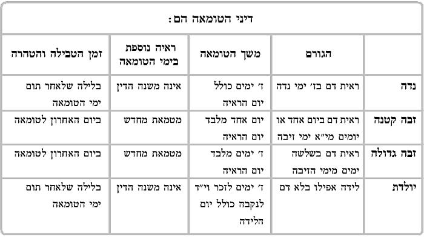

פרק ראשון - בית שמאי
אשה שיצא דם ממקור דמיה הרי היא טמאה.
מדאורייתא אין היא טמאה אלא אם הרגישה ביציאת הדם, אבל מדרבנן כל יציאת דם מהמקור מטמאת אותה. ואפילו אם רק יצאה טיפת דם זעירה אל המעבר שבין הרחם ובין פתח היציאה מגופה, ולא יצאה עדיין החוצה, הרי היא טמאה בטומאת נדה.
מעבר זה נקרא "פרוזדור".
במשנה שלפנינו נחלקו תנאים האם יש לחשוש בכל אשה הרואה שדם יוצא ממנה, ולא הרגישה ביציאתו, שמא כבר יצא הדם מקודם לשעת ראייתה אל הפרוזדור, ושהה בו, ונמצא שהיא טמאה למפרע, משעה שיצא הדם מהרחם אל הפרוזדור, והטהרות שנגעה בהם הם ספק טמאות, או שאין לחשוש לכך.
בגמרא יתבאר שמדאורייתא אין לחוש, אם מצד שיש להעמיד את האשה בחזקת טהרתה, ואם מצד שלא הרגישה ביציאת הדם. וכל המחלוקת היא רק ביחס לטומאת הקדשים שנגעה בהם - האם גזרו חכמים שתטמא למפרע ב"טומאת ספק" טהרות של קדשים בלבד. [וביחס לטהרות של תרומה נחלקו אמוראים].
כמו כן נחלקו התנאים המחמירים לגזור עליה טומאה למפרע - מהו משך הזמן למפרע שגזרו עליה שבו תטמא טהרות קדשים למפרע.
דף ב - א
מתניתין:
שמאי אומר: כל הנשים הרואות דם בשעה שבודקות עצמן 1 - דיין שעתן! שמשעת הראייה ואילך בלבד הן טמאות, ולא גזרו חכמים עליהן "טומאה למפרע", ואין הן מטמאות קדשים [ותרומה] שנגעו בהן לפני שעת הראייה.
1. מדברי רש"י משמע שראיית הדם היתה על ידי בדיקה, ולא שיצא הדם מעצמו. וכן כתב רש"י לקמן [ג א ד"ה "מרגשת"]. ומבאר המהר"ם את הכרחו של רש"י לומר כך, משום שמשמעות הלשון "דיין שעתן" היא שיש חידוש במה שהיא טמאה, ואם הדם זב מגופה ללא בדיקה, אין חידוש במה שמטמאה מכאן ואילך. לכן פירש"י שהדם נמצא על ידי בדיקה, וקא משמע לן שטמאה כבר מתחילת הבדיקה. וראה עוד ברש"ל ורש"ש, ובסדרי טהרה בחידוד הלכות בענין זה.
הלל אומר: גזרו עליהן חכמים שיטמאו תרומה וקדשים למפרע - מפקידה, משעת הבדיקה הקודמת, ועד לפקידה, לבדיקה שעשתה עתה, שבה היא ראתה דם.
ואפילו לימים רבים גזרו טומאה למפרע. שאם היתה הבדיקה הקודמת זמן רב לפני הבדיקה שראתה בה דם - הרי היא מטמאת את כל הקדשים [והתרומות] שנגעה בהם לאחר הבדיקה הקודמת.
וחכמים אומרים: לא כדברי זה ולא כדברי זה!
שאין לנו להחמיר יותר מדאי לזמן רב למפרע כהלל, מפני שכתלי בית הרחם אינם מעמידים את הדם זמן רב, אלא כאשר יוצא הדם לפרוזדור, הרי הוא יוצא משם אל מחוץ לגופה לאחר פרק זמן קצר.
ולא כדברי שמאי שמקיל יתר על המידה שלא לגזור עליה כל טומאה למפרע.
אלא יש לגזור טומאה למפרע באופן הזה:
א. תקופת הזמן של מעת לעת - ממעטת על יד, מתקופת הזמן, של "מפקידה לפקידה"! והיינו, אם הבדיקה הקודמת, שבדקה ולא מצאה בה דם, היתה לפני מספר ימים, דיינו שנגזור עליה שתטמא למפרע רק מעת לעת, ולא תטמא למפרע עד זמן הפקידה הקודמת.
ב. וכן מפקידה לפקידה - ממעטת על יד מעת לעת! שאם היה פרק הזמן של "מפקידה לפקידה" קצר מפרק הזמן "של מעת לעת", וכגון שבדקה את עצמה בבוקר 2 ומצאה עצמה טהורה ובערב בדקה ומצאה דם, אין היא מטמאה למפרע מעת לעת אלא רק משעת הבדיקה בבוקר, שהרי בדקה עצמה אז ומצאה עצמה טהורה.
2. מרש"י נראה, שדעת חכמים היא, שמפקידה לפקידה ממעטת על יד מעת לעת דוקא בכגון שבדקה שחרית ומצאתה טהורה, וחזרה ובדקה ערבית, ומצאתה טמאה. שכן כתב רש"י, "דאמרינן לקמן במתניתין, פעמים שצריכה להיות בודקת, שחרית ובין השמשות, לא מטמאינן טהרות של ליל אמש, דהא בדקה שחרית ומצאתה טהורה". ומפרש המהר"ם שכוונת רש"י לומר, כי דוקא כאשר בדקה מחמת תקנת חכמים, שחייבוה לבדוק שחרית וערבית, היא ממעטת על יד מעת לעת. אבל אם בדקה סתם מעצמה תוך מעת לעת, אינה ממעטת, כיון שאינה מדקדקת יפה בבדיקתה זאת. ורק בבדיקה שהיא מחמת תקנת חכמים היא מדקדקת יפה. והגרעק"א [המובא בספר "וזאת ליהודה"] תמה מהגמרא להלן [ד ב], שמבואר בה כי גם אם בדקה עצמה סתם תוך היום היא ממעטת. ובפתחי נדה [ד ב] כתב, שגם המהר"ם מודה שאם בדקה בשחרית כתקנת חכמים וחזרה והוסיפה לבדוק בחצי היום, ממעטת על יד מעת לעת. וכוונת המהר"ם היא רק כשלא בדקה בשחרית כדינה, ובדקה מעצמה באמצע היום, שבדיקה זאת אינה ממעטת.
ג. כל אשה שיש לה וסת קבוע ובדקה עצמה בשעת וסתה ומצאה דם - דיה שעתה! שלא גזרו עליה שתטמא למפרע, משום דאמרינן "אורח [הוסת] - בזמנו בא" ואין לחשוש שהקדים!
ד. והמשמשת בעדים, שבדקה את עצמה לפני התשמיש ואחר התשמיש ב""עד", בסדין, ומצאה עצמה טהורה, הרי בדיקה זו גם היא נחשבת כ"פקידה" - וממעטת אותה הפקידה על יד מעת לעת ועל יד מפקידה לפקידה! שאין היא מטמאה למפרע אלא משעת התשמיש והלאה, שהרי אז בדקה עצמה ומצאה שהיא טהורה.
כיצד אמרו "דיה שעתה" באשה שיש לה וסת קבוע, או לשמאי בכל אשה?
כגון, שהיתה יושבת במטה והיתה עסוקה בטהרות. ופרשה מהמיטה, וסמוך לאחר פרישתה מהמטה היא ראתה דם, הרי היא בלבד טמאה, מכאן ולהבא. ואילו הן, הטהרות שעסקה בהם בהיותה יושבת במטה - טהורות!
אף על פי שאמרו חכמים והלל באשה שאין לה וסת שמטמאה למפרע מעת לעת, לא אמרו זאת אלא ביחס לכך שהחמרנו לטמא את הטהרות שנגעה בהן למפרע, אבל את שבעת ימי נדתה היא אינה מונה אלא משעה שראתה את הדם ואינה חוששת למנותם מעת לעת למפרע [שאם היתה צריכה לחשוש למנותם מעת לעת למפרע היה המנין למפרע גורם להקדים את י"א ימי זיבתה, המתחילים לאחר שבעת ימי נדתה].
גמרא:
שנינו במשנה שיטתו של שמאי שאין גוזרים בנדה טומאה למפרע.
והוינן בה: מאי טעמא דשמאי? מדוע אין הוא חושש להחמיר, ואפילו לא ביחס לטהרת קדשים? והרי יש מקום לחשוש שמא יצא הדם קודם, אלא שהעמידוהו כתלי בית הרחם, ואילו היתה בודקת קודם לכן יתכן שהיתה מוצאת אז דם?
ומתרצינן ארבעה תירוצים בביאור שיטתו של שמאי אמאי אין מקום לגזור טומאה למפרע:
הסבר ראשון:
קסבר שמאי, כיון שהדבר הוא ספק - העמד אשה על חזקתה, ואשה בחזקת טהורה עומדת קודם שראתה את הדם 3 .
3. רש"י פירש בטעמו של שמאי, שמעמידים את האשה על חזקתה "שהיתה קודם ראייה, כשנתעסקה בטהרות אלו". ותמה הרש"ש, שהרי על זמן זה אנו דנים אם כבר היתה טמאה, ואם כן, רש"י היה צריך לפרש שמעמידים אותה על חזקתה שמשעת הבדיקה הראשונה. ובספר "תורת יקותיאל" [יח א] מבאר, שכאשר יש ריעותא לפנינו, כמו כאן, שיש דם לפנינו, ל א יתכן לדון חזקה דמעיקרא, ורק משום שהחזקנו אותה בפועל בחזקת טהורה, בשעה שנתעסקה בטהרות, ניתן להעמידה על חזקתה זו, לפי שבחזקה זו אין בה ריעותא. וברש"י בקידושין [עט א] מדייק הגר"א [אהע"ז [לז יג] ו"שער המלך" [אישות ג יד] שלעולם אין עדיפות של חזקה דמעיקרא על חזקה דהשתא. ותמהו על זה מסוגיית הגמרא כאן, שכולי עלמא סוברים שלגבי חולין כן מעמידים אותה על חזקתה, שהרי אף להלל, מה שאינו מעמידה בחזקתה אין זה כי אם חומרא בתרומה וקדשים [כמבואר להלן בגמרא ו א]. ולהסבר "התורת יקותיאל" לא קשה כלל.
והלל סבר: כי אמרינן "העמד דבר על חזקתו" הוא רק היכא דלית ליה לדבר שמעמידים אותו על חזקתו ריעותא מגופיה.
דף ב - ב
אבל האי איתתא, אשה הרואה דם,  כיון דמגופה קחזיא את הדם המטמא אותה בטומאת נדה - הרי זה ריעותא בחזקתה 4 .
כיון דמגופה קחזיא את הדם המטמא אותה בטומאת נדה - הרי זה ריעותא בחזקתה 4 .
4. בטעם הלל שלא מעמידים אותה על חזקתה כיון ש"מגופה קחזיא", פירש"י, משום "שמועדה ועלולה לראות". והמהרי"ט [יא] פירש, שהיא חזקה העשויה להשתנות, שאינה חזקה. ובשב שמעתתא [ג י] נקט שחזקה כזו כן הוי חזקה, וכאן אין זה אלא חומרא בתרומה וקדשים, כמפורש כאן בתוס' ד"ה "מעת לעת". ותמה על המהרי"ט שכתב דלא כתוספות. הט"ז [יו"ד שצז ב] נוקט, כי מי ששמע שמת לו מת אך אינו יודע אם כבר עברו שלשים יום מיום המיתה, שאז אינו חייב לישב שבעה, אינו צריך להתאבל עליו, כיון שלא מעמידים על חזקה דמעיקרא שהיה קרובו חי אלא רק כל זמן שאינו מבורר שמת. אבל כשמבורר שמת, אזי חזקה דהשתא שהוא מת, עדיפא, כיון שכל חי עומד למות. והרש"ש תמה מסוגיין על דבריו, שאף הלל, הסובר שלא מעמידים על חזקה מטעם זה, לא אמר זאת אלא כחומרא לתרומה ולקדשים. אבל לחולין הוא מודה שמעמידים אותה על חזקתה הקודמת. ובעיקר הטעם שהלל מודה שהיא טהורה לחולין יש כמה טעמים ב"ראשונים". בתוספות ד"ה "מעת לעת" מדוייק כמו שכתב "השב שמעתתא", משום שמעמידים אותה על חזקתה. אך הרמב"ן כתב טעם אחד משום חזקת הטהרות, ועוד כתב הרמב"ן טעם אחר, שגם אם אין לאשה חזקה כלל, מכל מקום לומדים מסוטה שטומאה למפרע טהורה לגמרי, ורק משום מעלה דקדשים תולין ולא מטהרים. ולפי זה לא קשה על המהרי"ט והט"ז.
הילכך, לא אמרינן אוקמה אחזקתה שהיתה טהורה 5 .
5. הראשונים כאן דנו למה לא מעמידים את הטהרות על חזקתם, בין להלל, שמטמא בתרומה וקדשים, ובין לשמאי, למה הוצרך לחזקת האשה. בתוספות רי"ד ביאר, כיון שודאי נגעה בטהרות, והספק הוא אם היתה כבר טמאה באותו זמן, לא יתכן להעמיד הטהרות על חזקתם. הרמב"ן להלן [יח ב] נוקט טעם זה גבי תינוק הנמצא בצד העיסה ובצק בידו, שאם ודאי נגע התינוק בעיסה, שורפין אותה, לפי שהיא טמאה בודאי. ומוכיח כן מפרק "המפלת" [כו א], ששנינו שם: שליא בבית, הבית טמא, לפי שרוב שליות יש בהן ולד. ולא אמרינן סמוך מיעוט שליא שאין בהן ולד לחזקת הבית שהוא טהור, כי היות ויש שליא בבית אין חזקתו של בית כלום, אלא הרי הבית כשליא. ומבואר בלשון הרמב"ן הטעם, שאם ודאי נגע התינוק בעיסה, לא מעמידים אותה בחזקתה, משום הכלל שיש לדון את סיבת הספק ושורשו, וכל שיש הכרעה ברורה על שורש הספק, מוכרע גם מה שמסובב מאותו ספק. וכיון שיש הכרעה על התינוק שהוא ודאי טמא, מכח רוב תינוקות מטפחין באשפה, שהוא ודאי נגע בטומאה, לכן אין דנים מצד חזקת העיסה כלל, לפי שדינה של העיסה הוא כדין התינוק, כמו שדין הבית הוא כדין השליא. והרמב"ן כאן פירש, כיון שהאשה "מגופה קחזיא", לכן לא מעמידים אותה על חזקתה אלא חיישינן שמא היא טמאה, לענין תרומה וקדשים. אבל לחולין, אף שיש לחוש, כיון שאין הכרעה ודאית לטומאה, מעמידים את הטהרות על חזקתם. ואין זה סתירה לדבריו להלן [יח ב], כיון שלא דנים חזקה כאשר "ודאי נגע" אלא רק כשיש הכרעה ודאית בשורש הספק. אבל כאן, שאינו אלא "ספק", שפיר מעמידים הטהרות על חזקתם לענין חולין, ורק לתרומה וקדשים חיישינן. וברמב"ן ריש פרק "המפלת" [כא א] מפורש יסוד זה. ועיין בקובץ שיעורים [ח"ב ב] שהכריח כן ברמב"ן מסוגיית הגמרא בכתובות [יד א]. ולפי זה, התוספות רי"ד שתירץ כאן שלא מעמידים טהרות על חזקתם משום היסוד של "ודאי נגע", סובר שגם כאשר אין הכרעה על שורש הספק אי אפשר לדון חזקת הטהרות. וטעמו, משום שסוף סוף יש בה ריעותא במה ש"ודאי נגעה". וכן מבואר דעת הרשב"א ר"פ "המפלת" [כא א]. ובשו"ת נפש חיה [יו"ד ג א] האריך בטעם החסרון ב"ודאי נגע", אם הוא משום ריעותא בחזקה, או משום שההכרעה היא לפי שורש הספק. [ראה בית יעקב כתובות [יד א] שיש שני אופנים של חזקה: א. חזקה המסלקת את הספק. ב. חזקה של דין הנהגה, בגדר "אל תפסלנו מספק", והוא במקום שיש ריעותא לפנינו]. ועיין ברמב"ן שם, שמביא ראיה מסוגייתנו שלהלל אין לאשה חזקה גמורה כיון שיש בה ריעותא דחזיא מגופה, ולפיכך אין חזקתה אלא רק בגדר של "אל תפסלנה מספק", ולכן, אף שמטהרינן לחולין, מכל מקום, בתרומה וקדשים החמירו]. שיטת רש"י להלן [יח ב] שמעמידים על חזקה גם אם "ודאי נגע". וכן נראה דעת תוספות (שם ד"ה "למעוטי"). וברש"י במסקנת הסוגיא [ב ב ד"ה "תרתי"] מבואר שטעם הטהרה באשה לחולין הוא משום חזקת טהרות. ועיין עוד בסדרי טהרה [קצט מ] ובאחיעזר [יו"ד א'] שהאריכו עוד בענין זה.
ופרכינן, בין לשמאי ובין להלל 6 : ומאי שנא אשה הרואה דם מהדין האמור במקוה?
6. לדעת רש"י קושיית הגמרא היא בין להלל ובין לשמאי. אך חידושי הר"ן נוקט שעיקר הקושיא לשמאי, כיון שהוא סובר להעמיד האשה על חזקתה לגמרי לטהר אף תרומה וקדשים, אם כן, זה ודאי גמור ולא שייך לומר "תרתי לריעותא", כיון שהוכרע שורש הספק. אבל להלל, שאינה חזקה גמורה, מסתבר שכאשר יש ריעותא אחת היא ספק, וכשיש תרתי לריעותא תהיה טמאה ודאי. וכעין זה מבואר בתוס' [ג ב ד"ה "איכא"].
דתנן: מקוה שהיו בו ארבעים סאה מים, והיה אותו המקוה ראוי לטבילה, ולאחר זמן נמדד המקוה ונמצא חסר מהשיעור הראוי לטבילה, הרי כל הטהרות שנעשו על גביו, והיינו, הטהרות שנעשו בכלים שהיו טמאים והוטבלו באותה המקוה, למפרע, - בין שהיה המקוה ברשות הרבים, בין שהיה ברשות היחיד - טמאות אותן הטהרות בטומאה ודאית!
לשמאי קשיא, שהרי כאן מוכח שמטמאין את הטהרות למפרע, ולא אמרינן העמד מקוה על חזקתו. ולמה מעמיד שמאי את האשה בחזקת טהרה.
להלל קשיא מה שמטמאים לטהרות בטומאת ודאי.
דאילו בטומאה מעת לעת למפרע שבנדה, מטמאין את הטהרות רק בטומאת ספק, ש"תולין" את הקדשים [או את תרומה] שנגעה בהם - לא אוכלין אותן, ולא שורפין אותן, כי הם רק ספק טמאין.
ואילו הכא, במקוה שנמצא חסר - מטמאין לטהרות בטומאת ודאי, ושורפין עליה את הקדשים [והתרומה]. שהרי מטמאים אפילו כשהיה המקוה ברשות הרבים, ואילו היה לנו ספק בטומאה היה עלינו לטהר, דהא קיימא לן שכל ספק טומאה ברשות הרבים הרי הוא טהור!? 7
7. כך פירש"י. אך בתוס' פירשו שמלשון רבי שמעון בסוף אותה משנה הסובר שברה"י תולין משמע שלרבנן טמאות היינו בודאי. ובמהרש"א מבאר שרש"י ותוס' הולכים לשיטתם אם באשה הרואה דם שמטמאים למפרע הדין כן רק ברה"י. אבל ברה"ר אומרים שספק טומאה ברה"ר טהור, וכן שיטת רש"י ולכן פירש כאן הראיה שטמאות ודאי כיון שמטמאים אף ברה"ר, אך בתוס' [בד"ה "מעת לעת"] סוברים שמטמאים אשה מעת לעת מספק אף ברה"ר ולכן הוצרכו כאן לפרש ההוכחה באופן אחר.
ומשנינן: התם, במקוה, הטומאה היא ודאית למפרע, משום דאיכא למימר - העמד את הכלי הטמא שהוטבל במקוה על חזקתו שהוא טמא, והטבילה בספק מקוה כשרה אינה מוציאתו מחזקת טמא, ואימא שדינו של הכלי הרי הוא כמי שלא טבל טבילה הוגנת!
והוינן בה: אדרבה! נאמר העמד את המקוה על חזקתו שהיה כשר לטבילה, ואימא לא חסר המקוה בזמן שהוטבל בו הכלי, אלא רק עתה אירע שנחסר!? 8
8. בקושית הגמרא יש ב' שיטות: תוס' הרא"ש ביאר, שצריך לטהר ודאי, ואף שיש חזקת טמא, מכל מקום, חזקת המקוה עדיף. ואין להסתפק שמא לא טבל טבילה הוגנת כיון שנמצא המקוה חסר ונעמיד את הטובל על חזקת טומאתו, משום שיש הכרעה על סיבת הספק, שהיא המקוה, להעמידה על חזקתה שהיתה מלאה, ולכן אין לדון את חזקת המסובב, דהיינו הטובל, שהיה טמא. ומוסיף תוס' הרא"ש שאף חזקת טמא של הטובל קלושה, כיון שהוא ודאי טבל לפנינו. אך תוס' ישנים קידושין [עט א] וכן המהרש"א והמהר"ם פירשו קושית הגמרא שיהא "ספק", כיון שיש חזקת המקוה כנגד חזקת הטמא. ולכאורה מבואר שאינם סוברים כללא של "ודאי נגע" להכריע לפי שורש הספק. ובחמדת שלמה [יו"ד ד ו] העלה סברא, כיון שכל כשרות המקוה היא רק לטהר טמאים, אין מקום לדון על המקוה אלא כלפי הטובל, וודאי שבשאר מקומות גם התו"י סוברים את הכלל של "ודאי נגע".
ומתרצינן: הרי מקוה חסר לפניך! ויש להתחשב בריעותא שבחזקה שהוא חסר לפנינו 9 .
9. בחידושי הר"ן מבאר עיקר השקלא וטריא בגמרא, שבתחילה הבינה הגמרא שטעם שמאי לטהר האשה הוא משום שמעמידים אותה על חזקתה בתורת ודאי גמור, שאין כלל ספק. ולפיכך שואלת הגמרא שהוא הדין במקוה, כיון שחזקת המקוה היא שורש הספק, נעמידו על חזקתו כדין ודאי גמור, ולא נדון כלל את חזקת הטמא הטובל, לפי שודאי טבל לפנינו. ומתרצת הגמרא, שהרי "חסר לפניך", דהיינו, שאף לשמאי, כל שהמקוה חסר לפניך, אזי אין גדר של החזקה כודאי גמור, כי מה שעכשיו חסר לפניך עושה ספק, ואם כן, אין עדיפות כאן לחזקת המקוה, אף שהיא שורש הספק, כיון שאין על ידה הכרעה ברורה, וכל עדיפות חזקה הפותרת את שורש הספק היא רק כשיש על ידה הכרעה ברורה. וכאן כיון שהוי ספק, יש לדון את חזקת הטמא. ובחזו"א [יו"ד רטו] מוסיף לבאר, שמטמאים הטהרות בודאי משום חזקת הטמא. אף שלכאורה הרי ודאי טבל, וגם חזקתו גרועה, בכל זאת, כיון שהמקוה עכשיו חסרה, וכלפיה אין שום נפקא מינה, אין דנים אלא על הטובל. ולפיכך אין הכרעת המקוה אלא לענין הגברא, ושפיר יש לדון חזקת הטמא כנגדה. וכן כתב השערי יושר [ב ב]. ולדבריהם יוצא, שאם יהיה נידון ונפקא מינה אף לגבי המקוה, נעמיד את המקוה על חזקתו, ולא נכריע על פי חזקת הטמא, וכגון אם הוסיף ג' לוגין מים שאובין, שאם המקוה היתה חסרה מקודם, המים הללו אינם מצטרפים להשלים, מה שאין כן אם נתחסר אחר כך.
ומקשינן: אם כן, הכא נמי בטומאת נדה, הרי דם לפניך, ויש ריעותא בחזקת טהרתה, ואמאי לא גזרינן טומאה למפרע, עד לשעה שבדקה ומצאה עצמה טהורה? 10
10. המהר"ם פירש הקושיא לשמאי שיהא "ספק", ונגזור לטמא למפרע כיון שאי אפשר להכריע על פי החזקה. ובמהרש"א [קידושין עט א] פירש הקושיא, שחזקה דהשתא תהא עדיפה על חזקה דמעיקרא, ונטמאה בודאי. ולפי זה קושית הגמרא היא גם להלל. ובתוס' הרא"ש הקשה, כיון שאי אפשר להכריע משום חזקת האשה, נכריע לטהר משום חזקת הטהרות. ותירץ, שאף אם אי אפשר להכריע על פי חזקת האשה, מכל מקום, כיון שדין הטהרות הוא תולדה ממצב האשה, לא מעמידים אותם על חזקתם. וכדעת הרשב"א ריש פרק המפלת [כא א] שהבאנו לעיל, שלעולם דנים את שורש הספק ולא את חזקת התולדה, אף אם אין הכרעה ודאית בשורש הספק.
ודחינן: באשה אין זו ריעותא, אלא אמרינן - השתא הוא דחזאי! 11 ומקשינן: הכא נמי במקוה שנמצא חסר נאמר - השתא הוא דחסר!?
11. הראשונים נחלקו האם חזקה דמעיקרא עדיפה על חזקה דהשתא או לא. דעת התוס' בסוגיין [ד"ה "דאיכא" ו"השתא הוא דחזאי"] היא, שחזקה דמעיקרא עדיפא. והוכיחו כן מתירוץ הגמרא "השתא הוא דחזאי". עוד הוכיחו מנגע באחד בלילה, שאם ראוהו חי מבערב מטהרים אף רבנן, על אף שעכשיו הוא מת לפנינו. וראה חידושי הר"ן שגדר החזקה דמעיקרא כאשר יש ריעותא בחזקה הוא, שאף על פי שיש כאן ספק, מכל מקום, דין הוא להעמיד על חזקה דמעיקרא ואל תפסלנה מספק. לאפוקי ממה שהבינה הגמרא בסלקא דעתך, שדין החזקה הוא דין ודאי גמור, ולא הוי ספק כלל. דעת רש"י קידושין [עט א] כפי שדייקו הגר"א [באהע"ז ל"ז יג] ושער המלך [אישות ג יד] שאין עדיפות לחזקה דמעיקרא, והוי ספק. ולשיטתו, מה שמעמידים בסוגיין את האשה על חזקתה צריך לומר שהוא משום חזקת הטהרות. וכן כתב המחנ"א [אישות ג] ומפורש כן ברש"י [ד"ה "תרתי"]. ו"בתורת יקותיאל" [יח א] תירץ, שכאן חזקה דמעיקרא עדיפא כיון שהחזקנוה טהורה בפועל אף בזמן המגע בטהרות כמו שכתב רש"י לעיל [ב א ד"ה "העמד"]. ועל ראיית התוס' מנגע באחד בלילה עיין מהר"ם שיש לומר הטעם משום ספק טומאה ברה"י. בתוס' [ד"ה "השתא"] הקשו מכאן לדעת רב [קידושין עט א] שביומא דמישלם שית קידושיה חלים כיון שהרי היא בוגרת לפנינו, הא בסוגיין מבואר שאומרים השתא הוא דחזאי. ותירצו, שטעמא דרב הוא משום סברא מיוחדת, שרגילות השערות לבא מהבוקר. ובש"ש [ג' טז] מדייק מלשון רש"י בקידושין שטעם רב הוא משום שפוסקים על פי חזקה דהשתא כשאין חזקה דמעיקרא דנערות. ושמואל שחולק, סובר שלא הולכים אחר חזקה דהשתא גם כשאין חזקה דמעיקרא, אך בדעת תוס' אומר הש"ש, שמשמע כי גם רב לא סובר חזקה דהשתא, ורק משום סברא שרגילות שערות לבא. ובחזו"א [אהע"ז פ' יח] ושערי יושר [ב ד] תמהו, שודאי גם תוס' סוברים שיש לפסוק על פי חזקה דהשתא, והוצרכו לסברא של שערות משום שיש חזקה דמעיקרא שהיתה נערה, שכל קושייתם היא אליבא דרב מכח סוגיין שמטהרים הנדה למפרע משום חזקה דמעיקרא. ובהכרח שלא סוברים כדיוק הש"ש ברש"י שאין חזקת נערות דמעיקרא. ועל קושיית התוס' תירץ תוס' הרא"ש [קידושין עט א] דשאני נדה, כיון שלא הרגישה, מעמידים אותה על חזקת טהרתה דמעיקרא. וכעין זה תירץ שם הריטב"א, ששונה נדה, כי אם איתא דהוה דם, מעיקרא הוה אתי. ומבואר בדבריהם שדנים טעמים אלו הנאמרים להלן בגמרא [ג א] אף להסבר הראשון בגמרא שטעמו של שמאי הוא משום חזקה. עוד עולה מתירוצם, שלא סברו את תירוץ התוס' משום שרגילות שערות לבא מהבוקר. ואם כן, רב סובר לעולם שחזקה דהשתא עדיפא על חזקה דמעיקרא, ובנדה יש טעם אחר שמעמידים על חזקה דמעיקרא.
ודחינן: הכי השתא, מהו הדמיון!?
התם, במקוה שחסר, איכא למימר שלא נחסר בפעם אחת, אלא חסר ואתא חסר ואתא, וכיון שחסרון המים הוא דבר המתמשך יש לנו לומר שהחסרון שפסל את המקוה כבר אירע מקודם ואיתרע לה חזקת המקוה לפני זמן רב 12 .
12. הפמ"ג במשב"ז [קה ג'] מסתפק, האם החסרון של "חסר ואתאי" הוא רק חסרון בכח החזקה דמעיקרא, כיון שרגיל להתחסר, או שמא הוא מעלה בחזקה דהשתא, כי היות ואי אפשר לומר שעכשיו הוא שנתחסר, ממילא לא יתכן כלל להכריע כדמעיקרא, והוא ודאי כדהשתא. ומביא להרשב"א בתוה"ב [בית ג' ו] שלא תיתכן הכרעת חזקה דמעיקרא רק אם יש לומר שעכשיו אירע השינוי. אבל אם ודאי נשתנה מקודם, פקעה חזקתו. אך נוקט הפמ"ג, שהרשב"א לא אמר כן אלא גבי טריפות, ששם הוי חזקה שאינה מבוררת, מה שאין כן בשאר מקומות. וגבי מקוה, שאומרת הגמרא "חסר ואתאי", אינו אלא ספק ולא פקעה חזקת המקוה לגמרי, ולכן רק בתרתי לריעותא מוכרע ודאי לטומאה. החכם צבי [ג] נוקט שמקוה שנמצאה חסרה טיפה אחת מארבעים סאה אין ריעותא של חסר ואתאי, כיון שיש לומר שעכשיו נשתנה. ובתורת יקותיאל [יח ז'] חולק, לפי שסוף סוף אינה חזקה אלימתא כיון שרגילה להתחסר. עוד נוקט החכ"צ, שחסר ואתאי לא אומרים אלא אם מתחסר מיד אחר הבדיקה, אך אם עמד בחזקתו זמן מה ואחר כך מתחסר, אין בזה ריעותא.
אבל הכא, באשה שראתה דם, מי איכא למימר בראיית הדם "חזאי ואתא חזאי ואתא"!?
ותמהינן: ומאי קושיא לומר שיציאת הדם הוא דבר המתמשך כמו חסרון המים במקוה שהוא דבר המתמשך?
דלמא גם הכא, בראיית הדם, אין הדם יוצא בבת אחת אלא "הגס הגס" חזיתיה! שהדם הולך ומתרבה במקור של האשה, ומתוך שהוא ממשיך להתרבות הוא יוצא מהמקור מעט מעט, וביציאת טיפת דם קטנה כחרדל היא נטמאת. ואם כן, גם בראיית דם נדה יש מקום לומר, כמו במקוה, שהדם יצא לבית החיצון כבר לפני כמה ימים וכבר אז היא נטמאה, ורק לאחר מכן, כשבדקה, היא מצאה אותו!?
ומשנינן: התם במקוה שנמצא חסר - איכא תרתי לריעותא! שיש לנו להעמיד את הטמא שטבל על חזקת טומאה, וכמו כן יש ריעותא בחזקת הטהרה של המקוה, שהרי מקוה חסרה לפניך 13 14 .
13. בגדר תרתי לריעותא יש כמה דרכים: השב שמעתתא [ג טז] פירש באופן אחד, שמעמידים את חזקת המקוה דמעיקרא כנגד חזקת הטמא, ומכריעים על פי חזקה דהשתא, שהרי חסר לפניך. וכן כתב הגרעק"א [בסימן ז']. עוד דרך כתב הש"ש, שחזקה דהשתא מגרעת את כח החזקה דמעיקרא, ולכן מכריעים משום חזקת הטמא, שאין בה ריעותא. וברעק"א [כתובות ט א] ביאר, שחזקה דהשתא מאלמת לחזקת טמא, ולכן היא עדיפה על החזקה דמעיקרא. ולפי זה לא אומרים תרתי לריעותא אלא כאשר הריעותא דהשתא מורה כחזקה שעמה, וכמו כאן, שהמקוה החסרה לפנינו מורה לנו שהטמא נשאר בחזקת טומאתו. בנתיבות המשפט [לד] ביאר, שמצרפים את החזקה דהשתא ואת חזקת טמא כנגד החזקה דמעיקרא, ונקט לפי זה, שלא מצרפים אלא חזקה המבררת. אבל חזקת ממון, שגדרה הוא "אל תוציאנו מספק" לא מצרפים. ולדבריו, תרתי לריעותא פירושו ב' חזקות כנגד חזקה אחת. בשערי יושר שער החזקות [ב] ובחזו"א אבהע"ז [פ כט] ביארו הטעם שלא מכריעים על פי חזקת המקוה שהיא סיבת הספק, כיון שהמקוה ודאי נחסרה, ואין נידון עליה כלל עכשיו, וכל הנידון הוא טבילת האדם, ולכן אין המקוה מהווה את סיבת הספק. ובאחיעזר [ב ב י] כתב, שהיות וכל כשרות המקוה היא רק לטהר טמאים לפיכך אין לדון את חזקת המקוה לחוד אלא לענין לטהר את הטמאים ומצרפים חזקת הטמא, ולפי זה מיישב את סוגית הגמרא בעירובין [לה א] בנתגלגל העירוב חוץ לתחום נפל עליו גל או נשרף, תרומה ונטמאת מבעוד יום אינו עירוב, משחשיכה הרי זה עירוב, אם ספק רבי יוסי ורבי שמעון מכשירים וכך ההלכה, ואומרת שם הגמרא הטעם שיש חזקה כנגד חזקה חזקת תרומה כנגד העמד אדם על חזקת תחום ביתו, ובדרבנן מספק לקולא. ולמה לא דנים משום תרתי לריעותא שהרי היא טמאה לפניך. ותירץ, ששם יש עוד נפקא מינה באותו זמן על התרומה עצמה אם נטמאה לענין אם מותר לאוכלה ומכריעים על פי חזקה דמעיקרא שטהורה היתה. ובקהילות יעקב [כתובות טו] ביאר שאימתי מכריעים על פי חזקת סיבת הספק רק כשיש הכרעה ברורה אך כששורש הספק לא מוכרע בבירור, רק חזקת הנהגה שמספק אל תוציאנו מחזקתו ודאי יש לדון החזקה שכנגדה ולכן דנים את חזקת הטמא כנגד חזקת המקוה שכשנמצאת חסרה כל חזקתה רק בגדר של אל תפסלנה מספק. 14. בתוס' [ד"ה "התם"] הקשו, למה בשחט בהמה ונמצא הסכין פגום מכשיר רב חסדא מטעם "דסכין איתרעי בהמה לא איתרעאי", דהיינו, שלא דנים הריעותא בסכין כלפי הבהמה, ומכריעים שהבהמה הרי היא שחוטה לפניך, כיון שהסכין היה בחזקת בדוק, והריעותא הוי רק בסכין, וכלפי הסכין מעמידים על חזקתו שהיה בדוק ונפגם אחר השחיטה. ואם כן, הוא הדין במקוה, לא נדון הריעותא דחסר לפניך אלא כלפי המקוה, ולא כלפי הטובל, ונימא דשפיר טבל, כיון שמעמידים כלפיו המקוה על חזקתה. ותירצו תוס' בחולין [י א], שלא אומרים כן תרתי לריעותא רק כשחסר ואתאי, שחזקת המקוה מעיקרא לא אלימה כל כך. ומבואר לתירוץ זה, שאם חזקת שלמות המקוה היתה אלימה, לא היינו דנים לומר תרתי לריעותא, אלא היינו דנים הריעותא שחסר לפניך כלפי המקוה בלבד, וממילא חזקה דמעיקרא עדיפה להכריע שהשינוי היה מאוחר, וטבילת הגברא הוי טבילה. והנה, רב הונא סובר במסכת חולין [יא] שגם בשוחט בהמה ונמצא סכין פגום, אפילו שיבר בה עצמות כל היום, פסולה, ואפילו שהחזקה דמעיקרא אלימה, לא אזלינן בתרה אף שהיא בשורש הספק להכריע כנגד מה שפגום לפניך והיא שחיטה כשירה, אלא מצרפים כל החזקות ודנים תרתי לריעותא בכל גוונא. ראה סוף ההערה. עוד תירצו תוס', שבסכין יש טעם להתיר משום ספק ספיקא. וברשב"א [חולין י א] תירץ, שסכין, כיון שיתכן ששחט בצד הבדוק הלכך הריעותא קלושה בכדי להוציא הבהמה מחזקת כשרותה. ובאבי עזרי [איסו"ב יח י] מבארו על פי דברי רעק"א בתרתי לריעותא. שצריך ריעותא המורה על חזקת טומאה, וריעותא דסכין אינו מורה כחזקת האיסור. בתורי"ד [קידושין עט א] מחלק בין סכין שבדקוהו קודם השחיטה, ובין מקוה שנמדדה הרבה זמן קודם שטבל, וריעא טפי חזקתה. עוד הקשו תוס' מדין נגעי בתים, שאם טימא הכהן את הבית אף כשחזר, וחסר הנגע, מטמאים כל הנכנס אותו שבוע לבית למה לא נדון תרתי לריעותא דומיא דמקוה, נעמיד האדם על חזקת טהרה, והרי הנגע חסר לפניך. בראש יוסף [חולין י ב] העיר שבמקוה כל מה שהחזקנוה שלימה הוא כלפי הטובל, ולכן כשנמצא חסר דנים תרתי לריעותא, אבל בבית המנוגע יש לדון כלפי הבית גופא אם טעון הסגר שני וכדומה, וכיון שכלפי הבית יש להחזיק בטומאה, ממילא כל הנכנס בו יטמא. ומוכח, שאף אם כלפי הבית אנו פוסקים שנשאר בטומאתו, מכל מקום, כלפי הנכנס לבית, הוי תרתי לריעותא, ושייך לדון את האדם לטהרה בפני עצמו, אף שאת הבית דנים לטומאה בסוף שבעה. ואין קושית תוס' שנטהר את הבית למפרע אלא רק כלפי הגברא שנכנס. ובזה דוחה הראש יוסף דברי הט"ז [א ו] בשוחט ששכח הל' שחיטה, שמצרפים למפרע כל שחיטותיו משום תרתי לריעותא, חזקה שאינה זבוחה, והרי שכח הלכות שחיטה לפניך, ולכן כל הכלים שבשלו בהם נטרפו. שהרי מדברי התוס' יוצא שהכלים יש להכשירם ולהעמידם על חזקתם. ותירצו תוס', שלא אומרים תרתי לריעותא רק במקוה שחסר ואתאי. אבל נגע הרגילות להתחסר בבת אחת פחות מכגריס, "לכך אמרינן התם השתא הוא דחסר, ואוקי הנגע בחזקת שלם ביציאת הכהן מן הבית. וכשיטמא הכהן את הבית, אפילו נתחסר הנגע אחר כך קודם שנכנס זה, גזירת הכתוב הוא שהבית טמא עד שיראה הכהן באש שבוע ויטהרנו". והמהר"ם פירש אריכות דבריהם, דאף על פי שלא אומרים תרתי לריעותא כשאינו חסר ואתאי, מכל מקום ליהוי ספק, חזקת הבית כנגד חזקת הגברא שהוא טהור. [וצ"ל שתוס' לשיטתם [יח ב] שאין מכריעים לפי חזקת שורש הספק ולא סברי דינא דודאי נגע] על זה הוסיפו שאין לדון חזקת הגברא שגזירת הכתוב שכל שיצא הכהן מהבית וטימאו אינו נטהר עד שיטהרנו הכהן ולכן אף אם נכנס לבית אחר שכבר נחסר הנגע מכל מקום אינו נטהר, ורק אם היינו דנים משום "חסר לפניך" אי הוי חסר ואתאי, איכא ספק בעצם הטומאה דדילמא אין כלל טומאה כשיצא הכהן מהבית. ובעיקר תירוץ תוס' תמה החכם צבי [ש], הרי גם מקוה בזמן שנחסר ממ' סאה אפילו משהו הוי בבת אחת ומאי שנא נגע ממקוה. בשערי יושר [ב יח] ביאר שנגע אין דנים אלא על זמן ההסגר לפיכך מכריעים על פי חזקה דמעיקרא אף בחסר ואתאי שלא נתחסר בזמן ההוא רק לאחר ההסגר, מה שאין כן מקוה שדנים על כשרות המקוה ובעי להכריע מכח החזקה דמעיקרא שאירע עכשיו, כיון שחסר ואתאי ליתא לחזקה.
אבל הכא, באשה שראתה דם איכא רק חדא לריעותא, שהורעה חזקת הטהרה של האשה, שהרי דם לפניך, אבל בטהרות שנגעה בהם ליכא ריעותא, אלא אפשר להעמידם על חזקת טהרתם 15 .
15. ברש"י ביאר, שמעמידים הטהרות על חזקתם שאין בהם ריעותא, ולעיל כתבנו שרש"י לשיטתו קידושין [עט א] שאין עדיפות לחזקה דמעיקרא על חזקה דהשתא והוי ספק. אמנם בתורי"ד צ"ע שביאר כאן גם כן הטעם משום חזקת הטהרות אף שלעיל פירש שאי אפשר להכריע על פי חזקת הטהרות כיון שודאי נגעה.
ועתה פרכינן לשמאי, שלא גזר טומאה למפרע, משום שמעמיד את האשה על חזקת טהרתה:
ומאי שנא אשה שראתה דם מדין חבית?
דתנן: מי שהיתה לו חבית יין של טבל, שהיה נוהג מידי פעם להפריש ממנה תרומה על חביות יין טבל אחרות. והוא היה בודק מידי פעם את החבית, שהיה טועם ממנה לדעת אם לא החמיצה, כדי שתהיה ראויה להיות מפריש עליה תרומה על חביות יין אחרות. והוצרך לבדוק אם החמיץ היין כי חומץ ויין נחשבים לשני מינים נפרדים, ואין תורמים ממין אחד על השני. וכך היה הולך ומפריש.
ואם אחר כך נמצא שהפך היין להיות חומץ, ומשעה שהחמיץ הוא אינו ראוי להפריש ממנו על יין, שהרי מעתה הוא אינו מינו.
הרי כל ג' ימים הראשונים מזמן הבדיקה האחרונה ודאי שלא החמיץ אז היין, ואם הפרישו אותו אז כתרומה על חבית יין אחרת הרי היא תרומה ודאית והטבל שתיקן על ידה מותר באכילה בודאי.
אך מכאן ואילך, אם הפריש עליה לאחר שלשה ימים מהיום שבדק אותה, הרי היא ספק תרומה, כי שמא כבר החמיץ היין, והטבל הוא בספק מתוקן, הילכך יחזור ויפריש מהטבל תרומה נוספת.
[עיין רש"י שכך ביאר רבי יוחנן במסכת בבא בתרא.
ואילו רבי יהושע בן לוי ביאר שכל שלשת הימים לפני הבדיקה שהתגלה בה שנעשה היין חומץ אז הוא ודאי חומץ, ומכאן ואילך למפרע הוא ספק].
ומוכח מכאן, בין לרבי יוחנן ובין לרבי יהושע בן לוי, שיש להסתפק בריעותא למפרע, וקשיא לשמאי אמאי לא חשש לטמא את האשה שראתה דם למפרע!?
ומשנינן: התם, בחבית של יין, שאני, משום דאיכא למימר - העמד טבל על חזקתו, ואימר לא נתקן! מה שאין כן באשה, שאין לנו חזקה להעמידה בחזקת טומאה.
ופרכינן: אדרבה, העמד יין שבחבית על חזקתו, ואימר לא החמיץ בשעה שתרם ממנו!? ודחינן: הרי החמיץ לפניך!
ופרכינן: הכא נמי באשה שראתה דם, הרי דם לפניך!?
ודחינן: באשה אמרינן - השתא הוא דחזאי דם!
ופרכינן: התם בחבית יין נמי נאמר השתא הוא דהחמיץ!
ודחינן: הכי השתא!? מהו הדמיון!?
התם ביין, איכא למימר דהוא דבר המתמשך ואירע לפני הרבה זמן, דאמרינן החמיץ ואתא החמיץ ואתא.
אבל הכא, באשה שראתה דם, מי איכא למימר "חזאי ואתא חזאי ואתא"!?
ופרכינן: ומאי קושיא לומר שגם ראיית דם באשה הוא דבר המתמשך, כמו החמצת היין? והרי גם בראיית דם ניתן לומר - דלמא "הגס הגס חזיתיה".
ומשנינן: התם בחבית, איכא תרתי לריעותא, דמעמידים את הטבל בחזקתו, ובנוסף הרי חומץ לפניך.
אבל הכא, באשה הרואה דם, איכא חדא בלבד לריעותא, שהרי דם לפניך, אבל אין כאן חזקת טומאה.
והשתא רמי מדין חבית של יין שהפרישו ממנה תרומה והחמיצה, אדין מקוה שנמדד ונמצא חסר:
מאי שנא הכא במקוה, שפוסקים על כל הטובלים בו למפרע דין טומאת ודאי, ומאי שנא הכא בחבית, שנוהגים בה דין ספק תרומה, ולא ודאי טבל?
אמר רבי חנינא מסורא: מאן תנא חבית - רבי שמעון היא, דלגבי מקוה נמי פליג אדרבנן וספקא משוי ליה, שאין שורפין את התרומה על נגיעתם של הטובלים בה.
דתנן: מקוה שנמדד ונמצא חסר - כל הטהרות שנעשו על גביו למפרע, בין ברשות הרבים בין ברשות היחיד 16 - טמאות [וכפי שיבואר הטעם לקמן].
16. רש"י פירש [בד"ה "בין"] שהמקוה ברה"ר או ברה"י. אך הריטב"א נוקט שתלוי במקום מגע הטהרות, הילכך אפילו אם המקוה ברה"ר, כל שהמגע הוא ברה"י, מטמאים, כדין ספק טומאה ברה"י. ומבואר לפי זה, שאף אם אין הכרעת ספק טומאה על שורש הספק [כמקוה ואדם או כלים שטבלו בו], מכל מקום, מכריעים על הטהרות דיני רשויות. ובאבי עזרי [הל' אבוה"ט י"ט א] האריך לדון, שכאשר לא הוכרע שורש הספק המטמא על ידי דין ספק טומאה, אזי אין דנים אף בתולדה את דיני ספק טומאה וחילוקי הרשויות. ומה שמצינו לגבי ב' שבילין שמכריעים את דין ספק טומאה ברה"ר שהוא טהור, זה רק כשהספק הוא שאינו זוכר באיזה שביל הלך. אבל אם הספק איזה שביל טמא ואיזה טהור, לעולם נשארים בספק גם התולדות.
רבי שמעון אומר: אם היתה המקוה ברשות הרבים - טהורות. ואם היתה ברשות היחיד - תולין מספק [וכפי שיתבאר לקמן].
דף ג - א
ושניהם, תנא קמא ורבי שמעון, לא למדוה לדין המקוה אלא מסוטה: 17
17. שיטת התוספות ששניהם לא למדוה אלא ממה שהם מחלקים בין זו לסוטה, רבנן לא לומדים כלל מסוטה וטעם הטומאה במקוה משום תרתי לריעותא שהוא ודאי ולא ספק. ורבי שמעון לא סובר כלל תרתי לריעותא והוא ספק משום חזקה כנגד חזקה. ומה שחסר לפניך אינו ריעותא, כיון שאומרים השתא הוא דחסר, הילכך לא לומדים מסוטה רק ברה"ר לטהר, שברה"י לעולם תולין. שיטת הר"ן שכולי עלמא סוברים תרתי לריעותא ולומדים מסוטה. רבנן סוברים שלומדים מסוטה לטמא ודאי, כיון שלולי הלימוד מסוטה לא היינו אומרים שעל ידי תרתי לריעותא הוי ודאי, אלא רק קרוב לודאי, ולא היינו מטמאים בתורת ודאי אף לשרוף תרומה וקדשים. רק הואיל ומצינו בטומאה שהחמירה תורה ברה"י לעשות ספק כודאי, לפיכך מחמירים בתרתי לריעותא אף ברה"ר לעשותו כודאי. ומוסיף הר"ן, שכל זה יש לומר משום שאין לימוד מיוחד מסוטה לטהר ספק טומאה ברה"ר אלא רק משום שמעמידים על החזקה, לפיכך היכא שאין חזקה, כמו בתרתי לריעותא, הרי זה נשאר בספק, ומטמאינן בודאי הואיל ומצינו ספק טומאה ברה"י שטמא ודאי כדילפינן מסוטה. אבל אילו היה לימוד מסוטה לטהר ספק טומאה ברה"ר, לא היה שייך לטמאות בתרתי לריעותא ברה"ר, שהרי התורה טיהרה ספיקות ברה"ר, והיאך נטמא תרתי לריעותא אחר שאינו ודאי גמור. ורבי שמעון סובר איפכא, שלומדים מסוטה לטהר ודאי אף שיש תרתי לריעותא כיון שגם בסוטה מטהרים אף שיש רגלים לדבר, וברה"י לא לומדים שרגלים לדבר עדיף מתרתי לריעותא.
רבנן סברי שהטהרות טמאות בודאי, כי, כמו בסוטה:
מה סוטה ספק היא, שהרי לא ראינוה שזינתה, ועשאוה כודאי, שאסורה לבעלה באיסור ודאי ומוחלט, שגם אם לא זינתה היא אסורה לו עד שתשתה מי סוטה.
הכא נמי במקוה, למרות שטהרת הכלים הנטבלים בו הוא ספק - עשאוה לתרומה שנגעה בכלים כודאי, ושורפים אותה כדין תרומה שנטמאה בודאי.
והוינן בה: אי מסוטה למדו חכמים - אימא הכי, שדין הטהרות שנעשו בכלים שהוטבלו במקוה הזאת הוא כי [כמו] סוטה בצורה הזאת:
מה סוטה שהתעורר לנו ספק אודותיה כשהיתה ברשות הרבים - ספיקה טהור, שלא נאסרת כלל מספק, אלא היא נשארת בחזקת כשרות לבעלה. הכי נמי במקוה, אם הוא היה ברשות הרבים היה צריך להיות ספיקו טהור!?
ודחינן: הכי השתא!? מהו הדמיון!?
התם, בסוטה, כל איסורה - משום סתירה הוא. שכך היא גזירת הכתוב שאם קינא לה בעלה ונסתרה הרי היא נאסרת לבעלה בודאי. וסתירה ברשות הרבים ליכא, שאין רשות הרבים נחשבת "מקום סתירה", ולפיכך היא טהורה ברשות הרבים 18 .
18. הר"ן הקשה, הרי למסקנא שכל ספק טומאה ברה"ר טהור מוכח שלא סברינן לטעם זה, והיאך חזרה בה הגמרא מהאי טעמא בשתיקה. ומיישב לפי דרכו, שבאמת אף למסקנא לא ילפינן מסוטה לטהר ברה"ר משום שסתירה ברה"ר ליכא. וכל הטעם לטהר הוא משום שמעמידים על החזקה. אבל היכא דליכא חזקה כל שהוא ספק, ילפינן לטמא ודאי דומיא דספק טומאה ברה"י. אמנם דעת התוס' אינה כן, ולמסקנא לא סברינן האי דיחוייא "סתירה ברה"ר ליכא". וראה תוס' לעיל [ב א ד"ה והלל] שהוכיחו ממה שלרבי שמעון מקוה שנמדד ונמצא חסר טהור ברה"ר דילפינן מסוטה לטהר אף דליכא חזקה. ראה עוד בתוס' [סוטה כח ב] שמבואר שספק טומאה ברה"ר טהור רק כשיש חזקה ודלא כהתוס' כאן. ועיין משנה למלך [מקוואות ז י] שתמה על התוס' בסוטה מהוכחת התוס' כאן שרבי שמעון מטהר במקוה שנמדד ונמצא חסר אף דליתא חזקה. ומבאר, שבזה גופא נחלקו רבנן ורבי שמעון עיי"ש שהאריך.
אבל הכא, במקוה, מה שפסקנו שהטהרות הן טמאות הוא משום שהמקוה חסר הוא, ואם כן - מה לי חסר ברשות הרבים, ומה לי חסר ברשות היחיד!?
וכי תימא דבכל אופן יש להקשות: הא כל ספק טומאה ברשות הרבים ילפינן לה מדין סוטה שספיקו טהור. וגם כאן, במקוה, הרי מידי ספק טומאה הוא לא יצא, ובמה שונה דין מקוה שחסר מדין כל הספיקות, שאם אירעו ברשות הרבים ספיקן טהור!?
ומתרצינן: כאן במקוה שחסר, כיון דאיכא תרתי לריעותא, חזקת הטומאה של הכלים, וחסרון המקוה - כודאי טומאה דמי! 19
19. האבנ"ז [יו"ד תסז] והחזו"א [טהרות ג ג] פירשו שלא אומרים ספק טומאה ברה"ר במקום חזקת טמא, וראה בחמדת שלמה [יו"ד ה'] שהאריך בזה. ובשערי יושר [שער ב' ב'] פירש שכולי עלמא סוברים ללישנא קמא שאין ללמוד סוף טומאה מתחילת טומאה ולכן אי אפשר ללמוד על דין הכלים שטבלו בו או הגברא מסוטה כיון שהוא סוף טומאה. וכל הנידון בגמרא רק על הטהרות שהם תחילת טומאה. ובזה סברי רבנן כיון שיש תרתי לריעותא על הגברא נפשט שורש הספק, ואין עוד ספק כלל על הטהרות. ורבי שמעון סובר שתרתי לריעותא עדיין הוי ספק ושפיר ילפינן מסוטה לטהר.
והיינו, שרק בספק טומאה ברשות הרבים למדנו לטהר, ולא כאשר אנו מתייחסים לענין כ"ודאי טומאה", משום דהוי תרתי לריעותא.
ועתה, לאחר שהתבארו דברי חכמים שמטמאים בין ברשות היחיד ובין ברשות הרבים משום שמתייחסים לתרתי לריעותא כודאי, מבארת הגמרא את סברתו של רבי שמעון שמטהר לגמרי ברשות הרבים ו"תולה" ברשות היחיד:
וגם רבי שמעון סבר שדין המקוה הוא כי סוטה. אלא שלמד מסוטה באופן אחר:
מה סוטה כשהתעורר הספק אודותיה ברשות הרבים ספיקה טהור, הכא נמי במקוה, אם אירע הספק במקוה שהוא ברשות הרבים ספיקו טהור.
והיינו, שחולק רבי שמעון על מה שמתייחסים חכמים לתרתי לריעותא כאל ודאי טומאה, וסובר שעדיין מכלל ספק לא יצאה. הילכך, יש לנו ללמוד מסוטה, ככל ספק טומאה, שברשות הרבים ספיקו טהור.
אלא, מעתה, שרבי שמעון סובר שדין מקוה שחסר הוא ככל ספק טומאה שלומדים את דיניו מסוטה, תיקשי: אי מסוטה ילפינן למקוה שחסר, אימא שדינו של המקוה כי סוטה לכל דבריו - מה סוטה אם אירע הספק כשהסתתרה ברשות היחיד הרי היחס אל טומאתה הוא כמי שהיא טמאה ודאי, הכא נמי אם אירע שהיה המקוה החסר ברשות היחיד היו הטהרות שנעשו בכלים שהוטבלו באותה מקוה צריכים להיות בחזקת טמאה ודאי, ואמאי אמר רבי שמעון שהרי הם בחזקת טומאת ספק, ואם היו תרומה לא אוכלים אותה ולא שורפים אותה!? 20 ודחינן: הכי השתא!? מהו הדמיון בין מקוה שחסר ברשות היחיד לבין אשה שנסתתרה ברשות היחיד!?
20. בתוס' [ב א ד"ה "מעת"] הוכיחו מכאן שכל קושית הגמרא רק לרבי שמעון. אבל לרבנן מובן מה שהטהרות טמאות ודאי ברה"י משום ספק טומאה ברה"י טמא, ותמהו שאם כן, גם באשה שרואה דם למה לכולי עלמא טהורה לחולין ולא מטמאים מדין ספק טומאה ברה"י. ונחלקו האחרונים אם כוונת תוס' לענין האשה עצמה או רק לענין הכרעת הטהרות. אבל האשה עצמה עדיין רק בספק, נפקא מינה אם דנים על כל מגע ומגע שלה היכן נגעה או לא, דעת החזו"א [יו"ד רטו] שהכרעת ספק טומאה ברה"י כודאי באשה עצמה ואם היתה ברה"י בזמן מציאת הדם אף אם נגעה בטהרות ברה"ר טמאות. ולא דמי למשנה בטהרות [פרק ו' א'] גבי מסוכן שדנים על כל מגע ומגע כיון שנדה לא חשיבא גוף הטומאה אלא כמקבלת טומאה מאחרים. דעת האחיעזר [ח"א א' ג] שההכרעה על הטהרות. אבל האשה שהיא גוף הטומאה לא נאמר דין ספק טומאה ברה"י טמא כדין מסוכן במשנה בטהרות. וראה עוד בשערי יושר [ש"א יד] וחידושי הגר"ש הימן [כתובות ד]. ותירצו תוס' שלא ילפינן מסוטה לטמא למפרע ולכן בטומאה דמעת לעת מעמידים האשה על חזקתה. וצ"ב אם כן, במקוה גם כן הרי זה ספק למפרע והתוס' הוכיחו שמטמאים מדין ספק טומאה ברה"י. המהרש"א מבאר שתירוץ תוס' הוא דוקא במקום שיש חזקת טהרה, אך כשאין חזקה לומדים מסוטה אף טומאה למפרע. וביאור החילוק כתב הקהילות יעקב [בכתבי הקה"י החדשים] לפי השב שמעתתא [א יז] שבדין ספק טומאה שלומדים מסוטה יש ב' הלכות: א. שלא מעמידים על החזקה. ב. דספק כודאי. ומה שספק טומאה למפרע לא לומדים מסוטה הוא לענין ההלכה הראשונה שלא מעמידים על החזקה ולכן כל שכבר הוכרע קודם לידת הספק על פי החזקה ממילא לא לומדים מסוטה דין ספק כודאי להפקיע החזקה, אבל את עצם ההלכה שדין ספק כודאי לומדים גם בספק טומאה למפרע ולכן כשאין חזקה אומרים שספק כודאי. ובאבי עזרי [איסו"ב ט' ג] ביאר דברי המהרש"א כפשוטם, גם אם נאמר שבדין ספק טומאה ברה"י לא נאמרה אלא רק הלכה אחת, שהטומאה היא מחמת ספק כודאי, מכל מקום, היכא שהספק למפרע הוא במקום שלא ראינו ריעותא, אזי גדר החזקה הוא שאין להסתפק כלל, ושוב אינו בכלל ספק טומאה ברה"י. וזה רק בנדה, שכל הריעותא הגיעה עכשיו בראייית הדם, וכן בנמצא מת בשחרית, שבערב ליכא ריעותא כלל. אבל מקוה שנמדד ונמצא חסר, כיון שיש גם חזקת טומאה דגברא, יש כאן ספק על למפרע. אם כן, במקום שיש ריעותא, גדר החזקה לרבנן הוא רק הנהגה של "אל תפסלנה מספק", לפיכך נקטינן בה דין ספק כודאי לטמאותה ברה"י. והיינו, שכאשר יש חזקה, והספק הוא למפרע, הרי כיון שבשעת הכרעת החזקה לא היתה ריעותא, דין החזקה אומר שלא להסתפק כלל, ולכן לא יתכן לומר "ספק כודאי". מה שאין כן כשיש ריעותא, שאין החזקה אלא רק הנהגה בספק, אזי אומרים ספק כודאי. והמהר"ם פירש כוונת תוס', שגם מקוה לא לומדים מסוטה, והטעם שחכמים מטמאים הוא משום תרתי לריעותא. ומה שהוכיחו תוס' בתחילה מהגמרא כאן, שמשמע דלרבנן ניחא בלאו הכי, חזרו מזה בתירוצם. וקושית הגמרא לרבי שמעון, אף שלא סובר תרתי לריעותא, צריך לומר שהבינה הגמרא כי מכך שרבי שמעון מדמה חבית למקוה, הוא סובר למילף מסוטה אף בספק טומאה למפרע. ראה משנה למלך מקוואות [י ז] שתמה על פירושו. דעת תוס' הרא"ש למסקנא שדנים הכרעת ספק טומאה ברה"י וברה"ר אף למפרע, וכדמוכח ממקוה. וראה שם שתירץ קושית התוס' מנדה באופן אחר. עוד הוכיחו תוספות שאשה הרואה דם ונטמאת מעת לעת, הדין כן אף ברה"ר. והקשו, למה לא לומדים מסוטה שספק טומאה ברה"ר טהור. וראה שב שמעתתא [א י] שפירש קושיית התוס' לפי דברי המהרש"א הנ"ל, שאף על פי שכתבו תוס' דלא ילפינן מסוטה למקום שהספק טומאה למפרע, מכל מקום, היכא דליכא חזקה, ילפינן. אם כן, הוא הדין כאן, שפיר הקשו תוס' דנילף לטהר ברה"ר, אף שהוא ספק למפרע, כיון דליכא חזקה בתרומה וקדשים. ומתרצים תוס' ב' תירוצים: א לא דמי לסוטה כיון שיש בה ריעותא מגופה, ועכשיו היא ודאי טמאה. ובמהר"ם ביאר שהוצרכו לב' הריעותות, ולא די במה שעכשיו היא ודאי טמאה לפניך, כי בגמרא כאן מוכח שילפינן מסוטה לטהר בדין מקוה ברה"ר, אף שעכשיו חסר לפניך. וראה עוד חידושי רעק"א, ובחזו"א [צו א] בענין זה. ב לא לומדים מסוטה אלא טומאת מגע ולא טומאת ראייה, לכך מטמא אף ברה"ר. ובשערי יושר [א יד] ביאר שהוא ספק בגוף הטומאה, ולא דומה לסוטה שיש ודאי טומאה וספק מגע. ונחלקו האחרונים אם סברת תוס' דוקא לענין ספק טומאה ברה"ר, או אף לקולא לענין ספק טומאה ברה"י. ראה בסדרי טהרה [קצו כג ד"ה וראיתי] ובמהר"ם לקמן [כא א] על דברי תוס' [ד"ה ורבנן]. הרמב"ן והרשב"א תירצו דלא ילפינן מסוטה משום דהוי למפרע וראה במהר"ם ורעק"א הטעם למה תוס' לא חילקו כן כפי שתירצו לעיל בספק טומאה ברה"י. דעת היש מפרשים ברמב"ן והריטב"א שספק נדה ברה"ר טהור וילפינן מסוטה ובמהרש"א [ב ב] דייק כן בדברי רש"י ד"ה "טומאה ודאית".
התם, בסוטה, שמטמאים אותה ברשות היחיד בטומאת ודאי, זה מחמת ש"יש רגליים לדבר", ["סימן טומאה" - לשון רש"י], שהרי קינא לה, התרה בה שלא תסתתר עם האיש הזה, ונסתרה עמו, ומכח הקינוי והסתירה היא נאסרת באיסור ודאי.
אבל, הכא, במקוה שחסר, מאי "רגליים לדבר" איכא!? ולכן אין מטמאין את הטהרות בטומאת ודאי, אלא תולין אותן מספק 21 .
21. המשנה למלך [מקוואות י ז] תמה לדעת המהר"ם שצריכים לטעם של תרתי לריעותא לטמא אף ברה"י משום שלא ילפינן מסוטה על טומאה שלמפרע, אם כן, למה הוצרכה הגמרא לתרץ שאני סוטה דאיכא רגליים לדבר? תיפוק ליה שהיא טומאה למפרע, ולא ילפינן מסוטה אלא להבא, ולכך סובר רבי שמעון שברה"י תולין. ועיין בשב שמעתתא [א יא] המיישב לפי דברי התוס' בסוטה [כח א ד"ה אינו].
ומכאן אנו למדים שבכל ספק טומאה ברשות היחיד חולק רבי שמעון על חכמים, וסובר שאין מטמאין בודאי אלא רק תולין מספק. ואפילו במקום שיש תרתי לריעותא. כי אין זה ודאי טמא אלא רק ספק טמא. ואם כן, הוא הדין בכל הספיקות שיש בהם מצב של תרתי לריעותא חולק רבי שמעון וסובר שעדיין יש להתייחס אל המצב כאל ספק ולא כודאי 22 .
22. מבואר בסוגיא שרבי שמעון לא לומד מסוטה רק כשיש רגליים לדבר, ונחלקו הראשונים אם כלל הוא בכל מקום או דוקא גבי מקוה, שיטת רש"י ותוס' שבכל מקום סובר רבי שמעון שספק טומאה ברה"י תולין, ובחידושי הר"ן הקשה, למה לא מעמידים על חזקת טהרה. עוד מקשה רעק"א [יו"ד א' על הט"ז סק"ו] למה במקוה תולין ולא מעמידים הטהרות על חזקתם שלרבנן הטעם שאין מעמידים הטהרות על חזקתם משום שמכריעים על פי שורש הספק וכיון שהוכרע ממילא לא דנים חזקת הטהרות אך לרבי שמעון קשיא. ומתרץ רעק"א שלא מעמידים על חזקה כמו כל ספק טומאה ברה"י, שבכל ספק טומאה שלומדים מסוטה יש ב' הלכות: א. שלא מעמידים על חזקה. ב. שספק כודאי. ולכן, אף לרבי שמעון שלא לומד דין ספק כודאי רק כשיש רגליים לדבר מכל מקום הדין שלא מעמידים על החזקה ילפינן. ומיושבת בזה גם קושית הר"ן. שיטת הרמב"ן שלא מצריך רבי שמעון רגליים לדבר רק כשקדמה בדיקה לספק. אבל בכל ספק טומאה טמא ודאי אף בלא רגליים לדבר. שיטת הרשב"א שבכל ספק טומאה אף שקדמה בדיקה לספק טמא, ודוקא בסוטה בעי רגליים לדבר כיון שאמרה טהורה אני. ובמשנה למלך [מקוואות י' ז] תמה שאם כן, מקוה נמי הא לא שייך טעמא דאמירה. ובפתחי נדה ביאר על פי המבואר בתוס' בסוטה [כח א ד"ה אינו] שפירשו הגדר ברגליים לדבר, שהמספק לפנינו, הילכך כל ספק טומאה בעלמא שהמספק לפנינו חלפינן מסוטה לטמא ודאי ברה"י [ראה מהרש"א בתוס' שם שכן דעתם, ודלא כהתוס' כאן] ובסוטה היות וטוענת ברי אין מקום להסתפק לפיכך בעי רגליים לדבר, והוא הדין מקוה כיון שבשעת הטבילה ליכא קמן שום ריעותא להסתפק בו לפיכך תולין. ובתוס' הרא"ש פירש שכל ספק טומאה בעלמא שהוא תחילת טומאה מודה רבי שמעון דהילכתא גמירי שטמא ושאני מקוה שהוא סוף טומאה ואין למידין ק"ו מהלכה.
ולכן, גם בחבית של יין שהחמיצה, שיש בה תרתי לריעותא, חזקת הטבל, והחומץ שלפנינו, אין אנו מתייחסים אליה למפרע כאל ודאי טבל אלא כאל ספק.
ואי בעית אימא לא מסוטה למדוה חכמים לדין המקוה!
כי אם למדים מסוטה יש לטהר את המקוה ברשות הרבים, לפי שגם חכמים סוברים שתרתי לריעותא אינו יוצר מצב ודאי, ומספק צריך לטהר, כמו בסוטה. [ומה שאמרו חכמים שהטובל במקוה שנמצא חסר ברשות היחיד ודאי טמא - הוא משום חזקת הטמא שטובל, וכפי שיבואר לקמן בהמשך].
שחכמים סוברים כי מה שאפשר ללמוד מסוטה הוא רק דינו של ספק שאירע בשעת הנגיעה, ביחס להתטמאות הדבר, וכמו בסוטה שהנידון הוא התטמאותה של הסוטה, ולא בספק שאירע בשעת הטבילה במקוה, שהוא ביחס להתטהרות הדבר הנטבל מטומאתו 23 .
23. רש"י פירש שתירוץ הגמרא אליבא דרבנן שלא ילפינן כלל מסוטה שאם לא כן הוי להו לטהר ברה"ר אף שיש תרתי לריעותא, ונחלקו האחרונים בכוונתו, המהר"ם פירש שהלישנא קמא סוברת שילפינן מסוטה, וללישנא בתרא טעמא דרבנן משום תרתי לריעותא לחוד. אך במל"מ [מקוואות י ז] פירש שללישנא קמא טעמא דרבנן משום תרתי לריעותא לחוד. וללישנא בתרא אף בחדא לריעותא ודאי טמא, ומשום דלא ילפינן סוף טומאה מתחילת טומאה, וכן מפורש ברש"י [גיטין לא ב]. שיטת תוס' ותוס' הרא"ש שתירוץ הגמרא כאן הוא לרבי שמעון, אבל לרבנן טמא משום תרתי לריעותא שהוא ודאי ולכן לא ילפינן מסוטה. ולכולי עלמא חדא ריעותא אפשר ללמוד מסוטה לטהר ברה"ר, וההבדל בין ב' הלשונות שללישנא קמא החילוק לרבי שמעון משום רגליים לדבר, וללישנא בתרא הטעם משום שלא ילפינן סוף טומאה מתחילת טומאה אך זה רק בספק טומאה ברה"י שהוא גזירת הכתוב. אבל רה"ר דינא הוא ואפשר ללמוד, וכן פירש הרמב"ן. ומבואר בדבריו שדין הטהרה ברה"ר אינו חידוש וגזירת הכתוב שנלמד מסוטה כל שהוא ברה"ר, אלא מחמת שהספק ברה"ר אינו דומה לסוטה ולפיכך מטהרינן מעיקר הדין שלא מטמאים מספק אם כן, הוא הדין סוף טומאה לרבי שמעון, אבל ברה"י שהוא חידוש וגזירת הכתוב הנלמד מסוטה אין בו אלא חידושו תחילת טומאה, אך סוף טומאה לא ילפינן. ולפי זה יהיה נפקא מינה שללישנא קמא כל ספק טומאה ברה"י תולין. וללישנא בתרא ספק טומאה בתחילת טומאה טמא ודאי. וראה במל"מ שם שהאריך בביאור דברי התוס' [ד"ה "גמר"]. לפירש"י יוצא שספק טומאה ברה"ר טהור אף במקום חזקת טומאה. מה שאין כן לפי תוס' במקום חזקת טומאה לא ילפינן. שיטת הרשב"א שתירוץ הגמרא לרבנן וטעמם לטמא ברה"ר אינו משום תרתי לריעותא אלא משום שלא ילפינן סוף טומאה מתחילת טומאה ובחדא ריעותא גם כן טמא. "משום שלא גמרינן סוף טומאה מתחילת טומאה אלא העמד גברא על חזקתו שמספיקא לא מפקינן ליה מטומאתיה". ובמל"מ פירש כוונתו שהלישנא בתרא סוברת שתרתי לריעותא אינו ודאי רק ספק וסיבת הטומאה לרבנן משום שלא ילפינן מתחילת טומאה הלכך אף ברה"ר עשאוה כתחילת טומאה ברה"י שטמא ודאי. ולפי זה, אם יהיה ספק בגוף המקוה, כגון שהוסיף מים שאובין שאין חסר לפניך, ללישנא קמא טהור, אך ללישנא בתרא טמא, כדין ספק טומאה ברה"י. וראה בשב שמעתתא [ג א] ובחמדת שלמה [יו"ד ח] מה שהקשו על המל"מ ב' קושיות: א. הגם שלא לומדים סוף לטומאה מתחילת טומאה לקולא מכל מקום מנלן למילף לחומרא ברה"ר? ב. לפי המבואר בתוס' [ב א ד"ה והלל] שברה"ר טהור אף בדליכא חזקת טהרה אם כן, מה לי סוף טומאה מה לי תחילת טומאה שאף סוף טומאה יש לטהר בודאי. שכשם שעשה הכתוב ספק כודאי לטמא ברה"י הוא הדין עשה ספק כודאי לטהר ברה"ר. אמנם כוונת המל"מ ברורה, שעיקר סברתו לפי דברי התוס' בסוטה [כח ב] כפי שמביא שם בהמשך דבריו. ששיטת התוס' שם שלעולם דין ספק טומאה ברה"ר מטהרינן רק במקום חזקה. והקשו תוס' אם כן, למה צריך כלל להילכתא למשה מסיני לטהר ברה"ר, ותירצו, שלולא ההילכתא היינו לומדים שספק טומאה ברה"ר טמא כמו ברה"י כיון שבסברא אין לחלק ביניהם, ולפי זה עולה דעד כמה שננקוט שאינו בכלל דין ספק טומאה ברה"ר לטהרו, ממילא ילפינן לטמאו מדין ספק טומאה ברה"י. עוד יש לפרש על פי הרמב"ן כאן [ד"ה והא], שכתב "דרה"י גמרינן מסוטה בתחילת טומאה וגזירת הכתוב הוא, רה"ר דינא הוא וגמרינן מיניה דלא אורועי ולטמויי מידי ספיקא". מבואר שספק טומאה ברה"ר דטהור אינו גזירת הכתוב הנלמד מסוטה אלא כן הוא מעיקר הדין לא לחדש טומאה מספק, ומשום שיסוד טהרתו במה שאינו דומה לסוטה, וזו היא ההילכתא גמירי לה, שכשהספק ברה"ר לא דמי לסוטה וממילא לא מטמאים מספיקא. ואם כן, יש לומר כן רק בספק דעלמא שלא מחדשים בו טומאה. אבל כשיש חזקת טומאה רק יש חזקה נגדה אינו בכלל זה, דלא חשיב שמחדשים טומאה, ממילא יש לטמא כדאשכחן בכל ספק טומאה ברה"י. בכתבי קהילות יעקב החדשים פירש כוונת הרשב"א לפי מה שייסדו האחרונים שיש ב' הלכות בספק טומאה ברה"י, ויש לומר שגם ברה"ר נאמרה ההלכה שאין מעמידים על חזקת טהרה, וכל החילוקי רשויות הם לענין ההלכה של ספק כודאי, שברה"י ספק כודאי לחומרא וברה"ר לקולא, הילכך סוף טומאה ברה"ר שאי אפשר ללמוד מסוטה לקולא, נשאר בדינו שאין מעמידים על החזקה מחמת ההלכה הראשונה וטמא.
אלא, שמעתה, שטעמם של חכמים הוא משום שלא למדים ספק בהתטהרות מספק בהתטמאות הסוטה - מאי טעמא דרבי שמעון דמטהר ברשות הרבים? ואמרינן: היינו טעמא דרבי שמעון: גמר "סוף טומאה", ספק בטהרה, בשעת הטבילה, מ"תחלת טומאה", מספק טומאה בשעת הנגיעה, [שאותו אפשר ללמוד גם לפי חכמים מסוטה].
מה "תחלת טומאה", כשאירע ספק אם נגע, ספק לא נגע בדבר טמא ברשות הרבים, הרי הוא טהור, שדין זה אפשר ללמוד מסוטה שהספק בה "אם נגע אם לא נגע", אף "סוף טומאה", כשהיה הספק אם טבל, ספק לא טבל - ברשות הרבים ספיקו טהור! ורבנן, החולקים על רבי שמעון אמרי: הכי השתא!? כיצד ניתן לדמות את הספק בטבילה לספק בנגיעה!?
והרי התם, בספק נגיעה, גברא שאתה מסתפק אם נגע בדבר טמא - בחזקת טהרה קאי, ולכן, מספקא לא מחתינן ליה [אין מורידין אותו] לטומאה.
אבל הכא, בטובל במקוה שחסר ויש לנו ספק אם נטהר בטבילה זו, הרי גברא - בחזקת טומאה קאי. ואם כן, מספקא לא מפקינן ליה מטומאתו 24 .
24. הרמב"ם פסק במקוה שנמדד ונמצא חסר לטמא ודאי בין ברה"ר ובין ברה"י, ראה הל' מקוואות [י ז]. ואילו בדין חבית כשבדק ונמצא חומץ פסק בהל' תרומות [ה כד] כרבי שמעון שאינו אלא ספק. ותמה הרשב"א על דבריו מסוגיית הגמרא שמדמה את שני הדינים. ולמאי דקיי"ל כרבנן שתרתי לריעותא משוי ודאי, כן הדין אף בחבית. ובישוב דעת הרמב"ם כתב המשנה למלך לפי דברי הרשב"א שהבאנו בהערה הקודמת, שהלישנא בתרא סוברת שתרתי לריעותא אינו ודאי, ויש לטמא ברה"ר גם משום חדא לריעותא. והרשב"א סובר שלא חולקת הלישנא בתרא על מה שתרתי לריעותא הוי ודאי רק סוברת שיש לטמא גם בלאו הכי. והתוס' [ב א] תירצו, שלא לומדים מסוטה לטמאות נדה ודאי משום שלא ילפינן על למפרע. ולדברי המהרש"א שם יש חילוק בין מקוה, דילפינן משום שליכא חזקה, ובין נדה במעל"ע, שיש לה חזקת טהרה, דלא ילפינן מסוטה. ובקושית הגמרא [ב ב] ממקוה על נדה במעל"ע מבואר ברש"י. וכן כתב שם המהרש"א, שהקושיה על רה"י שבמקוה מטמאינן בודאי ואשה שראתה אינה טמאה רק מספק. ומתרצת הגמרא, שאני מקוה דאיכא תרתי לריעותא. ולדברי המהרש"א צע"ג מה הקושייה, הרי מקוה שפיר ילפינן לטמא ודאי אף למפרע מדין ספק טומאה ברה"י, כמבואר בגמרא [ג א], מה שאין כן אשה, שאין טמאה למפרע אף ברה"י בתורת ודאי, דלא ילפינן מסוטה. והמהר"ם חולק על המהרש"א וסובר שכל שהספק הוא למפרע, אף אם אינו נגד חזקה לא ילפינן מסוטה לטמא ברה"י. ואפשר, שגם למהרש"א, הסובר שמקוה ילפינן מסוטה הואיל ואינו נגד חזקה, כל זה נתחדש בגמרא [ג א] שאמרו שניהם לא למדוה אלא מסוטה, וכהוכחת התוס' [ב א ד"ה מעת]. אבל בגמרא [ב ב] סברינן כפי דרכו של המהר"ם, שאף מקוה לא ילפינן מסוטה לטמא ודאי הואיל והוא למפרע ולפיכך מקשינן מקוה על נדה במעל"ע. והוצרכו לתרץ משום תרתי לריעותא. וראה תוס' [ג ב ד"ה איכא] בסוף דבריהם שכתבו דעיקר פירכת הגמרא [ב ב] ממקוה הוא על רה"י, ובהכרח צריך לומר לשיטתם שהסוגיות חלוקות.
ועכשו, לאחר החילוק בין דין האשה שראתה דם, שלדברי שמאי אין חוששין לה לטמאותה למפרע משום שיש לה חזקת טהרה, לבין מקוה שחסר, שחוששין לטהרות למפרע משום חזקת הטומאה של הטהרות, פרכינן שוב לשמאי:
ומאי שנא דין האשה שראתה דם, שאין חוששין לטמאות את הטהרות שנגעה בהם למפרע, מדין מבוי -
דתנן: השרץ שנמצא במבוי - מטמא למפרע את כל הטהרות שנעשו באותו המבוי, עד שיאמר אדם: "בדקתי את המבוי הזה, ולא היה בו שרץ!", או עד שעת הכיבוד שכיבדו את אותו מבוי. אבל הטהרות שנעשו בו למפרע עד אז הרי הן טמאות, עד שעת הכיבוד ואילך. ומאי שנא מנידה, שלא חיישינן בה למפרע?
ומשנינן: התם, במבוי נמי דינו הוא כמו במקוה, כיון דאיכא שרצים דמבוי גופיה, ואיכא, בנוסף, שרצים דאתו מעלמא - כתרתי לריעותא דמי! ויש להתייחס אל הטהרות שנעשו במבוי כודאי טמאות, ולכן לא מתחשבים בחזקת הטהרה של הטהרות, ומטמאין אותן למפרע. אבל באשה, שאין בה תרתי לריעותא, מעמידים אותה על חזקתה 25 .
25. בפירוש המשניות לרמב"ם פירש הטעם שמטמאים הטהרות במבוי למפרע משום ספק טומאה ברה"י, וצ"ע שבגמרא כאן מבואר הטעם משום חזקת טומאה, ובמי נדה הקשה, מאי פריך הכא הרי במבוי אי הוה ברה"י יש לטמא משום ספק טומאה ברה"י מה שאין כן נדה שהיא ספק ראייה ולא ילפינן מסוטה כמו שכתבו התוס' [ב א ד"ה מעת]. האחרונים מקשים על הרמב"ם שהרי זה ספק טומאה למפרע ולא ילפינן מסוטה כהוכחת התוס' [ב א], ויש שפירשו שבמבוי יש ב' ספיקות: א. אם היה השרץ במבוי קודם לכן ב. גם אם היה במבוי אולי לא נגע בטהרות. לפיכך גבי הספק הראשון שהוא למפרע לא מועיל דיני רשויות וצריך לטעם שמעמידים על חזקה לטומאה משום תרתי לריעותא, ובספק השני לענין הטהרות שהוא מכאן ולהבא שאין חזקה לטומאה צריך לטעם שספק טומאה ברה"י טמא. בתוס' [ד"ה "ושרצים"] הקשו מהסיפא של המשנה, כתם שנמצא בחלוק האשה מטמא למפרע עד שתאמר בדקתי החלוק ולא היה בו כתם, והתם ליכא תרתי לריעותא וקשיא לשמאי. ותירצו "הואיל ואם הכתם יבש הוא ע"כ טמאה למפרע ופעמים נמי אף כשהוא לח מוכיח דלא אתא השתא אלא על ידי שחיה או ריקוד וכו' לא פלוג רבנן בכתמים". וביאור דבריהם פירש הבכור שור, [חולין י ב ד"ה פר"ח] שיתכן להעמידה על חזקה דמעיקרא אף בכתם יבש עד זמן שיוכל להתייבש אלא דמכל מקום לא פלוג רבנן ובכל ענין טמא למפרע. ובחתם סופר פירש כוונתם כדברי הרשב"א בתורת הבית [בית ג ו] שאין מעמידים על חזקה דמעיקרא רק כששייך לתלות שעכשיו אירע השינוי. אבל כשאי אפשר לומר שעכשיו ממש אירע השינוי יצאה מחזקתה.
ב. ועתה מבארת הגמרא טעם שני מדוע סבור שמאי שאין לגזור על נידה טומאה למפרע, מחמת סיבה אחרת: ואיבעית אימא: היינו טעמא דשמאי דאינו חושש שמא ראתה דם למפרע, הואיל ואשה שיוצא ממנה דם - מרגשת בעצמה בשעת יציאת הדם.
ואשה זאת, שלא הרגישה קודם מציאת הדם, יכולה לסמוך על חוסר ההרגשה, ולתלות שודאי יצא הדם עתה בשעה שבדקה עצמה ב"עד" 26 .
26. כך פירש"י, וכתב המרומי שדה [ב א] שלפי זה אם ראתה על ידי הרגשה גמורה שלא בבדיקת עד לכולי עלמא טהורה למפרע, ואם ראתה ודאי שלא בהרגשה לכולי עלמא טמאה למפרע. ושיטת תוס' ששמאי מטהר בראתה על ידי הרגשה ומה שבלא הרגישה גם כן לא חיישינן למפרע משום לא פלוג, ובפליתי סימן קפ"ג הוכיח מתוס' שבראתה על ידי בדיקה בלא הרגשה טמאה מה"ת שאם לא כן בלא הרגישה נימא ספיקא דרבנן לקולא וראה כאן בחידושי רעק"א. ובדעת הלל, דקסבורה הרגשת מי רגליים, ראה בחזו"א [צז יא] שמסתפק אי פליג לפי תוס' אף בהרגשה או רק שלא בהרגשה. ועל הצד שהלל מטמא מעת לעת אף בהרגישה, ביאר החזו"א [צז ב ד"ה "שם"] דדילמא הגס הגס חזיתיה, והתחילה הראייה מאתמול על ידי דם אחר. ומה שכתבו התוס' להלן [ג ב ד"ה אביי] דלא חיישינן לדם אחר, זהו רק לטעמא דאם איתא דהוה דם מעיקרא הוי אתא. ובחוות דעת [קצ א] הוכיח ממה שהלל מטמא למפרע אף שהרגישה עכשיו, שהרגשה המטמאת אשה מדאורייתא הוא אף בהרגשת זיבת דבר לח, ויש לומר שמרגשת עכשיו שדבר לח זב ממנה, ומכל מקום טמאה מעת לעת, שאפשר והיה זב אותו הדם כבר מאתמול. וראה בשו"ת חתם סופר [יו"ד קמה] שחולק, והרגשה המטמאת מהתורה היא רק במרגשת שנפתח מקורה. ובמה שנקטו תוס' טעמא דשמאי לטהר למפרע משום שעיקר ראייה בהרגשה לפיכך אף אם לא הרגישה עכשיו לא פלוג וטהורה, נוקט המהרש"א שלפי זה אין צריך לבאר מה שבכתמים מודה שמאי שמטמא למפרע כדברי התוס' לעיל ד"ה "ושרצים", משום שבכתמים עיקר האיסור בלא הרגשה, ושפיר מודה שמאי שמטמא אף למפרע דהשתא נמי לא הרגישה.
והלל, שאינו מסתמך על חוסר ההרגשה - מאי טעמיה?
ומבארינן: יש לחוש שיצא הדם למפרע בהרגשה, מבלי שתשים לב להרגשה זו, משום שכסבורה, בשעה שהרגישה, שאין זו הרגשה של יציאת הדם, אלא הרגשת מי רגלים היא.
והשתא פרכינן: ולשמאי, המסתמך על חוסר ההרגשה - האיכא יציאת הדם בשעה שהיא ישנה, ואינה חשה בהרגשה באותה שעה, ואם כן כיצד אפשר להסתמך על כך שהיא לא הרגישה עד עתה? ומתרצינן: אפילו אשה ישנה נמי מרגישה ביציאת הדם, כי אגב צערה בשעת יציאת הדם מיתערא, הרי היא מתעוררת משנתה, ומרגישה ביציאת הדם, מידי דהוה אהרגשת מי רגלים, שהיא חשה ביציאתם ומתעוררת משנתה.
ופרכינן לשמאי: כיצד אמר כל הנשים דיין שעתן? והאיכא אשה שוטה, שאינה מבינה להרגיש ביציאת הדם, ומדוע אין לחוש כשראתה דם שמא יצא ממנה למפרע בהרגשה, אלא שהיא אינה מבחינה בה!? 27
27. בתוס' [ד"ה מודה] הקשו, הא אין בה דעת להשאל, וגמרינן לטהר מדרב גידל [סוטה כט א] ? ותירצו, שיש נפקא מינה לאדם הנוגע בה ורוצה לעסוק בקדשים, שהוא יש בו דעת להשאל. ובערוך לנר הקשה, כיון שהספק באשה, ואין בה דעת להשאל, הרי הוכרע דינה לטהרה, ומה איכפת לי שהנוגע אין בו דעת להשאל. ובאחיעזר [א ג] תירץ, שאין דנים על האשה משתי סיבות. א, משום שהיא גוף הטומאה, ולא נאמר בה דין ספק טומאה, כמבואר במשנה טהרות [ו א] גבי מסוכן. ב. כיון שהיא ודאי טמאה, ואין כלפיה נפקא מינה, אין דנים אלא בנוגע בה. ובתירוץ התוס' כגון אדם שנגע בה וכו' מבארים האחרונים לפי דברי הגרעק"א להלן [ו א], שהחומרא בתרומה וקדשים אף לענין נגע בחולין והחולין נגעו בטהרות, ולפי זה אף שהאדם דינו כחולין מכל מקום נטמא לענין מגע בטהרות. וראה בחזו"א טהרות [ג ב] שפירש, שהחולין לא נטמאים כלל, אך מי שהוחזק לאכול תרומה, אף שהוא חולין דינו כתרומה לענין חומרת מעת לעת. וזה מה שכתבו תוס' "ורוצה לעסוק בקדשים".
ומשנינן: מודה שמאי בשוטה שיש לחוש לטמאותה למפרע 28 .
28. לכאורה מבואר בגמרא הטעם שמטמא הלל למפרע כיון שחיישינן שטועה בהרגשת מי רגליים, ומכל מקום לחולין טהורה כיון שאינו רק חששא בעלמא. אך הרמב"ן דוחה זאת לגמרי, שאם כן, בשוטה, שאינה מבינה להרגיש, יהיה דינה דשורפין ואפילו ברה"ר. ולא מצינו כן. ומבאר, שכל הטעמים כאן בגמרא נאמרו אליבא דשמאי, אבל להלל קיימינן כלישנא קמא שמעיקר הדין סומכים על החזקה ולפיכך טהורה לחולין ורק משום שהחזקה גרועה וגם דם לפניך עבוד רבנן מעלה בתרומה וקדשים. וראה עוד במהרש"א על תוס' [ד"ה "ואיבעית אימא"] ובחידוד הלכות.
ופרכינן: הא "כל הנשים דיין שעתן" קתני, בלא יוצא מן הכלל!?
ומשנינן: כוונת שמאי היא לומר - "כל הנשים הפקחות" בלבד.
ופרכינן: וליתני שמאי: "נשים - דיין שעתן" בלבד, ואמאי תני כל הנשים?
ומשנינן: כוונתו של שמאי באומרו "כל הנשים" היא - לאפוקי מדרבי אליעזר!
דאמר רבי אליעזר: רק ארבע נשים שהן "מסולקות דמים" דיין שעתן, ותו לא!
קא משמע לן שמאי כי לא רק נשים שהן מסולקות דמים, אלא כל הנשים הפקחות דיין שעתן.
והוינן בדברי שמאי: והאיכא ראיית כתמים, שמוצאת את הדם על גופה או על בגדה, דקיימא לן במתניתין לקמן שמטמאים אותה למפרע, עד שתדע שהיה הבגד בדוק, על אף שלא הרגישה ביציאת הדם!
ואם כן, וכי לימא תנן לקמן למשנת כתמים, שמטמאים למפרע, דלא כשמאי!? שהרי לשמאי, המסתמך על חוסר ההרגשה - בכתמים אין לטמאותה כלל, כי אפשר להסתמך על חוסר ההרגשה, ולומר שכתם זה לא בא מגופה אלא מעלמא!? 29
29. הראשונים נחלקו אם קושית הגמרא היא ממה שמטמאים כתמים למפרע, או מעצם טומאת כתמים מכאן ולהבא. דעת הרמב"ן וכן מדייק המהרש"א ברש"י שקושיית הגמרא ממאי שמטמאים למפרע, לשמאי שמטהר למפרע משום שאשה מרגשת הכא נמי בכתמים לגבי לטמא למפרע נימא לאו מגופה הוא הואיל ואשה מרגשת, "אבל מכאן ולהבא דאית ליה עיקר מדאורייתא לא טיהר שמאי משום דאשה מרגשת". ומבאר החידוד הלכות שרש"י לשיטתו להלן [נח א] שעיקר גזירת כתמים הוא חשש דילמא ארגשה והוי לתא דאורייתא, לפיכך אין להקשות לשמאי מעיקר איסור כתמים רק ממה שמטמאים למפרע. ודעת תוס' ד"ה "והא" שקושית הגמרא מכתמים היא מכאן ולהבא, שכיון שלא הרגישה, נתלה שהגיע מדעלמא. וראה מהר"ם שביאר דלמפרע לא קשה כיון ששמאי מודה בכתמים ומהטעם שכתבו תוס' ד"ה ושרצים. ותוס' לשיטתם להלן [נח ב] שגזירת כתמים היא אפילו כשלא הרגישה כלל. ומקושיית הגמרא לשמאי דוקא ולא להלל, מכריח הרמב"ן שטעם הגמרא כאן הוא רק לשמאי. אבל להלל טעמו שמטהר לחולין משום חזקה, ומעלה עשו בתרומה וקדשים כיון שהחזקה גרועה, שאם התחדש גם טעם חדש להלל ואינו משום חזקה כלל אלא משום חששא דהרגשת מי רגליים תולין לתרומה וקדשים, אם כן, כתמים אף דלא כהלל שמטמאים למפרע אף לבעלה ולחולין. ועל כרחך צריך לומר שגם ללישנא זו עיקר טעמו של הלל משום חזקה ולכן טהורה לחולין מעת לעת. ובכתמים ליכא חזקה ומהטעם שכתבו התוס' [ד"ה "ושרצים"] שאם הכתם יבש הוא על כרחך טמאה למפרע וליכא חזקה. ובתוס' [ד"ה והא] חולקים על הרמב"ן, וביארו קושית הגמרא לשמאי דוקא דאית ליה טעמא דהרגשה, שהיא הוכחה גמורה שלא ראתה מקודם, אם כן, היה לנו לטהר כתמים אפילו מכאן ולהבא שכיון שלא הרגישה, אף שכתמים עיקר האיסור בלא הרגשה מכל מקום כיון שלא הרגישה ודאי מעלמא אתי, אבל להלל, שאינו ברור לו כ"כ טעמא דהרגשה לטהר בקדשים, שאינה הוכחה ברורה, כי יתכן שהרגישה מחמת מי רגליים ורק החמירו בתרומה וקדשים. אבל חולין מודה לשמאי שמספיק בהוכחה כזו לא לטמאותה למפרע, מכל מקום בכתמים אין לנו לתלות שמעלמא אתי אפילו לחולין "שרגלים לדבר הוא דמגופה אתי אפילו למפרע". היינו, כיון שכתם מגיע בלא הרגשה אין הוכחה כלל, ושפיר יש לטמאותה לחולין אפילו למפרע.
אמר אביי: מודה שמאי בכתמים שיש לטמאותה, על אף שלא הרגישה, ואפילו למפרע!
ומבארינן: אשה זו אינה יכולה לתלות את הדם שמצאה בכל סיבה שהיא, ולכן לא איכפת לן בכך שלא הרגישה, אלא אמרינן שבהכרח דם זה בא מגופה. וכיון שאין אנו יודעים מתי הוא יצא מגופה, שהרי גילתה את הכתם לאחר שיצא הדם, מטמאים אותה למפרע.
והכי אמרינן: מאי טעמא מודה שמאי בכתם שמטמא למפרע? שהרי אשה זו, בדם צפור - ידוע לנו שהיא לא נתעסקה, ולכן אי אפשר לתלות את הכתם בדם ציפור שהתעסקה בו.
וכמו כן בשוק של טבחים לא עברה, שנוכל לתלות את הדם בכך, ואם כן - האי כתם הדם מהיכא אתי!? בהכרח, שהוא מגופה, והיא טמאה למפרע, עד שעת הכיבוס, או עד שעת בדיקת הבגד הקודמת.
ג. ועתה מבארת הגמרא טעם שלישי לדברי שמאי:
איבעית אימא, היינו טעמא דשמאי דכל הנשים דיין שעתן, דאם איתא דהוי דם - מעיקרא הוי אתי, שדרך הדם לצאת מיד ולא להשתהות בבית החיצון!
והלל, חולק וסובר שיש לחוש שמא כותלי בית הרחם העמידוהו לדם לפני שיצא החוצה.
ושמאי חולק, וסובר כי כותלי בית הרחם לא מוקמי דם!
והוינן בדברי שמאי: אשה שהיא משמשת במוך, שממלאת את אותו המקום במוך כדי למנוע הריון, לשמאי - מאי איכא למימר? אמאי אינה מטמאת למפרע, דהא הכא איכא למיחש שהמוך שנתנה באותו מקום עיכב את יציאת הדם החוצה!?
אמר אביי: מודה שמאי במשמשת במוך שאכן היא מטמאת למפרע!
רבא אמר: משמשת במוך נמי דיה שעתה. משום שאגב זיעה - מכויץ כויץ, ויש מקום לדם לצאת, ומדלא יצא קודם לכן מוכח שרק עכשו הוא יצא.
ומודה רבא במוך דחוק, שאין הדם יכול לצאת כלל, שמטמאה לשמאי למפרע.
והוינן בה: ומאי איכא בין הני תרי לישני האחרונים דמתרצינן לשמאי, להאיך לישנא הראשונה, שמתרצינן את טעמו של שמאי משום העמד אשה על חזקתה.
דף ג - ב
ומבארינן: איכא בינייהו למרמי, להקשות על דברי שמאי את הקושיות שהקשינו לעיל - מאי שנא אשה דין הרואה דם, שאין שמאי חושש לטמאותה למפרע, מדין החבית, ומדין המקוה, ומדין המבוי, שחוששים בהם למפרע.
להאיך לישנא דלעיל, שטעמו של שמאי הוא מצד שהעמיד את האשה על חזקתה, איכא למרמינהו.
אבל להני לישני, שטעמו של שמאי משום שאשה מרגשת, או משום שסובר שאין כותלי בית הרחם מחזיקים את הדם - ליכא למירמי! דבחבית ובמקוה ובמבוי אין לא ענין של הרגשה, ולא ענין שאין כתלי בית הרחם מעמידים את הדם 30 .
30. תוס' ד"ה איכא הקשו שגם להני טעמי יש להקשות ממקוה דהא מודה שמאיבשוטה שטמאה למפרע רק לתרומה וקדשים ובמקוה שורפין, וכן להלל שחולק על טעמים אלו בהכרח צריך לתירוץ הגמרא דמקוה שאני דאיכא תרתי לריעותא. ותירצו ב' תירוצים. א. שטעמא דהרגשה מהני להלל שלא לטמא ודאי ולשמאי מהני אף בשוטה לא לטמאותה בודאי. ועולה לתירוץ זה שלעולם יש לומר שחזקה דהשתא עדיפא מחזקה דמעיקרא להני לישני ומה שלא מטמאים למפרע ודאי משום טעמא דהרגשה. ובערוך לנר הקשה מדברי התוס' [ג א ד"ה ואיבעית] שטעמא דשוטה טהורה בחולין משום חזקה קשיא ממקוה, ומתרץ, שבמקוה נמי אין טמא אלא לענין טהרות. ובתוס' הרא"ש ד"ה אמר מפורש שבמקוה איירי אף לחולין. ב. שעיקר קושית הגמרא [ב ב] ממקוה הוא אף שבאשה אין תרתי לריעותא מכל מקום לא היה לו לטהר לגמרי. אבל ודאי כבר ידעה הגמרא בתחילה טעמא דתרתי לריעותא לשרוף רק עיקר השקלא וטריא בגמרא אם חדא לריעותא משוי ספק שאי אפשר לטהר ודאי. עוד הקשו תוס', דאכתי איכא להקשות ממקוה שמטמאים אף ברה"ר ובנגע באחד בלילה מטהרים ברה"ר כשיש חזקה דמעיקרא ועל כרחך צ"ל משום שבמקוה איכא תרתי לריעותא. וכוונת קושייתם לתירוץ הראשון שאין צריך כלל לתרתי לריעותא. ומתרצים "ויש לומר דלא קשה ליה לעיל אלא במאי דמטהר שמאי אף ברשות היחיד". ראה תוס' הרא"ש ביאור דבריהם.
ותו הוינן בה: ומאי איכא בין האי לישנא דטעמו של שמאי דאם איתא דהוה דם מעיקרא הוה אתי, להאיך לישנא דטעמו של שמאי הוא מחמת שלא הרגישה?
ומבארינן: לאביי, דאמר מודה שמאי במשמשת במוך שמטמאה למפרע, איכא בינייהו כשמשה עם מוך. דלפי הלישנא שאשה מרגשת, הרי גם אשה זאת מרגשת, ומדלא ארגשה מוכח שלא ראתה מקודם. ואילו לפי הלישנא שאין כתלי בית הרחם מעמידים את הדם, הרי כאן, ששימשה במוך, יתכן שהמוך הוא זה שעיכב את יציאת הדם, ולכן היא מטמאה למפרע.
ואילו לרבא, הסובר שגם משמשת במוך יש מקום לדם לצאת, איכא בינייהו כשהיא משמשת עם מוך דחוק שאין הדם עובר דרכו.
תניא כי האי לישנא [השלישית] שטעמו של שמאי הוא דאם איתא דהוה דם - מעיקרא הוה אתי, ומשום שאין כתלי בית הרחם מעמידים אותו.
דתניא: אמר לו הלל לשמאי: וכי אי אתה מודה לי לדברי שיש לחוש למפרע, בקופה שנשתמשו בה טהרות בזוית זו של הקופה, ונמצא שרץ בזוית מרוחקת אחרת, שטהרות הראשונות, שנעשו בזוית הראשונה, טמאות!? 31
31. הראשונים הקשו, למה לא הקשה הלל אף לנפשיה מאי שנא מקופה שטמאים אף לחולין ושורפין, ואשה הרואה דם מטמאים למפרע רק לקדשים ותולין. ראה בתוס' הרא"ש רמב"ן ורשב"א ומבואר דפליגי בדין קופה אם טמאות מעיקר הדין ושורפים או הוי רק סייג ותולין.
והיינו, שעל אף שמצא את השרץ בזוית האחרת רק לאחר שכבר נעשו הטהרות הראשונות וכבר הוצאו מהקופה, חיישינן למפרע, שמא היה השרץ בזוית המרוחקת כבר בשעה שעשה בקופה את הטהרות הראשונות, וטימא השרץ את הכלי, והכלי טימא את הטהרות. ולא אמרינן שמעמידים את הטהרות על חזקת טהרתן והשרץ נפל רק עתה, לאחר שניטלו הטהרות מהקופה. ואם כן, אמאי אינך חושש באשה לטמאותה למפרע, שמא יצא הדם מקודם לכן לבית החיצון?
אמר לו שמאי להלל: אבל! אכן, אני מודה בקופה שיש לחוש ולטמאות את הטהרות למפרע.
ומה הוא ההפרש בין זו לזו?
לזו, לקופה, יש לה שולים, תחתית, לכן יש לחשוש שהשרץ היה בקופה בזמן שהיו בה הטהרות, ונטמאו הטהרות מהכלי [שטמאהו השרץ], בלי שיראו את השרץ.
אבל לזו, לאשה, אין לה שולים! שאין מה שיעצור את הדם בבית החיצון, וברגע שנעתק הדם לצאת מן המקור הוא יוצא החוצה לגמרי, ולכן אין לחשוש לטמאותה למפרע.
ד. רבא אמר, טעם רביעי בשיטת שמאי -
טעמא דשמאי - משום בטול פריה ורביה.
שאם נגזור לטמאות טהרות למפרע מהחשש שהדם משתהה בבית החיצון, יחששו האנשים לבעול את נשותיהם, שמא כבר יצא הדם לבית החיצון והן טמאות עוד לפני שראו דם.
תניא נמי הכי, שטעמו של שמאי הוא מצד ביטול פריה ורביה:
דתניא: אמר לו שמאי להלל: אם כן, כדברך, שגזרת שיש לחשוש שנטמאת עוד לפני ראית הדם, בטלת בנות ישראל מפריה ורביה! 32
32. רש"י מוסיף, שאפשר להקשות מקופה גם לשאר לשונות הגמרא לעיל, ולתרץ כהאי גוונא הלל טעי וסבר טעמא דשמאי אם איתא דהוי דם וכו' וקשיא ליה קופה וקאמר ליה שמאי טעמא דידי משום העמד אשה על חזקתה או משום אשה מרגשת וכו' וראה במהרש"א שביאר דבקופה לא שייך בה מרגשת, ולטעמא דחזקה צריך לומר דמיירי בקופה שאינה בדוקה. אבל אשה לשמאי בדוקה היא.
ולפי זה יש לנו שתי ברייתות החולקות בהסבר טעמו של שמאי, ולכן הוינן בה:
ומאן דתני האי לישנא שהטעם הוא מצד ביטול פריה ורביה, הא תניא לעיל כי האיך לישנא, השלישית, דאם איתא דהוה דם, מעיקרא הוה אתי!?
ומשנינן - התם, הלל הוא דקטעי בטעמו של שמאי!
הוא, הלל, סבר - דטעמא דשמאי הוא דאם איתא דהוה דם, מעיקרא הוי אתי. ולאור הנחה זו של הלל - קא מקשי ליה מדין קופה.
ולפי זה, הקושיה מקופה היא במקרה שהוא היטה את הקופה על צידה ועירה את הטהרות החוצה, דאמרינן אילו היה השרץ בקופה באותה שעה, הוא היה נשפך החוצה יחד עם הטהרות, ובכל זאת מטמאין לטהרות למפרע, וקשיא לשמאי מאי שנא אשה מקופה.
ואמר ליה שמאי: טעמא דידי הוא טעם אחר - משום בטול פריה ורביה!
ולמאי דקטעית נמי בדברי, והנחת שהטעם שלי הוא משום שאין כתלי בית הרחם מחזיקים את הדם, דקמקשית, לפי הבנתך בדברי: מאי שנא קופה ומאי שנא אשה?
הרי גם על כך יש לי חילוק:
לזו, לקופה, יש לה שולים, ולכן חיישינן לטהרות שבתוכה שנגעו בשרץ מבלי שיבחין בו. ואילו לזו, לאשה הרואה דם, אין לה שולים, שרואה את הדם מיד עם יציאתו, ולכן אין לה לחשוש למפרע.
ותו הוינן בה: ולמאן דתני האי לישנא, דטעמו של שמאי הוא משום דאם איתא דהוה דם, מעיקרא הוה אתי, הא תניא כי האיך לישנא, דטעמו של שמאי הוא משום ביטול פריה ורביה!?
ומשנינן: הכי קאמר ליה הלל לשמאי: אין, טעמא קאמרת, טעם נכון אמרת! דאם איתא דהוה דם - מעיקרא הוה אתי!
ומיהו, עשה סייג גדר מדרבנן לדבריך, לטמא למפרע! דמאי שנא מכל התורה כולה דעבדינן סייג!?
אמר ליה שמאי להלל: אם כן, שאעשה סייג - בטלת בנות ישראל מפריה ורביה!
והוינן בה: והלל - אמאי לא חייש לביטול פריה ורביה?
ומשנינן: אמר לך הלל - מפריה ורביה מי קאמינא!? וכי יש בטומאה למפרע הוראה הגורמת להמנע מפריה ורביה!? והרי לטהרות בלבד הוא דקאמינא, שהרי רק לענין לטמא טהרות החמרנו בה, ולא ביחס לבעלה.
והוינן בטעמו של שמאי: אמאי הקיל בטהרות, והרי אין דין טהרות קשור לפריה ורביה?
ומשנינן: שמאי סבר דלטהרות נמי לא גזרינן משום דאם כן, שנגזור לחשוש לטהרות - לבו של בעלה נוקפו, שמא נטמאת עוד לפני הראיה, ופורש! ונמצא שהגזירה לטהרות תביא להמנעות מפריה ורביה.
ואמרינן: שולים, בדוקין, מכוסין, בזוית - סימן. איתמר: קופה שנשתמשו בה טהרות בזוית זו, והוציאו את הטהרות מפיה של הקופה, מלמעלה, ולאחר מכן נמצא שרץ בזוית אחרת של הקופה -
חזקיה אמר: טהרות הראשונות, הקודמות, שהוצאו מהקופה לפני מציאת השרץ, טהורות.
רבי יוחנן אמר: טהרות הראשונות טמאות.
והוינן בה: והא שמאי והלל מודו בקופה, דטהרות הראשונות טמאות, ואיך נחלק עליהם חזקיה ואמר שהן טהורות?
ומשנינן: כי מודו שמאי והלל - בקופה שיש לה שולים, שיש לה תחתית כבסיס שעליו היא עומדת, והוצאת הטהרות מהקופה מתבצעת מלמעלה, מהפה של הקופה. ולכן חיישינן שמא היה השרץ בקופה בזמן שהיו שם הטהרות ולא הבחינו בו בשעת הוצאת הטהרות מהקופה והוא נשאר ממקודם בקופה, עד עתה.
כי פליגי חזקיה ורבי יוחנן - בקופה שאין לה שולים, שאין לה תחתית ובסיס אלא היא שוכבת לארכה על הארץ [ואפשר לאכסן בה בתוך השיפוע של הדפנות]. וכשבאים להוציא את הפירות זוקפים את הקופה וכל הפירות נושרים מלמטה שהרי אין לה תחתית.
ולכן, אם לאחר שהוציא את הפירות הוא שוב השכיב את הקופה, ומצא בה שרץ, סובר חזקיה כי ודאי הגיע לשם השרץ רק עכשו, ולא היה בה השרץ כאשר היו הפירות בקופה. כי אם השרץ היה בה מקודם, הרי ודאי שבזקיפת הקופה הוא היה נופל ממנה למטה, כמו כל הפירות.
ופרכינן: במאי אוקמתיה, בקופה שאין לה שולים!?
אם כן תיקשי, מאי טעמיה דרבי יוחנן דמטמא? והרי לא היה השרץ יכול להשאר בה, כשאין לה תחתית, לאחר שזקפה!?
ומשנינן: הכא במאי עסקינן שאמנם אין לה שוליים, אבל ויש לה אוגנים 33 , שיש לה מסביב במקום השוליים, כיפוף של הדפנות, ולכן יש מקום לתלות שהשרץ נתעכב בקופה עקב האוגנים 34 .
33. תוספות [סד"ה כי] נוקטים שלרבי יוחנן, המטמא באין לה שולים ויש לה אוגנים, הוא הדין קופה, שמודה בה שמאי, מצי למימר שאף באין לה שוליים אך יש לה אוגנים טהרות הראשונות טמאות. אמנם ברמב"ן מבואר שגם לרבי יוחנן שמטמא באוגנין, היינו רק לתלות, ולא שטמא ודאי לשרוף. ובזה תירץ הקושיה, למה לא קשה להלל גופיה מקופה שמטמאים ודאי, ואילו מעת לעת רק תולין, אלא ודאי, גם הלל מודה לחילוק שבקופה יש לה שוליים ולפיכך מטמאים. ועיקר קושייתו, שאם בשוליים מטמאים ודאי, דין הוא לתלות באשה מפני שהיא כמי שיש לה אוגנים. בחידושי הר"ן תירץ על קושיה זו, שאין להקשות להלל מקופה על אשה מעת לעת כיון שיש לה חזקת טהרה והעמד אותה על חזקתה שאשה בדוקה היא, והקושייה לשמאי שמטהר לגמרי אף לתרומה וקדשים, נמצא שאינו ספק כלל ואינו חושש אף לעשות מעלה בתרומה וקדשים אם כן, היאך מטמאינן הטהרות בקופה הרי אין בזה ספק כלל. [ומדגיש הר"ן שהקושייה מקופה היא על הטעם שאם איתיה דם מעיקרא הוי אתי שמחמתה מטהר שמאי לגמרי, שללישנא קמא שטעמו משום חזקה לטהר אף תרומה וקדשים אין להקשות מקופה שאינה בחזקת בדוקה. וכן כתב התוס' [ב א ד"ה מעת] וראה מהרש"א [ג ב] על רש"י ד"ה סייג. לכאורה לא מובן למה לא תירץ הרמב"ן כמו הר"ן, הרי איהו גופיה תירץ לעיל [ב ב] לחלק בין אשה מעת לעת לנגע באחד בלילה שמטמאים כשעת מציאתן בלא ראוהו חי, דשאני אשה שבחזקת בדוקה היא. ולהלן יבואר. 34. נחלקו הראשונים אם קופה שמודה בה שמאי דין הטהרות בשריפה שטמאות ודאי, או שרק תולין, ולא דמי לנגע באחד בלילה כשלא ראוהו חי מבערב שטמא ודאי כיון דאיכא ודאי מגע. דעת הרמב"ן כצד הראשון. והרשב"א האריך להשיג עליו שאינו כן, וקושיותיו על הרמב"ן ראה פתחי נדה שהאריך ליישבם. ובמחלוקת חזקיה ורבי יוחנן דעת הרמב"ן כהרשב"א שפלוגתתם דוקא לענין לתלות ולכולי עלמא אין שורפין. אך בתוס' [סד"ה כי] פליגי, ראה הערה קודמת.
והוינן בה: והא תנן: המדלה עשרה דליים במים בזה אחר זה, שדולה בדלי אחד כמה פעמים 35 , ונמצא שרץ באחד מהן, שלאחר שכבר עירה כמה פעמים מהדלי לתוך כלי גדול, נמצא שרץ בדלי, הרי הוא, הדלי [והמים שבתוכו] טמא, וכולן כל המים שדלה מקודם לתוך הכלי - טהורין!
35. כן פירש"י, ראה רמב"ם [אבות הטומאות יז א] ובהשגות שם, וראה ערוך לנר.
ואמר ריש לקיש משום רבי ינאי: לא שנו שהמים שהדלה מקודם טהורים אלא שאין לו, לדלי, אוגנים, ולכן לא יתכן שהיה השרץ בתוכו מקודם. שהרי עירה את המים מהדלי בכל פעם לתוך כלי גדול, ואם היה השרץ בדלי הוא היה חייב ליפול ממנו.
אבל אם יש לו, לדלי, אוגנים, שאפשר לתלות שהתעכב השרץ בכלי על ידי האוגנים - כולן, כל המים הקודמים, טמאין!
לימא חזקיה, שלא חושש לעכוב השרץ על ידי האוגנים, לית ליה דרבי ינאי? ומשנינן: לא! חזקיה יכול לסבור כרבי ינאי, אלא שיש לחלק:
מיא - שרקי! המים מחליקים מהדלי על ידי הטיית הכלי גרידא, ומבלי שיהפוך אותו על פיו. ולכן יש לחשוש כדברי רבי ינאי שהאוגנים מעכבים את יציאת השרץ.
פירי - לא שרקי! ומי שרוצה להוציא את כל הפירות מהכלי חייב להעמיד את הכלי בצורה אנכית כדי שכל הפירות יפלו מתוכו. וכשמעמיד אותו כך, הרי גם השרץ שהיה בו נופל ממנו, ואינו מתעכב על ידי האוגנים.
אי נמי: מיא לא קפיד עליהו לשופכם לגמרי מהכלי, ולכן אינו הופכו על פיו, ויכול השרץ להתעכב באוגנים.
אבל, פירי - קפיד עלייהו להוציא את כולם, והופך את הדלי לגמרי, ואז גם השרץ נופל.
ואי בעית אימא: כי מודי שמאי והלל שהטהרות הראשונות בחזקת טמאות - בקופה שאינה בדוקה בשעה שהניח בה את הטהרות, ולכן אי אפשר להעמיד את הקופה בחזקת טהרה.
דף ד - א
ואילו כי פליגי חזקיה ורבי יוחנן - בקופה בדוקה! 36 שלפני שהניח בה את הטהרות היא נבדקה, ולכן סובר חזקיה שאם הוציא את הטהרות ורק לאחר מכן גילה את השרץ בקופה, הרי היא בחזקת טהרה משעת הבדיקה, ותלינן שרק לאחר שהוציאו ממנה את הטהרות נכנס לתוכה השרץ.
36. ראה תוס' [ד"ה כי] שברה"ר לכולי עלמא טהור כדין נגע באחד בלילה שאם ראוהו חי מבערב טהור ברה"ר, ופלוגתתם ברה"י. [ראה חזון איש [צו ג] שהקשה, למה בקופה בדוקה פשיטא לתוס' שברה"ר לכולי עלמא טהורות. ובאשה מעת לעת סוברים לעיל [ב א] שאפילו ברה"ר טמאות, אמנם לדברי המהר"ם בתוס' [שם] שהטעם שבנדה טמאה ברה"ר משום ב' טעמים, שטמאה לפניך ויש ריעותא מגופה. ניחא שבקופה וראוהו חי ליכא ריעותא מגופה לפיכך יש לטהר ברה"ר]. ונציין שיטות הראשונים בדין הכרעת רשויות בקופה, ראה תוספות הרא"ש [ב א] שלדברי תוס' [שם] שספק טומאה למפרע לא ילפינן מסוטה הוא הדין נגע באחד בלילה וכן קופה דהוו ספק טומאה למפרע לא ילפי' מסוטה, הילכך בראוהו חי מבערב או קופה בדוקה יש לטהר ברה"י מעיקר הדין. וסיבת הטומאה לרבי יוחנן אינה אלא חומרא. אך דעת תוספות הרא"ש בשמעתין [ד"ה וחכמים] שבראוהו חי טמא ברה"י מעיקר הדין ואף לחולין, דאזיל לשיטתו לעיל [ב א] שאף ספק טומאה למפרע ילפינן מסוטה. ומוסיף תוספות הרא"ש [בד"ה כי פליגי] שאף לחזקיה מטמאינן בנגע באחד בלילה ברה"י אף כשראוהו חי, וקופה שאני משום דאם איתא דהוי שרץ מעיקרא הוה חזי ליה. ובעיקר הטעם שברה"ר לכולי עלמא מטהרים בקופה בדוקה יש לדון אם הטעם משום חזקה, או משום ספק טומאה ברה"ר טהור, ראה תוס' [ב א ד"ה מעת] הסוברים שאין דנים במעת לעת לטהר משום רה"ר כיון שהיא טמאה לפניך ולפי זה צ"ל שקופה ונגע בא' בלילה שאני משום דאיכא חזקה, אמנם ראה במהר"ם על התוס' שם, וכן במהר"ם [ב ב על תוד"ה דאיכא] שביאר הטעם לטמא במעת לעת ברה"ר משום שטמאה לפניך ואיכא ריעותא מגופה, אם כן, בקופה ובנגע באחד בלילה דליכא ריעותא מגופה יש לטהר מדין ספק טומאה ברה"ר. וכמו כן לפימש"כ האחרונים לפרש כוונת תוס' [ב א] דדוקא באשה משום שדנים על גוף האשה אם כן, בקופה שדנים על הטהרות שפיר יש לטהר מדין ספק טומאה ברה"ר, ולהלן בשמעתתא דנגע באחד בלילה יבואר עוד.
מר, חזקיה סבר: הא בדקה! והרי הקופה בחזקת טהרה.
ומר, רבי יוחנן, סבר: אימור - עם סילוק ידו מבדיקת הקופה, ועוד לפני נתינת הטהרות לתוכה, נפל השרץ לקופה, וטמא את הטהרות 37 .
37. מבואר מתירוץ הגמרא שלחזקיה אשה אינה בדוקה. ולרבי יוחנן טמאה אף בבדוקה, ראה תוס' לעיל [ב א סד"ה מעת] שפירשו הטעם של שמאי לטהר משום שסובר שאשה בדוקה היא ובתו"י הקשה, שהרי רבי יוחנן סובר שאף בבדוקה טמאות ברה"י.
ומקשינן: כיצד יתכן להעמיד את דברי הלל ושמאי בקופה שאינה בדוקה? והרי הברייתא לעיל, המביאה את דברי שמאי והלל, משווה את דין הקופה לדין ראיית הדם באשה, כדאמרינן "ומה הפרש בין זו לזה".
והא דומיא דאשה קתני, ואשה - בדוקה היא! שהרי היא בודקת עצמה כשהיא עוסקת בטהרות שחרית וערבית, ואם כן, גם הא דמודו הלל ושמאי בקופה, איירי בקופה בדוקה. וחוזרת הקושיה על חזקיה, מדברי הלל ושמאי המטמאים את הטהרות שבקופה?
ומשנינן: לא! אין האשה נחשבת בחזקת בדוקה [וממילא גם אין להעמיד את הקופה שהוזכרה בדברי הלל ושמאי בחזקת בדוקה], כי -
אשה, כיון דשכיחי בה דמים - כשאינה בדוקה דמי! 38
38. התוס' [ב א] הכריחו מכאן שאף על פי שאשה, אינה בדוקה, מכל מקום לא הוי אלא חומרא בתרומה וקדשים הוא הדין בקופה ובנגע באחד בלילה אף אם לא ראוהו חי מבערב אינו אלא חומרא. אולם הרמב"ן נוקט לחלק בין נגע באחד בלילה שמעיקר הדין מטמאים כשעת מציאתן לבין אשה כיון שבדוקה היא, והא דאמרינן הכא שאינה בדוקה היינו, שאינה בודקה קצת לענין חומרא בתרומה וקדשים. יש לברר אף אם אשה בדוקה והויא כראוהו חי מבערב, מכל מקום הרי בדין נגע באחד בלילה ברה"י טמא אף בראוהו חי וכפי שדייקו תוס' [ד"ה כי פליגי], ודעת הרמב"ן לעיל [ב א] שדין האשה במעת לעת שתולין הוא דווקא ברה"י. שברה"ר טהורה ודאי, אם כן, אף שהיא בחזקת בדוקה עדיין יש לטמאה אף לחולין ברה"י. ראה להלן בהערות הבאות.
וכן הקופה שמודו בה שמאי והלל - בקופה שאינה בדוקה איירי! ואיבעית אימא: אשה היא אכן בחזקת בדוקה, וגם הקופה שמודו בה הלל ושמאי היא קופה בדוקה. אלא שחזקיה ורבי יוחנן נחלקו בקופה שאינה דומה לקופה שמודו בה שמאי והלל: 39
39. ברש"י ביאר שקופה דמודו בה שמאי והלל מיירי בקופה בדוקה, אמנם בחידושי הר"א וכ"נ משמעות דברי הרמב"ן מבואר שהך לישנא איירי בקופה שאינה בדוקה, ולהלן יבואר.
כי מודו שמאי והלל בקופה, שחוששים לטהרות שנעשו בה מאז שסילק הבודק את ידיו, איירי בקופה שאינה מכוסה ופיה פתוח כלפי מעלה, לכן יש לחשוש שמא נפל בה השרץ מיד לאחר שהבודק סיים את בדיקתו. ולכן אין הקופה נחשבת בחזקת טהרה 40 .
40. ראה רמב"ן שפירש לשיטתו הן לתירוץ הגמרא שמודו שמאי והלל בקופה שאינה בדוקה, והן לתירוץ הגמרא שאינה מכוסה, "שלא בא הלל להשוות אשה לשאינה בדוקה ולשאינה מכוסה [שאם כן, תיקשי מקופה אף להלל עצמו שבקופה שורפין ובאשה רק תולין] אלא שמאחר שבאלו טמאות ודאי, באשה היה לנו לתלות מפני שהיא דומה במקצת לשאינה בדוקה ואינה מכוסה משום דשכיחי בה דמים". היינו, שאשה ודאי בדוקה ומעיקר הדין טהורה רק כיון דשכיחי בה דמים החמירו להחשיבה כמקצת אינה בדוקה, אבל רק לתלות ומספק, ולפיכך לא החמירו לטמאותה רק ברה"י ולא ברה"ר, מה שאין כן בנגע באחד בלילה שאם לא ראוהו חי טמא אף ברה"ר. ושיטת הרמב"ן לעיל [ב א] שטומאת מעת לעת באשה רק ברה"י ולא ברה"ר ודלא כתוס'.
ואילו כי פליגי חזקיה ורבי יוחנן, איירי בקופה מכוסה, שאין לחשוש בה לכניסתו של שרץ, ולכן חזקיה מטהר.
ותמהינן: כיצד אפשר להעמיד את מחלוקתם של רבי יוחנן וחזקיה בקופה מכוסה!? והרי אם היא מכוסה, תיקשי - היכי נפל שם שרץ!?
ומשנינן: כגון שתשמישה של הקופה על ידי פתיחת הכיסוי שעליה, וסגירתו.
ונחלקו רבי יוחנן וחזקיה האם בשעה שהוא פותח את הקופה הוא שומר ונזהר שלא ייכנסו לתוכה שרצים.
חזקיה סבר שכל עוד נמצאות הטהרות בקופה הוא נזהר בשעה שפותח את הכיסוי לחזור ולכסותה כדי שלא יפלו לתוכה שרצים. אבל משניטלו הטהרות מהקופה שוב הוא אינו נזהר מלכסותה, ולכן יש לנו לומר שהשרץ נפל לתוך הקופה רק לאחר שניטלו ממנה הטהרות.
ואילו רבי יוחנן סבר שגם בשעה שהטהרות בתוכה הוא אינו נזהר משרצים בשעה שהוא מרים את הכיסוי, ולכן יש לחשוש שנפל השרץ בשעה שגילה את הכיסוי.
ופרכינן: כיצד אפשר להעמיד את דברי שמאי והלל בקופה שאינה מכוסה?
והא דומיא דאשה קתני, ואשה - מכוסה היא! שהרי לא נופל בה דם באותו מקום מעלמא, ובדומה לכך מודו שמאי והלל בקופה שהיא מכוסה שיש לחשוש לטהרות, וכיצד חולק חזקיה ומטהר? 41
41. כך פירש"י, ראה תוס' [ד"ה והא] ומהרש"א שפירש כוונתם, ע"ע חזון איש [צו יב].
ומשנינן: אשה, כיון דשכיחי בה דמים - כשאין מכוסה דמיא!
ואיבעית אימא: כי מודו שמאי והלל להחמיר - בזוית קופה 42 , ואילו כי פליגי חזקיה ורבי יוחנן - בזוית בית! 43 והוינן בה: כיצד אפשר לומר שחזקיה ורבי יוחנן נחלקו בנמצא השרץ בזוית בית אחרת, והא "קופה" קאמר תנא דברייתא.
42. ראה חידושי הר"א שלשיטת רש"י הך לישנא נמי איירי בקופה בדוקה, וכן נראה בריטב"א. אך הרמב"ן מפרש: הא דאמרינן ואיבעית אימא כי מודו שמאי והלל בזויות דקופה, הכי פירושו, לעולם בשאינה בדוקה מודו ובזויות דקופה דאיכא תרתי לריעותא [היינו, אינה בדוקה, וזוית קופה שטמאה כשעת מציאתן] אבל בבדוקה אף על פי שבזויות קופה נמצא אינן טמאות דהוי ליה כאותה שאמרו בתוספתא: ומודים חכמים לרבי מאיר בשראוהו חי. וראה מרומי שדה שתמה מאד הרי ברשות היחיד טמא בנגע באחד בלילה אף בראוהו חי והכא עסקינן ברשות היחיד שכל טומאת אשה במעת לעת לדעת הרמב"ן [ב א] רק ברה"י ואם כן, גם בקופה מה יועיל שבדוקה היא כיון שהיא ברה"י. 43. שיטת תוס' בכמה נקודות דלא כהרמב"ן. נציינם בקצרה. א. פשטות בכל האוקימתות בגמרא מלבד התירוץ האחרון, לרבי יוחנן שמטמא הוי ודאי ושורפין, [אמנם יש להסתפק ללישנא דפליגי רבי יוחנן וחזקיה בקופה בדוקה אם שורפין לרבי יוחנן] ראה תוספות הרא"ש [ד א] שלרבי יוחנן מטמאינן אף חולין ואזיל לשיטתו [ב ב] שילפינן מסוטה לטמא אף למפרע לפיכך טמא ברה"י אף בראוהו חי מעיקר הדין, אך תוס' הסוברים שאין ללמוד מסוטה אינו אלא חומרה בתרומה וקדשים ויש לעיין אם שורפין לרבי יוחנן. ראה תוס' [סד"ה כי]. ב. מעיקר הדין גם בלא ראוהו חי בנגע באחד בלילה, או קופה שאינה בדוקה יש חזקה דמעיקרא שעדיפה על כל הטומאת כשעת מציאתן, ואינו אלא חומרה בתרומה וקדשים דלא כרמב"ן שבלא ראוהו חי דינא הוא כשעת מציאתן ואף לחולין ולהלן בעז"ה עוד יבואר. ג. גם בראוהו חי וקופה בדוקה ברה"י מטמאינן ומכל מקום אינו אלא חומרה. דמדינא טהור ואין לטמא משום ספק טומאה ברה"י כיון שהוא למפרע ובחומרה זו פליגי רבי יוחנן וחזקיה. ד. בתוס' [ב א] מדוייק שהקשו ב' קושיות חדא, מאי שנא מעת לעת שטהורה לחולין מנגע באחד בלילה שמטמאינן אף לחולין, והכריחו שבב' המקומות אינו אלא חומרה בתרומה וקדשים. והוכיחו כן שאל"כ תיקשי להלל גופיה, אלא מוכח שאף קופה שאינה בדוקה ובנגע באחד בלילה כשלא ראוהו חי מטמאינן רק מחומרה לתרומה וקדשים. עוד הקשו תוס', מאי שנא נגע באחד בלילה ששורפין, מה שאין כן במעת לעת רק תולין. אמנם ברמב"ן הקשה להלל רק קושייה השניה של תוס' למה במעת לעת תולין והכא בקופה משמע ששורפין. ונראה שתוס' לשיטתם [ג א ד"ה והא איכא] שכתבו דהלל נמי סובר הטעם של אם איתיה דהוה דם וכו' ולפיכך מטהר בחולין אלא דלא מהני לתרומה וקדשים, ולפיכך אם הטומאה בקופה אף לחולין קשיא להלל נמי, אך הרמב"ן סובר [ג א] שכל הטעמים שנאמרו בגמרא הוו לשמאי לטהר תרומה וקדשים אבל חולין להלל סיבת הטהרה לכולי עלמא מחמת החזקה ולפיכך אין להקשות ממה שמטמאים בקופה לחולין. ולא הוקשה לרמב"ן רק מה שבהא תולין ובהא שורפין. לשיטת תוס' תירוצי הגמרא כאן נצרכים רק לחזקיה שמטהר בקופה שלא יקשה עליו מהברייתא שמודה שמאי להלל לטמא בקופה, לתירוץ הראשון באין שוליים אף אם יש אוגנים טהור ופשטות מיירי אף בבדוקה וברה"י, דומיא דאשה ובפשטות סוברת הגמרא שאשה בדוקה, ולפיכך ביש לה שוליים אף בבדוקה טמא, ולתירוץ השני שנחלקו חזקיה ורבי יוחנן בקופה בדוקה החידוש לחזקיה שמטהר אף ברה"י. ולפיכך אף בראוהו חי מטהר חזקיה ברה"י [תוס' ד א ד"ה כי] ומשום שאין לדון כאן מצד ספק טומאה ברה"י כיון שהוא למפרע, [ולתוס' הרא"ש זה אינו, כיון שמטמאינן מהתורה מדין ספק טומאה ברה"י] וברה"ר לכולי עלמא טהור דהוי כראוהו חי. עוד יש לציין דברי התוס' [ב א] שכתבו דהלל סובר שאשה אינה בדוקה, ומבארים האחרונים שאין כוונתם שזהו הטעם של הלל, שהרי גם אם היא בדוקה מטמא הלל תרומה וקדשים משום ריעותא מגופה, אלא ה"ק שכשמשכחת בגמרא שאשה אינה בדוקה משום דשכיחי בה דמים זה בהכרח רק להלל, ולצד זה ודאי שאשה טמאה ברה"ר ואין צורך לתירוצי התוס' [שם] למה מטמאינן לה ברה"ר רק על הצד שהיא כבדוקה. ראה מהר"ם [שם] שעיקר ההיתר בנגע באחד בלילה בראוהו חי משום ספק טומאה ברה"ר, אמנם דעת הרמב"ן [שם] לטהר אשה מעת לעת ברה"ר כיון שאשה בדוקה והויא כראוהו חי. ושמאי שמטהר, כתבו התוס' שסובר שאשה בדוקה. ובגליון מעיר, שזה שייך רק לחזקיה המטהר ברה"י, מה שאין כן לרבי יוחנן, פלוגתת הלל ושמאי באופן אחר.
ומבארינן: הכי קאמר תנא דברייתא: קופה שנשתמשו בה טהרות בזוית זו של הבית, ונטלו ממנה את הטהרות, ולאחר שהוציאו את הטהרות מתוכה טלטלוה לקופה, והעמידוה בזוית אחרת של הבית, ונמצא שרץ בתוך הקופה, לאחר שהונחה הקופה בזוית האחרת - חזקיה סבר שמטהרים את הטהרות שהיו בקופה בהיותה בזוית הראשונה, כי סבר חזקיה - לא מחזקינן טומאה ממקום אחד למקום אחר, ולכן לא אמרינן שהיה בה השרץ עוד בהיותה בזוית הראשונה, אלא תלינן שכאן נפל בה השרץ, ולכן הטהרות שהיו בה בזוית הראשונה הם טהורות 44 .
44. התוס' [ב א ד"ה מעת] מכריחים אליבא דחזקיה שאשה שמצאה דם ומטמאינן מעת לעת, בהכרח חשיבא מקום מציאתה שאל"כ תיקשי לחזקיה שמטהר ממקום למקום. ביאור דבריהם, ראה שערי יושר [ב] שביאר, שלא אומרים אין מחזיקין ממקום למקום אלא כשהספק לענין מגע אחרים. לפיכך שרץ שנמצא בקופה במקום פלוני הקופה מתבטלת לאותו מקום וכל מה שנמצא בה נחשב שנמצא באותו מקום ממילא כשהעבירו הקופה למקום אחר נחשב שנמצא השרץ לא במקום מציאתן. מה שאין כן בדם האשה, היות והאשה נידונית בפני עצמה, שהספק בה והדם לא מתייחס למקום שהאשה נמצאת בו כיון שאינו נפקא מינה כלל, דגוף האשה הוא מקום הדם ממילא גם כשהלכה ממקום למקום חשיב הדם מקום מציאתו.
ורבי יוחנן סבר מחזקינן טומאה ממקום למקום, וחיישינן שנפל השרץ במקום הקודם וטימא את הטהרות.
ופרכינן: ומי מחזקינן טומאה ממקום למקום?
והתנן: מי שנגע באדם אחד בלילה, ואינו יודע, מחמת החשיכה, אם אותו אדם שנגע בו הוא חי, אם מת. ולמחר השכים ומצאו לאותו אחד שנגע בו בלילה כשהוא מת -
רבי מאיר מטהר אותו, שהרי לנוגע יש חזקת טהרה 45 .
45. טעמו של רבי מאיר לטהר ראה תוס' [ב א סד"ה מעת לעת] שפירשו משום דאית ליה חזקת חי אף כשלא ראוהו חי ושאני אשה שתולין כיון שיש לה ריעותא מגופה. ובתוס' [ד א ד"ה כי] הביאו מהתוספתא שרבי מאיר מטהר רק ברה"ר אך ברה"י מודה שטמא, ואינו מובן לכאורה, אם טעמו משום חזקה דמעיקרא יש לטהר אף ברה"י, [משום ספק טומאה ברה"י הנלמד מסוטה אין לטמא, כיון שהוא למפרע]. וכן נראה כאן דעת הריטב"א. הר"ש [טהרות ה ז] ביאר טעמו של רבי מאיר משום ספק טומאה ברה"ר והוכיח מכאן שלומדים ספק טומאה למפרע מסוטה. יש לדון אם כוונתו שרבי מאיר חולק לגמרי על דינא של כשעת מציאתן. ונצרך לטהר משום ספק טומאה ברה"ר כיון שמודה שבלא ראוהו חי ליכא חזקה דמעיקרא, [יש לדון אם להביא ראייה כצד זה מנוסח קושיית התורי"ד קידושין עט א], או דילמא אינו חולק על שעת מציאתן, ואף על פי שבמקום חזקת טומאה ל"א ספק טומאה ברה"ר, מכל מקום כיון שיש חזקה דמעיקרא כנגדה הויא ספק השקול ולפיכך ברה"ר טהור. ראה סוגיית הגמרא עירובין [לה ב] שמקשינן מרבי מאיר כאן שמטהר אדרבי מאיר גבי ספק עירוב אם נטמא מבעוד יום או אחר שתחשך שאמר, הרי זה חמר גמל, מוכיחים האחרונים שבהכרח טעמו של רבי מאיר משום חזקה שהרי לא שייך גבי ספק עירוב הכרעת רשויות ראה שערי יושר [ב ה]. אמנם בר"ש [טהרות ה ט] מפורש שאף בעירוב שייך הכרעת רשויות. ובקהילות יעקב [טהרות סא] מבאר בשם הנוב"י שכוונת הגמרא להקשות, הרי טעמו של רבי מאיר בעירוב משום שאמרינן כשעת מציאתן ומה שנידון בספק משום שיש חזקה דמעיקרא כנגדו, ובנגע באחד בלילה שמטהר רבי מאיר משום ספק טומאה ברה"ר חזינן שאינו סובר כלל דינא של כשעת מציאתן. מבואר כצד א' שמודה רבי מאיר שבלא ראוהו חי ליכא חזקה דמעיקרא. ראה הערות הבאות.
וחכמים מטמאין אותו 46 , לפי שכל הטומאות שיש ספק אודותם, נפסק דינם כשעת מציאתן! והיינו, שכיון שבשעת הנגיעה היה ספק אם האדם זה הוא חי או מת, ובשעת מציאתו, כשנוכחו בבוקר מה הוא, מצאו שהוא מת, תלינן שגם בשעת הנגיעה הוא היה מת 47 .
46. תוס' מביאים בשם התוספתא לחלק בין אם ראוהו חי מבערב ללא ראוהו חי, ויש לבאר בב' אופנים הטעם שמטהרים רבנן בראוהו חי: א. מדברי התוס' [ג ב ד"ה איכא] משמע שבראוהו חי מבערב טהור משום ספק טומאה ברה"ר ולפיכך מטהרינן רק ברה"ר. ב. בתוס' [ב ב ד"ה דאיכא] מבואר משום חזקה דמעיקרא שהוא ודאי חי, ובמהר"ם [שם] ביאר שכשלא ראוהו חי מבערב ליכא חזקת חי אלימה ולפיכך מטמאינן מדין כל הטומאות כשעת מציאתן, אבל בראוהו חי יש חזקה דמעיקרא נגד, הוי פלגא ופלגא ומשום שהוא ספק להכי טהור ברה"ר ככל ספק טומאה ברה"ר. עוד מבואר בתוס' שברה"י מטמאינן אף בראוהו חי, ויש לפרש או שהוא חומרה בעלמא שהחמירו ברה"י כשיש חזקה כנגד חזקה, עוד יש לומר לפי דברי המהרש"א [ב א] שכשאין חזקה ילפינן מסוטה לטמא אף למפרע אם כן, הכא שמסלקינן לחזקות לפירוש המהר"ם, מטמאינן ככל ספק טומאה ברה"י. לעיל נתבאר שהתוס' [ב א ד"ה מעת] הוזקקו לתרץ למה באשה לא מטהרינן משום ספק טומאה ברה"ר משום שעכשיו היא ודאי טמאה קמן, הוא על הצד שלהלל נמי חשיבא בדוקה. והנה אם כדברי המהר"ם קושיית תוס' היא למה טמאה ברה"ר הא הוי פלגא ופלגא חזקה דמעיקרא כנגד שעת מציאתן ונטהר משום ספק טומאה ברה"ר. וק"ק שלמהלך זה יוצא ששמאי שמטהר זה משום ספק טומאה ברה"ר ואינו סובר לתירוץ התוס' שכשודאי טמאה קמן לא ילפינן מסוטה, ולא משמע כן. אך אם ננקוט שעיקר הטעם בראוהו חי לטהר משום חזקה שכשיש חזקה גמורה לא דנים משום כשעת מציאתן כלל, [וברה"י הוי חומרה בעלמא] מובן טפי שלהלל אף אם אשה בדוקה היא מכל מקום מחמרינן כשעת מציאתן לתרומה וקדשים משום שיש לה ריעותא מגופה ושמאי פליג בהא, ומשום ספק טומאה ברה"ר לכולי עלמא יש לומר כתירוץ התוס'. עוד יש להוכיח שכוונת תוס' לטהר משום חזקה גרידא ולא כדברי המהר"ם שהוא משום חזקה כנגד חזקה והוי ספק טומאה ברה"ר, שהרי התוס' [ב א בסו"ד] הקשו מ"ט דרבי מאיר שמטהר אף בלא ראוהו חי מאי שנא מאשה שתולין, ותירצו, משום שמוקמינן אחזקה ובאשה איכא ריעותא מגופה, ויש לעיין מה סברו תוס' בקושייתם, אם סברו שרבי מאיר מטהר משום ספק טומאה ברה"ר טהור, מה הקשו, הרי באשה אין לטהר כן כמו שתירצו קודם משום שהיא ודאי טמאה קמן. [ובנגע באחד בלילה ל"ח ודאי מת לפנינו, כיון שאין נידון כלפיו רק כלפי הנוגע בו ואיהו עדיין קיימא בספק מגע. ראה שב שמעתתא [א ח] וצ"ע] ובהכרח שגם בקושייתם סברו הטעם משום חזקה אלא שסברו דכיון שמטהר רבי מאיר גם בלא ראוהו חי והויא חזקה גמורה אם כן, ליכא נפקותא אם יש ריעותא מגופה או לא, ותירצו דמכל מקום יש לומר כן גם לרבי מאיר, ולדברי המהר"ם שכוונת תוס' דמוקמינן אחזקה היינו, חזקה כנגד חזקה ומטהר משום ספק טומאה ברה"ר צ"ע שאם כן, אשה, בלא"ה אין לטהר מטעם זה. ראה בהערה הבאה. 47. האחרונים מוכיחים שגדר הפסק כשעת מציאתן הוא הכרעה שמסלק את הספק, שדנים כפי הנראה לפנינו עכשיו ולא מסתפקים כלל שמא קודם לכן לא היה כך. שהרי דעת רבי מאיר לטהר אף בלא ראוהו חי ובתוס' עירובין [לה ב] מייתי לתוספתא שרבי מאיר איירי ברה"ר ופשטות טעמו משום ספק טומאה ברה"ר. וכן כתב הגר"א על התוספתא [ו ו]. ובסוגיית הגמרא עירובין [שם] מקשה הגמרא מרבי מאיר כאן אדרבי מאיר לגבי עירוב שבספק אם נטמא או אבד מבעו"י או משחשיכה הוי חמר גמל ולא מוקמינן אחזקה, ואם טעמו של רבי מאיר משום ספק טומאה ברה"ר לא מובנת קושיית הגמרא. עוד יש להבין טעמם של חכמים שמטמאים אף ברה"ר הרי ספק טומאה ברה"ר הילכתא גמירי לה לטהר אפילו בדליכא חזקה. בהכרח שטעמם של חכמים משום שכל הטומאות כשעת מציאתן הוא הכרעה שמסלק את הספק וכיון שהרי הוא מת לפנינו כאן. אין לנו להסתפק שמא היה חי כשנגע בו. ויש לדמות לדברי השב שמעתתא [ב ד] בדין כאן נמצא כאן היה. ויש לבאר בב' אופנים: א. דין הוא שכל הטומאות כשעת מציאתן לפי מה שרואים לפנינו ואין זה מדין חזקה אלא לא מספקינן כלל כנגד מה שנראה לפנינו. ב. מדין חזקה אלא שהכא מעלת חזקת הגוף אית לה דעדיפא מכל החזקות כל שיש לומר שמאז ומעולם היה המצב כן כדהשתא במקום זה, ראה להלן בעז"ה דברי הריטב"א במעלת מקום מציאתן. על כל פנים, עיקר טעמייהו דחכמים, כיון שלא ראינוהו חי כאן כלל, אין לנו להסתפק ומכריעים שמת היה כאן מעיקרא ומטמאין ודאי. ורבי מאיר פליג שאפילו היה חי במקום אחר גם כן חשיב ריעותא ומספק לפנינו ולכן לא שייך לומר כשעת מציאתן, אמנם אילולא חזקת חי גם רבי מאיר מודה שאם אין ריעותא אין כאן ספק כלל ולכן אף שספק טומאה ברה"ר טהור גם בדליכא חזקה מכל מקום זהו רק כשיש ספק קמן אבל בליכא חזקת חי לא היינו מחזיקים שום ריעותא ומכריעים ודאי כשעת מציאתן לטמא אף ברה"ר, לפיכך הוצרך רבי מאיר לטהר בנגע באחד בלילה מטעם חזקת חי דאית ליה. בהערות הבאות נרחיב בעז"ה ראיות האחרונים ליסוד זה.
ותני עלה דההיא משנה דכל הטומאות דינן כשעת מציאתן - כשעת מציאתן ובמקום מציאתן! 48 ששעת המציאה קובעת בטומאה רק אם נמצא הדבר המסופק באותו מקום שבו התעורר הספק. אך אם נגע באדם בלילה במקום אחד ובבוקר הוא נמצא מת במקום אחר הרי הנוגע בו טהור, דלא אמרינן כי היכי דהוא מת הכא הוא היה כבר מת במקום הקודם, לפי שאין מחזיקין טומאה ממקום למקום! 49 ואם כן קשיא, כיצד אמר רבי יוחנן שמחזיקים טומאה ממקום למקום!? וכי תימא לחלק ולומר, דהני מילי דתנן אין מחזיקים טומאה ממקום למקום הוא דוקא להחזיק בטומאה ודאית, לשרוף עליה את התרומה שנגע בה, אבל להסתפק בטומאה, ולתלות עליה את התרומה, שאין אוכלין אותה ואין שורפין אותה, תלינן. ורבי יוחנן דאמר מחזיקים טומאה ממקום למקום הוא ביחס לתלייה מספק ולא ביחס לטומאה ודאית.
48. הריטב"א מבאר שמשום שלא הוחזק חי בבית זה אמרי רבנן דלא יהבי ליה חזקת חי כלל ומטמא לשרוף. ורבי מאיר מטהר גם בזה דלא סגי דלא הוי חי קודם לכן או בכאן או במקום אחר וכו' עיי"ש. מבואר שיסוד מחלוקת רבנן ורבי מאיר אם דנים חזקה דמעיקרא ממקום למקום כנגד חזקה דהשתא באותו מקום, רבנן סוברים כיון שנמצא לפנינו מת בבית זה ולא הוחזק כחי כלל מכריעים לגמרי כשעת מציאתן ולא דנים החזקה דמעיקרא כלל ורבי מאיר סובר שאף כהאי גונא חזקה דמעיקרא עדיפה, והטעם לרבנן כפי שנתבאר בהערה לעיל או שיסוד כשעת מציאתן חזקת דין לראותו כפי מה שהוא לפנינו ולא להסתפק כלל שמא היה במצב אחר והיות ובמקום זה לא הוחזק כחי מעולם לא מספקינן בהכי כלל וזהו מעלת מקום מציאתן כפי שביאר הריטב"א, אבל אם ראוהו חי מבערב במקום זה מודו רבנן לרבי מאיר. או שיסוד הענין מכח חזקה אלא שמעלת חזה"ג יש לה כיון שיש להכריע על מקום זה שכך הוא היה מאז ומעולם, באופן שאין החזקה נידונית על זמן השינוי כלל. ראה תוספות הרא"ש שהקשה, מה הראייה דלא כרבי יוחנן הרי זה פשוט שאם נגע בו בלילה במקום אחד ומצאו בבוקר במקום אחר שהיה חי דמשום הכי לא מצאו באותו מקום, ומתרץ, דמיירי שידוע שהובא לכאן על ידי אדם. 49. דעת תוס' [ב א] שההכרעה כשעת מציאתן לא הוי אלא חומרה בתרומה וקדשים אך לחולין טהור דלעולם חזקה דמעיקרא עדיפה ואף בלא ראוהו חי ישנה לחזקה כיון שהיה בחזקת חי. ועיקר הוכחתם ממה שבאשה מעת לעת מטהרינן לחולין. ראה תוס' [כתובות עו ב] שהוכיחו עוד דאל"כ תיקשי לשמואל [קידושין עט א] דלא אזיל בתר חזקה דהשתא. דעת הרמב"ם [אבה"ט יח יד] מדייק החכם צבי [ב] שההכרעה כשעת מציאתן בנגע באחד בלילה לטמא ברה"ר הוא ודאי ואף לחולין, ובראוהו חי מבערב ה"ז ספק וברה"ר טהור. ובנוב"י [קמא אבהע"ז לא] תמה שאם זה מעיקר הדין מאי נפקא מינה אם ראוהו חי מבערב או לא הא אית ליה חזקת חיים גם בלא ראוהו ונוקמה אחזקתו. וביאר בב' אופנים: א. שהספק בנגע באחד בלילה אינו אם ההוא שנמצא מת לפנינו היה חי בשעת הנגיעה או לא, אלא כלפי הנוגע אם נגע במת מכלל המתים בעולם או בחי מכלל החיים שבעולם וכהאי גונא לא שייך לדון חזקת חיים. ב. היות ובמקום זה לא ראוהו חי כלל והוא הדין מת לפנינו לא דנים חזקת חי ממקום למקום כנגד שעת מציאתן. וסברא זו מוזכרת בריטב"א כפי שהבאנו בהערה הקודמת. ראה ברמב"ם [אבה"ט ט"ו ו-ז] ומוכרח בדבריו שיסוד ההכרעה כשעת מציאתן הוא שמסלק את הספק. וכן מוכרח ברמב"ם [שם טו י] שדן ההכרעה של כשעת מציאתן אף ברה"י. ובדעת התוס' מקשה הנוב"י מדבריהם בפסחים [צא א] שדנו להכריע כשעת מציאתן לגבי מפקח את הגל אף שהוא נידון בדאורייתא. ובחזו"א אבהע"ז [פ טז] ביאר דשאני התם דליתא לחזקה מעיקרא כלל כיון שנפל עליו הגל. מה שאין כן הכא ודאי דאיכא חזקה מעיקרא אף בלא ראוהו חי מבערב דלא סברי תוס' למעלת מקום מציאתן שתסייע לחזקה דהשתא כמבואר בריטב"א. דעת התוס' רי"ד [קידושין עט א] שהכרעת שעת מציאתן היא מהתורה, ואף לחולין. ואין להקשות מנדה שטמאה רק לתרומה וקדשים, ומדעת שמואל [קידושין עט א] בקידשה עצמה ביומא דמישלם שית דלא אזיל בתר חזקה דהשתא, כיון שאין הספק בגוף הסימנין אלא בזמן מתי נולדו, וכמו כן בנדה, אין הספק בדם אם היה טמא לפני מעל"ע כמו שהוא עכשיו או שמקודם היה טהור. אלא הספק בזמן שנולד הטומאה, וכיון שודאי היה זמן שלא היה דם ולא היו סימנים, והספק מתי נולדו, הרי בכהאי גונא לא אזלינן כשעת מציאתן כנגד חזקה דמעיקרא אף אם היא קלושה שעשויה להשתנות, כיון שאין בכח החזקה לקבוע מתי היה השינוי. ואף שביומא דמישלם שית הוא בחזקת שתביא מכל מקום חשיב שהיום בא השינוי ומנלן להכריע שבוגרת היא מצפרא [ודעת רב מבוארת בתורי"ד שהוא מחלק בין יומא דמישלם שית לנדה במעת לעת, שביומא דמישלם שית כיון שהיום היא בחזקת שתביא אף שמדויק ברש"י בקידושין שאף אינה בחזקת בגרות מכל מקום יש לדון את אותו היום בנפרד משאר ימים שקדמו לו ויש להכריע שבההוא יומא הרי היא בוגרת כולי יומא כפי שנראתה עכשיו לפנינו. מה שאין כן בנדה, שאי אפשר להפריד הימים שכולהו בכלל הספק, ובבהכרח אתה בא לדון שהדבר נשתנה ממה שהיה קודם לכן. ראה רעק"א יבמות פ א] אבל בנגע באחד בלילה אין הספק בזמן אימתי מת אלא אם היה בשעת נגיעה באותו מצב ותכונה שהוא עכשיו בשעת מציאתן ובזה אמרינן שלא נשתנה וגם קודם לכן היה באותו מצב ומסיים התורי"ד "הילכך אמרינן כשעת מציאתן בין להקל ובין להחמיר". היינו שההכרעה היא דליתא לספק כלל. ומובן היטב בפרט אם נוסיף לדברי הריטב"א במעלת מקום מציאתן. כן ביאר החזו"א את דברי התורי"ד. ראה שב שמעתתא [ג ו] שהאריך לתמוה על התורי"ד. [קושייתו מקופה, ראה ברשב"א [ב ב ד"ה ופריק] שהביא לתרץ כהתורי"ד והקשה כן] ובחזו"א [כתובות פ יב] מיישבו היטב. עוד יש לפרש שבנגע באחד בלילה עיקר הספק אם היה מת בשעת נגיעתו ולא אימתי מת כיון ששורש הספק הוא במה דאיכא נפקא מינה לדינא, ובמת אין נפקא מינה להסתפק בו רק כלפי הנוגע בו, ולפיכך שמואל מודה דאזלי' כשעת מציאתן כיון שאינה באה להכריע על זמן השינוי ול"ח כלל כנגד חזקה דמעיקרא [ראה רעק"א יבמות פ א] מה שאין כן בנדה מלבד הטהרות שנגעה בהם יש נפקא מינה לאשה עצמה ממתי נטמאת ובאשה עצמה הו"ל ספק מגע אימתי ראתה, וכלפי זה אין לדון חזקה דהשתא. וכמו כן בבוגרת הספק אימתי הביאה סימנין. ראה תוספתא [טהרות ו ו] ויש לפרש שגם שם עיקר הספק על האדם אם בשעה שהיה ודאי מגע כבר היה השרץ המטמא או לא. וראה שב שמעתתא [ג ה] שהביא כמה אופנים שדנו הפוסקים להכריע כשעת מציאתן ואף לקולא, והקשה עליהם מד' תוס' דלא אמרינן כשעת מציאתן אלא לחומרא תרומה וקדשים לחוד.
הא ליכא למימר הכי.
כי - ומי תלינן כאשר יש לנו ספק טומאה ממקום למקום!?
והתנן: מחט שהיתה טמאה, שנמצאת עתה על גבי טהרות, כשהיא מלאה חלודה או כשהיא שבורה, ויש להסתפק האם נפלה המחט על הטהרות בהיותה שלימה ומבלי חלודה, וטימאה אותן, [ולאחר מכן העלתה חלודה או נשברה], או שיתכן ונפלה עליהן רק אחרי שהעלתה חלודה או שהיתה שבורה, שאז היא אינה מטמאה [כי כל הכלים שנשברו או העלו חלודה אינם מטמאים עוד].
ואומרת המשנה: הרי אותה המחט טהורה מלטמא, ולא חיישינן לה אפילו מספק לטמאות את הטהרות למפרע. לפי שכל הטומאות שהן ספק, נפסק דינן שהרי הן כשעת מציאתן 50 , ואמרינן שכשם שהיא טהורה עכשו כן היתה טהורה בשעה שנפלה על הטהרות.
50. ראה תוס' [ד"ה שכל] שהכריחו לשיטתם שכל הטומאות כשעת מציאתן אינו אלא חומרה בתרומה וקדשים לפיכך הוצרכו לפרש שסיבת הטהרה כאן משום חזקת הטהרות. ויש להוסיף דאזלי לשיטתם נמי לקמן [יח ב] שאף בודאי נגע, עדיין דנים חזקת טהרות ודלא כרמב"ן. יש לשאול אם כן, למה הוזכר במשנה שהטהרה משום שכל הטומאות כשעת מציאתן. מפרשים האחרונים שהרי זה פשוט שמדרבנן לענין תרומה וקדשים מודים תוס' שכיון שודאי נגעה בהם המחט איתרעאי חזקתן שאם לא סוברים כלל שיש ריעותא במה שודאי נגע אם כן, במתני' להלל הסובר שמגופה קא חזיא עדיין נטהר משום חזקת הטהרות. אלא בהכרח שהחומרה בתרומה וקדשים כיון שודאי נגע הוי חזקה גרועה והחמירו בתרומה וקדשים לא למיזל בתרה ראה תוס' [יבמות סח א] ובשב שמעתתא [ג יג] וקהילות יעקב [טהרות יב]. עוד מקשים על תוס', הרי יש גם חזקה דמעיקרא שהמחט היתה שלימה, ועוד, הרי ספק טומאה ברה"י טמא אף שיש חזקת טהרה. השב שמעתתא [ג ה] מבאר שכוונת תוס' להתיר משום דהוי דבר שאין בו דעת להשאל, ומה שכתבו דמוקי טהרות אחזקתן היינו, שיש חזקה כנגד חזקה ולכן מקילים כדין דבר שאין בו דעת להשאל. המקור חיים [תסז יא] מבאר, משום שיש כאן תרתי לטיבותא חזקת הטהרות, ומה שהמחט חלודה לפנינו, ולביאורו מיושבות כל הקושיות שהזכרנו. ומוסיף המקו"ח שאף שתוס' לעיל [ב ב] הביאו שהמקור לחזקה דמעיקרא הוא מנגעי בתים אף שיש כנגדה תרתי לטיבותא חזקת טהרה דגברא, וחסר לפניך מכל מקום התם החזקה דמעיקרא אלימה שבמקום זה הוחזק הנגע אבל במחט החזקה דמעיקרא הוקלשה שבמקום זה לא הוחזק המחט בחזקת שלם. החידוד הלכות מפרש הטעם שלא אומרים ספק טומאה ברה"י טמא משום דהוי למפרע ועפי"ד המהרש"א [ב א] שבמקום חזקה לא ילפינן מסוטה אמנם ראה חזו"א [רטו ד"ה תוד"ה שכל] שהשיג עליו דהכא לא שייך לומר כן. ועוד יש לדחות, שכל דברי המהרש"א כשהחזקה בעיקר הספק אבל במקום חזקת טהרות ששורש הספק הוא בלא חזקה שפיר יש לדון ספק טומאה ברה"י טמא. והנה שיטת התורי"ד [קידושין עט א] שהטעם במחט משום דאזלינן כשעת מציאתן מהתורה, ובשב שמעתתא [ג ו] הקשה הרי יש לומר ספק טומאה ברה"י טמא אף במקום חזקה, ותירץ, שבמקום ב' חזקות [חזקת טהרות, ושעת מציאתן] לא מטמאינן. החזו"א [רטו] מבאר ששעת מציאתן עדיפה טפי וטהור אף ברה"י, ומובן היטב על הצד שגדר ההכרעה אינה כחזקה דעלמא אלא שליתא לספק כלל כפי שהארכנו לעיל. ראה שערי יושר [ב יב] ובנודע ביהודה [אבהע"ז קמא לא] שביארו הטעם דלא אזלינן במחט בתר חזקה דמעיקרא כיון שיסוד הספק על זמן נפילת המחט על הטהרות אם היתה שבורה או שלימה ולא שייך חזקה דמעיקרא אלא כשהספק על זמן ידוע אם נשתנה או לא. אבל כאן שאין הספק על זמן ידוע לא שייך חזקה דמעיקרא שגם אם נאמר ששבורה נפלה אין אנו מגרעים זמן שלימות המחט דאמרינן עכשיו נפלה כשהיא שבורה וכל שנאחר זמן שבירתה כמו כן נוכל לאחר זמן נפילתה ואין כאן חזקה דמעיקרא.
ודייקינן: ואמאי אמרינן שאין הטהרות טמאות?
לימא: האי מחט, הרי מעיקרא - מחט מעלייתא היא היתה, ואם כן יש לומר כי רק השתא הוא דהעלתה חלודה, אבל מעיקרא, כשנפלה על הטהרות היא היתה שלימה, וטימאה אותן.
ומדלא אמרינן הכי, מוכח, דהדין שכל הטומאות כשעת מציאתן הוא למרות חזקתה של המחט.
וקא סלקא דעתין, דהוא הדין ביחס לדין ש"כל הטומאות כמקום מציאתן" אין מתחשבין במקום האחר כלל, ואפילו לא לתלות, אלא אמרינן שרק מקום המציאה של הטומאה הוא הקובע, ואין מחזיקין טומאה למקום אחר. וקשיא לרבי יוחנן דאמר מחזיקין טומאה ממקום למקום וחוששים לטמאות למפרע במקום הקודם 51 .
51. ברש"י מבואר שעיקר פירכת הגמרא כמו שבמחט אזלינן כשעת מציאתן לגמרי, הוא הדין גבי מקום מציאתן לא ליחוש לטומאה כלל במקום אחר. אך התוס' [ד"ה ומי] הקשו, אדרבה כיון דאזלינן לגמרי בתר שעת מציאתן שפיר יש לתלות במקום אחר. ופירשו שזה גופא תירוץ הגמרא, וכל הסלקא דעתך היה רק שאם רבי יוחנן מחמיר כ"כ בטומאה לחשוש גם במקום אחר אם כן, במחט לא הו"ל להקל לגמרי.
ועוד שנינו שכל הטומאות הן כשעת מציאתן.
שהרי תנן: מצא שרץ שרוף, שאינו מטמא כשהוא שרוף, על גבי הזיתים, וכן אם מצא מטלית של זב המהוהא, בלויה ושחוקה, על גבי הזיתים, הרי השרץ השרוף טהור מלטמא את הזיתים. וכן המטלית של הזב טהורה מלטמא אותם. דאמרינן שנפל השרץ השרוף או המטלית הבלויה על הזיתים במצב של עכשו, כשהם טהורים, ולא חיישינן, ואפילו לא לתלות מספק, שמא נפלו על הזיתים בהיותם שלמים וראויים לטמאות, לפי שכל הטומאות - כשעת מציאתן! 52
52. ראה פירש"י שכתב "אלמא לא מחזקינן טומאה משעה לשעה אפילו לתלות דקתני טהורה והוא הדין ממקום למקום". ומבואר בהערה הקודמת.
וגם מכאן תיקשי לרבי יוחנן, דמוכח שאין להחזיק טומאה ממקום למקום כשם שאמרינן "כל הטומאות כשעת מציאתן"!
וכי תימא לא דמי הא דהכא לדינו של רבי יוחנן בקופה שנמצא בה שרץ לאחר שטלטלו אותה למקום אחר.
דשאני הכא, שפוסקין את דין הטומאות כשעת מציאתן בין לקולא, לטהר במחט ובמטלית, בין לחומרא לטמא בנגע באחד בלילה ואינו יודע במי נגע, הוא משום דהוו תרוייהו, גם כשעת מציאתן וגם במקום מציאתן! ולכן פסקינן בנגע באחד בלילה ונמצא בבוקר שהוא מת שהוא טמא בודאי, שהרי שעת המציאה ומקום המציאה מורים שהוא מת. וכמו כן בשרץ ובמטלית פסקינן בודאי לטהר כשעת מציאתן וכמקום מציאתן.
אבל, ביחס לטמאות למפרע שלא במקום מציאתן, יתכן לומר, שאמנם משרף לא שרפינן לתרומה כדין ודאי טומאה, אך יש לנו מקום להסתפק, ולכן מתלא תלינן לה! 53 וזהו שאמר רבי יוחנן בשרץ שנמצא בקופה שהעבירוה מזוית לזוית, שמספק יש לתלות את התרומה, כי מספק יש להחזיק טומאה ממקום למקום!? 54
53. ראה פירש"י. וכוונתו שבמחט דאיכא תרתי למעליותא גם שעת מציאתן וגם מקום מציאתן שפיר יש להכריע בודאי ולא להסתפק כלל במקום אחר, וכן בנגע באחד בלילה כשלא ראוהו חי במקום זה. אבל גבי קופה שנמצא השרץ בזוית השניה של הבית, בכדי לטהר הזוית הראשונה ליכא אלא חדא מעלה כיון שאינו במקום מציאתן, בהא דילמא מחזיקין ממקום למקום לתלות. וטעם הטהרה במחט אף שגם בחזקה דהשתא יש חיסרון כיון שהזמן הוא סיבה לשינוי כהחיסרון שיש בחזקה דמעיקרא נתבאר בהערה לעיל שההכרעה היא כפי מה שרואים לפנינו מבלי להסתפק כלל ואפילו שמואל [קידושין עט א] מודה הכא כיון שיש גם למעלת מקום מציאתן שבמקום זה יש לומר שכן היה המצב מאז ומעולם. יש לשאול מה השקלא וטריא בגמרא שסלקא דעתך שמחט שנמצאת שבורה וכו' לא חשיב מקום מציאתן. ומסיק דהוי נמי מקום מציאתן? ראה ריטב"א שהרגיש בזה. ואפשר שכוונתו כך: בסלקא דעתך הבינה הגמרא שדוקא מת שנמצא באותו מקום שהיה בשעת הנגיעה אמרינן כיון שעכשיו הוא מת לפנינו כן היה באותו מקום גם בשעת הנגיעה, אבל במחט יסוד הספק הוא בשעת נפילת המחט על הטהרות שהוא שעת שינוי המקום ואמרינן שלאחר נפילה הויא שבורה וקודם לכן היתה שלימה וכשהנידון הוא שעת השינוי עצמו לא דנים את מעלת מקום מציאתן. [ראה לעיל שהבאנו דברי השערי יושר שהספק במחט אינו על זמן ידוע אם נפלה כבר המחט או לא אלא על שעת הנפילה גופא אם נפלה שבורה או שלימה]. ומסקינן שאף במחט חשיב מקום מציאתן משום שעיקר המעלה הוא במה שרואים כן לפנינו במקום זה מבלי להסתפק מחמת מצבו הקודם, שעצם מצבו העכשוי במקום זה הוא המכריע לן ומסלק לספיקות אף שהנידון על שעת השינוי מקום עצמו. 54. הרש"ש והמקור חיים [תסז] מבארים באופן אחר קושיית הגמרא ממחט, ותורף דבריהם, שכמו שבמחט לא אזלינן בתר חזקה דמעיקרא ממקום למקום כ"ש בחזקה דהשתא, וע"ז דחתה הגמרא שחזקה דמעיקרא ממקום למקום כנגד חזקה דהשתא באותו מקום כהאי גוונא חזקה דהשתא עדיפה אפילו לקולא, ורבי יוחנן איירי בחזקה דהשתא ממקום למקום כשאין חזקה דמעיקרא באותו מקום. אמנם מהלך זה קשה מכמה סיבות: א. הריטב"א פירש שיסוד מחלוקת רבי מאיר ורבנן בנגע באחד בלילה הוא אם דנים חזקה דמעיקרא ממקום למקום כנגד חזקה דהשתא באותו מקום, ולדברי הרש"ש שמשוים הגדר של ממקום למקום בחזקה דמעיקרא וחזקה דהשתא יוצא שפלוגתת חזקיה ורבי יוחנן לסלקא דעתך בגמרא היא היא פלוגתת רבי מאיר ורבנן. ב. מאי דתני בגמרא על המשנה של נגע באחד בלילה כשעת מציאתן ובמקום מציאתן וכו' לדבריהם כבר אשמועינן לה מלא ראוהו חי שאין מחזיקין ממקום למקום. ג. מאי דמקשינן לרבי יוחנן ממחט הו"ל למיפרך מגוף המשנה דנגע באחד בלילה שכשלא ראוהו חי מטמאים חכמים ודאי ומשום דלא אזלינן בתר חזקה דמעיקרא ממקום למקום ולא תולין אם כן, כשעת מציאתן ממקום למקום נמי לא. ונראה מוכרח מכ"ז שפלוגתת רבי מאיר ורבנן בחזקה דמעיקרא הוא ענין שונה ממחלוקת חזקיה ורבי יוחנן בדין כשעת מציאתן. שיסוד חזקה דמעיקרא ענינה להחזיק כפי שהיה עד ראות השינוי בעינינו, ובעצם שייך להחזיק אף במקום אחר, אלא שמכל מקום סברי רבנן שכשלא ראוהו חי בבית זה והוא מת לפנינו יש הגבלה בכח החזקה דמעיקרא וגרועה היא כלפי מה שרואים לפנינו ומכריעים כדהשתא שכן היה מת במקום זה, מה שאין כן ההכרעה של כשעת מציאתן נתבאר לעיל ב' אופנים: א. או שהוא דין לראותו כפי הנראה לעינינו מבלי להסתפק כלל דילמא לא היה כך ואינו משום לתא דחזקה כלל [דיסוד החזקה הוא להמשיך המצב כפי שהיה ואין בכחה להורות לי על זמן השינוי ואם כן, כל חזקה דהשתא כיון שודאי באה אחר השינוי היאך אפשר להכריע על פיה, ראה שו"ת אבני נזר [יו"ד שמא] אלא בהכרח כאן הוא חזקת דין לראותו כפי שהוא לפנינו וכיון שבמקום זה מעולם לא הוחזק כחי שפיר יש לדונו כן מבלי להסתפק כלל] ב. היות ויש להחזיק במקום זה שכן היה כאן מאז ומעולם הוי חזקה מעליא ואף שמואל [קידושין עט א] מודה בה, ראה רעק"א [יבמות פ א].
לא יתכן לומר כן! כי והתניא: ככר טהור שהיה מונח על גבי הדף של קרש, ואותו הקרש היה מונח על גבי יתידות היוצאים מכותל הבית.
והיה שם גם "מדף" טמא, שהוא בגד שמעל הזב, המטמא טומאה קלה בלבד, הנקראת טומאת "מדף" [על משקל "עלה נידף". וקא סלקא דעתין שהמדובר בבגד עליון שלובש הזב ושאינו נוגע בבשרו, שמטמא מדאורייתא אוכלין בלבד, ואינו מטמא אדם וכלים כמדרס הזב].
והיה הבגד הטמא [בטומאת "מדף"] מונח על הארץ, תחתיו של אותו הדף שהיה הככר הטהור מונח עליו. ובא לאחר מכן, ומצא את הככר על גבי הקרקע, מן הבגד הטמא והלאה.
ומעתה יש להסתפק: האם נפל הככר ממקומו שעל הדף על הבגד של הזב, ונטמא, והתגלגל הלאה מהבגד, או שמא נטלו אדם טהור והניחו על הארץ.
ואומרת המשנה: אף על פי שאם נפלה הככר מעצמה מהדף אי אפשר לה שתיפול אלא אם כן נגעה הככר בנפילתה בבגד של הזב, בכל זאת - הככר טהורה! 55
55. ראה תוס' ד"ה ככר] שהקשו, שאני התם שאין בו דעת להשאל כדאמר בסמוך, ותירצו, שאם היינו סוברים להחמיר ולתלות אף ממקום למקום לא היה לנו לעשות ספק ולתלות באדם טהור שיותר יש לתלות בנפילה. יש לעיין בעיקר קושייתם הרי עדיין הגמרא לא קיימא להך סברא שיחשב כדבר שאין בו דעת להשאל רק בסוף הסוגייא במאי דמקשינן לטמא מדין ספק טומאה ברה"י. יתכן שלשיטתם מוכרח מיניה וביה שכבר בקושיית הגמרא מככר ידענו דחשיב כדבר שאין בו דעת להשאל שאל"כ מה הוכחת הגמרא שאין מחזיקים ממקום למקום הא בלאו הכי קשיא שיש לטמא מדין ספק טומאה ברה"י. אלא בהכרח שידענו דחשיב כאין בו דעת להשאל, וקושיית הגמרא שאם חוששים להחמיר ממקום למקום הוא הדין יש לחשוש ולא לתלות באדם טהור. וכ"ז לשיטתם שאין מעלה למקום מציאתן, שאינו אלא הגבלה בכח ההכרעה של כשעהמ"צ שממקום למקום הוי חשש רחוק יותר ולפיכך יש להקל. אבל לרש"י שפירש לעיל מה שלא מחזיקים ממקום למקום משום "שבמקום אחר לא מספקינן כולי האי" שיסוד מקום מציאתן הוא מעלה בפני עצמו המאלים את ההכרעה של שעת מציאתן. משום שבמקום זה יש לומר שכן היה מאז ומעולם כדהשתא, אם כן, יש לומר הטעם שאין מחזיקין ממקם למקום אינו משום שהוא חשש רחוק יותר אלא שבמקום אחר לא הוי ספק כלל ואם כן, ליכא להקשות גבי ככר נימא נטמא הככר שנמצא במקום זה מדין ספק טומאה ברה"י, דכיון שאין מחזיקין ממקום למקום אם כן, במקום זה ליכא ספק כלל. ואם כן, קושיית הגמרא להלן [ד ב] מכדי האי ככר ספק טומאה ברה"י וכו' אינו אלא אי נימא שמחזיקין ממקום למקום. וכן כתב הרשב"א. ראה להלן. ובעיקר תירוץ תוס' שלרבי יוחנן היה לנו להחמיר אף שאין בו דעת להשאל כיון שיותר יש לתלות בנפילה, ראה תוס' הרא"ש שתירץ באופן אחר, היות ומוכח שרבי יוחנן סובר להחזיק ממקום למקום אף ברה"ר אם כן, הוא הדין בדבר שאין בו דעת להשאל. מבואר שנחלקו אם לרבי יוחנן מחזיקים לתלות ממקום למקום אף באין בו דעת להשאל. ראה רמב"ם [אבה"ט יז ד וה'] ומקור חיים [תסז ז']. החזו"א [רטו ד"ה והנה הר"מ] מבאר שלדברי התוס' לעיל [ב א] שלא מחמירים חומרת תרומה וקדשים באין בו דעת להשאל אף שמחמירים ברה"ר פשיטא שהוא הדין לא להחמיר כשעת מציאתן באין בו דעת להשאל ואתי שפיר התוס' כאן לשיטתם. ראה עוד שערי יושר [ב יב].
וטעמו של דבר, שאני תולה ואומר - אדם טהור נכנס לשם, ונטלה לככר הטהורה, והניחה על הקרקע, ולא נטמאה מהבגד.
ודין זה, שהככר טהורה בודאי, הוא עד שיאמר האומר: ברי לי שלא נכנס אדם שם! שאז, בהכרח, נפלה הככר מאליה, ונטמאה בדרך נפילתה במגעה בבגד הזב.
ואמר רבי אלעזר: לא נצרכא הא דאמרינן "שאני אומר אדם טהור נטלה" אלא למקום מדרון, שעמד הדף שהיתה הככר מונחת עליה בשיפוע כזה שהיתה הככר ראויה ליפול ממנו מאליה, ולהטמא בדרך נפילתה מהבגד של הזב. ולכן צריכים לתלות שאדם טהור נטלה.
אבל אם היתה הככר מונחת על דף ישר ושטוח, שאין היא עומדת ליפול ממנו, הרי אפילו בלי לתלות ולומר "שאני אומר אדם טהור נטלה" היא טהורה, על אף שהיא נמצאת כרגע על הארץ, ולא במקומה הקודם, כי יש לנו צד לומר שבשעת נפילתה היא לא נגעה בבגד של הזב, ומוקמינן לככר על חזקת טהרתה.
אלמא, מוכח, שאין מחזיקים טומאה ממקום למקום. שלכן כשנמצאת הככר על הארץ אין לנו לחוש שמא היא נטמאה במקום אחר, כשהתגלגלה מהדף למטה על הבגד. אלא אמרינן, שכיון שבמקום זה שהיא עומדת בו עכשו על הקרקע היא לא נטמאה, שוב אין לנו לחוש, ואפילו לא לתלות מספק, שמא היא נטמאה לפני כן, במקום אחר, בדרך נפילתה.
ואם כן, קשיא לרבי יוחנן, שהחמיר לטמאות את הטהרות שנעשו בקופה במקום אחד למרות שהשרץ נמצא רק כשהיתה הקופה במקום אחר!? 56
56. האחרונים מקשים שלכאורה אין מכאן קושייה לרבי יוחנן שהרי בככר מעיקרא כשהוא על גבי הדף היה בטהרה ואף עכשיו הוא במקום טהרה. ראה שו"ת מהרי"ל דיסקין [מב בהגהה] שפירש, שבשעה שהיה הככר מונח על גבי הדף היה בחזקת שיפול ויגע בטומאה אלא שנמצא רחוק קצת מן המדף, הילכך לרבי יוחנן שמחזיקין ממקום למקום בעי להחזיק טומאה מעיקרא. ראה ערל"נ.
ומשנינן: התם, בככר שנפלה על הארץ, שמטהרים אותה בודאי, טעמו של דבר הוא כדקתני התם טעמא:
דף ד - ב
שאני אומר, דהיינו, שיש מקום לתלות ולומר: אדם טהור נכנס לשם, ונטלה והניחה על גבי קרקע.
ובכל מקום שאפשר לתלות יש לטהר, ומשום שמדאורייתא יש לככר חזקת טהרה, ורק בתרומה ובקדשים החמירו חכמים לחוש לטהרתם. ולכן, במקום שאפשר לתלות אמרינן "שאני אומר".
אבל, בקופה שנמצא בה שרץ, הרי בשעת מציאה היא טמאה בודאי, ואין לנו במה לתלות שאין היא טמאה עתה. ומכיון שיש בידינו את הכלל שכל הטומאות כשעת מציאתן, יש לנו להחמיר ולטמא למפרע [כשעת מציאתן] אפילו שלא במקום מציאתן, לפחות מספק. וזהו טעמו של רבי יוחנן.
ופרכינן: הרי גם בקופה יש במה לתלות:
הכא נמי נימא שלא היה השרץ בתוכה במקום הקודם, אלא שרק במקום זה הוא הגיע אל הקופה. כי יתכן שעורב אתא, לאחר שהעבירו את הקופה למקומה החדש, ושדא את השרץ לתוך הקופה!? 57
57. הראב"ד [הל' שאר אבה"ט יז] סובר שמכלי לכלי לכולי עלמא אין מחזיקין טומאה ממקום למקום יעוי' בגליון לרעק"א שציין למשנה בטהרות [ט ט] בנמצא על גג המעטן, הזיתים שבמעטן טהורים שאין מחזיקין ממקום למקום ותיקשי לרבי יוחנן. ובמשנה אחרונה תירץ, שבגג הוי כמכלי לכלי. וצ"ב. יתכן שכוונת הראב"ד מכלי לכלי היינו, כששפך מכלי לכלי אחר ונמצא שרץ בכלי התחתון, שלא מחזיקים שהיה בעליון, וכיון שנתחדש כאן עוד ספיקא בתחתון שאולי היה בתחתון בזה לכולי עלמא אין מחזיקים ממקום למקום והוי כאדם בכוונה. [ושאני משרצים בקופה שנמצאו באותה קופה רק במקום אחר]. ראה הערה הבאה.
ומשנינן: אדם, עשוי ליטול את הככר בכוונה כדי להצילה מטומאה, ולכן אמרינן "שאני אומר", ותלינן שעשה כן, ומטהרים את הככר על סמך התליה הזאת.
אבל עורב, גם אם נרצה לומר שהוא זה שהביא עתה את השרץ, לאחר שהעבירו את הקופה למקום השני, הרי ברור הדבר דשלא בכוונה הוא עשה זאת. ולכן לא אמרינן דיש לתלות בו כדי לטהר את הטהרות שנעשו בהיות הקופה במקום הראשון 58 .
58. המגן אברהם [או"ח תסז כה] פסק באחד שהכניס לתוך פיו חתיכה מתרנגול והרגיש שיש בפיו חטה, החתיכה אסורה ושאר התרנגול מותר שאין מחזיקים טומאה ממקום למקום, עוד העלה שאם בשלו תבשיל בקדירה וסלקוהו מהכירה למקום אחר ונצטננה ונמצא על גבי חטה אמרינן שעכשיו נפלה דלא מחזקינן איסורא ממקום למקום. ומביא לכך ראייה מסוגיין. הפמ"ג [שם ה] והשב שמעתתא [ג ה] תמהים, שאם מדמים איסור לטומאה יש לאסור גם בחמץ כיון שלהלכה קייש לומר כרבי יוחנן שתולין ממקום למקום. [ראה מחצית השקל בביאור על המג"א]. בשערי יושר [ב יב] מאריך להוכיח שעיקר טעמיה דרבי יוחנן לתלות ממקום למקום הוא רק כלפי החומרה שהחמירו בתרומה וקדשים שכמו שהחמירו כשעת מציאתן הוא הדין שלא במקום מציאתן החמירו לתלות ולאשוויי ספק, אבל לענין עצם הספק גם רבי יוחנן מודה שאין מחזיקין ממקום למקום ולפיכך לא חשוב אף כספק טומאה לטמא ברה"י, ראה בדבריו שמאריך להוכיח שלמסקנת הגמרא שלרבי יוחנן תולין ממקום למקום אין זה אלא ברה"י אבל ברה"ר ובאין בו דעת להשאל מטהרינן. ואף שבתוס' הרא"ש הוכיח לא כך, אין זה אלא להוה אמינא.
והיינו, שתליה לטהר אמרינן רק כשיש לתלות שמי שהוא התערב בענין בכדי לטהר, אך לא כשהתליה היא במעשה גרידא 59 .
59. ראה במגן אברהם [תסז יח] שאם מלגו התרנגולת ומצאו אח"כ גרעין חטה בקופה במים, התרנגולת אסורה כשעת מציאתן ולא אמרינן שעכשיו היא נפלה אחר המליגה היות ואין הספק אלא בזמן מכרעינן כשעת מציאתן היכא דליכא חזקה, עכ"ד. ובשערי יושר [ב יא] האריך לבאר הטעם שאין כאן חזקה דמעיקרא שכל שהספק הוא מחמת איסור תערובת או פליטת איסור שהוא דבר נוסף שלא היה מעיקרא לא שייך בזה חזקה דמעיקרא, רק כשהנידון על החתיכה עצמה שהיתה מעיקרא אם השתנתה או לא. לפיכך כשהספק הוא רק מזמן לזמן והוא במקום מציאתן מכרעינן ודאי כדהשתא. ראה שם באורך. ודין זה מבואר אף לדעת תוס' הסוברים שההכרעה כשעת מציאתן אינה אלא חומרה בתרומה וקדשים שעיקר טעמם משום שאף בלא ראוהו חי איכא חזקה דמעיקרא, אבל כשאין כלל חזקה דמעיקרא מודו דאזלינן מעיקר הדין כשעת מציאתן כמבואר בדבריהם [פסחים צא ז]. ראה עוד בשערי יושר [ב יב] שביאר הטעם שאין מחזיקים ממקום למקום מעיקר הדין, כיון שעיקר ההכרעה כשעת מציאתן אינה מפרשת חזקה במקום ספק. אלא משום שכל ריעותא דלא חזינן לא מחזקינן דליתא לספק כלל ולפיכך מהני אף ברה"י, לפיכך בכל דבר איסור או טומאה שאינו נפקא מינה לעצמו אלא רק כלפי אחרים שנמצאים סביבו נקטינן שכן הוא כמו שלפנינו במקום זה. ואין לנו להוסיף טומאה או איסור במקום אחר שלא ראינו ריעותא, [וזה הענין דוקא במת וכדומה שאין נפקא מינה לעצמו אימתי מת אלא רק על הטהרות שסביבו. נקטינן ששינוי המקומות הם כדברים נפרדים שאין ריעותא של אחד גורם דין ספק על חבירו אבל באשה נדה שהספק נוגע אליה ואצלה לא שייך חילוק המקומות שבכל מקום שהיא טומאתה עמה ליכא האי כללא וכמו כן בחבית ונמצאת חומץ או במומין וכדומה אין שינוי המקום משנה הדין, רק בדבר המטמא או האוסר כל שסביבו הוא דמחלקינן ממקום למקום]. ולפיכך שפיר נוקט המג"א [שם כה] בקדירה שנתבשלה וטלטלוה למקום אחר ונצטננה, ונמצאת על גבה חטה דאמרינן עתה נפלה משום שאין מחזיקים ממקום למקום, שעצם הספק על התבשיל, שבחטה עצמה אין נפקא מינה כלל אלא הספק אם בעת שהיה התבשיל על הכירה כבר היה החטה בתבשיל, ובזה נקטינן לא להחזיק ריעותא להוסיף איסור במקום אחר. ראה שם באורך דבריו.
ולאחר שתירצנו את דברי רבי יוחנן חוזרת הגמרא ומבררת את דין הככר שהיתה על הדף:
מכדי, הרי האי ככר, ספיקו - ספק טומאה ברשות היחיד הוא. וכל ספק טומאה ברשות היחיד ספקה טמא מהתורה, ואין מתחשבים בחזקת הטהרה 60 .
60. הרשב"א מקשה דילמא טהור משום שהוא שלא במקום מציאתו וליכא ספק כלל. "וליכא למימר דאליבא דרבי יוחנן פריך, דלרבי יוחנן נמי שלא במקום מציאתו אין שורפין אלא תולין משום מעלת טהרות דלא דמי לסוטה". היינו שגם לרבי יוחנן שמחזיקים ממקום למקום אינו אלא חומרה משום מעלת טהרות אבל אין לטמא מדינא כספק טומאה ברה"י כיון שלא דמי לסוטה. ראה שו"ת הרשב"א [א שנט] שהוסיף דלא מטמאינן ברה"י אלא כשישנה לטומאה ודאי ואיכא ספק מגע, אבל כאן שמעיקר הדין אין מחזיקים ממקום למקום ליכא ספק כלל ואין לטמאות מדין ספק טומאה ברה"י. מתרץ הרשב"א שאמנם הגמרא בתחילה שהקשתה לרבי יוחנן סברה כן שטעם הטהרה בככר משום שלא במקום מציאתו הוא אך למסקנא סברינן שחשיב מקום מציאתו, וקושיית הגמרא כאן בין לחזקיה ובין לרבי יוחנן, ראה שו"ת הרשב"א [שם] שהאריך יותר לבאר הטעם למסקנא שאין לטהר משום שאין מחזיקים ממקום למקום, שהרי לגבי הככר אי אפשר לומר שלעולם הוה הככר במקום זה שהרי קודם לכן היה על הדף וכו'. ראה שם באורך. מבואר ברשב"א שמכח מעלת מקום מציאתן מובן שאין לטמא במקום אחר מדין ספק טומאה ברה"י כיון שבמקום אחר ליכא כלל ספק. וכן מדוייק ברש"י כאן [ד"ה מכדי] שפירש שעל "קופה לא פריך דהא לא איתחזיק טומאה בזוית של בית הראשון" כוונתו שאין להקשות כן אף לרבי יוחנן משום שאיהו נמי מודה שמעיקר הדין אין להסתפק ממקום למקום שאינו אלא חומרה לתרומה וקדשים. וכמו שכתב הרשב"א. עוד כתב רש"י "כי היכי דפריך אככר מצי למיפרך אמחט ואמטלית ולשנויי כדמשני" עכ"ל. ראה חידוד הלכות שדייק ברש"י שאינו סובר כתירוץ התוס' [ב א ד"ה מעת] שאין לדון רשויות בספק טומאה למפרע.
ואם כן כיצד תלינן להקל, ולומר "שאני אומר אדם טהור נטלה", שדבר זה הוא קולא רק בטומאה דרבנן!?
ומשנינן: משום דהוי, הככר, "דבר שאין בו דעת לישאל" אם נגע בבגד.
וכל דבר שאין בו דעת לישאל - בין ברשות היחיד ובין ברשות הרבים - ספיקו טהור!
דאוקמיה על חזקת טהרה. ואינו דומה לסוטה, שממנה ילפינן להחמיר בספק טומאה ברשות היחיד, כי סוטה יש בה דעת להשאל, ואילו בככר אין דעת.
ואי בעית אימא: הכא, בדין ככר, איירי בטומאה דרבנן. ולא בבגד של זב שמטמא מהתורה, ומשום הכי ספיקו טהור, דתלינן שאדם טהור נטלה.
דיקא נמי דהכא איירי בטומאה דרבנן. דקתני "מדף טמא תחתיו", וכוונת ענין "מדף" הוא טומאה דרבנן, כדכתיב "עלה נדף" - דהיינו, טומאה קלה, שהיא רק מדרבנן.
שנינו במשנה: וחכמים אומרים לא כדברי זה ולא כדברי זה.
תנו רבנן: וחכמים אומרים - לא כדברי זה ולא כדברי זה!
לא כדברי שמאי שלא עשה סייג לדבריו, שאמר שכל הנשים הרואות דם דיין שעתן,
ולא כדברי הלל שהפריז על מידותיו, והחמיר לטמאות את כל הטהרות משעת הבדיקה - הפקידה הקודמת, אלא:
מעת לעת - ממעטת על יד מפקידה לפקידה! ומפקידה לפקידה - ממעטת על יד מעת לעת!
ומבארת הברייתא: "מעת לעת ממעטת על ידי מפקידה לפקידה" - כיצד?
בדקה עצמה באחד בשבת, ומצאה עצמה טהורה. וישבה שני ושלישי ולא בדקה. ולרביעי בדקה ומצאה טמאה - אין אומרים תטמא מפקידה לפקידה, ותטמא טהרות שנגעה ביום שני וביום שלישי, אלא הרי היא מטמאה רק את הטהרות שנגעה בהן מעת לעת למפרע, משעת הראיה שביום רביעי בלבד.
"ומפקידה לפקידה ממעטת על יד מעת לעת"
- כיצד?
בדקה עצמה בשעה הראשונה ומצאה טהורה. וישבה לה שעה שניה ושלישית ולא בדקה. ולשעה הרביעית בדקה ומצאה טמאה - אין אומרים תטמא מעת לעת, אלא מפקידה לפקידה! שרק הטהרות שנגעה בהם בשעה השניה והשלישית טמאות למפרע! [עד כאן לשון הברייתא].
והוינן בה בדברי הברייתא שאם בדקה בשעה ראשונה ומצאה טהורה לא גזרינן בה טומאה מעת לעת.
והרי פשיטא הוא שאין מטמאה מעת לעת. שכיון דבדקה עצמה בשעה ראשונה ומצאה טהורה, ודאי לא מטמינן לה מעת לעת!? ומשנינן: איידי דתנא, "מעת לעת ממעטת על יד מפקידה לפקידה", ושם יש חידוש, שאין חוששין למפרע עד שעת הבדיקה הקודמת, אלא רק מעת לעת. תנא נמי "מפקידה לפקידה ממעטת על יד מעת לעת", על אף שאין כל חידוש בכך.
אמר רבה: מאי טעמייהו דרבנן? מדוע גזרו חכמים על מעת לעת בלבד ולא חששו שמא נטמאה מיד אחר הפקידה הקודמת?
משום שאשה מרגשת בעצמה בזמן שנטמאת ביציאת הדם, ולכן אין לה לחשוש אולי הוא כבר יצא לפני ימים אחדים, לאחר הפקידה הקודמת.
אמר ליה אביי לרבה - אם כן שיודעת לפי הרגשתה אימתי היא נטמאת - תהא דיה שעתה! דכיון שלא הרגישה קודם ראייתה, ודאי לא נטמאה קודם! אלא, בהכרח, שאין טעם זה נכון. ואין האשה יכולה להסתמך על חוסר ההרגשה.
ורבה שאמר לאביי שטעמם של חכמים הוא משום ש"אשה מרגשת בעצמה" - לחדודי לאביי הוא דבעי.
ומבארינן: אלא מאי טעמייהו דרבנן שגזרו שיעור זמן של "מעת לעת"?
כי הא דאמר רב יהודה אמר שמואל: חכמים תקנו להן לבנות ישראל העוסקות בטהרות של תרומה וקדשים, שתהיינה "מוחזקות לטהרה", וחייבו אותן שיהו בודקות עצמן שחרית וערבית!
שחרית - להכשיר טהרות של לילה! שכאשר מוצאת עצמה טהורה בבדיקת שחרית, היא יודעת בודאות כי הטהרות שנגעה בהם בלילה, הן טהורות.
וערבית - להכשיר טהרות של יום!
ואשה זו, הואיל שלא קיימה את תקנת חכמים, ולא בדקה, גזרנו למפרע טומאה על כל הטהרות שנגעה בהן. אך לא מטמאינן למפרע עד הבדיקה הקודמת, אלא רק הפסידה "עונה" אחת. שטמאו חכמים מספק את כל הטהרות שהתעסקה בהן באותה עונה. ["עונה" היא כל י"ב שעות של היום או כל י"ב שעות של הלילה].
ומבארינן: מאי "עונה"? הרי לא גזרו רק על י"ב שעות בלבד, אלא על כ"ד שעות?
ומשנינן: עונה יתירה! שגזרו גם על העונה שלפני העונה שמצאה בה דם. כי הרי באותה עונה עצמה, היא מטמאה גם בלי הקנס. שאם בדקה עצמה בבוקר והיתה טהורה ובערב בדקה ונמצאה טמאה, נטמאו כל הטהרות שעשתה במשך היום גם בלא הגזירה של מעת לעת 61 .
61. מבואר בגמרא, שבעונה הראשונה היא טמאה מעיקר הדין. והקשה הערוך לנר, ממה נפשך, אם חכמים סוברים כהלל, למה הם לא מטמאין מדינא מפקידה לפקידה? ואם כשמאי, הרי אף באותה עונה היא טהורה מדינא. ומתרץ, שחכמים סוברים כהלל, שתיקנו משום סייג לטמא למפרע. אך לאחר שתיקנו לבדוק שחרית וערבית, לא גזרו מדינא אלא באותו עונה. והחזו"א [צז א] תירץ כעין זה, והוסיף, שאחר תקנת חכמים לבדוק שחרית וערבית, לא שכיח החשש של מפקידה לפקידה, ולכן לא קנסו אלא עונה אחת. עוד הקשה החזו"א, למה ד' נשים דיין שעתן? הרי כיון שצריכות לבדוק שחרית וערבית, ראוי לקנוס אותן כשאר נשים! ? ותירץ, כיון שיש להן חזקה שאינן רואות, לא קנסו אותן, וקנסו רק בשאר נשים שאין להן חזקה. רש"י [ב א ד"ה לא] פירש, שחכמים לא מחמירים כהלל לטמא יותר ממעת לעת, כי "כולי האי לא מוקמי כותלי בית הרחם דם". ובחידוד הלכות [שם] הקשה, למה לא נקט את טעם גמרא כאן? ומבאר הגראי"ל שליט"א, כי מה שהפסידוה עונה הוא רק כתוספת חשש, שהוסיפו לחשוש משום קנס על כל המעת לעת, שאין זה סתם קנס בלא חשש, אלא קנסוה בשלא בדקה, לחשוש שמא ראתה מעת לעת, אף שהוא חשש רחוק. אבל אם אין סיבה לחשוש כלל, אין מקום לקנס. ולכן פירש"י, שעד מעת לעת קנסו, לפי שעדיין יש מקום לחוש שמא העמידו כותלי בית הרחם את הדם, אך יותר מזה לא יתכן קנס, כיון שאין לחשוש כל כך.
אמר ליה רב פפא לרבא: והא זימנין משכחת לה שתהיינה ג' עונות במעת לעת, וכגון שלא בדקה במשך כמה ימים, ולאחר מכן בדקה בצהריים ומצאה עצמה טמאה. שבכך שאנו מטמאין אותה מעת לעת, עד לצהריים שביום הקודם, הרי היא טמאה:
א. בעונה של אותו היום.
ב. בעונה שבלילה שלפניו.
ג. בעונה שביום לפניו, עד הצהריים.
ונמצא שאנו קונסים אותה בשתי עונות שלפני העונה שראתה בה, ואילו רבנן שקנסו, על עונה אחת בלבד קנסו!?
אמר ליה רבא: השוו חכמים מדותיהן, ונתנו זמן קצוב לגזירתן, שלא תחלוק במעת לעת!
ואיבעית אימא: לכן מטמאין אותה יותר מעונה אחת וקונסים מעת לעת - כדי שלא יהא חוטא נשכר! שהרי אם לא בדקה ימים רבים, ובדקה בשחרית ומצאה עצמה טמאה, היה הקנס עליה שתפסיד עונה אחת, והיתה נקנסת במעת לעת, שהיא עונה אחת לפני עונת הלילה. [שהרי את עונת הלילה עצמה היא מפסידה לא בגלל הקנס אלא בגלל שלא בדקה בתחילת הלילה].
ואילו זאת, שלא בדקה שחרית אלא איחרה את הבדיקה עד הצהריים, הרי אם נקנוס עליה שתפסיד רק את עונת הלילה שלפניה, נמצא שהרוויחה באיחור הבדיקה את עונת היום שלפניה.
ולכן, גזרו חכמים, שבכל ענין תפסיד עשרים וארבע שעות.
ומבארינן: מאי בינייהו בין שני ההסברים לתקנת עשרים וארבע שעות?
איכא בינייהו היכא דאתניסה, שחרית ולא בדקה מחמת האונס. לטעם הראשון, שתקנת חכמים היתה קבועה, כדי שלא תחלוק, גם כאן היא מפסידה.
אבל לטעם השני שתקנו זאת כדי שלא יהא חוטא נשכר, הרי הכא, שלא חטאה אלא שלא יכלה לבדוק מחמת האונס, לא גזרו עליה שתטמא מעת לעת.
שנינו במשנה: כל אשה שיש לה וסת - דיה שעתה.
והוינן בה: לימא מתניתין רבי דוסא היא, ולא רבנן?
דתניא: רבי אליעזר אומר: ארבע נשים שדמיהן מסולקים - דיין שעתן!
ואלו הן: בתולה שלא ראתה דם מימיה, מעוברת, מניקה וזקינה.
רבי דוסא אומר: כל אשה שיש לה וסת דיה שעתה! 62
62. נחלקו הראשונים בטעם הדבר. רש"י פירש במשנה משום ש"אורח בזמנו בא". וכן כתב הרשב"א במשמרת הבית [בית ז שער ג]. אך התוס' לקמן [ס ב ד"ה עוברה] ובבדק הבית שם פירשו הטעם משום שמסולקת דמים. והפליתי [קפד] הקשה, כיון שבאותה עונה טמאה מדינא [דקימא לן כרבי יהודה סג ב], אם כן, למה ביש לה וסת לא חוששים לאותה עונה. וראה בנאות יעקב [סימן כו סקי"א], וחוות דעת [קפד ט].
ומשמע מלשון הברייתא שרק רבי דוסא אומר כן אבל חכמים חולקים עליו. ואם כן יוצא שמשנתנו האומרת שכל הנשים שיש להן וסת דיין שעתן היא כרבי דוסא, על אף שהוא יחיד בשיטתו!?
ומשנינן: אפילו תימא רבנן. עד כאן לא פליגי רבנן עליה דרבי דוסא אלא כאשר היא רואה שלא בשעת וסתה, שהקדים או איחר הדם לבוא. שאז אין לה בראיה זאת את החזקה ש"אורח בזמנו בא", ויש לחוש שמא השתהה הדם בזמן יציאתו בבית החיצון.
אבל, בשעת וסתה - מודו ליה חכמים לרבי דוסא שדיה שעתה!
ומתניתין איירי בשעת וסתה, ודברי הכל היא!
ודייקינן: מכלל, דרבי דוסא, החולק על חכמים - אפילו שלא בשעת וסתה אמר 63 דדיה שעתה, ואם כן יש לתמוה:
63. החשק שלמה הקשה, מה הטעם של רבי דוסא הסובר שאשה הרואה שלא בשעת וסתה דיה שעתה? והרי אין כאן את החזקה של אורח בזמנו בא? וביאר, שאשה הרואה שלא בשעת וסתה הרי היא נחשבת כרואה באונס, ולפיכך לא מטמאת למפרע. והנאות יעקב [כו ז] פירש, כיון שאשה אשר יש לה וסת דיה שעתה משום שהיא נחשבת כמסולקת דמים לפני שעת הוסת, לכן, גם אם ראתה שלא בשעת וסתה, דיה שעתה, משום שהיא נחשבת כמסולקת דמים לפני הראיה, כל זמן שהראיה אינה בזמן הווסת.
מאן תנא להא דתנו רבנן: אשה שיש לה וסת, שאם ראתה דם ממש, דיה שעתה. ובכל זאת - כתמה טמא למפרע! 64
64. רש"י פירש שמטמאים למפרע עד שעת הכיבוס. והרמב"ם [איסורי ביאה פ"ט ג] סובר שמטמאים עד מעת לעת. וראה בסדרי טהרה [קצ עד] וערוך לנר שהקשו ממה שכתב הרמב"ם [משכב ומושב ג ז] שהרואה כתם טמאה למפרע עד עת הפקידה. וראה באבי עזרי [על אתר] שיישב דעת הרמב"ם.
וטעמו של דבר שטמא הכתם למפרע: שאם תראה שלא בשעת וסתה הרי היא מטמאה לעת לעת, ולפיכך גם בראית הכתם היא מטמאה למפרע! 65 האם נימא דברייתא זאת רבנן היא ולא רבי דוסא!? כי לפי רבי דוסא בארנו שדיה שעתה אפילו אם רואה שלא בשעת וסתה!?
65. כך פירש"י, ומבואר שראתה כתם בשעת וסתה, ומכל מקום מטמאה למפרע, על אף שבראיית דם מגופה דיה שעתה, כיון שבראייה שלא בשעת וסתה טמאה למפרע, וראיית כתם דינה כראתה שלא בשעת וסתה, גם אם ראתה אותו בשעת וסתה. וצריך ביאור מה הטעם לטמא כתם למפרע אף אם ראתה אותו בשעת וסתה. והגראי"ל שליט"א מבאר, שאין כוונת רש"י לומר שהסיבה לטמאותה למפרע בכתם היא משום שאשה הרואה דם מגופה שלא בשעת וסתה מטמאה למפרע. אלא כוונתו לבאר, שאין כל כך חומרא בכתם בכך שהיא נטמאת למפרע יותר מאשר בראית דם מגופה, שאינה נטמאת למפרע, כיון שגם בראיה מצינו אופן שמטמאת למפרע. כי הכלל הוא, שבכתם מחמירים דרגה אחת יותר מאשר בראיה, כדלהלן בגמרא [ה א], ועיקר כוונת רש"י לבאר שאין לתמוה היאך יתכן להחמיר כל כך בכתם טפי מראיה.
ומכח שאלה זאת חוזרת בה הגמרא מההנחה הקודמת שנחלקו רק ברואה שלא בשעת וסתה, ומודו בשעת וסתה, ומעמידה את הפלוגתא בצורה הפוכה -
אפילו תימא שהברייתא איירי גם לפי רבי דוסא!
כי עד כאן לא פליג רבי דוסא עלייהו דרבנן אלא בשעת וסתה, שאפילו בשעת וסתה, סוברים חכמים שמטמאה למפרע, ורבי דוסא אומר שאם ראתה בשעת וסתה דיה שעתה.
אבל שלא בשעת וסתה - מודי להו רבי דוסא לחכמים שמטמאה למפרע. ולכן בכתם מטמאה למפרע 66 .
66. הרשב"א במשמרת הבית [בית ז שער ג] הוכיח מכאן שהטעם ל"דיה שעתה" אינו משום שהיא נחשבת מסולקת דמים, כי אם כן, אף אם ראתה שלא בשעת וסתה אינה צריכה לטמא למפרע, כיון שכל הזמן שאינו זמן הווסת היא בחזקת מסולקת דמים. וראה בנאות יעקב [כו ז] שתירץ דעת הרא"ה, שאף אם היא נחשבת כמסולקת דמים, מכל מקום, כשראתה שלא בשעת וסתה, כיון ששינתה וראתה, חיישינן למפרע.
ומתניתין איירי בשעת וסתה, ואליבא דרבי דוסא היא.
דף ה - א
ואילו הברייתא, האומרת שכתם מטמא למפרע באשה שיש לה וסת, דברי הכל היא, שמודה רבי דוסא ברואה שלא בשעת וסתה, שמטמאה למפרע.
והוינן בה: מדוע חוזרת בה הגמרא מחמת הברייתא, ומעמידה את המשנה כיחידאה, כרבי דוסא, כדי להעמיד את הברייתא לדברי הכל.
ולוקמה איפכא, כמו שסברה הגמרא בתחילה, שהמשנה היא לכולי עלמא, והברייתא לפי רבנן בלבד!?
ומשנינן: כיון דאיכא לאוקמי לדברי הכל לקולא ולחומרא, שהרי אפשר להקל ולומר שהכל מודים בשעת וסתה שדיה שעתה, ולא נחלקו אלא שלא בשעת וסתה. ומאידך אפשר להחמיר ולומר שאפילו בשעת וסתה חולקים רבנן ומחמירים, ואילו שלא בשעת וסתה כולם מטמאים למפרע.
הילכך - לחומרא מוקמינן! שעלינו להחמיר ולומר שמתניתין האומרת שאשה שיש לה וסת דיה שעתה היא רק אליבא דרבי דוסא, אבל חכמים מחמירים אפילו בראתה בשעת וסתה, ואילו הברייתא המחמירה לטמאות למפרע איירי שלא בשעת וסתה, דברי הכל היא.
ועתה מבארת הגמרא את דין הכתם האמור בברייתא.
קתני בברייתא, שטעמו של דבר שגזרו חכמים שגם כתם יטמא למפרע הוא משום שמצינו גזירת טומאה למפרע מעת לעת ברואה דם מגופה, שאם תראה דם מגופה שלא בשעת וסתה הרי היא מטמאה מעת לעת.
ודייקינן: טעמא דאשה שיש לה וסת מטמאה למפרע כשרואה שלא בשעת וסתה, הוא דפליגי, שמחלקים רבנן בין כתמה שמטמא למפרע, לראייתה בשעת הוסת שאינה מטמאה למפרע, היות שאין כתמה חמור מראייתה, שהרי אם תראה מגופה שלא בשעת וסתה תטמא מעת לעת למפרע 67 .
67. רש"י מפרש, שבכתמים היא מטמאה למפרע בשעת וסתה משום דאשכחן גם בראיה שמטמאה למפרע, אם ראתה שלא בשעת וסתה, ולכן אין זה נחשב שכתמה חמור מראייתה. ולכאורה עדיין תמוה, למה בכתם מטמאה למפרע אף בשעת וסתה. והתוס' לעיל [ג א ד"ה ושרצים] פירשו הטעם "הואיל ואם הכתם יבש הוא, על כרחך טמאה למפרע. ופעמים נמי אף כשהוא לח, מוכיח דלא אתא השתא וכו', לא פלוג רבנן בכתמים". ורש"י [בסמוך ד"ה דמחמיר] פירש טעם החומרא בכתמים, וזה לשונו: "אבל בכתם, איכא למימר אי בדקה לחלוק, מעיקרא הוה אישתכח". ובפשטות, כוונתו לחלק בין ראיה, שאינה מטמאה למפרע משום שאילו היה דם היתה רואה מעיקרא, ובין כתמים. אך תמוה, למה פירש רק לחדא לישנא בטעמא דשמאי. ועוד, למה לא מעמידים על חזקה דמעיקרא שבד' נשים אין ריעותא כלל, ויתכן לבאר, שכוונת רש"י לדמות לבדקה בעד ונמצאת טמאה ואינה זוכרת באיזה יום או שעה בדקה בו שלא יתכן להעמידה על חזקתה, כי כל דבר שכבר נתברר לנו אלא שנשכח מאתנו, לא יתכן להעמיד על חזקה, והוא הדין בכתם, יש לומר, שאם היתה בודקת החלוק אתמול היתה מוצאת הכתם, הילכך חשיב כבדקה ואינה זוכרת מתי בדקה.
הא שאר נשים שאמרו חכמים דיין שעתן, וכגון ארבע הנשים שהן מסולקות דמים, שלא מצינו בהן טומאה למפרע, כתמן אינו מטמא למפרע כראייתן שאינה מטמאת למפרע בכל ענין, כיון שלא יתכן שכתמן יהיה חמור מראיית גופן 68 .
68. תוס' [ד"ה הא] מדייקים מכאן שאשה אשר יש לה וסת אינה נחשבת מסולקת דמים כמו ד' נשים, ולפיכך מטמאה בכתם למפרע. ואם כן, רבי דוסא הסובר דיה שעתה ביש לה וסת, כ"ש דיה שעתה בד' נשים. ומקשים התוס' מסוגית הגמרא להלן [ז ב]. ותירצו: ויש לומר, הא דביש לה וסת כתמה טמא למפרע, לאו משום דחמיר טפי מד' נשים, אלא משום דגזור בשעת וסתה אטו שלא בשעת וסתה, אע"ג דבראיה לא גזור. וביאר הגרעק"א [במהדו"ק תשובות נו] שודאי ד' נשים מסולקות יותר מאשה שיש לה וסת, אלא שביש לה וסת וראתה ביום וסתה, כשאנו באים לומר שראתה מאתמול, הרי אנו באים לחדש נגד הטבע, ולכן אמרינן שהיום ראתה, כיון שיש סיבה שתראה היום ולא מאתמול, שאין ראוי שתראה אז. מה שאין כן בד' נשים, אין שום חילוק בין אתמול להיום, כיון שהיא מסולקת לגמרי מדמים, וכיון שראתה הוי שינוי מטבעה, ומהיכי תיתי לומר ששינתה היום יותר מאתמול. לפיכך מטמאין לה למפרע. ולענין כתם החמירו אף שמצאתו בשעת וסתה, מטמאים למפרע גזירה אטו שלא בשעת וסתה, וכפי שפירשו התוס' לעיל [ג א] כיון שלפעמים הכתם יבש שודאי הגיע מאתמול שלא בשעת וסתה מטמאים למפרע עד שעת כיבוס, לא פלוג רבנן וגזרו לטמא למפרע אף כתם לח.
מני ההיא ברייתא?
רבי חנינא בן אנטיגנוס היא!
דאמר רב יהודה אמר שמואל משום רבי חנינא בן אנטיגנוס:
כל הנשים - כתמן טמא למפרע! ונשים שהן מסולקות דמים, שאמרו חכמים שאינן מטמאות למפרע אלא דיין שעתן - כתמן אינו מטמא אלא להבא, כראייתן!
חוץ מתינוקת, שלא הגיע זמנה לראות, שאין כתמיה מטמאין אפילו מכאן ולהבא!
שאפילו סדינין שלה מלוכלכין בדם - ואינה יודעת אם הדם יצא מגופה - אין חוששין לה לטמאותה! ואפילו אין לה במה לתלות בדמים אחרים, וכגון שאומרת שלא עברה בשוק של טבחים, עדיין איכא למימר שעברה שם אך אינה זוכרת שעברה שם.
וטעמו של דבר, היות שטומאת כתמים היא רק גזירת חכמים, שהרי מצאה את הכתם בלי הרגשה, ומדין תורה אין האשה נטמאת אלא כשהרגישה ביציאת הדם מגופה.
וכשגזרו חכמים על אשה המוצאת כתם שתטמא, לא גזרו אלא באשה שיש לתלות שהגיע הדם מגופה. ותינוקת זו, שלא הגיע זמנה לראות, אין לתלות שיצא הדם מגופה כל עיקר.
ופרכינן: ומי אית ליה לרבי חנינא במסולקות דמים דין כתם כלל שיטמא בהן הכתם, ואפילו מכאן ולהבא!?
והתניא: כל הנשים - כתמן טמא!
ונשים שהן מסולקות דמים, שאמרו חכמים דיין שעתן - כתמן טמא!
רבי חנינא בן אנטיגנוס אומר: נשים שאמרו חכמים דיין שעתן - אין להם כתם!
ודייקינן: מאי לאו, הא דקאמר רבי חנינא בן אנטיגנוס שנשים מסולקות דמים אין להם כתם כוונתו לומר כי אין להן כתם כלל, ואפילו מכאן ולהבא הן אינן מטמאות.
ומשנינן: לא תימא שאין כתמן מטמא כלל, אלא הכי קאמר: אין להן טומאת כתם, למפרע, אבל יש להן טומאת כתם מכאן ולה בא!
והוינן בה: מכלל דבריו של רבי חנינא בן אנטיגנוס, שהעמדנו עתה את דבריו שיש להן כתם מכאן ולהבא ואין להם למפרע, אתה למד דתנא קמא החולק עליו, והאומר "נשים שאמרו חכמים דיין שעתן - כתמן טמא", סבר כי כתמן של מסולקות דמים מטמא אפילו למפרע, אף על פי שאין בראייה מגופן טומאה למפרע!?
ומשנינן: אין! רבי מאיר היא, דמחמיר גבי כתמים בארבע הנשים המסולקות דמים יותר מאשר גבי ראיית דם היוצא מגופן.
וטעמו של דבר, לפי שבראיה מגופן יש לומר שכיון שהן מסולקות דמים, צריך להניח שלא יצא הדם מקודם אלא עכשו, כשנמצא. אבל ביחס לדם הנמצא בצורת כתם על בגדה אין סברא לומר שכיון שעתה היא מצאה את הכתם על הבגד, הוא יצא זה עתה מגופה אל הבגד. אלא יש לנו לחוש דשמא אם היתה בודקת את הבגד מקודם, היתה מוצאת את הדם עוד מקודם.
דתניא: כל הנשים - כתמן טמא למפרע. ונשים שאמרו חכמים דיין שעתן, גם הן - כתמן טמא למפרע! דברי רבי מאיר.
רבי חנינא בן אנטיגנוס אומר: נשים שאמרו חכמים דיין שעתן, אין כתמן טמא למפרע אלא כתמן כראייתן לטמא מכאן ולהבא בלבד.
ותינוקת שהגיע זמנה לראות ומצאה כתם, יש לה טומאת כתם מכאן ולהבא, אף על פי שעדיין לא ראתה מעודה דם מגופה.
ותינוקת שלא הגיע זמנה לראות - אין לה טומאת כתם!
ואימתי הגיע זמנה של התינוקת לראות?
משהגיעו ימי הנעורים, שהביאה שתי שערות, או שמלאו לה י"ב שנה ויום אחד, על אף שלא הביאה שתי שערות 69 .
69. ראה פירש"י ומשמע שמספיק בב' שערות אף שלא הגיעה לי"ב שנים. ראה תורת הבית [יז א] שחולק על זה, ראה עוד בסדרי טהרה [קצ ה].
שנינו במשנה: והמשמשת בעדים - הרי זו כפקידה!
אמר רב יהודה אמר שמואל: "עד" שבדקה בו עצמה לפני תשמיש אינו ממעט כפקידה, ולפיכך אינו ממעט על יד מעת לעת ועל יד מפקידה לפקידה, ומה שאמרו במשנה שהמשמשת בעדים הרי זו כפקידה, הכוונה היא ל"עד" שבודקת בו לאחר תשמיש.
והוינן בה: מאי טעמא אין הבדיקה בעד שלפני תשמיש נחשבת כפקידה?
אמר רב קטינא: מתוך שהאשה מהומה ממהרת לביתה לתשמיש, אין סומכין על אותה הבדיקה שלפני תשמיש.
ופרכינן: וכי "מהומה" לביתה מאי הוי? והרי סוף כל סוף היא בדקה עצמה?
ומשנינן: מתוך שמהומה לביתה - אינה מכנסת את עד הבדיקה לחורין ולסדקין, ונמצא שאינה בודקת כראוי 70 .
70. נחלקו הראשונים בהא דאמרינן מתוך שמהומה לביתה אינה מכנסת לחורין וסדקין, אם יש להוכיח שכל בדיקות שעושה לבעלה אינה צריכה חורין וסדקין או לא. שיטת הראב"ד [בעלי הנפש שער הספירה והבדיקה] שלא הצריכו חורין וסדקין אלא לטהרות ולא לבעלה. ואילו שיטת הרמב"ן כאן, שבהפסק טהרה בעי חורין וסדקין, אבל בספירת ז' נקיים, שכבר עומדת בחזקת טהרה, אינה צריכה חורין וסדקין. שיטת הרשב"א, שאף ז' נקיים צריכה בדיקת חורין וסדקין, כדי שלא יהא בעלה שהוא באיסור כרת קל ממעלת עסק טהרות. ולא הקילו לבעלה אלא בבדיקה קודם תשמיש, שעיקרה רק משום מעלת הטהרות. וראה שם לשון הרשב"א, שכשאינה בודקת בחורין וסדקין הוי חצי בדיקה. ובשורש הפלוגתא ובביאור תקנת חורים וסדקים נאמרו באחרונים כמה טעמים. א. הנודע ביהודה [מו] נוקט שבלא חורין וסדקים חיישינן שמא כותלי בית הרחם העמידוהו ונתעכב הדם בחורין וסדקים. ויסוד פלוגתת הרשב"א והראב"ד הוא, האם כמו שבמעת לעת לא חיישינן לכותלי בית הרחם אלא לטהרות ולא לבעלה, הוא הדין לענין הפסק טהרה וז"נ. או לא. ראה שם נפקא מינה לדינא. וראה עוד בחוות דעת [קצו ד]. ב. הגרעק"א [קמא ס] מבאר, שלעולם לא חיישינן לכותלי בית הרחם, ועיקר החשש שמא עתה בשעת הבדיקה זב הדם דרך חורין וסדקים, ולפי זה נוקט שבמכנסת המוך עמוק הרבה שאף אם היה דם זב לחורים וסדקים היה נוטף על המוך לכולי עלמא אינה צריכה חורין וסדקים. ראה עוד בסדרי טהרה [קצו כג] ובחזו"א [צג ג] ג. החזו"א [שם] מפרש שלעולם עיקר הבדיקה הוא לברר עכשיו שהמעיין סתום, ומה שהצריכו בדיקה בחורים ובסדקים, הוא משום שבבדיקה לחוד אין ראיה שנפסק המעין, דדרך הראיה שאינה שופעת כנהרא, ועל ידי חורים וסדקים הוברר שמעיינה סתום. וראה עוד בחזו"א [צב כא] שהוסיף שכל שמעיינה פתוח, עומדת טיפת הדם בפיה, ועל ידי הדחיקה היא יוצאת. והעלה לפי זה, שדי בקינוח כמה פעמים בזה אחר זה, וכן באופן שיש טבעת, מהני בדיקת חורים וסדקים, כי הדחיקה מבררת שנסתם המעיין. אמנם ראה בחזו"א [פא] שחידש דלא מהני בדיקת הפסק טהרה מיד לאחר רחיצה כיון שאין הבדיקה מבררת שמעיינה סתום. ומבואר, שענין הבירור של חורים וסדקים הוא לברר שמעינה נסתם ולא שפעה סמוך להפסק טהרה, ולפיכך נקט שאינו בירור לאחר הרחיצה. וכן כתב הסדרי טהרה [קצו כג], ולכאורה דבריו כאן סותרים למה שפירש בסימן צ"ב, שענין בדיקת החורים והסדקים הוא כדי לברר שמעיינה נסתם עכשיו. ובמחלוקת הרמב"ן והרשב"א אם יש לחלק בין בדיקת הפסק טהרה לז' נקיים, ראה חזו"א [צב כו]. ויש שפירשו, שיסוד הפלוגתא בגדר הבדיקה דז' נקיים הוא, האם ענינה להחזיקה בטהרה כמו ההפסק טהרה, או דילמא אין ענינה אלא לקיים דין ספירה. בשיטת הרשב"א צריך ביאור, מאי שנא מעת לעת דלא חיישינן אלא לטהרות ולא לבעלה ובבדיקות סבירא ליה שלבעלה חמיר טפי, ראה סדרי טהרה [קצא ב] ובשו"ת רעק"א [סב].
ופרכינן: תנן במשנתנו אשה המשמשת בעדים - הרי זו כפקידה!
ודייקינן מהא דנקט התנא "עדים" בלשון רבים, שהמשנה מדברת בשני עדים.
מאי לאו שני עדים אלו הם: חד, העד שבודקת בו לפני תשמיש, וחד, העד שבודקת בו לאחר תשמיש 71 .
71. ראה רש"ש שהקשה מדברי התוס' [ג ב ד"ה ולאביי] שכשמצאה דם לא חיישינן אלא שנתעכב הדם הזה שנמצא בבית החיצון, אבל לא חיישינן שהיה דם אחר, אם כן, מאי טעמא הכא אמרינן שלא תמעט שמא תחפנה שכבת זרע הרי כל מה שנחשוש כשתמצא דם הוא רק שמא דם זה כבר היה קודם, אבל לחוש שהיה דם אחר על העד ולא ראתה אותו, לכך לא נחוש, ולמה לא תועיל בדיקה זו שלאחר תשמיש. ראה עוד במי נדה.
ומוכח, שגם עד הבדיקה שלפני תשמיש נחשב כפקידה.
ודחינן: לא לעד הבדיקה שלפני תשמיש התכוונה המשנה. אלא אידי ואידי, אותן שני עדים, הם עדים לאחר תשמיש. וכוונת המשנה לומר: אחד לו, לבעל, שמקנח עצמו בו לאחר תשמיש, ואחד לה לאשה.
ושני עדים אלו לאחר תשמיש, הם כדתנן:
דרך בנות ישראל שהן משמשות בשני עדים - אחד לו ואחד לה.
ופרכינן על האי תירוצא:
האי תירוצא, דמתניתין איירי בשני עדים, אחד לו ואחד לה, ולאחר תשמיש - מאי תירוצא הוא!?
והרי, אי אמרת בשלמא דשני העדים דמתניתין הם עדי האשה עצמה, חד לפני תשמיש וחד לאחר תשמיש, שפיר איצטריך התנא להשמיענו דין זה.
כי סלקא דעתך אמינא מתוך שמהומה לביתה לא בדקה שפיר בבדיקה שלפני תשמיש, קא משמע לן תנא דמתניתין שבכל זאת גם הבדיקה הזאת הרי זו כפקידה, ולכן היא ממעטת על ידי מעת לעת ועל ידי מפקידה לפקידה.
אלא [כמו אבל], אי אמרת אידי ואידי בדיקות שלאחר תשמיש הן, מאי קא משמע לן תנא דמתניתין, והרי פשיטא שהבדיקה שלאחר תשמיש, שהיא בדיקה הגונה, ממעטת ממעת לעת ומפקידה לפקידה!?
ומשנינן: איצטריך התנא לאשמועינן אפילו בבדיקה שלאחר תשמיש שהיא נחשבת בדיקה הגונה. כי מהו דתימא דיש לחוש שמא תראה טפת דם שהיא קטנה כחרדל, ותחפנה שכבת זרע לאותה טיפת דם, ואין הבדיקה שאחר תשמיש בדיקה הגונה. ולכן קא משמע לן תנא דמתניתין שאין לחשוש לכך, ולעולם איירי מתניתין רק בבדיקה שאחר תשמיש.
ואיבעית אימא שאכן שתי בדיקות אצרכוה רבנן לאשה, חד לפני תשמיש וחד לאחר תשמיש, ואלו הן שני העדים המוזכרים במשנה. אלא שאין מכאן קושיה לדברי שמואל שאמר שרק העד השני, שלאחר תשמיש, נחשב לפקידה. היות וכי קתני במתניתין שהמשמשת בעדים הרי זו כפקידה - אעד דלאחר תשמיש בלבד קאי!
ומה שהזכירה המשנה גם את העד הראשון שלפני תשמיש, הוא להשמיענו שיש לה מצוה לשמש בשני עדים, לפני תשמיש ולאחריו. אך רק העד השני נחשב כפקידה.
ופרכינן: כיצד מצית למימר דאשמועינן דמצוה לשמש בשני עדים לפני תשמיש ולאחריו? והא "המשמשת" בעדים קתני! ומשמע שאין זה לשון מצוה וחובה, אלא שכך היא נוהגת מעצמה!?
ואם כן, הא דקתני "והמשמשת בעדים" בהכרח הוא בא להורות ששתי הבדיקות שוות, ושתיהן נחשבות ל"פקידה", ואם תאמר שרק הבדיקה האחרונה נחשבת לפקידה תיקשי לן לשם מה נכתבה הבדיקה הראשונה שלפני תשמיש?
ומשנינן: תני במשנתנו במקום "והמשמשת בעדים" - "ומשמשת בעדים" בלשון חיוב, ותרתי מילי אשמעינן תנא דמתניתין: האחד, שהיא מצווה לשמש בשני עדים, אחד לפני תשמיש ואחד לאחריו. והשני, שהבדיקה שלאחר תשמיש חשובה כפקידה. אבל הבדיקה שלפני תשמיש, כיון שהיא נחפזת בה אין היא בודקת כהוגן, ולכן אינה חשובה כפקידה.
שנינו במשנה: והמשמשת בעדים ממעטת על ידי מעת לעת.
והוינן בה: השתא, מעת לעת, שהוא פרק זמן יותר ארוך מפרק הזמן של מפקידה לפקידה [כגון מפקידת שחרית לפקידת ערבית], ובכל זאת הפקידה של העדים בשעת תשמיש ממעטת ממנו.
דף ה - ב
מפקידה של שחרית לפקידה של ערבית, או מפקידה של ערבית לשחרית, שהוא פרק זמן מצומצם מאשר מעת לעת, מיבעיא שפקידת תשמיש תמעט ממנו!? ואמאי איצטריך תנא דמתניתין להשמיענו?
ומשנינן: איצטריך. כי מהו דתימא רק מפרק הזמן של מעת לעת ממעטת פקידה בשעת תשמיש, דכיון שהוא פרק זמן ארוך חשו בה רבנן לפסידא דטהרות, ואמרו שפקידת תשמיש תמעט ממנו.
אבל מפקידה לפקידה שהוא פרק זמן קצר של י"ב שעות בלבד אימא לא תמעט ממנו פקידת תשמיש, קא משמע לן שגם מפרק הזמן הקצר הזה ממעטת הפקידה בשעת תשמיש 72 .
72. לכאורה לא מובן מה סלקא דעתין שלא תועיל פקידה למעט משום שאין פסידא של טהרות, והרי סוף סוף בדקה, ולמה ניחוש שהיה דם קודם לכן? אלא מוכח מכאן, שגם עם בדיקה, עדיין שייך לחוש שהיה משהו דם. רק שתיקנו רבנן שפקידה תמעט משום פסידא דטהרות. וכשאין כל כך פסידא, שפיר יש לחשוש. ולעיל [ד ב] הוכחנו כן שאין הטעם משום קנסא לחוד, רק כשיש סיבה לחשוש.
שנינו במשנה: כיצד דיה שעתה? היתה יושבת במיטה ועסוקה בטהרות, ופרשה, וראתה, היא - טמאה, והן - טהורות!
והוינן בה: למה לי למיתני "היתה יושבת במטה ועסוקה בטהרות"? אמאי איצטריך להשמיענו שהיתה יושבת במטה?
ליתני: היתה עסוקה בטהרות, ופרשה, וראתה!?
ומשנינן: הא קא משמע לן בהוספת ענין המיטה שהיתה יושבת עליה: טעמא דאינה מטמאה את הטהרות משום שהיא אשה שיש לה וסת קבוע, דדיה שעתה. הא אם אין לה וסת, והרי היא מטמאה למפרע מעת לעת, אפילו מטה שישבה עליה נמי מטמיא למפרע מעת לעת!
ובאה המשנה לחדש שלא נאמר שחומרא זאת של טומאת מעת לעת גזרו חכמים רק על מגעה בטהרות אך לא גזרו טומאת משכב על מטתה שתטמא את הנוגע בה בטומאה חמורה [שמטמא אפילו את הבגדים שעליו], קא משמע לן מתניתין שהרחיבו חכמים את גזירתם, והטילוה אפילו על משכב הנדה, שמטמא למפרע את האדם שנגע במשכבה.
מסייע ליה האי מתניתין לזעירי.
דאמר זעירי: טומאת מעת לעת שבנדה גזרו חכמים שתהיה אפילו עושה טומאת משכב ומושב של נידה, שמטמאה את הנוגע במשכבה ובמושבה [למפרע], לטמא אדם בטומאה חמורה - לטמא בגדים שעליו, על אף שלא נגעו הבגדים עצמם במיטת הנדה 73 .
73. תוספות [ד"ה מסייע] תמהים, שמכאן ליכא ראייה שמטמאה מטה מדין משכב ומושב לטמא אדם ובגדים, כי דילמא לא הוי רק טומאת מגע, שמטמאה מטה במגעה. ראה תוס' הרא"ש ד"ה הא בתירוצו השני ורמב"ן שהכריחו דלא תני במתניתין מטה לאשמועינן שנטמאת במגעה, לפי שהוא פשיטא, כיון שכבר תנא שמטמאת טהרות. ומוסיף הרמב"ן שאין לומר דאשמועינן שמטמאת גם אדם וכלים ולא רק אוכלין ומשקין. שאם כן, ליתני היתה עסוקה בטהרות ונוגעת בכלים, מטה למה לי, אלא לאשמועינן שעושאתה לטומאת משכב.
והוינן בה: מכדי, הרי, האי מטה היא "דבר שאין בו דעת לישאל" הוא, ואם כן אמאי היא מטמאה, מספק, למפרע. והרי כל דבר שאין בו דעת לישאל - ספיקו טהור!? 74
74. מקור הדין של דבר שאין בו דעת להישאל נמצא בגמרא סוטה [כח ב]: "מה סוטה, דבר שיש בו דעת להשאל, אף שרץ, דבר שיש בו דעת להשאל. מכאן אמרו, דבר שיש בו דעת להשאל, ברשות היחיד ספיקו טמא, וברשות הרבים ספיקו טהור. ושאין בו דעת להישאל, בין ברשות היחיד בין ברשות הרבים ספיקו טהור". ולהלן שם בגמרא [כט א] איתא ילפותא אחרת מדרב גידל אמר רב, שדורש את הכתוב "והבשר אשר יגע בכל טמא, לא יאכל", ודאי טמא הוא דלא יאכל, הא ספק יאכל. ואילו בהמשך הכתוב נאמר "והבשר, כל טהור יאכל בשר". ומשמע כי רק ודאי טהור הוא דיאכל, הא ספק לא יאכל. אלא לאו, כאן בדבר שיש בו דעת להשאל, וכאן בדבר שאין בו דעת להישאל. ומבארת הגמרא, דאיצטריך תרי הילפותות. דאי מדרב גידל, הוה אמינא, בין ברשות היחיד ובין ברשות הרבים ספיקו טמא כשיש בו דעת להשאל, להכי איצטריך למיגמר מסוטה דלא מטמאינן אלא ברשות היחיד, ואם היינו לומדים רק מסוטה, הוה אמינא עד דאיכא דעת נוגע ומגיע, קא משמע לן מדרב גידל שלהגדרת דבר שיש בו דעת להשאל די בכך שיש דעת בנטמא, אבל במטמא לא בעינן דעת. ויש לדון בעיקר ההלכה בדבר שאין בו דעת להישאל, האם הוא משום שאינו דומה לסוטה, לכן אינו נכלל בחידוש שנתחדש בסוטה לטמא ברשות היחיד, אלא הוה ככל הספיקות שבתורה שבמחצה על מחצה מעמידים על חזקה. או שנתחדש דין בדבר שאין בו דעת להשאל, שכל הספיקות טהורים אפילו ברשות היחיד, מגזירת הכתוב. עוד יש להסתפק, האם שתי הילפותות הן ילפותא אחת, שמשתיהן לומדים את ההלכה בדבר שאין בו דעת להשאל, או שיש כאן שני לימודים נפרדים, האחד, שיש דין מיוחד של דבר שאין בו דעת להשאל הנלמד מסוטה. השני הוא דין אחר שנלמד מדרב גידל אמר רב. ראה סוגיית הגמרא חולין [פו ב] גבי תינוק שנמצא בצד העיסה שרבי מאיר מטהר משום סמוך מיעוטא לחזקה. והקשו שם התוס' [ד"ה סמוך] תיפוק ליה דרבי מאיר חייש למיעוטא, ובלאו סמוך לחזקה הוי ספק. "דליכא למימר אע"ג דהוי ספק מכל מקום לא גמרינן מסוטה לטהר אלא בפלגא ופלגא, דנהי דמסוטה לא ניליף נילף מדרב גידל דדריש מוהבשר אשר יגע". ומבואר שסברי תוס' שלדינא דרב גידל אין צורך לחזקה, ודי לנו במה שרבי מאיר חייש למיעוטא שלא הוי ודאי, אף דהוי נגד רובא מכל מקום טהור בדבר שאין בו דעת להשאל, אך התוס' בנדה [יח ב סד"ה סמוך] נוקטים שאפילו לרבי מאיר לא אזלינן בתר מיעוטא בדבר שאין בו דעת להשאל ורק משום דהוה פלגא ופלגא מטהרינן. ויתכן שפלוגתתם תלויה בחקירה הנזכרת לעיל. יעויין רש"י [ד"ה מכדי] שכתב, מאי שמטהרינן בשמעתין משום טומאת נדה באין בו דעת להישאל משום דמסוטה ילפינן. אולם התוס' [ב א ד"ה מעת לעת] פירשו דילפינן מדרב גידל.
שהרי כל ספק טומאה שהוא טמא למדנו מסוטה, שאסרה הכתוב וטימאה מספק. ואין לנו לדמות לסוטה, אלא דברים שיש בהם דעת להשאל, שהם כמוה, שהיא יש בה דעת להשאל. אבל דברים שאין בהם דעת להשאל, השונים מסוטה, אינם נלמדים ממנה להחמיר בספק אלא מעמידים אותם על חזקת טהרה, ואם כן מדוע טמאה המטה מספק ולא נעמידנה בחזקת טהרה!? ובשלמא ביחס לטהרות מטמאינן להו על אף שאין בהם דעת להשאל, דכיון שהיא עסוקה בהן ואוחזתן בידה הוו להו כמו ידה, והיא עצמה יש בה דעת להשאל. אבל ביחס למיטה, שהיא רק ישבה עליה, קשיא - אמאי מטמאינן לה מספק? 75 תרגמה, העמיד זעירי, את משנתנו שמדובר במיטה שישבה עליה כשחברותיה נושאות 76 אותה במטה באותו מעת לעת, לפני שפרשה מהמיטה, וכיון שהתעורר הספק אם טימאה את המיטה בשעה שהמיטה נישאה ביד חברותיה, נחשבת המטה כאילו דהויא ליה "יד חברותיה". שכל חפץ המוחזק ביד אדם בשעה שהתעורר בו ספק טומאה, אין מתייחסים אל החפץ כדבר שאין בו דעת להשאל, אלא הרי הוא נחשב כיד האדם, והאדם עצמו יש בו דעת להשאל, והילכך ילפינן לה מסוטה שספקו טמא.
75. קושיית הגמרא צריכה ביאור, כיון שכל הספק הוא באשה עצמה אם היתה טהורה או טמאה הרי הוה ליה דבר שיש בו דעת להשאל. ראה חזו"א [צז ד] ג' סברות ליישב: א. כיון שלא נודע הספק עד שנגעה בדבר שאין בו דעת להשאל, יש לטהר מה שנגעה בהם. ב. שאני ספק דלמפרע, שהוא לא נלמד מסוטה, ואינו כטומאה ודאית אלא כשאר ספק. ג. שאני ספק דלמפרע, שאין נפקא מינה כלפי האשה עצמה כלל, שכל הספק הוא רק כלפי מה שנגעה בו, ולפיכך יש לדונו כדבר שאין בו דעת להשאל. רש"י [ד"ה מכדי] פירש שעל הטהרות בלא מטה לא הקשתה הגמרא, כיון שהיא עסוקה בהן ואוחזתן בידה הוה ליה כידה וכעין זה כתבו תוס' ד"ה מכדי. לפי זה מבואר בתירוץ הגמרא לזעירי שלא חידש לנו סברא זו כשאדם אוחז בטהרות מיקרי יש בו דעת להשאל. אלא עיקר חידושו שמטמאה משכב ומושב ולהא הוצרך להעמיד בחברותיה נושאות אותה במטה. 76. התוס' [ב א] הוכיחו מסוגיין שמטמאין באשה מעת לעת אפילו ברשות הרבים, שהרי כאשר חברותיה נושאות אותה במטה איכא שלשה. ובראשונים נאמרו כמה אופנים לדחות את ראייתם, כי לעולם ספק טומאה ברשות הרבים טהור. א. נשים, אפילו מאה, חשיבי כחד. ראה ערל"נ מה שהביא להקשות על זה מסוגית הגמרא בנזיר [נז א] ועיין עוד בחידושי החת"ס פתחי נדה אור שמח [אבה"ט טז ב] ואבי עזרי ] שם]. וברמב"ן כתב על תירוץ זה שאינו כלום. ב. מדובר שהיא ישנה בכילה במיטה שחילקה רשות לעצמה. ראה תוס' סוטה [כח ב] ד"ה ברשות הרבים. ג. הרמב"ן מסיק לתרץ, כיון שהאשה טמאה ודאי ואין הספק בה אלא שהיא מטמאה, היא אינה נחשבת מן המנין אלא כגוף השרץ. והריטב"א מקשה על זה, כיון שדם נדה הוא המטמא, והספק אם היה שם דם, אין האשה כגוף השרץ. וראה בשו"ת חת"ס [אבהעל זה [ח"ב קב] שתמה, שאם כן, היאך בסוטה מצטרף הבועל לשלשה, הרי הוא גוף הטומאה. ותו, אמאי גבי ב' נזירין מצטרפין לשלשה [נזיר נז א] הא אחד מהם ודאי טמא. וראה חזו"א [צח ב] שביאר, שאם היה הנידון על האשה עצמה ודאי שהיתה מצטרפת לג', כיון שספק טומאתה נולד ברשות הרבים, ומה לי אם חזיא מגופה או טומאתה מבחוץ. אלא עיקר טעם הרמב"ן משום שבגמרא מבואר שאין צורך לדון על האשה עצמה, רק על הטהרות, ודמיא להיכא שנגעו טהרות בספק שרץ ספק צפרדע הלכך אינה מצטרפת לג'. וראה עוד בשערי יושר [א טו].
ומוסיפה הגמרא ואומרת:
והשתא, דאמר רבי יוחנן: ספק טומאה הבאה בידי אדם [וכגון הכא, שהספק אם נטמאה המיטה הוא ספק אם האשה טימאה אותה], "נשאלים עליה". והיינו, הרי היא חשובה כמי שיש בה דעת להשאל, ויש ללמוד את דין הספק שלה, לטמא, מסוטה 77 .
77. הגרעק"א ביאר כלל בסוגיא: היכא שהנטמא יש בו דעת, לכולי עלמא אין צריך דעת במטמא, כגון אדם אצל שרץ וספק נגע. ורבי יוחנן שאמר ספק טומאה הבאה בידי אדם נשאלין עליה אפילו בכלי המונח על גבי קרקע כמי שיש בו דעת להשאל, חידש ב' דברים. א. מספיק דעת המטמא בלא דעת הנטמא. ב. דבר הנמצא בידי אדם, כידו ממש דמי, ומיקרי דבר שיש בו דעת להשאל. ובמסכת פסחים [יט א] דנה הגמרא בסכין שביד אדם וספק נגע במחט טמאה שבבשר, דמטמאינן, אי עזרה היתה חשיבא כרשות היחיד, וכרבי יוחנן שאמר ספק טומאה הבאה בידי אדם נשאלין עליה. ואף שרבי יוחנן הרי מיירי שהמטמא ביד האדם, שהשרץ בידו וספק אם נגע בכלי על גבי קרקע, מכל מקום, היכא שהנטמא יש בו דעת להשאל, פשוט טפי לטמאו. ואם כן, בההיא דפסחים צריך להגיע רק לחדוש השני של רבי יוחנן, שדבר שביד האדם חשיב יש בו דעת להשאל. ראה תוס' הרא"ש דמבואר כן. וכן כתב המהר"ם. ובדעת זעירי הבינו תוס' [ד"ה כשחברותיה] בקושייתם, שמודה לחידוש השני שדבר שביד האדם חשיב כיש בו דעת להשאל, ולפיכך מהני כשחברותיה נושאות אותה, שעך ידי זה חשיב המטה כיש בו דעת להשאל, וזעירי פליג רק על החידוש הראשון, דסבירא ליה דבעי דוקא דעת הנטמא. ולפיכך הקשו התוס' אמאי הוצרכה הגמרא בפסחים רק לרבי יוחנן, הא כיון שהסכין הנטמא ביד האדם גם לזעירי מהני. ומתרצים תוס' ב' תירוצים: א. זעירי סובר דחשיב המטה כיש בו דעת להשאל משום דיש דעת גם במטמא היינו הנדה, וגם בנטמא - המטה על ידי שחברותיה נושאות אותה, ולפי זה זעירי פליג על רבי יוחנן בתרתי, שדעת המטמא אינו מספיק. וגם מה שהנטמא ביד אדם לא סגי לזעירי. ב. הכא גם חברותיה הנושאות אותה נטמאות במשא הנדה אבל בגמרא בפסחים אין האדם טמא אלא הסכין שנגע במחט. מבאר רעק"א דזעירי פליג דמה שביד האדם לא מהני לקרותו יש בו דעת להשאל, ובסוגיין דמהני כשחברותיה נושאות אותה משום שהשאלה גם עליהן אם טמאות במשא הנדה הלכך המטה והאדם כאחד הוא. [הטעם שבגמרא בפסחים אין האדם נטמא כי אם הסכין יעויין ערל"נ. שפת אמת בפסחים, ואחיעזר [א א ד] וגם לתירוץ זה פליג זעירי על רבי יוחנן בתרתי, דדעת המטמא לא סגי, וגם מה שהנטמא ביד האדם לא מהני אפילו בצירוף דעת המטמא רק במקום שהשאלה היא גם על האדם וגם על מה שבידו. העולה מד' התוס' [כפי שביארם רעק"א] שזעירי לית ליה כלל חידוש זה שהאדם נותן שם של יש בו דעת להשאל על מה שבידו ורק משום צירוף דעת המטמא, או משום שהשאלה גם על האדם הנושא הוא דמהני. ויש לשאול, הרי כל קושיית הגמרא היתה על המטה שאין בו דעת להשאל אבל אטהרות לא פריך, ופירש"י, כיון שעסוקה בהן ואוחזתן בידה הוה ליה כידה והיא יש בו דעת להשאל. וכן פירשו התוס' ד"ה "מכדי". וכשהטהרות ביד הנדה, ליכא הסברא הנ"ל שעל הנדה עצמה אין צורך לדון ולפסוק, שהיא הרי ודאי טמאה מכאן ולהבא, וכל הספק הוא רק על הטהרות שלמפרע. וצריך לומר, כיון שעצם השאלה נוגע כלפי הנדה, והטהרות בידה, חשיבי כאחד. כי אף שכלפיה אין נפקא מינה, אך עד כמה שדנים על הטהרות בפני עצמן, הרי הנידון של הטהרות תלוי בנדה עצמה, שהיא תחילת הספק. מה שאין כן הסכין, שהוא ביד אדם טהור, והאדם אינו בכלל השאלה כלל, לפיכך הסכין נחשב כ"אין בו דעת להשאל". ראה תוס' פסחים [יט ב] ד"ה ואמר רבי יוחנן, שיטה שלישית בדעת זעירי, ועיין זכר יצחק [נה]. התוס' [ג א ד"ה מודה] הקשו אמאי שוטה מטמאת מעת לעת הא אין בה דעת להשאל, דמאי דחשיב דבר שביד האדם לדבר שיש בו דעת להשאל זהו רק באדם פקח, וגם לרבי יוחנן, נדה שוטה שפגעה בטהרות על גבי קרקע הוי טהור. ראה משנה למלך משכב ומושב [ג ד] שלפי כולם צריך שיהיה בנטמא דעת להשאל. ותירצו, כגון שנגע בה אדם ורוצה לעסוק בקדשים. ובתוס' הרא"ש תירץ, שהשוטה נגעה בטהרות שביד האדם. והערל"נ שם תמה, כיון שהשוטה טהורה, לפי שאין בה דעת להשאל, גם האדם שנגע בה אינו נטמא, וכדאמרינן בטהרות דחרש שוטה וקטן שנמצאו במבוי שיש בו טומאה וספק אם נטמאו, טהורים, לפי שאין בהם דעת להשאל. ובאחיעזר [א א ג] וחזו"א [צח ה] חילקו בין עצם הטומאה לבין מי שנוגע בה. כי דיני רשויות נאמרו על הנוגעין ולא על עצם הטומאה. הילכך חרש שוטה וקטן שנפסק עליהם לטהרה, אינם מטמאים גם אם יגעו במי שיש בו דעת להשאל. מה שאין כן הטומאה עצמה, לעולם היא נשארת בספיקה, וגם אם ברשות הרבים נגעו באדם לא טימאו, מכל מקום, אחר כך ברשות היחיד, כיון שנשאר בספיקו, מטמא. ואתי שפיר מה שאמרו התוס' שהשוטה היא הטומאה עצמה, ואף שאין בו דעת להשאל אין זה פוסק עליה דין טהרה שלא תטמא אחרים, אלא היא נשארת בספיקה. וכיון שנגעה באדם שיש בו דעת להשאל, טמא. ויש להעיר שתירוץ התוס' הוא גם לזעירי שכל שיש דעת בנטמא לכולי עלמא סגי, אך תירוץ תוס' הרא"ש הוא רק לרבי יוחנן.
ואפילו בכלי שהוא מונח על גבי קרקע, אם אירע בו ספק טומאה כתוצאה מספק נגיעת אדם טמא, הרי הוא טמא כמי שיש בו דעת
להשאל 78 .
78. ראה רש"י [ד"ה כמי] שדבר שאין בו דעת להשאל, לרבי יוחנן, הוא כגון שרץ המוטל אצל כלי על גבי קרקע, וספק נגע ספק לא נגע. ויש לעיין, מה הדין בספק אם היה בו דעת להשאל, כגון שרואים כלי מונח אצל שרץ, וספק נגע או לא נגע, ואין אנו יודעים היאך בא הכלי, אם על ידי אדם או על ידי רוח, או על ידי בעלי חיים שאין בהם דעת להשאל, האם משום שאין יודעים מה היה כאן, מיקרי אין בו דעת להשאל, או כיון שיש צד של ספק אם היה על ידי אדם שיש בו דעת להשאל, הוי ספק שיש בו דעת להשאל. ובחזו"א יו"ד [צח י] נוקט דחשיב אין בו דעת להשאל, מן הטעם, כיון שאין אנו יודעים מה היה, מיקרי אין בו דעת להשאל.
ואם כן, הכא במטה שישבה עליה, אף על פי שאין חברותיה נושאות אותה במטה, אלא ישבה על המיטה בשעה שהמטה היתה עומדת על גבי הקרקע, יש לה למטה דין של דבר שיש בו דעת להשאל, ומטמאים בה ספק דומיא דסוטה.
גופא, אמר רבי יוחנן: ספק טומאה הבאה בידי אדם - "נשאלים עליה"! הילכך, אפילו היה הספק בכלי המונח על גבי קרקע, אלא שאירע בו הספק על ידי אדם, הרי אותו הכלי הוא כמי שיש בו דעת לישאל! וילפינן מסוטה לטמאו ברשות היחיד 79 .
79. תוס' [ד"ה ספק] הקשו מאי קא משמע לן רבי יוחנן הא משנה מפורשת היא בטהרות תינוק הנמצא בצד העיסה וכו' שחכמים מטמאים משום שעשו לתינוק כיש בו דעת להשאל אף שהעיסה אין בה דעת. עוד תנן, טמא שפשט רגלו לבין המשקין ספק נגע ספק לא נגע טמא ברשות היחיד. הגרעק"א תמה, אמאי לא הקשו כן על זעירי. וביותר יש לתמוה לפי התירוץ השני בתוס' [ד"ה כשחברותיה], שלזעירי לא מהני מה שהטומאה ביד אדם אלא היכא שהספק גם על חברותיה, אם כן, בעיסה ומשקין, שלא יתכן לומר כן, לא יועיל מה שהם ביד אדם. ומתרצים התוס', דמצי למימר שבמשניות אלו העיסה והמשקין בידי אדם, ורבי יוחנן קא משמע לן שאפילו הם מונחים על גבי קרקע, או טהרות ביד טהור וטומאה מונחת על גבי קרקע. הגראי"ל שליט"א מעיר, שלכאורה מה שטהרות ביד אדם וטומאה על גבי קרקע מיקרי יש בו דעת להשאל לא חידש לנו רבי יוחנן דבלאו הכי ידענו סברא זו כמבואר בתוס' [ד"ה "מכדי"]. וזה גם זעירי סובר, ומוכח מתוס' שרבי יוחנן חולק על סברא זו שכשהטהרות ביד אדם משוי ליה ליש בו דעת להשאל מחמת שמחזיקם, וכל הטעם שמטמאינן כשהטהרות ביד אדם רק משום סברתו שבאה בידי אדם. והיינו שהכלל לרבי יוחנן כל שיש קשר עם אדם ספיקו טמא או בנוגע או במגיע, ראה תוס' הרא"ש, ורעק"א על דברי תוס' [ד"ה כשחברותיה].
מיתיבי: אדם טמא שהיה מתעטף בטליתו הטמאה, שנטמאה ממנו, ובשעת העטוף היו טהרות בצדו של האדם, ואין ידוע אם נגעה הטלית בשעת העיטוף בטהרות וטימאה אותן, אם לאו.
או שהיה אותו אדם שהתעטף בטלית טהור, וטליתו טהורה, והיו טומאות, כגון שרץ, בצדו, ואין ידוע אם נגעה הטלית בשרץ בשעת העיטוף, אם לאו.
ואותו הספק הוא כאשר היו טהרות וטומאות למעלה מראשו של המתעטף, ספק נגע ספק לא נגע - בכל המקרים הללו, הרי הוא טהור!
וקא סלקא דעתין, דטעם הדבר שמטהרין ואין מדמין לסוטה ברשות היחיד, משום שהספק הוא ביחס לטהרות המונחות על גבי קרקע, ואינן בידי האדם המתעטף, ולכן הוו דבר שאין בו דעת להשאל. ומוכח מכאן שאף על גב שספק הטומאה אירע על ידי אדם לא חשיבי בכך כמי שיש בהן דעת להשאל, הואיל ואינו אוחזן בידיו 80 .
80. רש"י [ד"ה היה מתעטף בטליתו], פירש את האמור בברייתא, ש"או או" קתני. א. או שהוא היה טמא, וספק טימא טהרות בטלית כשהגביהו על כתיפו, ספק לא נגע. ב. או שהיו טמאות בצדו, כגון שרץ, והוא טהור, ספק נטמא טליתו ספק לא נטמא. וראה בריטב"א שלרש"י קושית הגמרא על רבי יוחנן היא רק מטהרות שעל גבי קרקע והטומאה בידו [הטלית], "דאלו מטומאות הא ל"ק, שהטלית שבידו שהוא הטהרות דבר שיש בו דעת להשאל הוא לדברי הכל, וכדאמר לעיל דהוה ליה יד חברותיה". ומבואר דסבירא ליה כשיטת התוס' פסחים [יט ב] בדעת זעירי, שלתירוצי התוס' בסוגיין [ד"ה כשחברותיה] לא מהני לזעירי, ועצם דברי הריטב"א צריכים ביאור, שאם כן, קשיא אף לזעירי מהברייתא, ומאי פריך רק לרבי יוחנן. התוס' [ד"ה היה מתעטף] מפרשים הברייתא באופן אחר, ובפשטות כוונתם היא ברישא לפרש כרש"י טהרות וטומאות בצדו, ורק בסיפא דטהרות וטומאות למעלה מראשו פירשו שהטהרות והטומאות לפניו, וספק נגע הטלית לטומאה, ואחר כך לטהרות. וקא משמע לן דלא הוי ספק ספיקא. אמנם ראה בפתחי נדה שהכריח כי כוונת תוס' לפרש בין הרישא ובין הסיפא שהטהרות לפניו והטלית טהור, וספק אם הטלית נגעה בטומאה ואחר כך בטהרות, וכן מפורש בתוס' הרא"ש. ובתוס' [ד"ה כשחברותיה] סיימו שלתירוצם בדעת זעירי ניחא מאי דפריך לרבי יוחנן מהיה מתעטף בטליתו ולא פריך נמי לזעירי, מעיר הסדרי טהרה בחידושיו כאן, שדבריהם קאי לפירש"י דאו או קתני, ולפיכך היכא שהטלית בידו קשיא גם לזעירי דהוה ליה יש בו דעת להשאל, אבל לפירוש התוס' כאן שהטומאה והטהרות לפניו והטלית טהור, וספק אם הטלית נגעה בטומאה ואחר כך בטהרות לא קשה צידי על זעירי שעיקר הספק אינו אלא על הטהרות והן מונחות על גבי קרקע. אמנם ראה מהר"ם על דברי התוס' כאן שהקשה במה שכתבו דקא משמע לן שלא הוי ספק ספיקא שמא לא נגע הטלית בשרץ, ואפילו נגע, ספק לא נגע בטהרות, אם כן, מאי פריך מעיקרא על רבי יוחנן, דילמא באמת הוי ספק ספיקא ולהכי טהור. [ראה מהרש"א שהקשה על תוס' לאיפוך מנלן דקא משמע לן דלא הוי ספק ספיקא הא אפילו אי הוי ספק ספיקא, הא קיי"ל שברשות היחיד מטמאים אפילו בספק ספיקא, ושינה בזה את הגירסא בתוס' ולגירסא זו לא קשה קושית המהר"ם וכן העיר הפתחי נדה, ובעיקר קושית המהרש"א ראה חידושי הרד"ל וערל"נ] מתרץ המהר"ם שהנידון גם על הטלית עצמה שגם היא בכלל הספק ועליה אין ספק ספיקא, ואפילו הכי טהורה, להכי פריך על רבי יוחנן. וכדבריו מבואר ברמב"ן. ויתכן לפי זה לומר דלא כהסדרי טהרה, והתוס' [ד"ה כשחברותיה] לא קאי לפירש"י, ומכל מקום גם על זעירי יש להקשות שהרי הטלית שהיא דבר הנטמא הוי ביד אדם והוה ליה כמטה ביד חברותיה.
וממשיכה הברייתא: ואם אי אפשר לו להתעטף בטלית אלא אם כן נגע בטהרות או בשרץ הרי זה טמא! 81
81. תוס' [ד"ה "ואם"] מבארים שאינו ודאי ממש שאם כן, פשיטא, אלא קרוב לודאי.
רבן שמעון בן גמליאל אומר: אם היה הדבר ספק, אומרים לו לאדם המתעטף - שנה! דהיינו, חזור פעם נוספת על ההתעטפות בטלית כדי שנוכל להווכח אם אתה נוגע בעיטוף הזה בטהרות ובטומאות שמצדן ומעל ראשך. ושונה, ואם נמצא שהוא נוגע עכשו בידוע שנגע גם בעיטוף הראשון 82 .
82. תוס' נוקטים שרשב"ג חולק על הסיפא ואינו מטמא אלא אם כן שונה ונמצא שנגע, אבל על הרישא בספק נגע ספק לא נגע לא פליג והכריחו כן, דאי לאו הכי לא הוו רבנן פליגי שמבואר להלן [נח א] שדוקא להקל אין שונין אבל להחמיר שונין. אך ברש"י [ד"ה אין שונין] מדוייק שרשב"ג חולק גם על הרישא ותיקשי לשיטתו הוכחת התוס'. ראה רמב"ן רשב"א וריטב"א שהכריחו ברש"י דלאו דוקא הוא, ורש"י רק מתכוון לבאר הטעם שאין שונין, ולכאורה צ"ע ברש"י [ד"ה "שנה"] שמפורש דרשב"ג קאי ארישא. ראה עוד בערל"נ וחידושי חת"ס.
אמרו לו חכמים לרבן שמעון בן גמליאל: אין שונים בטהרות! שאין ראיה מהעיטוף השני מה אירע בעיטוף הראשון!
עד כאן לשון הברייתא.
ודייקינן: אמאי אמרו חכמים שאם יש ספק אם נגע או לא נגע הרי הוא טהור? הא ספק טומאה הבאה בידי אדם הוא! ומכאן תיובתא לרבי יוחנן, דאמר שאפילו כלי המונח על גבי קרקע נחשב כדבר שיש בו דעת להשאל, באם היה מאורע הספק נעשה על ידי אדם. וקא סלקא דעתין דהברייתא איירי בכל ענין, בין ברשות היחיד ובין ברשות הרבים, והרי ברשות היחיד ילפינן מסוטה לטמא כל שיש בו דעת להשאל!?
ומשנינן: בר מיניה! דהיינו, שברייתא זאת אינה יכולה להיות תיובתא לרבי יוחנן. משום דתני רב הושעיא בהאי ברייתא: אם היה העיטוף ברשות היחיד - ספיקו טמא, ברשות הרבים - ספקו טהור!
גופא. אמר זעירי: גזירת טומאת מעת לעת שבנדה עושה טומאת משכב ומושב לטמא אדם בטומאה חמורה, שהיא גם לטמא בגדים אשר לובש האדם הנוגע במשכב.
ופרכינן: איני, והא כי אתא אבימי מבי חוזאי, אתא ואייתי מתניתא בידיה, ונאמר בה:
גזרו חכמים בטומאת מעת לעת שבנדה שיהיו משכבה ומושבה - כמגעה!
ודייקינן: מאי לאו - מה מגעה, הכלי שנגעה בו הנידה, אינו מטמא אדם [שהרי הכלי שנגעה בו הוא ראשון לטומאה וראשון לטומאה אינו מטמא אדם], אף משכבה לא מטמא אדם, שכך היתה גזירת חכמים בטומאת מעת לעת שתטמא רק טהרות, אבל לא גזרו בטומאת מעת לעת, שהיא חומרא בעלמא, שתטמא כחומר טומאת נידה, לטמא משכבה ומושבה. וקשיא לזעירי שאמר שמטמאה אפילו טומאת משכב, לטמא אדם לטמא בגדים!? 83
83. הגראי"ל שליט"א העיר, מאי קא סלקא דעתין שמשכב ומושב במעת לעת אינו מטמא אדם? הרי כיון שיסוד הגזירה הוא משום שחיישינן, שמא ראתה, אם כן, על צד זה הויא נדה גמורה, שהיא עושה משכב ומושב לטמא אדם! ? וצריך לומר, הואיל וגזירת מעת לעת היתה רק לגבי טומאת תרומה וקדשים, לכן, כל מה שנטמאים המשכב ומושב והכלים זה רק לגבי לטמא תרומה וקדשים, ולכן אין המשכב ומושב מטמא מחמת גזירה זו אדם וכלים, אלא רק אוכלין שהם תרומה וקדשים. עוד יתכן לומר, הואיל וכל טומאת המשכב ומושב בגזירה זו היא רק כדי לטמא תרומה וקדשים, הרי לא יתכן שהמשכב עצמו יחשב כאב הטומאה. כי אב הטומאה הוא רק דבר שהוא טמא בעצמו, ולא דבר שכל טומאתו מתבטאת רק בלטמאות אחרים. כי כאשר הוא עצמו אינו טמא, אין הוא יכול להחשב כאב הטומאה. וכיון שגזירת טומאת משכב ומושב במעת לעת דנדה היא רק לגבי לטמא תרומה וקדשים, שהרי רק על כך נגזרה "גזירת מעת לעת", לפיכך סלקא דעתין שהוא רק ולד הטומאה, להעביר טומאה לתרומה וקדשים. ולמסקנא, שמשכב ומושב במעת לעת הוא אב הטומאה לטמא אדם ובגדים, אף שלכאורה אין לו טומאה עצמית, יש לומר, שגדר הענין הוא כמבואר בחידושי רבי אריה ליב [ח"ב ע] ביסוד טומאת משכב ומושב, שאינו משום שנטמא המשכב והמושב מן הנדה [וחידשה תורה שהוא אב הטומאה ולא ראשון], אלא, כל שיש עליו שם "משכב נדה", יש לו טומאה עצמית, שהוא אב הטומאה כמותה, ולא מחמת שמקבל טומאה ממנה. וכיון שהאשה נחשבת לנדה במעת לעת, הרי גם המשכב נחשב משכב הנדה, והרי הוא טמא בפני עצמו כמו הנדה עצמה, ולא רק כדי להעביר טומאה לתרומה וקדשים. ראה עוד הערה הבאה בענין טומאת כלי חרס המוקף צמיד פתיל.
אמר רבא - ותסברא! והרי קל וחומר הוא, שגזרו חכמים במעת לעת שתטמא טומאה חמורה:
ומה כלי חרס המוקף צמיד פתיל, [שסגור פתחו של הכלי בצמיד פתיל], הניצול באוהל המת, שניצל מטומאת אהל [מפסוק מפורש], בכל זאת - אינו ניצול במעת לעת שבנדה, כמבואר בברייתא לקמן שאם הסיטה האשה בכלי חרס הסגור בצמיד פתיל במעת לעת שלפני ראייתה, הרי הוא טמא.
משכבות ומושבות האמורים, שאינן ניצולין מטומאה באהל המת, אינו דין שאין ניצולין במעת לעת שבנדה, אלא יטמאו את האדם הנוגע בהם לטמא בגדים שעליו!?
ופרכינן לאביי: והא אבימי מבי חוזאי מתניתא מפורשת קאמר, שמעת לעת שבנדה - משכבה ומושבה כמגעה! והרי מגעה של נדה בכלי אינו מטמא אדם!?
ומשנינן: אימא הכי קאמר תנא דמתניתא: הנוגע במשכבה ומושבה של נדה בפרק הזמן של מעת לעת למפרע מראייתה, הרי הוא -
דף ו - א
כמגע עצמה כאלו נגע בנדה עצמה.
ולכן, מה מגע בנדה עצמה - מטמא אדם לטמא בגדים שעליו, אף משכבה ומושבה מטמא אדם לטמא בגדים שעליו! [ולא כפי שבארנו בהוה אמינא ש"משכבה ומושבה כמגעה". הכונה היא לכלי שנגעה בו, שאינו מטמא אדם].
תניא כוותיה דרבא שטומאת מעת לעת שבנדה היא חמורה, שמשכבה ומושבה מטמאים אדם, לטמא בגדים שעליו.
אשה הרואה דם -
א. מטמאה טהרות מעת לעת.
ומה היא מטמאה? - משכבות ומושבות, אוכלין ומשקין, וכלי חרס ואפילו כלי המוקף צמיד פתיל! 84
84. הגרעק"א כתב, שהוא נבוך במאי דקימא לן שלגבי חולין אמרינן דייה שעתה, היאך יהיה הדין אם נגעה בחולין, והחולין נגעו בטהרות? האם נאמר, כיון שלגבי טהרות מחמירים למפרע, גם כאן יש לחוש שכבר ראתה, והחולין נטמאו, והן ראשונים לטומאה, ומטמאים הטהרות, כי מה לי אם נגעה בטהרות או שנגעה בחולין, והחולין נגעו בטהרות. או דילמא, בחולין ליכא "טומאה למפרע" כלל. ומוכיח מסוגיין כצד הראשון, ממה שמטמאה כלי חרס בהיסט, אף שהוא חולין, מכל מקום נפקא מינה בטומאתו שהוא יטמא אחר כך לטהרות. אך מקשה על זה דפשטא דמילתא שחולין טהורין לגמרי, ולא מטמאין לטהרות. ראה חזו"א [צז ו]. מבואר ברעק"א שנתקשה רק כלפי כלי חרס ולא במשכבה ומושבה, ולמשנ"ת בהערה הקודמת מובן היטב. עיין בזכר יצחק [נה] שנוקט שחולין טהורים אפילו מלטמא אחר כך טהרות ומה שכלים טמאים אף על פי שגם הם בגדר חולין, שאני כלי חרס מאוכלין ומשקין שכלים טמאים לא חל עליהם דין עצמי שכל הנפקא מינה בטומאתן הוא כלפי אוכלין או אדם שיגעו בהם, מה שאין כן אוכלין ומשקין טמאים, חל עליהם דין עצמי מלבד מה שמטמאים אחרים. לפיכך בכלים, אף דהוי חולין, נטמאין בטומאת מעת לעת, דנפקא מינה לטהרות שיגעו בהם כסברת רעק"א, מה לי אם הנדה עצמה נגעה או שנגעה בכלים והם נגעו בטהרות, מה שאין כן אוכלין ומשקין, שיש לדון עליהן בפני עצמם כלפי טומאת עצמן, בזה נקטינן שאינן נטמאים בטומאת מעת לעת, דהוו חולין, וממילא טהורים הם גם כלפי אחרים.
ב. אבל, גזירת הטומאה מעת לעת למפרע - אינה גורמת שהיא תהיה מקולקלת למנינה! שלא גזרו לחשוש שמא יצא הדם קודם וכיון שאינה יודעת מתי יצא הדם היא מאבדת את "פתח נדתה", שהוא יום תחילת המחזור הקבוע של י"ח יום [ז' ימי נידה וי"א ימי זיבה. עיין בהקדמה] שיש לכל אשה.
ג. ואינה מטמאה את בועלה למפרע בטומאת ז' של בועל נדה. אלא רק בטומאת יום אחד כדין הנוגע בנדה. [עיין לקמן טו א] 85 .
85. תוס' הר [ד"ה מה] הקשה, אמאי לא גזרו שתטמא את בועלה מאי שנא מטומאת משכב ומושב, ותירץ, דהוא מילתא דלא שכיחא לא גזרו ביה רבנן. לכאורה צריך ביאור דמילתא דלא שכיחא שייך כשבאים לגזור על דבר שאינו שכיח אולם כיון שגזרו שתהא נדה למפרע מעת לעת לא הוי גזירה על כל פרט מפרטי טומאת נדה אלא מדרבנן עשאוה כנדה למפרע ומשו"ה מטמאה אף משכב ומושב, אם כן, גם בועל נדה יהא בכלל, כיון שהוא פרט מפרטי טומאת נדה. הרשב"א [ג ב] מבאר תשובת שמאי להלל "אם כן, בטלת פריה ורביה", שאם אתה מטמאה למפרע אף בעלה היא מטמאה, הלכך אף הוא פורש ממנה לעולם. והלל קסבר שרק לטמא טהרות בלחוד מטמאינן משום סייג, אך לטמא בועלה למפרע, שיתבטל על ידי כך מפרו ורבו, מי אמר. ומבואר, ששמאי פליג שאין לטמאה למפרע דאם כן, גם בועלה מטמאה ויש חשש ביטול פריה ורביה. אבל מה שמטמאה טהרות למפרע לא יבוא לביטול פריה ורביה. וצריך ביאור טעם החילוק. הזכר יצחק [נה] מבאר הטעם שלא גזרו במעת לעת שבנדה טומאת בועל נדה משום שבנדה יש ב' חלקים: א. טומאתה לטהרות. ב. איסורה לבעלה. ומה שמטמאה בועלה אינו פרט מדינה שמטמאת טהרות, אלא בכלל איסור לבעלה הוא, דנדה האסורה לבעלה מטמאת בועלה, לפיכך מעת לעת שבנדה, אף שעשאוה כנדה למפרע, אינו אלא כלפי הדין הראשון לטמא טהרות, אך לא כלפי האיסור לבעלה, ולהכי אינה מטמאת בועלה. ובזה עולים דברי הרשב"א יפה, שמשום טומאת הטהרות לא נבוא לביטול פריה ורביה, כיון שטומאה זו לא שייכת לאיסור נדה לבעלה. מה שאין כן אם נטמא בועלה למפרע, חיישינן לביטול פריה ורביה כיון שטומאתו תלויה באיסור נדה לבעלה. ובהכרח שעשאוה אסורה באיסור נדה למפרע. עוד מיישב הזכר יצחק לפי דרכו [ראה הערה קודמת], מה שנדה במעת לעת אינה מטמאה את בועלה כיון שהאדם עצמו דמי לאוכלין ומשקין, שאם הוא טמא יש לו נפקא מינה לעצמו מלבד מה שמטמא גם אחרים. וכיון שהאדם עצמו הוא חולין, לא גזרו בו טומאת מעת לעת. ובעיקר טומאת בועל נדה, עיין רדב"ז תרומות [ז ט] ואור שמח משכב ומושב [ב א] שדנו אם גדרו שנטמא מן הנדה כמו שהיא מטמאה כלים, רק שנתחדש דמכל מקום הוא אב הטומאה ולא ראשון ככל מקבלי טומאה. או שיש עליו שם טומאה עצמית של בועל נדה, ולפיכך הוי אב הטומאה, דומיא דטומאת משכב ומושב, כפי שביארנו בהערה הקודמת.
רבי עקיבא אומר - מטמאה את בועלה מעת לעת בספק טומאת ז' כדין בועל נדה 86 .
86. ראה זכר יצחק [נה], שהוסיף לבאר טעמו של רבי עקיבא שמטמאה את בועלה למפרע דסבירא ליה שבגזירת מעת לעת גזרו למפרע גם איסור נדה לבעלה, ולפיכך יש בה טומאת בועל נדה למפרע. ובעיקר מה שנוקט הזכר יצחק שענין טומאת בועל נדה תליא באיסור נדה לבעלה, ראה משנה למלך משכב ומושב [ג ג] שלא נוקט כך, וכן דעת המנחת חינוך [מצוה קפב] שהבא על הנדה באבר מת, אף שאין בזה איסור תורה, מכל מקום נטמא מדין בועל נדה. אמנם ראה רש"י להלן [טו א ד"ה בשלא גמר ביאתו], ומדוייק שדימה איסור נדה לטומאת בועלה.
ד. ואינה מונה את שבעת ימי נדתה אלא משעה שראתה, ולא למפרע מעת לעת.
אשה הרואה כתם -
א. מטמאה למפרע 87 .
87. ראה רש"י [ד"ה הרואה] שמטמאים כתם למפרע עד שעת הכיבוס, עיין לעיל [ד ב] שציינו דעת הרמב"ם, ועיין תוס' הרא"ש להלן [נג א סד"ה עצמה] שנקט לדעת רשב"א שכתם מטמא למפרע רק מעת לעת.
ומה היא מטמאה למפרע? אוכלין ומשקין, משכבות ומושבות, וכלי חרס המוקף צמיד פתיל 88 .
88. ראה רש"י [ד"ה וכלי חרס] שביאר האופן שמטמאה כלי חרס המוקף צמיד פתיל אף שכלי חרס אינו מקבל טומאה אלא באוירו, מכל מקום מטמאה אותו בהיסט, שעל ידי כך חשיב מגע בכל הכלי, צריך ביאור, מאי מהני שהיסט הוי כמגע כולו, סוף סוף כלי חרס אינו מטמא במגע אלא רק באויר, ואם כן, גם אי חשיב כנגע בכולו, מכל מקום, לא שייך לומר שעל ידי היסט הוי כאילו הכניס ידו באוירו. ומוכיח הגראי"ל שליט"א שכלי חרס שנוגע בו מתוכו טמא גם בלי דין אויר כלי חרס, לפיכך, כיון שעל ידי היסט חשיב מגע בכולו הוי כאילו נגע גם בחלק שבפנים ומטמאו. וצריך לומר, שסתם מגע לא חשיב שנוגע בכל הכלי, שאם כן, בכל מגע יש גם כן נגיעה בפנים ואמאי כלי חרס אינו נטמא במגע. אלא רק היסט חשיב כנגע בכל הכלי, ראה קובץ הערות [קטז]. אמנם ראה רש"י שבת [פד ב ד"ה מי] שנוקט, שכלי חרס המוקף צמיד פתיל אינו נטמא בהיסט כיון שאינו יכול לבא לכלל מגע. והתוס' שם תמהו עליו מסוגיית הגמרא כאן. וביארו, דכלי חרס המוקף צמיד פתיל כיון שעומד להפתח חשיב אתי לכלל מגע, ושאני מפכים קטנים שפיהם צר שאינם נטמאים בהיסט הזב כיון שאינם באים לכלל מגע. ראה עוד רש"י ביצה [לב א ד"ה וטמאות במשא הזב]. ועיין נודע ביהודה או"ח [קלז].
ב. ומקולקלת למנינה, שכיון שאינה יודעת אימתי יצא הדם של הכתם גזרו חכמים שמתקלקל המחזור הקבוע שלה של ז' ימי נידה וי"א ימי זיבה! 89 ג. ומטמאה את בועלה משום בועל נדה.
89. הטעם שבכתם מחמירים למפרע גם לענין דמקולקלת למנינה מה שאין כן בראייה, ראה רעק"א שביאר, שבראייה מדינא היא טהורה עד השתא, דהשתא ראתה ורבנן החמירו למפרע רק לקדשים. אבל בכתם הואיל ובכתם יבש ודאי טמאה למפרע לא פלוג רבנן בין לח ליבש כמו שכתבו התוס' [ג א] ד"ה ושרצים. תוס' הרא"ש להלן [נג א] מבאר הסברא, שבראייה שעכשיו ראתה ראיה ודאית הגם שלענין מגע מטמאים מעת לעת, לענין קלקול מנינה ליכא להחמיר. אבל כתם שלא ידעה מתי יצא מגופה מסתבר לומר שמקולקלת למנינה. האשכול [לא] מבאר בזה הלשון: "מה שאמרנו דהולכין בחולין אחר חזקה אף דהשתא איתרע, ותיקשי לך כתמים דמטמאינן למפרע ומקולקלת למנינה ולא אמרינן אוקמה אחזקת טהרה ואימא מעלמא אתי כבר פי'רשה הגמראשאין סברא לומר מעלמא אתי דבצפור לא נתעסקה וכו', וכיון שצ"ל מגופה אתי צרכינן לטמא למפרע עד שעת כבוס הבגד דליכא למימר השתא חזי דלפעמים הכתם יבש, ולמימר במעת לעת די כבראייה, שאני ראייה דידעו רבנן דלא שכיח שכותלי בית הרחם יעמידו הדם יותר מעת לעת, אבל בכתם דלא ידעינן אימתי נפיק ליכא לשיעורי במעת לעת ואפילו הכתם לח לא פלוג רבנן בכתמים". רעק"א נוקט שרואה כתם טמאה אף לענין חולין, וכך משמעות דברי התוס' [ג א ד"ה ושרצים וד"ה והא], והרמב"ן [שם ד"ה "והאיכא"], אולם הרמב"ם משכב ומושב [ג ט] נוקט דטמאה רק לתרומה וקדשים, ראה עוד סוגיית הגמרא להלן [נג ב]. וראה עוד תוס' להלן [ד"ה מאי לאו].
ד. ואינה מונה את ז' ימי הנדות אלא משעה שראתה 90 .
90. תוס' [ד"ה ואינה] הקשו, פשיטא כיון שמקולקלת למנינה משעת כיבוס ואינה יודעת מתי ראתה לא תוכל לספור ז' ימים אלא מיום מציאת הכתם. מתרצים תוס', דמיירי שראתה יום א' או ב' ימים אחר מציאת הכתם וקא משמע לן שלא מונה מיום מציאת הכתם אלא מיום שראתה דאימר לאו מגופה אתא אלא מעלמא. הסדרי טהרה [קצ צג] מדייק שאם ודאי אתא מגופה היתה מונה מיום מציאת הכתם אף שלא בא בהרגשה, ומוכח שאשה נטמאת מדאורייתא אף שלא בהרגשה אם ודאי בא הדם מגופה. ראה רש"י לעיל [ה א ד"ה אין חוששין לה], הטעם שדם קטנה אין חוששין אפילו אם סדינין שלה מלוכלכין בדם, ובסדרי טהרה [שם] האריך לדון שבתחילה פירש"י הטעם משום שתלינן שעברה בשוק של טבחים ולאו אדעתא, משמע דאי ודאי מגופה היינו מטמאין, ולבסוף פירש דלא גזרו בה רבנן, עי"ש שהאריך.
וזה וזה, בין הרואה דם ובין הרואה כתם, שגזרנו עליה שתטמא מעת לעת למפרע את הטהרות שנגעה בהם - אין הטומאה ודאית. אלא תולין - לא אוכלין ולא שורפין!
ותמהינן: ורבא, שלמד לעיל מק"ו שמטמאה משכב ומושב ומוכח כדבריו מהברייתא, ממה נפשך:
אי שמיע ליה מתניתא, לימא - מתניתא היא.
ואי לא שמע ליה מתניתא המחדשת לנו שמטמאה משכב ומושב וכלי חרס המוקף בצמיד פתיל - קל וחומר מנא ליה? דמהיכן ידע שכלי חרס המוקף צמיד פתיל אינו ניצול בטומאת מעת לעת ועל ידי כך ללמוד קל וחומר מאוהל המת?! ומשנינן: לעולם שמיע ליה מתניתא. אבל, ואי ממתניתא - הוה אמינא שטומאת המשכב מטמאה או אדם, או בגדים הנוגעים במשכב בעצמם. אבל אדם הנוגע במשכב שיטמא בגדים שלובש אותם אימא לא. משום הכי קאמר רבא קל וחומר, ללמדנו שטומאת המשכב שבמעת לעת כה חמורה שאפילו מטמאה את הבגדים שלובש האדם הנוגע במשכב, אפילו לא נגעו הבגדים עצמם במשכב.
אמר רב הונא: הגזירה שגזרו חכמים על טומאת מעת לעת שבנדה, היא רק לקדש, אבל לא לתרומה!
והוינן בה: אי הכי, שרק לקודש גזרו, ליתני גזירה זו שחומרת קדשים גבי מעלות שמנו חכמים במסכת חגיגה בענין "חומר בקודש מבתרומה"!?
ומשנינן: כי קתני התם מעלות בקודש יותר מבתרומה, היכא דאית ליה דררא [צד של ספק] דטומאה, והחמירו בקודש יותר מבתרומה 91 .
91. כן פירש"י אך בתוס' [ד"ה אבל] ביארו שגזירת מעת לעת אינה גזירה בעלמא אלא יש צד ספק כיון שרגילות קצת שנעקר הדם לפני ראייתה ולפיכך גזרו אף בחולין שנעשו על טהרת הקודש. וכוונת הגמרא דליכא דררא דטומאה היינו, שמותר לה לעסוק ואינה צריכה לפרוש לכתחילה מלעסוק בטהרות כיון שאינה יודעת מתי תראה. ראה עוד להלן [ז א] שנרחיב בזה קצת.
אבל היכא דלית ליה דררא דטומאה, כגון גזירת מעת לעת, שאינה אלא גזירה בעלמא, שהרי לא ראתה קודם, חומרא שכזאת לא קתני בכלל חומר בקודש מבתרומה.
מיתיבי: שנינו בברייתא הקודמת: מה היא מטמאה במעת לעת - אוכלין ומשקין!
ודייקינן: מאי לאו, בין אוכלין ומשקין דקודש, ובין אוכלין ומשקין דתרומה! 92
92. תוס' [ד"ה מאי] פירשו שעיקר קושית הגמרא ממה שפירשה הברייתא דמטמאה אוכלין ומשקין. ולא חילקה שדוקא דקודש ולא תרומה, משמע בין תרומה ובין קודש, ולהכי לא הקשתה הגמרא מהמשנה שכתוב שמטמאה מעת לעת.
ומשנינן: לא! כוונת התנא היא למשקין ולאוכלין דקודש בלבד, וכגון שמן של מנחות ויין של נסכים 93 .
93. רש"י פירש כן. ויש לעיין, למה הוזקק רש"י לפרש מהן משקין דקודש שנטמאים מעת לעת? וביותר קשה, למה לא פירש כן כבר בהוה אמינא. והגראי"ל שליט"א מבאר, על פי המבואר בתוספתא בטהרות, שזבח ומנחות אשר לא התקדשו בכלי שרת אינן כקודש לענין שלישי עושה רביעי בקודש. לפיכך, אם טומאת מעת לעת מטמאה רק קודש, בעי להתקדש בכלי, שאם לא כן, הן אינן אלא כתרומה. ולהכי פירש"י שמיירי ביין דנסכים ושמן דמנחות. ומובן שלא פירש כן בסלקא דעתך, כיון דסברינן שמטמאה גם תרומה, ממילא הוא הדין קודש שלא נתקדש בכלי. ואוכלין, כיון שיש הרבה מיני קודש כבשר חטאת ואשם וכדומה, לא הוצרך רש"י לפרש כלל.
ומביאה הגמרא ראיה מהמשנה לקמן שגזרו טומאת מעת לעת גם על תרומה - תא שמע להוכיח שגזירת מעת לעת היתה גם על תרומה דלא כרב הונא, שהרי שנינו במשנה לקמן: רבי יהודה אומר: חייבות הנשים לבדוק עצמן, בנוסף לבדיקות שחרית וערבית, אף בשעת עברתן [בשעה שמסיימות] מלאכול בתרומה.
והוינן בה בטעם התקנה של רבי יהודה: איזה צורך יש בבדיקה לאחר שכבר אכלה? והרי מה דהוה בשעת אכילת התרומה, הוה! ומה אכפת לן לאחר האכילה לידע אם היא טהורה או טמאה!?
וליישב את התמיהה - אמר רב חסדא: לא נצרכה הבדיקה שלאחר אכילת התרומה, אלא לתקן את שיריה של התרומה שנותרו בפניה [לפניה], שלא אכלתם. שאם בודקת עצמה לאחר האכילה ומוצאת עצמה טהורה, ואחר כך שוב בודקת בערבית [או בשחרית] ומוצאת עצמה טמאה, אין מטמאין את שירי התרומה שנותרו מאכילתה למפרע, שהרי בדקה עצמה אחר האכילה ומצאה עצמה טהורה.
ומוכח, שלולי הבדיקה הזאת היא תטמא את התרומה מעת לעת או מפקידה לפקידה למפרע, כי אם לא תטמא למפרע אין טעם לבדיקה. ודלא כרב הונא שאמר שגזירת למפרע היא רק לקודש ולא לתרומה!?
ומתרצינן: רב הונא, הסובר שלא גזרו לתרומה, מתני [בלשון המשנה לקמן], שחובת הבדיקה לאחר אכילת התרומה אינה כדי לטהר את שיירי התרומה, כי כל זמן שלא נטמאה האשה היא אינה מטמאה תרומה למפרע. אלא להיפך, חובת הבדיקה היא כדי - לישרוף שירים של תרומה שנותרו לאחר האכילה בידיה [ועתה אינם בידיה].
שאם בדקה עצמה מיד לאחר שנגעה בתרומה, תוך שיעור זמן קצר ביותר הנקרא "כשיעור וסת" [עיין רש"י] ומצאה עצמה טמאה, הרי ודאי לנו שהיתה טמאה גם בשעה שנגעה בתרומה, וחייבת לשרוף את מה שנותר מהתרומה, כדין תרומה שהיא ודאי טמאה [מדאורייתא].
וטעם הבדיקה הזאת היא, כדי למנוע אותה מלאכול את שיירי התרומה במידה והיא טמאה, [ולא כדי להשאיר את התרומה בטהרתה במקרה ותמצא טמאה בבדיקת ערבית. כי, כאמור, לרב הונא גם אם לא תבדוק אחר הנגיעה בתרומה ותמצא עצמה טמאה בערבית לא תטמא את התרומה מעת לעת למפרע].
ומביאה הגמרא ראיה נוספת שגזרת מעת לעת היא גם לתרומה ולא רק לקודש:
תא שמע: שנינו במשנה [לקמן ז' ב'] מחלוקת חכמים ורבי אליעזר באשה צעירה [שאיננה זקינה] שעברו עליה ג' עונות [תשעים יום] שלא ראתה בהם דם, ואחר כך חזרה וראתה דם - האם דינה הוא כאשה שעדיין לא ראתה מעולם, שדיה שעתה, או שחזר דינה כאשה רגילה, ומטמאה מעת לעת.
ובברייתא [בדף ט' ב] שנינו על מחלוקת זאת:
מעשה באשה צעירה שעברו עליה שלש עונות [תשעים יום] שלא ראתה בהם דם, ולאחר מכן ראתה, ועשה [פסק] רבי כרבי אליעזר שדיה שעתה.
דף ו - ב
לאחר שנזכר רבי שלא הורה יפה, אמר רבי - כדאי הוא רבי אליעזר לסמוך עליו ולהורות שדיה שעתה בשעת הדחק, שהיתה אז שנת בצורת, ולא רצה להפסיד את הטהרות 94 .
94. רש"י פירש שהיתה שנת בצורת. מקשים תוס' דבשני בצורת רבנן מודים כדלהלן [ט ב]. ומפרשים תוס' שעת הדחק שנגע אדם במעת לעת שבנדה ועשה מעט טהרות לפני ראייתה, ואחר שפסק לו רבי כרבי אליעזר עסק בטהרות הרבה דהוי שעת הדחק על ידי הוראת טעות. ראה מהר"ם שפירש מה שהוזקקו תוס' לפרש שעשה מעט טהרות לפני ראייתה, שאם לא כן לא היה רבי מיקל לו בתחילה כרבי אליעזר. עוד פירשו תוס' שעת הדחק שהשואל הלך לו והיה טורח גדול לרדוף אחריו.
והוינן בה: מאי "לאחר שנזכר" רבי?
אילימא לאחר שנזכר דאין הלכה כרבי אליעזר, אלא כרבנן שמטמאה למפרע - בשעת הדחק היכי עביד כותיה? והרי אין "שעת הדחק" מבטלת את הדין!?
אלא, דלא איתמר בפירוש כמאן הלכתא, לא כמר [רבי אליעזר] ולא כמר [החולק עליו], ולפיכך הורה רבי בתחילה כדברי רבי אליעזר. וכיון שנזכר רבי דלאו יחיד פליג עליה דרבי אליעזר אלא רבים פליגי עליה, התחיל להתחרט על פסקו, דעל אף שלא נפסק בפירוש דאין הלכה כרבי אליעזר היה רבי צריך להכריע את ההלכה כפי החולקים עליו משום שהם רבים והוא יחיד.
אלא, שבכל זאת נשאר רבי בפסקו, ואמר - כדאי הוא רבי אליעזר לסמוך עליו בשעת הדחק, ואפילו במקום רבים, כיון שלא נפסקה הלכה כמותם בפירוש.
והשתא דייקינן: אי אמרת בשלמא גזרו מעת לעת בתרומה, היינו דהואי תרומה בימי רבי.
אלא, אי אמרת דכל הגזירה היתה רק לקודש - וכי קודש בימי רבי מי הואי? והרי רבי היה בסוף ימי התנאים, שנים רבות אחרי החורבן!?
ומשנינן: כדעולא. דאמר עולא: חבריא מדכן בגלילא [החברים שבגליל היו נוהגים טהרה ביינם ובשמנם בכל חומר טהרת הקדשים, שציפו וייחלו לבנין בית המקדש בימיהם, ויוכלו להביא מיינם לנסכים ומשמנם למנחות], ונמצא שהיו קודש.
הכא נמי בימי רבי היו נוהגים בחומר טהרה של קודש אפילו בחולין, ונהגו בהם טומאת מעת לעת כאלו היה קדש, ועליהן פסק רבי שאשה שלא ראתה ג' עונות דיה שעתה, ומשום שעת הדחק, שלא רצה להפסידם מאכילת חוליהן שנעשו על טהרת הקודש בשנת בצורת.
תא שמע: מעשה בשפחתו של רבן גמליאל שהיתה אופה ככרות של תרומה, ובין כל אחת ואחת מדיחה ידה במים, ובודקת עצמה אם לא נטמאת בראית דם נדה. באחרונה, [בככר האחרונה] בדקה, ומצאה עצמה טמאה. ובאת ושאלה את רבן גמליאל מה דינם של יתר הככרות. ואמר לה: כולן טמאות!
אמרה לו: רבי, והלא בדיקה היתה לי בין כל אחת ואחת!?
אמר לה: אם כן, שבדקת ביניהן, הרי רק האחרונה היא טמאה, וכולן טהורות.
קתני מיהת "ככרות של תרומה", ומוכח, שאילולא בדקה ביניהן היו כל ככרות התרומה טמאות למפרע. ומוכח שהגזירה היתה לא רק לקודש אלא גם לתרומה!?
ודחינן: מאי "תרומה" - תרומת לחמי תודה. שהמביא קרבן תודה מביא עמו ארבעים לחמים מארבעה סוגים, ומכל סוג הוא מפריש לחם אחד כתרומה ונותנו לכהן, וביחד הם ארבעה לחמים, שהם קודש, ולא תרומה.
ותמהינן: תרומה לחמי תודה בשעת אפיה - מאי בעיא!? והרי בתחילה אופים ארבעים לחמים, ורק לאחר אפייתם תורמים מהם ארבע חלות, וכיצד אפשר לומר ששפחתו של רבן גמליאל לשה ככרות תרומה של לחמי תודה.
ומשנינן: כגון דאפרשינהו בלישייהו! שאפשר להפריש את תרומת הלחמים לפני האפיה, בשעת הלישה.
והראיה שאפשר להפריש בשעת הלישה, עוד לפני האפיה -
וכי הא דאמר רב טובי בר רב קטינא: לחמי תודה שאפאן ד' חלות במקום ארבעים חלות - יצא ידי חובתו!
והוינן בה: והא בעינן ארבעים!? והיתה התשובה על כך, דהא דבעינן ארבעים אינו אלא למצוה, ולא לעיכובא.
ותמהינן: והא בעינן אפרושי תרומה מינייהו!? שצריכים להפריש ד' חלות בתור תרומה. וכאן, הרי אין לו אלא ארבע חלות גדולות בלבד, וכיצד יפריש מהן?
וכי תימא דמפריש פרוסה בתור תרומה מכל חד וחד מארבעת החלות הגדולות?
והרי אי אפשר להפריש פרוסה כתרומה, כי "אחד" אמר רחמנא, ללמדנו: שלא יטול פרוסה כתרומה אלא רק חלה שלימה בלבד!?
ואמרינן, ליישב כיצד אפשר להפריש ד' חלות תרומה מד' חלות - דאפרישנהו בלישייהו, שמארבעת העיסות הגדולות הפרישו ד' עיסות קטנות כתרומה, ואפו את ד' העיסות הגדולות לבדן ואת ד' העיסות הקטנות לבדן, ונמצא שד' לחמי התרומה אינן פרוסות אלא חלות שלמות! ומסיימת הגמרא דמוכח שאפשר להפריש תרומה לחמי תודה אפילו מהעיסה -
ואם כן, הכא נמי, בשפחתו של רבן גמליאל מדובר שאפתה ככרות של תרומת לחמי תודה דאפרשינהו בלישייהו! ולכן אין ראיה מכאן שגזרו טומאת מעת לעת בתרומה גרידא.
תא שמע: שוב היה מעשה בשפחה של רבן גמליאל שהיתה גפה [מגיפה] חביות של יין. ובין כל אחת ואחת היתה מדיחה ידיה במים כדי להוריד את הטיט, ובודקת עצמה אם לא נטמאה בטומאת נידה. ובאחרונה, בדקה עצמה ומצאה טמאה, ובאת ושאלה לרבן גמליאל, ואמר לה: כולן טמאות!
אמרה לו: והלא בדיקה היתה לי בין כל אחת ואחת?
אמר לה: אם כן - היא, האחרונה, טמאה, וכולן שלפניה טהורות!
ודייקינן: אי אמרת בשלמא חדא מעשה דשפחתו של רבן גמליאל בענין היה דקדש, וחדא, המעשה האחר, דתרומה היא, היינו דהדרא השפחה ושיילא בשני המקרים מהו הדין?
אלא, אי אמרת כרב הונא, דאין טומאת מעת לעת נוהגת בתרומה, ולפי זה אידי ואידי, שני המעשים, אירעו בטהרות דקדש - למה לה לשפחתו של רבן גמליאל למהדר ולשייליה!?
ומתרצינן: מעשה שהיה, בשתי שפחות נפרדות היה, שלא ידעה השפחה השניה מתשובתו של רבן גמליאל לחברתה.
לישנא אחרינא אמרי לה -
אמר רב הונא: מעת לעת שבנדה - מטמאה בין לקדש ובין לתרומה!
ממאי?! מדלא קתני לה בענין חומר בקודש מבתרומה, גבי מעלות הקודש על תרומה.
אמר ליה רב נחמן: והא תני תנא: טומאת מעת לעת היא רק לקודש אבל לא לתרומה!?
ואמרינן: קבלה מיניה, [מרב נחמן], רב שמואל בר רב יצחק להאי תיובתא מדברי התנא, אך תירץ את הברייתא בצורה שלא תפרוך את דברי רב הונא.
דהתנא לא התייחס בדבריו לחלק בין קודש ממש לתרומה ממש, היות ועל שניהם גזרו חכמים טומאת מעת לעת. אלא, כוונת התנא לחלק ולומר - שרק בחולין שנעשו על "טהרת קודש" גזרו טומאת מעת לעת, ולא בחולין שנעשו על "טהרת תרומה", שהרי כל גזירת מעת לעת אינה אלא סייג, ולכן לא החמירו בה בחולין שנעשו על טהרת תרומה, אבל בתרומה ממש נהגו טומאת מעת לעת כמו בקודש 95 .
95. המהרש"א בחידושי אגדות מבאר דברי הגמרא בבבא מציעא [פז א] שאברהם אבינו לא הביא לחם לפני המלאכים לפי שהיה אוכל חולין בטהרה ושרה פירסה נדה באותו היום. ומקשים התוס' בר"ה [יא ב] דהא אכתי לא פירסה נדה, דאם כן, מה צחקה אחר כך כשנתבשרה שתלד, אחר שראתה שחזרה לראות, מתרץ המהרש"א, שיש לומר שבאמת פירסה נדה רק אחר כך, אלא שהמלאכים ידעו שתפרוס נדה באותו יום, ומטמאה למפרע מעת לעת, והגידו כן לאברהם. ולכן לא אכלו, לפי שנטמאה העיסה, והוי חולין שנעשו על טהרת הקודש. ומבואר בתירוצו חידוש גדול, שאפילו שידעו ודאי שלא פירסה עכשיו נדה, מכל מקום זה נכלל בתקנת חז"ל לטמא מעת לעת, היות וחזרה לנערותה ושייך לחוש שראתה.
תנן התם במסכת חלה: הלש עיסה, ואירע שנולד לה ספק טומאה.
הרי, אם נולד ספק הטומאה בעיסה עד שלא גלגלה ["גלגול" משמעותו לישת הקמח במים עד שמתקבלת עיסה], ועדיין לא התחייבה העיסה בהפרשת חלה, אין צריך לשומרה מכאן ואילך בטהרה, אלא היא תעשה אפילו בטומאה.
שהרי כיון שהעיסה היא ספק טמאה עם תחילת גלגולה שוב לא תאכל חלתה, ולכן אין צורך להמנע מלטמאות את העיסה בידים בשעה שעדיין היא לא התחייבה בהפרשת חלה.
אבל אם נולד בה ספק הטומאה משגלגלה והתחייבה בהפרשת חלה - תעשה העיסה מכאן ואילך בטהרה, על אף שהחלה שתופרש ממנה לא תאכל מחמת ספק הטומאה, וכדמפרש ואזיל.
ומבארינן: אם עד שלא גלגלה נולד ספק בעיסה - תעשה בטומאה, כי חולין נינהו, ומותר לגרום טומאה לחולין שבארץ ישראל, על אף שעתיד להפריש ממנה חלה.
אבל משגלגלה והתחייבה בחלה - תעשה בטהרה. לפי שחולין הטבולין לחלה - כחלה דמו ביחס לשמירת טהרתן, ואסור לגרום טומאה לחלה! 96 97
96. רש"י מבאר, שבנולד לה ספק טומאה אחר גלגול אף שבלאו הכי הכהן לא יוכל לאכלה מכל מקום תעשה בטהרה משום שאסור לטמאותה בידיים דכתיב "ואני נתתי לך את משמרת תרומתי", ודרשינן בבכורות: שתי תרומות במשמע, טהורה ותלויה, ואמר קרא שומרנה. אבל בנולד הספק קודם גלגול אין לאסור משום משמרת כיון שעוד לא חל כלל חיוב חלה. ומשום איסור להפסיד הכהן ליכא, דבלאו הכי אין הכהן יכול לאוכלה. ומבואר, שיש עוד איסור להפסיד הכהן מלבד האיסור משמרת. וראה תוס' הרא"ש [ד"ה תנן] מקור לאיסור זה, דכתיב "ונתתם ממנו את תרומת ה' לאהרן הכהן", עשה שינתנו לאהרן בכיהונו. אלמא אסור לטמאות החולין כדי להפסיד התרומה לכהן. ומוסיף הגראי"ל שליט"א, שגדר האיסור, אם הבעלים נהנה מהפירות בעי שיתן גם לכהן, אבל כשהבעלים גם לא נהנה, דהא יכול לזרוק כל הטבל לים. אין איסור במה שמפסיד גם לכהן. הריטב"א נוקט שעד שלא גלגלה, תיעשה בטומאה, ויאפה אותה פחות פחות מכשיעור, ואין לחשוש מה שמפקיע מחיוב חלה, דסוף סוף חלה טמאה היא, ואין מתקיים בה מצות נתינה כראוי, דרחמנא אמר "תתן לו" ולא לאורו. ומבואר בדבריו חידוש, שאם אין מצות נתינה כראוי כשיפריש, מותר להפקיע העיסה מחיוב חלה. החזו"א בליקוטים זרעים [ג ג] דן האם דין חלה הוא כתרומה לענין שאם לא היה לה שעת הכושר. כגון, נטמא הקמח קודם נתינת מים, האם הוא פטור מהפרשת חלה מקרא ד"תתן לו" ולא לאורו. והוציא מדברי התוס' כאן [ד"ה "נולד"] שהעמידו קודם גלגול היינו בהיותו קמח, ועל זה איתא שיעשנו בטומאה מוכח דחייבת. ראה שו"ת שאג"א החדשות [יב] שהאריך להוכיח שבחלה אין דרשא דתתן לו ולא לאורו רק בתרומה. אמנם בריטב"א כאן מפורש לא כך. 97. תוס' [ד"ה נולד] נוקטים שבנולד לה ספק טומאה עד שלא גלגלה תעשה בטומאה, היינו שנולד ספק טומאה הנוהגת אף בחולין, אבל בנולד לה ספק טומאה שלא שייכא בחולין כגון נשען, ודאי שתעשה בטהרה וחלתה נאכלת כיון שעכשיו היא חולין וטהורה לגמרי. ומקשים הערל"נ והחזו"א [צז ו] דכמו שהוכיח רעק"א [ו א] בנדה שנגעה בחולין טמאתו במעת לעת לגבי טהרות, הוא הדין כאן, הגם שעכשיו הן חולין וטהורין. מכל מקום אם יגעו בתרומה יפסלו שלענין תרומה יש להחזיקם בטומאה אם כן כשיפריש חלתה תהיה טמאה. יתכן לומר שדוקא בגזירת מעת לעת שגדר המעלה בקדשים ביארו תוס' לעיל [ו א ד"ה אבל], דחיישינן טפי לטומאה כיון שרגילות קצת שנעקר הדם קודם הראייה ולפיכך גזרו אף בחולין שנעשו על טהרת הקודש, הוא דאמרינן שבכלל הגזירה אף לטמא משכבה ומושבה כנדה עצמה כלפי תרומה וקדשים, אבל ספק נשען מבואר ברש"י [ז א ד"ה טהורין] שאין זה היסט גמור מלבד מה שהוא ספק. אם כן, המעלה בקדשים שגזרו בחולין הטבולין לחלה אינו משום שחיישינן טפי, אלא רק מעלה בקודש שלגביו הוי היסט, ומשום שלגבי חולין לא מיקרי היסט אינן טמאין כלל והיאך יטמאו אחר כך את החלה.
דף ז - א
תנא בברייתא על משנה זאת:
וחלתה, החלה שהופרשה מהעיסה הזאת [שנולד בה ספק טומאה לאחר הגלגול], הרי על אף שהמשיך ועשאה לעיסה בטהרה, יש לנהוג בה כדין חלה "תלויה" - שלא אוכלין אותה, ולא שורפין אותה, מחמת שספק נטמאה העיסה לפני ההפרשה של החלה.
וממשיכה הברייתא: באיזה ספק טומאה שאירע בעיסה אמרו? והיינו באיזה ספק הוצרכו חכמים להשמיענו שיש לחלה שהופרשה מהעיסה דין "תלויה", שהרי בספק רגיל לא הוצרכו להשמיענו!?
בספק של טומאה הנוהגת רק בחלה ולא בחולין! והוצרכו חכמים להשמיענו שלמרות שהספק אירע בעיסה לפני הפרשת החלה, והעיסה עצמה הרי היא חולין, בכל זאת נטמאת העיסה [מספק] בטומאה הזאת, כיון שהיא "טבולה לחלה"! שכל חולין שיש בהם דין טבל מחמת חיוב הפרשת תרומה או חלה, הרי הם נטמאים בטומאה הנוהגת בתרומה ובחלה.
והוינן בה: מאי היא כוונתו של התנא דברייתא ללמדנו כשנקט את הלשון: באיזה ספק אמרו - בספק "חלה"!?
ומשנינן: אביי ורבא דאמרי תרוייהו: כוונתו של התנא דברייתא להשמיענו - שלא תאמר שרק בספק טומאה שיש "הוכחות" לספק הטומאה שנינו את דין החלה התלויה, כמו "ספק טומאה מוכחת" של שני שבילין [שבאחד מהם יש טומאה, והשני טהור, והלך האדם באחד מהשבילים ואינו יודע אם בטמא או בטהור] שהספק הוא שקול, ולכן טומאתו של האדם היא "ספק טומאה מוכחת", אלא גם בספק רחוק אמרו 98 .
98. כן פירש"י. והתוס' [ד"ה שלא] מכריחים לפירש"י דלא מיירי באדם אחד שהספק אם הלך בשביל הטמא או הטהור, דכהאי גונא פשיטא שטהור, שהרי אפילו בב' אנשים שכל אחד הלך בשביל אחר, ובאו לשאול בזה אחר זה, טהורים. אלא על כרחך מיירי בב' אנשים שבאו לשאול בבת אחת. ראה מהרש"א. אך תוס' מפרשים דמיירי באדם אחד שהלך בשביל אחד מהם, ועשה טהרות, ואחר כך הלך בשני ועשה טהרות, שודאי מטמאים אותם.
שאם תאמר שדוקא בספק "מוכח" [שקול] אמרו כן, נמצא שלא חידש לנו התנא דברייתא דבר. כיון דהתם, בספק שקול, הרי אפילו חולין גרידא, שאינם טבולים לחלה נמי מטמו בטומאת ספק, [ונפקא מינה לאדם האוכל חולין בטהרה שאינו אוכלם]. ואם כן, מהו החידוש שאין לאכול את החלה שהופרשה מהעיסה הזאת?
אלא, החידוש הוא, שאפילו במקרה שנטמאת העיסה בספק "נשען" [וכפי שיתבאר], שהוא ספק רחוק ולא שקול, וחומרת טהרה שכזאת נוהגת רק בחלה ולא בחולין, והאנשים האוכלין את מאכלי החולין שלהם בטהרה אין להם להקפיד עליה כיון שהיא ספק טומאה רחוקה ואינו ספק טומאה "מוכחת". ובכל זאת, אם נטמאת עיסת חולין הטבולה לחלה [שעדיין לא הרימו ממנה את החלה] בטומאת ספק "נשען", הרי היא חשובה טמאה [ביחס לחלה שתופרש ממנה, שתהיה החלה שתופרש ממנה תלויה, שאין אוכלין ואין שורפין אותה].
ומבארינן מהי טומאת "נשען": דתנן: זב וטהור שהיו פורקין מן החמור, או טוענין ביחד משא, הרי בזמן שמשאן כבד ויש לחוש שמא, מחמת כובד המשא, נשען הזב על הטהור, או שמא נשען הטהור על הזב - טמא הטהור!
והחידוש בטומאה שכזאת הוא כפול: שמטמאין למרות -
א. שאין זו השענות גמורה.
ב. ספק אם אירעה כלל ההישענות!
אבל, אם היה משאן קל, שאין לחשוש כלל להשענות, הרי הוא טהור!
וכולן, בין היה משאן קל, ובין היה כבד - טהורין לבני הכנסת! לאותם הנוהגים לאכול את חוליהן בטהרה, שאין זה היסט גמור. ועוד, דספק אם הסיט בכלל, ולפיכך גזרו את הטומאה רק על חלה, ולא על אוכלי חוליהן בטהרה.
וכמו - כן - וטמאין לתרומה! שגזרו גם בה חכמים "טומאת נשען" כמו בחלה.
והוינן בה: וכי חולין הטבולין לחלה - כחלה דמו, שלכן גזרו עליהם אפילו בספק טומאת נשען? והתניא: אשה שהיא טבולת - יום הרי היא לשה את העיסה הטהורה, וקוצה הימנה חלתה, אך עדיין איננה קוראת לה בשם חלה! כי כל עוד העיסה היא חולין אין טבול יום מטמא אותה, היות וטבול יום, שהוא "שני לטומאה", אינו מטמא חולין, אלא רק פוסל תרומה וחלה.
ולפיכך כשקוראת שם "חלה" לבצק שהפרישה היא מניחתה בכפישה או באנחותא, שהם כלים שטוחים שאין להם בית קיבול, ואינם מקבלים טומאה, ומקפת, מקריבה את הכלי עם החלה אל העיסה [כי מצוה להפריש מן המוקף - הסמוך], ורק אז - קורא [ה] לה שם "חלה", ומאז היא אינה נוגעת בה, כדי שלא תטמאנה! 99
99. ראה רש"י [ד"ה ומקפת], מדוייק דסגי מה שמקרבת הכלי שבתוכה החלה אל העיסה להחשב מוקף ולא צריך שיגעו החתיכות זו בזו. אך בתוס' [ד"ה ומקפת] נוקטים שצריך נגיעת החלה בעיסה. ורק בדין צירוף סל להתחייב בחלה אם בעיסה לא היה שיעור מעיקרא, הוא דלא בעי נגיעה וסגי מה שנמצאים כשיעור בסל אחד. ראה ריטב"א דדין מוקף דבעי נגיעה הוא דוקא בחלה דכתיב ראשית עריסותיכם ולא חשיב ראשית עריסה אלא כשהכל ביחד בעיסה אחת, אבל בתרומות ומעשרות סגי לן שיהא בבית במקום המשתמר לקיים דין מוקף. היראים [קמח] סובר שבחלה דין מוקף מעכב, ויש לבארו על פי דברי הריטב"א, ועיין שבלי הלקט [ריב] ושיטמ"ק תמורה [ה].
והא דיכולה טבולת יום לעשות כן - מפני שהוא שלישי! שהרי העיסה היא חולין, וגם אם נאמר שתיטמא העיסה מטבולת היום [שהיא שני לטומאה] הרי לא תהיה אלא "שלישי לטומאה", ושלישי - טהור בחולין! שאין תופסת בחולין טומאת שלישי כלל.
והשתא פרכינן: ואי אמרת חולין הטבולין לחלה כחלה דמו, ולכן נטמאת העיסה אפילו ב"ספק נשען" כיצד היא מותרת לקצות בצק לחלה לפני שקוראת לה שם חלה? והא טמיתנהו טבולת היום לחולין הטבולין לחלה!?
אמר אביי: אינו דומה "ספק נשען" לטבולת יום. כי - כל מקום שודאי מטמא אפילו חולין - גזרו על ספיקו במקום ששייך לגזור משום חולין הטבולין לחלה [וכגון ב"ספק נשען", שאם היה נשען בודאי היה הזב מטמא אפילו חולין, ולכן החמירו בחולין הטבולין לחלה אפילו בספק אם נשען].
אבל, והאי טבול - יום, כיון דלא מטמא אפילו ודאי חולין, לא גזרו עליו משום חולין הטבולין לחלה!
ומקשינן: והא טומאת מעת לעת שבנדה, דודאי נדה מטמא [ה] למפרע חולין, ובכל זאת, ולא גזרו על ספקה לטמאותו מעת לעת. ואפילו לא משום חולין - הטבולין לחלה!
דאמר מר לעיל: קבלה מיניה [מרב נחמן] רב שמואל בר רב יצחק את התיובתא, והעמיד את הברייתא שמעת לעת שבנדה מטמא לקודש ולא לתרומה באוקימתא - בחולין שנעשו על טהרת קודש, ולא בחולין שנעשו על טהרת תרומה! ולכאורה יש לדמות חולין הטבולין לחלה, הנעשים בטהרה בגלל החלה שעתידה להיות מופרשת מהעיסה, לחולין הנעשים בטהרת תרומה כאלו היתה תרומה. וכשם שלא גזרו טומאת מעת לעת על חולין הנעשים על טהרת תרומה כן לא גזרו על חולין הטבולין לחלה. ומוכח שלא גזרו ספיקו אטו ודאו.
ומחלקת הגמרא: התם, בחולין שנעשו על טהרת תרומה, לא פתיכא [מעורבת] בהו תרומה ולכן לא גזרו בהם.
הכא, בחולין הטבולין לחלה, פתיכא בהו תרומה [החלה העומדת להנטל מהעסה], ולכן גזרו בה.
ואי בעית אימא: הנח לטומאת מעת לעת שאינה אלא דרבנן, ומשום כך לא גזרו בספיקו אטו ודאו, שלא גזרו גזירה זאת אלא בטומאות דאורייתא.
[ואף על גב דטומאת ספק נשען גם היא מדרבנן אבל ספיקו חמור יותר שיש לחוש שמא נשען הזב בשעה שעסקו ביחד להרים משא. מה שאין כן בטומאה למפרע, שבשעה שעסקה בטהרות לא היה מקום להסתפק. תוס'].
מתניתין:
רבי אליעזר אומר: ארבע נשים דיין שעתן - בתולה מעוברת מניקה וזקינה 100 .
100. צריך עיון, למה דיין שעתן? והרי על אף שמסולקות דמים הן, מכל מקום, כיון ששינו וראו, יש לחוש שראו מאתמול. ראה חזו"א [קא ג] וקהילות יעקב [סה] שתירצו שחז"ל לא גזרו לטמא למפרע אלא רק היכא שגם במעת לעת, טרם שמצאה הדם, אין חזקה מבוררת שלא ראתה, רק דין חזקה דמעיקרא. אבל ד' נשים, שמטבען הן מסולקות דמים, ואיכא בירור שלא יצא דם, הוי חזקה אלימתא, ולא גזרו בה רבנן אף אם שינתה אחר כך וראתה. אך מקשה על כך הקה"י מדברי רש"י ותוס' לעיל [ג א], שהקשו לטעמא דשמאי דאשה מרגשת בעצמה ומדלא ארגשה לא מטמאינן למפרע, הא השתא נמי לא הרגישה, ומכל מקום טמאה, אם כן ניחוש שראתה מאתמול שלא בהרגשה. ולהנ"ל לא קשה כלל. עוד מבאר הקה"י באופן אחר, שעיקר גזירת מעת לעת אינה על הראיה הפרטית דהשתא, שבאמת אין לחוש שנטמאה למפרע אלא שאם נפסוק לטהרה, יש לחוש שבמשך כל ראיותיה בימי חייה כבר נטמאה כמה פעמים מעת לעת קודם שראתה וכותלי בית הרחם העמידוהו, לפיכך עשו סייג משום חומר תרומה וקדשים לטמאותה תמיד למפרע, אבל בד' נשים שבאמת גם עכשיו בחזקת מסולקות על להבא והנידון רק על הראיה הפרטית של עכשיו לא גזרו רבנן כלל. ראה עוד משנה אחרונה. אמנם בתולה שהגיע זמנה לראות שדיה שעתה לא מובן למה היא שונה משאר נשים ולהלן [ט ב] יבואר.
דף ז - ב
אמר רבי יהושע אני לא שמעתי אלא 101 בתולה, אבל הלכה כרבי אליעזר.
101. החזו"א [צז א] והנאות יעקב [כו ד] הקשו לד' חכמים שטומאת מעת לעת משום קנסא למה בד' נשים דיין שעתן לשיטת הראשונים [יא א] שצריכות בדיקה.
איזו היא בתולה? כל שלא ראתה דם מימיה אע"פ שנשואה.
מעוברת - משיודע עוברה.
מניקה - מהלידה עד שתגמול את בנה. אבל אם נתנה בנה למניקה, או שגמלתו, או שמת - רבי מאיר אומר מטמאה מעת לעת. וחכמים אומרים: דיה שעתה עד שימלאו כ"ד חודש ללידה.
איזוהי זקנה? כל שעברו עליה שלש עונות שלא ראתה בהן סמוך לזקנתה.
רבי אליעזר אומר: הא דשנינו "זקינה" דיה שעתה, לאו דוקא זקינה אלא כל אשה שעברו עליה שלש עונות דיה שעתה.
רבי יוסי פליג על הא דמעוברת דיה שעתה מזמן שיודע עוברה, ומניקה מהלידה ואומר: גם מעוברת ומניקה דוקא שעברו עליהן שלש עונות ולא ראו, רק אז דיין שעתן. וחוזרת המשנה ומבארת את דין "דיה שעתה" בנשים המסולקות דמים:
ובמה אמרו "דיה שעתה"?
בראיה הראשונה בלבד שחוזרת ורואה לאחר שהיתה מסולקת דמים.
אבל בראיה השניה, הרי היא חוזרת לקדמותה, ששוב היא נחשבת לאשה שדמיה מצויים בה, והרי היא מטמאה מעת לעת למפרע.
ואם ראתה את הראיה הראשונה לאחר שהיתה מסולקת דמים, מאונס, כגון שקפצה או שהכו אותה [תוספתא], אין ראיית האונס נחשבת כמי שחזרו דמיה, ולכן אף בראיה השניה - דיה שעתה!
גמרא:
תניא: אמר לו רבי אליעזר לרבי יהושע: אתה לא שמעת את דינם של כל הנשים המסולקות דמים - ואני שמעתי את דינם של כולן.
אתה לא שמעת אלא את דינה של אחת מהן [בתולה], ואני שמעתי הרבה [ארבע נשים].
אין אומרים למי שלא ראה את החדש "יבוא - ויעיד שראה"!
אלא אומרים זאת רק למי שראהו!
כל ימיו של רבי אליעזר היו עושין כרבי יהושע [שרק בתולה דיה שעתה].
אבל, לאחר פטירתו של רבי אליעזר, החזיר רבי יהושע את הדבר ליושנו - כרבי אליעזר!
ומבארינן: בחייו של רבי אליעזר מאי טעמא לא פסק רבי יהושע כמותו?
משום דרבי אליעזר שמותי 102 [שגזרו עליו נידוי] הוא. וסבר רבי יהושע - אי עבדינן כוותיה בחדא, בהלכה הזאת, עבדינן כוותיה דרבי אליעזר גם באחרניתא, [ובהלכות אחרות אין לפסוק כמותו כשהוא חולק עם אחרים, משום שהוא שמותי]. ואם יטעו ויפסקו כמותו בהלכות נוספות הרי משום כבודו דרבי אליעזר לא מצינן מחינן בהו, בטועים.
102. רש"י פירש הטעם משום שהיה בנידוי. ראה תוס' הרא"ש שתמה, מה טעם הוא זה שלא נקבל את סברתו? וכי מי שבנידוי סברתו אינה אמת? בשלמא בסוגיין, דעסקינן בטהרות, יש לומר כיון שעל עסקי טהרות היה שמותי, איכא למיחש דלמא עבדו כוותיה בענינים אחרים של טהרות. אבל בשאר מילי קשיא. התוס' ותוס' הרא"ש מפרשים "דשמותי הוא", היינו שהיה מתלמידי שמאי, ולפיכך אין הלכה כמותו.
אבל, לאחר פטירתו של רבי אליעזר, דמצינן מחינן בהו, באותם שיכריעו כמותו שלא כדין - החזיר את הדבר ליושנו, שבהלכה זאת הסכים רבי יהושע לדברי רבי אליעזר שכל ארבעת הנשים דיין שעתן.
אמר רב יהודה אמר שמואל: הלכה כרבי אליעזר בארבע מחלוקות שבהם הוא נחלק עם אחרים.
חדא - כדאמרן הכא, שלאחר פטירתו של רבי אליעזר נפסק להלכה שכל ארבעת הנשים המסולקות דמים דיין שעתן.
ואידך: הא דתנן לקמן: אשה מעוברת המקשה לילד, שאחזוה כאבי לידה, וראתה דם במשך שלשה ימים, והיו אותם הימים "ימי זיבה", הרי אם נמשכו הכאבים עד לסמוך ללידה - אין לדם דין של דם זיבה אלא הוא נחשב "דם קושי" של הלידה, ואין האשה נהיית זבה בראייתו.
אבל, אם הפסיקו הכאבים למשך פרק זמן, כפי שיתבאר, ורק לאחר פרק הזמן הזה היא ילדה, אין נחשבים הדמים שראתה במשך אותם הימים שקדמו להפסקה כ"דם קושי", אלא הוא דם זיבה רגיל.
ונחלקו תנאים במשנה במשך שיעור זמן ההפסקה, הנקרא במשנה "שפייה":
וכמה זמן תשפה [תפסיק] מכאבי הלידה ותהא נקראת זבה מחמת ראיית הדם שלפני ההפסקה?
אם תשפה [תחדל מלחוש בכאבי הלידה] במשך מעת לעת לפני הלידה, דברי רבי אליעזר!
ושנינו התם: והלכה כדבריו של רבי אליעזר!
ואידך - הא דתנן לקמן: הזב והזבה שבדקו עצמן יום ראשון לספירת ז' הימים הנקיים שלאחר זיבתן ומצאו עצמם טהור. וכן בדקו עצמם ביום השביעי ומצאו טהור. ושאר הימים שבין הראשון ושביעי לא בדקו -
רבי אליעזר אומר: הרי אלו בחזקת טהרה! שדי לנו, בדיעבד, בבדיקות שבתחלת ז' הימים ובסופם.
רבי יהושע אומר: אין להן, מספק, אלא יום הראשון ויום השביעי בלבד, שנחשב כאילו מנו יומיים נקיים בלבד, ולכן עליהם למנות עוד חמשה ימים נקיים, כי לשיטתו חייבים לבדוק בכל יום שמונים אותו לשבעת הימים הנקיים.
רבי עקיבא אומר: אין להם אלא יום השביעי בלבד, שצריכים מנין ז' ימים רצופים נקיים, וכאן הרי הפסיקו חמשה ימים שלא בדקה בהם בין הראשון לשביעי.
ותניא: רבי שמעון ורבי יוסי אומרים - נראין דברי רבי אליעזר המעמיד את כל שבעת הימים בחזקת טהרה, יותר מדברי רבי יהושע המאפשר לספור את יום הראשון ויום השביעי בתור יומיים, אף שהימים האמצעיים אינם מוחזקים בטהרה ואם חוששים שנטמאה בהם נסתרה טהרת יום ראשון.
ודברי רבי עקיבא נראין יותר מדברי כולן, שאפשר לספור רק את היום השביעי בתור יום אחד 103 .
103. הסדרי טהרה [קצג] והחזו"א [צג א] דנים היאך מתחלת לספור ז' נקיים מיום השביעי, הרי לא הפסיקה בטהרה. שהרי מה שעשתה הפסק טהרה לפני יום הראשון אינו מועיל, כיון דחיישינן שראתה בינתיים, וצריכה להפסיק בטהרה קודם שמתחלת למנות בכדי לדעת שיום זה היה לגמרי בנקיות.
אבל, למעשה - הלכה כרבי אליעזר! 104
104. ראה תוס' [ד"ה רבי אליעזר] שכתבו "מכאן משמע אשה שספרה ז' נקיים ובדקה יום ראשון ויום ז' ומצאה טהורה דחשיב ספירה רק שבדקה עצמה יום שפסקה בו לערב והפסיקה בטהרה ודוקא יום ז' אבל יום ח' לא. ומיהו לכתחילה צריכה לבדוק בכל יום" לכאורה לא מובן כוונתם שכתבו מכאן משמע הרי מפורש כן ברבי אליעזר. ראה פתחי נדה ב' פירושים: א. עיקר דבריהם להצריכה הפסק טהרה ועל זה כתבו "משמע" משום שמשנה זו שנויה לאחר הדין של הפסק טהרה. ב. כוונתם, דלכתחילה צריכה בדיקה כל ז' ודייקו כן מלשון המשנה הזב והזבה שבדקו עצמן, שמשמע רק בדיעבד. ובמה שסיימו תוס' שצריך דוקא בדיקה ביום ז' ולא בדיקה ביום ח' ראה חוות דעת [קצו ג'], וסדרי טהרה [קצו יח].
ואידך - הא דתנן: "אחורי - כלים" שנטמאו במשקין, וכגון משקין שנטמאו בשרץ, ונהיו בכך ראשון - לטומאה, ונגעו המשקים באחורי הכלי וטמאו את אחורי - הכלי בטומאה -
מדרבנן [כי מדאורייתא אין משקין שהן ראשון לטומאה יכולין לטמאות כלים], רבי אליעזר אומר: מטמאין אותם אחורי - כלים, לאחר שנטמאו בטומאה דרבנן, את המשקין!
ואפילו דחולין, ואותם משקין שנטמאו מאחורי הכלים אף ימשיכו ויטמאו את האוכלים שיגעו בהם.
ואין פוסלין אחורי הכלים את האוכלין מטמאין את המשקין ואפילו דחולין ואין פוסלין את האוכלין ואפילו דתרומה כיון שכל טומאת אחורי - הכלי היא מדרבנן גזרו עליהם שיטמאו רק משקין ולא אוכלין.
החילוק בין לשון "מטמא" ובין לשון "פוסל" הוא בכך, ש"מטמא" משמעותו - שבכוחו של המטמא לטמאות את הדבר הנטמא בטומאה כזאת שגם הוא יכול לטמא אחרים. ואילו "פוסל" משמעותו שרק הדבר שנוגע בו הפוסל הרי הוא "פסול" אך אין בכוחו לטמא או לפסול אחרים.
רבי יהושע אומר: מטמאין את המשקין ופוסלין את האוכלין.
אמר רבי יהושע - קל וחומר:
ומה "טבול - יום" הקל, שהוא שני לטומאה, שאין מטמא משקה - חולין, דקיי"ל כל הפוסל את התרומה מטמא משקה להיות תחילה חוץ מטבול יום (רש"י)
הרי הוא פוסל אוכלי תרומה מדאורייתא, כי שני פוסל שלישי בתרומה.
"אחורי - כלים", החמור בטומאתו מדרבנן,
שמטמא משקה חולין מדרבנן, אינו דין שפוסל אוכלי תרומה מדרבנן.
ורבי אליעזר סבר שאין לדרוש קל וחומר זה. כי אחורי כלים טומאתם היא רק מדרבנן ואלו טבול יום טומאתו היא דאורייתא. ורבנן, בגזירות הטומאות שלהן - מטומאה דאורייתא לא עבדינן קל וחומר!
והטעם שחילקו חכמים בגזירת טומאת אחורי כלים שיטמאו רק משקין ולא אוכלין הוא - משום דמדאורייתא אין אוכל מטמא כלי, ואין משקה מטמא כלי.
ונמצא שכל טומאת אחורי כלי שנטמאו ממשקין היא רק מדרבנן, ורק רבנן הוא דגזור על אחורי הכלים שנפלו עליהם משקין טמאים שיטמאו.
והטעם שגזרו - משום משקין דזב וזבה [שהם רוקו ומימי רגליו, שהם אב הטומאה מדאורייתא], אך לא החמירו בגזירתם זאת לעשות את אחורי הכלי שנטמא במשקין שיהיו טמאים לגמרי ויטמאו כל דבר שיגע בהם.
אלא, גזרו שיטמאו רק משקין, שהם יותר חמורים, משום דעלולין לקבל טומאה, כיון שאינם צריכים "הכשר מים" ויכולים להטמא מיד, ולפיכך גזרו בהו רבנן.
אבל אוכלין, שאינם חמורים כל כך, דאין עלולין לקבל טומאה מבלי ש"יוכשרו" על ידי נתינת מים עליהם - לא גזרו בהו רבנן.
והוינן בה: ומאי שנא "אחורי כלים" דנקט התנא, והרי גם אם יפלו משקין טמאים לתוך הכלי לא יטמאו אותו אלא רק מדרבנן, והיה צריך להיות אותו הדין: שתוך הכלי שנטמא מדרבנן יטמא רק משקין ולא יפסול אוכלין?
ומשנינן: משום דקילי! כי מה שהקלנו באחורי הכלים שנטמאו במשקין שאין פוסלין אוכלין הוא משום דטומאתם של אחורי הכלים קלה מטומאת תוכי הכלים, ולפיכך אין לדמות דין תוך הכלי לאחורי הכלי.
ומה היא חומרתם של תוכי הכלי יותר מאחורי הכלי?
דתנן: כלי שנטמא מאחוריו במשקין - אחוריו בלבד טמא. אבל תוכו, אזנו אוגנו וידיו - טהורים.
ואם נטמא תוכו במשקין - כולו טמא, בין תוכו ובין אחוריו!
וחוזרת הגמרא לבאר דינו של שמואל שהלכה כרבי אליעזר בארבע מחלוקות:
והוינן בה: מאי קא משמע לן שמואל? והרי בכולהו תנן בהו בהדיא דהלכתא כרבי אליעזר!
וכי תימא באחורי כלים קא משמע לן שהלכה כרבי אליעזר, דלא תנן התם שהילכתא כמוהו,
אם כן תיקשי - ולימא שמואל "הלכה כרבי אליעזר באחורי כלים", ומדוע היה שמואל צריך לכלול בדבריו את כל ארבע ההלכות כאשר בשלש הראשונות תנן בהדיא שהלכה כרבי אליעזר?
ומשנינן: אלא, הא קא משמע לן שמואל - שאין למדים הלכה מפי תלמוד!
שמה שכתוב במשנה הלכה כרבי אליעזר הוא מסקנת תלמוד התנאים ואין פוסקים לפי התנאים אלא לפי האמוראים, לאחר שדקדקו בדבריהם, והעמידו הלכה על בוריה.
ותו הוינן בה: וכי תו ליכא הלכתא כרבי אליעזר?
והאיכא הא דתנן: שתי אחיות, יתומות מאב, האחת גדולה והשניה קטנה, שהיו נשואות לשני אחים. הגדולה היתה נשואה כדין, מהתורה, והקטנה היתה נשואה רק מדרבנן, שתקנו חכמים קידושין לקטנה שתוכל להתקדש על ידי אחיה או אמה.
ומת האח שהיה בעלה של הגדולה, והיא נפלה ליבום מדאורייתא לפני האח השני, שהיה נשוי בנשואין דרבנן, לאחותה הקטנה.
ונמצא, שזיקת - היבום מדאורייתא של היבמה הגדולה כלפיו אוסרת עליו את אשתו, הקטנה, באיסור "אחות זקוקתו" [שאיסור אחות - יבמתו מהתורה דוחה את נישואיו ליבום].
[ואי אפשר לו לגרש את אשתו הקטנה וליבם את היבמה הגדולה, משום שאז תהיה היבמה אחות - גרושתו, ותהיה אסורה עליו מדרבנן].
דף ח - א
ולפיכך,
רבי אליעזר אומר: מלמדין את הקטנה שתמאן בו, שעל ידי המיאון נעקרים הקידושין והנשואין [שהם רק מדרבנן] למפרע, ושוב אין היבמה נחשבת כאחות אשתו מדרבנן, והוא מותר ליבמה.
ואמר רב יהודה אמר שמואל: הלכה כרבי אליעזר ולא כרבן גמליאל החולק עליו.
ואם כן קשיא אמאי אמר שמואל דהלכה כדברי רבי אליעזר בארבע דברים ולא בחמישה!?
ומשנינן: כי אמר שמואל דהלכה כרבי אליעזר בארבע, היינו בסדר טהרות, אבל בשאר סדרים איכא טובא מחלוקות שהלכה בהן כרבי אליעזר.
והכי נמי מסתברא שכונת שמואל היא רק לסדר טהרות.
דתנן: רבי אליעזר אומר: אף הרודה מהתנור לחמים קטנים שאין בכל אחד מהם לחוד שיעור המחייב בהפרשת חלה, ונותן לסל ביחד - הסל מצרפן ביחד לשיעור המתחייב לחלה. על אף שהלישה והאפיה נעשו בעיסות קטנות הפטורות מהפרשה.
ואמר על כך רב יהודה אמר שמואל - הלכה כרבי אליעזר!
שמע מינה דהא דאמר שמואל "הלכה כרבי אליעזר בארבע" כוונתו לסדר טהרות בלבד.
ושואלת הגמרא על הלשון "הכי נמי מסתברא", דמשמע כי מכאן יותר מוכח שיש עוד מקומות שבהם פסק שמואל שהלכה כרבי אליעזר: ומאי אולמיה דהאי, במחלוקת בענין הפרשת חלה, דשמעינן שפסק שמואל הלכה כרבי אליעזר במקומות נוספים מלבד ארבע המחלוקות בענין טהרה, מהאי, דפסק כמותו במיאון, שהוצרכנו לומר "הכי נמי מסתברא" שפסק כמותו בעוד מקומות ולהביא ראיה מהמחלוקת בענין הפרשת חלה?
ומשנינן: משום דקאי רבי אלעזר בן שמוע [התנא] כותיה דרבי אליעזר בדין מיאון. ולכן יתכן שרק משום הסיוע של רבי אלעזר בן שמוע לרבי אליעזר פסק שמואל כרבי אליעזר, אך אין ראיה למקום שרבי אליעזר לבדו חולק על חכמים. ולכך הוצרכה הגמרא להביא ראיה מההלכה בהפרשת חלה, שגם במקום שאין תנא דמסייע לרבי אליעזר פסק שמואל כמותו.
דתנן: רבי אלעזר בן שמוע אומר: מלמדין את הקטנה שתמאן בו.
ופרכינן: ומי קאי דינו זה של רבי אלעזר בן שמוע כרבי אליעזר?
והא אצרכו מצרכינן להו במסכת יבמות לדינו של רבי אליעזר ולדינו של רבי אלעזר בן שמוע לשני ענינים שונים של מיאון, ולא דמיין להדדי!
וכיון שאין סיוע לדברי רבי אליעזר מדברי רבי אלעזר בן שמוע הדרא קושיין מאי אולמא הא דפסק שמואל בהפרשת חלה כרבי אליעזר מהא דפסק במיאון כרבי אליעזר?
ומשנינן: אלא, הא דליכא ראיה גמורה מהא דהלכה כרבי אליעזר במיאון - משום דקאי רבי יהודה בן בבא כותיה דרבי אליעזר באותה הלכה של מיאון.
דתניא במסכת עדיות: רבי יהודה בן בבא העיד ה' דברים -
א. שממאנים את הקטנות - שמלמדים את הקטנות [קטנה של רבי אליעזר וקטנה של רבי אלעזר בן שמוע] למאן כדי לקיים מצות יבום.
ב. ושמשיאין את האשה שהלך בעלה למדינת הים על פי עד אחד המעיד שהוא מת 105 .
105. רש"י מפרש שהלך בעלה למדינת הים ושמעה מפי עד אחד שמת משיאין אותה לאחר. ומעיר הגראי"ל שליט"א, למה לא פירש"י כפשוטו, שבא עד והעיד בבי"ד שמת בעלה? ראה שו"ת רעק"א [קכג-קכה] שדן בדין עד אחד המעיד על מיתת הבעל, אם בעי שיעיד כן בבי"ד או דסגי אם שמעה ממנו בעצמה. ומרש"י כאן משמע כצד ב'. וכן נראה בריטב"א שבועות [לב ב].
ג. ושנסקל תרנגול בירושלים על שהרג את הנפש, שדין סקילה נאמר בכל בעלי חיים שהמיתו.
ד. ועל יין בן מ' יום שנתנסך על גבי המזבח, שבפחות מארבעים יום אין מביאין ממנו לנסכים 106 .
106. ראה פירש"י דהוה ליה יין מגתו. ובתוס' [ד"ה ועל] הוסיפו דאף שקימא לן בב"ב [צז א] יין מגתו אם הביא כשר, אשמועינן הכא שיין בן מ' יום כשר לכתחילה ואין צריך להביא יין אחר אפילו אם הוא ישן יותר. אמנם ראה מנחות [פו ב] דתנן יין מחוק פסול ופירש"י דהיינו מגתו, מבואר שיש משנה הסוברת לפסול יין מגתו ויש לומר דפליגא על הברייתא בב"ב. הערת הגראי"ל שליט"א.
ה. ועל תמיד של שחר שקרב בד' שעות.
ודייקינן מהדין הראשון:
מאי "קטנות" [בלשון רבים] שמלמדין אותן למאן? לאו, קטנה חדא - דרבי אלעזר בן שמוע, וקטנה חדא - דרבי אליעזר. ומוכח דרבי יהודה בן בבא קאי כרבי אליעזר בדין מיאון, ולכן אי אפשר להסיק מהא דאמר שמואל שהלכה כרבי אליעזר במיאון שגם במקום שאין תנא דמסייע לרבי אליעזר הלכה כמותו.
ודחינן: לא! אין כונת המשנה ל"קטנות" בלשון רבים לכלול את שני המקרים של מיאון [דרבי אליעזר ודרבי אלעזר בן שמוע].
אלא, מאי "קטנות" - "קטנות - דעלמא", וקאי רבי יהודה בן בבא רק על דינו של רבי אלעזר בן שמוע בלבד, שמלמדים את ה"קטנות" למאן באותו מקרה שדיבר בו רבי אלעזר בן שמוע, ולא קאי רבי יהודה בן בבא כרבי אליעזר.
ופרכינן: כיצד מצית למימר דמשמעות "קטנות" היא קטנות דעלמא, ולא קאי רבי יהודה בן בבא גם על מיאון דרבי אליעזר?
והרי אי הכי, ש"קטנות" משמע "קטנות - דעלמא", אם כן גבי הדין השני האמור באותה משנה אודות אשה שהלך בעלה, נמי ניתני "נשים שהלכו בעליהן" וכלשון המשנה בדין הראשון ב"קטנות - דעלמא", ונימא "נשים - דעלמא", ואמאי שינה התנא את לשונו וכתב לדין האשה שהלך בעלה בלשון יחיד?
ומסקינן: אלא, בהכרח, מדהכא, בדין השני, קתני "אשה" בלשון יחיד, ואילו הכא בדין הראשון, קתני "קטנות" בלשון רבים, שמע מיניה דוקא קתני "קטנות" [בתור שתי קטנות נפרדות ולא "קטנות דעלמא"] כשהכונה היא לקטנה דרבי אלעזר בן שמוע ולקטנה דרבי אליעזר, וממילא שמע מינה דרבי יהודה בן בבא קאי כרבי אליעזר, ולפיכך אין ראיה ממשנת מיאון דהלכה כרבי אליעזר לבדו.
ומביאה הגמרא בנוסף לשמואל הפוסק הלכה כרבי אליעזר -
וכן אמר רבי אלעזר בן פדת [האמורא] - הלכה כרבי אליעזר [התנא], בארבע!
ובדומה לעיל לשאלה על שמואל, חוזרת ושואלת הגמרא מדברי רבי אלעזר בן פדת על דברי עצמו:
וכי תו ליכא?
והתנן: רבי אליעזר אומר: מלמדין את הקטנה שתמאן בו! ואמר על כך רבי אלעזר בן פדת [האמורא]: הלכה כרבי אליעזר!?
וכי תימא כי אמר רבי אלעזר בן פדת דהלכה כרבי אליעזר בארבע היינו רק בסדר טהרות, אבל בשאר סדרי איכא הלכות נוספות שהוא פוסק כמותו.
ומי איכא אליבא דרבי אלעזר בן פדת עוד מקומות שהכריע בהם כרבי אליעזר?
והתנן: הורד והכופר [מיני בשמים], והלטום, והקטף [אילן המוציא שרף בלבד] - יש להם דיני שביעית [שאינם עצים בעלמא שאין נוהגים בהם דיני שביעית], ולדמיהן גם יש דין שביעית. וכמו כן יש להן חובת ביעור [כמצות פירות שביעית] וגם לדמיהן הקדושין בקדושת שביעית יש מצות ביעור.
ואמר רבי פדת, בנו של רבי אלעזר בן פדת, בביאור משנה זו: מאן תנא דקטפא פירא הווי, ולכן נוהגת בו שביעית - רבי אליעזר הוא! 107
107. תוס' [ד"ה מאן] מבארים המחלוקת אם יש קדושת שביעית בקטפא דלכולי עלמא הנאתו וביעורו שווה אלא שרבנן סוברים מכיון שאינו רק לחלוחית של העץ בטל אגב העץ שאין בו דיני שביעית, ור"א סובר כיון שהנאתו חשובה והוי פרי דנים אותו לכשעצמו.
ואמר לו רבי זירא לרבי פדת [בנו של רבי אלעזר בן פדת]: חזי [רואה אני] דמינך ומאבוך [שמדבריך ומדברי אביך בצירופם יחד] קשריתו קטפא בשביעית לעלמא [שהתרתם את הקטף שלא ינהגו בו דיני שביעית].
כי הרי את [רבי פדת] אמרת: מאן תנא קטפא פירא הווי - רבי אליעזר הוא!
ואילו אבוך [רבי אלעזר בן פדת] אמר: הלכה כרבי אליעזר בארבע מקומות בלבד, [ולא נכלל באותם הארבעה ענין קטף!], ובשאר מקומות ההלכה היא כחולקים עליו.
ומכאן, שמדברי שניכם יוצא שבקטף, שנחלקו בו חכמים על רבי אליעזר והלכה כמותם, אין נוהגים דיני שביעית!
והשתא תיקשי: ואם איתא דהא דפסק רבי אלעזר בן פדת דהלכה כרבי אליעזר בארבע בלבד הוא רק בסדר טהרות אבל מחוץ לסדר זה הוא סובר שיש עוד מקומות שהלכה כרבי אליעזר, לימא ליה רבי פדת לרבי זירא - כי אמר אבא [רבי אלעזר בן פדת] הלכה כרבי אליעזר בד' הלכות בלבד, היינו דוקא בסדר טהרות, אבל בשאר סדרי איכא עוד מקומות שהלכה כמוהו. ואם כן יתכן שגם בקטף הלכה כמוהו!?
ומתוך זה שרבי פדת לא השיב כן לרבי זירא, מוכח שסובר שאביו, רבי אלעזר בן פדת, אכן הכריע שרק בארבע מקומות בכולי סדרי הלכה כרבי אליעזר.
אלא שאם כן קשיא ההיא דמיאון שהכריע שם רבי אלעזר בן פדת שהלכה כרבי אליעזר, והרי זה מקרה נוסף מעבר לארבע?!
יש לומר, דהא דהכריע התם כמותו אינו מן המנין לפי שאין ההכרעה משום כוחו של רבי אליעזר בלבד אלא משום דקאי גם רבי אלעזר בן שמוע [התנא!] כותיה.
דתנן: רבי אלעזר בן שמוע אומר - מלמדים את הקטנה שתמאן בו.
ופרכינן: ומי קאי רבי אלעזר בן שמוע כרבי אליעזר? והא אצרוכי מצריכינן להו התם ביבמות לשתי ההלכות של מיאון ולא דמיין מיאון דרבי אליעזר ומיאון דרבי אלעזר בן שמוע להדדי!? אלא, חוזרת בה הגמרא, ומתרצת תירוץ חדש אמאי לא תיקשי על רבי אלעזר בן פדת הא דפסק גם במיאון כרבי אליעזר -
דהתם פסק כמוהו משום דקאי רבי יהודה בן בבא כוותיה, ולכן אינו מן מנין הארבע.
וממשיכה הגמרא להקשות על רבי אלעזר בן פדת:
וכי תו ליכא, יותר מארבע?
והתנן: היכן אומר ברכת ההבדלה בתפילה במוצאי שבת?
רבי עקיבא אומר - אומרה לברכת ההבדלה ברכה רביעית בתפילת "שמונה עשרה", כברכה בפני עצמה.
רבי אליעזר אומר - אומרה בהודאה, שכולל אותה בתוך ברכת ההודאה.
ואמר על כך רבי אלעזר בן פדת: הלכה כרבי אליעזר!?
אמר רבי אבא: ההוא דהבדלה דפסק כוותיה, הוא משום דאמר זאת רבי אליעזר משום רבי חנינא בן גמליאל, ואין זו הכרעה בדברי רבי אליעזר עצמו.
דתניא: רבי עקיבא אומר - אומרה ברכה רביעית, בפני עצמה.
רבי חנינא בן גמליאל אומר - אומרה בהודאה.
דף ח - ב
ושואלת הגמרא: כיצד יתכן שרבי אליעזר יאמר דבר בשם רבי חנינא בן גמליאל: והא רבי אליעזר קשיש מיניה דרבי חנינא טובא?
ומכח קושיה זו חוזרת בה הגמרא, ומתרצת באופן אחר:
אלא, הא דפסק כרבי אליעזר בהבדלה מבלי למנותו במנין ההלכות כמותו, הוא משום דקאי רבי חנינא בן גמליאל בהבדלה בשיטתיה דרבי אליעזר, ואין זו הכרעה כדברי רבי אליעזר בלבד.
אלא שגם תירוץ זה נדחה -
ומי קאי רבי חנינא בן גמליאל בשיטתיה דרבי אליעזר שאומר הבדלה בהודאה?
והתניא: אור [ליל] יוה"כ - מתפלל שבע, ומתודה לאחריהן.
שחרית - מתפלל שבע, ומתודה.
מוסף - מתפלל שבע, ומתודה.
מנחה - מתפלל שבע, ומתודה.
בנעילה - מתפלל שבע, ומתודה,
בערבית של מוצאי יום הכיפורים - מתפלל שבע מעין שמונה עשרה [ג' ראשונות וג' אחרונות בשלמות, ואת ברכת "הביננו", הכוללת בקצרה את כל הברכות האמצעיות, הוא אומר בין שלשת הברכות הראשונות ושלשת האחרונות].
רבי חנינא בן גמליאל, משום אבותיו, אומר: בערבית במוצאי יום הכיפורים - מתפלל שמונה עשרה, מפני שצריך לומר "הבדלה" בברכת "חונן הדעת". ואם יאמר "הביננו" אינו יכול לומר הבדלה.
ומוכח דפליג רבי חנינא בן גמליאל על רבי אליעזר וסובר שברכת ההבדלה נאמרת בתוך "חונן הדעת" ולא בתוך ברכת ההודאה.
ומתרצינן: אמר רב נחמן בר יצחק: איהו, רבי חנינא בן גמליאל, אמר משום אבותיו שהם סוברים שאומרה בחונן הדעת. אך וליה עצמו לא סבירא ליה כאבותיו, אלא כרבי אליעזר.
אמר ליה רבי ירמיה לרבי זירא: וכי את לא תסברא כרבי פדת, דאמר: מאן תנא "קטפא - פירא" - רבי אליעזר הוא!?
והתנן במסכת ערלה: רבי אליעזר אומר: המעמיד חלב [כדי לעשותו גבינה] בשרף ערלה - אסור באכילה ובהנאה! משום שהשרף נחשב כפרי [כי אם הוא עץ בעלמא אין בו איסור ערלה שנאמר "וערלתם פריו" ולא עצו].
ענה לו רבי זירא לרבי ירמיה: אפילו תימא, תסבור, כרבנן החולקים על רבי אליעזר בערלה וסוברים שאין הקטף נחשב פרי, בכל זאת אפשר להעמיד את המשנה שיש לקטף קדושת שביעית כמותם, ואין צורך להעמידה דוקא אליבא דרבי אליעזר.
כי עד כאן לא פליגי רבנן עליה דרבי אליעזר בשרף של ערלה, אלא בקטפא דגווזא שהשרף נוטף מהאילן, ולפיכך סוברים רבנן שהשרף הוא עץ בעלמא. אבל בקטפא דפירי, בשרף היוצא מפגי - הפירות מודו ליה רבנן לרבי אליעזר שהוא פרי, והמשנה בשביעית איירי בקטף של פגי - הפירות, ואתיא ככולי עלמא.
ומביא רבי זירא ראיה לדבריו, שיש לחלק בין קטף האילן לקטף פגי הפירות:
דתנן: אמר רבי יהושע: שמעתי בפירוש, שהמעמיד בשרף העלין האסורין או בשרף העיקרין האסורין - מותר לאוכלו, לפי שהוא כעץ בעלמא. אבל המעמיד בשרף הפגין - אסור, מפני שהוא פרי.
וממשיך ועונה רבי זירא לרבי ירמיה מפני מה הוא לא העמיד את דין קדושת שביעית בקטף כרבי אליעזר.
ואיבעית אימא: כי פליגי רבנן עליה דרבי אליעזר בקטף של ערלה היינו דוקא באילן העושה פירות, שאצלו לא נחשב הקטף כפרי, אבל באילן שאינו עושה פירות, מודו רבנן לרבי אליעזר דקטפו זה פריו, ובהכי איירי המשנה בשביעית, ואתיא ככולי עלמא.
והראיה לסברא זו, שבעץ שאינו עושה פרי מודים הכל שקטפו זה פריו -
דתנן: רבי שמעון אומר: אין לקטף שביעית, מפני שהרי הוא כעץ בעלמא,
וחכמים אומרים: יש לקטף שביעית, מפני שקטפו זה פריו! מוכח שגם רבנן מודים שקטפו זהו פריו באילן שאינו עושה פרי.
דוחה הגמ' אמר ליה ההוא סבא הכי א"ר יוחנן מאן חכמים ר' אליעזר דאמר קטפו זהו פריו. ומקשינן, אי ר"א מאי איריא אילן שאינו עושה פרי אפילו אילן העושה פרי קטפו זהו פריו ומתרצינן, לדבריהם דרבנן קאמר להו, לדידי היינו ר' אליעזר סובר אפי' אילן העושה פירות נמי קטפו זהו פריו, לדידכו אודו לי מיהת באילן שאינו עושה פירות דקטפו זהו פריו אבל אתם רבנן תודו לי לכל הפחות באילן שאינו עושה פירות שקטפו זהו פריו, ורבנן אמרי ליה לא שנא.
איזו היא בתולה כל שלא ראתה וכו'.
תנו רבנן: אשה, שלא ראתה דם מימיה, שנשאת, וראתה דם בפעם הראשונה מחמת בעילת נישואין - אין דמים אלו נחשבים כדמי נידה.
וכן אם ילדה וראתה דם מחמת לידה - עדיין אני קורא לה "בתולה" ביחס לדין ש"דיה שעתה", שאם תראה בפעם אחרת דם נידות, תחשב הראיה ההיא כראית הדם הראשונה שלה ולא תטמא למפרע. שהרי "בתולה" שאמרו במשנת ארבע - נשים - דיין שעתן - הכונה היא ל"בתולת דמים" שרואה בפעם הראשונה דמי נידות ולא "בתולת - בתולים" שרואה דם מחמת בעילה.
ומקשינן: איני, והאמר רב כהנא: תנא - ג' בתולות הן: א. בתולת אדם ב. בתולת קרקע ג. בתולת שקמה.
בתולת אדם נקראת האשה כל זמן שלא נבעלה. נפקא מינה - לכהן גדול [שחייב לישא בתולה] 108 א"נ לכתובתה מאתים. בתולת קרקע נקראת הקרקע כל זמן שלא נעבדה. נפקא מינה - לנחל איתן, לעריפת עגלה ערופה שם.
108. ראה תוס' הרא"ש שהקשה, דמשמע בגמרא שאינה נאסרת לכהן גדול אלא בעולת אדם והרי הדין לאוסרה גם במוכת עץ ובוגרת, ומתרץ, שבהני בדיעבד אם נשא נשוי מה שאין כן בבעולת אדם אם נשא יוציא.
אי נמי למקח וממכר [שזוהי הגדרת המקח] 109 .
109. רש"י מפרש שאם אמר לו קרקע בתולה אני מוכר לך, נותן לו קרקע שלא נעבדה לפי שעושה פירות מרובין ושמנים. ומעיר הגראי"ל שליט"א, דמשמע מרש"י שכל זכותו לטעון מקח טעות הוא רק מחמת שקרקע בתולה עושה פירות טובים יותר, אך בלאו הכי אין יכול לטעון מקח טעות, ראה רשב"א, קידושין [ס ב] וגמרא בביצה [ז א]. עוד מדקדק הגראי"ל, שברש"י משמע שלא אמר לו על קרקע מסויימת שמוכר לו אותה, ורש"י גיטין [ח א] סובר דלא חל קנין כלל במוכר קרקע שאינה מסויימת אם כן מה הנידון בסוגיין. ואולי כוונת רש"י כמבואר בתשו' רעק"א [קלד] דכשהתנה למכור דבר שלא בא לרשותו מחוייב להעמידו ברשות הלוקח אף שלא חל הקנין. וצ"ע.
בתולת שקמה נקראת השקמה כל זמן שלא נקצצה. נפקא מינה - למקח וממכר [להגדרת המקח].
אי נמי - למקצצה בשביעית [וכפי שיבואר להלן].
כדתנן: אין קוצצין בתולת שקמה בשביעית, מפני שהיא, קציצת הבתולה - עבודה!
ואם איתא דאשה הרואה דם מחמת נישואין או לידה אך עדיין לא ראתה מימיה דם נידות נקראת "בתולת דמים" - ליתני נמי הא, בתור בתולה רביעית!?
ונאמרו בתירוץ קושיה זו ד' תירוצים.
א. אמר רב נחמן בר יצחק: כי קתני, ג' בתולות הן, מידי דלית ליה שם לווי קתני. אבל מידי דאית ליה שם לווי לא קתני. ובתולת - דמים הרי היא בתולת - אדם עם שם לווי של "דמים".
ב. רב ששת בריה דרב אידי אמר: כי קתני, מידי דתלי במעשה [שביטול מצב ה"בתולים" תלוי בעשייה], אבל מידי דלא תלי במעשה [כגון, ראיית דם נידה, שבא הדם מאליו, ונמצא שמאליו מתבטל מצבה כ"בתולת דמים"] לא קתני.
ג. רבי חנינא בריה דרב איקא אמר: כי קתני, מידי דלא הדר לברייתו [שאינו חוזר לעולם למצב ה"בתולים"]. אבל מידי דהדר לברייתו - לא קתני [ואילו "בתולת דמים" חוזרת למצבה הקודם, לכשתזקין ותחדל לראות דם].
ד. רבינא אמר: כי קתני - מידי דקפיד עליה זבינא [הקונה אותה]. אבל מידי דלא קפיד עליה זבינא לא קתני [והרי לאדם המקדש אשה לא אכפת אם כבר ראתה דם או לא].
ושואלת הגמרא על התירוץ של רבינא -
וכי לא קפדי אינשי על ראיית הדם?
והתניא: רבי חייא אומר: כשם שהשאור יפה לעיסה כך דמים יפים לאשה!?
ותניא בברייתא אחרת משום רבי מאיר: כל אשה שדמיה מרובין - בניה מרובין!? אלא, כך היה תירוצו של רבינא: כי קתני - מידי דקפיץ עליה זבינא בתור "בתולה" [שאשה שלא נבעלה, או קרקע שלא נחרשה, וכן שקמה שטרם נקצצה הן יותר משובחות]. אבל מידי דלא קפיץ עליה זבינא כגון "בתולת - דמים" שעדיף לאיש הקונה אותה שלא תהיה במצב של "בתולה" אלא אדרבה, שתהיה רואה - דם, לא קתני.
תנו רבנן: איזוהי "בתולת קרקע" - כל שמעלה רשושין [סוג מסוים של אבנים. רגבי אדמה קשים] ואין עפרה תיחוח.
נמצא בה חרס - בידוע שנעבדה!
צונמא [קרקע סלעית] - הרי זו "בתולת קרקע".
שנינו במשנה: מעוברת - משיודע עוברה.
ו [ב] כמה חדשים תהיה הכרת העובר?
סומכוס אומר משום רבי מאיר: שלשה חדשים מתחלת הריונה 110 . ואף על פי שאין ראיה לדבר, יש זכר לדבר - שנאמר בתמר: "ויהי כמשלש חדשים". וגומר.
110. מבואר כאן שלתנא קמא במשנה, מעוברת מסולקת אחר ג' חדשים. האחרונים תמהים אם כן, במה נחלקו רבי יוסי ותנא קמא במשנה, הרי גם לרבי יוסי מסולקת רק אחר ג' חדשים, ונאמרו בזה כמה תירוצים: התויו"ט מתרץ דלתנא קמא סגי בג' חדשים אף על פי שאינן צ' יום שלכל הפחות חודש אחד חסר, ורבי יוסי מצריך צ' יום. עוד מתרץ באופן אחר, דלתנא קמא כל שהוכר העובר אף אם לא מלאו ג' חדשים הרי היא מסולקת ורבי יוסי פליג. הרש"ש מתרץ דלתנא קמא אפילו אם ראתה עד שנודע עוברה, מיד כשהוכר הרי היא מסולקת מה שאין כן לרבי יוסי עד שתפסוק ג' עונות משנודע עוברה. ויש מתרצים שלתנא קמא מיד כשהוכר עוברה מסולקת אף אם ראתה קודם ולרבי יוסי מסולקת אחר ג' עונות מתחילת העיבור ובלבד שלא ראתה. וראה ברשב"א תורת הבית [בית ז' ג' י"ב] שמפורש כדברי הרש"ש. אך בתוס' להלן [י ב ד"ה "דהויא"] משמע שאף לרבי יוסי ג' עונות הוי מתחילת העיבור, ראה שם חידוד הלכות, ועיין עוד בפתחי נדה כאן. הסדרי טהרה [קצ"ד ז'] נחלק עם עבודת הגרשוני אם הטעם שמצריכים הכרת העובר משום שעד הזמן ההוא אינה מסולקת דמים, או שמסולקת אלא שצריך הכרת העובר שאז נתברר שהיא מעוברת, נפקא מינה היכא ששייך לברר שהיא מעוברת מיד. ראה רעק"א [ז א] שהוכיח כצד א' ממה שפסק השו"ע [קפט] במעוברת שהוכר עוברה חוששת לראיות שתראה אחר כך. משמע שאם ראתה בב' חדשים לעבורה אין צריך לחוש ליום הראייה שיזדמן אחר חודש הג' והטעם משום שאינה מסולקת עד שעת היכר עוברה, שסיבת סילוק הדמים מחמת שראשה ואיבריה כבדים עליה וזהו בשעת היכר עוברה. הגרעק"א בשו"ת [קכ"ח ד"ה ולענ"ד] כתב, שאף דעינינו רואות דנשים דידן מיד כשנתעברו מסולקות דמים ונשתנו הטבעים מכל מקום נקטינן כדינא דגמרא שהשיעור משהוכר העובר, ראה באגרות משה יו"ד [ג' נ"ב] שדקדק בב"ח לא כך, ועיין בשבט הלוי שהאריך בזה הרבה.
והוינן בה: וכי פסוק זה הוא רק זכר לדבר? והרי - קרא כתיב להדיא, וראיה גדולה הוא!?
ומתרצינן: משום דאיכא אשה דילדה לט' חדשים, ואיכא דילדה לשבעה חדשים. וחידש סומכוס שגם היולדת לז' חדשים נחשב "עוברה ניכר" רק אחרי שלשה חדשים ולא לשליש הריונה, ולחידושו זה של סומכוס אין ראיה מוכחת מתמר 111 .
111. רש"י מפרש שסומכוס חידש שגם היולדת לז' אינה מסולקת לשליש ימיה אלא רק אחר ג' חדשים. דאזלינן בתר רוב נשים. ומפרש המהרש"א שמהפסוק ליכא ראייה ליולדת לז', שמא אזלינן לשליש חדשי עיבורה. קא משמע לן סומכוס שגם יולדת לז' עוברה ניכר רק אחר ג' חדשים ובלא זה אינה מסולקת. בחזו"א יו"ד [קא ב] תמה מסוגית הגמרא סנהדרין [סט א] דמבואר לא כך, ומבאר, שאף שעוברה ניכר לשליש ימיה אחר ב' חדשים ושליש, מכל מקום אין ראשה ואיבריה כבדים עליה כל כך רק אחר ג' חדשים. אך במהרש"א לא נראה כן, מדחייתו לפירוש הרא"ם בפרשת וישב מסוגיין. מבואר שרק מחמת הכרת העובר אחר ג' חדשים הרי היא מסולקת. וצ"ע לשיטתו מסוגיית הגמרא סנהדרין [סט א] ראה בערל"נ ובחידושי החת"ס כאן, וברש"ש ביבמות [מב א] ד"ה "ותמתין".
תנו רבנן: הרי שהיתה בחזקת מעוברת, וראתה דם, ואחר כך הפילה רוח, או כל דבר שאינו של קיימא, אין אומרים שאיגלאי מילתא למפרע שאין עיבורה עיבור וממילא מתברר עתה שכשראתה דם היתה צריכה לטמאות את הטהרות למפרע, אלא אמרינן שכל עוד לא הפילה הרי היא בחזקתה, ודיה שעתה כדין מעוברת ולד - של - קיימא 112 .
112. ברש"י ד"ה דיה שעתא משמע שהטעם דדיה שעתה משום שחשיב הריון. עיין רעק"א ורש"ש שהקשו מאי שנא מזקינה לקמן [ט ב] ורש"י שם ד"ה הרי, שמבואר, דרבנן לא החמירו טומאת מעת לעת היכא שאיגלאי מילתא שלא היתה מסולקת, ראה רשב"א [ט ב] שהקשה כן. ותירץ, דדוקא בזקינה איכא למימר דמעיקרא לא שכיחי בה דמים והשתא הוו דאתבעאי, מה שאין כן כאן איגלאי מילתא דלאו עובר הוה ובטעות הוזחקה כמעוברת. לפיכך הוצרך רש"י לפרש הטעם דסוף סוף חשיב הריון.
ואף על גב שאין ראיה לדבר, יש זכר לדבר - שנאמר "הרינו, חלנו, כמו ילדנו רוח".
ומשמע שהריון של רוח נקרא הריון, שהרי מדמה ישעיהו הנביא את סבלו של עם ישראל לאשה הנמצאת בהריון, וסובלת ממנו, ולבסוף מולידה רוח.
והוינן בה: מאי [כמו: אמאי קאמרת] שפסוק זה הוא רק "זכר לדבר"? והרי ראיה גדולה מהפסוק היא!?
ומתרצינן: האי קרא - בזכרים הוא דכתיב, ואין להביא ראיה גמורה הימנו. שאינו מדבר בהריון של אשה אלא הוא דימוי בעלמא לזכרים, שכאילו הם סובלים מהריון ויולדים רוח, [וכלשון הכתוב "הרינו", דמשמע שמדבר על כלל ישראל].
ושואלת הגמרא על הדין של הברייתא שהריון של רוח נחשב כהריון גמור.
ורמינהו מהא דשנינו:
אשה שאחזוה צירי לידה וראתה דם מחמת קושי הלידה, אין דמיה הבאים בהקשותה לילד מטמאים אותה בטומאת זבה [כשראתה אותם באחד עשר ימים הראויים לזיבה], אלא הם נחשבים כדם טהור מזיבה. אשה אשר קשתה בשעת לידה, וראתה דם במשך שנים ימים לפני יום הלידה, וליום השלישי, שראתה בו דם, הפילה רוח, או כל דבר שאינו של קיימא [והיו שלשת ימי ראיית הדם בי"א ימי זיבה] - הרי זו יולדת בזוב! שחייבת לנהוג כדין זבה, לספור שבעה ימים נקיים ולהביא קרבן, לפי שאין לידתה נחשבת כלידה, ולפיכך אין הדמים נחשבים כדמים טהורים של אשה המקשה לילד.
דף ט - א
ואי אמרת שהריון רוח מיקרי הריון גמור, הרי גם לידת רוח לידה מעלייתא היא. ואם כן, אמאי היא נהיית זבה, והרי דם הנובע עקב קושי סמוך ללידה - רחמנא טהריה!?
אמר רב פפי: לעולם אין לידת רוח נחשבת לידה, וכמו כן הריון רוח אינו נחשב להריון. ולא קשה על דין הברייתא אמאי לא מטמאין את הטהרות למפרע אחרי שהוברר שהיה זה הריון רוח. כי הנח לטומאת מעת לעת, שאינה אלא טומאה דרבנן, ולכן הקילו בה להחשיב את הריון הרוח כהריון רגיל 113 .
113. רש"י מפרש דאף שלאו לידה היא, מכל מקום לענין דיה שעתה חשיב ולד כיון שמעת לעת רק מדרבנן, אך הריטב"א מפרש דלא חשיב ולד כלל, ושאני מעת לעת דרבנן, כיון שהחזקנוה כטהורה לא החמירו בכהאי גונא לטמאותה למפרע, אף שנתברר שההוראה היתה בטעות. ומוסיף, דהני מילי אם באה לשאול על טהרותיה עד עכשיו.
רב פפא אמר: יש לחלק בין הריון רוח ללידתו. שעל אף דרוח לאו ולד הוא, והיולדת אותו בדם קושי נקראת זבה, בכל זאת, לגבי דין מעת לעת של נדה אמרינן דיה שעתה 114 .
114. הריטב"א מפרש שרב פפא לא פליג על תירוץ רב פפי, אלא דניחא ליה לאשמועינן האי טעמא דהוי קושטא דמילתא נפקא מינה, שאפילו אם לא באה לשאול על טהרותיה עד עכשיו שמטהרים לה, מה שאין כן לרב פפי, מיהו הרשב"א [ט ב] מפרש דרב פפא פליג על רב פפי וסובר דהוי טעות. הגרעק"א מעלה נפקא מינה בין רב פפא לרב פפי, לענין תלייה בכתמים, כגון בנמצא כתם במטה ששכבו מעוברת ואינה מעוברת דקיי"ל [ס ב] לתלותו הכתם בשאינה מעוברת ולטהר המעוברת, אך אם אחר כך המעוברת ילדה רוח יש לומר דלרב פפי שניהם טמאות דלא הקילו רק לענין מעת לעת דקיל טובא, אך לרב פפא טהורה דסוף סוף מסולקת, משום שראשה ואבריה כבדים עליה שפיר תולה המעוברת בשאינה מעוברת. עוד נפקא מינה היכא דתרוייהו מעוברות ונמצא כתם במטה, ואחת מהן הפילה רוח והשניה ולד מעליא, דלרב פפי תולין באותה שהפילה רוח, אבל לרב פפא שתיהן טמאות כיון דשתיהן בחזקת מסולקות ואפילו הכי מצאו כתם. עי"ש שתמה מדוע הפוסקים השמיטו גמרא זו דהפילה רוח אף אי לדידן ליכא נפקא מינה לענין טומאת מעת לעת מכל מקום נפקא מינה לענין תלייה בכתמים.
וטעמו של דבר: מידי הוא טעמה במעוברת רגילה, שדיה שעתה, אלא משום דראשה כבד עליה ואבריה כבדים עליה ומשום כך דמיה מסולקים. ואם כן, הכא נמי בהריון רוח הרי ראשה ואבריה כבדין עליה, והרי היא מסולקת דמים, ולפיכך, מעיקר הדין דיה שעתה.
בעא מיניה רבי ירמיה מרבי זירא: ראתה דם, ואחר כך, מיד לאחר ראייתה, הוכר עוברה - מהו? האם אמרינן כיון דבעידנא דחזאי לא הוכר עוברה מטמיא למפרע,
או דילמא, כיון דסמוך לו, להכרת העובר, חזאי, לא מטמיא למפרע אלא דיה שעתה? 115
115. הראשונים תמהים בספק הגמרא, הרי אמרו חכמים שהיא מסולקת רק כשהוכר העובר וראשה ואיבריה כבדים עליה. הרמב"ן והריטב"א מיישבים שודאי גורם הסילוק הוא כובד ראש ואיברים וספק הגמרא האם משהתחיל העובר לעשות היכר בכובד ראש ואברים היא כבר מסולקת אף שעדיין אין העובר ניכר ממש לעין, או דילמא לפי שאין הקדמת כובד ראש שווה בכל הנשים קבעו חז"ל זמן מוגדר לכולם שהיא מסולקת רק כשכבר ניכר עוברה ממש לעין. ומסיקה הגמרא שאף שודאי כבר יש צד כובד ראש קודם לכן, מכל מקום אין כובד הראש עושה סילוק רק כשכבר ניכר העובר לעין. [ראה רשב"א שדחה פירוש זה, והריטב"א פירש בדקדוק, ליישב קושיית הרשב"א]. הרשב"א מפרש את ספק הגמרא, האם כל שהוכר עוברה, הרי היא כבר מסולקת מעת לעת קודם, וההכרח, שהרי אם הוכר עוברה ומיד ראתה, היא טהורה אף שאם חוששין למעת לעת עדיין לא היתה מסולקת, על כרחך משמע שהכרת העובר הוי גילוי שמעת לעת מסולקת דמים למפרע, הילכך אף זו שראתה סמוך להכרת העובר טהורה, או דילמא אינה מסולקת רק משהוכר ממש עוברה ולא קודם לכן, אלא משום שמעת לעת דרבנן הקילו בה לטהר למפרע משעה שהוכר עוברה אבל זו שראתה קודם שהוכר העובר תהיה טמאה, ומסיקה הגמרא, היות וסיבת הסילוק הוא ראשה ואיבריה כבדים עליה אין דמיה מסולקת עד שתגיע הסיבה והדבר תלוי בהכרת העובר ממש. האחיעזר [ב יז] תמה לד' הרשב"א שגם אם היא מסולקת כבר מעת לעת קודם שהוכר עוברה, מכל מקום בראתה קודם שהוכר עדיין יש לטמאה כיון שבתחילת המעת לעת לזמן שראתה לא היתה מסולקת. יתכן לבאר שיסוד ספק הגמרא לרשב"א האם הכרת העובר רק סימן על גודל העובר, שגדול כל כך שמושך הדם ולפיכך מסולקת, ומה שתלו חכמים בזמן הכרת העובר אין זה זמן מסויים שעכשיו ממש הגיע לשיעור ולא קודם לכן קצת, שלא נראה ששינוי של רגע בולד גורם היכר במראית העין, אלא הוא סימן שכשהוכר העובר ודאי היא מסולקת דמים, שקודם לכן אי אפשר לעמוד על גודל העובר. ולפי זה נוקט הרשב"א כי מה שלא מטמאה מעת לעת כשראתה מיד אמר הכרת העובר משום שגם קודם הזמן הזה מעת לעת דמיה מסולקין מעיקר הדין כמו בהוכר עוברה, ומשום שאינו אלא סימן וגילוי לגודל העובר, ודאי אי אפשר לומר שזה קורה ברגע אחד אלא גם מעת לעת לפני הכרת העובר לעין הוא כבר עובר שמסלק דמים. ממילא כל שראתה קצת קודם הכרת העובר שדינה כהכרת העובר ממש, ודאי שרבנן לא גזרו שתטמא מעת לעת. וא"ת כקושיית האחיעזר שהרי בתחילת המעת לעת לא היתה מסולקת יש לומר פשוט, שברש"י [ד"ה ואחר כך] מודגש שכל הצד בגמרא לטהר זהו רק אם הוכר עוברה מיד אחר שראתה היינו כשיעור וסת. והיות ומעיקר הדין דינה כמסולקת במעת לעת של הכרת העובר כיון שאינו אלא סימן ואין השינוי נעשה ברגע אחד, לא גזרו לטמאותה בראתה קודם שהוכר עוברה אף שתחילת אותו מעת לעת לא היתה מסולקת מכל מקום אם תטמאנה נעשית אומר שהשינוי בא ברגע אחד וכיון שמיד בשיעור וסת דינה מסולקת מעיקר הדין לא גזרו חכמים כהאי גוונא. והצד השני בגמרא שהכרת העובר אינו סימן אלא הסיבה לסילוק דמים שרק אז איבריה כבדים עליה שזה ודאי תלוי רק ברגע מסויים, ובהכרח מה שלא מטמאה מעת לעת משום שהקילו בה, הילכך אם ראתה קודם שהוכר עוברה טמאה.
אמר ליה רבי זירא לרבי ירמיה: מידי הוא טעמא באשה מעוברת אלא משום דראשה כבד עליה ואבריה כבדים עליה, ואלו באשה זאת שראתה לפני שהוכר עוברה, על אף שהיתה הראיה בסמוך לו, סוף סוף בעידנא דחזאי - אין ראשה כבד עליה ואין אבריה כבדים עליה! 116
116. הגרעק"א בגהש"ס הקשה, שאף אם ראתה אחר הכרת העובר יש לטמאותה מעת לעת כיון שקודם הכרת העובר אינה מסולקת, ואדרבה מחמת שעכשיו היא מסולקת יש לתלות יותר שהדם הגיע מאתמול. והרשב"א כבר הקשה כן והכריח כצד א' בספק הגמרא שהכרת העובר אינו אלא גילוי שמעת לעת מסולקת למפרע. ולמסקנת הגמרא, תירץ הרשב"א משום שמעת לעת רק דרבנן לא גזרו בה לטמאותה למפרע אחר שהוכר עוברה. הריטב"א מקשה כן, ומתרץ שכיון שיש נשים שמסתלק דמן גם קודם הכרת העובר ממש בשעה שיש כבר צד כובד ראש קל אצלם, לא רצו לחלוק חכמים בדבר כיון שמעת לעת דרבנן. החזו"א [קא ג] מיישב שלא מטמאים מעת לעת למפרע רק במקום שבזמן זה קודם שראתה אין בירור עליה שלא תראה, ואף שיש לה חזקה שאין צריך לחוש, מכל מקום אינו בירור, וכל שראתה אחר כך מטמאים למפרע. אבל ד' נשים, שטבען להיות מסולקות, ובאותה מעת לעת יש עליהן בירור שלא יצא דם, הוי חזקה אלימה, וכנגד חזקה כזו לא ראו חכמים כלל לגזור טומאה למפרע, אף שאחר כך ראתה, וממה נפשך חל שינוי בטבעה. לפיכך כאן במעוברת שהוכר עוברה, אף שעכשיו היא מסולקת, ובתחילת המעת לעת אינה מסולקת, אין זה מכריע לחוש לתחילת מעת לעת מעיקר הדין שלעולם חזקה מעיקרא עדיפא. ואף שכאן בתחילת המעת לעת היה ראוי לחשוש חשש גמור כמו אשה שאינה מסולקת, מכל מקום, חשש זה לא קרה בפועל, שהדם שלפנינו ידענו מעיקר הדין שבא בשעת סילוק דמים. מה שאין כן בכל אשה שיש לחוש לראייה משום ששכיחא בה דמים, וכן היה באמת בסופו, שהרי ראתה עכשיו, לפיכך החמירו בה במעת לעת. הקהילות יעקב מתרץ, שעיקר גזירת מעת לעת אינה לחשוש על כל ראייה בפני עצמה, לומר שודאי מסתבר לומר שעכשיו ראתה, אלא היא גזירה כללית על כל הראיות, שאם נפסוק לטהר למפרע הרי במשך כל חייה יתכן שכמה מהראיות אכן ראתה מעת לעת וכותלי בית הרחם העמידוהו. לפיכך עשו חז"ל סייג, משום חומר תרומה וקדשים, לטמאותה תמיד למפרע משום אותם פגמים. וד' נשים שדיין שעתן, אף שממה נפשך הרי שינו את טבען, מכל מקום, כיון שהן בחזקת מסולקת אף על להבא אין הנידון באשה זו על כל הראיות אלא על ראייה פרטית שאירעה עכשיו באופן יוצא מהכלל. וכשהנידון על ראייה פרטית, לא גזרו חז"ל כלל לטמא למפרע. ראה עוד באור שמח [איסורי ביאה ט] ובחידושי חתם סופר כאן.
כל אשה שיש לה וסת חייבת לבדוק עצמה בעת וסתה ואם לא בדקה הרי היא בחזקת טמאה מספק. ונחלקו לקמן בגמרא אי חיוב הבדיקה [והטומאה מספק אם לא בדקה] הוא מדאורייתא או מדרבנן 117 .
117. הראשונים לקמן [טז א] וכן הר"ן [שבועות ה א מדפי הרי"ף] דנים באריכות למאן דאמר וסתות דרבנן אם לא בדקה הרי היא טהורה, או שמודה נמי לטמאה בלא בדקה אלא שאם בדקה אחר כך ומצאה טהורה הרי היא טהורה למפרע. ראה הערה בהמשך שנוכיח דעת התוס' בזה.
והחידוש שבחיוב הבדיקה הזאת הוא בכך שהאשה אינה יכולה להסתמך על כך שלא הרגישה ולא ראתה את הדם, אלא היא חייבת לבדוק, מדאורייתא או מדרבנן, ואם לא בדקה הרי היא טמאה מספק. בעא מיניה ההוא סבא מרבי יוחנן:
הגיע עת וסתה בימי עיבורה, לאחר שהוכר עוברה, ולא בדקה עצמה בבדיקה המחויבת בעת וסתה - מהו? 118 והוסיף ההוא סבא וביאר שאלתו:
118. נחלקו הראשונים בביאור ספק הגמרא: א. דעת רש"י [ד"ה וסתות] והראב"ד שהספק בלא בדקה ביום וסתה מהו, אבל לכתחילה צריכה בדיקה ביום וסתה אף בימי עיבורה, ולשיטתם ניחא היטב לשון המשנה להלן [יא א] "אף על פי שאמרו דיה שעתה צריכה להיות בודקת" דקאי על כל הנשים. והטעם שאם לא בדקה מותרת אף אם וסתות דאורייתא, ראה רשב"א משום שמסולקת דמים ולא הרגישה בידוע שלא בא האורח בזמנו. וראה בתוס' [לט א ד"ה והיולדת] שכתבו הטעם שצריכה בדיקה לכתחילה בכדי שלא תשתכח מהן תורת בדיקה. ב. שיטת תוס' הרא"ש הרשב"א והריטב"א שספק הגמרא לענין לכתחילה אם צריכה להיות בודקת, ומתניתין [יא א] ביארו בכמה אופנים, או דהתם איירי לענין טהרות או שרק זקינה ובתולה צריכות בדיקה לכתחילה. [ראה הגהות מעדני יו"ט על הרא"ש] או ששם מדובר לענין בדיקת שחרית וערבית. ויש לשאול לשיטתם למה הגמרא לא הסתפקה אף למאן דאמר וסתות דרבנן כיון שצריך נמי בדיקה לכתחילה. ראה בבית יוסף [קפד] שפירש, שהיה פשוט לגמרא שלמאן דאמר וסתות דרבנן אין צריך בדיקה לכתחילה במעוברת. ג. שיטת הר"ן שספק הגמרא לענין בדיקה לכתחילה, מיהו פשוט שאם בדקה ומצאה טהורה טהורה לכולי עלמא, וספק הגמרא אם בדקה אחר כך ומצאה טמאה אם טמאה ולפיכך בעי בדיקה לכתחילה או לא.
האי דקא מיבעיא לי הוא רק אליבא דמאן דאמר "וסתות דאורייתא" [שחיוב הבדיקה בעת הוסת, וכן הטומאה מספק אם לא בדקה, הם מדאורייתא].
והכי קא מיבעיא לי: מאי? כיון דוסתות דאורייתא - בעיא בדיקה אפילו בשעת עיבורה, וזאת, שלא בדקה, הרי היא טמאה מספק.
או דילמא כיון דדמיה מסולקין עקב היותה מעוברת לא בעיא בדיקה כלל? 119 אבל למאן דאמר "וסתות דרבנן", ומדאורייתא יכולה לסמוך על כך שלא הרגישה ולא ראתה דם בעת הוסת, הרי פשיטא שבמעוברת, שהיא מסולקת דמים, שלא חייבוה רבנן מלכתחילה בדיקה.
119. ראה רשב"א שדייק לשון הגמרא שאף לכתחילה אין צריך בדיקה ואין בעלה צריך לפרוש ממנה עונה סמוך לוסתה, עיי"ש ישוב לדעת הראב"ד.
ויסוד השאלה של ההוא סבא - עד כמה ניתן לסמוך על החזקה שמעוברת נקראת "מסולקת דמים" כדי שנוכל לוותר על חובת הבדיקה מהתורה בעת הוסת?
אמר ליה רבי זירא לההוא סבא: תניתוה לשאלה זאת, שחזקת "מסולקת דמים" מועילה למנוע את חיוב הבדיקה מהתורה.
דתנן: רבי מאיר אומר: אשה שיש לה וסת, אם היתה במחבא, והגיע שעת וסתה ולא בדקה - הרי היא טהורה. לפי שהחרדה בעת שנמצאת במחבא מסלקת את הדמים. ויכולה לסמוך על חזקת "מסולקת דמים" בלא לבדוק 120 .
120. הטור [קפ"ד וקפ"ט] פסק לענין חרדה שאף שהיא טהורה מכל מקום צריכה בדיקה לכתחילה, ובדין מעוברת פסק שאין צריך אף בדיקה לכתחילה. ומבאר הב"י שסובר הטור בספק הגמרא איירי לענין דיעבד ואליבא דמאן דאמר וסתות דאורייתא, אבל למאן דאמר וסתות דרבנן אין צריך בדיקה אף לכתחילה, וחרדה שאני שאינה מסולקת לגמרי. ראה ט"ז [שם יא] וחוו"ד [ח].
ומוכיח רבי זירא שחזקה זו מועילה אפילו למאן דאמר שחיוב הבדיקה הוא מהתורה:
טעמא דאיכא חרדה, הוא דטיהרנוה בלא בדיקה, הא ליכא חרדה, והגיע וסתה ולא בדקה, טמאה, ולא תועיל לה בדיקה אחר כך כיון שלא בדקה בזמן החיוב בעת וסתה. ואילו למאן דאמר וסתות דרבנן יכולה לבדוק אפילו אחר כך ואם מוצאת עצמה טהורה אחר כך הרי היא טהורה 121 .
121. תוס' [ד"ה הא ליכא] הקשו נימא לעולם קאי למאן דאמר וסתות דרבנן ומיירי שבדקה אחר כך עצמה והיתה טמאה שמשום חרדה מטהרינן למפרע, אך אילולא חרדה טמאה למפרע אף למאן דאמר וסתות דרבנן. הריטב"א מקשה קושייא זו קצת באופן אחר, שנעמיד הברייתא בלא בדקה כלל אחר כך, שאף למאן דאמר וסתות דרבנן מודה שאם לא בדקה אחר כך טמאה. ומתוס' שלא הקשו כן, נראה שסוברים שאם לא בדקה הרי היא טהורה למאן דאמר וסתות דרבנן. ולעיל ציינו שכבר האריכו בזה הראשונים לקמן בסוגיות של וסתות. ובעיקר קושית תוס', ראה נודע ביהודה [נה] שכתב לתרץ על פי יסודו הגדול, שאף למאן דאמר וסתות דרבנן, חובת הפרישה בשעת וסתה הוי דאורייתא, שסובר גם את החזקה אורח בזמנו בא, אלא שאינה טמאה אם לא בדקה כיון שיש חזקת טהרה כנגדה. ולפי זה, הוא הדין בבדקה ומצאה טמאה, טמאה מדאורייתא לכולי עלמא. והלכך, אף אם הברייתא איירי בהכי, שמעינן שלמאן דאמר וסתות דאורייתא חרדה מסלקת הדמים. ועיי"ש תשובה [נו] שהשיג השואל [הבית מאיר] הרי החזקה של אורח בזמנו בא באה אחר החזקת טהרה וסותרת אותה ודאי שהיא עדיפה, ראה עוד בשערי יושר [ב ח] וחזו"א [פ יד]. התוס' מתרצים שדיוק הגמרא כמאן דאמר וסתות דאורייתא מדקתני מסלקת את הדמים, משמע הדמים הידועים ומבוררים בה לבא. מדויק בתוס' שלמאן דאמר וסתות דרבנן פליג ולא אומרים כלל חזקה אורח בזמנו בא ולפיכך ל"ח דמים מבוררים וידועים. וכן כתב החזו"א [שם] לדייק. והגראי"ל שליט"א מעיר מעצם קושיית תוס', שאם הטעם למאן דאמר וסתות דרבנן הוא אותו דרגת חשש שאורח בזמנו בא כמו למאן דאמר וסתות דאורייתא אלא שסובר כן רק אם בדקה אחר כך ומצאה טמאה, לא מובנת קושייתם, שהרי רצו לנקוט שלא מועלת חרדה לסלק דמים רק בבדקה אחר כך ומצאה טמאה, אבל דין וסתות דאורייתא לא מתבטל החשש על ידי חרדה, ומוכח שלמאן דאמר וסתות דרבנן רק משום שבדקה אחר כך ומצאה דם מטמאים למפרע, וחשש זה קל יותר מאשר עבר הוסת ולא בדקה למאן דאמר וסתות דאורייתא, ולפיכך הקשו שאולי חרדה מועלת רק לחשש זה שהוא קל יותר. וראה הערה הבאה.
אלמא קסבר רבי מאיר וסתות דאורייתא.
ועל אף שחיוב הבדיקה הוא מדאורייתא, כיון דאיכא חרדה הרי דמיה בחזקת מסולקין וסומכין על חזקה זאת במקום חיוב בדיקה דאורייתא, ולא בעיא בדיקה. אם כן הכא נמי, במעוברת, כיון שדמיה מסולקין ניתן לסמוך על חזקה זאת ולא בעיה בדיקה כדי לטהרה 122 .
122. הרשב"א נוקט להלכה מהסוגיא אף להלכה שוסתות דרבנן שמעוברת אינה צריכה בדיקה ומותרת לבעלה שאין דין פרישה בעונת הוסת. ולפי זה אם עבר וסתה ובדקה אחר כך ומצאה עצמה טמאה אינה מטמאה למפרע וכמו"כ מעוברת אינה קובעת וסת בימים אלו. ורק חוששת כדין וסת שאינו קבוע, אך דעת הרמב"ן [יא ב] שקובעת וסת בימי עיבורה. הרמב"ם השמיט דינים אלו בהלכותיו. וכתב המ"מ [איסו"ב ט' ד] שהרמב"ם סובר שכל הספק בגמרא לא קאי אלא לטהרות, אבל לענין פרישה מבעלה חוששת היא לוסתה עד שתעקרנו ג' פעמים. או שהרמב"ם מפרש כדעת המפרשים שזה שאינה צריכה בדיקה היינו בדיעבד, שאם עבר וסתה ולא בדקה, טהורה מיום זה ואילך. אבל בשעת וסתה חוששת היא לבעלה. לפיכך הרמב"ם לא הזכיר דין זה. ואף סובר כדעת הרמב"ן שקובעת וסת בימי עיבורה. וראה בפתחי נדה שתמה מאוד עדיין למה הרמב"ם לא הזכיר כל זה.
שנינו במשנה: מניקה - עד שתגמול. וכו'.
תנו רבנן: מניקה שמת בנה בתוך עשרים וארבע חודש [שזוהי תקופת ההנקה] הרי היא ככל הנשים, ומטמאה מעת לעת ומפקידה לפקידה, משום שראיית הדם אינה תלויה בתקופת ההנקה אלא בהנקה בפועל.
לפיכך, אם היתה מניקתו והולכת וממשיכה בהנקה במשך ארבע או חמש שנים - דיה שעתה, דברי רבי מאיר.
רבי יהודה ורבי יוסי ורבי שמעון אומרים: דיין שעתן 123 של המניקות כל עשרים וארבע חודש, ואפילו הפסיקו להניק באמצע התקופה. כי הטעם שאינן רואות דם הוא משום צער הלידה שאבריה מתפרקין ולא בגלל ההנקה 124 .
123. במשנה [ז ב] תני מניקה עד שתגמול את בנה, נתנה בנה למניקה גמלתו או מת רבי מאיר אומר מטמאה מעת לעת וחכ"א דייה שעתה. ויש לברר כוונת המשנה מניקה עד שתגמול את בנה. דעת הרמב"ם בפירוש המשניות, שתנא קמא אמר במשנה עד שתגמול את בנה, ובפירושו נחלקו רבי מאיר וחכמים שלרבי מאיר עד שתגמול היינו כפשוטו שתגמול ממש, ולחכמים היינו זמן הגמלה שהוא עד כ"ד חודש. ראה ברש"ש שהק' על פירוש זה, וביאר שיש ג' חולקים בדבר, והתנאים במשנה כולי עלמא סוברים הטעם של דם נעכר ונעשה חלב ולפיכך סתמה המשנה ברישא שמניקה עד שתגמול את בנה שכולי עלמא סוברים כן אפילו ד' וה' שנים. ופלוגתת רבי מאיר וחכמים היא שלרבי מאיר תלוי רק ביניקת התינוק שדם נעכר ונעשה חלב ולפיכך אם מת או גמלתו מיניקה מטמאה מעת לעת, וחכמים אף שמודים לסברת רבי מאיר מכל מקום סוברים שאף אם מת עדיין דייה שעתה ומטעם שאבריה מתפרקין. ובגמרא כאן נתחדש דעת רבי יוסי ורבי שמעון שלא סוברים כלל הטעם של דם נעכר, רק לטעם שאיבריה מתפרקין ולעולם מסולקת רק עד כ"ד חדש אף אם ממשיכה להניק אחר כך. 124. כך פירש"י, ולפי זה דנו הפוסקים ביוצא דופן שאין צער לידה אם מסולקת או לא. וראה עוד חוות דעת [קפט לח] שנוקט שאף בהפילה רוח יש לה דין מניקה, אך הלחם ושמלה [קפט נו] חולק.
ולפיכך, אם היתה מניקתו ארבע וחמש שנים, וראתה דם לאחר כ"ד חודש, הרי היא מטמאה מעת לעת ומפקידה לפקידה.
ומסבירה הגמרא את טעמם של התנאים החולקין בברייתא:
כשתמצא לומר, לדברי רבי מאיר - דם הנידות על ידי ההנקה נעכר ונעשה חלב, ולכן הכל תלוי בהנקה.
ואלו לדברי רבי יוסי ורבי יהודה ורבי שמעון הסיבה שמינקת אינה רואה דם היא משום שאבריה מתפרקין מהלידה, ואין נפשה [דמה] חוזרת עד עשרים וארבע חודש בין אם היא מינקת ובין לאו 125 .
125. ראה תוספות חדשים על המשניות, וחת"ס שביארו, שודאי גם חכמים מודים שהנקה גורם סילוק דמים, רק סוברים שלא באה לכלל דם אלא מיד נעשה חלב, ורבי מאיר סובר שנעשה דם ואחר כך נעשה חלב, ולכן לחכמים כיון שהיא רואה דם הטבע כן לראות כמו קודם לידה אלא שכל דם מתערב בבית החיצון ובכ"ד חודש אי אפשר להתעכב מחמת שנתפרקו איבריה מהלידה ולפיכך דייה שעתה כ"ד חודש ולא יותר, אבל רבי מאיר חולק על זה ורק משום שההנקה גורמת שהדם נשתנה טבעו ונעכר, לפיכך אף אם תראה דם כבר נשתנה מטבעו גם לענין זה שאינו מתעכב בבית החיצון כיון שאינו נדבק כשאר דמים.
ומסבירה הגמרא את לשון הברייתא: "לפיכך" דרבי מאיר - למה לי? היות ואמר רבי מאיר שאם הפסיקה בתוך כ"ד חודש חוזר הדם, מוכח שאין הדבר תלוי אלא בהנקה בפועל. ואם כן ברור שהוא הדין אם ממשכת להניק לאחר כ"ד חודש שההנקה מונעת את ראיית הדם, שהרי לרבי מאיר אין כל נפקא מינה בכ"ד חודש, ואם כן - מאי "לפיכך"?
ועונה הגמרא שהלשון "לפיכך" בדברי רבי מאיר הוא רק משום "לפיכך" דרבי יוסי, שרצה התנא לנקוט לשון דומה בשניהם.
ו"לפיכך" דרבי יוסי - למה לי? והרי כיון שאין הדבר תלוי אלא בכ"ד החדשים אחר הלידה, לפי שאז אבריה מתפרקין, פשיטא דלאחר מכן היא תראה, ואפילו אם תמשיך להניק?
מהו דתימא רבי יוסי תרתי אית ליה, גם דם נעכר ונעשה חלב וגם "אבריה מתפרקין", ולכן אם תמשיך להניק אחר כ"ד חודש היא לא תראה בגלל הטעם שדם נעכר ונעשה חלב. קא משמע לן "לפיכך" דרבי יוסי שהטעם הוא רק משום אבריה מתפרקין, ולפיכך גם אם תמשיך להניק לאחר כ"ד חודש לא תמנע ההנקה את חזרת דמה.
תניא נמי הכי, כפי שהסבירה הגמרא את טעמם של התנאים החולקין:
דם נעכר ונעשה חלב - דברי רבי מאיר.
רבי יוסי אומר: אבריה מתפרקין, ואין נפשה חוזרת עליה עד עשרים וארבע חודש.
אמר רבי אלעי: מאי טעמא, מהו מקורו, דרבי מאיר?
דכתיב "מי יתן טהור מטמא - לא אחד?" [דהיינו: מי הוא זה היכול להפוך דבר טמא כדם נידה לדבר טהור כחלב, אם לא ה', שהוא יחידו של עולם] 126 .
126. ראה ערוך לנר שהקשה, הרי דם נידות אינו טמא אלא כשיוצא מבית הרחם, והיאך קרי ליה מי יתן טהור מטמא. צריך לומר, וכן כתב תוס' הרא"ש, כיון שהוא דבר הראוי להיות טמא אם היה יוצא לחוץ, ובשם רש"י הביא תוס' הרא"ש לפרש שהכוונה לדם בהמה שהוא אסור באכילה.
ורבנן, כיצד ידרשו פסוק זה?
אמר רבי יוחנן: זו שכבת זרע. שהוא עצמו טמא, ואילו האדם הנוצר ממנו - טהור.
ורבי אלעזר אומר: אלו מי הנדה המעורבים באפר פרה אדומה. שהמזה את המים, ומי שמזין עליו את המים, טהור, ואילו הנוגע במים - טמא! 127 והוינן בה: וכי מזה מי הנדה הוא טהור? והכתיב "ומזה מי הנדה - יכבס בגדיו" ומשמע שהוא ובגדיו נטמאים.
127. תוס' [ד"ה ונוגע] הקשו שדין נוגע ומי שמזין עליו שווה שצריכים טבילה והערב שמש, ותירצו בב' אופנים, או שמכל מקום יש חידוש שזה בא לו טומאה על ידי הזאה וזה בא לו טהרה על ידי הזאה, או שכוונת הגמרא על טהור שמזין עליו בחנם שסוברים רבנן [יומא יד ב] לטהרו מיד.
ומשנינן: מאי "מזה" האמור בכתוב - נוגע!
ופרכינן: והכתיב גם "מזה" והכתיב גם "נוגע" ומוכח דהמזה אינו הנוגע אלא הם שני אנשים נפרדים?
ועוד תיקשי, דהרי חילק הכתוב במפורש בין דין המזה לדין הנוגע בכך שהמזה בעי כבוס בגדיו, ואלו הנוגע לא בעי כבוס בגדים, אלא רק הוא עצמו טמא עד הערב. ואיך יתכן לומר ש"מזה" הכתוב בפסוק הכוונה היא לנוגע?
ומשנינן: אלא מאי "מזה" שאומרת עליו התורה שיטמא - נושא מי הנדה. אבל המזה את מי הנדה על הטמא אינו נטמא.
אלא, שאם כן, שואלת הגמרא: וליכתוב, "ונושא מי הנדה יכבס בגדיו" ומדוע נקט הכתוב "ומזה"?
ומשנינן: הא דכתיב "ומזה", קא משמע לן קרא בהכי שאינו נטמא נושא מי הנידה אלא עד דדרי [שנושא] כשיעור הזאה. ופרכינן: הניחא למאן דאמר "הזאה צריכה שיעור", לכן לא נטמא הנושא עד שישא שיעור הזאה. אלא למאן דאמר "הזאה אינה צריכה שיעור" - מאי איכא למימר?
ומשנינן: אפילו למאן דאמר "הזאה אינה צריכה שיעור", הני מילי שאין שיעור למי ההזאה שמזים אגבא דגברא [על גבו של האדם המיטהר]. אבל במנא, בכלי שממנו מזים את המים, בעינא שיעורא! [ולכן, אם חסר השיעור הזה טהור הנושא את המים].
כדתנן: כמה יהיו במים בכלי ויהא בהן "כדי הזאה" - כדי שיטבול [שיוכל לטבול במים את] ראשי הגבעולים של האזוב [שבאמצעותם היו מזים על הטמא לטהרו], ויזה!
והיינו, שעל ענין זה, שהמזה וזה שמזים עליו טהורים ואילו הנוגע במים טמא, דאמר שלמה "אמרתי - אחכמה, אבל, והיא, החכמה הטמונה בדיני מי הנידה - רחוקה ממני!"
שנינו במשנה: איזו היא זקנה? כל שעברו עליה שלש עונות סמוך לזקנתה!
והוינן בה: היכי דמי, מתי היא תקופת "סמוך לזקנתה"? אמר רב יהודה: כל שחברותיה אומרות עליה "זקנה היא".
דף ט - ב
ור"ש בן לקיש אומר: כל שקורין לה "אמא" "אמא" [כשכונתם היא ל"סבתא"] ואינה בושה.
ואילו רבי זירא ורב שמואל בר רב יצחק נחלקו בדבר:
חד אמר - כל שאינה מקפדת שקורין לה אמא אמא.
וחד אמר - כל שאינה בושה בכך.
מאי בינייהו?
איכא בינייהו בושה ואינה מקפדת [ואיפכא לא יתכן שהרי כל שמקפדת הכי הוא משום שהיא בושה בדבר].
וחוזרת הגמרא להסביר מהי "עונה" שממנה מורכבות שלשת העונות:
וכמה היא עונה?
אמר ריש לקיש משום רבי יהודה נשיאה: "עונה בינונית". שהיא שלשים יום! 128 ורבא אמר רב חסדא: "עונה בינונית" שהיא עשרים יום!
128. האחרונים נחלקו אם שיעור זה של עונה בינונית הוא אף לאשה שיש לה וסת קבוע, או דוקא באין לה וסת אבל ביש לה וסת הולכים לפי עונה שלה ונציין השיטות בקצרה. א. דעת הדרישה [קפט טו] הובא בש"ך [סה] שביש לה וסת פחות מל' יום הולכים אחר עונה בינונית שהוא שיעור של רוב נשים, וביש לה וסת ליותר מל' יום הולכים לפי עונה שלה, ושיטתו מובנת אם דין עונה בינונית הנאמר בוסתות הוא דוקא באשה שאין לה וסת, או יש לה וסת ועבר וסתה קודם העונה בינונית, אבל ביש לה וסת ולא עבר וסתה שקבעה להפלגה של יותר מל' יום אינה צריכה לחוש כלל לעונה בינונית. ונחלקו בזה הראשונים להלן [טז] והפוסקים [קפט]. ב. דעת הש"ך [שם] שבכל ענין הולכים לפי עונה בינונית של רוב נשים, וראה פרדס רימונים [קפט סה] שדקדק כן ברשב"א [תורת הבית ז ג] ג. ראה מהרש"א [י ב] שלעולם הולכים לפי עונה שלה ובגמרא כאן מדובר דוקא באשה שאין לה וסת.
ולא פליגי [כי לפי שניהם דרכה של אשה לראות משלשים יום לשלשים יום, ופרק זמן זה של שלשים יום הוא הנקרא "עונה בינונית"].
אלא, מר, רבי יהודה נשיאה, קחשיב במנין שלשים היום גם את עשרת ימי הטומאה שייתכנו [שהם - שבעת ימי הנדות, ושלשה ימי זיבות, באם תהיה זבה], וגם את ימי הטהרה הנותרים, שהם עשרים יום מתוך השלשים.
ומר, רב חסדא, לא חשיב במנינו את עשרת ימי הטומאה, ולכן אמר במנינו, "עשרים יום", וכוונתו לעשרים ימי הטהרה שבתוך ה"עונה הבינונית" מלבד עשרת ימי הטומאה, אך ביחד הם שלשים יום.
תנו רבנן: זקנה שעברו עליה שלש עונות וראתה, כיון שהיא "מסולקת דמים" - דיה שעתה!
ובאם, עוד פעם עברו עליה שלש עונות, וראתה, גם אז דיה שעתה, שעדיין היא בחזקת "מסולקת דמים" 129 .
129. תוס' [ד"ה זקנה] הקשו, שבמשנה [ז ב] מבואר שלא אומרים דייה שעתה רק בראייה ראשונה אבל בראיה שניה מטמאה מעת לעת, ומתרצים, שהדין כן רק אם ראתה בפעם השניה לסוף שלשים יום. להלן יבואר אם חילוק זה מוסכם לכל הראשונים.
אבל, אם עוד פעם [שלישית!] עברו עליה שלש עונות, וראתה, הרי היא ככל הנשים, שחזרה להיות רואה דם, ולפיכך הרי היא מטמאה מעת לעת ומפקידה לפקידה.
[ומוסיפה הברייתא עוד קטע, שהגמרא דנה בו, ומבארת אותו בכמה אופנים].
ולא שכוונה את שלשת ראיותיה לתשעים יום, אלא, אפילו פיחתה והותירה [וכגון: שראתה את הראשונה לאחר צ"ג יום והשניה לאחר צ"ב והשלישית לאחר צ"א, או להיפך - ראתה את הראשונה לצ"א יום והשניה לצ"ב יום והשלישית לצ"ג יום], הרי היא מטמאה למפרע מעת לעת.
והוינן בה: כיצד ניתן לומר "אפילו פיחתה מטמאה מעת לעת", שמשמעותו - ולא מיבעיא אם כוונה בשלשת ראיותיה ליום תשעים שהיא מטמאה למפרע מעת לעת!
והרי אדרבה, כי כוונה ראיותיה הרי - קבעה לה ווסת, ואם כן דיה שעתה!?
וכי תימא דהברייתא אליבא דרבנן היא, דפליגי עליה דרבי דוסא, דאמרי שאפילו אשה שיש לה וסת מטמאה מעת לעת, עדיין אין זה מתרץ את לשון הברייתא.
כי קשה: והא איפכא מבעי ליה. ולימא: ולא רק שפיחתה והותירה מטמאה מעת לעת משום שאין לה וסת קבוע אלא אפילו כוונה ראיותיה ליום תשעים מטמאה מעת לעת, וכרבנן דפליגי על רבי דוסא, ולית להו דין "אשה שיש לה וסת דיה שעתה"?!
ומתרצת הגמרא בשני אופנים חלוקים:
א. תני בברייתא: "לא שפיחתה והותירה, אלא אפילו כוונה ראיותיה הרי היא מטמאה מעת לעת", ואתי הברייתא כרבנן דרבי דוסא.
ב. ואיבעית אימא: הכי קאמר: ולא שכוונה את ראיותיה, אלא שפיחתה או הותירה ולכן היא מטמאה מעת לעת. אבל אם כוונה ראיותיה - קבעה לה ווסת, ודיה שעתה! ומני האי ברייתא - רבי דוסא היא! 130
130. מבואר בגמרא שכיוונה ראיותיה תלוי במחלוקת רבי דוסא ורבנן. ראה הגהות הרד"ל [ב א] שהקשה, היאך משכחת לה קביעות וסת הרי יש לחוש שמא התחיל ראיותיה במעת לעת, ואין לומר שמדובר כשבדקה בתוך המעת לעת, שהרי בסוגיא כאן מדובר בלא בדקה ומכל מקום אומרים שדייה שעתה. ראה קובץ הערות [הוספות לדף סה] שמסתפק אם ענין ג' פעמים הוא שעי"ז נעשה טבע בגופה לראות ביום הוסת, או שהוא ראיה והוכחה למפרע שמראייה ראשונה הוקבע וסתה, נפקא מינה אם אומרים דייה שעתה למפרע, וראה קהילות יעקב. ויש לדון לכאורה, שאם הטעם באשה שקבעה וסת שדייה שעתה משום שחזקה דמעיקרא שהיא אלימה כיון שאינה עלולה לראות עדיפא, ולא חיישינן כלל, ראה חזון איש [קא ג] אם כן, על הצד שענין ג' פעמים בקביעות וסת אינו ראיה על למפרע, אם כן, כל שקבעה וסת ג' פעמים לא הוי סיבה אלא להבא שאם תראה לא מטמאינן לה למפרע, ובגמרא כאן מבואר שאף ביום קביעות וסתה אינה טמטמאה למפרע והרי כלפי יום זה עדיין היא בחזקת רואה שאין חזקתה דמעיקרא אלימה. אמנם אם הטעם בקביעות וסת משום חזקה אורח בזמנו בא מובן יותר.
שנינו במשנה: רבי אליעזר אומר: כל אשה, ואפילו אינה סמוכה לזקנתה, שעברו עליה שלש עונות שלא ראתה בהם - דיה שעתה. תניא: אמר להם רבי אליעזר לחכמים - מעשה בריבה אחת בהיתלו [שם מקום] שהפסיקה לראות שלש עונות, ובא מעשה לפני חכמים ואמרו "דיה שעתה"!
אמרו לו: אין שעת הדחק ראיה!
והוינן בה: מאי "שעת הדחק" שלא גזרו בה טומאת מעת לעת בכהאי גונא?
איכא דאמרי: שני בצורת הוו וחששו חכמים להפסד הטהרות 131 .
131. הגראי"ל שליט"א מעיר, הרי הלכה פסוקה היא לחכמים שאשה זו שמצאה דם מטמאה טהרות למפרע מעת לעת, ואם כן, כשמצאה דם מיד נפסק מעצמו שהטהרות טמאות למפרע ואינה צריכה לשאול לחכם, נמצא שכל זמן שלא היו אלא מעט טהרות נטמאו מעצמן בלי הוראת חכם וכשבאו לחכם ואמרו שהיו הרבה טהרות מטהרם החכם. וזהו דבר תימה. כעין זה מצינו בדין ב' שבילין שכשבאו לישאל בבת אחת טמאים אף שכשהלך כל אחד בשביל אחר, ונסתפק אם הוא טמא או טהור, היה הדין שטהור מעצמו ואין צריך הוראת חכם, והיות ולא ידע הדין ובא לשאול לחכם ביחד עם חבירו משתנה הדין והחכם מטמא את שניהם, אמנם שם יש לומר שהחמירו עליהם כמו שכתב התוס' להלן [ס א] משום חוכא, אבל כאן עדיין צ"ע.
ואיכא דאמרי: טהרות אפיש לעבידא, שנגעה בטהרות מרובין והיה ההפסד גדול, וחשו רבנן להפסד הטהרות.
תנו רבנן: מעשה ועשה רבי כרבי אליעזר.
לאחר שנזכר רבי שהוראתו זאת מתאימה רק לדברי רבי אליעזר, אמר רבי: כדי הוא רבי אליעזר לסמוך עליו בשעת הדחק!
והוינן בה: מאי "לאחר שנזכר רבי"?
אילימא לאחר שנזכר שהוכרע דאין הלכה כרבי אליעזר אלא כרבנן. אם כן - בשעת הדחק היכי עביד כוותיה שלא כדין?
אלא, דלא איתמר במפורש הילכתא לא כמר, כחכמים, ולא כמר, כרבי אליעזר. ומאי "לאחר שנזכר" - לאחר שנזכר דלאו יחיד פליג עליה דרבי אליעזר, אלא רבים פליגי עליה, ומן הראוי להכריע כרבים במחלוקתם עם רבי אליעזר. ולכן אמר רבי - כדי הוא רבי אליעזר לסמוך עליו בשעת הדחק, דבמקום דחק אפשר לפסוק כיחיד כל עוד לא הוכרעה ונפסקה ההלכה כרבים.
תנו רבנן: תינוקת, שהיא פחות מי"ב שנה, שלא הגיע זמנה לראות, וראתה בכל זאת:
בפעם הראשונה שראתה - דיה שעתה! שהרי היא מסולקת דמים, כיון שלא הגיע זמנה לראות.
ואפילו בפעם השניה - דיה שעתה! ובכך היא שונה משאר מסולקות דמים שחוזרות להיות רואות בפעם השניה, כי היא תינוקת שטרם הגיעה זמנה.
ורק בפעם השלישית - הרי היא ככל הנשים, ומטמאה מעת לעת ומפקידה לפקידה.
[ודין זה של הברייתא הוא רק אליביה דרבי דבתרי זמני הווי חזקה, ולפיכך בפעמיים הראשונות היא הוחזקה להיות רואה, ומטמאה בפעם השלישית מעת לעת, אבל לרשב"ג בעינן ג' פעמים להוציאה מתורת תינוקת, ורק בפעם הרביעית תטמא מעת לעת] 132 .
132. כך שיטת רש"י ותוס' [ד"ה ברוב] שהברייתא אליבא דרבי והטעם, שכל שצריכה להתחזק בראיות לרואה אין היא מטמאת באותה ראייה שמתחזקת בה, אלא בראייה שלאחמ"כ, והראייה, מבתולה שהגיע זמנה לראות, הרי היא מתחזקת בראייה אחת, ומכל מקום אמרו רבנן דייה שעתה ולא מטמאת למפרע אלא בראייה שניה, הוא הדין כאן התינוקת מתחזקת בב' פעמים לרואה כרבי, ומטמאת למפרע בראייה השלישית. ראה חזו"א [קא ז] שהקשה על הדימוי לבתולה, הרי שם היתה מסולקת עד עכשיו, מה שאין כן תינוקת שראתה פעמיים. וביאר בב' אופנים א. אף תינוקת על ידי ראיית ב' פעמים נעשה טבע חדש בגופה ועד עכשיו היתה מסולקת. ב. אף אם על ידי ב' פעמים איגלאי מילתא שמתחילה היתה מוחזקת, מכל מקום אינה מטמאה מעת לעת כיון שעד עכשיו חזקת טהרתה היתה אלימה, ראה עוד קהילות יעקב [טהרות סו]. שיטת הרא"ה [בדק הבית בית ז' שער ג' י א] כרש"י שהברייתא כרבי אך מטעם אחר, שראייה ראשונה אינה מצטרפת כיון שהיא מקרה בעלמא. ולעולם באותה ראייה שמתחזקת מטמאה מעת לעת, נפקא מינה בין הטעמים, בכיונה ראיותיה אם קובעת וסת בפעם השלישית, שלדעת רש"י קובעת כיון שמצרפים ראייה ראשונה ואף לרשב"ג, שלענין לטמא למפרע הצריכו עוד ראייה אבל קביעות וסת שפיר קבעה, ומדין זה לא תטמא למפרע. אבל לרא"ה שראייה ראשונה במקרה אינה מצטרפת לא קבעה, ראה חזו"א [פח] שכתב כן. [וראה בסמוך שנבאר, כמאן מתפרשת הברייתא של זקינה שהובאה לעיל]. ובעיקר המחלוקת אם בראייה שמתחזקת גזרו לטמא מעל", ע יש לתלות בנידון הידוע אם על ידי ג' פעמים נעשה טבע גופה לראות כך, או שהוא הוכחה למפרע, ראה טור [או"ח קיד] שנחלקו בזה המהר"ם מרוטנבורג ורבינו פרץ, וראה קובץ הערות [הוספות לדף סה] וקהילות יעקב [טהרות סו] שיטת הרמב"ן שהטעם בתינוקת שלא הגיע זמנה לראות שאינה מטמאה למפרע לרבי אלא בשלישית, ולרשב"ג ברביעית, כיון שעד עכשיו לא הוחזקה לראות ולא היתה בכלל תקנת בדיקה שחרית וערבית. הלכך אף שהוחזקה בראייה שניה לא קנסוה אלא מראייה שלאחמ"כ שצריכה לבדוק מדינא. ראה סדרי טהרה [קפט לד] שתמה על הרמב"ן למה בראתה תוך י"א יום שבין נדה לנדה מטמאה מעת לעת הרי אינה צריכה בדיקה [לט א]. ובערל"נ מתרץ שכוונת הרמב"ן רק בתינוקת שלא שייך בה כלל תקנת בדיקה. שיטת הרשב"א והריטב"א שהברייתא קאי בין לרבי ובין לרשב"ג שעל ידי ראייה ג' פעמים איגלאי מילתא שאף ראייה ראשונה לא היתה במקרה ולפיכך נתחזקה אף לרשב"ג, אבל בראיית ב' פעמים אינה מתחזקת אף לרבי כיון שחוששין על ראייה ראשונה שהיתה במקרה. והביאור יש לומר, כי מה שלרבי בתרי זימני הוי חזקה כשיש לומר סיבה אחת לב' המקרים, ולהכי ראייה ראשונה אינה בחשבון, שאינה אלא מקרה וצריכה שתתחזק שוב ב' פעמים, אבל אחר שראתה בסך הכללי ג' פעמים יש כח חזקה לדון ולקבוע למפרע שסיבה אחת לכל הראיות ולפיכך מהני אף לרשב"ג.
וממשיכה הברייתא לבאר דינה של תינוקת זו שקיבלה דיני גדולה: אם עברו עליה שלש עונות שהם תשעים יום, שלא ראתה בהם דם, הרי היא חוזרת להלכות תינוקת כבתחילה. ולפיכך, אם חזרה וראתה לאחר התשעים יום - דיה שעתה כתינוקת שראתה דם. ואף אם אירע כן בפעם נוספת, שעוד עברו עליה שלש עונות מבלי לראות, וביום התשעים ראתה - דיה שעתה.
וחידוש גדול נאמר בהלכה זו.
שהרי הברייתא סוברת כרבי דבתרי זמני הווי חזקה. והרי היו כאן שתי ראיות בהפרש של תשעים יום ונמצא שהיא קובעת בהם וסת חדשה בהפלגה של תשעים יום. ואם כן, אין אנו צריכים להתייחס לראיה השניה שלאחר התשעים יום כראיה של תינוקת, אלא אדרבה לייחס אותה כקביעות וסת של תשעים יום, ולומר שתינוקת זו לא חזרה למצבה הקודם כתינוקת אלא רק שינתה את וסתה לוסת חדשה של הפלגה לתשעים יום. ונמצא, שחידשה הברייתא, שבכל זאת, כיון שמדובר בתינוקת שטרם הגיע זמנה, אמרינן שחזרה למצבה כתינוקת, ולכן דיה שעתה גם בראיה השניה. אך אם אירע בפעם השלישית שועוד עברו עליה שלש עונות, וראתה - הרי היא ככל הנשים, ששוב חדלה להיות תינוקת, ומטמאה מעת לעת ומפקידה לפקידה.
וממשיכה הברייתא בביאור דינה של תינוקת רגילה שגדלה, שלא ראתה בקטנותה והרי היא עתה "בתולת דמים" רגילה:
וכשהגיע זמנה לראות [שנהייתה בת יב שנה]:
פעם ראשונה - דיה שעתה! שהרי היתה עד עתה בחזקת מסולקת דמים.
פעם שניה - מטמאה מעת לעת ומפקידה לפקידה שהרי הגיע זמנה לראות והרי היא ככל "מסולקות דמים" שבראיה השניה כבר חוזרות להיות ככל הנשים 133 .
133. נחלקו הראשונים בטעם שאינה מטמאה בראייה ראשונה, ואם טומאתה למפרע בראייה שניה קאי לרבי או אף לרשב"ג. דעת רש"י [ד"ה ה"ג ת"ר] ותוס' [ד"ה ברוב] שבהגיע זמנה לכולי עלמא מתחזקת בפעם אחת וגזרו לטמאותה למפרע בפעם שניה, והמשנה [ז ב] דקתני "במה אמרו דייה שעתה, בראייה ראשונה אבל בשניה מטמאת מעת לעת" מדובר בהגיע זמנה ולכולי עלמא הדין כן. [רש"י ותוס' מפרשים כן לשיטתם שבראיה שבה היא מתחזקת אינה מטמאה מעת לעת]. הרמב"ן מפרש שבהגיע זמנה כיון שבדין צריכה לבדוק יש לאוסרה למפרע כבר בראייה ראשונה [לשיטתו. שחולק על רש"י וסובר שבראיה שבה מתחזקת יש לטמאותה למפרע ראה הערה קודמת שיטתו בתינוקת שלא הגיע זמנה] "אלא שהיא קולא לדבריהם". דעת הרשב"א [תורת הבית ב"ז ש"ג י א] והרא"ה [בדק הבית שם] שדין זה רק לרבי אבל לרשב"ג צריך ג' פעמים והמשנה [ז ב] קאי רק לרבי. ראה תוס' [ד"ה "ברוב"] ותוס' הרא"ש [ד"ה שניה].
עברו עליה, אחר שהוחזקה להיות רואה בגדלותה, שלש עונות שלא ראתה בהן, וראתה לאחר תשעים יום - דיה שעתה [והלכה זאת היא רק אליבא דרבי אליעזר דאמר דאפילו אינה סמוכה לזקנתה, כל שלא ראתה שלש עונות, הרי היא מסולקת דמים ודיה שעתה].
אמר מר: שנינו בברייתא הקודמת, שאם תינוקת ראתה שלש פעמים, ולאחר שהוחזקה להיות רואה שוב עברו עליה שלש עונות שלא ראתה בהן, הרי בפעם הבאה שתראה - דיה שעתה.
והלכה זאת אפשר לפרשה בשני אופנים:
א. דאתיא רק כרבי אליעזר. והרי היא ככל אשה שעברו עליה ג' עונות שלדברי רבי אליעזר אפילו בצעירותה הרי היא נהיית מסולקת דמים, ודיה שעתה.
ב. זהו דין מיוחד בתינוקת. ואתיא אליבא דכולי עלמא, שלאחר תשעים יום חוזרת לקדמותה, כדין מי שלא הגיעה זמנה לראות.
ולאור זאת מסתפקת הגמרא:
דף י - א
אי הדר קחזיא ב"עונות" - מאי? והיינו: אם ראתה פעם נוספת, בהפרש שלשים יום [המוגדר כ"עונה"] מהראיה הקודמת - מה דינה?
והספק תלוי בשני האופנים שמתבארת בהם הברייתא: לפי הטעם הראשון, שההפסקה של תשעים יום עושה אותה למסולקת דמים מדינו של רבי אליעזר, הרי אם חוזרת פעם נוספת ורואה - הרי היא ככל הנשים המסולקות דמים, שבראיה שניה כבר חוזרות להיות נקראות רואות דם ומטמאות מעת לעת.
אך לפי הטעם השני, שתינוקת זו, כתוצאה מההפסקה של תשעים יום חזרה לדין "מי שלא הגיע זמנה לראות", הרי גם בפעם השניה, לאחר שלשים יום, דיה שעתה [עד שתתחזק שוב לראות ג' פעמים בהפרשים של שלשים יום].
[וברש"י ובתוס' הוסיפו לבאר את הבעיה לאור מה שמבואר בברייתא שאם אותה תינוקת חזרה וראתה שוב בהפסקה של תשעים יום דיה שעתה.
וצדדי הספק הם:
האם מה שאמור בברייתא, שחזרה וראתה לאחר שלש עונות, הוא בדוקא, שכן ברואה פעמיים בהפרש של שלש עונות מודה רבי אליעזר דדיה שעתה. אבל אם ראתה בפעם השניה בהפרש של עונה אחת הרי היא ככל הנשים, וחוזרת להיות מטמאת מעת לעת.
או דילמא מכיון שמדובר בתינוקת שאין זמנה לראות נשאר דינה שדיה שעתה אפילו אם חזרה וראתה בפעם השניה בהפרש של עונה אחת.
והא דנקט התנא הפרש של שלש עונות, הוא להשמיענו שאפילו לרבי, שבתרי זימני הווי חזקה, לא אמרינן שאשה זו קובעת וסת להפלגה של שלש עונות על ידי שתי ראיות בהפלגות כאלו. דכיון שמדובר בתינוקת, אמרינן שנשארת במצב של "לא הגיע זמנה לראות". ורק אם בפעם שלישית תראה בהפרש של שלש עונות היא תקבע לה וסת לשלש עונות].
והרי ביאור דברי רש"י ד"ה מאי [האותיות המודגשות הן לשונו של רש"י]:
דיה שעתה או מטמאה מעת לעת?
מי אמרינן -
א. הא דקתני בברייתא בתרא דראיה ראשונה לאחר ג' עונות "ועוד עברו עליה ג' עונות" - דוקא קתני "עברו" לשון רבים, שעברו ג' עונות נוספות. ומשום דאי חזאי לסוף עונה אחת בלבד הרי היא מטמאה מעת לעת. דאף על גב דלא הגיע זמנה לראות, כיון דהוחזקה "רואה" עוד קודם הפסקת ג' עונות ראשונות, הרי היא כהגיע זמנה!
והיינו, משום שכי הפסיקה בראשונות, וראתה לאחר תשעים יום דיה שעתה - בההיא ראיה בלבד! וכרבי אליעזר שכל אשה המפסקת לראות שלש עונות נקראת מסולקת דמים ולכן, דינה של תינוקת זו היא כדין כל אשה, וכי חזיא תו לסוף עונה אחת מטמאה מעת לעת - ככל אשה שעברו עליה ג' עונות אליבא דרבי אליעזר, דאין דיה שעתה אלא בראיה הראשונה. אבל בראיה השניה - חדלה להיות מסולקת דמים ומטמאה מעת לעת.
אבל, היכא דחזרו ועברו ג' עונות שניות, וראתה, דיה שעתה בההיא ראיה שניה כרבי אליעזר! כי לפי חכמים תינוקת זו, שכבר ראתה בעבר ג' פעמים, נשארת בחזקת רואה גם כשעברו ג' עונות ולא ראתה, ואין זה משנה אם פעם אחת הפסיקה בג' עונות או בפעמיים. אך לרבי אליעזר כל הפסקה של ג' עונות עושה אותה למסולקת דמים, שדיה שעתה.
ואף על גב דלא חזינן דקמיירי רבי אליעזר דדיה שעתה אלא בהעברה ראשונה של ג' עונות, ומנין לנו שגם אם חוזרת פעם נוספת ואינה רואה ג' עונות שדיה שעתה?
יש לומר - מיהו, מודה רבי אליעזר דדיה שעתה בשניות, גם לאחר העברת ג' עונות שניות, עד שתתחזק - או כרבי [בפעמיים] או כרשב"ג [בשלש פעמים].
ולפי הצד הזה של הבעיה נתחייב לומר:
ואף על גב דרישא דברייתא רבי היא דהא קתני שתינוקת שראתה הוחזקה בפעמיים להיות רואה, ובראייתה השלישית היא כבר מטמאה מעת לעת. בכל זאת, סיפא - דהפסיקה ג' עונות וראתה, ושוב הפסיקה ג' עונות וראתה - בהכרח דאתיא כרבן שמעון בן גמליאל, דבתרי זימני לא הוי חזקה ולכן לא התחזקה להיות רואה בהפלגות לתשעים יום אף על פי שראתה בשתי הפלגות כאלו.
דאי כרבי, הרי בראיה שלאחר ההפסקה השניה היתה צריכה לטמאות מעת לעת, [ולא משום שהוחזקה בפעמיים להפליג לתשעים יום, כי הרי רק בפעם הבאה, לאחר שהוחזקה, היא מטמאה מעת לעת, אלא משום שלרבי] כיון דאילו חזאי ב"עונות", בהפרשים של שלשים יום, הוה מדמינן לה ל"הגיע זמנה", והיינו אומרים שהיא ככל הנשים שמטמאות מעת לעת, שכיון שראתה פעמיים הוחזקה להיות רואה אליבא דרבי, דבתרי זמני הוי חזקה, כי חזאי בהפסקה של תשעים יום פעמיים נמי אמרינן שהיא ב"חזקת רואה", וכאלו הגיע זמנה לראות.
דכיון דתרי זמני חזאי בהפסקה של תשעים, איגלאי מילתא למפרע דשינוי וסת הוא להפלגת תשעים יום ולא סילוק דמים, שהרי בשתי הפלגות אלו של תשעים יום היא מתחזקת בוסת לרבי, ולא יתכן שדבר היוצר וסת יחשב ל"סילוק דמים"!
ולפיכך, בראיה השניה שלאחר תשעים יום, אליבא דרבי, הרי היא מטמאה מעת לעת [ואף על פי שבתינוקת המתחזקת לראות מטמאה מעת לעת אפילו לרבי רק בראיה שלישית, שהיא הראיה הראשונה לאחר שהתחזקה בשתים הראשונות - כאן היא מטמאה מיד בראיה השניה] שאין זו צריכה להתחזק בדמים! כי כאמור, לאחר שהפסיקה פעם שניה לתשעים יום, איגלאי מילתא שההפסקה הראשונה לא היתה סילוק דמים אלא היא הפעם ראשונה של שינוי וסת לתשעים יום 134 .
134. מבואר ברש"י שלא אומרים שבאותה ראייה שמתחזקת אין מטמאה מעת לעת אלא כשמתחזקת בראיות לרואה, אבל כשאין ההחזקה בראיות, אלא שעל ידי הראיות איג"מ שלא היתה מסולקת אלא הפסקותיה היו של שינוי וסת מטמאה לרבי בראייה שניה. ולפי זה זקינה שראתה פעמיים אחרי הפסקת ג' עונות [כשלא כיוונה ראיותיה] איגלאי מילתא שלא היתה מסולקת דמים אלא שינוי וסת ומטמאה בראייה שניה לרבי, ובהכרח שהברייתא המובאת בגמרא [ט ב] בדין זקינה שאם ראתה ג' פעמים אחר צ' יום מטמאה מעת לעת אתיא כרשב"ג. שיטת תוס' [ד"ה קחזיא] שספק הגמרא לענין חזיא בעונה לחוד, אם דנים ההפסקה ראשונה שחזרה לקדמותה או לא כפירש"י, אבל בעברו עליה ג' עונות נוספים, וכן זקינה אין מטמאה אף לרבי עד ראייה שלישית, אף שהיא ראייה המבררת שאינה מסולקת רק ששינתה וסת מכל מקום לא מטמאת למפרע, והטעם מבאר החזו"א [פח] כיון שג' עונות בזקינה ראוי לקבוע שהפסיקה, הילכך גם כשאירע כן ב' פעמים שיש לומר ששינוי וסת הוא מכל מקום גם זה נחשב לחידוש מצב שאין לטמאותה אלא בראייה שלאחר מכן. אמנם בבתולה שהגיע זמנה מסתפקים תוס' שיתכן ששינוי וסת כזה ל"ח מצב חדש כיון שמעולם לא החזקנוה שחזרה לקדמותה אלא במסולקת דמים לחוד. והנה במשנה [ז ב] מבואר שלא אמרו דייה שעתה אלא בראייה ראשונה אבל בראייה שניה מטמאה מעת לעת, והקשו תוס' לעיל [ד"ה זקנה] מהברייתא שאינה מטמאה למפרע אלא בפעם השלישית, ומתרצים, שאם ראתה בשניה לסוף שלשים מטמאינן למפרע. צ"ב כוונתם, אם הפשט שעל ידי שקירבה ראייתה איגלאי מילתא שאף ג' עונות שלא ראתה בתחילה לאו משום שהיתה מסולקת דמים ולא היתה בכלל זקינה. [בסמוך יבואר שכן תירץ הרמב"ן] אם כן, למה מטמאה מעת לעת בראייה שניה, הרי סוברים התוס' כאן שראייה שמתחזקת בה אפילו אם היא ראייה המבררת שלא היתה מסולקת לא מטמאים למפרע. הילכך צ"ל שכוונתם בזקינה אם תשוב ותראה רק אחר ג' עונות יש להחזיקה כזקינה מכח הג' עונות הנוספים שהפסיקה בהם, שאף אם הוחזקה כרואה בראייה הראשונה שאחר ג' עונות, מכל מקום בהפסקת ג' עונות השניות שוב יש להחזיקה זקינה ולכן לא מטמאה רק בראייה שניה שהקריבה ראייתה. שיטת הרמב"ן, בתירוץ הראשון העמיד הברייתא כרבי ואף שלרבי מתחזקת בב' פעמים לטמא למפרע מכל מקום בזקינה שהפסיקה מלראות ג' עונות אף שראתה בסופם, אינה נחשבת כראייה המתחלת להוציאה מכלל זקנות, שכן הוא דרך הזקנות שבתחילה מפסקת ורואה ושוב מפסקת ואינה רואה לפיכך אין דנים ראייה קמא. ורק בראייה שאחר ג' עונות שניות מתחלת להחזיק עצמה ובראייה זו שהיא תחילה למנין דייה שעתה, ובשניה שהיא שלישית הוחזקה ומטמאה מעת לעת. ומה שבמשנה [ז ב] מטמאה למפרע בראייה שניה, "כיון שקירבה ראיותיה בשניה, איגלאי מילתא שג' עונות קמייתא לאו משום סילוק דמים הוי, ולא הגיעה זו לכלל זקנה. אבל רחקה אף ראייה שניה, זקינה היא, אלא שרואה, וצריכה חזקה". נראה שסברא זו הרמב"ן לשיטתו, משום שאינה מתחזקת כרואה בראייה ראשונה, רק בראייה שניה, לפיכך כשקירבה ראייתה מטמאה למפרע. אבל אם כבר מוחזקת לרואה בראייה ראשונה ודאי שאין נפקא מינה בראיה שניה אם קירבה או ריחקה. ובהערה לעיל הבאנו שדעת הרמב"ן שאשה מטמאה מעת לעת גם בראייה שמתחזקת בה דלא כרש"י ותוס'. הילכך כשקירבה ראייתה השניה אף שמתחזקת בה כרואה, מטמאה למפרע. עוד מיישב הרמב"ן, בזקינה שראתה אחר ג' עונות הראשונים אינה נחשבת כראייה המתחלת להוציאה מכלל זקנות כמבואר בתירוץ הראשון, ואף אם קירבה ראייתה השניה לא אומרים איגלאי מילתא ולא מצרפים ראייה הראשונה. ובמשנה [ז ב] שטמאה בראייה שניה, יש לומר שהדין כן רק בבתולה, שאין צורך להחזיקה כרואה על ידי חזקה כלל. ומה שאינה מטמאת בראייה ראשונה [וכפי שנתבאר לעיל שהרמב"ן חולק על רש"י, ואף בראייה שמתחזקת בה יש לטמאה למפרע] קולא הוא שהקילו בה, כפי שמפרש הרמב"ן בהמשך דבריו. עוד דרך אומר הרמב"ן שהברייתא כרשב"ג ומצרפים אף ראייה הראשונה, ולא שנא ריחקה או קירבה ראייתה, והמשנה [ז ב] אתיא כרבי וכן דעת הר"ן. הרשב"א נוקט להעמיד הברייתא של זקינה כרבי וכרשב"ג ששניהם מצריכים ג' ראיות, כיון שראייה ראשונה תולים במקרה, ראה הערה לעיל שביארנו דבריו. והמשנה [ז ב] אומר הרשב"א שמדובר שקירבה ראייתה ולפיכך מטמאה בראייה שניה.
ולכן, אי אפשר להעמיד את הסיפא של הברייתא כרבי אלא רק כרשב"ג, דבתלת זימני הוה חזקה. ולפיו, בהפסיקה פעמיים מלראות שלש עונות הרי היא עדיין בחזקת מסולקת דמים, ולכן דיה שעתה.
ב. או דילמא - אי חזאי לסוף עונה אחת בלבד נמי כל שכן דדיה שעתה, דמהא דחוזרת ורואה לאחר שלשים יום ולא לאחר תשעים מוכח מילתא דהפסקה ראשונה של תשעים זו סילוק דמים היתה ולא שינוי וסת לתשעים יום 135 .
135. ראה רשב"א תורת הבית דיני הווסתות [ב"ז ש"ג יא] שפירש ספיקות הגמרא כאן באופן מחודש, ראה בית יוסף וב"ח [קפט כז] שהאריכו בדבריו. ראה עוד בט"ז [שם מג] ונקודות הכסף, סדרי טהרה [לג] וחוו"ד [לה]. וראה מהרש"א שפירש עוד באופן אחר.
ולפיכך יש לומר מכח ההפסקה של ג' עונות - חזרה לקדמותה כתינוקת, ואם רוצה להתחזק ב"רואה" צריכה להתחזק עוד, אחר הראיה שלאחרי ההפסקה, בשתי ראיות של שלשים או תשעים נוספות, כבתחלה [שהוחזקה להיות רואה בג' ראיות], אבל בראיה הראשונה שלאחר שלשים יום מהראיה שלאחר ההפסקה, דיה שעתה!
והאי דנקט התנא "ועוד עברו שלש עונות וראתה דיה שעתה", והרי גם אם עברו רק שלשים יום, שאינם נחשבים כסילוק דמים, וראתה, דיה שעתה?
רבותא אשמעינן: אף על גב דתרי זימני חזאי בהפסקה שוה של תשעים יום לא אמרינן איגלאי מילתא דשינוי וסת הוא ולא סילוק דמים, ותטמא בראיה שלאחר ההפסקה השניה מעת לעת.
קא משמע לן דלא אמרינן כן, אלא, אפילו לרבי [שבתרי זימני הווי חזקה והיה מקום לומר שאדרבה, שבשתי הפסקות אלו קובעת וסת ואינה "מסולקת דמים"] אמרינן דיה שעתה. משום דהפסקה קמייתא לעולם ב"חוזרת לקדמותה" נדון אותה וכדין תינוקת שלא הגיעה זמנה לראות, דלא אמרינן איגלאי מילתא למפרע שמשנה וסתה לתשעים יום.
ולא דמיא להגיע זמנה, שלאחר הפסקת תשעים יום חוזרת לקדמותה כבר בראיה השניה, דדין זה הוא רק בהגיע זמנה וכרבי אליעזר, אך לפי הצד השני המתבאר עתה מתיחסים אל התינוקת כמי שלא הגיע זמנה לראות, ולכן צריכה שתתחזק בשתי ראיות נוספות, ורק בג' תטמא מעת לעת, וכדמפרש ואזיל.
ונמצא שלפי הצד הזה של הבעיה כל הברייתא יכולה להיות אליבא דרבי.
עד כאן ביאור דברי רש"י.
ופושטת הגמרא את הבעיה: אמר רב גידל אמר רב: פעם ראשונה שראתה לאחר ההפסקה של תשעים יום, ופעם שניה שראתה לאחריה, בהפרש של שלשים יום, דיה שעתה. אבל, בפעם שלישית שרואה כעבור עוד שלשים יום מטמאה מעת לעת ומפקידה לפקידה, שהתחזקה בפעמיים להיות רואה, אליבא דרבי, ובפעם השלישית היא כבר מטמאה מעת לעת!
שנינו עוד בברייתא: תינוקת שראתה ג' פעמים והוחזקה להיות רואה, והפסיקה לראות ג' עונות, וראתה, ובפעם נוספת - ועוד עברו עליה ג' עונות, וראתה - דיה שעתה!
ומסתפקת הגמרא: לאחר שפעמיים הפסיקה לתשעים יום, וראתה לאחרי ההפסקות, שהדר קחזיא ב"עונות", שראתה ראיה נוספת לאחר שלשים יום מסוף ההפסקה השניה - מאי? האם דיה שעתה או מטמאה מעת לעת?
וצדדי הספק הם:
האם גם לאחר שהפסיקה פעמיים בהפלגה של תשעים יום אמרינן שההפסקה מחזירה אותה למצב של תינוקת שלא הגיע זמנה לראות, ולכן צריכה אליבא דרבי שתי ראיות כדי להחזירה לטמא מעת לעת, האחת - הראיה הראשונה שלאחר ההפסקה, והשניה - ראיית שלשים יום [או תשעים] שלאחריה, ולפי זה בראיה של שלשים יום לאחר ההפסקה השניה עדיין דיה שעתה, ורק בראיה שלאחריו תטמא מעת לעת.
או דילמא אמרינן שרק בהפסקה הראשונה חוזרת להיות תינוקת. אבל בהפסקה השניה אנו מתיחסים אליה כמי שמתחילה להיות רואה, ולכן מצרפים את הראיה שלאחר ההפסקה הראשונה אל הראיה שאחרי ההפסקה השניה ומתחזקת בשתי פעמים אלו להיות רואה, אליבא דרבי. ובראיה השלישית, שלשים יום אחרי סיום ההפסקה השניה, הרי היא מטמאה מעת לעת!
[והא דמבואר בברייתא דרק לאחר הפסקה שלישית של שלש עונות היא מטמאה מעת לעת, היינו לרבותא, שלא נאמר שאפילו לאחר ההפסקה השלישית דיה שעתה [משום שכל ראיה אחרי הפסקת שלש עונות נחשבת כראית מסולקת דמים].
ופושטת הגמרא את הספק:
אמר רב כהנא, אמר רב גידל, אמר רב: פעם ראשונה, הראיה שלאחר ההפסקה השניה - דיה שעתה.
פעם שניה לאחר שלשים יום, וזוהי הראיה שהסתפקנו אודותיה - מטמאה מעת לעת ומפקידה לפקידה 136 .
136. ביאור החילוק בין הפסקה ראשונה שחזרה לקדמותה להפסקה שניה ראה חזו"א [קא ו' וח'] שביאר בב' אופנים: א. הפסקה ראשונה כיון שבא לאחר ג' ראיות סמוכות מסתבר שחזרה לקדמותה, מה שאין כן ראייה שאחר הפסקה שניה, שבא אחר הפסקת ג' עונות יש לתלות שכך טבעה לראות בהפסקת ג' עונות. ב. כיון שחזרה לקדמותה פעם אחת, תו לא אמרינן ששוב תחזור לקדמותה. נפקא מינה, בראתה לאחר הפסקה שניה ג' ראיות סמוכות, ושוב הפסיקה ג' עונות וראתה אם חוזרת לקדמותה בכך, וכן נפקא מינה בהתחילה לראות בראשונה, ג' פעמים בהפסקת ג' עונות אם דנים הפסקה ראשונה בחזרה לקדמותה או לא, ראה מהרש"א על תוס' [ד"ה קחזיא] דפשיטא ליה שחזרה לקדמותה. והנה לשיטת תוס' [ד"ה קחזיא] שאף בראייה המבררת שאינה מסולקת, אלא שינוי וסת מכל מקום לא מטמאינן באותה ראייה, יש לתמוה מכאן, שכל הספק בגמרא הוא בגוונא שראתה אחר ב' פעמים של הפסקת ג' עונות, לעונה, אבל בראתה אחר ג' פעמים של הפסקת ג' עונות מפורש בברייתא שמטמאה למפרע. היינו, שכל הספק אחר שפשטנו שג' עונות הראשונות חזרה לקדמותה, האם בג' עונות השניות נמי חזרה לקדמותה זהו רק אם ראתה אחריה בעונה, אבל בהפסיקה בשלישית ג' עונות וראתה ודאי מטמאה, שאיגלאי מילתא שב' ההפסקות האחרונות היו כשינוי וסת, אם כן, מפורש כרש"י שבראייה המבררת שהפסקותיה היו בתורת שינוי וסת מטמאות למפרע, ראה חזו"א [קא ט'].
מני? כפי מי העמדנו את הברייתא?
רבי היא, דאמר בתרי זמני הוי חזקה, שהרי גם את הרישא שתינוקת שראתה פעמיים הוחזקה להיות רואה וגם את הסיפא שעברו פעמיים שלשה עונות, וראתה אחריהן פעמיים, שהוחזקה לחזור להיות רואה אחרי ששבה להיות תינוקת בהפסקה הראשונה, העמדנו כרבי 137 .
137. ראה תוס' [ד"ה ברוב] שהכריחו שעיקר העמדת הברייתא כרבי, ממה שתינוקת שלא הגיע זמנה וראתה ג' פעמים בפעם השלישית הרי היא ככל הנשים ומטמאת למפרע. בהכרח אתיא כרבי שבפעמים הרי היא מתחזקת ובראיה שבה היא מתחזקת לא מטמאה למפרע הילכך מטמאה בשלישית, אבל סיפא בהגיע זמנה לראות שמטמאה בשניה מעת לעת אתיא ככולי עלמא שבראייתה הראשונה כבר הוחזקה. כדתנן במשנה [ז ב], וסתם משנה מבואר בגמרא יבמות [סד ב] אתיא כרשב"ג. דעת הרמב"ן להעמיד המשנה [ז ב] נמי כרשב"ג וכמו שכתב תוס' שבתולה בראייה הראשונה כבר הוחזקה אלא שהרמב"ן סובר שבראייה שבה היא מתחזקת מטמאה למפרע ומה שכאן מטמאה בראייה שניה קולא שהקילו בה רבנן. אולם דעת הרשב"א והרא"ה בבדק הבית שראיית הגמרא שהברייתא כרבי הוא מהסיפא שבראתה פעם שניה בהגיע זמנה מטמאה למפרע, שלרשב"ג בעי ג' פעמים, ואזיל הרשב"א לשיטתו כפי שהבאנו בהערה לעיל שהרישא של הברייתא בלא הגיע זמנה אתיא נמי כרשב"ג, ומתניתין [ז ב] אתיא כרבי. הרמב"ם משכב ומושב [ד ג] העתיק ברייתא דתינוקת כצורתה, ותמהים האחרונים כיון שהלכה כרשב"ג בהכרח סובר שהרישא של הברייתא בתינוקת שלא הגיע זמנה אתיא נמי כרשב"ג וכדעת הרשב"א שהבאנו בהערה לעיל. ואם כן, למה בהגיע זמנה פסק שמספיק בב' ראיות הא אמרי' בגמרא הא מני רבי היא. ראה סדרי טהרה [קפט לד] אור שמח וחזון איש [פח].
ואם כן - אימא סיפא דסיפא, דאם הגיע זמנה לראות וראתה פעמים אחדות ולאחר מכן עברו עליה ג' עונות, וראתה - דיה שעתה. ודין זה שאפילו אשה צעירה נחשבת מסולקת דמים בהפסקת ג' עונות אתאן לרבי אליעזר!
וכי תימא שאין קושיה בכך, כי אפשר לומר שגם הלכה זו איליבא דרבי היא, ובעונות [בהפסקת ג' עונות] סבר לה רבי כרבי אליעזר שנהיית מסולקת דמים.
ומי סבר לה רבי כרבי אליעזר? והא "לאחר שנזכר" קאמר, ומשמע שהיה הדבר קשה בעיניו על שפסק כרבי אליעזר.
אלא הסיפא דסיפא שבהגיע זמנה לראות והפסיקה ג' עונות דיה שעתה - רבי אליעזר היא.
ובוסתות - סבר לה כרבי שבתרי זמני הווי חזקה, ומתאימים כל דברי הברייתא.
וממשיכה הגמרא לבאר את דיני תינוקת:
כתם של תינוקת אינו מטמא ככתמי אשה, שכיון שלא הוחזקה לראות דם תלינן שלא בא הכתם ממנה.
ולכן, אפילו כבר ראתה פעם אחת ומצאה לאחר מכן כתם, הרי אותו כתם שבין ראיה ראשונה ושניה - טהור!
אבל, אם ראתה שתי פעמים, שאליבא דרבי הוחזקה כבר להיות רואה, שאם תראה בפעם השלישית היא תטמא טהרות מעת לעת, אך עדיין לא ראתה דם בפעם השלישית אלא רק מצאה כתם, נחלקו בדבר רבי יוחנן וחזקיה:
כתם שבין ראיה שניה של תינוקת לבין ראיה שלישית שלה -
חזקיה אמר טמא. רבי יוחנן אמר טהור.
ומבארינן: חזקיה אמר - טמא, כיון דאילו חזיא דם היתה זו הראיה השלישית שלה והיתה מטמאה אפילו למפרע, הרי היא כבר עתה בחזקת דמים, ולכן כתמה נמי טמא.
ורבי יוחנן אמר: כתמה טהור, כיון דלא אתחזקה בדם. שעדיין לא נהגנו בה תורת מוחזקת בדמים לטמאה למפרע, דהרי עדיין לא ראתה דם בפעם השלישית 138 , ולכן כתמה נמי לא מטמינן לה, שלא החמירו בה חכמים לטמא את כתמה. [כי מעיקר הדין הרואה כתם היא טהורה וכל טומאת כתמים היא רק גזירה דרבנן, ולכן הקלו שלא לגזור גזירתם על תינוקת שעדיין לא ראתה ראייה המטמאה למפרע] 139 .
138. ברש"י מבואר שמחלוקתם אליבא דרבי, הסובר שתינוקת מתחזקת בב' פעמים, אך בראייה שבה היא מתחזקת לא מטמאה למפרע אלא בראייה השלישית. חזקיה סובר כיון שכבר הוחזקה לרואה שאם תראה עוד פעם אחת תטמא למפרע, לכן גזרו על כתמה. ורבי יוחנן סובר שכל עוד לא החזקנוה בפועל לטמא למפרע לא גזרו על כתמה. אך שיטת הרמב"ן הרשב"א והר"ן לפרש מחלוקתם אליבא דרשב"ג, משום שלרבי שהתחזקה לרואה בב' פעמים לכולי עלמא גזרו על כתמה. אך לרשב"ג, רבי יוחנן סובר לטהר כתמה עד שתראה דם ג' פעמים, וחזקיה סובר כיון דאילו חזיא ראייה שלישית הרי היא אחר כך כשאר כל הנשים לטמא למפרע. אף כתמה טמא, שמתחזקת בו לרואה. יש לשאול לשיטת הרמב"ן הרי בראייה שלישית אינה מטמאה למפרע אף לרשב"ג אם כן, היאך יגזרו בכתמה לטמא למפרע. יש לומר כיון שמעיקר הדין יש לטמאותה בראייה השלישית ומה שאינה מטמאה פירש הרמב"ן לעיל [ט ב] מסיבה צדדית שלא שייך בה קנס חכמים כיון שלא היתה מצווה בבדיקה, כלפי גזירת כתמים שפיר מתחזקת ומטמאה למפרע, אך רש"י לשיטתו הסובר שמעיקר הדין אין האשה מטמאת למפרע בראייה שבה היא מתחזקת אי אפשר לפרש שנחלקו אליבא דרשב"ג, שודאי אי אפשר לטמא כתמה עד ד' ראיות. שיטת הרא"ה [בדק הבית ב"ז ש"ד יז א] כרש"י שנחלקו אליבא דרבי, אולם פירש לשיטתו בסוגייא לעיל, שראייה ראשונה מקרה הוא ואינה מתחזקת לרואה אלא בראייה השלישית [לא כרש"י הסובר שמתחזקת בפעמיים אלא שאינה מטמאה בראייה שבה היא מתחזקת] ונחלקו חזקיה ורבי יוחנן בין ראייה שניה לשלישית שעדיין לא הוחזקה בדמים אם כתמה טמא או לא. 139. כך פירש"י, ומבואר הטעם שאין כתמים בקטנה משום שלא גזרו בה. ראה רש"י [ה א ד"ה אין חוששין] שפירש עוד טעם משום דתלינן הדם מעלמא, נפקא מינה בין הטעמים בנמצא כתם על גופה, ראה בש"ך וב"ח [קצ ג] וחוו"ד וסד"ט [שם ז'].
דף י - ב
מתקיף לה רבי אלעאי לחזקיה: וכי מה בין זו שעדיין לא ראתה ראייה המטמאה למפרע ובכל זאת גזרנו על כתמה, לפי חזקיה, לבתולה שנשאת, שדמיה טהורין, שהקלנו ולא גזרנו על כתמה אלא תלינן לה בדם בתולים הטהור על אף שאילו תראה דם ממש שאינו דם בתולים תטמא למפרע [שמדובר בבתולה שראתה דם פעם אחת בבית אביה ונתחזקה לרואה ואם תראה עוד פעם בשינוי מראה מדם בתולים, תטמא למפרע] ומוכח שלא מטמאים כתמה אף שהוחזקה כרואה ואם תשוב ותראה תטמא למפרע 140 .
140. בפירש"י מבואר שקושיית הגמרא מבתולה שהגיע זמנה וראתה פעם אחת, ולחזקיה יש לטמא כתמה אחר ראיה ראשונה, ולרבי יוחנן ניחא שאין טמא כתמה עד אחר ראייה שניה. יש לתמוה מסוגית הגמרא [ה א] "רבי חנינא בן אנטיגנוס אומר נשים שאמרו חכמים דיין דעתן כתמן כראייתן, ותינוקת שהגיע זמנה לראות יש לה כתם". ופירש"י [ד"ה יש לה כתם] "מכאן ולהבא אף על פי שלא ראתה מימיה". הרי מפורש שבתולה שהגיע זמנה מטמאים כתמה אף קודם שראתה ראייה ראשונה. צ"ל ביאור קושיית הגמרא לפירש"י שאף שבתולה שהגיע זמנה כתמה טמא אף קודם שראתה. בתולה שנישאת שדמה דם בתולים, סברה הגמרא בסלקא דעתך שהטעם לטהר כתמה משום שתלינן בדם בתולים, זהו רק בצירוף הטעם שאף שראתה פעם אחת בבית אביה עדיין לא נהגנו בה תורת מוחזקת בדמים לטמאה למפרע, ולפיכך קשיא לחזקיה שמטמא כתם מחמת שכבר הוחזקה ואם תראה שוב בשינוי מראה תטמא למפרע אמאי מטהרינן כתמה. דעת הרשב"א [ט ב] להוכיח שמחלוקת חזקיה ורבי יוחנן דוקא בתינוקת שלא הגיע זמנה אבל בתינוקת שהגיע זמנה כתמה טמא לכולי עלמא אף קודם ראייה ראשונה והוכיח כן מהגמרא לעיל [ה א] ולפיכך פירש קושיית הגמרא מבתולה, שמדובר בבתולה שלא הגיע זמנה לראות שנותנין לה ד' לילות ודמיה טהורין, ראה פתחי נדה שתמה לפירושו מה הקושיה מבתולה שלא הגיע זמנה לראות הרי התם אפילו אם תראה עדיין דייה שעתה ולא מטמאה למפרע דין הוא שיהא כתמה טהור מה שאין כן בנידון הסוגיא כאן לחזקיה שאם תראה שוב מטמאה למפרע מובן שיש לטמא כתמה, ומבאר, שעל כרחך כוונת הרשב"א בביאור קושיית הגמרא שבתולה דמיה טהורין בתינוקת שלא הגיע זמנה לראות, אף שכבר הוחזקה בב' ראיות לרבי או בג' לרשב"ג שאם תראה שוב מטמאה למפרע, מכל מקום תולין בדם בתולין, וכתמה טהור אף כאן נטהר כתמה. אך רש"י שפירש הקושייה מבתולה שהגיע זמנה מוכח שסובר שבלא הגיע זמנה אך הוחזקה וראתה ג' פעמים לא תולין בדם בתולים וכתמה טמא. ראה סוגיית הגמרא להלן [סד ב]. דעת הרא"ה הובא בחידושי הרשב"ץ בסוגיין, שתינוקת שהגיע זמנה אין כתמה טמא אלא אחר שראתה. ראה במאירי שפירש ראייתם מקושית הגמרא "וכי מה בין זו לבתולה".
אמר ליה ר' זירא: זו, בתולה - שירפה מצוי [השרף היינו הדם] שדם בתולים מצוי אצלה ולכן תולה בו 141 .
141. לפירש"י בהערה הקודמת, כוונת הגמרא לתרץ שכל הטעם לטהר כתמה של בתולה שנישאת משום שיש לתלות בדם בתולים ולפיכך אין לה כתם ואין צורך לסברא שלא נהגנו בה תורת מוחזקת בדם, כיון ששירפה מצוי. מה שאין כן תינוקת שאין שירפה מצוי. וברשב"א פירש להיפך זו שירפה מצוי היינו תינוקת שלא הגיע זמנה "כבר התחילה לראות דם טמא וחזקו מן הטמא, אבל הבתולה אין שירפה מצוי". ראה תוס' [ד"ה וכי].
וזו, תינוקת - אין שירפה מצוי, שאין לה דם טהרה שתוכל לתלות בו.
אמר עולא אמר רבי יוחנן משום רבי שמעון בן יהוצדק:
תינוקת שלא הגיע זמנה לראות, וראתה פעם ראשונה ושניה, ולא הוחזקה בפעם שלישית לראות - רוקה ומדרסה בשוק - טהור! 142
142. ראה תוס' [ד"ה רוקה] שביארו, שנקט רוקה ומדרסה בשוק ולא בבית, כיון שבבית בדרך כלל ידוע אם ראתה או לא, אבל בשוק שלא ידוע אם ראתה או לא אין להחזיקה כרואה כיון שלא הגיע זמנה לראות ולא ראתה ג' פעמים. ראה תוס' הרא"ש.
שגזרו חכמים טומאה על רוק ומדרס של אשה שהגיע זמנה לראות גם אם לא ידעינן שהיא נדה, אבל תינוקת זאת שלא הוחזקה לראות לא גזרו מספק שמא ראתה, על רוקה ומדרסה.
כתמה של תינוקת זאת שראתה רק פעמיים נמי טהור.
ואמר עולא: לא ידענא אם הא דאמר רבי יוחנן שכתמה טהור, אם דידיה הוא, שחידשו מעצמו, אם דרביה הוא, אם גם את דין הכתם אמר רבי יוחנן בשם רבו, רבי שמעון בן יהוצדק.
והוינן בה: למאי נפקא מינה אם דידיה או דרביה? ומשנינן: למיהוי דבריו של אחד, של חזקיה האומר שלאחר שתי ראיות כתמה טמא, במקום שנים! שהרי חלק רבי יוחנן על חזקיה מסברא עצמית שלו, ובנוסף לכך הביא את דברי רבו, ומכריעים דברי השנים המטהרים את דברי האחד המטמא.
ומוכיחה הגמרא שאמרה רבי יוחנן בשם רבו, ומוכרעת הלכה כדברי השנים מהא: כי אתי רבין וכל נחותי ימא,
אמרוה להא שכתמה טהור אחרי שתי ראיות, כרבי שמעון ברבי יהוצדק!
אמר רב חלקיה בר טובי: תינוקת שלא הגיע זמנה לראות, והתחילה לראות בפעם הראשונה, אפילו שופעת ורואה דם כל ז' ימי נידותה, אינה אלא ראיה אחת, ואינה מוחזקת להיות רואה עד שתראה עוד שתי ראיות אחרות 143 .
143. הרשב"א מבאר, שנקט דוקא תינוקת שלא הגיע זמנה ולחדש אליבא דרבי, משום שבהגיע זמנה "כיון דבתרי זימני הוי חזקה ובפעם שניה מטמאה מעת לעת לא נפקא לן בין שתהא כראייה אחת בין שתהא כב' ראיות, שבין כך ובין כך בראיה שתראה אחר שתטהר מנדתה תטמא למפרע" לפיכך נקט תינוקת שלא הגיע זמנה שאפילו לרבי בכדי לטמא למפרע צריך ג' ראיות. מבואר בדבריו, שבהגיע זמנה דוקא לרבי אין נפקא מינה אם היא שופעת או פוסקת כיון שמכל מקום אחר שתטהר ותשוב ותראה תטמא למפרע אבל לרשב"ג שצריכה להתחזק ג' פעמים יש נפקא מינה גם בהגיע זמנה, והולך בזה לשיטתו לעיל שאף בתולה שהגיע זמנה תלוי ברבי ורשב"ג אם סגי בב' ראיות או בג' ראיות. ראה פתחי נדה שהעלה לדעת הראשונים שאף בהגיע זמנה אין מטמאה כתם אלא לאחר ראייה שניה יש נפקא מינה אם היא שופעת או פוסקת לענין כתם. ראה עוד סדרי טהרה [קצ ט].
ושואלת הגמרא על לשונו של רב חלקיה שמשמעותו אפילו שופעת שרואה בלי הפסק, הוי ראיה אחת, - ולא מיבעיא פוסקת בין ראיותיה בתוך שבעה דהוי ראיה אחת!
והרי אדרבה, פוסקת בין ראיותיה, שאינה רצופה במשך שבעה ימים, הויא ליה כשתי ראיות נפרדות!? 144
144. בשיעור פוסקת ראה רשב"א [תורת הבית ש"ד טז א] שאפילו פוסקת ג' פעמים ביום אחד הויא פוסקת וכן כתב הב"י [קצ] בדעת רש"י והטור. וכן פסק הרמ"א [קצ ג] אך מלשון הרמב"ם [איסורי ביאה ט ה] משמע דווקא פוסקת שיעור ווסת ראה סדרי טהרה [קצ ט].
אלא, הכי קאמר רב חלקיה: "תנוקת שלא הגיע זמנה לראות, ושופעת כל ז' - אינה אלא ראיה אחת". אבל, אם פוסקת בין ראיותיה, היא מונה אותם בתור ראיות נפרדות אפילו תוך שבעת ימי נדותה הראשונים. ואם היו שתי הפסקות בין שלש ראיות היא נהיית מוחזקת כרואה דם.
אמר רב שימי בר חייא: "מדלפת" שמטפטפת טפות דם, האחת אחר השניה, אינה נחשבת כרואה דם, ואפילו לא כראיה אחת.
ושואלת הגמרא - כיצד אפשר שלא להחשיב את ראיתה, והא קחזיא?!
ומעמידה הגמרא את חידושו של רב שימי בר חייא בצורה אחרת - אימא, מדלפת אינה כשופעת שכל המשך ראיתה נחשב לראיה אחת. אלא מדלפת - הרי היא כפוסקת! שעל אף שיוצאים ממנה טפות דם בזו אחר זו, כיון שכל אחת יוצאת לחוד נחשבת כל יציאת טיפת דם לראיה בפני עצמה והרי היא נחשבת כמוחזקת להיות רואה, ומטמאה מעת לעת.
ושואלת הגמרא - אם נאמר שמדלפת המטפטפת טיפים באופן רצוף בזה אחר זה נקראת פוסקת, הרי מכלל זה אתה למד דשופעת, הנחשבת כראיה אחת, היא רק כאשר היא שופעת כי נהרא, שיוצא ממנה הדם בזרימה מתמדת במשך שבעה ימים, והרי לא יתכן שבמצב זה היא תשאר בחיים!?
ולכן חוזרת בה הגמרא, ומעמידה את דברי רב שימי בצורה הפוכה - אלא, אימא - מדלפת אינה אלא כשופעת, שנחשבת לראיה אחת בלבד, שמחשיבים את הטפטוף הרצוף כאילו היה שפיעה מתמשכת, ולפיכך עדיין דיה שעתה עד שתראה עוד שתי ראיות נפרדות 145 .
145. ראה ב"ח [קצ] וט"ז [שם ה] שנחלקו אם שופעת הויא כמזלפת או שחלוק שופעת ממזלפת ששופעת אף אם פסקה מעט וחזרה וראתה הוי כראייה אחת מה שאין כן מזלפת. ראה סדרי טהרה [שם ח] וחידושי רעק"א.
תנו רבנן: חזקה של בנות ישראל היא לנהוג לפי הסדר הזה:
עד שלא הגיעו לפרקן שהן מתחת לגיל י"ב שנה, הרי הן בחזקת טהרה, ואין הנשים המבוגרות בודקות אותן כדי לדעת אם ראו דם 146 .
146. תוס' [ד"ה הרי] הקשו, המשנה [יא א] נוקטת שרק נדה והיושבת על דם טוהר אינה צריכה בדיקה ולמה לא קתני גם בנות ישראל שלא הגיעו לפרקן וכן י"א יום שבין נדה לנדה שהן ימי זיבה מבואר לקמן [לח ב] שהרי הם בחזקת טהרה ואינה צריכה בדיקה. ומתרצים, שהמשנה לא פירשה שאינה צריכה בדיקה אלא נשים ששייכות בראית דם רק שאין נפקא מינה בראייתן, מה שאין כן לא הגיע זמנה וי"א ימי זיבה אינה צריכה בדיקה מחמת שמסולקות דמים לא קתני.
משהגיעו לפרקן - הרי הן בחזקת טומאה, בחזקת שדמים מצויים בהן, ונשים מבוגרות בודקות אותן כדי לדעת אם הן טהורות או טמאות.
רבי יהודה אומר: אין בודקין אותן ביד מפני שמעוותות אותן אם ישרטו אותן, ויבואו לטעות שראו דם נדה.
אלא, סכות אותן בשמן מבפנים, ומקנחות אותן מבחוץ, והן נבדקות מאיליהן, שאם הגיע זמנן לראות יוצא הדם מחמת השמן.
שנינו במשנה: רבי יוסי אומר מעוברת ומניקה שעברו עליהן שלש עונות, דיין שעתן.
תני תנא קמיה דרבי אלעזר: רבי יוסי אומר - מעוברת ומיניקה שעברו עליה ג' עונות, מבלי לראות, דיה שעתה. אמר ליה רבי אלעזר לההוא תנא: פתחת בתרי [מעוברת ומניקה], וסיימת בחדא, [בלשון יחידי - דיה שעתה]? דילמא, "מעוברת והיא מניקה" קאמרת, שדברת אודות אשה אחת שהפסיקה לראות ג' עונות, וחלק מההפסקה היה בימי עיבורה וחלק בימי מניקותה, ומילתא אגב אורחיה קא משמעת לן ששתי ההפסקות מצטרפות למשך ג' עונות, דימי עיבורה עולין לה [מצטרפים] לימי מניקותה, וימי מניקותה עולין לה לימי עיבורה 147 148 . כדתניא: ימי עיבורה עולין לה לימי מניקותה, וימי מניקותה עולין לה לימי עיבורה 149 . כיצד? הפסיקה שתים עונות בימי עיבורה ואחת בימי מניקותה 150 , או - הפסיקה שתים עונות בימי מניקותה ואחת בימי עיבורה,
147. ראה חידושי חת"ס ומי נדה שביארו טעם הצירוף של ימי עיבור והנקה משום שכבדות הראש בימי עיבור, ואיבריה מתפרקין בהנקה הכל טעם אחד הוא. וראה הערה הבאה. הרשב"א נוקט שג' עונות הפסקה בימי עיבור מהני להחשיבה מסולקת גם לימי מניקותה ואין צורך שיעבור איזה זמן בימי מניקותה בלא ראייה ראה הגהות הרד"ל שהקשה על זה, וברש"י [ד"ה ימי עיבורה] משמע דלא כהרשב"א. ראה חזון איש [קב ב] שמסתפק אם סילוק עונה אחת קודם ימי עיבורה מצטרף לימי עיבורה. 148. ראה רמב"ם [משכב ומושב ד' א' ו'] וכס"מ שם שהכריח בדעתו שרבי יוסי במתני' לא פליג על תנא קמא שמעוברת שיעורה בהכרת העובר ומניקה משיוולד, רק בא להוסיף שאם עברו בהן ג' עונות פעם א' וראו דיין שעתן אבל בפעם השניה מטמאות למפרע. ודלא כפירש"י במשנה [ז ב] שרבי יוסי חולק על תנא קמא. ובחידוד הלכות תמה אם לא פליג רבי יוסי על תנא קמא למה צריך הצטרפות של ימי העיבור וההנקה לעשותה מסולקת, גם ללא הצירוף מסולקת מצד העיבור או ההנקה משנולד עוברה. מוכח שלרבי יוסי אין מעוברת או מניקה מסולקות דמים מצד עצמם אלא אם כן עברו עליהן ג' עונות בלא ראייה כפירש"י ולפיכך אמרו שמצטרפין ימי עיבור והנקה לאשוויי אותה מסולקת. ראה הערה הבאה יישוב לקושיה זו. והנה לדעת רש"י במשנה שרבי יוסי סובר שמעוברת ומניקה דיין שעתן רק אם עברו ג' עונות יש להסתפק אם מודה לתנא קמא שהעיבור או הנקה סיבה לסילוק, אלא שמצריך להוכיח כן על ידי ג' חדשים שלא רואה חזינן שאצלה גם העיבור מסלק הדמים, או סובר שאין זו סיבה מספקת לסילוק, ובכדי לקובעה כמסולקת צריך גם לסיבת ג' חדשים בלא ראייה, דומיא דרבי אליעזר הסובר בכל אשה שלא ראתה ג' חדשים שדייה שעתה. הרשב"א מקשה למה מובאת דעת רבי יוסי במשנה רק אחר דברי רבי אליעזר, והרי הוי ליה לאתויי אחר תנא קמא, אם חולק עליו. אמנם, אם כצד ב' שרבי יוסי חולק על תנא קמא ומה שמועיל ג' עונות לעשותה מסולקת הוא מכח דברי רבי אליעזר שסבר כן בכל אשה ורבי יוסי הסכים עמו במעוברת ומניקה, הקושייה מתורצת. ולפי זה יש לומר, שאין צריך לחדש כחת"ס שהבאנו בהערה הקודמת אלא אף אם עיבור ומינקת הוו ב' סיבות נפרדות לסילוק מכל מקום עיקר טעמיה דרבי יוסי שבמעוברת ומינקת מודה לרבי אליעזר שג' עונות בלא ראייה הוי סילוק כיון שבכל אחת מהם יש עוד סיבה לסילוק מעוברת שאיבריה כבדים, ומינקת שמתפרקים, ולא איכפת לי שהסיבה הנוספת אינה אותה סיבה בכל הג' עונות. ראה עוד בהערה הבאה בנוגע לחקירה הנ"ל. ובמשנה [ז ב] מבואר שלא אמרו דיין שעתן אלא בראייה ראשונה אבל בראייה שניה מטמאה מעת לעת, ולהלן בגמרא איכא מאן דאמר הסובר שכן הדין אף במעוברת ומניקה, יש להסתפק מה הדין בראתה פעם אחת בעודה מעוברת ופעם שניה בזמן הנקה האם תהא טמאה למפרע כיון שהיא שניה לראייה שראתה בימי עוברה או דילמא כהאי גוונא אין מצרפין הראיות, ולכאורה לד' החת"ס ששניהם סיבה אחת תטמא למפרע. ויש לדייק כן מלשון רש"י במשנה [ז ב] שכתב "בראיה ראשונה שראתה הבתולה או המעוברת או הזקנה לאחר ג' עונות". ויש להתפלא למה השמיט מניקה, אלא מוכח כיון שראתה ראייה ראשונה בימי עיבורה כהרי בשניה תטמא למפרע בין בתראה בימי עיבורה בין אם תראה בימי מניקותה שבכדי לטמאה למפרע בימי מניקותה אינה צריכה עוד ראייה נוספת אלא מהני ראייתה הראשונה שראתה בימי עיבורה. ראה שו"ע [יו"ד קפ"ט לג], ובספר בדי השולחן [שלט] דן באם ראתה בימי עיבורה שצריכה לחשוש כדרך שחוששת לוסת שאינו קבוע, אם צריכה לחשוש כן גם אחר כך בימי ההנקה. ובמה שהקשה החידוד הלכות על הכס"מ בדעת הרמב"ם, אם רבי יוסי מודה לתנא קמא לשם מה צריך הצירוף של ימי עיבור לימי הנקה. יתכן לומר שיש נפקא מינה כשראתה ראייה אחת בימי עיבורה ואחר כך עברו עליה ג' עונות עם ימי מניקותה - בראייה הבאה לא תטמא למפרע, שהרי נתבאר לעיל שבראתה ראייה אחת בימי עיבור בראייה שניה בימי הנקה תטמא למפרע, ולזה מהני ג' עונות שלא תטמא למפרע ועל זה אמרו בגמרא שמצטרפין ימי העיבור וההנקה. 149. בגמרא להלן [לו א] מבואר שללוי, הסובר שדם טומאה הבא בימי לידה ודם הבא בימי טוהר ב' מעיינות נפרדים הם, מהני לצרף ימי טוהר לשיעור ג' עונות למימר דיה שעתה. [כגון שהפסיקה לראות חדשים בסוף עיבורה, ואחר שילדה והפסיקה מלראות קצת זמן דמוכח לן שנסתם מעיין הטמא ונפתח מעיין טהור, אפילו שתראה אחר כך מהני להשלים לג' עונות כיון שדם טוהר הוי]. ולכאורה, אם יסוד ג' עונות הוא להוכיח שמסולקת דמים, הרי ליכא הוכחה בימי טוהר, שהטעם שאינה רואה בימים אלו משום שנסתם המעיין הטמא. הקהילות יעקב [טהרות סו] מוכיח מזה שענין ג' עונות לרבי יוסי אינו הוכחה, אלא שנתרגלה בטבעה להיות מסולקת. אמנם החת"ס [בשו"ת, יו"ד קמג] מבאר שלרבי יוסי כיון שעצם הסילוק הוא על ידי העיבור וההנקה, ואין הג' עונות אלא להוכיח שמסולקת שפיר משלימים אף ימי טוהר לימי הטומאה, אך ודאי שאין ההסבר בג' עונות שהם סיבת הסילוק גופא, שודאי אין ימי הטוהר ישלימו. ולפי זה בג' עונות לרבי אליעזר בכל אשה שהסילוק נעשה על ידי שלא ראתה ג' עונות ודאי שלא מהני סילוק של ימי טוהר, וראה מהרש"א [יא ב על תוס' ד"ה אפילו] מה שתמה על תירוצם מהגמרא [לו א]. 150. המהרש"א מקשה היכא משכחת לה שתיים בימי עיבורה ואחת בימי מניקותה הרי עונה ראשונה של ימי מניקותה הוי ימי טוהר. ובחידוד הלכות תמה עליו מהגמרא להלן [לו א] שימי טוהר עולים להשלמת ג' עונות, ראה פתחי נדה שביאר כוונת המהרש"א באופן אחר.
או - הפסיקה אחת ומחצה עונה בימי עיבורה ואחת ומחצה בימי מניקותה [וכן להיפך], מצטרפות ההפסקות לג' עונות!
ומבררת הגמרא: בשלמא, "ימי עיבורה עולין לה לימי מניקותה" משכחת לה, דקמניקה ואזלא [והפסיקה לראות בימי מניקותה האחרונים], ומיעברא 151 , [והמשיכה את ההפסקה בימי העיבור, שמצטרפים ימי העיבור לימי ההנקה שקדמו להם], אלא "ימי מניקותה עולין לה לימי עיבורה", שמצטרפים ימי ההנקה שלאחר העיבור לימי העיבור, היכי משכחת לה? והרי בשעת הלידה היא רואה דם ונמצא שלא הפסיקה לראות במשך ג' עונות רצופות?
151. תוס' [ד"ה דהויא] מקשים היאך התעברה ללא ראייה בינתיים, הא אמרינן בפ' המפלת שאין אשה מתעברת אלא סמוך לטבילתה או לוסתה. מוכח שרק אשה שרואה דם יכולה להתעבר אבל אשה כזו שאינה ראויה לראות דם אינה יכולה להתעבר. מוכיחים האחרונים [חידוד הלכות, חת"ס וחזו"א] מקושיית תוס' שהם סוברים שדין ג' עונות אליבא דרבי יוסי הוא אף קודם שהוכר העובר [דלא כהרשב"א תורת הבית ב"ז ש"ג] שאם לא כן, שפיר משכחת לה במינקת שראתה וטבלה ונתעברה והפסיקה לראות דם ומצרפים ב' חדשי עיבור קודם שהוכר העובר שהניקה בו. עם חדש נוסף אחר הכרת העובר שלא הניקה בו. ראה עוד הגהות הרד"ל. ומתרצים תוס' ב' תירוצים: א. כוונת הגמרא פרק המפלת שרוב פעמים כך הוא, אך גם יכול לקרות שתתעבר בלא ראיה קודם. ב. כוונת הגמרא שבימים שהיא רגילה לראות אין מתעברת אלא סמוך לטבילתה או סמוך לוסתה. ראה שו"ת אור שמח [ח"ב ס"ג] שדן במניקת שנתעברה אם צריכה ז' נקיים וטבילה, ותלה זה בב' תירוצי תוס'. שלתירוץ הראשון בתוס' אפשר שהוא כמו ווסתות למאן דאמר דאורייתא שאם לא בדקה טמאה, לפיכך צריכה ז' נקיים וטבילה. וראה בהשגת הגרש"ז אוירבעך זצ"ל נדפס בקובץ מוריה שבט תשמ"ב, ובמנחת שלמה [ב-יג ז] שדחאו, וכוונת התוס' שאם ראינו שנתעברה, מוכח שהיא מן המיעוט שלא ראתה.
ומסבירה הגמרא בג' אופנים: איבעית אימא: בלידה יבשתא, שלא ראתה דם בשעת לידה.
איבעית אימא: דם נדה לחוד ודם לידה לחוד, ואין ראית דם הלידה קוטעת את ההפסקה.
ואיבעית אימא: תני חדא בלבד, שימי עיבורה מצטרפים לימי ההנקה שלפני העיבור, אך אין ימי ההנקה מצטרפים לימי העיבור הקודמים. דראיית דם הלידה אכן קוטעת את ההפסקה.
שנינו במשנה: במה אמרו שאשה המסולקת דמים דיה שעתה - בראיה ראשונה, אבל בשניה - מטמאה מעת לעת!
אמר רב: הא דמטמאה בראיה שניה מעת לעת, קאי אכולהו, על כל ארבעת הנשים המנויות במשנה בתור מסולקות דמים, שבכולן בפעם השניה שרואה בטל ממנה שם "מסולקת דמים".
ושמואל אמר: לא שנו שבפעם השניה מטמאת מעת לעת אלא בתולה, שהגיע זמנה לראות, וכשרואה בפעם השניה הוחזקה להיות רואה 152 , וזקנה שחזרה לראות פעמיים, אבל מעוברת ומניקה - דיין שעתן כל ימי עיבורן, דייין שעתן כל ימי מניקותן! שהעיבור וההנקה ממשיכים לגרום להסתלקות הדם גם אם קרה שראתה פעמים אחדות בזמן העיבור וההנקה 153 .
152. כן פירש"י. לכאורה דבריו כאן סותרים למה שפירש לעיל [ט ב] שבתולה אשר הגיע זמנה, מתחזקת לרואה בפעם אחת, אלא שאינה מטמאה למפרע בראייה שבה היא מתחזקת. וראה מרומי שדה. ויתכן לומר, שרש"י כאן פירש כן אליבא דשמואל, הסובר שמעוברת ומניקת לעולם אינה מטמאה למפרע, כי היות שצריך ב' ראיות להחזיקה "רואה", לא מחזיקים מעוברת ומניקה בתור "רואה", לפי שיש בהן כל הזמן סיבה לסילוק דמים, וכל ראייה שרואה הוי מקרה, וכמו שפירש"י בהמשך [ד"ה אבל] שאין כאן התחזקות לרואה. אבל אם מהני בכולן ראייה אחת להיותה בכלל רואה, ואין זה משום שצריך התחזקות לרואה [ואינו תלוי כלל במחלוקת רבי ורשב"ג ראה תוס' לעיל [י א ד"ה ברוב], היינו אומרים שהדין כן אף במעוברת ומניקה, כי סוף סוף ראתה בימי עיבורה ובימי מניקותה. והתוס' [ט ב ד"ה זקנה] פירשו, כי מה שמבואר במשנה שזקנה בראייה שניה מטמאה למפרע, זה רק כשקירבה ראייתה השניה לסוף שלשים. ויש לברר, האם כוונתם לומר שעיקר טעם הטומאה למפרע בראייה שניה הוא משום שסמוכה לקודמתה, מה שאין כן ברואה פעם שניה אחר ג' עונות. או כוונתם לומר, שאף אם אינה צריכה ראיה שניה סמוכה לקודמתה בכדי לטמאותה למפרע, מכל מקום, אם עברו שוב ג' עונות אמרינן שעכשיו היא הזקינה, ולא תטמא למפרע. ונפקא מינה בשאר המסולקות דמים, שגם הן מטמאות למפרע בראיה שניה, מה דינן אם יראו פעם שניה ראיה רחוקה מהראשונה. שלפי צד א' לא יטמאו למפרע. ולפי צד ב' יטמאו, כיון שרק בזקינה מועיל סילוק ג' עונות. ונראה, שזה תלוי בטעם הטומאה למפרע בראייה שניה, אם מתחזקת בראיה אחת אלא שאינה מטמאה אלא בראיה שלאחריה. או שמתחזקת בב' ראיות. כי אם מה שמבואר במשנה שמטמאת בראייה שניה זה משום שסמוכה לראייה ראשונה, יובן הדבר רק אם צריכה להתחזק בב' ראיות לרואה, ולפיכך נוקטים כן רק אם הראיות סמוכות ומתחזקת בהן, ויהיה הדין כן בכל הנשים המסולקות שיטמאו בראיה שניה רק אם היא סמוכה לראיה ראשונה. אבל אם מתחזקת לרואה בראייה אחת, ולכן בשניה מטמאה למפרע, אין סברא שהראייה השניה צריכה להיות סמוכה. ובהכרח שביאור התוס' הוא, שבזקינה, אם עברו עוד ג' עונות יש סיבה חדשה להחזיקה כזקינה, ולפיכך דייה שעתה עד שתחזור ותראה פעם שלישית. ולפי זה, שאר נשים שדיין שעתן יטמאו למפרע בראייה שניה גם בהרחיקו הראיה, כיון שכבר הוחזקו לרואות בראיה ראשונה. ראה בתוספתא סוף פרק א'. 153. כן פירש"י ותוס' [ד"ה דיין]. וחלוק דינן מתינוקת שלא הגיע זמנה, שבראייה שלישית מטמאה מעת לעת, שכיון שהוחזקה לראות, בטל הסילוק. ראה אור שמח [משכב ומושב ד ה] שתלה סברה זו בטעם סילוק דמים במניקת אם משום שנעכר ונעשה חלב או משום שאיבריה מתפרקין. ראה עוד רשב"א [תורת הבית ב"ז ש"ג יב א].
וכן אמר רבי שמעון בן לקיש כרב - שאכולהו קאי הסיפא של המשנה, שבראיה שניה היא חדלה להיות מסולקת דמים.
ורבי יוחנן אמר: כשמואל שלא שנו אלא בתולה וזקנה, אבל מעוברת ומניקה - דיין כל ימי עיבורן, דיין כל ימי מניקותן!
דף יא - א
כתנאי: מעוברת ומניקה שהיו שופעות דם ובאות [שהיו רואות פעמים מרובות, עדיין הן בחזקה מסולקות דמים], דיין שעתן כל ימי עיבורן, ודיין שעתן כל ימי מניקותן, דברי רבי מאיר.
רבי יוסי ורבי יהודה ורבי שמעון אומרים: לא אמרו דיין שעתן אפילו במעוברת ומניקה, אלא בראייה ראשונה. אבל, בשניה - מטמאה מעת לעת, ומפקידה לפקידה.
שנינו במשנה: ואם ראתה האשה שהיא "מסולקת דמים" את הראיה הראשונה מאונס, אף אם ראתה את הראיה השניה כדרכה - דיה שעתה.
אמר רב הונא: קפצה וראתה, קפצה וראתה, קפצה וראתה - קבעה לה וסת! ומבררת הגמרא: למאי קבעה לה וסת?
אילימא לימים שכל שלשת הראיות - בקפיצה אירעו ביום מסוים, וקא משמע לן רב הונא שהיום המסוים נקבע בתור הוסת, בין אם תקפוץ ובין אם לאו.
זה לא יתכן, כי הא כל יומא דלא קפיץ לא חזאי, ומוכח שווסתה תלוי גם בקפיצה ולא ביום בלבד!?
אלא, מבארת הגמרא, שכוונת רב הונא שהיא קובעת לקפיצות לחוד 154 , שבכל פעם שתקפוץ, ואפילו ביום אחר, היא חייבת לבדוק, ככל אשה החייבת לבדוק בשעת וסתה. וכן לקולא, שדיה שעתה 155 .
154. כך פירשו רש"י והרז"ה. ולדבריהם מה שמבואר בברייתא המובאת להלן שלא קבעה וסת לקפיצות לחוד, היינו בגוונא שהוא מורכב לימים, אבל ודאי כל שקפצה ג"פ בימים מפוזרים קבעה וסת לקפיצות לחוד, וזו היא מימרא דרב הונא. ומכריח הרז"ה כן ממאי שלא הקשתה הגמרא לקפיצות לחוד פשיטא. ובתוס' [ד"ה אלא] דחו את פירש"י [ראה להלן ביאור קושייתם] ונקטו שוסת לקפיצות לחוד פשיטא לגמרא שאינה קובעת וכ"ד הרמב"ן והרשב"א. 155. הנצי"ב דקדק בדברי רש"י שלא נקט הקולא בוסת ש"דיה שעתה" אלא בקביעת וסת לימים אך לא בוסת לקפיצות. וביאר הטעם, שבקפיצות פשיטא שאין חשש קודם שהגיע שעת הוסת, אך מדברי התוס' להלן [סג ב ד"ה אכלה] העלה שבוסת לקפיצות מטמאה מעת לעת
ומקשינן: והתניא: כל וסת שתקבענה מחמת אונס [וכגון שקפצה או שהוכתה] אפילו חזרה על עצמה אותה וסת - מחמת - אונס כמה פעמים - לא קבעה וסת!
ומדייקת הגמרא בלשון הברייתא:
מאי לאו, כוונת התנא באמרו "כל וסת שתקבענה מחמת אונס אינה וסת" - היא לשלול, ולומר שלא קבעה וסת כלל!? 156
156. תוס' מקשים לדעת רש"י, הרי אפשר לבאר הברייתא שאף שלא קבעה וסת לימים לחוד מכל מקום קבעה וסת לקפיצות. וברשב"א תמה על תמיהתם, שהרי גם לרש"י והרז"ה שיש וסת לקפיצות לחוד, זה רק כשאינו מורכב דוקא, אבל ראתה בהרכבה, ודאי שלא קבעה אלא בהרכבה. אמנם דעת הרשב"א דלא כרש"י, ופירש השקלא וטריא בגמרא דמאי דלא קבעה וסת לא לימים לחודייהו ולא לקפיצות לחודייהו היינו בהרכבה. כי שלא בהרכבה, בימים מפוזרין ודאי אין צורך לאשמועינן שלא קבעה וסת לימים, שכלל לא ראתה בימים שווים. ואם נפרש קושיית התוס' שהגמרא תתרץ שכוונת הברייתא שלא קבעה וסת לימים אלא לקפיצות לחוד כשראתה בימים מפוזרים, יש לתמוה, שהרי זה שלא קבעה וסת לימים אין צריך להשמיע כלל, כיון שלא ראתה בימים מסודרים. עוד מבואר בתוס' שלמדו בדעת רש"י דמאי דסבירא ליה שקובעת וסת לקפיצות לחוד זה אינו אלא לפי הסלקא דעתך בגמרא. אבל במסקנא, גם רש"י מודה שלא קבעה וסת לקפיצות [ראה הערה הבאה כיצד מוכח כן]. אך ברש"י מפורש [בד"ה קמ"ל] שקובעת וסת לקפיצות לחוד, ראה חידוד הלכות שתמה כן על תוס', והכריח ברש"י כדעת הרז"ה. וברשב"א מבואר, שאף לדעת רש"י והרז"ה שקובעת וסת לקפיצות, זה רק כשראתה בימים מפוזרים, אבל בימים מסודרים ליכא אפילו סלקא דעתך שתקבע וסת לקפיצות לחוד. אמנם בדיוק לשון רש"י נראה שלכל הפחות בסלקא דעתך אחזה הגמרא ששפיר קובעת וסת לקפיצות גם כשהיה מורכב עם ימים שבמימרא דרב הונא דפריך בגמרא אילימא לימים וכו' אלא לקפיצות פירש"י "כיון דראתה ג"פ על ידי קפיצה הורגלה לראיית קפיצה ובכל יום שתקפוץ מחזקינן לה ברואה ואם לא בדקה טמאה ואפילו שאר ימות שבת" עכ"ל היינו, אף שראתה בחד בשבת כל הג' פעמים מכל מקום קבעה לה וסת לקפיצות לחוד אפילו בשאר ימות השבוע, והטעם יש לומר ששונה וסת שבא על ידי אונס קפיצה מסתם וסת, שסתם וסת ענינה גילוי על טבע האשה מה הסיבה הגורמת לה לראייה שכל אשה יש לה סיבה מסויימת הגורמת לה לראייה. מה שאין כן וסת האונס אינו סיבה מחמתה אלא האונס גורם לה לראייה, ואף אשה שמסולקת דמים יכולה לראות מחמת אונס [ראה משנה לעיל ז ב]. ואם כן, ראתה ג"פ אחר קפיצה אף בימים מסודרים, יש לומר שסברה הגמרא בסלקא דעתך שקבעה וסת לקפיצות לחוד, שהאונס גרם לה לראייה, ולא קבעה וסת לימים כלל. ואפשר, שלכן הדגיש רש"י כאן שטעם קביעות וסת לקפיצות בג"פ הוא על ידי שהורגלה לראות, בשונה מכל וסת שהוא גילוי מילתא על טבע האשה שראייה על ידי קפיצה לא הוי רק אונס מחמת חולשת האשה אך אחר שראתה כן ג"פ כבר הורגלה לכך שתראה על ידי קפיצה. והרשב"א מקשה על רש"י ב' קושיות: א. היאך רש"י והרז"ה פירשו ברב הונא שקבעה וסת לקפיצות לחוד כשלא ראתה בהרכבה הא כשהקשתה הגמרא למאי אילימא לימים וכו' מבואר שרב הונא דיבר במורכב ואיך אמרינן בתירוץ הגמרא "אלא לקפיצות" דאיירי שראתה בלי הרכבה. ב. אם כרש"י והרז"ה היה לגמרא לפרש הברייתא דמאי דקאמר דלא קבעה וסת לקפיצות לחוד היינו רק במורכב אבל בלא מורכב קבעה דהא זהו מימרא דרב הונא. ולפי המבואר ברש"י מובן היטב. שבתחילה הבינה הגמרא שלרב הונא קבעה וסת לקפיצות אפילו כשראתה בימים מסודרים, ורק במסקנת הגמרא כשביארה את הברייתא שלא קבעה וסת לא לימים ולא לקפיצות הדרינן שבמורכב לא קבעה וסת לקפיצות לחוד רק במורכב, אבל ודאי שבימים מפוזרים קבעה וסת לקפיצות לחוד.
ולפיכך חוזרת בה הגמרא - לא זוהי כונת התנא של הברייתא.
אלא, כוונתו להשמיענו שבמקרה והיה וסת הקפיצות מורכב עם וסת הימים, שראתה בקפיצותיה ביום מכוון, נקבע הוסת המורכב [לימים ולקפיצות] בלבד בתור וסתה.
וזהו שאמר התנא - לא קבעה וסת לימים לחודייהו, ולא קבעה וסת לקפיצות לחודייהו. אבל, [אלא] - קבעה לה וסת המורכב לימים ולקפיצות.
והוינן בה: מה משמיענו התנא באמרו שאשה הקובעת וסת המורכב לימים ולקפיצות אינה קובעת וסת לימים לחודייהו? והרי פשיטא שיש להתחשב גם בקפיצות, שהרי הן עיקר הגורם לראיית הדם 157 .
157. הרז"ה מוכיח מכאן ממאי דלא פריך קפיצות לחודייהו פשיטא, משמע שיש בזה חידוש דאיכא למימר שאף במורכב עיקר הגורם הוו הקפיצות, ולעיל נתבאר שלרש"י אכן סברה הגמרא כך. ובתוס' הקשו מכאן לרש"י, אמאי לא תירצה הגמרא "שלא קבעה וסת לקפיצות לחודיה כדקסלקא דעתך מעיקרא". ומבואר שלמדו ברש"י שלמסקנת הגמרא אין קובעת וסת לקפיצות. ובקושייתם הראשונה על רש"י הקשו למה לא תירצה הגמרא שלא קבעה וסת לימים אלא לקפיצות לחוד. והרשב"א תמה על תמיהתם, שבברייתא בהכרח אי אפשר לפרש כן דהא איירי שראתה בהרכבה שאם לא כן, אין כלל הוה אמינא שתקבע לה וסת ליומא, ואם כן, היאך אפשר לומר שתקבע לה וסת לקפיצה לחוד. ולהמבואר בהערה הקודמת יש לומר שתוס' הבינו ברש"י שהיה סלקא דעתך אף במורכב שתקבע וסת לקפיצות לחוד וע"ז הקשו מנלן לחזור בזה והמעיין בתוהרא"ש יראה מבואר כן. ולפי זה נראה שאין ראייה מקושיית תוס' שאינם סוברים כלל וסת לקפיצות בימים מפוזרים כיון שכל קושייתם ודחייתם לרש"י שלא קבעה הוא במורכב. ראה ברמב"ן שהקשה על רש"י כקושיות התוס' ותמהים האחרונים ממה שפסק הרמב"ן בהלכותיו שיש וסת לקפיצות. ולהמבואר אין כאן קושייה.
ומבארינן: אמר רב אשי: החידוש של הברייתא הוא במקרה, כגון:
א. דקפיץ בחד בשבת, וחזאי.
ב. וקפיץ [לאחר מספר מסוים של שבועות] בחד בשבת, וחזאי.
ג. ואילו בשבת השלישית [לאחר שעברו פעם נוספת אותו מספר מסוים של שבועות] קפצה - ולא חזאי. ולחד בשבת, למחרת - חזאי בלא קפיצה!
מהו דתימא, כיון שבפעם השלישית לא היתה קפיצה ביום שראתה בו, אלא רק ביום שלפניו, אם כן איגלאי מילתא למפרע דדדוקא יומא הוא דקגרים לראייה ולא קפיצה [ולא אמרינן שהקפיצה של אתמול השפיעה על הראיה למחרת] - קא משמע לן התנא, באמרו שאין לחשוש לוסת הימים לחודייהו, דקפיצה נמי דאתמול גרמא. והאי דלא חזאי אתמול בשעת הקפיצה, הוא משום דאכתי לא מטא זמן קפיצה. ולכן, נחשב וסת המורכב לימים ולקפיצות!
לישנא אחרינא:
אמר רב הונא: קפצה וראתה, קפצה וראתה, קפצה וראתה, קבעה לה וסת על ידי שלשת ראיותיה לימים ולא לקפיצות!
והוינן בה: היכי דמי?
אמר רב אשי: כגון דקפיץ בחד בשבת וחזאי, וקפיץ בחד בשבת וחזאי, ולחד בשבת אחרינא השלישי חזאי בלא קפיצה! 158 דהתם איגלאי מילתא דיומא הוא דקא גרים, וקובעת וסת לימים אף על פי ששתי הראיות הראשונות היו מחמת אונס דקפיצה, כיון שבפעם השלישית ראתה בלא קפיצה.
158. רש"י פירש שאין לה וסת באחד בשבת בלא קפיצה של אתמול. ומאידך אין לה וסת לקפיצה מדלא חזיא מאתמול בשבת. מבואר שלמסקנא אשה קובעת וסת לקפיצות בימים מפוזרים וכדעת הרז"ה. ובטעם הראשונים הסוברים שאין וסת לקפיצות נראה, שעל אף שבעצם בראתה אחר קפיצה יש לתלות שעיקר הגורם לראייה היא הקפיצה, ולפיכך תנן לעיל [ז ב] שאף על פי שסתם אשה שהוחזקה כמסולקת בראייה אחת יצאה מחזקת מסולקת, מכל מקום, בראתה מחמת אונס עדיין דייה שעתה ואף בראייה שניה, הרי דתלינן טפי שראייתה מחמת קפיצה מאשר לתלות ראייתה ביום זה כדרך רוב נשים דעלמא [וראה תוספתא פ"א ה"ב שאשה שאין לה וסת קבוע וראתה מאונס דייה שעתה], מכל מקום סברי הנך ראשונים, שקביעות וסת אין בכך, לפי שהוסת הוא גילוי על טבע האשה מהי סיבת ראייתה, אבל ראייה מחמת אונס, כקפיצה, לעולם היא מקרית מחמת חולשתה, וכדומה. ראה ש"ך [ס"ק מח] ובהגהות תפארת למשה תמה עליו. ולפי המבואר ניחא. שאדרבה, תלייה בקפיצה יותר מוכחת, רק הסיבה שאין קביעות וסת בכך הוא משום שאין זה טבע האשה.
ונמצא שאין הלישנא אחרינא חולקת על הלישנא קמא, אלא מביאה את דברי רב הונא במקרה נוסף 159 .
159. כך גרס וביאר הגר"א [קפט כו], ולגירסא שלפנינו עולה מחלוקת בין הלשונות, שקפיצה אתמול אם קובעת וסת לימים או לא ראה רש" ש. והרמב"ם [איסו"ב ח ה] כתב, שאם קפצה בשבת וראתה למחר קובעת לימים, משמע לכאורה שפסק כלישנא בתרא וראה מגיד משנה. ראה הגהות מיימוניות [איסו"ב ח] שכתב, שאף אם אין וסת קבוע לקפיצות, אם קפצה ג"פ חוששת לוסת שאינו קבוע [הביאו הרמ"א קפז יז]. אך מדברי הר"ן [סו א] נראה לא כך. ראה סדרי טהרה [קפז כג] שביאר דהר"ן לא נוקט כן רק ברואה מחמת טבילה שאם נחשוש לג' פעמים תהא אסורה לעולם. וראה ערוך השולחן [קפט מז] שהקשה, היאך יתכן לחשוש לו כוסת שאינו קבוע, הרי חשש זה איכא רק כשחוששין שמא תקבע וסת, והרי הקפיצות לעולם לא יהא קבוע.
מתניתין:
במשנה זו מתבארים כמה דיני בדיקה.
א. אף על פי שאמרו: אשה שיש לה וסת 160 דיה שעתה! ואינה מטמאה טהרות למפרע, ולא חששו בה שמא יצא הדם לפני זמן הוסת - צריכה אותה אשה שיש לה וסת להיות בודקת אפילו שלא בשעת וסתה, ככל הנשים, [אם היא עסוקה בטהרות] 161 בכל יום, שחרית וערבית.
160. כך פירש רש"י. וכתב במעדני יו"ט שגרס "דיה" ולא "דיין". ובפתחי נדה כתב, שרש"י פירש כן רק מפני גירסתו במשנה, אך להלכה סובר כתוס' לעיל [י ב ד"ה דיין] ולהלן [ע"ב ד"ה משמשת לט א ד"ה והיולדת] כתבו שגם הארבע נשים שדיין שעתן [במשנה הקודמת ז, ב] צריכות לבדוק. אמנם דעת הסדרי טהרה בחידושיו [ד ב] והגרעק"א [במשניות ובתשו' נו] בדעת רש"י שאינו מצריך בדיקה אלא באשה שיש לה וסת. ואילו הרשב"א לעיל [ט א] צידד לחלק שארבע נשים אין בודקות אלא לטהרות ולא לבעליהן, ודחה, שלא הוזכר שם בגמרא אלא דין הטהרות, ומשמע שבודקת גם לצרכן, ולכן חילק ונקט שרק בתולה וזקנה צריכין לבדוק, אך מעוברת ומינקת אינן בודקות כי דמיהן מסתלקין תמיד. וכן דעת הרא"ש. וראה בתוס' להלן [לט א ד"ה והיולדת] העירו שהרי לעיל [ד ב] אמרו שחכמים תקנו לבנות ישראל לבדוק שחרית וערבית כדי להתיר טהרות מעת לעת, ואם כן, למה נשים שדיין שעתן בודקות? ותירצו, שבנשים אלו תקנו לבדוק רק כדי שלא תשתכח תורת בדיקה. 161. רש"י [ד"ה שחרית] נקט שכל המשנה עוסקת בבדיקת שחרית וערבית לטהרות, אך לבעלה אינה צריכה בדיקה אלא בשעה שעוברת לשמש את ביתה, וגם בדיקה זו היא רק משום מיגו שצריכה בדיקה לטהרות, כמבואר בגמרא [בע"ב]. ויוצא לשיטתו, שכל המשנה מיירי בעסוקה בטהרות. ויש לתמוה, אם כן, כל הדינים שבסיפא כתובים כבר ברישא, ומה נתווסף בסיפא. ראה רמב"ן שפירש, שהסיפא היא פירושא דרישא, וזה לשונו: מתניתין פירושי קא מפרש לה ואזיל, כיצד קתני, כיצד צריכה להיות בודקת פעמים ביום שחרית וערבית ואף על פי שלא שימשה כלל. וכיצד משמשת בעדים בודקת נמי, בשעה שהיא עוברת משאר עסקיה לשמש את ביתה ומשמשת בעדים. ועל כרחך, מדקתני בשעה שהיא עוברת לשמש, היינו עד שלפני תשמיש, ושמע מינה דצריכה בדיקה לפני תשמיש. אמנם ברש"י משמע קצת באופן אחר, שברישא החידוש הוא באשה שיש לה וסת, שמכל מקום צריכה להיות בודקת שחרית וערבית ככל הנשים. וסיפא קאי על כל הנשים. ושם מפרטת המשנה את דינן. אך הרמב"ם בפיה"מ כתב, שהרישא עוסקת בבדיקה לבעלה לאחר תשמיש [וכן פסק איסו"ב ד טז שכל הנשים טעונות בדיקה לאחר תשמיש מעיקר דין ויבואר בגמרא], ורק הסיפא עוסקת בבדיקת שחרית וערבית לטהרות, ובבדיקה קודם תשמיש בזמן שהיא עסוקה בטהרות. וראה עוד ברמב"ם פיהמ"ש תחילת פרק שני.
בדיקות אלו צריכה לעשות כל אשה, העוסקת בטהרות חוץ מן הנדה בשבעת ימי הנדות. שאין טעם לחייבה בדיקה שהרי היא טמאה כל שבעה בין תראה דם ובין לאו.
וכן, חוץ מן היולדת היושבת על דם טוהר, שגם אם תמצא דם הרי היא טהורה.
ב. וכן, אף על פי שאמרו שאשה שיש לה וסת דיה שעתה, אם היא עוסקת בטהרות היא חייבת להיות "משמשת בעדים", דהיינו: לבדוק עצמה לפני תשמיש ולאחריו ב"עדים" ["עד", היינו המטפחת שמקנחת עצמה בו. שהיא מעידה אם היה דם אם לאו].
החיוב לשמש בעדים הוא, כאמור, בכל אשה העוסקת בטהרות, חוץ מיולדת, היושבת על דם טוהר, שטהורה גם כשתראה דם. וחוץ מן הבתולה, הנבעלת לראשונה, שדמיה, דמי הבתולים, טהורים [ואפילו אם ראתה דם שהוא שונה מדם הבתולים יכולה היא לתלות זאת בדם בתולים, שיכול להשתנות משום התשמיש].
ג. וחוזרת המשנה ומסבירה את חיובי הבדיקה: ומה ששנינו "צריכה להיות בודקת", היינו פעמיים 162 צריכה להיות בודקת האשה העוסקת בטהרות - שחרית, ובין השמשות. [וטעם בדיקה זאת - שאם תראה דם באמצע היום היא תטמא למפרע רק את הטהרות שנגעה בהם לאחר בדיקת שחרית. אבל הטהרות שנגעה בהם בלילה, לפני בדיקת שחרית, הרי הן טהורות. שהרי בשחרית היתה טהורה בשעת הבדיקה ולא נטמאה אלא לאחר מכן. וכן תציל הבדיקה של בין השמשות, באם תטמא לאחריה, את כל טהרות היום שנעשו לפני הבדיקה] 163 .
162. לשון "פעמיים" [בתוספת י'] נכתב כדי להדגיש שהכוונה לשתי פעמים, וכן ביארו המאירי והרא"ה [בדיני הפרישה] וראה מלאכת שלמה. אך הרמב"ם בפיה"מ כתב באלה השלשה עיתים וכו', והיינו שהסיפא היא המשך לרישא. אך עוסקת באשה אחרת [שעסוקה בטהרות], ולכן נקטה שלפעמים, בשעה שעוסקת בטהרות, דינה משתנה, וטעונה בדיקות שחרית וערבית. 163. לדעת תוס' והרשב"א שמשנתנו עוסקת גם בנשים שדיין שעתן, לכאורה לא שייך טעם התקנה לבדוק כדי להציל טהרות למפרע. וראה תוס' להלן [לט א ד"ה והיולדת] שחיוב בדיקתן הוא רק כדי שלא תשתכח תורת בדיקה מהן [שהרי רובן מסולקות רק לזמן, ושוב יחזור להם בעתיד]. וכ"כ תוס' הרא"ש כאן. והחזו"א [צז א] העלה מכך שהטומאה מעת לעת אינה קנס, אלא שהחמירו מחשש שמא תראה, אך כיון שבין כה וכה בודקת פעמיים, לא החמירו יותר מעת לעת, ומה שהצריכוה לבדוק פעמיים הוא שמא ראתה ונאבד העד.
וכן חייבת לבדוק עצמה בשעה שהיא עוברת לשמש את ביתה. והיינו, קודם שתשמש [עם בעלה] 164 .
164. הרמב"ן פירש לשון "עוברת" שעוברת משאר עסקיה לשמש את ביתה, וכלשון הסיפא "אף בשעת עברתן", ופירש"י שהם מסתלקות מלאכול בתרומה. אך הרע"ב פירש שמכינה את עצמה לשמש, והיינו מלשון עובר לעשייתן, שמשמעותו, שעומדת קודם תשמיש. וראה להלן שיש נפקא מינה בזה, אם מדובר דוקא בשעה שהיא ערה או גם כשהיא ישנה.
ד. יתרות עליהן [על אותן הנשים העוסקות בטהרות] - כהנות, שחייבות בבדיקה נוספת, בשעה שהן אוכלות בתרומה, שחייבות לבדוק עצמן בדיקה נוספת לפני אכילת התרומה.
רבי יהודה אומר: חייבות הכהנות לבדוק עצמן אף בשעת עברתן, לאחר שמסימות מלאכול בתרומה.
גמרא:
שנינו במשנה: כל הנשים טעונות בדיקה חוץ מן הנדה, דבתוך ימי נדתה לא בעי בדיקה.
אשה קובעת וסת כאשר היא רואה דם בהפרשים מסוימים.
במה דברים אמורים כאשר הקביעות הזאת היא מכח אורח האשה לראות דם בזמנים קצובים. אך אם היא רואה דם מ"מעין פתוח", שיש לתלות שראיית הדם עתה אינה נובעת מכח האורח לראות בזמנים קצובים אלא היא המשך יציאת הדם שהחלה לפני כמה ימים, אין אותה ראיית הדם נחשבת כראיה מחמת וסת האשה, ואינה מצטרפת לראיות אחרות.
ונחלקו רבי יוחנן וריש לקיש מהו "מעין סתום" שהראיה בו קובעת וסת, ומה הוא "מעין פתוח" שאין קובעים בו וסת.
והוינן בה: הניחא לרבי שמעון בן לקיש, דאמר: אשה קובעת לה וסת בתוך י"א ימי זיבתה. אבל - ואין אשה קובעת לה וסת בתוך שבעת ימי נדתה! שפיר אמרו שלא תבדוק, היות ובימי נדתה היא טמאה בין כה וכה, וגם קביעות וסת חדשה לא תתחיל מראיה שתראה במשך שבעת ימי הנידות.
אלא, לרבי יוחנן, דאמר: אשה קובעת לה וסת בתוך ימי נדתה, וכגון שראתה בא' לחודש דם והפסיקה לראות, וחזרה וראתה בתוך שבעת ימי נדתה, ראיה נוספת בה' בחודש, ראויה הראיה הזאת בה' בחודש להצטרף לעוד שתי ראיות, בשני החודשים הבאים, בה' לחודש, וליצור בכך קביעות וסת של ה' בחודש, על אף שבפעם הראשונה היתה הראיה בתוך שבעת ימי הנידות.
ואם כן למה אין הנדה חייבת לבדוק עצמה במשך כל שבעת הימים שאחרי ראיתה הראשונה? והרי אדרבה - תבדוק, דילמא קבעה לה וסת על ידי ראיה נוספת במשך שבעת ימי הנידות. שהרי יתכן שתצטרף ראיה זו לשתי ראיות שיהיו באותו היום בחודשיים הבאים, ותקבע לה וסת באותו היום!? 165
165. בתוס' רא"ש הקשה, היכן מצינו חיוב בדיקה לקביעות וסת, והרי לא חייבו לבדוק אלא לטהרות או לבעלה. ובערוך לנר כתב, כי רק במקום שיש לה חזקת טהרה ולא חיישינן שתראה אין חיוב בדיקה, אך כאן חזקת טהרתה הוא רק מצד הדין, ועלולה לקבוע וסת, וראה חזו"א [פה יג]. והכרתי [קפו ג] כתב, שבכל אשה אין צריך לתקן כי אם תראה מיד תבדוק, אך נדה ויושבת על דם טוהר אין דעתה על ראיותיה, ולכן מקשינן שיתקנו בדיקה לקביעת וסת. ובפתחי נדה עשה בזה מחלוקת ראשונים.
אמר לך רבי יוחנן: כי אמינא אנא דאשה קובעת לה וסת אפילו בצירוף של ראיה שבתוך שבעת ימי נידה - היכא דחזיתיה לראיה זו שבתוך ימי נידה ממעין סתום!
וכגון, שראתה את הראיה הראשונה בא' בחודש, ואת הראיה השניה בא' בחודש הבא, אך בפעם השלישית היא הקדימה לראות כמה ימים לפני ראש חודש, וחזרה וראתה בא' בחודש, שאז אני סבור: על אף שהיתה הראיה השלישית [שבא' בחודש] בתוך שבעת ימי הנידה, היא מצטרפת לשתי הראיות הקודמות לקבוע וסת.
דהואיל ושתי הראיות הראשונות שהיו כל אחת בא' בחדש בתחילת קביעות הוסת, היו שלא בימי הנדות, אמרינן דאף הראיה השלישית בא' בחודש השלישי היא ראיה מ"מעין סתום".
דהיינו, שגם בפעם הזאת בא' בחדש הוא תחילת ראיתה. ומה שהקדימה וראתה בפעם הזאת כמה ימים לפני א' לחודש - הוא משום דהיו בה דמים יתרים, שהתפרצו לצאת עוד לפני הזמן הראוי לוסתה, שהוא א' בחודש.
אבל, חזיתיה מ"מעין פתוח" לא אמרי [שאם בפעם הראשונה היתה הראיה בתוך ימי נידות. וכגון שראתה בא' לחודש ופעם נוספת בה', ובחדשיים הבאים ראתה רק בה' לחודש, אי אפשר לצרף את ראיית ה' לחודש הראשונה שראתה אותה ב"מעין פתוח" [דהיינו, בתוך שבעת ימי נידתה], לשתי הראיות הבאות בה' לחודש, [על אף ששתי הראיות הבאות היו מ"מעין סתום", שלא ראתה בהן בימי נידותה].
ולכן, גם לרבי יוחנן לא בעי בדיקה בשבעת ימי הנידות כי גם אם תראה בשאר הימים אין הראיות הללו שהן מתוך מעין פתוח יכולות להצטרף לראיות הבאות 166 .
166. כך פירש רש"י בפירושו הראשון. ופירוש נוסף: "מעיין סתום" הוא כשראתה והפסיקה וחזרה לראות בתוך חמשה ימים, ואילו "מעיין פתוח" הוא באופן שראתה ברציפות כל הימים. ותוס' הקשו על פירושו הראשון שהרי רב פפא אמר להלן [לט ב] שאפילו אם ראתה בתוך חמשה ימי ראיתה קבעה וסת, ולכן פירשו ש"מעיין פתוח" הוא שראתה שלשה פעמים בא' בחדש ובה' בחדש, ומה ששנינו "חוץ מן הנדה" הוא כשראתה פעמיים בא' ובה', שאינה צריכה לבדוק בשלישי בה'. אך בפעמיים הראשונות צריכה לבדוק [וראה מהר"ם].
שנינו במשנה: והיולדת היושבת על דם טוהר - אינה חייבת בדיקה.
קא סלקא דעתך: ש"היושבת על דם טוהר" אין הכונה שהיא כבר נמצאת בתוך ימי הטוהר עצמן, כי אם כן, אין חידוש בכך שאינה צריכה בדיקה, שהרי דמיה טהורים! אלא, משנתנו עוסקת במבקשת לישב על דם טוהר. שנגמרו ימי הטומאה ועומדים להתחיל ימי הטהרה, שאינה צריכה לבדוק כדי להבדיל בין הדמים הטמאים לדמים הטהורים!
והוינן בה: הניחא לרב דאמר שכל דמיה של יולדת, הטמאים והטהורים, ממעין אחד הוא, אלא שבשבוע הראשון ללידת זכר ובשבועיים הראשונים ללידת נקבה התורה טמאתו לאותו מעין וב"ימי הטוהר" הבאים אחריהם התורה טהרתו, שפיר אינה צריכה לבדוק כדי להבדיל בין הדמים. אלא, על אף שהיא שופעת דם בסוף ימי הטומאה וממשיכה את השפיעה לתוך ימי הטהרה היא יכולה לטבול ולהטהר, כי הדמים של עכשיו הם דמים טהורים.
אלא ללוי, דאמר שני מעינות הם, מעין טמא ומעין טהור, וכל עוד לא חדל המעין הטמא משפיעתו הרי דמיה טמאים, אם כן - תבדוק, ואפילו עברו יותר מז' ימים לזכר וי"ד לנקבה, עד שיסתם המעין הטמא ויפתח המעין הטהור. ואמאי פטורה היא מבדיקה? אדרבה, תבדוק, נחייבנה לבדוק בסוף ימי הטומאה, כי דילמא אכתי לא פסק ההוא מעין טמא ועדיין לא יכולים להתחיל ימי הטהרה?
ומתרצינן: אמר לך לוי: הא, משנתנו, מני?
דף יא - ב
בית שמאי היא!
דאמרי בית שמאי: מעין אחד הוא.
לפי לוי חולקים בית הלל ובית שמאי לקמן בדף ל"ה בשאלה זו אם הוי מעין אחד או שנים. ומשנתנו כבית שמאי היא הסוברים שמעין אחד הוא ולכן אינה צריכה לבדוק. ולוי עצמו פוסק כבית הלל ששני מעינות הם, ולדעתם אכן צריכה לבדוק אם פסק המעין הטמא.
ומקשינן: וכי סתם לן תנא כבית שמאי? והרי "סתם משנה" הלכה כמותה, ואלו כאן [אליבא דלוי] - בית הלל חולקים, והלכה כמותם, ומדוע סתם התנא כבית שמאי?! ומתרצינן: "סתם ואח"כ מחלוקת" הוא, שאמנם כאן סתם התנא כבית שמאי אך לקמן במשנה הביא התנא את המחלוקת של בית הלל ובית שמאי. וכל "סתם ואח"כ מחלוקת" אין הלכה כסתם! ולכן אפשר להעמיד את סתם משנתנו כבית שמאי על אף שאין הלכה כמותם.
ואיבעית אימא: מי קתני "מבקשת לישב" שרוצה להתחיל בימי הטהרה, שפטורה מלבדוק בין דם טמא לטהור?
"יושבת על דם טוהר" שכבר פסק המעין הטמא, קתני, והתחילו ימי הטוהר ולכן פטורה מבדיקה.
ומקשינן: אי משנתנו עוסקת ביושבת על דם טוהר - מאי למימרא שפטורה מבדיקה? והרי דמה טהור!
ומתרצינן: מהו דתימא תיבדוק, שיש מקום לחייבה לבדוק אם היא רואה דם טוהר.
דדילמא קבעה לה וסת, בשלש פעמים שתבדוק ותמצא דם טהור [וכגון שראתה ג' פעמים מעשרים יום לעשרים יום בתוך ששים ושש ימי טהרה של יולדת נקבה] 167 שאף לאחר שיכלו ימי טהרה נקבע לה וסת בכך.
167. כך פירש רש"י, ומשמע מדבריו שדוקא אם שלשת הראיות היו בימי טוהר אין קובעות וסת, אך אם רק שתים היו בימי טוהר והשלישית בימי טומאה, משלימות לוסת. וכך כתב מהרש"א על תוס' [ד"ה אפילו]. והיינו, משום שימי טוהר אינם מפקיעים טבע הוסת אלא שאינה נקבעת משום שראיות אלו טהורות מצד הדין. [ראה חזו"א צט ד "כי הטבע תלוי במזל ע"פ השגחת ה', ואף אם ראתה ראיה שאינה מטמאה לא תראה ראיה המטמאה" והעלה מכך שגיורת בטלה וסתה, אך הרואה בשפופרת קובעת וסת, כי אף שאינה נטמאת בפועל דמה טמא, ואין וסת בדם טהור]. וראה ש"ך [קפז לב] שהרואה מחמת תשמיש ג"פ בימי טוהר אינה נאסרת, ותמה הפלתי שהרי למסקנא כתב הרשב"א שימי טהרה קובעים לימי טומאה, ועוד, שאפילו אם אינם קובעים היינו דוקא בוסת שבימים אלו אין טבע הוסת, אך ראיה מחמת תשמיש אינה תלויה בטבע הראיה ולמה לא תקבע. ובלחם ושמלה נקט שבימי טוהר כל טבעה שונה ואפילו מחמת תשמיש.
קא משמע לן דמעין טהור למעין טמא לא קבעה וסת!
ומקשינן: הניחא ללוי דאמר שני מעינות הם, שפיר אמרינן שקביעות וסת של דם המעין הטהור אינו יכול לקבוע למעין טמא.
אלא לרב, דאמר מעין אחד הוא - תבדוק גם בימי הטוהר כי דילמא קבעה לה וסת, דכיון דכל הדמים נובעים מאותו מעין יש לה לקבוע וסת, מבלי להתחשב בטומאת הדם או בטהרתו!?
ומתרצינן: אפילו הכי, שמעין אחד הוא, אינה קובעת וסת לימי טומאה בימי הטוהר, כי -
מימי טהרה לימי טומאה לא קבעה וסת! 168
168. הרמב"ן הוכיח מכאן שאשה קובעת וסת אפילו בימי הנקה, שהרי לא מיעטו אלא ימי טהרה, אך בימי טומאה קובעת וסת בכל מצב. אך הראב"ד [בבעלי הנפש סוף ווסתות] חלק ונקט שאינה קובעת וסת לא בימי עיבורה ולא בימי הנקתה. וכתב הרשב"א שלשיטתו צריך לומר שלא הוצרכו לומר שאינה קובעת וסת מימי טהרה לטומאה, אלא ללישנא בתרא שרק יושבת על דם טוהר פטורה מבדיקה. אך ללישנא קמא שגם המבקשת לישב פטורה מבדיקה, הרי צריך להשמיענו שאינה קובעת וסת אף שעדיין דמה טמא, ולכן לא נקטה שהחידוש ביושבת על דם טוהר שהרי פשיטא שזו אינה קובעת וסת כי אפילו בימי הנקתה אינה קובעת. והביא הרשב"א ראיה לדעת הראב"ד ממה שאמרו לעיל [ט א] שמסולקת דמים אינה טעונה בדיקה אפילו בשעת וסת, וראה בריטב"א שביאר כי אף שלעיל מדובר במעוברת יש לדמותה למינקת כי טעם סילוק דמיהן שוה משום פירוק אברים. ועי' ב"י [קפט].
שנינו במשנה: ומשמשת בעדים - חוץ מבתולה, שדמיה טהורים.
תנן התם: תינוקת שלא הגיע זמנה לראות, שהיתה קטנה, פחות מגיל י"ב, ונשאת.
בית שמאי אומרים: נותנין לה ארבע לילות ומטהרים את הדם שרואה בשעת תשמיש בתורת דם בתולים.
ובית הלל אומרים: עד שתחיה המכה, שאין זמנה מוגבל, אלא כל עוד היא רואה דם בשעת תשמיש תלינן שעדיין לא נתרפאה המכה מהבעילה והדם שממשיכה לראות הוא דם בתולים טהור.
אמר רב גידל אמר שמואל:
א. לא שנו בית הלל שעד שתחיה המכה דמה טהור, אלא שלא פסקה לראות דם מחמת תשמיש, שבכל בעילותיה ראתה דם, שאז גם אם חזרה וראתה ביום שלא מחמת תשמיש הרי היא טהורה, כי כל עוד רואה בבעילותיה דם, תלינן שכל דם שתראה בינתיים הוא דם בתולים.
אבל, פסקה לראות דם מחמת תשמיש ואפילו בבעילה אחת בלבד, אם חזרה וראתה דם הרי היא טמאה. בין ראתה זאת מחמת תשמיש ובין שלא מחמתו. דכיון שפסקה לראות בבעילה אחת אמרינן דהתרפאה המכה וכלה דם הבתולים. ודם זה דם נדות הוא.
ב. עבר לילה אחד בלא תשמיש ולמחרת ראתה דם בלא תשמיש - טמאה! ג. נשתנו מראה דמים שלה ממראה הדמים בשעת הבעילה הראשונה - טמאה, דאמרינן דם אחר הוא ולא דם בתולים.
מתיב רב יונה על הדין האחרון של רב גידל אמר רב ששינוי מראה הדם מטמא אותה, מהא דשנינו במשנתנו: ובתולה, שדמיה טהורים, אינה צריכה לשמש בעדים כיתר הנשים!
ואמאי? תשמש בעדים, דדילמא נשתנו מראה דמים שלה, שהרי לדברי רב גידל אמר רב היא טמאה בשינוי המראה, ולמה פטרנו בתולה מבדיקה?
אמר רבא: עד שאתה מקשה לרב גידל אמר רב מסיפא דמתניתין - אימא רישא דמתניתין, [שמשם יש להוכיח כמותו]. ששנינו בה כי כל אשה צריכה להיות בודקת שחרית וערבית חוץ מן הנדה והיושבת על דם טוהר. ומשמע דוקא נדה ויושבת על דם טוהר הוא דלא בעיא בדיקה, אבל בתולה, למרות שדמיה טהורים, בעיה בדיקה בשחרית וערבית, ועל כרחך הטעם משום שמא נשתנה מראה הדם, וכרב גידל אמר רב.
אלא קשיין אהדדי הרישא והסיפא?! ובהכרח, שיש לחלק בין הבדיקות ולומר:
כאן בסיפא, ששמשה זה עתה, הרי היא פטורה מהבדיקה שלאחר תשמיש, דגם אם תמצא בבדיקתה דם שהשתנה מראהו הוא טהור, דאימא - שמש [אבר התשמיש] עכרן בשעת התשמיש לדמי הבתולים, ולכן נשתנה מראיהן. [ולכן פטורה גם מבדיקה שלפני התשמיש שאותה בדיקה אינה אלא אגב הבדיקה שאחר התשמיש, כדלקמן].
כאן ברישא, בחיוב הבדיקה של שחרית וערבית, דאיירי שלא שמשה עתה, יש לחייב את הבתולה לבדוק, שאם תמצא בבדיקתה דם שהשתנה מראהו ממראה דם הבתולים בפעם הראשונה הרי הוא דם טמא, כי עתה אין לה במה לתלות את השינוי במראה הדם, מלבד זה שהוא דם נדה.
ובאופן זה עוסק רב גידל אמר רב, שאם נשתנה מראה הדם ולא היה הדבר סמוך לתשמיש הרי היא טמאה.
תניא נמי הכי, כשלשת הדינים שחידש רב גידל אמר רב:
א. במה דברים אמורים שדמה של בתולה טהור, שלא פסקה לראות דם מחמת תשמיש, שאז, גם אם חזרה וראתה שלא מחמת תשמיש, הרי היא טהורה.
אבל, פסקה לראות דם מחמת תשמיש, וראתה פעם נוספת בין בתשמיש ובין אחריו טמאה! 169
169. תוס' [ד"ה שלא] ביארו דהיינו דוקא כשהראיה שלמחרת היתה בלא תשמיש, שכיון שהיא רחוקה מהתשמיש תלינן שדם זה אינו מחמת המכה. אבל אם ראתה שוב בשעת תשמיש, אפילו אם הפליגה בין תשמיש לתשמיש מספר חדשים הרי זה דם בתולים.
ב. עבר לילה אחת בלא תשמיש, וראתה למחרת בלא תשמיש, טמאה!
ג. נשתנו מראה דמים שלה כשראתה שלא בסמוך לתשמיש - טמאה!
שנינו במשנה: פעמיים היא צריכה להיות בודקת, שחרית וערבית.
אמר רב יהודה אמר שמואל: לא שנו במשנתנו שחייבת לבדוק שחרית וערבית אלא באשה העסוקה בטהרות אבל לבעלה הרי היא מותרת בלי בדיקה.
ומקשינן: פשיטא שחיוב הבדיקה האמור במשנה הוא רק לטהרות ולא לבעלה, שהרי בודקת בשחרית תנן, ובדיקת שחרית היא רק לטהרות ולא לבעלה שהרי אין משמשין ביום!?
ומתרצינן: אלא, אי אתמר, דברי שמואל אסיפא אתמר [על מה ששנינו בסיפא דמתניתין שחייבת לבדוק גם] ובשעה שהיא עוברת לשמש את ביתה. ועל זה אמר רב יהודה אמר שמואל: לא שנו שחייבת בבדיקה זו אלא באשה עסוקה בטהרות דמגו דבעיא בדיקה אחרי תשמיש לטהרות, שמא ראתה מחמת התשמיש, וכדי שלא תטמאם תקנו בדיקה זו - בעיא נמי בדיקה לבעלה לפני התשמיש 170 .
170. הגר"א [קפו ס"ק ב] העיר, למה לא העמידה הגמרא את דברי שמואל על הרישא "ומשמשת בעדים" דהיינו דוקא לטהרות. והעלה מכך שזה מקור שיטת הרמב"ם [איסו"ב ד טז] שהצנועות בודקות קודם תשמיש וכולן חייבות לבדוק אחרי תשמיש, שמא ראתה אחר תשמיש. ונמצא ש"משמשת בעדים" הוא בדיקה לבעלה אחר תשמיש ולאו דוקא בעוסקת בטהרות, ורק בשעה שהיא עוברת כל הנשים אינן בודקות אלא אם עסוקות בטהרות, [ורק צנועות בודקות לעולם] וכן כתב המגיד משנה שם. וראה עוד בסמוך.
אבל, אם אינה עסוקה בטהרות שאינה חייבת בדיקה לאחר תשמיש - לא בעיא בדיקה כלל, גם לא לבעלה לפני תשמיש 171 .
171. דעת רש"י להלן [טז א ד"ה דיה] שבודקת ומניחה את העד למחר, ואם מצאה בו למחר דם טמאה ומחייבת חטאת, אולם מותר לבעול גם קודם בדיקת העד, כיון שאין כאן בדיקה מצד דיני נדה אלא משום טהרות. והיינו משום שלא רצו לעשות ריעותא לפני הבעל כדי שלא יהא לבו נוקפו. ותמהו האחרונים שאם כן, אין צורך אלא בבדיקה אחר תשמיש לדעת אם היא טהורה. [שהרי בדיקה קודם תשמיש אינה מועילה להציל את הטהרות שנגעה בהם אח"כ, כי היא "מהומה לביתה" כדלעיל ה א]. ויש שפירשו שהצריכו לבדוק גם קודם תשמיש, כי לאחריו חוששין שמא תחפנה ש"ז. ובערוך לנר ביאר שהבדיקה נצרכת לטהרות הבעל, שאם יתברר שבעל נדה הרי הוא טמא שבעת ימים. וראה תוס' להלן [טז א ד"ה בית שמאי ומהרש"א]. ודעת הרמב"ן שה"מיגו" גרם שהחשש שחל עליה לגבי טהרות נחשב גם בחשש לגבי בעלה, ושוב טעונה בדיקה מדיני נדה ואסור לבעול קודם שיבדוק את העד. והרמב"ם [איסו"ב ד טז] כתב, שכל הנשים צריכות בדיקה לבעליהן אחר תשמיש מעיקר הדין, ואפילו אשה שיש לה וסת - וקודם תשמיש החיוב רק באשה שאן לה וסת. [ושמואל שהעמיד בעסוקה בטהרות, עוסק באשה שיש לה וסת לגבי בדיקה קודם תשמיש]. והקשו האחרונים אם כן, למה הוצרכו ל"מגו" מחמת טהרות, והרי החיוב קודם תשמיש הוא במיגו שחייב אחר תשמיש. וביאר האור שמח שהרמב"ם נקט כי המיגו הוא שמחמת החשש שתראה אחר תשמיש תקנו שתבדוק קודם תשמיש כדי להציל טהרות למפרע.
ומקשינן: מאי קא משמע לן שמואל? הרי כבר תנינא דין זה במשנה לקמן: כל הנשים בחזקת טהרה לבעליהן, שאינן צריכות לבדוק לפני תשמיש! וכדי שמשנה זו לא תסתור את משנתנו בהכרח שיש לחלק שהמשנה לקמן עוסקת באשה שאינה עוסקת בטהרות, ולפיכך היא פטורה מהבדיקה לבעלה לפני תשמיש. ומה השמיענו שמואל?
ומתרצינן: אי ממתניתין דלקמן, הוה אמינא שדין המשנה שכל הנשים בחזקת טהרה לבעליהן - הני מילי דוקא באשה שיש לה וסת, שכל זמן שלא הגיע וסתה היא מוחזקת בטהרה, אבל אשה שאין לה וסת בעיא בדיקה, קא משמע לן שמואל שאפילו אשה שאין לה וסת פטורה מבדיקה אם אינה עסוקה בטהרות.
ומקשינן: כיצד ניתן לומר שחידושו של שמואל הוא שאפילו אשה שאין לה וסת פטורה מבדיקה? והרי שמואל שאמר את חידושו "לא שנו אלא שעסוקה בטהרות, אבל אם אינה עסוקה בטהרות פטורה מבדיקה" אמר אותו על משנתנו, והא מתניתין באשה שיש לה וסת עסקינן, שהרי שנינו "אע"פ שאמרו דיה שעתה" שהוא דין הנוהג דוקא באשה שיש לה וסת, וכיון ששמואל התייחס לאשה שיש לה וסת. אם כן שבה הקושיא שהרי את דין אשה שיש לה וסת כבר למדנו במשנה דלקמן שהיא פטורה מבדיקה.
ומתרצינן: חיוב בדיקה של אשה העסוקה בטהרות שעליו מדובר מתניתין הוא בין באשה שיש לה וסת, ובין אין לה וסת. וממילא התייחס שמואל למשנתנו, ואמר שלא שנו שחייבת בדיקה אלא אם עוסקת בטהרות אבל אשה שאינה עוסקת בטהרות אינה צריכה בדיקה ואפילו אם אין לה וסת. ומה שנקטה המשנה ברישא "אע"פ שאמרו דיה שעתה" דהיינו באשה שיש לה וסת, הוא להשמיענו חידוש לאידך גיסא לחומרא -
והא קא משמע לן: דאע"ג דיש לה וסת, אם היא עוסקת בטהרות אמרינן - מגו דבעיה בדיקה לטהרות בעיא נמי בדיקה לבעלה! 172
172. הרמב"ן כתב, שאף אם אינה עוסקת כעת בטהרות, כיון שהורגלה לעסוק בטהרות והוחזקה להיות בודקת לצרכם לאחר תשמיש, צריכה לבדוק לבעלה. ותוס' להלן [טז א ד"ה בית שמאי] כתבו שאחר תשמיש צריך לבדוק שמא בעל נדה וטמא ז' ימים.
ומקשינן: והא אמרה שמואל חדא זימנא.
דאמר רבי זירא אמר רבי אבא בר ירמיה אמר שמואל: אשה שאין לה וסת אסורה לשמש עד שתבדוק, ואוקימנא [לקמן בעמוד הבא] שרק בעסוקה בטהרות אמר שמואל שאסורה לשמש עד שתבדוק, אבל אם אינה עסוקה בטהרות מותרת לשמש בלי בדיקה, אפילו אם אין לה וסת, ולמה חזר שמואל על דבריו שוב!?
ומתרצינן: שמואל לא חזר על דבריו, אלא הוא אמר פעם אחת בלבד. וחדא - מכלל חברתה איתמר 173 .
173. המגיד משנה [איסו"ב ד טז] הקשה לדעת הרמב"ם שצנועות בודקות לעולם קודם תשמיש למה אמרו כאן ערך מיגו שבודקת לטהרות בודקת לבעלה, וביאר שכוונת הגמרא שאינה צריכה לבדוק מן הדין, אבל מידת חסידות היא לבדוק.
תניא נמי הכי שחיוב בדיקה לפני תשמיש חל רק בעסוקה בטהרות, במה דברים אמורים שצריכה לבדוק קודם תשמיש - לטהרות אם היתה עסוקה בטהרות. אבל לבעלה בזמן שאינה מתעסקת בטהרות - מותרת בלי בדיקה! אפילו באין לה וסת 174 175 .
174. פירשו תוס' [ד"ה חדא] בשם רשב"ם ששמואל לא אמר "לא שנו אלא בעסוקה נלמד מכלל בטהרות, אך למדו כן דבריו להלן "אשה שאין לה וסת וכו"', אך תוס' הקשו ששם לא נזכר חילוק בעסוקה בטהרות, ולכן פירשו להיפך, שדבריו להלן נלמדו מכלל דבריו על משנתנו שדוקא עסוקה בטהרות טעונה בדיקה, אך אם אינה עסוקה, אינה צריכה לבדוק לבעלה אף כשאין לה וסת. 175. תוס' [ד"ה תניא] ביארו שראית הגמרא שמדובר אפילו באופן שאין לה וסת, היא ממה שחילקה הברייתא בין הניחה בחזקת טהורה להניחה בחזקת טמאה, ולא נקטה חילוק בין יש לה וסת שאינה בודקת לאין לה וסת שבודקת. ועוד ביארו, שמהרישא של ברייתא זו מוכח שמדובר באשה שאין לה וסת.
וכן מותר לבעלה כשחוזר מהדרך לבוא אליה בלי לשאלה אם היא טהורה, משום שהיא בחזקת טהורה.
במה דברים אמורים שאינו צריך לשאלה - שהניחה בשעת יציאתו לדרך בחזקת טהורה. אבל הניחה כשיצא לדרך בחזקת טמאה, לעולם היא בטומאתה ואפילו עברו ימי הטומאה והיה באפשרותה להטהר, אין הבעל יכול לסמוך על כך שטבלה ונטהרה - עד שתאמר לו במפורש "טהורה אני!"
דף יב - א
בעא מיניה רבי זירא מרב יהודה:
אשה, שאינה עסוקה בטהרות, ואינה חייבת בדיקה לפני תשמיש - מהו שתבדוק עצמה לפני תשמיש לבעלה? והיינו, האם זה מן הראוי לעשות כן? 176
176. לכאורה תמוה שהרי שנינו להלן [יג א] כל היד המרבה לבדוק בנשים משובחת, אך כבר הראה בתורת השלמים [קפו א] שלכן דקדק השו"ע והוסיף "בפני בעלה בשעת תשמיש - לפניו או לאחריו שאז יש נידון שם לבו נוקפו.
אמר ליה רב יהודה - לא תבדוק!
אמר ליה רבי זירא: ותבדוק, ומה בכך?!
אמר ליה רב יהודה: אם כן, שתבדוק עצמה, לבו של בעלה נוקפו, שחושש שהיא בודקת משום שהרגישה ביציאת דם, ופורש! 177
177. ביאר הרשב"א שהסתפק אם הבדיקה לטהרות נצרכת משום שבאמת חוששין להם כי בכל שעה שייך שיהיו דמים באשה. ורק הקלו לבעלה, ולפיכך בעל נפש לא יבעול, אלא בבדיקה [ואפילו כשאינה עוסקת בטהרות], או שרק משום מעלת הטהרות הצריכו בדיקה, ואילו לבעל אין סיבה לבדוק אפילו לכתחילה [אלא בשעה שעוסקת בטהרות].
בעא מיניה רבי אבא מרב הונא:
אשה שאינה עסוקה בטהרות 178 שנבעלה, שאינה חייבת לבדוק עצמה אחר הבעילה - מהו שתבדוק עצמה [האם בכל זאת מן הראוי לה לבדוק מיד לאחר הבעילה, בפרק הזמן הקצר הנקרא] "כשיעור וסת" - כדי לחייב בעלה חטאת! והיינו, שתדע אם בעילתה היתה בהיתר או באיסור. שאם היתה באיסור יביאו שניהם כפרה קרבן חטאת 179 .
178. כך פירש רבינו חננאל [הובא בתוס' ד"ה לבו], והיינו שאפילו אם בדקה את העד ונמצא כשר חושש שמא הרגישה [ושמא אבדה טיפת הדם, או שלא בדקה יפה. ריטב"א]. והיינו רק משום שחכמים לא תקנו לבדוק, אך אילו היו מתקנים לא היה חושש, כי היה יודע שבדקה מפני התקנה. אך הרמב"ן כתב, שלדעת רש"י [להלן טז, הובא לעיל בביאור ה"מיגו"] שחיוב הבדיקה היא לטהרות ואינה צריכה לבודק את העד בלילה, לבו נוקפו שמא ימצא טמא. ולביאורו הנידון למה לא תקנו לבדוק, ונמצא שאפילו אם רבנן תקנו לבו נוקפו. והרשב"א כתב, שגם לדעת רש"י ודאי יכול לבדוק לאור הנר, אלא שעדיין לבו נוקפו כביאור רבינו חננאל]. והרמב"ן עצמו שנקט לעיל שהבדיקה לבעלה, ביאר ש"לבו נוקפו" בחששות שמא לא בדקה כראוי בחורים וסדקים, ושמא לא ראתה היטב לאור הנר. ובהגהות מיימוניות [איסו"ב ד אות כ] משמע שמותר לבדוק קודם תשמיש, והב"י והב"ח נקטו שכוונתו לדון בדעת הרמב"ם שבודקת מעיקר הדין. אך בפלתי [קפו א] ושו"ע הגר"ז [קפד ג] נקטו שכוונתו שהאיסור רק לאשה, אך אם הבעל מצווה לה מותר, כי אז לא שייך הטעם של לבו נוקפו. 179. כך פירש רש"י [ד"ה מהו שתקנח], והנידון דאינה עסוקה בטהרות. אך הר"ן פירש שגם נידון זה הוא בעסוקה בטהרות, והספק אם צריכה לבדוק דוקא סמוך לתשמיש. וראה תוס' להלן [טז א ד"ה ב"ש] שצריכה לבדוק לטהרות כשיעור וסת, והיינו כפירש"י. ודעת הראב"ד [איסו"ב ד טז] שגם רבי זירא דן בבדיקה לאחר תשמיש, ודן באינה עסוקה בטהרות ואילו רבי אבא דן בעסוקה בטהרות [וכביאור הר"ן]. וראה עוד בסמוך.
[ומה שהצריך רב הונא שתבדוק דוקא בפרק הזמן הקצר "כשיעור וסת", הוא משום שלקמן בדף י"ד מתבאר במשנה כי רק אם ראתה אחר תשמיש בפרק הזמן הזה יתחייבו חטאת].
אמר ליה רב הונא לרבי אבא: מי משכחת לה, כיצד תיתכן לבדיקה בזמן כה קצר כשיעור וסת? והרי עד שתעשה את הבדיקה מבפנים בחורים ובסדקים כבר יחלוף אותו זמן קצר הנקרא "כשיעור וסת"?
והתניא: איזהו "שיעור וסת" שאמרו חכמים שאם תראה דם לאחר תשמיש בשיעור - וסת יתחייבו בקרבן חטאת? - משל [לקוצר הזמן]: לשמש ועד שעומדין בצד המשקוף, זה בסמוך לזה, וביציאת השמש נכנס העד. והנמשל: שמיד עם יציאת השמש [אבר התשמיש] בדקה עצמה בסדין [העד].
וממשיכה הברייתא: הווי אומר: "כשיעור - וסת" שאמרו במשנה לקמן שיתחייבו בקרבן חטאת, הוא שיעור זמן לקינוח בלבד, ולא לבדיקה! שרק אם קינחה מבחוץ ומצאה דם תולים שהיה הדם גם בשעת תשמיש, אבל אם בדקה עצמה מבפנים הרי זה פרק זמן יותר ארוך מ"שיעור וסת". שהואיל והעד אינו נמצא סמוך ל"משקוף" אלא היא אוחזת אותו בידה, הרי עד שתביאנו למשקוף ותבדוק בפנים - כבר עבר הזמן! 180 ואם ימצא דם בבדיקה אי אפשר לומר בודאות שהיה הדם בשעת תשמיש אלא יתכן שבא לאחר מכן, ואין חייבים חטאת אלא באשם תלוי.
180. הגרעק"א הקשה, ממה נפשך, אם מדובר באופן שהרגישה פשיטא שחייבת לבדוק, ואילו באופן שלא הרגישה אינה מתחייבת קרבן. וראה להלן [נז ב] שנחלקו הראשונים בדין ראיה בלא הרגשה. וביאר שמדובר באופן שסוברת שלא הרגישה, אך יתכן שהרגישה והיתה סבורה שהיא הרגשת שמש.
ולאור זאת שאל רב הונא את רבי אבא כיצד הוא הסתפק על בדיקה לאחר תשמיש כדי לחייב חטאת?!
אלא, תיקן רבי אבא את שאלתו, שהבעיה היא:
אשה, מהו שתקנח מבחוץ לאחר תשמיש, כדי שאם תמצא דם בקינוח, הנעשה מיד אחר תשמיש, בשיעור שהוא כ"שיעור - וסת", יהיה חיוב קרבן חטאת?
איכא דאמרי הכי בעא מיניה: כך דן רבי אבא לפני רב הונא - אשה מהו שתבדוק עצמה אחר הביאה? ואף שזמנה של הבדיקה הוא לאחר "שיעור וסת", כל זאת תועיל הבדיקה כדי לחייב בעלה אשם תלוי ככל ספק איסור?
אמר לו רב הונא: לא תבדוק!
אמר לו רבי אבא: ותבדוק, ומה בכך?!
אמר לו רב הונא: אם כן, שיודע שלאחר תשמיש תעסוק בבדיקה שמא היתה הבעילה באיסור - לבו נוקפו ופורש מבעילה! ולפיכך, מוטב שלא תבדוק כלל [אלא אם כן עסוקה בטהרות שאז היא חייבת מן הדין לבדוק] 181 .
181. כך פירש"י [ד"ה לקינוח], ולעיל [ד"ה לבדיקה] ביאר שעצם אורך הבדיקה בחורים וסדקים הוא יותר משיעור וסת, וראה בנימוקי הגרי"ב שהעיר על שינוי הביאור. ומדברי רש"י להלן [יד ב ד"ה לקינוח] מבואר שהם דבר אחד. כי בקינוח אין חסרון הבאה למשקוף כי אינו צריך בדיקה בפנים.
שנינו במשנה: ובשעה שהיא עוברת לשמש ביתה הרי היא חייבת בדיקה [באם היתה עסוקה בטהרות].
אמר רבי אמי אמר רבי ינאי: וזהו, אותו עד שבודקת בו לפני תשמיש [המבואר במשנתנו - בשעה שהיא עוברת לשמש ביתה] הוא "עדן - של צנועות" [המוזכר לקמן במשנה יד א: והצנועות מתקנות להן עד שלישי, לתקן הבית! דהיינו לפני תשמיש] 182 .
182. שיטת הרמב"ם [איסו"ב ד יד] שצנועות בודקות לעולם קודם תשמיש, אך לאחר תשמיש כל אשה חייבת לבדוק, ותמה הראב"ד שהרי "רב יהודה שהיה צדיק שאין כמותו מנע את רבי זירא שלא לבדוק אחר תשמיש. וכן הקשה הגר"א לביאור הגמרא שהנידון קודם תשמיש איך הצנועות בודקות, והרי בכך לבו נוקפו. וביאר הרמב"ן שלדעת הרמב"ם גם רבי זירא דן על בדיקה אחר תשמיש בתוך זמן המברר לחיוב חטאת או אשם, ואילו חיוב כל הנשים לבדוק הוא אחר זמן זה, ובדיקתם כדי לברר שאינה רואה מחמת תשמיש.
אמר ליה רבי אבא בר ממל לרבי אמי: תנא תני במשנתנו "צריכות", שצריכה האשה להיות בודקת בשעה שעוברת לשמש ביתה, ואילו את תני "זהו עדן של צנועות", שאינו חיוב, אלא רק מידת חסידות!? 183
183. כך פירש"י, ולדעתו כאן ובמשנה להלן [יד] מדובר בצנועות העסוקות בטהרות, ולכן בודקות קודם תשמיש, ולולי זאת הבדיקה אסורה כי לבו נוקפו. וכן פירש בתוס' רא"ש, אלא שנקט כי בסוגיין התחדש שצנועות אינן בודקות שוב בעד שבדקו בו קודם תשמיש. אך לדעת הרמב"ם להלן מדובר בצנועות הבודקות קודם תשמיש לבעליהן אף שיש להם וסת [ובדיקתן כדי לברר את הבדיקה שלאחר תשמיש, לדעת אם רואה מחמת תשמיש או לא], ואילו כאן מדובר בבדיקה מחמת מיגו שעסוקה בטהרות וכדלעיל, והיא בדיקה מעיקר הדין, ונחשבות צנועות רק על כך שאינן בודקות בעד שבדקו בו. [וראה מהר"ם שרק בבדיקה קודם תשמיש אחר נחשבות צנועות בבדיקת עד חדש, אך לבדיקה אחר תשמיש אפשר לכתחילה להשתמש בעד שבדקה בו קודם, כי בין כה וכה העד מתלכלך].
אמר ליה רבי אמי: אכן, גם לענין של חובה מתאים לשון "צניעות", שאני אומר: כל המקיים דברי חכמים נקרא "צנוע"! אמר [שאל] רבא: וכי מי שאינו מקיים דברי חכמים רק "צנוע" הוא דלא מיקרי, שזה כל חסרונו, הא לדבריך, "רשע" - לא מיקרי. והאם אי אפשר לקרותו בשם "רשע"!?
אלא, אמר רבא: הא דאמרה המשנה לקמן "והצנועות מתקנות עד שלישי" אין הכוונה לחיוב הבדיקה שלפני תשמיש, שחיוב זה כבר התבאר במשנתנו שחייבת בו כל אשה העסוקה בטהרות. אלא, לומר לנו שיש לצנועות נוהג משובח, והוא:
"עד", שבדקו בו עצמן לפני תשמיש זה, אין בודקות בו לפני תשמיש אחר משום שהבדיקה הראשונה כבר הכהתה את לובן העד ולא תהיה ניכרת בו היטב הבדיקה השניה.
אבל, נשים "שאינן - צנועות" בודקות שוב ושוב באותו עד, ולא איכפת להן להקפיד על מראה בדיקותיהן.
גופא: אמר רבי זירא אמר רבי אבא בר ירמיה אמר שמואל: אשה שאין לה וסת - אסור לה לשמש עד שתבדוק!
אמר ליה רבי זירא לרבי אבא בר ירמיה [שאמר את הדין הזה בשם שמואל]: האם רק אשה שאין לה וסת ועוסקת בטהרות בעיא בדיקה לפני תשמיש, ואילו אשה שיש לה וסת לא בעיא בדיקה? והרי שנינו במשנתנו שאפילו אשה שיש לה וסת חייבת לבדוק בשעה שעוברת לשמש ביתה [כשעסוקה בטהרות]?
אמר ליה רבי אבא בר ירמיה לרבי זירא: חידוש גדול השמיענו שמואל, שחובת הבדיקה בכל אשה הוא רק אם היא ערה, שאז היא ראויה לעסוק בטהרות, ולכן חייבנוה לבדוק גם לבעלה. וכמו כן אין טירחה גדולה בבדיקה בהיותה ערה.
אבל, אם היא ישנה, שבאותו זמן אינה ראויה לעסוק בטהרות. וכמו כן יש טורח וצער להעיר אותה שתהיה ערנית בצורה כזאת שתוכל לבדוק 184 - הקלו חכמים, ולא חייבו אותה בדיקה בכל ענין [אפילו באשה שעסוקה בטהרות]. 185 אלא:
184. הגר"א [קפו ס"ק ב] העיר שהרי גם המשנה להלן [יד א] נקטה לשון "והצנועות" ולמה הקשה רבי אבא לרבי ינאי ולא על לשון המשנה. והעלה מכך כדעת הרמב"ם שהמשנה להלן עוסקת בבדיקה לבעלה, והיא אינה מעיקר הדין, וכל קושייתו רק לרבי ינאי שעסק בבדיקה מחמת מיגו שעסוקה בטהרות, שהיא מעיקר הדין. 185. שני טעמים אלו הובאו ברש"י [ד"ה ערה], ולכאורה הם תלויים במחלוקת רש"י והרמב"ם לעיל בטעם ה"מיגו" שעסוקה בטהרות, אם הוא חיוב רק מדין טהרות, ולפיכך במקום צער לא חייבוה לבדוק, או שמפני חיוב הבדיקה לטהרות חייבוה גם לבדוק לבעלה, ואם כן, כשהיא ישנה פטורה משום שאינה עסוקה בטהרות.
אם יש לה וסת הקלו חכמים, שרק אם היא ערה היא בעיא בדיקה. אבל אם היא ישנה - לא בעיא בדיקה!
אך אם אין לה וסת - הרי בין אם היא ערה בין ישנה בעיא היא חייבת בבדיקה [והטעם שהקלנו יותר ביש לה וסת, הוא משום שבא עליה שלא בשעת וסתה, שיכול לסמוך על כך שבאותה שעה הרי היא כמסולקת - דמים].
[ולפי זה חידושו של שמואל באומרו "אשה שאין לה וסת אסורה לשמש עד שתבדוק" הוא כפול:
א. שהחיוב המבואר במשנה שכל אשה, ואפילו יש לה וסת, חייבת לבדוק לפני תשמיש - הוא רק אם היא ערה, אבל לא בישנה.
ב. שאשה שאין לה וסת החמירו עליה שאפילו אם היא ישנה חייבים להעירה כי היא חייבת לבדוק, בכל ענין].
אמר רבא: ולימא ליה רבי אבא בר ירמיה לרבי זירא הסבר אחר בכוונת דברי שמואל:
יש לה וסת - הרי רק לטהרות [אשה העוסקת בטהרות] בעיא בדיקה לפני תשמיש, אבל כשאינה עוסקת בטהרות, שהבדיקה היא רק לבעלה, לא בעיא בדיקה.
אבל אם אין לה וסת - החמרנו עליה, שאפילו לבעלה נמי [ואפילו כשאינה עוסקת בטהרות] בעיא בדיקה!
[והיינו שנאמר כי לכך התכוון שמואל באומרו "אשה שאין לה וסת אסורה עד שתבדוק" - שכיון שאין לה וסת החמרנו עליה לאוסרה עד שתבדוק ואפילו אינה עוסקת בטהרות, ולאפוקי אשה שיש לה וסת, שאם אינה עוסקת בטהרות, היא פטורה מלבדוק].
ומדייקת הגמרא: ומדלא אמר ליה רבי אבא בר ירמיה לרבי זירא הכי, שמע מינה דקסבר שמואל: כל לבעלה [והיינו, אשה שאינה עוסקת בטהרות], לא בעיא בדיקה לפני תשמיש, בין יש לה וסת ובין אין לה וסת. ולכן לא יכל רבי אבא בר ירמיה לתרץ שחידושו של שמואל הוא שאשה שאינה עסוקה בטהרות החמרנו עליה לבדוק באין לה וסת.
ומכאן, שדברי שמואל "אשה שאין לה וסת אסורה לשמש עד שתבדוק" הם רק באשה העסוקה בטהרות [שהשמיענו שמואל שהחמירו עליה אפילו בישנה]. אבל אם אינה עוסקת בטהרה אינה צריכה בדיקה כלל ואפילו אין לה וסת. ותואמים דברי שמואל אלו עם דבריו בעמוד הקודם שאשה שאינה עסוקה בטהרות אינה צריכה בדיקה בכל ענין.
תנו רבנן: חמרין, ופועלין, והבאים מבית האבל ומבית המשתה - נשיהם להם בחזקת טהרה, ובאין ושוהין עמהם בין ישנות בין ער ות.
במה דברים אמורים שהן מותרות אפילו מבלי שישאלו אותן ומבלי שיבדקו לפני תשמיש, שהניחן בחזקת טהרה. אבל, אם הניחן בחזקת טומאה, לעולם היא טמאה ואפילו עבר הזמן שיכולה לטבול ולהטהר, עד שתאמר לו "טהורה אני".
והוינן בה: והא, ברייתא זו, שמואל - במאי מוקי לה?
אי בשיש לה וסת - קשיא ערה למה היא פטורה מבדיקה? והרי מלשון הברייתא משמע שמדובר בעסוקה בטהרות.
ואי בשאין לה וסת - קשיא בין ערה ובין ישנה? 186
186. תוס' ד"ה שמואל הקשו למה הקשתה הגמרא רק על שמואל, והרי כך יקשה על הברייתא מהמשנה שמפורש בה כי עסוקה בטהרות טעונה בדיקה קודם תשמיש. ותירצו שהמשנה לא עוסקת בישנה, ועיקר הקושיא על שמואל מישנה. ועוד, שבמשנה היה אפשר להעמיד כשאין לה וסת. והוסיפו לבאר, שהקושיא מהברייתא על שמואל, היא משום שמשמע מתוספת הלשון "נשיהם להם בחזקת טהרה" שמדובר בעסוקה בטהרות.
ומתרצינן: לעולם בשיש לה וסת. ומה שאינה צריכה לבדוק כשהיא ערה, משום שכיון שתבעה לתשמיש ונענתה - אין לך בדיקה גדולה מזו! שהקלנו עליה 187 שאינה צריכה בדיקה ממש אלא די בתביעה [וגם לדעת שמואל די בתביעה], שאילולי היתה בטוחה שהיא טהורה היתה בודקת עצמה 188 .
187. תוס' לעיל [יא ב ד"ה תניא] נקטו דהיינו בין אם יש לה וסת ובין אם אין לה, וביארו כאן [ד"ה כיון] דהיינו משום שהבא מהדרך מאריך בפיוס, ונמצא שהשוהה בעיר אסור בלא בדיקה. אולם רש"י [ד"ה אין] נקט שגם השוהה בעיר והניח אשתו בחזקת טהרה בא לו בתביעה ואינה טעונה בדיקה. 188. תוס' [ד"ה כיון] כתבו שדוקא הבא מן הדרך די בתביעה כיון שאז הוא מאריך בפיוס אשתו על כן אפשר לסמוך על זה שאילו היתה טמאה ודאי היתה נזכרת שהרגישה בשעת ראיה. ולביאורם נמצא כי לשון הגמרא "אין לך בדיקה גדולה מזו" מלמדנו שעיקרה של חובת הבדיקות של העוסקת בטהרות היא כדי לחנכה לשים לב בתדירות לטהרתה. ולכן, אם שמה לב בגלל תביעתו ופיוסו של בעלה הבא מן הדרך, הרי באה שימת לב זאת במקום שימת לב של בדיקה, ומשמעות הלשון הוא: אין לך שימת לב גדולה מזו! אולם הראב"ד [בבעלי הנפש ש ה, וראה רשב"א ה א], ביאר שמשעת התביעה ואילך שמה אל לבה אם יש דם בבית החיצון, ודייקו הראשונים מדבריו שבק בבדיקה לטהרות צריך לבדוק בחורים וסדקים, אך לבעלה די בקינוח, אך בתוס' רא"ש לעיל [ה א] נקט להיפך עיי"ש.
אמר ליה רב פפא לרבא: מהו למיעבד כי הא מתניתא? האם אפשר לסמוך על ברייתא זו למעשה, שאין צריך דוקא בדיקה אלא די בתביעה, או שמא אין לסמוך עליה, אלא היא חייבת לבדוק? 189
189. רש"י פירש שהנידון בבדיקת ערה בעלה, ושאל רב פפא "מי בעיא בדיקה או תביעה". ותוס' [ד"ה מהו] הבינו בדבריו שהנידון אם צריך כלל בדיקה, ויתכן שאינה צריכה אפילו תביעה. ולפיכך תמהו על תשובת רבא "דמגניא באפיה", שהרי תביעה בערה אין בה חשש זה. וביאר המהרש"א שרש"י נקט שתביעה באה תחת בדיק, ה וכיון שלו תקנו בדיקה, אין צריך אפילו תביעה. וראה רמב"ן. עוד פירש רש"י בלישנא אחרינא, שהנידון היה אם צריכה בדיקה או די בתביעה, ועל כך השיב רבא שאינה טעונה בדיקה הכי מגניא באפיה, ודי בתביעה, וביאור דבריו בערוך לנר. תוס' ביארו: א. מדובר בישנה בין שהיא עסוקה בטהרות ויש לה וסת, ובין כשאין לה וסת ולבעלה והנידון אם הקולא בישנה היא רק לגבי בדיקה אך טעונה תביעה. ב. אם הקולא בישנה היא רק כשהוא בעיר ויודע את מצבה, אך כשבא מן הדרך טעונה תביעה. או שאפילו הבא מן הדרך אין צריך תביעה. ג. באופן שיש לה וסת אם צריכה לבדוק לטהרות, והיינו שהנידון אם הלכה כברייתא או לא.
דף יב - ב
אמר ליה רבא לרב פפא: סודני [תלמיד חכם]! - לא! אין לה לבדוק, משום דמגניא באפיה, שאם תצריכנה בדיקה 190 לפני תשמיש היא תתגנה בעיניו, ואפשר לסמוך על תביעתו במקום בדיקה.
190. לפי רש"י שהנידון על ערה, הגנות היא בבדיקה [ואם הנידון על תביעה, היא תלויה בדין בדיקה]. ולתוס' שהנידון על ישנה, הגנות היא בעצם הצורך להקיצה [ראה ד"ה אמר].
אמר רב כהנא: שאלתינהו לאינשי ביתי לנשותיהם דרב פפא ורב הונא בריה דרב יהושע: כי אתו רבנן מבי רב - האם מצרכי לכו בדיקה או לאו? ואמרו לי הנשים: לא מצריכים אותנו לבדוק, וכדין הברייתא, שדי בתביעה.
והוינן בה: אמאי שאל רב כהנא את הנשים? ולישילינהו לדידהו, לבעליהן?
ומשנינן: דילמא אינהו קא מחמירי אנפשייהו, שיתכן שלעצמם הם היו מחמירים להצריך את נשותיהם לבדוק, אבל לרב כהנא הם היו עונים כהלכה, שמספיק תביעה ואין צורך בבדיקה. ולפיכך שאל רב כהנא את נשותיהן כדי לדעת אם יש מקום להחמיר, כי רב כהנא רצה להחמיר כמותם, באם היו נוהגים בחומרה זאת.
תנו רבנן: אשה שאין לה וסת - אסורה לשמש אפילו בבדיקה לפני תשמיש, דדילמא תראה בשעת תשמיש 191 .
191. להלן לט א מבואר שהאיסור הוא רק בימים הראויים לנדותה, שאסורה לשמש אפילו אינה רואה דם, ולא במשך י"א הימים הראויים לזיבתה.
ואין לה לא כתובה [כיון שמצוה לגרשה הרי היא יוצאת בלא כתובה]. ולא פירות [שלמרות שאין לה כתובה אין הבעל חייב להחזיר את הפירות שאכל מנכסי מלוג שלה] 192 . ולא מזונות [שאין לו חיוב לפרנסה]. ולא בלאות. [בלאי - הבגדים, שכל אשה המכנסת בגדים בשומת - כתובתה, בעלה לובשם עד שיבלו, ובצאתה היא זכאית לקבל אותם כשהם בלויים. וזאת שמצוה לגרשה אינה זכאית לקבלם]. ויוציא, ולא מחזיר עולמית - דברי רבי מאיר.
192. תוס' [ד"ה לא] כתבו שאינו מחזיר פירות נכסי מילוג בין אם ידע חסרונה קודם שנשאה כי היא מרגילתו לעבירה ובין אם לא ידע, כי הוא מקח טעות ומוחלת לו, כי ניחא לה שיצא עליה שם שהיא ראויה לאישות. אך הרשב"א נקט שהועילה מחילתה בטעות לפוטרו מהחזרת הפירות, ראה בב"מ [סו ב] שחילק בין מחילה בטעות למחילה בדבר שטועה מתחילתו. ועיין הערה הבאה.
רבי חנינא בן אנטיגנוס אומר: הרי היא יכולה להשאר תחת בעלה, ותהיה משמשת בשני עדים [סדינים], אחד לפני תשמיש ואחד לאחר תשמיש.
ומסביר רבי חנינא את תקנתה על ידי שתשמש בעדים:
הן, עידי הבדיקה, שעל ידם נמצא הדם - עותוה, שנטמאת מכח הבדיקה בהם. ועל כן -
הן גם תקנוה! שעל ידי עד הבדיקה לפני תשמיש היא מותרת לשמש, אם לא ימצא עליו דם.
משום אבא חנן אמרו: אוי לו לבעלה! [ובסמוך תתבאר כוונתו].
ומבארת הגמרא את שיטת רבי מאיר:
"אסורה לשמש" - דילמא מקלקלת ליה, שיש לחשוש שתראה בשעת תשמיש.
"ואין לה כתובה" - כיון דלא חזיא לביאה לית לה כתובה.
"ולא פירות, ולא מזונות, ולא בלאות" - לפי שהם תנאי - כתובה וככתובה דמי. ומה ששנינו "ויוציא, ולא יחזיר עולמית"
- הוינן בה: פשיטא!? שהרי אם יוצאת משום שאין לה וסת, כל שכן שלא יחזירנה?!
ומבארינן: לא צריכא - דהדרה ואתקנא! שעתה יש לה וסת, ומותרת להנשא.
מהו דתימא - ליהדרה, קא משמע לן שאסור להחזירה. משום דזימנין דאזלא ומנסבא לאחר, שאינו יודע שאין לה וסת, ומתקנא [שקובעת לה וסת] בהיותה תחת השני, ואמר הבעל הראשון שהוציאה: אלו הייתי יודע שכך יהיה - אפילו הייתם נותנים לי מאה מנה כדי להוציאה, לא הייתי מגרשה! ונמצא גט בטל [משום שיש אומדנא דמוכח שעל דעת כך לא גרשה], ובניה מהשני ממזרין. ולפיכך תקנו שהמוציא את אשתו משום שאין לה וסת יודיעוהו בעת הגירושין שגם אם תיתקן לאחר מכן לא יוכל להחזירה, ולא יוכל עוד לטעון ש"אלו הייתי יודע לא הייתי מגרשה" 193 .
193. לביאור תוס' בפירות נכסי מלוג נמצא לכאורה שהאיסור להחזירה שייך רק אם ידע, ויכול לטעון על גירושי טעות, ויהיו בניה ממזרים, אך כשלא ידע חדא משום מקח טעות ולא יהא איסור בנשואיה לאחר ויוכל להחזירה, וראה תוס' בגיטין [מו ב, ובחידושי הגרעק"א שם].
וממשיכה הגמרא להסביר את דברי התנאים בברייתא:
משום אבא חנן אמרו - אוי לו לבעלה.
איכא דאמרי - לרבי מאיר אמר ליה [שהתייחס אבא חנון לדברי רבי מאיר שיוצאת בלא כתובה, וחלק עליו, וסבר שיש לה כתובה. וזהו שאמר - אוי לו לבעלה], דבעי לאגבויה כתובתה.
איכא דאמרי: לרבי חנינא בן אנטיגנוס קא אמר ליה, שאין להתירה לשמש בעדים משום ד"אוי לו לבעלה", דמקלקלת ליה! שאף על פי שבדקה לפני תשמיש ונמצאה טהורה יש לחשוש שמא תראה בשעת תשמיש.
ועתה מביאה הגמרא מימרא שלישית בשם שמואל, בדיני בדיקה.
אמר רב יהודה אמר שמואל: הלכה כרבי חנינא בן אנטיגנוס שאשה שאין לה וסת משמשת בשני עדים.
והוינן בה: ובמאי על איזה אופן אמר שמואל "הלכה כרבי חנינא בן אנטיגנוס"?
אי בעסוקה בטהרות - הא אמרה שמואל חדא זימנא [בעמוד הקודם, וכפי שיבואר מיד בהמשך הגמרא] שאשה שאין לה וסת משמשת רק בבדיקה 194 .
194. רש"י תמה הרי רב יהודה אמר גם לעיל [יא ב] שהמשנה מדוברת בעסוקה בטהרות, וביאר שלא נחלקו לדינא, אלא שלעיל רק ביאר את המשנה שבאינה עסוקה אינה חייבת לבדוק, וכאן הוסיף שאם עסוקה חייבת לבדוק. ובביאור שני - הוא דעת רבינו חננאל - כתב, שנחלקו האמוראים בדעת רב יהודה אמר שמואל, שלעיל סבר שרק לטהרות צריכה בדיקה, וכאן סבר שאפילו אינה עסוקה צריכה בדיקה לבעלה.
ואי בשאינה עסוקה בטהרות - הא אמר שמואל, באותה מימרא: כל לבעלה, אשה אשר אינה עוסקת בטהרות - לא בעיא בדיקה!?
ומביאה הגמרא היכן אמר שמואל שני דינים אלו.
דאמר רבי זירא אמר רבי אבא בר ירמיה אמר שמואל - "אשה שאין לה וסת אסורה לשמש עד שתבדוק" ואוקימנא לה [בעמוד הקודם] ששמואל אמר דבריו בעסוקה בטהרות, שלכן חייבת בדיקה. אבל באינה עסוקה אינה חייבת בדיקה.
ומתרצת הגמרא: אכן מדובר בעסוקה בטהרות, אך אין זו מימרא כפולה של שמואל, אלא מאן דמתני הא, לא מתני הא שמימרא אחת אמר רב יהודה בשם שמואל, ומימרא שניה אמר רבי אבא בר ירמיה בשמו. והם אינם מודים זה לזה אלא כל אחד סבור שרק מימרא אחת אמר שמואל.
הדרן עלך פרק שמאי
פרק שני - כל היד
דף יג - א
מתניתין:
כל היד המרבה לבדוק [באנשים - אם לא נטמאו בטומאת קרי. ובנשים - אם לא נטמאו בנידה או בזיבה].
הרי, אם ריבוי הבדיקות הוא בנשים 1 - משובחת היד הבודקת, שמונעת אותה מלטמא טהרות ומלהכשיל את בעלה.
1. אשה שיש לה וסת קבוע לראיותיה ואין דרכה לראות בזמנים אחרים, פסק השו"ע [יו"ד קצו, ט] שגם היא בכלל דין המשנה וראוי שתבדוק גם שלא בשעת הוסת. ויש להסתפק האם גם מעוברת ומינקת שכתבה הגמרא לעיל [ד, ב] שמסולקות הן מדמים, מחויבות בבדיקה, או מכיון שהוכיח הרע"א [קמא, נו] שטבע העיבור וההנקה חזק יותר מטבע הוסת ומסלק האשה לגמרי מדמים פטורות. ונראה להוכיח שפטורה מהרמב"ם [איסו"ב ח, יא] שבימי זיבה אין צריך לבדוק משום שמסולקת היא בהם, ועיין לקמן לט, א שטבע העיבור וההנקה חזק יותר מטבע הזיבה, ולכן בימי זיבה מטמאה למפרע מעת לעת אף על פי שמעוברת ומינקה אינם מטמאות למפרע. ואם כן אם בימי זיבה פטורה כ"ש שפטורות מעוברת ומניקה, ואולם בחוט השני [קצו, יד] הכריע שגם מעוברת ומינקת ראוי שיבדקו. בעיקר דין המשנה ביארו בשבט הלוי ובחוט השני [קצו, ט] שאין כוונת המשנה לשבח אשה המרבה בבדיקות בכל שעה, שאדרבה בזה תקלקל עצמה, אלא משובחת היא המוסיפה מעט יותר מעיקר הדין.
אך אם הוא באנשים - תקצץ היד המרבה לבדוק, משום שמביאה את הבודק לידי מכשול חמור של הוצאת 2 זרע לבטלה.
2. חומרת עוון הוצאת זרע לבטלה הביא הבית יוסף [אבן העזר כג, ד] מהזוהר שחמור הוא מכל עבירות שבתורה, והכריע כן גם בשו"ע [אהע"ז כג, א]. וראה בזוהר פרשת ויחי [ריט עב] שהמשחית את זרעו נטרד מהעולם הבא בעוון זה יותר מכל העבירות, ואין עוון שאין לו תשובה מלבד עוון זה, ובגללו אין רואה פני שכינה יותר מכל העוונות. ובראשית חכמה [שער הקדושה יז, טו] ביאר, שאין כוונת הזוהר לומר שאין תשובה כלל לעוון הזה, לפי שאין לך דבר שאין עליו אפשרות של תשובה, וכמו שמוכח מדור המבול, שחטאם היה השחתת הזרע, כמבואר בהמשך הסוגיא, ובגמרא בסנהדרין [קח, ב] נאמר שהמתין להם הקב"ה ק"כ שנה שמא יחזרו בתשובה. אלא כוונת הזוהר היא, שתשובתו קשה. וראה שם שהאריך לבאר דרכי התשובה הנצרכים לתיקון חטא זה. ובקריינא דאגרתא [יב-יג] כתב, שעיקר התיקון לחטא זה הוא בלימוד התורה, ובפרט יגיעת התורה בשעה שאין לו תענוג מלימודו, ולומד משום שכן צוה השי"ת. וראה עוד בביאור הלכה [תקעא, ד"ה ת"ח] שהביא שת"ח אשר תורתו אומנותו לא יסגף עצמו אפילו על עוונות ידועים, כי התורה היא מקוה טהרה ונמשלה לאש, וכל אשר יבוא באש, וטהר.
גמרא:
ודנה הגמרא: מאי שנא נשים שבדיקתן המרובה היא משובחת, ומאי שנא אנשים שהיא אסורה? ומתרצת: נשים - לאו בנות הרגשה נינהו! שאין הבדיקה משפיעה 3 על האשה לגרום להם מכשול עוון, ולכן הבודקת משובחת.
3. בביאור החילוק בין אנשים לנשים מצינו ג' דרכים בראשונים: א. תוס' הרא"ש [ד"ה "נשים"] ביאר בשם רש"י שהחילוק הוא במציאות, שאין בדיקה גורמת לאשה חימום והרגשה אלא לאיש. וכן היא דעת הרמב"ן. ב. שיטת ר"ת [הביאוה הרמב"ן והרשב"א] ששונים אנשים מנשים בדין תורה "ונשים לאו בנות איסור הרגשה", וגם אם היתה בדיקה משפיעה על הנשים במציאות אינן מצוות על השחתת זרע. וביאורו של ר"ת הוא כשיטתו ביבמות [יב, ב ד"ה "שליש", הובאה בגליון התוס' בסוגייתנו ד"ה "נשים"] שאיסור השחתת זרע הוא חלק ממצוות פרו ורבו, ולכן נשים שאינן בכלל המצוה אינן גם בכלל האיסור. טעם נוסף להתיר לנשים השחתת זרע כתבו התוס' בסוגייתנו שמזריעות בפנים, ואין יוצא לחוץ. הרמב"ן מקיים פירושו של רש"י בגמרא גם לשיטת ר"ת, שאף על פי שאין איסור לנשים הוצרכה הגמרא לחילוק שבמציאות, שאם לא כן, לא היתה המשנה משבחת את המרבה בבדיקות, שגם לר"ת שאין איסור בדבר, מכל מקום מגונה הוא. ג. הר"ח [מובא בתוס' הרא"ש] מבאר שהחילוק בין אנשים לנשים הוא מחמת שאנשים אינם מטמאים בקרי היוצא בלא שהרגישו, כדלהלן מג, א, ולכן אין להם צורך בבדיקה, והבודק בלא צורך תקצץ ידו. מה שאין כן נשים, שטמאות גם מדם שיצא בלא שהרגישו, נצרכות הם לבדיקה לידע טומאתן ולכן משובחות.
אבל אנשים, דבני הרגשה נינהו, שהבדיקה יכולה להביא אותם לידי השחתת זרע שהוא עוון חמור - תיקצץ היד הבודקת!
ומקשה הגמרא: אי הכי, שהחילוק ביניהם הוא מצב מכשול עוון. מאי איריא שאמרינן: כל היד המרבה באנשים תקצץ!? והרי כי לא מרבה בבדיקה נמי תקצץ! לפי שאפילו בדיקה מועטה יכולה לגרום לאנשים מכשול!? ומתרצת: כי קתני במתניתין "כל היד המרבה" - אבדיקות של נשים קתני! שבהן ריבוי הבדיקות משובח.
תנא: במה דברים אמורים שהיד המרבה לבדוק באנשים תקצץ - כשהיתה הבדיקה לענין אם ראה האיש הבודק שכבת זרע שכיון שהאדם מרגיש ביציאת שכבת זרע - אין צורך לבדוק שמא יצאה ממנו, כל עוד שלא הרגיש.
אבל לענין זוב, שיוצא גם בלא הרגשה 4 , ואי אפשר לדעת אם יצא, אלא על ידי בדיקה - אף הוא, הזב שנטמא בזיבה, ובודק לראות אם נמשכת ראייתו כדי לדעת אם הוא מתחייב בקרבן - הרי הוא משובח 5 , כנשים המשובחות בריבוי בדיקותיהן!
4. ביאור זה בהיתר בדיקה לזב משום שנצרך לבדיקה לידע טהרתו, כתב הרד"ל. ומקורו מהרא"ש בפסקיו. ומצינו כעין זה בתוס' רי"ד ביבמות [יד, ב] שאין איסור בדבר זה במקום צורך. ובתוס' ביבמות [לד, ב] יש המתיר ביאה שלא כדרכה באקראי [פעם אחת], וכשאין כוונתו להשחית, וכן פסק הרמ"א [אהע"ז כה, ב]. ולכאורה, רק לביאור ר"ח שהבאנו בהערה הקודמת אפשר לבאר כן, אבל לפי שאר הראשונים, שלא ביארו ההיתר לנשים מחמת שנצרכות לבדיקה, לכאורה הם חולקים, וסוברים שגם במקום צורך אסור, וצ"ע כיצד יבארו את היתר הבדיקה לזב. תוס' הרא"ש [ד"ה "אי הכי"] כתב שזב לא בא לידי קרי, ולכן אין חשש בבדיקתו. והקשה הרד"ל שמשנה מפורשת היא בברכות [כו, א] שזב יכול לראות קרי. 5. הרמב"ם השמיט בהלכותיו ההיתר לזב לבדוק. וכתב הערוך לנר שסובר הרמב"ם שהברייתא המובאת בסמוך שכתבה "לא יושיט ידו לטבורו", חולקת, ואוסרת. ונפקא מינה לדינא גם בזמן הזה שלא נוהגת טומאת זב, לענין ספיקו של הבית שמואל [אהע"ז כה, ב] האם אפשר להתיר הוצאת זרע כדי לדעת אם דם הנמצא בעד הוא מהאיש או מהאשה, ואם להלכה אסרו לזב לבדוק אפילו כשיש בבדיקתו צורך מצווה, הוא הדין כאן. ובאחיעזר [חלק ג כד, ד] דן בזה לענין הוצאת זרע לבדיקה רפואית הנצרכת לקיום מצות פרו ורבו, כי כשם שאסור לצורך קיום מצוות בדיקה בזב, הוא הדין לצורך שאר המצוות.
ואפילו לענין שכבת זרע, יש אופן שהבדיקה מותרת: שאם בא לבדוק בצרור, שהוא דבר קשה, שאינו מביא לחימום, או בחרס - בודק!
ומקשה הגמרא: וכי במטלית לא בדקינן? שמלשון התנא משמע שדווקא בצרור ובחרס מותר לבדוק ולא בדבר אחר.
והתניא: בודק עצמו במטלית, ובכל דבר שרוצה לבדוק בו!?
ומתרצת: כדאמר אביי [במקום אחר, שיבואר לקמן]. שבמטלית עבה 6 אפשר לבדוק.
6. לא נתבאר מהו השיעור להחשב "עבה", ובמשנה ברורה [סימן ג ס"ק טו] כתב שיש מפקפקין מחמת ספק זה להתיר למעשה על ידי מטלית.
הכא נמי, הא דשנינו בברייתא שבודק במטלית, מדובר דוקא במטלית עבה שהיא דומה לצרור ולחרס.
ומבארת הגמרא: והיכא איתמר מימרא דאביי שמותר לבדוק במטלית עבה?
אהא דתנן: כהן שהיה אוכל בתרומה, והרגיש שנזדעזעו איבריו, שנעקר זרע מגופו ועומד לצאת, ובשעה שיוצא הזרע מגופו הוא נטמא ואסור באכילת תרומה, ורצונו לסיים את אכילת התרומה לפני שהוא נטמא - הרי הוא אוחז באמתו, ומונע מהזרע לצאת מגופו, ובולע, בינתיים, במהירות את התרומה! שכל עוד לא יצא הזרע עדיין הוא מותר באכילת התרומה.
ושואלת הגמרא: כיצד אומרת המשנה שיש לו תקנה בכך שהוא אוחז 7 באמתו?
7. הקשו התוס', אולי כוונת המשנה שאוחז מעטרה ולמעלה, שאין בכך איסור. ותירצו, אחר שנעקר הזרע אי אפשר לעוצרו במקום זה. עוד תירצו, שהאיסור הוא ההרהור הנגרם מהאחיזה, וכשאוחז בכח בא לידי הרהור גם מעטרה ולמעלה. ובתוס' בע"ז [כ, ב ד"ה "שלא יהרהר"] מצינו שהרהור זה איסור דאורייתא הוא.
והתניא: רבי אליעזר אומר: כל האוחז באמתו ומשתין - כאלו מביא מבול לעולם, לפי שבכך הוא מוציא זרע לבטלה, וזה 8 היה חטא דור המבול!?
8. כתב הערוך לנר, שודאי היו בידם עבירות נוספות, כגון גזל, כדכתיב "כי מלאה הארץ חמס", אלא שהעונש במים רותחים היה רק משום עבירה זו, כמבואר בגמרא בר"ה [יב, א] "ברותחין קלקלו בעבירה, וברותחין נדונו". הקשה המשנה למלך [מלכים י, ז ד"ה "נחזור לענינו"] מדוע נענשו דור המבול על הוצאת זרע, והרי אינם בכלל ז' מצוות בני נח! ובתוס' בסנהדרין [נט, ב ד"ה "והא"] מצינו מפורש שאין איסור לבני נח להשחית זרע. ואפשר לתרץ על פי שיטת ר"ת, שאיסור השחתת זרע הוא חלק ממצוות פרו ורבו, ולכן, קודם מתן תורה שהיו מצווים בני נח על פרו ורבו, כמבואר בגמרא בסנהדרין [שם] היו מצווים גם על איסור השחתת זרע, ורק אחר מתן תורה, שנפטרו ממצוות פריה ורביה, אינם אסורים להשחית זרע. אולם עדיין קשה קושית המשנה למלך, מדוע אלו שכבר הולידו בן ובת ונפטרו מהמצווה נענשו במבול, ואין לומר ששיעור זה לקיום מצוות פו"ר הוא רק בישראל, ובן נח מצווה לעולם, לפי שרש"י בבראשית [ד, כד] כתב שנשי למלך פרשו ממנו אחר שקיים פרו ורבו. והוכיח המשנה למלך מזה שגם בן נח נפטר בבן אחד ובת אחת. ועוד קשה, מדוע נענשו הנשים, שאינן מצוות על פרו ורבו. ותירץ הערוך לנר, שלא כולם מתו במבול במעינות רותחין, אלא רק אלו שהיה בידם גם עוון ביטול פרו ורבו. עוד תירץ, כיון שמטרת בריאת העולם היא "לא תהו בראה לשבת יצרה", הרי גם בלא ציווי מפורש ראוי להעניש המבטלים עיקר מטרת היצירה, ואיבדו בכך את זכות הקיום. בשו"ת תורת חסד הוכיח שבני נח אסורים להשחית זרע, מער ואונן בני יהודה, שמתו מחמת שעברו על איסור זה. והוסיף, שהמשנה למלך שנתקשה מהו המקור לאיסור, הוא כפי שיטתו בפרשת דרכים [דרוש א], שזרעו של אברהם מאז שנימול אינם בכלל בני נח, ולכן אין ללמוד מער ואונן לפי שלשיטתו יש עליהם דין ישראל ואינם כשאר בני נח.
ולתרץ זאת אמר אביי: שההתר לאחוז באמתו ולבלוע את התרומה, הוא דוקא במטלית עבה שאינה מחממת, ואינה גורמת להשחתת זרע. [ולתירוץ זה נתכוונה הגמרא לעיל שאמרה 'כדאמר אביי במטלית עבה'].
רבא אמר: אפילו תימא שאיירי שאוחז באמתו במטלית רכה - כיון דעקר הזרע לצאת - עקר!
ומקשה הגמרא: ואביי, מדוע אסר לאחוז את אמתו במטלית רכה? והרי כבר נעקר הזרע ממקומו עוד לפני הבדיקה?
ומתרצת: חייש דילמא אתי לאוסופי להוציא זרע על ידי החימום שבשעת האחיזה באמה.
ורבא, לא חייש דלמא אתי לאוסופי! ושואלת הגמרא: ולא? וכי אין מקום לחשוש להוספה בהשחתת זרע על ידי החימום בהשתא.
והתניא [בתוספתא פ"ב ז', על משנתנו]: הא [דהיינו האיש הבודק את עצמו באופן תדיר] למה זה דומה -
לנותן אצבע בעין, שכל זמן שאצבע בעין - עין מדמעת וחוזרת ומדמעת!
וכמו כן באיש, שככל שהוא מוסיף ובודק כך הוא גורם להוצאת זרע נוספת!
ורבא מתרץ שיש לחלק, כי במשנתנו מדובר שהזדעזעו איבריו והרגיש שנעקר הזרע, כולו כאחד לצאת. ובמקרה שכזה - כל אחמומי, והדר אחמומי בשעתיה - לא שכיח! ואלו כוונת הברייתא שמדמה את הבודק למי שנותן אצבע בעין היא במקרה השונה מהמקרה שמדברת בו המשנה - שהוא ממשמש באבר בתדירות, וכגון שבודק וחוזר ובודק, וככל שהוא ממשיך למשמש ממשיך הזרע לצאת לאיטו, וכנותן אצבע בעין שהדמעה יוצאת לאטה, עם כל משמוש של היד בעין.
גופא: רבי אליעזר אומר: כל האוחז באמה ומשתין 9 - כאלו מביא מבול לעולם!
9. הרע"א [שו"ת עב] מקשה, כיצד חייבה הגמרא לעיל [טז ב] שיבדקו הנשים לאחר תשמיש, ולא חששה לכך שבבדיקתן נשחת הזרע. ותירץ, כיון שאינה מתכוונת להפסד ההריון, מותר לה לעשות כן, כמו בכל איסורי תורה ש"דבר שאין מתכוון, מותר". ובחזו"א [קד, ב] הקשה, שאם כן נתיר גם למח שנצרך לנקביו לאחוז באמה, שהרי אינו מתכוין להשחית זרע. וכן יש להקשות בגמרא לעיל, שאסרה לאחוז באמה להצלת תרומה. ותירץ החזו"א, שהאיסור באיש הוא ההרהור הבא כתוצאה מהאחיזה, ובו הוא כן מכוון. ותירוץ הרע"א הוא רק בנשים הבודקות לאחר תשמיש. בחידושי ר' ראובן [יבמות סימן יג] כתב, שלא יתכן כאן להתיר משום דבר שאין מתכוין, שאיסור ההשחתה אינו פעולת ההוצאה, אלא התוצאה שנעשה בגופו מעשה זה, ודומה האיסור לאשה הנבעלת שחייבת על מעשה שעשו בה, גם כשאינה מתכוונת. ועיין בחזו"א [שם] שנסתפק בדין המוציא זרע לחבירו מיהו העובר על האיסור, המוציא או מי שהוציאו ממנו. ולכאורה ספיקו תלוי במה שכתב ר' ראובן, שאם האיסור במעשה, עובר המוציא. ואם האיסור בתוצאה, מסתבר שחייב זה שיצא ממנו. וראה עוד בהערה 19 שהרחבנו בביאור הענין.
אמרו לו לרבי אליעזר: והלא אם אינו אוחז הרי מי רגליו אינם הולכים למרחוק, ואז נצוצות של מי רגלים נתזין על רגליו, ונראה משום כך ככרות שפכה [שאינו מוליד] לפי שאינו מטיל מימיו למרחוק, ונמצא מוציא לעז על בניו שהן ממזרים?! אמר להן רבי אליעזר: מוטב שיוציא לעז על בניו שהן ממזרים ואל יעשה עצמו רשע, [ואפילו] שעה אחת, לפני המקום!
תניא אידך: אמר להן רבי אליעזר לחכמים שיש עצה כיצד אפשר למנוע את התזת הניצוצות על רגליו גם מבלי שיאחז בידו באמתו - שיעמוד האדם במקום גבוה - וישתין ללמטה! 10 או ישתין בעפר תיחוח, שנבלעות בו הניצוצות, שראוי לעשות השתדלות זאת, לטרוח ולהשתין דוקא במקומות אלו ואל יעשה עצמו רשע שעה אחת לפני המקום.
10. כשאין לו העצות המוזכרות בגמרא, כתב המשנה ברורה שיכול לסייע בביצים כמבואר בסוף העמוד, או על ידי מטלית עבה, והגמרא כתבה העצות שמחויב להתחיל בהם.
ומבארת הגמרא: הי אמר להו רבי אליעזר לחכמים ברישא? את האיסור, או את העצה?
אילימא קמייתא, שנאמר בה רק האיסור, אמר להו ברישא, אין זה יתכן! כי כיצד יתכן שבתר דאמר להו איסורא באופן מוחלט שבכל ענין אסור להחזיק בידו בשעה שמשתין - הדר אמר להו תקנתא!? שמשמע שרק נתן להם עצה כיצד אפשר להמנע מלאחוז אבל אם אין אפשרות לעשות כעצתו מותר לאחוז בידו.
ומכריעה הגמרא: אלא בהכרח, כי הא, העצה, אמר להו ברישא. ואמרו ליה חכמים: אם אין לו מקום גבוה ועפר תיחוח - מאי יעשה?
אמר להן: מוטב שיוציא לעז על בניו, ואל יעשה עצמו רשע שעה אחת לפני המקום!
ומבארת הגמרא: וכל כך למה? - מפני שמוציא שכבת זרע לבטלה!
דאמר רבי יוחנן: כל המוציא שכבת זרע לבטלה - חייב מיתה! שנאמר: "וירע בעיני ה' אשר עשה אונן 11 , וימת גם אותו".
11. התוס' רי"ד [יבמות יב, ב] סובר שאין איסור השחתת זרע אלא כשכוונתו לקלקל הזרע ולבטל מפרו ורבו כמעשה אונן שלא רצה להכחיש יופיה, אבל כשמטרתו לתועלת מותר. ותמוה מכל המבואר בסוגייתנו שאסרו גם הנצרך לנקביו ולהצלת תרומה. וראה בחידושי ר' ראובן [יבמות יג] שביאר שיש ב' איסורים בהוצאת זרע: א. קלקול הזרע. ב. מעשה ההוצאה. ולפי זה אפשר לתרץ שדברי התוס' רי"ד הם רק במקום שאין איסור במעשה ההוצאה, כגון שעקירת הזרע שהיא עיקר מעשה ההוצאה נעשתה בדרך ביאה, ורק אחר כך, קודם שיצא הזרע מהאבר ולחוץ, שיחתו ארצה, וכן היה מעשה ער ואונן שבהם עסק התוס' רי"ד. מה שאין כן בסוגייתנו שמעשה ההוצאה גם הוא אסור אין להתיר גם במקום צורך. ועדיין צ"ע לשיטת הר"ח שהתירו בדיקת הזב כיון שיש צורך הרי שגם כשיש חשש איסור במעשה ההוצאה שרי. התוס' הרא"ש [מג א] הקשה על הגמרא לעיל שאסרה לאחוז באמה לצורך הצלת תרומה, והרי חכמים הם שדימהו למביא מבול ואינו מדין תורה, וכיצד תדחה מפני כך מצווה דאורייתא של הצלת תרומה. וקושיתו תמוה שאף על פי שהמשל למביא מבול הוא מדברי חכמים, עיקר האיסור מבואר בסוגיתנו שהוא מדאורייתא כנלמד מער ואונן, וממצוות פרו ורבו, ומשום 'לא תנאף'. וי"ל שסבר התוס' הרא"ש שבמקום צורך כגון להצלת תרומה לא נאסר מדאורייתא, וגם במקום שישנו איסור במעשה ההוצאה רק רבנן הם שאסרו. הפני יהושע [שו"ת אהע"ז מד] כתב שכל הפסוקים שהביאה סוגיתנו כמקור לאיסור השחתת זרע הם אסמכתא בעלמא, ולדבריו מובנת קושית התוס' הרא"ש בפשטותה, שמדאורייתא אין איסור כלל. ובדרך נוספת י"ל שמדאורייתא אסור רק השחתת הזרע, אבל לאחוז באמה מחשש שמא יצא זרע רק רבנן הם שאסרו. וראה עוד בהגהות הגר"ש קלוגר, ובדרך אמונה [ז א ד"ה אוחז].
רבי יצחק ורבי אמי אמרי: הרי הוא כאלו 12 שופך דמים! שנאמר "הנחמים באלים, תחת כל עץ רענן, שוחטי הילדים בנחלים, תחת סעיפי הסלעים" - אל תקרי "שוחטי הילדים" אלא "סוחטי הילדים"! דהיינו מוציאי זרע לבטלה. וקרא עליהם הכתוב כאלו שחטו הילדים.
12. בשו"ת צפנת פענח [וורשא, קסד] ביאר שנאמר כאן איסור נוסף בהוצאת זרע שהוא מעין שופך דמים, מלבד איסור גילוי עריות שעליו נענשו דור המבול. ולכאורה כוונתו כדרך שחידש ר' ראובן שיש איסור במעשה ההוצאה וזהו כעין גילוי עריות, וישנו עוד איסור בקלקול הזרע וזהו כעין שופך דמים.
רב אסי אמר: הרי הוא כאלו עובד עבודת כוכבים! 13 דכתיב הכא - "תחת כל עץ רענן". וכתוב התם - "על ההרים הרמים ותחת כל עץ רענן".
13. בשו"ת פני יהושע [תשובה מד] דן במסוכן הנצרך להצלת נפשו להוציא זרע, האם יתחייב למסור נפשו מאחר שהחשיבתו הגמרא כג' עבירות חמורות שיהרג ואל יעבור. ומשום איסור שפיכות דמים התיר הפנ"י, שאין הוא עדיף מעובר שמותר להורגו להצלת אמו, אולם נסתפק שמא יחויב משום שהמשלתו הגמרא לעובד עבודה זרה. והסיק שם שאין כוונת הגמרא לדמותו ממש לעבודה זרה ואין חייב למסור נפשו על זה. וכדבריו מבואר כבר ברמב"ם בפי' המשניות [סנהדרין נד, א], שחכמים המשילו איסור הוצאת זרע לאיסורים חמורים כדי לאיים ולגלות חומרת האיסור אבל אינו ממש בכללם. באחיעזר [ג, כה, ז] כתב שההורג עובר בארבעים יום הראשונים הרי הוא רוצח גמור, ואפילו שבאותם הימים העובר הוא מים בעלמא. וראה בחידושי ר' ראובן [יבמות טו] שהוכיח שדין זה אינו קיים במשחית זרע, ואפילו לאחר שנקלט.
רב יהודה ושמואל הוו קיימי אאיגרא דבי כנישתא, על גג בית הכנסת דשף [שם מקום], ויתיב [היה אותו בית הכנסת] בתוך תחום נהרדעא.
אמר ליה רב יהודה לשמואל: צריך אני להשתין, וכיצד אעשה זאת על גגו של בית הכנסת?
אמר ליה שמואל לרב יהודה: שיננא [כינוי לרב יהודה לפי שהיה שנון]: אחוז באמתך כדי שלא יפלו מי הרגלים תחתך על גג בית הכנסת, והשתן לחוץ.
ומקשה הגמרא: היכי עביד רב יהודה הכי? והתניא: רבי אליעזר אומר "כל האוחז באמתו ומשתין כאלו מביא מבול לעולם"?!
ומתרצת: אמר אביי - עשאו להא דרב יהודה כבולשת 14 , שבמקום סכנה ופחד האדם עסוק בעשייתו מבלי לחשוב על ענינים אחרים, ולכן בהיות רב יהודה על הגג לא היה לו לחשוש שמא יבוא להרהור כשאחז באמתו, וכדמפרש -
14. מהיתר הגמרא למפחד לאחוז באמה מוכח לכאורה כדברי החזו"א [קד, ב] שלא אסרו האחיזה אלא מחשש שיבוא להרהור, ולכן במקום פחד שאין חשש זה התירו.
דתנן: בולשת [חיל צבא הבא לחפש ולבזוז] שנכנס לעיר, הרי אם בשעת שלום נכנס - חביות היין שהיו פתוחות, אסורות מעתה בשתיה, שמא נסכום אנשי הצבא לעבודה זרה. אך החביות שהיו סתומות נשארו מותרות. ואם נכנס החיל בשעת מלחמה - אלו ואלו מותרות, לפי שאין להם פנאי לנסך! אלמא, דכיון דבעיתי, שמפוחדים אנשי החיל מחמת המלחמה - לא אתי לנסוכי.
הכא נמי - כיון דבעיתי רב יהודה בעומדו על הגג - לא אתי להרהורי!
ומבארת הגמרא: והכא מאי "ביעתותא" איכא?
א. איבעית אימא - ביעותתא דליליא ודאיגרא [מהעמידה על שפת הגג בשעת לילה].
ב. ואיבעית אימא - ביעתותא דרביה [שרב יהודה היה תלמידו של שמואל].
ג. ואיבעית אימא - ביעתותא דשכינה [השורה בבית הכנסת, שעמד על גגו].
ד. ואיבעית אימא - אימתא דמריה עליה [שהיה רב יהודה ירא שמים, והיה מותר לו לאחוז באמתו אפילו שלא על הגג].
דקרי שמואל עליה דרב יהודה: אין זה ילוד אשה! [שהוא כה ירא שמים].
ה. ואיבעית אימא, לכך היה מותר לרב יהודה לפי שנשוי היה, דאמר רב נחמן: 15 אם היה נשוי [שיש לו פת בסלו] מותר לאחוז.
15. נחלקו הפוסקים האם תרוצי הגמרא מודים זה לזה, וקיימים כולם להלכה, או שכל תירוץ חולק על משנהו. הרמב"ם [איסו"ב כא כג] הביא להלכה רק ההיתר לנשוי, וביאר הגר"א [אהע"ז כג יג] שסובר הרמב"ם שהתירוצים חלוקים ורק אחד קיים להלכה. הרא"ש והשו"ע [או"ח ג יד-טו] סוברים שאין מחלוקת בין התירוצים, ופסקו להלכה את כולם. כתבו התוס' [ד"ה "כל היד"] שההיתרים המוזכרים בגמרא לנשוי ומעטרה ולמטה הם רק במקום צורך גדול, ולא בסתם. וכדבריהם פסק השו"ע [אהע"ז כג, ד] והובא במשנה ברורה [ג כז]. נחלקו הפוסקים האם ההיתר לנשוי קיים במי שאשתו נדה או שנמצא רחוק מביתו, שהרי אין לו פת בסלו, ובמשנה ברורה [שם] הכריע כמתירים.
ו. ואיבעית אימא: כי הא, באופן זה אורי ליה שמואל לרב יהודה שיעשה: דתני אבא בריה דרבי בנימין בר חייא - על אף שאסור לאחוז באמה, אבל מסייע בבצים מלמטה!
ז. ואיבעית אימא: כי הא, אורי ליה שמואל לרב יהודה: דאמר רבי אבהו אמר רבי יוחנן - גבול יש לו לאיסור האחיזה: מעטרה ולמטה - מותר.
דף יג - ב
מעטרה ולמעלה [לכוון הגוף] - אסור. וכן הורה לו שיאחז מעטרה ולמטה.
אמר רב: המקשה עצמו לדעת - יהא 16 בנידוי
16. תוס' [ד"ה "המקשה"] ביארו שחייבים לנדותו, אולם כל עוד לא נידהו אינו בנידוי מאליו, וכן כתבו הרמב"ן והרשב"א. אולם השו"ע [אהע"ז כג, ב] פסק שהמוציא זרע לבטלה הרי הוא מיד בנידוי ואין צריך לנדותו. בבית שמואל [שם ס"ק ג] הקשה, שסתר בזה השו"ע למה שכתב ביו"ד [שלד, מג] שהמקשה עצמו לדעת הוא אחד מעשרים וארבע דברים שבית דין מנדים עליהם, הרי שבלא נידוי בית דין אינו מנודה. ובשו"ת פני יהושע [מד] הקשה סתירה זו גם בדברי הרמב"ם. ותירץ בשו"ת הרדב"ז [א' תקנא] שרק המקשה עצמו לדעת ולא הוציא זרע צריך מעשה בית דין כדי שיהא בנידוי וזהו פסק השו"ע ביו"ד, אבל המוציא זרע מנודה הוא מעצמו ודינו כתב השו"ע באהע"ז. הגר"א [כג ס"ק ה] כתב שכל המקור לנדות את המוציא זרע הוא ק"ו ממקשה עצמו, ולדבריו אי אפשר לתרץ כרדב"ז ולחלק בין מקשה עצמו למוציא זרע שהרי נלמדו זה מזה. ותירץ הגר"א שב' דיני השו"ע נכונים ואף על פי שהמקשה עצמו בנידוי מאליו מצווה על בית הדין להוסיף ולנדותו גם הם.
ומקשה הגמרא: ולימא רב - אסור להקשות עצמו לדעת!?
ומתרצת: דלכך נקט רב האי לישנא, לומר לך שאיסורו חמור ביותר משום דקמגרי יצר הרע אנפשיה [ר"ן שבת פרק יד].
ורבי אמי אמר: המקשה עצמו לדעת - נקרא עבריין! משום שכך אומנתו של יצר הרע - היום אומר לו עשה כך, ולמחר אומר לו עשה כך, ולמחר [אחר שהאדם מציית לו, והרי הוא מסור בידו], אומר לו: לך עבוד עבודת כוכבים! והולך ועובד.
איכא דאמרי: אמר רבי אמי: כל המביא עצמו לידי הרהור - אין מכניסין אותו במחיצתו של הקב"ה! דכתיב הכא [בענין השחתת זרע] 17 "וירע בעיני ה' אשר עשה אונן". וכתיב התם [באלה שאינם נכנסים במחיצתו של הקב"ה], "כי לא אל חפץ רשע אתה - לא יגורך [לא יגור יחד עמך במחיצתך] אדם רע"!
17. צריך עיון, מהי ראית הגמרא מהפסוק "וירע בעיני ה"' שנאמר באונן שהשחית זרעו ונקרא רע, שכל המביא עצמו לידי הרהור בלבד נקרא רע. ומקושיא זו למד ר' צדוק הכהן [תקנת השבין סימן טו] שעיקר איסור הוצאת זרע הוא בהרהור שגרם לכך, אלא שלא ענשו על הרהור שלא הביא למעשה. וביאור הדבר נראה על פי דברי הרמב"ם במורה הנבוכים [חלק ג פרק ח] שקשים הרהורי עבירה מעבירה, שהחוטא בהרהור חטא בשכל שהוא הנעלה בגוף, ואין דומה מרד עבד פחות למרד שר גדול. אולם הב"ח [כג, ג] כתב להפך שההרהור והקשוי נאסרו מחשש שיבוא לידי השחתת זרע, וראה בשו"ע [או"ח רמ א] שאסר הרהור וקשוי אפילו לאשתו שאין בה חשש השחתה.
ואמר רבי אלעזר: מאי דכתיב "ידיכם דמים מלאו" - אלו המנאפים ביד! [שמשחיתים זרעם בידם].
תנא דבי רבי ישמעאל: "לא תנאף אשה" לא כתיב, אלא 18 "לא תנאף" סתם - לומר שלא תהא בך שום ניאוף - בין ביד 19 , בין ברגל! תנו רבנן: הגרים, והמשחקין בתינוקות - מעכבין את ביאת המשיח! ודנה הגמרא: בשלמא גרים מעכבים, כדרבי חלבו. דאמר רבי חלבו: קשין גרים לישראל כספחת 20 [צרעת]!
18. הרמב"ם [איסו"ב כא, יח] והרי"ף [שבת פרק יד] כתבו שמכאן לומדים איסור למוציא זרעו לבטלה, וביאר המעדני יו"ט [אות מ] שלא תנאף סתם בלא לפרט עם מי משמע בלא מישהו נוסף אלא עם עצמו. ובפי' המשניות [סנהדרין נד, א] כתב הרמב"ם דרשה זו ללמוד ממנה איסור קירבה לעריות, וצ"ע. 19. בשו"ת צפנת פענח [ורשא קסד] ובחידושי ר' ראובן [יבמות יג-טו] ביארו שישנם ב' איסורים נפרדים בהוצאת זרע לבטלה א. השחתת הזרע וקלקולו. ב. עצם מעשה ההוצאה. ועי' לעיל [הערה 9] שביארנו דבריהם. ואיסור "לא תנאף" הנדרש בסוגייתנו היא המקור לאיסור במעשה ההוצאה. עיקר הראיה שישנו איסור במעשה ההוצאה גם בלא קלקול הזרע היא מהגמרא ביבמות [עו, א] "שלח ליה ר"א בר אבין לאביי היכי עבדינן" וכו' שמבואר שם שגם במקום שהותרה השחתת הזרע כגון כדי לדעת אם אינו כרות שפכה, מכל מקום אסור לעשות המעשה בידים, אלא ינהג כדרך שביארה הגמרא שם ויצא הזרע מעצמו. ומוכח שיש איסור במעשה ההוצאה גם במקום שממ"נ ישחת הזרע. ואי אפשר לומר שזהו כל האיסור, שהתוס' בכתובות [לט, א ד"ה "שליש"] כתבו שאסור לאשה להניח מוך אחר תשמיש משום קלקול הזרע, ושם הרי אין מעשה הוצאה. וכן מוכח מהשו"ע [אהע"ז כג, א] שפסק "אסור להוציא שכבת זרע ועוון זה חמור מכל העבירות" ובסעיף ב' הוסיף "אלו שמנאפים ביד לא די להם שאיסור גדול הוא אלא שהעושה כן יהא בנידוי", והוכיח ר' ראובן מדברי השו"ע הללו שישנם ב' איסורים הראשון השחתת הזרע גם לא בידיו כתבו השו"ע בסעיף א', והשני משום לא תנאף חמור עוד יותר וביארו השו"ע בסעיף ב'. ויש ליישב בזה קושית הערוך לנר על התוס' [לעיל עמוד א' ד"ה "נשים"] שכתבו שאשה אף על פי שאינה במצוות פרו ורבו אסורה בהשחתת זרע משום שהוקשו לאיש לכל עונשים שבתורה. והקשה הערוך לנר כיון שאינן בכלל העשה מדוע יכללו בעונש. ולמבואר שישנו איסור נוסף משום "לא תנאף" מתורץ שבאיסור זה לבדו כלולות גם הנשים. אולם מהתוס' הרא"ש [שם] מוכח שהאיסור הוא רק משום פרו ורבו, שהקשה שם מדוע מי שכבר קיים המצווה לא יותר בהוצאת זרע, ואם ישנו איסור נוסף אין מקום לקושיא זו. ובחידושי ר' ראובן [שם, הגהה 8] הביא מספר הישר לר"ת לפטור מהאיסור את מי שקיים פרו ורבו. נפקא מינה לדינא מנידון זה כתב באגרות משה [אהע"ז חלק א, עא] לגבי הזרקת זרע למעי האשה שחידשו הרופאים בזמנינו (הפרית מבחנה), שאין הזרע הולך לאיבוד ואדרבה בכך מקיים פרו ורבו, ומיהו עדיין שייך לאסור ההוצאה בידים משום מעשה ניאוף, והתיר שם למעשה רק כשיצא מעצמו. נפקא מינה נוספות מצינו א. בצפנת פענח [איסו"ב כא, ט] שאסר לסריס להשחית זרע ואף על פי שאין בידו לקיים פרו ורבו, עדיין שייך בו איסור "לא תנאף". ב. האחיעזר [חלק ג, כד] התיר קלקול זרע ע"י גרמא, אבל מעשה ניאוף גם בגרמא אסור. ג. כשאינו מתכוין או מתעסק אף על פי שבכל התורה מותר, כתב ר' ראובן [יבמות יג] שיש לאסור בהוצאת זרע משום "לא תנאף" שאיסור זה הוא בנפעל בגופו. ובחזו"א [קד, ב] נסתפק בזה. ד. המוציא זרעו של חבירו מצינו במסכת כלה רבתי [פרק ב] שחייבים שניהם, וביאר ר' ראובן שעושה המעשה חייב על ההשחתה, והאדם שעושים בו חייב משום לא תנאף. וגם בדין זה נסתפק החזו"א [שם]. ה. דש בפנים וזורה בחוץ כמעשה ער ואונן, שיטת ר' אליעזר [יבמות לד, ב] שזהו דרך ביאה ואין איסור במעשה ההוצאה וחייב רק משום השחתת הזרע וביטולו מפרו ורבו, ומש"ה התיר במעוברת שבין כך לא תתעבר שוב. 20. טעמים רבים נאמרו מדוע קשים הם הגרים, רש"י ביאר שמחמת שאין בקיאים בדינים נכשלים בקיום המצוות ובאה פורענות, ועוד שלומדים ישראל מהם. תוס' כתבו שאין שכינה שורה אלא על משפחות המיוחסות שבישראל. טעם נוסף כתבו התוס' בקידושין [ע, ב] שהקפידה התורה על צער הגר והזהירה על זה עשרים וארבע פעמים, ואי אפשר שלא יקניטו אותם ויעברו על האיסור. ובשם הרב אברהם גר כתבו התוס' [שם] שמדקדקים הגרים במצוות וגורמים שהקב"ה זוכר עוונות ישראל שאין מדקדקים כמותם.
אלא "משחקין בתינוקות" - מאי הוא?
אילימא משכב זכור? - הא בני סקילה נינהו! ולא רק מעכבים את המשיח ותו לא.
אלא, שמא תאמר שמשחיתים זרעם דרך איברים [ואילו משכב זכור הוא דוקא דומיא דמשכב אשה] -
עדיין קשה: והא "בני מבול" נינהו, שהוא ביטוי יותר חמור מעיכוב המשיח! ומתרצת הגמרא: אלא, דנסיבי, שהם נושאים נשים קטנות, דלא בנות אולודי נינהו 21 , ואין בכך איסור משום השחתת זרע, אלא משום שמתבטלים מפריה ורביה.
21. הטור והשו"ע [אהע"ז כג, א] כללו האיסור לישא קטנה ביחד עם איסור הוצאת זרע, וכן כתב הרבנו יונה [שערי תשובה שער ג קיג]. והקשה הב"ח אם נחשבת ביאה שאינה ראויה לעיבור להשחתת זרע יהא אסור לבוא על זקינה ועקרה, ותירץ שדווקא כשידע מלכתחילה קודם הנישואין שלא יוכל לקיים פרו ורבו אסרו הביאה. ובפרישה [שם, א] הקשה, שהטור סתר בזה לפסקו [בסימן כה] שמותר לבוא על אשתו שלא כדרכה ואף על פי שאי אפשר שתתעבר בדרך זו. ותירץ שדווקא כשאין נוהג כך בקביעות מותר, והנושא קטנה בכל ביאותיו יש השחתת זרע. הרא"ש [שו"ת לג, ג] והרמ"א חולקים על הטור והשו"ע וסוברים שאין בנושא קטנה משום השחתת זרע שהרי עושה בדרך ביאה, וכמבואר בתוס' ביבמות [יב, ב] ובכתובות [לט, א]. וכן הכריע הב"ח מדברי הרבה מהראשונים. והט"ז כתב שכל האיסור לישא קטנה היא חומרא בלבד ומדינא יכול לישא קטנה או עקרה.
דאמר רבי יוסי - אין בן דוד בא אלא עד 22 שיכלו נשמות שבגוף!
22. הקשו התוס' מהגמרא בשבת [קיח, ב] "אלמלי משמרין ישראל שתי שבתות כהלכתן מיד נגאלין" וכיצד יגאלו מיד ועדיין לא נולדו כל הנשמות שבגוף. ותירצו שהיו יולדת הרבה בכרס אחד. ובמהרי"ץ חיות הקשה על תירוצם מהגמרא בסנהדרין שאל רבי יהושע בן לוי לאליהו אימתי יבוא משיח, והשיב לו "היום אם בקולי תשמעון", ובאותו יום אי אפשר שיולידו הרבה בכרס אחד. המהרש"א תירץ שאין צורך להוליד ילדים רבים, אלא כשם שאמרו שהיתה אשה אחת במצרים יולדת שישים ריבוא, והכוונה למשה ששקול כנגד כל ישראל, גם כאן אם יזכו לאחישנה יוולד אחד ששקול כנגד כל נשמות שבגוף.
"גוף" הוא מקום האוצר של כל הנשמות. וכל עוד לא הוצאו ממנו כל הנשמות אין בן דוד בא. ונמצא שמי שמונע עצמו מלהוריד נשמות מה"גוף" לעולם - מעכב בכך את הגאולה! שנאמר "כי רוח מלפני יעטוף, ונשמות - אני עשיתי". שביאורו: הרוחות שלפני, שגזרתי שיולדו, הם "יעטופו", יאחרו [מלשון "והעטופים ללבן"] את הגאולה הנזכרת באותו פסוק.
שנינו במשנה: כל היד המרבה לבדוק באנשים - תקצץ!
איבעיא להו: האם דינא תנן, שהדין הוא שקוצצים את ידו ממש, או לטותא תנן [קללה - שראוי לידו שתקצץ]?
וביאור הספק הוא: האם דינא תנן - כי הא דרב הונא קץ ידא! [כמבואר בסנהדרין, שכל המרים יד על חבירו תקצץ ידו. ועשה כן רב הונא בפועל!] וכמו כן הכא יש לקוץ את היד.
או לטותא בלבד תנן?
תא שמע: דתניא: רבי טרפון אומר: השולח יד לאמה - תקצץ ידו עוד בעודה על טבורו!
אמרו לו: כיצד זה קוצצים את היד בעודה על הטבור? - והלא כרסו נבקעת בכך, והוא אינו חייב אלא בקציצת ידו!
אמר להן רבי טרפון: מוטב כי תבקע כרסו, ואל ירד לבאר שחת!
ומוכיחה הגמרא: אי אמרת בשלמא דינא תנן - היינו דאמרי ליה: והלא כרסו נבקעת!?
אלא, אי אמרת לטותא תנן ואין קוצצין את ידו בפועל - מאי "כריסו נבקעת" איכא!?
ודוחה הגמרא: אלא מאי - דינא תנן!? וכי לא סגי, לא יתכן לומר שתקצץ ידו כשהיא לאו על טבורו? ומדוע אמר רבי טרפון שתקצץ דוקא על טבורו?
אלא, הכי קאמר רבי טרפון: כל המכניס ידו למטה מטבורו [ונוגע באמתו] 23 - תקצץ היד! ולעולם לטותא היא בלבד [וכך ביאור דבריו: יד לאמה תיקצץ לפי שהכניס ידו למטה מטבורו].
23. הב"ח [אהע"ז כג, ג] סובר שביאור הגמרא הוא כפשוטו ואסור למי שאינו נשוי להוריד ידו מתחת לטבור. והביא מרבנו האי גאון שגם כשמתרחץ אסור, ובבאר היטב [ה] הביא שדרך העברה עם שאר הגוף מותר. הט"ז [יו"ד קפב, ג] הקשה על הב"ח מהגמרא בשבת [קיח, ב] שרבי נקרא רבינו הקדוש משום שלא הושיט ידו מתחת לאבנטו, משמע שרק ממידת חסידותו של רבי נהג כן ואין זה מעיקר הדין. ולכן חולק הט"ז וסובר שטבור הכוונה לאמה ורק שם האיסור מעיקר הדין. ופי' זה כתב הט"ז גם באהע"ז [כג, ב] וכן דייק המהרש"א [ד"ה כל המכניס] מהתוס'. בעזר מקודש [שם, ד"ה "מה שאמרו"] תירץ את קושית הט"ז שרבי החמיר על עצמו שגם כשהיה לבוש בגדים לא הושיט ידו מתחת לטבור, ומעיקר הדין האיסור הוא רק לערום. והמגן אברהם [או"ח ג, יד] כתב שבתוס' ד"ה "אם היה" [לעיל עמוד א] מבואר שחומרת רבי היא שאף על פי שהיה נשוי לא הושיט, והאיסור מדינא הוא רק לבחור. ומיהו בעיקר הדין סובר המג"א כט"ז שרק לאמה אסור להושיט.
אמרו לו לרבי טרפון: ישב לו קוץ בכריסו [באמתו] האם לא יטלנו? אמר להן - לא!
אמרו לו - והלא 24 כריסו נבקעת?!
24. בשו"ת פני יהושע [מד] ובעזר מקודש [שם, כה] ביארו שאין הכוונה שמגיע לידי סכנה מחמת הקוץ שהרי אין מחויב למסור נפש על איסור זה, וכן אין חשש שיסתרס על ידי הקוץ, שגם חשש זה יש בו כדי להתיר, דמוטב יבטל פרו ורבו פעם אחת ולא פעמים רבות. ועוד שבחשש סירוס הוא מקום צורך שהתירו. אלא הכוונה שע"י הקוץ יש לו רק סריטה בעלמא. ובחזו"א [או"ח סימן א] כתב שדין הגמרא הוא רק במקום שהקוץ גורם לצער בלבד אבל אין בו סכנה.
אמר להן: מוטב תבקע כריסו ואל ירד 25 לבאר שחת!
25. כתב הבית יוסף [אהע"ז כג, ב] בשם הזוהר שחמור עוון הוצאת זרע מכל שאר עבירות שבתורה. והקשה הבית שמואל [ס"ק א] שבספר חסידים נאמר שהמתירא שיבוא ח"ו על אשת איש או נדה, טוב לו שיוציא זרעו לבטלה, וצריך אחר כך להתענות מ' יום כדי שיכופר לו. מוכח מזה שעוון אשת איש ונדה חמור יותר ועדיף להכשל בהוצאת זרע מבהם. ובחידושי ר' ראובן [יבמות יד] תירץ על פי שיטת הרא"ש [בריש הפרק, לענין בדיקת זב] שבמקום הצורך אין איסור, ואם כן י"ל שגם להנצל מעוון לא גרע משאר צרכים והותר להוציא זרע לצורך זה, נמצא אם כן שלא נדחה איסור הוצאת זרע מפני איסור אשת איש אלא לכתחילה אין איסור במקום צורך מצווה. ודחה שאם כן לא עבר כל איסור במה שהוציא זרע, ומדוע עליו להתענות ארבעים יום.
מתניתין:
החרשת [שאין בה דעה משום שלא למדה], והשוטה [שדעתה לקויה מלידה], והסומא, ושנטרפה דעתה - הרי אם יש להן מכירות שהן פקחות, חברותיהן הפקחות מתקנות אותן על ידי שבודקות אותן להווכח 26 שלא נטמאו בנדה, ואם נטמאו מטבילות אותן והן אוכלות בתרומה, אם הן כהנות.
26. רש"י [חולין, לא, א] ביאר שמדובר ביום הוסת שרגילה לראות בו ולכן צריכה בדיקה להתירה באכילת תרומה. והקשה הערוך לנר שבמשנה [יא, א] מצינו שאסורה אשה לאכול בתרומה בלא בדיקה גם בשאר ימים, שמחמת חומרת התרומה חששו בכל יום שאולי תראה. ותירץ שבשוטה שאינה חייבת במצוות, וגם אם תאכל בתרומה אינה עוברת איסור, כל חיוב הבדיקה הוא כדי שלא יעבור הנותן לה איסור בכך שגרם לתרומה להטמא, ובזה לא החמירו כל כך, ורק ביום הוסת שמצוי דם חייבת לבדוק.
גמרא:
ושואלת הגמרא: חרשת - מדוע צריך לבדקה על ידי חברותיה הפקחות? איהי תבדוק לנפשה!
דתניא: אמר רבי: חרשת היתה בשכונתינו - לא דיה שבודקת לעצמה, אלא שחברותיה רואות, ומראות לה דם בדיקתן לבדקו אם טהור או טמא, לפי שהיתה בקיאה במראות הדם!?
ומתרצת הגמרא: התם בשכונתו של רבי איירי בחרשת שהיא מדברת ואינה שומעת. שהיתה שומעת מקודם ולמדה אז לדבר ולאחר מכן נתחרשה, שהיא בת דעה.
הכא, במשנתנו, איירי בשאינה 27 מדברת ואינה שומעת לפי שנולדה כשהיא חרשת.
27. הסדרי טהרה [קצו, יח] הביא מהמעיל צדקה שאשה שהסיחה דעת מטהרתה באחד מימי ז' נקיים, כגון שהיתה סבורה שנטמאה ואין בידה להטהר ואחר כך נתברר שטעתה, צריכה למנות מחדש ז' ימים. והקשה בבית יצחק [חלק ב סימן טז] כיצד שוטה נטהרת, והרי מלבד הרגע שבו בדקוה חברותיה אין לה דעת להשגיח על טהרתה שאר היום. ובבית שלמה [או"ח סימן לו] הוכיח מקושיה זו שטעמו של המעיל צדקה אינו משום חשש שהיה דם בזמן שהסיחה דעת, אלא שלקיום דין ספירה צריך כוונה, ובשוטה מועילה דעת הבודקות כדין גדול עומד על גביו [גיטין כב, ב].
כדתנן: חרש שדברו בו חכמים בכל מקום שאין בו דעה כשוטה - הוא דוקא חרש שהוא אינו שומע ואינו מדבר!
שנינו במשנתנו: הסומא - פקחות מתקנות אותה.
ושואלת הגמרא: ואמאי? איהי תבדוק לנפשה, ותיחזי לחבירתה?
ומיישבת: אמר רבי יוסי ברבי חנינא: "סומא" - אינה משנה! שיש למוחקה מהמשנה.
שנינו במשנה: ושנטרפה דעתה.
ושואלת הגמרא: שנטרפה דעתה - היינו שוטה. שכבר נכתבה במשנה!?
ומתרצת: שלא מדובר שנטרפה דעתה מלידה כמו בשוטה אלא - שנטרפה דעתה, לאחר שנולדה, מחמת חולי!
תנו רבנן: כהן שוטה הרוצה לאכול בתרומה - מטבילין אותו כדי לטהרו מטומאת קרי או טומאת שרץ.
ומאכילין אותו תרומה לערב, שמותר לאכול רק אחר הערב שמש.
ומשמרין אותו שלא יישן, שמא יראה קרי בשנתו.
ישן 28 - טמא. לא ישן - טהור.
28. בערוך לנר העיר שאם חוששים בשוטה שיראה בשנתו מן הדין שגם פקח יאסר אחר שישן, שהרי בזמן השינה הרי גם לפיקח אין דעת. ותירץ על פי הגמרא לעיל [ג, א] שלא חוששים באשה שתראה דם בשנתה משום שהיתה מתעוררת מחמת הרגשתה, ורק בשוטה שאינה בת הרגשה חוששים, והוא הדין לאיש יש לומר שפיקח יתעורר משנתו אם יצא קרי. ועי' בשו"ת מהר"ם [סימן ב, הובא בסדרי טהרה קצ, לו] שחילוק הגמרא בין שוטה לפקחת לדין נדה הוא רק לבית שמאי, אבל להלכה שקיי"ל כבית הלל לא קיים חילוק זה, וצריך לומר שבהרגשת קרי מודים גם בית הלל.
רבי אליעזר ברבי צדוק אומר: אפילו אם ישן יש דרך להאכילו בתרומה - שעושין לו כיס של עור ובודקין את הכיס לפני שבאים להאכילו בתרומה אם יש בו קרי או זיבה.
אמרו לו: אי אפשר לעשות לו כיס, כי כל שכן שמביא אותו הכיס לידי חימום.
אמר להן: לדבריכם - כהן שוטה אין לו תקנה, כי שמא יראה קרי.
אמרו לו: לדברינו יש לו תקנה, כי רק ישן טמא, אבל לא ישן - טהור.
ואלו, לדבריך שעושה לו כיס יש לחוש שמא יראה טפה קטנה של קרי כחרדל, ותבלע בכיס! ויאכל תרומה בטומאת הגוף, שמגיע על כך עונש חמור של מיתה!
תנא: משום רבי אלעזר אמרו: עושין לו לכהן שוטה כיס של מתכת. אמר אביי: וצריך לעשות כיס מתכת של נחושת דוקא, שהנחושת אינה בולעת כלל ולכן אין לחוש שמא יבלע בכיס טיפת זרע כחרדל.
וכדתניא בענין אחר, שאין הנחושת בולעת:
"מי חטאת" שהם המים שמעורב בהם אפר פרה אדומה, ובהם מטהרים את טמאי המתים, מטמאים את הנושא אותם באם יש במים כדי שיעור הזאה. ולדברי חכמים צריך שתהיה במים המטמאים את הנושא אותם כמות מים שתספיק בין להזאה ובין לבליעה שבולעים גבעולי האזוב [אשר בהם מזים את המים על הטמאים]. ובפחות מהשיעור הכולל הזה אין מי החטאת מטמאים את הנושא אותם.
ואילו רבי יהודה חולק, וסובר שמספיקה כמות מים בכדי ההזאה בלבד. כי רואים את אותן גבעולין של אזוב כאלו הן של נחושת, שאינה בולעת כלל, וכאלו כל המים שעל הגבעולים יהיו מוזים על האדם המיטהר, מבלי להבלע באיזוב.
אמר רב פפא: שמע מינה מהא דאסרו חכמים לעשות כיס של עור לכהן שוטה - מכנסים 29 אסורים בלבישה, שהרי הם מביאין לידי חימום ככיס.
29. כתב הריטב"א "עכשיו נהגו קולא בדבר זה ואין לי על מה שנסמוך". והרמ"א [כג, ו] הביא שיש שתירצו שרק בזמן שהיה להם תרומה אסרו מכנסיים. וכן נראה מהרמב"ם שהביא איסור זה רק בהלכות תרומה. אבל מהרא"ש שהביא פסק זה מוכח שגם בזמן הזה נוהג האיסור וכן הסיק הרמ"א להלכה. ועי' בפתחי תשובה [ס"ק ד] ובערוך השולחן [סעיף ז] שביארו שהכוונה רק לכיס העשוי למידת האבר. ובעזר מקודש [סעיף ו] התיר מכנסיים הנוהגים בזמנינו שאינם צרים ודחוקים, ואף על פי שמכנסי כהנים היו רחבים יותר זהו משום אימת המקדש אבל לחשש הוצאת זרע אסור רק צר במיוחד. ועי' ברא"ש בשבת [פרק ראשון, יט] בשם מחזור ויטרי שבזמן הגמרא נהגו ללכת עם כיס למידת האבר, וצ"ע שסותר בזה הרא"ש לפסקו שיש איסור לילך בכיס כזה. ובדברי חמודות [אות יא] כתב שגם הרא"ש שאסר מכנסיים היא רק ממידת חסידות, אולם מהפוסקים הנ"ל לא משמע כן, וצ"ע.
ומקשה הגמרא: והכתיב בבגדי הכהנים "ועשה להם מכנסי בד לכסות בשר ערוה"!?
ומתרצת: ההוא, כדתניא: מכנסי כהנים - למה הם דומים? כמין פמלניא [סינור] של פרשים [שהם מכנסיים רחבות, שאינן מביאות לידי חימום]. למעלה מגיעות המכנסיים עד מתנים. למטה הן מגיעות עד ירכים. ויש להם שנצים [שרוכים]. ואין להם לא "בית הנקב" מאחור, ולא "בית הערוה" מלפנים, שגנאי הוא לבגדי הקדש שיהיו כך.
דף יד - א
אמר אביי: רוכבי גמלים, שאבריהם מתחממים ברכיבתם ונטמאים על ידי הוצאת זרע - אסורין לאכול בתרומה, שמא יצא מהם זרע תוך כדי רכיבה ולא שמו לב לכך.
תניא נמי הכי: רוכבי גמלים - כולם 30 רשעים! [משום שמוציאים זרע לבטלה ברכיבתם].
30. במשנה בקידושין [פב, ב] מצינו להפך "החמרין רובן רשעים והגמלין רובן כשרים" ותירצו התוס' שהמשנה בקידושין מדברת בחמרים וגמלים שאינם רוכבים בעצמם אלא רק מניחים סחורה על גבי הבהמה ואין בהם חשש חימום כלל, ורשעותם של החמרים היא שמרמים בשעת המשא ומתן מה שאין כן הגמלים שעוברים מדברות בדרכם הסכנה משברת ליבם ואינם גוזלים. המהרש"א העיר על שינוי נוסף בין סוגייתנו למשנה בקידושין לגבי הספנים, שהמשנה בקידושין כתבה שרובן חסידים ובסוגייתנו תיארו אותם רק כצדיקים שהיא דרגא פחותה מחסידים. וביאר המהרש"א שבקידושין מדובר לגבי גזל והם נוהגים במצווה זו בחסידות עם אותן שעמהם בספינה, אבל בסוגייתנו לענין הרהור עבירה אין לך חסיד בזה, כי אין אדם ניצול מהרהור עבירה בכל יום.
הספנים - כולם צדיקים! [שסכנת הדרך מקרבת לבם לאביהם שבשמים].
החמרין - מהן רשעים, מהן צדיקים. וכפי שיבואר - איכא דאמרי: הא 31 דמכף, הצדיקים הם אלו שרוכבים על אוכף שעשוי מעץ ואינם מתחממים. הא דלא מכף, הרשעים רוכבים בלי אוכף ומתחממים בבשר החמור.
31. רש"י ביאר "אבל דרכן של גמלים לרכוב בלא אוכף", נמצא שאין חילוק בין חמור לגמל, ובכולם מותר באוכף ואסור בלעדיו. אולם מדברי הרמב"ם [תרומות ז, ו] דייק הרדב"ז שאיסור אכילה בתרומה היא רק ברוכב על גמל בלא אוכף, כי חום עור הגמל מרובה וממהר להוציא.
ואיכא דאמרי: הא 32 דמטרטין שרוכבים בצורה שירך אחת פשוטה לכאן וירך שניה לכאן ומתחמים אבריהם. הא דלא מטרטין, שיושבים על החמור כששתי הרגלים נטויות לצד אחד בלבד, כרכיבת אשה, שאז אינם מתחמים.
32. העזר מקודש [סעיף ז] ביאר שתירוץ זה סובר שגם באוכף אסור כשמטרטין, והקשה על השו"ע [אהע"ז כג, ז] שבאוכף התיר בכל מקרה, ומנין לו לפסוק לקולא. ותי' שאין כאן חשש גמור מדאורייתא שיבוא ברכיבתו לאיסור ורק רבנן החמירו ואסרו, ולכן פוסקים לקולא כבשאר דיני דרבנן.
רבי יהושע בן לוי לייט [היה מקלל] אמאן דגני אפרקיד 33 [את מי שהיה שוכב פרקדן, על גבו].
33. רש"י ותוס' ביארו ש"אפרקיד" הוא השוכב על גבו, ואילו הערוך ביאר להפך שמדובר בשוכב על בטנו. והרמב"ם [ק"ש ב, ב] כתב שגם על הגב וגם על הבטן אסור, וכדבריו פסק גם הגר"א [אהע"ז כג, ט]. בטעם האיסור כתב רש"י שחוששים שיתקשה אברו בתוך שנתו ויתגלה לאחרים וגנאי הוא לו, טעם נוסף כתב שחוששים שיניח ידו על אברו ויתחמם. תוס' חולקים על הטעם הראשון שכתב רש"י, שאם כן בבית סגור או אפל שאין חשש גנאי היה צריך להיות מותר. עוד טעמים לאיסור כתבו התוס' שבשכיבה על הגב מתחממת השדרה ויבא לידי קרי. א"נ שיפלו בגדיו על אמתו ויתחמם.
ומקשה הגמרא: איני, והאמר רב יוסף: השוכב פרקדן לא יקרא קרית שמע! ומשמע שרק קריאת שמע הוא דלא יקרא משום שאין זה דרך כבוד, הא מגנא [לשכב גרידא] שפיר 34 דמי?!
34. הרא"ש בברכות [פ"ב, ד] כתב שאסור "לשכב" פרקדן, ומשמע שאפילו ער. אך מרש"י שכתב טעם האיסור שיתגלה האבר בשנתו, מבואר שרק לישון אפרקיד אסור אבל לשכב ער בצורה כזו מותר, וכן כתבו הרמב"ם [איסו"ב כא, יט] והשו"ע [אהע"ז כג, ג]. והקשה הערוך לנר אם כן מה קשה לגמרא מרב יוסף שאסר דווקא בק"ש אבל בסתם מותר, הרי כיון שניעור האיסור הוא דווקא משום שקורא ק"ש. ובספר חידושים וביאורים [ברכות סג ו] הוכיח מכך שרבי יוחנן שכב אפרקדן קודם שהטה עצמו לצורך קריאת שמע, שאין איסור לער לשכב אפרקדן.
ומתרצת: לענין מגנא [צורת השכיבה גרידא] - כי מצלי, אם מטה עצמו מעט הצידה, שפיר דמי כי אז אין את החששות דלעיל. אבל לענין קריאת שמע גם כי מצלי אסור, שכל עוד הוא שוכב על גבו, ואפילו מוטה על צידו, אין זה דרך כבוד.
ומקשה הגמרא: והא רבי יוחנן מצלי, היה שוכב כשהוא מוטה הצידה, וקרי קרית שמע!? ומיישבת: שאני רבי יוחנן, דבעל בשר הוה [והיה קשה לו להתהפך לגמרי על צדו].
מתניתין:
דרך בנות ישראל העוסקות בטהרות - שתהיינה משמשות בשני עדים, כדי לבדוק בהם אחר תשמיש: -
עד אחד - לו, לבעל, שמקנח עצמו לאחר תשמיש ובודקו לאחר מכן.
ועד 35 אחד - לה. והצנועות 36 , העוסקות בטהרות, והמחמירות על עצמן - מתקנות להן עד שלישי, כדי לתקן 37 את הבית, שבודקות עצמן גם לפני תשמיש.
35. טעם החיוב לבדוק אחרי תשמיש ביאר רש"י [טז ב ד"ה ולא יבעול] שחוששים שהתשמיש גורם לדם שיצא. וכן כתב גם הרמב"ן [יא ב ד"ה "דמגו"]. וחיוב הבעל לבדוק הוא משום שחששו אולי יצא רק מעט דם ונדבק הכל באבר בשעת הביאה. נחלקו הראשונים בגדרי חיוב זה למי ומתי נאמר, שיטת רש"י [יב ב ד"ה "מאן דתני"] שרק העוסקות בטהרות מחויבות מחשש שתטמא תרומה, אבל שאר נשים אינן צריכות לבדוק, וכן סובר גם הרשב"א [תורת הבית בית ז שער ד]. והקשה הרע"א [קמא סב] מדוע תקנו לבדוק לצורך הצלת התרומה מטומאה, ולא תקנו לשאר הנשים להצילן מאיסור נדה לבעלה החמור יותר שיש בו כרת. ותירץ שדם שיצא מהאשה בלא שתרגיש אינו אוסרה לבעלה מדאורייתא כמבואר לקמן נז ב, אבל טומאה לתרומה יש על ידי כל דם שיצא גם בלא הרגשה, ולכן כשלא הרגישה תיקנו רק לחשוש לטומאת תרומה שהיא מדאורייתא. שיטת הר"ח שגם אשה שאינה עוסקת בטהרות חייבת בבדיקה כדי שלא תכשל באיסור לבעלה, אולם רק אשה שאין לה וסת קבוע לראיותיה יש בה חשש זה. אבל מי שיש לה וסת קבוע פטורה. וביאר הר"ן [שבועות ב, א] שאשה שאין וסתה קבוע הוא משום שמושפעת מגורמים שונים, ורק בה חששו שיגרום התשמיש שתראה דם. וחידש הר"ן [שם] שגם אשה שאין לה וסת אם בדקה עצמה ג' פעמים אחר תשמיש ונמצאת טהורה הוחזקה שאין תשמיש גורם לה ופטורה מכאן והלאה. וראה ברא"ש [סוף פרק ראשון] שחולק על קולא זו. הרמב"ם [איסו"ב ד יד] סובר שחיוב משנתנו כולל את כל הנשים והבעלים, ואפילו יש להן וסת קבוע ואינן עוסקות בטהרות, וכתב הרמ"א [קפו, א] שלא נהגו להחמיר כרמב"ם. 36. בגמרא לעיל [יב, א] מצינו "אמר רבא צנועות עד שבדקו בו עצמן לפני תשמיש זה אין בודקות בו לפני תשמיש אחר", וביאר רש"י שהגמרא שם מבארת מנהג צנועות שבמשנתנו וגם משנתנו מדברת בנשים שעוסקות בטהרות. ולפי זה אין כוונת המשנה שרק צנועות בודקות קודם תשמיש אלא חיוב הבדיקה הוא על כל הנשים, אלא שהצנועות מהדרות לבדוק קודם תשמיש בעד חדש ושאר נשים חוזרות ובודקות באותו העד כמה פעמים. נמצא ש"העד השלישי" המבואר במשנתנו שרק צנועות נוהגות בו הכוונה לעד שלישי חדש, אבל עצם הבדיקה נוהגת בכל הנשים. בדין הבדיקה שלאחר תשמיש האם גם בה יש ענין בעד חדש, כתבו התוס' [טז ב ד"ה "ב"ש"] שנחלקו בזה בית שמאי ובית הלל האם גם שאינן צנועות חייבות ליקח חדש, או להפך שגם הצנועות החמירו רק קודם תשמיש ולא לאחריו. הרמב"ם [איסו"ב ד, טז] חולק על רש"י וסובר שדין צנועות שבמשנתנו אינו הדין שנאמר בגמרא לעיל יב, א. ומשנתנו בנשים שאינן עוסקות בטהרות. ופירוש המשנה לשיטתו היא שנשים שיש להן וסת קבוע ואינן עוסקות בטהרות פטורות מבדיקה קודם תשמיש, והצנועות החמירו על עצמן ובדקו גם כשהיה וסתן קבוע. וביאר הגר"א [קפו, ב] שמקור הרמב"ם לכך שישנם ב' דינים נפרדים בצנועות הוא מכך שהגמרא יב א הקשתה ממימרא דרבי אמי ולא ממשנתנו. 37. טעם החיוב לבדוק קודם תשמיש כתבו הרמב"ן והרשב"א [יא, ב] שחיבוה לברר בבדיקה שטהורה היא ומותרת לבעלה. ויש להקשות אם מטרת הבדיקה היא שלא יכשלו באיסור נדה לבעלה מדוע רק העוסקות בטהרות בודקות ולא גם שאר נשים. וי"ל כמבואר בגמרא יא, ב שרק "מגו דבעיא בדיקה לטהרות בעיא נמי בדיקה לבעלה", כלומר שלא חידשו תקנה לצורך איסור נדה לבעלה, ורק אשה שבין כך עסוקה בבדיקה אחר התשמיש לשם טהרות הוסיפו בתקנה שתבדוק גם קודם. רש"י [טז ב ד"ה "זו מוכיחה"] חולק ומבאר שגם בדיקה קודם תשמיש לצורך טהרות היא. וצ"ע מדוע לטהרות לא מספיקה בדיקה של אחרי תשמיש והרי אינה נוגעת בתרומה תוך כדי ביאה. וצריך לומר שחששו שדם שיש בה קודם תשמיש לא ימצא בבדיקה שבודקת אחר כך משום ששכבת זרע תחפנו, וכמבואר בגמרא טז, ב. טעם נוסף כתב רש"י לבדיקה זו שאם ימצא דם יביא חטאת לכפרתו, שרק ע"י בדיקה קודם תשמיש ברור לנו בודאי שבשעת הביאה כבר טמאה היתה.
עד כאן התבארו דיני הבדיקה. ומכאן ואילך מתבארות ההלכות הקשורות במציאת הדם.
א. נמצא דם על העד שלו, בין אם קינח עצמו מיד לאחר תשמיש ובין לאחר זמן - טמאין שניהם הבעל והאשה בודאי, ומטמאים את הטהרות שיגעו בהן משעת תשמיש עד שבעה ימים כדין הנדה ובועלה. שכיון שמצא את הדם על העד שלו ודאי לנו שהיה הדם כבר בשעת תשמיש, והבעל בא על הנדה, ולכן הם חייבין 38 קרבן חטאת! על שגגת בעילת נדה.
38. בגמרא לקמן נז ב מבואר שדם שיוצא מהאשה בלא שהרגישה אינו אוסרה מדאורייתא ורק רבנן אסרוהו בגזירת "כתמים". והקשתה הגמרא שם ממשנתנו שחייב קרבן חטאת אף על פי שלא הרגישה האשה, וקרבן חייב רק העובר איסור דאורייתא. והכרח הגמרא שמשנתנו מדברת שלא הרגישה הוא שאל"כ מהו הספק המבואר במשנה אם יצא הדם בשעת תשמיש או אחריו, הרי הרגישה ביציאתו ונשאל לאשה מתי היה. ותירצה הגמרא שהרגשה שנגרמת לאשה ע"י השמש בזמן הביאה דומה להרגשת יציאת הדם, וחוששים שטעתה האשה בין שניהם. ובביאור תירוץ הגמרא נסתפק בשו"ת שב יעקב [הובא בפליתי סימן קפג] האם מעמידה הגמרא משנתנו באומרת הרגשתי בשעת תשמיש, ואעפ"כ דם שנמצא אחר זמן ישנו ספק מתי יצא משום שאי אפשר לסמוך על דבריה שאולי באמת לא הרגישה הדם אלא את השמש. או להפך שבמשנתנו מדובר שאומרת לא הרגשתי, ומה שחייבים קורבן בנמצא דם אותיום הוא משום שטועה האשה וסברה שההרגשה שהרגישה מחמת השמש היא ולכן אומרת לא הרגשתי הדם. והאריכו הרע"א [חלק א סב] והסדרי טהרה [קצ סז ד"ה "תו קשיא"] לפשוט ספק זה בפשט המשנה. ונראה שנחלקו בזה הראשונים, רש"י [נז ב ד"ה "דארגישה"] ביאר כצד הראשון שהאשה אומרת שהרגישה. ואילו הרשב"א במשמרת הבית [שער הכתמים יח, ב] סובר כצד השני שאומרת לא הרגשתי. וכן כתב הרשב"א גם בחידושיו [ג א ד"ה "ואי"]. החוות דעת [קצ א] כתב שלדינא אין נפק"נ מספק זה ושני הצדדים אמת בין שאומרת הרגשתי ובין אומרת לא הרגשתי אין משגיחין בדבריה, שאין שום אפשרות להבחין בין הרגשת שמש להרגשת עד. וכן היא גם דעת השו"ע הרב [קונטרס אחרון קפג ב] בשיטת רש"י והרמב"ם. אולם הסדרי טהרה [שם] סובר שבאומרת הרגשתי סומכים על דבריה, וכן הוכיח הפליתי מהתרומת הדשן [חלק ב מז]. וכתב הסד"ט טעם לדבר, שרוב דם נדה מגיע בהרגשה כמבואר ברמב"ם [איסו"ב ט א], וכשאומרת הרגשתי הרוב מסייע לדבריה ונאמנת וכשאומרת לא הרגשתי הרוב סותרה ואין נאמנת. מההגהות מיימוני הוכיח הפליתי להפך שדווקא כשאומרת לא הרגשתי נאמנת. ובסדרי טהרה דחה ראייתו.
ב. נמצא הדם על העד שלה - יש מקום להסתפק שמא יצא הדם לאחר תשמיש, כי הקינוח שמקנחת האשה עצמה אחר תשמיש אינו מוכיח אימתי יצא הדם. ולפיכך, התבארו במשנה שלשה פרקי זמן למציאת דם, החלוקים בדיניהם.
פרק הזמן הראשון הוא - אותיום [מיד בלשון יונית].
שאם מיד לאחר הבעילה קינחה בסדין ומצאה בו דם, נחשב הדם הנמצא בפרק הזמן הקצר הזה כאילו היה בודאי דם בשעת תשמיש. ולכן -
טמאין שניהם בודאי בטומאת שבעה [היא - בטומאת נדה, והוא - בטומאת בועל נדה].
וחייבין 39 בקרבן חטאת.
39. הגמרא בשבועות [יח א] הקשתה מדוע חייב קרבן והרי אנוס הוא שהיה סבור שאשתו מותרת, והאנוס פטור. ותירצה הגמרא שמשנתנו בבא על אשתו ביום וסתה שבו רגילה לראות ופושע הוא בכך שלא חשש לראיה ביום זה. בכסף משנה [שגגות ה ו] הסתפק לדעת הרמב"ם שכל אשה שאין לה וסת מחויבת בבדיקה קודם תשמיש אפילו אינה עוסקת בטהרות, האם העוברת ולא בודקת ונמצאת טמאה תתחייב קרבן. והקשה הערוך לנר על ספיקו, שאם באופן זה חייב קרבן מדוע לא העמידה הגמרא בשבועות משנתנו גם שלא בשעת הוסת ובאשה שאין לה וסת. קושיא נוספת מעין זו מצינו בנודע ביהודה [תניינא יו"ד צו] שהביא מהרז"ה שכל אשה שמצאה דם אחר תשמיש חייבת בקרבן אם לא בדקה קודם ואין לפוטרה משום שאנוסה היא, שאנוס הוא רק כשאין אפשרות במציאות להנצל מאיסור אבל כאן יכלה לבדוק. ואפילו שאינה מחויבת בבדיקה מכל מקום אין להחשיבה כאנוסה. והקשה השואל מדוע הוצרכה אם כן הגמרא בשבועות להעמיד משנתנו בסמוך לוסת והרי לרז"ה כל אשה שלא בדקה מחויבת בכל יום שנמצא הדם. ותירץ הנודע ביהודה שהגמרא בשבועות באה לבאר מה ששנינו שם בברייתא "היה משמש עם הטהורה" ולשון טהורה משמע טהורה בודאי ובבדיקה. נמצא אם כן שהגמרא בשבועות העמידה משנתנו בסמוך לוסת רק אגב הברייתא שם, אבל משום משנתנו לחוד אפשר להעמיד שמדובר שלא בדקה ולכן מחויבת. ובכך מיושבת גם קושית הערוך לנר. להלכה פסק הרמ"א [יו"ד קפה ד] שלא כרז"ה, והמשמש שלא בשעת וסת ומצא דם אין צריך כפרה לא הוא ולא היא. ובחידושי הלכות [יב א ד"ה "בא"ד וגם"] חולק על הרמ"א וסובר שכיון שישנה אפשרות לבדוק ע"י שיצווה הבעל על האשה לעשות כן אינו אנוס, וכן פסק החשק שלמה [בהגהותיו לנודע ביהודה].
פרק הזמן השני הוא כאשר -
ג. נמצא הדם על העד שלה על ידי שקינחה לאחר זמן של אותיום [ומשך פרק הזמן הזה יבואר לקמן במשנה] - טמאין שניהם למפרע, מזמן התשמיש, מספק 40 . ואם נגעו בתרומה - תולין אותה מספק, ולא שורפין אותה.
40. הקשה החוות דעת [קצ א, וכ] מדוע לא נעמידנה על חזקתה שהיתה טהורה, ודין חזקה יכריע שיצא הדם רק אחר תשמיש ולא עברו על איסור ופטורים מקורבן. ובשב שמעתתא [שמעתא ג פרק יז] כתב שאין לאשה חזקת טהרה, שכיון שדם לפנינו בסמוך לביאה הורעה החזקה. והקשה השב שמעתתא אם אין לה חזקת טהרה נטמאנה בודאי מכח חזקה דהשתא דם לפניך. וחידש הש"ש שישנה חזקה שאינה טמאה ודאי, והיא לא הורעה וגורמת לספק. וראה עוד בדבריו ש"א פי"ב, ובשערי יושר [ש"ב פ"ד]. החזון איש [אבהע"ז פ יח] כתב ביאר אחר מדוע לא מטהרת משנתנו משום חזקה קמייתא, שנסתפקו חז"ל האם אפשר לדם למהר ולהגיע בזמן הקצר שמשעה שפירש עד מציאת העד. וכיון שיתכן שאי אפשר במציאות שדם זה יצא באשה אחר תשמיש וכבר נראה לפנינו אין לסמוך על החזקה.
ופטורין שניהם מן הקרבן, שאינם צריכים להביא קרבן חטאת כי שמא יצא הדם רק לאחר הבעילה [וביחס לחיובם בקרבן אשם תלוי יבואר בגמרא].
ומבארת המשנה:
איזהו, מהו משך הזמן של הפרק השני הנקרא "אחר זמן" - מאז שהסתיים פרק הזמן הקצר הראשון [הנקרא אותיום] ועד שיעבור פרק הזמן כדי שתרד מן המטה ותדיח פניה שלמטה.
ד. ואחר כך מתחיל פרק הזמן השלישי הקרוי "אחר אחר", שאז שניהם אינם מטמאים למפרע משעת תשמיש, ואפילו לא מספק.
אלא, חזר דינה של אשה זו להיות ככל אשה הרואה דם שהיא מטמאה למפרע מעת לעת 41 בטומאה מדרבנן בלבד [וטומאה זו נגזרה רק לקדשים ולחולין שנעשו על טהרת הקודש].
41. מכאן ולהבא כתב הרע"א [בפירוש המשניות] שאין האשה טמאה אלא מדרבנן, ואף על פי שוודאי יצא ממנה דם באיזה זמן, יתכן שיצא לאחר התשמיש, וכיון שלא הרגישה אין בו אלא טומאת כתמים דרבנן. ובשב שמעתתא נסתפק בזה, שגם אם הדם הוא מאחר תשמיש אולי שייך בו איסור דאורייתא כיון שנמצא בבדיקה, שגם בין הרגשת עד הבדיקה להרגשת דם טועה האשה כדלקמן נז, ב. במקרה שמצאה הדם על ידי שקינחה עצמה בעד מבחוץ ולא הכניסה לעומק כתב החוות דעת [קצ א] שוודאי טהורה מדאורייתא ואין מקום לומר שטעתה, שרק הרגשת הבדיקה דומה להרגשת יציאת דם ולא הרגשת קינוח.
וכן היא 42 אינה מטמאה את בועלה שבא עליה באותה בעילה משום בועל נדה שטמא שבעת ימים אלא הוא טמא מדרבנן יום אחד בלבד, מחמת גזירת מעת לעת. וגזירה זו לא גזרו על הבועל שיטמא טומאת שבעה כבועל נדה אלא גזרו עליו שיטמא יום אחד בלבד כנוגע בנדה.
42. טעם הדבר שלא גזרו גם על הבעל טומאה למפרע כתב הרשב"א [ג ב] שלא גזרו במקום ביטול פרו ורבו. התוס' הרא"ש [ו א] נקט שאין זה שכיח. ובגמרא יבואר יותר.
רבי עקיבא אומר: אף מטמאה את בועלה למפרע מעת לעת בטומאת שבעה, כדין בועל נדה! כי רבי עקיבא הולך לשיטתו שגזרו על הרואה דם שתטמא את בועלה למפרע מעת לעת כדין בועל נדה שטמא שבעת ימים.
ומודים חכמים לרבי עקיבא - ברואה כתם שמטמאה את בועלה!
[ונחלקו בגמרא אם מה שמודים חכמים לרבי עקיבא בכתם הוא לטמא למפרע, עד שעת כיבוס הבגד [שהכתם חמור מראית דם], או שמטמאה את בועלה רק מכאן ולהבא. ויש חידוש בכך שגזרו אפילו על בועלה, לפי שהרי טומאת כתמים היא רק גזירה דרבנן, והיה מקום לומר שלא החמירו לטמא גם את בועלה].
גמרא:
שנינו במשנה, שאם מצא הבעל את הדם על העד שלו או כשנמצא על שלה אותיום מהתשמיש, הרי שניהם טמאים בודאי ומביאים קרבן חטאת.
ושואלת הגמרא: וניחוש דלמא דם מאכולת [כינה] הוא 43 , הדם שנמצא על העד ואיננו מהאשה 44 , ומדוע מטמאים את התרומה בודאי ושורפין אותה, ומחייבים קרבן חטאת ולא אשם 45 תלוי כדין ספק?
43. הרמב"ן והרשב"א הקשו על קושית הגמרא שגם דם שנמצא בעד הבדיקה יש מקום לתלות שהוא ממאכולת, שאם כן אין בעולם אשה שתהיה טמאה נדה על ידי בדיקה, ונמצא שהקושיה אינה דווקא על משנתנו אלא על כל דין בדיקת נדה שבתורה. ותירצו התוס' [ד"ה "וניחוש"] בשם ר"ח שקושית הגמרא היא רק על הרישא של המשנה שנמצא דם על עד שלו ולא על שלה, ומכיון שעד שלה נקי רגלים לדבר שאין הדם מגופה, ורק לכן יש מקום לתלות במאכולת. הרשב"א כתב גם כן כתירוץ הר"ח והוסיף שגם בהמשך המשנה שנמצא על עד שלה ולא על שלו אפ"ל שתולים במאכולת. הרמב"ן הביא מתרצים שכיון שבמשנתנו בדקה קודם תשמיש ונמצא נקי והאפשרות שהדם ממנה הוא רק שפרש בזמן התשמיש, תולים במאכולת. וכתב הרמב"ן שאין דבריהם מחוורים. ולפיכך כתב שגם בהוה אמינא ידעה הגמרא שאותו מקום בדוק ממאכולת, ולכן בשאר בדיקות אין להסתפק, ורק אחר תשמיש הקשתה הגמרא שנתלה שהאבר הביא את המאכולת. תוס' חולקים על הראשונים וסוברים שגם בכל בדיקות אשה היה אפ"ל שאין הדם ממנה, ואין הבדיקות בירור ודאי אלא מטרתם שנאסור האשה מספק אם ימצא דם בעד. ורק ממשנתנו שמחמת הבדיקה מביאה קרבן חטאת מוכח שטמאה ודאי, ועל זה הקשתה הגמרא אולי הדם ממאכולת. ובסדרי טהרה [קצ סוף ס"ק סז] ביאר שהראשונים מיאנו בתירוץ התוס', כי לפי תוס' כל בדיקה מטמאה רק בטומאת "כתם", ולשון "נדה" משמע טומאת ודאי. 44. בגמרא לקמן [נח ב] מבואר שרק כתם שגודלו עד גריס יש מקום להסתפק שהוא דם מאכולת, אבל כתם הגדול יותר אי אפשר שהוא ממאכולת שאין בה דם יותר משיעור גריס. והעלה מכך הריטב"א שקושית הגמרא בסוגיין שניחוש לדם מאכולת היא רק במקרה שהדם שנמצא על העד מועט משיעור גריס שנתלהו במאכולת. וביאור הקושיא הוא שמסתימת המשנה שלא חילקה מהו גודל הדם, ומשמע שאפילו מועט הוא ופחות מגריס חייב קרבן, אולם מהרמב"ן ומהרשב"א שהקשו שבכל בדיקות אשה נתלה הדם במאכולת, משמע שחולקים על הריטב"א, כי לביאור הריטב"א אפשר לתרץ שבודקת אולי ימצא דם מרובה ותהא טמאה בודאי. בסדרי טהרה הביא מבעלי הנפש [שער הכתמים ב, א] שגם כתם גדול מגריס אפשר להתירו ולומר שנמעכו כמה מאכולות זו ליד זו ונוצר כתם גדול. ודברי הגמרא להלן שכתם גדול מגריס הנמצא באשה אין תולים בכמה מאכולות, הוא דווקא בעד של אשה, שאם נתלה כל כתם במאכולת בטלה תקנת כתמים. וקושית הגמרא על משנתנו היא על הרישא שנמצא על עד שלו. הרע"א [ט, א] נסתפק מדוע כתם הגדול מגריס אין תולים בב' מאכולות, האם הוא משום שאין מצוי שימעכו ב' מאכולות זו אצל זו, ומעיקר דין תליה אין לתלות בכך, או כמה שכתב הסדרי טהרה שאם נתלה בזה בטלה תורת כתמים. 45. רוב הראשונים ביארו שקושית הגמרא היא מדוע טמאה ודאי ואין לנו לפחות ספק אולי הדם ממאכולת. אולם בדעת הרשב"א הוכיח הבית יוסף [קפג] שקושית הגמרא היתה שנטהר לגמרי משום תליה זו. וביאר הבית יוסף [קצ לה] שלא תאסר משום ספק איסור דאורייתא, שכיון שהאשה לא הרגישה ביציאת הדם עדיף לתלות שהדם אינו ממנה שהרי כתב הרמב"ם [איסו"ב ט א] שעל פי רוב מרגישה ביציאת דם נדות. והקשה הסדרי טהרה [קצ סא ד"ה "מיהו בהא"] על תירוץ זה מהגמרא [נז ב] שאשה טועה בין הרגשת עד הבדיקה להרגשת דם, ואם כן אין ראיה ממה שלא הרגישה שאולי באמת הרגישה וטעתה. ותירץ הסד"ט שרוב נשים אינן טועות. אולם בחוות דעת [קצ, א] מצינו שכתב שכל הנשים טועות בין הרגשת נדה להרגשת שמש, ולדבריו אי אפשר לתרץ כתירוץ הסד"ט, שהרי במשנתנו יש גם הרגשת שמש ואולי בו החליפה. ובסימן קפג [ס"ק ב ד"ה ומיהו אע"ג] כתב הסדרי טהרה טעמים אחרים בביאור שיטת הרשב"א, א. דיש חזקת טהרה להתיר. ועוד משום ספק ספיקא.
ומתרצת: אמר רבי זירא: אותו מקום של אשה בדוק הוא אצל מאכולת, שאין מאכולת מצויה שם.
ואיכא דאמרי: אמר רבי זירא: אותו מקום דחוק הוא אצל מאכולת, שאין באפשרות המאכולת להכנס לשם אבל לעתים היא נמצאת בסמוך לו.
ומבארת הגמרא: מאי בינייהו? איכא בינייהו דאשתכח על עד הבדיקה 46 , במרחק מה מהדם, מאכולת רצופה [מעוכה].
46. הבית יוסף [קצ לג] דייק מלשון רש"י [ד"ה רצופה] שדווקא כשהמאכולת מרוחקת מעט נחלקו, אבל כשהמאכולת על הדם עצמו טהורה לכו"ע, ולהלכה הכריע שלא כרש"י אלא כרשב"א שגם כשהמאכולת על הדם אוסר הסובר "אותו מקום בדוק". אך בחידודי הלכות כתב שגם רש"י מודה לרשב"א שהאשה אסורה, ורק לענין קרבן אם נמצאה המאכולת על הדם פטורה דזהו ספק חולין בעזרה. ודעת הב"ח [קצ לג] שרש"י והרשב"א לא נחלקו כלל, וגם לרש"י אין חילוק היכן נמצאה המאכולת. ומה שכתב רש"י "רחוק מן הדם קצת" הוא כדי לבאר סוגייתנו בדרך קלה שאפשר להסתפק שהמאכולת היתה בעד קודם ולא השגיח בה. ואם המאכולת על העד ודאי לא היתה קודם שהרי בדקה העד קודם שנשתמשה בו.
להך לישנא דאמרת אותו מקום בדוק הוא - הא מאכולת בודאי מעלמא אתאי על העד, והדם אינו מהמאכולת, שהרי הוא רחוק ממנה. אלא ודאי מגוף האשה הוא.
להך לישנא דאמרת אותו מקום דחוק הוא - הרי יש להסתפק שמא היתה מאכולת סמוך לאותו מקום ואימא שמש דחפה והכניסה לאותו המקום 47 , ורצפה [מעכה] שם והדם הוא מהמאכולת. הלכך הם טמאים רק מספק ופטורים מקרבן.
47. התוס' הרא"ש הקשה, שאם כן תמיד נחשוש שמא היתה גם מאכולת והשמש רצפה ונאבדה המאכולת ונשאר הדם. ותירץ שכיון שאין הדבר שכיח לא חוששים לזה רק כשמוכח הדבר על ידי מאכולת שרצופה לפנינו.
אתמר: בדקה עצמה בעד הבדוק לה שהוא נקי, וטחתו בירכה, שלאחר הבדיקה לא עיינה בעד אלא הטיחה אותו בירכה. ולמחר מצאה עליה, 48 על ירכה, דם, ועתה אינה יודעת אם דם זה היה על עד הבדיקה וממנו הוא הוטח לירכה והרי היא טמאה, או שמא ממקום אחר הגיע לירך והיא טהורה.
48. נחלקו הראשונים היכן נמצא הדם. שיטת רש"י כפי שמובאת ברמב"ן וברשב"א שנמצא דם גם על העד וגם על הירך, והספק הוא אם הגיע מהעד לירך ודם נדה הוא, או להפך שהיה דם בירך קודם והוא לכלך את העד וטהורה. והוצרכו הראשונים לבאר שהדם גם בעד וגם בירך, כי אילו נמצא רק על העד פשיטא שטמאה, שאין מקום להסתפק שהיה על הירך ונתקנח כולו ע"י העד, שאין זה שכיח. ואם נמצא הדם רק על הירך טהורה שגם כאן אין חוששים שהיה על העד ונתקנח לגמרי ממנו שאין זה שכיח, ומסתבר שאם העד נקי לא היה בו דם מעולם. תוס' כתבו פירוש אחר בשם רש"י, שגם אם נמצא על שניהם פשיטא שטמאה, ונידון סוגייתנו הוא כשנמצא רק על הירך והעד אבד ולא ידוע מה היה בו, האם נטמא אשה משום דם שמצאנו בירך. פירוש נוסף כתבו ומדובר שהעד לפנינו אולם יש דם רק במקום שנגע העד בירך ושאר העד נקי, וחידוש הברייתא שאף על פי שנקיות העד בשאר המקומות מוכיחה שמקור הדם מהירך, מ"מ טמאה שחוששים שקרה מקרה ויצא דם מגופה בדיוק למקום שנגע בירך. הר"ח גורס בגמרא נמצא עליו כלומר על העד, ולכן ביאר סוגייתנו אחרת משאר הראשונים. שהנידון הוא בכל עד בדיקה שלא נשמר מאחר הבדיקה, והצד לטהר הוא שמא הדם שנמצא בעד נפל עליו ממקום אחר, "וטחתו בירכה" ביאורו שלא נזהרה בעד והכניסתו גם למקום שישנם דמים אחרים.
אמר רב: הרי היא - טמאה נדה! שאין אנו מסתפקים כלל שמא דם אחד הוא, שכיון שבדקה עצמה בעד בדוק, ודאי יצא הדם מגופה על עד הבדיקה, ומשם הוטח על ירכה.
אמר ליה רב שימי בר חייא לרב - והא "חוששת" 49 אמרת לן, ולא ודאי טמאה! [והשאלה נשארה ללא מענה. כי רב ידע שבעבר אמר "חוששת" אלא שחזר בו לאחר מכן וטימאה בודאי - ריטב"א].
49. הרשב"א ביאר שלא היה צד להתיר לגמרי, שגם אם הדם היה בירך קודם ולא הגיע מעד הבדיקה עדיין טמאה היא בטומאת כתמים כבכל דם שנמצא בבשר האשה שחוששים שנפל מהמקור ישר לירך. ומסקנת הגמרא שטמאה ודאי ולא משום כתם ביאר הסדרי טהרה [קצ סז ד"ה "ומה דקשיא"] שכיון שרוב דמים יוצאים בהרגשה עדיף לומר שדם זה מקורו מהעד ומה שלא הרגישה הוא משום שהחליפה הרגשת הדם בהרגשת עד כדלקמן נז, ב מאשר שנאמר שדם זה יצא קודם ונפל מהמקור על הירך והוא ממיעוט דמים שיוצאים בלא הרגשה. אולם התוס' [ד"ה "וטחתו"] העמידו ספק הגמרא בדם שנמצא בירך במקום שאי אפשר לדם המקור ליפול שם, ולדבריהם לא יתכן לטמא משום כתם שרק דם שנמצא בבשר במקום שאפשר שנפל מהמקור ישר לשם טמא בטומאת כתמים. ולשיטתם הצד להתיר משום שנתלה שדם זה הגיע מעלמא, ומסקנת הגמרא לטמא ודאי אי אפשר לבאר כסדרי טהרה שהרי גם אם מעלמא הגיע אינה צריכה להרגיש.
איתמר נמי: אמר שמואל - בדקה בעד הבדוק לה וטחתו בירכה ולמחר מצאה עליה דם - טמאה נדה! וכן מורין בי מדרשא, שבמקרה כזה - טמאה 50 נדה!
50. הקשו הראשונים כיצד נטמא בודאי, והרי בתחילת הסוגיא סברה הגמרא לטהר דם הנמצא בבדיקה משום שתולים במאכולת, ואם כן בטחתו בירכה שעדיין יש מקום לתליה זו טומאתה צריכה להיות רק מספק. ולשיטת הרמב"ם [איסו"ב טו, ו. וראה כסף משנה] שבכל גוף האדם אין מצויות מאכולות לא קשה כלל כי תירוץ הגמרא לעיל שייך גם כאן, אבל שאר הראשונים חולקים וסוברים שרק באותו מקום אין מצויות מאכולות ולא בשאר הגוף. עוד הקשה הרע"א [בהגהות שו"ע קצ, טז] שבנמצא גם בבשרה וגם בחלוק לכו"ע תולים במאכולת שאולי בחלוק היתה, והוא הדין בסוגייתנו אולי בעד היתה המאכולת. התוס' [ד"ה "ולמחר"] כתבו שסוגייתנו בכתם הגדול מגריס שאין לתלותו במאכולת ובדבריהם מתורצת הקושיה. הרמב"ן הוסיף שאפשר להעמיד גם בכתם קטן אם הוא משוך, שמאכולת דמה מתפשט בעיגול כדלקמן נז, ב. הסדרי טהרה [קצ סז ד"ה "וביותר"] תירץ על פי שיטת הר"ח [בתוד"ה "וליחוש"] שרק בנמצא על עד שלו ולא על שלה רצתה הגמרא לתלות במאכולת אבל בעד בדיקה רגיל אין מקום להתיר משום תליה זו, שכיון שהיה העד במקור שדמים מצוים פשוט שמשם הדם. וצ"ע ברשב"א שביאר בתחילת הסוגיא כר"ח ואעפ"כ הקשה כאן שנתלה במאכולת, וכן צ"ע ברמב"ן שגם הוא ביאר בתחילת הסוגיא שבסתם בדיקה לא תולים במאכולת ומה הוקשה לו שטחתו בירכה נתיר משום מאכולת.
אתמר: בדקה בעד שאינו בדוק 51 לה, שיתכן והיה בו דם לפני הבדיקה, אך מאידך, לא טחה אותו בירכה, אלא - והניחתו בקופסא למשמרת עד הבוקר שתוכל לבודקו לאור היום. ולמחר בבקר מצאה עליו דם, ועתה הספק הוא אם דם זה הוא מהבדיקה או שהיה על העד מקודם?
51. תוס' [עמוד ב ד"ה "בעד"] פירשו ש"אינו בדוק" הכוונה עכשיו בשעת נטילתו אבל לפני יום או יומים בדקתו והניחתו אחר כך במקום מוצנע, וכן היא גם דעת הרמב"ן. הרשב"א בתורת הבית [בית ז שער ד, יט ב] חולק וסובר שכל שנטלתו ממקום המוצנע לנשים הרי הוא בכלל "אינו בדוק" שבסוגייתנו. ונחלקו האחרונים בביאור דברי הרשב"א, הסדרי טהרה [קצ סז ד"ה "לכן נראה לענ"ד"] פירש שגם אם לא בדקה מעולם עד זה נחשב לבדוק, משום שלצורך בדיקות הדרך להצניע רק ממוחזק לנקי. השו"ע הרב [קצ עא] סובר שגם כשבדקה קודם אם אינה זוכרת בודאי שלא עבר העד אחר כך בשוק של טבחים שמצוים בו דמים נקרא "אינו בדוק" לרשב"א. הראב"ד סובר שגם בעד שאינו בדוק כלל נחלקו רבי ורבי חייא, וכתב הסדרי טהרה [קצ סג] שגם הוא מודה שאם נטלתו מאשפה אינה טמאה נדה. השו"ע הרב [קצ עב] חולק עליו גם בשיטת הראב"ד וסובר שגם בניטל מאשפה טמא לראב"ד משום שרוב דמים הם מהאשה. על שיטת התוס' שכל עד שלא נבדק בודאי נכלל במחלוקת רבי ורבי חייא הקשה הרשב"א [שם] שמצינו במשנה להלן [יט ב] שג' נשים שלבשו חלוק אחד טמאות, והרי אחר לבישת אחת כבר אינו בדוק. והביא שתירצו התוס' שכיון שתליות כולן בחלוק אחד ואחת ודאי טמאה אי אפשר לטהרן. ודחה הרשב"א תירוץ זה דאם כן הוא הדין באחת נוכרית צריך לטמא, והמשנה טיהרה כשאחת מהנשים נכרית.
אמר רב יוסף: כל ימיו של רבי חייא טימא במקרה שכזה, ולעת זקנותו - טיהר!
איבעיא להו: היכי קאמר רב יוסף כשתיאר הנהגתו של רבי חייא?
האם - כל ימיו טימא "משום נדה", שהיא טומאת ודאי, ולעת זקנותו טהר "משום נדה", וטימא "משום 52 כתם", שהיא טומאת ספק.
52. שיטת רוב הראשונים ש"כתם" שאסרו חכמים באשה הכוונה לדם שיצא אפילו בודאי מהאשה אלא שלא הרגישה ביציאתו, וכמו שביאר בסדרי טהרה [קצ צג ד"ה "ואני טרם אכלה"], ולפי זה אין שייכות בין נידון סוגייתנו לעיקר פרשת "כתמים". ותירץ הריטב"א שכתם כולל כל טומאת נדה דרבנן אפילו שהם מענינים שונים. אולם בדעת רש"י והתוס' רי"ד הוכיח הסד"ט [שם] שכל הכתמים התרם משום הספק אולי הדם מעלמא שכמו שמצינו בבכור "עשירי ודאי ולא ספק", כן הוא בנדה דם ודאי מטמא ולא ספק, וכל דין הרגשה שהצריכה הגמרא לקמן נז, ב הוא כדי להוכיח בודאות שהוא מגופה. ולשיטת רש"י בכל ספק דם דסוגייתנו מספיק ספק כדי להתיר לגמרי מדאורייתא.
או דלמא: כל ימיו טימא "משום כתם" בטומאת ספק, ולעת זקנותו טיהר מולא כלום?!
תא שמע: דתניא: בדקה בעד שאינו בדוק לה, והניחתו בקופסא, ולמחר 53 מצאה עליו דם -
53. הקשה הערוך לנר מדוע נקטה הברייתא שהדם נמצא למחר ולא שבאותו היום אחר הבדיקה ראתה דם על העד. ותירץ שמיד אחר הבדיקה אפשר לבדוק מהיכן הדם שאם לח הוא הרי הגיע עכשיו בבדיקה, ואם יבש הכתם בודאי היה על העד מזמן קדום. ובתירוץ זה מובן גם מדוע ב' הברייתות לעיל עמוד א נקטו ג"כ שנמצא למחר. ועדיין צ"ע לפירוש הר"ח בברייתא הראשונה ש"טחתו בירכה" דנמצא הדם על העד והצד להתיר הוא משום מאכולת שהיתה על הירך ונהרגה בטיחה בירך, אם כן לב' הצדדים הדם הגיע עכשיו או מהגוף או מהמאכולת ומדוע דיברה הברייתא בנמצא למחר. וצריך לומר שגם לר"ח הטעם להתיר אינו משום מאכולת, וכן נראה ממה שכתב הרמב"ן שלר"ח אין מקום להסתפק במאכולת.
רבי אומר - טמאה בודאי משום נדה! ורבי חייא אומר - טמאה מספק משום כתם!
דף יד - ב
אמר לו רבי חייא לרבי: אי אתה מודה שצריכה כ"גריס ועוד" כדי להטמא?
אמר לו רבי: אבל! [כן, מאשר אני את דבריך].
אמר לו רבי חייא: אם כן, שגם אתה מודה שאינה מטמאה אלא אם רואה דם בשיעור "כתם" שהוא כגריס ועוד [ומשום שבפחות משיעור זה לא חששו לכתם אלא תלינן בדם מאכולת], אף 54 אתה עשיתו כתם, שגם לדבריך צריכה להיות טמאה רק מספק כי אם טומאתה ודאי הרי זה משום שאמרינן שודאי בא הדם מהמקור ואם כן אף בפחות מגריס צריכה להטמא!
54. מבואר בדברי רבי חייא שכל דם שמטהרים בפחות מגריס, גם כשהיא יותר מגריס אינו אלא כתם. ולכאורה סובר שאין להתיר משום חשש מאכולת דם נדה דאורייתא, ורק דם שבין כך כל איסורו הוא מדרבנן מותר לגמרי בפחות מגריס, משום שנוספת התליה במאכולת. ורבי סבר שמספיק הספק שהדם ממאכולת כדי להתיר לגמרי. והקשה הרשב"א שבעד הבדוק ביארו התוס' [עמוד א ד"ה "ולמחר"] שפחות מגריס טהור, אף על פי שביותר מגריס טמאה נדה ובדין זה מודה גם רבי חייא. ומשום קושיא זו ביאר המהרש"א טענת רבי חייא בדרך אחרת, שכשם שמודה רבי שפחות מגריס טהור רק משום שתולים במאכולת, הוא הדין בעד שאין בדוק צריך להתיר מספק דם מעלמא שאינו טעם פחות להתר מחשש מאכולת. ורבי סבר שמאכולת היא טעם חזק יותר להתיר ורק בגללה מטהרים. ולפירוש זה מתורצת קושית הרשב"א שמודים כו"ע שמשום תליה במאכולת נתיר דם דאורייתא. וכן משמע גם מדברי הרשב"א בחידושים ובתורת הבית [בית שביעי שער ג יט, א]. אך בבדק הבית [שם] הוכיח מקושיה זו שבעד הבדוק גם פחות מגריס טמא ודאי. ובסדרי טהרה [קצ, סג ד"ה ועיין במהרש"א] ביאר קושית רבי חייא, שכיון שמדובר בעד בינוני שלא שכיח בו דם ומאכולת כיצד נתיר לגמרי ולא יהא אפילו ספק דאורייתא, וצריך לומר שמחמת שלא הרגישה האשה ביציאת הדם, דבר שאינו שכיח בדם נדה עדיף לומר שהגיע ממאכולת מאשר מגופה בלא הרגשה. והקשה רבי חייא שאותו הרוב יורה שהגיע הדם מעלמא ולכן לא הרגישה.
ורבי סבר שטמאה בודאי, אלא דבעינן דם בשיעור "כגריס ועוד" 55 לאפוקי מדם מאכולת כדי שלא נסתפק כלל שמא הדם שנמצא על העד הוא דם מאכולת. וכיון דנפק לה מספק דם מאכולת - ודאי מגופה אתא! [שבדם הנמצא על עד הבדיקה אין להסתפק אלא במאכולת, אבל לגבי שמא בא הדם מעלמא הוי העד כבדוק - ריטב"א].
55. בגמרא לקמן נח, ב נחלקו רב הונא ורב חסדא האם גודל מאכולת הוא פחות מגריס, וגריס עצמו אסורה. או שגריס הוא שיעור המאכולת וצריך יותר מגריס לטמא. והקשה הצפנת פענח [איסו"ב ד, יט] שבדברי רבי ורבי חייא בסוגייתנו מבואר שרק גריס ועוד אסור וקשה לרב הונא. ותירץ שישנם ב' התרים בגריס א. שחוששים אולי הדם הוא ממאכולת. ב. גם במקום שוודאי הדם מגופה, מכל מקום כיון שמאכולות מצויות מלכתחילה לא תקנו חז"ל טומאה לכתם שאין שיעורו גריס. ומצינו יסוד זה להתיר גם בלא תליה בפועל גם בחתם סופר [שו"ת קז] ובסדרי טהרה [קצ, סא]. וחידש הצפנת פענח שלרב הונא אין שיעור ב' ההיתרים שווה, שמגריס כבר ישנה תקנת חז"ל ואסורה כשאי אפשר לתלות במאכולת. ובסוגייתנו שהעד אינו בדוק וישנה תליה ממש אסורה לכו"ע רק בגריס ועוד. יש לעיין בשיטת הרמב"ם שבאיסו"ב ט, ו פסק שגריס טמא ואילו בהלכה כג הצריך גריס ועוד לטמא, ובב"ח [קצ, ד"ה "לא גזרו"] עמד כבר על סתירה זו.
[ורבי חייא חולק, שכיון שאין העד בדוק הרי הוא כשאר "כתמים" שעל אף שיש בהם כגריס ועוד, שאין לתלות במאכולת, בכל זאת אין טומאתם אלא מספק שמא בא הדם מעלמא].
ופושטת הגמרא: מאי לאו מחלוקת זו בזקנותו 56 קאי הא בילדותו טימא משום נדה, [וכפי הצד הראשון של האיבעיא].
56. כן ביאר רש"י, שבילדותו לא היה חולק. והקשו התוס' שמצינו הרבה תלמידים חולקים על רבותיהם. ולכן ביאר הרשב"ם שבילדותו למד רבי חייא בבבל ורק בעת זקנותו היה לפני רבי, ולא שייך משא ומתן בין רבי לרבי חייא בתקופה זו. דרך נוספת ביארו התוס' שראית הגמרא הוא מלשון "אף אתה" שנקט רבי חייא בטענתו, שבילדותו גם אם היה חולק היה מדבר בדרך כבוד של תלמיד לרבו "אף אתה רבי".
שמע מינה!
משתבח ליה רבי לפני רבי ישמעאל ברבי יוסי על רבי חמא בר ביסא, דאדם גדול הוא.
אמר לו רבי ישמעאל ברבי יוסי לרבי: לכשיבוא לידך - רבי חמא בר ביסא - הביאהו לידי!
כי אתא רבי חמא בר ביסא, אמר ליה רבי ישמעאל: בעי מינאי מילתא! שרצה לנסותו כדי להווכח בגדלותו.
בעא מיניה רבי חמא - בדקה בעד שאינו בדוק לה, והניחתו בקופסא ולמחר מצאה עליו דם - מהו?
אמר לו רבי ישמעאל ברבי יוסי לרבי חמא - כיצד אענה לך? האם כדברי אבא [רבי יוסי] אימא לך, או כדברי רבי אימא לך?! [ולקמן מתבארת המחלוקת רבי יוסי ורבי].
אמר ליה רבי חמא - כדברי רבי אימא לי! אמר רבי ישמעאל: וכי זהו שאומרים עליו לאדם גדול הוא!? האיך מניחין דברי הרב [רבי יוסי] ושומעין דברי התלמיד [רבי]?
ומבארת הגמרא: ורבי חמא בר ביסא שביקש לשמוע את דברי רבי במקום דברי רבי יוסי - מאי קסבר?
סבר רבי חמא, כי רבי ריש מתיבתא הוא, ושכיחי רבנן קמיה, ומחדדיה שמעתתיה 57 הפלפול עם החכמים.
57. התוס' [ד"ה "האיך"] ביארו שבתחילה היה רבי יוסי גדול יותר, ובזקנותו יתחכם רבי מחמת התלמידים. בגמרא במכות [י, א] מצינו "דאמר רבי הרבה תורה למדתי מרבותי ומחברי יותר מהם ומתלמידי יותר מכולם". וביאר רש"י [שם] שעל ידי שנותן לב לתרץ קושיותיהם ירבה הפלפול ומתחכם.
ומבארת הגמרא: מאי רבי ומאי רבי יוסי?
אמר רב אדא בר מתנא: תנא - בדקה בעד שאינו בדוק לה והניחתו בקופסא ולמחר מצאה עליו דם, רבי מטמא ורבי יוסי מטהר!
ואמר רבי זירא: כשטימא רבי לא מעצמו אמר כן אלא - נקט כרבי מאיר.
וכשטיהר רבי יוסי - לעצמו טיהר, וכפי שיטתו [שתבואר בסמוך] שחלק על רבי מאיר.
ומבאר רבי זירא לאיזה מחלוקת בין רבי מאיר לרבי יוסי כוונתו: וכדתניא: האשה שהיתה עושה צרכיה, וראתה דם בשעת הטלת מי הרגלים - רבי מאיר אומר:
אם הטילה מימיה כשהיא עומדת הרי היא טמאה 58 , שכיון שהיא דחוקה, שהרי לא יכלה לעצור עד שתשב, הגיעו מי רגליה למקור והוציאו עמם דם מהמקור.
58. האבני נזר [רלא] נסתפק מהו החשש שבגללו מטמאים במטלת מי רגלים, האם משום שעומדת בשעה שמטלת מי רגלים לחוץ אינם נופלים ישר לארץ אלא שותתים דרך המקור ויוצא דם. או שהחשש הוא שבזמן שעצרה עצמה הגיעו מי הרגלים בתוך הגוף למקור, והיה דם בתחילת הטלתה. והביא שם שהמרדכי סובר כצד הראשון שבשעת ההטלה הדור, ובשו"ע הרב כתב כצד השני. בדעת רש"י יש סתירה בנידון זה, שבסוגייתנו בד"ה "עומדת" ובד"ה "יושבת" ביאר שעומדת הוא סימן שהיתה דחוקה, שאין דרך נשים להטיל בעמידה, ומשמע כשו"ע הרב. אולם לקמן נט, ב [ד"ה "במזנקת"] כתב "אבל עומדת אי אפשר לה לזנק" משמע שהעמידה היא סיבה ששותתים מי הרגלים ומגיעים למקור וכשיטת המרדכי. נפק"מ לדינא מחקירה זו האם יועיל להניח עד על המקור בשעת הטלת מי הרגלים להוכיח שלא משם הדם, שלמרדכי שכל החשש שבשעת ההטלה יצא הדם יועיל, אבל לשו"ע הרב שחוששים לדם קדום שיצא דרך פנים הגוף אין תועלת בבדיקה זו. ובשו"ת הר"ן [מט] שהובא בבית יוסף [קצא] התיר בבדיקה זו. צד שלישי לחלק בין עומדת ליושבת כתב האבני נזר, שאין מי הרגלים השותתים מוציאים הדם, אלא ההרגשה שגורמת בשתיתת מי הרגלים משפיע על טבע המקור להוציא דם.
אבל אם הטילה כשהיא יושבת, הרי היא טהורה 59 . שודאי יצא הדם ממקום מי הרגלים שיש לה שם מכה והרי הוא דם טהור כי כשהיא יושבת אין לחשוש כלל שמא הגיעו מי הרגלים למקור.
59. נחלקו הראשונים לקמן נט, ב, מהו הטעם להתר והרי כל אשה שיוצא דם מגופה חוששים שהוא מהמקור, ומדוע בשעת הטלת מי רגלים ישתנה הדין. שיטת רש"י כפי שביאורו דבריו התוס' בד"ה "דלמא", שמחמת זינוק מי הרגלים נסתם מעיין של דם ואי אפשר לו לצאת. וכן סובר הר"ן. תוס' סוברים שמכיון שלא יצא הדם לפני הטלת מי הרגלים וגם לא אחר כך, מוכח שמי הרגלים הם הגורם לדם, ואם אי אפשר שיוציאו דם מהמקור בודאי דם זה ממכה שבמקום מי רגליים, וכן כתב הרשב"א.
רבי יוסי אומר:
בין כך ובין כך טהורה! שאפילו בעומדת אין חוששין שמא הגיעו מי הרגלים למקור והוציא עמם את הדם מהמקור, אלא אמרינן שיצא הדם ממקום מי הרגלים שהוא דם טהור 60 . כי מעמידים אשה בחזקת טהרתה כל עוד לא ידעינן שהדם בא מהמקור הטמא.
60. הקשה החוות דעת [קצ, כד] במה דימתה הגמרא דינו של רבי יוסי שטיהר במטלת מי רגלים לדין עד שאינו בדוק, והרי במי רגלים טעם ההתר שאין דרכם לחזור למקור ומנין לנו לדמות התר מכה במקום מי רגלים לעד שאין בדוק. ובסדרי טהרה [ס"ק סד ד"ה "ולפי זה"] ביאר שהשווה בין הנידונים הוא שכל צד שלא נאמר אינו שכיח. שבעד שאין בדוק לא שכיח דם מעלמא שהרי "אינו בדוק" שבסוגייתנו הכוונה שכן בדקהו, רק לא סמוך לבדיקה, ומאידך גם לא שכיח שיצא דם מהאשה בלא שתרגיש. וכן במטלת מי רגלים אין שכיח שיחזרו מי הרגלים למקור, אולם גם לא שכיחה מכה בחלחולת שנתלה בה הדם. ונחלקו רבי מאיר ורבי יוסי האם כה"ג מותרת משום חזקת טהרה או אסורה משום שרוב דמים מהמקור. והיינו דרבי אזיל בשיטת רבי מאיר, וכן רבי יוסי שמטהר אזיל בשיטת עצמו.
ומקשה הגמרא: אמר ליה רב אחא בריה דרבא לרב אשי: כיצד אמרינן שרבי אזיל בשיטת רבי מאיר? והא אמר רבי יוסי ברבי חנינא - כשטימא רבי מאיר במטילה מים כשהיא עומדת - לא טימא אלא משום כתם 61 , בטומאת ספק! ואלו רבי, כשטימא בבודקת בעד שאינו בדוק - משום 62 נדה קאמר, שטימא אותה בטומאת ודאי?!
61. נחלקו הראשונים האם מחלוקת רב אחא בריה דרבא ורב אשי היא רק בשיטת רב יוסי, או שגם בשיטת רב מאיר יש מחלוקת שרב אחא סובר שרב יוסי טיהר לגמרי, ורב אשי כשם שהחמיר בדעת רבי מאיר גם בדעת רבי יוסי החמיר דרגא אחת וטמאה משום כתם. תוס' [ד"ה "ורב יוסי"] סוברים שלכו"ע לרב יוסי מותרת לגמרי, ואילו מהר"ח הביאו תוס' שגם רב יוסי סובר שיש כאן טומאת כתם. וכשיטת הר"ח הכריע הרמ"א [יו"ד קצא] ובש"ך [ס"ק ג] האריך להוכיח שכן ההלכה והסיק כלבוש שמשום חומרא ראוי להחמיר כר"ח. 62. כתב הבית יוסף [קצא, ד"ה כתבו הגהות מיימוני] שכל סוגייתנו היא דווקא בדם שמצאה בהטלת מי רגלים שלא בבדיקה, אבל הבודקת אחר שהטילה מי רגלים ונמצא דם בעד הבדיקה אסורה לכו"ע. ודנו הפוסקים לאסור מדין זה המוצאת דם בנייר שקינחה עצמה אחר הטלת מי רגלים. החוות דעת [קצ, א] סובר שבמקנחת שיעור אותיום מהטלת מי רגלים טמאה דאורייתא, שאולי החליפה ההרגשה בהרגשת מי רגלים, ובסדרי טהרה [שם, צג] סובר שגם כה"ג הוא רק טומאת כתם. ונפק"מ ממחלוקת זו למקנחת בנייר שאין מקבל טומאה שאין בו משום כתם, וכן נפק"מ לכתם פחות מגריס שנמצא בנייר הקינוח. וראה במראה כהן [ביאורים] שהאריך לדינא לחלק בין מקנחת רק באותו מקום לבין מי שקנחה גם מסביב.
ומתרצת: אמר ליה רב אשי: אנן, הכי קאמרינן: כי איתמר ההיא דרבי יוסי ברבי חנינא - משום נידה איתמר! שכך אמר: כשטימא רבי מאיר - לא טימא אלא משום נדה! ולפי גירסתינו אפשר לומר שרבי סבר כשיטת רבי מאיר.
שנינו במשנה: נמצא על שלה אותיום, טמאין וחייבין קרבן.
תנו רבנן: איזהו "שעור - וסת" [הנקרא "אותיום"]?
משל לשמש ועד שעומדין סמוכים האחד לשני בצד המשקוף, זה מבפנים וזה מבחוץ, ביציאת שמש נכנס מיד עד. הוי אומר, כי שעור וסת שאמרו שחייבים חטאת, הוא שיעור לקינוח 63 מבחוץ. שרק אם קינחה מיד ומצאה דם ודאי לנו שהיה הדם בשעת התשמיש, אבל לא לבדיקה מבפנים, כי עד שמספיקה לבדוק עובר זמן "שעור - וסת".
63. החוות דעת [קצ, א] כתב שאין האשה טועה בין הרגשת הקינוח להרגשת דם נדה ורק בבדיקה טועה. והקשה מסוגייתנו שחייבו חטאת במקנחת והרי לא הרגישה. ותירץ שכיון שהטילה מי רגלים אפ"ל שטועה בהרגשת ההטלה כמבואר לקמן נז, ב. בעיקר הדין שמחייבים חטאת משום שאומרים שהאשה טעתה הקשה הסדרי טהרה מנין לנו לפשוט שטועה גם לקולא ולהתיר לה להביא קרבן, אולי היא צודקת ולא היתה הרגשה ונמצאת מביאה חולין בעזרה. שהרי דם שיצא בלא הרגשה אינו מטמא מדאורייתא כמבואר לקמן נז, ב. והוכיח הסדרי טהרה מכאן כשיטת הרמב"ם שרוב דמים באים בהרגשה. ובנודע ביהודה [קמא, נה] הקשה מדוע משום חזקת טהרה לא נכריע שלא היתה הרגשה, ותירץ שכיון שלטומאת טהרות אין צריך הרגשה אין כאן חזקה מאחר שממה נפשך נטמא במשהו. בשב שמעתתא [שמעתא ג פרק טז] תירץ שחזקה לא מכריעה על זמן קצר כאותיום.
שנינו במשנה: נמצא על שלה לאחר זמן - טמאין מספק ופטורין מן הקרבן.
תנא: וחייבין 64 אשם תלוי כשנמצא הדם לאחר זמן. שיש כאן ספק שמא עברו על איסור כרת.
64. הקשה החוות דעת [קפז, א] מדוע לא נכריע לאיסור מכח מה שכתב הרמב"ם [איסו"ב ט, א] שרוב דמים באים בהרגשה, ויוכיח הרוב שיצא הדם בשעת תשמיש. שהרי אם יצא אחר כך כיון שלא הרגישה האשה דם זה מהמיעוט, מה שאין כן אם יצא בשעת תשמיש אפשר לומר שהיתה הרגשה אלא שהחליפה הרגשת הדם בהרגשת שמש [וכלקמן יז, ב]. ואין לתרץ שגם לצד שיצא הדם אחר כך יתכן שהיתה הרגשה והחליפה הרגשת הבדיקה בהרגשת הדם, שהרי משנתנו כולה מדברת שקינחה ולא בדקה, וקינוח כתב החוות דעת [קצ, א] שאין הרגשתו דומה להרגשת דם. ותירץ על פי דברי התוס' [ס, ב ד"ה "אימא"] שרוב דמים שהיו בשעת תשמיש אינם מתעכבים יותר משיעור אותיום. נמצא שיש רוב גם לצד שבא הדם אחר תשמיש ואין כאן עיכוב יותר מהרגילות.
ושואלת הגמרא: ותנא דמתניתין דידן - מאי טעמא לא מחייב אשם תלוי מספק?
ומתרצת: בעינן כדי לחייב אשם תלוי שהספק יהיה חתיכה משתי חתיכות, כגון שהיו לפניו חתיכת שומן וחתיכת חלב ואכל אחת מהן ואינו יודע איזה אכל. אבל אם היתה לפניו רק חתיכה אחת ואכלה ואח"כ הסתפק אם היא היתה של חלב או של שומן אינו חייב אשם תלוי. וכאן הספק הוא בחתיכה אחת - אם היה הדם בשעת תשמיש או לאחריו. ותנא שבברייתא סבר שחייבין אשם תלוי אף בספק שאירע בחתיכה אחת.
שנינו במשנה בביאור פרק הזמן השני: איזהו אחר - זמן ששניהם טמאים למפרע מספק - כדי שתרד מהמטה ותדיח פניה שלמטה.
ורמינהו: תניא: איזהו "אחר - זמן"? פירש רבי אלעזר ברבי צדוק - כדי שתושיט ידה תחת הכר, או תחת הכסת, ותטול עד ותבדוק בו.
והיינו, עוד לפני שיורדת מהמיטה. אבל "עד שתרד מהמטה" כבר עבר זמן זה ואינה מטמאה אלא "מעת לעת" ולא את בועלה?
ומתרצת הגמרא: אמר רב חסדא: מאי "איזהו אחר זמן" המתבאר במתניתין שהוא עד שתרד מהמטה ותדיח פניה - אין הכוונה לפרק הזמן השני, אלא לפרק הזמן השלישי, הבא אחריו! [שאז כבר אינה מטמאה את בועלה].
וכונת התנא באומרו "איזהו אחר זמן" היא - אחר "דאחר 65 הזמן", והיינו, לאחר פרק הזמן השני, שהוא פרק הזמן השלישי. אבל פרק הזמן השני, שבו מטמאה בועלה, הוא עד שתושיט ותבדוק, וכדמפרש רבי אלעזר ברבי צדוק ותנא דמתניתין מסכים עמו.
65. הקשו התוס' [ד"ה "מאי"] אם כוונת המשנה לזמן שלישי שאינה מטמאת בו מדוע צריך לתת שיעור לזמן זה "משתרד מהמיטה", והרי דין זה נוהג מאחרי הזמן השני והלאה ללא הגבלה. ותירצו הרשב"א והריטב"א שלא נכתב שיעור זמן שלישי אלא ללמד מהו גבול הזמן השני, שרק עד "משתרד מהמיטה" מטמאה מספק, ומכאן והלאה התחיל זמן שלישי שאין בו טומאה כלל. בתוס' הרא"ש הוסיף וביאר שכתבה המשנה השיעור בדרך זו ולא ביארה במפורש שיעור זמן השני ללמדנו הצמצום והדיוק בזמנים הללו. ושזמן השני קצר הוא ונמשך רק עד "משתרד מהמטה ".
ומקשה הגמרא: והא קתני עלה, על מה שאמרה המשנה "נמצא על שלה לאחר זמן טמאין שניהם [הבעל מטעם בועל נידה, והאשה מטעם נידה] מספק, ופטורים מן הקרבן" - איזהו "אחר זמן" - כדי שתרד מן המטה ותדיח פניה? והיינו ש"איזהו אחר זמן" נסוב על פרק הזמן השני שמטמאה בו את בועלה מספק והוא נמשך עד שתרד מהמטה ותדיח, ולא כפי שתרצנו שנסוב על פרק הזמן השלישי, שאינה מטמאה בו את בועלה, ולא כמו שפירש רבי אלעזר ברבי צדוק שהזמן השני הוא רק עד שתושיט ידה ותבדוק?!
ומתרצת: הכי 66 קאמר התנא במשנתינו: איזהו "אחר זמן" - כדי שתושיט ידה לתחת הכר או לתחת הכסת ותטול עד ותבדוק בו. [ואז מסתיים פרק הזמן השני של "אחר זמן", שמטמאה בו את בועלה, וכדברי רבי אלעזר ברבי צדוק. אלא שממשיך התנא במשנתינו ואומר:] ולאחר מכן, בפרק הזמן הבא, השלישי, שהוא:
66. הרשב"א והריטב"א ביארו שאין כוונת המשנה להגיה ולהוסיף על הנכתב במשנה בדרך "חיסורי מחסרא והכא קתני", אלא מטרת המשנה רק ללמד שיעור הזמן השני, וגילתה לנו המשנה השיעור בכך שהודיעה שזמן "שמתרד מהמיטה" הוא כבר זמן שלישי, נמצא שזמן השני הוא מאחרי "אותיום" הראשון ועד ל"משתרד מהמיטה" ולא עד בכלל. והוסיפה הגמרא וביארה שזמן ביניים זה שיעורו הוא כדי שתושיט ידה לתחת הכר והכסת. וביאור זה של הראשונים הוא כפי שיטתם שאין צורך ללמדנו שיעור זמן שלישי, אולם רש"י [ד"ה "הרי קאמר"] חולק וסובר שהגמרא הוסיפה על גירסת המשנה ואחר ההוספה נאמר במשנה שיעור לג' זמנים שונים. וצ"ע מה ישיב רש"י לקושית הראשונים לשם מה נכתב שיעור לזמן השלישי. ותירץ הרמב"ן שחידשה המשנה שאין שני השיעורים שווים ודלא כרב אשי. בלחם משנה [שגגות ה, ו] תירץ שישנו דין מיוחד בזמן השלישי, שאשה שראתה ג' פעמים בשיעור משתרד מהמיטה אסורה לבעלה, ואין אומרים מקרה הוא שנזדמן לה דם סמוך לתשמיש ומעתה תולים שנתעכב באשה זו הדם יותר מהרגיל. נמצא שלשיטת הלחם משנה יש ד' זמנים א. "אותיום", שחייבת חטאת. ב. "אחר זמן" והוא כשיעור ש"תושיט ידה" חייבת אשם תלוי. ג. "אחר אחר זמן" פטורה, אלא אם אירע כן ג' פעמים, שאז חייבת אשם. ד. מזמן זה והלאה פטורה לגמרי.
כדי שתרד מן המטה ותדיח את פניה - אז הוא מחלוקת רבי עקיבא וחכמים אם מטמאה את בועלה אם לאו.
ומקשה הגמרא: והא "אחר כך מטמאה מעת לעת ואינה מטמאה את בועלה" קתני, וה"אחר כך" הזה הרי הוא אמור אחרי פרק הזמן שיורדת מהמטה ומדיחה את פניה, ומשמע שרק אז אינה מטמאה את בועלה אבל לפני זה, עד שתרד מהמטה ותדיח, עדיין היא מטמאה את בועלה, ושלא כרבי אלעזר ברבי צדוק?
ומתרצת: הכי קאמר התנא במשנתנו: פרק הזמן שמתחיל לאחר שמושיטה ידה אל הכר ובודקת, דהיינו, ששהתה עד שתרד מהמטה ותדיח פניה - זהו "אחר כך" שנחלקו בו רבי עקיבא וחכמים אם מטמאה את בועלה!
רב אשי אמר: אידי ואידי חד שיעורא! התנא במשנתינו ורבי אלעזר ברבי צדוק נקטו את אותו שיעור הזמן:
אם העד בידה, הזמן הוא - כדי שתרד מן המטה ותדיח פניה באותו עד [וזה הזמן הנזכר במשנה שהוא אחר הזמן].
אין העד בידה, הזמן הוא - כדי שתושיט יד לתחת הכר או לתחת הכסת ותטול עד, ותבדוק 67 בו בעודה במטה! וזמן זה הזכיר רבי אלעזר ברבי צדוק.
67. בתורת הבית [בית ז, שער ד. כ, ב] דייק מלשון "תבדוק" שנקטה הברייתא ששיעור "אחר זמן" נאמר על הבודקת בדיקה גמורה בעומק, ולא כשיעור "אותיום" שביארה הגמרא לעיל שמדובר בקינוח. והקשה הרשב"א שברייתא זו סותרת לגמרא לעיל "הוי וסת שאמרו לקינוח ולא לבדיקה". והב"ח [יו"ד קפז ד"ה "ורק מבואר"] ביאר קושיתו שאם שיעור כדי שתושיט ידה הוא בבודקת, הרי שרק הבודקת ושוהה כשיעור זה חייבת אשם תלוי, ואם תבדוק ולא תמתין חייבת חטאת, ואילו הגמרא לעיל ביארה שאי אפשר לחייב בודקת חטאת. ולכן כתב התורת הבית שלשון בדיקה בברייתא לאו דווקא, והכוונה לקינוח.
אך כאמור משך הזמן של שני פרקי הזמן הללו הוא שווה. [ולדעת רב חסדא הזמן שתרד מהמטה בלבד הוא יותר מזמן ההושטה לתחת הכר לפיכך הוא סובר שהזמן שבמשנתינו הוא אחר הזמן של רבי אלעזר ברבי צדוק].
מיתיבי: על רב אשי, תניא: איזהו 68 "אחר זמן" שמטמאה את בועלה מספק?
68. נחלקו הראשונים בכל הזמנים המוזכרים במשנה האם הזמן שנקטה המשנה הוא בכלל הדין, או שזמן המשנה אינו בכלל ורק אחריו ההתחלה. כגון שהתה כדי שתושיט ידה ולא יותר האם חייבת אשם תלוי או שמא חייבת חטאת, ורק אחר שעבר זמן של כדי שתושיט חייבת אשם. שיטת רש"י כצד הראשון, שהזמן שנאמר במשנה הוא הגבול. אולם מלשון הרמב"ם [שגגות ה, ו] שכתב "ואם שהתה כדי שתושיט ידה לתחת הכר או לתחת הכסת ותטול עד לבדוק בו ואחר כך קנחה עצמה שניהם טמאים מספק", מוכח שסבר כצד השני. עוד אפשר להוכיח שכן היא שיטת הרמב"ם מהבית יוסף [קפז, ד"ה "ושמא י"ל"] שגם הרמב"ם סובר כסמ"ג שדם הנמצא בשיעור עד שתרד תולים שהוא משעת תשמיש, והקשו עליו הב"ח [ד"ה "ולא אבין"] והלחם משנה [שגגות ה, ו] שהרמב"ם במפורש טיהר לגמרי בשיעור זה ותירץ הסדרי טהרה [קפז, א ד"ה "בכדי"] שהרמב"ם טיהר רק השוהה שיעור כדי שתרד ואחר כך בדקה, אבל דם הנמצא בסוף שיעור כדי שתרד טמא מספק. גם בשיטת רש"י הוכיח הסדרי טהרה שסובר כרמב"ם, ממה שכתב לקמן ס, ב [ד"ה בעלה] ששהתה כדי שתרד מהמטה חייב אשם תלוי, ובמשנתנו פטרו בשיעור זה לגמרי. וצריך לומר שרק אחר שעבר כדי שתרד מהמטה פטור, אבל בכדי שיעור זה חייב. ומיהו בערוך לנר תירץ שרש"י פוסק להלכה כרב אשי, וכשעד בידה גם בשיעור כדי שתרד חייבת אשם. ולכאורה תמוה מסוגייתנו "הוי וסת שאמרו לקינוח" שאין אפשרות לבדוק בשיעור זמן אותיום, ומפורש כן עוד יותר בגמרא לעיל [יב, א] שלא יתכן שתבדוק אשה בדיקה גמורה ותחייב את בעלה חטאת. ואם קודם שעבר זמן כדי שתושיט ידה חייבת חטאת מדוע אי אפשר לאוחזת עד בידה לבדוק בשיעור זה. וצריך לומר שכוונת הגמרא שאין דרך אשה להחזיק עד בידה בסמוך לאותו מקום, ולא ימלט שתתעכב מעט קודם שתתחיל לבדוק.
דף טו - א
דבר זה שאל רבי אלעזר ברבי צדוק לפני חכמים באושא, ואמר להם: שמא כרבי עקיבא 69 אתם אומרים שמטמאה את בועלה אפילו ראתה במשך מעת לעת אחרי הבעילה?
69. הקשה הר"ן [ד"ה "שמא"] מדוע לא הצריכו חכמים שבאושא לקבוע שיעור לטומאת הבועל והרי גם אם סוברים כר"ע יש נפק"מ לטומאת חולין, שרק חולין שנעשו על טהרת הקודש טימא ר"ע אם נגע בהם הבועל במעת לעת, אבל בחולין רגילים השיעור הוא כשיטת חכמים. ותירץ הר"ן שר"א ברבי צדוק דן בפירוש המשנה, והמשנה דיברה דווקא בחולין שנעשו על טהרת הקודש. הרע"א [ו, א] כתב שלר"ע מטמאת למפרע גם חולין, ולדבריו ניחא שהסוברים כר"ע אינם צריכים לקבוע שיעור לזמן מציאת הדם, שלעולם יטמא כל דבר שנגעה בו במעת לעת. החידודי הלכות הקשה שיש נפק"מ לשיטת ר"ע לד' נשים המסולקות מדמים, שנתבאר בגמרא לעיל ד, ב שלכו"ע אין בהם טומאת מעת לעת. אולם ודאי אם ימצא הדם בשיעור אחר זמן יטמאו גם נשים אלו, והיה אם כן גם לרבנן לברר מהו משך הזמן שמטמאות בו גם ד' הנשים הללו.
אמרו לו - לא שמענו את שיעורו, אך כרבי עקיבא אין אנו סבורים.
אמר להם - כך פרשו חכמים ביבנה: כל עוד לא שהתה כדי שתרד מן המטה ותדיח את פניה אלא רק שהתה כדי שתושיט ידה ותבדוק - תוך זמן הוא זה! [והיינו כדברי רב חסדא שפרק הזמן הנקרא "אחר זמן" הוא בין האותיום לבין עד שתושיט ותבדוק ולא עד שתרד ותדיח]. ובפרק זמן זה הרי שניהם, הבעל והאשה - טמאין מספק, ופטורין מקרבן חטאת, וחייבין באשם תלוי!
ואם שהתה כדי שתרד מן המטה ותדיח את פניה - אחר הזמן [של "אחר זמן"] הוא זה! [והוא פרק הזמן השלישי, הנקרא בלשונו של רב חסדא "אחר - אחר"].
וכן, מכאן ואילך, מלאחר ששהתה כדי שתרד מן המטה ותדיח, כששהתה מעת לעת ומפקידה לפקידה אחר הבעילה - בועלה מטמא רק משום מגע - נידה, שטומאתו יום אחד [ומדרבנן, שגזרו על כל הרואה דם שמטמאת טהרות למפרע], ואינו מטמא טומאת שבעה משום 70 בועל נדה.
70. התוס' הרא"ש [ו א ד"ה מה כלי] הקשה הרי חכמים מודים שגזרו טומאה למפרע לא רק על מגע אלא גם על משכב ומושב, ומדוע בטומאת בועל נדה הקלו שאינה מטמאת למפרע. ותירץ שכיון שאין טומאה זו מצויה ולא גזרו רבנן בדבר שאינו שכיח. והרשב"א [ג, ב] תירץ שלא טימאו הבועל משום שיש כאן ביטול פרו ורבו. בזכר יצחק [נה] תירץ שטומאת בועל נדה שונה היא משאר טומאות שלא הנדה היא שמטמאת את הבועל אלא האיסור שעבר הוא המטמא, ולכן אף על פי שכל טומאות שמחמת האשה גזרו שתטמא למפרע טומאה זו שמחמת האיסור אינה בכלל הגזירה. וכעין יסוד זה שטומאת הבועל משום האיסור מצינו באור שמח [משכב ומושב ב א] שביאר מהו הטעם שזבה ונדה מטמאים את בועלם ואילו זב אין מטמא את האשה הנבעלת, כי רק במקום איסור יש טומאה, וזב שמותר בתשמיש אינו מטמא. אולם הרדב"ז [תרומות ז ט] נראה שסבר שטומאת הבועל היא מהנבעלת, שנסתפק האם בועל נדה יאסר בתרומה, ואף על פי שרק בטומאה שיוצאת מגופו אסור, כיון שטומאתו היא מהנדה שטומאתה מגופה גם טומאת הבועל תחשב כטומאה היוצאת מהגוף, שהרי טומאת האשה היא שעברה לבועל.
רבי עקיבא אומר: אף מטמא טומאת שבעה משום בועל נדה!
רבי יהודה בנו של רבן יוחנן בן זכאי אומר: לאחר 'אחר זמן' אין בועלה נטמא כלל, אפילו לא בטומאת מעת לעת דרבנן. ואם בעלה הוא כהן, הרי הוא נכנס להיכל בטהרה, ומקטיר קטורת!
ומקשה הגמרא מהברייתא: בשלמא לרב חסדא, שאמר ש"אחר זמן" שבועלה טמא הוא רק עד שתושיט ותבדוק, היינו דמטהרי רבנן בברייתא לאחר פרק זמן זה.
אלא לרב אשי, שאמר אם יש עד בידה היא מטמאה את בועלה עד שתרד מהמטה ותדיח פניה [וכך אף העמיד רב אשי את 'אחר הזמן' שבמשנה], אמאי מטהרי רבנן את בועלה לאחר שחלף הזמן שתושיט ידה ותבדוק, והרי לפי רב אשי נמשך פרק הזמן שמטמאה את בועלה עד שתרד מהמטה ותדיח?!
וכי תימא שהברייתא מדברת דאין עד בידה, ולכן שיעור הזמן הוא רק עד שתושיט ותבדוק 71 , האי "עד בידה" ו"אין עד בידה" מיבעי! והיינו, שאם כן היה התנא בברייתא צריך להשמיענו חילוק זה, שמדובר דוקא באין עד בידה, ושרק אז מסתיים הזמן בכדי שתושיט ותבדוק ואחר כך אינה מטמאה בועלה, אבל אילו היה עד בידה הרי היא מטמאה את בועלה עד שתרד מהמטה ותדיח את פניה.
71. רש"י ביאר שקושית הגמרא היא על דינו של רב אשי, שהיה לתנא להשמיע דבריו רק באשה ששהתה כדי שתרד מהמטה, ולחלק בין עד בידה שחייבת לאין עד בידה שפטורה, ולא כמו ששנינו בברייתא חילוק בין מי ששהתה כדי שתרד למי שלא שהתה, שמתוך כך אפשר לבוא לידי טעות ולסבור שהברייתא עוסקת באין עד בידה. אולם התוס' [ד"ה האי] חולקים ומפרשים שעיקר הקושיא היא על פירוש המשנה לדברי רב אשי שלדבריו המשנה מדברת בעד בידה, וכיון שדרך הברייתא לדבר במקרה של המשנה אפשר לבוא לידי טעות, אבל לרב חסדא שהמשנה מדברת שאין עד בידה אין מקום לטעות בהבנת הברייתא. בדעת הרשב"א כתב הסדרי טהרה [קפז, א] שאין כלל מחלוקת בין רב חסדא לרב אשי בדין, ולכו"ע בעד בידה השיעור לאשם הוא כדי שתרד מהמטה. וכל מחלוקתם היא מהו הביאור במשנה, וטעמו שאי אפשר לומר שיש כאן מחלוקת בדין כי לא יתכן שר"ח ור"א יחלקו במציאות. וביאור הקושיא על רב אשי מהמשנה יבאר הרשב"א כפירוש התוס'.
ומסיקה הגמרא: קשיא 72 לרב אשי!
72. נחלקו הפוסקים האם נדחו דברי רב אשי מחמת שעלו דבריו בקושיא, או שעדיין הלכה כמותו דבתראה הוא. הבית יוסף [קפז, ד"ה "ואין לומר"] סובר שהלכה כרב חסדא. והב"ח [ד"ה "והדבר ברור"] סובר שהלכה כרב אשי, וכן כתב גם הלחם משנה [שגגות ה, ו] שרק במקום שכתבה הגמרא 'תיובתא' נדחה מהלכה, אבל כשנכתב 'קשיא' אפשר עדיין שהלכה כן. הב"ח ביאר שאם ישנו תירוץ על הקושיא אפשר לפסוק להלכה. ולפירוש רש"י בקושית הגמרא יתכן לתרץ כמו שכתבו תוס' [ד"ה "האי"]. ונפק"מ לדינא מנידון זה לכל אשה שרואה דם אחר תשמיש, שדינה שאחר שאירע כן ג' פעמים אסורה על בעלה לעולם שחוששים טבעה שרואה דם מחמת תשמיש ואם הלכה כרב אשי גם אם ראתה דם בשיעור כדי שתרד מהמטה אסורה, שמא יצא בשעת תשמיש. אבל אם נפסוק כרב חסדא שפטר אשה זו מאשם, מותרת גם לבעלה כי תולים שאחר התשמיש ראתה ואינה גורמת איסור לבעלה.
שנינו בברייתא לעיל: רבי יהודה בנו של רבן יוחנן בן זכאי אומר: בעלה - נכנס להיכל, ומקטיר קטרת! ושואלת הגמרא: ותיפוק ליה שטמא משום דהוה נוגע במעת לעת שבנדה, שגזרו חכמים טומאה למפרע על טהרות שנגעה בהן?
ומתרצת: הוא, רבי יהודה, דאמר כשמאי, שלא גזרו כלל טומאת מעת לעת, אלא, 'כל הנשים - דיין שעתן!'
עוד שואלת הגמרא: כיצד הוא מקריב קטורת? ותיפוק ליה דהוא טמא משום דהוה בעל קרי!?
ומתרצת: הכא מיירי בשלא 73 גמר ביאתו, שלא הוציא זרע.
73. הקשה רש"י [ד"ה "בשלא"] אם לא גמר ביאתו מדוע מטמא לרבי עקיבא משום בועל נדה, ותירץ שלטומאת בועל נדה אין צריך גמר ביאה וגם בהעראה נטמא. וכל קושית רש"י היא לשיטתו ביבמות [נה, ב ד"ה "מירוק"] שבמקום שצריך גמר ביאה כגון בשפחה חרופה חייב רק בהוצאת זרע בפועל, אבל תוס' [שם ד"ה "אינו"] סוברים שביאה שראויה להזריע גם אם לא יצא בפועל זרע נחשבת לגמר ביאה, ולדבריהם אין מקום לקושית רש"י. המשנה למלך [משכב ומושב ג, ג] כתב שבועל שלא הוציא זרע בפועל הרי הוא בעל קרי, וכן מוכח בתוס' במועד קטן [טו, א ד"ה "בועלי נדות"], ולפי זה פירוש "בשלא גמר ביאתו" הוא שלא עשה מעשה ביאה גמור הראוי להזריע, ואם כן גם לתוס' ביבמות הוא רק בכלל "מערה" וקשה קושית רש"י. רש"י בברכות [כב, א] כתב ששייך שבועל נדה לא יהיה בעל קרי במקרה שטבל אחר יום אחד ונטהר מטומאת הקרי ונשארה עליו רק טומאת בועל נדה שהוא לשבעה ימים, וצ"ע מדוע לא ביאר רש"י כבסוגיתנו שלא גמר ביאתו ומלכתחילה לא נטמא בטומאת קרי. וביד דוד [ברכות, מהדורא בתרא] תירץ שהוצרך רש"י להעמיד בטבל כדי שלא יאסר משום תקנת עזרא שאסר בעל קרי בלימוד תורה ונכלל בגזירתו גם בועל שלא הזריע, וכיון שבין כך הברייתא בטבל ביאר רש"י שלכן גם אין טומאת קרי. וראה באריכות במשנה למלך [ביאת מקדש ג, ג] שביאר טומאת בועל שלא הזריע.
שנינו במשנה: ומודים חכמים לרבי עקיבא ברואה כתם שמטמאה את בועלה.
אמר רב: מטמאה את בועלה למפרע 74 , ורבי מאיר היא דאמר [בדף ה א] שהרואה כתם מטמאה טהרות למפרע.
74. טעם הדבר שהחמירו לגבי טומאת הבועל בכתמים דרבנן יותר מבדם גמור, נראה לבאר לפי פירוש הזכר יצחק שהבועל לא טמא למפרע כי גזרו רק לטומאה ולא לשאר דינים ולכן אין טומאה לבועל שטומאתו משום האיסור. אבל הרואה כתם מצינו בגמרא לעיל [ו א] שהיא מקולקלת למנינה, הרי שהחשש למפרע אינו רק לדין טומאה אלא חשש לכל הדינים. ועי' לעיל ה א ובתוס' [שם ד"ה ר"מ, נג ב ד"ה לעצמה] דינים נוספים שהחמירו בהם בכתמים יותר מבראיה גמורה, וראה להלן הערה 75.
ושמואל אמר: מטמאה רק את בועלה שיבוא עליה מכאן ולהבא, לאחר שראתה כתם ורבנן היא שלא סוברים לטמא כתמים למפרע.
ומקשה הגמרא על שמואל: אי מכאן ולהבא, הא פשיטא 75 שהיא מטמאה בועלה, שהרי ראתה דם, ומהו החידוש במשנתינו?
75. רש"י ביאר שאין פירוש קושית "פשיטא" מהו החידוש, אלא שאין דרך הגמרא לומר 'מודים חכמים' אלא בדבר ששייכת בו מחלוקת, וכאן פשיטא שטמאה ואינו ענין למחלוקתם. ראה בערוך לנר.
ומיישבת הגמרא: מהו דתימא שלא גזרו טומאה על בועלה כלל, הואיל וטומאת מעת לעת דרבנן, וטומאת כתמים דרבנן, והוה אמינא מה 'מעת לעת' לא מטמאה את בועלה למפרע, אף כתמים לא מטמאה את בועלה כלל. קא משמע לן שהרואה כתם מטמאת בועלה.
ושואלת הגמרא: ואימא הכי נמי? ומדוע מחלקת המשנה בין טומאת מעת לעת לטומאת כתמים?
ומתרצת: התם, בטומאת מעת לעת, אין "שור שחוט לפניך", שלא ראתה אתמול אלא רק עתה, ורק משום סייג החמרנו שתטמא טהרות ולא החמרנו על בועלה. אבל הכא, ברואה כתם, יש "שור שחוט לפניך", שהרי הדם לפניך.
ומוסיפה הגמרא: וכן אמר ריש לקיש להסביר את דברי המשנה כשיטת רב, שהרואה כתם מטמאה בועלה למפרע, ורבי מאיר היא.
ואילו רבי יוחנן אמר כשמואל, שמטמאה בועלה רק מכאן 76 ולהבא, ומשנתנו רבנן היא!
76. הרשב"א [חולין יא, א] כתב שכתם יבש טמא למפרע משום שאין חזקת התר במקרה זה. שדין חזקה נאמר כאשר יתכן שקרה השינוי ברגע האחרון, ואז נודע גם לנו, אבל במקום שוודאי שינוי המצב היה קודם שנודע לנו לא אומרים חזקה. ולשיטת הרשב"א אף על פי שטומאת דם נדה למפרע היא רק בתרומה וקדשים, בכתם יבש שהחשש מעיקר הדין גם חולין שנגע בהם טמאים. ותמוה מסוגיתנו שהבועל אינו נטמא למפרע. וביותר קשה לרע"א [ו, א] שביאר טעם החומרה בכתמים דרבנן לענין טומאה למפרע יותר מאשר בדם נדה דאורייתא, משום שגזרו לח אטו יבש והשוו דיניהם, ולדבריו גם בכתם לח קשה למה לא יטמא הבועל למפרע. אולם מרש"י [ה, א ד"ה "דמחמיר", ו, א ד"ה "ואינה מקולקלת"] משמע שלא כרע"א, וכן במהר"י קורקוס [משכב ומושב ג, ז] שכתב שיש חשש יותר בכתם שהוא למפרע ולכן החמירו חכמים בדינו. וביאר הערוך השולחן [קי, טו] שאין דרך כותלי הרחם להעמיד דם, אבל כתם על הבגד יכול להיות למפרע מזמן מרובה.
מתניתין:
כל הנשים - בחזקת טהרה לבעליהן. הבאין מן הדרך - נשיהן להן בחזקת טהרה.
לשון המשנה מורה על שני חידושים:
א. שהבדיקה קודם תשמיש שהוזכרה במשנה הקודמת היא רק לאשה שעסוקה בטהרות ומשום חומר הקדשים, אבל 77 אשה שאינה עסוקה בטהרות הרי היא בחזקת טהרה, ואין צורך בבדיקה להתירה לבעלה.
77. במשניות לעיל [יא, א יד, א] מצינו שמחויבת אשה לבדוק עצמה קודם תשמיש אם היא טהורה, ומשניות אלו סותרות למשנתנו שכל הנשים בחזקת טהרה לבעליהן. ותירצה הגמרא לעיל [יא ב] שדווקא אשה שעסוקה בטהרות חייבת לבדוק קודם תשמיש, ומשנתנו שפטרה מבדיקה דיברה באשה שאינה עסוקה בטהרות. הרמב"ם [איסו"ב ד, טז] סובר שתירוץ זה אינו נשאר למסקנת הגמרא יב ב, ולהלכה גם אשה שאינה עסוקה בטהרות מחויבת לבדוק קודם תשמיש, והישוב על סתירת המשניות הוא שרק אשה שאין לה וסת חייבת בבדיקה ובה עסקו המשניות לעיל, ומשנתנו עוסקת באשה שיש לה וסת קבוע שהיא בחזקת טהרה. אולם רש"י [יב ב] הרמב"ן [יב א] והר"ן שבועות [ה א] חולקים על הרמב"ם, וכשיטתם פסק בשו"ע [יו"ד קסד, יא] שרק העוסקת בטהרות מחויבת לבדוק. וראה עוד במה שכתבנו בהערה 109.
ב. שגם אם הבעל אינו יודע אם אשתו בדקה בזמן שהיתה צריכה לבדוק הוא יכול לסמוך על חזקת 78 טהרתה.
78. שיטת הר"ן [חולין י, ב ובשו"ת סו] והריטב"א [פסחים ד, א] שרק כשאי אפשר לברר הספק סומכים על חזקה, וכן הכריעו הט"ז [יו"ד יח, ו] והמגן אברהם [או"ח ח, יא]. ולכאורה תמוה ממשנתנו שהרי יכול לשאול את האשה ולברר האם היא טהורה. ובפרט בטהרת אשה שמצוי בה שינוי שדרך נשים לראות מידי פעם הרי זה דומה למה שכתב הגר"א [או"ח ח, יז] שחובה לבדוק את חוטי הציצית ואין לסמוך על החזקה, כיון שמצוי שיקרעו. ולשיטת הרמב"ם [המובאת בהערה הקודמת] שמשנתנו מדברת דווקא באשה שיש לה וסת אפשר לתרץ על פי הגמרא [ד, ב] שטבע הוסת מלמד שלא תראה בזמנים אחרים, ויש בירור בעצם הספק. אבל עדיין קשה לרוב הראשונים שחולקים על הרמב"ם. ובתורת השלמים [יו"ד קפה, א] רצה לומר שהתר סתם אשה לבעלה אינו משום חזקה אלא מדין ספק ספיקא, שספק אם ראתה וגם אם ראתה אולי טבלה. אולם דחה על פי מה שהוכיח בספרו קונטרס הספיקות [מה] שגם ספק ספיקא כשאפשר לברר מחויב לברר. לפיכך תירץ התורת השלמים שבמקום שיש גם חזקה וגם ספק ספיקא אין צריך לברר, כי רק כל אחד לבדו אין בכוחו להתיר אלא כשאי אפשר לברר, אבל שניהם יחד מועילים בכל מקרה. עוד תירץ שרוב נשים טובלות מיד ומטהרות עצמן, ומשום דין רוב התירה המשנה גם כשאפשר לברר.
ונמצא, שברישא של המשנה - נתחדש שפטורה האשה מלבדוק, ובסיפא - החידוש שפטרו את הבעל מהחיוב לברר אצל אשתו אם בדקה.
גמרא:
ושואלת הגמרא: למה לי למתני 'הבאין מן הדרך', והרי חידוש זה של המשנה הוא גם כשבעלה בעיר, שיכול להסתמך על חזקת הטהרה ואינו צריך לשאלה אם בדקה?
ומיישבת: סלקא דעתך אמינא: הני מילי שיכול לסמוך עליה שבדקה היכי דאיתיה לבעל במתא, דרמיא אנפשיה שאז היא שמה לב ביחס לטהרתה לבעלה 79 , ובדקה. אבל, היכא דליכא במתא, דלא רמיא אנפשה. אימא לא בדקה בזמן שהיא מחויבת לבדוק, קא משמע לן שאפשר לסמוך על בדיקותיה גם כשאינו בעיר ולהעמידה בחזקת טהרתה.
79. יש לעיין על איזו הבדיקה היה מקום לחשוש שכשאין בעלה בעיר לא בדקה, והרי בהמשך הסוגיא העמידה הגמרא משנתנו כשלא עבר יום הוסת ולא עונה בינונית ומלבד זמנים אלו אין עוד חיובי בדיקה. ויתכן לבאר על פי דעת הנודע ביהודה [תנינא קיח] והערוך השולחן [קצ, יג] שאשה שהרגישה שנפתח מקורה מחויבת לבדוק, ואם כן י"ל שחששו שכשלא היה בעלה בעיר הרגישה ולא בדקה. אולם בשו"ע [יו"ד קצ, א] הכריע כתרומת הדשן שבמרגישה פתיחת המקור לא מועילה בדיקה וטמאה, ואם כן אין במרגשת דין בדיקה ואין להעמיד הגמרא במקרה זה. ובפתחי תשובה [קצ, ד] כתב שגם לתרומת הדשן מועילה בדיקת אותיום, ובנוב"י [תנינא, קיט] התיר בהניחה העד עד הבוקר, ולדבריו גם לשו"ע שייך דין בדיקה במרגשת. וצ"ע.
ומבארת הגמרא את האוקימתא במשנה על ידי שלש מימרות שונות:
א. אמר ריש לקיש משום רבי יהודה נשיאה: והוא, דין זה, שהבא מן הדרך, יכול לסמוך על חזקת טהרתה גם מבלי לשאלה - מדובר במקרה שבא ומצאה בתוך 'ימי 80 עונתה' 81 , שעדיין לא עברו שלשים יום מראייתה האחרונה משום ש"סתם נשים" ואפילו אין להן וסת, ראייתן היא לשלשים יום. ולפיכך משהגיע יום השלושים היא חייבת בדיקה גם אם לא הרגישה ולא ראתה ואינה יכולה לסמוך על חזקת טהרתה, וכמו כן גם בעלה אסור, אלא אם כן ישאלנה אם בדקה ומצאה עצמה שהיא טהורה.
80. הרשב"א [תורת הבית ב"ז ש"ד טו, א] כתב שאוסרים האשה כשעבר יום השלושים משום שיום זה הוא כיום הוסת, ולמד מכאן הרשב"א שיש ביום זה גם חיוב פרישה מבעלה. וכן פסקו בטור ובשו"ע [קפט, א] שאסורה אשה ביום השלושים שהוא עונה בינונית לשאר נשים. ובשו"ע הגר"ז [בקונטרס אחרון] הוכיח מרש"י ומהרמב"ן שביום הל' יש רק חיוב בדיקה אבל אין איסור לבעל. נחלקו הפוסקים באיזה יום היא ה"עונה בינונית", הט"ז [קפט, יד] והפליתי [קפט, טו] סוברים שביום השלושים עצמו אסורה. החוות דעת [קפט, יב] חולק וסובר ששלושים יום מותרת ואחר כך ביום הל"א אסורה. הש"ך [קפט, ל] סובר שיום וסת החודש הוא גם יום העונה בינונית, נמצא שבחודש מלא העונה בינונית בל"א ובחסר בל'. עוד דנו הפוסקים לכמה זמן נמשכת העונה. דעת הסדרי טהרה שדין עונה בינונית כשאר וסתות ואסורה רק יב שעות, אם ראתה ביום אסורה רק ביום ואם ראתה בלילה גם האיסור בלילה. הפליתי [קפט, טו] והשו"ע הגר"ז חולקים וסוברים שאסורה כל היממה מעת לעת. וטעם מחלוקתם הוא מהו יסוד החשש בעונה בינונית, האם מכיון שרוב נשים יום הל' הוא יום וסתן, חוששים מדין רוב אולי גם לאשה זו יום זה הוא יום הוסת ויגרום היום שתראה, ולצד זה האיסור הוא רק עונה אחת ככל וסת. ואפשר לומר שאסרו בעונה בינונית משום שעבר זמן רב מראיה הקודמת ומתגבר החשש שתראה, וכלשון הרמב"ן "שאי אפשר לנו לומר שאשה זו לא תראה לעולם". ולצד זה אין חשש שיום השלושים יגרום ואין הוא חלק מהוסתות, ולכן אפשר לומר שגם משתנה זמן משך האיסור. וראה בפרי מגדים [ביאורים סימן יב] דרכים נוספות בביאור שיטת הפליתי. 81. הקשה הרע"א [טז, א] שמדברי ריש לקיש משמע שעונה בינונית נכללת בוסתות שאסורים מדאורייתא, שהרי בהמשך הסוגיא מבואר שוסתות דרבנן אינם אוסרים. ורש"י [טז, א ד"ה "אם יש לה"] כתב שעונה בינונית איסור מדרבנן, וצע"ג. וברמב"ן [ד"ה "נמצא"] ביאר "ולא החמירו בעונה יותר מן הוסת מפני שהיא חמורה אלא מפני שאי אפשר לנו לומר שאשה זו לא תראה לעולם". וביאור דבריו נראה שביום הוסת הקלו למ"ד וסתות דרבנן משום שאפשר לומר שלא ראתה בוסת ותראה בעונה בינונית, אבל כשעברה גם העונה אין יום מאוחר יותר שמסוגל לראיות שנתלה שבו תראה. ולכן אף על פי שהעונה בינוית פחותה בחומרתה מיום הוסת האשה אסורה משום שמסתבר שראתה.
ב. אמר רב הונא: לא שנו 82 במשנתנו שהבא מן הדרך תוך ימי עונתה [וכדברי ריש לקיש] שאינו צריך לשאלה אם בדקה משום שהיא בחזקת טהרה ואינה צריכה בדיקה, אלא באשה שאין לה וסת שזמן ראיתה הוא רק בסוף שלשים, ולפיכך הרי היא מותרת בלי בדיקה ובלי שאלה. אבל אם יש לה וסת - אסור לשמש אלא אם תבדוק, וצריך לשאלה אם בדקה.
82. נחלקו הראשונים האם מימרתו של רב הונא נסובה על המשנה או על מימרתו הקודמת של ריש לקיש, וכוונתו שלא התיר ריש לקיש עד יום שלושים אלא כשלא הגיע הוסת. הרמב"ן והרשב"א דייקו מרש"י שרב הונא מתיחס לריש לקיש, ולמדו מזה שגם אשה שיש לה וסת קבוע צריכה לחוש לעונה בינונית שהרי רב הונא העמיד מימרתו של ריש לקיש באשה שיש לה וסת קבוע מאוחר יותר מהעונה בינונית. אך הרמב"ן והרשב"א עצמם חולקים וסוברים שאשה שיש לה וסת קבוע אינה חוששת לעונה בינונית, וכן נפסק בשו"ע [יו"ד קפט, א]. ולשיטתם ביאורו שדברי רב הונא נסובים על המשנה, שלא שנו במשנה שהאשה בחזקת טהרה אלא כשלא עבר עליה יום הוסת. אולם גם לרמב"ן רק אשה שיש לה וסת קבוע הארוך מעונה בינונית, כגון ליום שלושים וחמש אינה חוששת לעונה בינונית, כי באשה זו גם אם הדמים מתאחרים יותר משלושים יום אין חשש שתראה מיד, שהרי כן הוא טבעה להרחיק הראיות. אבל אשה שוסתה קצר, כגון ליום כ"ה, ועבר הוסת, חוששת לעונה בינונית כדין אשה שאין לה וסת. והרשב"א סובר שכל אשה שיש לה וסת קבוע אפילו קצר אינה חוששת לעונה בינונית. להלכה נחלקו הפוסקים, הט"ז [קפט, לא] סובר כרשב"א שגם כשעבר הוסת הקבוע אינה חוששת לעונה בינונית, והחוות דעת [קפט, כ] סובר כרמב"ן. וכתב שכן היא גם דעת הר"ן בשבועות.
ותמהה הגמרא: כלפי לייא?! כיצד זה יתכן? והרי אדרבא, איפכא מסתברא: שהרי אם אין לה וסת צריך לחשוש, שאימא חזאי, שהרי אין לה וסת קבוע לשלשים יום, ואם כן יש לחשוש שמא תראה גם בתוך ימי העונה, אבל כאשר יש לה וסת - וסת קביע לה! ואין לחשוש שמא תראה בימים שאינם ימי וסתה?!
אלא, אי אתמר הכי אתמר: אמר רב הונא: לא שנו אלא שלא הגיע שעת וסתה בשעה שהיה בדרך, ולפיכך יכול לסמוך על קביעות הוסת שלא ראתה בימים שלפניה, ואינו צריך לשאול אותה אם בדקה כראוי, והרי היא טהורה.
אבל, הגיע שעת וסתה בהיותו בדרך - אסורה!
לפי שיצאה מחזקת טהרה לחזקת טומאה, משום ש"אורח בזמנו בא", ולפיכך כל שלא שאלה בעלה בפירוש אם בדקה בשעת הוסת ומצאה עצמה טהורה - הרי היא בחזקת טומאה לבעלה.
ומבארת הגמרא: קסבר רב הונא - וסתות דאורייתא! והיינו, שחיוב הבדיקה בשעת הוסת היא הלכה 83 למשה מסיני:
83. רש"י [ד"ה "דאורייתא"] כתב שאם וסתות דאורייתא "מחזקינן לה בטומאת ספק", ודייק הערוך לנר שסובר שלכו"ע אין טבע הוסת גורם שנתלה שטמאה בודאי. אולם התוספות [ד"ה "אפילו"] כתבו "ולמ"ד וסתות דאורייתא אסורה דודאי ראתה", מבואר שאם וסתות דאורייתא ודאי ראתה באותו יום. החכמת בצלאל כתב שגם רש"י מודה לתוספות, שהרי כתב שוסתות דאורייתא הוא מהלכה למשה מסיני, ולכאורה תמוה מהגמרא לקמן סג, ב, שדורשת האיסור מפסוק מפורש "והזרתם את בני ישראל מטומאתם" אזהרה שיפרשו מנשותיהן סמוך לוסת. ותירץ החכמת בצלאל שדווקא ביום הוסת עצמו האיסור הוא מהפסוק "והזרתם", אבל כשעבר הוסת שיש ראיה להתיר שלא הרגישה דם בכל היום נפסק איסור זה ואסורה רק מהלכה למשה מסיני. נמצא שגם מה שכתב רש"י שטמאה רק מספק הוא כשעבר הוסת, אבל ביום הוסת תולים בודאי שעוד תראה. במהרי"ץ חיות הקשה על עיקר דברי רש"י שהוסתות הם הלכה למשה מסיני כיצד אם כן ישנה במחלוקת בדבר ויש הסוברים וסתות דרבנן, והרי כתב הרמב"ם [ממרים א, ג] והתוספות [יבמות טז, ב ד"ה הלכה] שדברים המקובלים מסיני אין נופל בהם מחלוקת, וצ"ע. בגדרי המחלוקת אם וסתות דאורייתא או דרבנן ראה להלן [טז, א] שביארה הגמרא הדינים התלויים במחלוקת זו.
ולכן, גם אם לא ראתה ולא הרגישה בשעת וסתה, אם לא בדקה הרי היא בחזקת טמאה מספק, מהלכה למשה מסיני שחומרתה כדין מהתורה.
ולכן, הבא מן הדרך לאחר זמן הוסת אינו יכול לסמוך על אשתו שבדקה עצמה בשעת הוסת ומצאה טהורה אלא אם כן ישאלנה בפירוש האם אכן עשתה כן, ואינו יכול לסמוך על הסכמתה להבעל גרידא.
ג. רבה בר בר חנה אמר: אפילו הגיע שעת וסתה נמי מותרת! שיכול לסמוך על הסכמתה להבעל, מבלי לשאול אותה במפורש אם בדקה בשעת הוסת ומצאה עצמה טהורה, כי קסבר - וסתות דרבנן! שמדאורייתא גם אם הגיע זמן וסתה, אם לא הרגישה ולא ראתה, הרי היא בחזקת טהורה ואינה צריכה אפילו בדיקה. אלא, שרבנן חייבוה בדיקה ביום הוסת, אך גם אחר שחייבוה הרי זה "חיוב בדיקה" גרידא ולא שהעמידוה מדרבנן ב"חזקת טומאה מספק" [כשם שהעמידה רב הונא הסובר שוסתות דאורייתא] אם לא בדקה. ולפיכך, כל שספק לו לבעל אם בדקה עצמה ביום הוסת הוא יכול לסמוך על חזקת טהרתה הקודמת, ואינו צריך לשאלה אודות הבדיקה אלא יכול לסמוך 84 על הסכמתה להבעל גרידא.
84. ביאור זה שהתר האשה הוא משום שסומכים על הסכמתה להבעל כתבו הרמב"ן כדי לישב את שיטת רש"י. שאפילו הגיע הבעל יום אחד אחרי הוסת אין צריך לשאול האשה. והקשו עליו התוספות [ד"ה "אפילו"] מהו הטעם להקל יום אחר הוסת יותר מביום הוסת עצמו, והרי דם נדה מטמא לז' ימים וכל זמן שלא נתברר שלא ראתה בוסת לא פחת החשש. הרמב"ן והרשב"א הקשו על רש"י שרבי יהושע וחכמים [טז, א] סוברים שוסתות דרבנן ואוסרים האשה גם אחרי הוסת עד שתבדוק, והבא מהדרך אינו יודע אם בדקה אשתו. ולכן ביארו שרבה בר בר חנה התיר רק ביום השביעי שאחרי הוסת, שביום זה נוסף עוד צד להתר, שגם אם נטמאה אולי הספיקה כבר לטבול ולהטהר. ולתרץ שיטת רש"י כתב הרמב"ן שהסכמת האשה להבעל הוא כאומרת בדקתי וטהורה אני ואין חוששים שמסכימה להבעל באיסור, ואף על פי שבשאר נשים לא התירו עד שתאמר במפורש שבדקה, לבא מהדרך הקלו. הסדרי טהרה [קפו, ד ד"ה ועתה] תירץ שיטת רש"י בתירוץ נוסף, שכשעבר הוסת מותרת האשה משום שישנה הוכחה מכך שלא הרגישה דם כל היום שטהורה, ודווקא ביום הוסת עצמו אסורה שחוששים שתראה בעתיד תוך כדי ביאה. ולכן גם בלא בדיקה יש מקום להקל יום אחר הוסת. ועדיין יש להקשות, שתירוצים אלו אינם מועילים למקרה שהאשה יושנת, שהרי אז אין לנו אז את הסכמתה להבעל שמכוחה התיר הרמב"ן, וגם לא שייך תירוץ הסדרי טהרה, שכל עוד לא אמרה שלא הרגישה מנין לנו שלא ראתה בוסת בהרגשה. ובריטב"א כתב מפורש שגם אם ישנה האשה מותרת היא לבא מהדרך, וכן דייק הר"ן שסוברים הרמב"ם והרי"ף. והראב"ד [בעלי הנפש, שער הספירה עמוד עט] כתב שדווקא ביושנת התירו שלא לצערה ולהעירה כדי לבדוק, אבל ערה מחויבת בבדיקה. תירוץ נוסף כתב הרמב"ן ליישב שיטת רש"י, שטעם ההתר כשעבר הוסת הוא משום שאולי בדקה כדין, ולפירוש זה מבואר גם ההתר באשה ישנה. ועדיין צ"ע שבתירוץ הרמב"ן מיושבת קושיתו מהגמרא טז, א, אבל קושית התוספות שהקשו מסברא עדיין קשה, שהרי גם אם בדקה אולי מצאה דם בבדיקה ומה תוספת התר יש בבדיקה שאין יודעים תוצאותיה. ובנודע ביהודה [קמא יו"ד נה] כתב שאפשר להתיר אחרי הוסת גם בלא בדיקה ולסמוך על חזקת טהרה, שביום הוסת אין סומכים על חזקה משום שהספק הוא על העתיד שאם תבעל אולי תראה תוך כדי ביאה, וחזקה מועילה לפשוט רק מה היה בעבר, כמבואר בגמרא בגיטין [כח, ב] "לשמא מת (בעבר) לא חיישינן (שסומכים על חזקת חי) לשמא ימות (בעתיד) חיישינן". ובדבריו מתורצת קושית התוספות שכשעבר הוסת והנידון רק על העבר סומכים על חזקה להתיר גם בלא בדיקה. שיטה נוספת בדעת רבה בר בר חנה כתב הרשב"א, שאפילו ביום הוסת עצמו מותרת, ואף על פי ששאר נשים גם אם יבדקו ביום הוסת נשארו באיסורן, כיון שכל האיסור הוא מדרבנן הקלו לבא מהדרך ואפילו בלא בדיקה.
רב אשי מעמיד את המשנה שהרי הן בחזקת טהרה לבעליהן אפילו לאחר שהגיע זמן וסתן, ומתני לדברי רב הונא ורבה בר בר חנה הכי:
דף טו - ב
אמר רב הונא: לא שנו שהרי היא בחזקת טהרה, ואפילו בהגיע שעת וסתה, אלא שאין לה וסת לימים לחודייהו אלא יש לה וסת המורכב לימים 85 ולקפיצות, שאינה רואה אלא בעקבות קפיצה, ובימים קבועים. כיון דבמעשה הקפיצה תליא מילתא [ראייתה], הרי היא בחזקת טהרה אפילו אם הגיע הזמן שאם תקפוץ בו היא תראה, משום שאמרינן אימא לא קפיץ ולא חזאי [שהיות ושינוי החזקה מותנה בעשיית מעשה תלינן שהחזקה נמשכת ולא נעשה מעשה הקפיצה המשנה אותה]. אבל, אם יש לה וסת לימים לחודייהו, והגיע יום וסתה, אסורה לשמש כי איבדה את חזקת טהרתה.
85. גירסת רוב הראשונים [לעיל יא, א] "יש לה וסת לקפיצות" ולא גרסו "לימים", ולמד מכאן הרז"ה [סלע המחלוקת יט] שאפשר לקבוע וסת לקפיצות לבדן, ואם ראתה האשה ג' פעמים דם אחרי פעולה מסוימת אסורה בכל פעם שתשוב ותעשה פעולה זו עד שתבדוק. וכן היא שיטת רש"י [יא, א ד"ה "קמ"ל"]. גם הרשב"א והריטב"א שחולקים על הרז"ה וסוברים שרק כשהיו ג' הקפיצות באותו היום נקבע וסת לא גרסו בגמרא "לימים", אלא שהם נדחקו ותירצו שנקטה הגמרא לשון קצרה והכוונה גם לימים אף על פי שלא נכתב במפורש.
קסבר רב הונא "וסתות דאורייתא", וכשהגיע יום וסתה הרי היא בחזקת טמאה מספק מהתורה, אם לא בדקה בו. ולכן, גם אם היא מסכימה להבעל, אין הבעל יכול לסמוך עליה שמן הסתם בדקה בשעת וסתה, אלא הוא חייב לשאלה אם אכן בדקה בשעת וסתה ונמצאת טהורה.
רבה בר בר חנה אמר: אפילו יש לה וסת לימים והגיע שעת וסתה מותרת לבעלה הבא מן הדרך ולא יודע אם בדקה בשעת וסתה, שעדיין היא בחזקת טהרתה.
ומבארת הגמרא: קסבר רבה בר בר חנה - "וסתות דרבנן" שתיקנו לה בדיקה ביום הוסת, אבל לא ביטלו את חזקת טהרתה.
אמר רב שמואל משמיה דרבי יוחנן: אשה שיש לה וסת, והיה בעלה בדרך, וחזר שבעה ימים אחר זמן וסתה, בעלה 86 מחשב ימי וסתה, ובא עליה, שיכול לסמוך שטבלה לאחר שבעת ימי נדתה, מבלי לשאול אותה על כך.
86. יש להקשות כיצד נתיר מכח החישוב שעברו ז' ימים מהוסת, והרי הוסת רק מלמד מתי התחילה הראיה ולא מתי פסקה, וצריך לחשוש שנמשכה הראיה ז' ימים ולא יכלה להטהר. ובשו"ת זכרון יוסף [יו"ד י] הוכיח מקושיא זו שרוב נשים פוסקות מלראות אחרי ה' או ו' ימים ומשום הרוב תולים שלא נמשכה הראיה ליום השביעי, ולמד מכך לאשה שיש לה טבעת קבועה באותו מקום ואינה יכולה לבדוק בדיקת הפסק טהרה שמותרת אחר ז' ימים גם בלא בדיקה. ובסדרי טהרה דחה שאין לסמוך על כך שרוב נשים פוסקות ביום השביעי, שבברייתא [סח, ב] מצינו שאשה שבדקה ביום השביעי ומצאה טמא ולא בדקה בין השמשות הרי זו ספק זבה, וכן פסק הרמב"ם [איסו"ב ו, כ], וכיון שטומאת זיבה היא רק על ידי דם שיצא ביום הי"א, מוכח שחוששים שנמשכה הראיה עד יום האחד עשרה, וראתה ג' ימים בזיבה. גם הרע"א [תשובה ס ד"ה "וראיתי"] נחלק על הזכרון יוסף, ונקט שאסור גם אחר ז' ימים, ולכן תירץ שההתר בסוגיתנו הוא משום ספק ספיקא שגם בלא ידיעה שפסקה הראיה מצטרף צד זה לספק ספיקא, ספק אולי לא ראתה וגם אם ראתה אולי נמשכה הראיה רק יום אחד וטבלה. ובסדרי טהרה [קצו כג ד"ה "אלא דקשה"] דחה תירוץ זה שמלשון הגמרא "ודאי ראתה מי קאמינא מי יימר דטבלה" משמע שזהו כל הטעם לאסור ולא שיש ספק לכמה זמן נמשכה הראיה, וכן כתב גם החזו"א [יו"ד פא]. תירוץ נוסף תירוץ הרע"א שבסוגיתנו שלא ראינו הדם ורק הוסת מלמדת שראתה כטבע הנשים, אפשר גם לסמוך על טבע האשה מתי תפסיק הראיה, אבל כשסיבת האיסור היא ראית דם, יש לחוש שתשנה בפעם זו טבעה ותמשך הראיה יותר מהרגיל. החזו"א [יו"ד צב, כב] תירץ שדווקא כשידוע שראתה ביום שביעי ויצאה האשה מכלל הרוב חוששים גם ליום הי"א, אבל בסתם אשה תולים שכבר ביום הז' פסקה הראיה.
אמר ליה רב שמואל בר ייבא לרבי אבא האם בכל אשה אמר רבי יוחנן שיכול לסמוך שטבלה, אפילו ילדה [קטנה] 87 דבזיזא למטבל [שמתביישת לטבול אם לא שמפייסנה בעלה לטבול]?
87. כן פירש רש"י, ונמצא שרבי אבא הכריע להתר, אבל התוס' [ד"ה "משום"] פירשו ש'ילדה' הכוונה ליולדת שנטמאה בלידתה, ופוחדת לטבול, והכריע רבי אבא לאיסור, שרק בספק התיר רבי יוחנן ולא בוודאי. ובערוך לנר ביאר שרש"י מיאן בפירש כתוספות אף על פי שלשון הגמרא משמע יותר כפירושם, משום שרק עד שלושים יום מהלידה פוחדת היולדת לטבול, והיה לרב שמואל בר ייבא לבאר בספיקו שמדובר בתוך זמן זה.
אמר ליה רבי אבא - אטו "ודאי ראתה" מי אמר רבי יוחנן שיכול לסמוך על טבילה מבלי לשאלנה? אימר דאמר רבי יוחנן דמי שהיה בדרך ואינו יודע אם ראתה שכיון שספק ראתה ספק לא ראתה, ואם תמצא לומר ראתה אימא טבלה 88 , שמספיק ספק טבילה כדי להתיר אשה שספק ראתה!
88. נחלקו הראשונים האם סובר רבי יוחנן שוסתות דאורייתא ואף על פי כן התיר כשעברו ז' ימים מהוסת, או שרבי יוחנן סובר שוסתות מדרבנן ולכן הקל אבל אם וסתות דאורייתא אין להקל. ונפק"מ להלכה מספק זה האם אשה שאין לה וסת שחוששת לעונה בינונית, יכול בעלה לחשב ז' ימים אחר עונה בינונית, ואפילו שגם מ"ד וסתות דרבנן החמיר בעברה עונה בינונית כמ"ד וסתות דאורייתא. מהתוס' [עמוד א ד"ה "אפילו"] שביארו גם את מימרת רבה בר בר חנה שמדובר שעברו ז' ימים מהוסת, מוכח שרק לסוברים וסתות דרבנן ישנה קולא זו. אולם בדעת רש"י שחולק על התוספות כתב הערוך לנר שגם אם וסתות דאורייתא מותרת אחר ז' ימים. וביאר הערוך לנר שמחלוקת רש"י ותוס' זו תלויה במחלוקתם מהו חומרת הוסת למ"ד וסתות דאורייתא, שרש"י הסובר שגם לשיטה זו אינה טמאה אלא מספק, התיר על ידי חשבון הימים. והתוספות הסוברים שטמאה ודאי החמירו. והוכיח הערוך לנר כשיטת רש"י מהגמרא לעיל ט, א שדן רבי יוחנן בשיטת הסוברים וסתות דאורייתא ונראה שכן היא גם שיטתו. אולם הרמב"ן כתב שגם לרש"י סובר רבי יוחנן שוסתות דרבנן, ואף על פי שרבי יוחנן התיר רק אחר ז' ימים ורבה בר בר חנה הסובר וסתות דרבנן התיר מיד אחר הוסת, תירץ הרמב"ן שרק לבא מהדרך הקלו מיד אחר הוסת אבל כשבעלה בעיר צריך להמתין לכו"ע ז' ימים. עוד תירץ הרמב"ן שדינו של רבי יוחנן הוא במקרה שעברה גם העונה בינונית וגם הוסת ולכן החמיר עד יום השביעי, ורבה בר בר חנא שהתיר מיד דיבר כשעבר הוסת ולא העונה. ובשם הראב"ד כתב שרבי יוחנן ורבה בר בר חנה נחלקו האם למ"ד וסתות דרבנן צריך להמתין ז' ימים.
ומכיון שדינו של רבי יוחנן הוא רק בספק ראתה, אפשר להקל אפילו בילדה המתביישת לטבול בלי שיפייסנה בעלה. כי בכל אופן יש ספק גם אצל ילדה שמא טבלה, ומספיק ספק טבילה להתיר כיון שגם הראיה 89 היא רק ספק.
89. התוספות הרא"ש [ד"ה א"ר יוחנן] כתב שיסוד התר ביום השביעי הוא משום ספק ספיקא המועיל בכל איסורי תורה, ולדבריו אין כוונת הגמרא בקושיתה שגם ספק יוציא מידי ודאי, שאותו ההתר שמכוחו ספק מוציא מידי ספק יועיל גם להוציא מידי ודאי, שהרי בודאי אין לנו ספק ספיקא, אלא הקשתה הגמרא שמדין רוב נתיר גם ודאי איסור. ובתורת השלמים [קפה, א] הקשה שאין סומכים על ספק ספיקא להתר אלא כשאי אפשר לברר הספק, וכאן שיכול לברר ולשאול האשה אין ספק ספיקא מועיל. ותירץ שרוב הנשים טובלות מיד וכשמסייע הרוב לספק ספיקא מתירים גם כשאפשר לברר. ולדבריו שגם לספק המוציא מידי ספק צריכים לרוב, מיושבת יותר לשון הגמרא שהקשתה שגם בודאי איסור יועיל הרוב.
אבל, ודאי ראתה - אין יכול לסמוך, מספק, על כך שטבלה. כי מי יימר דטבלה? ואם כן, הוה ליה ספק להיתר וודאי לאיסור. ואין ספק היתר מוציא מידי ודאי איסור.
ותמהה הגמרא: ולא?! 90 וכי אין ספק מוציא ודאי?
90. ספק הגמרא צריך ביאור, שהרי אם וסתות דאורייתא, פשיטא שאסור ככל ספק דאורייתא שחייב להחמיר. ואם וסתות דרבנן, ספק דרבנן לקולא ופשוט שמותר. בתוספות [ד"ה חבר שמת] כתבו שספק שבסוגיתנו אינו ספק השקול אלא "ספק טוב ורגיל" להתר, שדרך נשים להיטהר מטומאתן מיד. וכן ביאר רש"י [פסחים ט, א ד"ה "ודאי"] שספק מעשר מוציא מידי ודאי משום שרוב חברים מעשרים. וכן תירצו הרמב"ן והריטב"א [ע"ז מא, ב] שבכל הספיקות שבסוגיתנו מסתבר יותר צד ההתר. והקשה בקובץ שיעורים [פסחים לו] שאם כן גם אם וסתות דאורייתא קשה מהו צד הגמרא לאסור, ואין לתרץ שמדין חזקה תולים שנשאר האיסור כבתחילה, שפשוט הוא שרוב עדיף מחזקה וצריך לילך אחריו ולהתיר. ובראש יוסף [פסחים ט, ב] תירץ שתקנו רבנן שלא לסמוך במקרים אלו על הרוב, אולם דחה תירוץ זה שמהרמב"ם מוכח שהאיסור מדאורייתא. הרבנו דוד [פסחים ט, א ד"ה "טעמא"] הקשה על הגמרא בפסחים שחייבה לבדוק חמץ משום שאין ספק מוציא מידי ודאי, והרי בדיקת חמץ חיובה רק מדרבנן וספק דרבנן לקולא. ותירץ שדווקא דבר "שהוא ספק מתחילתו" מתירים באיסור דרבנן "אבל זה שראינו החמץ בבית מי יאמר שאכלו, ודאי על האומר כן להביא ראיה". וביאור תירוצו נראה כמקובל בשם ר' ברוך בער [הובא בברכת אברהם פסחים ט] שהנידון אם ספק מוציא מידי ודאי הוא אם הדין לסמוך על הרוב הוא דווקא במקום שיש לנו כבר ספק מחמת מקרה אחר שגורם להסתפק ואחרי שכבר נוצר ספק יכול הרוב להכריע כאחד הצדדים. אבל כאשר אין אנו מתחילים להסתפק אלא משום הרוב, נסתפקה הגמרא האם גם כאן נלך אחר ספק המצוי ונחדש ספק שיוציא מהודאי. ולדוגמא באשה שרואה דם ואין יודעת אם הדם מהמקור, מציאת הדם מולידה ספק, ורוב דמים מהמקור רק פושט ספק זה ובמקרה זה ודאי מכריע הרוב. אבל הבא מהדרך אחרי הוסת ויודע שאשתו נטמאה, אין לו שום סיבה להתחיל להסתפק האם נטהרה, ורק משום שרוב נשים טובלות מתחילים לדון ולהסתפק בטומאה הודאית. ולפירוש זה אין חילוק בין איסורי דרבנן לדאורייתא בסוגיתנו, שאם אין בכח הרוב לחדש ספק, ממשיכים לנקוט כודאי הידוע ואין כאן אפילו ספק דרבנן, ואם רוב מחדש ספק בכוחו אחר כך גם להכריע הספק שיצר ויתיר גם איסור דאורייתא.
והתניא: חבר [המוחזק להפריש תרומות ומעשרות] שמת, והניח מגורה מלאה פירות, ואין ידוע אם הפריש מהן תרומות ומעשרות, הרי אפילו הן בני יומן, שרק היום הכניסם למגורה - הרי הן בחזקת מתוקנין!
והא הכא, הפירות היו ודאי טבל כשהוכנסו למגורה, ועתה הן ספק מעושר ספק אינו מעושר, ובכל זאת קאתי ספק מעשר ומוציא 91 מידי ודאי טבל?!
91. בב' מקומות נוספים מצינו בש"ס נידון זה האם ספק מוציא מידי ודאי ובפשטות אין להם שייכות לסוגיתנו, אולם בתוספות כתבו שישנה שייכות מסוימת: א. ביבמות לז, ב "ספק ויבם שבאו לחלוק בנכסי מיתנא" נסתפקה הגמרא האם ספק יורש יטול חלק בירושה כשיש יורש ודאי, או שניתן הכל ליורש הודאי, ובפשטות נידון זה הוא בדיני ממון ואינו שייך לסוגיתנו שדנה באיסור והתר. ובתוספות רבנו פרץ [פסחים ט, א ד"ה "וקאתי"] דימה הסוגיות זו לזו. ב. בחולין י, א "השוחט בסכין ונמצאת פגומה" לאחר השחיטה, ובין השחיטה למציאת הפגם שבר בסכין עצמות קשות שמסוגלות לפגום סכין, דנה הגמרא האם נחשוש שבא הפגם תוך כדי שחיטה או שנתלה הפגם בעצמות שודאי פוגמות. ולכאורה שם אין הספק והוודאי סותרים זה לזה שאפשר שבכח שניהם לפגום, וכל הנידון שם הוא במי לתלות הפגם. ובתוספות [ד"ה חבר] מבואר שהנידון שם שייך לסוגיתנו.
ומתרצת הגמרא: התם - ודאי וודאי הוא! שאנו בטוחים בודאות שהחבר תקנם לפני שמת. וכדרב חנינא חוזאה. דאמר רב חנינא חוזאה: חזקה על חבר שאינו מוציא תחת ידו דבר שאינו מתוקן!
ואיבעית אימא: ספק וספק הוא [דהיינו: גם אם חזקת החבר אינה חזקה גמורה אפשר לסמוך עליה, כי גם חזקת הטבל אינה גמורה]. דיתכן שהטבל אינו טבל וכדברי אושעיא, ומספיק ספק עישר כדי להתיר ספק טבל.
דאמר רבי אושעיא: מערים אדם על תבואתו לפטרה מהמעשר, על ידי כך שהוא מכניסה במוץ שלה הביתה. שהתבואה אינה נאסרת באיסור טבל אלא אם כן היה גמר מלאכה של התבואה בשדה ולאחר מכן הכניסה לבית. אבל אם קדמה הכניסה לבית לגמר מלאכת התבואה שוב אינה נאסרת באיסור טבל גם אם גמרו את מלאכת התבואה בבית.
והמכניס את התבואה כשהיא במוץ, לפני גמר מלאכה, וממרחה בבית הרי הוא מערים לפטרה מן המעשר. אלא, שגם אם מדאורייתא לא נאסרת התבואה שהוכנסה הביתה במוץ, היא נאסרת מדרבנן [שאסרו אכילת קבע בטבל עוד לפני שנגמרה מלאכתו]. ולפיכך כל ההערמה מועילה רק - כדי 92 שתהא בהמתו אוכלת! שאכילת בהמה, ואפילו אכילה מרובה, נחשבת כאכילת עראי.
92. הקשו התוספות ד"ה "בהמתו" כיון שבהכניס במוץ התירו רק לבהמה אבל לאדם אסורה מדרבנן, אם כן מהברייתא שהתירה גם לאדם כמשמעות לשון "מתוקנין", עדיין מוכח שספק מוציא מידי ודאי. וברש"י [ד"ה "כדי"] מבואר שתירוץ השני נסמך על התירוץ הקודם שחזקה על חבר, וכל התוספת בתירוץ השני היא שרק באיסור דרבנן מועילה חזקת החבר אבל אם היה חשש דאורייתא היה אסור, ולפירוש זה אין מקום לקושית תוספות, שחזקה היא שמוציאה מהודאי ולא הספק, וכן תירץ הרמב"ן [ע"ז מא, ב]. התוספות תירצו שפשוט לגמרא שספק מוציא מידי ודאי באיסור דרבנן וכל הנידון הוא בדאורייתא. ובראש יוסף [פסחים ט] ביאר תירוצם שגם אם אין ספק מוציא לגמרי מידי ודאי, בכוחו למעט בודאות ונהיה ספק השקול, ובאיסורי דרבנן שספק לקולא די בזה. ורש"י שמיאן בתירוץ התוספות נראה שביאר הסוגיא כפירושו של ר' ברוך בער ש"אין ספק מוציא מיד ודאי" הכוונה שלא מתחילים לידון בספק וממשיכים לנקוט כודאי שאסורה. ותירוץ התוספות צריך עיון, ששיטתם [עמוד א ד"ה "אפילו"] היא שרק אם וסתות דרבנן אפשר לסמוך על חשבון הימים שעברו מהוסת, ובהכרח שרבי יוחנן שסמך על חשבון הימים, סובר שוסתות דרבנן. ואם כן כל נידון סוגיתנו בעבר הוסת הוא באיסורי דרבנן, ואיך אפשר לומר שרק בדאורייתא אין ספק מוציא מידי ודאי. עוד הקשה הפני יהושע [פסחים ט, א ד"ה "והתניא"], שאם באיסור דרבנן ספק מוציא מידי ודאי, מהי אם כן הוכחת הגמרא מחבר שהניח מגורה מלאה פירות", והרי כל הפרות מלבד דגן תירוש ויצהר חיובם במעשר רק מדרבנן, ואולי בפירות אלו דווקא דיברה הברייתא. תירוץ נוסף כתבו התוספות שהברייתא דיברה שהניח החבר פירות למאכל בהמה ובהם אין אפילו ודאי איסור דרבנן. התוספות הרא"ש [ד"ה "ופטורה"] תירצו שגם לאדם מותר לאכול כשהכניס במוץ ומה שנקטה הגמרא בהמה הוא משום שבעוד התבואה מעורבת במוץ אינה ראויה למאכל אדם. ובתוספות רבינו פרץ [פסחים ט] האריך בהוכחות בנידון זה.
ואכתי קשה: וכי אמרינן אין ספק מוציא מידי ודאי?
והתניא: מעשה בשפחתו של מסיק [מוסק זיתים] אחד, ברימון [שם מקום] שהטילה נפל לבור, ובא כהן והציץ בו בבור, לידע אם זכר הוא הנפל אם נקבה, ונפקא מינה לימי טומאה וטהרה. ובא מעשה של אותו כהן לפני חכמים, וטהרוהו [שלא האהיל על הנפל כשהציץ בבור], מפני שחולדה וברדלס מצויין שם וגררהו מהבור.
והא הכא, בנפל שהיה בבור, דודאי הטילה השפחה נפל 93 לבור, וספק גררוהו החולדה והברדלס, ספק לא גררוהו, ובכל זאת קאתי ספק גרירה ומוציא 94 מידי ודאי נפל?!
93. הרמ"א [או"ח תקכו, י] פסק שאסור לקבור נפל ביו"ט, וכתב המגן אברהם [שם, ב] שדין זה נלמד מסוגיתנו, שמכך שהטילה השפחה בנפל לבור ולא קברתו, מוכח שאין מצווה לקבור אלא בר קיימא. המגן אברהם עצמו חולק, ומתיר לקבור נפל ביו"ט. ואת הראיה מסוגיתנו דחה, שאפשר שהטלה לבור גם היא קבורה. ובמשנה ברורה [שם, מט] הכריע להקל לקבור נפל ע"י עכו"ם. 94. התוספות [ד"ה "ספק"] הקשו אולי דיברה הברייתא בבור שהוא ברשות הרבים וטהרו החכמים מדין ספק טומאה ברה"ר, ומה הראיה שספק מוציא מידי ודאי. ומקושית התוספות מוכח שאין ספק מוציא מידי ודאי הכוונה שאינו מתיר לגמרי, אבל פשוט שישנו ספק השקול, שאל"כ גם כדי להחשיבו לספק טומאה צריך ספק להוציא מידי ודאי, ומצינו שכן שיטתם גם בד"ה "בהמתו" שכתבו שבאיסור דרבנן ודאי ספק מוציא מידי ודאי, וביאר הראש יוסף שכיון שספק דרבנן לקולא מספיק ספק השקול להתיר. המהר"ם [ע"ז מב, א] תירץ את קושית התוספות שאם אין ספק מוציא מידי ודאי נשאר המצב כבתחילה שנוקטים בודאי שאסור, וכדבריו מוכח מפירושו של ר' ברוך בער בסוגיתנו, שאין ספק מוציא מידי ודאי הכוונה שלא נוצר נידון ע"י הספק, וממשיכים לנקוט כידוע לנו שיש ודאי איסור.
דף טז - א
ומתרצת הגמרא: לא תימא שמדובר בהטילה ודאי נפל לבור. אלא אימא הטילה כמין נפל, שהיה ספק אם הוא נפל או רוח, ואתי ספק ומוציא מידי ספק.
ודוחה הגמרא את התירוץ: והא מדובר בברייתא בודאי נפל, שלידע אם זכר אם נקבה קתני בברייתא שלכן הציץ הכהן, אבל ספק אחר לא היה לו.
ומיישבת הגמרא: הכי קאמר: ובא כהן והציץ בו לידע אם נפל הפילה אם רוח הפילה. ואם תמצא לומר נפל הפילה - לידע אם זכר אם נקבה!
ואיבעית אימא: כיון דחולדה וברדלס מצויים שם - ודאי גררוהו, ורק מחמת הודאי התרנו ודאי איסור.
בעו מיניה מרב נחמן: "וסתות" - דאורייתא, או 95 דרבנן? האם חיוב הבדיקה בשעת הוסת הוא מהתורה שמא תמצא אז דם, וזאת, שלא בדקה בשעתו, אינה יכולה להסתמך על בדיקה שלאחר כך, שאולי אבד הדם שהיה בשעת הוסת.
95. הקשה הערוך השולחן [יו"ד קפד, ג] כיצד יתכן שוסתות הם רק מדרבנן ומהתורה לא חוששים להם, והרי רוב הנשים רואות בשעת וסתן, וכל אשה מוחזקת שתראה בשעת הוסת, ואיך לא נחשוש מהתורה לרוב ולחזקה. ונאמרו באחרונים תירוצים רבים בשאלה זו וישנם חילוקים להלכה בין התירוצים. א. החוות דעת [קפד, יא] והפרי דעה [פתיחה לשער שביעי] תירצו שכיון שרוב דמים יוצאים בהרגשה אפשר לסמוך על כך שלא הרגישה כדי להוכיח שלא היה דם. וכתירוץ זה משמע מלשון השו"ע [קפד, ט] "עבר הוסת ולא בדקה ולא הרגישה טהורה", ומכך שהצריך שלא תרגיש, מבואר שההרגשה היא סיבת ההתר. ומכח תירוץ זה חידש החוות דעת שאם בדקה האשה בשעת הוסת ונאבד העד אסורה גם למ"ד וסתות דרבנן, שהרי בשעת הבדיקה אינה מבדילה בין הרגשת עד להרגשת דם כמבואר בגמרא נז, ב, ואין אם כן ראיה שלא הרגישה ואסורה. ובפתחי תשובה [יו"ד קפד, יח] הסתפק לאסור מטעם זה גם אשה שהטילה מי רגלים בשעת הוסת, שגם בין הרגשת מי רגלים להרגשת דם אין האשה מבדילה. ובשו"ת מהרם שיק [י] הקשה שאם כן אשה שאין לה שעה קבועה ביום הוסת לראיה תאסר אם לא בדקה, שהרי בכל רגע ביום שבו הטילה מי רגלים אפ"ל שאז יצא הדם. החזון איש [יו"ד פ, א] הקשה לתירוץ זה שבזמן הזה שאין הנשים מרגישות תאסר כל אשה שלא בדקה ביום הוסת. ב. הנודע ביהודה [קמא נה] תירץ שחזקת טהרה של האשה מוכיחה שנשארה האשה בטהרתה, ולכן לא סומכים על החזקה שאורח בזמנו בא שמורה לאיסור. והקשה בשערי יושר [שער ב פרק ח] שאורח בזמנו הוא סוג חזקה אחר מחזקת טהרה, שאורח בזמנו בא הוא טבע רוב הנשים ושייך לפרשת רוב ועדיף מרוב, וחזקת טהרה היא מדין "חזקה קמייתא" הנלמדת מבית המנוגע, שכיון שהיתה טהורה אין אומרים שנשתנה הדבר. והיות ומקובל שרוב עדיף מחזקה אין כאן ספק שקול וצריך לאסור האשה. ג. החזון איש [יו"ד פ, ז] תירץ שהיות וטבע הוסת משתנה בשינוי האויר, ובשינוי מאכל ומשתה, ואין אפשרות לדעת אם לא חל היום שינוי בדברים אלו, לכן אין צריך לחשוש מדאורייתא לוסת. ד. הערוך השולחן [יו"ד קפד, ד] כתב שלכו"ע סומכים על חזקת הוסת ואומרים שראתה האשה דם, אלא בגמ' לקמן נז, ב מבואר שדם בלא הרגשה מטמא רק מדרבנן, ולכן גם אם היה דם ביום הוסת כיון שלא הרגישה טומאתה רק מדרבנן. ומ"ד וסת דאורייתא חשש שהרגישה ולא שמה ליבה להרגשה ולכן טמאה מדאורייתא. ויש להקשות על תירוץ זה את ב' הקושיות שהבאנו לעיל אות א'. וראה בחוות דעת [קפד, י] שכתב שגם למ"ד וסתות דאורייתא אינה אסורה אלא מדרבנן, שהרי לא הרגישה, והחזו"א [יו"ד פ, טו] חולק ואוסר מדאורייתא.
או שמדין תורה יכולה לסמוך על כך שלא ראתה בשעת הוסת דם ולא הרגישה ביציאתו, ורק מדרבנן 96 חייבוה לבדוק בשעת הוסת, ואם לא בדקה אז הרי היא טהורה כי רבנן לא גזרו עליה שתהיה טמאה מספק. אלא רק חייבוה, מדבריהם 97 , לבדוק. [ואם צריכה לחזור ולבדוק לאחר זמן הוסת יתבאר לקמן].
96. הגר"ח [איסו"ב ד, יב] חידש שכל המחלוקת אם וסתות דרבנן היא האם צריך לחשוש שתראה ביום הוסת, אבל אם נמצא דם ביום הוסת מודים כולם שתולים שהוסת הוא שגרם לדם, שעיקר ענין הוסת דאורייתא הוא לכו "ע. ובזה תירץ סתירת דברי הרמב"ם שפוסק [איסו"ב ו, ו] שמנין ימי נדה וזבה דאורייתא תלויים ביום הוסת ומוכח שסבר שוסתות דאורייתא, שהרי לא יתכן לתלות דין דאורייתא בוסת, אם אין הוסת גם הוא מדאורייתא, ואילו בעבר הוסת ולא בדקה פסק הרמב"ם [איסו"ב ד, יג] שמותרת וכסוברים וסתות דרבנן, וכמבואר במגיד משנה [שם]. ולדרכו של ר' חיים אין כאן סתירה, שמדין תורה כשראינו דם ביום הוסת אומרים שטבע הוסת גרם יציאתו ומתחילים ימי נדה מחמת דם, אבל כל עוד לא נמצא דם אין חוששים מהתורה שיבוא, ורק מדרבנן מחויבת לבדוק. ואולם החזו"א [בגליונות איסו"ב ד, יב] דחה ראיה זו, שאפשר לומר שמדאורייתא הוסת הוא רק גורם שלא תראה דם בשאר הימים, אבל אין הוסת סיבה חיובית לראיה באותו היום, ולכן לענין ימי זיבה שיסודם הוא שכל דם שבא שלא כדרך הנשים מטמא בזיבה, די בכך שימנע הוסת מלראות בשאר הימים כדי לקבוע שיצא הדם שלא כדרך הנשים. אבל לחייב בדיקה מחשש שראתה ביום הוסת, אי אפשר בלא שיהא גורם חיובי ליציאת דם, ולכן דין הבדיקה הוא רק מדרבנן. עוד ישב הגר"ח ביסוד זה את הרמב"ם [איסו"ב ד, יב] שהביא את הפסוק "והזרתם את בני ישראל" כמקור לדין וסת, ומשמע גם מכאן שסובר הרמב"ם וסתות דאורייתא. ועוד תירץ בזה פסק הרמב"ם [שגגות ה, ו] שהבא על אשתו סמוך לוסת ונמצאת טמאה חייב קרבן, ובשאר הזמנים פטור, ואם וסתות דרבנן קשה כיצד יביא קרבן מכח דין דרבנן. 97. מלשון רש"י [טו, א] שבד"ה "דאורייתא" כתב "מחזיקין בטומאת ספק", ובד"ה וסתות דרבנן פירש "הצריכוה חכמים לבדוק", משמע שאם וסתות דאורייתא יש חשש טומאה, ואם וסתות דרבנן זהו רק חיוב בדיקה. אולם בד"ה "וסתות" כתב רש"י שגם למ"ד וסתות דאורייתא יש רק חיוב בדיקה. ונראה שאי אפשר לומר שיש רק חיוב בדיקה לסוברים וסתות דרבנן שהרי ביום הוסת אסורה לבעלה גם אחרי שבדקה מחשש שתטמא, ועוד שדעת החוו"ד [קפד, י] הנודע ביהודה [קמא כה] ועוד הרבה מהפוסקים שביום הוסת החשש דאורייתא לכו"ע. וצריך לומר שמדין תורה יכולה אחרי שעבר הוסת לסמוך על כך שלא הרגישה כהוכחה שלא היה דם, ורבנן חייבו שתבדוק ולא תסמוך על העדר הרגשה. אבל אם וסתות דאורייתא וישנו חשש גמור שיבוא דם מעיקר הדין אי אפשר לסמוך על ההרגשה, שרוב נשים רואות בוסת סותר לרוב דמים בהרגשה, וראה בפרדס רימונים [קפד, יב] שביאר כן. ובחזו"א [יו"ד פ, יט] כתב שגם אם וסתות דאורייתא זהו רק דין בדיקה ולא חשש טומאה.
אמר להו רב נחמן: מדאמר הונא, חברין [חברנו], משמיה דרב: אשה שיש לה וסת, והגיע שעת וסתה, ולא בדקה בשעת וסתה, ולבסוף, לאחר שעת וסתה, ראתה, הרי היא - חוששת 98 לוסתה לטמא למפרע כל טהרות שנגעה בהן החל משעת הוסת, אפילו במשך כמה ימים.
98. רש"י ביאר שחוששת לוסתה הוא לענין טומאת טהרות למפרע, והקשו התוספות [ד"ה אלמא] שגם למ"ד וסתות דרבנן כשראתה דם טמאה למפרע עד שעת הוסת, ואין בזה מחלוקת. והקשה בגליון הש"ס מהיכן פשוט לתוספות שגם למ"ד וסתות דרבנן טמאה למפרע. ונראה לתרץ שהתוספות כאן סברו כפי שיטתם לעיל טו, א [ד"ה "אפילו"] שגם אם וסתות דרבנן כל זמן שלא בדקה נשאר החשש כביום הוסת, ולכן היה פשוט להם שבראתה, שהוא גרוע עוד יותר מלא בדקה אסורה. ורש"י שחלק על התוספות וסובר שאין צריך לבדוק, סובר שגם אם בדקה ומצאה דם, אינה טמאה עד הוסת. ובמגילת ספר [לו, ד] תירץ שמשנה מפורשת היא לקמן סג, ב "היתה למודה לראות בתחילת הוסת כל טהרות שעשתה בתוך הוסת טמאות", הרי שלכל הפחות לענין טומאת טהרות למפרע חוששת לוסתה, ועל משנה זו נסתמכו התוס' בקושיתם. תוספות סוברים ש"חוששת לוסתה" פירושו שכל אשה ז' ימים ראשונים מראיתה היא נדה, ואחר כך מתחילים י"א ימי זיבה, והמוצאת דם אחר הוסת שאינה יודעת האם בשעה שנמצא הדם יצא גם מהגוף ועליה להתחיל מנין ימי נדה מרגע זה, או שדם זה כבר יצא ביום הוסת והעמידהו כותלי הרחם והתחילו ז' ימי נדה ביום הוסת, ונפק"מ למקרה שתראה שדם ביום השמיני מהוסת, שצריכה לחוש לדם זה גם מדין זיבה.
וחוששת 99 לראייתה שאם ראתה בפחות מעת לעת לאחר שעת הוסת, הרי היא מטמאה טהרות למפרע מעת לעת משעת הראיה ולא אמרינן שמטמאה למפרע רק עד שעת הוסת!
99. צריך עיון מדוע מטמאים למפרע טהרות שקודם הוסת והרי בגמרא ד, ב מבואר שאשה שיש לה וסת אין בה טומאה למפרע שתולים שביום הוסת הגיע הדם. ותירצו בתוספות [ד"ה וחוששת] שדווקא דם שנמצא ביום הוסת אינו מטמא למפרע אבל הנמצא אחר כך מסתבר יותר לתלות שיצא אחרי הוסת, מאשר לתלותו שיצא בוסת והעמידהו כותלי הרחם. ויש לעיין שביאור זה מיישב מדוע טמאה משעת הוסת והלאה, עדיין קשה מדוע טמאה גם קודם הוסת, ולא תולים שהיתה טהורה עד שעת הוסת.
ומשמע, מהא שמטמאה טהרות למפרע משעת הוסת, על אף שלא ראתה בשעת הוסת, אלמא - וסתות דאורייתא! כי אם היו וסתות רק מדרבנן היה זה חיוב בדיקה בעלמא, שגם אם לא בדקה אין אנו מחזיקים אותה טמאה מספק. ואם כן אין מקום לטמאות את הטהרות שנגעה בהן משעת הוסת.
איכא דאמרי: הכי קאמר להו רב נחמן - טעמא דראתה לבסוף הוא שחוששים ומטמאים את הטהרות משעת וסתה. הא לא ראתה לבסוף, אין חוששין לטמאות למפרע משעת הוסת, אלמא 100 וסתות דרבנן, כי אם היתה נטמאת מספק מדאורייתא כשלא בדקה, לא היינו מטהרים את הטהרות למפרע אפילו אם לא ראתה לבסוף, [כי ספק הטומאה במקומו עומד, אולי היה דם בשעת הוסת, ואבד].
100. הקשו התוספות [ד"ה "אלמא"] כיצד אפשר לומר שרב נחמן סובר וסתות דרבנן, והרי רב נחמן פשט הספק מדברי רב הונא, ולעיל [טו, א] מצינו במפורש שרב הונא סובר וסתות דאורייתא. ותירצו שבסוגיתנו ביאר רב הונא את דברי רב הסובר וסתות דרבנן. ולעיל היא שיטת רב הונא עצמו שוסתות דאורייתא. החוות דעת [יו"ד קפד, י] מתרץ את קושית התוספות שגם אם וסתות דרבנן זהו דווקא כשאומרת שלא הרגישה במשך היום, ויש ראיה מכך שלא הרגישה שלא היה כלל דם, אבל לעיל טו, א מדובר בבא מהדרך ולא שאל את אשתו אם הרגישה, שהרי שם מדובר גם כשהאשה ישנה, ובלא בירור כלל מודה גם רב הונא שוסתות דאורייתא. ומדברי החוות דעת מבואר שהמחלוקת אם וסתות דאורייתא או דרבנן שהביאה הגמרא בטו, א איננה אותה המחלוקת שמובאת בסוגיתנו, שבטו, א נחלקו האם בלא ראיה להתיר אסורה מדאורייתא, ובסוגיתנו מודים כולם שבלא ראיה האיסור מדאורייתא, ונחלקו רק באומרת לא הרגשתי האם נתיר מדאורייתא מחמת דבריה. ונראה שהתוספות שלא תירצו כחוות דעת הם כפי שיטתם [טו, א ד"ה אפילו] שאין מקום לחלק בין יום הוסת לאחריו, ובהכרח שלא סברו שסיבת ההתר היא מכך שלא הרגישה שהרי ביום הוסת לא שייכת הוכחה זו. והחוות דעת סובר כבית יוסף [קפד] שהוכיח שהרשב"א חולק על התוספות.
[ומה שמטמאים טהרות למפרע משעת הוסת, למרות שלפי הצד שוסתות דרבנן אמרינן שלא גזרו טומאה מספק אלא רק חיוב בדיקה, היינו כשלא ראתה לאחריו, אבל הכא, שראתה דם לאחר מכן, חוששים למפרע שהיה הדם כבר בשעת הוסת, אפילו למאן דאמר וסתות דרבנן].
איתמר: אשה שיש לה וסת, והגיע שעת וסתה ולא בדקה, ולבסוף בדקה -
אמר רב: בדקה, לבסוף, ומצאה טמאה - טמאה, מצאה טהורה - טהורה! ושמואל אמר: אפילו בדקה לבסוף ומצאה טהורה - נמי טמאה, מפני שאורח בזמנו בא!
לימא רב ושמואל בוסתות אי הוי דאורייתא או דרבנן קמיפלגי? דמר, שמואל, סבר דאורייתא. ולכן אפילו אם בדקה אחר כך ומצאה טהורההריהיאטמאה, שמדאורייתא כל שלא בדקה הרי היא בחזקת ספק טמאה. ומר, רב 101 סבר דרבנן, שחייבו רק לבדוק בשעת הוסת אך לא העמידוה בספק טומאה.
101. הרמב"ן [טו, א] הוכיח מהלשון "בדקה ומצאה טהורה" שגם אם וסתות דרבנן אסורה האשה אחר הוסת עד שתבדוק וכשיטת התוספות [טו, א ד"ה "אפילו"], שהרי מימרה זו היא מדברי רב שהעמידה הגמרא שסובר וסתות דרבנן. ואולם מרש"י [ד"ה וסתות דאורייתא] משמע שחולק וסובר שלמ"ד וסתות דרבנן אין צריך בדיקה אחר הוסת, וכן היא גם שיטת הרי"ף והרמב"ם [איסו"ב ד, ט] כפי שביאר דבריהם הרמב"ן [טו, א]. וצריך לומר שיפרשו שהוצרך רב להזכיר "בדקה" בשביל תחילת המימרה שנמצאת טמאה, ורק ע"י בדיקה שייך שתדע שטמאה.
אמר רבי זירא: לא! דכולי עלמא יכולים לסבור וסתות דאורייתא. ואילו רב המטהר היכי שבדקה עצמה לבסוף ומצאה טהורה, משום שכאן איירי שהבדיקה "לבסוף" היתה שבדקה עצמה לאחר הוסת מיד 102 , כ'שיעור וסת' [שהוא הזמן הקצר של 'אותיום']. ולפיכך סובר רב שאילו היה הדם בשעת הוסת היא היתה מוצאת אותו באותה בדיקה שעשתה ב'כשיעור וסת' לאחר הוסת. ומועילה בדיקה זו גם אם נסבור שחיוב הבדיקה בשעת הוסת הוא דאורייתא. ושמואל 103 חולק וסובר שצריך לעשות את הבדיקה מדאורייתא בשעת הוסת עצמה, וכל שעברה שעה זאת ולא בדקה לא תועיל לה בדיקה ואפילו לא ב"כשעור וסת".
102. צריך לבאר מה בירור יש בבדיקה בשיעור אותיום אחר יום הוסת, והרי אין החשש רק שמא ראתה ברגע האחרון של היום אלא בכל רגע במשך היום יתכן שראתה, ובדיקת אותיום רק מבררת שרגע אחד קודם לא היה דם ומוכיחה על טהרה ברגע אחרון של הוסת, אבל אין בה ברור על שאר היום. ותירץ החוות דעת [יו"ד קפד, ט] שסוגיתנו עוסקת באשה שראיותיה קבועות גם לשעה מסוימת, ובמקרה כזה אפשר שתבדוק אותיום אחרי שעת הוסת ותוכיח על טהרתה. והקשה החוות דעת והרי הלכה כרבנן [סג, ב] שאין וסת לשעות, ואם כן גם כשיש לה שעה קבועה אין משתנה דין הוסת. ותירץ שרק לחיוב פרישה מבעלה לא סומכים על השעה הקבועה אבל לדין בדיקה אינה צריכה לבדוק אלא ברגע הוסת. החזו"א [יו"ד פ, יט-כא] מחדש שגם אם וסתות דאורייתא אין הכוונה שישנו חשש שתראה ביום זה, ומודים כולם שאין טבע הוסת גורם ספק, אלא מהלכה למשה מסיני נאמר חיוב דין לבדוק ביום זה, ואף על פי שהבדיקה אינה הוכחה שלא היה דם בשאר היום. ומטעם זה מועילה גם בדיקה בשיעור אותיום אחר הוסת, ואפילו שביררה הבדיקה רק את הרגע האחרון ביום, די בכך לקיים דין בדיקה, שהרי גם כשבודקת בתוך הוסת הבירור הוא רק על רגע הבדיקה. בשבט הלוי [קפד, ד] כתב שביום הוסת ראוי שתבדוק ג' פעמים בוקר צהרים וערב שרק בכך יוכח שלא היה דם במשך כל היום, ואין מספיקה בדיקה אחת שמוכיחה רק על אותו הרגע. והוסיף שמי שקשה לה תבדוק פעם אחת בערב ותהיה הבדיקה גם בחורים ובסדקים, ואם תמצא טהורה יש בזה ראיה שלא היה דם במשך כל היום, שאם היה דם ביום הוסת הוא היה נשאר בחורים וסדקים. אבל החזו"א [במכתב בספר טהרת בת ישראל] פסק שמספיקה בדיקה אחת ובכל רגע שתרצה במשך יום הוסת, וזה לשיטתו שהבדיקה אינה לברר לגמרי אלא יש רק דין בדיקה לבדוק רגע אחד ביום. 103. יש לבאר מהו טעמו של שמואל שלא סמך על בדיקה אותיום אחר הוסת והרי במשנה [יד, א] מצינו שדם הנמצא בשיעור אותיום אחר הביאה חייבים חטאת, ומכך שמביאה קרבן מוכח שדם שיצא מהגוף בזמן קצר שכזה ודאי כבר פירש קודם, ומדוע נחמיר בבדיקות הוסת יותר מבאיסור חולין בעזרה. ובחידודי הלכות ביאר, ששמואל סובר כרבי אושעיא [ס, ב] שהמשנה [יד ב] מדברת דווקא אחר תשמיש, שמעכב השמש לדם מלצאת כשיעור אותיום. אבל כשאין מעכב, הוא יוצא מיד, ולכן בעבר הוסת כשאין דבר המעכב את הדם, אפילו בדקה אותיום חוששים שמא יצא קודם, ונפל לארץ. ורב הסובר שמועילה בדיקת אותיום, סובר כבר פדא, החולק שם על רבי אושעיא. החזו"א [יו"ד פ, כא] תירץ על פי שיטתו שהובאה בהערה הקודמת שיש רק דין לבדוק ואין צורך בבירור, וסבר שמואל שדין הבדיקה מחייב לעשות את מעשה הבדיקה דווקא ביום הוסת, ואין תועלת בבירור שישנו בבדיקת אותיום לקיום דין בדיקה. רש"י [ד"ה "וכאן שלא"] הביא פירוש נוסף בתירוץ רבי זירא, שרב ושמואל לא נחלקו כלל ולכו"ע מועילה בדיקה אותיום, ודברי רב הם בבדיקה בתוך אותיום שמועילה ושמואל דיבר בבדיקה אחר אותיום. "וכאן שלא בדקה עצמה כשיעור וסת" הוא ביאור באיזה מקרה דיבר שמואל, ולפירוש זה מיושבת היטב המשנה יד, א בין לרב ובין לשמואל.
ומה שאמרנו לעיל לשיטת רב שאם הוא סובר שוסתות דאורייתא היא טמאה משעת הוסת, הוא משום שכאן מדובר שלא בדקה עצמה 'כשעור הוסת' לאחר הוסת.
רב נחמן בר יצחק אמר: בוסתות גופייהו קמיפלגי רב ושמואל, דמר, שמואל, סבר וסתות דאורייתא. ומר, רב 104 , סבר וסתות דרב נן.
104. התוספות [ד"ה "ורב נחמן"] הכריעו להלכה שוסתות דרבנן משום שרב נחמן בר יצחק שהוא בתראי סובר שלרב וסתות דרבנן, והלכה כרב באיסורים. וכן פסק השו"ע [יו"ד קפד, ט]. ואף על פי שהגמרא לקמן [סג, ב] דורשת את איסור יום הוסת מהפסוק "והזרתם", תירץ הראב"ד שזהו אסמכתא בלבד. ונסתפקו הפוסקים האם לכל הדינים וסתות דרבנן, או שרק דין בדיקה הוא מדרבנן אבל חיוב פרישה הוא מדאורייתא. א. הנודע ביהודה [קמא, נה] סובר שרק כשעבר הוסת והספק הוא על העבר מותרת מדאורייתא שיש חזקה שנשארה בטהרתה, אבל ביום הוסת עצמו אסורה האשה מדאורייתא, שביום זה יש גם חשש שתראה בעתיד תוך כדי ביאה, וחזקה לא מלמדת על העתידות. ב. החוות דעת [קפד, י] חילק גם הוא בין חשש בעבר לחשש בעתיד אולם מטעם אחר, שרק אחר הוסת שאומרת שלא הרגישה, אפשר לסמוך על כך שרוב דמים באים בהרגשה כדי להוכיח שלא היה דם, אבל ביום הוסת עצמו ישנו חשש שתראה תוך כדי ביאה בהרגשה. ג. הרא"ה [בדק הבית ד, א] והמאירי מחדשים שחיוב הפרישה מתשמיש ביום הוסת הוא משום שביום זה שמסוגל לראיה חוששים שיגרום התשמיש לדם לצאת, ולכן דווקא כשעבר היום ולא שימשה וכל החשש הוא שגרם הוסת לבדו לדם מדאורייתא לא חוששים. ופירוש זה באיסור תשמיש ביום הוסת כתב גם הב"ח [יו"ד קפד, ד"ה "ופרישה"], אולם הוא סובר שגם חשש זה הוא רק מדרבנן. ד. הערוך השולחן [יו"ד קפד, ד] סובר שגם אם וסתות דרבנן ודאי הוא שיבוא הדם ביום זה, ואף על פי כן כיון שלא הרגישה אין איסור דאורייתא. וביום הוסת שיש עדיין מקום לחשש שתראה בהרגשה אסורה מדאורייתא. ולפי כל השיטות הללו מיושבת הגמרא בשבועות [יח, א] שהבא על אשתו בסמוך לוסת חייב בקרבן, ומכך שמחייב הוסת קרבן מוכח שוסתות מדאורייתא, ודלא כמ"ד וסתות דרבנן, ולמבואר שמודים כולם שביום הוסת האיסור הוא מדאורייתא ניחא. וראה מה שכתב הגר"ח [איסו"ב ד, יב] לדחות ראיה זו. החזו"א [יו"ד פ, יט] סובר להפך שגם אם וסתות דאורייתא זהו רק לדין בדיקה, אבל חיוב פרישה מתשמיש ביום הוסת מודים כולם שהוא רק מדרבנן.
אמר רב ששת: רב ושמואל החולקים אם וסתות דאורייתא או דרבנן נחלקו כתנאי, במחלוקת תנאים.
וכמו ששנינו: רבי אליעזר אומר: אם הגיע וסתה ולא בדקה הרי היא טמאה נדה [שוסתות דאורייתא]. ורבי יהושע אומר - תבדק אחר כך, ואם תמצא טהורה, הרי היא טהורה למפרע, עוד משעת הוסת [שוסתות דרבנן].
והני תנאי, רבי אליעזר ורבי יהושע, פליגי, כהני תנאי, רבי מאיר וחכמים.
דתניא: הגיע וסתה ולא בדקה - רבי מאיר אומר טמאה נדה [לפי שוסתות דאורייתא].
וחכמים אומרים: תבדק, ואם תמצא טהורה תהיה טהורה למפרע משעת הוסת [לפי שוסתות מדרבנן].
אמר אביי: אף אנן נמי תנינא שרבי מאיר סובר וסתות דאורייתא! דתנן: רבי מאיר אומר - אם היתה במחבא, והגיע שעת וסתה ולא בדקה - טהורה, שחרדה מסלקת את הדמים.
ומדייק אביי: טעמא דאיכא חרדה הוא שאמרינן שהיא טהורה אם לא בדקה בשעת הוסת. הא ליכא חרדה ולא בדקה הרי היא טמאה, ולא תועיל בדיקה אחר כך.
אלמא 105 , סבר רבי מאיר - וסתות דאורייתא!
105. הקשו התוספות [ט, א ד"ה "הא"] אולי מדובר שבדקה ומצאה טמאה, ובמקרה שכזה גם אם וסתות דרבנן טמאה למפרע, וקמ"ל רבי מאיר שבהיתה במחבוא אין חוששים. ותירצו שעיקר ההוכחה שוסתות דאורייתא הוא מלשון "הדמים" שנקט רבי מאיר שמשמע דמים הידועים ומבוררים לבוא. הרשב"א והרמב"ן הקשו לשיטתם שגם אם וסתות דרבנן אסורה עד שתבדוק, אפשר שסבר רבי מאיר וסתות דרבנן והיתה במחבוא פטורה מלבדוק. ותירץ הרמב"ן שלמ"ד וסתות דרבנן אם לא היתה יכולה לבדוק ביום הוסת פטורה מבדיקה גם אחרי הוסת. וביאר הפרדס רימונים [קפד מקש"ז, יב] שסובר הרמב"ן שכל חיוב הבדיקה אחר הוסת הוא משום קנס, על שעברה על תקנת חז"ל, אבל מעיקר הדין אם וסתות דרבנן לא חוששים לטומאה, ולכן אם נמנעה בלבדוק בוסת משום אונס אין טעם לקנס פטורה מבדיקה. והקשה הפרדס רימונים מהרמב"ן בהלכותיו [פרק ה, הלכה כד] שכתב שהיתה במחבוא מותרת משום שחרדה מסלקת הדמים, והרי להלכה שוסתות דרבנן א"צ לטעם זה ומותרת משום שאין סיבה לקנס. ויש לבאר את עיקר דברי הרמב"ן שחיוב הבדיקה הוא רק משום קנס, שלכאורה אם אין חשש טומאה מדוע תקנו כלל לבדוק, ובלא תקנה גם לא תהיה סיבה לקנוס את הנמנעת מלבדוק. ונראה לתרץ על פי מה שכתב הר"ן [שבועות ה, א] שהטעם שעבר הוסת פטורה מלבדוק אינו משום שאין חשש טומאה, אלא משום שאין תועלת בבדיקה בשעה זו, שגם אם ימצא העד נקי אין לנו בירור שלא היה דם בשעת הוסת ואבד, שאין דרך כותלי הרחם להעמיד דם. ואפ"ל שגם הרמב"ן סובר כן ולכן כתב שבדיקה אחרי הוסת היא רק משום קנס, אבל בדיקה ביום הוסת עצמו מודה גם הוא שהיא מעיקר הדין.
לימא הני תנאי רבי ורשב"ג, כדלהלן, בהא, אם וסתות דאורייתא או דרבנן, נמי פליגי - דתניא: הרואה דם מחמת מכה שיש לה באותו מקום, הרי אפילו רואה דם בתוך ימי נדתה [בשעת וסתה] 106 טהורה, דברי רשב"ג.
106. התוספות [ד"ה "ומר"] הקשו וכי אשה שיש לה מכה תהיה טהורה לעולם משום שנתלה כל דם שתראה במכה, והרי קודם שהיה לה מכה היה טבעה לראות ככל הנשים, ובודאי חלק מהדמים אינם מהמכה. ותירצו שדווקא כשמרגישה שהמכה מדממת מותרת, אבל כשיצא דם בלא שתחוש דימום במכה אסורה, ולסוברים שוסתות דאורייתא גם במקרה זה אסורה, ואף על פי שידוע שהמכה הוציאה דם, חוששים שגם המקור הוציא דם יחד עמו ונתערבו הדמים זה בזה. הרשב"א [תורת הבית בית ז שער ד כג, א] חולק על התוספות וסובר שגם בלא הרגשת דימום מהמכה מותרת, שכיון שאשה זו אינה יכולה לבדוק עצמה לא רצו חכמים לאוסרה לבעלה. והקשה החתם סופר כיצד הקלו בספק איסור דאורייתא. ובערוך לנר תירץ שמכיון שדם שיצא בלא הרגשה מותר מהתורה, ומה שאסורה הרואה דם בלא הרגשה הוא משום החשש שמא הרגישה ולא שמה לב, לכן כשיש צד נוסף להתיר, שאולי הדם מהמכה יש כאן ספק ספיקא ומותרת.
רבי אומר: אם יש לה וסת - חוששת לוסתה ואם תראה דם בשעת וסתה היא טמאה, למרות שיש לה מכה שרואה ממנה דם.
מאי לאו בהא קמיפלגי - דמר, רבי, סבר וסתות דאורייתא ולכן חוששים אפילו ביש לה מכה, ומר, רשב"ג 107 , סבר וסתות דרבנן, ולכן אינו חוששת כשיש לה מכה?!
107. הרמב"ן סובר שגם אם וסתות דרבנן לא התירו כשעבר הוסת עד שתבדוק ותהיה ראיה שלא היה דם ביום הוסת, וכן היא גם שיטת התוספות [טו, א ד"ה "אפילו"]. ויש להקשות שגם למ"ד וסתות דרבנן מדוע מותרת כשיש לה מכה, והרי חסרה לנו הבדיקה הנצרכת להתר, וגם אם הדם שנמצא בעד אינו סיבה לאסור, אין בבדיקה זו ראיה להתר. ותירץ הרמב"ן שהקלו חכמים במקום שאין אפשרות לבדוק והתירו איסור וסתות שהוא מדבריהם.
אמר רבינא - לא! דכולי עלמא וסתות דרבנן, והכא ב"מקור - מקומו טמא" קמיפלגי [אם מטמא המקור כל דם העובר דרכו, ואפילו דם מכה], וזהו ביאור הברייתא: רשב"ג סבר - האשה טהורה [כי וסתות דרבנן, ובספק דם מכה לא גזרו אלא תולים במכה].
ודם - טמא, דקאתי דרך מקור [והרי הוא אב הטומאה, ומטמא את האשה טומאת - ערב, אך לא טומאת שבעה כדם נדה].
ואמר ליה רבי: אי חיישת לוסת - אשה נמי טמאה, ולא רק הדם היוצא מן המקור!
ואי לא חיישת לוסת משום שוסתות דרבנן, ולכן תולים את הדם במכתה, אין לחשוש גם לטומאת הדם עצמו, כי 108 מקור - מקומו טהור הוא שאין המקור מטמא את הדמים העוברים בתוכו, אלא רק את דם הנדות, והרי לדם נידות אין אתה חושש. [וזוהי כונת רבי באומרו - אם יש וסת חוששת לוסתה, דהיינו לרשב"ג קאמר, וכמבואר, ולא שסבר רבי שחוששת לוסתה].
108. הרמב"ם [איסו"ב ח, יד] פסק שאשה שראתה דם מחמת מכה, היא טהורה, והדם טהור, וכרבי שמקור מקומו טהור. ולכאורה סותר הוא בזה למה שפסק [משכב ומושב א, ט] שיולדת שיצא דם מהדופן עם הולד, "אותו הדם אב מאבות הטומאה שהמקור מקומו טמא". ותירץ בחידודי הלכות [סו] שרק דם שבא מהרחם נטמא במגע המקור אבל דם מכה שתולדתו במקום אחר גם כשנגע אחר כך במקור אינו נטמא. ולדבריו פירוש דברי רבי הוא, "אי חיישת לוסת" והדם הוא מהרחם ולכן נטמא במקור, תטמא גם את האשה. ואם "לא חיישת לוסת" ואינך מסתפק שהדם הוא מהרחם, אלא תולים שהגיע ממכה, אם כן גם לא יטמא במגע במקור.
מתניתין:
אשה העסוקה 109 בטהרות, שחייבת לבדוק לפני תשמיש ולאחריו - בית שמאי אומרים: צריכה 110 ב' עדים חדשים על כל תשמיש ותשמיש שבאותו לילה, אחד לבדיקה לפני כל תשמיש, ואחד לאחרי כל תשמיש, ותעיין 111 בהם למחרת, שכיון שבדיקה זאת היא רק מחמת חומר הטהרות גם אם תעיין בעדים למחרת יבורר דינם של הטהרות שנגעה בהם 112 , שהרי אין היא נוגעת בטהרות בלילה.
109. במשנה לעיל יא, א מצינו שחייבת אשה לבדוק קודם תשמיש, ונשנה דין זה פעם נוספת במשנה יד, א. אולם במשנה טו, א מבואר להפך ש"כל הנשים בחזקת טהרה לבעליהן". ותירצה הגמרא [יא, ב] שהמשניות שחייבו בדיקה עסקו באשה שעוסקת בטהרות, אבל אשה שאינה עסוקה בטהרות אינה צריכה בדיקה והיא בחזקת טהרה. ונחלקו הראשונים אם תירוץ זה נשאר למסקנא, שבדף יב, ב אמר ר"י אמר שמואל הלכה כרב חנינא בן אנטיגנוס שחייב אשה שאין לה וסת קבוע לבדוק קודם תשמיש ואחריו, ונסתפקה הגמרא אם דין זה הוא גם באשה שאינה עסוקה בטהרות, והסיקה "מאן דמתני הא לא מתני הא", ובפירוש תירוץ זה מצינו ג' פירושים שהם ד' שיטות להלכה: א. רש"י הרמב"ן והרשב"א [תורת הבית בית ז שער ד] ועוד הרבה מהראשונים סוברים שאין שינוי להלכה במסקנת הגמרא, ונשאר הדין שאשה שאינה עסוקה בטהרות פטורה מבדיקה. ב. הר"ח והרמב"ם [איסו"ב ד, יד] מבארים את תירוץ הגמרא שיש מחלוקת האם נשים שאין להן וסת קבוע חייבות בבדיקה גם כשאינן עסוקות בטהרות והכריע שמואל לחומרא. ולשיטתם כן היא ההלכה שרק אשה שיש לה וסת קבוע פטורה מבדיקה כשאינה עסוקה בטהרות, אבל אם אין לאשה וסת קבוע חייבת תמיד לבדוק קודם תשמיש ואחריו. וטעם החילוק בין אשה שיש לה וסת לאשה שאין לה כתב הר"ן [שבועות ב, א] שאשה שאין לה וסת קבוע מושפעת ראית הדם אצלה מגורמים שונים ויש לחשוש שגם התשמיש יגרום לה לראיה. ג. הרי"ף [שבועות ב, א] סובר שבג' פעמים ראשונות שמשמשת אשה שאין לה וסת קבוע חייבת לבדוק קודם תשמיש ואחריו, ואחר כך הוחזקה שאינה רואה ופטורה. ד. הראב"ד למד בדברי הרי"ף וכן הש"ך [קפו, א] שכל הנשים פטורות מבדיקה, ורק אשה שראתה פעם אחת מחמת תשמיש צריכה לבדוק אחר כך ג' פעמים. למעשה הקל הרמ"א [קפו, א] ופסק כרוב הראשונים שגם אשה שאין לה וסת פטורה מבדיקה. הבאר היטב [קפו, א] הביא שנהגו לבדוק קודם תשמיש וכן הכריע באגרות משה [חלק ג, כ]. 110. נחלקו הראשונים לאיזה בדיקות משמשים ב' העדים המוזכרים במשנה, רש"י [ד"ה "שני עדים"] פירש ששניהם לבדיקת האשה, אחד לקודם תשמיש והשני לאחריו. וכתב הרמב"ן שלמד רש"י את פירושו מלשון "צריכה", שנקטה המשנה בלשון נקבה משום שמדובר בעדי האשה. והקשה הרמב"ן שבמשנה לעיל [יד, א] מבואר שרק צנועות מהדרות ומתקנות להן עד נוסף לאחר תשמיש אבל שאר נשים משתמשות באותו העד לבדיקה שלפני ואחרי תשמיש, ולפירוש רש"י לא דיברה משנתינו בסתם נשים. עוד הקשה הרמב"ן מדוע לא הזכירה המשנה גם את עד הבעל ובדיקותיו. הריטב"א הוסיף להקשות שהמשנה יד, א הזכירה ג"כ "ב' עדים" ושם הפירוש עד אחד לאשה והשני לבעל, ואין מסתבר שנקטו ב' משניות סמוכות לשון זהה בפירוש שונה. ומחמת קושיותיהם חולקים הרמב"ן והריטב"א ומפרשים שגם במשנתינו "ב' עדים" הכוונה אחד לעד האשה שבודקת בו לפני התשמיש ולאחריו, ועד השני הוא לבעל. ומה שנקטה המשנה "צריכה" בלשון נקבה אף על פי שמדובר גם בבדיקת הבעל, תירץ הרמב"ן שהאשה דרכה להכין את העדים. הריטב"א תירץ שכיון שהדם מגיע מהאשה דיברו בה. ולפירוש הרמב"ן אין צריך להעמיד המשנה דווקא בעדים חדשים, שדווקא רש"י שהעמיד ששני העדים הם לאשה הוצרך לזה כדי לבאר מדוע שלא תשתמש האשה באותו העד קודם התשמיש ואחריו, אבל לרמב"ן שביאר ששני העדים הם לשני בני אדם שונים פשוט שנצרכים שני עדים נפרדים. התוספות [ד"ה בית שמאי] פירשו המשנה כרמב"ן שעד אחד הוא לבעל, אולם סוברים שצריכים העדים להיות חדשים שכן הוא עיקר הדין בבדיקה אחר תשמיש. 111. נחלקו רש"י והרמב"ן האם גם העד שבדקה בו קודם תשמיש יכולה להמתין ולעיין בו רק בבוקר, או שדין זה הוא בעד שבדקה בו לאחר תשמיש, ונובעת מחלוקת זו ממחלוקתם בביאור המשנה. רש"י [ד"ה שני עדים] סובר שגם בעד שבדקה קודם תשמיש יכולה לעיין רק למחר, וזה כשיטתו שהמשנה דיברה גם על עד זה. אבל הרמב"ן שפירש שהמשנה דיברה רק על עדים שלאחר תשמיש, סובר שרק בהם יכולה להמתין, אבל קודם תשמיש אסור לה לשמש עם בעלה קודם שתעיין בעד. עוד נחלקו רש"י והרמב"ן מהו טעם התקנה לבדוק קודם תשמיש, הרמב"ן מפרש שחששו לאיסור נדה לבעלה, ואף על פי שבסתם נשים לא תקנו זהו משום שלא חידשו בדיקות לצורך זה, אבל בעסוקה בטהרות שבין כך בודקת הוסיפו עוד בדיקה להצילה מאיסור לבעלה. וטעם זה שייך לשיטתו שחייבים לבדוק העד לפני התשמיש, ואם יהיה דם ידעו קודם המעשה וימנעו מאיסור. אבל רש"י הסובר שאין צורך לעיין בעד קודם תשמיש, ביאר [בעמוד ב ד"ה "זו מוכיחה"] שהבדיקה קודם תשמיש היא רק כדי שאם ימצא דם ידעו שחייבים חטאת. 112. שיטת רש"י ורוב הראשונים שאשה שאינה עסוקה בטהרות פטורה מבדיקה קודם תשמיש, ולדבריהם מובן היטב שאפשר להמתין בעיון בעד עד לבוקר, שאין חשש שיטמאו טהרות כתוצאה מהמתנה זו. ואולם הרמב"ם [איסו"ב ד, יד] והר"ח [הובא ברש"י יב, ב] סוברים שגם אשה שאינה עסוקה בטהרות חייבת בבדיקה, כדי לברר שאינה אסורה לבעלה, וצריך עיון כיצד יפרשו דין המשנה שיכולה להמתין בעיון בעד לבוקר, וממשיכה לשמש עם בעלה כל הלילה. ותירץ הסדרי טהרה [קפו, ג] שהרמב"ם יעמיד משנתינו באשה שיש לה וסת קבוע, שבה מודה גם הוא שלא חששו לאיסור נדה. אבל מהרמ"א [קפו, ב] מוכח שחולק וסובר שלרמב"ם נאמר דין משנתינו גם באשה שאין לה וסת וגם היא אינה צריכה לעיין עד הבוקר, וכן מוכח מהכסף משנה [איסו"ב ד, טו] והערוך לנר [טז, ב] שאין מחלוקת בין הראשונים בפירוש משנתינו. וצריך לומר שאף על פי שסובר הרמב"ם שחייבו בדיקה גם להציל מאיסור נדה לבעלה, לא הטריחו אותה לקום ולעיין באמצע הלילה. בעיקר הדין שהקלו בבדיקות לאשה שאינה עסוקה בטהרות, הקשה הרע"א [חלק א, סב] שאיסור נדה לבעלה חמור יותר מטומאת טהרות, שהבא על הנדה עונשו כרת ומדוע הקלו באיסור החמור. ותירץ הרע"א שדם שיצא בלא הרגשה אינו אוסר אשה לבעלה [כדלקמן נז, ב], ואילו לטהרות גם בדם כזה יש טומאה, ולכן באיסור נדה כיון שלא הרגישה אינה אסורה מדאורייתא והקלו בבדיקות, מה שאין כן לטהרות שאינם תלויים בהרגשה, חששו לטומאה דאורייתא חייבו בירור בבדיקה.
או תבדוק באותם עדים כל הלילה, אבל תשמש 113 לאור הנר כדי שתוכל לבדוק את העד לאחר כל תשמיש לאור הנר לפני שתשמש בפעם נוספת באותו לילה.
113. הרמב"ן הקשה על פירוש רש"י שמצריך עדים חדשים, מה יועיל אור הנר והרי משתמשת היא באותם עדים ואינם חדשים. והוכיח מזה כפירושו שמועילים גם ישנים. ותירץ הרש"ש [בתוספות ד"ה ב"ש] שפירוש "חדשים" שכתב רש"י כוונתו שצריך עדים אחרים לכל בדיקה ולא תשתמש באותו העד, כדי שתדע אם הדם הוא מלפני תשמיש או מאחריו, ומודה גם רש"י שאפשר להשתמש בעדים ישנים, ואולם בתוספות כתוב במפורש שהעדים צריך להיות חדשים. ותירץ בערוך לנר שאם מעיינת בעד מיד אחר הבדיקה קודם שנספג הדם בעד מודים כולם שגם עד ישן כשר לבדיקה.
בית הלל אומרים: דיה בשני עדים כל הלילה, ותבדקם למחרת, שאינה צריכה בדיקה 114 בין תשמיש לתשמיש, לפי שבדיקה זאת היא רק לחומר הטהרות, והיקלו בה חכמים.
114. כן היא שיטת רש"י, שלב"ה אין צריך לבדוק בין תשמיש לתשמיש. התוספות [ד"ה בית שמאי] סוברים שגם בית הלל מודים שחייבת לבדוק אחר כל תשמיש, וכל המחלוקת היא שבית שמאי הצריכו שהעדים שבודקים בהם אחרי התשמיש יהיו חדשים, ובית הלל סוברים שאפשר לבדוק גם בעדים ישנים. ומחלוקת זו היא רק בעדים שבודקת בהם אחרי התשמיש אבל בעד שבודקת קודם תשמיש מודים כולם שרק צנועות מהדרות ולוקחות עד חדש וכמפורש במשנה יד, א. וכפירוש התוספות סובר גם הרמב"ם [איסו"ב ד, יז]. מהרמ"א [יו"ד קפו, ב] נראה שפסק כרש"י, אולם הסדרי טהרה הגיה ושינה הגירסא ברמ"א שגם הוא פוסק כתוספות.
דף טז - ב
גמרא:
תנו רבנן: אע"פ שאמרו המשמש מטתו לאור הנר הרי זה מגונה, בכל זאת - בית שמאי אומרים: צריכה שני עדים חדשים על כל תשמיש ותשמיש, או - תשמש 115 לאור הנר כדי שתוכל לבדוק את העד! ובית הלל אומרים: דיה בשני עדים כל הלילה!
115. צריך ביאור מדוע גם התשמיש צריך להיות לאור הנר ולא מספיק שידליקו הנר אחרי התשמיש ויבדקו העד. ולקמן [יז, א] פירשה הגמרא שבאמת כן הוא פירוש דברי בית שמאי שרק הבדיקה היא לאור הנר. ועדיין קשה שהטעם שביארה הגמרא כן הוא מחמת הקושיה שאיסור לשמש לאור הנר, ומשמע שלסוברים שאין איסור נשאר פירוש הדברים כפשוטם שגם התשמיש הוא לאור הנר. וי"ל על פי מה שכתב הערוך לנר [בתוס' ד"ה בית שמאי] שכיון שהעד ישן הבדיקה צריכה להיות במהירות קודם שיספג הדם בעד, ואם לא יהא הנר דולק גם בתשמיש, חוששים שיתעכבו עד שידליקהו.
תניא: אמרו להם בית שמאי לבית הלל: לדבריכם, שמשמשת כמה פעמים באותו לילה ורק לאחר הפעם האחרונה היא בודקת, ליחוש שמא תראה טיפת דם כחרדל בביאה ראשונה, ותשאר אותה טיפת הדם בכותלי בית הרחם, ותחפנה שכבת זרע בביאה שניה, שהרי לא בדקה בין תשמיש לתשמיש?!
אמרו להם בית הלל: אף לדבריכם ליחוש, שאם חוששים אתם לחששות שכאלו, יש גם לחוש עד שהרוק [הדם] בתוך הפה [באותו מקום] שמא 116 נימוק והולך לו [והיינו: מדוע לא נחשוש שבאותה ביאה עצמה תחפה שכבת הזרע את טיפת הדם]?!
116. התוספות [ד"ה בית שמאי] דייקו את שינוי הלשון בין קושית בית שמאי שנחשוש ש"תחפנה שכבת זרע", לתשובת בין הלל שצריך לחשוש ש"נימוק והולך לו". ופירשו התוספות שקושית בית שמאי היא שאם משתמשת באותו העד תחפה שכבת הזרע שבעד על הדם, וכיון שהנידון הוא בעד מתאים לשון "חיפוי". ותשובת בית הלל היא שמכל מקום יש חשש שבתוך הרחם קודם הבדיקה ימוק הדם, וברחם מתאים לשון "נמוק". ופירוש זה הוא רק לשיטת התוספות שלכו"ע צריך בדיקה בין תשמיש לתשמיש, אבל לרש"י שאין צריך לבדוק כל הלילה גם קושית בית שמאי היא שנחשוש שבמשך הלילה ימוק הדם בתוך הרחם וצ"ע שינוי הלשון. ובערוך לנר הקשה שגם לתוספות קשה דחית בית שמאי "אינו דומה נימוק פעם אחת לנימוק שתי פעמים", וקראו עכשיו נימוק למה שקראו בתחילה תחפה.
אמרו להם בית שמאי: לפי שאינו דומה הדם שהוא נימוק פעם אחת לנימוק שתי פעמים!
תניא: אמר רבי יהושע: רואה אני את דברי בית שמאי!
אמרו לו תלמידיו: רבי, כמה הארכת [החמרת] עלינו?!
אמר להם: מוטב שאאריך עליכם בעולם הזה, כדי שיאריכו ימיכם לעולם הבא!
אמר רבי זירא: מדברי כולם נלמד ["שכיון שאף בית הלל לא מיעטו בדיקות אלא כדי שלא להאריך את הדרך, ומשום 117 דסוף סוף אי אפשר לתקן הדבר לגמרי" - ריטב"א]:
117. בפירוש הריטב"א מיושבת קושיתם האחרונה של התוספות [ד"ה בית שמאי], שלפירוש רש"י שאין צריך לב"ה לבדוק באמצע הלילה גם לטהרות אין חשש כלל שתראה בין תשמיש לתשמיש ומהיכן למד רבי זירא שבעל נפש לא יבעל וישנה. ותירץ הריטב"א שרק משום שאין אפשרות לתקן הדבר לגמרי הקלו ב"ה אבל מודים הם שיש מקום לחשש שיגרום התשמיש שתראה.
בעל נפש [חסיד] - לא יבעול וישנה מבלי לבדוק ביניהם!
רבא אמר: אפילו בעל נפש בועל ושונה ואין ללמוד מהברייתא. משום שכי תניא ההיא - לטהרות, שכל חיוב הבדיקות שבברייתא הוא משום מעלת הטהרות בלבד, ולא מחמת חשש איסור.
תניא נמי הכי שכל חיוב הבדיקות שבברייתא הוא רק למעלת הטהרות ולא מחמת חשש איסור לבעלה.
דתניא: במה דברים אמורים שחייבת לבדוק לפני תשמיש ולאחריו - לטהרות כשעסוקה בטהרות, ומשום חומר הטהרות בלבד. אבל לבעלה - מותרת! שאין כל חשש איסור לבעלה גם בלי בדיקה, ולכן כשאינה עסוקה בטהרות אינה בודקת, ואפילו 118 אם בעלה הוא בעל נפש.
118. הקשו התוספות [ד"ה "לא"] מנין לנו שהברייתא דיברה על בעל נפש, אולי דין הברייתא הוא מעיקר הדין שגם רבי זירא מודה שפטורה מבדיקות לבעלה. ותירצו שלשון "מותרת" משמע היתר גמור לכל העולם. הכסף משנה [איסו"ב ד, יז] כתב שהרמב"ם סובר ש"בעל נפש" שנקט רבי זירא אין הכוונה למידת חסידות אלא שכן ראוי לכל אדם וכך היא ההלכה, וכן כתב גם בבית יוסף [יו"ד קפד], ולדבריהם מיושבת קושית התוספות, שגם אם הברייתא דנה בעיקר הדין קשה על ר"ז. הרמב"ן והרשב"א הוכיחו כפירוש התוספות שרבי זירא נתכוון רק למידת חסידות שרבי זירא עצמו אמר במפורש לעיל [יב, א] שאסור לאשה שאינה עסוקה בטהרות לבדוק קודם תשמיש. ובישוב דעת הכסף משנה מקושיא זו כתב בחכמת בצלאל שהרמב"ם [איסו"ב ד, טז] חילק בין בדיקה קודם תשמיש שהיא רק הידור, לבדיקה אחר תשמיש שהיא חיוב מעיקר הדין, ואם כן אין סתירה מדברי רבי זירא בדף יב, א שדן בקודם תשמיש, לדבריו בסוגיתנו שהם על אחרי התשמיש. הערוך לנר הקשה על הכס"מ שהרמב"ם פסק [שם] שאין צריך לעיין בעדים עד לבוקר, ואם הלכה כרבי זירא שחוששים לאיסור לבעלה כיצד תשמש קודם שעיינה בעד. ומשום קושיתו חולק הערוך לנר וסובר שגם הרמב"ם מודה לשיטת התוספות שרבי זירא חייב רק ממידת חסידות, ורבא חולק וסובר שאפשר להמתין עד לבוקר, וכרבא פסק הרמב"ם להלכה.
וממשיכה הברייתא: ובמה דברים אמורים שלבעלה היא מותרת בלא בדיקה, ואפילו אם יצא לדרך ואינו יודע אם ראתה, שהניחה בחזקת טהרה.
אבל, אם הניחה בחזקת טומאה - לעולם היא בחזקתה כטמאה, ואפילו עברו שבעת הימים שיכולה לטבול ולהיטהר, עד שתאמר 119 לו במפורש - טהורה אני!
119. הרמ"א [יו"ד קצב, ב] פסק שחייב הבעל לשאול האשה קודם שיגע בה אם טהורה היא, וכתב החוות דעת [חידושים, קפה, א] שצריך אמירה מפורשת שטהורה ולא מספיק ששוכבת אצלו או שאר רמיזות שתרמוז שטהורה. וכן נראה שסובר גם הש"ך [קפה, ד] שפסק שהאומרת טמאה אני, אם חוזרת בה ונותנת אמתלא לדבריה הקדומים שאמרה טמאה מותרת, אולם צריכה האשה להוציא האמתלא במפורש מפיה. ואולם בשבט הלוי [קפה, ב] חילק בין אומרת נטמאתי שצריכה להגיד במפורש, לאשה שידוע שנטמאה, שמועיל בה גם רמז, וכן כתב גם בלחם ושמלה, והסיק בשבט הלוי שהרוצה להחמיר יש לכך מקום.
אמר רבי אבא, אמר רבי חייא בר אשי, אמר רב: אשה שעסוקה בטהרות שבדקה בעד לפני תשמיש, ואבד העד - אסורה לשמש עד שתבדוק מחדש!
מתקיף לה ר' אילא: אילו איתא לעד מי לא משמשת מבלי לעיין בו עד למחרת, ואע"ג דלא ידעה בשעת תשמיש אם נמצא בו דם אם לאו. השתא נמי, שנאבד העד - תשמש! שהרי לא חייבנוה לדעת אם היא טהורה לפני התשמיש.
אמר ליה רבא: על אף שאינה חייבת לעיין בעד לפני תשמיש, יש חילוק בדבר: זו, שלא אבד לה העד - מוכיחה קיים, שלמחרת תדע אם טימאה טהרות מאתמול ואף תדע אם צריכה להביא קרבן אם שימשה בטומאה. וזו, שאבד לה העד - אין מוכיחה קיים, ותקנת חכמים היתה שתהיה לה אפשרות בדיקה לאחר התשמיש.
אמר רבי יוחנן: אסור לאדם שישמש מטתו ביום!
ומבארת הגמרא: מאי קרא?
שנאמר - באיוב, בשעה שקילל את יום הריונו והולדתו "יאבד יום - אולד בו, והלילה [שבו] אמר [האומר]: הורה - גבר"! ומוכח מהפסוק כי רק לילה ניתן להריון, והיינו, לתשמיש, ויום לא ניתן להריון.
ריש לקיש אמר, מהכא: בוזה דרכיו - ימות! [והמשמש ביום פעמים 120 רואה בה דבר מגונה ובוזה התשמיש שנקרא דרך].
120. מחלוקת רבי יוחנן וריש לקיש אינה רק מהו הפסוק שממנו נדרש האיסור אלא נחלקו גם מהו יסוד האיסור, שלר"י היום אינו מתאים להריון ילדים, ולר"ל ביום יש חשש שתתגנה אשתו, וכתב הערוך לנר ג' חילוקים לדינא ממחלוקת זו: א. לרבי יוחנן מותר לשמש ביום עם אשה שאינה ברת בנים כגון מעוברת או מניקה, ולר"ל אסור שגם בה יש חשש שתתגנה עליו. ב. לר"ל מותר למשמש ביום בבית אפל, שאין בו חשש שתתגנה. ולר"י אסור, שהרי יום הוא ואין ראוי להריון. ג. המשמש בלילה לאור הנר יש לחוש שתתגנה ואסור לר"ל, ולר"י מותר.
ושואלת הגמרא: וריש לקיש, האי קרא דרבי יוחנן - מאי דריש ביה?
ומתרצת: מיבעי ליה לכדדריש רבי חנינא בר פפא.
דדריש רבי חנינא בר פפא: אותו מלאך הממונה על ההריון 121 , 'לילה' שמו! [וכך היא משמעות הכתוב: יאבד היום שנולדתי בו, והיום אשר בו המלאך הממונה על ההריון, הנקרא "לילה", הכריז על הריוני]. ונוטל המלאך טפה של הריון ומעמידה לפני הקב"ה, ואומר לפניו: רבש"ע טפה זו מה תהא עליה - גבור או חלש? 122 חכם או טפש? עשיר או עני?
121. הגמרא בסנהדרין [צו, א] דורשת מהפסוק "ויחלק עליהם לילה", שהמלאך שנזדמן לו לאברהם אבינו במלחמתו עם ארבעת המלכים לילה שמו, כמו שנאמר "והלילה אמר הורה גבר". ופירש המהרש"א שכוונת הגמרא שם לנאמר בסוגיתנו שהמלאך ששמו לילה הוא ממונה על ההריון והא שאומר על הילד אם יהא גיבור, וכשנולד אמרפל מלך שנער שהוא נמרוד אמר המלאך שיהא גיבור ציד ולכן בדרך הטבע לא היה בכח אברהם לנצחו, ונזדמן אותו מלאך ושינה את גזירת יצירתו ויכל אברהם לנצחו. הערוך לנר פירש להפך מהמהרש"א, שכוונת הגמרא שהמלאך לילה אמר על אברהם קודם יצירתו שיהא גבור, וע"י זה היה בידו לנצח ד' המלכים. 122. כתב הרמב"ם [תשובה, ה, ב] "אל יעבור במחשבתך דבר זה שאומרים טפשי אומות העולם ורוב גולמי בני ישראל שהקב"ה גוזר על האדם מתחילת ברייתו להיות צדיק או רשע, אין הדבר כן אלא כל אדם ראוי להיות צדיק כמשה רבינו או רשע כירבעם או חכם או סכל". והקשה ההגהות מיימוני, שדברי הרמב"ם שלהיות חכם או סכל תלוי בבחירת האדם, נסתר מסוגייתנו, האומרת שהמלאך אומר על הוולד קודם יצירתו אם יהא חכם או טיפש. ותירץ, שסכל וטיפש הם ב' ענינים, ומה שכתב הרמב"ם חכם הוא לענין יראת שמים. ובכסף משנה כתב, שתירוץ זה אין לו טעם, שלא שייך ענין של סכל ליראת שמים. המהרי"ץ חיות ביאר על פי דברי הרמב"ם במורה נבוכים [נד], שיש ב' עניני חכמה, האחד, להשיג מעלת המדות, והשני, להשיג אמיתות מציאותו יתברך. והחכמה להשיג אמיתות מציאותו שייכת היא ליראת שמים, ותלויה בבחירה. החכמת בצלאל תירץ על פי דברי הרמב"ם בשמנה פרקים [פרק ח], שכל הנגזר על האדם אינו בהכרח כלל שכך יהיה, אלא רק שיש שיקל עליו להשיג הדבר ויש שיקשה אולם הכל מסור בידו. כגון אם יהא עצם מוחו בלידתו זך ויבש יקל עליו לזכור הענינים יותר מבעל לחה לבנה רבה במוח, אולם אם לא יעורר כוחותיו ישאר סכל בלי ספק, ואם ילמד רב הליחות ידע ויבין. ולפ"ז אין סתירה מסוגיתנו שאומר המלאך אם יהא חכם או טיפש לרמב"ם שפסק שהכל תלוי בבחירת האדם, שאמירת המלאך רק משפיעה על טבעו מה יקל להשיג ומה יקשה אבל אינה קובעת לגמרי המציאות.
ומדייקת הגמרא: ואילו 'רשע או צדיק' לא קאמר, והיינו כדרבי חנינא. דאמר רבי חנינא: הכל בידי שמים - חוץ מיראת 123 שמים! שנאמר "ועתה ישראל מה ה' אלהיך שואל מעמך, כי אם ליראה". וגומר.
123. הקשו התוספות שבגמרא בברכות [י, א] נאמר שחזקיה ראה שיוולדו לו בנים שאינם הגונים ולכן לא נשא אשה, ואם יראת שמים אינה בידי שמים כיצד נגזר כן קודם שנולדו. ותירצו התוספות שהראו לו העתידות. עוד תירצו התוספות שמזל הכוכבים בלידה גורם גם אם יהא ירא שמים וידע חזקיה באיזה מזל יוולדו. וביאר המהר"ם שאין זה נחשב בידי שמים משום שאין הקב"ה רוצה לשנות המזל, נמצא לתירוץ זה שאין לפרש שאין יראת שמים בידי שמים משום שמסורה היא דווקא לאדם, אלא יכולה להמסר גם לגורמים אחרים. וראה בחזון איש [סוף אורח חיים] שכתב שיכול אדם להתפלל על יראת שמים של חבירו ואין בזה ביטול הבחירה, שאין הבחירה דווקא בכך שיבחר האדם לעצמו שכל ישראל כאיש אחד הם וכשבחר אחד שיהא לחבירו יראת שמים בידו הדבר ואין נחשב שהיראה בידי שמים.
ומסבירה הגמרא: ורבי יוחנן, על אף שגם הוא דורש כרבי חנינא בר פפא, בכל זאת הוא גם לומד מהפסוק "והלילה אמר הורה גבר" שלילה ניתן להריון ולא יום:
שאם כן, הוא כדברי ריש לקיש שרק לדרשת רבי חנינא בא הפסוק, נכתוב קרא "והלילה אמר - גבר הורה"! מאי האי דכתיב בקרא "ולילה אמר - הורה גבר", אלא שבא הפסוק להסמיך את ההריון ללילה, כדי להורות שזמן ההריון הוא דוקא בלילה.
וממשיכה הגמרא להסביר: ורבי יוחנן, האי קרא דריש לקיש [בוזה דרכיו - ימות] מאי דריש ביה?
מיבעי ליה לכדכתיב בספר בן סירא: שלשה שנאתי, וארבעה לא אהבתי -
א. שר [תלמיד חכם] הנרגל [הרגיל] בבית המ שתאות.
ואמרי לה: שר הנרגן [המרבה דברים] 124 .
124. בספרים אחרים גרסו שיטה שלישית "שר הנרגז". וביאר המהרש"א ששלושת הפירושים יסודם אחד, שניכר האדם בכוסו בכיסו ובכעסו. "נרגל" בבית המשתאות זהו כוסו. "נרגן" פירשו התוספות שמרננים עליו בבית המשתאות שאין משאו ומתנו באמונה וזהו כיסו. ו"נרגז" הוא כעסו. ופירוש המהרש"א הוא רק לפי גירסתו בתוספות שפירשו מהו "נרגן", אולם גירסתינו בתוספות היא שפירשו מהו "נרגז", ובחכמת בצלאל הביא את כל לשון הערוך שמוכח כגירסתינו.
ב. והמושיב שבת במרומי קרת, שמושיב תלמידיו בראש קריה, שנראה מגסי הרוח.
ג. והאוחז באמה, ומשתין.
ד. והנכנס לבית חבירו פתאום 125 . אמר רבי יוחנן: ואפילו הנכנס לביתו שלו פתאום!
125. בערוך לנר ביאר שארבעת הדברים שכתב בן סירא ענינם אחד הוא, שחייב האדם להזהר במעשים טובים שעושה שלא יאבדם. חכם אם רגיל בבית המשתאות מבזה תורתו במעשיו, וכן אם מתגאה על התלמידים גורם שיבוזו בנ"א לתורה ומפסיד השמירה לנפש שהיה ראוי לה בכח תורתו. המשתין ראוי לו להזהר שלא יטיל ניצוצות על רגליו כמבואר לעיל [יג, א], אולם אם מקיים זהירות זו בכך שאוחז באמה נמצא חוטא והפסיד שכרו. וכן המבקר חבירו מקיים מצווה בהרבותו אהבה ורעות, אולם הנכנס פתאום חוטא בקיום המצווה ומפסידה.
אמר רבי שמעון בן יוחאי: ארבעה דברים הקב"ה שונאן, ואני 126 , איני אוהבן.
126. הקשה המהרש"א [ד"ה יאמר] מדוע רשב"י רק לא אוהבן אם הקב"ה שונאן, ותירץ שכיון שאין אלו איסורים גמורים אין ראוי לעבור משום כך על לאו ש"לא תשנא את אחיך". הערוך לנר חולק וסובר שדי בכך שהקב"ה שונאם כדי להתיר לנהוג כן, והוכיח כן היעב"ץ הוכיח כן מהפסוק משנאיך ד' אשנא. ותירץ הערוך לנר שרשב"י בענוותנותו אמר שלא הגיע למדרגת שנאה לאנשים אלו כפי שהיה ראוי לעשות. היעב"ץ תירץ שראוי לשנוא רק את הנוהגים כן בקביעות, ורשב"י הוסיף שגם הנוהג כך באקראי אינו אוהבו. דף יז
א. הנכנס לביתו פתאום, ואין צריך לומר לבית חבירו.
ב. והאוחז באמה ומשתין מים.
דף יז - א
ג. ומשתין מים 127 ערום לפני מטתו
127. רש"י [שבת סב, ב ד"ה "ערום"] כתב שלאו דווקא ערום, אלא גם לבוש אסור להטיל מים לפני מטתו, ונקטה הגמרא ערום שבו מצוי שמתעצל להתלבש ולצאת לחוץ. וכן הביא להלכה המגן אברהם [או"ח רמא, א]. וטעם שנאת ד' לנוהג כן הביא המשנה ברורה [שם, א] מהלבוש שהקב"ה חפץ להשרות את שכינתו על כל אחד מישראל, ומי שאין נוהג בנקיון ובצניעות אין הקב"ה יכול להשרות שכינתו עליו. בשו"ע [שם] פסק שאיסור זה הוא רק כשפניו כלפי המיטה ומשתין על הקרקע ולא בתוך כלי, ובפרי מגדים [אשל אברהם, ד] ובהגהות רע"א כתבו שת"ח גם כשמשתין בכלי חייב לכסותו אחר כך, וראה מה שכתב בזה בשער הציון [רמא, ד].
ד. ומשמש מטתו בפני כל חי.
אמר ליה רב יהודה לשמואל: וכי אפילו לפני עכברים אין לשמש?
אמר ליה: שיננא. לא לפני בעלי חיים אמרו. אלא, כגון של בית פלוני - שמשמשין מטותיהן בפני עבדיהם ושפחותיהם. ואינהו - מאי דרוש?
[בראשית כ] "שבו לכם פה עם החמור" - עם [ע' פתוחה] הדומה לחמור, שאין העבדים נחשבים לענין זה כבני אדם שגנאי לשמש בפניהם אלא כחמורים גרידא שמותר לשמש לפניהם.
רבה בר רב הונא מקרקש מצלצל ומרעיש בזגי דכילתא, בפעמוני הכילה שמסביב למיטתו, כדי למנוע נוכחות בני הבית בשעת תשמיש. ועיין תוס'.
אביי באלי מגרש ומפריח אפילו דידבי, זבובים שסביב למיטתו, כדי שלא ישמש אפילו לא בפניהם.
רבא באלי מגרש ומפריח אפילו פרוחי יתושים.
אמר רבי שמעון בן יוחי: ה' דברים הן שהעושה אותן מתחייב בנפשו [מסתכן בכך], ודמו בראשו [ומתחייב בעונש על כך שסיכן את עצמו]:
א. האוכל 128 שום קלוף, ובצל קלוף, וביצה קלופה.
128. הפוסקים דנו האם איסור אכילת שום, בצל, וביצה קלופים נוהג גם בזמן הזה, שהטור והשו"ע השמיטו דין זה מהלכה, אולם בתוספות וברא"ש [ביצה יד, א] התירו לדוך שום ביו"ט כי אי אפשר להכינו בערב יו"ט, משום שיאסר באכילה כשיעבור עליו לילה. בשו"ת שבט הלוי [חלק ג קסט] חקר האם האיסור הוא משום סכנה טבעית או שהיא סכנה סגולית של רוח טומאה, ואם הסכנה היא סגולית אפשר להתיר על פי דברי התוספות [יומא טז, ב] שאין הרוחות מצויות ביננו. והוכיח שהסכנה היא סגולית מלשון הגמרא "רוח רעה שורה עליהן", וכן מכך שהביאה הגמרא דין זה ביחד עם לינה בבית קברות ונטילת ציפורניים שהם ענינים סגוליים. ואולם הגר"א החמיר גם בזמנינו באיסורים משום רוח רעה, ולשיטתו אין נפק"מ מספק זה. מהמרדכי [שבת, פרק המוציא יין] מוכח שאפשר להקל בביצים קלופות בזה"ז שאין רוח רעה מצויה. ומש"ה פסק בשבט הלוי [חלק ו קיא, ה] שאין למחות ביד המקילים ועל המחמיר תבוא ברכה. ובליקוטי הלכות [נדה, יז עין משפט ז] כתב שראוי להחמיר. וראה עוד במנחת יצחק [חלק ב סח, ג]. ונפק"מ מנידון זה גם לאבקת ביצים הנעשות מביצים קלופות שעבר עליהם לילה, ובהר צבי [יו"ד, עד] כתב שאפשר להקל בהם משום שאין ראויים לאכילה. ולענין אבקת שום אם נחשבת לשום קלוף, ראה באגרות משה [יו"ד ג, כ] טעם להתיר.
ב. והשותה 129 משקין מזוגין שעבר עליהן הלילה.
129. בשו"ע הגר"ז [שמירת גוף ונפש, ז] כתב שלא רק משקים מזוגים במים אסורים, אלא ה"ה מים לבד שלנו בכלי מתכות. מבואר שלמד שהאיסור הוא משום המים שמעורבים במשקה, ולא שהתערובת משקה ומים היא הגורמת לאיסור.
ג. והלן בבית הקברות.
ד. והנוטל צפרניו וזורקן לרה"ר.
ה. והמקיז דם וסמוך להקזה הוא משמש מטתו.
ומבארת הגמרא: א. האוכל שום קלוף:
ואע"ג דמנחי השומים הקלופים בסילתא בסל ומציירי וחתימי וצרורים וחתומים בחותמת, כי - רוח רעה שורה עליהן.
ולא אמרן אלא דלא שייר בהן עיקרן, השורשים, או קליפתן. אבל שייר בהן עיקרן או קליפתן - לית לן בה.
ב. והשותה משקין מזוגין שעבר עליהן הלילה.
אמר רב יהודה אמר שמואל: והוא שלנו בכלי מתכות. אמר רב פפא: וכלי נתר ככלי מתכות דמו.
וכן אמר רבי יוחנן: והוא שלנו בכלי מתכות, וכלי נתר ככלי מתכות דמו.
ג. והלן בבית הקברות:
ועושה כן כדי שתשרה עליו "רוח טומאה" [עיין רש"י] כי זימנין דמסכנין ליה.
ד. והנוטל צפרניו וזורקן לרשות הרבים.
מפני שאשה מעוברת עוברת עליהן, וזה גורם לה שתהא מפלת 130 עוברה.
130. הנמוקי יוסף [מועד קטן יח, א] הביא ב' טעמים לחשש שתפיל, א. משום מיאוס, ב. משום כשפים. ויש לעיין שבגמרא [שם] נאמר שרק אם הציפורניים במקום שבו נפלו בתחילה חוששים שתפיל אבל אם זזו ממקומם אין יותר חשש, ואם המיאוס הוא שגורם לה להפיל מה נפק"מ אם אינם במקום נפילתם. בעיקר הדין שלא חששו בציפורניים שאינן במקום נפילתם, כתב הפרישה [או"ח רמא] שמספיק שיזוזו מעט, ואולם האליהו רבה סובר שצריך שיצאו מחוץ לחדר שבו נפלו.
ולא אמרן אלא דשקיל שגוזז את צפורניו בגנוסטרי במספרים.
ולא אמרן אלא דשקיל דידיה ודכרעיה של הידים והרגליים 131 בפעם אחת.
131. המגן אברהם [או"ח רס, א] הביא מהמגיד מישרים שאסור לקוץ ציפורני הידים והרגליים ביום אחד, ויש לעיין מסוגיתנו. ובשערי תשובה [שם, ב] כתב שאין לחוש לזה.
ולא אמרן אלא דלא גז מידי בתרייהו, אבל גז מידי בתרייהו - לית לן בה.
ומסיקה הגמרא: ולא היא, שאין שלשת הסייגים האלו נכונים. אלא - לכולה מילתא חיישינן.
תנו רבנן: ג' דברים נאמרו בצפרנים; שורפן - חסיד, קוברן - צדיק [והחסיד עדיף ממנו, כי אם קובר יש חשש שמא יחזור ויתגלה.] והזורקן - רשע.
ה. והמקיז דם ומשמש מטתו.
דאמר מר: מקיז דם ומשמש מטתו - הויין לו בנים ויתקין חלשים.
הקיזו שניהם ושמשו - הויין לו בנים בעלי ראתן [החולים במחלה הנקראת ראתן [עיין רש"י].
אמר רב: ולא אמרן אלא דלא טעים מידי אחרי ההקזה. אבל טעים מידי - לית לן בה.
אמר רב חסדא: אסור לו לאדם שישמש מטתו ביום, שנאמר [ויקרא י"ט] 132 "ואהבת לרעך כמוך".
132. בגמרא לעיל [טז, ב] נאמרו טעמים אחרים מדוע אסור לשמש ביום, רבי יוחנן אוסר משום "הורה גבר", וריש לקיש מ"בוזה דרכיו". והקשה החכמת בצלאל מדוע הוצרך רב חסדא לטעם נוסף. ותירץ הערוך לנר, שלרבי יוחנן וריש לקיש מעוברת ומינקת יותרו לשמש ביום, שלא יתכן לאסור בהם משום "הורה גבר" שאינן בנות הריון, וכן אין לאסור משום "בוזה דרכיו" שכתב המהרש"א [טז, ב] שהאיסור הוא שתתגנה בעיניו וימנע מפריה ורביה, ואם כן אינו אלא במי ששייך שתתעבר. ולאסור בנשים אלו נצרך הטעם מ"ואהבת לרעך". הרמב"ם [איסו"ב כא, י] כתב "אסור לאיש הישראלי לשמש ביום שעזות פנים היא לו" ובחכמת בצלאל תמה מדוע השמיט הרמב"ם כל הטעמים המובאים בגמרא והוצרך לטעם חדש. וראה מה שכתבנו בהערה הבאה.
ומבארת הגמרא: מאי כיצד משמע זאת מהפסוק?
אמר אביי: כי שמא יראה בה דבר מגונה כשישמש ביום ותתגנה עליו, ולא יאהבנה, והתורה אמרה "ואהבת לרעך כמוך".
אמר רב הונא: ישראל 133 קדושים הם ואין משמשין מטותיהן ביום.
133. הקשה החכמת בצלאל וכי משום שאינו עובר על דברי חכמים נקרא קדוש, והרי אמר רבא [יב, א] "מאן דלא מקיים דברי חכמים רשע מיקרי". ותירץ שרב הונא דיבר בבית אפל שמעיקר הדין מותר ביום שאין חשש שתתגנה, ובכה"ג רק משום קדושת ישראל שהחמירו על עצמם אין משמשים. ואפשר לומר שהרמב"ם שכתב הטעם לאיסור לשמש ביום משום עזות פנים ולא כתב הטעמים שבגמרא, הוא משום שבסתימות דבריו נכלל גם בית אפל שאיסורו רק משום עזות פנים ולא מעיקר הדין.
אמר רבא: ואם היה בית אפל - מותר. ותלמיד חכם היודע לנהוג בצניעות - מאפיל בכסותו ומשמש.
ומקשה הגמרא: והא תנן: או תשמש לאור הנר! ומשמע שכך יש לנהוג לכתחילה!? ומתרצת: אימא: תבדוק לאור הנר.
עוד מקשה הגמרא: תא שמע: אע"פ שאמרו המשמש מטתו 134 לאור הנר - הרי זה מגונה! ומשמע שהוא רק גנאי ולא איסורא.
134. השו"ע [אורח חיים רמ, יא] כתב "אסור לשמש לאור הנר אף על פי שמאפיל בטליתו, וכן אסור לשמש ביום אלא אם כן הוא בית אפל", מבואר בלשונו שישנם ב' איסורים: א. לאור הנר שאסור גם כשמאפיל. ב. לאור היום, שמותר ע"י האפלה. ומצינו שינוי בין האיסור ביום לאיסור לאור הנר בגמרא בביצה [כב, א] שהתירה לשמש לאור הנר ע"י מחיצה בגובה י' טפחים, וכתב הרמ"א [שם] שאף על פי שהאור נראה דרך המחיצה מותר. ואם האיסור לשמש לאור הנר הוא מהטעמים שמוזכרים בסוגיתנו מה הצורך ומה התועלת במחיצה שאינה מונעת האור, ובהכרח שהאיסור לשמש לאור הנר הוא ענין נפרד. ויש להקשות מהי אם כן קושית הגמרא מההתר לשמש לאור הנר, על רב חסדא שאסר לשמש ביום, והרי נר ויום הם איסורים חלוקים. וי"ל שבנר מלבד האיסור הנוסף שיש בו, אסור גם משום יום, שהאיסור ביום הוא משום האור ואין נפק"מ מהו מקורו. וראה בט"ז [רמ, ב] שכל ההתר לשמש לאור הנר ע"י מחיצה הוא כשגם מאפיל בטליתו, ומתירה המחיצה האיסור משום הנר, והאפלה בטלית מתירה האיסור משום האור.
ומיישבת: אימא: הבודק מטתו לאור הנר - הרי זה מגונה.
ומוסיפה הגמרא להקשות: תא שמע: ושל בית מונבז המלך היו עושין ג' דברים בעניני טהרה, ומזכירין אותן על כך לשבח:
היו משמשין מטותיהם ביום, ובודקין מטותיהם במילא פרהבא, בכותנה, ונוהגין טומאה וטהרה בשלגים וכדמפרשינן לקמן].
קתני מיהא - משמשין 135 מטותיהן ביום!?
135. יש לעיין אולי בית מונבז שימשו ביום בבית אפל וכדברי רבא לעיל שהתיר ביום בבית שכזה. ובערוך לנר הקשה כן בקושית הגמרא הקודמת שהקשתה מהמשנה ש"תשמש לאור הנר", שנפרש שכוונת המשנה היא ע"י האפלת טלית. ותירץ על פי ההגהות מיימוני [יו"ט, ד, ד] שכתב שרק ביום מתירה האפלה ולא בנר. אולם אין בדבריו תירוץ על הקושיה מבית מונבז ששימשו ביום. ואפשר לתרץ שהרמב"ם [איסו"ב כא, י] כתב שרק במקום צורך גדול התיר רבא ע"י האפלה, ואם כן בית מונבז שנהגו כן שלא לצורך א"א לומר שהסתמכו על התרו של רבא. ועדיין יל"ע למגן אברהם [אורח חיים רמ, כו] שפירש שרק בהאפלה בטלית כתב הרמב"ם שמותר רק במקום צורך, אבל בית אפל מותר לכתחילה, ואם כן יכלה הגמרא להעמיד שבית מונבז שימשו בבית אפל. וצ"ע.
ומתרצת: אימא: בודקין מיטותיהן ביום.
הכי נמי מסתברא שהכונה היא שהיו בודקין מיטותיהן ביום. דאי סלקא דעתך משמשין ביום, קשה: וכי מזכירין אותן לשבח על כך!?
ודוחה הגמרא: אין הכי נמי שמזכירין לשבח על ששמשו ביום ולא בלילה. לפי שעשו זאת לצורך נשותיהם - דאגב דאיכא בלילה אונס שינה, שהם עייפים, מגניא באפיה [עיין רש"י].
ומה שהיו בודקין מטותיהן במילא פרהבא - מסייע ליה לשמואל.
דאמר שמואל: אין בודקין את המטה אלא בפקולין, או בצמר נקי ורך.
אמר רב: היינו דכי הואי התם, בארץ ישראל, בערבי שבתות [שהוא זמן עונה של תלמידי חכמים], הוו אמרי: מאן בעי "פקולי בנהמא"! [נהמא הוא לחם, והוא כינוי 136 לתשמיש], ולא ידענא מאי קאמרי.
136. במשנה לעיל [יא, א יד, א] מצינו שיש חיוב לבדוק קודם תשמיש ולאחריו, ולצורך בדיקה זו הכריזו מיהו הצריך עדים לתשמיש. ויש לעיין שבגמרא [יב, א] נאמר שרק העוסקות בטהרות מחויבות בבדיקה זו, ומדוע הכריזו לכולם לקחת עדים. ותירץ הריטב"א שבגמרא בב"ק [פב, א] נאמר שרוב בני ארץ ישראל היו עוסקים בטהרות. ובפירוש זה מבואר מדוע רק בארץ ישראל נהגה הכרזה זו ולא בבבל, שבבבל שלא היו מצויים טהרות היו פטורים מבדיקה קודם תשמיש.
אמר רבא: הני שחקי דכיתנא בגדים בלויים של פשתן - מעלי לבדיקה.
ופרכינן: איני, והא תנא דבי מנשה: אין בודקין את המטה לא בעד אדום, ולא בעד שחור, ולא בפשתן [כיון שאינו לבן, ואין הדם ניכר אלא בעד לבן], אלא בפקולין או בצמר נקי ורך!
ומשנינן: לא קשיא.
הא ששנינו בדבריו של תנא דבי מנשה שאין בודקין בפשתן, הוא בכיתנא, בפשתן עצמו שאין בודקין.
הא שאמר רבא שבודקין הוא - במאני דכיתנא. בבגדי פשתן שבהם ניכר הדם יותר.
ואיבעית אימא: הא והא במאני דכיתנא. הא - בחדתי, הא - בשחקי שבהם 137 ניכר הדם יותר.
137. רש"י [ד"ה "ולא"] פירש שמעלת השחקים לבדיקה היא בכך שהם לבנים יותר. התוספות בשבועות [ו, ב ד"ה "גלימא"] הוכיחו מהסוגיא שם להפך שהחדשים לבנים יותר מהשחקים, ולכן פירשו שמעלת שחקים לבדיקה היא בכך שהם רכים יותר. ובישוב דעת רש"י שהשחקים לבנים יותר כתבו התוספות [ד"ה "והא"], שהגמרא בשבועות היא בגלימא שאין הדרך לכבסה ולכן החדשים לבנים יותר, וסוגיתנו היא בחלוק המתכבס תדיר והישן יותר לבן יותר. ובספרים אחרים גרסו ברש"י "לבנים ורכים יותר". הרמ"א [קצ, לג] כתב שאסור לבדוק בבד קשה, וביאר בסדרי טהרה [קצו, כב] ביאר שטעם האיסור הוא משום שחייב העד להיות רך וכמבואר בסוגיתנו, והביא שכן היא גם דעת הרשב"א שבגד קשה אין ראוי לבדוק בו משום שיכול לפצוע האשה מחמת קושותו.
שנינו בברייתא שהיו נוהגין טומאה וטהרה בשלגין.
תנן התם: שלג אינו לא אוכל ולא משקה.
חישב עליו לאכילה - אינו מטמא טומאת אוכלין.
אבל אם חישב עליו למשקה - מטמא טומאת משקין.
נטמא מקצתו - לא נטמא כולו, שכל יחידה בשלג נחשבת כיחידה לעצמה.
נטהר 138 מקצתו על ידי "זריעתו" במי מקוה [עיין ברש"י כיצד היא הזריעה המטהרת] - נטהר כולו.
138. הר"ש [טהרות פרק ג משנה ב] הקשה אם כל פתית מהשלג הוא יחידה בפנ"ע לקבלת טומאה, כיצד מועילה השקת מקצתו לכולו והרי אינם שייכים זה לזה. ותירץ הר"ש שטהרת השלג היא בכך ששלג שהושק למקווה כשר לטבילה, ואחר שהוכשר הפתית הראשון ונהיה כמקווה עצמו השני שנוגע בו כנוגע במקווה עצמו, וכן כולם כשנוגעים זה בזה נטהרו. אבל לדין קבלת טומאה אין נגיעה זה בזה גורמת טומאה שרק יחידה אחת נטמאת כולה במגע במקצתה. בעיקר דברי הר"ש ששלג כשר לטבילה הביא הבית יוסף [יו"ד רא, ל] שרבים מהראשונים הסוברים שרק מועיל להשלמת מ' סאה ואינו כשר לטבילה. עוד הביא הבית יוסף [שם, ד"ה "כתב המרדכי"] שגם אם שלג בעצמותו הוא כמים וכשר לטבילה, לא יוכשר מעשה הטבילה בו, שכיון שכל פתית הוא יחידה בפנ"ע אינו טובל בתוך מ' סאה שא"א שיגעו פתיתים רבים כ"כ בבשרו, ודווקא במים שכולם נהפכים ליחידה אחת בכל מה שטובל נחשב שטבל בכל הארבעים סאה.
ושואלת הגמרא: הא גופא קשיא. אמרת נטמא מקצתו - לא נטמא כולו. והדר תני "נטהר מקצתו - נטהר כולו" - למימרא דנטמא כולו, וקשה: כיצד נטמא כולו?
אמר אביי: כגון שהעבירו לשלג על אויר תנור העשוי מחרס. דהתורה העידה על כלי חרס שהוא מטמא מאוירו את כל האוכלים והמשקים שבתוכו,
דף יז - ב
אפילו את האוכלים והמשקים שאיננו נוגע בהם, וכמו אם היה הכלי חרס מלא זרעוני חרדל, שכל אחד מהם הוא אוכל בפני עצמו, ולא נגע הכלי בכל החרדל ובכל זאת נטמא כל החרדל בהיותו בתוך הכלי.
מתניתין:
משל משלו חכמים באשה ביחס למבנה הפנימי שלה, שהוא דומה לבית, שיש בו:
א. החדר - משל לרחם עצמה.
ב. הפרוזדור - משל 139 למעבר מהרחם כלפי חוץ.
139. נחלקו הפוסקים מהו המקום הנקרא פרוזדור, ולהבנת מחלוקתם יש להקדים שחכמי הטבע מבדילים בין הרחם, צואר הרחם, והנרתיק. קצהו הצר של הרחם נקרא צואר הרחם והוא בולט בסופו לחלל הנרתיק. כתב הרמב"ם [איסו"ב ה, ג] "וצואר הרחם כולו והוא המקום שמתקבץ ראשו בשעת העיבור שלא יפול הולד ונפתח הרבה בשעת לידה קוראין אותו פרוזדור". החת"ס [שו"ת יו"ד, קסז] סובר שכוונת הרמב"ם היא לנקרא בלשונינו צואר הרחם והוא הפרוזדור. אולם במנחת שלמה [חלק ב ע, לו] מסתמך על דברי רופא מפורסם שהובאו דבריו באנצקלופדיה התלמודית [דם נדה א13] שהרופאים בזמן הרמב"ם קראו צואר הרחם למה שנקרא היום נרתיק. והביא שם שכבר הב"ח [שו"ת החדשות, לד] נסתפק מהו המקום שקראו הרמב"ם צואר הרחם, כשיטת המנחת שלמה נראה שסבר גם הערוך [ערך פרוזדור]. וראה בחזו"א [יו"ד צב, כח] מה שהקשה על החת"ס. מדברי הרמב"ם ישנם הוכחות לב' הצדדים, שכתב [איסו"ב ה, ד] "ובשעת גמר ביאה נכנס האבר בפרוזדור" ואם הכוונה לנקרא בלשונינו צואר הרחם אין יכול האבר ליכנס שם שרוחב פתח צואר הרחם הוא כ 2 מ"מ, אלא אם אם כן נאמר שנשתנו הטבעים. אולם מאידך יש להוכיח שאין כוונת הרמב"ם שהנרתיק הוא הפרוזדור ממה שכתב [איסו"ב ד, כב] שהבודקת צואר הרחם צריכה לקחת מכחול דק ולהניח מוך בראשו, וכדי להגיע לנרתיק אין צורך בכל זה. ובמנחת שלמה [שם] עמד על לשון הרמב"ם, וראה בשו"ת הב"ח [לד-לה] שדייק עוד בדברי הרמב"ם בנידון זה. נפק"מ נוספות מספק זה היא לבדיקות האשה שפסק השו"ע [יו"ד קצו, ו] שצריכה האשה לבדוק עד מקום שהשמש דש, ובבית יוסף [קצו, ד"ה "ודברים"] ביאר שחייבת לבדוק בכל הפרוזדור, ותמה הבית יוסף שאי אפשר שיכנס העד כל כך בעומק. עוד תלוי בנידון זה מתי הוא רגע לידת התינוק, שבגמרא להלן [מב,] מצינו שלידה היא כשהוציא העובר ראשו חוץ לפרוזדור. ודנו הפוסקים בהוציא ראשו חוץ לצואר הרחם קודם השקיעה ויציאתו לחוץ היתה אחר השקיעה באיזה יום ימולו תינוק זה. וראה באוצר הברית [ט, ד, ד-ו]. עוד דנו הפוסקים היכן הוא המקור שפתיחתו גורמת טומאה לאשה, ומהו הבית החיצון שבהגיע אליו הדם טמאה האשה. ותלוי הדבר במקום הפרוזדור. וראה בסדרי טהרה [קצד, כו], ובמנחת שלמה [ב, ע. ענף ד] ובמגילת ספר [לד יג-יז] שהאריכו בנידונים אלו.
ג. העליה - משל 140 למקום נפרד, המצוי מעל לרחם ומעל לפרוזדור, ומשם יש מעבר הנקרא "לול" אל הפרוזדור.
140. הרמב"ם [איסו"ב ה, ד] כתב המקום שיש בו שתי ביצים של אשה והשבילים שבהן מתבשלת שכבת זרע שלה מקום זה הוא הנקרא עליה. ובחזו"א [יו"ד קה] כתב שקשה לעמוד על המציאות המדוברת במשנתנו, שאין אנו יודעים היום על מקור דמים נוסף מלבד הרחם. וראה במעשה טוביה [עולם העשיה, גן נעול, א] שצייר את מבנה האברים הנקראים חדר ועליה, ובחכמת בצלאל כתב שציור זה הוא הנכון שמחבר הספר מעשה טוביה היה רופא ובקי בחכמת הניתוח.
ושני דמים שונים יוצאים מאותו ה"בית", דם אחד יוצא מן החדר [רחם], ודם שני יוצא מהעליה.
דם החדר - טמא.
דם העליה - טהור.
נמצא הדם בבדיקה שבדקה בפרוזדור, ואין ידוע אם הוא דם טמא הבא מהחדר או דם טהור הבא מן העליה - ספקו טמא! לפי 141 שחזקתו של הדם שהוא בא מן המקור ולא מן העליה, שכן רוב הדמים היוצאים מגוף האשה באים מהרחם עצמה ולא מן העליה שעליה.
141. בגמרא בבבא בתרא [כד, א] נחלקו אביי ורבא מחמת איזה דין טמאה האשה, אביי סובר שכיון שדמי החדר מרובים מדמי העליה סומכים על הרוב וטמאה. ורבא חולק וסובר שכיון שדם העליה קרוב יותר ומסתבר שהגיע הדם מהמקום הקרוב אין בכח הרוב להכריע נגד הקרוב, וטומאת האשה לשיטת רבא היא משום שדם החדר מצוי יותר. בביאור דין מצוי ומעלתו להכריע יותר מקרוב כתב בשיעורי ר' שמואל [ב"ב סט] ג' דרכים, א. "מצוי" הוא ג"כ מפרשת רוב ואין הוא עדיף משאר רוב, אלא ששני רוב חזקים יותר מאחד. ב. "מצוי" איננו רוב בפנ"ע אלא מאלים ומחזק את הרוב שיהא עדיף מקרוב. ג. "מצוי" הוא רוב בפנ"ע והוא לבדו מכריע נגד הקרוב, ומעלת המצוי היא שהוא "רובא דליתא קמן" שמועיל לברר ולפשוט הספק מה שאין כן רוב דמים הוא "רובא דאיתא קמן".
גמרא:
רמי בר שמואל ורב יצחק בריה דרב יהודה, תנו, שנו את מסכת נדה, בי רב הונא:
אשכחינהו רבה בר רב הונא דיתבי, כאשר הם שונים את משנתנו, וקאמרי:
החדר נמצא מבפנים, לצדה הפנימי של האשה.
הפרוזדור נמצא מבחוץ, לצדה החיצוני של האשה.
ועלייה - בנויה על שתיהן, מעליהן.
ולול, מעבר, פתוח בין עלייה לפרוזדור, שדרך אותו הלול יוצא דם העלייה הטהור ויורד אל הפרוזדור.
[החדר נמצא בצידו הפנימי של הגוף בסמוך לגב האשה, הפרוזדור נמצא לפניו בסמוך לבטן, ועליה מעל שניהם 142 . שלשה פתחים ישנם בפרוזדור, אחד שמכניס דם מהעליה (ומקומו בחלק העליון של הפרוזדור הנקרא גג פרוזדור). ופתח זה הוא הלול שמוזכר בסוגיתנו. השני מכניס דם מהחדר, (ומקומו בתחתית החדר בסמוך לקרקע הפרוזדור). והשלישי מוציא את שני הדמים מהגוף לחוץ.
142. ראה תרשים בסוף הפרק. להבנת המחלוקות שבסוגיתנו יש להוסיף את שכתבו התוספות [ד"ה "מן"] שיש להבדיל בפרוזדור בין שלשה מקומות, א. קרקע הפרוזדור שמתחת לפתח יציאת הדם מהגוף, ב. גג הפרוזדור מהלול ולפנים, ג. מהלול ולחוץ. לול החדר ממוקם בחלק התחתון של החדר ולכן דרכו לזוב רק לקרקע הפרוזדור ומשם יוצא מהפתח התחתון מחוץ לגוף, לכל מקום אחר בפרוזדור יכול דם החדר להגיע רק אם תשכב האשה בתנוחות מסוימות. לול העליה מקומו למעלה בגג הפרוזדור, ומשם דרכו לזוב כלפי חוץ, ולכן בכל גובה הפרוזדור ממקום הלול ולחוץ מצויים דמי העליה. כששוכבת האשה על גבה זב דם העליה גם מהלול ולפנים. וראה בשרטוט המובא בספר חכמת בצלאל. המהר"ם סובר שרש"י חולק על פירוש התוספות, ובחכמת בצלאל נסתפק אולי הרמב"ם חולק על התוספות. ובחזו"א [יו"ד, קה] כתב שאין מחלוקת כלל בין הראשונים בענין מבנה החדר והעליה. נחלקו האחרונים היכן הוא מקום לול העליה והיכן הוא הפתח שממנו יוצא הדם מהגוף ולחוץ, בציור שצייר המהר"ם ממוקמים הלול והפתח זה כנגד זה. אולם הערוך לנר חולק וסובר שלול העליה נמצא כלפי חוץ והפתח התחתון הוא באמצע הפרוזדור. והוכיח הערוך לנר שאין הפתחים מכוונים זה כנגד זה שאם כן דם העליה יפול למטה ויצא, ובסוגיתנו מבואר שדרכו לזוב בתוך הפרוזדור מהלול ולחוץ. בציור המובא בחכמת בצלאל צייר את העליה באלכסון ולכיוון החוץ היא נמוכה יותר, ולפי זה לא קשה קושית הערוך לנר שגם אם הפתחים הם זה כנגד זה לא יפול הדם ישר תחתיו אלא ממשיך בנפילה אלכסונית כלפי חוץ. אולם גם בציורו של החכמת בצלאל אין הלולים מכוונים. יש להסתפק לערוך לנר לאיזה פתח מתכוונת הגמרא שמחלקת בין "מהלול ולפנים" לבין "מהלול ולחוץ", שבפשטות הכוונה ללול העליה שרק הוא הוזכר במפורש בגמרא. אבל מרש"י [ד"ה ספיקו טמא] שביאר שמהלול ולחוץ טהור משום שדם החדר אינו מגיע לשם שיוצא דרך פתח התחתון נראה שפתח התחתון הוא "הלול" שבסוגיתנו.
ונמצא שדרך הפרוזדור עוברים שני דמים בדרכם החוצה - דם החדר שהוא טמא ודם העלייה שהוא טהור, ולכן המוצאת דם בפרוזדור ישנו ספק מהו דינה, ויבוארו בזה במהלך הסוגיא ארבעה שיטות 143 ].
143. כל המחלוקת שבסוגיתנו יסודם משלשה נידונים: א. להיכן מצוי שיזבו דמי החדר והעליה. ב. האם בכח הרוב להכריע שהגיע הדם למקום שאין מצוי שיזוב לשם. ג. האם בכח הרוב להכריע שהגיע הדם ממקום מרוחק או שעדיף לתלות שהדם מקורו מהמקום שקרוב יותר. ולהלן נבאר כל מחלוקת לאיזה מהנידונים היא שייכת.
אם נמצא הדם בבדיקה שנעשתה בחלקו הפנימי של הפרוזדור, שהוא מן הלול ולפנים, דהיינו, לכוון החדר הפנימי - ספיקו של הדם שאנו מסופקים בו אם הוא מן החדר או מן הלול - טמא! 144 .
144. בגמרא בבבא בתרא [כד, א] מבואר שדם החדר מרובה מדם העליה וגם מצוי יותר שזב מהחדר, וצריך ביאור מדוע טמאה האשה רק מספק ולא נכריע מכח רוב ומצוי שודאי טמאה. ובפרט שמהלול ולפנים רק דם החדר דרכו לזוב ולא דם העליה, ואף על פי שהאשה בחזקת טהרה הרי עדיף רוב מחזקה. ובחזו"א [יו"ד קז, א] תירץ על פי דברי התוספות [ד"ה "מן"] שסוגיתנו מדברת בדם שנמצא בגג הפרוזדור וכמבואר בגמרא להלן [יח, א], ולשם גם דם החדר אין דרכו לזוב שדרכו לזוב כלפי מטה ולא כלפי מעלה. וביאור הספק הוא שלגג הפרוזדור מהלול ולפנים מספיק שתשכב האשה כדי שיגעו לשם דמי העליה, מה שאין כן דם החדר כדי שיעלה כלפי מעלה צריכה האשה להתכופף הרבה דבר שאינו מצוי כלל. ואם כן אף על פי שדם החדר כמותו מרובה, מכל מקום מרובות הם יותר האפשרויות שיגיע דם העליה לגג הפרוזדור, ושקולים הם הצדדים. וכפירוש זה משמע מהמהרש"א [בתוספות ד"ה מן הלול]. ביאור נוסף כתב החזו"א שגם אם שקולות האפשריות שדם החדר ודם העליה יגיעו לגג הפרוזדור אי אפשר ללכת אחרי הרוב, שמעלת הרוב היא בכך שהדבר מצוי בעצמותו, ומכיון שלגג הפרוזדור אין מצוי שיגיע דם החדר אף על פי שמצוי הוא יותר מדם העליה, זהו רוב חלש שאין בכוחו להכריע נגד חזקה. וכפירוש זה מבואר גם בחידודי הלכות, וראה מה שכתב בערוך לנר [ד"ה "אנא הכי"].
ואם נעשתה הבדיקה בחלקו ה"חצוני" של הפרוזדור, שהוא מן הלול ולחוץ, ונמצא בו דם - ספיקו טהור, שהרי יש לנו לומר שדם זה הוא רק מן העלייה, והוא דם טהור. כי הדם הטמא הבא מן החדר מגיע לאמצע הפרוזדור, ומשם הוא יוצא דרך פתח "כתלי הרחם", ואינו ממשיך לכוון החלק החיצוני של הפרוזדור! אתא רבה בר רב הונא, [לאחר ששמע את דבריהם של רמי בר שמואל ורב יצחק, ששנו אותם בבית מדרשו של רב הונא, אביו].
ואמר ליה לאבוה [לרב הונא] - האם "נמצא הדם מן הלול ולפנים ספקו טמא" - אמרת לן, מר!? [וכפי ששמעתי את התלמידים שונים בבית מדרשך].
והא אנן ש"חזקתו מן המקור" 145 תנן במשנתנו, ואם כן, הוא ודאי טמא 146 , ולא ספק!?
145. תוספות ד"ה "והתנן" הקשו שגם המשנה שמטמאת בודאי נקטה בלשון "ספיקו טמא", ומהי הראיה שרמי בר שמואל ור"י בריה דרב יהודה אינם מתכוונים גם הם לטומאת ודאי ודיברו בלשון המשנה. ותירצו התוספות שהמשנה שסיימה "שחזקתו מהמקור", סמכה על סיום הדברים שמבאר תחילתם, מה שאין כן רמי בר שמואל ור"י בריה דר"י שקצרו בדבריהם ואמרו רק "ספיקו טמא" בודאי כוונתם כפשטות הלשון שטמאה רק מספק. רש"י [ד"ה ספיקו] כתב שאין הראיה מהלשון, אלא מהדין שטיהרו מהלול ולחוץ ולא חששו לרוב. 146. בישוב שיטת רמי בר שמואל ור"י בריה דר"י כתב רש"י [יח, א ד"ה "אלא", לגירסת הרש"ש] שהם יעמידו המשנה בדם שנמצא בקרקע פרוזדור, ששם גם הם מודים שהטומאה ודאית. וראה בערוך לנר שתירץ בדרך אחרת.
אמר ליה רב הונא לרבה בריה: אנא, לא לימדתי לתלמידי את שאמרו, אלא אנא הכי קאמינא:
[שיטה שניה בדין דם שנמצא בפרוזדור]
נמצא הדם בפרוזדור מן הלול ולפנים - ודאי טמא, שחזקתו מן המקור.
מן הלול ולחוץ 147 - ספקו טמא, כי יש להסתפק אם בא הדם מהחדר או מהעלייה.
147. החזו"א [יו"ד קז, ב] ביאר שמחלוקת רב הונא עם תלמידיו היתה האם בכח הרוב להכריע שהגיע הדם למקום שאין מצוי כל כך, ומשום שהחשיב רב הונא כח הרוב סובר שגם לגג הפרוזדור תולים שהדם הגיע מהחדר, ורק בגג הפרוזדור מהלול ולחוץ שכדי שיגיעו לשם דמי החדר צריכה להתכופף ולהטות עצמה כאחד דבר שראינו מצוי כלל, אין הולכים בודאי אחרי הרוב.
אמר אביי: מאי שנא מן הלול ולחוץ דספקו טמא, דדלמא שחתה, שכבה על בטנה, ומחדר אתא! שאז ירד הדם בפרוזדור כלפי צדו ה"חיצוני" ולא יצא מהנקב של יציאת דם ב"כתלי הרחם".
ואם כן, בנמצא הדם מן הלול ולפנים נמי - מדוע הוא ודאי טמא? אימא אזדקרה ששכבה על גבה - ומעלייה אתא 148 , ויהיה רק ספק טמא?
148. הקשו התוספות [ד"ה "מן"] שהסברא היא להפך מקושית אביי שמכך שמסתפקים לטמא מהלול ולחוץ יש ללמוד שאלים כח הרוב וחוששים לו גם במקום שאין מצוי שיגיע לשם, ומשום רוב זה מסתבר לטמא בודאי מהלול ולפנים, שדם החדר מצוי יותר שזב שם. ותירצו שקושית אביי היא שכדי שיגיע דם החדר לגג הפרוזדור מהלול ולחוץ צריכה האשה להתכופף בשכיבה, ואם חוששים לתנוחה שכזו בהכרח שמצוי ששוכבת האשה, ורק לכן יש חשש שבאחת השכיבות נתכופפה. והקשה אביי שמאחר ומצוי ששוכבת האשה יכולים כל הדמים להגיע לכל מקום, ואין טעם לחלק בין מהלול ולחוץ לבין מהלול ולפנים.
אלא, אמר אביי:
[שיטה שלישית בדין דם שנמצא בפרוזדור]
אי בתר חששא אזלת, שיש לחשוש שמא שינתה את מצב עמידת גופה הרגיל [וכגון החשש ששחתה או איזדקרה] - אידי ואידי, בין נמצא בפרוזדור מבפנים ללול או מחוצה לו 149 - ספק הוא! כי המצאות הדם משתנה לפי שינוי מצב גופה, ואין אנו יודעים כיצד הוא השתנה.
149. התוספות [יח, א ד"ה "כאן"] פירשו גם את דברי אביי כשיטתם בכל הסוגיא שנמצא הדם בגג הפרוזדור, ולדבריהם סובר אביי שגם מהלול ולפנים אי אפשר לטמא בודאי משום שדם החדר אין דרכו לעלות למעלה, ויותר שכיח שיגע דם מהעליה גם למהלול ולפנים מאשר דם החדר. אולם רש"י [ד"ה "מסייע", יח, א ד"ה "לרמי"] סובר שגם בנמצא בקרקע הפרוזדור מהלול ולפנים אין הטומאה ודאית, וצ"ע כיון שדם החדר מרובה ומצוי יותר לזוב מדם העליה, ועוד שבקרקע הפרוזדור מהלול ולפנים דרכו של דם החדר לזוב ודם העליה אין מגיע אלא בשינוי, מדוע לא תהא הטומאה ודאית. עוד הקשו התוספות שאם בכל מקום בפרוזדור טמאה רק מספק, אין לנו אשה שתהיה נדה בודאי כשנמצא הדם בבדיקות. וראה להלן יח, א התירוצים שהבאנו לישוב קושיא זו.
[צד נוסף העלה אביי והיא השיטה הרביעית בסוגיתנו]
ואי בתר חזקה אזלת, שלא חוששים לשינויים במצב עמידת גופה - מן הלול ולפנים ודאי טמא, שאין דרך הדם היוצא מן העליה לחזור לאחוריו 150 , ואם כן ודאי שהדם הנמצא הוא מהחדר בלבד. ומן הלול ולחוץ 151 - ודאי טהור שרק הדם מן העלייה מגיע לשם.
150. לפירוש התוספות שסוגיתנו עוסקת בנמצא הדם בגג הפרוזדור, ואי אפשר גם לדם החדר להגיע ל"מהלול ולפנים" אלא כשנתכופפה, יש להקשות שגם אם לא חוששים בסתם אשה לשינויים במצב גופה, כשנמצא הדם בגג הפרוזדור מוכח שקרה איזה שינוי שהרי בלעדיו לא יגיע דם לגג הפרוזדור. ותירצו התוספות שהטעם שמטמאים בנמצא מהלול ולפנים הוא מדין רוב, וטענת אביי היא שאם אין מצוי ששוכבת האשה אין לעליה העדיפות שמגיע משם כדרכו, ונשארה רק מעלת החדר שדמיו מרובים. 151. ב' הצדדים שהעלה אביי חלוקים זה מזה גם בדין מהלול ולחוץ וגם בדין מהלול ולפנים, ומהתוספות [ד"ה "מן"] נראה שאין ב' החילוקים מטעם אחד. שדין נמצא מהלול ולחוץ תלוי בנידון האם מצוי ששוכבת האשה ויש לחוש לדם החדר. ודין נמצא מהלול ולפנים אינו תלוי בזה שהרי כל הדמים אינם יכולים להגיע לגג הפרוזדור אלא בשינוי, והטעם לטמא בודאי הוא מדין רוב, ואביי בצד הראשון סובר שאין לסמוך על הרוב כיון שהעליה קרובה יותר ומסתבר שהגיע הדם מהמקום הקרוב, ובצד השני סובר אביי שרוב עדיף מקרוב. בגמרא בב"ב [כד, א] נחלקו אביי ורבא בשאלה זו האם יכול הרוב להכריע נגד קרוב, וסובר אביי שרוב עדיף וכלשון השני שבסוגיתנו. (ואפשר שהמחלוקת בדין מהלול ולחוץ ובדין מהלול ולפנים יסודם אחד, שמקובל היה להם שמהלול ולחוץ אין טמא בודאי, והלשון הראשון שסבר שמצוי ששוכבת הוכיח מזה שרוב לא יכול להכריע, והלשון השני סבר שטעם הטהרה מהלול ולחוץ הוא משום שאין מצוי ששוכתב ואין להסתפק בדם החדר, אבל במקום שישנו ספק הרוב עדיף). בעיקר הדין שהולכים אחרי הקרוב נסתפק בשיעורי ר' שמואל [ב"ב, סו] האם הוא מסברא או שרק נלמד מגזירת הכתוב. ובקובץ שיעורים [ב"ב, עח] הכריע שהוא בירור. החתם סופר [ב"ב כג, ב] ביאר שקרוב שקורבתו מוכיחה, הוא מדין "רובא דליתא קמן".
תני רבי חייא: דם הנמצא בפרוזדור, חייבים עליו על ביאת מקדש [אם נכנסה למקדש. לאחר שמצאה את הדם בפרוזדור], ושורפין 152 עליו את התרומה שנגעה בה.
152. בשב שמעתתא [שמעתתא ד', א] הקשה שכדי שישרפו תרומה צריך שתרגיש האשה ביציאת הדם, שרק דם היוצא בהרגשה מטמא מדאורייתא, וכיון שהרגישה האשה הרי שברגע ההרגשה קודם שראתה את הדם יודעת על המצאתו ומתחילה להסתפק אם הוא מהחדר או מהעליה, ואם כן נולד הספק במקום הקביעות ולא הולכים אחרי הרוב. ובשואל ומשיב [מהדורא ב', ג, א] תירץ שכיון שאין הדם מטמא אלא כשמגיע לבית החיצון אין מתחיל הספק ברגע ההרגשה,, שאף על פי שיודעת שיש דם אין ממנו עכשיו נפק"מ, ורק כשנמצא בבדיקה בבית החיצון מתחיל הספק. הנודע ביהודה [קמא, נה ד"ה "מעתה"] כתב שגם הרגשת זיבת דם בבית החיצון נחשבת להרגשה שמטמאה מדאורייתא, ולדבריו אפשר לתרץ קושית השב שמעתתא שלא הרגישה בפתיחת המקור ורק הרגישה בזיבת הדם בבית החיצון, והתחיל הספק רק אחר שפרש הדם ממקום הקביעות. בשערי יושר [שער ד, ג, ד"ה "וכן"] תירץ שאין מדובר בסוגיתנו שהרגישה האשה, ואף על פי כן שורפים את התרומה משום שסומכים על כך שרוב נשים מרגישות בראיתן ותולים שגם אשה זו הרגישה. והחזו"א [יו"ד קז, א] תירץ שסוגייתנו מדברת שקרו מקרים שמונעים את אפשרות האשה לדעת אם הרגישה וכדלהלן נז, ב.
ורב קטינא אמר: אין חייבין עליו על ביאת מקדש, ואין שורפין עליו את התרומה, שאינו אלא ספק 153 .
153. התוספות [ד"ה "אין"] הקשו שכל ספק טומאה אם הספק הוא ברשות היחיד ודאי טמא, ואם ברשות הרבים ודאי טהור, ומדוע בסוגיתנו נשאר הספק במקומו. ותירצו התוספות על פי דבריהם לעיל [ב, א ד"ה "מעת"] שרק בטומאה שנגרמת ע"י מגע הטהור בטמא ישנו הכלל שטמא ברה"י וטהור ברה"ר, מה שאין כן נדה שנטמאת משום שיוצא הדם מגופה ולא משום שנוגעת בו. ויש להקשות על תירוצם שדם נדה מטמא גם במגע כמבואר בגמרא לעיל [טז, א] שמקור מקומו טמא, ובכל אשה שרואה דם יש לדון בטומאתה גם משום שנוגעת בדם. וצריך לומר שכוונת התוספות שרב קטינא מדבר דווקא כשהאשה ברשות הרבים שודאי טהורה משום מגע הדם, ונשאר רק ספק מדין טומאת נדה מחמת יציאת הדם מגופה, ודין זה אינו בכלל שאר טומאות שספקן ברה"ר טהור.
ומבארת הגמרא כיצד יפרשו ארבעת השיטות שהובאו לעיל את הברייתא:
[א] להך לישנא [השיטה השלישית] דאמר אביי "אי בתר חששא אזלת - אידי ואידי ספק" - מסייע ליה לרב קטינא, ופליגא דרבי חייא על אביי, כי לאביי לעולם הוי ספק, ואלו רבי חייא מטמא בודאי.
[ב] להך לישנא [השיטה הרביעית] דאמרת "אי בתר חזקה אזלת - מן הלול לפנים טמא בודאי" - מסייע ליה לרבי חייא שמטמא בודאי, ודיבר רבי חייא מן הלול ולפנים,
דף יח - א
ופליגא דרב קטינא שאמר אידי ואידי ספק הוא.
[ג] לרב הונא, שאמר [השיטה השניה]: מהלול ולפנים טמא ודאי, ומן הלול ולחוץ טמא ספק - לא פליגי רבי חייא ורב קטינא אהדדי, וגם רב הונא מסכים עמם.
אלא - כאן מן הלול ולפנים, טמא ודאי, ובזה איירי רבי חייא.
כאן מן הלול ולחוץ, הווי ספק, ובזה איירי רב קטינא, ומתאימים דבריהם עם דברי רב הונא.
ומקשה הגמרא:
[ד] אלא, לרמי בר שמואל ולרב יצחק בריה דרב יהודה, דאמרי: מן הלול ולחוץ ספקו טהור, מן הלול ולפנים ספקו טמא - הני מתניתא דרבי חייא דרב קטינא במאי מתוקמא? על כרחך רק מן הלול ולפנים [כי מן הלול ולחוץ ספיקם טהור ואלו רבי חייא ורב קטינא מטמאים] - לימא פליגא דרבי חייא שאמר מן הלול ולפנים ודאי טמא ואילו הם אמרו ספק טמא!?
ומתרצת הגמרא: לא קשיא.
כאן, דברי רבי חייא, הם כשנמצא הדם בקרקע 154 פרוזדור, שפתח החדר שממנו יוצא הדם לפרוזדור הוא בסמוך לקרקע הפרוזדור, וכשיוצא הדם מהחדר כדרכו זב לקרקע הפרזדור, ולכן היא טמאה בודאי שתולים שהגיע הדם מהמקום שממנו דרכו להגיע.
154. הקשה רש"י [ד"ה "לרבי בר שמואל", ויז, ב ד"ה מסייע] מדוע אמרה הגמרא לעיל שאביי בלשון הראשון ש"אידי ואידי ספק" חולק על רבי חייא, ולא תירצה כדרך שתירצה לרמי בר שמואל שאביי שטימא רק מספק דיבר דווקא בגג פרוזדור, אבל בנמצא בקרקע הפרוזדור מודה אביי שטמא ודאי. ותירץ שאביי ביאר שטעמו הוא משום שבכל מקום שישנו חשש שהדם מהעליה אינו ודאי, ואם כן גם בקרקע הפרוזדור יש חשש שהגיע מהעליה, ובהכרח שסובר שאין הטומאה ודאית. התוספות [ד"ה "כאן"] חולקים על רש"י וסוברים שבקרקע הפרוזדור מודה אביי שטמאה בטומאת ודאי. והוכיחו התוספות כשיטתם, שאם כרש"י שבכל מקום בפרוזדור שנמצא בו דם טמאה רק מספק אם כן אין אפשרות שדם שימצא בבדיקה יטמא בודאי, ובמשנה לעיל [יד, א] מצינו "נמצא על שלה אותיום טמאין וחייבים בקרבן", וקרבן מביארים רק בטומאת ודאי. ובחידודי הלכות תירץ את שיטת רש"י על פי מה שכתבו התוספות לעיל [יז, ב ד"ה "ודם"] שבחדר ישנם ד' מיני דמים ובעליה יש רק מין אחד, ואם כן כל נידון סוגיתנו הוא כשצבע הדם שנמצא בפרוזדור הוא כמין שיש גם בחדר וגם בעליה, אבל כשימצא דם מג' מינים האחרים יוכיח צבעו שהוא מהחדר וטמאה ודאי, ובזה דיברה המשנה. וראה במצפה איתן ובחכמת בצלאל תירוצים נוספים לקושיה זו.
וכאן, דברי רמי בר שמואל ורב יצחק המטמאים מספק, הם שנמצא הדם בגג פרוזדור, שאז, למרות שהוא נמצא בצידו הפנימי, יש לחשוש שהגיע מהעליה לפי שאין דרכו של דם החדר לעלות למעלה ולהגיע לגג הפרוזדור ובהכרח שקרה שינוי, ויש להסתפק מהו השינוי, האם שכבה וכך הגיע דם העליה לבפנים מהלול, או שנתכופפה ועלה דם החדר למעלה.
אמר רבי יוחנן: בשלשה מקומות הלכו בו חכמים 155 אחר הרוב, ועשאום כודאי, שהדין "הלך אחר הרוב" מכריע את הדין בודאות. ואלו הם:
155. החכמת בצלאל דקדק את לשון "הלכו בו חכמים" שנקטה הגמרא, והרי סומכים על הרוב מדין דאורייתא שנאמר "אחרי רבים להטות", ומדוע כתבה הגמרא שחכמים הם שחידשו שהולכים אחרי הרוב.
א. מקור. ב. שליא. ג. חתיכה. [ובהמשך יבואר מהי מעלת ג' מקומות הללו, והרי בכל התורה הולכים אחרי הרוב].
ומבארת הגמרא:
א. מקור - הא דאמרן שדם הנמצא בפרוזדור לפנים מהלול טמא בודאי, משום שרוב 156 הדמים המצויים שם הם מן המקור.
156. בגמרא בחולין [יא, א] מצינו שישנם ב' דיני רוב א. "רובא דאיתא קמן" שנמצאים לפנינו הרוב והמיעוט, ודין זה נלמד מ"אחרי רבים להטות". ב. "רובא דליתא קמן" שאין הרוב לפנינו אבל ידוע לנו שכן טבע רוב העולם, ודנה הגמרא שם מהו המקור לדין רוב השני. ובסוגיתנו, "שליא" ו"חתיכה" פשוט שהוא "רובא דליתא קמן" שסומכים על טבע רוב נשות העולם כדי להכריע הספק שלפנינו. גם "רוב דמים מהמקור". כתבו התוספות [ב"ב כד, א ד"ה "שמע מינה" בהג"ה] שהוא רובא דליתא קמן. ויש לעיין מדוע נחשב רוב זה ל"ליתא קמן", והרי מסתמכים על רוב הדמים שישנם בחדר שבאשה שלפנינו ותולים שמשם הגיע הדם לפרוזדור. ותירץ החתם סופר [ב"ב כד, א ד"ה "אלא"] שאין הדבר ודאי שיש דם בחדר של האשה שלפנינו שישנם נשים שמסולקות מדמים, ורק משום טבע רוב הנשים שיש להן דם תולים שכן הוא גם באשה זו. נמצא לדבריו שצריכים אנו לב' דיני הרוב כדי להכריע מהיכן הגיע הדם לפרוזדור, שרובא דליתא קמן מלמד שיש לאשה זו דמים מרובים בחדר, ולכן תולים שהדם שבפרוזדור הגיע מהחדר כדין רובא דאיתא קמן. בקובץ שיעורים [ב"ב, פג] תירץ תירוץ דומה, שגם אם ידוע שיש דם בחדר מ"מ לא מדדנו כמותו באשה זו, ורק רובא דליתא קמן מלמדינו שכמות דם החדר מרובה באשה זו על דם העליה. השב שמעתתא [שמעתתא ד, א] תירץ שכל דברי התוספות הם לשיטת רבא שהביאה הגמרא בבבא בתרא, הסובר שדם הנמצא בפרוזדור טמא אינו משום רוב אלא מדין "מצוי", ו"מצוי" הוא רובא דליתא קמן. אבל אביי שחולק סובר ש"מקור" הוא ג"כ רובא דאיתא קמן. וראה לעיל במשנה [יז, ב] שביארנו מחלוקת אביי ורבא. החכמת בצלאל [ד"ה אמר רבי יוחנן] כתב ש'מקור' הוא "רובא דאיתא קמן".
ב. שליא - דתנן: שליא בבית - הבית טמא משום אהל המת.
ולא משום שהשליא עצמה היא ולד המטמא באהל. אלא משום שאמרינן שאין שליא בלא ולד 157 , והולכים אחרי רוב השליות שיוצא עמהן ולד, ואומרים שגם בשליה שלפנינו יש ולד המטמא באהל.
157. רש"י ביאר שאין כוונת הגמרא שאין כלל שליה בלא ולד, אלא שרוב שליות יש בהם ולד. והקשו התוספות מהגמרא בחולין [עז, א] ששליא שיצאה מקצת אסורה באכילה ואם יש מיעוט שליות שאין בהם ולד נתיר משום סמוך מיעוטא לפלגא. ובשו"ת הריב"ש הקשה על התוספות שסותרים בקושייתם למה שכתבו בכתובות [ט, א ד"ה "ואבעיא"] שלא אומרים סמוך מיעוטא לפלגא. וראה ברע"א שתירץ את קושית הריב"ש. התוספות [ד"ה "שליא"] חולקים ומבארים דברי הגמרא כפשוטם, שאין במציאות שליה שלא יהיה בתוכה ולד, ומה שהצריכה הגמרא לדין רוב לטמא את הבית הוא משום שמודים רבנן לרבי שמעון שמיעוט שליות נמקות קודם שיוצאות ובטלות ברוב דמים, ולכן אין הדבר ודאי שהולד שבשליא נשאר שלם ובכוחו לטמא, וטמא רק מחמת רוב הולדות שיוצאים שלמים.
רבי שמעון אומר: נמוק הולד עד שלא יצא ממעי אמו, ונעשה דם. והתערב דם השליא בדם הלידה, והתבטל ברוב, ולפיכך אינו מטמא באהל.
ג. חתיכה - דתנן: המפלת יד חתוכה [שיש לה חתוך אצבעות] ורגל חתוכה - אמו טמאה לידה! שכיון שיצאה יד או רגל עם חיתוך האצבעות, סומכים על כך שרוב הולדות הם שלמים, ומה שלא יצא כל הולד הוא משום שנימוק בלידה.
ואין חוששין שמא היד או הרגל - מגוף אטום באתה [שהיולדת גוף אטום, שאין לו חיתוך איברים אינה טמאה לידה, ואין לה ימי טומאה וטהרה של יולדת].
אלמא, מסתמכים על כך ש"רוב נשים - ולד מעליא ילדן", ונותנים לה ימי טוהר כיולדת.
ותמהה הגמרא: ותו ליכא? האם רק בשלשה מקומות אלו מצינו שהולכים אחרי הרוב?
והאיכא דין 158 תשע חנויות!
158. דין רוב שבתשע חנויות הוא "רובא דאיתא קמן", שהרי החנויות נמצאות בעיר שלפנינו. והקשה החכמת בצלאל, שתתרץ הגמרא שרבי יוחנן דיבר דווקא "ברובא דליתא קמן", ולכן לא מנה הרוב של תשע החנויות. וראה לעיל שהבאנו מהתוספות בכתובות שגם "מקור" הוא "רובא דליתא קמן", ואם כן מוכח, שבכל מיני רוב דיבר רבי יוחנן.
דתניא: אם היו תשע חנויות בעיר, והיו כולן מוכרות בשר שחוטה 159 , ואחת מוכרת בשר נבילה, ולקח אדם בשר מאחת מהן, ואינו יודע [אינו זוכר] מאיזה מהן לקח - ספקו אסור! שאין הולכים אחרי הרוב כיון שהספק הוא החנות שבה קנה את הבשר, והחנויות קבועות במקומן, וגזירת הכתוב היא ש"כל קבוע - כמחצה על מחצה דמי".
159. בשו"ת בית אפרים [יו"ד מ] נסתפק במקרה שאין כמות הבשר שבחנויות שווה, ובאחת שמוכרת בשר נבילה יש יותר בשר מאשר בכל תשע החנויות הכשרות יחד, האם נלך אחרי מספר החנויות שרובם כשרות, או אחרי כמות הבשר שרובה טריפה. וצד שלישי העלה שגם אם כמות הבשר היא הקובעת, אין הולכים אחרי החנות שיש בה יותר בשר, אלא אחרי החנות שמוכרת יותר ופירש ממנה כמות רבה של בשר. וראה גם בחוות דעת [יו"ד קי, ג] שנסתפק בשאלה זו, ובנודע ביהודה [תנינא או"ח, עא] הכריע שמספר החנויות הוא הקובע ולא כמות הבשר. ובפתחי תשובה [יו"ד קי, ב] הביא שכן היא גם שיטת הר"ן שמספר החנויות הוא הקובע. בטעם הדבר שנחשוב לרוב את מספר החנויות אף על פי שבשרם מועט כתב בברכת אברהם [פסחים ז, א ד"ה והנה] שרוב נקבע לפי עיקר הנידון בבית הדין, וכיון שהדרך לברר אם הבשר כשר היא ע"י שנברר מהי החנות שממנה פרש הבשר, לכן דנים בית הדין על החנויות.
ובנמצא בשר בעיר, שלא בחנויות - הלך אחר הרוב 160 ! שכיון שלא לקח ממקום הקביעות הספק הוא מאיזה חנות יצא הבשר ואמרינן "כל דפריש - מרובא פריש".
160. התוספות [ד"ה "אחר", עמוד ב' ד"ה "למעוטי"] סוברים שכל סוגיתנו מדברת כשישנה חזקה כנגד הרוב. וביארו התוספות שגם בתשע חנויות מוכרות בשר שחוטה יש חזקת איסור, שקודם שנשחטה הבהמה היתה ודאי אסורה באיסור אבר מהחי. והקשה בשב שמעתתא [שמעתתא ד, ב] שבגמרא בעמוד ב' מצינו שסומכים מיעוט לחזקה, ולא הולכים אחרי הרוב כשהחזקה מוכיחה כמיעוט. ותירץ הרע"א שחזקת איסור אבר מהחי היא חזקה גרועה, שהרי ידוע לנו שברוב החנויות נעשה מעשה שחיטה שמפקיע את האיסור, וחזקה שכזו אין בכחה להתנגד לרוב. החוות דעת [יו"ד סג, ב] כתב שדווקא רובא דליתא קמן אין בכוחו להכריע נגד חזקה, ולדבריו י"ל שמאחר ורוב של תשע חנויות הוא רובא דאיתא קמן, עדיף הוא מחזקה. אולם בשו"ת רע"א [קמא, קו. תנינא, קג] כתב שנחלקו בדבר רש"י והרשב"א, ואין הדבר מוסכם שרובא דאיתא קמן מכריע נגד החזקה. ובאור שמח [אבות הטומאה, יח] הוכיח מהר"ש ומהרא"ש [טהרות ח, ז] שגם ברובא דאיתא קמן אומרים סמוך מיעוטא לחזקה.
ומתרצת הגמרא: שלשת המקומות שאמר רבי יוחנן - בעניני טומאה קאמרינן, אבל בעניני איסורא לא קאמרינן משום שישנם איסורים רבים שהולכים בהם אחרי הרוב בתורת ודאי.
ומקשה הגמרא: והאיכא בענין טומאה מקום נוסף שהולכים אחרי הרוב, דתניא:
אם היו תשע צפרדעין שאינם מטמאין, והיה גם שרץ אחד המטמא טומאת שרצים ביניהם, ונגע אדם באחד מהם, ואינו יודע באיזה מהן נגע, הרי אם אירע הספק ברשות היחיד - ספקו טמא. ואם אירע ברשות הרבים - ספיקו טהור, שכיון שהשרץ קבוע בין הצפרדעים נידון כמחצה על מחצה, וקיימא לן שספק השקול בטומאה ברשות היחיד מכריעים לטמא, וברשות הרבים מטהרים.
ובנמצא, שפירש אחד מהן ממקום הקביעות, ואין ידוע איזה מהם פירש, אמרינן 161 הלך אחר הרוב דכל דפריש מרובא פריש. וטהור הנוגע כיון שהרוב היו צפרדעים שאינם מטמאים.
161. מבואר מהגמרא שגם אם נמצא ברשות היחיד סומכים על הרוב ומטהרים, ומעדיפים את הכרעת רוב על דין ספק טומאה ברשות היחיד. ונחלקו האחרונים האם דווקא רובא דאיתא קמן כרוב של תשע צפרדעים עדיף מספק טומאה ברשות היחיד, או שגם לרובא דליתא קמן יש כח זה. השאגת אריה [שו"ת החדשות, יח] והאור שמח [שחיטה ח, יב] סוברים שרובא דליתא קמן אין בכוחו להכריע בספק טומאה ברה"י, אולם בשב שמעתתא [א, טו. ב, א. ג, ו] כתב שאין חילוק בין דיני הרוב, וגם רובא דליתא קמן מכריע בספק טומאה ברה"י. וכדבריו משמע מהתוספות לעיל [יז, ב ד"ה "ואין"] שהקשו רק לרב קטינא שנטמא ברשות היחיד, אבל לרבי חייא הסובר שהולכים אחר רוב דמים מהחדר לא הקשו, משמע שסברו שאפשר לסמוך על רוב דמים גם ברה"י, ובבא בתרא [כד, א] כתבו התוספות שרוב דמים מהחדר הוא רובא דליתא קמן.
ומתרצת הגמרא: שלשת המקומות שאמר רבי יוחנן שהולכים בהם אחרי הרוב בעניני טומאה דאשה קאמרינן אבל בעניני טומאה בעלמא 162 לא קאמרינן. ומוסיפה הגמרא להקשות: והאיכא בטומאת אשה הא דאמר רבי יהושע בן לוי!?
162. הקשו התוספות [עמוד ב, ד"ה "למעוטי"] שב"שליא" מטמא הנפל את הבית והוא טומאת מת ולא טומאת אשה. ותירצו שכיון שהאשה שהפילה היא שהביאה את המת לבית נחשב לטומאת אשה.
דף יח - ב
דאמר רבי יהושע בן לוי: אם אירע שאשה מעוברת עברה בנהר, והפילה, ואינה יודעת אם מה שהפילה היה ולד, או רוח בעלמא, הרי דינה כיולדת ולד, שהיא מביאה קרבן יולדת, ובכלל קרבנה מביאה גם חטאת העוף שמולקים אותה, ונאכל הקרבן, ואפילו שרק קרבן שנמלק בציפורן נאכל אבל עוף חולין שנמלק נעשה נבילה, אמרינן "הלך אחר רוב נשים", ורוב נשים ולד מעליא ילדן, ונוקטים בודאי שהפילה ולד מעליא ולא רוח וחייבת קרבן.
וקרבן זה בא על טומאת לידה, ומדוע אינו נמנה בכלל הדברים שהלכו בהם אחרי הרוב כודאי?
ומיישבת הגמרא: מתניתין קאמרינן! שישנם שלשה מימרות של תנאים שהולכים אחרי הרוב, אבל "שמעתתא" שאמרו אמוראים לא קאמרינן, ורבי יהושע בן לוי אמורא הוא.
וחוזרת הגמרא להקשות: והרי רבי יהושע בן לוי לא אמר את דינו מעצמו אלא נלמד מברייתא.
ומבארת הגמרא מהי הברייתא:
והא כי אתא רבין, אמר: מתיב רבי יוסי בר רבי חנינא על דינו של רבי יהושע בן לוי ממתניתא שעסקה בדין אשה טועה שלא יודעת מתי ילדה, [וכמפורש בסמוך], והוסיף רבין - ולא ידענא מאי תיובתיה שהקשה רבי יוסי ממתניתא זו על רבי יהושע בן לוי.
מאי לאו, לא תיובתיה אלא סייעתא שכוונתו של רבין לא היתה רק לומר שאין קושיה מאותה מתניתא על רבי יהושע בן לוי, אלא להיפך, שיש סייעתא 163 לדבריו מאותה מתניתא. ואם כן יש מתניתא הסוברת כרבי יהושע בן לוי, ודינו מדברי התנאים הוא, ומדוע לא מנה אותה רבי יוחנן בנוסף לשלשת המקרים?
163. התוספות [ד"ה "אלא"] פירשו שהבינה הגמרא שישנה ראיה לרבי יהושע בן לוי, שלולי דבריו ישנם ב' צדדים לטהר, א. אם הפילה רוח ואינה יולדת כלל. ב. גם אם ילדה ולד גמור, כיון שאינה יודעת מתי ילדה, אפשר שכבר עברו שמונים יום מהלידה. והשלימה מנין ימי הטוהר, וקיימא לן שספק ספיקא לקולא. ורק לשיטת רבי יהושע בן לוי שמכריעים מדין רוב שודאי ילדה ולד גמור, נשאר רק ספק אחד, ומובן מדוע מספק טמאה האשה.
ומתרצת הגמרא: לא! דלמא כוונתו של רבין היתה לומר - דלא תיובתא ולא סייעתא 164 איכא ממתניתא זו!
164. הגמרא לא פירשה מדוע אין ראיה מהברייתא לרבי יהושע בן לוי, וביארו בתוספות [ד"ה "אלא"] שגם לרבי יהושע בן לוי קשה שיש ספק ספיקא להתיר את ה"טועה" שאפשר שילדה זכר, ואפשר שלא ילדה בזוב. ובהכרח צריך לומר שהחמירו חכמים ולא רצו לסמוך על ספק ספיקא, ואם כן גם אם נחלוק על רבי יהושע בן לוי ויתווסף עוד ספק באשה, אפשר שהחמירו חכמים גם בג' ספיקות.
ודנה הגמרא: הני שלשה מקומות שאמר רבי יוחנן שהלכו בהם חכמים בתר הרוב לעשותם כודאי, ומשמע שרק בשלשה מקומות אלו נפסק מכח הרוב דין ודאי, ואילו במקומות אחרים אין נפסקת הלכה ודאית מכח הרוב - למעוטי מאי? אילימא למעוטי רובא דאיכא חזקה בהדיה, שיש כנגד הרוב חזקה נגדית המרעת את כוחו של הרוב, וקא משמע לן דלא שרפינן עליה [על טומאה הנפסקת מכח רוב שיש נגדו חזקה] את התרומה! וזהו שאמר רבי יוחנן 165 שרק באותם שלשה מקומות פוסקים מכח הרוב דין טומאה ודאית, ולא במקום שנגד הרוב יש חזקה, שאז הולכים אחר הרוב רק כדין ספק.
165. נחלקו הראשונים בטעם החילוק בין "מקור" "שליה" "וחתיכה" שסומכים בהם על הרוב כודאי אף על פי שמתנגדת לו חזקה, לבין שאר המקומות שהכרעות הרוב היא רק בספק. התוספות [ד"ה "למעוטי", ובעמוד א ד"ה "אחר"] סוברים שבכח הרוב להכריע בודאי כנגד החזקה, ובכל המקומות שלא סומכים בהם על הרוב, אין הרוב רוב גמור וחלש הוא מסתם רוב. הרמב"ן הרשב"א והריטב"א סוברים שכל דיני רוב שהוזכרו בסוגיתנו שווים הם, וגם רוב גמור אין בכוחו להכריע בודאי כנגד חזקה. וג' המקומות שמנה רבי יוחנן ששורפים תרומה אין בהם חזקה שמתנגת לרוב. ואף על פי ש"בשליא" יש לבית חזקת טהרה, חידשו הראשונים יסוד בדיני חזקה, שכיון שוודאי שהיתה שליא בבית, ואם היה ולד בשליא ודאי שנשתנה דין הבית, אם כן דין הבית מכאן והלאה תלוי בשליא, ואי אפשר ללכת אחר חזקת הבית. וכן ב"חתיכה" תירצו הרשב"א והריטב"א [כא, א] שאין חזקת טהרה של האשה מתנגדת לרוב כיון שודאי הפילה ודין האשה תלוי בדין ה"חתיכה".
והא כבר אמרה רבי יוחנן חדא זימנא, שאמר זאת כדין כללי להלכות טומאה, ובכללם טומאת אשה.
דתנן: תינוק הנמצא בצד העיסה, ובצק בידו, שודאי לנו שנגע התנוק בעיסה 166 , אך יש ספק אם התינוק טמא או טהור - רבי מאיר מטהר את העיסה.
166. רש"י ביאר שודאי נגע התינוק בעיסה וכל הספק הוא אם היה התינוק טהור. התוספות [ד"ה "רוב"] והרמב"ן חולקים ומפרשים שהספק הוא אם נגע התינוק בעיסה, אבל התינוק היה ודאי טמא. הכרח הרמב"ן לחלוק על רש"י הוא שאם ודאי נגע התינוק בעיסה אין יותר לעיסה חזקה, שכשם שב"שליא" ביאר הרמב"ן שכיון שנכנסה שליא לבית אין יותר לבית חזקת טהרה ומכריע הרוב, ה"ה אחרי שנגע התינוק בעיסה תלוי דין העיסה בדין התינוק, ואבדה חזקת העיסה. והקשו האחרונים שהרמב"ן לקמן [כא, א] חולק על הרשב"א וסובר שאשה שהפילה חתיכה ואין ידוע מה היה מראה החתיכה נשארה האשה בחזקתה, ואפילו שדין האשה תלוי בדין החתיכה שידוע שהפילה. ובהגהות ר' איסר זלמן לרמב"ן [ב, א] הקשה סתירה נוספת בדברי הרמב"ן, שבאשה שמצאה דם סובר הרמב"ן שנשארה בחזקת טהרה, ואפילו שודאי יצא ממנה דם. ותירץ בקהילות יעקב [כתובות, טו] שסובר הרמב"ן שבודאי נגע לא בטלה החזקה אלא רק הורעה ואינה עומדת כנגד הרוב, ולכן בדף ב, א וכא, א שהספק שקול הולכים אחרי החזקה, ובסוגיתנו שיש רוב כנגד הולכים בודאי אחרי הרוב. וראה בשו"ת נפש חיה [יו"ד, סג, א-ב], ובחזו"א [טהרות ג, ד] ובקובץ שיעורים [חלק ב ב, ג], מה שכתבו בישוב סתירת דברי הרמב"ן. התוספות הקשו על רש"י שדרך הגמרא לנקוט בלשון 'מטפחין', בנגיעה באוכל ובמשקה. ומה שלא הקשו כרמב"ן הוא כשיטתם שגם בודאי נגע נשארה החזקה, וכמבואר במה שכתבו בד"ה "למעוטי" שרוב תינוקות מטפחין אינו רוב גמור, ולכן אין סומכים על הרוב, ולא ביארו כרמב"ן שהחזקה בטלה משום שודאי נגע בעיסה.
וחכמים מטמאין אותה, לפי שדרכו של תינוק לטפח באשפה שנמצאים בה שרצים טמאים, ונטמא התינוק בנגיעה בהם, וכשנגע בעיסה לאחר מכן טימא אותה.
ואמרינן [ושאלנו]: מאי טעמא דרבי מאיר שמטהר את העיסה, והרי ודאי שנגע בה התינוק, וודאי שדרכו של תינוק לטפח באשפה שיש בה שרצים!? וביארנו: קסבר רבי מאיר: רוב תינוקות [ולא כל תינוקות] מטפחין באשפה, ומיעוט תינוקות אין מטפחין באשפה.
ועיסה זו - בחזקת טהורה עומדת, ונוגדת חזקת הטהרה את הכרעת הרוב.
ולכן, סבר רבי מאיר שאומרים: סמוך מיעוטא של תינוקות שאין מטפחין לחזקה של טהרת העיסה 167 , ואיתרע ליה רובא! וכיון שאין הרוב לבדו יכול להכריע את החזקה בצירוף המיעוט. ונשאר הדבר בספק מטהרים. [שכן הוא הדין בספק טומאה הבאה 168 על ידי מי שאין לו דעת].
167. בגמרא בחולין [יא, ב] מבואר שסובר רבי מאיר שאין סומכים על הרוב. והקשו התוספות [חולין פו, ב ד"ה "סמוך"] שאם גם בלא חזקה סובר רבי מאיר שאין לסמוך על הרוב, מדוע הצריך לסמוך המיעוט לחזקה כדי לטהר. ותירצו שמדאורייתא מודה רבי מאיר שסומכים על הרוב, ורק רבנן הם שהחמירו לחשוש למיעוט, ולכן בסוגיתנו שרוצה רבי מאיר להקל ולטהר, הוצרך לדין "חזקה" שהיא מרעת את הרוב מדא ורייתא. ובבית הלוי [ב, כג] הקשה שבגמרא בחולין [פו, א] מבואר שטעמו של רבי מאיר שסמך מיעוט לחזקה הוא משום שסובר שאין סומכים על הרוב, ולתוספות שרק מדרבנן אין סומכים הרוב כיצד תלתה הגמרא סמוך מיעוטא לחזקה שהוא דין דאורייתא בדין דרבנן. ותירץ שמחלוקת רבי מאיר וחכמים היא בגדר דין רוב דאורייתא, שרבנן סברו שנתחדש שצד המיעוט הוא כלא קיים, ורבי מאיר סבר שחידשה התורה שאף על פי שישנו צד כמיעוט אפשר לנהוג כרוב, ומטעם זה סבר שסומכים מיעוט לחזקה, שהמיעוט גם הוא צד קיים. ומטעם זה גם החומרה שהחמירו רבנן לא לסמוך על הרוב, שייכת יותר לשיטת רבי מאיר מאשר לרבנן שסברו שהמיעוט אינו צד כלל. 168. התוספות [ד"ה "סמוך"] הרמב"ן הרשב"א כתבו שגם לרבי מאיר אין החזקה והמיעוט עדיפים מהרוב אלא שקולים הם, והטעם שמטהר ר"מ בסוגיתנו הוא מדין ספק טומאה בדבר שאין בו דעת לישאל. ואולם בריטב"א [ד"ה ורבנן] מבואר שהחזקה והרוב שקולים ומכריע המיעוט, כלומר שהחזקה והמיעוט יחד בכוחם להכריע נגד הרוב. וצ"ע ממה שכתב הריטב"א [ד"ה סמוך] שר"מ מטהר רק משום שאין דעת לישאל.
ורבנן, החולקים על רבי מאיר, קסברי כי מיעוטא - כמאן דליתיה דמי! שאין המיעוט נחשב גורם שיש להתחשב בו עד שהוא יכול להצטרף לחזקה כנגד הרוב.
ולכן, נשארה החזקה לבדה כנגד הרוב.
ורובא, וחזקה שכנגד הרוב - רובא עדיף!
ובדעת רבנן שהרוב עדיף נחלקו האמוראים:
ואמר ריש לקיש משום רבי אושעיא בהסבר משנה זו: זו היא [חזקת התינוקות המטפחים באשפה, שאנו מחזיקים מכח רוב התינוקות המטפחים באשפה את כל התינוקות להיות מוחזקים כטמאים] חזקה גמורה, ששורפין עליה את התרומה מדין ודאי!
ואלו רבי יוחנן אמר: אין זו חזקה ששורפין עליה את התרומה! והיינו, שרוב התינוקות המטפחים באשפה אינו יוצר חזקת טומאה גמורה 169 , ואין לשרוף מכח חזקה [הנובעת מרוב שכזה] את התרומה כדין טומאה ודאית.
169. נחלקו הראשונים מדוע אין סומכים על רוב תינוקות מטפחין לשרוף תרומה, התוספות [ד"ה "מיעוטא"] ביארו שרוב תינוקות מטפחין אינו רוב גמור. והרמב"ן והרשב"א [יבמות קיט, ב] סוברים שרבנן החמירו בשריפת תרומה לחשוש לחזקה גם במקום שיש רוב. ומחלוקתם זו תלויה במחלוקתם בביאור דברי רבי יוחנן "בג' מקומות הלכו חכמים", שהתוספות [ד"ה למעוטי] ביארו שכל רוב עדיף מחזקה צריכים לפרש שרוב תינוקות גרע. והרמב"ן שפירש שבג' מקומות שמנה רבי יוחנן החזקה גרועה ורק שם עדיף הרוב, יכול לפרש שברוב תינוקות מטפחין שהחזקה טובה אין שורפים. ובבית הלוי [חלק ב, כג. ד"ה "ובזה"] הקשה מהתוספות בבכורות [כ, ב] הסוברים שגם לרבנן אמרינן סמוך מועוטא לחזקה לחומרא וכשיטת הרמב"ן והרשב"א, וסותרים למה שכתבו בסוגיתנו.
והושלמה כאן הקושיא: שהרי כאן כבר אמר רבי יוחנן שאין הרוב שיש חזקה כנגדו מכריע את הדין כודאי בהלכות טומאה, ולכן אין שורפין את התרומה מכח רוב תינוקות מטפחין באשפה [והיינו, שאין אותו הרוב יוצר חזקה ודאית להחזיק את התינוקות כודאי טמאים], ומדוע היה צריך רבי יוחנן לחזור ולומר שרק באותם שלשת מקומות עשו את הכרעת הרוב כודאי ולא בשאר המקומות!?
ומכח קושיה זאת, משנינן: אלא, כונת רבי יוחנן שאמר שרק בג' מקומות הולכים אחרי הרוב, היתה למעוטי רובא דרבי יהודה! והיינו, שאף על גב שמצינו שסבר רבי יהודה [בענין שיבואר לקמן] שהולכים אחרי הרוב, מקובל היה לרבי יוחנן שרבי יהודה אמר לתלות 170 ולא לשרוף.
170. רש"י והרמב"ן פירשו שגם בתירוץ זה נשאר פירוש דברי רבי יוחנן שבא למעט רוב אחר שאין סומכים עליו לשריפת תרומה, ורוב זה הוא רוב דרבי יהודה. והרשב"א והריטב"א מפרשים ששינתה הגמרא לגמרי בתירוץ זה את פירוש דברי רבי יוחנן, ומתרצת הגמרא שרבי יוחנן חולק על רבי יהודה, ופוסק כרבנן שלא הלכו אחר רוב חתיכות מד' מיני דמים. ופירוש מימרת רבי יוחנן למסקנא הוא, שבג' מקומות הלכו חכמים אחר הרוב, ובמקום אחר שהוא חתיכה שאין ידוע מה היה צבעה אין כלל רוב.
ומבארת הגמרא מהו הרוב שחידש רבי יהודה:
דתנן: אשה המפלת חתיכה של בשר שאין בה צורה של ולד, הרי - אם יש עמה דם - טמאה המפלת משום ראיית דם נדה, ולא משום טומאת יולדת, לפי שכל אשה המפלת חתיכת בשר שאין לו צורת ולד אין זו לידה ואינה מיטמאת בטומאת לידה.
ואם לאו, שלא היה עמה דם, הרי היא טהורה לגמרי.
רבי יהודה אומר: בין כך ובין כך [בין אם יצאה עמה דם ובין לא] הרי היא טמאה משום נדה!
ואמר רב יהודה אמר שמואל בביאור שיטת רבי יהודה: לא טימא רבי יהודה משום נידה עקב יציאת חתיכת הבשר לבדה אלא בחתיכה של ארבע מיני דמים, שמראה חתיכת הבשר הוא כמראה של אחד מארבע מראות דם טמא [השנויים במשנה לקמן י"ט א] שסבר רבי יהודה שלחתיכת הבשר שהפילה יש דין דם ולא דין בשר, והרי היא טמאה בטומאת נדה כדין הרואה דם נדה.
אבל אם היה המראה של החתיכה כמראה של שאר מיני דמים שאינם מטמאים בטומאת נדה - הרי הוא טהורה לגמרי, בין מטומאת נדות ובין מטומאת יולדת.
ואלו רבי יוחנן אמר: ביאור אחר בשיטת רבי יהודה ובמחלוקתו עם חכמים, שאם היה מראה החתיכה כמראה של ארבע מיני דמים טמאים - דברי הכל טמאה!
שאפילו תנא קמא סובר שהחתיכה נחשבת לדם נדה, ומטמאה אותה כנדה הרואה דם.
אבל אם היה מראה החתיכה כמראה של שאר דמים טהורים - דברי הכל טהורה!
דף יט - א
לא נחלקו רבי יהודה ותנא קמא אלא כשהפילה, ואינה יודעת מה הפילה לפי שאבדה אותה חתיכת בשר ואין אנו יודעים אם היה מראה כשל דם טהור או כשל דם טמא.
רבי יהודה סבר - זיל בתר המראה של רוב חתיכות הבשר שמפילה אשה. ומראיהן של רוב חתיכות שמפילה האשה - של ארבע מיני דמים טמאים הויין! ולכן מטמאה רבי יהודה.
ואילו רבנן סברי: "זיל בתר רוב חתיכות"
- לא אמרינן! 171 שלדעתם אין לרוב החתיכות מראה דם טמא.
171. הקשו התוספות [כא, א ד"ה "ורבנן"] שגם אם אין רוב חתיכות טמאות שיכריע לטמא, לא יצא הדבר מידי ספק, ומדוע טהרו חכמים לגמרי. ותירצו שסוברים רבנן שישנו רוב להפך שרוב חתיכות אינן ממראה טמא. הרשב"א [כא, א] הביא בשם רש"י שאין רוב לטהר, ומודים רבנן שישנו ספק איסור, וכל מחלוקתם עם רבי יהודה היא רק במה שטמא בודאי. ובתוס' רי"ד ביאר שלזה כוונת רש"י [כא, א ד"ה "לא אמרינן"] שכתב "לא איתחזק לן האי רובא", אלא הוא ספק. והוכיח הרשב"א כפירוש רש"י מסוגייתנו שפירשה שרבי יוחנן סובר כרבנן, ורבי יוחנן לא טיהר לגמרי אלא סבר שהדבר ספק. ומיהו כל הוכחת הרשב"א היא כשיטתו בביאור סוגיתנו כמבואר בהערה הקודמת, אבל לרש"י שחולק [בד"ה אלא למעוטי] ומפרש שרבי יוחנן סובר כרבי יהודה אין ראיה. שיטה שלישית בדעת רבנן כתבו הרשב"א והריטב"א, שמודים רבנן שיש רוב לטמא. אולם כיון שמצויות חתיכות טהורות מצטרף מיעוט חשוב לחזקה והספק שקול. ויש לעיין שלהלן [כא, א ד"ה "ורבנן"] כתב הרשב"א שאשה שהפילה חתיכה בטלה חזקתה, ולכאורה סותר בזה לפירושו בסוגיתנו שרבנן מסתמכים על חזקה זו. וראה מה שכתבנו לעיל [הערה 170] לתרץ שיטת הרמב"ן בדין "ודאי נגע" בשם הקהילות יעקב [כתובות, טו], ומתורצת בזה גם שיטת הרשב"א.
ורבי יוחנן, באומרו שבאותם שלשה מקומות בלבד הלכו אחר הרוב, בא להשמיענו כי לרבי יהודה ההולך בחתיכות בשר של מפלת אחר הרוב, אין כוונתו לדין ודאי אלא רק לדין ספק, לתלות ולא לשרוף עליה את התרומה 172 .
172. מתירוץ הגמרא מבואר ש"רוב חתיכות של ארבעה מיני דמים" לא היה מתמעט מדין הכללי שאמר רבי יוחנן שאין שורפין תרומה מכח הרוב, ולכן הוצרך רבי יוחנן למימרא נוספת ללמד שגם משום רוב חתיכות לא שורפים, וצריך לבאר מה היתה הסברה לחלק בין רוב חתיכות לשאר כל דיני רוב. וי"ל שבתינוק הנמצא בצד העיסה ישנה חזקה שמתנגדת לרוב, והיה אפשר לומר שמחמתה לא שורפים, מה שאין כן אשה המפלת חתיכה כתב הרשב"א [כא, א] שאין לה חזקה, ואין ראיה המתנגדת לרוב והוצרך רבי יוחנן ללמד שגם כאן לא שורפים. ויש לעיין שטעמו של הרשב"א שאין לאשה חזקה הוא משום "ודאי נגע", וכדין "שליא" שאין חזקת בית, ובתוספות [יח, א ד"ה "אחר", יח, ב, ד"ה "למעוטי"] מוכח שחולקים וסוברים שב"שליא" יש חזקה, ואם כן גם באשה המפלת חתיכה יש לה חזקה, וחזרה הקושיא לשיטת התוספות. וצריך לומר שיפרשו התוספות את מסקנת הגמרא כפרוש הרשב"א והריטב"א ששינתה הגמרא במסקנה את פירוש בדברי רבי יוחנן, וביארה שרק בא להכריע שהלכה כחכמים, ואם כן אין למימרא זו שייכות למימרת רבי יוחנן בתינוק שבצד העיסה.
מתניתין:
חמשה מיני דמים טמאים ישנם באשה, וכשיוצאים ממנה מטמאים אותה בטומאת נדה.
א. האדום.
ב. והשחור 173 .
173. בגמרא מבואר שרק דם שצבעו אדום, טמא, וה' הדמים השנויים במשנה הם כמה גוונים של אדום. ושחור שמנתה המשנה ביארה הגמרא שאף על פי שעכשיו אינו אדום, היה אדום בתחילת יצירתו ונתקלקל מראהו אחר כך והפך לשחור, ומספיק מראה אדום בתחילה כדי לטמא. והרמב"ם [בפירוש המשניות] פירש שלא קלקול הדם גורם לשינוי המראה, אלא כתוצאה מריבוי האדמומיות מתקבל מראה שחור.
ג. וכקרן כרכום. שמראה הדם כעלי הכרכום שקורנים באדמימותם 174 .
174. כן פירש רש"י [בד"ה וכמימי אדמה], ולפירוש זה "קרן" הוא מלשון "קרן אור פניו". ובד"ה "וכקרן כרכום" כתב רש"י פירוש אחר שהכוונה לזווית גן שהכרכום גדל בו, ו"קרן" הוא מלשון קרן זווית. הערוך לנר הקשה על הפירוש השני שבגמרא [כ, א] מבואר שבודקים בעלי הכרכום עצמם ולא במראה גינת כרכום, ותירץ שאין כוונת רש"י לזווית הגן אלא לצבע עלי כרכום שגודל בזווית גינת כרכום. אך סיים שמלשון רש"י אין משמע כתירוצו.
ד. וכמימי אדמה, כמראה המים הניתנים על מין אדמה אדומה [ובסוף המשנה יבואר סוג האדמה].
ה. וכמראה יין אדום מזוג במים, שצבעו בהיר מיין אדום שאינו מזוג.
בית שמאי אומרים: אף כמימי תלתן, שמראה הדם כמראה מים ששרו בהם תלתן, וכמימי [וכמוהל הזב] בשר צלי. ובית הלל מטהרים 175 בשני המראות הללו.
175. בפירוש רב האי גאון כתב שתלתן הוא מין ממיני הזרעונים ונמתק כששורים אותו במים.
דם 176 הירוק -
176. התוספות [סוכה לא, ב ד"ה "הירוק"] כתבו שירוק בלשון המשנה משמש מלבד לצבע הירוק שבלשוננו גם לצהוב וכחול, (שהם צבעי היסוד מהם נוצר הירוק). והוכיחו התוספות שגם צהוב מכונה ירוק מדרשת רב ושמואל [נדרים לב, א] בפסוק "וירק את חניכיו" [בראשית יד, יד] "שהוריקן בזהב", וזהב צבעו צהוב. ראיה נוספת הביאו התוספות ממשנתנו שמנתה את ה"ירוק" בכלל דמים הטמאים, וירוק וכחול אין להם נטיה לאדמימות, ובהכרח שהכוונה לצהוב. וכן כתבו הרשב"א, הריטב"א, התוספות, והתוספות הרא"ש [יט, ב ד"ה "הירוק"], שירוק שבמשנתנו הכוונה לצהוב. וראה עוד בנידון זה בתוספות בחולין [מז, ב ד"ה "אלא"].
עקביא בן מהללאל מטמא אותו, וחכמים מטהרין אותו לגמרי.
אמר רבי מאיר לחכמים: מדוע אתם מטהרים את הדם הירוק לגמרי, עד שאפילו אינכם מחשיבים אותו כמשקה שנתינתו על גבי אוכלים מכשירה את האוכלים לקבלת טומאה?
והרי גם אם הדם הירוק אינו מטמא משום כתם 177 בטומאת נדה, מדוע אינו מטמא [מכשיר את האוכלים לקבל טומאה] משום משקה, שנתינתו על האוכל מכשירה את האוכל לקבל טומאה?!
177. במשנה אחרונה הקשה מדוע נקט רבי מאיר בלשון "כתם", ולא כתב בפשטות "אם אינו מטמא משום נדה". ותירץ שכתם הוא דם יבש, ורצה רבי מאיר ללמד בתוך דבריו הדין שנתבאר להלן [נד, ב] שדם נדה חמור משאר טומאות ומטמא גם אחר שיבש.
רבי יוסי אומר: לא כך, כדברי עקביא בן מהללאל הסובר שדם ירוק יש לו דין דם טמא בודאי, וגם לא כדברי רבי מאיר שדם ירוק מכשיר הזרעים.
ולא כך, כדברי חכמים, שמטהרין אותו בודאי, אלא דם ירוק הוא ספק טמא 178 .
178. בגמרא מבואר ששיטת רבי יוסי אינה שיטה חדשה במשנה אלא היא שיטת ת"ק שמנה רק ה' דמים טמאים ולא יותר, משום שרק ה' דמים טמאים בודאי והשאר רק ספק.
ומבארת המשנה כיצד הוא המראה של חמשת הדמים:
א. איזהו "אדום" - כדם המכה.
ב. איזהו "שחור" - כחרת, [מין צבע שחור 179 שמשמש לצביעת עורות]. ולא רק דם שמראהו בדיוק כחרת טמא אלא גם מראה שחור שהוא עמוק 180 [כהה] מכן [מכחרת] - טמא!
179. הרע"ב [ד"ה כחרת] הביא פירוש נוסף שחרת היא דיו שבתחתית הכלי. ובמשנה אחרונה הוכיח מהגמרא [כ, א] שגם לפירוש הראשון שחרת משמשת לצביעת עורות נוהגים לתת אותה בתוך הדיו. בתוספות [גיטין יט, א ד"ה "קנקנתום"] מצינו שהחרת עצמה היא ירוקה, ורק כשמכינים אותה לשימוש בדיו נהפכת לשחורה. 180. רש"י ביאר ש"עמוק" הוא כהה ו"דיהה" הוא בהיר. הרמב"ן הביא מהרשב"ם שפירש להפך שעמוק הוא בהיר ודיהה הוא כהה, והוכיח הרשב"ם כדבריו מהגמרא בשבועות [ו, א] "שבהרת עמוקה כמראה חמה עמוקה מהצל", הרי שעמוק הוא בהיר. הרמב"ן תירץ את שיטת רש"י ש"עמוק" פירושו חזק, ולכן בצבע לבן חזק יותר הוא בהיר יותר, אבל במשנתנו שמדברת בצבע שחור, כל שחזקה שחרירותו כהה הוא יותר. התוספות הרא"ש [כ, א ד"ה "שחור"] הביאו פירוש שלישי בשם הר"ח שעמוק הוא בהיר, ודיהה הוא בהיר ממנו.
אבל מראה שחור שהוא מראה דיהה [בהיר] מכן - טהור!
ג. ואיזהו מראה כ"קרן כרכום" - כברור כמראה העלים "שבו", שאדמימותם צלולה ביותר.
ד. ואיזהו מראה "כמימי אדמה" - מביא אדמה מבקעת בית הכרם [שם מקום] ומיצף עליה מים. ה. ואיזהו מראה "כמזוג" - מביא שני חלקים מים וחלק אחד יין מן היין השרוני, ומוזגם יחד.
גמרא:
ושואלת הגמרא: מנלן דאיכא דם טהור באשה? דלמא כל דם דאתא מינה טמא הוא?
ומתרצת: אמר רבי חמא בר יוסף אמר רבי אושעיא: אמר קרא: "כי יפלא ממך דבר למשפט בין דם לדם" 181 - בין דם טהור לדם טמא!
181. נחלקו הראשונים ביסוד ההיתר של הדמים הטהורים. החינוך [רז] כתב "שחכמים ידעו בחכמתן שכל דם שאינו מאותן חמש מראות אינו בא ממקום טמא, כי מקום ידוע באשה שהדם הבא ממנו בלבד טמא, הוא הנקרא מקור ובלשון חכמים קרוי חדר". מבואר בדבריו שהדמים הטהורים נוצרים במקום אחר מאשר הטהורים וזוהי סיבת טהרתם. וכשיטה זו סוברים גם התוס' רי"ד [כב, א ד"ה מקור], והריטב"א [כ, ב ד"ה בין טומאה]. והוכיח התוס' רי"ד כשיטתו שהרי אם נאמר שכל הדמים מקורם ברחם, היה עליהם לטמא לפחות בטומאת מגע, משום שמקור מקומו טמא. [כדלעיל טז, א]. ובסדרי טהרה [קפח, ד] תירץ שגם הרמב"ם מודה שרוב דמים טהורים באים מהעליה, אולם ישנם מיעוט שבאים מהחדר וגם הם אינם מטמאים מגזירת הכתוב ד"דמיה". וראה באבני מילואים [שו"ת, כג סד"ה "איברא"] שהביא מהנודע ביהודה שדם ירוק מטמא במגע משום שגם הוא מגיע מהמקור. אולם מהרמב"ם מוכח שחולק וסובר שגם הדמים הטהורים מקורם מהחדר, שכתב [איסו"ב ה, ו] "לא כל משקה היוצא מהחדר מטמא וכו' לפיכך אם שתת מהרחם לובן או משקה ירוק אף על פי שסמיכותו כדם הואיל ואין מראיו מראה דם ה"ז טהור". מפורש בדבריו שגם ירוק ולבן באים מהרחם. ואף על פי כן טהורים. וכשיטת הרמב"ם הוכיח הסדרי טהרה [קצ, ד] מהתרומת הדשן [רמ"ו]. המנחת חינוך [רז, ד] הוכיח כרמב"ם מלשון סוגיתנו שמשמע שרק משום גזיה"כ ישנם דמים טהורים ולא שמקורם אחר.
ושואלת הגמרא: אלא מעתה, הפסוק "בין נגע לנגע", האם גם אותו הכי נמי נדרוש, ונחלק בין נגע טמא לנגע טהור?
וכי תימא הכי נמי, שנאמר חילוק זה, אין זה יתכן, כי - נגע טהור מי איכא? וכי תימא דאיכא נגע טהור, כאמור בפסוק: "כולו הפך לבן - טהור הוא". והרי ההוא, כשהוא פורח בכל בשרו, 'בוהק' מיקרי ולא נגע?!
וממשיכה הגמרא בשאלתה: אלא, כיון שאי אפשר לחלק בין נגע טהור לנגע טמא, משמעות הפסוק "בין נגע לנגע" היא רק לחלק בין נגעי אדם לנגעי בתים ולנגעי בגדים בפרטי דיניהם, אבל - וכולן טמאין, שאין כונת הפסוק לומר שיש מהם טמאים ויש מהם טהורים.
ואם כן, הכא נמי כונת הפסוק "בין דם לדם" אינה לחלק בין דם טהור לדם טמא, אלא בין דם נדה לדם זיבה, וכולן טמאין?!
ומתרצת הגמרא: האי מאי? איך יתכן לומר שכונת הכתוב "בין דם לדם", אינה לחלק בין דם טהור לדם טמא? והרי פרשה זאת של "כי יפלא ממך דבר למשפט בין דם לדם" איירי במחלוקת של זקן ממרא עם הסנהדרין, וכונת הפסוק היא לומר שנחלקו ביניהם בין דם לדם ולא קיבל הזקן הממרא דעת הסנהדרין. ואם נאמר שאין כלל דם טהור וכונת הפסוק היא לחלק בין דם זיבה לדם נידה, אם כן במה נחלקו ביניהם הזקן ממרא והסנהדרין?
בשלמא התם, בנגעים, אפשר להסביר את הכתוב, "בין נגע לנגע" שכולם לטומאה וכונת הפסוק היא לחלק בין נגעי אדם לנגעי בתים ולנגעי בגדים, כי בשלשת סוגי הנגעים מצינו מחלוקת תנאים, ולפיכך, יתכן שגם המחלוקת בין הזקן ממרא לסנהדרין היתה במחלוקת הזאת, שהסנהדרין הכריעו הלכה למעשה כתנא אחד ובא הזקן ממרא וחלק על הכרעתם והורה לנהוג כתנא החולק.
ומפרטת הגמרא: א. איכא לאיפלוגי בנגעי אדם, ובפלוגתא דרבי יהושע ורבנן, דתנן: אם בהרת קודמת לשער לבן, שהשער השחור שבבהרת הפך ללבן אחרי שהיתה כבר הבהרת - טמא, ואם שער לבן קודם לבהרת - טהור. ואם היה ספק אם קדמה הבהרת לשער הלבן או להיפך 182 , טמא.
182. הקשו התוספות [ד"ה "רבי יהושע"] מדוע טימאו חכמים מספק ולא נסתמכו על חזקת טהרת האדם. ותירצו שברוב הנגעים קודם הנגע לשער הלבן, ויש רוב שסותר לחזקה. המהרש"א תמה על קושית התוספות שהרי ספק טומאה ברה"י טמא גם כשיש חזקה לטהר, ולכן לא מסתמכים בספק קדם שער על החזקה. ותירץ על פי התוספות לעיל [ב, א ד"ה "מעת לעת"] שבטומאת ראיה אין דין ספק טומאה ברה"י. ובחידודי הלכות הקשה מהתוספות בחולין [י, ב ד"ה "ודילמא"] שכתבו שנגע הוא טומאת מגע ולא טומאת ראיה. וראה בחכמת בצלאל שהאריך בביאור דברי החידודי הלכות.
ורבי יהושע אומר: כהה [הרי הוא כנגע שכהה מראיתו] 183 , ואמר רבה כהה וטהור!
183. בגמרא בכתובות [עה, ב] מבואר שרבי יהושע שטיהר הסתמך על חזקת הגוף שלא היה בו נגע לפשוט שהשער קדם. ובנאות יעקב [כ, ה] הביא שהקשה הגר"ח שישנה גם חזקה לטמא שהרי גם שער לבן לא היה בגוף, ותוכיח חזקה זו שהנגע קדם. ותירץ הגר"ח שאין חזקה בדבר שלא שייך בו עצמו הדין, ולכן בשער שאין הוא עצמו טמא, אלא הוא רק סימן שהנגע טמא לא שייכת חזקה. עוד אפשר לתרץ את קושית הגר"ח על פי מה שכתב האבני נזר [יו"ד, שמא] והחזו"א [יו"ד קטו, א] שחזקה רק מלמדת על דרך השלילה שלא היה שינוי, ואינה מורה לחיוב, ולכן אי אפשר להסתמך על החזקה ולטמא, שהרי כדי לטמא לא מספיק שלא הגיע השער קודם הנגע אלא צריך שיבוא השער אחרי הנגע, והחזקה רק אומרת מה שלא היה ואינה מלמדת שהגיע מאוחר.
ב. וכמו כן ישנה מחלוקת בנגעי בתים, כי הא פלוגתא דרבי אלעזר ברבי שמעון ורבנן:
דתנן: רבי אלעזר ברבי שמעון אומר: לעולם אין הבית טמא בנגעי בתים עד שיראה הנגע בשיעור של כשני גריסין, על שני אבנים, בשני כותלים, בקרן זוית. ארכו של הנגע - כשני גריסין באורך, ורחבו - כגריס! וחלקו שם רבי ישמעאל ורבי עקיבא 184 עליו.
184. מבואר מדברי ר"א ברבי שמעון שישנם ג' תנאים לטמא הבית א. שיהא גודל הנגע ב' גריסים. ב. שיהיה הנגע על ב' אבנים ג. שיהיה בב' קירות. ובמשנה בנגעים [יב, ג] מצינו שרבי עקיבא חולק על התנאי השלישי וסובר שדי בב' התנאים הראשונים. ובפשטות זוהי כל מחלוקתם ומודים זה לזה בדין ב' גריסים וב' אבנים. החזו"א [טהרות ט, ג] כתב שלרבי עקיבא אין צורך שיהא הנגע בשווה על שני האבנים, אלא גם אם באבן אחת חצי גריס ובשניה גריס וחצי טמא, ויש לעיין ממה שכתב רש"י [ד"ה "כשני גריסים", וד"ה "אורכו כשני"] שצריך שיהא גריס בכל אבן. ואף על פי שרש"י דיבר בשיטת ר"א בר"ש מדוע לומר שנחלקו בענין זה. וצריך לומר, שאף על פי שדין "ב' אבנים" אינו מצריך חלוקה שווה, דין "ב' קירות" שסובר ר"א בר"ש מחייב שיהא בכל קיר שיעור גריס. וראה בספר מראות טהורות [נ, ב] שנתן טעם לדבר שדין ב' קירות אינו דין בנגע עצמו, אלא נצרך רק לדין חליצת האבנים אחר שנטמא הבית, ונגע שאין בו דין חליצה אינו מטמא. מה שאין כן ב' גריסים הוא שיעור בטומאה עצמה, ופחות מגריס אין נחשב בכל קיר בפנ"ע שיש בו נגע.
ובמאמר מוסגר מסבירה הגמרא: מאי טעמא דרבי אלעזר ברבי שמעון?
כתיב "קיר" וכתיב "קירות" - איזהו קיר שהוא כשני קירות? הוי אומר - זה קרן זוית. ג. ומצינו מחלוקת בנגעי בגדים, בפלוגתא דרבי יונתן בן אבטולמוס ורבנן:
דתניא: רבי יונתן בן אבטולמוס אומר: מנין לפריחת בגדים שהיא טהורה? כשפרחה הצרעת והתפשטה לכל הבגד.
משום שנלמדת בגזרה שוה: נאמר קרחת וגבחת בבגדים, ונאמר קרחת וגבחת באדם, מה להלן, באדם, פרח הנגע בכולו טהור, אף כאן נמי, בבגדים, פרח בכולו טהור!
אלא, הכא, בדם אשה, אי דם טהור ליכא - במאי פליגי הסנהדרין והזקן ממרא? אלא 185 , בהכרח שיש דם טהור באשה, ונחלקו במחלוקת התנאים במשנתנו איזהו דם טהור ואיזהו דם טמא. והפסוק "בין דם לדם" משמעו בין דם טמא לדם טהור!
185. בחידודי הלכות הקשה, שגם אם כל הדמים טמאים עדיין אפשר לומר שנחלקו החכמים והזקן ממרא האם צורת היציאה מהגוף מטהרת, שבגמרא להלן [כא, ב] נחלקו תנאים באשה שהניחה שפופרת בתוך גופה ויצא הדם החוצה בלא שנגע בבשרה האם טמאה, ונעמיד שבזה היתה המחלוקת עם הזקן ממרא. והערוך לנר הקשה, שנעמוד שנחלקו במחלוקת רב ולוי [לה, ב] בדין יולדת ששופעת דם ברציפות מיום השמונים ליום שמונים ואחת.
ומבארת הגמרא ענין נוסף במשנה: וממאי דהני דמים טהורין, והני טמאין?
אמר רבי אבהו: דאמר קרא: "ויראו מואב את המים אדומים כדם", למימרא, דדם - אדום הוא! 186 והדמים המנויים במשנה שכולם אדומים הם.
186. הקשה הערוך לנר שגם המראות הטהורים נקראים דם, וכלשון הגמרא "בין דם טמא לדם טהור", ואם כן גם אם מוכח מהפסוק שדם הוא אדום, מנין לנו שהכוונה לדם טמא ולא לדם טהור. ותירץ שמהפסוק "אדומים כדם" משמע שסתם דם בלא לפרש יותר הוא אדום, ולכן גם בנדה שנאמר דם סתם הכוונה לאדום. וראה עוד בחזו"א [יו"ד קז, ד].
והוינן בה: ואימא "אדום" ותו לא, שרק הדם ה"אדום שבאדומים", כדם המכה, מטמא, ולא יתר הדמים שגם אם הם אדומים, אין הם חזקים באדמומיתם כמוהו?
ומשנינן: אמר רבי אבהו: אמר קרא בדם לידה "וטהרה ממקור דמיה" וכן נאמר "והיא גלתה את מקור דמיה" - הרי כאן ארבעה דמים האמורים בתוכה.
ופרכינן: והא אנן "חמשה דמים טמאים" תנן?!
ומשנינן: אמר רבי חנינא: דם שחור - דם אדום הוא, אלא שלקה 187 , התקלקל ונהיה לשחור.
187. בגמרא להלן [נט, א] מצינו שאשה שמצאה כתם, אם נתעסקה קודם בדבר שצבעו אדום תולה שנשפך עליה מהדבר שנתעסקה ואין הכתם מגופה. ודין זה הוא דווקא אם נתעסקה בצבע אדום ונמצא עליה כתם אדום, אבל אם הכתם שנמצא צבעו שחור אינה תולה. והקשה בדעת תורה [קצ, כג] מדוע לא נאמר שגם הכתם השחור מקורו מהצבע שנשפך עליה אלא שנתקלקל והפך לשחור. ותירץ שכיון שהדבר שבו נתעסקה נשאר באדמומיתו מוכח שלא נתקלקל הצבע, שאם היה מתקלקל היה מתקלקל כולו ולא רק המעט שנפל עליה. ולדבריו אם אבד הצבע שבו נתעסקה ואין ידוע אם לא החליף גם הוא צבעו, טהורה. ובשיעורי שבט הלוי [קצ, ב] תירץ שרק בתוך הגוף משנה הדם צבעו ע"י מכה, אבל אחרי שכבר יצא נשאר מראהו בלא שינוי. ונראה שפירש בסוגיתנו "אדום הוא אלא שלקה", שחוששים שקיבל מכה והיא גורמת לשינוי. וכן בהמשך הסוגיא "משל לדם מכה", שכשם שדם מכה גורמת לו המכה שישתנה צבעו אחר כך, הוא הדין דם נדה אם יוכה ישתנה. ויש לעיין שרש"י [ד"ה לכשנעקר] כתב שרק אחרי שיוצא מהגוף משחיר.
תניא נמי הכי שדם שחור הוא דם אדום שלקה - דתניא: דם שחור - הוא השחור כחרת.
היה צבע השחור עמוק מכן - טמא!
דיהה, אפילו נשאר בשחרותו ככחול - טהור!
ודם שחור זה - לא מתחילתו הוא משחיר, אלא רק כשנעקר 188 מהגוף הוא משחיר [ולאחר שלוקה].
188. במנחת שלמה [חלק ב עג, כו] דן אם ימציאו תחבולה שתשנה מראה דם נדה שבאשה ויהפך צבעו לירוק כבר בתוך הרחם, האם יטמא דם ירוק זה את האשה משום שאדום הוא אלא שלקה ע"י התחבולה ונהפך לירוק, ויהיה דינו כשחור שכיון שבתחילתו אדום הוא מטמא. והכריע שם לטהר, וראיתו שיל"ע בברייתא שכתבה "ושחור זה לא מתחילתו הוא משחיר", מדוע הוצרכה הברייתא ללמדינו מתי השחיר הדם, וצריך לומר שאם היה משחיר קודם שיצא מהמקור היה טהור, ורק מכיון שכשיצא מהמקור היה אדום וכבר טימא את האשה, אין נפק"מ בשינוי צבעו מחוץ לגוף. והוא הדין כל שינוי בצבע שיתרחש בתוך הרחם, ישנה את דין הדם. (ולפי זה ביאר שגם צבע צהוב שטיהרו הפוסקים הוא במקורו אדום, אלא שנתערב במיני ליחות ונהפך לצהוב בתוך המקור, ויישב בזה שיטת החכמת אדם שבהפסק טהרה גם צהוב מעכב, שכיון שבדיקת הפסק טהרה היא לברר שנסתם המקור, די בצהוב כדי להוכיח שעדיין יוצא דם מהרחם. וראה באבני נזר [יו"ד רכו, ג] שכתב ג"כ שדם שנתערב בתוך הרחם טהור). ונראה לתלות נידון זה במחלוקת שהבאנו לעיל [הערה 185] בין הרמב"ם [איסו"ב ה, ו] לחינוך [רז] והתוס' רי"ד [כב, א] מהו טעם טהרת דם ירוק, שלחינוך והתוס' רי"ד שצבע ירוק בעצמותו טמא, וטהרתו היא רק משום שאין דם ברחם בצבע ירוק, ומוכיח הצבע שמקור הדם ממקום אחר, אם כן פשיטא שדם ברחם שבתחבולה יהפך לירוק טמא. ורק לרמב"ם הסובר שדם ירוק שברחם טהור, יש מקום לספקו של המנחת שלמה.
משל לדם מכה שרק לכשנעקר הוא משחיר.
שנינו במשנה: בית שמאי אומרים אף דם שמראהו כמימי תלתן:
והוינן בה: וכי לית להו לבית שמאי את הדרשה "דמיה - דמיה" הרי כאן ארבעה? ומשנינן: איבעית אימא: 189 לית להו.
189. הקשה התוספות הרא"ש [ד"ה "אבע"א"] שלב"ש שלא סוברים את הדרשה של "דמיה" חוזרת קושית הגמרא לעיל "ואימא אדום ותו לא". ותירץ שאין כוונת הגמרא שלא דורשים ב"ש את הריבוי מ"דמיה", אלא סוברים ב"ש שמלבד פסוק זה ישנם פסוקים נוספים ו"לית להו" שזהו הפסוק היחיד. וכתירוץ זה משמע מהתוספות [עמוד ב', ד"ה "מת"]. הערוך לנר תירץ שכיון שב"ש אינם סוברים הדרשה של "דמיה" בהכרח שלמדו מהלכה למשה מסיני מהם הדמים הטמאים, ואם כן אפשר שלמדו לטמא ה' דמים. ויש לעיין בתירוץ זה שאם קיבלו ב"ש בהלכה למשה מסיני שישנם ה' דמים טמאים כיצד חולקים עליהם ב"ה, והרי כתב הרמב"ם [ממרים א, ג] שדבר שהוא קבלה ממשה רבינו לא תהיה בו לעולם מחלוקת.
ואיבעית אימא: אית להו. אלא, מי לא אמר רבי חנינא: דם שחור אדום הוא אלא שלקה! הכי נמי דם שהוא כמראה מימי תלתן - אדום הוא, אלא 190 שמלקא הוא דלקי.
190. מבואר בסוגיתנו שאין הולכים אחר מראה הדם בשעת מציאתו אלא אם היה אדום ביציאתו מהגוף טמאה גם אם נשתנה אחר כך. אולם כל זה הוא לחומרא, אבל מראה שביציאתו מהגוף היה לבן, ואחר כך כשיבש נהפך לאדום כתב הב"ח [קפח] שטמא. וגם הש"ך [שם, ג] והט"ז [שם, א] שחולקים על הב"ח הוא רק שאין צריך לחוש בכל מראה לח שיהפך מראהו לאדום אבל אם נשתנה מעצמו מודים כולם שטמא. וראה עוד בסדרי טהרה [שם, ב] ובאבני נזר [יו"ד, רכו].
שנינו במשנה: ובית הלל מטהרין.
שואלת הגמרא: היינו תנא קמא, שאמר שחמשה דמים בלבד טמאים?
דף יט - ב
ומתרצת: איכא בינייהו - לתלות את התרומה. שתנא קמא שכתב שרק חמשה דמים טמאים בודאי אין כוונתו שהשאר טהורים, אלא שהשאר טומאתם ספק. נמצא שלפי תנא קמא - שני המראות של בית שמאי טמאים מספק. ולפי בית הלל - טהורין בודאי.
שנינו במשנה: דם הירוק 191 - עקביא בן מהללאל מטמא.
191. הסדרי טהרה [יו"ד קצ, ד] הוכיח משיטת עקביא בן מהללאל שטימא דם ירוק, שגם דם זה בא מהמקור, וממנו נשמע גם לרבנן, שאין מסתבר שנחלקו מהיכן הדם.
ושואלת הגמרא: וכי לית ליה לעקביא דרשת "דמיה - דמיה" הרי כאן ארבעה!?
ומתרצת: איבעית אימא: אכן לית ליה!
ואיבעית אימא: אית ליה. אלא, מי לא אמר רבי חנינא "שחור - אדום הוא, אלא שלקה", הכא נמי דם הירוק 192 - אדום הוא, אלא מלקא הוא דלקי!
192. הרמב"ם [בפירוש המשניות] כתב שאדום כקרן כרכום כשלוקה נהפך לירוק. התוספות בסוגיתנו [ד"ה "הירוק"] ובסוכה [לא, ב ד"ה "הירוק"] הוכיחו שירוק בלשון המשנה הכוונה לצהוב, מכך שעקביא בן מהללאל טימא דם ירוק, ואם הכוונה לירוק כעשבי השדה, אין לו דמיון לאדום ואי אפשר שיהא טמא, ובהכרח שהירוק שטימא עקביא בן מהללאל, הכוונה לצהוב. והקשה במי נדה כיון שביארה הגמרא שטעמו של עקביא בן מהללאל הוא משום שהיה אדום בתחילה, אם כן גם אם עכשיו אינו נוטה לאדום אפשר שבתחילה היה אדום, ולכן טמא. וי"ל שהוכחת התוס' היא מהתירוץ הראשון "אבע"א לית ליה", אולם מהרע"ב [במשנה] שהביא את הוכחת התוס' ביחד עם הפירוש שירוק אדום היא שלכה, משמע שגם לתי' זה שייכת ההוכחה. וצ"ל שכוונת התוס' הוא שירוק ככרתי שאינו נוטה לאדמומית וודאי גם בתחילתו לא היה אדום, שא"א שאדום כשלוקה ישנה צבעו לגמרי ויהא ירוק.
שנינו במשנה: וחכמים מטהרין את הדם הירוק.
מקשה הגמרא: היינו תנא קמא שאמר שרק ה' דמים טמאים?
ומתרצת: איכא בינייהו - לתלות את התרומה, שלתנא קמא התרומה 193 טמאה מספק ולחכמים היא טהורה בודאי.
193. בחכמת בצלאל כתב שכיון שת"ק סובר שירוק טמא מספק, כן היא ההלכה, והרואה מראה צהוב (שהוא הירוק שבסוגיתנו) אסורה לבעלה. והביא שכן מוכח מתלמידי הרבנו יונה [ברכות לא] שאסרו צהוב כחרדל. וכן פסק בדברי חמודות [כד] שצהוב חזק כחרדל טמא, גם השל"ה הביאו הסדרי טהרה [קפח, ב], והרע"ב [במשנה] פסקו לטמא בצהוב. אולם השו"ע [קפח, א] הכריע שצהוב טהור, וכתבו הפוסקים שאין אחר דברי השו"ע כלום וכמותו ההלכה. ובשבט הלוי [חלק ג, כא] דן האם אשה שאינה רגילה במראה צהוב ראוי לה להחמיר כפוסקים הנ"ל שאסרו צהוב, או יכולה להקל כשו"ע.
שנינו במשנה: אמר רבי מאיר: אם אינו מטמא דם הירוק משום כתם - מטמא משום משקה! אמר רבי יוחנן: ירד [הסכים] רבי מאיר לשיטת עקביא בן מהללאל, וטימא דם הירוק.
והכי קאמר להו רבי מאיר לרבנן: נהי דהיכא דקא משכחת האשה כתם ירוק אמנא [על בגדה] לא מטמאיתו שלא 194 שכיח דם ירוק שיצא מגוף האשה, ולכן תולים שאין דם זה מגופה. אבל, היכא דקחזיא דם ירוק מגופה - תטמא, שדם הוא?!
194. כן ביאר רש"י [ד"ה "לא"], שאף על פי שדם ירוק טמא מדאורייתא כאדום, התירו כתם ירוק שנמצא בגופה שאין שכיח דם ירוק בגוף האשה ותולים שהגיע ממקום אחר, וכן כתבו גם התוספות [ד"ה "ירד"]. פירוש נוסף כתבו התוספות שרבי מאיר מודה לחכמים שמדאורייתא ירוק טהור, אלא שסובר שרבנן טימאו גם את הירוק, ולכן דווקא ראיה גמורה שבאדום מטמאה מדאורייתא טימאו רבנן בירוק, אבל בכתם שגם באדום טומאתו מדרבנן, לא גזרו על הירוק.
ושואלת הגמרא: אי הכי, מה פשר דברי רבי מאיר "אם אינו מטמא משום כתם - מטמא משום משקה"? והרי "מטמא משום רואה דם" מבעיא ליה לרבי מאיר למנקט? אלא, חוזרת בה הגמרא, ומעמידה את דברי רבי מאיר בצורה אחרת:
הכי קאמר להו - נהי היכא דקא חזיא דם ירוק מעיקרא לא מטמאיתו, שאין ראית דם ירוק נחשבת לראית דם נדה טמא כדי לטמא האשה בטומאת נדה, [וזהו שאמר להם "אם אינו מטמא משום כתם", שאינו דומה לדם נדה המטמא גם משום כתם]. אבל, בכל זאת, היכא דחזיא דם אדום מעיקרא, שנטמאה בטומאת נדה מהדם האדום. והדר, בהיותה כבר נדה, חזיא דם ירוק, תטמא משום משקה - אדם כלים ואוכלים טהורים שיגעו בדם הירוק. מידי דהוה אמשקה זב וזבה, שכל המשקים היוצאים מזב וזבה, כגון, רוק ומימי רגלים, מטמאים את הנוגע בהם. ומדוע גרע דם הירוק היוצא מנדה ממימי רגלים או מרוקה שמטהרים אותו חכמים לגמרי?!
ורבנן, החולקים על רבי מאיר ומטהרים לגמרי דם הירוק, סוברים שאין מטמא משום משקה הנדה אלא רק משקה שהוא דומיא דרוק - מה רוק דרכו שמתעגל, שנאסף תחילה, ויוצא לאחר מכן, אף כל משקה שמתעגל ויוצא הרי הוא מטמא משום משקה הנדה. לאפוקי האי, דם הירוק [או כל 195 דם אחר], דאין מתעגל ויוצא, שאינו מתאסף אלא מנטף ממנה מיד, טיפה טיפה עם יצירתה.
195. רש"י לעיל [ב, ב ד"ה "הגס"] כתב שדם נדה יוצא ע"י שרבה במקור, ומה שאין המקור יכול להחזיק יוצא לבית החיצון. וצ"ע שסותר בזה למה שכתב בסוגיתנו [ד"ה "שמתגלגל"] שגם דם טמא אינו מתאסף קודם יציאתו.
ומקשה הגמרא: אי הכי, שפיר קאמרי ליה רבנן לרבי מאיר? כי הרי גם רבי מאיר אינו חולק על כך שרק משקה המתעגל ויוצא מטמא. ואם כן, מדוע יטמא דם הירוק שאינו מתעגל ויוצא? ומכח השאלה הזאת חוזרת בה הגמרא מהסבר זה, ואומרת הסבר אחר:
אלא, הכי קאמר להו - אמאי מטהריתו לדם הירוק לגמרי, שאפילו אינו מכשיר את האוכלים לקבל טומאה כמשקה רגיל?
ואמאי, להוי דם הירוק כמשקה רגיל להכשיר את הזרעים לקבל טומאה?!
ורבנן - בעי דם המכשיר לקבל טומאה להקרא 'משקה', שאין מכשירין אלא אותם הקרויין 'משקים' ולא כל דם נקרא 'משקה' אלא רק דם שהנפש יוצאת בו, שנאמר "דם חללים ישתה", וליכא! שהדם הירוק אינו דם 196 שהנפש יוצאת בו.
196. החזו"א [קז, ד] הוכיח מסוגיתנו שגם דם טהור נקרא דם אלא שהתורה טיהרתו, שהרי רבי מאיר סובר שיש לדם הטהור שם דם להכשיר לקבלת טומאה, וגם רבנן שחלקו טעמם משום שלא כל דם מכשיר אלא רק דם הנפש. וראה בערוך לנר [בעמוד א] שהוכיח כן מלשון הגמרא "בין דם טהור לדם טמא".
וחוזרת הגמרא ומקשה: אי הכי, שפיר קאמרי ליה רבנן לרבי מאיר?!
אלא, הכי קאמר להו -
אלפוה [לימדו] בגזירה שוה שדם הירוק או כל דם אחר היוצא מן האשה בעת נדותה יקרא משקה ויכשיר זרעים לקבל טומאה, כי הרי כתיב הכא, בנדה "שלחיך פרדס רימונים" 197 [עיין רש"י]. וכתיב התם "ושולח מים על פני חוצות", ונלמד בגזרה שוה כי דם היוצא מן הנדה נקרא משקה כשם שהמים נקראים משקה?!
197. רש"י ותוס' ביארו "ששלחוך כפרדס רימונים" מסמל דם נדה, משום שכשיוצא דם נדה מהאשה גורם לה להשתלח מבעלה ולנעול עצמה מלהיזקק לו, כפרדס שהוא נעול. (ביאור הפסוק לפשוטו של מקרא, ראה ברש"י נזיר ג, א ד"ה דכתיב שלחיך). והקשו התוספות שמפסוק זה אפשר ללמוד רק שדם טמא מכשיר, אבל אין מזה מקור לדם טהור שאין גורם לאשה לנעול עצמה. ותירצו שדם טמא ידעינן שמכשיר מהפסוק "ביום ההוא יהיה מקור נפתח לחטאת ולנדה", ואין צריך ללמודו "משלחיך פרדס רימונים", ואם אינו ענין לדם טמא תנהו ענין לדם טהור. [וראה בתוס' הרא"ש, וערוך לנר]. הרמב"ן הביא מר"ת שתירץ שדווקא דם טהור שיצא מאשה שכבר טמאה מקודם בטומאת נדה סבר רבי מאיר שיכשיר, ודרשת הגמרא היא שדם שנשלח מאשה שהיא נעולה כפרדס מכשיר, ואפילו כשלא הדם הוא שגרם לשילוח. וכפירוש זה דייק הריטב"א שביאר גם רש"י [ד"ה שלחיך]. והקשה הרשב"א היכן מצינו שאותו משקה ישתנה דינו מחמת דין האדם שממנו יצא, ואם אין דם טהור משקה בעצמותו, לא יהפך להיות למשקה משום טומאת האשה שממנה יצא.
ורבנן - אמנם אדם דן קל וחומר מעצמו, אבל - ואין אדם דן גזרה שוה מעצמו, ואין מסורת של הלכה למשה מסיני ללמוד גזירה שוה זו.
שנינו במשנה: רבי יוסי אומר - לא כך ולא כך. ושואלת הגמרא: רבי יוסי - היינו תנא קמא?! שדם הירוק אינו טהור בודאי, אלא תולים עליו את התרומה, ואינו מכשיר כלל כי אין אדם דן גזירה שוה מעצמו.
ומתרצת: הא קא משמע לן תנא דמתניתין: מאן תנא קמא - רבי יוסי הוא, וכל האומר דבר בשם אומרו מביא גאולה לעולם!
שנינו במשנה: איזהו אדום - כדם המכה.
ודנה הגמרא: מאי כ"דם המכה"?
ומבארת הגמרא חמשה ביאורים:
א. אמר שמואל: כדם 198 שור שחוט!
198. רש"י כתב שבדווקא נקט שמואל שור, משום שדם השור אדום הוא ביותר. והקשה הריטב"א אם כן מה הוקשה לגמרא "וליתני כדם שחוטה", והרי רק בדם שור תולים. ולכן ביאר ששור לאו דווקא. וקושית הריטב"א צריכה ביאור, שהרי הקושיא "וליתני בדם שחוטה" היא מדוע לא כתבה המשנה שיצא הדם ע"'י שחיטה, ואין לקושיה זו שייכות לסוג הדם, אלא רק לדרך שבו יצא.
ומקשה הגמרא: ולימא - כדם שחיטה, ואמאי נקט התנא כדם המכה? ומתרצת: אי אמר כ'דם שחיטה', הוה אמינא ככולה שחיטה, שמראה דם השחיטה אינו אחיד וצבעו משתנה לכמה גוונים, והוה אמינא שכולם נחשבים דם אדום, לכן קא משמע לן שרק המראה שהוא "כדם המכה", שהוא כתחילת הכאה של סכין השחיטה, הוא מראה הדם האדום הטמא.
ב. עולא אמר: כדם צפור חיה, היוצא ממנה כשמכים אותה, ולפיו הוי "כדם המכה" כפשוטו.
איבעיא להו: מה שאמר עולא "כדם צפור חיה" האם כוונתו היא לדם היוצא כשהצפור נשארת בחיים, ולאפוקי מראה דם של צפור, שחוט.
או דילמא כונת עולא לומר שרק מראה דם של ציפור בריאה הוא דם אדום, ולאפוקי מראה דם של ציפור כחוש.
ומסיקה הגמרא: תיקו!
ג. זעירי אמר רבי חנינא: כדם מאכולת כינה של ראש!
מיתיבי: אשה הרואה כתם בבגדה, אם הרגה מאכולת - הרי זה תולה בה שהכתם נוצר מדם המאכולת ולא מדם נדות.
ומדייקת הגמרא: מאי לאו, הרי היא תולה בכל מאכולת, ואפילו מאכולת דכוליה גופה, ומשום שדמן של כל המאכולות דומה לדם נדה, ולא רק דמה של מאכולת הראש?!
ודוחה הגמרא: לא! כונת הברייתא שרק אם הרגה מאכולת 199 דראשה יכולה לתלות בה.
199. יש לעיין מדוע כל כתם קטן מגריס שמוצאת האשה בגופה תולים במאכולת וטהורה, והרי רק דם מאכולת הראש דומה לדם נדה, אבל בשאר הגוף ששונה צבע המאכולות מצבע דם הנדה אי אפשר לתלות בהם. ותירצו הרשב"א והראב"ד שרק דם אדום שבאדומים אינו דומה למאכולת שבגוף, אבל שאר המראות דומים לכל סוגי המאכולות, וכתמים אלו תולים בכל המאכולות. והסדרי טהרה [קצ, סז ד"ה "אבל לא נראה"] תירץ שמאכולת של הראש מסתובבות בכל בגוף ובכל מקום שנמצא כתם אפשר לומר שירדה מאכולת מהראש לשם. וגם לרשב"א והראב"ד צריך לומר כסדרי טהרה, שאל"כ יקשה מכתם אדום שבאדומים שנמצא בגוף מדוע תולים במאכולת, וע"כ שיורדות המאכולות מהראש לגוף.
ד. אמי ורדינאה אמר רבי אבהו: כדם אצבע קטנה של יד שנגפה, וחייתה, וחזרה ונגפה. ולא של כל אדם, אלא של בחור שלא נשא אשה. ועד כמה הוא נקרא "בחור"? עד בן עשרים!
מיתיבי: אשה הרואה כתם, תולה כתמה בבנה ובבעלה אם יש בהם מכה, שלא בא הדם מגופה, אלא בא מהמכה שבגופם, כשנגעה בהם.
ושואלת הגמרא: בשלמא בבנה, משכחת לה שיכולה לתלות בו את הכתם שדומה דם הכתם לדם אצבע קטנה של בחור וכדברי רבי אבהו.
אלא מה שתולה כתמה במכה של בעלה היכי משכחת לה? והרי הוא נשוי, ואילו לרבי אבהו רק מראה דם כשל בחור שלא נשא אשה טמא? ומתרצת: אמר רב נחמן בר יצחק: משכחת לה, כגון 200 : שנכנסה לחופה ולא נבעלה, שאז, אם מוצאת כתם, יכולה לתלות במכה שיש באצבע קטנה של בעלה!
200. נחלקו הראשונים בדין תלית כתם בזמן הזה שאין אנו יודעים להבחין בין מראות האדומים שדומים זה לה, הרמב"ן הביא מגליוני ראשונים הסוברים שאי אפשר לתלות כתמים כלל שאולי אין האדום שהתעסקה בו דומה באדמימותו לכתם, ורק משום חוסר בקיאתינו אין נראה ההבדל. אבל הרמב"ן עצמו והרשב"א והתוס' הראש חולקים וסוברים שהדין הוא להפך, ואפשר לתלות בכל מראה אדום שנתעסקה בו, שדווקא בזמן שידעו להבחין בין האדומים לא יכלו לתלות בדבר שידוע להם שאינו דומה, אבל בזה"ז שאין ידוע החילוק בין האדומים תולים בהכל, שכדי להתיר כתם אין צריך לדעת בודאות שמקור הדם הוא מהדבר שנתעסקה, אלא די בכך שנוצר ספק. בסדרי טהרה [קפג, ב ד"ה "לפי"] התיר לתלות כתם במאכולת המצויה באותו מקום. ואף על פי שבגמרא [יד, א] מצינו במפורש שאותו מקום בדוק ממאכולת וכתם הנמצא בבדוקה טמא בודאי, תירץ הסדרי טהרה שגם באותו מקום ישנן מאכולות אלא שצבעם שונה מצבע דם טמא, וכוונת הגמרא שאותו מקום בדוק ממאכולת שאפשר לתלות בה. ולכן בזמן הזה שאין יודעים להבדיל בין האדומים, ותולים בכל מאכולת, אפשר לתלות גם במאכולות שבאותו מקום.
ה. רב נחמן אמר - כדם הקזה!
דף כ - א
מיתיבי: מעשה ותלה רבי מאיר כתם בקילור. ורבי תלה בשרף שקמה! כשנתעסקה בהם האשה, מוכח שדומה מראה אודם הקילור למראה דם נידות כי אחרת לא היה אפשר לתלות בו, ואע"ג שמראה הקילור אינו אדום חזק. וקושיה זו קשה בין לרב נחמן שהצריך אדום חזק כדם הקזה, ובין לרבי אבהו שמחלק בין מראה דם בחור לדם נשוי, ובין לזעירי שמחלק בין מאכולת שבראש למאכולת שבגוף, הרי מראה הקילור חלש מהם ובכל זאת הוא דומה לדם הנידה?
ומבארת הגמרא את שאלתה: מאי לאו אאדום, שמצאה כתם אדום והתירה רבי מאיר משום שנתעסקה בקילור, ומוכח שאין צריכים אדמימות חזקה?
ומתרצת: לא במראה אדום היה המעשה. אלא 201 בשאר דמים המנויים במשנה שהם דומים לקילור, אבל לא מראה אדום. כי רק אם הוא חזק באדמומיותו הוא דם נדה.
201. הבית יוסף [קצ, כג ד"ה ומ"ש במה] כתב שקילור אדמומיתו חלשה, ואף על פי כן תולים בו גם מראה אדום חזק שאינו דומה לו. ובסדרי טהרה [קצ, מה ד"ה "ולכאורה לא"] חולק וסובר שאם ידוע שאין המראות דומים אין תולים. ולדבריו החידוש בתליה בקילור הוא, שאף על פי שאם נקרב את הכתם שמצאה האשה לקילור, אפשר שבהיותם סמוכים יהיה אפשר לחלק בין מראה שניהם, קמ"ל שאין חייבים להקריבם זה לזה. וכן כתבו הרמב"ן והרשב"א שאין מחיובים לבדוק הכתם דווקא בסמוך לדבר שנתעסקה בו. ובשיעורי שבט הלוי [קצ, כג ג] למד מכאן שאין חיוב לבדוק כתם במיקרוסקופ, אפי' שבדיקה זו תוכיח בודאי אם הוא דם או צבע, שכשם שאין חייבים לטרוח ולברר ע"י קירוב הכתם לצבע שנתעסקה בו, ה"ה שאין חייבים להסתכל במיקרוסקופ.
אמימר ומר זוטרא ורב אשי הוו יתבי קמי אומנא המקיז דם 202 בקרן.
202. בערוך לנר ביאר שישנם ב' דרכים להקיז דם, א. בקרן, וביאר רש"י [מכות טז] שההקזה מתבצעת ע"י שמוצץ האומן הקרן ומוציא את הדם, ובהקזה זו יוצא רק דם הורידים החיצוניים. ב בסכין, שפוצע עמוק יותר ויוצא גם דם העורקים. ודן הערוך לנר האם דווקא בדם הורידים המוזכר בסוגיתנו תולים או גם בדם העורקים. והסיק שנחלקו בדבר רש"י והרמב" ם.
שקלו ליה קרנא קמיתא לאמימר, נטל האומן מדמו של אמימר בקרן הראשונה. חזייה אמימר לדמו שבתוך הקרן, אמר להו אמימר למר זוטרא ולרב אשי: "אדום" דתנן במתניתין שה' דמים טמאים - הוא אדום כי האי!
שקלי ליה האומן דם בקרן אחריתי.
אמר להו אמימר לכשראה את הדם שבקרן השניה - אשתני! אין זה אותו מראה, והדומה לו באשה אינו מטמא.
אמר רב אשי כששמע את דברי אמימר - כגון אנא, דלא ידענא להבחין בין האי להאי בין צבע הדם בקרן הראשונה לצבע הדם בקרן השניה - לא מבעי לי למחזי דמא, אין לי להורות במראות דם!
שנינו במשנה: שחור - כחרת!
ומביאה הגמרא שלשה דוגמאות מהו השחור שבמשנה: [א] אמר רבה בר רב הונא: "חרת" שאמרו - הוא 203 צבע שחור המעורב בתוך דיו שמראהו כהה, ולא צבע שחור המעורב במים שמראהו בהיר.
203. רש"י פירש שהחרת עצמה היא שחורה, ומה שהצריכה הגמרא שיתנו החרת בדיו, הוא כדי שיהא השחור כהה. אולם התוס' [גיטין יט, א ד"ה "קנקנתום"] סוברים שהחרת עצמה היא ירוקה, ורק כשמתקנים אותה לשמש כדיו הופכת לשחורה, ולדבריהם פירוש דברי הגמרא "חרת שאמרו דיו" הוא שתהא החרת שחורה ולא ירוקה. ולשון הגמרא כפי שציטטוה התוס' בגיטין אינו כלשון שלפנינו ונראה מדברי התוס' שהיתה להם גירסא אחרת בסוגיתנו.
תניא נמי הכי: שחור - כחרת. ושחור שאמרו - דיו! דהיינו, שחרורית של חרת הניתך בדיו.
ומקשה הגמרא: ולימא התנא בקצרה: שחור - כדיו!?
ומתרצת: אי אמר "שחור - דיו" הוה אמינא כי גם הדומה לפכחותא דדיותא, כמראה נוזל הדיו למעלה לאחר ששוקעת בו החרת, שאז מראהו אינו שחור כל כך טמא - קא משמע לן התנא שמראה דם שחור באשה המטמא הוא דוקא כשמראהו כי חרותא דדיותא, שהיא שחרוריות החרת השקועה בתחתית הכלי, שהיא שחורה ביותר.
איבעיא להו: באיזה מראה חרת שבדיו אמרו - בדיו לחה או ביבשתא?
תא שמע: דרבי אמי כשהיה בא לבדוק דם שמראהו שחור, היה פלי [מבקע] קורטא דדיותא, [חתיכת דיו יבשה שיש בה חרת], ובדיק בה על ידי השוואת מראה הדם למראה הדיו היבש.
אמר רב יהודה אמר שמואל: אשה שראתה מראה דם שחור כקיר [שעוה שחורה], כדיו 204 , וכענב שחור - טמאה! וזוהי ששנינו במשנתנו שאם היה צבע השחור עמוק מכן [יותר מחרת] - טמאה.
204. הקשו הראשונים שלעיל ביארה הגמרא ששחור שבמשנה הוא כדיו, וכאן מבואר שדיו הוא עמוק משחור שבמשנה. ותירץ הרשב"א [יט, א] שדיו שמשתהה זמן רב משחיר הרבה, ולדיו שכזה נתכוונה הגמרא שאמרה שיש דיו שהוא עמוק. ולפי זה ביאר הרשב"א ששחור שבמשנה הוא כסתם דיו, ודיו ישן שחרותו יתרה משחור שבמשנה. תירוץ נוסף כתב הרשב"א ששמואל חולק על רבה בר רב הונא וסובר שחרת שבמשנה אינו מעורב בדיו, ודיו רגילה שמעורבת בחרת היא עמוקה יותר. התוס' [גיטין יט, א] כתבו שהחרת קודם נתינתה בדיו היא ירוקה, ולדבריהם אי אפשר לתרץ כתירוץ זה. וראה עוד בריטב"א [ד"ה "שחור כחרת"] שהאריך בתירוץ קושית הרשב"א. ובתוס' הרא"ש שתירץ לשיטת הר"ח. והמהרש"א תירץ שהמשנה דיברה בדיו יבש, והגמרא דיברה בדיו לח, ששחרותו עמוקה יותר.
אמר רבי אלעזר: מראה שחור כזית, כזפת 205 , וכעורב - טהור! וזוהי ששנינו "דיהה מכן [מחרת] - טהור!"
205. המשנה ברורה [לב ג, ובביאור הלכה ד"ה וכתבם] הביא מהרא"ש והרמב"ם שתפילין צריך לכותבם בצבע שחור כדיו, ולפי זה שחור כעורב שמבואר בסוגיתנו שהוא בהיר יותר מדיו, פסול לתפילין. והקשה מהמדרש "שחורות כעורב אלו האותיות" הרי שכצבע העורב כשר. ותירץ שאין למדים מהאגדות. תירוץ נוסף כתב ששחור כעורב כשר לתפילין, ואף על פי שבסוגיתנו הכשירו דם שמראהו כעורב זהו משום שגם כמראה דיו לח טהורה, ושחרירות העורב היא כמראה דיו לח. ולתפילין שכשר דיו לח יוכשר גם כמראה עורב. אולם למהרש"א שכתב [ד"ה "כדיו כענב"] שדיו לח עמוק מדיו יבש, אי אפשר לתרץ כתירוץ זה, שהרי עורב הוא דיהה משחור שבמשנה ובהיר בהרבה מדיו לח, שעמוק משחור שבמשנה. הכותב תפילין בדיו כחולה פסל המשנה ברורה [שם]. ואף על פי שלגבי רצועות התפילין הוכיח [לג, ג ביאור הלכה ד"ה "הרצועות"] שכשר מהגמרא לעיל [יט, א] שכתבה "שחור כחרת עמוק מכן טמא דיהה אפילו ככחול טהור" הרי שגם כחול בכלל שחור, מכל מקום זהו דווקא ברצועות שבעינן שחור סתם, מה שאין כן בכתב עצמו שצריך שחור כדיו, אין צבע כחול דומה לדיו.
[ב] עולא אמר - שחור שבמשנתינו היינו כלבושא סיואה שדרך האנשים במקום ששמו סיואה ללבוש בגדים שחורים.
עולא אקלע לפומבדיתא, חזייה לההוא טייעא דלבוש לבושא - אוכמא [שחור]. אמר להו עולא לבני פומבדיתא: מראה דם, "שחור" דתנן - כי האי! והיו שמחים בני פומבדיתא שיש להם במה לבדוק מראית דם שחור, מרטו מיניה, מלבושו השחור, פורתא, פורתא, יהבו ביה ארבע מאה זוזי!
[ג]. רבי יוחנן אמר - מראה שחור שבמשנתינו אלו כלים האוליירין. [כלי הבלנים] הבאים ממדינת הים שהם שחורים.
ושואלת הגמרא: למימרא דאוכמי [שחורים] נינהו אותם כלים?
והאמר להו רבי ינאי לבניו: בני, אל תקברוני לא בכלים שחורים, ולא בכלים לבנים. בכלים שחורים אל תקברוני - שמא אזכה 206 בדין ואהיה כאבל בין החתנים, שהצדיקים בגן עדן לבושים לבנים. ובכלים לבנים אל תקברוני, שמא לא אזכה ואהיה כחתן בין האבלים בגיהנום אלא קברוני בכלים האוליירין הבאים ממדינת הים!
206. רש"י ביאר שאזכה הכוונה לגן עדן. אולם בירושלמי [כלאים ט] מבואר שאם אזכה הכוונה שיקום לתחיית המתים ביחד עם הצדיקים, ואם לא אזכה הכוונה שיקום בתחיית המתים עם הרשעים. ודייק מכאן המהרי"ץ חיות שגם הרשעים יקומו בתחיית המתים, וחשש רבי ינאי שיקום עמם ויבוש בבגדיו הלבנים. ואולם בגמרא בתענית [ז, א] מצינו במפורש שתחיית המתים היא רק לצדיקים. והביא המהרי"ץ חיות שגם הרמב"ם כתב שלא כירושלמי. הרמב"ם [תשובה ח, ב] כתב "העולם הבא אין בו גוף וגוויה אלא נפשות הצדיקים בלבד בלא גוף כמלאכי השרת" והשיג עליו הראב"ד מכך שהיו הצדיקים מצווים לבניהם אל תקברוני בכלים לבנים ולא בשחורים שמא אזכה, הרי שלא רק שיקומו עם הגוף אלא אפילו יעמדו בלבושיהן. מבואר בהשגת הראב"ד שפירש הציווי לבגדים לבנים לצורך תחיית המתים וכירושלמי, אבל לפירוש רש"י שהכוונה לגן עדן, אין ראיה מכאן לזמן תחיית המתים.
אלמא כלים אוליירין לאו אוכמי נינהו?!
ומתרצת: לא קשיא: הא בגלימא, שגלימות - האוליירין הן אדומות ולא שחורות ובהם בקש רבי ינאי להקבר. הא בפתורא, מפות וסדינים של אוליירין הם שחורים. ולכלים שחורים אלו התכוון רבי יוחנן.
אמר רב יהודה אמר שמואל: וכולן, כל חמשת הדמים, אין בודקין אותן אלא על גבי 207 מטלית לבנה, שעליה ניכר המראה היטב.
207. בגמרא לעיל [יז, א] נאמר "אין בודקין את המטה לא בעד אדום ולא בעד שחור", ונסתפק הבית יוסף [קצו, ו ד"ה "וממה"] האם אדום ושחור דווקא פסולים אבל שאר צבעים מותרים, או שכל שאין מראה האדמומית נראה בו כבלבן, בכלל אדום ושחור הוא. והביא מהרמב"ם והרא"ש שהצריכו שיהא עד הבדיקה לבן. ולכאורה מקורם הוא מסוגיתנו שרק מטלטת לבנה כשרה לבדיקה. ומטעם זה התירו [סא, ב] כתם שנמצא על בגד צבעוני שאין מראה הדם ניכר בו, ובצבעים בהירים כגון צהוב בהיר שאינם גורמים שינוי מראה לדם החמיר בשבט הלוי [קצ, ד] שיש בהם משום כתם.
אמר רב יצחק בר אבדומי: ובדיקת דם שחור אם הוא כחרת צריכה להעשות על גבי בגד אדום.
אמר רב ירמיה מדפתי: ולא פליגי -
הא שצריכה הבדיקה להעשות על גבי בגד אדום איירי בבדיקת מראה שחור. הא שנעשית הבדיקה על גבי מטלית לבנה - בשאר 208 דמים!
208. הקשה החשק שלמה שאם כן כל אשה הבודקת תצטרך ב' עדים, אחד לבן שמא יש בה דם אדום, והשני אדום שמא יש בה דם שחור. ובמשנה [טז, א] נאמר במפורש שמספיק עד אחד לבדיקת האשה. ותירץ שעיקר הבדיקה היא להוכיח שאין בה דם כלל ולזה מספיק עד לבן, שכשיצא נקי מוכח שאין בה גם דם שחור, ואף על פי שאם יהא מראה שחור לא נוכל לדעת אם הוא דם טמא או טהור, לא תקנו בדיקה לשם כך.
מתקיף ליה רב אשי לרב ירמיה מדיפתי: אי הכי, שמודה שמואל שמראה שחור נבדק על גבי בגד אדום - לימא שמואל "חוץ משחו ר!"?
אלא, אמר רב אשי: בשחור גופיה קמיפלגי שמואל ורב יצחק בר אבודימי.
שנינו במשנה שבמראה שחור "עמוק מכן טמא דיהה מכן טהור", ומביאה הגמרא ד' שיטות מה דין שאר המראות כשהם כהים או בהירים יותר מהמפורש במשנה.
[א] אמר עולא: כולן, בכל הדמים, אם היה המראה האדום עמוק מכן, שאדמימות כהה יותר ממה ששנוי במשנה, טמא!
ואם דיהה מכן שמראה האדום 209 בהיר יותר ממה ששנוי במשנה, הרי הוא טהור! שדינם של כל ד' הדמים הוא כשחור שהתפרש דינו במשנה שאם היה עמוק ממנו טמא ואם דיהה, טהור.
209. רש"י ביאר ש"עמוק" הוא כהה ו"דיהה" הוא בהיר. הרמב"ן והרשב"א [יט, א] הביאו מהרשב"ם שפירש להפך שעמוק הוא בהיר ודיהה הוא כהה, והוכיח הרשב"ם כשיטתו מהגמרא בשבועות [ו, א] "שבהרת עמוקה כמראה חמה עמוקה מהצל", הרי שעמוק הוא בהיר. והרמב"ן תירץ את שיטת רש"י ש"עמוק" פירושו חזק, ולכן בלבן העמוק לבנותו חזקה יותר, והוא בהיר יותר, אבל במשנתנו שמדברת בצבע שחור, ככל שחזקה שחרותו הוא כהה יותר. התוספות הרא"ש [ד"ה "שחור"] הביא פירוש שלישי בשם הר"ח ש"עמוק" הוא בהיר ו"דיהה" הוא בהיר ממנו.
ומבארת הגמרא: ואלא מאי שנא "שחור" דנקט התנא במשנה רק אותו?
סלקא דעתך אמינא, הואיל ואמר רבי חנינא: שחור - אדום הוא, אלא שלקה, הילכך אפילו דיהה מכן נמי ליטמא, שהרי אדום הוא ושחרותו היא רק כתוצאה משינוי, ולכן הוה אמינא שגם אם דיהה השחור 210 טמא, ושונה דין מראה שחור משאר הדמים האדומים.
210. הרשב"א [יט, א] ביאר שמכיון ששחור הוא אדום שהשתנה, היה אפשר לומר שגם שחור בהיר טמא, שגם הוא אדום שלקה אלא שעדיין לא הושלם בו תהליך הפיכתו לשחור, ולכן הוא עכשיו בהיר. והוכיח מכאן הרשב"א שדיהה פירושו בהיר, שאם כרשב"ם שהיהה הוא כהה מדוע היה מקום לטמא בשחור כהה יותר מבשאר הצבעים. ואולם מהריטב"א [ד"ה "והא"] מבואר להפך, שהרשב"ם הוכיח כפירושו מסוגיתנו, שהטעם לטמא שחור כהה הוא משום שאפשר שע"י המכה ישחיר הרבה, והריטב"א דחה את הראיה שאפשר שדיהה הכוונה לבהיר ופירוש הסוגיא הוא כרשב"א.
קא משמע לן התנא במשנה וכתב במפורש הדין שדיהה טהור בשחור ללמדינו שגם שחור בכלל זה. וטעם טהרת שחור בהיר הוא שאין דרך דם אדום המשחיר על ידי לקותא להיות דיהה, ואם בכל אופן דיהה השחור סימן הוא שחסר באדום שבו.
[ב] רבי אמי בר אבא אמר: וכולן עמוק מכן - טמא, דיהה מכן - נמי טמא, חוץ משחור שדיהה מכן טהור.
שואלת הגמרא: אלא, מאי אהני שיעוריה דרבנן שפירשה המשנה מהם המראות האדומים הטמאים, והרי בכל ענין בין אם הם בהירים יותר או כהים יותר גם כן טמאים?
ומתרצת: לאפוקי "דיהה דדיהה", שדהה באופן קיצוני.
[ג] ואיכא דאמרי: רמי בר אבא אמר: וכולן, עמוק מכן - טהור, דיהה מכן - טהור, חוץ משחור שהתפרש דינו במשנה שעמוק ממנו טמא ודיהה טהור. ולהכי מהני שיעוריה דרבנן שדוקא לפי שיעור האודם שבמשנה הדמים טמאין 211 , אך לא דיהה מכן ואף לא עמוק מכן.
211. ד' מראות דמים השנויים במשנה שונים הם זה מזה בחוזק האדמימות שבהם, וביאר רש"י [ד"ה "עמוק"] שלאיכא דאמרי שגם עמוק מהם טהור הכוונה שלא הגיע כהותם לכלל המראות הכהים יותר שהוזכרו במשנה. נמצא שנקטה המשנה ד' גוונים מסוימים וכל המראות שביניהם בין הכהים יותר ובין הבהירים יותר טהורים. והקשה התוס' הרא"ש שלכאורה מעלת ד' המראות שבמשנה היא שהם האדומים ביותר, ולכן מפרשים שהפסוק "דמיה" מתיחס אליהם, ומדוע אם כן טהורים המראות הכהים יותר ולא העמידה הגמרא שהפסוק בא לרבות אותם שאדמימותם חזקה ולטהר את המוזכרים במשנה. וקושיה זו קשה גם לשאר האמוראים שטיהרו בדיהה, שדם מכה שדיהה אדום הוא יותר מקרן כרכום ואף על פי כן הוא טהור וכקרן כרכום טמא. ותירץ שהדמים הטמאים הם המצויים יותר, ואין דרשת הגמרא מ"דמיה" לרבות ד' דמים האדומים ביותר אלא את המצויים ביותר, ולכן צבע מצוי גם אם אדמימותו פחותה טמא. ואולם מהרמב"ן [יט, א] נראה שחולק על תירוץ התוס' הרא"ש, שהקשה הרמב"ן על הרשב"ם שביאר שדיהה פירושו כהה "וכי היאך יעלה על הדעת במזוג ששנינו שני חלקים מים ואחד יין שהעמוק מיכן והוא הלבן טמא והדיהה טהור והלא אדום גמור הוא" וכו' ואם הקובע לטומאה אינו חוזק האדמימות אלא שכיחות הדם באשה, אין הבנה לקושית הרמב"ן, שהרי אפשר שיהא הבהיר יותר טמא, אם הוא מצוי יותר. ואפ"ל שקושית הרמב"ן שהבהיר אינו דומה לדם כלל, ולא מסתבר שהוא מצוי באשה, כיון שאין בו ממראה דם, וכן מדוייק מלשון הרמב"ן שהוקשה לו רק ב"מזוג" ולא בשאר הצבעים, שמזוג שדיהה אינו רק בהיר יותר אלא אינו דומה כלל לדם, רק בו אין מסתבר שהוא טמא.
[ד] בר קפרא אמר: וכולן, עמוק מכן - טמא, דיהה מכן טהור, חוץ ממזוג שעמוק מכן טהור, דיהה מכן טהור.
ומביאה הגמרא עובדה: בר קפרא אדיהו ליה הביאו לפניו לשואלו על מראה דם כיין מזוג דהוי - ואידכי [וטהרו], וכן אעמיקו ליה, הובא לפניו מראה דם כמראה יין מזוג העמוק מהאמור במשנה, ודכי [וטהר גם אותו].
אמר רבי חנינא כמה נפיש גברא, דלביה יכול להבחין במראות הדם - כמשמעתיה! 212 [כהלכות שהוא מורה].
212. גירסת המהרש"א "דעביד כשמעתיה", ובערוך לנר הוכיח כגירסת הספרים מהירושלמי שהביא ג"כ מעשה זה, ומובא שם שרבי חנינא אמר לבר קפרא "יהא שלמא לגברא שטעה בפומיה ולא טעה במראה", כלומר שרבי חנינא חלק על בר קפרא וסבר שעמוק טמא, ואף על פי כן התפעל מבקיאותו של בר קפרא לחלק בין המראות הדומים. ולגירסתינו "דלביה כשמעתיה" כן הוא גם הפירוש בבבלי ששיבח את בר קפרא שיודע להבחין בהבחנות הנצרכות לפי שיטתו. אבל לגירסת המהרש"א "דעביד כשמעתיה", ששיבח רבח חנינה את פסקו של בר קפרא, בהכרח שחולקים הבבלי והירושלמי.
שנינו במשנה: וכקרן כרכום
תנא: כמראה קרן כרכום לח ולא יבש.
ומביאה הגמרא ארבע ברייתות ביחס לצבע הכרכום ולאחר מכן מסבירה שאינן חולקות זו על זו:
א. תני חדא - כתחתון ולא כעליון.
ב. ותניא אידך - כעליון ולא כתחתון.
ג. ותניא אידך - כעליון וכל שכן כתחתון!
ד. ותניא אידך - כתחתון וכל שכן כעליון!
אמר אביי: תלתא דרי שלש שורות עלים זו למעלה מזו יש בקרן כרכום ותלתא טרפן הויין [ובכל שורה יש שלשה עלים זה למעלה מזה].
ואם באת לבדוק מראה דם המתאים לקרן כרכום, נקוט דרא מציעתא, בדוק לפי העלים שבשורה האמצעית בלבד, וטרפא מציעתא בידך! בין שלשת העלים שבשורה האמצעית המשובח הוא - העלה האמצעי שביניהם. אך הבדיקה בעלה הזה היא לא לעיכובא, אלא כל שלשת העלים האמצעים כשרים לבדיקה.
ולפי זה כך יהיה ביאור הברייתות:
א. כתחתון ולא כעליון - כשורה האמצעית ולא כשורה העליונה שמעליה.
ב. כעליון ולא כתחתון - כשורה האמצעית ולא כשורה התחתונה שמתחתיה.
ג. כעליון וכל שכן בתחתון 213 - כעלה העליון שבשורה האמצעית וכל שכן בעלה האמצעי שתחתיו.
213. הרמב"ם [איסו"ב ה, ח] כתב "כקרן כרכום כיצד, לוקח מן הברור שבו הקנה האמצעי שלו ומקיף הדם לעלה האמצעי שבקנה האמצעי ורואה בו". והקשה הערוך לנר, מדוע לא כתב הרמב"ם שבדיעבד כשרים גם שאר העלים שבקנה האמצעי. ואם חולק הרמב"ם וסובר שעלה האמצעי הוא לעיכובא כיצד פירש ב' הברייתות האחרונות. רש"י במשנה [ד"ה "וכקרן"] פירש פירוש נוסף שקרן כרכום הכוונה לזווית גן שכרכום גדל בו. והקשה הערוך לנר [יט, א] שמסוגיתנו שחילקה בין העלים הנכללים בקרן כרכום, מבואר שהכוונה לעלי הכרכום עצמו ולא לזווית הגן.
ד. כתחתון וכל שכן בעליון - כעלה התחתון שבשורה האמצעית וכל שכן בעלה האמצעי שעליו.
כי אתו לקמיה דרבי אבהו לבדוק כקרן כרכום, אמר - בגושייהו שנו! כשהם מחוברים לאדמה שתחתם, ולא כשהם תלושים ממנה 214 , שאז משתנה צבעם.
214. הרשב"א והריטב"א ביארו שכיון שרק בכרכום לח משערים לכן צריך שיהא מחובר לגוש האדמה שבכך נשארת לחותו רבה. ובירושלמי [ב, ו] בשם רב ורבי יוחנן מבואר שזהו גם הטעם שאין בודקים בשורת העלים העליונה, שהחמה מיבשתם ולחותם פחותה.
שנינו במשנה: וכמימי אדמה.
תנו רבנן: "כמימי אדמה" - מביא אדמה שמנה מבקעת בית כרם ומציף עליה מים, דברי רבי מאיר.
רבי עקיבא אומר: מביא אדמה מבקעת יודפת.
רבי יוסי אומר: מבקעת סכנין.
רבי שמעון אומר: אף מבקעת גנוסר, וכיוצא 215 בהן.
215. בערוך לנר פירש ש"כיוצא בהן" אין הכוונה שגם באדמות שהזכירו שאר התנאים אפשר לבדוק, אלא דווקא אדמה שדומה לבקעת גנוסר כשרה. הרמב"ם פסק שמביא אדמה מבקעת סיניני. והקשה הערוך לנר, מנין לו שהלכה כרבי יוסי, והביא שיש גורסים במקום רבי יוסי רבי יהודה, ולגירסא זו ניחא שקיי"ל הלכה כרבי יהודה.
תניא אידך: "וכמימי אדמה" - מביא אדמה שמנה מבקעת בית כרם ומציף עליה מים כקליפת השום.
ואין שיעור למים, משום דאין שיעור לעפר, דהיינו שיביא מים שיש בהם כדי להציף כשיעור קליפת השום על כמות העפר שלפניו.
ואין בודקין אותן כשהמים צלולים, אלא כשהן עכורין, שתהיה מעורבת האדמה במים וניכר מראיה.
צללו המים [נהיו צלולים] חוזר ועוכרן, וכשהוא עוכרן אין עוכרן ביד אלא בכלי!
איבעיא להו: מהו ביאור הדין האחרון בברייתא "אין עוכרין אותן ביד אלא בכלי"?
האם הביאור הוא - דלא לרמיא לעפר בידיה ולעכרינהו, והיינו: שלא ימלא ידיו בעפר ויערב העפר במים בעודנו בידו ואחר כך יניחו בכלי אבל במנא, אם העפר מונח כבר בכלי עם המים, כי עכר ליה בידיה שפיר דמי שכשידו רק מערבת העפר המונח בכלי אינה גורמת לשינוי במראה.
או דילמא הביאור הוא - דלא לעכרינהו בידא כלל, אלא במנא 216 יהא גם העירוב ויקח כלי נוסף ויערבב בו.
216. המהרש"א ביאר שנכללו ב' נידונים בספק הגמרא, א. כשהעפר בכלי ומערבבו בידו. ב. כשהעפר בידו ומערבבו בכלי. וספק הגמרא הוא האם דווקא כשהעפר מונח בידו ומערב אתו ע"י אצבע ידו השניה אסור משום שיש ב' גורמים לשינוי הצבע היד שמונח בה והיד שמערבת, או גם כשיש רק גורם אחד, היד שמונח בה או היד שמערבת, אסור. וראה בריטב"א [ד"ה ועדיין] שהיתה לו גירסא אחרת בסוגיתנו, ולגירסתו מפורש בברייתא כמהרש"א.
תא שמע: כשהוא בודקן למימי אדמה, אין בודקן אלא בכוס ולא שיחזיק עפר מעורב במים בידו ויבדוק. ומשמע שיש להכניס את העפר לכלי עם המים ולערבו שם ולא להחזיקו בידו.
ועדיין תיבעי לך, כי אכן הבדיקה עצמה צריכה להעשות כאשר העפר בכוס, ולא כשהוא בידו, אבל 217 עכירה עצמה יש להסתפק במאי היא צריכה להעשות, בכלי דוקא או גם ביד?
217. ספק הגמרא צריך ביאור, שמלשון הגמרא נראה שהספק הראשון נפשט אלא עדיין תבעי לך ספק אחר, ולכאורה הספק השני הוא ממש כספק הראשון. שגם הספק שבתחילת הסוגיא הוא במה מערב את העפר והמים ולא היכן מונחת התערובת בשעת הבדיקה, ובחכמת בצלאל פירש שדחית הגמרא "ועדיין תבעי לך" אינה ספק חדש אלא דוחה הגמרא שאין פשיטות כלל ונשאר ספק הראשון. וראה בהגהות הרד"ל ששינה מחמת קושי הזו את כל פירוש הסוגיא, ומרש"י [ד"ה "לא לרמיה"] מוכח שלא כפירושו.
ומסקינן: 218 תיקו!
218. הפתחי נדה תמה על הרמב"ם [איסו"ב ה, ח] שהשמיט מהלכותיו הספק שבסוגיתנו.
כי אתו לקמיה דרבה בר אבוה לבדוק במימי אדמה אמר להו למביאי האדמה - מימי אדמה, במקומה שנינו! שרק אם בודק באותו מקום שנלקחה ממנו האדמה מועילה הבדיקה, אבל אם מעביר את האדמה למקום אחר משתנה מראיתה ואי אפשר לבדוק על פיה.
רבי חנינא פלי, מבקע, קורטא דגרגשתא ובדיק ביה. לייט עליה רבי ישמעאל ברבי יוסי שמי שיעשה בדיקה שכזאת, שיהיה עונשו באסכרה.
דף כ - ב
כי רק רבי חנינא הוא דחכים ויכול לבדוק כן, אבל כולי עלמא - לאו חכימי הכי!
אמר רבי יוחנן: חכמתא דרבי חנינא גרמא לי דלא אחזי דמא, [שלא אראה ואפסוק במראות דם אשה], כי במקום שאני מטמינא - מטהר היה רבי חנינא. ואם אני מטהרנא הוא היה - מטמא.
אמר רבי אלעזר: ענוותנותא דרבי חנינא גרמא לי דדדוקא כן חזאי דמא. ומה רבי חנינא דענותן הוא מחית נפשיה לספק וחזי
- אנא לא אחזי?
אמר רבי זירא: טבעא [טבע האנשים] דבבל גרמא לי דלא חזאי דמא, דאמינא - בטבעא לא ידענא, שאיני יודע להבדיל בין סוגי הדם השונים, כגון האם הדם מאדם או מבהמה, בדמא ידענא 219 להבדיל בדם החדר עצמו בין הטמאים לטהורים שכולם הם מין אחד ורק חלוקים בצבעם בודאי שלא אדע!
219. כן פירש הערוך לנר [ד"ה "והא רבה"] ש"טבעא" הכוונה לסוגים שונים של דם, ו"דמא" פירושו חילוקי הצבעים בסוג דם אחד. התוס' [ד"ה "והא"] שינו את הגירסא שהיתה לפניהם שרבא הוא שידע בטבעא ולא בדמא, וגרסו רבה כגירסא שלפנינו, וכן כתבו רש"י [ד"ה "ארחיה"] והרשב"א. והכרח התוס' הוא מהגמרא בסמוך שמובא שידע רבא להבחין בין דם חימוד לדם רגיל, והבחין בין שישים מיני דם ששלחה לו איפרא הורמיז. והקשה הערוך לנר שאולי שישים מיני הדמים היו מסוגים שונים של בעלי חיים וההבחנה ביניהם דורשת רק בקיאות ב"טבעא", וכן ההבחנה בין דם חימוד לדם רגיל גם היא בכלל "טבעא". וי"ל שהתוס' הרא"ש והרשב"א כתבו שדם חימוד טמא, ואם כן ודאי שהוא מאותו סוג דם של שאר דמים טמאים, והבקיאות בחילוק בין הטמאים עצמם נקראת "דמא".
ושואלת הגמרא: למימרא, דבטבעא תליא מילתא, שבדיקת דם הנידות תלויה בהכרת טבע הדמים וסוגיהם, והא רבה הוא דידע בטבעא, ולא ידע בדמא?
ומתרצת: "כל שכן" קאמר רבי זירא - ומה רבה דידע בטבעא לא חזא דמא, ואם כן אנא, שאיני יודע אפילו בטבע, וכי 220 אחזי בדמא?! עולא איקלא לפומבדיתא, אייתי לקמיה דמא - ולא חזא! אמר - ומה רבי אלעזר, דמרא דארעא דישראל הוה שהיה הבקי ביותר מכל חכמי הארץ במראות דם כי מקלע לאתרא דרב יהודה [פומבדיתא] לא חזי דמא משום כבודו דרב יהודה, ואנא אחזי?!
220. כתב הטור [קפג] משרבו הגליות ותקפו הצרות ונתמעטו הלבבות חשו שמא יבאו לטעות באיסור כרת החמירו לטמא כל מראה דם אדום". וכן כתבו הרמב"ן [יט, א] והרא"ש [ד]. וכן פסק בשו"ע [קפח, א] שכל מראה אדום בין אם כהה הרבה או עמוק טמא, ואין טהור אלא לבן או צהוב. כתב הבית יוסף [ד"ה משרבו] שלא מצינו במפורש שגזרו איסור על כל מראה דם אדום. ונלמדת חומרא זו מסוגיתנו שרבי יוחנן ועולא ורבי זירא לא רצו לחלק בין הדמים, וכ"ש בדורות הבאים שחסרה הבקיאות הנדרשת טמא כל מראה אדום. וכן נראה מלשון הרמב"ן והרא"ש [שם], ואולם בב"ח [קפג יב] מבואר שנכללה חומרה זו בתקנת רבי זירא. ובשו"ע הגר"ז [קפח ב] כתב שהגאונים הם שגזרו ואסרו. הסדרי טהרה קפח, ח [ד"ה "בתשובת בית"] כתב שבכל דם שספק אם הוא אדום אפשר להתיר מדין ספק ספיקא, שגם לצד שאדום הוא אפשר שהוא מהאדומים הטהורים, ואף על פי שאנו מחמירים ואוסרים כל אדום, אינו דין ודאי אלא רק מספק, ומצטרף ספק זה לספק ספיקא. מבואר בדבריו שסבר שאין כאן איסור כלל ולא גזרו מעולם לאסור כל האדומים אלא רק מחמת חסרון הבקיאות אי אפשר לטהר ונשאר כל מראה אדום בכלל ספק. נחלקו הפוסקים האם מראה חום נכלל באיסור שאסרו הנוטה לאדום, וחילקו בין גווני החום שחלקם מותרים וחלקם אסורים. וכן נחלקו במראה ורוד האם נחשב נוטה לאדום. גם במראה צהוב ישנה מחלוקת, וישנו חילוק בין צהוב לכתום. וראה לעיל [יט, ב] שהארכנו בזה.
ומסבירה הגמרא: ואמאי קרו ליה לרבי אלעזר "מרא דארעא דישראל"? משום מעשה שהיה: דההיא אתתא דאייתי דמא לקמיה דרבי אלעזר, והוה יתיב רבי אמי קמיה דרבי אלעזר. ארחיה רבי אלעזר [הריח את הדם] ואמר לה - האי, דם חימוד 221 הוא שראתה את הדם מתאוה שהתאוותה לבעלה וטהור הוא! בתר דנפקה האשה, אטפל לה רבי אמי לחוקרה, ואמרה לו - בעלי היה בדרך וחמדתיו!
221. התוס' הרא"ש והרשב"א הוכיחו שדם חימוד טמא מהגמרא להלן [סו, א] שכתבה שאשה שתבעוה להנשא אסורה, משום שחוששים שראתה דם חימוד מחמת הבקשה להנשא. ולכן פירשו שרבי אליעזר שאמר שהדם דם חימוד הוא, לא היתה כוונתו לפסוק ולטהר מחמת הבחנה זו, אלא רק הראה להם גודל בקיאותו אפילו שאין בכך נפק"מ לדינא. הר"ן חולק וסובר שדם חימוד טהור, שלא היה רבי אליעזר מורה על הדם שהוא דם חימוד אם אין בכך חילוק לדינא, ועוד מדוע טרח רבי אמי לברר אם הדבר אמת. ואת הגמרא להלן שאסרה אשה מחמת חשש חימוד, תירץ הר"ן שמצוי שהתעוררות המקור להוציא דם חימוד תגרום להוצאת דמים נוספים, וטימאוה מחשש דם נדה אחר שיצא עם דם החימוד. ורק רבי אליעזר שידע להבחין בריח הדם שאין בו תערובת דמים אחרים וכולו דם חימוד יכל לטהר. ובחשק שלמה ביאר את שיטת הר"ן שדם חימוד טהור, משום שמקורו מהעליה. וראה בהגהות היעב"ץ מה שכתב בזה.
קרי רבי אמי עליה דרבי אלעזר: סוד ה' - ליראיו! 222
222. המהרש"א ביאר שנקרא מחמת בקיאותו "מרא דארעא דישראל", שאוירא דארץ ישראל שמחכים הוא שהשפיע על רבי אליעזר חכמה יתירה זו, ונקרא על שם הגורם לחכמתו. עוד ביאר המהרש"א שרבי אמי בחר לשבח את רבי אליעזר דווקא בפסוק "סוד ה' ליראיו", משום שבגמרא בסנהדרין מצינו "והריחו ביראת ה', דמוכח ודאין", מבואר שמלך המשיח שיודע להבחין הדין על פי הריח, זהו משום משום יראת ד' שבו, ואם כן גם רבי אליעזר שפסק על פי הריח ודאי שירא ד' הוא ולכן זכה לחכמה שכזו.
ומביאה הגמרא מעשה נוסף: אפרא הורמיז, אמיה דשבור מלכא [שהיתה גויה, אך שמרה דיני נדה]. שדרא דמא לקמיה דרבא, לבודקו. הוה יתיב רב עובדיה קמיה דרבא. ארחיה 223 רבא לדם. אמר לה - האי, דם חימוד הוא! אמרה ליה, לבריה: תא חזי - כמה חכימי יהודאי!
223. נחלקו הראשונים מיהו שהריח הדם: רש"י ביאר שרבא הוא שהריח הדם, והוקשה לרש"י שבגמרא לעיל נאמר שרבא לא ידע להבחין בדמים. ותירץ שקרה לו נס וידע להבחין. התוס' [ד"ה "והא"] גרסו לעיל רבה במקום רבא, ורבה הוא שידע להבחין בדמים ולא רבא. הרשב"א והריטב"א פירשו שרב עובדיה הוא שהריח הדם וידע להבחין שהוא דם חימוד, ואליו גם שלחה אחר כך איפרא הורמיז את שישים הדמים. והוכיחו כפירושם ממה שכתבה הגמרא שרב עובדיה ישב לפני רבא כשהובא לפניו הדם, ואם לא שרב עובדיה הוא שהריח הדם לשם מה פירטה הגמרא שהיא שם באותו הזמן. ודחה הרד"ל שגם במעשה הקודם כתבה הגמרא שרב אמי ישב לפני רבי אליעזר כשהובא הדם, ושם רבי אליעזר הוא שהריח, ואף על פי כן כתבה הגמרא מי ישב לפניו. ותירץ שהגמרא לעיל הזכירה את רב אמי לצורך סוף המעשה שנטפל אליה רב אמי כשיצאה ובדק שרבי אליעזר צדק בהבחנתו, אבל כאן אם לא שרב עובדיה בדק הדם אין צורך להזכירו.
אמר לה בנה: דלמא כסומא - בארובה אמר לך, שרק במקרה עלה בידו?! הדר שדרה ליה לרבא שתין [60] מיני דמא, וכולהו אמרינהו רבא מה הם. ההוא בתרא, הדם האחרון, דם כנים הוה, ולא ידע רבא מהו. אסתייע מילתא, ושדר לה רבא מתנה סריקותא דמקטלי כלמי [מסרק הקוטל כנים], והבינה שכוונתו של רבא במשלוח הדורון הזה היתה לענות ברמז מהו הדם האחרון ששלחה לו לבודקו. אמרה: יהודאי - בתווני 224 דלבא יתביתו [הינכם כיושבים בחדרי הלב, שכה חכמים אתם]!
224. המהרש"א ביאר שאפרא הורמיז לא הסתפקה בכל חמישים ותשע דמים הקודמים ששלחה, ורק כשזיהה את דם הכינים שיבחתו "בתווני דלבא יתביתו", משום שאפרא הורמיז היתה בקיאה במעשי שדים, וכמה שכתב רש"י [ד"ה הורמיז] ששמה היה שם של שדים, ובכל הדמים הראשונים חשבה שלא מעצמו ידע להבחין מהם אלא נסתייע בשדים לצורך הזיהוי, ורק כשהבחין בדם כינים הבינה שהדבר מחכמתו, שמצינו בסנהדרין [סז, ב הובא ברש"י שמות ח, יד] שהטעם שרק במכת כינים אמרו החרטומים לפרעה "אצבע אלוקים היא", הוא משום שאין מעשה כשפים שולט בכינים, וכן הוא גם בזיהוי דם כינים א"א להסתייע במעשה שדים, ובהכרח נובעת הידיעה מחכמה. וביאור זה הוא רק לשיטת רש"י שהורמיז הוא שם של שדים, אבל התוס' [ב"ב ח, א] חולקים ומבארים שהורמיז הוא שם ד'.
אמר רב יהודה: מרישא בתחילה - הוה חזינא דמא. כיון דאמרה לי 225 אמיה דיצחק ברי: האי טיפתא קמייתא [טיפת הדם הראשונה היוצאת] לא מיתתינן לה קמייהו דרבנן, משום דזהימא, אלא רק את הטיפות שלאחריהן, מאז - לא 226 חזינא! הפסקתי לראות ולפסוק על דמים, דשמא הטפה הראשונה היתה טמאה ונטמאה האשה, ורק לאחר מכן כשהשתנה המראה הטמא למראה דם טהור היא מביאה אותו. וכיון שרק אותו היו הנשים מביאות להראות לחכם, נמנע רב יהודה מלפסוק.
225. הקשה הערוך לנר, מדוע נקט רבי יהודה בלשון ארוכה אמו של בני, ולא אמר בקיצור אשתי. ותירץ שבגמרא ביבמות [סג] מצינו שקרא רב יהודה על אשתו "מוצא אני מר ממות את האשה", שאשה רעה היתה. ומסתבר שגירשה אחר כך, והמעשה שבסוגיתנו הוא אחר הגירושין ולכן לא קרא לה אשתי. 226. התוס' [ד"ה "טיפחא"] הקשו מדוע שאר החכמים לכך שהדם שמביאים לפניהם אינו הטיפה הראשונה. ותירצו שהיו בקיאים ביותר ויודעים להבחין גם בדם טיפה שניה. ותירוץ נוסף כתבו שאין החשש שישתנה הדם מטיפה ראשונה לשניה חשש גמור, ורק רבי יהודה החמיר על עצמו ונמנע מלראות דמים.
אבל, בין טמאה לטהורה, להבדיל בין דמים טהורים של יולדת לדמים טמאים שלאחריהם 227 , ודאי חזינא, כי כאן אין חשש שמא היה דם קודם טמא שלא הביאתו, כי הדמים הקודמים ודאי טהורים הם.
227. כן פירש רש"י, הריטב"א הביא מפרשים שהיה רב יהודה רואה דם שבבדיקות ז' נקיים, שאותו דם אינו בתחילת הראיה ואינו מזוהם כ"כ ומביאות הנשים גם דם טיפה ראשונה. וראה בריטב"א שביאר את שיטת רש"י באיזה מקרים נצרכת הבחנה בין דם טהור לדם טמא.
ילתא, [אשתו של רב נחמן], אייתא דמא לקמיה 228 דרבה בר בר חנא, וטמי לה. הדר, אייתא את אותו מראה הדם לקמיה דרב יצחק בריה דרב יהודה ודכי [וטיהר] לה.
228. הקשו התוס' מדוע הוצרכה ילתא ללכת בשאלתה לחכמים אחרים ולא שאלה את רב נחמן בעלה שהיה בקי בדמים כמבואר בגמרא לעיל [יט, ב]. ותירצו שחששה שתתגנה בעיניו. עוד תירצו שחששה שלעצמו יחמיר רב נחמן משום שיהא לבו נוקפו. והריטב"א תירץ שלא היה רב נחמן בעיר באותה שעה. ודחה התוס' הרא"ש את תירוצו, שמדבריה "כל יומא הוי מטהר" משמע שבקביעות היתה שואלת לאחרים. תירוץ נוסף מצינו במאירי שבעל לא יכול לראות דם אשתו שהוא נוגע בדבר, ובתוס' דחו תירוץ זה שבמשנה בנגעים [ב, ה] שמנתה הדברים שאסור לבעל לפסוק לאשתו לא הוזכר דם נדה. מתירוץ התוס' שחששה שיחמיר רב נחמן לעצמו מוכח שמותר לת"ח להחמיר יותר מעיקר הדין גם בדיני מראות אשתו, ואין בכך משום מפקיע מצוות עונה. וטעם הדבר נראה על פי מה שכתב החתם סופר [שו"ת יו"ד קמ"ט] שכן דרך החכמים להחמיר במצוות ועל דעת כן נישאת לו ומחלה מלכתחילה. והוסיף החת"ס שאפי' אם בשעת הנישואים לא נהג הבעל חומרא בעניני מראות יכול לקבל על עצמו להתחיל ולהחמיר, שזקני ת"ח ככל שמזקינים מוסיפים על עצמם חומרות, וגם זה נכלל במה שקיבלה על עצמה בשעת הנישואין. ונראה מדבריו שאם כשנישאו היה הבעל עם הארץ ורק אחר כך נעשה ת"ח יאסר עליו להחמיר בדיני נדה, שהרי לא קיבלה האשה בשעת הנישואין למחול בכה"ג, ובחומרתו מפקיע מצוות עונה.
ומקשה הגמרא: והיכי עביד הכי, רב יצחק, שטיהר? והתניא: חכם שטימא, אין חבירו רשאי לטהר! 229 אסר, אין חבירו רשאי להתיר!? ומתרצת: רב יצחק מעיקרא - טמויי הוה מטמי לה, על אף שסבר שהוא מראה טהור, ומשום הדין שחכם שטימא אין חבירו רשאי לטהר, אך כיון דאמרה לו ילתא לרב יצחק דכל יומא הוי רבה בר בר חנה בעצמו מדכי לי כהאי גונא שגם הוא היה סבור שמראה שכזה הוא מראה טהור והאידנא שטימא אותו הוא משום דחש בעיניה 230 , דכי לה רב יצחק, שהרי גם רבה בר בר חנה סובר כן.
229. תוס' [ד"ה "אגמריה"] הוכיחו מכך שרק על רב יצחק שאלה הגמרא כיצד הורה אחר שכבר פסק רבה בר בר חנא אבל על ילתא לא הוקשה לגמרא, שכל האיסור הוא לרב המורה אבל השואל יכול לשאול מה שירצה. עוד דנו התוס' האם כשאין פוסק החכם מדעתו אלא מסתמך על קבלה שיש בידו מרבותיו האם מותר לפסוק בדבר שכבר פסקו לפניו, והסיקו שמותר. ובחולין [מד, ב ד"ה "היכי"] כתבו התוס' שגם כה"ג אסור. 230. הקשה הרשב"א, אם ידעה ילתא בוודאות שדם שכזה פוסק בו רבה בר בר חנא להתר מדוע הלכה בתחילה ושאלתו שוב ולא סמכה על ידיעתה הקודמת. ותירץ שאינה יכולה לראות לעצמה במקום שיש תלמידי חכמים, וכגמרא לעיל שרבי אליעזר לא ראה במקומו של רבי יהודה. ויש להקשות מכאן על השו"ע [יו"ד רמב, ט] שפסק שמותר לתלמיד להורות בפני רבו אם סומך בהוראתו על פסקים מקובלים, וכל האיסור להורות בפני רבו הוא כשמחדש מלבו לדמות מילתא למילתא. ומתירוץ הרשב"א שמשום כבוד תלמידי חכמים לא יכלה ילתא לסמוך על פסקים קודמים משמע שגם זה בכלל דיני כיבוד. וראה בש"ך [שם ט"ז] ובגר"א [שם כ] שחלקו על השו"ע.
שואלת הגמרא: ומי מהימני לומר "כזה טיהר לי"? ומתרצת: אין! והתניא: נאמנת אשה לומר - כזה מראה דם ראיתי, ואבדתיו, שמביאה דוגמת דם שלה או של חברתה ואפילו הוא מראה טהור נאמנת לומר שכזה, בדיוק, היה מראה הדם שאבד, והרי היא טהורה.
איבעיא להו: אשה המראה דם לחברתה ואומרת לה החברה - כזה מראה טיהר לי איש פלוני חכם - מהו? האם יכולה האשה שהראתה לסמוך על עדות חברתה?
תא שמע: "נאמנת אשה לומר כזה ראיתי, ואבדתיו"! ודוחה הגמרא: שאני התם 231 - דליתיה לדם לקמן ולכן מסתמכים על דבריה, אבל אם הדם קיים צריכה להביאו לחכם לבודקו.
231. הקשה הרשב"א, מהו החילוק אם הדם נמצא או אבד, והרי אם אין אשה יודעת לחלק בין מראות הדומים גם כשאבד אין לסמוך עליה, ואם יודעת להבחין ולכן סומכים עליה כשאבד העד, אם כן גם כשהעד נמצא תהיה נאמנת מדין עד אחד נאמן באיסורים. ולכן פירש הרשב"א שדחית הגמרא היא שיש חילוק אם ראה החכם את העד ואינו יודע להכריע, שאז אין האשה נאמנת, לבין מקום שלא ראה החכם את העד. שכשאין יודע החכם להכריע יש ריעותא בדבר לומר שחכם אחר יודע יותר, ולכן אינה נאמנת. וכתירוץ זה כתב גם בתורת הבית [בית ז ב, א]. אולם מרש"י הוכיח הסדרי טהרה [קפח, ג] שחולק על הרשב"א, שלתירוץ הרשב"א במקום שקיים העד בעולם ורק לא הובא לפני החכם נאמנת האשה, שהרי כל זמן שאין ידוע שיש קושי להורות במראה זה נאמנת האשה. ומרש"י שפירש [בד"ה "כזה"] שספק הגמרא היה האם תוכל אשה לפסוק לחברתה קודם שהלכו לחכם מוכח שגם כשלא ראה החכם את העד אין נאמנת האשה. וכתב הסדרי טהרה, שלרש"י צריך לומר שתירוץ הגמרא הוא כפשוטו לחלק בין מקרה שקיים העד בעולם למקרה שאבד, וטעם חילוק זה הוא שאין נאמנת אשה במקום שאפשר לברר הדבר בלא עדותה, ולכן רק כשאבד העד נאמנת, וכפירוש זה כתב גם הערוך לנר. ביאור נוסף הביא הסדרי טהרה לחלק בין נאמנות אשה לעצמה שכיון שחוששת מחומרת איסור כרת נאמנת, לבין פסק לחברתה. ומהריטב"א נראה שלמד כן ברש"י. וראה במהרש"א שכתב להפך שרק לחברתה נאמנת ולעצמה לא תראה שהיא נוגעת בדבר. ונפק"מ לדינא בין רש"י לרשב"א בדין אשה שמביאה את העד שהורה בו החכם, ואומרת עד שבידי טיהר חכם פלוני, האם נסמוך על דבריה כדי לטהר מראות שדומים לעד שבידה, שלרשב"א שאין נאמנת בדבר שקשה לחכמים להכריע גם בכה"ג אינה נאמנת, אבל לרש"י, כיון שאין בידינו לברר דין מראה שכזה אלא בעדותה, תהיה נאמנת. ואולם בתורת השלמים [קפח, ה] הוכיח שהדין הוא להפך שלרשב"א נאמנת ולרש"י אינה נאמנת.
ומביאה הגמרא ראייה תא שמע: דילתא אייתא דמא לקמיה דרבה בר בר חנה וטמי לה, ואייתא לקמיה דרב יצחק בריה דרב יהודה ודכי לה!
ולהבנת הראיה מביאה הגמרא הקושיא והתירוץ על הנהגת רב יצחק שנכתבו לעיל:
והיכי עביד הכי? והתניא חבר שטימא אין חבירו רשאי לטהר וכו', ואמרינן טמויי הוי מטמי לה, כיון דאמרה ליה דכל יומא מדכי לה כי האי גונא, והאידנא הוא דחש בעיניה, הדר דכי לה וסמך רב יצחק על ילתא שמראה דם שנזה טיהר רבה בר בר חנא 232
232. ראיה זו צריכה ביאור לשלושת פירושי הראשונים שהובאו בהערה הקודמת: א. לרשב"א שכתב שהנידון הוא להאמין לאשה במקום שהחכם מסתפק לטמא קשה שרב יצחק סבר לטהר ורק ילתא היא שאמרה לו שרבה בר בר חנא מטמא. ותירץ הרשב"א שכיון שבלא העדות השניה היה הדין נפסק לטמא והאשה משנה את הדין מטומאה לטהרה ג"ז בכלל ספק הגמרא. וכתירוץ זה כתב גם הריטב"א. ב. לרש"י כפי שפירשו הסדרי טהרה שהנידון הוא האם נאמנת אשה במקום שאפשר לברר הנידון גם בלא עדותה, הקשה הערוך לנר, שבמעשה דילתא לא היה אפשר לברר שיטת רבה בר בר חנה בלא לקבל עדותה. ותירץ שהיה אפשר להמתין עד שיבריא רבה בר בר חנה ממחלתו בעיניו ולשאלו. ג. לפירוש הריטב"א ברש"י שהנידון הוא בנאמנות אשה לחברתה, הקשה הסדרי טהרה, שילתה העידה לעצמה, ומחמת מקושיה זו דחה פירוש זה.
- אלמא מהימנא לה!
ודוחה הגמרא: רב יצחק בר יהודה - אגמריה סמך! שלא סמך על עדותה כלל אלא שגם הוא היה סבור לפי המסורת שבידו שהמראה הזה הוא טהור. ונשארת הגמרא בספק.
דין נוסף בפסיקה במראות דמים מביאה הגמרא:
מעשה שהיה, שרבי ראה, בדק דם בלילה וטימא אותו. ולמחרת ראה את אותו הדם שוב ביום - וטיהר אותו. המתין רבי שעה אחת ואז חזר מהוראתו. והבינה הגמרא שחזר בו בלי לראותו בפעם השלישית משום שחשב שהשינוי בין המראה ביום והמראה בלילה נבע מכך שבלילה היה הדם 233 לח וביום התייבש, וראייתו בלילה כשהיה הדם לח היא הנכונה, וטימא אותו!
233. הב"ח [קפח] פסק שאסור לפסוק על מראה בעודנו לח אלא ימתין עד שיתיבש שמא ישתנה צבעו ביבוש. והקשה עליו הט"ז [שם א] מסוגיתנו שמבואר שרבי ראה דם בלילה בעודו לח.
אמר רבי: אוי לי - שמא טעיתי במה שחזרתי וטמאתי, שהרי עתה היה המראה טהור!
ומקשה הגמרא: מדוע אמר רבי "שמא טעיתי" - והרי ודאי טעה!
דתניא: לא יאמר חכם: אלו היה הדם לח היה ודאי טמא, אלא יאמר: אין לו לדיין אלא מה שעיניו רואות! ורבי הרי ראה שעתה המראה טהור ולא היה לו 234 לחוש שמא נראה כך משום שהתייבש.
234. יש לעיין בקושית הגמרא, שאף על פי שאין צריך החכם לשער כיצד היה מראה הדם בשעה שהיה לח, מכל מקום רבי שראה את הדם גם בעודו לח, כשחזר וטימא היה זה מכח ידיעה ודאית שבעודו לח היה טמא רק מחמת השערה. ותירץ המהרש"א שמכך שחזר שחזר בו רבי ביום ממה שפסק בלילה, מוכח שאין ראית הלילה וראית היום שקולות, ורק ראיה ביום מועילה לפסוק בדיני מראות. ואם כן כשחזר בו רבי בפעם השלישית וטימא אין זה מחמת ראיתו בלילה, שהרי אין ראית לילה נחשבת כלל, אלא סמך על השערתו שנשתנה הדם. והקשתה הגמרא שלשער שנשתנה הוא בודאי טעות שאין לדיין אלא מה שעיניו רואות. ועיקר תירוץ המהרש"א כתבו כבר הריטב"א [ד"ה "שמא"].
ומשנינן: לא כך היה המעשה, אלא רבי חזר ובדק את הדם פעם שלישית.
וכך היה: רבי מעיקרא, כשבדק בלילה לאור הנר 235 - אחזקיה בודאי טמא. וכיון דחזא לצפרא דאשתני, הלבין ממראהו בלילה, אמר: ודאי טהור הוה, ובלילה הוא דלא אתחזי שפיר.
235. המהרש"א פירש שעיקר תירוץ הגמרא הוא שגם ראית לילה מועילה, ורבי טימא בלילה בודאי, וכיון שלא על השערה נסתמך רבי אלא על ידיעה ודאית מכח ראית הלילה, מיושבת הקושיה מהברייתא. ועדיין הוקשה לגמרא אם מועילה ראית לילה מדוע גרמה לו ראית היום שיחזור בו, והוצרכה הגמרא לומר שנשתנה המראה וסבר רבי שאין דרך דם להשתנות ובודאי כך היה גם בלילה, וכשראהו פעם שלישית ושוב נשתנה, הבין רבי שדם זה משנה צבעו, ואם כן אפשר שראית הלילה נכונה היתה, ונסתמך עליה רבי וחזר וטימא. וראה בסדרי טהרה [קצ, צג ד"ה "מיהו"] נפק"מ לדינא מפירוש המהרש"א.
כיון דחזא לאחר שעה דהדר אשתני והלבין יותר, אמר: האי דם טמא הוא, ומפכח הוא דקא מפכח ואזיל, שמראה אדמימותו מתבהרת והולכת. ומה שאמרנו שאין לו לדיין אלא מה שעיניו רואות הכונה היא כשהוא לא ראה תחילה מראה טמא.
רבי בדיק לאור הנר 236 .
236. התורת השלמים [קצו, ט] הקשה שלבדיקת חמץ צריך דווקא אור נר, הרי שאור הנר עדיף מאור היום, ואילו לבדיקת מראות הדמים רק רבי בדק לאור הנר וכל האמוראים שאחריו בדקו דווקא לאור היום. ותירץ שמעלת הנר היא בכך שרואים בו בחורים וסדקים ולכן משובח הוא לבדיקת חמץ, מה שאין כן דם נדה שנמצא במקום מגולה עדיף לבודקו לאור היום שברור יותר. עוד תירץ שדווקא בדם נדה בעינן לאור היום שצריך החכם להבחין בחילוקי צבעים, ולזה טוב אור היום, מה שאין כן בדיקת חמץ שהיא רק לבדוק אם קיים החמץ או לא וא"צ לדעת צבעו מתאים יותר אור הנר.
רבי ישמעאל ברבי יוסף בדיק אפילו ביום המעונן ואפילו ביני עמודי בבית המדרש שהיה לומד בו, על אף שאין שם אור חזק.
אמר רב אמי בר שמואל: וכולן כל הדמים - אין בודקין אותן אלא בין חמה לצל.
רב נחמן אמר רבה בר אבוה: בודק בחמה ומצל על המראה בצל ידו 237 . שנינו במשנה: וכמוזג שני חלקים.
237. הריטב"א פירש שאף על פי שרבי בדק לאור הנר שאורו פחות מביום המעונן, מכל מקום הצריך רב נחמן לבדוק דווקא בחמה, שדווקא רבי שהיה בקי יכל לבדוק בכל אור מה שאין כן בדורות המאוחרים שפחתה הבקיאות חייב לבדוק דווקא בחמה וכשמצל בידו. ומהרמב"ם [איסו"ב ה, יב] נראה שאין הכרח שלא יהא בדורות האחרונים בקי כרבי, וגם בזה"ז אם משער החכם שיכול להבחין בלילה מותר. והראב"ד [שם] סובר שבזמן הזה מותר לכולם לבדוק בלילה, שרק בזמן הגמרא שחילקו בין האדומים הוצרכה ראיה ברורה לדעת האם הוא מה' דמים טמאים, אבל בזמן הזה שטימאו כל האדומים אפשר בכל אור להבחין אם נוטה הוא לאדום או לא. וכן פסק בתורת השלמים [קפח, א]. ובשבט הלוי [חלק ה ו, ה] כתב שמתוך הנסיון ישנם מראות שאי אפשר להכריע בהם אלא באור יום וגם אור החשמל לא יועיל, שנורה רגילה גורמת למראה להראות אדום יותר, ומאידך נורת פלורוסנט גורמת למראה להלבין. הרמ"א [קצו, ד] פסק "שהבדיקה תהיה לאור היום ובדיעבד מהני אפילו לאור הנר". וכתב הפרדס רימונים [קפח, ב] שלא ראה בעלי הוראה שנזהרים בזה, וכל חומרת הרמ"א היא לאשה עצמה שאינה בקיאה אבל החכם יכול להורות גם בלילה.
דף כא - א
תנא: היין השרוני שהוא מזוג נידון ככרמלי חי, ולא מזוג. וצריך היין השרוני להיות חדש ולא ישן 238 .
238. רש"י [ד"ה נידון] הביא ב' גירסאות, לגירסא ראשונה שהיא כגירסת הספרים שלפנינו חלוקים יין השרוני ויין הכרמלי זה מזה בצבעם, ולכן ישנם ב' חילוקים בין הבודק בכרמלי לבודק בשרוני. א. הבודק בשרוני צריך למוזגו בב' חלקים מים, אבל הבודק בכרמלי לא ימזגהו, ב. הבודק בכרמלי חייב להקפיד שיהא היין חדש, אבל בשרוני אין חילוק בין חדש לישן. גירסא נוספת הביא רש"י "כשרוני נידון הכרמלי" כלומר ששווים השרוני והכרמלי בדינם. וביארו המהרש"ל והמהרש"א שלגירסא זו הבודק בין בשרוני ובין בכרמלי ימזגהו בב' חלקים יין, וצריך להקפיד שיהא היין חדש, ומה שכתבה הגמרא "ולא מזוג", פירשו שלא יהא מזוג מקודם אלא יביא יין חי וימזגהו עכשיו בב' חלקים יין ויבדוק. וכגירסא השניה פסק הרמב"ם [איסו"ב ה, י]. וראה בריטב"א ובערוך לנר מה שכתבו בזה.
אמר רב יצחק בר אבודימי: וכולן - אין בודקין אותן אלא בכוס טבריא העשוי מזכוכית פשוט [דק].
מאי טעמא? אמר אביי: כיון שהכוס של טבריה עשוי מזכוכית דקה ביותר אין הוא משנה את מראית היין שבתוכו.
ומסביר אביי כמה דק הוא כוס טבריה: כוס של כל העולם כולו כאשר הוא נועד להיות מחזיק בתוכו לוג אחד משקה - עושין אותו מזכוכית שמשקלה מנה. ואם הוא נועד להכיל שני לוגין - עושין אותו ממשקל מאתים.
ואילו כוס טבריא פשוט אפילו מחזיק שני לוגין - עושין אותו ממנה בלבד. ולכן, איידי דקליש - ידיע ניכר ביה טפי מראה היין 239 .
239. הרמב"ם [איסו"ב ה, יא] פסק "ויהא הכוס רחב, משקלו מנה, ומחזיק שני לוגין, כדי שתכנס בו האורה", ולמד החשק שלמה מדברי הרמב"ם שמעלת כוס של טבריה אינה רק בדקות הזכוכית, אלא גם בכך שהיתה הכוס רחבה, שרחבות הכוס גורמת לאור להכנס ומבררת מראה היין.
הדרן עלך פרק כל היד
פרק שלישי - המפלת חתיכה
היולדת או המפלת טמאה בטומאת לידה אפילו כשלא יצא דם עם הולד, ונלמדת טומאה זו מהפסוק "אשה כי תזריע וילדה זכר וטמאה שבעת ימים כימי נידת דותא תטמא" [ויקרא יב, ב].
פרק "המפלת" עוסק רובו ככולו בדיני אשה שהפילה נפל ולא ילדה ולד חי, מה דינה לענין טומאת לידה, האם יש לה ימי טוהר, והאם טמאה בטומאת נדה כשיצא דם עם הנפל. תחילת הפרק עוסק בדין המפלת חתיכת בשר שאין בה צורת ולד, בהמשך בדין המפלת ולד שיש בו מצורת בהמה, ובדין ולד שחסרים אבריו, או שיצא מחותך, ובדין המפלת טומטום, אנדרוגינוס, או שאין ידוע לנו מין הנפל. בסוף הפרק יבואר מהו הגיל שבו יש לנפל דין ולד להחשיב המפלת ליולדת.
מתניתין:
א. המפלת חתיכה של בשר שאין בה צורת ולד, אין טמאה האשה משום יולדת, אולם אם יש עמה דם טמאה 1 משום נדה, ואם לאו - טהורה!
1. הט"ז [קפח, ה] פסק שהמפלת חתיכות בשר וגרמה ההפלה ליציאת דם, טהורה. וטעמו משום שבגמרא [להלן עמוד ב] מבואר שרק דם שיצא כדרכו מטמא, וכשהוציאתו חתיכה אין זה כדרכו, וטהורה. והקשה בסדרי טהרה [שם ד, ד"ה "ולפענ"ד תמוה"] שדינו של הט"ז נסתר ממשנתנו שטימאה המפלת חתיכה ויש עמה דם. ותירץ, שהט"ז טיהר דווקא דם שדבוק לחתיכה ומחמת חיבורו לחתיכה יצא עמה, והמשנה שמטמאת מדברת בדם שאינו דבוק לחתיכה אלא שבפתיחת המקור ליציאת החתיכה יצא גם כן דם. וכיון שיצא הדם מעצמו נחשב לראיה כדרכה וטמאה.
רבי יהודה אומר: בין כך ובין כך טמאה!
[ובגמרא יבוארו שלשה אופנים בביאור מחלוקתם].
ב. המפלת חתיכה אדומה הנראית כמין קליפה, או כמין שערה, או כמין עפר 2 או כמין יבחושין [יתושין] אדומים 3 - תטיל אותם למים, אם נמחו במים מתברר שהחתיכה שהפילה היא דם נדה שקרש 4 , והיא טמאה בטומאת נדה ככל אשה שראתה דם לח. ואם לאו מתברר מכך שלא נימוחה שזו חתיכת בשר אדום - והרי היא טהורה 5 . ג. המפלת נפל שמראהו כמין דגים או חגבים או שקצים ורמשים, אם יש עמהן דם - טמאה משום נדה, ואם לאו - טהורה! שאין לנפל שכזה דין ולד לטמאותה משום יולדת, ואין עמו דם שיטמאנה משום נדה 6 .
2. הרשב"א [תורת הבית הקצר ז, ד] פירש ש"כמין עפר" פירושו חתיכה שנפרכת כדרך פריכת העפר. הטור והשו"ע כשהביאו את משנתנו להלכה השמיטו את "כמין עפר", וביאר הסדרי טהרה שאפשר ללמוד טומאת המפלת כמין עפר בק"ו מקליפה ושערה ואין צורך לכותבה במפורש, כי בירושלמי [ג, ב] מצינו שמסתבר להחמיר בכמין עפר, שכיוון שאין בריה בגוף בצורת עפר, מסתבר שזו חתיכת דם. מה שאין כן שערה וקליפה, שפעמים יוצאות חתיכות בשר בדמות שכזו, היה מקום לטהר. ומה שכתבה המשנה את "כמין עפר", הוא ללמדנו את טומאתו כשלא נימוח במים, שלטמא הוא חידוש גדול יותר בעפר. ולכן הטור, שהשמיט את דין הטומאה בלא נימוחו, השמיט גם את כמין עפר. וראה שם שכתב, שתירוץ זה לא יועיל לשיטת השו"ע. 3. החכמת בצלאל ביאר שמילת "אדומים" נסובה על כל המשנה, וגם "קליפה" ו"שערה" ו"עפר" אדומים הם, וגם בהם ישנו ספק אם הם דם קרוש, וצריך לבודקם על ידי הטלתם למים. והוכיח כפירושו מהגמרא [כב, ב] שדימתה את משנתנו ל"מעשה באשה שהיתה מפלת כמין קליפות אדומות". הרי שגם במשנה הקליפה אדומה היא. וכן מפורש ברמב"ם [איסו"ב ה, יד] שכל דיני המשנה עוסקים באדומים. 4. הרשב"א [תורת הבית ז, א] ביאר שכאשר החתיכה לא נימוחה, מוכח מכך שאינה עשויה מדם אלא היא מבשר, לפי שהדם דרכו לימוח במים, וכיון שנשארה החתיכה שלמה לאחר השריה במים, בידוע הוא שבשר היא. וכפירושו משמע מרש"י [כב, ב ד"ה "בריה"] ומהרא"ש [ג] ומהרמב"ן [כב, ב], וכן כתבו הטור והבית יוסף [קפח, ד]. אולם הרז"ה [בהשגות לבעלי הנפש, שער הפרישה א, ד] והר"ח [הביאו דבריו הרשב"א והריטב"א כב, ב] סוברים שגם אם ידוע שעשויה החתיכה מדם שקרש, טהורה היא כשלא נימוחה במים, לפי שדם המקור דרכו לימח במים, וכשלא נימוחה, הוברר שדם זה ממכה הוא בא, ואינו מטמא. הסדרי טהרה [קפח, ח] הביא משו"ת בית יעקב שהתיר חתיכה שנאבדה משום ספק ספיקא, שאולי בשר היא, וגם אם עשויה מדם, אולי לא תימח במים, וטהורה. ותמה עליו, שאם לא תימח, אין זה היתר נוסף אלא בירור שבשר היא, ואין לנו אלא צד היתר אחד. ואם פירש הבית יעקב כרז"ה ניחא, שאינו נימוח הוא טעם נפרד להתיר גם דם, והוא צד היתר נוסף על הצד שהחתיכה עשויה מבשר. 5. בתחילת המשנה לגבי "מפלת חתיכה", וכן בהמשך לגבי "המפלת כמין דגים" הוסיפה המשנה שגם אם אין החתיכה מטמאת, אם יש עמה דם אחר טמאה, וצריך ביאור מדוע בבבא זו בדין "מפלת כמין קליפה ושערה" השמיטה המשנה תוספת זו. ותירץ הרש"ש על פי מה שכתב התוס' [כב, ב ד"ה "ליפלוג"] שיציאת חתיכה גדולה מצוי שגורמת ליציאת דם, אבל עם חתיכה קטנה אין יוצא דם, ולכן במפלת חתיכה גדולה או במפלת כמין דגים שגדולים הם ושכיח דם כתבה המשנה הדין ביצא דם עמהם, מה שאין כן בקליפה ושערה שדקות הן ולא מצוי דם, השמיטה. תירוץ נוסף כתב שבגמרא [כב, ב] מבואר שקליפה ושערה נוצרים ממכה שברחם, ולפי זה אפשר לומר שגם אם יצא דם עמהם טהורה, שתולים שהדם מהמכה ואינו דם נדה. גם דינו של רבי יהודה הסובר "בין כך ובין כך טמאה" הוא דוקא בחתיכה ולא בקליפה ובשערה, ובגמרא נבאר החילוק. 6. בתורת כהנים [תזריע א, ז] נאמר שגם המפלת כמין דגים תטיל החתיכה למים, ואם נימוחו טמאה. נמצא שאין כוונת המשנה להקל בדין המפלת כמין דגים מהמפלת כמין קליפה אלא שקולים הם בדינם. ורק משום שהיה אפשר לומר שבמפלת כמין דגים נחמיר ונטמא האשה מדין יולדת כדין המפלת בהמה שבהמשך המשנה, כתבה המשנה שטהורה מדין יולדת. אבל לחשש דם נדה נשאר דינה כמפלת קליפה.
אבל המפלת נפל שמראהו ככמין בהמה, חיה, ועוף, בין שהם מבעלי החיים הטמאין ובין שהם מהטהורין, יש לנפל דין ולד גמור וטמאה בטומאת יולדת. שאם מפלת מין זכר, תשב לזכר ז' ימי טומאת לידה ול"ג ימי טהרה ואם הפילה מין נקבה תשב, לנקבה שבועיים בטומאת לידה ושישים ושש ימי טהרה. [ובגמרא יבואר מדוע יש חילוק בין מיני בעלי החיים שחלקם מטמאים בטומאת יולדת וחלקם לא].
ואם אין ידוע מין הנפל אם זכר הוא או נקבה, תשב לזכר ולנקבה. שמחמירים עליה את חומרת שניהם ונוהגת י"ד ימי טומאה כלנקבה, ולאחריהם רק כ"ו ימי טהרה המשלימים לארבעים יום של זכר, דברי רבי מאיר.
וחכמים אומרים שגם המפלת כצורת בהמה חיה ועוף אינה נחשבת כמפל ולד גמור ואינה טמאה בטומאת לידה שכל שאין בו מצורת אדם - אינו ולד!
גמרא:
במשנה הובאה מחלוקת חכמים ורבי יהודה בדין המפלת חתיכה שאין עמה דם, ומביאה הגמרא מחלוקת אמוראים במה נחלקו רבי יהודה וחכמים.
אמר רבי יהודה אמר שמואל: לא טימא רבי יהודה בחתיכה שיצאה בלא דם אלא בחתיכה שצבעה הוא בצבע של ארבעת מיני דמים 7 טמאים, ומשום שסבר רבי יהודה שהחתיכה עצמה היא דם שקרש.
7. במשנה לעיל [יט, א] מצינו שישנם חמשה מיני דמים טמאים, וצ"ב מדוע נקט שמואל רק "ארבעה מיני דמים". ותירץ רש"י [ד"ה "ירוקה"] שצבע שחור שהוא אחד מה' דמים הטמאים אינו דם בפני עצמו אלא אדום שהתקלקל הוא כמבואר בגמרא לעיל [יט, א], ולכן לא מנהו שמואל בנפרד ונכלל בכלל אדום שממנו נודר. בשו"ת קהלת יעקב [יו"ד, ה] הקשה על תירוץ זה, שכיוון שהמשנה נקטה חמשה דמים ומנתה השחור בפני עצמו, הרי אפילו שנוצר מהאדום, לא היה לו לשמואל לשנות מלשון המשנה. ולכן תירץ את הקושיה לשמואל בתירוץ אחר, ששחור מטמא רק כשנעקר מהרחם בעודו אדום ואחר כך נשתנה. אבל אם השחיר בתוך הרחם, טהורה. כי מעיקר הדין רק אדום מטמא ולא שחור, אולם כשנעקר כאדום וחל בו דין טומאה, שוב אינו פוקע כשמחליף צבעו. ולפי זה תירץ, שטבע הדם הוא שקודם מחליף צבעו ורק מאוחר יותר קורש ונהפך לחתיכה, ולכן, דווקא דם לח שחור שאפשר שנשתנה אחרי עקירתו, טמא. אבל חתיכה שהיא דם שקרש בתוך הרחם, אם צבע החתיכה שחור הרי בידוע שנתחלף צבעה בתוך הרחם, וטהורה, ולכן לא מנו את השחור בכלל חתיכות הטמאות אלא רק בכלל דמים הלחים. ותירוץ זה צ"ע מהמתניתא המובאת בסמוך, שמבואר בה שחתיכה שחורה היא בכלל מראות הטמאים. וראה מה שכתב החת"ס [שו"ת יו"ד, קעו] והאבנ"ז [רכו] בדין דם שהשחיר בתוך המקור. והארכנו בזה לעיל יט, א.
אבל חתיכה שצבעה הוא כשל שאר מיני דמים - טהורה! שגם אם נוצרה החתיכה מדם לא יהא דינה חמור מהדם שממנו נוצרה. וחכמים סוברים שגם המפלת חתיכה שצבעה כצבע הדמים הטמאים, טהורה 8 . ורבי יוחנן אמר: חתיכה שצבעה כשל ארבעת מיני דמים הטמאים - לא רק רבי יהודה סובר שטמאה, אלא דברי הכל טמאה. של שאר מינים - דברי הכל טהורה. לא נחלקו אלא שהפילה ואינה יודעת מה הפילה משום שאבדה החתיכה. רבי יהודה סבר - זיל בתר רוב חתיכות ורוב חתיכות של ארבעה מיני דמים הויין הם, ולכן טימא.
8. לפירוש רבי יהודה אמר שמואל מחלוקת רבי יהודה וחכמים היא: האם חוששים בחתיכה אדומה שהיא דם קרוש, וטמאה כאשה שיצא ממנה דם לח. או כיוון שדרך הרחם שיש בו לפעמים חתיכות בשר, תולים שגם חתיכה זו היא בשר אדום ואינה דם. [תוס']. הרשב"א [כב, ב ובתורת הבית ז, א] הקשה, שבמשנה מצינו שהמפלת כמין קליפה ואין ידוע אם בשר היא או דם קרוש, בודקים הדבר על ידי הטלה למים, שאם דם הוא יהא נמוח במים, ואם לא נימוח בידוע שבשר הוא. ואם כן, מדוע בחתיכה אדומה לא נבדוק בבדיקה זו, ונדע אם דם היא או בשר? וכתב, שמוכח מזה כראב"ד [בעלי הנפש פרישה א, יז] שאי אפשר לסמוך על בדיקת המים, כי יתכן שדם הוא ויבש מאד, ולכן לא נימוח. ורק בקליפה או בשערה, שישנו כבר טעם לטהר מחמת שאין דרך דם לקרוש בצורה שכזו, אפשר לצרף את בדיקת המים, ולטהר. אבל בחתיכה, שכל הראיה היא מכך שלא נימוחה, אי אפשר לטהר.
ורבנן סברי - לא אמרינן רוב חתיכות הן של ארבעת מיני דמים 9 וטהורה 10 .
9. הקשו הראשונים, מדוע טיהרו רבנן? שהרי אף על פי שאין רוב המורה לטמא ואי אפשר לטמא בודאי כרבי יהודה, מכל מקום, מידי ספק לא יצא, ותטמא מדין ספק דאורייתא לחומרא. ונחלקו הראשונים בתירוץ קושיה זו: א. הרשב"א הביא בשם רש"י שאכן גם רבנן לא טיהרו לגמרי. ולשון טהורה שנקטו הוא כדי לחלוק על ר"י, שטימא בודאי, והם סוברים שטמאה מספק. וכתירוץ זה כתב גם הריטב"א. ב. התוס' [ד"ה "ורבנן"] סוברים שישנו רוב הפוך, שרוב החתיכות אינן מד' מיני דמים, ולפי זה ניחא שסמכו רבנן על רוב זה וטיהרו. ג. הרמב"ן תירץ, שנסתמכו רבנן על חזקת טהרה של האשה קודם שהפילה, ומכחה טיהרו. הרשב"א והריטב"א הקשו על תירוץ הרמב"ן שאין סומכין על החזקה במקום שהיה מעשה שיכל לגרום לשינוי הדין, וכמו שכתב הרמב"ן עצמו לעיל [יח, ב] שתינוק אשר הוא ספק טמא אם ודאי נגע בעיסה טהורה, אי אפשר לסמוך על חזקת העיסה ולטהר, כיון שודאי נגע בה ספק טומאה, ותלוי מעתה דין העיסה בדין התינוק שאין לו חזקה. ולתרץ הסתירה בדברי הרמב"ן כתב בקהילות יעקב [כתובות טו], שסובר הרמב"ן שלא בטלה החזקה לגמרי אחרי שנגע בה דבר שיכול לגרום שינוי, אלא רק הורעה ואינה עומדת כנגד הרוב. ולכן דווקא בדף יח, א שישנו רוב כנגד החזקה מודה הרמב"ן שבטלה החזקה, מה שאין כן בסוגייתנו שסוברים רבנן שאין רוב אפשר לטהר מחמת החזקה. וראה בשו"ת נפש חיה [יו"ד סג א-ב], ובקובץ שיעורים [חלק ב ב-ג] ובחזו"א [טהרות ג, ד] שכתבו תירוצים נוספים לישב סתירת דברי הרמב"ן. בהגהות ר' איסר זלמן לרמב"ן [ב, א] הקשה סתירה נוספת ברמב"ן בנידון זה, ולעיל [ב, א יח, ב] הארכנו בישוב קושיתו. 10. הקשו התוס', שגם אם אין רוב לטמא, אפשר לטמאותה מדין ספק טומאה ברה"י ומדוע טיהרו רבנן. ותירצו, שסוברים רבנן שרוב חתיכות אינן מד' מיני דמים, ומכח רוב זה טיהרו רבנן גם ברה"י וראה בהערה הקודמת שמטעם זה גם אין לאסור משום ספק דאורייתא. המהר"ם הקשה על קושית התוס', שלעיל [ב, א ד"ה "מעת". יז, ב ד"ה "ואין"] כתבו התוס' שרק בספק טומאה הנגרמת על ידי מגע הטהור בטמא ישנו הכלל שספק ברה"י טמא, אבל בטומאה הנגרמת על ידי ראיה כגון דם נדה ויולדת הדין הוא כבכל ספיקות שבתורה. ותירץ הגר"ח שמואלביץ שיש שני דינים נפרדים בדין ספק טומאה ברה"י: א. שגם אם ישנה חזקה המטהרת אין סומכים עליה. ב. שמכריעים את הספק לטומאה. וכל מה שכתבו התוס' לחלק בין טומאת מגע לטומאת ראיה הוא רק בדין השני, שבטומאת ראיה לא מכריעים לטמא, ונשאר הדבר בספק. מה שאין כן הדין הראשון שאין סומכים על החזקה, שהוא נאמר בכל מיני הטומאות. וקושית התוס' בסוגייתנו היתה רק, כיוון שהספק ברה"י שיטמאו רבנן מספק ולא יסמכו על החזקה.
ומקשינן: איני והא כי אתא רב הושעיא מנהרדעא, אתא ואייתי מתניתא בידיה: המפלת חתיכה אדומה, שחורה, ירוקה ולבנה אם יש עמה דם - טמאה, ואם לאו - טהורה!
רבי יהודה אומר בין כך שיש עמה דם ובין כך שאין עמה דם טמאה! קשיא ברייתא זו לשמואל - בחדא, ולרבי יוחנן - בתרתי, שמלבד הקושיה שיש להקשות על שמואל קשה קושיה נוספת על רבי יוחנן.
ומסבירה הגמרא את הקושיות:
[א] קשיא לשמואל בחדא, דאמר שמואל לא טימא רבי יהודה אלא בחתיכה של ארבעת מיני דמים! אבל בחתיכה ירוקה ולבנה מודה רבי יהודה שטהורה. והא קתני ירוקה ולבנה במתניתא שחכמים מטהרים ופליג רבי יהודה ומטמא גם בהם?!
ומעלה הגמרא אפשרות לתירוץ:
וכי תימא כי פליג רבי יהודה אאדומה ואשחורה בלבד, שתנא קמא מטהר משום שסבר שהחתיכה אינה דם ורבי יהודה סבר שהחתיכה היא דם טמא שקרש. ואירוקה ולבנה לא חולק רבי יהודה. ודברי רבי יהודה שאמר "בין כך ובין כך" טמאה אינם מתיחסים לכל הצבעים שמנו חכמים אלא רק לאדומה ושחורה שחכמים טיהרו גם אותן ורבי יהודה מטמא.
ודוחה הגמרא את התירוץ: אלא ירוקה ולבנה שנכתבו במתניתא למאן קתני לה ולצורך איזה חידוש נאמרו.
אילימא לרבנן? השתא אדומה ושחורה שהן מראות טמאים מטהרי רבנן, ירוקה ולבנה שהן מראות טהורים מיבעי? וגם בלא שתפרט הברייתא נדע מקל וחומר שרבנן מטהרים בהם.
אלא לאו, לרבי יהודה נאמרו ירוקה ולבנה ולהשמיענו שחולק על חכמים ומטמא גם את החתיכות שאינן מארבעה דמים, ואם לא היו נכתבים במפורש היה אפשר לומר שרק במראות הטמאים חולק רבי יהודה ומטמא. ואם כן שירוק ולבן נאמרו רק לבאר את שיטת רבי יהודה אי אפשר לתרץ שדינו של רבי יהודה הוא רק באדומה ושחורה, וחוזרת הקושיא לשמואל שאמר לא טימא רבי יהודה אלא בחתיכה של ארבעה מיני דמים?! וקושיא זאת קשה גם על רבי יוחנן, שגם הוא סובר שרבי יהודה טימא רק חתיכה של ד' דמים.
[ב] ותו, לרבי יוחנן קשה קושיה נוספת משיטת רבנן שהוזכרה בברייתא, זהו שאמרה הגמרא שלרבי יוחנן קשיא בתרתי.
דאמר רבי יוחנן חתיכה של ארבעת מיני דמים - דברי הכל טמאה. והא קתני במתניתא "אדומה ושחורה" שהן מארבעת מיני דמים ובכל זאת פליגי רבנן אדרבי יהודה, ומטהרי!?
וכי תימא כי פליגי רבנן אירוקה ולבנה וטיהרו, אבל אאדומה ושחורה לא פליגי, ומודו לרבי יהודה שהן טמאות 11 .
11. הקשו התוספות [ד"ה "לרבי"], שבמפורש אמרו רבנן במתניתא שגם אדומה ושחורה טהורים, וכיצד יתכן לומר שנחלקו רק בירוקה ולבנה. ובשלמא בקושיה הקודמת, שהיתה מדברי רבי יהודה, שלא אמר במפורש שמטמא בכל הצבעים, ורק מחמת הסתימות מסתבר שהוא מתיחס לכל מה שמנו חכמים, אפשר לדחוק ולומר שאינו מתיחס אלא רק לחלק ממה שמנו רבנן, אבל בדברי רבנן עצמם אי אפשר לפרש בניגוד לאמור בדבריהם במפורש. ומחמת קושיא זו שינה הר"ח את הגירסא, ומחק תירוץ זה מהספרים. וכדי לישב גירסתנו מבארים התוס' שרצתה הגמרא לחלק את דברי רבנן לשנים, ו"המפלת חתיכה אדומה ושחורה" הוא סוף הענין, ולא סיימה המתניתא לבאר הדין, והסתמכה על מה שיבואר בסוף בשיטת רבי יהודה. ואחר כך מתחיל דין חדש, "ירוקה ולבנה אם יש עמה דם טמאה, ואם לאו טהורה". והרמב"ן והרשב"א תירצו, שלגירסתינו תחילת הברייתא פירושה שבאדומה שחורה ירוקה ולבנה טהורה מטומאת לידה וטמאה רק בטומאת נדה אם ישנו דם נדה. ואין הכוונה שטמאה דווקא כשיש דם אחר מלבד החתיכה, אלא בשחורה ואדומה שהם עצמם דם תהא בכל מקרה טהורה מטומאת לידה וטמאה כנדה.
אלא, אם כן, אדומה ושחורה שהוזכר בברייתא - למאן קתני לה? 12 .
12. הקשה המהרש"א לפירוש התוס' [ד"ה "לרבי"] שתירוץ הגמרא היה "שהמפלת חתיכה אדומה ושחורה" היא מימרא בפני עצמה שבאה ללמד שמודים חכמים שבאדומה ושחורה טמאה גם בלא דם נוסף, מה דחתה אם כן הגמרא "למאן קתני" והרי נצרך משפט זה כדי לחדש שמודים רבנן לרבי יהודה. ותירץ, שאם לא היה חידוש נוסף לטהר לא היתה המתניתא כותבת "אדומה ושחורה" בכלל הרישא שטיהרו רבנן, אלא היו כותבים בצורה מסודרת ומבארים דין אדומה ושחורה בסיפא בכלל דברי רבי יהודה שטימא. הרמב"ן והרשב"א לא גרסו את "אלא אדומה ושחורה למאן קתני" וגירסתם היתה "הא קאמר של שאר מיני דמים דברי הכל טהורה", וביאר הריטב"א הקושיא לגירסתם שמכיון שנשארה קשה על רבי יוחנן הקושיה הראשונה שהקשו גם לשמואל, אין נראה לדחוק המתניתא כדי לתרץ הקושיא השניה מאחר וסוף סוף לא תתיישב כשיטת רבי יוחנן.
אילימא לרבי יהודה, השתא ירוקה ולבנה שהן מראה טהור, טמאה לרבי יהודה, אדומה ושחורה שהן מראה טמא מיבעיא!?
אלא, לאו מה שהזכירה המתניתא אדומה ושחורה, הוא לשיטת רבנן, שמטהרים בירוקה ולבנה ומוכח א"כ שפליגי רבנן וטיהרו גם חתיכה אדומה ושחורה, וקשיא לרבי יוחנן?!
ומחמת הקושיות מביאה הגמרא ביאור אחר במחלוקת רבי יהודה ורבנן: אלא, אמר רב נחמן בר יצחק: מחלוקתם של רבנן ורבי יהודה היא: ב"אפשר לפתיחת הקבר [הרחם] בלא דם" [דהיינו, האם יתכן שתיפתח הרחם בלא שייצא ממנה דם] קמיפלגי 13 .
13. יש להקשות, אם גם רבי יהודה מודה שהחתיכה בעצמה אינה מטמאת ורק פתיחת הרחם שעל ידו יצאה החתיכה, מטמאת, אם כן, מדוע המפלת קליפה או שערה ולא נימוחו טהורה, ואינה נטמאת בפתיחת הרחם שבה יצאו? ותירצו התוס' [כב, ב ד"ה "ליפלוג"] והרמב"ן [שם] שרק חתיכה גדולה שליציאתה נצרכת פתיחה גדולה של הרחם גורמת בודאי לדם שיצא, מה שאין כן קליפה ושערה, שדקות הן, אין יציאתן מחייבת שיצא גם דם נדה. וראה בגמרא להלן [כב, ב] שהקשתה מדוע המפלת דגים וחגבים שהם גדולים כחתיכה, הרי היא טהורה, ולא אמרינן שאי אפשר לפתיחת הקבר. הרש"ש במשנה הקשה שגם אם דינו של רבי יהודה אינו שייך בקליפה ושערה וכמש"כ התוס' מכל מקום דינם של רבנן שאם ראתה עמם דם שייך, ומדוע השמיטה המשנה דין זה לגבי קליפה ושערה. ותירץ, שלא רק שאינו מוכח שיצא דם בפתיחה מועטת אלא דבר שאינו מצוי הוא, ולכן השמיטתו המשנה. וראה עוד מה שכתב במשנה.
ובפלוגתא דהני תנאי: דתניא: [אשה היולדת בי"א ימי זיבה, אם התקשתה בלידתה, וראתה דם במשך כמה ימים עד ללידה - אין היא מטמאה בזיבה! ונלמד דין זה להלן לו ב מהפסוק "דמה", שרק דם שזב מעצמו מטמא ולא כשגרם ולד ליציאת הדם. ולכן טמאה רק משום יולדת ולא משום זבה, ונפקא מינה, שאינה צריכה להביא גם קרבן זבה. אבל, אם] קשתה לפני הלידה ימים שנים, ולשלישי הפילה, ואינה יודעת מה הפילה אם נפל וטמאה משום יולדת, או רוח בעלמא ואינה טמאה משום יולדת. ועוד נפקא מינה מספק זה לטומאת זיבה, שרק ביולדת מטהרים את דם הקושי שקדם ללידה, ולא במפלת רוח.
דף כא - ב
וכמו כן היא אינה יודעת אם ביום השלישי כשהפילה יצא ממנה דם או לא - הרי זו ספק לידה, ספק זיבה [ויש לפנינו שלשה צדדים: א. יתכן שהפילה נפל והרי היא יולדת ולא זבה. ב. יתכן שהפילה רוח ויצא עמה דם והרי היא זבה ולא יולדת. ג. יתכן שהפילה רוח ולא יצא עמה דם ואין היא לא יולדת ולא זבה המחויבת - קרבן, כי ראתה דם רק במשך יומיים. ולכן, כדי לטהר עצמה מספק] 14 מביאה קרבן [שמא היא זבה, או שמא היא יולדת, אך כיון שיש צד שלישי שיתכן שהיא פטורה לגמרי מהקרבן] - ולא נאכל! כי קרבנה הוא חטאת העוף הבאה על הספק 15 והרי היא נמלקת, ואם אינה חייבת בו הרי הוא נבילה 16 .
14. מבואר בברייתא שישנם שלשה צדדים בדין המפלת שאינה יודעת מה הפילה: א. אם הפילה ולד, מביאה קרבן יולדת. ב. אם הפילה חתיכה ועמה דם מביאה קרבן כזבה ג. אם הפילה חתיכה בלא דם פטורה. והקשו התוס' [ד"ה "ואינו"] שישנו גם צד רביעי שהפילה ולד ויצא עמו דם ותהיה גם יולדת וגם זבה, ומדוע לכולי עלמא מביאה רק קרבן אחד ולא תביא מספק ב' קרבנות. ותירצו התוס', שהתנא בברייתא סובר כברייתא שהובאה להלן [לח, א] שדם שיוצא מחמת הפלת ולד אינו מטמא בזיבה, ולכן גם אם יצא דם יחד עם הולד אינה זבה. ומצינו באחרונים דרכים נוספות לתרץ הקושיה: א. הערוך לנר הקשה על התוס', שגם אם דם שבא בהפלה מטמא בזיבה, אפשר לפוטרה מלהביא ב' קרבנות מדין ספק ספיקא, שגם אם ראתה דם אולי לא היה ולד, וגם אם היה ולד אולי לא היה דם. ב. הרש"ש תירץ, כיון שכל חיוב הבאת קרבן מספק הוא כדי לאכול בקדשים, אולי גם אם היא גם יולדת וגם זבה יכולה לאכול על ידי קרבן אחד שעולה לה לשניהם. ג. בסדרי טהרה קצד, ב ד"ה "והן אמת" תירץ, שאפשר לסמוך על החזקה ולתלות שאינה זבה גדולה. וראה מה שכתב שם עוד [בד"ה "והנה", "נחזור", "ומה שהקשיתי"] בביאור שיטת התוס' ולתרץ הגמרא להלן יד, ב. 15. הרמב"ן הרשב"א והר"ן הקשו, שגם רבנן, המקילים, אינם מטהרים לגמרי אלא היא טמאה מספק, ואם כן, אין שיטת חכמים שבמשנה שטיהרו לגמרי כשיטת חכמים שבברייתא, וכיצד תלאם רבי יוחנן זה בזה. ותירץ הרשב"א [ד"ה ורבנן סברי] שיש חילוק בין המקרה של המשנה למקרה שבברייתא, שבברייתא מדובר שאינה יודעת מה הפילה, ולכן גם רבנן אינם מטהרים בודאי, שחוששים שהיה גם דם בהפלה. אבל המשנה מדברת שיודעת שהפילה חתיכה בלבד ולא ראתה עמה דם, ולכן טהורה בודאי. והרמב"ן תירץ גם כן כעין הרשב"א, אלא שהוסיף שגם במשנה שאינה יודעת מה הפילה טהורה רק משום חזקת טהרה. ובשם רש"י הביא הרשב"א, שגם 'טהורה' שבמשנה אינו בודאי, אלא רק שאינה ודאי טמאה כשיטת רבי יהודה, ולפי זה שווים לגמרי חכמים שבמשנה ושבברייתא ושניהם מטמאים מספק. 16. בגמרא להלן [כט, א] מצינו שכשאין ידוע מה הפילה סומכין על כך שרוב נשים יולדות ולד גמור ואומרים שגם אשה זו בכלל הרוב, והקשו הרמב"ן והר"ן [שם] מדוע אם כן סברו רבנן שאין נאכל הקרבן ולא סמכו על הרוב לקבוע דינה כיולדת בודאי. ותירצו על פי המבואר בגמרא שם שדווקא בהוחזקה מעוברת ישנו רוב שתלד ולד אבל כשלא הוחזקה מעוברת אין הכרעה מה הפילה, ואם כן אפשר לומר שגם הברייתא שבסוגייתנו מדברת בשלא הוחזקה מעוברת. ועדיין יש להקשות קושיא זו בדעת הרמב"ם שהביא סוגייתנו להלכה ולא חילק בין הוחזקה מעוברת ללא הוחזקה, וראה מה שכתב לתרץ בחכמת בצלאל.
רבי יהושע אומר: מביאה קרבן מספק שמא היא זבה או שמא היא יולדת, ונאכל הקרבן, שודאי היא אחת מהשתים או יולדת או זבה, משום שאי אפשר לפתיחת הקבר בלא הוצאת דם! 17 ולפיכך אם רוח הפילה הרי היא זבה, שראתה דם גם ביום השלישי. ואם נפל הפילה הרי היא יולדת אך אין היא זבה כי הדם הוא דם לידה 18 .
17. הפרישה [קצד, ב] הוכיח מהטור שיתכן שתפיל אשה ולד השלם בצורתו שקטן הוא כל כך שלא תגרום יציאתו שיצא דם. והקשה עליו הסדרי טהרה [קצד, ד ד"ה "כתב הטור"] מסוגייתנו שסובר רבי יהושע שמביאה קרבן ונאכל ולא חשש שלא יצא דם מהרחם אפילו בנפל שאין בו צורת ולד. 18. התוס' [יח, ב ד"ה "למעוטי"] כתבו שלא רק מדין רוב אומרים שיצא דם, אלא זהו ודאי גמור שיצא דם עם הולד. ובשם רש"י כתבו הרמב"ן והרשב"א [שם] שאין זה ודאי שיצא דם אלא רק רוב פעמים יוצא דם בפתיחת הקבר. וראה שם מה שביארו סוגית הגמרא יח, א לתירוץ רבי יוחנן. ובחכמת בצלאל [בתוד"ה "ורבנן"] האריך בנידון זה.
לישנא אחרינא אמרי לה: [לשון זה זהה ללשון הראשון, ושונה רק בכך שרבי יוחנן סובר כשיטת רב נחמן בר יצחק, ואינם חולקים כללשון הראשון].
אמר רב יהודה אמר שמואל: לא טימא רבי יהודה אלא בחתיכה של ארבעה מיני דמים אבל של שאר מיני דמים טהורה.
איני, והא כי אתא רב הושעיא מנהרדעא, אתא ואייתי מתניתא בידיה:
"המפלת חתיכה אדומה ושחורה, ירוקה ולבנה, אם יש עמה דם טמאה ואם לאו טהורה. רבי יהודה אומר בין כך ובין כך טמאה".
קתני "אדומה ושחורה, ירוקה ולבנה" ופליג רבי יהודה ומטמא אפילו ירוקה ולבנה שהן מראות טהורות?!
וכי תימא פליג רבי יהודה אאדומה ושחורה בלבד, אבל חתיכה ירוקה ולבנה לא מטמא, אלא "ירוקה ולבנה" למאן קתני לה? אילימא לרבנן, השתא חתיכה אדומה ושחורה קא מטהרי רבנן, ירוקה ולבנה מיבעיא? אלא לאו מה שנאמר ירוקה ולבנה לרבי יהודה הוא שנאמר ומוכח אם כן שפליג רבי יהודה ומטמא אף ירוקה ולבנה?! אלא אמר [רב יהודה] [רבי יוחנן - רש"ל] - באפשר לפתיחת הקבר בלא דם נחלקו, ובפלוגתא דהני תנאי: דתניא - קשתה שנים ימים, ולשלישי הפילה ואינה יודעת מה הפילה נפל או רוח בעלמא, הרי זו ספק לידה ספק זיבה, ולכן - מביאה קרבן מספק ואינו נאכל. רבי יהושע אומר: מביאה קרבן ונאכל, לפי שאי אפשר לפתיחת הקבר בלא דם, ולפיכך ודאי לנו שהיא או יולדת או זבה.
תנו רבנן: המפלת חתיכה [שאין בה צורת ולד ואינה טמאה משום לידה] - סומכוס אומר משום רבי מאיר, וכן היה רבי שמעון בן מנסיא אומר כדבריו: קורעה, את החתיכה ורואה, אם יש דם בתוכה - טמאה, ואם לאו - טהורה!
ואומרת הגמרא: כרבנן שבמשנה סוברים סומכוס ורבי שמעון בן מנסיא ולא כרבי יהודה, אולם לא לגמרי כרבנן אלא ועדיפא [חמירא] מדרבנן.
ומבארת הגמרא את דבריה: אתיא כרבנן - דאמרי: אפשר לפתיחת הקבר בלא דם! ולכן אם קורע ואינו מוצא דם בתוכה הרי היא טהורה, ולא מטמאים משום שודאי היה דם נוסף מחוץ לחתיכה.
ועדיפא מדרבנן - דאינהו סברי שרק במקרה שיוצא דם עמה, מחוץ לחתיכה, אין, [טמאה] אבל אם נמצא הדם בתוכה של החתיכה בלבד, לא מטמאו רבנן. ולכן לא הצריכו רבנן שיקרע את החתיכה.
ואלו סומכוס סבר - אפילו נמצא הדם בתוכה של החתיכה בלבד הרי היא טמאה - נדה.
ותניא אידך: המפלת חתיכה - רב אחא אומר: קורעה. אם תוכה מאדים שצבע הבשר שבפנים אדום, הרי על אף שלא נמצא בו דם - טמאה. ואם לאו - טהורה! 19
19. מבואר בגמרא שיש ארבע שיטות בדין המפלת חתיכה: א. רבנן שבמשנה סוברים שטהור, ורק דם נוסף שבא מבחוץ לחתיכה מטמא. ב. רבי יוחנן בשם רשב"י סובר שאם יש הרבה דם בתוך החתיכה מטמא אבל דם מועט אינו מטמא. ג. סומכוס סובר שכל דם לח שבתוך החתיכה מטמא ואפילו כשכמותו מועטת. ד. רב אחא סובר שאפילו כשבשר החתיכה צבעו אדום טמאה. טעמם של רבנן שטיהרו דם שבחתיכה כתבו התוספות [ד"ה "והאמר"] משום שדם נדה אין דרכו להיות בתוך חתיכת בשר, ותולים שהדם הוא ממכה. טעם נוסף לטהר דם שבחתיכה יבואר בהמשך הסוגיא שנלמד מדרשת הפסוק "בבשרה", ולא בחתיכה. טעמם של סומכוס ורב אחא שגם דם מועט או בשר אדום מטמא, כתב המהר"ם [ד"ה "והאמר רבי יוחנן"] שכל חתיכה אפשר שאינה עשויה מבשר אלא מדם שקרש, ואף על פי שבסתם תולים שהחתיכה היא מבשר ומטהרים, הדם שבתוכה מגלה שכל החתיכה עשויה מדם, שמסתבר שכל החתיכה היא מחומר אחד וחלק החיצון קרש והפנימי נשאר לח.
ומבארת הגמרא: רב אחא, הסובר כסומכוס - שגם מחמת הנמצא בתוך החתיכה נטמאת, וחולק על רבנן שבשמנה שהצריכו שיהא הדם מחוץ לחתיכה.
אולם לא לגמרי סובר רב אחא כסומכוס אלא ועדיפא מסומכוס - שלסומכוס טמאה רק אם מוצאת דם בתוך החתיכה, ולרב אחא מספיק מראה אדום בבשר.
ותניא אידך: דין אחר במפלת חתיכה, לענין טומאת לידה. המפלת חתיכה - רבי בנימין אומר: קורעה. אם יש בה, בחתיכה, עצם - אמו טמאה לידה! 20
20. אין דין זה שייך לענין דם שבחתיכה, שטומאת חתיכה לבנה היא טומאת לידה, והובא בגמרא אגב דיני טומאה שישנם במפלת חתיכה. והקשו התוס' [ד"ה אם] מדוע הביאה הגמרא זה באמצע המחלוקת בדין דם ולא המתינה להשלמת עניני נדה. ותירצו, שהעדיפה הגמרא להביא יחד הדינים שנאמרו בברייתות.
אמר רב חסדא: ובחתיכה לבנה שנו, שהוא מין בשר המוכיח יחד עם העצם, כי ולד הפילה, וטומאתה משום לידה.
וכן כי אתא זוגא 21 [זוג תלמידי חכמים] דמן - חדייב [שם מקום], אתא ואייתי מתניתא ביריה: "המפלת חתיכה לבנה - קורעה. אם יש בה עצם - אמו טמאה לידה!
21. רש"י גרס "זוגא" ופירש שני תלמידי חכמים. גירסת התוס' [ד"ה "זוזא"] היתה "זוזא" ופירש שזהו שם של חכם. הרש"ש הביא מקשים על גירסת רש"י מלשון הגמרא "אתא ואייתי" שהיא לשון יחיד, ולרש"י ששני ת"ח אמרו המימרא היתה הגמרא צריכה לנקוט לשון רבים. ותירץ, שכן לשון הגמרא בכמה מקומות שמחשיבה את הזוג לאחד, ומתייחסת בלשונה למושג "זוג" ולא לשני החכמים.
וחוזרת הגמרא ודנה בדין טומאת נדה מחמת דם שבחתיכה: אמר רבי יוחנן משום רבי שמעון בן יוחי:
המפלת חתיכה - קורעה. אם יש בה דם אגור [שכנוס בתוכה דם רב] 22 - טמאה.
22. רש"י פירש ש"אגור" הכוונה היא לדם רב. הרמב"ם [איסו"ב ה, יג] פסק "ואפילו נקרעה החתיכה ונמצאת מליאת דם הרי זו טהורה" ובהלכה י"ד כתב הרמב"ם "הפילה חתיכה קרועה ודם אגור בתוכה טמאה". ויל"ע שלכאורה סתר הרמב"ם דבריו שכתב שאפילו מליאת דם טהורה, ובאגור שפירשו מלא טימא. וי"ל שמלשון הרמב"ם "הפילה חתיכה קרועה" דייק המגיד משנה שהיתה לו גירסא אחרת בסוגייתנו, וגרס "קרועה" במקום "קורעה". ולגירסת הרמב"ם טימא רשב"י דווקא כשנפלה החתיכה כשהיא כבר קרועה, אבל אם קרעה אדם אחר כך ובשעת הנפילה היתה אטומה טהורה. ואם כן אין כאן סתירה בין פסקי הרמב"ם שבהלכה י"ג פסק שחתיכה שנפלה אטומה טהורה גם כשיש בה דם רב, ובהלכה י"ד כתב דין חתיכה שנפלה כשהיא קרועה. וראה בערוך לנר שלרמב"ם פירוש מילת "אגור" הוא "אסוף" ואין הכוונה דווקא לדם רב כרש"י אלא גם דם מועט מטמא, שרק רש"י שגרס כגירסת הספרים שלפנינו הוצרך לבאר שרשב"י טימא רק בדם רב שאל"כ שווה שיטתו לסומכוס, מה שאין כן הרמב"ם מבאר שחידושו של רשב"י הוא צריכה החתיכה להיות קרועה קודם שיצאה.
ואם לאו - טהורה!
כסומכוס - שגם דם שבתוך החתיכה מטמא.
וקילא מכולהו - שהצריך רשב"י שיהיה דם רב כדי לטמאותה, ואילו לסומכוס מטמא גם מעט דם, ואלו לרב אחא אפילו מראה אדום בלא דם כלל.
בעא מיניה רבי ירמיה מרבי זירא:
הרואה דם בשפופרת [שהכניסה קנה חלול באותו מקום, ולא נגע הדם בכתלי בית הרחם] - מהו? 23
23. הסדרי טהרה [קפח, ד ד"ה "ולענ"ד נראה"] הביא משו"ת משאת בנימין [מט] שאי אפשר במציאות להכניס שפופרת בתוך האם, "והכי דרכי ומדתי של רבי ירמיה בבעיות שלו לשאול בבית המדרש שאלות זרות ודחוקים משום יגדיל תורה ויאדיר אף על פי שאין באפשרות רק דרוש וקבל שכר, וכדאמרינן בבבא בתרא [כג, ב] על דא אפקוה לרבי ירמיה מבי מדרשא". וראה במנחת שלמה [חלק ב, ע] שהאריך הרבה לבאר כיצד אפשר בנקל לנהוג בפועל ההיתר של שפופרת.
וצדדי הספק הם: שטומאת נדה נלמדת מהפסוק "דם יהיה זבה בבשרה" וכיון שאמר רחמנא, "בבשרה", אינה טמאה אלא כשעבר הדם דרך כותלי בית הרחם ולא כשיצא בשפופרת שחצצה בין הדם לבשר 24 .
24. נחלקו הראשונים בגדר היתר הרואה בשפופרת. רש"י [ד"ה "דרכה"] והרמב"ן [ד"ה "מהדר"] פירשו שמהפסוק "בבשרה" לומדים שצריך שיגע הדם בבשר האשה ולא תהא חציצה ביניהם. התוס' [ד"ה "כי"] והרא"ש [ב] כתבו שיש מהתנאים הסוברים שההיתר הוא משום שיצא הדם שלא כדרכו, והפסוק "בבשרה" מלמד שרק דם שיוצא בבשרה כדרך שהדמים יוצאים מטמא. בדעת רש"י שההיתר משום חציצה, יש לדון אם צריך שיגע הדם בבשר, או מספיק שעובר דרכו בלא נגיעה, ובשפופרת טהורה משום שנחשב שעובר בשפופרת ולא בגוף. בדעת התוס' שההיתר משום שאין היציאה כדרכה נחלקו האחרונים האם הכוונה היא שהשפופרת גרמה לדם לצאת וסיבת היציאה מהרחם היא לא טבעית. או גם ביציאת דם כטבעו אם עובר בשפופרת ואין המעבר לבין השיניים כדרך הדמים טהורה. ובהמשך הסוגיא יבוארו המקורות והקושיות לנידונים אלו. הר"ן פירש שהיתר שפופרת הוא משום שדם מטמא רק בהרגשה [כדלהלן נז, ב] וכשיוצא בשפופרת אינה מרגישה ביציאתו. ובבינת אדם ביאר שאף על פי שרבנן טימאו בטומאת כתמים גם דם שיצא בלא הרגשה, בשפופרת שאינה שכיחה לא גזרו. וראה בשו"ע הרב [קפג, בקונטרס אחרון] שביאר מדוע גורמת השפופרת שלא תהא הרגשה.
או דילמא, האי "בבשרה" לא בא לדרשה זו, אלא מיבעי ליה ללימוד אחר, שמטמאה נדה כשנמצא הדם מבפנים כבחוץ, שעם יציאת הדם מהמקור לפרוזדור הרי היא טמאה אע"פ שלא יצא עדיין החוצה [ושונה מזב ומבעל קרי שאין מטמאין אלא כשייצא הזוב לחוץ לגמרי].
אמר ליה רבי זירא לרבי ירמיה: "בבשרה" אמר רחמנא - ולא בשפופרת! 25 דאי "בבשרה" מבעי ליה רק כדי ללמד שמטמאה מבפנים כבחוץ - אם כן נימא קרא "בבשר", מאי בבשרה"?
25. הבית יוסף [קפח ד"ה "כתב הרשב"א] הקשה כיצד טיהר רבי זירא הרואה בשפופרת והרי עצם הכנסת השפופרת למקור צריכה לטמא את האשה, שאי אפשר לפתיחת הקבר בלא דם. ותירץ, שמדובר בשפופרת דקה שהפתיחה הנצרכת להכנסתה אינה גורמת שיצא דם. ובחוות דעת [קפח, ד] תמה על קושיא זו דמה בכך שיצא דם בפתיחת המקור והרי גם דם זה יפול לשפופרת ויטהר, דלא חמור דינו מדם נדה גמור שכשיוצא בשפופרת אינו מטמא. וכתב החוו"ד שגם הב"י חזר בו מקושיתו. אולם מהגר"א [כג] מוכח שסובר שלא חזר בו הב"י ונסתמך על דין שפופרת דקה להתיר המפלת חתיכות קטנות. וראה בחזו"א [פג] מה שכתב בזה. השו"ע הרב [קפח, ח] תירץ את קושית החוו"ד על פי שיטתו שרק דם שהוצא מהרחם על ידי השפופרת טהור אבל דם שיוצא כטבע הדמים מטמא גם כשיצא בשפופרת, ואם כן כיון שפתיחת הרחם גורמת לטבע האשה להוציא דם לא יטהר גם אם יצא בשפופרת. ובשו"ת דברי חיים [יו"ד ב, סג] חולק על השו"ע הרב. וראה במנחת שלמה [חלק ב ע, יב] שהאריך להוכיח כדברי חיים.
שמע מיניה תרתי! מעצם המילה לומדים שמטמאה בפנים, ותוספת "ה" ממעטת הרואה בשפופרת 26 .
26. המאירי מחדש ששני הלימודים שנדרשים מ"בבשרה" שייכים זה לזה. שכל מיעוט שפופרת הוא רק שאינו מטמא בפנים כבחוץ וכל זמן שנשאר הדם שבשפופרת בתוך הבית החיצון טהורה, אולם משיצא הדם מחוץ לגוף טמאה גם כשיצא בשפופרת. ומהרמב"ם והשו"ע משמע שחולקים וסוברים שהרואה בשפופרת טהורה לעולם.
ומקשה הגמרא: והאמר רבי יוחנן משום רבי שמעון בן יוחאי: המפלת חתיכה - קורעה אם יש בה דם אגור טמאה, ואם לאו טהורה! והרי הדם האגור אינו יוצא בעצמו דרך כתלי בית הרחם אלא כנוס הוא בתוך חתיכת הבשר, ומאי שנא רואה דם בתוך שפופרת מרואה דם בתוך חתיכת בשר? 27
27. הקשו התוס' שבגמרא לעיל מבואר שחכמים שבמשנה סוברים שרק דם שבא מבחוץ לחתיכה מטמא ודם שבתוכה טהור, וחולקים על רשב"י שטימא דם אגור שבחתיכה, ואם כן מהי הקושיא על רבי זירא שפסק דלא כרשב"י אלא כחכמים. ותירצו, שטעם חכמים שבמשנה שמטהרים אינו משום שדם שבחתיכה הוא כדם בשפופרת, אלא סוברים שאין דרך דם נדה להיות בחתיכה ותולים שדם זה הוא ממכה וכד'. ולכן אף על פי שחולקים חכמים על רשב"י זהו רק בדם שבחתיכה אבל מודים גם הם שדם שבשפופרת טמא, ואי אפשר לומר שנסתמך רבי זירא על שיטת חכמים. הרמב"ן תירץ שהגמרא כאן בקושיתה חולקת על הגמרא לעיל וסוברת שחכמים מודים לרשב"י ומטמאים דם שבחתיכה. ומה שנקטו חכמים "אם יש עמה דם" הוא רק ללמד שכשאין בחתיכה דם לא מטמאים משום שודאי יצא דם עמה בפתיחת הקבר, וטהורה.
ומתרצת: הכי השתא!? התם, בדינו של רשב"י, דרכה של אשה לראות דם בחתיכה, ולפיכך אין חסרון ביציאת הדם כשהוא כנוס בתוך החתיכה, כי כן דרכו לצאת מידי פעם 28 . אבל הכא, בראיית שפופרת - אין דרכה של אשה לראות דם בשפופרת!
28. רש"י פירש שטומאת דם שבחתיכה היא משום שמין במינו אינו חוצץ, כלומר שטהרת השפופרת היא משום שחוצצת בין הדם לבשר האשה וחתיכה העשויה מבשר אינה חוצצת. ויל"ע היכן רמוז פירושו של רש"י בלשון הגמרא "דרכה של אשה לראות דם בחתיכה". וי"ל על פי דברי התוס' בסוכה [לז, א ד"ה "כי"] שגם מין במינו אם אין דרכם להיות יחד חוצץ, ואם כן רק משום שדרכה של אשה שיש בחתיכה דם נחשב למין במינו שאינו חוצץ. הרמב"ן [הלכות בכורות פ"ג טז, א] כתב שבכל מקום שצריך נגיעה ממש גם מין במינו הוא חציצה, כגון היולדת תאומים ויצאו שניהם כאחד לא יהיו שניהם בכורים אם צריך מגע בכל הרחם, ואף על פי שהם מין במינו מכל מקום לא נגעו בפועל. ולכאורה מרש"י שכתב שהחתיכה אינה חציצה משום מין במינו ונחשב שנוגע הדם בבשר משמע שחולק על הרמב"ן. ואפשר לדחות שמודה רש"י לרמב"ן, ובדם נדה אין צריך שיגע ממש בבשר האשה אלא רק שיצא דרך הרחם, וכשיוצא בשפופרת החוצצת אין נחשב שעובר בתוך הרחם אלא בתוך שפופרת ובחתיכה שהיא מין במינו ואינה חוצצת נחשב גם כשמונח בה שיציאתו היא דרך הרחם. הריטב"א פירש, כיון שדרכה של אשה לראות דם בחתיכה נחשבת החתיכה כאילו היתה היא עצמה דם ולכן אינה חוצצת. ולפירוש זה שהחתיכה עצמה היא דם אפשר לומר שכדי שתטמא האשה צריך שיגע הדם בבשר ממש וגם בתוך החתיכה נחשב שנוגע בבשר האשה על ידי נגיעת החתיכה שהיא כדם.
ודנה הגמרא: לימא דין ראיה דרך שפופרת - תנאי היא!?
דתניא: המפלת חתיכה, אף על פי שמלאה החתיכה בתוכה דם, אם יש עמה, שיצא איתה, דם נוסף מחוץ לחתיכה, טמאה. ואם לאו, טהורה.
רבי אליעזר אומר: "בבשרה" - ולא בשפיר [שקית עור של ולד, שלפני שהתרקמו בה אברי הולד היא מלאה דם], ולא כשהדם יוצא בתוך חתיכה.
ושואלת הגמרא: רבי אליעזר האומר "ולא בחתיכה" - היינו תנא קמא ששניהם טיהרו דם שבתוך החתיכה?!
אלא, צריך לתקן דבריו כך. אימא - שרבי אליעזר אומר "בבשרה" ולא בשפיר ולא בחתיכה, ובא רבי אליעזר רק לפרש את מקורו של התנא קמא ולא לחלוק 29 עליו. ומביאה הגמרא את סיום הברייתא: וחכמים אומרים טעם אחר לטהר הדם שבתוך החתיכה, כי אין זה דם נדה אלא דם חתיכה!
29. רבי אליעזר חולק על דברי רשב"י שהובאו לעיל וסובר שגם דם שבחתיכה טהור, נמצא שישנם ג' שיטות בדין רואה בשפופרת: א. רבי אליעזר סובר שבין דם המונח בשפופרת ובין דם שבחתיכה נתמעט מ"בבשרה" וטהור. ב. רשב"י מודה לדרשה ש"בבשרה עד שיגע בבשרה", אולם סובר שרק שפופרת נתמעטה ולא דם שבחתיכה. בטעם מחלוקת רשב"י ור"א אפשר לומר שנחלקו האם מ"בבשרה" נלמד שצריך נגיעת הדם בבשר האשה, ר"א סבר שצריך נגיעה גמורה, ולכן גם בתוך חתיכה שהיא מין במינו ואינו חוצץ טהורה, וכמה שכתב הרמב"ן [הלכות בכורות פ"ג טז, א] שגם מין במינו אינו נחשב לנוגע. ורשב"י סבר שא"צ שיגע ממש ורק שפופרת שהיא מין בשאינו מינו חוצצת ומטהרת. ג. חכמים סוברים להפך מרשב"י ומטהרים דם שבחתיכה ומטמאים דם שבשפופרת, משום שלא סוברים המיעוט מ"בבשרה" ודם החתיכה טהור משום שאינו דם נדה. הרמב"ן [ד"ה "תנא קמא"] סובר שהגמרא במסקנא חוזרת בה ושיטת חכמים היא כשיטת רשב"י, אולם שאר הראשונים סוברים שגם למסקנא ישנם ג' שיטות.
ועדיין יש לברר: 30 במה נחלקו חכמים ותנא קמא? והרי תנא קמא נמי טהורי מטהר. ומשמע שנחלקו בדין ולא רק בדרש הפסוק, אם צריכים אותו אם לאו!?
30. הרמב"ן והרשב"א פירשו שקושיא זו ותירוץ הגמרא "אלא דפליי פלויי" אינם חלק מהוכחת הגמרא שישנה מחלוקת תנאים בדין שפופרת, אלא אגב שהביאה הגמרא את הברייתא פירשתה. והוכחת הגמרא למחלוקת היא רק מכך שר"א דרש "בבשרה" למעט שפופרת וחכמים חלקו על דרשתו.
ומתרצת הגמרא שישנם ב' מחלוקות בין תנא קמא לחכמים: אלא, דפלי פלויי איכא ביניהו, כשיש ביקועים בחתיכה, ויש דם בתוך הביקועים, רק חכמים מטהרים. ומחלוקת נוספת יש בדין רואה בשפופרת שרק ת"ק מטהר 31 .
31. מבואר בגמרא שישנם ב' מחלוקות בין ר"א לרבנן, א. בדין "פלי פלויי" שחכמים טיהרו גם הדם שנמצא בקיפולים החיצוניים של החתיכה ור"א טמא. ב. ברואה בשפופרת שר"א מטהר וחכמים מטמאים. הכרח הגמרא שרבנן חולקים על ר"א בדין רואה שפופרת ביארו התוס' [ד"ה הא] שמשמע שרבנן לא סוברים הטעם להתיר שכתב ר"א ולכן הוצרכו לטעם אחר, ובשפופרת שיש רק את ההיתר ד"בבשרה" יסברו רבנן שטמא. ואין מסתבר שבאו רק להוסיף טעם נוסף שיתיר גם פלי פלויי, שכיון שלא הוזכר דין פלי פלויי בדברי ר"א לא יאמרו רבנן טעם שאין ממנו נפקא מינה לדברי ר"א.
תנא קמא סבר: שטעם טהרת דם שבחתיכה הוא מהפסוק "בבשרה", ולא בשפיר ולא בחתיכה, ולכן לא רק בחתיכה טיהר אלא והוא הדין לשפופרת! דמגזירת הכתוב למדים שכל דם שיש חציצה בינו לבין כתלי בית הרחם אינו מטמא. אולם והני מילי בחתיכה שיש חציצה בין הדם לכתלי הרחם. ולכן רק היכא דשיעי שהחתיכה מבחוץ מסביב חלקה ואינו מבוקעת ושסועה והדם נמצא רק בתוך החתיכה, טהורה. אבל, פלי פלויי, שיש בקעים בחתיכה, ונאסף הדם גם לתוך הבקעים, ונוגע הדם שבבקעים בכתלי הרחם טמאה.
מאי טעמא? שדם שבבקעים "בבשרה" קרינא ביה, והרי היא טמאה. שהרי אין מה שיחוץ בין הדם שבבקעים לכותלי בית הרחם,
ואתו רבנן למימר - אף על גב דפלי פלויי ונוגע הדם בכותלי בית הרחם הוא אינו מטמא, כי אין זה "דם נדה" אלא "דם חתיכה".
שהרי לא מגזירת הכתוב של חציצה מיעטו חכמים, אלא מסברא בעלמא, שדם המצוי בחתיכה אינו דם נידה אלא דם חתיכה. ולכן, לא אכפת לנו אם דם החתיכה נוגע בכותלי בית הרחם, שהרי אין הוא בכלל דם נידה.
וממשיכה הגמרא לבאר את המחלוקת השניה: הא דם נדה ודאי, שאינו דם חתיכה, הרי הוא טמא, ואפילו יצא בשפופרת נמי. שהרי לרבנן לא דרשינן "בבשרה" למעוטי חציצה.
ונמצא, שנחלקו תנא קמא [שהוא רבי אליעזר] וחכמים גם בדינה של הרואה בשפופרת!?
ודוחה הגמרא: אמר אביי: לא נחלקו ת"ק וחכמים אלא בדין אחד ובשפופרת - כולי עלמא לא פליגי דטהורה היא, ומשום שגם חכמים דורשים הפסוק "בבשרה" למעוטי חציצה.
דף כב - א
כי פליגי רק בחתיכה, ודפלי פלויי, שנראה הדם בבקעי החתיכה.
מר, תנא קמא סבר - דרכה של אשה לראות דם בחתיכה והדם הוא דם נידה, וכיון אין כאן חציצה טמאה. ומר, רבנן, סבר אין דרכה של אשה לראות דם בחתיכה ולפיכך אין דם זה נקרא 'דם נידה', וטהור 32 . ומה שהוצרכו חכמים לטהר משום "שאין זה דם נדה", אינו בגלל שחולקים על הדרשה מ"בבשרה", אלא אמרו טעם נוסף שיטהר גם הדם שבבקעים 33 .
32. נחלקו הראשונים בביאור תירוץ הגמרא, ונאמרו בזה חמשה פירושים. א. רש"י פירש שמסקנת הגמרא היא שישנה רק מחלוקת אחת בין ר"א לרבנן בדין פלי פלויי, וחוזרת בה הגמרא מהדיוק שרבנן חולקים על מה שאמר ר"א במפורש ובאו רבנן רק להוסיף על דברי ר"א שלא רק משום "בבשרה" טהור אלא גם משום שאין זה דם נדה. ואם כן מודים כולם לדרשה ד"בבשרה" ומטהרים את הרואה בשפופרת. הרא"ש [ב, ובתוס' הרא"ש] הקשה על פירוש רש"י, שאם כן היה מספיק לאביי לומר "בשפופרת כולי עלמא לא פליגי דטהורה כי פליגי בחתיכה", ולאיזה צורך הוסיף "מר סבר דרכה וכו"', שזהו רק ביאור דין פליי פלויי ולא נתחדש בתירוץ, ואינו שייך לתחילת דברי אביי. עוד הקשו התוס' שפירוש "אין דרכה" לרש"י הוא שאין זה דם נדה, והגמרא לעיל [כא, ב] נקטה את אותו הלשון ושם הפירוש שאף על פי שדם נדה הוא טהור משום רואה בשפופרת. ב. הרמב"ן סובר שגם למס' חכמים שבברייתא, לא באו רק להוסיף על תירוץ ר"א אלא חלקו עליו. ופי' תירוץ הגמרא הוא שאף על פי שמודים רבנן שרואה בשפופרת טהורה אין את ההיתר של שפופרת, משום שדרכה לראות דם בחתיכה. וסוברים חכמים כרשב"י [כא, ב] שדווקא בחתיכה אין ההיתר של שפופרת, אלא שרשב"י טימא משום כן, ורבנן סוברים שישנו היתר נוסף ש"אין זה דם נדה". ג. הרא"ש פירש שלמסקנא ישנו לכולי עלמא רק היתר אחד שנדרש מ"בבשרה" ומחלוקת ר"א וחכמים היא בגדר ההיתר. שר"א סבר שההיתר משום חציצה ולכן טימא בפלי פלויי, ורבנן סוברים שגדר ההיתר משום שאין נחשבת יציאה בחתיכה יציאה כדרכה ולכן גם דם שבקפלים החיצוניים אין יציאתו כדרך דם הנדה וטהורה. ד. התוס' פירשו כדרך הרא"ש שנחלקו מהו גדר ההיתר שנלמד מ"בבשרה", והוסיפו התוס' שגם למסקנא ישנם ב' מחלוקות, שהרואה דם בחתיכה שפתוחה מלמטה מטהר ר"א משום שיש בזה משום חציצה, ורבנן מטמאים שדרך הדמים לצאת כן. פירוש חמישי ראה ברשב"א שכתב כדרך הרמב"ן בשינוי מעט. 33. החזו"א [יו"ד צט, ד] דן האם הרואה בשפופרת תקבע וסת מראיתה, כי יש מקום לומר, שאף על פי שלא נטמאה, זהו רק מחמת גורם חיצוני, שהיתה השפופרת בגופה, אבל טבעה להוציא דם הוא כבכל ראיה גמורה. וסבר בתחילה שהדבר תלוי בדין גיורת שראתה דם בגיותה האם תצטרך לחוש ליום הראיה בגירותה, שגם בגיורת הטבע שגרם להוצאת הדם הוא כבכל אשה, אולם בפועל הוא לא גרם לטומאה. והסיק החזו"א, שגיורת אינה חוששת לוסת של הראיות שבגיותה "כי הטבע תלוי במזל על פי השגחת ד', ואם ראתה ראיה שאינה מטמאה, לא תראה ראיה המטמאה". אולם הרואה בשפופרת חוששת לוסת מחמת ראיתה. עוד דן החזו"א [שם, ה] האם תועיל ראיית שפופרת גם לז' נקיים שלא תסתור ראייתה הימים שמנתה. וכתב, שז' נקיים ענינם להוכיח שנסתם המעיין, וגם ראיה שאינה גורמת טומאה מוכיחה שהמקור מוציא דמים, וסותרת. וראה מה שכתב בזה במנחת שלמה [חלק ב ע, ג].
רבא אמר: דכולי עלמא אין דרכה של אשה לראות דם בחתיכה, ואין דם זה נחשב כדם נידה וגם ת"ק מטהר בפלי פלויי. והכא, באשה טהורה ומקור [הרחם] מקומו טמא קמיפלגי. שאע"פ שהאשה עצמה אינה טמאה בטומאת נידה נחלקו ת"ק וחכמים אם עצם המצאותו ברחם מטמאה אותו ועושה אותו לאב הטומאה, כדי לטמא את האשה ואת הטהרות שיגע בהן בטומאת ערב. או דילמא שההמצאות במקור אינה גורמת שום טומאה.
דרבי אליעזר [תנא קמא] סבר: אשה - טהורה מטומאת נדה, ודם - טמא! דהא אתי דרך מקור, ונטמא הדם במגעו ברחם, ומטמא את האשה שנוגעת בדם כדין כל הנוגעת בדבר טמא.
ורבנן סברי: אשה טהורה. ומקור - מקומו טהור! ולכן האשה טהורה אפילו מטומאת ערב 34 .
34. יש לבאר, לתירוץ רבא שרבנן רק חידשו שאין הדם טמא בטומאת מקור, את לשונם של רבנן "אין זה דם נדה אל אדם חתיכה" שמשמע שבאו להתיר טומאת נדה ולא טומאת מקור. ותירץ הריטב"א שגם טומאת הדם משום נגיעתו במקור נקראת טומאת נדה. רש"י [ד"ה "ורבנן סברי"] פירש את דברי רבנן, כיון שאין זה דם נדה טהורה לגמרי שאין טומאה נוספת מלבדה. החידודי הלכות [סו, א] סובר שרק דם נדה נטמא במקור ולא דם מכה, ולדבריו אפשר לומר שגם רבנן מודים שמקור מטמא, ורק את דם החתיכה טיהרו לפי שאין הוא דם נדה, ודינו כדם מכה, שאינו נטמא במקור.
בעא מיניה רבה מרב הונא: הרואה קרי בקיסם 35 , שהוציא שכבת זרע על ידי הכנסת קיסם בפי האמה - מהו?
35. התוס' הרא"ש [ד"ה "הרואה"] ביאר, שקיסם פירושו קיסם חלול. והקשו, אם כן זוהי השפופרת שהוזכרה לעיל, ומדוע שינתה הגמרא לשונה משפופרת לקיסם? ותירצו, שקיסם הכוונה היא לשפופרת דקה מאד, ולהוצאת קרי אי אפשר להשתמש אלא בדקה. רש"י [ד"ה "מטמא"] ותוס' [ד"ה "אלא"] נחלקו מהי הכמות שיכלה לצאת על ידי קיסם, רש"י סובר שרק פחות מכדי חתימת האמה יוצאת בקיסם, והתוס' סוברים שאפילו כמות רבה יותר אפשר שתצא על ידו. ואם נאמר שביאר רש"י שקיסם הוא אטום ניחא, שהכמות שתצא על ידי שתדבק בקיסם היא מועטה מאד. והתוס' פירשו שהקיסם חלול ולכן אין הגבלה לכמות שתצא דרכו. וראה בערוך לנר [ד"ה "עוד הקשו התוס"'] דרך נוספת בביאור מחלוקת זו של רש"י ותוס'.
וצדדי הבעיה הם: "איש אשר תצא ממנו שכבת זרע" אמר רחמנא - עד דנפיק מבשרו דרך יציאה ולא שהוציאוהו בקיסם 36 .
36. יש להסתפק מהו גדר המיעוט שנתמעט ממנו הרואה קרי בקיסם, ושייכות כאן כל הסברות שהובאו לעיל בדין הרואה בשפופרת. שאפשר לומר שצריך שלא תהא חציצה בין השכבת זרע לגוף, ואפשר שצריך שיצא הזרע כדרכו בלא שינוי בצורת היציאה, ואפשר שרק כשהגורם ליציאה הוא טבעי מטמא ולא כשיצא הזרע על ידי אדם. התוס' [ד"ה "אלא"] כתבו, שרב הונא הוא שחידש שצריך שיגע הקרי בבשר, אבל רבה לא העלה צד זה אפילו באחד מצדדי הספק, ואם כן, ודאי שלא יתכן להתיר מטעם חציצה לבשר שאין צורך שיגע בו. גם מרש"י מדוייק שאין הספק בדין קרי בקיסם דומה לספק של דם בשפופרת. שבקרי ביאר [בד"ה "הרואה"] שהנידון הוא כשהוציא האדם הקרי על ידי קיסם. ואילו לגבי שפופרת כתב [כא, ב ד"ה "בשפופרת"] שהספק הוא בדם שיצא מעצמו ונמצא בשפופרת. בשו"ע הרב [קפח, ח] כתב, שגם בשפופרת הספק הוא רק כשהוציא האדם את הדם, אבל כשיצא הדם בעצמו לשפופרת, הרי היא טמאה לכולי עלמא. ולדבריו, הספק בקרי ובדם נדה, אחד הוא.
או דילמא: האי 'ממנו' משמעותו - עד שתצא טומאתו לחוץ, ואפילו שנעקר והתחיל לצאת בתוך הגוף עדיין טהור, ושונה דינו מנדה שנטמאת מהדם כשעבר את מקום "בין השיניים" גם קודם שיצא מחוץ לגוף. וכיון שנצרך הפסוק "ממנו" לדרשה זו, אין למעט מכאן מיעוט נוסף 37 ואפילו בקיסם נמי טמא?!
37. "עד שתצא טומאה" לחוץ". הקשו הרמב"ן הרשב"א והר"ן שהגמרא לעיל [כא, ב] דרשה מ"בבשרה" שמטמאת הנדה בפנים ואין צריך שיצא לחוץ, משמע שמסברא, בלא לימוד מהפסוק, היתה מטמאת רק בחוץ, ואילו בסוגייתנו צריך ללמוד מדרשה ד"ממנו" שמטמא קרי רק בחוץ, ומהו הטעם שבקרי הסברא היא שיטמא בפנים, ואילו בדם נדה הסברא היא שיטמא בחוץ. ותירצו, שדם נדה גם אחר שנעקר מהרחם, יכול הוא לעיתים להשאר בכותלי הרחם, וכיון שאין עקירתו מחייבת יציאה, הסברא היתה שלא יטמא. מה שאין כן קרי, משנעקר ודאי שיצא לחוץ, ואם כן, העקירה היא התחלת היציאה, ולכן בקרי הסברא היא שטמא בעקירה בפנים. ותירוץ נוסף כתבו, שאין חילוק בין נדה לקרי, ומסברא, בלא דרשות כלל, מטמאים שניהם רק בחוץ, אולם אחר שדרשו מ"בבשרה" שנדה מטמאה בפנים, היה אפשר לומר שהוא הדין קרי, לכן משמיענו הפסוק "ממנו" שאין ללמוד מנדה לקרי. וראה בערוך לנר [ד"ה "ואפילו בקיסם"] שהאריך בביאור תירוץ זה.
אמר ליה רב הונא לרבה: תיפוק ליה דהוא, הזרע, עצמו, אינו מטמא בכל שהוא אלא בחתימת פי האמה, ובפחות משיעור זה של 'חתימת פי האמה' אין הזרע מטמא את האדם שיצא ממנו, ואפילו כשיצא מעצמו ואם כן, כשהכניס קיסם והוציא זרע הרי לא הוציא יותר מאשר שיעור הקיסם, שהוא פחות משיעור חתימת פי האמה 38 , ומהו ספיקו של רבה בהוצאה בקיסם, כאשר אין כלל את שיעור המטמא? ומדייקת הגמרא: למימרא, דסבר רב הונא, דהא דמטמא הזרע את האדם הוא לא בעצם יציאת הזרע אלא משום דנוגע הוי באדם. ולפיכך צריך שיעור בזרע שנוגעים בו [כי אילו היתה הטומאה משום ראית הקרי לא היה צריך שיעור לזרע, כמו בנדה, שטומאתה נובעת מעצם ראית הדם ולא מהמגע בו, ולפיכך אין שיעור לדם הנצרך כדי שתהיה טמאה בנדה] 39 .
38. נחלקו רש"י ותוס' בביאור דברי רב הונא. רש"י פירש, שרב הונא השיב שאין מקום לספק האם יתיר הקיסם, לפי שממה נפשך הוא יותר מחמת חסרון בשיעור הנצרך לטומאת קרי. התוס' מפרשים, שרב הונא סובר שקרי מטמא רק כשנוגע בפי האמה, ומטעם זה טיהר קרי שיוצא דרך קיסם חלול ואינו נוגע באמה. גם לשיטת התוס' אין טומאת האדם שיצא ממנו קרי שווה לטומאת אדם אחר שנגע בקרי, ואפי' שנטמאים שניהם על ידי מגע גופם בקרי, ומצינו ג' חילוקים ביניהם: א. האדם שיצא הקרי משתלח מחוץ לג' מחנות ואילו אדם אחר שנוגע בקרי משתלח רק מב' מחנות. [תוס' ד"ה למימרא]. ב. אין שיעור לכמות הקרי כדי לטמא האדם שממנו יצא ואפי' משהו מטמא, מה שאין כן לטמא אחרים רק קרי שגודלו כעדשה מטמא. [רמב"ם אבות הטומאה ה, ה]. ג. האדם שממנו יצא הקרי אסור לאכול גם תרומת חו"ל, ואילו אחר מותר, שגזרו רק בטומאה היוצאת מגופו. [רמב"ם תרומות ז, ח]. והקשה החזו"א [זבים א, י] אם כן מהי קושית הגמרא שכיון שהקרי מטמא רק במגע "מעתה אל יסתור בזיבה" והרי מכל מקום שונה טומאת הרואה משאר האנשים, ומדוע פשוט לגמרא שלסתירת ז' נקיים יחשב כנוגע בעלמא ולא יסתור. 39. תוס' [ד"ה "אלא"] הקשו על רש"י שפירש שרב הונא טיהר משום חסרון בשיעור, ומכך שהצריך שיעור הוכיחה הגמרא שטומאת קרי היא טומאת מגע, והרי גם זיבה מטמאת רק כששיעורה כחתימת פי האמה (שרק לרבי שמעון [פסחים סז, ב] הסובר שזב אינו מטמא במשהו, אמר רבי נתן שגם זיבה צריכה שיעור זה) ואעפ"כ סותרת בז' נקיים. ותירץ הרמב"ן, שבזב מוכח שהאדם שיצא מגופו טמא משום ראיה ולא במגע שהאדם שיצאה ממנו הזיבה טמא ז' ימים והנוגע יום אחד. ולכן אף על פי שהצריכו שיעור לטמא כבנוגע, ההוכחה מטומאת ז' ימים חזקה יותר והיא מכרעת שטומאתו טומאת ראיה. מה שאין כן קרי שגם היוצא מגופו טמא יום אחד ובטומאת ראשון לטומאה ואינו שונה בעיקר טומאתו מכל נוגע, הולכים אחרי ההוכחה שצריך שיעור ופושטים שטומאת טומאת מגע. הרשב"א כתב, שרש"י סובר שזב מטמא במשהו וא"צ שיעור, ורק קרי טהור כששיעורו פחות מחתימת פי האמה. (ושיעור קרי לטמא למד רב הונא מסברא, ערוך לנר) ואה"נ אם בזב היה צריך שיעור לא היה מקום לקושית הגמרא.
ומקשה הגמרא: אלא מעתה, שטומאת קרי היא לא משום ראיה אלא משום נגיעה בזרע הטמא - אל יסתור הרואה קרי בזיבה!? [זב שראה שלש ראיות של זיבה צריך לספור שבעה ימים נקיים לטהרתו, שצריך שלא יראה בימים אלו דבר מעניני זיבה. ואם נאמר שקרי אינו טומאת ראיה אלא טומאת מגע אין ראית הקרי בתוך שבעת הימים הנקיים צריכה להיות סותרת לטהרתו, וכמו שמגע בשרץ אינו מפריע לטהרתו]. ואם כן תיקשי - אלמה תניא: "זאת תורת הזב, ואשר תצא ממנו שכבת זרע" [שהוקשו זב ובעלי קרי להדדי], ודרשינן: מה זיבה בימי הנקיות - סותרת אותם, וצריך למנותם מחדש, אף ראיית שכבת זרע על ידי הזב בשבעת ימי נקיותו נמי סותר! ואמאי סותר כשאין זה אלא טומאת מגע הדומה לנגיעה בשרץ?
אמר ליה רב הונא לרבה: סתירה, היינו טעמא דסותר הקרי את שבעת הימים הנקיים של הזב, לא משום ששכבת הזרע מטמאה בעצם יציאתה מהגוף, אלא לפי שאי אפשר לה לשכבת הזרע היוצאת בז' הימים הנקיים בלא צחצוחי זיבה, והצחצוחים האלה של זיבה המעורבים בשכבת הזרע הם הסותרים את נקיות הימים, ולא ראיית הקרי כשלעצמה.
וחזר רבה ושאלו לרב הונא: אלא מעתה, דאמרת אי אפשר לה לשכבת זרע בז' נקיים של זב בלי צחצוחי זיבה, תסתור ראיית הקרי כל ז' ימים, כדין זב שראה זיבה בימים הנקיים, שסותר את כל הימים הנקיים שמנה עד עתה, וחוזר ומונה שבעה ימים נקיים חדשים.
אלמא תניא: "זאת תורת הזב ואשר תצא ממנו שכבת זרע" - מה זיבה סותרת אף שכבת זרע סותרת בז' נקיים של זב. אי מה זיבה סותרת את כל ז' הימים הנקיים אף שכבת זרע נמי סותר את כל ז' הימים הנקיים של הזב, תלמוד לומר 'לטמאה בה' אין לך בה, בסתירה שסותרת שכבת זרע, אלא מה שאמור בה לענין טומאה עצמה - מה טומאת שכבת זרע היא יום אחד בלבד, אף הסתירה שהיא סותרת ממנין ז' הימים של זב אינה אלא יום אחד. והיינו את אותו יום שבו היא נראתה [ולדוגמא אם ספר הזב שבעה ימים נקיים וביום השביעי יצאה ממנו שכבת זרע הרי הוא סותר את היום הזה בלבד ומונה למחרת יום נקי נוסף ומשלימו לששה הנקיים הקודמים]. ואמאי, הא בשכבת זרע יש צחצוחי זיבה ומכחם ייסתרו כל שבעת הימים?!
אמר ליה רב הונא לרבה - גזירת הכתוב היא! [דהיינו: שרק] זיבה גמורה, דלא ערבה בה שכבת זרע - סותרת כל שבעה. אבל צחצוחי זיבה, דערבה בה שכבת זרע - לא סותרת אלא יום אחד! 40
40. בחידושי ר' אריה ליב [חלק ב, סז] חקר בדין קרי שסותר כשמעורבים בו צחצוחי זיבה, האם הזיבה היא שסותרת, ונתחדש בה שכיון שמעורבת בקרי דינה פחות משאר זיבה, וסותרת רק יום אחד. או שהקרי הוא שסותר, ונתחדש בו שכאשר יש בו צחצוחי זיבה, עדיף הוא משאר קרי, וסותר יום אחד. ונראה שנחלקו בזה הראשונים. התוס' [ד"ה "לפי"] כתבו שמסברא קרי שמעורבים בו צחצוחי זיבה לא היו סותרים אפילו יום אחד, ואילו בתוס' הרא"ש [ד"ה "אף", "ועי"ל"] כתב להפך שהפסוק נצרך רק בכדי לחדש שאינו סותר ז' ימים כשאר זיבה. ומסתבר שהתוס' סוברים שהקרי הוא שסותר ולכן החידוש הוא לחומרא והתוס' הרא"ש סברו שהזיבה סותרת והחידוש הוא לקולא. גם הרמב"ן והרשב"א נראה שנחלקו בזה, שהקשה הרמב"ן כיצד יסתרו צחצוחי הזיבה והרי אין בהם כשיעור חתימת פי האמה. ותירץ, ששכבת הזרע והקרי מצטרפים לשיעור וביחד עמם יש לזיבה שיעור. הרשב"א לא סובר את תירוץ הרמב"ן, ומחמת זה פירש שזיבה מטמאה לכולי עלמא אפילו במשהו. ונראה שהרשב"א מיאן בתירוץ הרמב"ן משום שסובר כתוס' הרא"ש שרק הזיבה היא שסותרת ולא הקרי שבו מעורבת. וראה להלן לז, א שגם שם נחלקו הרמב"ן [ד"ה "אלא זהו"] והרשב"א [ד"ה "אבל הרמב"ן"] במחלוקת זו. ונראה שבזה נחלקו הכסף משנה [משכב ומושב א, יד] והאור שמח [משכב ומושב ה, ה] בדין מי רגלים שמעורבים בהם צחצוחי זיבה האם יסתרו, שרק אם אמרינן שהצחצוחי זיבה אם שסותרים אפשר לומר שהוא הדין כשמעורבים במי רגלים.
בעא מיניה רבי יוסי ברבי חנינא מרבי אלעזר: הרואה דם יבש - מהו?
וצדדי הבעיה הם:
שטומאת נדה נלמדת מהפסוק "אשה כי יזוב זוב דמה" וכיון שבלשון זיבה אמר רחמנא - עד דמידב דייב ליה [רק כשיזל כנוזל] מטמא, ולפי צד זה: דם לח - אין, דם יבש - לא! 41 או דילמא - האי 'כי יזוב זוב דמה' אורחא דמילתא היא, שנקט הכתוב לשון נזילה משום שזוהי הדרך הרגילה שבה היא רואה דם, ולעולם, אפילו דם יבש נמי מטמא?
41. נחלקו הראשונים מהו הטעם להתיר דם יבש. התוס' [כב, ב ד"ה "אם"] פירשו שרק דם שיצא בדרך זיבה מטמא, אבל דם יבש שנופל ולא זב אף על פי שדם הוא כיון שיציאתו שונה מיציאת דם לח טהור. הרשב"א [ד"ה "ונראה לי"] והריטב"א פירשו שאין ההיתר מחמת צורת היציאה, אלא דם שיבש אינו נחשב יותר לדם, וטהורה האשה משום שלא יצא ממנה דם המטמא. וממחלוקת זו מסתעפות מחלוקות נוספות בין התוס' לרשב"א בכל המשך הסוגיא.
אמר ליה רבי אלעזר לרבי יוסי ברבי חנינא - תניתוה: 'דם הנדה, ובשר המת מטמאין לחים ויבשים'! 42
42. משנה זו שממנה מביאה הגמרא הוכחה עוסקת בטומאת הנוגע בדם נדה אחר שיצא, ולא בטומאת האשה שממנה יצא הדם. וכתב הרשב"א שבשלמא לפירושו שדם יבש אין עליו תורת דם מובן הדמיון שדימתה הגמרא בין טומאת מגע לטומאת ראיה, שבשניהם רק דם מטמא, ואם יש על דם היבש שם דם לטמא הנוגע ה"ה תטמא האשה שיצא ממנה. אבל לפירוש התוס' שטהרת דם היבש היא משום השינוי בצורת יציאתו, אין שייך היתר זה אלא בטומאת האשה שנטמאת על ידי יציאת הדם, אבל אי אפשר לטהר את הנוגע בדם לאחר שיצא שהנגיעה בדם יבש אינה שונה מהנגיעה בדם לח. ותירץ הרשב"א שהתוס' יפרשו שההוכחה היא מסתימות המשנה, שמשמע שכל דם יבש מטמא ואפילו היבש מעיקרו שיצא מהאשה כשהוא יבש, ואם יבש לא מטמא את האשה לא יטמא במגע שרק דם נדה שגרם טומאה לאשה שיצא ממנה מטמא במגע.
אמר ליה רבי יוסי ברבי חנינא לרבי אלעזר: דם שהיה ביציאתו לח ונעשה יבש לאחר מכן לא קא מיבעיא לי דמטמא, ובמקרה זה עוסקת המשנה [שבמשנה הוזכר גם בשר המת יבש, ובשר המת ודאי בשעת מיתה היה לח ורק אח"כ יבש]. כי קא מיבעיא לי
- יבש מעיקרא, שבשעת יציאתו מהגוף היה יבש ולא יצא בצורה של נזילה, ורק אותו אפשר למעט מהפסוק "כי יזוב"?
ופושטת הגמרא:
הא נמי תניתוה, 'המפלת כמין קליפה, כמין שערה, כמין עפר, כמין יבחושין אדומין, תטיל אותם למים - אם נמוחו, טמאה!'
ומוכח דעל אף דבתחילה היה הדם יבש ורק אחר כך בשעת בדיקתו במים, נימוח הרי היא טמאה 43 .
43. התוס' [ד"ה "אם"] הקשו, שבמשנה להלן [נד, ב] מצינו שכל דבר יבש שיכול לחזור ללחותו על ידי שרייתו במים אינו נחשב ליבש לגבי דיני טומאה, ומה היא אם כן ראית הגמרא מטומאת קליפה ושערה שנימחו לדין דם יבש, והרי הנימוחים החוזרים ללחותם אין דינם כיבשים. ותירצו התוס' על פי שיטתם שבסוגייתנו אין יבשות הדם הסיבה לטהר אלא צורת היציאה, וגם אם חוזר אחר כך ללחותו כיון שביציאה היה יבש אין כאן את ה"זיבה" הנצרכת לטמא. הרשב"א תירץ שרק בדבר שכבר נטמא הדין הוא שאם חוזר ללחותו לא פוקעת ממנו הטומאה שכבר חלה, אבל בסוגייתנו שדנים להחיל הטומאה מעיקרא גם דבר שיכול לחזור ללחותו דינו כיבש.
דף כב - ב
ומקשה הגמרא: אי הכי, שיבש מעיקרא מטמא - בלא נימוחו אח"כ במים נמי היו צריכים לטמאות, ומדוע התנתה המשנה את טומאתם רק אם לאחר מכן נימוחו במים? 44
44. מלשון "אי הכי" שנקטה הגמרא משמע שרק משום תירוצו של רבי אליעזר קשה דין המשנה, אבל בלא זה מובן מדוע ישנו חילוק בקליפה ושערה אם נימוחו או לא. ופירשו הרשב"א והריטב"א שאם יבש מעיקרו טהור אפשר לומר שהמים בודקים ממתי הקליפה יבשה, שרק דבר שכבר ברחם היה יבש נשאר קשה גם במים, ולכן רק משום שחידש ר"א שגם היבש מעיקרו טמא הוקשה לגמרא מדוע טהור אם לא נימוח. ופירוש זה הוא רק כשיטתם, אבל לשיטת התוס' שנידון סוגייתנו הוא האם דם יבש שיציאתו שלא בדרך זיבה מטמא, הקשה הרשב"א שגם לרבי יוסי ברבי חנינה שטיהר אין מובן חילוק המשנה, שמדוע כשנימוחו טמאים. וראה בש"ך [קפח, יז] ובמחצית השקל [שם] ובמלא הרועים מה שכתב בזה.
ומתרצת: אמר רבה: כי לא נמוחו אח"כ במים - בריה בפני עצמה היא ולא דם 45 , ולכן אינם מטמאים. אבל דם יבש, שאח"כ נימוח במים, דם הוא, ואין צורך שיזוב מגופה.
45. הראב"ד והרז"ה [בעלי הנפש, פרישה א, יז] נחלקו בביאור תירוץ הגמרא, הראב"ד סובר ש"בריה בפני עצמה" הכוונה היא שאין החתיכה עשויה מדם, אלא היא חתיכת בשר שנוצרה ברחם ולכן אינה מטמאת. והרז"ה סובר שגם כשידוע שהחתיכה עשויה מדם אם לא נימוחה טהורה, ו"בריה בפני עצמה" הכוונה היא שכיון שלא נימוח מוכח שהדם אינו מדם המקור המטמא אלא דם ממכה שברחם, ודם שכזה טהור. מרש"י [ד"ה "בריה"] שכתב "ולא דם" משמע כראב"ד וכן סברו גם הרא"ש [ג], הרמב"ן, והרשב"א. הר"ח [נד, ב] סובר כרז"ה, ובסדרי טהרה [קפח, ה, ח] דייק מהתוס' [ד"ה "אבל"] שכן היא גם שיטתם. הרשב"א [בחידושיו, ובתורת הבית בית ז' שער א' ג, א] הוכיח בהוכחות רבות כשיטת הראב"ד. וראה מה שכתבנו לעיל כא, א.
ודנה הגמרא במקרים שהוזכרו במשנה: ומי איכא כי האי גוונא שמפלת כמין שערות וכמין קליפות?
ומיישבת הגמרא: אין! מצאנו שהוזכרו מקרים שכאלו והתניא: אמר רבי אלעזר ברבי צדוק: שני מעשים העלה אבא מטבעין [שם מקום] ליבנה, ושאלם לחכמים:
א. מעשה באשה שהיתה מפלת כמין קליפות אדומות ובאו ושאלו את אבא, ואבא שאל לחכמים אשר ביבנה, וחכמים שביבנה שאלו לרופאים, ואמרו להם הרופאים: אשה זו מכה יש לה בתוך מעיה 46 , שממנה היא מפלת כמין קליפות, ולכן - תטיל את הקליפות למים, אם נמוחו במים, הרי היא טמאה! 47 ב. ושוב: מעשה באשה שהיתה מפלת כמין שערות אדומות, ובאה ושאלה את אבא, ואבא שאל לחכמים, וחכמים לרופאים, ואמרו להם - שומא יש לה בתוך מעיה שממנה מפלת כמין שערות אדומות. ולפיכך, תטיל אותם למים, אם נמוחו במים - טמאה!
46. בשו"ת פנים מאירות [חלק א, יב] פירש "שמעיה" הכוונה היא למעיים, ולמד מכאן שגם דם שנוצר בשאר אברי הגוף וירד למקור ומשם יצא לחוץ טמא. בסדרי טהרה [קפז, יא] חולק עליו וסובר שרק דם שנוצר ברחם מטמא, ו"מעיה" הכוונה היא לרחם שהחכמים כינו את הרחם בשם מעי מפני שמחוברים הם, או מפני שצורתם דומה. וכדבריו מוכח מפירוש רש"י סג, א [ד"ה "שיפולי מעיה"], שפירש ש'שיפולי מעיה' הכוונה היא לבית הרחם. 47. בשו"ת הרא"ש [כלל שני, יח] הקשה אחרי שאמרו הרופאים שהקליפות והשערות מקורם ממכה מדוע נצרכת בדיקה נוספת על ידי הטלה למים, והרי גם אם דם הוא, מצינו לעיל [טז, א] "הרואה דם מחמת מכה אפילו בתוך ימי נדותה טהורה". ובשו"ת מהר"ם מלובלין [קי"א] כתב שהוצרכו החכמים לבדוק אם דברי הרופאים אמת, והוכיח מזה שלא סומכים על הרופאים באיסור זה. והקשה עליו החכם צבי [שו"ת, מו] אם אין הרופאים נאמנים, מדוע שאלו להם החכמים מלכתחילה. בסדרי טהרה [קפח, ה] תירץ שבמקום שיש לרופאים הוכחה לקביעתם נאמנים, אבל כאן לא מצאו הרופאים סימן למכה, וכל הוכחתם היתה על דרך השלילה, שכיון שידוע להם שאין מקור מפיל קליפות ושערות אין אפשרות אלא לומר שישנה מכה, ובכהאי גונא אינם נאמנים. ולפי זה מבואר תירוץ המהר"ם, שבתחילה שאלו לרופאים שסברו אולי תהיה להם הוכחה חיובית לברר שישנה מכה, ואחר שלא היתה ביד הרופאים ראיה שכזו הוצרכו לבדיקה במים. וראה בבית יוסף ובדרכי משה [סוף סימן קצא] שנחלקו בנידון זה. ובמה שכתב בשיעורי שבט הלוי [קפז, ג]. התוס' הרא"ש [ד"ה אמרו] פירש שהרופאים לא אמרו בודאות שיש לאשה זו מכה במעיה אלא נסתפקו גם הם והצריכו בדיקה במים, אבל במקום שאומרים הרופאים שודאי יש מכה נאמנים להתיר, ולדבריו "תטיל למים" היא סיום דברי הרופאים, ולרא"ש החכמים הם שאמרו להטיל למים, וראה בגי' מהרש"א שנסתפק גם כן האם "תטיל למים" אמרו הרופאים או החכמים.
ומבארת הגמרא כיצד בודק במים:
אמר ריש לקיש - ובפושרין! שדווקא בהטילה למים פושרים ולא נימוחה החתיכה מוכח שאיננה דם שקרש, אך אם הטילה לצוננין ולא נימוחו אין זה ראיה לטהרה.
תניא נמי הכי: תטיל למים - ובפושרין!
רבן שמעון בן גמליאל אומר: ממעכתו בכך שמטילו לרוק, ומניח את החתיכה והרוק על גבי הציפורן וממעכם בציפורן ידו השניה! 48
48. כן ביאר בסדרי טהרה [קפח, ו]. כתב הריטב"א שמכאן למדים ששיעור חום הפושרים הוא כחום הרוק "וזה כלל גדול". וכן פסקו הב"י והרמ"א [קפח, ד] ומדבריו מבואר שלמד שרשב"ג אינו חולק על הברייתא שהצריכה פושרין, אלא רוק הוא כפושרין.
ודנה הגמרא: מאי ביניהו? ומהו החילוק בין דברי תנא קמא לרשב"ג? 49
49. הערוך לנר תמה על קושית הגמרא "מאי בינייהו" שהרי מפורש בדבריהם שנחלקו בענין מעיכה בצפורן, ומה מקום לספק יש כאן. ותירץ, שמסתפקת הגמרא אולי נחלקו תנא קמא ורשב"ג בתרתי, ורשב"ג סובר שרק הבדיקה בציפורן מועילה ולא בפושרין, קמ"ל שמודים כולם שמועילה בדיקת פושרים, ונחלקו רק אם מועילה בדיקה בציפורן.
ועונה: אמר רבינא: מעוך על ידי הדחק, שממעכן על ידי לחץ הצפורן, איכא בינייהו. שלתנא קמא מספיק שלא נמוח מאליו כדי להוכיח שאינו דם נדה, ואע"פ שאחר שלחצהו נימוח, טהור. ואלו לרשב"ג רק אם נשאר שלם לאחר דוחק המיעוך מוכח שאינו דם נידה.
עוד מבררת הגמרא מהו משך השרייה בפושרין:
התם [להלן נד ב ביחס לשרץ ונבלה שיבשו, שאינן מטמאין כשהם יבשים, אלא אם כן חזרו ושרו אותם במים עד שחזרה אליהם הלחות שהיתה להם לפני שהתייבשו] תנן: כמה הוא זמן שרייתן בפושרין, שאם יחזרו בו ללחותן טמאים - מעת לעת! אבל אם נצרכת שריה ארוכה יותר, טהורים אפילו שחזרה אליהם הלחות.
ואילו, הכא, בדם יבש - מאי?
מי בעינא מעת לעת כמו בשריית שרץ ונבלה, ושריה קצרה יותר אינה מספיקה להוכיח שאין החתיכה מדם. או לא?
וצדדי הספק הם:
שאולי, דוקא שרץ ונבלה, דאקושי [שמתקשים ביובשם] בעינן מעת לעת כדי לרככם עד שיחזרו למצבם הלח הקודם, אבל דם דרכיך לא שהוא רך גם בשעה שהוא יבש גם בשריה קצרה יותר נימוח, ואם נשאר שלם אינו דם.
או דלמא, לא שנא דם משרץ ונבלה, ששיעור מעת לעת הוא השיעור שקבעו חכמים לענין הפיכת יבש ללח, לא שנא קשה ולא שנא רך?
ומסקנת הגמרא: תיקו!
שנינו במשנה: המפלת כמין דגים, ואין עמה דם אַחֵר - טהורה.
ושואלת הגמרא: וליפלוג נמי רבי יהודה הסובר ברישא של המשנה שהמפלת חתיכה הרי היא טמאה גם אין עמה דם. בהא, שגם את המפלת כמין דגים יטמא רבי יהודה. שהטעם שטימא מפלת חתיכה הוא כמבואר לעיל [כא, א] שסבר שאי אפשר שיפתח הרחם בלא שיצא דם. ואף שלא ראתה הדם בודאי היה. וא"כ גם המפלת דגים, ודאי שבפתיחת הרחם ליציאתם יצא דם! 50
50. התוס' [ד"ה ליפלוג] הרמב"ן והרשב"א נתקשו מדוע לא הקדימה הגמרא ושאלה שאלה זו על "המפלת כמין קליפה ושערה", שגם שם לא הוזכר במשנה שרבי יהודה מטמא. ותירצו, שללשון שנחלקו ר"י וחכמים ב"אפשר לפתיחת הקבר" אין קושיה ממפלת שערה וקליפה, שדקים הם ואין הפתיחה הנצרכת ליציאתם גורמת לדם שיצא.
ומתרצת: אמר ריש לקיש - אכן, משנתנו אינה מוסכמת על כולם, אלא במחלוקת היא שנויה, ורבנן היא, ואלו רבי יהודה חולק עליהם ומטמא מפלת דגים משום שאי אפשר שיפתח הרחם בלי שיצא דם.
ורבי יוחנן אמר - אפלו תימא משנתנו רבי יהודה היא. כי עד כאן לא קאמר רבי יהודה התם שמפלת חתיכה טמאה, אלא גבי חתיכה, ואין טומאתה משום הדם שיצא עמה בפתיחת הרחם, אלא דעביד דם דקריש והוי חתיכה, ולכן מטמאה רבי יהודה משום שהחתיכה עצמה עשויה מדם קרוש, ודם מטמא גם כשקרש. אבל צורה של בריה לא הוי מדם, שאין הדם בקרישתו מתהווה להיות דמות דגים או חגבים, ומוכיחה צורת החתיכה שעשויה היא מבשר. ולכן המפלת כמין חגבים אינה מטמאה אפילו לרבי יהודה.
ושואלת הגמרא: ולהך לישנא לעיל [כא א] דאמר רבי יוחנן דב"אי אפשר לפתיחת הקבר בלא דם" קמיפלגי רבנן ורבי יהודה וחולק לשון זה בשם רבי יוחנן על המובא בסוגייתנו בשם רבי יוחנן, וסובר כפירוש הראשון שמשום הדם שיוצא עם החתיכה טמא רבי יהודה. אם כן - לפלוג נמי רבי יהודה בהא דמפלת כמין דגים, שכיון דנפתח הקבר הרי היא טמאה?
ועונה: מאן דמתני לעיל הך לישנא שלרבי יוחנן טימא רבי יהודה משום דם שיצא בפתיחת הרחם, מתני הכי בסוגיתנו: רבי יוחנן וריש לקיש דאמרי תרוויהו סוברים שניהם שמשנתנו במחלוקת שנויה, ורבנן בלבד היא, ולא רק ריש לקיש סבר שרבי יהודה חולק על המשנה אלא גם רבי יוחנן סובר כן. והאומרים בשם רבי יוחנן שהמשנה לכולי עלמא אינם סוברים את המובא לעיל [כא א] בשמו של רבי יוחנן.
שנינו במשנה: המפלת כמין בהמה אם זכר תשב לזכר ואם נקבה תשב לנקבה דברי רבי מאיר.
אמר רב יהודה אמר שמואל: מאי טעמא דרבי מאיר, והרי לא הפילה צורת בן אדם אלא צורת בהמה, ומנין לנו שגם בלידת צורת בהמה נחשבת ליולדת.
ומתרץ שמואל: הואיל ונאמרה בהו, בבעלי חיים, "יצירה" כאדם ["ויצר ה' אלוקים מן האדמה כל חית השדה ואת עוף", ובאדם נאמר - "וייצר את האדם"] וילפינן בגזרה שוה
ומקשה הגמרא: אלא מעתה, המפלת דמות תנין 51 [דג גדול] תהא אמו טמאה לידה, הואיל וגם בו יש גזירה שווה שנאמר בו "יצירה" כאדם, שנאמר "ויברא אלהים את התנינינם הגדולים" ומדוע שנינו במשנתנו שמפלת כמין דגים הרי היא טהורה?
51. כתבו התוס' [ד"ה המפלת] שקושית הגמרא אינה רק שהמפלת כמין תנין תהא טמאה אלא גם על המפלת שאר צורות דגים קטנים קשה קושיה זו, שגם הם נכללו בסוף הפסוק שנאמר "ויברא את התנינים ואת כל נפש החיה אשר שרצו המים", והפסוק כולו נכלל בהיקש. ומה שהזכירה הגמרא בקושייתה דוקא תנין, משום שהוא נכתב סמוך יותר ל"ויברא" שהוקש לאדם.
ומתרצת: אמרי, דנין בגזירה שוה "יצירה" מ"יצירה" שהן מילים זהות ואין דנין "בריאה" מ"יצירה"!
ושואלת הגמרא: מאי נפקא מינא בשינוי הלשון? והא תנא דבי רבי ישמעאל שלומדים בגזרה שוה [שישנו חיוב לחלוץ האבנים בבית במנוגע] מהפסוק: "ושב הכהן", לפסוק ובא הכהן", ואפילו שהמילים אינם זהות - זו היא שיבה זו היא ביאה, וכיון שמשמעות המילים היא אחת, אין חסרון בשינוי הלשון!? 52
52. הקשו הראשונים שבגמרא בחולין [פה, א] מצינו שאף על פי שתנא דבי רבי ישמעאל שאפשר ללמוד גזירה שווה ממילים שונות בעלי משמעות דומה, מכל מקום רק במקום שאין אפשרות להעמיד הגזירה שווה במילים זהות דורשים כן, אבל כשאפשר ללמוד ג"ש במילים זהות, דורשים מהמילים הזהות. ואם כן בסוגייתנו שאפשר ללמוד "יצירה" מ"יצירה", מודה תנא דבי רבי ישמעאל שלא ילמדו מ"בריאה". ונחלקו הראשונים בתירוץ הקושיא, רש"י [ד"ה "וייצר"] סובר שזוהי כוונת הגמרא בתירוצה, (ובהמשך הסוגיא נבאר דבריו). תוס' [ד"ה "זו"] כתבו שאף על פי שקושיא זו אפשר לתרץ בתירוץ זה, עדיין תקשה הקושיה השניה "ועוד נגמר בריאה מבריאה". ולא טרחה הגמרא לתרץ רק קושיה אחת וחיפשה תירוץ שיישב את כל הקושיות. הרמב"ן, הרשב"א, והתוס' הרא"ש, מתרצים שקושיית הגמרא היא שנלמד בג"ש גם בהמות מ"יצירה" וגם דגים מ"בריאה". והגמרא בחולין שכתבה שמעדיפים ללמוד מהמילים הזהות זהו דווקא במקום שאי אפשר ללמוד שניהם.
ומוסיפה הגמרא לשאול: ועוד, אפשר גם בתנין ללמוד גזירה שווה ממילים זהות, שנגמר "בריאה" שנאמרה בתנין, מ"בריאה" 53 שנאמרה באדם שבנוסף ליצירה נאמרה באדם גם "בריאה", דכתיב "ויברא אלהים את האדם בצלמו", ונטמא מפלת תנין מכח גזירה שוה זו?
53. בגמרא לעיל [יט, ב] מצינו שאין אדם דן גזירה שוה מעצמו, ונמסרו הגזירות שוות בהלכה למשה מסיני. ויש לבאר אם כן מהי שאלת הגמרא שנלמד "בריאה" מ"בריאה". והרי בהלכה למשה מסיני נמסרה הדרשה מ"ויצר" ולא מ"ויברא". ותירץ תוס' הרא"ש, כיון שמשמעות המילים "ויברא" ו"ויצר" היא אחת, אפשר לומר שאף על פי שנמסרה הלכה לדרוש "מ"ויצר", הכוונה היא ל"ויברא" שמשמעותו דומה. נמצא אם כן שגם קושיא זו מסתמכת על כך שמשמעות המילים דומה, אלא שבקושיא הראשונה שאלה הגמרא שגם אם הפסוק המלמד הוא "ויצר" אפשר להקיש אליו את הפסוק "ויברא" שמשמעותו דומה, ובקושיא השניה שאלה הגמרא שמשום דמיון המשמעות נאמר שגם הפסוק המלמד הוא "ויברא".
ומתרצת: אמרי - "ויברא" נצרך לגופיה, ללמדינו מעשה יצירת האדם ורק מפסוק מיותר שאין בו צורך לגוף הענין שבו נאמר אפשר ללמוד גזירה שוה, אבל "וייצר" שאין בו צורך לגופיה שכבר למדנו מעשה היצירה מהפסוק "ויברא", הרי הוא עומד לאפנויי, ללמוד ממנו גזרה שוה. ולכן דנין רק יצירה מיצירה, דהיינו בהמות שנאמרה בהם יצירה מיצירת האדם, אבל אין דנין בריאה של דגים מבריאה של אדם, כיון ש"ויברא" אינו פנוי 54 .
54. הקשו הראשונים שתירוץ הגמרא ש"ויברא" שנאמר באדם אינו מיותר מישב רק את הקושיא השניה שנלמד מ"ויברא" שנאמר באדם, אבל הקושיה הראשונה שנקיש ל"ויצר" שנאמר באדם את "ויברא" שנאמר בתנינים אינה מתורצת. רש"י [ד"ה "ויצר"] תירץ שעל הקושיה הראשונה ישנו תירוץ אחר, שמעדיפים ללמוד ממילים זהות ורק כשאין אפשרות אחרת לומדים ממילים שונות בעלות משמעות דומה, וכדמצינו בגמרא בחולין [פה, א]. והקשו הרשב"א והריטב"א שתירוץ זה לא הוזכר בגמרא, ואין דרך הגמרא להסתמך על תירוץ שמובא במקום אחר בלי להזכירו. הרמב"ן תירץ שבתירוץ הגמרא נכלל תירוץ גם לקושיה הראשונה, שכיון שרק מפסוק מיותר לומדים גזירה שווה, אם כן אי אפשר להקשות שנקיש ל"ויצר" גם בהמה וגם דגים, שאחרי ההקש הראשון הפסוק אינו מיותר יותר שהרי נאמר לצורך ההקש, ואי אפשר ללמוד הלימוד השני. והריטב"א כתב שגם רש"י כוונתו כרמב"ן אלא שהוקשה לרש"י שגם אם לומדים רק לימוד אחד בג"ש מדוע מעדיפים ללמוד בהמה ולא לומדים תנין. ותירץ, שמעדיפים ללמוד ממילים זהות. וכוונתו שרק בהוה אמינא שסברנו ללמוד ב' דינים לומדים גם ממילים בעלות משמעות דומה, אבל למס' שלומדים רק דין אחד מעדיפים ללומדו מהמילים הזהות. וקיצר רש"י כדרכו. ותירוץ זה יתכן רק לדרכו של הרמב"ן בביאור קושית הגמרא (כמובא לעיל) שרצתה הגמרא ללמוד גם בהמה וגם דגים בג"ש אחת, אבל התוס' [ד"ה "זו"] חולקים וסוברים שידעה הגמרא שאי אפשר ללמוד ב' דינים, והקושיה היתה שנעדיף את הלימוד מ"ויברא", וכיון שלא נתחדש במס' שאי אפשר ללמוד ב' דינים אי אפשר לתרץ כרמב"ן.
ושואלת הגמרא: מנין לנו ש"ויברא" נצרך ללמדנו עיקר מעשה היצירה אדרבה, נאמר ש"וייצר" הוא לגופיה, וממנו לומדים יצירת האדם וו"ויברא" לאפנויי 55 , וכיון ש"ויברא" מיותר דנין בגזירה שווה בריאה של דגים מבריאה של אדם, ונטמא רק המפלת דגים ולא המפלת בהמה?!
55. התוס' הרא"ש [ד"ה "אמרי"] ביאר שבתחילה סברה הגמרא ש"וייצר" לאפנויי, משום ש"ויברא" נכתב ראשון [בראשית א, כז] וממנו לומדים עיקר היצירה. ו"ויצר" שנכתב אחר כך [ב, ז] הוא המיותר, שכבר למדנו יצירת האדם בפרק א'. וקושית הגמרא "אדרבה" שנאמר ש"ויצר" לגופיה היא, שאף על פי ש"ויצר" נכתב אחרון מכל מקום בו נתפרשו כל פרטי יצירת האדם, ולכן מסתבר שהוא נאמר לגופו ללמד מעשה היצירה. ואילו "ויברא" שנאמר בתחילה לאפנויי. וראה בערוך לנר.
ומחמת הקושיה חוזרת בה הגמרא ומתרצת תירוץ אחר מדוע לא מקישים תנין לאדם: אלא, עדיף לדרוש הגזירה שווה מ"וייצר" שהוא מופנה [מיותר] משני צדדים שגם הפסוק המלמד וגם הפסוק הנלמד מיותרים, שמופנה הפסוק "ויצר" שנאמר גבי אדם שהוא המלמד, שהרי אפשר ללמוד היצירה מ"ויברא". ומופנה גם הפסוק שנאמר גבי בהמה [כפי שיתבאר]. אולם "ויברא את התנינים" גם אם נקיש אותו ל"ויברא" שנאמר באדם רק לגבי אדם הוא מופנה [דכתיב וייצר] אבל גבי תנינים אינו מופנה שרק פעם אחת נאמרה יצירתם ונצרך הפסוק לגופו!
ומסבירה הגמרא: מאי מופנה "וייצר" גבי בהמה? ומהיכן עוד אפשר ללמוד יצירתם?
אילימא מדכתיב "ויעש אלהים את חית הארץ" וכתיב בנוסף, כדי לאפנויי, "ויצר ה' אלהים מן האדמה כל חית השדה", אם כן גבי תנין נמי אפנויי מופנה הפסוק "ויברא", דכתיב, בהמשך ל"ויצר מן האדמה כל חיה השדה" - "ואת כל רמש האדמה" ו"רמש" כולל גם את התנינים. וכתיב, בנוסף, "ויברא אלהים את התנינים הגדולים" ואם גם "ויברא" מיותר ונלמד ממנו גזרה שוה?
ומתרצת הגמרא: אין לנו פסוק בתנינים לאפנויי, כי רמש דכתיב התם [בפסוק "ואת כל רמש האדמה"] - רק בבעלי חיים דיבשה הוא 56 , ואינו כולל את התנינים שבים! נמצא שרק "ויצר" מופנה משני צדדים ולכן אותו לומדים בגזירה שווה.
56. הקשו התוס' [ד"ה "התם"] כיצד סברה הגמרא ש"רמש האדמה" כולל גם דגים, והרי הפסוק "ויברא אלוקים את התנינים" [בראשית א, כא] שממנו לומדים יצירת דגים נאמר במעשה יום החמישי, והפסוק "ויעש אלוקים:. ואת כל רמש האדמה" [שם א, כה] מדבר בבעלי החיים שנוצרו ביום השישי, ואם גם בריאת הדגים בכלל "רמש האדמה" יסתרו הפסוקים זה לזה באיזה יום נוצרו הדגים.
ומקשה הגמרא על דבריה לעיל: ומאי נפקא מינה ואיזה חילוק בכח הדרשה יש בין גזירה שווה שמופנה מצד אחד לגזירה שווה שמופנה משני צדדים שלכן דורשים הגזירה שווה לבהמה שמופנית מב' צדדים ולא לדגים שמופנים מצד אחד.
ומתרצת: נפקא מינה, למה דאמר רב יהודה אמר שמואל משום רבי ישמעאל: [א] כל גזרה שוה שאינה מופנה כל עיקר - אין למדין הימנה! שרק מפסוק מיותר 57 שאינו נצרך לגופו למדים גזירה שווה.
57. הקשה היעב"ץ שבגמרא לעיל [יט, ב] מצינו שגזירה שווה נאמרה בהלכה למשה מסיני, ומדוע אם כן צריכים שיהא הפסוק מיותר כדי לדורשו בג"ש ולא די בהלמ"ס. ותירץ, שיש מהתנאים שחולקים וסוברים שאדם דן ג"ש מעצמו, וכמותם סוברת סוגייתנו שמצריכה יתור ללימוד בג"ש. בריטב"א החדשים לב"מ [מא, ב ד"ה "ואידך"] מבואר שישנם ב' סוגי גזירה שווה, יש המקובלים ממשה מסיני, והם אינם צריכים שיהא הפסוק מיותר. ויש שאין עליהם קבלה ונדרשים משום יתור הפסוקים. הרמב"ם [ספר המצוות שורש ב' להבנת הקנאת סופרים] סובר שהגמרא יט, ב שאמרה "שאין אדם דן ג"ש מעצמו" אין כוונתה שרק נמסרו בהלכה למשה מסיני, אלא צריכה הג"ש להיות מקובלת מבית דין הגדול שהוא דורשה מעצמו. ואם כן י"ל שצריך שיהא הפסוק מיותר כדי שידעו ב"ד הגדול לדרוש ממנו. וראה בתוס' בשבת [צז, א ד"ה "גזירה"] שהיתה מסורת מהו מספר הגזירות שוות שישנם בכל התורה.
[ב] מופנה מצד אחד - לרבי ישמעאל למדין, וגם אם ישנה פירכא מסברא לחלק בין הדינים אין משיבין, לרבנן למדין אם אין פירכא מסברא, ומשיבין כשיש פירכא, ודוחים הגזירה שווה.
[ג] מופנה משני צדדין - דברי הכל למדין ואין משיבין!
וכיון שעל הגזירה שווה מאדם לבהמה ודגים ישנה פירכא [כפי שיבואר להלן], אפשר להקיש רק בהמה המופנת משני צדדים ולא דגים 58 .
58. כך פירש התוס' הרא"ש [דה "ולרבי ישמעאל"] שהגמרא השלימה כאן את תירוצה לרבנן,, כיון שהם סוברים שמופנה מצד אחד משבין כשיש פירכא, מובן שאי אפשר להקיש דגים לאדם שכאן יש פירכא "מה לאדם שכן מטמא מחיים" [כדלהלן כג, א]. וקושית הגמרא "מאי איכא" היא רק לרבי ישמעאל הסובר שגם מופנה מצד אחד אין משיבין, ולדבריו נשארה הקושיה שנקיש דגים ולא בהמה. רש"י [ד"ה להכי] העמיד את תירוץ הגמרא "כרבנן", וביאר המהר"ם שרש"י חולק על התוס' הרא"ש וביאר שגם קושיא זו היא לרבנן. ולמהר"ם קושית הגמרא "ורבי ישמעאל מאי איכא" אינה שייכת לנידון סוגייתנו בטומאת המפלת צורת דגים, אלא מבארת הגמרא דברי רבי ישמעאל שהובאו בברייתא. אבל המהרש"א [ד"ה "והכא מאי"] חולק על המהר"ם וביאר שגם לרש"י עוסקת קושית הגמרא ותירוצה בשיטת רבי ישמעאל. ומה שכתב רש"י "כרבנן", פירושו שבמקום שיש להשיב מודה ר"י לרבנן שמעדיפים את המופנה משני צדדים.
ושואלת הגמרא: לרבי ישמעאל שגם במופנה מצד אחד למדין ואין משיבין -
מאי איכא בין מופנה מצד אחד למופנה משני צדדין? והרי דין שניהם שווה, שגם כשיש סברא נגד הגזירה שווה למדים, וחזרה הקושיה שנקיש דגים לאדם.
ועונה: נפקא מינה דהיכא דאיכא שתי דרכים לדרוש הגזירה שווה, דרך אחת ללמוד מפסוק שמופנה מצד אחד
ודרך שניה ללמוד מפסוק שמופנה משני צדדין - שבקינן מופני מצד אחד,
דף כג - א
וילפינן מופנה לשני צדדין!
ומבארת הגמרא את התירוץ: ולהכי אפניה רחמנא לבהמה משני צדדין כי היכי דלא נגמר מן דגים שהוא מופנה מצד אחד. אלא נקיש בהמה לאדם ורק המפלת צורת בהמה טמאה כיולדת 59 .
59. התוס' [ד"ה וילפינן] מקשים, שכדי ללמדנו שהגזירה שווה היא לבהמה ולא לדגים אין צורך לכתוב את "ויצר" שנאמר באדם, שהרי גם אם לא יהא פסוק מיותר באדם לא נוכל לדרוש ג"ש לדגים, שהרי בלא פסוק מיותר באדם אין זה ג"ש שמופנה מצד אחד אלא ג"ש שאינו מפונה כלל, שבדגים אין פסוק מיותר. ובברייתא מודים כולי עלמא שג"ש שאינו מופנה אינו נדרש. וכתב המהר"ם שמחמת קושיה זו חולק רש"י [ד"ה להכי] ומעמיד את כל מהלך הסוגיא בדעת רבנן, ולפירוש זה רק כאן משלימה הגמרא ומבארת את התירוץ על קושייתה "ומאי נפקא מינה בין מופנה מצד אחד" וכו', וביאור התירוץ הוא כמו שביארנו לעיל, כיון שישנה פירכא "מה לאדם שכן מטמא מחיים", לכן אם לא יהא מופנה מב' צדדים לא ילמדו ג"ש לרבנן, שהם סוברים שמופנה מצד אחד למדים ומשיבים. ולשון הגמרא קשה לישבו לפי' המהר"ם. וראה בהערה הקודמת שכתבנו שהמהרש"א חולק וסובר שגם רש"י מודה לתוס' בביאור מהלך סוגייתנו.
רב אחא בריה דרבא מתני לה משמיה דרבי אלעזר למחלוקת רבי ישמעאל ורבנן לקולא [שגם כשאינו מופנה כלל למדים].
ומביאה הגמרא את גירסת רב אחא:
א. כל גזרה שוה שאינה מופנה כל עיקר - למדין ומשיבין. שאין צורך שיהא הפסוק מיותר כדי לדורשו בגזירה שוה 60 .
60. בגמרא לעיל [יט ב, וברש"י ד"ה "אין אדם"] מצינו שכל גזירה שוה מקובלת היא בהלכה למשה מסיני. ולכן אין צורך שיהא הפסוק מיותר כדי שנדע לדורשו בגזירה שוה. וראה בתחילת הסוגיא שהבאנו מחלוקת הראשונים בכללי דרשת "גזירה שוה".
ב. מופנה מצד אחד: לרבי ישמעאל - למדין ואין משיבין, לרבנן - למדין ומשיבין.
ג. מופנה משני צדדין: דברי הכל - למדין ואין משיבין!
ושואלת הגמרא: ולרבנן - מאי איכא בין מופנה מצד אחד לשאינה מופנה כל עיקר, וכיון שלדבריהם בשתיהם 'למדין ומשיבין' לאיזה צורך יתרה התורה פסוק ומה תועלת יש בכך שהגזירה שוה מופנה מצד אחד?
ומתרצת: נפקא מינה היכא דמשכחת לה פסוק לדורשו בגזירה שוה שהוא מופנה מצד אחד, וישנה אפשרות לדרוש בצורה אחרת שאינה מופנה כל עיקר. ולאו להאי שמופנה מצד אחד אית ליה פירכא, ולאו להאי שאינו מופנה כלל אית ליה פירכא, ומאחר שלשניהם אין פירכא אפשר להעמיד בשניהם הגזירה שוה. שאז שבקינן לגזרה שוה שאינה מופנה כל עיקר, וגמרינן ממופנה מצד אחד! ולצורך זה יתרה התורה הפסוק, ללמדינו שממנו נדרוש את הגזירה שוה ולא מהפסוק שאינו מופנה כלל.
וחוזרת הגמרא ומבארת את התירוץ שנאמר לעיל [כב, ב] שלרבנן לומדים גזרה שוה מחיה, שהיא מופנית משני צדדים ואין משיבין עליה, ולא ילפינן גז"ש מדגים שהוא מופנית רק מצד אחד כיון שיש להשיב עליה.
ושואלת הגמרא: והכא, בגז"ש מדגים ובהמה לאדם, המלמדת שגם המפלת צורת בהמה או דגים טמאה כיולדת צורת אדם. מאי פירכא על הגזרה שוה איכא?
ומיישבת: משום דאיכא למפרך - מה לאדם שכן מטמא מחיים כגון אם נגע במת או בשרץ, וכיון שהרבתה התורה בטומאתו לכן גם היולדת אותו נטמאת, מה שאין כן בבעלי חיים, שאינם מטמאים מחיים אלא רק אחרי מותם שנעשים נבלה 61 , ולפיכך אין היולדת אותם טמאה משום לידה?! 62
61. במשנה באהלות [טו, ט] מצינו שבהמה שהעמידה כמצבה לקבר מטמאת את הנוגע, והקשה הערוך לנר [כריתות טו, ב] שאם כן מצינו בהמה שמטמאת מחיים, ודלא כסוגייתנו. ותירץ, שטומאת המצבה אינה מעצמה אלא שעוברת דרכה טומאת המת, והמת הוא שמטמא. 62. הקשה התוס' הרא"ש מדוע הוצרכה הגמרא לתרץ לרבנן תירוץ שונה מלרבי ישמעאל, והרי התירוץ שנאמר לרבי ישמעאל שמופנה מב' צדדים קודם ללומדו בגזירה שוה ממופנה בצד אחד, אפשר לאמרו גם לרבנן. ותירץ, שרק לר"י שגם במופנה מצד אחד אין משיבין קשה לאיזה צורך יתרה התורה פסוק נוסף, ולכן אומרים שהיתור השני בא ללמדינו שמשם נדרוש הגזירה שוה. מה שאין כן לרבנן שמופנה מצד אחד משיבים אפשר שיש להשיב ולכן יתרה התורה הפסוק השני כדי שלא נשיב, ואין הכרח שהיתור מלמדינו מהיכן נדרוש הגזירה שוה. המהרש"א ביאר בדעת רש"י שאין דברי הגמרא כאן דווקא לרבנן, אלא גם לרבי ישמעאל מעדיפים מופנה מב' צדדים רק כשיש להשיב. ואה"נ שתירצה הגמרא תירוץ אחד לר"י ולרבנן.
ומוסיפה הגמרא על דברי רב יהודה אמר שמואל, דלעיל:
וכן אמר רבי חייא בר אבא אמר רבי יוחנן: היינו טעמא דרבי מאיר, המטמא את המפלת מין בהמה וחיה ועוף - הואיל ונאמרה בהו "יצירה" כאדם.
אמר ליה רבי אמי לרבי חייא בר אבא: אלא מעתה שבגלל שנאמרה "יצירה" בבהמה הקשנוה לאדם וטמאה גם המפלת דמות הר - תהא אמו טמאה לידה 63 משום שנאמר "כי הנה יוצר הרים ובורא רוח" ונקיש יצריה שנאמרה בהרים לאדם?! 64
63. הקשה הערוך לנר שאי אפשר שתהא טומאת יולדת במפלת הר, שהרי ביולדת ישנם דינים נפרדים לזכר ולנקבה. והר ורוח שאין בהם זכרות ונקבות לא נכללים גם לא באחד מב' הפרשיות. ותירץ, שכיון שגם בדוממים ישנם שנקראו בלשון זכר וישנם בלשון נקבה, אפשר לשייכם לזכר או לנקבה. ויל"ע בספק הגמרא להלן בדין המפלת רוח מהא יהא דינה, שברש"י [בראשית לב, ט] מצינו שרוח משמש בלשון זכר ונקבה ואם כן להוה אמינא שהמפלת רוח טמאה כמה יהיו ימי טומאתה וכמה ימי הטוהר. 64. הקשו התוס' [ד"ה "יוצר" לפירוש המהר"ם] והתוס' הרא"ש שהתירוץ שתירצה הגמרא מדוע אין מקישים דגים משום שאינו מופנה משני צדדים מועיל גם כדי לתרץ קושיה זו, שהפסוק "יוצר הרים" אינו מיותר ואין הגזירה שוה מופנה אלא מצד אחד. ותירצו, שנסתמכה הגמרא על מה שכתבה להלן שהיה אפשר לכתוב הפסוק בהשמטת המילה "יוצר", ולכתוב "כי הנה בורא הרים ורוח". הריטב"א תירץ שבהר מספיק שיהא הגזירה שוה מופנה מצד אחד, שאי אפשר לפרוך מה לאדם שכן מטמא מחיים. שהר ורוח אין שייכת בהם טומאה כלל ואין פירכא אלא בדבר ששייך בו טומאה והקלו. וראה עוד מה שכתב בזה בערוך לנר.
אמר ליה רבי חייא בר אבא לרבי אמי: הר - מי קא מפלת? שהרי אין החתיכה שהפילה גדולה כהר, אלא דמות אבן היא דקא מפלת! שהרי לכל היותר היא מפלת גוש בשר שגודלו כאבן, וכיון שקטנה ההוא חתיכה, "גוש" איקרי, ולא "הר"! 65
65. בירושלמי [ג, ב] תירצו תירוץ אחר מהבבלי מדוע אין המפלת הר טמאה, לפי שבהר "אין כתיב יצירה מתחילת ברייתו של עולם". וביאר המהרי"ץ חיות את תירוץ הירושלמי, שבתחילת הבריאה היה העולם כולו מישור ולא היו הרים ובקעות, לפי שמישור הוא הצורה הטובה יותר, ונברא העולם בשלימות. ורק ברבות הימים, על ידי הרוחות המסתערות בלי הפסק ועל ידי המבול נוצרו ההרים והבקעות. וזה כוונת תירוץ הירושלמי, שאף על פי שנאמרה יצירה בהר אין זו יצירה מששת ימי בראשית, ואי אפשר להקישה ליצירת האדם. אולם בפרקי דרבי אליעזר [ה, הובא באור החיים בראשית א, ט] מצינו "בשלישי היתה הארץ מישור כבקעה והמים מכסים על פני כל הארץ וכשיצא הדבר מפי הקב"ה יקוו המים עלו מקצות הארץ ההרים והגבעות ונעשים עמקים", נמצא שכבר ביום השלישי מששת ימי בראשית נוצרו ההרים. גם במדרש רבה [שמות יג] מבואר שנבראו ההרים בתחילת היצירה, שכתב "אמר ליה היאך נבראית הארץ תחילה, אמר ליה נטל הקב"ה עפר מתחת כסא הכבוד וכו', וצרורות קטנים שהיו בעפר נעשו הרים וגבעות", בעיקר דברי המהרי"ץ חיות שכתב שההרים נוצרו במבול יל"ע שמהפסוק המים גברו מאד מאד על הארץ ויכסו כל ראשי ההרים [בראשית ז יט], מוכח שכבר קודם המבול היו הרים.
והמשיך רבי אמי לשאול את רבי חייא בר אבא: אלא מעתה, המפלת רוח, שעוד לא התרקמו אבריו, תהא אמו טמאה לידה הואיל ונאמרה בו, ברוח, "בריאה" כאדם. דכתיב "ובורא רוח"?!
וכי תימא - לא הוי גזירה שוה זו מופנה! [ומשיבין עליה שאין רוח מקבלת טומאה כאדם], שנצרך לגופו. אין הדבר נכון שמדהוה ליה למכתב "יוצר הרים ורוח", וכתיב "ובורא רוח" - שמע מינה, מהמילה "ובורא" המיותרת לאפנויי ולומדים ממנה בגזירה שוה גם כשישנה פירכא מסברא?!
אמר ליה רבי חייא: דנין בגזרה שוה דברי תורה מדברי תורה, ואין דנין דברי תורה מדברי קבלה, ומכיון שהפסוק "יוצר הרים ובורא רוח" נאמר בנביאים, שהם דברי קבלה אי אפשר ללמוד ממנו גזירה שוה 66 .
66. התוס' הרא"ש והריטב"א הקשו שפעמים רבות מצינו בש"ס גזירה שוה מדברי קבלה כגון לעיל יט, ב שהקישו הפסוק "שלחיך פרדס רימונים" שנאמר בשיר השירים, לפסוק "ושילח מים על פני חוצות" שנאמר באיוב. ותירצו, שאין כוונת הגמרא שאי אפשר ללמוד גזירה שוה מדברי קבלה, אלא שמעדיפים ודורשים מדברי תורה ורק במקום שאין אפשרות אחרת דורשים מהנביאים. הערוך לנר הקשה על תירוץ זה מהגמרא [יט, ב] שאמרה "שאין אדם דן גזירה שוה מעצמו", וביאר רש"י שרק במסורת מהלכה למשה מסיני לומדים גזירה שוה, ואם כן כיצד נדרוש גזירה שוה מדברי הנביאים שהיו אחרי משה שאין שייך שמסר משה גזירה שוה מדבריהם, וראה מה שכתבנו לעיל [כב, ב] שיש מהראשונים הסוברים שגם מסברא דורשים גזירה שוה.
ומביאה הגמרא ביאור אחר בטעמו של רבי מאיר שטימא המפלת צורת בהמה וטיהר המפלת צורת דגים:
רבה בר בר חנה אמר רבי יוחנן: היינו טעמא דרבי מאיר שמטמא המפלת מין בהמה חיה ועוף - הואיל ועיניהם של חיה ובהמה דומות כשל אדם, שהאישון השחור שבעיניהם הוא עגול כמו בעין האדם, אבל השחור שבעיני הדג אינו עגול.
ומקשה הגמרא: אלא מעתה, שהקובע לדין טומאת יולדת הוא צורת האישון, אם כן גם המפלת דמות נחש תהא אמו טמאה לידה, הואיל וגלגל עינו של הנחש עגולה של אדם?
וכי תימא הכי נמי שמטמאה גם היולדת צורת נחש, קשה שאם כן, ליתני רק נחש במשנתנו 67 , ונדע שכל שגלגל עינו כעין האדם דהיינו בהמה, חיה, ונחש, מטמא בלידה?
67. כן ביאר התוס' הרא"ש [ד"ה "ליתני"] שהקושיה היתה שיכתבו במשנה רק נחש, וממנו נדע גם דין חיה ובהמה, ועדיף כך מאשר לכתוב בהמה וחיה ואפשר לטעות בדין הנחש. התוס' [ד"ה "ליתני"] הקשו שגם בלא שיכתב נחש במשנה במפורש יודעים שטמאה יולדתו, שנחש נכלל בכלל "חיה" כמו שנאמר "והנחש היה ערום מכל חית השדה" [בראשית ג, א]. ותירצו, שרק קודם שנענש ונקצצו רגליו נחשב "חיה" מה שאין כן אחר כך הרי הוא בכלל הרמשים. התוס' הרא"ש הקשה מהגמרא בסנהדרין [נט, ב] שדרשה את הפסוק "ובכל חיה הרומשת על הארץ" [בראשית א] "לרבות את הנחש". ובתוס' בעירובין [כח, א ד"ה "צרעה"] מבואר שדרשה זו היא גם על אחרי שנקצצו רגליו. וראה ברש"ש שביאר מהי ההוכחה שהגמרא בסנהדרין מדברת לאחר קציצת רגלי הנחש.
ומתרצת: אי תנא במתניתין נחש, הוה אמינא דוקא בנחש הוא דפליגי רבנן עליה דרבי מאיר, שגם רבנן מודים שלומדים גז"ש מאדם לבהמה וחיה ורק במפלת דמות נחש דלא כתיב ביה, "יצירה" מטהרים רבנן, שהם לא סוברים שדי בכך שדומה גלגל העין לאדם. אבל בהמה וחיה לא פליגי רבנן ומטמאים גם הם בטומאת יולדת הואיל דכתיבא בהו "יצירה" ונלמדים בגזרה שוה מאדם. ולכן לא נכתב נחש בפני עצמו במשנה, אלא הוא נכלל בכלל חיה ובהמה 68 .
68. הקשה התוס' הרא"ש [ד"ה "ליתני"] שיכתבו במשנה גם בהמה וחיה וגם נחש, כיון שבלא שיכתבו במפורש שלושתם אפשר לבוא לידי טעות. ותירץ הריטב"א שאם יכתבו נחש, גם אם יכתבו במפורש גם בהמה וחיה עדיין יטעו ויסברו שדברי חכמים אינם נסובים על כל דברי רבי מאיר, אלא רק על הנחש. ובתוס' הרא"ש דחה תירוץ זה.
ומקשה הגמרא: היכי אמרינן דהדמיון בין אדם לחיה ובהמה הוא בגלגל העין, שבכולם השחור שבעין הוא עגול? והא גבי מומין של בהמה קתני לה, ששנינו כי אחד המומים הפוסלים את בכור בהמה הוא "את שגלגל עינו עגול כשל אדם", הרי שמום הוא בבהמה שיהא גלגל עינה עגול, וסתם בהמות אין גלגל עיניהם דומה לאדם?!
ומתרצת: לא קשיא! הא - באוכמא, השחור שבעין הבהמה דומה לעין האדם, שבשניהם הוא עגול 69 .
69. התוס' הרא"ש הביא בשם הירושלמי חילוק נוסף בין עיני האדם לעיני הנחש, שבאדם הלבן רבה על השחור, ואילו בנחש רב השחור על הלבן.
הא - בציריא, שהוא מושב העין, והוא אינו דומה שבאדם הוא עגול ואילו בבהמה הוא אינו עגול, ולפיכך, אם מושב העין של בכור עגול כשל אדם הרי הוא בעל מום 70 .
70. מבואר בסוגייתנו שלא רק בבהמה וחיה נחלקו רבי מאיר וחכמים אלא גם נחש נכלל במחלוקתם, שרבי מאיר מטמא גם את המפלת דמותו, וחכמים מטהרים. הרמב"ם [איסו"ב י, ח] הכריע להלכה כחכמים שרק המפלת צורת אדם טמאה לידה, אבל המפלת צורת בהמה וחיה טהורה. אולם לגבי המפלת דמות נחש כתב [שם, י] ש"אמו טמאה לידה מפני שגלגל עינו עגול כשל אדם". והקשו הראב"ד והמגיד משנה שפסק הרמב"ם נסתר מסוגייתנו שמבואר שרק לרבי מאיר אפשר לטמא נחש ולא לרבנן. ותירץ הכסף משנה שמקור הרמב"ם הוא מהגמרא להלן [כד, ב] שחנינא בן אחי רבי יהושע טימא את המפלת דמות נחש, והאמוראים שסוגייתנו שתלו דין נחש במחלוקת רבי מאיר וחכמים לא ידעו שחנניא הורה לטמא. וטעם הדבר שלהלכה חמור נחש יותר מבהמה וחיה ורק המפלת דמותו טמאה, משום שבהמה עיניה דומות לאדם באישון בלבד ולא בכל מושב העין, מה שאין כן נחש כל גלגל עינו כשל אדם.
ומביאה הגמרא ביאור שלישי בדעת רבי מאיר: רבי ינאי אמר: היינו טעמא דרבי מאיר: הואיל ועיניהם של חיה ועוף, הולכות לפניהם שהם בקידמת הפנים, כשל אדם, ואילו בדגים העינים בצידיהם, וכן הנחש עיניו בצדו.
ומקשה הגמרא: והרי עוף, דאין עיניו הולכות לפניו, וקאמר רבי מאיר דטמא [שהמפלת אותו טמאה לידה]?
ומתרצת: אמר אביי: מה שטימא רב מאיר יולדת עוף היינו דוקא בקריא [כוס] וקיפופא [ינשוף], שהן סוגי עופות שעיניהם לפניהם, ובשאר עופות לא מטמא רבי מאיר משום שאינן דומות לאדם.
מיתיבי: תניא: רבי חנינא בן אנטיגנוס אומר שמסתבר לפסוק במחלוקת רבי מאיר וחכמים, מקצת כרבי מאיר ומקצת כחכמים: נראין דברי רבי מאיר, המטמא - בבהמה וחיה. אבל בעופות אין מסתבר לטמא כרבי מאיר, אלא כדברי חכמים, המטהרים - בעופות!
ומדייקת הגמרא: מאי הם העופות שעליהן אמר רבי חנינא שנראין דברי חכמים ב"עופות"? אם נאמר שאפילו בקריא וקיפופא שעיניהם לפניהם מסתבר לטהר, קשה מאי שנא בהמה וחיה שמטמאים משום דעיניהן הולכות לפניהן כשל אדם, והרי קריא וקיפופא נמי עיניהן הולכות לפניהן כשל אדם. ומדוע לא תטמא היולדת אותם?!
אלא, פשיטא, שהכרעת רבי חנינא כחכמים היא דוקא בשאר עופות, שאין עיניהם לפניהם, אבל בקריא וקיפופא מסכים עם רבי מאיר.
ואם כן שרק משום שפסק רבי חנינא בשאר עופות כחכמים טיהר, מכלל דרבי מאיר פליג גם בשאר עופות ומטמא גם את המפלת אותם וקשה לאביי שאמר שלא מטמא רבי מאיר אלא בקריא וקיפופא?!
ומתרצת הגמרא: חסורי מחסרא בברייתא 71 , והכי קתני: רבי חנינא בן אנטיגנוס אומר: נראין דברי רבי מאיר המטמא - בבהמה וחיה, והוא הדין לקריא וקיפופא ומשום שעופות אלו עיניהם הולכות לפניהם, כאדם. ודברי חכמים המטהרים - בשאר עופות. ומה שטהורים שאר העופות אינו משום שבהם הלכה כחכמים אלא שאף רבי מאיר לא נחלק עמהם אלא בקריא וקיפופא, אבל בשאר עופות מודי להו. ולגירסא זו בברייתא רבי חנינא פסק לגמרי כרבי מאיר, וכשיטת אביי שגם רבי מאיר מטהר בשאר עופות.
71. הריטב"א ביאר שאין כוונת הגמרא להגיה ולהוסיף בלשון הברייתא כדרך "חיסורי מחסרא" שבכל הש"ס, אלא הגמרא רק מוסיפה ביאור בלשון הברייתא כפי שהוא, שמה שאמר רבי חנינא "נראין דברי חכמים" אין כוונתו שנראה לו לפסוק כחכמים בעופות ולחלוק על רבי מאיר, אלא הכוונה היא שנראה לכולם לפסוק כחכמים בעופות משום שאין חולק עליהם בזה. ומלשונו של רש"י ד"ה "ודברי חכמים" משמע גם כן כפירוש זה.
ומביאה הגמרא ראיה לדברי אביי והתניא: אמר רבי אלעזר ברבי צדוק: המפלת מין בהמה וחיה, לדברי רבי מאיר - ולד, ולדברי חכמים - אינו ולד. ובעופות אין כל העופות שווים, ולכן תיבדק החתיכה לראות צורת איזה עוף יש בה.
ושואלת הגמרא: למאן "תיבדק" - מהתנאים יש צורך בבדיקת העופות?
מאי לאו, לדברי רבי מאיר, דאמר: קריא וקיפופא - אין. שאר עופות - לא! ולפיכך צריכים לבדוק אם העוף הזה שהפילה עיניו לפניו והיא טמאה או עיניו לצידיו והיא טהורה. שאילו לדברי רבנן כל סוגי העופות שוים לטהרה ואין מה לבדוק בהם. וממה שהצריכו בדיקה מוכח כדברי אביי, שרבי מאיר לא טימא בכל העופות, אלא רק בקריא וקיפופא הדומים לאדם בכך שעיניהם הולכות לפניהם.
ודוחה הגמרא: אמר רב אחא בריה דרב איקא - לא כמו שאמרת ש"תיבדק" בעופות הוא לשיטת רבי מאיר. אלא 'תיבדק' בעופות - לרבנן! ומחדש רב אחא בר איקא שעל אף שמטהרים רבנן את כל החיות והבהמות ורוב העופות, בכל זאת יש מינים של עופות שהם מטמאים, ולכן אמרו רבנן שבעופות תיבדק, ומשום דאמרי רבנן: קריא וקיפופא - אין [מטמאים], שאר עופות - לא!
ומבארת הגמרא: ומאי שנא קריא וקיפופא שמטמאים רבנן את יולדתם מבהמה וחיה ושאר עופות? - הואיל ויש להם, לקריא וקיפופא, לסתות [לחיים זקופות] כאדם, מה שאין כן בשאר בעלי החיים! 72
72. בסיכום הסוגיא נמצא שישנם ג' דרכים לבאר את שיטת רבי מאיר שטימא בהמה וחיה. א. שלמד גזירה שוה "יצירה" "יצירה" מאדם. ב. משום שגלגל עיניהם עגולות כשל אדם. ג. משום שעיניהם בקידמת הפנים כבאדם. ב' מחלוקות לדינא ישנם בין הפירושים: א. בדין נחש, שלפירוש השני המפלת דמותו טמאה לרבי מאיר, שגם גלגל עין הנחש עגול, ולשאר הפירושים טהורה. ב. בדין המפלת שאר עופות מלבד כוס וינשוף, שלפירוש השלישי טהורה גם לרבי מאיר ולשאר הפירושים טמאה. נפקא מינה נוספת בענין זה היא בדין כוס וינשוף לרבנן, שהפירוש הראשון והשני צריכים לסבור כרב אחא שגם רבנן טימאו בהם.
בעא מיניה רבי ירמיה מרבי זירא בדרך שחוק [שניסה להביא את רבי זירא לידי שחוק]: לרבי מאיר, דאמר "בהמה במעי אשה - ולד מעליא הוא", ויש לצורת בהמה זו דין אדם, שלפיכך היולדת כמין בהמה טמאה בלידה, ואין קובעת הצורה אלא כל שנולד מאדם, אדם הוא. אם אירע שקיבל בה אביה, של ולד הבהמה, קידושין, שקידש את הבהמה הזו לאחר שנולדה, לאיש, כדין האב שזכאי לקדש את בתו - מהו? 73 ולמאי נפקא מינה בקידושין אלו - לאיתסורי באחותה, מדין אחות אשתו?! 74
73. ביאור ספיקו של רבי ירמיה הוא, האם מכך שטמאה המפלת צורת בהמה מוכח שיש לבהמה זו דין אדם, שרק אדם מטמא את יולדתו, ולכן גם יתפסו קידושין בדמות בהמה זו כבכל אשה. או שחידשה התורה בגזירה שוה שגורם לטומאת לידה לאמו כאדם, אף על פי שאין הוא אדם, ולכן אף על פי שטמאה יולדתו כיולדת אדם לשאר הדינים בהמה היא ולא תופסים בה קידושין. בחזו"א [יו"ד קי ד] דן האם גם דין בהמה שנוצרה בספר היצירה תלוי בספיקו של רב ירמיה, שגם הנוצרת בספר היצירה דמותה כבהמה, אבל לא נולדה מבהמה. במשנה בבכורות [המובאת בסמוך] מצינו שנחלקו רבי מאיר וחכמים גם בדין בכורה של הנולד אחרי ולד שדמותו כבהמה, שלרבי מאיר הסובר שיש לדמות בהמה דין אדם אין הבא אחריו בכור וחכמים סברו שהנולד אחריו בכור הוא, ולכאורה מוכח ממשנה זו שלא רק בדין טומאת לידה נחלקו אלא גם לשאר הדינים סבר רבי מאיר שאדם הוא, וצריך ביאור מדוע לא פשט רבי ירמיה את ספיקו ממשנה זו. ושמא היה פשוט לרבי ירמיה שאדם הוא, ורק כדי להביא את רבי זירא לידי גיחוך העלה את הספק. בפתחי תשובה [יו"ד קצד ה] הביא מהתשובה מאהבה שולד שחלקו תיש וחלקו אדם אפילו שלחכמים שהלכה כמותם אין אמו טמאה לידה, דינו כאדם ואסור להורגו. מבואר בדבריו שמחלוקת רבי מאיר וחכמים היא רק בטומאת לידה אבל לשאר דינים אדם הוא, ולהפך מסוגייתנו. וראה להלן שנבאר שאפשר לחלק בין כולו בהמה לבין בהמה שמקצתה כאדם. 74. הקשו התוס' [ד"ה "לאיתסורי"] שישנם נפקא מינה נוספות מהנידון אם אדם היא או בהמה, א. האם הבא עליה אחרי שקידשה אביה חייב משום אשת איש. ב. האם ההורגה יתחייב משום רוצח. שרק באדם ישנם דינים אלו ולא בבהמה. ותירצו, שידעה הגמרא שאינה חיה י"ב חודש, ודינה כטריפה שההורגו פטור, ומטעם זה אין שייך לחייב הבא עליה מדין אשת איש, דהבא על אשה שגילה פחות מג' שנים פטור. הרשב"א פירש שקושית הגמרא "למאי נפקא מינה" והתירוץ "לאיתסורי באחותה", הם חלק מדברי רבי ירמיה. ולכן אפילו שישנם נפקא מינה נוספות והעדיף רבי ירמיה להקשות דווקא מאיסור אחות אשה כדי להרבות התמיהה, ולהביא את רבי זירא לידי גיחוך. ובתירוץ הרשב"א מתורצות גם הקושיות שיובאו בהערה הבאה.
ותמהה הגמרא: למימרא דחיי כזה עובר שהוא מין בהמה שנולד מאשה? כי אם אינה חיה אינה אוסרת משום אחות אשה, שהרי אחות אשתו מותרת לו אחרי מיתת אשתו, ורק בחיי אשתו אסורה אחותה?!
והאמר רב יהודה אמר רב: לא אמרה רבי מאיר שהיולדת מין בהמה טמאה לידה אלא הואיל ובמינו מתקיים ומספיק שעיקר המין יכול לחיות כדי שגם אלו שאינם חיים יגרמו טומאה ליולדתם. ומכך שהוצרך רב לבאר שטמאה משום ש"מינו מתקיים", משמע שרק בהמה גמורה במעי אמה מתקיימת, אבל עובר בהמה במעי אשה אינה חיה. וכיון שאינה חיה אינה אוסרת את אחותה 75 .
75. כן ביאר רש"י. ומוכח מפירושו שחיה מעט ותופסים בה קידושין, אלא שמתה מיד ולכן מותרת אחותה. והקשו התוס' הרא"ש והרמב"ן, שאף על פי שאין נפקא מינה לאיסור אחות אשה, עדיין יש לדון האם יאסר באמה מדין "חמותו". עוד הקשה הרמב"ן שגם אם לא חיה ימים רבים ישנה נפקא מינה לימים הבודדים בהם תחיה הבהמה האם מותרת אחותה. התוס' הקשו, שיש נפקא מינה אם אפשר לחייב את הבא עליה מדין רובע בהמה, שאם אדם היא יפטר. ומחמת קושיות אלו חולק התוס' הרא"ש על רש"י, וביאר שתירוץ הגמרא הוא שאפילו רגע אחד לא חיה ולכן לא שייך שיתפסו בה קידושין. ואין איסור לא באחותה ולא באמה. ומטעם זה אי אפשר לחייב את הבא עליה מדין רובע, שהרי בא הוא על בהמה מתה. ויש להקשות, שגם אם מתה מיד בלידתה עדיין שייך שתאסר אמה, שבגמרא בקידושין [סב, א] מצינו שתופסים קידושין גם בעובר במעי אמו. וי"ל לפי מה שכתב הרשב"א בשם הרמב"ן שאין תופסים קידושין בנפל. ולכן כיון שמתה מיד בלידתה נפל היא ולא תופסים בה קידושין גם במעי אמה. וראה ברמ"א [אהע"ז לז, ב], בבית שמואל [שם, ב] ובהגהות הגר"א [שם ז], ובחלקת מחוקק, ואבני מילואים [שם, ב] שדנו בדין קידושין בנפל מכח סוגייתנו.
אמר רב אחא בר יעקב: עד כאן הביאו רבי ירמיה לרבי זירא [ניסה רבי ירמיה להביא את רבי זירא] לידי גיחוך 76 , ולא גחיך! שהחמיר רבי זירא שלא לגחך, משום שאסור לאדם שימלא פיו שחוק. ואפילו גיחוך שכזה שאינו בכלל האיסור החמיר רבי זירא לא לגחך, שלא יבוא לידי גיחוך האסור 77 .
76. בגמרא בברכות [ל, א] מבואר שגם רבי ירמיה הודה לרבי זירא שאין ראוי להרבות בשחוק ורק במקום מצווה שחק משום "עבדו את ד' בשמחה", ובערוך לנר הביא מהזוהר שמטעם זה ניסה רבי ירמיה להביא את רבי זירא לידי שחוק משום שסבר שגם בעסק התורה ראוי לשמוח. וכתב המהרי"ץ חיות שכל הקושיות הזרות שנמצאות בתלמוד בשם רבי ירמיה, שאלם כדי לשמח את רבי זירא. הנמוקי יוסף [ברכות שם] ביאר שגם רבי זירא שהחמיר על עצמו ולא שחק לא הוה שרוי בעצבות "שהעצבון חולי הגוף וכשהאדם חולה אינו יכול לעבוד הבורא יתברך כראוי", אלא נהג מידה בינונית. 77. כן ביאר הריטב"א. וראה בחידושי הרא"ה [ברכות לא, א] שביאר שטעם האיסור להרבות בשחוק הוא שמא יתגבר עליו יצר הרע, ולכן לעתיד לבוא שמלאה הארץ דעה ולא יהא חשש זה, יותר ריבוי השחוק.
גופא: אמר רב יהודה אמר רב: לא אמרה רבי מאיר שהמפלת דמות בהמה טמאה לידה אלא הואיל ובמינו מתקיים! שהרי דין זה למדו רבי מאיר בגזירה שוה "יצירה" "יצירה" מאדם, ולכן כשם שבאדם אם אינו מתקיים אינו מטמא בלידה, הוא הדין בבהמה רק אם מינה מתקיים טמאה.
דף כג - ב
אמר רב ירמיה מדפתי: אף אנן נמי תנינא שדמות בהמה במעי אשה לא חי.
דתנן לענין בכור, מיהו הנחשב ולד שפוטר את הרחם, שהנולד אחריו אינו בכור: המפלת כמין חיה בהמה ועוף [ולד מעליא הוא], והנולד אחריו אינו בכור לגמרי [וכפי שיבואר בסמוך] דברי רבי מאיר.
וחכמים אומרים: עד שיהא בו מצורת אדם פוטר את הרחם וכל עוד שאין צורת אדם בולד הראשון, הרי אם יולד אחריו ולד נוסף יהיה הולד השני חייב בפדיון הבן, כי הולד הראשון אינו נחשב ולד הפוטר את הרחם 78 .
78. מבואר מהמשנה שמחלוקת רבי מאיר וחכמים אינה רק לענין טומאת לידה של האם שבה נאמרה גזירה שווה אלא נחלקו בכל מקום. שרבי מאיר סבר שמכך שטמאה האם מוכח שיש לדמות הבהמה שנולדה מאדם דין אדם, וחכמים סוברים שדינה כבהמה. ולכן גם דיני בכור והיתר אכילת בהמה זו [כמבואר בסמוך] תלויים במחלוקת רבי מאיר וחכמים. הרמב"ם [ביכורים יא, ד] פסק שהמפלת דמות דגים וחגבים אין נפטר הרחם והבא אחריו בכור, ומכך שנקט הרמב"ם דגים וחגבים ולא חיה ובהמה משמע שהלכה כרבי מאיר הסובר ששונה דין הדגים מדין חיה ובהמה, ורק לדגים אין דין אדם. והקשה בשו"ת בית יצחק [חלק ב קכט, ב] שלגבי טומאת יולדת פסק הרמב"ם [איסו"ב י, ח] כחכמים, וסותרים פסקי הרמב"ם זה לזה, וראה מה שכתב בכנסת הגדולה [יו"ד שה]. חילוק נוסף בין דין טומאת יולדת צורת בהמה לדין בכור מצינו בבית יוסף [יו"ד שה, כב בבדק הבית], שאף על פי שבזמן הזה החמירו שגם המפלת צורת דגים וחגבים אין לה ימי טוהר מאחר ואין אנו בקיאים להבחין ולקבוע בין הצורות לאיזה מבעלי החיים הן שייכות. לגבי דין בכורה שהוא רק ענין ממוני סומכים על הבחנת החכם גם בזמן הזה, ואם קבע שדמות חיה או בהמה יש לנפל הבא אחריו בכור.
ובין לרבי מאיר ובין לחכמים המפלת סנדל, ולד שאין צורת פניו ניכרת 79 . או שליא, [שק ההריון שבתוכו הולד] שלמרות שלא ראינו את הולד, ודאי היה. שאין שליה בלא ולד, או שפיר [עור הולד קודם שנבראו בתוכו גידים ועצמות] מרוקם שניכרים בו כבר במקצת ריקום האיברים והיוצא מחותך - הבא אחריו, שנולד אחרי אחת מההפלות הללו, הרי הוא בכור לנחלה, ומקבל בירושת אביו פי שנים. שכיון שהנפל הראשון לא היה ראוי לחיות, אינו מונע מהנולד אחריו להחשב כבכור לענין דין ירושה.
79. רש"י ביאר [על פי הגמרא כה, ב] שסנדל נוצר בהריון של תאומים, שדוחק האחד את חברו ונמעכת צורתו מחמת הדוחק. והקשתה הגמרא להלן [כו, א] כיון שעם כל סנדל ישנו תאום, מה נפקא מינה אם יפטור הסנדל את הרחם או לא, הרי יפטר הרחם בלידת תאומו שהוא בין קיימא. ותירצה שמדובר שנולד הסנדל ראשון, והנידון הוא לגבי תאומו האם יהא בכור.
אבל - ואינו בכור לכהן! שאין חובה לפדות מהכהן את הנולד אחרי ההפלות הללו, משום שהנפל הראשון נחשב לבכור ביחס לדיני פדיון הבן, שגם הנולד מת נקרא "פטר רחם". [והנפל עצמו פטור מפדיון מפני שאינו חי].
ומבארת הגמרא מהי הראיה מהברייתא שנפל בצורת בהמה אינו חי: ואי סלקא דעתך דנפל שהוא כמין בהמה וחיה חיי, אם כן מה ששנינו בברייתא שהבא אחריו הוא בכור לנחלה - מי הוי דין זה נכון, והרי הנפל הראשון חי, והוא הבכור גם לדין ירושה, ולא הנולד אחריו?! 80 ודחינן: אמר רבא: לעולם אפשר לומר דחיי, ובכל זאת הבא אחריו הוא הבכור לנחלה, ולא אותו הולד. ושאני התם ביחס לדיני נחלה, שאין הקובע לדין בכור רק האם חי הוא או מת. דאמר קרא "כי הוא ראשית אונו - לו משפט הבכורה". ודרשינן: מי שלבו של אביו דוה עליו ומצטער כאשר הוא מת הרי הוא בכור לנחלה. וכיון שגם ולד חי שאין לאביו צער במותו אינו בכור, יצא וולד זה הדומה לבהמה שאין לבו של אביו דוה עליו במותו, ולכן אין הוא בכור לנחלה, אלא הנולד אחריו 81 .
80. הקשה הרש"ש מהי הוכחת הגמרא מהברייתא שעוסקת בדיני "מפלת" שכל יולדת דמות בהמה אינה חיה, אולי ישנם שחיים ורק הברייתא שדיברה בהמפלת עוסקת בנולד מת. ותירץ, שראית הגמרא היא שמכך שלא כתבה הברייתא את דינה ביולדת, ללמדינו מחלוקת רבי מאיר וחכמים גם לדין בכור לנחלה. מוכח שאין במציאות "יולדת" דמות בהמה אלא רק "מפלת". וראה מה שכתב הערוך לנר [ד"ה ואי ס"ד]. 81. הערוך לנר ביאר שנידון סוגייתנו הוא מדוע נפל מת אינו מונע מאחיו דין בכור לירושה. שבקושיתה סברה הגמרא שהנולד מת כיון שאין הוא ראוי לנחול ולא שייך שיחול בו דין נטילת פי שניים, חל דין זה בנולד אחריו. ולכן הקשתה הגמרא שהמפלת דמות בהמה אם היא חיה תקבל הבהמה פי שניים ולא הנולד אחריה. ותירצה הגמרא שאין זהו הטעם שהנולד אחר נפל מת הוא הבכור, אלא כיון שאין לב האב מצטער על מות הנפל אין הוא "ראשית אונו", והנולד אחריו שהוא הראשון שמצטער האב על מותו, הוא הבכור. ומאחר וזהו הטעם אם כן גם המפלת דמות בהמה אף על פי שחיה דינה כמפלת מת, שהרי אין צער במותה ואין היא "ראשית אונו". ומלשון רש"י [ד"ה בכור לנחלה] מדויק כפירוש זה.
בעא מיניה רב אדא בר אהבה מאביי:
לרבי מאיר, דאמר "בהמה במעי אשה - ולד מעליא הוא", ונחשב עובר שדמותו דמות בהמה בתורת אדם, מאחר ונולד מאדם.
אדם במעי בהמה - מאי? באם אירע שנמצאה דמות אדם במעי בהמה - האם דינו כאדם, שהרי דמותו כאדם, או אמרינן שזהותו של העובר נקבעת לפי התייחסותו לאמו יולדתו, והרי הוא בהמה.
והשאלה היא דוקא לשיטת רבי מאיר הנותן לאשה המפלת דמות בהמה דין של יולדת אדם, ומשמע מדבריו שזהות העובר נקבעת לפי אמו, ואם כן, היה מקום לומר שגם דמות אדם הנמצאת במעי בהמה יקבע דינו לפי אמו והרי הוא בהמה ולא אדם. אבל לחכמים אין שום ספק שדמותו העצמית של העובר היא הקובעת את זהותו, כאדם או כבהמה, ולא התייחסותו לאמו 82 .
82. כן ביאר רש"י. אולם התוס' [ד"ה ומצא] ביארו להפך, שלרבנן פשיטא שאינו אדם ואפילו שצורתו כאדם. שדוקא לרבי מאיר שבקלות מחשיב ולד לאדם, ודי בכך שנולד מאדם כדי לקבוע דינו כאדם, אפשר לומר שמספיק שתהא דמותו כאדם כדי שיחשב לאדם. אבל לחכמים שהחמירו וסברו שגם הנולד מאדם כשדמותו כבהמה נחשב לבהמה, ה"ה לאדם שנולד מבהמה. ורק כשהושלמו ב' תנאים א. שנולד מאדם, ב. שצורתו כאדם, אדם הוא לחכמים. וראה בריטב"א שישב את שיטת רש"י מקושיות התוס'.
ושואלת הגמרא: למאי נפקא מיניה אם הוא אדם או בהמה?
ומתרצת: לאשתרויי באכילה, ואע"פ שאי אפשר לשוחטו, לא יאסר באיסור נבילה במקרה שנשחטה אמו הבהמה, ונמצא במעיה דמות אדם. שאם דינו כבהמה - הרי הוא ניתר בשחיטת אמו וכדין "בן פקועה" שמותר בלא שישחטהו, אך אם דינו הוא כאדם - אסור הוא באכילה 83 .
83. נחלקו הראשונים האם יש איסור באכילת בשר אדם, הרמב"ם [מאכלות אסורות ב, ג] אוסר באיסור עשה, ואילו ראב"ד [שם] הרמב"ן והרשב"א [כתובות ס, א] מתירים. לשיטת הרמב"ם אפשר לפרש שטעם הגמרא לאסור אדם במעי בהמה הוא שאם אדם הוא יאסר ככל אדם שבשרו אסור, וכן פירש בשרשי הים [פד, עד]. אולם לראשונים הסוברים שבשר אדם מותר באכילה, נראה לבאר צד הגמרא לאסור על פי מה שכתב הרמב"ן, שרק בשר אדם חי מותר באכילה ולא לאחר שמת שהרי לא נשחט, ולכן דווקא אם בהמה הוא מותר בשחיטת אמו, אבל אם אדם הוא אין בו היתר של בן פקועה שאינו נכלל בפסוק "בהמה" "בבהמה", ויאסר ככל אדם שלא שייכת בו שחיטה. וכן פירש בתבואת שור [בבכור שור חידושים לנדה].
ומקשה הגמרא: ותפשוט לה שאסור לאוכלו מהא דאמר רבי יוחנן? דאמר רבי יוחנן: השוחט את הבהמה ומצא בה דמות יונה - אסורה היונה באכילה! ומוכח ששחיטת האם מועילה רק לעובר הדומה לאם, ולא לעובר בעל דמות שונה 84 ?!
84. הוכחת הגמרא היא שכשדמות הולד אינה כאם לא מועילה שחיטת האם להתירו, ויאסר כנבלה שלא נשחטה. וגם לשיטת הרמב"ם [המבוארת בהערה הקודמת] שסברה הגמרא לאוסרו באיסור אכילת אדם, הפירוש בקושית הגמרא הוא שגם בלא איסור זה נאסרהו באיסור נבלה שהרי לא נשחט.
ומתרצת: הכי השתא?! התם, אין היונה ניתרת בשחיטת אמה הבהמה, כי לא פרסות איכא, ולא פרסה איכא! שהתר העובר על ידי שחיטת אמו, נלמד במסכת חולין [סט א] מהפסוק "וכל בהמה מפרסת פרסה ושסעת שסע שתי פרסות בבהמה, אותה תאכלו", ומיתור המילה "בבהמה" דורשים ש"בהמה בבהמה - תאכלו" והיינו, עובר בהמה הנמצא בתוך בהמה, מותר לאכלו בשחיטת אמו. אבל זאת בתנאי שגם לעובר יש שתי פרסות, שפרסתו שסועה לשנים, או לפחות שיש לו פרסה, גם אם איננה שסועה, וכלשון הכתוב שהבהמה הנמצאת בתוך הבהמה צריכה להיות מפרסת פרסה. אבל, יונה, שאין לה כלל פרסה איננה כלולה בפסוק זה, ואין היא יכולה להיות ניתרת בשחיטת אמה הבהמה.
אבל הכא, כשנמצאה דמות אדם בבהמה - נהי ד'פרסות' ליכא, שפרסתו של האדם איננה שסועה ואין לו 'פרסות', פרסה אחת מיהא איכא באדם, ויתכן לכלול אותו בלימוד מהפסוק שכל בהמה הנמצאת בבהמה והיא 'מפרסת פרסה' מותרת בשחיטת האם. ויש לדון מהי זהותו של אותו עובר - אדם, כדמותו, ואסור באכילה או בהמה לפי יחוסו ומותר? 85 ושאלה זו לא נפשטה, ונשאר הדבר בספק 86 .
85. נחלקו הראשונים בביאור תירוץ הגמרא. ולהבנת הענין יש להקדים שמצינו ג' שיטות בראשונים במסקנת הגמרא בחולין [סט, ב] שלהיתר בן פקועה צריך שיהא לו פרסות ויסוד מחלוקתם הוא בפירוש סוגייתנו, א. התוס' שם [ד"ה אלמה] סוברים שגם למסקנא הקובע הוא מין הילוד ולא הפרסות, ודמות יונה שרגליה כבהמה אסורה. ב. הר"ן [חולין נה] בשם יש מי שכתב סובר שדמות יונה שרגליה כבהמה תלויה בספק שבסוגייתנו. ג. הרמב"ם [מאכלות אסורות א, ז] כדי שביארהו הבית יוסף והש"ך [יו"ד יג, יז] סובר שדמות יונה שרגליה כבהמה מותרת. על שיטת התוס' הקשה הרשב"א [תורת הבית בית שני שער ה] שאם גם למסקנא הקובע להיתר בן פקועה הוא מין הילוד, מהו תירוץ הגמרא בסוגייתנו, והרי כשם שיונה במעי בהמה אינה חשובה לבהמה אלא ליונה ולא מועילה לה שחיטת האם, הוא הדין אדם במעי בהמה, אדם הוא, ויאסר. ותירץ הרשב"א, שמסקנת הגמרא היא שולד שהוא ממין שיש לו פרסה מותר בשחיטת האם, וספק הגמרא הוא האם אדם נחשב למין שיש לו פרסה. וכפירוש זה בתוס' כתב גם הר"ן. לשיטת היש מי שכתב פירש הר"ן שספק סוגייתנו למסקנא הוא האם כשדמות הולד אינה דמות בהמה אבל יש לה פרסות מועילה שחיטת האם להתירה, וגם דמות יונה שרגליה כבהמה שייך דינה לספק שבסוגייתנו. והקשה בחכמת בצלאל שלביאורים אלו אין שייך הספק למחלוקת רבי מאיר וחכמים, והיה לגמרא להסתפק לכולי עלמא. לשיטת הרמב"ם, הסובר שבשר אדם אסור באכילה, אפשר לפרש שתירצה הגמרא שאדם שיש לו פרסה ודאי מועילה לו שחיטת האם ואין לאסרו משום נבילה, אולם נשאר הספק הראשון לרבי מאיר, אולי אדם הוא ויאסר באיסור אכילת בשר אדם. ואם כן, אין הספק שבסוגייתנו שייך ביונה שפרסותיה כבהמה, ולכן סבר הרמב"ם שיונה ודאי מותרת. וראה בפרי מגדים [בשפתי דעה יו"ד יג, ז] שנתקשה כיצד יבאר הרמב"ם את סוגייתנו. 86. בערוך לנר העיר מדוע לא כתבה הגמרא "תיקו", כדרכה בכל הספיקות שלא נפשטו. ותירץ, שתיקו נאמר רק בספק שהוא אליבא דהלכתא, ולכן בסוגייתנו שהספק היא רק לשיטת רבי מאיר שאין הלכה כמותו לא נאמר תיקו. והוסיף וביאר, ש"תיקו" הוא ראשי תיבות תשבי יתרץ קושיות ואבעיות, ולכן כשאין הספק נוגע להלכה לא יצטרך אליהו לפושטו, ולכן לא נאמר בו תיקו.
שנינו במשנה: וחכמים אומרים - כל שאין בו מצורת אדם, אינו ולד. ומאריכות הלשון שנקטו חכמים כל שאין בו מצורתו אדם ולא אמרו בקיצור אינו ולד, מדויק שישנה מחלוקת נוספת בין חכמים לרבי מאיר בדין ולד שחלק מצורתו כאדם וחלק כבהמה.
ומבארת הגמרא מחלוקת זו 87 .
87. כן ביארו התוס' [ד"ה שר"מ], וכן כתב ר"ת בספר הישר [קסד]. ובשם רש"י הביאו הרמב"ן והרשב"א שחולק וסובר שישנה רק מחלוקת אחת בין רבי מאיר לחכמים, ורב ירמיה חולק על כל הפירושים שנאמרו עד עכשיו במשנה ומפרש פירוש אחר במחלוקת רבי מאיר וחכמים שבמשנתנו. וסובר רב ירמיה שטעמו של רבי מאיר אינו מגזירה שוה יצירה יצירה לאדם אלא מסברא טימא כיון שחלק מצורת הולד היא של אדם, וכהפילה דמות דגים וחגבים טיהר רבי מאיר גם כשחלק מהצורה היא כשל אדם, שרק בצירוף מקצת הצורה שהיא כבהמה וחיה שדמותם דומה לאדם מועיל החלק שהוא כשל אדם להחשיבו לאדם. וראה בחזו"א [קי ו, ז] שכתב שגם רש"י פירש כתוס'. וכל הקושיות שהקשה החזו"א, כבר ישבם הרמב"ן.
אמר רב ירמיה בר אבא אמר רב: הכל מודים שאם אשה הפילה עובר אשר:
גופו תיש ופניו אדם - הרי הוא אדם! וגם לרבנן אמו טמאה לידה.
גופו אדם ופניו תייש - הרי הוא 'ולא כלום'! שאינו לא אדם ולא בהמה ואינו מטמא בלידה אפילו לרבי מאיר! 88
88. הקשו התוס' [ד"ה שר"מ] שהרי אפילו נפל שכל דמותו כתיש מטמא רבי מאיר, ומדוע יגרע בכך שחלק מדמותו כאדם. ותירצו התוס' שעדיפה צורה שכולה בהמה שצורה שלמה היא, על פני צורה שאף על פי שחלקה כאדם צורה מקולקלת היא שאין כדמותה בנבראים. הרמב"ן הביא כתירוץ התוס' בשם ר"ת [ספר הישר, קסד], ונראה מלשונו שהטעם להתיר הוא משום שאין צורה שכזו חיה, ולעיל [עמוד א'] וכן להלן בסמוך מבואר שהמפלת ולד אדם שאינו יכול לחיות אינה טמאה. נמצא לדברי הרמב"ן שאין טהרת היולדת משום שאין לולד זה דין אדם, אלא כיון שאינו יכול לחיות אינו מטמא. התוס' הרא"ש הביאו מהירושלמי "כילו אדם ופניו בהמה, עומד וקורא בתורה, אומר לו בא לשחטך. כולו בהמה ופניו אדם, עומד וחורש בשדה ואומר לו בא חלוץ בא יבם". מבואר מהירושלמי שפניו כתיש אינו רק היתר לטומאת לידה, אלא אינו אדם ומותר להורגו. אולם הפתחי תשובה [יו"ד קצד, ה] הביא מהתשובה מאהבה שגם לחכמים שאין האם טמאה אסור להורגו, שנידון סוגייתנו הוא רק לענין טומאת לידה, וכשיטת הרמב"ן. וראה מה שכתב בחזו"א [יו"ד קי, ט].
לא נחלקו חכמים ורבי מאיר אלא שפניו אדם, ונברא בעין אחת כבהמה, כשאחת מעיניו דומה לעין הבהמה, והעין השניה לעין האדם,
שרבי מאיר אומר: כיון שיש בפניו מקצת 89 מצורת אדם נחשב לולד ומטמא בלידה.
89. כתבו הרמב"ן והרשב"א שלא רק כשכל הפרצוף כאדם ורק עין אחת כבהמה טימא רבי מאיר, אלא אפילו כשמחצית מכל האברים כבהמה, טמא. ונקטה הגמרא שרק עין אחת כבהמה, ללמדינו שגם בכהאי גונא מטהרים חכמים. וכפירוש זה כתבו התוס' [ד"ה שר"מ] בשם רש"י. אולם מרש"י [ד"ה "אפילו" וד"ה "חוץ"] מבואר שאין צורך אפילו במחצית הפרצוף, ודי בכך שאבר אחד כשל אדם כדי לטמא לשיטת רבי מאיר.
וחכמים אומרים: עד שיהיה בו כל צורת אדם, אבל אם רק מקצתו דומה לבהמה וחסרה לו צורת אדם במלואה, אין אמו מטמאה בלידה.
אמרו לו לרב ירמיה בר אבא - והא איפכא תניא 90 : שרבי מאיר הוא שאומר 'כל צורת', ומכיון ש'כל צורת' נאמר בשיטת רבי מאיר שמקל, הפירוש הוא שאם יש לולד שנולד מאשה פני תיש אך יש בו כלשהו מצורת אדם, וכגון שדומה בעין אחת לאדם, הרי הוא מטמא בלידה. ו'כל צורת' פירושו כל שהוא מצורת, ולא כל הצורה. וחכמים אומרים 'מצורת', והצריכו שתהיה מחצית מצורתו כאדם, ונמצא שמודים כולם שאין צורך שיהא כל פרצופו בדמות אדם?! 91
90. הקשו התוס' [ד"ה שר"מ] שמפורש במשנה "וחכמים אומרים כל שאין בו מצורת אדם" הרי שחכמים סוברים "מצורת", ולא כפי שאמר רב ירמיה שרבי מאיר הוא שסובר "מצורת" וחכמים סוברים "כל צורת", ומדוע לא הקשו מהמשנה. ותירצו, שחכמים שבמשנה שבאו לחלוק על רבי מאיר בדין המפלת צורת בהמה דיברו לשיטת רבי מאיר, ואמרו לו כיצד טימאת במפלת בהמה ולא הצרכת אפילו שתהא מקצת צורה כאדם כשיט תך. ותירוץ זה הוא רק לשיטת התוס' שישנם ב' מחלוקות בין רבי מאיר לחכמים, אבל לרש"י שישנה רק מחלוקת אחת קשה קושית התוס'. ותירץ הריטב"א ש"מצורת אדם" שבמשנה הכוונה היא לכל הפנים שהם מקצת מכל הגוף, ולא "כמצורת" שבגמרא שהכוונה היא לחלק מהפנים. 91. כן פירש רש"י. התוס' מפרשים ש"איפכא" הוא כפשוטו שמהפכים שיטת חכמים לרבי מאיר ושיטת רבי מאיר לחכמים. ולשיטתם סוברים חכמים שמספיק מחצית פרצוף כאדם, ורבי מאיר מצריך פרצוף שלם. נמצא שבמחלוקת זו רבי מאיר הוא המחמיר יותר כדי להחשב כאדם ורבנן מקילים. וראה לעיל שבארנו שנידון סוגייתנו אינו האם נחשב הולד לאדם, אלא אם חיותו מספיקה לטמא את אמו. ואם כן לא קשה על התוס' שנתהפכו סברות רבי מאיר וחכמים מהמחלוקת הראשונה לשניה, שאין ב' המחלוקת בענין אחד, ורבי מאיר מקיל בדין אדם ומחמיר בחיות הנצרכת כדי לטמא. כתב הרמב"ן שמחלוקת רש"י ותוס' זו תלויה במחלוקתם בתחילת הסוגיא, שרש"י שסבר שישנה רק מחלוקת אחת ורב ירמיה מבאר ביאור נוסף במשנה, הוכרח לפרש שרבי מאיר מקל שהרי כך נאמר במשנה. ורק התוס' הסוברים שרב ירמיה הוסיף מחלוקת נוספת שלא נתפרשה במשנה, יכולים לסבור שבמחלוקת זו רבי מאיר לחומרא.
אמר להו רב ירמיה - אי תניא, תניא! אני שמעתי מרב מה שאמרתי, אבל אתם הואיל ויש משנה בידכם - לכו אחריה!
אמר רב ירמיה בר אבא אמר רבי יוחנן: אשה המפלת ולד אינה מטמאה בלידה אלא אם כן יהיו פניו דומים לפני אדם בכל חלקי הפנים לבד מהאזניים: מצח, והגבינים, והעינים, והלסתות, וגבות הזקן [הסנטר], עד שיהו כולם כאחד, רק אז תטמא אמו בלידה!
רבא אמר בשמו של חסא: מצח, והגבן, והעין, והלסת, וגבות הזקן - עד שיהיו כולם כאחת! שאין צורך ששני צידי הפנים יהיו דומים לאדם אלא די בצד אחד של הפנים, אך בצד זה צריך שכל חלקי הפנים יהיה דומים לאדם [וגם לפי חסא - חוץ מהאזניים!].
ומבארת הגמרא: ולא פליגי רב ירמיה וחסא, ושניהם דיברו בדעת חכמים אלא נחלקו מהי שיטת חכמים וכמחלוקת רבי ירמיה והברייתא.
הא, רב ירמיה שאמר שאפילו אם בעין אחת בלבד הוא אינו דומה לאדם מטהרי רבנן - כמאן דאמר שלרבנן צריך שכל צורת הפנים תהיה כאדם, וכמשנתו של רב ירמיה בשם רב. [ולא חזר בו רב ירמיה מהקושיא מהברייתא].
הא, חסא, דאמר שלפי רבנן אפילו אם מצד אחד בלבד של הפנים הוא דומה לאדם הוי ולד - כמאן דאמר 'מצורת', וכפי ששנינו בברייתא שהקשינו ממנה על רב ירמיה בשם רב. 92
92. כן פירש רש"י. אבל התוס' ד"ה והתניא סוברים שגם רב ירמיה וגם חסא סוברים כברייתא, ורב ירמיה כרבי מאיר שמצריך שכל הפנים יהיו כאדם, וחסא כחכמים שהסתפקו במחצית צורה. ופירוש זה של התוס' הוא כשיטתו בביאור דברי הגמרא "והא איפכא", וכמבואר בהערות הקודמות.
מיתיבי: צורת פנים שאמרו חכמים שצריך הולד להיות דומה לאדם בצורת פניו - אפילו פרצוף אחד מן הפרצופין, חוץ מן האוזן!
ומבארת הגמרא: מאי לאו, דכוונת הברייתא היא, למימרא, דבחד נמי סגי! שדי באבר אחד בפרצוף שדומה לאדם, כגון עין או לסת [אך לא באוזן], כדי להחשב ולד אדם, וקשה לרבא בשמו של חסא שאמר שצריך לפחות צד אחד של הפנים על כל איבריו שיהיה דומה בו לאדם?!
[הגמרא סברה שהברייתא מבארת את שיטת המצריכים 'מצורת אדם'. ולכן לא קשה לרב ירמיה הסובר שרבי מאיר הוא שסובר 'מצורת', שלרבי מאיר שמקל אפשר לומר שמספיק שיהא אבר אחד כאדם, וכברייתא.
אבל לרבא בשם חסא שחכמים המחמירים הם שסברו 'מצורת' בהכרח שרק כשמחצית הצורה כאדם נחשב שיש בו מצורת אדם, וקשה עליו מהברייתא שפירשה שדי באבר אחד שיחשב ל'מצורת אדם'] 93 .
93. רש"י [ד"ה חוץ] ביאר שקושית הגמרא היא רק לרבא בשם חסא, וקשה שהרי חסא סובר גם כן כרב ירמיה שלרבי מאיר מספיק שאבר אחד כאדם, וכשם שרב ירמיה העמיד התוספתא כרבי מאיר הוא הדין אפשר לומר גם לחסא. ולכן ביארנו שסברה הגמרא שהברייתא כמאן דאמר "מצורת", ולמאן דאמר זה סובר חסא שצריך לפחות מחצית מצורת הפנים, ולא כתוספתא שהסתפקה באבר אחד, וכן משמע מלשון רש"י בסוף הדיבור. וביאור סברת הגמרא שהתוספתא מתחילה [בהלכה א] בציטוט משנתנו ש"כל שאין בו מצורת", והמשך התוספתא שמובא בסוגייתנו הוא הביאור למשנה. וכיון שהמשנה סוברת 'מצורת' גם התוספתא כמאן דאמר זה. וראה מה שכתבנו בהערה הקודמת.
ומתרצת הגמרא: אמר אביי: כונת הברייתא היא אחרת, ולהיפך:
כי תניא ההיא ש'צורת פנים' שאמרו אפילו פרצוף אחד מן הפרצופים - לעכב תניא שאפילו אבר אחד כבהמה מעכב, ורק כשכל אברי הפנים כאדם טמאה! וסוברת הברייתא כמאן דאמר "כל צורת", וכשיטת רבי ירמיה בדעת חכמים ש'כל צורת' פירושו כל צורת הפנים, ואפילו אבר אחד כבהמה מעכבו מלהחשב ולד אדם 94 .
94. רש"י פירש שבתירוצה חזרה בה הגמרא בשני דברים, א. שהתוספתא כמאן דאמר 'כל צורת', ולא כפי שסברה בקושיה שהתוספתא כמאן דאמר 'מצורת'. ב. שמודה חסא שהתוספתא חולקת על שיטתו וסוברת כרב ירמיה, אולם אין בכך כדי לפרוך את שיטתו שמסתייעת מברייתא שגם היא מדברי התנאים. ויש לבאר מדוע הוצרכה הגמרא לחזור בה משני הדברים, והרי בכל אחד לבדו די בכדי לתרץ הקושיה. שהרי אם התוספתא כמאן דאמר 'כל צורת' ניחא גם לשיטת חסא עצמו, שגם לדבריו לרבי מאיר הסובר "כל צורת" מספיק אבר אחד כאדם. וכן מספיק שתעמיד הגמרא שהתוספתא כרב ירמיה, ויתורץ בכך שהרי גם בהוה אמינא לא הקשנו לרב ירמיה. ותירץ רש"י [ד"ה אמר אביי] שהגמרא בתירוצה מלבד ישוב דברי חסא רצתה גם להעמיד התוספתא כרבנן, ולצורך זה חזרה בה בשני דברים שלא די להעמיד התוספתא כרב ירמיה שלדבריו רק לרבי מאיר מספיק אבר אחד, וכן לא מספיק להעמיד כמאן דאמר 'כל צורת', שהרי לחסא רק רבי מאיר הוא הסובר כן.
איבעית אימא: לעולם סוברת הברייתא כמאן דאמר 'מצורת', ואף על פי כן לא קשה לחסא, ומאי 'אפילו פרצוף אחד' שאמרה הברייתא - אחד אחד מכל אבר, שבאיברים הכפולים אין צורך בדמיון לאדם בשניהם אלא מספיק באחד מהם, אך צריך שהדמיון יהיה מורכב מכל פרטי האיברים - עין, לסת, גבות וכדומה. וכשיטת חסא בדעת רבנן, שהצריך דמיון במחצית הפנים.
אמר רבא: היולדת ולד שנברא בעין אחת, ובירך אחד וחסרה לו העין או הירך השניה - אם נבראו העין או הירך במקומם, מן הצד כמו אצל שאר אדם, אמו טמאה לידה על אף שחסרה העין או הירך השניה. אבל, אם נבראו העין או הירך באמצע הגוף - אמו טהורה, לפי שאין צורתו כצורת אדם 95 .
95. כן פירש הרמב"ם [איסו"ב י, י] "שאם היו באמצע אמו טהורה, שהרי זו בריה אחרת. וכן משמע מרש"י [ד"ה מן הצד]. הרשב"א [תורת הבית בית ז' שער ו'] הביא בשם רש"י שהגירסא היא להפך, מן הצד טהורה ובאמצע טמאה. ואין נראה כן מרש"י שלפנינו.
אמר רבא: ולד שנולד כאשר ושטו נקוב, הרי על אף שהוא טרפה אמו טמאה - שסבר רבא דטריפה חיה 96 . אבל, אם ושטו אטום [סתום] - אמו טהורה, שכל ולד שיש בו מום הגורם שאינו יכול לחיות, אין אמו מטמאת בלידה.
96. כן פירש רש"י [ד"ה "ושטו"], וכן נראה שפירשו התוס' ד"ה אמר רבא. הרמב"ן מפרש שדינו של רבא הוא גם למאן דאמר טריפה אינה חיה, שגם היולדת ולד מת טמאה אמו. שאף על פי שלטומאת לידה צריך שיהא הולד ראוי לחיות, מכל מקום אין צריך שיהא כן בשעת הלידה ומספיק שבתחילת יצירתו הוה שלם, ולכן גם כשנולד כשושטו נקוב חוששים שניקב במהלך ההריון, וטמאה. וראה להלן כד א. שגם רש"י שחלק על הרמב"ן בפירוש סוגייתנו מודה לדינו של הרמב"ן שמספיק שיהא הולד שלם בתחילת ההריון, כדמוכח מדבריו להלן כה, ב [ד"ה לשון].
תנו רבנן: המפלת גוף אטום [חסר] 97 - אין אמו טמאה לידה!
97. כן פירש רש"י כד, א ד"ה חסרה. ואף על פי שבד"ה "ושטו אטום" פירש "אטום - סתום", צריך לומר שישנם ב' פירושים לאטום. הרמב"ן הביא בשם רש"י שגם ב"ושטו אטום" פירש רש"י חסר, והוא עצמו חולק ומפרש שאטום הוא סתום. וראה בחכמת בצלאל [כד, ב ד"ה שאינו חתוך] שהאריך לבאר שינוי הפירוש שפירש רש"י ב"אטום".
ואיזהו גוף אטום? רבי אומר: כדי שינטל מן החי, וימות, שאם חסרים לולד איברים, שאם היו ניטלים מאדם חי היה מת, אין אמו מטמאה בלידה. שצורת ולד שאינו מסוגל לחיות אינה מטמאה.
ומבארת הגמרא: וכמה ינטל מן החי וימות?
דף כד - א
רבי זכאי אומר: עד הארכובה! שחסר מהרגל [מקום חיבור השוק לירך] 98 שבהמה חיה שנחתכו רגליה עד למעלה מן הארכובה, הרי היא טרפה ואינה חיה.
98. ב' ארכובות ישנם בבהמה, תחתונה ועליונה, וביארה הגמרא בחולין [עו, א] שארכובה הנידונה בסוגייתנו היא ארכובה העליונה. ונחלקו הראשונים היכן היא ארכובה זו, רש"י בבכורות [מא, א ד"ה קפץ] ובחולין [עו, א ד"ה למטה] פירש שהוא מקום חיבור עצם האמצעית שברגל שהיא השוק, עם הירך שהיא העצם העליונה. הרא"ש [חולין, שם] פירש שהשוק עצמו הוא הארכובה.
רבי ינאי אומר: עד לנקביו! שרק כשניטלה הרגל כולה, וגם ברביצה נראה החסרון, ימות. רבי יוחנן אומר משום רבי יוסי בן יהושע: שגם כשחסרה הרגל כולה, חיה. ורק כשינטל עד מקום טיבורו ימות.
ומסבירה הגמרא את טעמי המחלוקות: בין רבי זכאי לרבי ינאי איכא בינייהו, נקודת המחלוקת ביניהם היא - האם טרפה חיה? 99
99. הרע"א [חולין מב] הביא מהתוס' בסנהדרין [עח] שלכולי עלמא טריפה סופה למות, וכל המחלוקת היא האם מתה בתוך י"ב חודש, או שיכולה לחיות מעט יותר.
מר, רבי ינאי, סבר - טריפה חיה! ולכן רק אם ניטל למעלה מנקביו של העובר הוא נחשב כמת, אבל אם רק ניטל למעלה מהארכובה, שהוא רק טרפה, הרי הוא כחי. ומר, רבי זכאי, סבר - טרפה אינה חיה! ולכן מספיק שניטל למעלה מהארכובה שיחשב כמת 100 .
100. כן היא שיטת רש"י, שולד טריפה אינו מטמא את אמו. ואף על פי שחי הוא כיון שסופו למות בתוך י"ב חודש דינו כמת. הרמב"ן [כג, ב ד"ה אמר רבא] חולק וסובר שאין צריך שיחיה הולד אפילו רגע אחד, וגם המפלת נפל מת שאבריו שלמים טמאה אמו. וביאר הרמב"ן שרבי זכאי שטיהר אינו משום טריפה, אלא שבחסרון הרגל עד הארכובה הוא חסרון גדול "ואין הולד בכלל אדם הואיל ונברא שלא כדרך החיים". ומה שכתבה הגמרא שמחלוקת רבי זכאי ורבי ינאי היא בטריפה חיה, הכוונה היא שבברייתא נאמר ששיעור החסרון הנצרך להוציא הולד מכלל אדם הוא "כדי שינטל מהחי וימות", ומכך שפירש רבי זכאי שכוונת הברייתא ל"עד הארכובה" מוכח שבחסרון שכזה אף על פי שדינה רק כטריפה, אינה חיה. וראה מה שכתבנו לעיל [כג, ב].
בין רבי ינאי לרבי יוחנן איכא בינייהו, נקודה המחלוקת ביניהם היא: דינו דרבי אלעזר. שסוברים שניהם שטריפה חיה, ורק בהמה שהחסרון שבה גורם שתטמא כנבילה, מתה. ונחלקו מהו החסרון הנדרש שתטמא כנבילה.
דאמר רבי אלעזר ניטל ירך וחלל שלה הרי היא נבלה ומטמאה טומאת נבלות, ואפילו כשהיא עדיין חיה, אין חייה נקראים חיים. וכשיטת רבי אלעזר סבר רבי ינאי שאמר שכשחסר כל מקום הרגל עד לנקביו, ודאי שתמות. אבל רבי יוחנן חולק על רבי אלעזר, וסובר שרק אם ניטל עד הטבור היא נקראת נבלה 101 .
101. הרמב"ם [איסו"ב י, יא] פסק להלכה כרבי יוחנן שרק כשחסר עד מקום הטבור טהורה היולדת. והקשה הכס"מ שפסק זה סותר למה שפסק הרמב"ם [שחיטה יא, א] שטריפה לא חיה, שהרי בסוגייתנו מבואר שאם טרפה לא חיה מספיק שיחסר עד הארכובה וכשיטת רבי זכאי, ורבי ינאי ורבי יוחנן סוברים שטריפה חיה. עוד הקשה הכס"מ שבהלכות שחיטה [ג, יט] פסק הרמב"ם שניטל ירך וחללה נבילה וכרבי ינאי, וגם פסק זה סותר למה שפסק בסוגייתנו כרבי יוחנן. ותירץ הערוך לנר שסובר הרמב"ם בביאור סוגייתנו כשיטת הרמב"ן שהובאה בהערה הקודמת, שאין תלוי דין היולדת ולד חסר בדיני טריפה, ורק לבאר לשון הברייתא "כדי שינטל מהחי" פירשה הגמרא שרבי זכאי סובר שטריפה חיה. אולם בבית יוסף [קצד, ד"ה ומ"ש רבינו] הוכיח שסובר הרמב"ם כרש"י. וראה בב"ח [יו" ד קצד ד"ה ומ"ש האידנא] ובחידודי הלכות [ד"ה בין] תירוצים נוספים בישוב סתירת דברי הרמב"ם.
אמר רב פפא: המחלוקת שהובאה עד כה, כמה ינטל מן החי וימות, היא רק כשניטל מהגוף מלמטה לכוון למעלה. אבל אם נחתך מלמעלה, [מהגולגולת] 102 , לכוון למטה, אין כל מחלוקת, והכל מודים שאפילו ניטל כל דהו מגולגלתו של הולד הוא נחשב כמי שאינו יכול לחיות, ואמו טהורה!
102. התוס' בחולין [מב, ב ד"ה ואמר] כתבו שאין בהמה נעשית טריפה בחסרון הגולגולת החיצונית, ורק בניקב הקרום הפנימי היא טריפה. ולדבריהם צריך לומר שגם בסוגייתנו שטיהרו בחסרון כל דהו מלמעלה הכוונה היא לקרום ולא לגולגולת.
וכן אמר רב גידל אמר רבי יוחנן: המפלת את שגולגלתו אטומה [חסרה] - אמו טהורה! ומכך שלא נתן רב גידל שיעור לחסרון, משמע שאפילו בחסרון משהו טהורה.
ואמר רב גידל אמר רבי יוחנן: המפלת כמין אפקתא דדיקלא, שגופו דומה לדקל, שלמטה הוא חטיבה אחת, ולמעלה מתפצלים מהכתף רגליו וידיו, - אמו טהורה! כיון שאינו יכול לחיות.
איתמר: המפלת מי שפניו מוסמסים, מעוכים קצת, שאינם שטוחים לגמרי,
רבי יוחנן אמר - אמו טמאה.
ריש לקיש אמר - אמו טהורה.
איתיביה רבי יוחנן לריש לקיש: תניא: המפלת יד חתוכה, ורגל חתוכה, שניכרים חיתוכי האצבעות 103 - אמו טמאה לידה! כי לא יתכן שתפיל יד או רגל, חתוכה בחיתוכי אצבעות, מבלי שהיה ולד גמור. וכנראה שנימוק שאר גוף הולד, ויצא בצורת דם, ורק הרגל או היד יצאו בשלמותם, ואין חוששין שמא מגוף אטום באתה היד או הרגל, שהרי אין אנו יודעים כיצד נראה הולד עצמו ויתכן שהיה חסר לו אבר שהנשמה תלויה בו, שאינו מטמא את אמו. ומחדשת הברייתא שאין לנו לחוש, אלא סומכים על כך שרוב הולדות נולדים כשאבריהם מושלמים.
103. כן פירש רש"י [יח, א ד"ה יד]. וכתב הרשב"א [תורת הבית בית ז שער ו] שהמפלת צורת יד שאינה חתיכה בחיתוכי אצבעות טהורה. והקשה הראב"ד [בעלי הנפש שער הפרישה] שבגמרא לעיל [כא, ב] מצינו שכל חתיכה לבנה שיש בה עצם מטמאת ואפילו בלא חיתוך כלל. ותירץ, שסוגייתנו שהצריכה חיתוך אברים היא כדי לחייבה בקרבן יולדת. אבל לטומאת לידה טמאה בכל חתיכה. הרשב"א [שם] חולק על הראב"ד, וראה בבית יוסף [קצד, ד"ה ותניא] ובתוספתא [ד, ז] שמבואר כרשב"א. התוס' [ד"ה עד] הקשו מדוע טיהרו לעיל רבי ינאי ורבי יוחנן כשחסר לולד רגל ולא חששו שמא נוצרו שני הרגלים ונימוחה אחת קודם הלידה, וכיצד יתכן לטמא המפלת יד, ולטהר המפלת ולד שלם שרק רגלו חסרה. ותירצו, שטיהרו האמוראים דווקא כשבמקום החסרון נקרם עור, וניכר שלא היה שם מעולם רגל נוספת. עוד תירצו, שבמפלת יד שטמאה מדובר שניכר המותר שנמחה.
ואם איתא שגם בפניו מוסמסים אמו טהורה כריש לקיש, מדוע לא נאמר בברייתא שגם לכך לא חוששין, וסומכים על הרוב גם כדי לתלות שלא היתה מעיכה בפניו.
וליתני "ואין חוששין שמא מגוף אטום או ממי שפניו מוסמסין"?! 104 ומחמת הקושיה חוזרת בה הגמרא, ומביאה נוסח אחר במחלוקת רבי יוחנן וריש לקיש: אמר רב פפי: בפניו מוסמסין - כולי עלמא לא פליגי דטמאה! ומעיכה מועטת אינה מטהרת כי פליגי בפניו טוחות, שהן שטוחות לגמרי. ומשנה רב פפי שינוי נוסף מהלשון הקודם שואיפכא איתמר 105 - רבי יוחנן אומר - אמו טהורה! 106 וריש לקיש אומר - אמו טמאה!
104. הראשונים נתקשו בביאור קושית הגמרא, שהרי ישנם מקרים רבים שאין הולד מטמא את אמו שלא נזכרו בברייתא, כגון פניו תיש, ושטו אטום, כמין אפקתא דדיקלא, ועל כרחך שלא נקטה הברייתא את כל ההיתרים, ומהי אם כן הקושיה שלא הוזכר במפורש ההיתר שפניו מוסמסין. ותירצו התוס', ששאר המקרים אינם דומים לגוף אטום, ולכן לא קשה שהשמיטתם הברייתא, לפי שאפשר לומר שלא עסקה בענינם. מה שאין כן פניו מוסמסין, שדומה לגוף אטום אם מותר הוא היתה הברייתא מפרשתו. הרמב"ן תירץ שכל ההיתרים האחרים אינם מצויים ולכן השמיטתם הברייתא, אבל פניו מוסמסין מצוי הוא כגוף אטום, והיה לברייתא לכותבו. 105. רש"י ביאר ש"ואיפכא איתמר" אינו נצרך כדי לתרץ הקושיא מהברייתא, אלא שכך קיבל רב פפי מרבותיו. 106. במשנה להלן [עמוד ב] נאמר שהמפלת סנדל אמו טמאה בטומאת יולדת. והקשה רש"י [כה, ב ד"ה לשון] שסנדל פניו טוחות לגמרי, וקשה לרבי יוחנן שטיהר את היולדת ולד שפניו טוחות. ותירץ, שולד שנוצר בפנים שלמות ורק אחר כך נמעכו מטמא, שכדי לטמא מספיק שהיתה יצירתו בפנים שלמות. ובסתם ולד שפניו טוחות אין חוששים שנמעך אחר כך ותולים שמתחילה היה כן, מה שאין כן סנדל שיש עמו ולד נוסף שלם, ולד שעמו מוכיח ששלמים היו שניהם ומעך אחד לחבירו. וראה ברמב"ן [כג, ב ד"ה אמר רבא] הסובר גם כן שולד שבתחילתו היה שלם ונחסר אחר כך במהלך ההריון טמאה אמו, ואפילו שבלידה נולד חסר.
ומקשה הגמרא: מה תועלת יש מנוסחתו של רב פפי, ולותביה ריש לקיש לרבי יוחנן, המטהר בפניו טוחות, מהא ברייתא שהקשינו לעיל, שהמפלת יד או רגל חתוכה, אמו טמאה לידה ואין חוששין שמא מגוף אטום באתה. ואם כשפניו טוחות היא טהורה - היה לברייתא לומר גם שאין חוששין שמא פניו טוחות, ולא תירצה הקושיה מהברייתא על ידי השינויים ששינה רב פפי בנוסח המחלוקת.
ומתרצת: משום דשני ליה, שלנוסחת רב פפי יכול לתרץ רבי יוחנן - היינו גוף אטום, היינו מי שפניו טוחות! שסיבת הטהרה כשפניו טוחות היא, שפנים טוחות אינם פנים, והרי הוא נולד שחסר ראשו. ולכן אין צריך לחזור ולשנותו בברייתא, שכבר כתבה דין מחוסר אבר. [אבל לנוסח הראשון שטיהר כשפניו מוסמסים, אי אפשר לומר שנחשב לחסר פנים שהרי ניכרת צורתו. ולכן הקשינו לעיל אמאי לא תני להו בברייתא בנוסף לגוף אטום].
בני רבי חייא נפיק לקרייתא לכפרים לראות שדותיהם 107 , כשחזרו אתו לקמיה דאבוהון, אמר להם - כלום מעשה בא לידכם? אמרו לו - יולדת ולד עם פנים טוחות בא לידינו, וטימאנוה! [שהורו לה לנהוג כדין יולדת ספק נקבה, שטמאה שבועיים ימים]. וכשיטת רב פפי בשם ריש לקיש.
107. כן פירש רש"י בביצה [ט, ב ד"ה לקרייתא].
אמר להם רבי חייא לבניו: צאו וטהרו מה שטמאתם! מאי דעתייכו - לחומרא שהסתפקתם איך להכריע בדין פנים טוחות אם כרבי יוחנן או כריש לקיש, והוריתם שתנהג בטומאת יולדת לחומרא, חומרא דאתיא לידי קולא הוא, דקיהביתו לה ימי טוהר שלא יבינו אנשי הכפרים שרק משום חומרא פסקתם, ויסברו שדינה כיולדת ולד ודאי, שאחר ימי הטומאה באים ל"ג ימי טוהר, שבהם גם אם רואה דם טהורה. ואם תראה אשה זו דם בימים אלו יטהרוה מטומאת נדה משום הפסק שפסקתם, ונמצא שהבאתם אותה בחומרתכם לידי מכשול 108 .
108. כתב הריטב"א שבני רבי חייא פירשו לנשאלים שאין לה ימי טוהר, ולא היה חשש שיבאו הם לידי מכשול, וכל טענת רבי חייא היתה שאנשים אחרים שיראו את הפסק ולא ידעו את פרטיו יטעו, וכשיבוא להם מעשה שכזה יסמכו על מה שראו בעבר מהנהגת בני רבי חייא ויכשלו. והוסיף הריטב"א, שבמקום ספק דאורייתא או שראו חכמים לגזור, לא חוששים לטעות שתרגם לאחרים, ורק כאן שהיה זה לחומרא בלבד עדיף למהמנע מלהחמיר גם מחשש רחוק שתבוא תקלה. וראה עוד ברשב"א [עמוד ב ד"ה הא דאמרינן] שכתב גם הוא כריטב"א.
איתמר: המפלת בריה שיש לה ב' גבים וב' שדראות - אמר רב: באשה - אינו ולד! בבהמה - אסור באכילה! ואפילו כשנשחטה בהמה רגילה ונמצא בה ולד שיש לו ב' שדראות אסור באכילה, ואינו ככל עובר שניתר בשחיטת אמו. ושמואל אמר: באשה - ולד! בבהמה - מותר באכילה כשנמצא ברחם בהמה שחוטה!
במאי קמיפלגי? בדרב חנין בר אבא. דאמר רב חנין בר אבא: נאמר "את זה לא תאכלו, ממעלי הגרה וממפריסי הפרסה השסועה" [דברים יד ז], ו'שסועה' שנאסרה בפסוק זה, היא בריה שיש לה ב' גבין וב' שדראות! ונקראת שסועה, מלשון תאומה 109 .
109. כן פירש רש"י בחולין [ס, ב ד"ה שיש לה].
ובביאור דרשה זו נחלקו רב ושמואל: רב אמר: בריה שכזאת בעלמא - ליתא! שלא קיים בעולם מין שצורת בריאתו היא עם שני גבין, שנוכל לפרש שאסרה התורה מין זה באכילה 110 . ולכן בהכרח כוונת התורה לאסור בהמה רגילה שנולדה ולה שני גבין. וכיון שכל הבהמות שנולדות כך מתות מיד, ואין צורך לאוסרן, שכבר אסורות באכילה משום נבילה 111 . בהכרח, שכי אגמריה רחמנא למשה שהיא אסורה באכילה - במעי אמה אגמריה ללמד שאינו ככל עובר שמותר באכילה בשחיטת אמו ואפילו נולד מת. שמכיון שיש לו ב' גבין אסור באכילה. ומטעם זה טיהר רב אשה המפלת ולד עם שני גבין שרק ולד שצורתו ראויה להתקיים מטמא את אמו.
110. כן פירש רש"י, אבל התוס' הרמב"ן והרשב"א חולקים ומפרשים שמודים כולם שאין בעולם מין שצורת בריאתו עם שני גבין, ומחלוקת רב ושמואל היא האם בהמה רגילה שנולדה בצורה שכזו יכולה לחיות, רב סבר ש"בריה בעלמא ליתא", כלומר, שאינה חיה בעולם אלא מתה, וגם בלא פסוק אסורה כנבלה, ובהכרח שאסרתה התורה גם במעי אמה. ושמואל סבר שיכולה בהמה שכזו לחיות, ולכן אפשר לומר שרק הנולד עם ב' גבין אסרה התורה, אבל אם נשחטה אמו קודם שנולד מותר ככל עובר שדמותו כבהמה טמאה הנמצא ברחם בהמה טהורה שנשחטה. ולפירוש התוס' ב' מחלוקות רב ושמואל, יסודם אחד. שמאחר וסבר רב שאינו חי טיהר את אמו, וכגמרא לעיל [כג, ב] שעובר שחסרים אבריו ואינו יכול לחיות אין אמו טמאה. ושמואל שסבר שיכול לחיות, טימא את יולדתו. וראה בריטב"א דיוקים נוספים בלשון הגמרא המוכיחים כפירוש התוס'. 111. בפתח עינים הביא מחידושי הריטב"א בכת"י: ורבנו הגדול רבינו אושעיא כתב שהוא ראה אשה אחת שהיו לה שני גופין חלוקים לגמרי. וחוזרין להיות גוף אחד למטה ממותניה, ואין לה אלא ב' רגלים והיה לה בשת לכל גוף וגוף והיו לה ד' ידים וד' עינים, ושאוכלת בראש אחד אינה אוכלת בראש השני, וחיתה יותר מעשרים שנה. וקשה ממעשה זה על סוגייתנו שאמרה שבעלת ב' גבין אינה חיה. וקושיה זו קשה רק לפירוש תוס' והרמב"ן בסוגייתנו, שפירשו שגם מחלוקת רב ושמואל בדין טומאת האם היא אם חיה או מתה. אבל לשיטת רש"י כתבו התוס' [ד"ה רבי חנינא] ששונה טבע האדם מהבהמה, ואף על פי שאין בהמה חיה עם ב' גבין אדם יכול לחיות. אולם הרשב"א כתב שגם לרש"י חי רק ח' ימים ואינו מתקיים זמן רב.
ושמואל אמר: בריה בעלמא יש מין בעולם ולהם ב' גבין איתא! וכי אגמריה רחמנא למשה שאסורה באכילה בעלמא אגמריה, ורק מין זה שטבעם הוא שיש להם ב' גבין אסורים, ואפילו יולד אחד מהם עם שדרה אחת, אסור. שמין זה מבהמות האסורות הוא. אבל בהמה טהורה שנשחטה ונמצא בה עובר בעל ב' גבין, מותר באכילה. ומטעם זה טימא שמואל את אמו. שכיון שיש בעולם בעל חי המתקיים עם ב' גבין, ראוי הולד לגרום טומאה לאמו 112 .
112. החזו"א [יו"ד קי טז] ביאר שמחלוקת רב ושמואל בדין טומאת יולדת היא שאם ישנו מין בעולם שמתקיים בצורה שבה נוצר הולד, טמאה היולדת ואף על פי שולד זה אינו יכול להתקיים. ולכן דווקא לשמואל הסובר שיש בעולם בריה בעלת ב' גבין, טמאה היולדת. וכעין סברה זו מצינו גם בתוס' [כג, א ד"ה הואיל], שגופו תיש ופניו אדם אמו טמאה אף על פי שאין ולד שכזה חי כיון "שגופו תיש כתיקנו ופניו אדם כתיקנו", הרי שדמות תיש מועילה גם לאדם אף על פי שאינו מתקיים בגוף שכזה. הראשונים הקשו, שלא עדיף ולד זה ממי שושטו אטום, שאף על פי שדמותו כולה כאדם כיון שאינו מתקיים טיהרה הגמרא [כג, ב] את יולדתו. ותירצו הרשב"א והריטב"א שמי ושטו אטום אינו מתקיים אפילו רגע אחד, אבל בעל ב' גבין יכול לחיות פחות משמנה ימים. וכן כתבו התוס' [ד"ה רבי חנינא] בדעת רש"י. וראה בש"ך [יו"ד יג, כה] ובפרי חדש [שם יח] שהאריכו בזה. נמצא אם כן שישנם ב' תנאים הנצרכים כדי שתטמא היולדת. א. שהולד שילדה יוכל להתקיים לפחות רגע אחד. ובמפלת ולד אטום שחסר תנאי זה טהורה. ב. שיהא בעולם בעל חי שדמותו כדמות הולד שיכול להתקיים שנים רבות בדמות זו, ושמואל טיהר במפלת ולד עם ב' גבין משום שאין בעולם בעל חי שמתקיים בדמות זו. ועדיין יש להקשות, כיון שאינו חי יותר מח' ימים תטהר אמו כדין מפלת טריפה שטיהר רבי זכאי בתחילת העמוד. ותירץ החכם צבי [עז, הובא בחכמת בצלאל] שסבר שמואל כרבי ינאי שטריפה חיה. וראה בתוס' יומא [כג, א ד"ה למימרא] הסובר שאפילו אם אינו מתקיים רגע אחד אמו טמאה.
אבל בהמה רגילה שיש לה ב' שדראות והיא במעי אמה בשעה שנשחטה האם, שריא לאכילה.
איתיביה רב שימי בר חייא לרב: רבי חנינא בן אנטיגנוס אומר: כל בכור שיש לו ב' גבין ושני שדראות אינו קרב לקרבן 113 , כי הוא פסול לעבודה! ומכך שפסלהו רק לקרבן, משמע שלהדיוט מותר, אלמא דחיי?!
113. כן פירש רש"י. אולם התוס' והרמב"ן פירשו שרבי חנינא עוסק בפסול כהן לעבודה בבית המקדש, שכהן שיש לו ב' גבין בעל מום הוא ועבודתו פסולה, ולשון "פסול לעבודה" מרווח יותר לפירושם.
[והקושיה היא גם לשמואל, שגם שמואל סובר שאינו יכול לחיות והתיר באכילה רק בהיותו במעי אמו ואילו מכאן משמע שחי הוא ורק לקרבן הוא פסול. ומה שהקשה רב שימי דוקא לרב, הוא משום שרב שימי היה נכדו של רב והיה רגיל אצלו ולכן הקשה לו בלבד על אף שהקושיה קשה גם לשמואל] 114 .
114. התוס' והרמב"ן שמפרשים שנחלקו רבי ושמואל אם יכולים בהמה ואדם לחיות עם ב' גבין, מפרשים שהקושיא דווקא לרב שסבר שאינם חיים. אבל רש"י שפירש שגם לשמואל אין הולד מתקיים וכמבואר בהערות הקודמות, הוכרח לפרש שקשה גם לשמואל, ורק משום שרב שימי היה מצוי אצל רב הקשה לו.
אמר ליה רב לרב שימי נכדו - שימי את! [בלשון חיבה - יודע אתה להשיבני]. והתשובה לשאלתך היא, שמה שאמר רבי חנינא בן אנטיגנוס שהוא חי אך פסול לקרבן לא מדובר בב' גבים וב' שדראות ממש. אלא רק - ששדרתו עקומה, שנראית כשתי שדראות, אך באמת אחת היא, אלא שהיא עקומה. ואילו אני אמרתי בב' שדראות חלוקות ונפרדות.
מיתיבי: תניא: יש בעוברין הנולדים, שהן אסורים משום נבלה! שנולדו קודם זמנם, ואינם יכולים לחיות. ומסבירה הברייתא: כשנולדו בן ארבעה חדשים לבהמה דקה [שדרכה להוליד לחמשה חדשים], וכן בן שמונה חדשים לבהמה גסה [שדרכה להוליד לתשעה] הרי הוא ולד גמור.
ורק כשנולד הימנו ולמטה - הרי הוא נפל, ואסור לאכלו כנבלה.
ומסיימת הברייתא: יצא מי שיש לו שני גבין ושני שדראות ודינו שונה משאר העוברים!
ומדייקת הגמרא: מאי יצא? לאו, יצא מי שיש לו שני גבין ושני שדראות מכלל עוברין, ששאר עוברין נאסרין רק אם נולדו קודם זמנם, אבל אם שחטו את אמם ומצאו אותם במעי אמם הרי הם מותרים כנלמד מהפסוק 'בהמה בבהמה תאכלו', ואילו אותם עוברים שיש להם שני גבים ושני שדראות יצאו מכללם, שאפילו במעי אמן אסורין, ולא מועילה להם שחיטת האם, וקשה לשמואל שאמר שאם נמצאו במעי אמם הרי הם מותרים?
ומתרצת הגמרא: רב מתרץ ומפרש הברייתא בדרך המתאימה לטעמיה [שאמנם אין קושיה על דינו של רב אבל הברייתא בעצמותה קשה בלא קשר למחלוקת רב ושמואל. שתחילת הברייתא עוסקת בעוברים הנולדים חיים, ומשמע שגם הסיפא שהוציאה מכללם את מי שיש לו שני גבין מדברת כשולד זה חי, שאם לא כן אין הוא שייך לכלל שברישא. וקשה שאין במציאות בעל שני גבין שיחיה].
ושמואל מתרץ תירוץ אחר, שיתאים לטעמיה.
רב מתרץ לטעמיה: בן ארבעה לדקה, בן שמונה לגסה, הרי הוא כשר. הימנו ולמטה - אסור! במה דברים אמורים שאסור, כשיצא הולד לאויר העולם קודם זמנו, אבל במעי אמו - שרי! יצא מי שיש לו שני גבין ושני שדראות דאפילו במעי אמו נמי אסור, וכשיטת רב שאסרו גם כשנמצא במעי אמו כשנשחטה.
דף כד - ב
ושמואל מתרץ לטעמיה: בן ארבעה לדקה ובן שמונה לגסה. הימנו ולמטה - אסור. במה דברים אמורים כשלא כלו לו חדשיו, אלא יצא לאויר העולם קודם זמנו. אבל כלו לו חדשיו - מותר!
יצא מי שיש לו ב' גבין וב' שדראות דאע"ג דכלו לו חדשיו - אם יצא לאויר העולם, אסור! שלמרות שמצד גילו ראוי הוא לחיות, ימות הוא בגלל ב' שדראותיו, ואסור באכילה 115 . אולם איסורו הוא דווקא כשנולד קודם שחיטת אמו, אבל אם נמצא במעי אמו, שרי! דקרינן בו 'בהמה בבהמה תאכלו'. וכשיטת שמואל שאסר רק את המין שטבעם להוולד עם ב' גבין, והתיר בהמה רגילה שכזו.
115. כן פירש רש"י, הסובר שלשמואל איסור "שסועה" שנאמר בתורה היא לאסור את המין ששמו שסועה שיש להם ב' גבין, ולכן הוצרך לפרש שבהמה רגילה בעלת ב' גבין אסורה באיסור נבילה. אבל התוס' [עמוד א' ד"ה רבי חנינא] והרמב"ן מפרשים שלשמואל בהמה יכולה לחיות עם ב' גבין, והאיסור שאסר שמואל באכילה נלמד מהפסוק "ואת השסועה", ופסוק זה עוסק בכל מיני בעלי החיים ואוסרם באכילה משום ב' הגבין.
תני תנא קמיה דרב: המפלת בריית גוף שאינו חתוך ומחוטב בתבנית אברים, ובריית ראש שאינו חתוך 116 - יכול תהא אמו טמאה לידה?
116. בגמרא לעיל [עמוד א] מצינו שבמפלת ולד שפניו טוחות נחלקו ר"י ור"ל, וביאר רש"י שפניו טוחות "שאין צורה בהן ניכרת לגמרי". וצריך לומר שגם ריש לקיש שמטמא בפניו טוחות מודה "בבריית ראש שאינו חתוך" שטהור, שראש שאינו חתוך אין בו מצורת ראש כלל, וכלשון רש"י "כולו שלם כעין דף ואין בו חיתוך אברים וצורה". אולם יש לעיין לרמב"ם שפסק [איסו"ב י, יא] כרבי יוחנן שבפניו טוחות טהורה, והביא גם כן שבמפלת בריית ראש שאינו חתוך טהורה. ולכאורה אחר שפסק שאפילו בפניו טוחות טהורה כל שכן בבריית ראש שאינו חתוך ואין צורך לכותבו.
תלמוד לומר "אשה כי תזריע וילדה זכר וטמאה שבעה ימים וביום השמיני ימול" וסמיכות פרשת טומאת לידה לפרשת לידה מלמדת, שרק מי שראוי לברית שמנה יכול לחיות עד הברית שהיא ביום השמיני, אמו "טמאה שבעת ימים". יצאו אלו, שאין להם חיתוך אברים, שאינן ראויין לברית שמונה, שלא יאריכו בחיותם עד ליום השמיני, ולפיכך אין אמם טמאה בלידתה אותם 117 .
117. בסוגייתנו מבואר שמשך החיים הנצרך שיחיה הולד כדי לטמא את אמו הוא שמנה ימים. אולם בעמוד א' מצינו שרבי זכאי טיהר ולד טריפה שאינו חי י"ב חודש, וגם רבי ינאי שחולק ומטמא טריפה טעמו משום שטריפה חיה יותר מי"ב חודש. ומאידך מצינו בגמרא כג, א שגם ולד שאינו יכול לחיות רגע אחד כבהמה במעי אשה מטמא הואיל ובמינו מתקיים, וכן כתב הרמב"ן [כג, ב] שהמפלת ולד מת ואפילו מחותך טמאה, וכן מבואר משיטת שמואל שטימא את היולדת ולד שיש לו ב' גבין, הואיל וישנה בריה בעולם שדמותה כן וחיה. ובתוס' [כג א ד"ה הואיל] פירשו שאין קפידה שיחיה הולד בפועל, אלא שתהא צורתו צורה ששייך בה חיות. ולכן גם בראשו אדם וגופו תיש שמת מיד טמאה, שכל חלק בגוף שייך בו חיות בבהמה שכל צורתה כתיש. ומטעם זה טמאה המפלת ולד שלם אפילו כשנולד מת כיון שאין חסרון בגוף הולד. והיולדת טריפה שטיהר רבי זכאי טעמו הוא משום שיש פגם באבר, וכיון שצריך צורה שראיה לחיות, מעכב אפילו פגם שיגרום למות בעוד שנה. וסוגייתנו שהצריכה חיות למשך שמנה ימים מדברת בולד שאבריו שלמים וחסרונם הוא בהעדר צורה, ומחמת חסרון הצורה גרע דינו מנפל השלם באבריו, אולם עדיף הוא מטריפה שיש באבר פגם ממש. וראה עוד בחזו"א [יו"ד קי יג]. בסדרי טהרה [קצד, טו] כתב שסוגייתנו חולקת על הסוגיא לעיל שהצריכה שיחיה י"ב חודש. אולם מהבית יוסף הוכיח שלא סבר כן.
אמר ליה רב לתנא דתנא קמיה: וסיים בה, במתניתא, הכי: "ושיש לו שני גבין ושני שדראות", גם הוא אינו מטמא את אמו, כיון שאינו ראוי לחיות.
רבי ירמיה בר אבא סבר למעבד עובדא כוותיה דשמואל באשה שילדה ולד שהיו לו שני גבין ושני שדראות, ולטמאותה טומאת לידה 118 .
118. רש"י [ד"ה כוותיה] העמיד שהאשה שטמא רבי ירמיה לא ראתה דם בלידתה, שאל"כ טמאה ממ"נ בטומאת נדה ומהי חומרתו של רבי ירמיה. וביאר המהרש"א שאף על פי שיכל רש"י להעמיד שמדובר ביולדת נקבה שימי טומאתה נמשכים י"ד יום, וישנה חומרא לטמאותה משום יולדת גם אם ראתה דם, שטומאת נדה היא רק שבעה ימים. מכל מקום העדיף רש"י לבאר סוגייתנו גם ביולדת זכר. בערוך לנר הקשה, מנין ידע רב הונא שטימא רבי ירמיה משום שסבר כשמואל, אולי טעמו משום שסבר כרבי יהושע [כא, ב] שאי אפשר שיפתח הרחם בלא שיצא דם. וי"ל שרבי ירמיה ביאר לרב הונא את טעם פסקו.
אמר ליה רב הונא לרבי ירמיה: מאי דעתך?
לטמאותה כיולדת - לחומרא. והרי חומרא דאתי לידי קולא הוא! שיסברו השומעים דקיהבת לה ימי טוהר, שכיון שיש לה ימי טומאה דינה כיולדת ויש לה גם ימי טוהר, ונמצאת מכשלים שהרי לרב אין לה ימי טוהר כלל 119 .
119. הרשב"א הוכיח שבמקום חשש גמור מחמירים, ולא חוששים לקולא שיכולה להגרם לטועים, ורק במקום שהפסק הוא לחומרא בעלמא אין ראוי להחמיר אם יש חשש תקלה. וכן כתב הריטב"א לעיל [עמוד א']. וראה בערוך לנר שביאר מדוע פירש הרשב"א גדר זה דווקא בסוגייתנו ולא כבר לעיל לגבי בני רבי חייא שגם שם נאמר שלא מחמירים במקום שיכול לבוא לידי קולא.
עביד מיהא כרב שכמותו ההלכה! דקיימא לן: הלכה כרב באיסורי, בין לקולא ובין לחומרא!
אמר רבא: הרי אמרו חכמים - אשה יולדת לתשעה, ויולדת לשבעה ולד חי. ורק אם ילדה לשמונה ודאי ימות.
וכן אמרו - בהמה גסה יולדת לתשעה ואם ילדה לשמונה הרי הוא נפל.
ויש להסתפק: האם בהמה יולדת לשבעה ואין הוולד נחשב נפל והרי הוא מותר באכילה. או לא ילדה לשבעה והעובר שנולד לשבעה הרי הוא אסור באכילה 120 .
120. בגמרא בשבת [קלו, ב] מצינו שכל ולד שאין ידוע שכלו לו חודשיו אסור באכילה עד שיחיה ח' ימים, שחוששים שמא נפל הוא. וכן נפסק להלכה בשו"ע [יו"ד טו, ב]. והקשה בערוך לנר אם כן מהו הספק מסוגייתנו בדין ולד בהמה גסה שנולד בחודש השביעי, דממ"נ אם יחיה עד היום השמיני הרי הוא חי לפנינו, וקודם יום השמיני בודאי שאסור לאוכלו. ותירץ, שסמכו על ההוכחה שחי ח' ימים להוציאו מידי נפל ולהתירו דווקא במקום שאין ידוע שנולד מוקדם, אבל בידוע שנולד בזמן שאין יכול להתקיים יאסר גם אחר יום ח' שנתלה שהוא ממיעוט הנפלים החיים מעט יותר מח' ימים. עוד תירץ שנפקא מינה להלקות את האוכלו קודם יום השמיני, שמדין הגמרא בשבת אינו לוקה, שרק מספק אסרהו, וכמבואר ברמב"ם [מאכלות אסורות ה]. אבל האוכל מולד שנולד קודם זמנו שנפל הוא בודאי לוקה, ונסתפקה הגמרא מאיזה חודש הוא ודאי נפל שאפשר להלקות האוכלו. ומרש"י [ד"ה הרי] שביאר ספק סוגייתנו לענין היתר אכילה מוכח כתירוץ הראשון.
אמר רב נחמן בר יצחק: תא שמע: הרי שנינו בברייתא לעיל: הימנו ולמטה - אסור! מאי לאו, דין הברייתא נסוב גם אבהמה גסה. שכל ולד שנולד בפחות מתשעה חדשים, כולל בן שבעה, הרי הוא נפל, ואסור?! ודוחה הגמרא: לא תוכיח מכאן. כי מה שכתבה הברייתא "הימנו ולמטה אסור" נסוב דווקא אבהמה דקה, שלמטה מארבעה חדשים הרי הוא נפל. אך בבהמה גסה אם יהיה בן שבעה איננו אסור.
ומקשה הגמרא: האי - מאי?! אי אמרת בשלמא קאי אגסה, איצטריך להשמיענו שכל שלמטה ממנו אסור. כי סלקא דעתך אמינא הואיל ובאשה חיי בן שבעה חדשים, בבהמה נמי חיי בן שבעה, הילכך קא משמע לן דלא חיי בבהמה.
אלא, אי אמרת אדקה איתמר שפחות ממנו אסור, הא פשיטא! כי בת תלתא ירחי - מי קא חיי? וברור שהוא נפל ומה חידשה הברייתא?
ומתרצת הגמרא: איצטריך! סלקא דעתך אמינא כל בציר תרי ירחי - חיי, שכשם שאדם ובהמה גסה שהם נולדים לתשעה, אם נולדים חודשיים קודם הרי הם חיים, כמו כן בבהמה דקה כל הנולדים ממנה חודשיים קודם, דהיינו לשלושה חדשים הרי הם חיים. קא משמע לן ששונה דין בהמה דקה מאדם ובהמה גסה, ואם יולדת קודם החודש החמישי ימות הולד.
אמר רב יהודה אמר שמואל: המפלת דמות לילית [שידה, שיש לה פרצוף אדם וכנפיים] - אמו טמאה לידה! כי ולד אדם הוא ולא שד - אלא שיש בו כנפים! 121
121. הקשו הראשונים מה חידש שמואל בכך שטימא דמות לילית, והרי בברייתא לעיל [יג, ב] טימאו אפילו כשראשו כתיש שחסר לו מדמות אדם, וכ"ש כשרק נוספו לו כנפיים ודמות אדם שבו שלמה. ותירצו התוס' [ד"ה המפלת] והרמב"ן [כג, ב] שכיוון שגוף האדם שבו לא הוציאו מכלל שד, שהרי גם דמותם דמות אדם, אפשר שאין בו כלל דמות אדם וכולו דמות שד, ולכן היה מקום לטהרו יותר ממי שגופו אדם וראשו כתיש, שלפחות בחלקו אדם הוא.
תניא נמי הכי: אמר רבי יוסי - מעשה בסימוני, באחת שהפילה דמות לילית, ובא מעשה לפני חכמים ואמרו: ולד הוא, אלא שיש לו כנפיים!
המפלת דמות נחש - הורה חנינא בן אחיו של רבי יהושע: אמו טמאה לידה!
הלך רבי יוסף וספר דברים לפני רבן גמליאל על הוראתו זאת של חנינא בן אחיו של רבי יהושע, כדי שימחה בו רבן גמליאל, ויורה שאין אמו טמאה.
שלח לו רבן גמליאל לרבי יהושע: הנהג בן אחיך יחד עמך, ובא אלי!
בהליכתן של רבי יהושע וחנינא בן אחיו, יצתה כלת חנינא לקראתו של רבי יהושע, ואמרה לו: רבי, המפלת כמין נחש - מהו?
אמר לה רבי יהושע - אמו טהורה! שגם רבי יהושע חלק על הוראתו של חנינא.
אמרה לו, כלתו של חנינא, לרבי יהושע: והלא משמך אמרה לי חמותי - אמו טמאה!? וגם הוסיפה חמותי שאמר לה רבי יהושע מאיזה טעם היא טמאה - הואיל וגלגל עינו של הנחש עגול כשל אדם!
מתוך דבריה של כלת חנינא נזכר רבי יהושע שהוא הורה לטמאות את היולדת דמות נחש.
שלח לו רבי יהושע לרבן גמליאל - מפי הורה חנינא, ולא מעצמו! 122
122. הרמב"ם [איסו"ב י, י] פסק להלכה שהמפלת דמות נחש אמו טמאה לידה. והקשו הראב"ד והמגיד משנה שבגמרא לעיל [כג, א] מבואר שרק לרבי מאיר שטימא את המפלת דמות בהמה וחיה אפשר לומר שהוא הדין בנחש, אבל לרבנן שמטהרים בהמה וחיה פשיטא שנחש טהור, וכיון שפסק הרמב"ם [שם, ח] כרבנן, אינו יכול לטמא בנחש כר"מ. ותירץ הכס"מ שהאמוראים שתלו דין נחש במחלוקת ר"מ וחכמים לא שמעו המעשה עם חנניא המובא בסוגיתנו. ולכן אין הגמרא שם להלכה אלא כחנניא שטימא נחש לכו"ע. ובטעם הדבר שחמור הנחש יותר מכל שאר בעלי חיים פירש הכס"מ שגלגל עינו דומה לגמרי לאדם. וראה מש"כ לעיל כג. א. כתב הרשב"א [תורת הבית עב] שכל החילוקים שנתבארו בגמרא אינם נוהגים בזמן הזה שאין אנו בקיאים בצורת הולד והסכימו הפוסקים שאפילו ביש לו ב' גבין ובפניו טוחות טמאה אמו. וכתב הבית יוסף [קצד ד"ה ואיתא] שלא רק בהם טימאו אלא גם בגולגלתו אטומה או גופו אטום או ושטו אטום. וכן כתב גם הראב"ד [בעלי הנפש שער הפרישה] והוסיף שגם נברא בעין אחת וירך אחד באמצע וכמין אפקתא דדיקלא, כולם טמאים בזמן הזה שמחמת חסרון הבקיאות החמירו וטימאו את היולדת כל ולד שהוא בלא לחלק מה דמותו.
אמר אביי: שמע מינה, צורבא מרבנן דאמר מילתא לימא בה טעמא, דכי מדכרו ליה טעמא דמילתא מדכר במה שאמר, וכמו שאירע כאן, שכאשר הזכירה כלת חנינא לרבי יהושע את טעם הדבר הוא נזכר בהלכה עצמה שהורה.
מתניתין:
המפלת שפיר [עור הולד קודם שנבראו בתוכו גידים ועצמות ובשר] 123 מלא מים, או מלא דם, או מלא נוזל בגנונים [גוונים] 124 שונים - אינה חוששת לולד! שאינה חוששת שמא כבר התרקמו בו אברי הוולד ולאחר מכן נימוחו, אלא תולים שעדיין לא התחילו להתרקם ועדיין לא נוצר הולד וממילא אין אמו טמאה לידה.
123. כן פירש רש"י כא ב [ד"ה שפיר]. 124. כן פירש רש"י על פי המבואר בגמרא בשם רב אדא בר אהבה. אבל הרמב"ם בפירוש המשניות פירש ש"גינונים" הם חתיכות בשר שצורתם כתולעת. והקשה הבאר שבע שבגמרא מבואר שהכוונה היא לגוונים וכפירוש רש"י. ותירץ בחכמת בצלאל שסובר הרמב"ם שרב אדא ששינה את הגירסא במשנה מ"גנונים" ל"גוונים" משנה גם את המשמעות, ולגירסת רב אדא מודה גם הרמב"ם לפירוש רש"י, ורק את גירסתינו גינונים פירש הרמב"ם שהכוונה היא לתולעת.
ואם היה השפיר מרוקם, שניכרים בו במקצת צורת האיברים 125 , הרי הוא ולד וטמאה אמו. אולם כיון שאין ניכר אם הוא זכר או נקבה - תשב לזכר ולנקבה. שמחמת שהיא מסופקת אם צריכה לשבת שבעה ימי טומאה של זכר או י"ד ימי טומאה של נקבה, הרי עליה להחמיר מספק ולנהוג י"ד יום בטומאה, ולאחר מכאן יש לה רק כ"ו ימי טוהר שנותרו משלשים ושלשה ימי הטהרה של זכר.
125. כן פירש רש"י כג ב [ד"ה מרוקם], ובגמרא [כה, א] יבואר מהם האברים שצריך שיוכרו כדי שיחשב השפיר למרוקם.
המפלת סנדל, היולדת תאומים שנמעכו פניו של אחד מהם לגמרי על ידי שדחקו אחיו התאום ברחם, ואין ניכרת בו צורת האברים, ודומה הוא במראהו לדג ששמו סנדל 126 . ויחד עמו נולד גם התאום שדחקו, ובסנדל אין ניכר אם הוא זכר או נקבה. הרי אם הוולד הנוסף הוא זכר, היא צריכה להחמיר מכח הסנדל ולנהוג י"ד ימי טומאה, כי שמא הסנדל הוא נקבה. אך ימי טוהר יהיו לה רק כשל זכר, כי יתכן שגם הסנדל היה זכר. אך אם העובר השני נקבה אין לידת הסנדל מעלה או מורידה, כי את ימי הטומאה היא נוהגת מכח הנקבה שילדה, וגם את ימי הטוהר היא נוהגת כנקבה, ככל יולדת תאומים זכר ונקבה שאין הזכר מגרע בלידתו את ימי הטהרה של הנקבה שנולדה עמו.
126. כן פירש רש"י כה, ב [ד"ה סנדל], וכג, ב [ד"ה סנדל].
או המפלת שליא [כיס ההריון שהעובר מונח בתוכו במעי אמו] טמאה בטומאת לידה, שאפילו שלא ראינו שהפילה ברור הדבר שהיה ולד, שאין שליא בלא ולד. ותולים שנימוח ויצא בלי שיכירו בו. וכיון שאינו ידוע אם הוולד שיצא היה זכר או נקבה, הרי מספק היא תשב לזכר ולנקבה, ותנהג י"ד ימי טומאה ונ"ו ימי טוהר.
גמרא:
ושואלת הגמרא: בשלמא המפלת שפיר שמלא דם ומים אינה חוששת שהיה ולד ונימוח, כי דם ומים לא כלום היא.
אלא המפלת שפיר שיש בו גינונים - ניחוש שמא ולד היה ונימוח, שהנוזל בעל הגוונים השונים הוא גוף ולד שנימוח לגמרי.
ומתרצת: אמר אביי: אין לחשוש להמחות הולד, לגמרי עד שיהפך לגמרי לנוזל, כי כמה יין - חי שתת אמו של זה שנמוח עוברה בתוך מעיה? 127 שאף אם שתתה יין חי הגורם לולד שימח, לא יתכן שתשתה כמות שכזו שתגרום שימח הולד לחלוטין.
127. מלשונו של אביי "בתוך מעיה" מבואר שסוגייתנו עוסקת בולד שנימוח בתוך הרחם קודם שיצא לבית החיצון, והקשה הרע"א [בחידושים המובאים בספר וזאת ליהודה] שבגמרא להלן [מ, א] מבואר שנחלקו ר"ש ורבנן האם ולד שנימוח ברחם אמו מטמא בלידה, ושיטת רבנן שאינו מטמא. ואם כן מה הוקשה לגמרא שנחוש שמא היה ולד, אולי משנתנו סוברת כרבנן ולכן גם אם היה ולד אינו מטמא כיון שנימוח. וראה בתוס' לעיל יח, א [ד"ה שליא] שנסתפקו האם רבנן מטהרים בולד שנימוח, וקושית הרע"א היא לתרוץ השני הסובר שישנה מחלוקת בדבר.
רבא אמר: מה שלא חוששים למיחוי הולד הוא משום ש'שפיר מלא גינונים' תנן, ואם איתא דאתמוחי אתמח, שנימוח העובר בתוך השפיר - מחסר חסר! שנוזל תופס מקום פחות ממוצק, שהרי אין רווח בין נוזל לנוזל. ולכן שפיר שנימוח העובר שבתוכו צריך להיות ריק בחלקו, וכיון שמצאו לשפיר כשהוא מלא גינונים אין חשש שנימוח בו העובר.
רב אדא בר אהבה אמר: 'גוונים' לשון רבים, תנן, ואם איתא דאתמוחי אתמח, כולה לא היו בו צבעים רבים, אלא בחד גוונא הוי קאי שכן טבע העובר שנימוח שמתערב לגמרי, והופך צבעו לאחד 128 .
128. בין שלושת התירוצים שהובאו בגמרא מדוע לא חוששים לולד שנימוח ישנם חילוקים להלכה. שלרב אדא רק כשיש בשפיר גוונים רבים לא חוששים, ולרבא דווקא כשמלא לגמרי אין חשש, ואילו אביי התיר בכל מפלת שפיר, לפי שאין מצוי שימח הולד לחלוטין. והקשה הרע"א [בחידושים המובאים בספר וזאת ליהודה] מדוע סתם הרמב"ם בהלכותיו [איסו"ב י, ד] וכתב "הפילה שפיר מלא גנינים אינה חוששת לולד" וכלשון המשנה, ולא פירש האם צריך שיהא מלא או שיהיו בו גוונים. ואי אפשר לומר שפסק הרמב"ם כאביי שטיהר בכל מקרה, שקיי"ל [ב"מ כב, ב] שרק בששה מקומות הלכה כאביי וזה אינו אחד מהששה. ותירץ, שכל סוגייתנו שהקשתה שנחוש לולד שנימוח היא בשיטת רבי שמעון [מ, א] שמטמא המפלת ולד שכזה, אבל לרבנן שמצריכים שיהא הולד שלם אין מקום לקושית הגמרא וטהורה בכל מקרה, ולכן הרמב"ם שפסק כרבנן. השמיט את סוגייתנו, וראה מה שכתבנו בהערה הקודמת. הערוך לנר תירץ שסבר הרמב"ם כרשב"א [תורת הבית בית ז' שער ו'] שרב אדא ורבא אינם חולקים וצריך שיהא גם מלא וגם שיהיו בו גוונים שונים, ונסתמך הרמב"ם על כך שידייקו בלשונו שכתב "מלא גנינים" שאם אינו מלא או שאין גוונים רבים טהורה. ותירוץ זה לא יתכן לפי דברי החכמת בצלאל [ד"ה מלא גנונים] שרב אדא גרס "גוונים" ולא "גנינים", ואם כן הרמב"ם שכתב "גנינים" לא פסק כרב אדא, וראה ברע"א [שם] שדחה את תירוץ הערוך לנר בדחיה נוספת.
תניא: אבא שאול אומר - קובר מתים הייתי, והייתי מסתכל בעצמות של מתים, ונוכחתי כי: השותה יין חי שלא מזגהו במים כלל - עצמותיו שרופים. השותה יין מזוג שהיתה מזיגתו במים יותר מהראוי - עצמותיו סכויין [שחורין]. והשותה יין מזוג כראוי - עצמותיו משוחים ואינם יבשים!
עוד נוכחתי: וכל מי ששתייתו מרובה מאכילתו, עצמותיו שרופין. אכילתו מרובה משתייתו, עצמותיו סכויין 129 . ומי שנהג כראוי ולא הרבה לא באכילה ולא בשתיה, עצמותיו משוחין.
129. בגמרא במגילה [יב, א] ביארה את הפסוק "והשתיה כדת אין אונס" [אסתר] שנהגו במשתה אחשוורוש כדת התורה והרבו באכילה יותר מהשתיה. והקשו התוס' [ד"ה אכילתו] שבסוגייתנו מבואר שהמנהג הנכון הוא להשוות האכילה לשתיה, והמרבה באכילה עצמותיו סכויין. ותירצו, ש"אכילתו מרובה" שבסוגייתנו, הכוונה היא שמרובה מאד, ודעת התורה היא להרבות במעט באכילה יותר מבשתיה, וראה מה שכתב בזה בערוך לנר.
תניא: אבא שאול אומר, ואיתימא רבי יוחנן הוא שאמר: קובר מתים הייתי, פעם אחת רצתי אחר צבי, ונכנסתי בקולית [עצם הירך] של מת, ורצתי אחריו שלש פרסאות, ולהשיג את הצבי - לא הגעתי! וקולית - לא כלתה! כשחזרתי לאחורי - אמרו לי: של עוג מלך הבשן היתה הקולית! 130
130. המהרש"א ביאר שמעשה זה משל הוא, "צבי" הוא סמל הטהרה, שחיה טהורה היא וכן אמרו "הוי רץ כצבי לעשות רצון אביך שבשמים". "מת" הוא סמל לטומאה, וכן "עוג מלך הבשן" מסמל את צד הטומאה שבא מהנפילים בני שמחזאל. ולמדינו אבא שאול שקודם שיתקדם האדם בדרכי הטהרה ינקה עצמו מכל טומאה, שאם ירוץ לטהרה בעוד טמא לא ישיג את הטהרה. ומשל את הנוהג כן לרץ אחר צבי בתוך עצם טמאה. וראה ביאור נוסף במשל זה בחידושי החתם סופר.
תניא: אבא שאול אמר - קובר מתים הייתי פעם אחת נפתחה מערה תחתי, ועמדתי בגלגל עינו של מת - והיה גלגל העין גדול כל כך, ששקעתי בו עד חוטמי! כשחזרתי לאחורי, אמרו לי: עין של אבשלום היתה! 131 ושמא תאמר אבא שאול ננס הוה ולכן שקע עד חוטמו? אבא שאול ארוך בדורו הוה!
131. גם מעשה זה ביאר המהרש"א שמשל הוא, ובא ללמדינו את אותו הלימוד שבמשל הקודם. "אבשלום" מסמל את הטומאה שהיה בן יפת טוהר. ומקום טומאתו היה "בגלגל עינו", שנתן עיניו לשכב עם נשי אביו. "חוטם" מסמל את הנשמה הטהורה, שהרי הנשמה תלויה בו. ואמר אבא שאול שהשוקע בטומאה עד שנוגעת הטומאה גם לנשמתו הטהורה, חייב קודם "לחזור לאחריו" ולטהר עצמו מהטומאה, ורק אחר כך יכול להתחיל ולהתקדם בדרכי הטהרה. וביאור המשך הסוגיא לדרכו של המהרש"א הוא, שלא תאמר ש"אבא שאול ננס היה" בדרגתו הרוחנית ורק הוא כששקע בטומאה צריך לחזור לאחריו, אבל הגדולים בדרגתם יותר יכולים לתקן טומאתם תוך כדי עליה בטהרה. אין הדבר כן, אלא הגדול בדורו היה ואעפ"כ בלא להנתק מהטומאה לא יכל לדבוק בקדושה.
ורבי טרפון מגיע לכתפו של אבא שאול, ורבי טרפון ארוך בדורו הוה!
ורבי מאיר מגיע לכתפו של רבי טרפון, ורבי מאיר ארוך בדורו הוה!
ורבי מגיע לכתפו של רבי מאיר, ורבי ארוך בדורו הוה!
ורבי חייא מגיע לכתפו של רבי, ורבי חייא ארוך בדורו הוה!
ורב מגיע לכתפו של רבי חייא, ורב ארוך בדורו היה!
ורב יהודה מגיע לכתפו של רב, ורב יהודה ארוך בדורו היה! ואדא [שם אדם] דיילא [שמש של רבנן] מגיע לכתפו של רב יהודה.
דף כה - א
ופרשתבינא [שם אדם] 132 דפומבדיתא קאי לה לאדא דיילא עד פלגיה [אמצע גופו].
132. כן פירש רש"י שהכוונה היא לאדם מפומבדיתא ששמו פרשתבינא. והקשו התוס', שאם כן היה לגמרא לומר "מפומבדיתא" ולא "דפומבדיתא". ולכן פרישו שפרשתבינא פירשו "מושל", ולפירושם מושל פומבדיתא הגיע גובהו עד למחצית גופו של אדא דיילא.
וכולי עלמא קאי לפרשתבינא דפומבדיתא עד חרציה! [מותניו] 133 .
133. כן פירש הערוך [ערך חרף], וכלשון תרגום אונקלוס על הפסוק "וישם שק במותניו" [בראשית לז, לד] "ויאסר שקא בחרציה". עוד פירש הערוך ש"חרוץ" הוא עפעף העין, וכלשון הפסוק "עוור וחרוץ" [ויקרא כב]. וכמפורש ברש"י בבכורות [לח]. אולם במהר"ל פירש שחרציה שבסוגייתנו נמוך יותר מהכתף, ומוכח שחרוץ שבסוגייתנו הכוונה היא למותנים ולא לעפעף העין.
שאלו לפני רבי:
המפלת שפיר מלא בשר אך אין בו ריקום איברים - מהו?
אמר להם - לא שמעתי אם אמו טמאה לידה.
אמר לפניו רבי ישמעאל ברבי יוסי - כך אמר אבא: הפילה שפיר מלא דם - טמאה נדה! שפיר מלא בשר ואפילו בלי ריקום איברים - טמאה לידה!
אמר ליה רבי לרבי ישמעאל ברבי יוסי: אילמלי דבר חדש אמרת לנו משום אביך שהיית אומר לנו רק את הדין ששפיר מלא בשר מטמא, היה מסתבר שאביך הוא שחידש דין זה, ולא שחזר על דברים ששמע מאחרים. ושמענוך שכן ההלכה כדברי אביך.
אבל עכשו, שהוספת לנו ששפיר מלא דם מטמא משום נידה, ובדבר זה ידוע לנו שישנה כבר מחלוקת, ומוכח שאביך בדבריו ציטט מדברי אחרים ולא חידש מעצמו, ולכן לא נשמע לדבריך. כי אין הכרח שאביך ציטט רק את הנפסק להלכה, שהרי מדהא קמייתא, דשפיר מלא דם מטמא בנידה, כיחידאה קאמר, שהרי חכמים חולקים וסוברים שאם כנוס הדם בתוך עור השפיר אין האשה מטמאת בנידה, ורק כסומכוס היא שאמר זאת משום רבי מאיר ואין הלכה כמותו, ולכן הא נמי שפיר מלא בשר, שמטמא, שמא כרבי יהושע אמרה, ואין הלכה כרבי יהושע!
ומבאר רבי היכן מצאנו שרבי יהושע אינו מצריך ריקום אברים:
דתניא: המפלת שפיר שאינו מרוקם - רבי יהושע אומר: הרי זה ולד שעור השפיר לבדו מספיק כדי להחשיבו לולד, ומטמאה בלידה! וחכמים אומרים: אינו ולד כל עוד אין בשפיר איברים מרוקמים! והלכה כחכמים שעור לבדו אינו נחשב לולד. ולפיכך, אי אפשר לפסוק הלכה כרבי יוסי בשפיר מלא בשר כי שמא אמרה רבי יוסי רק לשיטת רבי יהושע וטעם הטומאה הוא משום עור השפיר לבדו 134 , ולא שחידש רבי יוסי ששפיר מלא בשר מטמא לדברי הכל. ונשאר הספק לדעת חכמים שלא הסתפקו בעור, האם מילוי הבשר יכול להחשיבו לולד.
134. הקשה רש"י [ד"ה כרבי יהושע] כיצד אפשר לומר שרבי יוסי פסק כרבי יהושע, והרי לרבי יהושע עור לבדו הוא סימן לולד גם בלא שיהא בתוכו דבר, ואם כן כיצד טיהר רבי יוסי שפיר מלא דם מטומאת לידה. ותירץ, שהדם מגרע ומוכיח שלא היה ולד שאין מראה ולד שנימוח כמראה הדם, ועומדת הוכחת הדם כנגד ההוכחה מהעור וטהורה. הר"ן ביאר שרבי ישמעאל ברבי יוסי שהוכיח מדברי אביו לטהר שפיר מלא בשר ולא סבר שאביו כרבי יהושע, והוכיח כפירושו מקושיה זו, שלרבי יהושע גם מלא דם טמא. אולם הרמב"ן פירש שרבי ישמעאל סבר שאביי נקט דבריו להלכה, ולכן סבר לפשוט מדבריו.
ומבררת הגמרא את דברי הברייתא: אמר ר"ש בן לקיש משום רבי אושעיא: מחלוקת תנא קמא ורבי יהושע במפלת שפיר שאינו מרוקם, היא בעכור, ורק כשמימי 135 השפיר עכורים טמאה שסובר רבי יהושע שעכירות המים מוכיחה שהיה ולד ונימוח. אבל בצלול, שהיו מי השפיר צלולים - דברי הכל, אינו ולד!
135. רש"י פירש סוגייתנו בשפיר מלא מים, ו"צלול" ו"עכור" מתיחס למראה המים. ולפירוש זה משנתנו שטיהרה שפיר מלא מים חולקת על רבי יהושע. התוס' הקשו, שכשם שמלא דם טיהר רבי יוסי הוא הדין במלא מים, ולכן פירשו שסוגייתנו דנה בשפיר מלא בשר. וראה מה שהבאנו בהערה הקודמת. לפירוש התוס' שמחלוקת ר"י וחכמים היא בשפיר מלא בשר, הקשו הראשונים מדוע אם כן לא פשט רבי מברייתא זו ששפיר מלא בשר טהור כחכמים. ותירץ הרמב"ן, שרבי נסתפק בבשר שנימוח, וחכמים דיברו כשלא נימוח. הרשב"א תירץ שרבי נסתפק האם הברייתא בשפיר ריק או גם במלא בשר.
ורבי יהושע בן לוי אמר: בצלול מחלוקת!
איבעיא להו: מהי כונת רבי יהושע בן לוי: האם בצלול מחלוקת, אבל בעכור דברי הכל נחשב לולד 136 וטמאה אמו.
136. כתבו התוס' [ד"ה שמא] שרבי שסבר שרק רבי יהושע טיהר שפיר מלא בשר ולא חכמים אינו סובר כצד זה של הגמרא. שאם מודים חכמים בעכור הוא הדין במלא בשר.
או דילמא, בין בזה ובין בזה מחלוקת, וחידושו של רבי יהושע בן לוי הוא שאפילו בצלול חולק רבי יהושע וסובר שהוי ולד? 137 ומסקינן: תיקו!
137. בערוך לנר ביאר את ספק הגמרא, שאם כוונת ריב"ל היתה שהמחלוקת רק בצלול היה לו לומר "מחלוקת בצלול" ולא "בצלול מחלוקת", שכן לשון האמוראים שכשבאים להגביל המחלוקת. ומאידך גם הצד שכוונת ריב"ל היא שנחלקו גם בעכור וגם בצלול אינו מדויק, שהיה לו לומר "אף בצלול מחלוקת".
וחוזרת הגמרא לעיקר מחלוקת ריש לקיש ורבי יהושע בן לוי:
מיתיבי: את זו דרש רבי יהושע בן חנניה - "ויעש ה' אלהים לאדם ולאשתו כתנות עור - וילבישם" "וכתנות עור" פירושו כותנות לצורך העור, שיכסו הכתונות את עור האדם. ומכך שבמקום לכתוב כתנות לאדם, כתבה התורה כתנות לעור. מלמד שאין הקב"ה עושה עור לאדם, אלא אם כן נוצר, ועיקר יצירת האדם נשלמת ביצירת העור 138 .
138. כן פירשו התוס', והתוס' הרא"ש, על פי תרגום אונקלוס "כתנות עור", "על משך בשרייהו". בגמרא בסוטה [יד, א] מצינו מחלוקת רב ושמואל בפירוש פסוק זה, האם הפירוש כותנות לצורך העור כסוגייתנו, או שהכוונה היא לכתנות העשויות מדבר הגדל בעור, דהיינו כתנות צמר. ובחזקוני [בראשית ג כא] ביאר מדוע הוכרחו האמוראים לבאר הפסוק שלא כפשוטו, ולא ביארו שהכוונה היא לכתנות העשויות מעור, שעשיית הכתנות היתה ביום השישי ליצירה מיד אחרי חטא אדם הראשון, ועדיין לא נשחטה בהמה בעולם שיהא אפשר מעורה לעשות כתנות. אולם בפרקי דרבי אליעזר [פרק כ] פירש שכתנות עור פירשו כפשוטו, וביאר שפשט הקב"ה את עור הנחש שהחטיא את האדם, ומעורו עשה את הכתנות.
ומדייקת הגמרא: אלמא, שם ולד בעור תליא מילתא ואין חילוק מה בתוכו, ולכן לא שנא עכור ולא שנא צלול! אי אמרת בשלמא שרבי יהושע אמר שבצלול מחלוקת, וכביאור רבי יהושע בן לוי היינו דאיצטריך קרא לרבי יהושע ללמדנו שמשום עור בלבד נחשב ולד.
אלא, אי אמרת רק בעכור מחלוקת כדברי ר"ש לקיש, אבל בצלול שיש בו רק עור אינה מטמאה - למה לי קרא? הא סברא בעלמא הוא לטמאותו, שלר"ש בן לקיש גם רבי יהושע מודה שעל ידי עור בלבד אינו נחשב לולד, וכל מחלוקתו עם חכמים היא האם מים עכורים מוכיחים על כך שהיה ולד, ומחלוקת זו אינה בדינים הנלמדים מהפסוקים, אלא במציאות טבע העוברים?!
אלא, שמע מינה בצלול מחלוקת, וכרבי יהושע בן לוי, ותיובתא דר"ש לקיש, שמע מינה! 139
139. כתב הריטב"א שהגמרא לא פרכה את שיטת ר"ש לקיש, שלהלן מסיקה הגמרא שהדרשה מהפסוק "כתנות עור" היא אסמכתא בעלמא, וכיון שאין זו דרשה גמורה לא קשה יותר לריש לקיש, וכן פירש גם המהרש"א.
ומביאה הגמרא אמוראים נוספים שנחלקו במחלוקת ר"ש לקיש ורבי יהושע בן לוי, וגם הם הקשו קושיה דומה על הסוברים שהמחלוקת היא דווקא כשהמים שבשפיר עכורים:
וכן אמר רבי נחמן, אמר רבה בר אבוה: מחלוקת בעכור, אבל בצלול דברי הכל אינו ולד, וכר"ש לקיש.
איתיביה רבא לרב נחמן: תנן 140 : הלוקח בהמה מן העובד כוכבים ואינו יודע אם ביכרה אם לא ביכרה, ומסתפק אם חייב לתת את הולד הראשון שתלד לכהן, רבי ישמעאל אומר: אם העז שקנה היא בת שנתה - ודאי לא ילדה קודם, וחייב לתת הולד לכהן! מכאן ואילך - ספק!
140. רש"י ביאר שקושית רבא היא מהמשנה בבכרות [יט, א], הרשב"א פירש שהראיה היא מהברייתא המובאת שם [כ, א], ובחכמת בצלאל האריך בביאור מחלוקתם.
אמר לו רבי עקיבא [לרבי ישמעאל] - אילו בוולד בלבד הבהמה נפטרת מהבכורה - כדבריך! שרק עז בת שנתה יולדת ולד גמור.
אלא, שאין הדבר כן, שאמרו: סימן וולד, שפוטר את הבהמה מבכורה, בנוסף ללידת ולד:
א. בבהמה דקה - טינוף, שאם יצא ממנה זיבה של וולד שנימוח במעיה הרי היא כמי שילדה כבר.
ב. בגסה - שליא, שאם יצאה ממנה שליא אע"פ שלא מצאנו ולד בתוכה, אמרינן שהיה בה ולד ונימוח.
ג. באשה - שפיר ושליא, או שפיר או שליא היוצאים ממנה הם סימן לולד, שהיה בהם ונימוח. וכיון שדי באלו כדי לפטור מהבכורה, שייך שגם קודם שתהא העז בת שנתה יצא ממנה טינוף, ופטור מלתת הולד לכהן.
ומדייק רבא כדי להקשות על רב נחמן: ואילו שפיר בבהמה - לא פטר מבכורה, אלא רק באשה! ולכן בבהמה כתבה הברייתא רק שליא ובאשה הוסיפו גם שפיר. אי אמרת בשלמא בצלול מחלוקת והעור לבדו מחשיבו לולד, משום הכי שונה אשה מבהמה, כי מסברא עור אינו ולד, וצריך דרשה מפסוק כדי לחדש דין זה, ולכן דווקא אשה דרבי בה קרא, כנדרש מהפסוק "ויעש ה' אלוקים לאדם ולאשתו כותנות עור" פטר בה לידת שפיר, שאחר שלמדנו שהעור כשלעצמו נקרא וולד, נחשב הוא גם פטר רחם, ונפטרה מבכורה. אבל בבהמה, דלא רבי בה קרא - לא פטר בה לידת שפיר מבכורה, שמסברא העור אינו ולד.
אלא, אי אמרת בעכור מחלוקת, ומכח הסברא נחלקו - האם נחשבת העכירות כראיה שנימוח הולד, מכדי, סברא הוא - מאי שנא אשה ומאי שנא בהמה?!
ומתרצת הגמרא: מי סברת רבי יהושע מפשט פשיט ליה ששפיר עכור הוא ולד ודאי?
רבי יהושע ספוקי מספקא ליה אם העכירות של השפיר היא ראיה שנימוח בו ולד, ואזיל הכא לחומרא, והכא לחומרא! שהחמיר רבי יהושע באיסורים בכל מקום שהיה צד להחמיר, אולם בדיני ממון לא החמיר ולכן ישנו חילוק בין אשה לבהמה.
שגבי אשה דממונא הוא, שהנידון הוא האם הבן שיולד לאחר שהפילה שפיר עכור הוא בכור או לא, ולענין חיוב ה' סלעים של פדיון הבן, הרי זה ספק ממונא, שאזלינן בו לקולא. ולכן הדין שם הוא שבאשה לידת שפיר היא סימן לולד, ואין צורך לפדות את הבן הבא אחריו. אבל גבי בהמה שהנידון אם הוולד שיולד אחרי שהפילה שפיר הוא בכור או לא, נידון דאיסורא הוא, דאיכא לגבי איסור גיזה ועבודה, וספק איסורא לחומרא, ולכן סברה המשנה בבכורות, שבבהמה לידת שפיר אינה סימן ולד, שמחמת הספק יש לנהוג בולד הבא אחריו בחומרות של בכור 141 .
141. בספק בכור בהמה ישנו גם ספק איסור לענין גיזה ועבודה, וגם ספק ממוני לענין חיוב נתינת הבהמה לכהן. והקשו התוס' שמדוע לכל הדינים נידון הנולד אחר השפיר כבכור, היה לנו לחלק בבכור בהמה בין דיני האיסור שנלך בהם לחומרא לדיני הממון. ותירצו התוס' שחששו חכמים שאם תשאר הבהמה אצל הישראל יסבור שפטרהו מנתינה משום שאינה בכור, ויבוא להקל גם בדיני איסור. והקשה המהרש"א שבגמרא לקמן [כט, א] מבואר שבספק בכור מחלקים בין דיני הממון לדיני האיסור ודינו שנאכל לבעלים אחר שנפל בו מום כמבואר ברש"י [שם, ד"ה בכור], ובמה שונה הספק שבסוגייתנו משאר ספק בכור. וראה מה שכתב בזה בחכמת בצלאל.
וכיון שאין חילוק המשנה בבכורות בין אדם לבהמה אלא החילוק הוא בין דיני איסור שמחמירים לדיני ממון שמקילים, הכי נמי גבי אשה היולדת שפיר - ספק טומאה לחומרא, כדין כל ספק איסור.
ושואלת הגמרא: ומי מספקא ליה רבי יהושע? והא קרא קאמר, ומשמע שטימאה בודאי ולא מספק?
ומשיבה: כל מה שטימא רבי יהושע ליולדת שפיר בודאי - אינו אלא מדרבנן, וקרא אסמכתא בעלמא הוא! ומדאורייתא הרי היא בספק.
אמר ליה רב חנינא בר שלמיא לרב:
הא רבי שאומר שלא שמע מה דינה של המפלת שפיר מלא בשר.
הא רבי ישמעאל ברבי יוסי, שאמר בשם רבי יוסי שהיא טמאה לידה.
הא רבי אושעיא האומר ששפיר שאינו מרוקם נחלקו רבי יהושע וחכמים בעכור ולא בצלול.
הא רבי יהושע בן לוי שאמר דבצלול נחלקו רבי יהושע וחכמים.
מר - כמאן סבירא ליה?
אמר ליה רב לרב חנינא בר שלמיא -
אני אומר: אחד זה ואחד זה בין בצלול ובין בעכור אינה חוששת, ודלא כרבי יהושע שאמר שהעור בעצמו הוא וולד.
ושמואל אמר: אחד זה ואחד זה חוששת! שגם בצלול חשש שמא היה ולד בשפיר ומספק יושבת ימי טומאה, אך אין לה ימי טוהר, שספק ולד הוא.
ואזדא שמואל לטעמיה - דכי אתא רב דימי, אמר: מעולם 142 לא דכי [טיהרו] שפיר בנהרדעא שכל היולדת שפיר היתה יושבת שבועיים בטומאה מספק 143 , לבר מההוא שפירא דאתא לקמיה דשמואל שהיה רבה של נהרדעא, דמנח עליה חוט השערה מהאי גיסא וחזיא מהאי גיסא! שהיה השפיר כה צלול שיכלו לראות את חוט השערה המונח בצד אחד, מצדו השני של השפיר. ולכן אמר שמואל - אם איתא דולד הואי לא הוה זיג [צלול] כולי האי!
142. כתב הכסף משנה [איסו"ב י, ד] ש"מעולם" הכוונה היא שגם קודם זמנו של שמואל היה המנהג כן בנהרדעא, ולא שרק בגלל הוראתו נהגו כן. ולפי זה ביאר מדוע פסק הרמב"ם כשמואל וכנגד הכלל שהלכה כרב באיסורים, שכאן מימרת שמואל אינה משל עצמו אלא רק הביא המנהג הקדום בנהרדעא, וסומכים להלכה על מנהג זה. 143. רש"י [ד"ה לא דכו] פירש שמדובר ביולדת שלא ראתה דם בלידתה, והקשה הערוך לנר מדוע הוצרך רש"י להעמיד במקרה שכזה. והרי גם אם ראתה דם יש נפקא מינה לענין השבוע השני, שנדה טמאה רק שבוע וספק יולדת נקבה טמאה שבועיים. ותירץ, שרש"י מחדש שטעמם של בני נהרדעא שטימאו אינו משום שהאשה בחזקת טומאת נדה, אלא גם בלידה יבשה שהאשה בחזקת טהרה מטמאים מספק. וראה לעיל כד ב פרש"י ד"ה "כוותיה דשמואל", ובמה שכתבנו שם.
שנינו במשנה: ואם היה מרוקם - תשב לזכר ולנקבה.
ומבארת הגמרא כיצד נראים האברים בעובר, שיחשב מרוקם:
תנו רבנן: איזהו שפיר מרוקם? אבא שאול אומר: תחלת ברייתו של העובר היא מראשו 144 , ושתי עיניו נראים כשתי טפין של זבוב! [כשתי עיני זבוב].
144. הקשו התוס', שבגמרא בסוטה [מה, ב] הובא בשם אבא שאול שתחילת יצירת הולד היא מטבורו, וסותר אבא שאול את דבריו עצמו. ומחמת קושיתם שינו התוס' את הגירסא בסוגייתנו, וגרסו "שתחילת ברייתו כרשון", כלומר שדומה צורתו לחגב, ועוסקת סוגייתנו רק במראה הולד ולא בסדר יצירתו. בערוך לנר יישב את גירסת הספרים, שבסוטה מבאר אבא שאול את דברי תנא קמא שאמר "מהיכן הולד נוצר", וביאר שם אבא שאול את סדר היצירה, ואילו בסוגייתנו מבאר את סדר הבריאה. וחילוק יש בין יצירה לבריאה, שיצירה היא התחלת העשיה ובריאה היא השלמת היצירה. נמצא שתחלת הוית העובר היא מהטבור, אולם האבר הראשון שאפשר להכיר בו ריקום איברים שזהו הנידון בסוגייתנו הוא הראש. אולם הגר"א [אדרת אליהו, תחילת בראשית] ביאר להפך, שבריאה היא תחילת העשיה, ויצירה היא נתינת צורה לחומר. וכפירוש זה נראה מהפסוק "כי הנה יוצר הרים ובורא רוח" [עמוס ד], הרי שברוח שאין לה צורה נקט הנביא לשון בריאה. וכן נראה מתפילת הימים הנוראים, "וידע כל פעול כי אתה פעלתו, ויבין כל יצור כי אתה יצרתו", הרי שיצירה היא שלב מתקדם יותר מהפעולה, ושייך בה הבנה ולא רק ידיעה.
ומוסיפה הגמרא: תני רבי חייא: ושיהיו שתי העינים - מרוחקין זה מזה!
וממשיכה הברייתא: שני חוטמין שני חורי החוטם של העובר נראים כשתי טפים של זבוב!
ומוסיפה הגמרא: תני רבי חייא: ומקורבין חורי החוטם זה לזה!
וממשיכה הברייתא: ופיו מתוח - כחוט השערה! שהפה הוא רק סדק קטן, ודומה לשערה מתוחה.
וגויתו, ראש הגויה של זכר 145 , נראית כעדשה.
145. כן פירש רש"י ש"גויה" היא גיד אבר הזכר. אבל הרמב"ם [איסו"ב י, ג] כתב "תחלת ברייתו של אדם גופו כעדשה", כלומר שהעובר כולו גודלו כעדשה, ופירש ש"גויה" היא הגוף. וכן כתב התוי"ט בנגעים [ו, ז] שלא האבר נקרא גויה אלא כל הגוף, והאבר נקרא ראש הגויה. והוכיח כן מהגמרא בנדרים [לב, ב] "שהמליכו הקב"ה לאברהם על ראש הגויה" ולא אמרה הגמרא גויה סתם. ובערוך לנר דחה שאפשר לומר שראש הגויה הכוונה היא לעטרה.
ואם היתה נקבה - נדונה [נראית] כשעורה לארכה שנראה כאילו היא סדוקה כשעורה באותו מקום.
וחתוך ידים ורגלים עדיין אין לו וכאמור בתחילת הברייתא, שרק הראש שלם בצורתו.
ועליו מפורש בקבלה שבשלב זה של העיבור יש בעובר כבר רוח חיים, ולכן נחשב לולד. שנאמר בספר איוב "הלא כחלב תתיכני, וכגבינה תקפיאני. עור ובשר תלבישני, ועצמות וגידים תסוככני 146 . חיים וחסד עשית עמדי - ופקודתך שמרה רוחי!" הרי שמיד אחר יצירת העצמות והגדים נותן הקב"ה רוח חיים בעובר, ופקודת השם ומצוותו שומרת רוח זו בקרבו.
146. המהרש"א ביאר "שכחלב תתיכני" הוא השלב שהשפיר מלא דם. "וכגבינה תקפיאני" היא כשהשפיר מלא גנונים, "ועור ובשר" הוא שפיר מרוקם. הרלב"ג [איוב י, י-יא] פירש "שכחלב תתיכני" הכוונה היא לזרע האשה, ו"כגבינה תקפיאני" כשנפגש בזרע האיש שמקפיאו ומעמידו. וראה במצודת דוד [שם] פירוש נוסף. בביאור ראיית הגמרא מפסוק זה ראה בערוך לנר שפירש שלמדה הגמרא מכאן סדר היצירה, אולם מהתוס' [ד"ה עור] מוכח שלא סובר כפירוש זה, ולכן ביארנו בדרך אחרת.
דף כה - ב
וכשבודקים אותו האם יש בראשו את האברים הללו אין בודקין אותו במים, שהמים עזין וטורדין ממחין אותו, אלא בודקים אותו בשמן, שהשמן רך, ומצחצחו.
ואין רואין אותו אלא בחמה שבאורה אפשר להבחין גם בפרטים קטנים!
ושואלת הגמרא: כיצד בודקין אותו?
ומתמהת הגמרא על השאלה: כיצד בודקין אותו?! - והרי צרות הבדיקה היא כדאמרינן בברייתא!?
ומסבירה הגמרא את השאלה: אלא, השאלה היא במה בודקין אותו לידע אם זכר הוא אם נקבה היא? [ומדובר כשלא ניכרו הסימנים המפורשים בברייתא, עדשה לזכר, ושעורה לנקבה 147 ].
147. התוס' [ד"ה לידע] פירשו שגויתו כעדשה אין הכוונה שבולט אותו מקום, אלא ששטחו הוא בגודל עדשה, ולדבריהם מבואר מדוע צריך בדיקה בקיסם לדעת אם זכר הוא או נקבה. אבל מרש"י [עמוד א ד"ה גויתו] שהוקשה לו מדוע כתבה המשנה חשב לזכר ולנקבה, ותירץ, שמדברת המשנה כשאין ניכר האבר, הוכיח הערוך לנר שחולק על התוס' וסובר שבולט האבר כעדשה. שלתוס' לא קשה מדוע במשנה אין ידוע מינו. וכתב עוד שגם בסוגייתנו יפרש רש"י כדרכו שמדובר כשאין נכרים הסימנים.
ומבארת הגמרא, אבא שאול בר נש, ואמרי לה - אבא שאול בר רמש, אומר: מביא קיסם שראשו חלק, ומנענע באותו מקום - אם מסכסך הקיסם בידוע שזכר הוא, שהגיד מעכב את הקיסם ועל ידי כך נגרם הסכסוך, ואם לאו, בידוע שנקבה היא!
ומוסיפה הגמרא: אמר רב נחמן אמר רבה בר אבוה: לא שנו שהסכסוך הוא סימן אלא כשמעביר את הקיסם מלמטה למעלה 148 , שאז הסכסוך הוא ראיה לזכר כי בנקבה אין מה שיעכב את הקיסם. אבל אם מעביר את הקיסם מן הצדדין, יתכן סכסוך גם בנקבה, כי אימא כותלי בית הרחם נינהו, שנפגש הקיסם בכתלים שבפתח הרחם ומסכסך.
148. הרמב"ם [איסו"ב י, ג] כתב "ומנענע באותו מקום מלמעלה למטה", להפך מגירסתנו מלמטה למעלה. עוד שינה הרמב"ם בכך שהשמיט ש"ואם לאו בידוע שנקבה היא", ונראה שסובר שאם לא חש עיכוב בסכסוך אינה ודאי נקבה אלא ספק. וראה בערוך לנר שעמד על שינויים אלו.
אמר רב אדא בר אהבה: תנא: אם היתה נקבה - נדונה [ניכרת] כשעורה סדוקה! ואפילו שבברייתא נאמר שעורה בלבד בלא התוספת 'סדוקה', הכוונה היא שמראה הנקבה כמראה סדק השעורה.
מתקיף לה רב נחמן: אם הסדק הוא הסימן, ודילמא חוט של ביצים [המפריד בין הביצים] נינהו, שנראה כסדק.
אמר אביי: השתא ביצים גופייהו לא ידיעי [אינם ניכרים], חוט של ביצים ידיע? אמר רב עמרם: תנא כאשר מתחילים להתפתח חיתוך ידיו ורגליו - ב' ירכותיו כב' חוטין של זהורית!
ואמר ר' עמרם עלה, [החוטים שהמשיל בהם התנא את ירכותיו של העובר, הם כחוטים של ערב העבים יותר מחוטי השתי.
עוד אמר התנא: ושתי זרועותיו של העובר, נראים כב' חוטין של זהורית!
ואמר ר' עמרם עלה - שכוונת התנא היא שדקות הזרועות כשל חוט שתי! 149
149. בעין יפה נתקשה, שנקט התנא באותו לשון "ב' חוטין של זהורית" לגבי הירכים ולגבי הזרועות, אף על פי שכוונתו לפירוש רב עמרם לחוטים שונים. ותירץ על פי גירסתו שגרס ברישא "זהורין" ובסיפא "זהורית". ולשון זכר נופל על הערב ולשון נקבה בשתי. אולם גירסת הספרים שלפנינו היא "זהורית" גם ברישא, ואם כן אי אפשר לתרץ כדבריו.
אמר ליה שמואל לרב יהודה: שיננא! לא תעביד עובדה להחשיבו ולד - עד שישעיר שיופיעו בו שערות הראש, ואל תסמוך על הסימנים שכתבה הברייתא.
שואלת הגמרא: ומי אמר שמואל הכי, והאמר שמואל 'אחת זו שהיה השפיר צלול ואחת זו שהיה השפיר עכור חוששת', שמא היה בו ולד, ועל אף שלא ניכרים בו שערות הראש?!
ומתרצת: אמר רב אמי בר שמואל: לדידי מפרשא לו מיניה דמר שמואל - לחוש לימי טומאה כיולדת - חוששת, ומספק היא יושבת שבועיים בטומאה.
אך ימי טהרה - לא יהבינן לה, עד שישעיר שרק מחמת חסרון הבקיאות החמיר שמואל והצריך שיהא בו שערות, ולא שמעכבים הם מעיקר הדין.
ושואלת הגמרא: למימרא, דמספקא ליה לשמואל, ולא ידע להכיר בעובר בלא שערות והא ההוא שפירא [שפיר] דאתאי לקמיה דמר שמואל, אמר שמואל: הא - בר ארבעין וחד יומא! וידע שמואל לשער את גילו המדוייק של השפיר, וחשיב מיומא דאזלה לטבילה עד ההוא יומא ולא הוה אלא ארבעין יומין 150 . ואמר להו שמואל - האי בנדה בעל! כי גילו של השפיר הוא ארבעים ואחד יום ואילו מיום הטבילה עברו רק ארבעים, נמצא שהתעברה יום אחד לפני שטבלה לנדתה. כפתיה - ואודי! ואם כן היה שמואל בקי גדול וידע לקבוע הגיל אפילו בהפרש יום אחד, ואיך הסתפק ואמר שעד שישעיר הרי הוא ספק? ומתרצת: שאני שמואל דרב גובריה, שהוא היה בקי במיוחד אך אין כולם בקיאים כמוהו ולכן הורה לאחרים שכל עוד שאין שיער אין לנהוג בו כודאי ולד.
150. מבואר בסוגייתנו שאשה זו שבאה לפני שמואל לא טבלה אלא לפני ארבעים יום, ויש להעיר שהרי טבע הנשים שראות כל ל' כמבואר לעיל ח, ב. ואין לתרץ שמחמת העיבור נסתלקו דמיה כמבואר במשנה ז, א, ולכן לא ראתה, שהרי בגמרא ח, ב, מבואר שרק בחודש השלישי להריון מתחיל סילוק הדמים. ובגליון מהרש"א ציין לשו"ת עבודת הגרשוני [כא] שכתב שהאשה מסולקת מדמים מתחילת ההריון, והגמרא שכתבה שמסולקת רק מהחודש השלישי מתכוונת לסילוק גמור. וראה בסדרי טהרה [קצד, ז] ובמה שנכתוב לקמן ל, א ברש"י ד"ה "ליום מ"'.
שנינו במשנה: המפלת סנדל או שליא תשב לזכר ולנקבה.
תנו רבנן: 'סנדל' דומה לדג של ים שנקרא בשם זה - 'סנדל'.
מתחלתו - ולד מעליא הוא, אלא שנרצף, שנמעך 151 לאחר מכן על ידי שלחצו אחיו התאום בתוך הרחם.
151. בגמרא לעיל [כד, א] מצינו שהמפלת ולד שפניו טוחות אמו טהורה, והקשה רש"י [ד"ה לשון] מדוע אם כן מטמא הסנדל את אמו והרי גם הוא פניו מעוכות. ותירץ, שרק ולד שמתחילת יצירתו פניו מעוכות אמו טהורה, מה שאין כן סנדל נוצר בתחילה בשלימות ורק בהמשך ההריון דחקו אחיו ומעכו. ויסוד זה שהקובע לטומאת לידה אינו צורת הולד ברגע הלידה אלא צורתו בתחילת ההריון כתבו גם הרמב"ן והרשב"א [כג, ב ד"ה אמר רבא], ולעיל כג, ב נתבאר יותר.
רבן שמעון בן גמליאל אומר: סנדל דומה ללשון של שור הגדול! 152 .
152. יש לבאר לרשב"ג מדוע שמו 'סנדל', וכיצד מסמל לשון זה את צורתו שהיא כלשון שור. בתוס' יו"ט [כריתות א] פירש שהכוונה היא לסנדל שברגל שצורתו דומה ללשון השור. הערוך [ערך סנדל] פירש ששם "סנדל" אינו מורה על צורת הולד אלא על מהותו, וסנדל הוא קיצור ל'שנוי ולד', שמפני שנתקלקלה צורתו שנוי הוא ואינו נחשב. וראה בערוך לנר שדן האם מחלוקת רשב"ג ותנא קמא היא רק מחלוקת לשונית בביאור השם סנדל, או שנחלקו גם בצורת דמותו.
משום רבותינו העידו: סנדל צריך שתהיה בו צורת פנים. אבל אם אין אברי הפנים שלמים תולים שמתחילת יצירתו היה מעוך, ואינו ולד.
אמר רב יהודה אמר שמואל: הלכה - סנדל צריך צורת פנים!
אמר רב אדא אמר רב יוסף אמר רב יצחק: סנדל צריך צורת פנים, אולם אין צריך שיהיו אברי הפנים במקומם, אלא ואפילו אם תהיה צורת הפנים מאחוריו הרי הוא ולד. משל לאדם שסטר את חבירו - והחזיר פניו לאחוריו, כך גם ולד זה תולים שבלחץ שלחצו אחיו סובב ראשו לאחור.
בימי רבי ינאי בקשו לטהר את הסנדל שאין לו צורת פנים, אמר להם רבי ינאי - טהרתם את הוולדות שגם בלא צורת פנים ולד הוא!
ושואלת הגמרא: והתניא: משום רבותינו העידו - סנדל צריך צורת פנים?!
ומתרצת: אמר רב ביבי בר אביי אמר רבי יוחנן - עדות זו 'משום רבותינו' אינה הלכה, כי מעדותו של רבי נחוניא בלבד נשנית משנה זו, ודעת יחיד היא, ואין פוסקים כמוהו!
אמר רבי זעירא: זכה בה רב ביבי בשמעתיה, מזלו גרם להקדימני באמירת שמועה זאת, דאנא והוא הוינא יתבינן קמיה דרבי יוחנן כי אמרה להא שמעתא שרק מעדותו של רבי נחוניא נשנית משנה זו' וקדם איהו, ואמר להא שמעתא בבית המדרש וזכה בה, שנקראת על שמו!
ומקשה הגמרא על המשנה שכתבה 'המפלת סנדל תשב לזכר ולנקבה': למה הזכירו סנדל שיושבת עליו לזכר ולנקבה, והלא אין סנדל שאין עמו ולד נוסף, ואם כן היא צריכה בין כך לישב לולד הנוסף 153 , גם לולי הסנדל?!
153. הקשה המהרש"א שלסברת הגמרא בקושיה שהולד שנולד עם הסנדל הוא נקבה היתה הגמרא צריכה לשאול יותר, שמדוע אין לה רק כ"ו ימי טוהר מחמת הספק שאולי ילדה זכר ולא ניתן לה ס"ו ימי טוהר משום הנקבה שנולדה יחד עם הסנדל. ותירץ, שסברה הגמרא שהולד השני נאבד ואין ידוע מינו, ולכן כל הקושיא היא שגם בלא שתלד סנדל האשה היא ספק יולדת זכר וספק יולדת נקבה, ואין תוספת דין מכח הסנדל.
ומתרצת: אי דאתילידא נקבה בהדיה הכי נמי שאין צורך להזכיר שיושבת על הסנדל.
הכא במאי עסקינן דאיתיליד זכר, שמחמתו צריכה לישב רק שבוע, ורק משום שהפילה גם סנדל שהוא ספק נקבה צריכה לישב מספק שבועיים.
154 והחידוש בסנדל יותר מכל ולד שספק אם הוא זכר או נקבה הוא בכך - מהו דתימא, הואיל ואמר רב יצחק בר אמי: כאשר האשה מזרעת תחילה - יולדת זכר, ואם איש מזריע תחילה - יולדת נקבה! ולכן, היינו אומרים מדהא, הולד הנוסף, זכר - הא, הסנדל נמי זכר שהרי ביצירת התאום הזכר בהכרח שהאשה היא הזריעה תחילה, ואם כן גם הסנדל שנוצר עמו באותה ביאה 155 זכר הוא. קא משמע לן - אימא שניהם הזריעו בבת אחת, האי זכר, והאי נקבה! שבמקרה שהזריעו יחד יכולים להולד תאומים האחד זכר והשני נקבה.
154. המהר"ם ביאר שבקושית הגמרא 'למה הזכירו סנדל' נכללו שני קושיות. א. שהרי נולד עם הסנדל ולד נוסף ואין תוספת דין מהסנדל. וקושיה זו כבר תירצה הגמרא במה שאמרה 'הכא במאי עסקינן'. ב. עוד קושיה נכללה בקושית הגמרא שפשיטא שהיולדת סנדל היא ספק יולדת זכר ספק יולדת נקבה, ככל אשה שילדה ולד שאין ידוע מינו. ולאיזה צורך נשנה דין זה במשנה. וקושיה זו שעדיין לא תירצה באה הגמרא לישב עכשיו. 155. נחלקו רש"י ותוס' ביבמות [יב, ב] כיצד נוצר סנדל, רש"י [ד"ה סנדל] סובר שתחילה נתעברה ולד אחד שלם בצורתו, ואחר כך בביאה שניה נתעברה בולד נוסף, ודחק השני לראשון ומיעך צורתו. תוס' [ד"ה שמא] סוברים שמדובר באשה שנתעברה בתחילה בתאומים, ואחר כך בביאה שניה נכנס שכבת הזרע בין התאומים ודוחק הזרע לאחד מהם וממעכו. ולשיטת התוס' שנוצרים הסנדל ותאומו בביאה אחת, מבואר היטב מדוע סברה סוגייתנו שיוכיח מין הולד על מין הסנדל שנוצר עמו. אבל לרש"י הסובר שנוצרו בביאות שונות הקשו התוס' [ד"ה קא משמע לן] שאפשר שבביאה אחת הזריע האיש תחילה ובשניה האשה, וכיצד יוכח הולד על מין הסנדל שלא נוצר עמו. ותירצו, שסברה הגמרא שמדובר שידוע שנתעברה שניהם מאותה ביאה, וכגון שלא בא עליה אלא פעם אחת. ובכהאי גונא גם רש"י מודה שנוצר הסנדל על ידי לחץ בתוך הרחם ולא מעיבור שני. ועיין עוד במה שביארו מדוע סברה הגמרא להעמיד משנתנו דווקא במקרה שכזה.
ומתרצת הגמרא תרוץ נוסף: דבר אחר - מה שהזכירו סנדל במשנה הוא אפילו כשתאום שעמו נקבה היא, וחידשה המשנה שאם תלד נקבה לפני שקיעת החמה וסנדל לאחר שקיעת החמה, ואין ידוע אם הסנדל הוא זכר או נקבה, מונה 'תחלת נדה' לראשון 156 , שמתחילה למנות ביום השמונים ואחד ללידת הנקבה הראשונה את ימי נדותה, שחוששים שהסנדל שנולד שני הוא זכר שיש לו רק ארבעים ימי טוהר, ותמו ימי הטוהר ביום השמונים ללידת הולד הראשון. ולכן דם שראתה ביום פ"א מטמא בטומאת נדה ז' ימים. אולם היות וילדה לאחר שקיעת החמה סנדל שהוא ספק נקבה, אין טומאת נדתה טומאה ודאית, אלא היא מונה תחלת נדה גם לאחרון, שמונה מספק פ' יום מהיום השני שהפילה בו את הסנדל, וחוששת שמא הדם שראתה ביום הפ"א הוא דם ימי טוהר. וישנה חומרה מחשש זה אם תראה שוב ביום פ"ח, שבכל נדה אחר ז' ימי נדה באים י"א ימי זיבה שבהם טמאה רק יום אחד, ואשה זו כיון שאין ודאי לנו שההיתה נדה ביום פ', מחמירים עליה בראית יום פ"ח, וטמאה שוב ז' ימים בטומאת נדה.
156. להבנת תירוץ הגמרא יש להקדים: מדין תורה נאמרו ג' טומאות שונות באשה הרואה דם, א. נדה. ב. זבה קטנה, ג. זבה גדולה. דם הראשון שיצא מהאשה מטמאה בטומאת נדה לשבעה ימים. ביום השמיני נטהרת מטומאת נדה ואפילו אם ראתה שוב פעמים רבות בתוך ז' הימים, ומתחילים ימי זיבה שנמשכים י"א יום. בימי הזיבה אם לא ראתה דם נשארת טהורה, אם רואה פעם אחת הרי היא זבה קטנה וטמאה ליום אחד נוסף בלבד. ואם רואה בי"א ימים אלו ג' פעמים נעשית זבה גדולה וצריכה למנות ז' נקיים. אשה היולדת יש לה ל"ג ימי טוהר לזכר וס"ו לנקבה. שבהם אפילו ראתה דם נשארת בטהרתה. לאחר שתמו ימי הטוהר נעשית בראיה הראשונה נדה, ומכאן והלאה דינה כמפורש לעיל. מתקנת האמוראים נוהגת כל אשה הרואה דם טומאה כזבה גדולה, ואפילו בראיתה הראשונה, אולם משנתנו נשנתה קודם תקנה זו, וכדין תורה.
ונמצא שעקב לידת הסנדל היא מקולקלת למנינה, ואינה יודעת מתי שלמו ימי נדה והחלו ימי זיבה. שאם הסנדל היה זכר ותמו ימי טוהר ביום פ' ללידת הנקבה הודאית, נמצא שהחלו ימי נדה בראית יום פ"א. אולם אם הסנדל הוא נקבה הרי יום פ"א לראשון הוא יום פ' לסנדל, שנולד אחר השקיעה, ודם שראתה ביום פ"א דם טוהר הוא. ורק דם שתראה מיום פ"ב והלאה הוא דם נדה, ורק בתום ז' ימים מדם זה יתחילו ימי זיבה.
דף כו - א
ואגב הביאור במשנתינו, מבארת הגמרא מדוע הוזכר סנדל במקומות נוספים:
"סנדל" דתנן גבי בכורות, שלאחר לידת הסנדל, הולד הבא אחריו הוא בכור לנחלה אך אינו בכור לכהן, לפי שהסנדל נחשב לפטר רחם.
למאי הלכתא נכתב במשנה שהולד הבא אחרי הסנדל אינו בכור לענין חיוב נתינת ה' סלעים לכהן? והרי כיון שיש עמו ולד נוסף שאינו סנדל, הולד הנוסף יפטור את הרחם וברור שבלידה הבאה אין הולד בכור לכהן? 157
157. המהר"ם נתקשה מדוע סברה הגמרא שדין הברייתא הוא דווקא לבא אחריו ולא לתאום שעמו. וראה בתוס' בבכורות [מו, א ד"ה המפלת] שתירצו קושיה זו. עוד הקשה מדוע לא הקשתה הגמרא קושיה חזקה יותר, שבברייתא נאמר שהבא אחריו הוא בכור לענין נחלה ונוטל פי שניים, וכיון שנולד עם הסנדל ולד נוסף שפוטר הרחם לגמרי גם לענין נחלה לא היה לנולד בלידה שאחר כך להיות בכור כלל. ותירץ, שהתוס' [ד"ה סנדל] הביאו מהירושלמי שגם הולד שעם הסנדל אינו חי, ואם כן אי אפשר לכתוב עליו שהוא בכור שהרי אינו חי. וכמו כן אינו מונע דין בכורה מהנולד אחריו, שרק הנולד חי שלב אביו דוה עליו קובע לדין בכור לנחלה ולא זה שנולד מת. וראה בהערות להלן שיבואר האם מודה הבבלי לירושלמי בכך שהולד שעם הסנדל אינו מתקיים.
ומיישבת הגמרא: החידוש הוא באותה לידה עצמה! שאם יצא הסנדל ראשונה אין הולד התאום היוצא עמו לאחריו חייב בבכורה, כי הסנדל הוא הפטר רחם, ולכן חידשה המשנה חידוש לבא אחריו שהוא בכור לנחלה ונוטל פי שניים בירושת אביהם, אבל, ואין הוא בכור לכהן!
עוד שואלת הגמרא: "סנדל" דתנן גבי כריתות, שחייבת עליו קרבן יולדת - למאי הלכתא? והרי בין כך צריכה להביא קרבן יולדת משום הולד הנוסף? 158
158. אין להקשות שמחמת הסנדל תתחייב בקרבן נוסף, שבמשנה בכריתות [ט, ב] מבואר שהיולדת ולדות רבים די לה בקרבן אחד לכולם. וראה בחידודי הלכות מה שהקשה בזה.
ומתרצת: שהחידוש הוא, שאם תלד את הולד הנוסף דרך דופן, שאז פטורה עליו מהקרבן משום שלא ילדה ממקום שמזריעה, ואת הסנדל תלד דרך רחם, בלידה רגילה, דמייתא קרבן יולדת אסנדל, ואפילו שפטורה מלהביא על לידת הולד שיצא דרך הדופן.
ושואלת הגמרא: ולרבי שמעון, דאמר "יוצא דרך דופן ולד מעליא הוא" וחייבת קרבן יולדת גם על ולד שיצא דרך דופן, מאי איכא למימר? שכיון שגם דרך דופן חייבת קרבן חזרה הקושיה שגם אם פטורה על לידת הסנדל, תביא קרבן על הולד הגמור.
ומתרצת: אמר רבי ירמיה: שאם תלד ולד בהיותה עובדת כוכבים, שאינה מטמאה אז בלידה, וסנדל תלד לאחר שנתגיירה שטבלה לגירותה בזמן הקצר שבין לידת הולד ללידת הסנדל 159 . דמייתא קרבן אסנדל בלבד.
159. הריטב"א ביאר שמדובר שעמדה בנהר כדי לטבול לגירות ויצא הולד הראשון קודם שהספיקה לטבול, וטבלה מיד אחר שיצא קודם לידת השני. והקשה הערוך לנר כיצד עלתה לה טבילה והרי הולד השני נמצא כבר בבית החיצון, והרי הוא חציצה המעכבת בטבילה. ותירץ, שמדאורייתא רק חציצה ברוב הגוף מעכבת ורבנן הם שהחמירו במיעוט, וכיון שמדאורייתא עלתה לה טבילה חייבת קרבן. ותירוץ זה מרווח יותר לשיטת רש"י ביבמות [עח, א] שבטבילת גר לא גזרו רבנן והשאירו את דין תורה. ועדיין יש להקשות לפי מה שכתב המבי"ט [קרית ספר מקואות ב] שבבית הסתרים גם מיעוט המקפיד מעכב מדאורייתא, ואם כן גם מדאורייתא חוצץ העובר וחזרה קושית הערול"נ. ונראה לתרץ שמדובר שטבלה קודם הלידה ולא קיבלה על עצמה מצוות ולכן לא חלה הגירות, שקבלת מצוות מעכבת, ובין לידת הולד לסנדל קיבלה מצוות והשלימה הגירות. אולם נצרך לפי זה לומר שמועילה טבילה קודם קבלת מצוות, ומהרא"ש ביבמות [פרק ד לא] נראה שצריך להקדים קבלת מצוות לטבילה. ובצפנת פענח [תנינא השמטות 180] כתב שמועילה קבלת מצוות שאחרי הטבילה. אולם הוא סובר שמועילה למפרע, ואם כן גם הראשון נולד בגירות.
אמרוה רבנן קמיה דרב פפא - ומי איתנייהו להני שינויי שטובלת באמצע לידתה בין לידת הולד ללידת הסנדל, ושהסנדל פוטר את תאומו הבא אחריו מהבכורה?
והא תניא: כשהן יוצאין, הסנדל והולד שעמו, אין יוצאין אלא כרוכין! ואם כן, כיצד יכולה לטבול ביניהם? וכיצד הוא פוטר את הולד השני היוצא עמו מהבכורה והרי שניהם יוצאים יחד?
אמר רב פפא: שמע מינה שאין הולד והסנדל כרוכים זה בזה לכל אורך גופם, אלא מכרך כריך ליה ולד לסנדל אפלגיה, שמגיע ראש הולד רק עד לטבורו של הסנדל 160 . ומשלחיף ליה כלפי רישיה, שדוחף הולד בראשו את הסנדל כלפי חוץ, ומהטבור ולמעלה הסנדל אינו כרוך בולד.
160. בגמרא לעיל [כה, ב] מבואר משל לסנדל אדם שסטר את חבירו והחזיר פניו לאחוריו, וגם הסנדל סטרו תאומו וסובב ראשו. והקשה הריטב"א אם ראשו של הולד מגיע רק לטבורו של הסנדל כיצד סטרו בראשו. ותירץ, שבתחילת ההריון ככרוכים הם זה ליד זה, ורק לאחר שממעך הולד לסנדל עולה הסנדל ומגיע הולד רק לטבורו.
ובכך מתורצות הקושיות: גבי בכורות, ששנינו שפוטר הסנדל את הולד מהבכורה, מדובר כגון שיצאו הסנדל והולד דרך ראשיהם, דסנדל קדים ונפיק, שחציו העליון, שאינו כרוך בולד, יוצא לבדו ראשונה. וכיון שיצא הסנדל ראשון, רק הוא נחשב כבכור לחיוב נתינת ה' סלעים לכהן, ולא הולד שעמו.
גבי כריתות, ששנינו שאמו חייבת קרבן יולדת על הסנדל, והעמדנו בגיורת שטבלה בין לידת הולד ללידת הסנדל, מדובר שיצאו הסנדל והולד דרך מרגלותיהם, דולד קדים ונפיק, שכשיוצאים קודם הרגלים קודמים רגלי הולד לרגלי הסנדל ובמקרה שטבלה לגירותה לאחר יציאת רוב הולד ולפני יציאת הסנדל, חייבת קרבן רק על הסנדל.
רב הונא בר תחליפא משמיה דרבא אמר: אפילו תימא שהיו הסנדל והולד מצומצמין, ששוכבים לכל אורכם זה לצד זה, אפשר לתרץ. אולם ואיפוך שמעתתא שנהפוך את האוקימתות של רב פפא.
גבי בכורות - איירי שיצאו דרך מרגלותיהם שרק יציאת רוב הגוף נחשבת ללידה!
ולד, דאית ביה חיותא, סריך, מחזיק עצמו בשעת לידה 161 ולא נפיק ואינו יוצא מיד, אבל סנדל דלית ביה חיותא שריק, מחליק, ונפיל, ולכן הוא יוצא ראשון, והוא הבכור.
161. התוס' [ד"ה סנדל] הביאו מהירושלמי שהולד שנולד עם הסנדל גם הוא אינו מתקיים ואין בו חיות, אלא רק צורתו שלמה וראויה לחיים. וקשה לדבריהם מהמבואר בגמרא 'ולד דאית ביה חיותא סריך', הרי שחי הוא ומעכב עצמו מלצאת. ובתוס' הרא"ש תירץ שבתחילת הלידה קודם היציאה מודה הירולשמי שהולד שעם הסנדל חי, ורק ברגע הלידה מת מחמת הלחץ שלוחצים זה לזה ביציאה מהרחם. המהרש"א הקשה שהגמרא בתחילת העמוד תירצה שהולד שעם הסנדל הוא בכור לנחלה ואינו בכור לכהן, ואם סובר גם הבבלי שמת הוא בלידתו, כיצד יהא בכור לנחלה. ותירץ המהר"ם שהתוס' חולקים על פירוש רש"י גם בתחילת העמוד, ומבארים שנאמר סנדל ללמד שהולד שעמו אינו מתקיים. וראה מה שכתב בזה בחידודי הלכות.
גבי כריתות - איירי שיצאו דרך ראשיהן!
ולד דאית ביה חיותא, מדנפיק רישיה הויא לידה, דקיימא לן "יצא ראשו הרי הוא כילוד", ואין צורך שיצא רוב הגוף. אבל סנדל, למרות שראשו יוצא בעת ובעונה אחת עם ראש הולד, בכל זאת, כיון שאין בו חיות אין יציאת ראשו נקראת לידה, שראש בלא חיות הוא כשאר האברים, ורק עד דנפיק רוביה, נחשב שנולד ולפיכך יכולה להספיק לטבול ולהתגייר בין יציאת ראשו של הולד ליציאת רוב הגוף של הסנדל 162 , ובמקרה שכזה תתחייב בקרבן משום הסנדל שהיתה לידתו לאחר הגירות.
162. כן פירש רש"י [ד"ה הויא לידה], וכשיטתו בכל מהלך הסוגיא שהולד שנולד עם הסנדל נשאר חי. כמפורש במה שכתב בד"ה 'למאי הלכתא', כפי שנתבאר בהערה הקודמת. התוס' סוברים כירושלמי שהולד שנולד עם הסנדל גם הוא אינו חי, ולשיטתם פירשו שסוגייתנו סוברת שגם בנפל מספיק שיצא ראשו כדי שיחשב לילוד. וחילוק הגמרא בין הולד לנפל הוא שדווקא נפל השלם באבריו נחשבת יציאת ראשו ללידה, מה שאין כן סנדל שאין לו צורת פנים. וכפירוש זה כתב גם הרמב"ן. פירוש נוסף הביאו התוס' מהר"ח שביאר שבילד חי מספיק שיצא רוב הראש כדי שיחשב לילוד ובסנדל אף על פי שאין צריך רוב הגוף צריך שיצא הראש כולו. וראה להלן כט א.
מתניתין:
שליא [שק ההריון, שבו הולד] הנמצאת בבית - הבית טמא משום אהל המת.
ומסבירה המשנה: לא שהבית טמא משום שהשליא עצמה נחשבת ולד. אלא, לפי שאין 163 שליא בלא ולד, ובודאי יש בה ולד מת, והולד הוא המטמא את הבית.
163. רש"י [יח, א ד"ה שאין שליא] פירש שאין כוונת המשנה שאין כלל בעולם שליא שאין בה ולד, אלא רוב שליות יש בהם ולד, וסומכים על הרוב כדי לטמא. התוס' [שם, ד"ה שליא] חולקים וסוברים שאין כלל שליא בלא ולד.
רבי שמעון אומר: הבית טהור, כי - נימוק הולד עד שלא יצא, ונעשה הולד דם, ונתערב דם הולד בדם הלידה והתבטל בו ברוב, ואין הוא מטמא משום מת.
גמרא:
תנו רבנן: שליא - תחלתה [בתחלת ברייתה], היא דומה לחוט של ערב [שהוא עבה יותר מחוט השתי] וסופה כשגדילה ומתרחבת - דומה ברחבה לתורמוס! וחלולה - כחצוצרת!
ואין שליא פחותה מטפח!
רבן שמעון בן גמליאל אומר: שליא דומה לקורקבן של תרנגולין 164 , שהדקין [המעיים] יוצאין ממנה!
164. הרמב"ם [איסו"ב י, יג] גרס עבה כקורקבן. נפקא מינה לדינא מהמחלוקת מהי צורת השליא היא, שבהעדר סימנים אלו טהורה האשה מטומאת לידה, ואין הבית טמא בטומאת מת. כתב הרשב"א [תורת הבית ז, ו. כח] שבזמן הזה שאין אנו בקיאים בסימנים אלו החמירו וטמאה כל המפלת שליא בלא חילוק מהי צורתה, ואפילו בשליא הקטנה מטפח.
תניא רבי אושעיא, זעירא דמן חבריה:
חמשה דברים שיעורן טפח 165 - ואלו הן: שליא, שופר, שדרה, דופן סוכה, והאזוב 166 .
165. בשו"ת בנין ציון [לג] נסתפק האם חמשת הדברים המנויים בסוגייתנו ששיעורם טפח הוא מדין תורה בהלכה למשה מסיני, או שיש מהם ששיעור טפח הנצרך בהם הוא מדרבנן. התוס' בסוכה [ז ד"ה סיכך] הוכיחו שטפח סוכה הוא מדאורייתא מכך שנמנה בסוגייתנו, מבואר שסברו שרק שיעורים דאורייתא הוזכרו בסוגייתנו. אולם מהרא"ש [ר"ה כז, ב] שכתב ששופר שהוא אחד מהמנויים בסוגייתנו, צריך טפח כדי שלא יאמרו לתוך ידו הוא תוקע, מוכח שרק חכמים הם שתקנו שיעור זה לשופר. וכן משמע מהגמרא בסוכה [לב] שכתבה שלולב צריך שתהא שדרתו טפח כדי שיוכל לנענע בו, וכיון שעצם הנענוע אינו מדאורייתא כמבואר בסוכה מב, א, אי אפשר שיהא השיעור הנצרך לנענוע מדאורייתא. 166. מדת הטפח מבוארת במנחות [מא, ב] שהיא כדי ארבעה אגודלים, דהיינו ארבע פעמים רוחב האגודל, שהיא האצבע הרחבה באצבעות. ובמידות זמנינו שיערו החזו"א שהוא 9. 67 ס"מ, והגר"ח נאה שערו ב 8 ס"מ. אף על פי ששיעור זה הוא לכל הטפחים, מצינו טפח הקרוי עצב, כלומר שהאצבעות דחוקות ומדובקות זו לזו כדרך שמדביק אדם עצב את שפתותיו, ויש טפח הקרוי שוחק, כלומר שנכנס אויר בין האגודלים, ושיעורו טפח ומשהו. חמשת הדברים שמנויים בסוגייתנו שיעורם בטפח עצב, מלבד 'שופר' שסובר הרי"ץ גיאות [מובא בטור אורח חיים תקפו, ט] ששיעורו בטפח שוחק. התוס' [ד"ה שדרה] כתבו שטפח של שדרת הלולב הוא קטן מסתם טפח, ושיעורו חמש שישיות הטפח.
א. שליא הא דאמרן, שכל שליא שגודלה טפח, ואם הפילה דבר קטן יותר בודאי שאינו שליא.
ב. שופר - דתניא: כמה יהא שיעור שופר? פירש רבי שמעון בן גמליאל: כדי שיאחזנו בידו, בארבע אצבעותיו, ויראה מן השופר לכאן ולכאן 167 , והשיעור הנצרך לכך הוא טפח. שבגמרא במנחות [מא, ב] מבואר שטפח שיערו ארבעה אגודלים, וכיון שהאגודל רחב משאר האצבעות לא יכוסה שופר שארכו טפח על ידי ארבע אצבעות אחרות 168 .
167. הראשונים נתקשו לצורך מה הוסיפה הגמרא "כדי שיאחזנו בידו ויראה לכאן ולכאן" ולא כתבה בקיצור ששיעור שופר טפח. הרא"ש [ר"ה פרק ג', ו] והרשב"א תירצו, שהגמרא ביארה בזה את טעם הדבר ששיעור השופר טפח, שחששו חכמים שהתוקע בשופר קטן יראה כתוקע לתוך ידו, ולכן הצריכו שיהא השופר גדול מכף היד. הטור [אורח חיים תקפו ט] הביא מהרי"ץ גיאות ששיעור טפח של שופר הוא בטפח שוחק הגדול מסתם טפח, וביאר הבית יוסף [שם, ד"ה ומ"ש בשם] שסבר הרי"ץ גיאות שרק בטפח שוחק יראה השופר מחוץ לד' אצבעותיו, וזהו מה שלימדתו הגמרא באריכות הלשון, שלא די לשופר בטפח עצב. הריטב"א תירץ, שחידשה כאן הגמרא שאדם שאגרופו גדול מאד ולא יראה שופר שגודלו טפח מחוץ לאחיזת ידו חייב לקחת שופר גדול מטפח, ושיעור טפח נאמר רק לאדם בינוני. וסיים הריטב"א שגם אדם שידו קטנה ושופר הקטן מטפח נראה מחוץ לידו לא יפחות משיעור טפח. נמצא לריטב"א שישנם ב' דינים: א. שיעור טפח בלא קשר לגודל היד. ב. שיראה השופר מחוץ ליד התוקע. 168. בפרי מגדים [משבצות זהב, תקפו ט] כתב שמי שאין לו אלא שופר הקטן מטפח יתקע בו, ששיעור טפח בשופר הוא רק מדרבנן, ולפחות יקיים בשופר הקטן המצווה מדאורייתא. המנחת חינוך [תה, ו] חולק וסובר ששיעור טפח מעכב גם מדאורייתא. וראה מה שכתבנו לעיל משו"ת בנין ציון שמקיים את פסקו של הפרי מגדים. ויש לדון גם למנחת חינוך באדם שידו גדולה שכתב הריטב"א שלא די לו בשופר טפח וכמובא בהערה הקודמת, אם יש לאדם זה שופר בגודל טפח בלבד, האם גם דין זה שאדם גדול צריך שופר כפי מידת ידו הוא מדאורייתא, או שרק עיקר השיעור הוא דאורייתא, ושיבלוט מחוץ ליד התוקע הוא רק מדרבנן וכמה שכתב הרא"ש [ר"ה כז, ב] שחששו חכמים שלא יאמרו שתוקע לתוך ידו.
ג. שדרה, מה היא? דאמר רב פרנך אמר רבי יוחנן: שדרו של לולב, ללא העלים שמעליו, צריך שיהא יוצא, למעלה מן ההדס - טפח!
ד. דופן סוכה - דתניא: שתים מהדפנות של הסוכה צריכות להיות כהלכתן, באורך ז' טפחים, אבל דופן שלישית - אפילו אם אורכה רק טפח, כשרה הסוכה.
ה. אזוב - דתני רבי חייא, אזוב שבו מזים על המצורע, וכן האזוב הנצרך לשריפת הפרה אדומה 169 , שיעורו - טפח!
169. בב' מקומות נצרך האזוב בפרה אדומה. א. בשריפת הפרה, שנאמר "ולקח הכהן עץ ארז ואזוב והשליך אל תוך שריפת הפרה" [במדבר יט, ו]. ב. בהזאה מהאפר על הטמא, שנאמר "ולקח אזוב והזה על האהל" [שם, יח]. הרמב"ם [פרה אדומה ג, ב] כתב את שיעור טפח הנצרך לאזוב רק לענין שריפת הפרה, ולא לגבי ההזאה, ובתוס' יו"ט [פרה יא ט] תמה עליו שהרי גם להזאה נצרך שיעור זה. הרע"א והמהרי"ח [שם] כתבו שהרמב"ם כלל את דין ההזאה יחד עם השריפה, וראה במה שכתב בתפארת ישראל [בועז, כז] לקיים קושית התוי"ט.
אמר רבי חנינא בר פפא: דריש שילא, איש כפר תמרתא: תלת דברים שנאמרו במתניתא מפי התנאים, והם שליא, שופר, ודופן סוכה. ותרתי דברים שנאמרו בשמעתתא מפי האמוראים, והם שדרה של לולב, ואזוב, שיעורא - טפח! ומקשה הגמרא: וכי תרתי שמעתתא יש? והרי רק חדא היא, שדרת לולב, כי אזוב הוא מתניתא דתני רבי חייא?! 170
170. כתב הרמב"ן שלסברת הגמרא ש"אזוב" היא מתניתא קשה גם כן מדוע ישנם רק "תלת מתניתא" ולא ארבעה, אלא שהקשתה הגמרא אחת מב' קושיות אפשריות.
ומתרצת: אמר אביי: אימא "אמר רבי חייא: אזוב - טפח". ולא "תני רבי חייא", שלא מתניתא היא, שאמר רבי חייא בשם התנאים אלא רבי חייא מעצמו אמרה, ולכן נחשבת מימרא זו כ"שמעתתא".
ושואלת הגמרא: ותו ליכא יותר מחמשת הדברים ששיעורן טפח?
והאיכא - אהל קטן שהוא טפח באורכו על טפח ברוחבו, על רום טפח, מרובע, ובתוכו כזית מהמת - מביא את הטומאה, לכל חלל האהל, ומטמא את כל מה שבתוכו על אף שאינם נוגעים במת. וכמו כן וחוצץ בפני הטומאה שאם נמצא כלי על האהל, והטומאה עצמה בתוך האהל חוצץ האהל בין הטומאה לכלי ונשאר הכלי טהור. אך אם לא היה האהל גבוה טפח היתה הטומאה שמתחתיו נחשבת כ"טומאה רצוצה" שעולה עד לרקיע, ומטמאה את הכלי שעל גביו, אולם לא היתה מטמאה את המונח בצד הטומאה, ואפילו שהוא בתוך האהל.
ומתרצת הגמרא: "טפח" כשלעצמו קאמרינן שחמשה דברים שיעורן הוא טפח. אבל "טפח על טפח" - לא קאמרינן!
וממשיכה הגמרא לשאול: והאיכא: אבן היוצא מן התנור [עד] טפח, ומן הכירה [עד] שלש אצבעות הרי היא חבור!
והיינו: שהתנור והכירה העשויים מחרס מטמאים את האוכל הנוגע בהם מגבם. ואם יש לתנור או לכירה ידית, מטמאה אותה הידית המחוברת לתנור כאילו היא התנור בעצמו. אך אם אותה הידית היא גדולה מדי, בדרך כלל מסירים אותה, ולכן אינה נחשבת לחלק מתנור, ואין היא מטמאה את הנוגע בה. ושעורה של הידית הנצרכת לכלי שונה בין תנור לכירה, שלתנור שהוא גדול ויש בו מקום לשפיתת שתי קדירות, נצרכת ידית שאורכה טפח. אבל לכירה שהיא קטנה ואין בה מקום אלא לכירה אחת 171 , די בידית באורך שלש אצבעות, ואם ארוכה היא יותר נקצצת.
171. כן פירש רש"י [ד"ה תנור], התוס' [עמוד ב ד"ה פלוגתא] חולקים ומפרשים שגם בכירה יש מקום לב' קדירות, והחילוק בין כירה לתנור הוא שבכירה שופתים עליה הקדירות ובתנור מכניסים הקדירות לתוכו. וראה בשולחן ערוך [אורח חיים רנג ב] נפקא מינה ממחלוקת זו לדיני שבת.
ומתרצת הגמרא: כי קאמרינן שישנם חמשה דברים ששיעורן טפח - היכא דבציר מטפח לא חזי, ששיעור טפח הוא השיעור הקטן ביותר.
אבל הכא, כל שכן דאבן שהיא בציר מטפח "יד תנור" הוא, שכאן שיעור הטפח הוא השיעור הגבוה ביותר להחשב ידית, וכל שכן אבן הקטנה מטפח שלא יקצצוה ותשמש כולה כידית הכלי.
דף כו - ב
ושואלת הגמרא: והאיכא "תנורי בנות" שעושות הבנות הקטנות 172 , ושיעורן הקטן ביותר לקבלת טומאה הוא טפח, ומדוע לא נכתב דין זה בכלל אלו ששיעורם טפח.
172. כן פירש רש"י, התוס' יו"ט [כלים ה, א בבועז] הוכיח שהתוס' חולקים על פירוש זה ומפרשים ש"תנורי בנות טפח" הוא משפט אחד בלא הפסקה, ופרשו תנור שבית קיבולו בגודל טפח, מלשון בן כרך ובן עיר. וראה מה שכתבנו בהערה הסמוכה.
דתנן: תנור, בתחילתו, והיינו בתחילת יצירתו, הוא אינו נקרא "תנור" ביחס לקבלת טומאה אלא אם כן גובהו לפחות ארבעה טפחים. וכמו כן שיריו, [שבריו] של תנור גדול שנטמא, ונשבר, אינן נטהרין אלא אם כן לא ישאר ממנו שבר שיש בו ארבעה טפחים, דברי רבי מאיר.
וחכמים אומרים: במה דברים אמורים שתחילתו של תנור צריך שיהיה בו לפחות ארבעה טפחים כדי לקבל שם "תנור", וכמו כן כשנשבר צריך שלא יהיה שבר שיש בו ארבעה טפחים - בתנור גדול, שהוא התנור הרגיל העשוי לאפיה. אבל בתנור קטן, העשוי לתינוקות לשחק בו 173 - תחלתו - כל שהוא.
173. כן פירש רש"י בחולין [קכד, א ד"ה בגדול], אולם מהתוס' מוכח שחולקים על פירוש זה, שהקשו התוס' [ד"ה אבל] כיון שקטן מקבל טומאה אפילו שגודלו כל שהוא, אם כן במה יקוים הדין שגדול מקבל טומאה רק מד' טפחים ומעלה, והרי כל תנור שקטן מד' טפחים יכלל בדין תנור קטן. ותירצו, ש"גדול" פירושו רחב, ו"קטן" הכוונה היא לצר, וסוברים חכמים שרק תנור רחב צריך שיהא גובהו ד' טפחים. אבל תנור צר די לו בגובה טפח. ולפירוש רש"י שתנור קטן הכוונה היא לתנור העשוי למשחק הקטן לא קשה קושית התוס', שתנור העשוי לשימוש האדם הגדול לא יקבל טומאה אם קטן הוא מד' טפחים. וראה בתוס' יו"ט [כלים, שם], ובמה שכתבנו בהערה הקודמת, ושייכות המחלוקת זו לזו.
ובין תנור קטן ובין תנור גדול, יש לו שם תנור רק משתגמר מלאכתו! 174
174. כן פירשו התוס' בחולין [קכד א ד"ה הכי], שקטע זה מתיחס בין לתנור קטן ובין לגדול, ובשניהם תחילת היצירה שבה נחשב לכלי היא משעת גמר מלאכה. התוס' בסוגייתנו [ד"ה תחילתו] פירשו שאין כאן דין נפרד, ו"משתגמר מלאכתו" שייך להמשך ש"שייריו ברובו", כלומר שמשעת גמר המלאכה והלאה אם נשבר דינו שרק בשבירת הרוב נטהר. ובמסורת הש"ס בחולין ציין למחלוקת זו.
ושיריו - ברובו! שאם נטמא תנור גדול, אינו נטהר אלא משישבר רובו של תנור, ולא כרבי מאיר הסובר ששיעור השברים הוא ד' טפחים 175 .
175. בגמרא בחולין מבואר שגם רבנן מודים ששיעור השברים להטהר הוא ד' טפחים, כמדויק מלשון חכמים "בד"א בגדול", שמודים לרבי מאיר בדיני תנור גדול, וישנם ב' שיעורים לטהרת השברים: א. לתנור שגודלו תשע טפחים. ב. לתנור הקטן מתשע טפחים. ונחלקו רש"י ותוס' איזה מהשיעורים הוא לגדול ואיזה לקטן, רש"י בחולין [קכד, ד"ה בתנורא] פירש שלתנור בגודל תשע טפחים די שישבר רובו ואפילו שהשבר גדול מד'. אולם בסוגייתנו פירש רש"י להיפך שרק לתנור שגודלו ז' די בכך שישבר רובו משום שעי"ז אין שבר הגדול מד', ובתנור שגודלו ט' לא די לטהרתו בשבירת הרוב, וכן פירשו גם התוס' [ד"ה תחילתו]. נמצא שלרש"י בסוגייתנו רבנן החמירו בשני דברים יותר מרבי מאיר, א. שתנור משחק בתחילת יצירתו מקבל טומאה בטפח וא"צ ד'. ב. שתנור שנשבר ואין בכל שבר ד' אולם יש שבר שהוא רוב התנור נשארה הטומאה. ואילו לרש"י בחולין רק בדין הראשון החמירו רבנן, אולם בדין השני רבנן הם המקילים, שסוברים שגם כשיש שבר בגודל ד' אם אין הוא רוב התנור טהור. וראה בתפארת ישראל [כלים ה, ב בבועז] שהאריך הרבה בביאור מחלוקת זו.
ומבארת הגמרא: וכמה הוא כל שהוא הנצרך לתנור קטן בתחילת עשייתו?
אמרי דבי רבי ינאי: טפח! שכן עושים תנורים בנות קטנות, שנוהגות לעשות תנורים קטנים שגודלן טפח בלבד. וכיון שטפח הוא השיעור, היה לרבי אושעיא למנות דין זה בכלל אלו ששיעורם טפח? ומתרצת הגמרא: בפלוגתא לא קמיירי! וכל החמשה שהוזכרו ששיעורם טפח, מודים בהם כולם שכן הוא השיעור.
ואומרת הגמרא: השתא דאתית להכי שבפלוגתא לא מיירי, הא נמי, הקושיה הקודמת מדוע לא הוזכר דין אבן טפח היוצא מן התנור. אפשר לתרצה שפלוגתא היא, ולכן לא מנה אותו רבי אושעיא.
דקתני סיפא: אמר רבי יהודה: לא אמרו שרק טפח היוצא מהתנור חשוב כמותו ולא כשגדול יותר אלא כשהיה אותו הטפח יוצא לאותו הצד שהוא מן התנור ולכותל, שהיות והוא מפריע שם לסמוך את התנור לכותל, לכן אם היה שיעור הידית יותר מטפח היתה נקצצת, ולא נחשב כחלק מהתנור. אבל, אם הידית היא לכיון הבית ואין היא מפריעה, אפילו אם היא ארוכה מטפח אין הדרך לקוצצה, ונחשבת חלק מהתנור. נמצא שלרבי יהודה אין הטפח שיעור קבוע, ונחלק בכך על חכמים, וכיון שלא מנה רבי אושעיא דינים השנויים במחלוקת לכן לא הביא את דין הטפח בתנור.
עוד מקשה הגמרא: והאיכא מסגרת השולחן שבמקדש שעוביה הוא טפח, כמו שנאמר "ועשית שלחן עצי שיטים", ועשית לו מסגרת טפח סביב" [שמות כה, כג - כה].
ומתרצת: בדכתיבן השיעור במפורש בתורה לא קא מיירי!
עוד מקשה הגמרא: והאיכא כפורת שעוביה הוא טפח, ואין שיעורה מפורש בתורה?
ומתרצת: בקדשים לא קמיירי! 176 ומקשה הגמרא עוד: והאיכא הלכה בהתר טלטול במבוי בשבת: דיה לקורה שמניחים כמשקוף בפתח המבוי שהיא רחבה טפח!?
176. בתירוץ זה מיושבת גם הקושיה הקודמת ממסגרת השולחן.
ומתרצת: בדרבנן לא קמיירי! וכל עיקר איסור טלטול במבוי ותיקוני הקורה הוא רק מדרבנן. ולא עסק רבי אושעיא אלא בדכתיבן עיקר דינם בתורה, ולא מפרשי שיעורייהו בתורה! 177
177. התוס' בסוכה [ז ב ד"ה סיכך] למדו מתירוץ זה שכל החמשה דברים שמנה רבי אושעיא שיעור טפח שלהם מעכב מדאורייתא. וכן פירשו גם התוס' בסוגייתנו [עמוד א ד"ה ותו]. הפני יהושע [סוכה שם] והערוך לנר הקשו, שאפשר שגם הדינים שמנה רבי אושעיא אין שיעורם אלא מדרבנן, ותירוץ הגמרא הוא ש"קורה" לעירוב לא רק שיעורה דרבנן אלא כל מצותה היא מדרבנן, ורבי אושעיא עסק רק בדינים שלפחות עיקר מצוותם דאורייתא, ורק שיעורם מדרבנן. ואפשר שהתוס' שמיאנו בפירוש זה הוא משום קושיתם [בד"ה ותו] מדוע לא מנה רבי אושעיא טריפות ששיעורם טפח, כגון נקרע כרס הפנימי [חולין מב]. ולפירושם תירצו התוס' שאף על פי שאיסור טריפה הוא מדאורייתא כיון ששיערו הוא מדרבנן לא מנהו, אולם לפירוש הפנ"י והערול"נ נשארה במקומה קושית התוס' שהרי מספיק שיהא עיקר הדין דאורייתא. וראה מה שכתבנו בתחילת הסוגיא בענין לולב שאין לו ד' טפחים שנחלקו הפוסקים אם פסולו מדאורייתא.
יתיב רב יצחק בר שמואל בר מרתא קמיה דרב כהנא, ויתיב וקאמר -
אמר רב יהודה אמר רב: כל שלשה ימים הראשונים שלאחר הלידה, תולין את השליא היוצאת מהאשה, בולד שנולד ואומרים ששליתו היא ונתאחרה לצאת, ואין חוששים שמא שלית הולד שלפנינו נימוחה, והשליא היוצאת עתה היא שליא של ולד נוסף שנימוח, ולכן לא ראינוהו. שדרך השליא להתעכב עד שלשה ימים.
אך אם יצאה השליא מכאן ואילך, שהתאחרה ביציאתה יותר משלשה ימים, חוששין לולד אחר, שהעיכוב הארוך משעת הלידה עד יציאת השליא מוכיח שהיה כאן ולד נוסף שנימוח בתוך השליא היוצאת עתה, ואילו השליא של הולד הקודם נימוחה, ולכן לא ראינוה.
[והנפקא מינה בחשש לולד נוסף הוא בין אם הולד הראשון היה זכר, שאז חוששין שמא הולד השני היה נקבה ויש לה י"ד ימי טומאה 178 . ובין אם הולד הראשון היה נקבה, שהיות והיה הפרש של כמה ימים בין הלידות יש לחוש שבשליא השניה נולדה נקבה נוספת, וצריכים למנות את שמונים הימים מהלידה השניה.
178. יש לעיין, מדוע לא נטהר בשבוע השני מדין ספק ספיקא, שהרי אין הדבר ברור שהשליא שייכת לולד נוסף, כמבואר מלשונו של רב "מכאן ואילך חוששין לולד אחר", ואפשר שהשליא שייכת לולד הראשון ונתעכבה יותר מג' ימים. וגם לצד שהיה ולד נוסף הרי אין ידוע מינו, ואם זכר הוא לא נוספו לה ימי טומאה. וראה בתוס' להלן [כז, א ד"ה חומר] שהקשו על רש"י שם כעין קושיה זו. ובסדרי טהרה [קצד יא] תירץ שבגמרא להלן כט, א מבואר שהחמירו רבנן בטומאת יולדת שטמאה גם במקום ספק ספיקא.
והחומרא בכך היא, שאם הגיע יום השמונים ואחד ללידה הראשונה וראתה דם ונהיתה נדה, וביום הפ"ח שוב ראתה דם, הרי לולי החשש ללידה נוספת היא נטמאת ביום הפ"ח שהוא היום הראשון לי"א ימי זיבה כדין שומרת יום כנגד יום, וטובלת ונטהרת 179 . אך עתה, כיון שיצאה השליא אחר שלשה ימים, ויש חשש שהיא שליא של ולד נוסף, ואותו ולד יתכן והוא נקבה נוספת, ומונה לה שמונים יום מיום צאת השליא - הרי ראית הדם ביום הפ"א ללידה הראשונה היא ראיה בתוך שמונים ימי טהרה של הלידה השניה, ואינה נהיית נדה! וממילא, ראיתה הנוספת ביום הפ"ח ללידה הראשונה אינה ראית זיבה שדינה "שומרת יום כנגד יום" אלא ראיה של "תחילת נידה", המחייבת לנהוג בשבעה ימי נידות 180 ].
179. להבנת הענין ראה קיצור דיני נדה וזבה שכתבנו לעיל [כה, סוף עמוד ב]. 180. כן פירש רש"י [ד"ה מכאן] שזוהי החומרא בחשש לנקבה נוספת. והקשה בחידודי הלכות והערוך לנר שישנה נפק"מ פשוטה יותר. שאם בשליא היתה נקבה נוספת לא יגמרו י"ד ימי טומאה אלא משעת יציאת השליא ולא בתום שבועיים מהלידה הראשונה, ונוספו לאשה זו כמה ימי טומאה נוספים. ותירץ הערול"נ שלא יאריכו את ימי הטומאה משום שישנו ספק ספיקא להתיר, דשמא לא היה ולד נוסף, וגם אם היה אולי זכר הוא. וראה מש"כ בהערה הקודמת בשם הסדרי טהרה להוכיח שרש"י סובר שטימאו יולדת גם במקום ספק ספיקא.
אמר ליה רב כהנא לרב יצחק בר שמואל - ומי אמר רב הכי שיתכן שיולד ולד נוסף באיחור של כמה ימים והשליא היא של הולד השני?
והאמר רב: אין הולד השני מתעכב אחר חבירו הראשון כלום! ואם כן בודאי שהשליא שייכת לולד הראשון, ונתלה בו גם לאחר יותר משלשה ימים?
אישתיק רב יצחק בר שמואל, ולא טרח להשיבו 181 .
181. כן כתבו התוס' [ד"ה ילדה] לפירוש רש"י. התוס' עצמם מפרשים שרב יצחק בר שמואל שתק משום ששכח ולא ידע להשיב, ורק אחר כך כשהעלה רב כהנא אפשרות לחלק בין בן קיימא, לנפל נזכר רב יצחק, ושבחו לרב כהנא על כך שידע לכוון לאמת. הערוך לנר פירש שרב יצחק לא יכל לתרץ כתירוץ רב כהנא משום שלשון "ולד" משמש לנולד חי ולא לנפל, וכיון שבשתי המימרות קיבל רב יצחק שנקט רב בלשון ולד, בהכרח ששניהם מדברות בנולד חי. ורב כהנא השיבו שכנראה אין קבלתו מדויקת וצריך לגרוס במימרא אחת נפל במקום ולד.
אמר ליה רב כהנא - דלמא כאן שבתוך ג' ימים תולים בולד, בנפל, שכשהראשון הוא נפל אפשר שיתעכב השני בכמה ימים.
כאן שאין מתעכב כלום, בבן קימא, שכשהראשון נולד הוא ולד חי, אין מתעכב אחריו השני כלום?!
אמר ליה רב יצחק בר שמואל - וכי את אמרת לשמעתתיה דרב? ובאת לפרש את דברי רב מעצמך? והרי בפירוש אמר רב הכי - הפילה נפל, ואחר כך הפילה שליא - כל שלשת ימים תולין את השליא בולד. מכאן ואילך - חוששין לולד אחר. ילדה ולד חי ואחר כך הפילה שליא - אפילו מכאן ועד עשרה ימים, אין חוששין לולד אחר!
שמואל, ותלמידי דרב, ורב יהודה, הוו יתבי. חליף ואזיל רב יוסף בריה דרב מנשיא מדויל [שם מקום] לאפייהו, באלי ואתי [היה רב יוסף ממהר לבוא לקראתם].
אמר שמואל 182 : אתי לן גברא, דרמינן ליה בגילא דחטתא [כקש של חטה, מגיע לכאן גברא שאפשר לדחותו בשאלות מועטות] ומרמי ומדחי [ואפילו עליהן לא ידע להשיב].
182. הבית יוסף [קצד, ד"ה ולדברי הרשב"א] גרס "אמרו", ופירש שרב יהודה ושאר תלמידי רב שהיו לפני שמואל הם שאמרו כן. ונראה שלא היתה כוונתם ח"ו לזלזל ברב יוסף, אלא שאמרו לשמואל שאי אפשר לסמוך עליו במה שיאמר בשם רב. ופירש הבית יוסף ששמואל שלבסוף הקפיד עליהם כמבואר להלן, זהו משום שהוכח שציטט רב יוסף את דברי רב במדויק יותר מרב יהודה ולכן לא היה ראוי שיזלזלו בו.
אדהכי, אתא רב יוסף בריה דרב מנשיא.
אמר ליה שמואל: מה אמר רב בשליא?
אמר ליה רב יוסף: הכי אמר רב - אין תולין את השליא אלא בדבר של קיימא, שרק אם הפילה ולד השלם בצורתו שהיה יכול לחיות אם היו כלים חדשיו, תולים שהשליא שייכת לו, ואין חוששים לולד אחר. אבל, אם הפילה ולד שצורתו פגומה, ואין יכול לחיות מחמת מומו כגון המפלת גוף אטום או מין חיה בהמה ועוף 183 , חוששים שהשליא היוצאת אחריו אפילו בתוך ג' ימים מהלידה היא של ולד אחר שנימוח.
183. כן פירשו רש"י והריטב"א, שדווקא ולד שחסרים אבריו אין תולים בו השליא, אבל בנפל שלם תולים. הרמב"ן הרשב"א והר"ן חולקים וסוברים שגם בנפל שלם אין תולים, ורק ולד שנולד חי תולים בו. וביאר הרשב"א שרש"י מיאן בפירוש שאר הראשונים, משום שלפירושם רב יצחק ורב יהודה שאמרו שתולים השליא בנפל כשיצאה בתוך ג' ימים חולקים על רב יוסף וסוברים שגם בנפל תולים, ומדוע אם כן הקפיד שמואל על רב יהודה שלא אמר לו מימרא זו ולא סמך על דברי רב יצחק שהכחיש את שמועת רב יוסף. ותירץ הרשב"א קושיה זו, ששמואל הרי שאל לכל תלמידי רב וכולם אמרו לו כרב יוסף ולכן סמך עליו. וראה בבית יוסף [קצד ד"ה ונראה] שהוקשה לו גם כן קושית הרשב"א, ותירץ בתירוצים אחרים. הירושלמי [הלכה ד] ביאר שהטעם שאין תולים שליא בנפל משום שאין השליא נפרדת מהולד אלא כשנגמרה צורתו, ובודאי ששליא ריקה אינה שייכת לנפל. השאילתות [פו] והרמב"ם [איסו"ב י, יד] פירשו שכדי שיפרד הולד מהשליא עליו לקורעה, ואין באפשרות ולד מת לעשות זאת. ופירושים אלו יתכנו רק לראשונים הסוברים שאין תולים שליא בנפל מת ואפילו הוא שלם, אבל רש"י הסובר שרק בנפל חסר אברים לא תולים בהכרח חולק על פירושים אלו. ובישוב שיטת רש"י ראה מה שכתב בחכמת בצלאל.
שיילינהו שמואל לכל תלמידי רב, האם נכונים דברי רב יוסף ואמרי ליה הכי שאכן כן אמר רב.
הדר, חזייה שמואל לרב יהודה בישות והקפיד עליו ששמעה מרב ולא אמרה לו.
בעא מיניה רבי יוסי בן שאול מרבי: המפלת דמות עורב ושליא אחריו - מהו? האם תולים את השליא בעורב, או שחוששים לולד אחר עם השליא?
אמר ליה רבי: אין תולין את השליא אלא בדבר שיש במינו שליא, ובעורב אין שליא, אלא מטיל ביצים ומהם בוקעים הגוזלים, ולכן אי אפשר לתלות בו, וחוששים שהיה ולד אחר בשליא 184 .
184. מתשובתו של רבי שאין תולים שליא בדמות עורב משום שאין לעורב שליא, מבואר שבשאר בעלי חיים שיש להם שליא תולים, ואם כן חולק רבי על רב יוסף שאמר בשם רב שאין תולים שליא בדבר שאינו של קיימא, לפירושו של רש"י [ד"ה אלא] שנכלל בדבריו גם המפלת דמות בהמה חיה ועוף שאין תולים בהם. וקושיה זו קשה גם לפירוש הרמב"ן והרשב"א המובא בהערה הקודמת שבכל נפל מת אין תולים שליא, שבגמרא לעיל כג, א מבואר שהמפלת דמות חיה ועוף אין הנפל מתקיים. וראה מה שכתב בזה הרש"ש ובערוך לנר.
חזר רבי יוסי בן שאול ושאלו לרבי - היתה שליא קשורה בו בעורב - מהו? האם גם כאן, כשמוכח על ידי הקשירה שהשליא קשורה לעורב, חיישינן לולד אחר? אמר ליה רבי - דבר שאינו קיים במציאות שאלת!
איתיביה: המפלת מין בהמה חיה ועוף, ושליא עמהן -
בזמן שהשליא קשורה עמהן - אין חוששין לולד אחר!
דף כז - א
אין שליא קשורה עמהן - חוששין לולד אחר, והריני מטיל עליהן חומר שני ולדות! שאם הולד ממין בהמה חיה ועוף היה זכר, חוששים שמא בשליא היתה נקבה שנימוחה, ויושבת היולדת י"ד ימי טומאה כלנקבה, וימי טוהר כלים בסוף מ' לראשון 185 .
185. הקשו התוס' [ד"ה חומר], מדוע תשב י"ד ימי טומאה והרי טומאת שבוע השני היא ספק ספיקא, שרק ספק הוא אם היה ולד נוסף, וגם אם היה אולי גם השני זכר הוא ודי לה בז' ימים לשניהם. ותירץ הסדרי טהרה [קצד, יא] על פי התוס' להלן כט, א [ד"ה תשב] שהחמירו חכמים בטומאת יולדת שאין מתירים משום ספק ספיקא. וראה לעיל כו, ב ברש"י ד"ה "מכאן" ובמה שכתבנו שם. התוס' מפרשים שסוגייתנו כרבנן [כא, א] המטהרים את המפלת דמות עורב, וכל סיבת הטומאה היא משום הולד הנוסף. וחידשו התוס' שכל ספק ספיקא שאפשר שנצטרך בעתיד לומר ספק ספיקא ההפוך ממנו, בטלה תורת ספק ספיקא. ובסוגייתנו אם תראה האשה ביום ל"ד ללידתה, ושוב תראה ביום מ"א יהא ספק לכמה ימים טמאה מחמת ראיתה ביום המ"א, ויסוד הספק הוא שאם ילדה זכר והיתה ראית ל"ד בימי טוהר טמאה שבעה ימים כנדה, אולם אם ילדה נקבה גם ראית מ"א היא בימי טוהר, ואם לא ילדה כלל ולנטמאה בראית ל"ד, ראית מ"א היא תחילת זיבה וטמאה יום אחד, הרי שיהא לנו ס"ס לומר שלא ילדה זכר, להפך מס"ס הראשון שמורה לטומאה לשבוע כדין יולדת זכר. ויסוד זה בס"ס כתבו התוס' גם בבבא קמא [יא ד"ה דקא]. וראה במהרש"ל ובמהרש"א שביארו טעם יסוד זה. וברע"א שהאריך הרבה לבאר גדר הדבר ומתי נאמר הסדרי טהרה [קצד יא, יט] הוכיח שהפוסקים חולקים על התוס' מכך שהביאו סוגייתנו להלכה, ואם כתוס' שטעם הטומאה בסוגייתנו הוא משום שישנו ספק ספיקא הפוך היה להם לטהר בזמנינו שלא נוהגים ימי טוהר. וראה במגילת ספר [לב, ח] שהביא שלשה מיקרים ששייך גם בזמנינו ספק ספיקא לומר שלא ילדה זכר.
שאני אומר: שמא נימוח שפיר של שליא, שאין השליא שייכת לנפל, אלא לולד נוסף שהיה בה ונמוח, ונמוח גם שליא של שפיר שנולד, ולכן אפילו שלא ראינו לפנינו אלא ילד אחד ושליא אחת, היו שני ולדות ולכל אחד מהם שליא.
מבואר בברייתא שישנה מציאות שעוף קשור בשליא - תיובתא דרבי שאמר דבר שאינו שאלת 186 !
186. כן פירש רש"י. הרשב"א [תורת הבית] פירש שישנה תיובתא נוספת, שרבי אמר שכשאינם קשורים נוקטים בודאי שאין העורב והשליא שייכים זה לזה, ואילו בברייתא נאמר רק ש"חוששים לולד אחר" מספק. בחידודי הלכות ביאר שרש"י שלא פירש כרשב"א, טעמו הוא שאין להקשות מברייתא על רבי שהרי רבי תנא הוא ויכול לחלוק על הברייתות. ולכן רק על מה שאמר רבי שבמציאות לא קיים עורב שקשור לשליא פרכהו ולא על הדינים שאמר. וראה בריטב"א שכבר כתב את עיקר תירוץ זה.
אמר רבה בר שילא אמר ר' מתנה אמר שמואל: א. מעשה ביולדת ולד חי שיצאה אחריו שליא, ותלו את השליא בולד, ולא חששו לולד אחר, אפילו כשיצאה השליא עד עשרה ימים מהלידה!
ב. ולא אמרו "תולין את השליא בולד" אלא בשליא הבאה אחר הולד! שכן דרך השליא, לצאת אך ורק לאחר הולד, אבל אם יוצאת השליא לפניו חוששים לולד אחר, ואפילו כשנולד מיד לאחר יציאתה.
אמר רבה בר בר חנה אמר רבי יוחנן: מעשה ותלו את השליא בולד עד כ"ג ימים ולא כשמואל שאמר שרק עד עשרה ימים תולים!
אמר ליה רב יוסף - עד כ"ד אמרת לן!
אמר רב אחא בריה דרב עוירא אמר רבי יצחק: מעשה ונשתהה הולד התאום אחר חבירו ל"ג יום! אמר ליה רב יוסף - ל"ד אמרת לן! 187
187. בערוך לנר נתקשה כיצד קרה שטעו שניהם במספר אחד. ותירץ, ששניהם אמת, שמשתהים כ"ג ול"ג ימים תמימים בני כ"ד שעות, ובמקרה שלא תלד ברגע הראשון של היום הם כ"ד ול"ד ימים מימי השבוע. הבית יוסף [קצד ד"ה ילדה] והב"ח [שם יט] הוכיחו מהרמב"ם שפירש שכ"ג הכוונה היא ללא יום ההפלה עצמו, וכ"ד הוא כשיום זה נכלל במנין, ובפירושם מיושבת קושית הערול"נ. וראה עוד בסדרי טהרה [קצד טו] ובחכמת בצלאל.
ושואלת הגמרא: הניחא למאן דאמר יולדת לתשעה חדשים יולדת למקוטעין, שאינה יולדת תמיד בסוף החודש התשיעי להריונה אלא מקדימה או מאחרת, משכחת לה הפרש כה גדול של ל"ד יום בין הלידות. וכגון: ולד אחד - נגמרה צורתו לסוף שבעה חדשים, ואז נולד, ואחד - נגמרה צורתו לתחלת תשעה.
אלא למאן דאמר "יולדת לתשעה - אינה יולדת למקוטעין" אלא משלימה את הריונה עד סוף החודש התשיעי מאי איכא למימר? שהרי בין סוף השביעי לסוף התשיעי ישנם ס' יום. ואין אפשרות לומר שנולדו שניהם בחודש השביעי שבו מודים כולם שאפשר שתלד למקוטעין, כי גם אם יוולד הראשון ביום הראשון לחודש השביעי, והשני ביום האחרון, יהא ביניהם רק ל' יום ולא ל"ד. ואי אפשר לומר שאחד מהם נולד בשמיני, כי הנולד בשמיני אינו חי?! 188 ומתרצת הגמרא: איפוך שמעתתא: ל"ג לשליא שיצאה השליא באיחור ל"ג יום ותלו את השליא בולד, וכ"ג לולד שהתאחר השני בלידתו כ"ג יום אחר הראשון, וכגון שילדה את שניהם בחודש השביעי, שיולדת בו למקוטעין.
188. בגמרא ביבמות [פ, ב] מובא בשם רבה תוספאה, שאשה שהלך בעלה למדינת הים וילדה י"ב חודש אחרי נסיעתו, לא אומרים שודאי זינתה והולד ממזר אלא תולים שנתעכב הולד ביציאתו עד לי"ב חודש. והקשו התוס' אם כן אפשר שנגמרו שניהם בחודש השביעי, ונתעכב אחד ג' ימים ונולד בחודש השמיני. ותירצו, שרוב האמוראים חולקים על רבה תוספאה, וכמותם סוברת סוגייתנו. הרמב"ם [איסו"ב י, יד] והשו"ע [קצד ד] פסקו להלכה שתולים ולד בשליא עד כ"ג יום. והקשה הסדרי טהרה [שם, יד] שפסק זה הוא נגד מסקנת הסוגיא שאמרה איפוך ותולים בשליא עד ל"ג יום. ותירץ, שהשו"ע [אבן העזר ד] פסק להלכה כרבה תוספאה, ולשיטתו סוגייתנו היא לא כהלכה וא"צ לתרץ איפוך וכמה שכתבנו התוס'.
אמר רב אבין בר רב אדא, אמר רב מנחם איש כפר שערים, ואמרי לה, בית שערים: מעשה ונשתהה ולד אחד אחר חבירו ג' חדשים, והרי הם יושבים לפנינו בבית המדרש! ומאן נינהו? - יהודה וחזקיה בני רבי חייא! 189
189. הראשונים [כו, ב] הקשו מכאן על רב שאמר "אין הולד מתעכב אחר חבירו כלום", והרי יהודה וחזקיה נתעכבו זה אחר זה ג' חודשים. והביא הרמב"ן שיש אומרים שרב לא ידע ממעשה זה, וכתב שאי אפשר לומר כן, שהרי רבי חייא היה דודו של רב כמבואר בפסחים [ד, א], ועוד שרבו של רב היה, וישב רב בבית המדרש יחד עם יהודה וחזקיה, וכיצד יתכן שלא ידע רב מעשה זה. הר"ן תירץ שרב שאמר שאין הולד מתעכב כוונתו רק שולד שנגמרה צורתו אין מתעכב, אולם מודה הוא שאם אחד מהולדות הושלמה יצירתו קודם, יהא הפרש בין הלידות. התוס' [ד"ה ילדה] הקשו שאם ישנה אפשרות שיתעכב ולד אחר חבירו מדוע מטהרים שליא שיצאה לאחר הולד. ותירצו, שאין שכיח המקרה שקרה ליהודה וחזקיה ואין חוששים לו. הר"ן תירץ, שולד שלא נגמרה צורתו גם שליתו אינה מפותחת, ולכן כשיצאה שליא גמורה אחרי הולד, בודאי ששלית הולד היא.
ומקשה הגמרא: והא אמר מר "אין אשה מתעברת וחוזרת ומתעברת" שסברה הגמרא שאין יכול להיות הפרש כה גדול בין הלידות אלא אם כן חזרה והתעברה בזמן הריונה, ושואלת הגמרא שדבר כזה אינו אפשרי?!
ומתרצת: אמר אביי - שני הולדות נוצרו יחד בהריון אחד, שטיפה אחת היתה ונתחלקה לשתיים, ומכל חלק נוצר ולד, אחד נגמרה צורתו בתחלת חודש ז', ואז נולד, ואחד בסוף חודש ט'.
שנינו במשנה: שליא בבית - הבית טמא!
תנו רבנן: שליא בבית - הבית טמא, לא שהשליא עצמה היא ולד, אלא שאין שליא שאין ולד עמה ונימוק בתוכה, והרי הוא מטמא בטומאת מת, דברי רבי מאיר!
רבי יוסי ורבי יהודה ורבי שמעון - מטהרין!
אמרו לו לרבי מאיר - אי אתה מודה שאם הוציאוהו לשליא מהבית בספל, והעבירוה בשלמותה לבית החיצון [לבית אחר], שהוא [הבית השני] טהור? 190 אמר להן רבי מאיר - אבל! [נכון הדבר].
190. בערוך לנר ביאר שרבנן ידעו שרבי מאיר מודה להם בבית אחר שטהור מלשונו במשנה 'שליא בבית הבית טמא', שיש להקשות מדוע הזכיר רבי מאיר בדבריו את הבית, היה לו לומר בקצרה 'שליא טמאה', שהרי מטמאת גם במגע ובמשא ולא רק באהל. ולמדו מכך חכמים שגם רבי מאיר טימא רק בבית הראשון שבו הפילה ולא בבית אחר ולצורך לימוד זה הזכיר במשנה בית. הרמב"ם [טומאת מת כה, י] שינה בפסקיו מלשון המשנה וכתב 'האשה שהפילה שליא הבית טמא'. וביאר בנמוקי הגרי"ב [כו, א] שמאחר שבלשון המשנה אין ברור כל כך שרק הבית הראשון טמא, ורק רמז לזה רבי מאיר באריכות לשונו, לכן שינה הרמב"ם וכתב בצורה ברורה שרק הבית שבו הפילה טמא. ובפירוש זה מיושבת קושית המשנה אחרונה מדוע השמיט הרמב"ם את דין סוגייתנו שבבית אחר טהור, ולהנ"ל גם דין זה נכלל בדברי הרמב"ם.
וחזרו ושאלוהו: ולמה טמאתו לבית הפנימי וטהרתו לבית החיצון, והרי כל מה שהיה בראשון עבר לשני?
ענה להם רבי מאיר: לפי שאינו! שטילטול השליא גורם לולד שימוק ויהפך לנוזל 191 .
191. טעם הטהרה בכך שנימוחה השליא יבואר להלן עמוד ב' משום שבטל בדם ושאר ליחות, ועוד שמת שנתבלבלו אבריו טהור.
אמרו לו: כשם ש'אינו' נשאר בצורתו בבית החיצון, כך 'אינו' בבית הפנימי, שטלטול הלידה גורם לו שימוק, קודם שיצא לבית הראשון.
אמר להן: אינו דומה נמוק פעם אחת לנמוק ב' פעמים, ורק לאחר שטולטל שוב במעבר לבית השני נימוק לגמרי, וטהור!
יתיב רב פפא, אחורי דרב ביבי, קמיה דרב המנונא, ויתיב רב המנונא וקאמר: מאי טעמא דרבי שמעון 192 שאמר ששליא בבית - הבית טהור? והרי אפילו שנמוק הולד, הרי הוא קיים כולו, ויהא דינו כבשר המת שנרקב שמטמא הגם שלא נשאר לאחר הרקבון מאומה מצורתו? 193
192. התוס' והתוס' הרא"ש כתבו שקושיה זו קשה גם לרבי מאיר, שהרי מודה הוא שבבית החיצון טהור, ואם כן גם עליו יש להקשות דיטמא בבית החיצון מדין 'רקב'. הרמב"ן חולק ומבאר שקושית הגמרא היתה רק לרבי שמעון, שידעה הגמרא שבבית הראשון אינו נימוח לגמרי ונשארים חתיכות קטנות שלמות, והקשתה הגמרא שאם נצרף את כל החתיכות הקטנות יהא בכולם יחד כזית בשר שהוא השיעור הנצרך לטומאת בשר המת. אבל לרבי מאיר לא קשה קושיה זו שהוא טיהר רק בבית השני ששם נימוק לגמרי ואין אפילו חתיכות מועטות שנשארות בשלמותן. וראה מה שכתבנו בהערה הבאה. מדברי הרמב"ן מתבאר שרבי מאיר שענה "אינו דומה נימוק פעם אחת לנימוק פעמיים", לא נחלק עם ר"ש במציאות צורת הולד וכל מחלוקתם היא בדין, שידעו כולם שאחר שנימוק פעם אחת נשארות חתיכות קטנות ורק בפעם השניה נמקות גם הם, ונחלקו האם בפעם הראשונה שישנם עדיין חתיכות קטנות נחשב שנימוק. 193. כן פירש רש"י [ד"ה מ"ט]. הראשונים כתבו שלשה פירושים נוספים, א. התוס' [ד"ה מ"ט] חולקים על רש"י וסוברים שרק אדם חי כשמת יש טומאה לבשרו אחר שנרקב, אבל נפל אינו מטמא משום רקב ונצל, ולכן פירשו שקושית הגמרא היתה שיטמא משום מת שלם, שהרי לא חסר מאומה מאברי הנפל שנימוח בשלמותו. עיקר מחלוקת רש"י ותוס' מצינו כבר בירושלמי [ג, ב] שנחלקו האמוראים האם מטמא נפל בטומאת רקב. ב. הרמב"ן פירש, שנפל שנימוק פעם אחת נשארים חתיכות קטנות שלמות, והקשתה הגמרא שאם נצרף את כל החתיכות יחד יהא בהם שיעור לטמא. וראה מה שכתבנו בהערה הקודמת. ג. הרשב"א פירש, שהוקשה לגמרא שלא יועיל ביטול ברוב לטומאת אהל, שהרי כזית בשר מת שנמצאת בבית מטמאת באהל גם כשאין ידוע בדיוק היכן היא, ואין תערובת הבשר בדם גורמת לספק בדין טומאת אהל, ואין שייך בה ביטול ברוב. ראיות הראשונים לפירושיהם ושינוי הביאור במהלך הסוגיא לכל אחד מהביאורים יבואר בהערות הבאות.
ותירץ רב המנונא: קסבר רבי שמעון - כל טומאה שנתערב בה ממין אחר, בטלה! ובשליא התערב דם הלידה במיחוי הולד, ולכן בטלה טומאת המת של הולד.
אמר להו רב פפא - היינו נמי טעמייהו דרבי יהודה ורבי יוסי שסברו בברייתא כרבי שמעון! ומודים הם לו לא רק בדין, אלא גם בטעמו.
אחיכו עליה רב המנונא ורב ביבי, ואמרו לו - מאי שנא טעמו של רבי שמעון מטעמם של רבי יהודה ורבי יוסי, ופשיטא שטעמם שוה, ומה חידוש יש בדבריך?
אמר רב פפא: אפילו כי הא מילתא שיגרום שיחייכו וילעגו לו, לימא איניש, ולא נשתוק קמיה רביה! שאולי בתוך התשובה יאמרו לו טעם הדין. משום שנאמר "אם נבלת על דברי תורה - בהתנשא"! סופך להתנשא! "ואם זמות ושתקת - יד לפה"! סופך שלא תדע להשיב לשואלין!
וחוזרת הגמרא לעיקר דינו של רבי שמעון, ומבארת: 194 ואזדא רבי שמעון לטעמיה המטהר שליא משום תערובת דם הלידה, לטעמיה שאמר במקום אחר.
194. הריטב"א פירש 'ואזדא רבי שמעון לטעמיה'? בלשון ספק, והוא המשך דברי רב פפא שביאר מדוע היה מקום לומר שר"ש ושאר התנאים חולקים בטעם הדין. שאם נאמר שרבי שמעון טיהר משום שיטתו שתערובת עפר מטהרת רקב, בהכרח ששאר התנאים שחלקו עליו מדין תרוד רקב ומודים לו בדין שליא טעמם שונה מטעמו, ובפירוש זה מיושבת קושית הרשב"א [ד"ה והא דאמרינן] שבמסקנת הגמרא שחזרה בה ופירשה שאין דין שליא שייך לדין תרוד רקב ולא מצינו בש"ס 'ואזדא לטעמיה' שאינו נשאר גם למסקנא. ולפירוש הריטב"א שלא החליטה הגמרא שאזדא לטעמיה, אלא זהו רק פירוש לספיקו של רב פפא.
דתניא: מלא תרוד 195 [כף] רקב של מת, מטמא בטומאת אהל כמת קודם שנרקב. ומהלכה למשה מסיני נלמד שכמות הרקב הנצרכת כדי לטמא שונה מבמת שלם. ורק בשיעור כף מלאה מטמא. וגם שנפל לתוכו עפר כל שהוא - טמא, שהרי לא נחסר משיעור הרקב.
195. במסכת נזיר [נ, ב] מבואר ששיעור זה הוא כמלא חופניים. במשנה אחרונה [אהלות ב, א] דקדק בלשון 'מלא תרוד' שנקטה המשנה, לצורך מה נאמר 'מלא' והרי כל השיעורים שנקטו חז"ל הכוונה היא למלאים. ואפשר לפרש שלימדה המשנה שאין צריך שתהא הכף גדושה.
ורבי שמעון - מטהר, מחמת העפר שנפל לתוכו.
מאי טעמיה דרבי שמעון? והרי יש בו במלא התרוד שיעור רקב, והעפר כל שהוא הוא רק תוספת?
אמר רבא: אשכחינהו לרבנן דבי רב, דיתבי וקאמרי - היינו טעמיה דרבי שמעון: אי אפשר שלא ירבו שתי פרידות [גרגרי] עפר על פרידה אחת של רקב, וחסיר ליה! שבאותו מקום שנפל שם העפר, מתערב גרגיר אחד רקב בשני גרגרים עפר, ומתבטל אותו גרגיר רקב בשתי גרגרי העפר 196 , ונחסר אותו הגרגיר רקב מהשיעור של מלא התרוד רקב. ומטעם זה טיהר רבי שמעון גם בשליא, שחלק ממיחוי הולד מעורב בדם הלידה ומתבטל בו 197 .
196. התוס' [ד"ה מ"ט] הקשו לשיטת רש"י [ד"ה מ"ט] שפירש שקושית הגמרא היתה שיטמא הנפל שנימוח כרקב כיצד רצתה הגמרא לטהר גם בשליא משום ביטול חלק מהולד, דבשלמא ברקב שמדובר שישנו שיעור מצומצם של מלא תרוד מובן שבביטול משהו נחסר מהשיעור וטהור, אבל בנפל וכי לא יתכן שיהא נפל גדול שיש בו כשיעור כמה תרודים, וגם לאחר שיתבטל מעט לא יחסר מהנצרך לטומאה. ולפירוש התוס' שקושית הגמרא היתה שיטמא הנפל מדין מת שלם מיושב, שדי שיתבטל משהו מהנפל כדי שלא יהיה יותר שלם. וראה בריטב"א ד"ה [יתיב] שישב את שיטת רש"י. גם לפירוש הרמב"ן שהבאנו לעיל שפירש שקושית הגמרא היתה שיטמאו החתיכות שנשארו שלמות, הקשה ר' איסר זלמן [בהגהותיו] שמנין לגמרא שלא שייך שישאר מעט יותר מכזית שלם, וגם לאחר ביטול משהו ישאר בכדי לטמא. הרשב"א ביאר שדמיון הגמרא בין טהרת רקב לטהרת שליא אינו בכך ששייך ביטול בחלק מהולד, אלא הוכיחה הגמרא שגם לטומאת אהל מועיל ביטול ברוב. וראה מה שכתב ליישב על פי דרכו את קושית התוס' בסוף ד"ה "מ"ט". 197. ביאור דברי רבנן דבי רב הוא, שאף על פי שבכל ביטול ברוב אין דנים על מקום המגע בנפרד ודי בכך שההיתר מרובה כל התערובת, ובטל אפילו כשבמקום מגע האיסור וההיתר מרובה האיסור. זהו דווקא כשהאיסור הוא יחידה אחת, מה שאין כן רקב שהוא עשוי מגרגרים נפרדים נידון כל גרגיר בפני עצמו, ואם במקום אחד מרובה העפר נידון מקום זה בנפרד. ומצינו כעין זה ברש"י בחולין [קכה, ב ד"ה הא לא] שרקב אינו מטמא במגע, שדווקא ביחידה אחת נחשב הנוגע במקצתה כנוגע בכולה, אבל ברקב שאין שייכות בין גרגיר אחד למשנהו נחשב שנגע רק בגרגיר שהיה בו הנגיעה בפועל, ובו אין בכדי לטמא.
דף כז - ב
ודוחה רבא: ואמינא להו לרבנן דבי רב: אדרבה! אי אפשר שלא ירבו שתי פרידות רקב על פרידה אחת עפר, ונפיש ליה שיעורא! שהרי הרקב הוא הרוב, ואם כן פרודות העפר המועטות הנמצאות מפוזרות בין פרודות הרקב המרובות הן הצריכות להתבטל. וגם בשליא דם הלידה הוא שיתבטל ולא הולד 198 .
198. החזו"א [יו"ד קיד יב] פירש שדחיית רבא היא, שכשם שבטל חלק מהרקב בעפר, כך בטל גם חלק מהעפר ברקב. וכיון שישנם יותר מקומות שבהם רבה הרקב על העפר, נמצא שגם לאחר דיני הביטול יש את השיעור לטמא. ודחה החזו"א פירוש זה, משום שביטול ברוב בכוחו רק לבטל דינים ולא להוסיף, ולכן לא יתרבה שיעור הרקב מכח העפר שבטל בו, כי אין בכח הרוב להחשיב את העפר לרקב, אלא רק לבטל מהרקב את דין טומאתו ולעשותו כעפר. ואת דחיית רבא פירש החזו"א, שאי אפשר לדון על כל גרגיר בפני עצמו, שכיון שאין ניכרים חילוקי המקומות בהם רבה העפר על הרקב, ונראית כל תערובת העפר והרקב כתערובת אחת, לכן דנים את כולה כאחד. ומאחר שבסך כל התערובת הרקב מרובה, אינו בטל בעפר. וראה עוד במה שכתב החזו"א בענין זה בטהרות [א, י]. בעיקר טענת החזו"א שביטול ברוב אינו מוסיף דינים, ראה בתוס' בב"מ [ו, ב ד"ה קפץ] שביארו שבקפץ אחד מהמנויים יועיל הרוב להוסיף עליו חיוב מעשר. וכן כתבו התוס' ביבמות [פב, ב ד"ה נתן סאה] שמי פירות בטלים במים ומקבלים דין מקוה. וכן מתבאר בדברי רש"י בזבחים עח א שמיעוט המתערב ברוב יכול להשלימו לשיעור של כזית איסור. אולם ברמב"ן בב"ב [ב ב] מבואר כדברי החזו"א שרוב רק מפקיע איסורים אך לא יכול להוסיף דינים. וראה עוד בשו"ת עונג יו"ט [ד], ובדבר אברהם [א, לד, ד], ובאור שמח [מאכלות אסורות טו י].
ומחמת הקושיה מבארת הגמרא טעם אחר בדברי רבי שמעון: אלא, אמר רבה, היינו טעמא דרבי שמעון המטהר רקב שהתערב בו עפר כל שהוא: סופו של הרקב - כתחלתו, כתחלת התהוותו של הרקב!
מה תחלתו, אם בתחילת התהוות הרקב התערב בו דבר נוסף, נעשה לו אותו דבר אחר - גנגילון [מבטל] 199 , שרקב המת מטמא רק אם הוא התהוה לבדו, אך אם התערב ברקב, בשעת התהוותו דבר אחר, מבטל אותו דבר אחר את כל התערובת מטומאת רקב. אף סופו, לאחר שנעשה רקב ומטמא טומאת מת, אם התערב בו דבר אחר, נעשה לו אותו דבר אחר - גנגילון, שמבטלו מטומאת רקב.
199. כן פירש רש"י, והוא מלשון ניגוד וביטול. התוס' פירשו שגנגילון הוא תערובת, ומלשון גלגול, שהעפר מתערב ומתגלגל ביחד עם הרקב. וראה ברא"ש בנזיר [נא א] שהביא ב' פירושים אלו מהערוך.
ולביאור זה אין שייכות בין דם טהרת רקב שנתערב בו עפר, לטהרת שליא. וחוזרת בה הגמרא ממה שאמרה בתחילה "ואזדא רבי שמעון לטעמיה" 200 .
200. כן מוכח בגמרא להלן, וכן כתב רש"י [ד"ה גלגילון]. והקשה המהרש"א [בתוס' ד"ה מ"ט] שלפירושו של רש"י בקושיית הגמרא שהטעם לטמא שליא שנימוחה הוא מדין רקב, אם כן, גם בשליא אפשר לטהר משום עפר משהו שמבטלו, וכבכל רקב. ובערוך לנר כתב מחמת קושיא זו שרש"י מודה לתוס' [ד"ה מ"ט] שהטעם לטמא בשליא הוא מדין מת שלם ולא מדין רקב, וכל מה שדימה רש"י בד"ה "מ"ט דר"ש" את סוגייתנו לרקב, הוא רק כדי להוכיח שמצינו טומאת מת גם לאחר שינוי הצורה, אבל בעיקר הדין, מודה רש"י שאין לנפל טומאת רקב. ודייק הערוך לנר כדבריו מלשונו של רש"י שכתב "מכל מקום כל גופו של מת כאן", ובפירוש זה מיושבות כל קושיות הראשונים על רש"י. וראה ברמב"ן, וברשב"א, ובריטב"א, שכשהביאו את דברי רש"י השמיטו את המילה "כל", וכנראה שהיתה לפניהם גירסא אחרת ברש"י, והקשו לפי גירסתם. אבל לגירסתינו ברש"י אפשר לומר כפירוש הערול"נ.
ודנה הגמרא: מאי היא? היכן התבאר שדבר אחר המתערב בתחלתו מבטלו מטומאת רקב?
דתניא: א. איזהו מת שיש לו רקב 201 ומטמא רקבו בטומאת אהל, ואיזהו מת שאין לו רקב? נקבר ערום בארון של שיש, או על גבי רצפה של אבנים, שבצורה שכזאת אין תערובת כל שהיא ברקב המת - זהו מת שיש לו רקב המטמא!
201. בקהילות יעקב [נזיר יב] דן האם רק בבשר שהרקיב נאמרה טומאה זו, או שגם בשר שנשתנה בדרכים אחרות כגון שיבש או שבלעתו חיה ונתעכל במעיה מטמא משום רקב. מרש"י בסוגייתנו שטימא נפל שנימוח בטומאת רקב מוכח שגם בשינוי שלא כתוצאה מרקבון ישנה לטומאה זו, וגם הראשונים שחלקו על רש"י טעמם הוא משום שאין לנפל טומאה זו. אבל מודים גם הם שאין עיכוב מחמת שנמחה ולא נרקב.
ואיזהו מת שאין לו רקב המטמא?
נקבר בכסותו, או בארון של עץ או על גבי רצפה של לבנים, שמתערבת רקבובית הכסות, העץ, או מיחוי עפר הלבנים, בתוך רקב המת - זהו מת שאין לו רקב, שרקבו אינו מטמא! 202
202. הרא"ש, והמפרש בנזיר [נא, א], כתבו שההלכה למשה מסיני שנאמר בה טומאת רקב נאמרה רק ברקב בלא תערובת, ואין לנו מקור לחדש טומאה ברקב המעורב.
ב. ולא אמרו שיש לו דין טומאת רקב, אלא למת בלבד! ומסבירה הגמרא שכוונת הברייתא בדין זה היא, למעוטי הרוג, דלא שיצא חלק מדמו כשנהרג. כי רק מת שלם שלא חסר מגופו מאומה רקבו מטמא 203 .
203. הקשה החזו"א [אהלות כב יג] שבתוספתא נאמר שרק כשחסר מהמת אבר שהנשמה תלויה בו אינו מטמא ברקב, ומדוע יטהר מחמת חסרון מקצת מהדם. ותירץ, שמדובר בהרוג ששחטו ומת בגלל שחסר דמו, ודם בכמות הנצרכת לחיים היא כאבר שהנשמה תלויה בו. ובתירוץ זה מיושבת קושית הערול"נ שכל מת שנפצע קודם מותו ונחסר מדמו לא יטמא ברקב, ולמה שכתב החזו"א ניחא שרק חסרון דם שגורם למות נחשב לחסרון. עוד העיר הערול"נ שהרוג שמת בחניקה ולא נחסר מדמו יטמא ברקב, ומסתימות לשון הברייתא משמע שטיהרו כל הרוג.
גופא: א. מלא תרוד רקב [שהוא השיעור שמטמא], שנפל לתוכו עפר כל שהוא - טמא. ורבי שמעון - מטהר.
ב. "מלא תרוד" רקב שנתפזר בבית - הבית טמא משום אהל! 204 ואפילו שנתפזר הרקב, ואין תחת גג הבית שיעור 'מלא תרווד' במקום אחד, טמא. שדי בכך שבצירוף כל גג הבית יש שיעור, כדי לטמא בטומאת אהל.
204. דין זה מצינו כבר במשנה באהלות [ג ב], וכתב בחכמת בצלאל שמהגמרא שהביאה את הברייתא ולא את המשנה הוא אגב הדין הראשון. במלאכת שלמה [אהלות שם] כתב שגם 'מלא תרוד רקב' הוא ממשנה באהלות [ב, א], ופירש שב' הדינים שבסוגייתנו הם מהמשנה באהלות, אלא ששינתה הגמרא מלשון המשנה והביאה רק את עיקר הדין.
ורבי שמעון מטהר כיון שנתערב מעפר הבית בתוך הרקב, וכשיטתו בברייתא הקודמת שתערובת עפר מבטלת את טומאת הרקב.
ומוסיפה הגמרא: וצריכא לבאר פעמיים את מחלוקתם של חכמים ורבי שמעון, משום שהיה אפשר לטעות ולפרש מחלוקתם בפירוש אחר, דאי אשמעינן קמייתא, שעירוב עפר אינו מבטל, היה אפשר לומר שרק בההיא קאמרי רבנן שמטמא, משום דמכניף, ומרוכז במקום אחד. אבל נתפזר, אימא מודו לו לרבי שמעון שמטהר, שסוברים רבנן דאין מאהיל וחוזר ומאהיל, ואין מצטרפות שתי אהלות על שני חצאי שיעור, ולכן אף על פי שחולקים רבנן על טעמו של רבי שמעון שטיהר משום תערובת עפר, מודים הם שכשנתפזר אינו מטמא באהל. והוצרכה הברייתא לכתוב במפורש שגם בעפר שהתפזר מטמאים רבנן, להפקיע מפירוש זה.
ואי אשמעינן בהא, שרקב שנתפזר בבית מטהר רבי שמעון. היה אפשר לומר שגם לרבי שמעון אין תערובת העפר מטהרת את הרקב, ורק בהא אמר רבי שמעון דאינו מטמא משום דאין מאהיל וחוזר ומאהיל. אבל בהא שיש במקום אחד כשיעור מלא תרווד אימא מודה להו לרבנן שמטמא, הילכך צריכא הברייתא להשמיענו במפורש שגם במקרה שכזה מטהר רבי שמעון, ושטעמו שטיהר אינו משום שאין שיעור במקום אחד, אלא שתערובת עפר מטהרת את הרקב.
תניא אידך: 'מלא תרוד ועוד' של עפר בית הקברות, שנטלו עפר מבית הקברות בשיעור שהוא יותר ממלא תרוד, טמא 205 . ורבי שמעון מטהר.
205. כן פירש רש"י בפירוש הראשון. פירוש נוסף כתב רש"י שמדובר ברקב המת שנקבר בכסותו, וסוברים רבנן שאין דבר אחר המעורב ברקב מטהרו גם כשנתערב בו בתחילת התהוותו. והקשו התוס' [ד"ה מלא] שמלשון הגמרא בתחילת העמוד נראה שכל מחלוקת ר"ש ורבנן היא אם תערובת בסופו לאחר שנרקב מטהרת, אבל בתחילת התהוות הרקב מודים כולם שרק מת שניקב לבדו מטמא. ולכן פירשו שמדובר במת שנקבר ערום בקבר שטחו קירותיו בסיד, וידעו רבנן שקודם שנופל הסיד כבר נרקב מהמת כשיעור מלא תרוד, וטימאו משום שיש את השיעור הנצרך כדי לטמא בלא תערובת. וראה בחזו"א [אהלות כא, ג] מה שהקשה על פירוש התוס'. בתוספתא [אהלות ב, ב] מצינו "הנקבר בכסותו ובארון של עץ אין לו רקב, וזהו עפר הקברות מלא תרווד ועוד", מבואר שלרבנן גם תערובת בתחילת הרקבון אינה מתירה, וכשיטת רש"י. ובקרן אורה [נזיר נא] הביא כלשון זה גם מהירושלמי [נזיר ז, ב]. וראה ברשב"א שכתב פירוש שלישי בסוגייתנו.
ושואלת הגמרא: מאי טעמייהו דרבנן, והרי העפר עצמו אינו טמא?
ומיישבת: לפי שאי אפשר ל'מלא תרוד ועוד' עפר בית הקברות - שאין בו מלא תרוד רקב! ומשום מלא תרוד רקב המעורב בעפר טימאו רבנן. ורבי שמעון טיהר מחמת תערובת כל שהוא עפר, שמבטלת את המלא תרוד רקב מלטמא.
וחוזרת הגמרא לבאר את מחלוקת רבנן ורבי שמעון בדין שליא בבית: השתא, דאמרת כפירושו של רבה, שטעמא דרבי שמעון שמטהר בעפר שהתערב ברקב, הוא משום 'סופו כתחלתו', שהוא טעם לטומאת רקב בלבד, ולא לכל תערובת של דבר אחר בטומאה, ונדחה הביאור שרבי שמעון שטיהר בשליא הוא כשיטתו שטיהר ברקב, אם כן, גבי שליא - מאי טעמא דרבי שמעון?
ומתרצת: אמר רבי יוחנן: משום בטול ברוב נגעו בה! שדם הלידה מרובה ממיחוי הולד כולו, ומבטלו 206 .
206. בתירוצו של רבי יוחנן מבואר שמי הלידה מרובים הם מהולד כולו. ויש לבאר, אם כן, מהו טעמו של רבי מאיר שטימא שליא, ומדוע שונה דין זה משאר איסורי תורה שבטלים ברוב. ופירשו הרמב"ן [עמוד א סד"ה "מ"ט"], והרשב"א [שם, ד"ה "וא"ר יוחנן"], שסבר רבי מאיר שלא מועיל ביטול לטומאת אהל, כי דווקא במקום שמחמת התערובת יש ספק אם עבר על האיסור, מועיל הביטול, כגון בטומאת מגע, שאין ידוע אם הנוגע באחד מחלקי התערובת נגע בולד או במי הלידה. אבל בטומאת אהל, שהמת מטמא את הנמצאים תחת האהל, הרי לא נוצר ספק גם לאחר שנתערב הולד במים, לפי שהתערובת כולה מצויה בתוך הבית, ובודאי נמצא בתוכה גם הולד המטמא. ומצינו מעין נידון זה בגמרא בבכורות [כג, א] שנחלקו האמוראים אם מועיל ביטול ברוב לטומאת משא, וביאר שם רש"י [ד"ה ואי] שהטעם שלא יועיל ביטול, הוא משום שכשנושא את כל התערובת, ודאי הוא נושא גם את הטומאה. והרא"ש בחולין [גיד הנשה לז] האריך בענין איסור שנתערב ברוב היתר, האם מותר לאכול את כל התערובת כאחת, שלכאורה דבר זה הוא כטומאת אהל על תערובת, שיש ודאי איסור בכלל התערובת. ובביאור דבריו ראה בשערי יושר [ג, ז], ובקהלות יעקב [בכורות כד]. אולם רש"י [ע"ז עד א], תוס' [חולין ק, א] והרשב"א [תורת הבית ד א] חולקים וסוברים שגם לענין אכילה אסור לאדם אחד לאכול את כל התערובת.
ואזדא רבי יוחנן לטעמיה.
דאמר רבי יוחנן: רבי שמעון ורבי אליעזר בן יעקב אמרו דבר אחד.
רבי שמעון - הא דאמרן.
רבי אליעזר - דתניא: רבי אליעזר בן יעקב אומר: בהמה גסה, שלא היה לא ולד מעולם, ששפעה חררת דם - הרי זו, החררה, תקבר, משום שהיא מיחוי של הולד הראשון של בהמה זו, וכיון שיתכן שהולד המחוי היה זכר וקדוש בקדושת בכורה חייבים לקבור את החררה.
ופטורה הבהמה היולדת מן הבכורה, שהולד הבא בודאי אינו בכור, שכבר פטרה אותה החררה את רחמה.
ותני רבי חייא עלה: אותה חררה אינה מטמאה לא במגע ולא במשא, ואין דינה כשאר נבלות!
ושואלת הגמרא: ומאחר שאינה מטמאה לא במגע ולא במשא, בהכרח שתולים שאין בחררה ולד שיטמא כנבלה, ואם כן - אמאי תקבר?
ומתרצת: כדי לפרסמה - שהיא פטורה מן הבכורה! שידעו הכל שאותה חררה היא פטר רחם!
ומקשה הגמרא: מהו התירוץ? והרי אם החררה פוטרת את הבהמה מהבכורה, אלמא ולד מעליא הוא, ואם כן, אמאי תני רבי חייא - אינה מטמאה לא במגע ולא במשא?!
ומתרצת: אמר רבי יוחנן: מה שאינה מטמאה במגע ובמשא - משום בטול ברוב נגעו בה! שכיון שמיחוי הנפל בטל ברוב הדם של החררה, אינו מטמא. אך לגבי דין בכור פוטר הוא את הרחם גם כשהוא מעורב ברוב דם 207 .
207. בגמרא בבכורות [כג, א] נאמר טעם אחר בטהרת החררה, כיון שאין החררה ראויה לאכילת אדם, הרי היא טומאה סרוחה שאינה מטמאת. התוס' [ד"ה משום] הקשו שטעם הגמרא בבכורות לא יועיל לבאר דין משנתנו שטיהר ר"ש שליא מטומאת אהל, שטומאה זו נוהגת גם במת סרוח. וראה גם ברמב"ן שנשאר בצ"ע על חילוקי הטעמים בין סוגייתנו לסוגיא בבכורות. הרמב"ם [אבות הטומאה א טז] הביא להלכה את טעם סוגייתנו. והקשה הכס"מ שסותר הוא למה שכתב [שם יז] שאין ביטול לטומאת משא. והביא לתרץ בשם הר"י קורקוס שדווקא בתערובת לח בלח מועיל הביטול לגמרי ולא ביבש ביבש. ובקהילות יעקב [בכורות כג] האריך בביאור התירוץ. עוד הקשה הלח"מ [בכורות ד, יא] שהרמב"ם סתר גם למה שפסק [טומאת מת כה י] ששליא מטמאת את הבית באהל ולא מועיל ביטול ברוב.
נמצא אם כן שרבי יוחנן שביאר שטעמו של רבי שמעון שטיהר שליא הוא משום ביטול ברוב, הוא כשיטתו שאמר שרבי שמעון ורבי אליעזר בן יעקב אמרו דבר אחד, וכפי שביאר שגם החררה אינה מטמאת משום שבטלה ברוב.
אמר רבי אמי אמר רבי יוחנן: ומודה רבי שמעון המטהר במשנה את הבית שנמצאת בו שלית אשה, שאמו טמאה לידה, שגם אם התבטלה טומאת המת של הולד המחוי ברוב, לידתו נחשבת כלידה, ואמו טמאה בתור יולדת.
אמר ההוא סבא לרבי אמי: אסברה לך טעמא דרבי יוחנן שאמר שמודה רבי שמעון שאמו טמאה לידה - דאמר קרא: "אשה כי תזריע וילדה זכר, וטמאה שבעת ימים", ודרשינן: אפילו לא ילדה אלא כעין שהזריעה, שמיחוי הולד נראה כזרע, הרי היא טמאה לידה! 208
208. נחלקו רש"י ותוס' להלן מ, א האם דווקא לרבי שמעון שטיהר את הבית נצרכת הדרשה ללמדינו ששונה דין יולדת מטומאת אהל, או שגם לרבנן נצרכת הדרשה. וראה עוד בתוס' יח, א [ד"ה שליא].
ריש לקיש אמר שטעמו של רבי שמעון אינו כביאורו של רבי יוחנן, אלא שפיר שטרפוהו במימיו, שנשטף ונתערב במי הלידה, נעשה כמת שנתבלבלה צורתו, שכשם שמת שנשרף ונתפזר אפרו ואין שלדתו קיימת, אינו מטמא יותר, גם שפיר לאחר שהודח במימיו, ונתבלבלה צורתו, וטהור 209 . אמר ליה רבי יוחנן לריש לקיש: מת שנתבלבלה צורתו - מנלן דטהור? שהרי על סמך זה טהרת את השפיר שהודח במימיו, וזאת גופא מנין לך?
209. התוס' [עמוד א ד"ה מ"ט] הקשו מתרצו של ריש לקיש על רש"י שפירש שקושית הגמרא היתה שתטמא השליא משום רקב ינצל, שאם כן מה בכך שנתבלבלה צורתו והרי רקב מטמא גם כשלא נשארה צורה כלל. ולפי מה שכתב הערוך לנר [שם בתוספות] שאין כוונת רש"י לטומאת רקב שאין לנפל טומאה זו, וגם רש"י פירש סוגייתנו שהצד לטמא הוא מטומאת מת שלם, מיושבת קושיה זו.
אילימא מהא דאמר רבי שבתאי אמר רבי יצחק מגדלאה, ואמרי לה אמר רבי יצחק מגדלאה אמר רבי שבתאי:
מת שנשרף ושלדו קיימת, שלא נתפזר האפר ועדיין הוא נראה כשלם, הרי הוא טמא.
דף כח - א
מעשה היה במת שנשרף ושלדו קיימת, וטמאו לו פתחים גדולים, וטהרו לו פתחים קטנים. שאם נמצא מת בבית מטמאים כל פתחי הבית את הנמצא תחתיהם מדין אהל, על אף שגגותיהם של הפתחים בולטים אל מחוץ לבית, ועל אף שהדלת כלפי הבית סגורה. וטומאה זו היא משום שכל פתח הראוי להוציא בו את המת מהבית מטמא באהל, ולכן, כאשר יש בבית שנמצא בו המת פתחים גדולים וקטנים, מטמאים באהל רק הגדולים מארבעה טפחים, כי רק דרכם ראוי להוציא את המת ולא דרך הפתחים הקטנים. ומכח שהדגישה הברייתא שמדובר ששלדו קיימת קא דייקת מינה - טעמא דשלדו קיימת הוא שמטמאינן לפתחים הגדולים, הא לאו הכי, שנתבלבלה צורתו ואין שלדו קיימת, טהור, והוכחת מכאן שאין טומאה למת שנתפזר עפרו, ועל סמך זה טהרת שפיר שהתבלבלה צורתו 210 , אך זאת מנין לך לדייק באופן שכזה?
210. התוס' הרמב"ן ועוד מהראשונים פירשו שרבי יוחנן מודה שמת שנשרף אינו מטמא, וכל מחלוקתו עם ריש לקיש היא בטעם הטהרה. שריש לקיש סבר העירבוב שנעשה כתוצאה מהשריפה הוא הגורם לטהרה, ולכן למד מזה לטהר גם שליא, שאף על פי שלא נשרפה טהורה כיון שנתערבה לגמרי. ורבי יוחנן סבר שהשריפה בעצמה היא סיבת הטהרה, שהבשר שנשרף אין עליו שם מת, ולפירוש זה אין לדמות שליא שנימוחה במתכונתה לבשר שנשרף. ולדבריהם ריש לקיש סבר שרבי יצחק מגדלאה חילק בין מת שרוף ששלדו קיימת לשרוף שאין שלדו קיימת, והוכיח מזה שלא השריפה מטהרת אלא עירוב האברים. ודחה רבי יוחנן שרבי יצחק חלק על טהרת מת שנשרף וסובר שגם כשאין שליא קיימת מטמא. ולדידן שחולקים עליו ומטהרים שרוף, השריפה בעצמה היא טעם הטהרה.
והרי, אדרבה - דוק מינה להאי גיסא: שהוצרכה הברייתא להעמיד ששלדו קיימת, משום שדוקא כששלדו קיימת הוא דטהרו לו פתחים קטנים שכיון ששלם הוא אין מוציאים אותו דרך הפתחים הקטנים, הא לאו הכי, כשהתבלבלה שלימות צורתו - פתחים קטנים נמי טמאין, דכל חד וחד מהפתחים הקטנים חזי לאפוקי חד חד אבר! שהרי התפרקה שלמות המת וניתן להוציא כל אבר ממנו לחוד, והוצאת האברים ראויה להעשות גם דרך הפתחים הקטנים ולכן הם מטמאים?!
ולמסקנא: נשאר רבי יוחנן בקושיתו שאין לדייק מדברי רבי יצחק מגדלאה שמת שנשרף ונתבלבלה צורתו טהור, ורבי שמעון שטיהר שליא טעמו משום ביטול ברוב.
אמר ליה רבינא לרב אשי:
רבי יוחנן המטמא מת שנתבלבלה צורתו דאמר, כמאן? - כרבי אליעזר! דתנן: אפר מתים שרופין - ר' אליעזר אומר שיעורו, לטמאות, ברובע הקב! ומוכח שאפרו של מת על אף שהתבלבלה צורתו, מטמא.
וחוזרת הגמרא להסביר את המעשה במת שנשרף: היכי דמי מת שנשרף ושלדו קימת?
אמר אביי: כגון - ששרפו על גבי קטבלא, עור קשה שאינו נשרף, והיו בעור מחיצות ששימרו את אפר המת כולו בתוכו ולא התפזרו 211 .
211. כן פירש רש"י [ד"ה אפודרא], התוס' הוסיפו שהיה בעור דפוס אדם, וניכרים חיתוכי האברים גם לאחר השריפה. גם מהרמב"ם טומאת מת [ג, ט] דייק החזו"א [יו"ד קיד ז] שלא די בכך שנשאר האפר אלא צריך שישארו האברים קיימים בתבניתם. אולם מספיק שישארו במתכונתם השדרה והצלעות ואפילו שנתפזרו שאר האברים.
רבא אמר: כגון - ששרפו על גבי אפודרים, אבן שיש שיש לה בית קיבול, ונשתמר האפר.
רבינא אמר: כגון - דאיחרכי אחרוכי שהמת רק נחרך אבל לא נעשה אפר, ובשריפה מועטת נשארת הצורה בשלמותה 212 .
212. בשו"ת שאלת יעבץ [ב, קסט] ביאר שרבינא בא להוסיף על דברי אביי ורבא ולא לחלוק עליהם, שאחר שאמרו שאפילו שרוף לגמרי מטמא כשנשארה צורתו, כל שכן שמת שרק נחרך מטמא. אולם בריטב"א מפורש שלא כדבריו וחולק רבינא על אביי ורבא וסובר שרק מת שנחרך מטמא, אבל אם נשרף לגמרי טהור. ובדעת הרמב"ם הסתפק החזו"א [יו"ד קיד ז] אם סובר כריטב"א או שפירש שאין מחלוקת. התוס' בסוכה [כה ב ד"ה מישאל] הקשו לרבי עקיבא הסובר שמישאל ואלצפן נטמאו בטומאת מת כשהוציאו מהמשכן אם נדב ואביהוא לאחר שנשרפו, מסוגייתנו שטיהרה מת שנשרף. ותירצו, שנשארה צורתם שלמה והרי הם כמת שנשרף על גבי קטבלא. ולמה שכתב הריטב"א שלרבינא מת שרוף גם כשצורתו שלמה מטמא, חזרה קושית התוס'. ותירץ החתם סופר שרבינא סובר שנדב ואביהוא רק נחרכו ולא נשרפו. במעיל צדקה [מה] תירץ על פי רש"י בסנהדרין [נב, א] שכתב שקודם נשרפה נשמתם של נדב ואביהוא, ורק אחר כך נשרף גופם, ואם כן, ברגע הראשון שבו רק הנשמה נשרפה והגוף עדיין היה שלם חלה טומאת מת, ולאחר שחלה היא לא פוקעת. החזו"א [שם] פירש שחילוקו של רבינא בין שרוף לחרוך אינו בצורת השריפה, אלא חילק רבינא בין מת שצורתו עומדת מעצמה שמטמא, לבין נשרף ע"ג קטבלא שהתבנית שמונח בתוכה היא שמשאירתו במתכונתו שטהור. ולדבריו נדב ואביהוא על אף שנשרפו כיון שנשארו בשלמותם דינם כמת שנחרך, והוסיף החזו"א [שם ח] שהיה הדבר נס שנשארה צורתם בשלמותה שלא כדרך שאר הנשרפים שאבריהם נפרדים.
תנו רבנן: המפלת יד חתוכה, שאצבעותיה מחותכות ומחוטבות כראוי 213 , ורגל חתוכה - אמו טמאה לידה, שתולים ששלם היה ונימוקו שאר אבריו ולכן לא ראינום. ואין חוששין שמא מגוף אטום באו, שאף על פי שולד שחסרים מאבריו וכתוצאה מהחסרון אינו יכול לחיות אינו מטמא בלידה, אין חוששים שאולי גם היד שלפנינו באה מולד חסר, אלא סומכים על כך שרוב הולדות שלמים הם.
213. כן פירש רש"י [יח, א]. הרמב"ן הקשה מדוע הצריכה הברייתא שיהיו ביד חיתוכי אצבעות, והרי לעיל [כד ב] נאמר במשנה שאפילו המפלת שפיר מרוקם שאין לו חיתוך ידים ורגלים, אמו טמאה. ותירץ, דווקא במקום שניכרים חיתוכי האצבעות אין חוששים שמא מגוף אטום בא. הרשב"א הוסיף להקשות מהגמרא לעיל [כא ב] שטימאה את המפלת חתיכה לבנה שיש בה עצם, אף על פי שאין בה חיתוך אברים. ותירץ, שאין צורך בחיתוכי האברים לראיה שהולד אשר ממנו באה החתיכה אינו אטום, אלא להיפך, שאם מפילה יד בלא חיתוכים, שהיא שונה מסתם יד, מוכיח השינוי על כך שגם שאר הגוף היה אטום. אבל המפלת חתיכת בשר, שגם בולד בריא אין בכל חתיכה חיתוכי אברים, אין לנו סיבה לחשוש שולד זה אינו כרוב הולדות, וטמאה.
רב חסדא ורבה בר רב הונא דאמרי תרוייהו: אין נותנין לה למפלת יד או רגל חתוכה ימי טוהר, על אף שימי טומאה היא יושבת כיולדת בודאי.
מאי טעמא? - משום שחוששים אימא הרחיקה לידתה, שהיות והפילה עכשיו רק יד או רגל חוששים שמא הפילה את שאר אברים לפני זמן רב, וימי הטומאה והטוהר מתחילים אחרי שהפילה את רוב אברי העובר, ובעובר זה אין אנו יודעים אימתי היה הרגע שבו יצאו רוב האברים 214 , ושמא כבר הסתיימו - ומספק מחמירים ואין נותנים לה ימי טוהר כלל! 215
214. החזו"א [יו"ד קטו א] נתקשה, מדוע לא נסמוך על חזקת מעוברת כדי להכריע שהיתה הלידה כמה שיותר מאוחר, ויהא לאשה זו ימי טוהר? ולישוב הקושיה חידש יסוד בגדרי חזקה, שרק במקום שמספיקה שלילת השינוי כדי להכריע את הדין, אז מועילה החזקה, אך לא במקום שצריך להכריע שהיה שינוי מאוחר יותר. ולכן בסוגייתנו, שלא יהא לאשה ימי טוהר מכך שלא ילדה עד היום, אלא צריך הכרעה חיובית שהיתה לידה ביום זה ומכח זה יהא לה ימי טוהר, הכרעה שכזו אין כח לחזקה להכריע. וראה באבני נזר [יו"ד ב שמא] שכתב גם כן יסוד זה כדי לבאר מדוע בתינוק שספק אם נולד ביום שישי או בשבת, לא תכריע חזקת מעוברת של האם לומר שנולד בשבת, ונתיר למולו בשבת. 215. רש"י לעיל יח א [ד"ה אמו] כתב שהמפלת יד חתוכה מחזיקים בודאי שילדה ונותנים לה ימי טוהר, והקשה הרע"א [בגליון הש"ס, שם] שדבריו נסתרים מסוגייתנו שכתבה שאין נותנים לה ימי טוהר. וכתב הסדרי טהרה [קצד כא] שסבר רש"י שסוגייתנו חולקת על הסוגיא לעיל, ובחכמת בצלאל [יח א] ביאר באריכות מהו ההכרח לומר שהסוגיות חלוקות. המגיד משנה [איסו"ב י יא] הקשה על הרמב"ם שהשמיט בהלכותיו את דין המפלת יד חתוכה, ואם נאמר שסבר גם הרמב"ם כרש"י שהסוגיות חלוקות, ניחא, שפסק הרמב"ם כסוגיא בדף י"ח הסוברת שנותנים לה ימי טוהר, וראה עוד בחת"ס, בערוך לנר, ובנודע ביהודה [תנינא יו"ד קכ"א ד"ה ובזה].
מתיב רב יוסף [מהמשנה לקמן]: המפלת ואינה יודעת מה הפילה, שיודעת שהוא ולד אך אינה יודעת אם הוא זכר או נקבה - תשב לזכר ולנקבה! שמחמירים עליה מחמת הספק, ונוהגת ימי טומאה כלנקבה וימי טוהר יש לה רק כלזכר. ואי סלקא דעתך כל כהאי גוונא שאינה יודעת מה הפילה משום שיצא העובר איברים איברים חוששים אימא הרחיקה לידתה ואין לה ימי טוהר כלל - ליתני במשנה "תשב לזכר ולנקבה ולנדה"!? 216 כלומר שאחרי ארבע עשר ימי טומאה כיולדת נקבה עליה לנהוג בכל דם שתראה כנדה, שאין לה כלל ימי טוהר, מחמת הספק שמא הרחיקה לידתה וכבר חלפו ימי הטוהר.
216. הרשב"א [כט א] והריטב"א הקשו, מנין פשוט לגמרא שהמשנה לא דיברה במפלת ולד שלם שאין ניכר מינו, שודאי לא נולד קודם, ולכן יש לאמו ימי טוהר. ותירצו, שאם במקרה שכזה עוסקת המשנה, לא נאמר בה חידוש, שפשיטא שהדין כן, ובהכרח מדובר שישנו ספק אם נולד ולד שלם עכשיו, וחידשה המשנה שלא חוששים שנולד קודם.
אמר אביי אי תנא גם "לנדה" הוה אמינא פירוש מוטעה במשנה, שהטעם שאין לה ימי טוהר הוא משום שמסתפקים אם בכלל הולידה ולד. ומשום טעות זו היו סוברים שמביאה קרבן יולדת מספק ואינו נאכל [כי חטאת העוף נמלקת ואם אינה חייבת בה היא נבלה ואסורה באכילה].
וכדי למנוע טעות שכזו השמיט התנא את הדין שתשב לנדה, וקא משמע לן דנאכל קרבנה, שאין הוא קרבן ספק אלא קרבן ודאי! אמר רב הונא: הוציא עובר את ידו, והחזירה - אמו טמאה לידה! שנאמר "ויהי בלדתה - ויתן יד"! הרי שהוצאת היד נחשבת כבר כשעת לדתה.
מתיב רב יהודה: הוציא עובר את ידו - אין אמו חוששת לכל דבר!
אמר רב נחמן: לדידי, מיפרשא לי מיניה דרב הונא: לחוש לטומאת לידה - חוששת, אבל ימי טוהר - לא יהבינן לה עד דנפק רוביה דולד!
ומקשה הגמרא: והא "אין אמו חוששת לכל דבר" קאמר, ומשמע שגם ימי טומאה לא החלו?
ומתרצת: אמר אביי: אינה חוששת לכל דבר מדאורייתא, אבל מדרבנן חוששת, ורב הונא שאמר שטמאה, כוונתו מדרבנן 217 .
217. הקשה הרשב"א מהי החומרא בדין דרבנן זה, והרי מדין תורה טמאה אשה זו בטומאת נדה על ידי הוצאת היד, וכפי שנתבאר בגמרא לעיל [כא, ב] שאי אפשר שיפתח הרחם בלא שיצא דם. ומה נפקא מינה אם טמאה משום נדה או משום יולדת. ותירץ, שאם לא תגמר הלידה עד ז' ימים יכולה לטבול ולהטהר מטומאת נדה, ומשום ספק יולדת נקבה טמאה עד יום י"ד. הריטב"א תירץ שהפתיחה הנצרכת להוצאת יד מועטת היא ואינה גורמת בהכרח שיצא דם, והגמרא שטימאה עוסקת בחתיכה גדולה יותר. ויש שנסתפקו להתיר אשה שהוצרכה לבדיקה פנימית על ידי רופא, ופתח הרופא את הרחם בשיעור כף ידו, ויש לחלק בין יד תינוק ליד גדול. ולדינא כתבו הבינת אדם [כג] והחתם סופר [קעט] שבכל פתיחה הגדולה מרוחב אצבע טמאה. הערוך לנר תירץ שנפקא מינה לאשה שכבר טמאה בטומאת נדה מחמת דם שראתה קודם הלידה, וכשהוציא העובר ידו בתוך ימי הטומאה אינה נטמאת מחמת הדם, ככל נדה שראתה באמצע ז' הימים, ורק משום יולדת מוסיפים על טומאתה וטמאה ז' ימים מיום הוצאת היד.
ושוב מקשה הגמרא: והא קרא קאמר רב הונא, שלמד מהתורה שלידת יד היא לידה?!
ומתרצת: רב הונא רק מדרבנן טימאה, וקרא שהביא - אסמכתא בעלמא! 218
218. הרא"ה [בדק הבית ז, ו ד"ה הוציא] כתב שלא רק במוציא יד טימאו רבנן, אלא הוא הדין לשאר האברים כגון המוציא רגל, שהחשיבו רבנן לידת אבר אחד ללידה מדבריהם. הרשב"א [משמרת הבית, שם] חולק וסובר שדווקא ביד טימאו רבנן, ולצורך כך כתבה הגמרא אסמכתא מהפסוק "ויהי בלדתה ויתן יד", להשמיענו שרק ביד נאמר דין זה. בסדרי טהרה [יו"ד קצד כז ד"ה כתב בספר] הביא מהכרתי ופליתי שלחומרא מונים את ימי הטוהר משעת הוצאת היד, ויפחתו מספר הימים שבין הוצאת היד ללידה ממנין ימי הטוהר. הסד"ט עצמו חולק וסובר שלענין ימי טוהר דינה ככל יולדת, ומונים הימים משעת לידת כל הולד. ויסוד מחלוקתם הוא בגדר דין סוגייתנו, שהפליתי סבר שרבנן החשיבו לידת יד כלידה גמורה, ואם כן גם מנין ימי הטוהר התחיל מדרבנן באותה שעה, והסד"ט פירש שחידשו רבנן שדי בלידת אבר כדי לטמא ואפילו בלא לידה גמורה, ואם כן גם לדבריהם חלה הלידה הגמורה שקובעת לדין ימי טוהר רק ביציאת רובו. וראה בריטב"א ד"ה 'ואינה חוששת' שמשמע מדבריו כסדרי טהרה, ובספר שלמי יוסף [פח] שכתב נפקא מינה ממחלוקת זו לענין ולד שהוציא ידו, הכניסה, וחזר והוציאה לאחר כמה ימים, האם תטמא י"ד יום מההוצאה השניה. עוד יש לדון בהוציא רוב ידו ולא את כולה, האם יהא דינו כולד שלם שדי ביציאת רובו.
מתניתין:
א. המפלת טומטום שאין ידוע אם הוא זכר או נקבה כי קרום של עור מכסה את סימני מינו, ואנדרוגינוס שיש בו גם אברי זכר וגם אברי נקבה 219 - תשב לזכר ולנקבה, שמחמת הספק מחמירים, וטמאה י"ד יום כיולדת נקבה, וימי טוהר שלה תמים ביום הארבעים מהלידה, כיולדת זכר.
219. הערוך [ערך אנתרופי] והתוי"ט [יבמות ח ו] בשם ספר התשבי, פירשו שהוא מלשון יוונית, אנדרו - זכר, גינוס - נקבה. נחלקו התנאים [שבת קלד, ב יבמות פא, א, פג, א] במהותו, יש אומרים שהוא ספק זכר ספק נקבה, ויש אומרים שהוא בריה בפני עצמו. ונחלקו הראשונים מהי הכוונה שהוא בריה לעצמו, הרמב"ן [יבמות, קונטרס אחרון] מפרש שאיננו זכר לגמרי וגם אינו נקבה, אלא הוא מין שלישי בפני עצמו. התוס' [ד"ה אמר רב נחמן] מפרשים שגם לשיטה זו הוא ספק זכר ספק נקבה, ובהערות הבאות יבואר בהרחבה. שיטה שלישית כתבו התוס' ביבמות [ד"ה בריה], שהוא מקצת זכר ומקצת נקבה.
ב. המפלת תאומים - טומטום וזכר או אנדרוגינוס וזכר - תשב לזכר ולנקבה! שגם במקרה זה מחמירים עליה משום הטומטום או האנדרוגינוס, וטמאה שבועיים כיולדת נקבה.
ואם היו התאומים טומטום ונקבה או אנדרוגינוס ונקבה, תשב לנקבה בלבד. שכיון שילדה נקבה אין יותר חילוק מהו מין הטומטום והאנדרוגינוס, שהרי גם היולדת תאומים שאחד מהם זכר ודאי והשני נקבה, דינה כיולדת נקבה לחוד, ויש לה ס"ו ימי טוהר.
ג. יצא הולד מחותך איברים איברים, או מסורס, שיצאו רגליו תחילה, ולהפך מהרגיל שיוצא תחילה הראש - משיצא רובו הרי הוא כילוד!
ד. יצא הולד כדרכו שיצא תחילה הראש - עד שיצא רוב ראשו הרי הוא כילוד, ואין צורך שיצא רוב הגוף. ואיזהו 'רוב ראשו'? משיצא פדחתו [מצחו]!
גמרא:
שואלת הגמרא: השתא היולדת טומטום לחודיה, ואנדרוגינוס לחודיה, אמר התנא במשנה דתשב לזכר ולנקבה, ילדה תאומים טומטום וזכר או אנדרוגינוס וזכר - מיבעיא? ומה מקום היה לחלק מחמת שנולד יחד עם הטומטום או האנדרוגינוס עוד ולד זכר, שהוצרך התנא להשמיענו שדינם שווה?
ומתרצת: איצטריך! מהו דתימא, הואיל ואמר רבי יצחק 'אשה מזרעת תחילה - יולדת זכר, איש מזריע תחילה - יולדת נקבה', אימא מדהאי ולד זכר האי טומטום נמי זכר הוא, שהרי תאומים הם שנוצרו ביחד 220 , וכיון שאחד מהולדות הוא זכר, ודאי לנו שהזריעה האשה תחילה, ובהכרח שגם הולד השני זכר הוא. ולהפקיע מטעות זו, קא משמע לן התנא במפורש שגם יולדת טומטום וזכר חוששת שמא הטומטום נקבה, שחוששים אימא שניהם, הבעל והאשה, הזריעו בבת אחת, ואז יתכן - כי זו האשה, שהזריעה, גרמה ללידת זכר, וזה האיש, שהזריע, גרם ללידת נקבה! 221
220. יסוד תירוץ הגמרא הוא מהמבואר לעיל כז, א "אמר מר אין אשה מתעברת וחוזרת ומתעברת", ולכן בהכרח שנוצרו התאומים באותה ביאה, והיה מקום לסבור שיגלה מין האחד על חבירו. הקשו התוס' הרא"ש והרשב"א שתירוץ הגמרא שייך רק לגבי טומטום שספיקו הוא ספק במציאות, שאין ידוע מהם הסימנים שנמצאים מתחת לקרום העור המכסה. אבל באנדרוגינוס שהמציאות ברורה שיש לו גם סימני זכר וגם סימני נקבה, וספיקו הוא ספק בדין שלא הכריעו חכמים מהו מינו על פי ההלכה, מה שייך שיכריע הזכר שנולד עמו ספק זה. ותירצו, כיון שתירץ מדוע נכתב טומטום, מעתה אפשר לומר שאגב כתבו גם אנדרוגינוס אף על פי שאין בו חידוש. 221. במשנה לעיל [כד, ב] מצינו "המפלת סנדל תשב לזכר ולנקבה", וביארה הגמרא [כה, ב] שחידשה המשנה שהמפלת זכר וסנדל חוששים שמא הסנדל נקבה, ולא מגלה הזכר על הסנדל שגם הוא זכר משום ששמא הזריעו שניהם בבת אחת. והקשו התוס' [שם, ד"ה קמ"ל] מדוע הוצרכה משנתנו לחדש פעם נוספת, את מה שכבר נתבאר במשנה הקודמת.
אמר רב נחמן אמר רב: טומטום ואנדרוגינוס שראו לובן הדומה לקרי שמטמא זכרים, או אודם הדומה לדם נידות שמטמא נקבה -
אין חייבין קרבן על ביאת מקדש, בטומאה, ששמא הם טהורים, כי זכר שראה אודם ונקבה שראתה לובן אינם נטמאים, וטומטום ואנדרוגינוס הרי מסופקים מה הוא מינם 222 .
222. כן פירש רש"י [ד"ה אין חייבים] שמשום הספק מהו מינם אין ידוע אם נטמאו. והוסיף שאי אפשר לחייבם מספק להביא קרבן, שלצד שפטורים יהיה זה חולין בעזרה. והקשה הערול"נ שבהמשך דברי רב מבואר שגם אם יהיו טמאים בודאי על ידי ראית אודם ולובן כאחד פטורים מקרבן, שדין קרבן נאמר רק במי שיודע טומאתו, ואם כן מתורת ודאי הוא שפטורים מקרבן ולא רק משום ספק חולין בעזרה. וקושיה זו יש להקשות גם בדעת הרמב"ם שכתב [משכב ומושב א, ז] "טומטום ואנדרוגינוס טומאתן בספק לפיכך אין חייבין עליהן על טומאת מקדש וקדשיו", מבואר גם בדבריו כפירוש רש"י שהפטור מקרבן הוא משום הספק אם נטמאו.
ואין שורפין עליהם את התרומה אלא תולין, ככל תרומה שנטמאת מספק.
וגם אם ראו לובן ואודם כאחד, שאז הם ודאי טמאים, שאם זכר הוא נטמא בלובן ואם נקבה באודם, אין הם חייבין על ביאת מקדש שכל שאינו זכר ודאי או נקבה ודאית אינו חייב בקרבן, אבל שורפין עליהם את התרומה, משום שטימאוה בודאי 223 .
223. התוס' [ד"ה אמר רב נחמן] הוכיחו מדברי רב אלו הסובר שאנדרוגינוס אינו מין שלישי, אלא הוא ספק זכר ספק נקבה. שאם היה הוא מין שלישי לא היה מטמא לא בלובן ולא באודם, שטומאות אלו נאמרו לזכר או לנקבה, והוא אינו בכללם. והקשו שבגמרא ביבמות [פג א] סובר רב שאנדרוגינוס הוא בריה בפני עצמו. ותירצו, ש'בריה' אין הכוונה למין שלישי, אלא ביאר רב שאין הספק באנדרוגינוס תלוי במציאות שאין ידוע מהו מין האדרוגינוס שלפנינו, אלא הספק הוא ספק דיני, שאין ידוע מהי ההלכה במקרה שישנם סימני זכר ונקבה איזה מהם הוא הקובע. ולפי זה נמצא שכל האנדרוגינוסים מינם שווה, ואם יקדש אנדרוגינוס את חבירו ודאי הוא שלא חלו הקידושין, שאי אפשר שיהא אחד זכר והשני נקבה. ושונה דינו מטומטום שקידש חבירו שחלו הקידושים מספק, שאפשר שלאחד יש סימני זכר ולשני סימני נקבה.
דף כח - ב
והמקור לכך שאין הם חייבין על ביאת מקדש על אף שהם טמאים בודאי, הוא ממה שנאמר: 'מזכר עד נקבה תשלחו', שדוקא 'זכר - ודאי' או 'נקבה ודאית' מחויבים בשילוח למחוץ למקדש, ולא טומטום ואנדרוגינוס שספק מהו מינם.
לימא מסייע ליה לרב: "טומטום ואנדרוגינוס שראו לובן או אודם אין חייבין על ביאת מקדש ואין שורפין עליהם את התרומה".
ראו לובן ואודם כאחת - אין חייבין על ביאת מקדש, אבל שורפין עליהם את התרומה! 224
224. בערוך לנר הסתפק בדין טומטום שראה לובן ונכנס לעזרה, ואחר שיצא נקרע ונמצא זכר האם חייב קרבן, כיון שמעתה אין יותר ספק והוברר למפרע שנכנס בטומאה. ונראה שיסוד הספק הוא בגדר גזיה"כ שפטרה טומטום גם כשראה לובן ואודם כאחת, שאפשר שנאמר כאן פטור בטומטום בלא קשר לספק, שהרי כשראה לובן ואודם אין ספק בטומאתו, ואם כן הוא הדין כשנקרע. ואפשר שנתחדש שלא אומרים ממה נפשך, ומאחר שכל טומאה בפני עצמה ספק היא ואין בה כדי לחייב אין מצרפים ב' טומאות נפרדות לומר ודאי נטמא, ולצד זה לאחר שנקרע ואפשר לחייבו מדין זכר בלבד חייב. ואם נאמר כצד השני שיסוד הפטור הוא מחמת הספק וגזירת הכתוב היא שלא נאמר ממה נפשך, אפשר לישב את קושית הערול"נ שהובאה בהערה לעיל על רש"י [ד"ה אין] והרמב"ם שפטרהו משום ספק חולין בעזרה, והקשה הערול"נ שגם בודאי טומאה פטור. ולצד זה ניחא שהרי יסוד הפטור הוא משום הספק ובגזירת הכתוב רק נתחדש שאין מצרפים ב' טומאות, אבל אם היה אפשר לחייבו רק משום צד אחד היה מתחייב.
ומדייקת הגמרא: מאי טעמא אין חייבין על ביאת מקדש על אף שהם טמאים בודאי כשראו גם אודם וגם לובן, לאו, משום שנאמר "מזכר עד נקבה תשלחו" - זכר ודאי, נקבה ודאית, ולא טומטום ואנדרוגינוס", וכדברי רב!
אמר עולא: לא! אין סיוע מהמתניתא לרב, כי הא מתניתא מני - רבי אליעזר היא, ופליגי רבנן עליה.
דתנן: [נאמר בפרשת טומאת מקדש: "נפש אשר תגע בכל דבר טמא... בנבלת שרץ טמא, ונעלם ממנו [ונכנס למקדש] והוא טמא, ואשם!"].
רבי אליעזר אומר: יש לדרוש את הפסוק, בצורה הזאת: השרץ - ונעלם ממנו! - על העלם שרץ הוא חייב, ואינו חייב על העלם מקדש! שדווקא כששכח האדם שנגע בשרץ והוא טמא, ולכן נכנס למקדש חייב קרבן, אבל אם זכר את טומאתו, ושגגתו היתה בכך ששכח שמקום זה הוא המקדש, פטור.
רבי עקיבא אומר: יש לדרוש את סופו של הפסוק, ובצורה שונה: "ונעלם ממנו - והוא טמא" - על העלם טומאה הוא חייב, ואינו חייב על העלם מקדש!
ואמרינן: מאי בינייהו? מהו ההבדל בין 'העלם שרץ' ל'העלם טומאה', הרי פירוש שניהם אחד הוא, ששכח האדם את טומאתו.
ואמר חזקיה: שרץ ונבילה לפניו, ונגע באחד מהם ואינו יודע באיזה נגע, איכא בינייהו!
דרבי אליעזר סבר בעינן עד דידע אי בשרץ איטמי אי בנבילה איטמי, ומי שאינו יודע במה נטמא פטור מקרבן, ואין לחייבו משום שממה נפשך נטמא ונכנס בשגגה למקדש, משום שרק "העלם שרץ" דהיינו שידע גם מהו הגורם לטומאה מחייב בקרבן ולא די בכך שידע רק שטמא הוא ורבי עקיבא סבר לא בעינן! שדי בידיעה שנטמא לחייבו קרבן, ואין זה משנה שאינו יודע במה נטמא.
וחוזרת הגמרא להסביר את דחית עולא להוכחה מהמתניתא לרב: לאו, אמר רבי אליעזר התם דבעינן דידע אי בשרץ איטמי אי בנבילה איטמי ואין מספיקה ידיעה סתמית שנטמא, הכא נמי בטומטום ואנדרוגינוס שראו לובן או אודם, בעינן שידע הטומטום או האנדרוגינוס, אי בלובן איטמי, אי באודם איטמי, ואין מספיקה הידיעה הסתמית שהוא טמא ממה נפשך, ומטעם זה פטרה הברייתא מקרבן, שסברה כרבי אליעזר.
אבל, לרבי עקיבא, דאמר משום טומאה מיחייב, ואין זה משנה אם הוא יודע במה נטמא, הכא נמי בטומטום ואנדרוגינוס שאינם יודעים אם הם טמאים משום לובן או משום אודם, משום טומאה מיחייב, ולא כדברי רב שפטר בקרבן גם לרבי עקיבא, כדרשתו מהפסוק 'מזכר עד נקבה תשלחו'.
ועתה שואלת הגמרא על עיקר דברי רב: ורב הפוטר טומטום ואנדרוגינוס מביאת מקדש בטומאה, מדרשת הפסוק 'מזכר עד נקבה תשלחו', מאי שנא ביאת מקדש דלא מיחייבי טומטום ואנדרוגינוס, דכתיב "מזכר ועד נקבה תשלחו", ודרשינן זכר ודאי, נקבה ודאית, ולא טומטום ואנדרוגינוס, אי הכי תרומה נמי לא נשרוף על מגעם של טומטום ואנדרוגינוס דכתיב 'והזב את זובו לזכר ולנקבה', ונדרוש כמו שדרשנו ביחס לביאת מקדש בטומאה - זכר ודאי, נקבה ודאית, ולא טומטום ואנדרוגינוס, ומדוע סובר רב ששורפין תרומה שנגעו בה?!
ומתרצת הגמרא: ההוא 'לזכר ולנקבה' הנכתב בזב, מבעי ליה לכדרבי יצחק, ולכן אי אפשר לדרוש ממנו גם את הדרשה של ודאי ולא טומטום ואנדרוגינוס.
דאמר רבי יצחק: 'הזכר' - לרבות את המצורע למעינותיו, שכשם שרוקו ומי רגליו של הזב הם אב הטומאה, כך גם רוקו ומי רגליו של המצורע.
'ולנקבה' - לרבות את המצורעת למעינותיה!
ושואלת הגמרא: האי 'מזכר ועד נקבה תשלחו' שנכתבו בטומאת מקדש, שמהם דרש רב למעט טומטום ואנדרוגינוס, נמי מבעי ליה - לדרשה אחרת! שמפסוק זה למדו ששילוח מהמקדש נוהג רק במי שיש לו טהרה במקוה, פרט לכלי חרס, שאין לו טהרה במקוה, שאין צריכים להוציאו מהמקדש אם נטמא, דברי רבי יוסי! ואיך דורש רב דרשה נוספת מאותו פסוק לאפוקי טומטום ואנדרוגינוס?
ומתרצת הגמרא: אם כן, שלכך בלבד נכתב 'מזכר ועד נקבה תשלחו' למעט כלי חרס שאין להם טהרה במקוה - נכתוב רחמנא 'אדם תשלחו' ונדע שלא צריך להוציא כלי חרס טמאים מהמקדש. ולצורך מה האריכה התורה וכתבה 'לזכר ולנקבה' אם לא ללמדנו את הדרשה הנוספת שזכר ונקבה ודאי ולא ספק?!
ומעלה הגמרא צד לדחות התירוץ: וכי תימא שאין זה דיוק, שאי אפשר לכתוב "אדם תשלחו" כי אי כתב רחמנא 'אדם' הוה אמינא אפילו כלי מתכות לא, שהיינו דורשים הפסוק בצורה מוטעת, שרק אדם טמא מצווה בשילוח מהמקדש ולא כלים, כולל כלי מתכות 225 , שיש להם טהרה במקוה. ולהפקיע מטעות זו האריכה התורה וכתבה 'זכר ונקבה' 226 . נמצא שהפסוק כולו נצרך לדין שילוח כלים מהמקדש, וחזרה הקושיה מהיכן דרש רב למעט טומטום ואנדרוגינוס?
225. כן פירשו התוס' [ד"ה הוה], שכלי מתכות שנקטה הגמרא אינו בדווקא אלא הוא הדין שאר כלים היו מתמעטים. ומה שהזכירו דווקא כלי מתכות הוא בכדי לחדש שאפילו בכלי מתכות שטומאתם חמורה וכשנוגעת חרב במת נהית כמותו, היה מקום לטעות ולפטור משילוח. 226. בביאור דחית הגמרא כיצד משמע מ'זכר ונקבה' לרבות כלים יותר מאשר 'אדם' שממעט כלים, כתב רש"י [ד"ה הוה אמינא] שמשינוי הלשון שהאריכה התורה שלא כהרגלה ופירטה זכר ונקבה משמע שישנו ריבוי, והיו מעמידים ריבוי זה על כלים אפילו שאינם נכללים במשמעות הפסוק.
ודוחה הגמרא ומעמידה את התירוץ הקודם: גם אם היה כתוב אדם לא היינו ממעטים כלי מתכות משילוח, כי מהפסוק "מכל טמא לנפש" נפקא, וממנו היינו מרבים כלי מתכות. וחזר התירוץ הקודם, שכדי למעט כלי חרס היה די אם היה נכתב 'אדם' גרידא, ואם כן, 'זכר ונקבה' שנכתב בפסוק למה לי? אלא לכדרב, שמיעט טומטום ואנדרוגינוס שהם ספק ולא ודאי.
ושואלת הגמרא בכיוון ההפוך: ואימא כוליה דרשה שמהפסוק 'מזכר עד מנקבה תשלחו' לכדרב הוא דאתא, ומנין לרבי יוסי לדרוש בנוסף שכלי חרס טמאים אינם חייבים בשילוח מהמקדש?
ומתרצת: אם כן נכתוב 'זכר ונקבה' מאי 'מזכר ועד נקבה', ונדרשת המילה 'עד' למעט, עד כל דבר שיש לו טהרה במקוה 227 , ולא כלי חרס!
227. רש"י ותוס' [ד"ה עד] פירשו שמשמעות הפסוק היא לרבות שדין שילוח נוהג בכל במי שיש בו הדין שנוהג בכל הטמאים מזכר עד נקבה, דהיינו טהרה במקווה ששווה לשניהם. ויצאו מכלל הריבוי כלי חרס שאין להם טהרה. וא"ת אחרי שמדרשה זו נתרבו כל הכלים שנטהרים במקוה אין צורך יותר לרבותם מהפסוק 'כל טמא לנפש' שהביאה הגמרא לעיל, תירצו התוס' שהגמרא בפסחים דרשה פסוק זה לדרשות אחרות.
ודנה הגמרא בעיקר לימודו של רב שטומטום ואנדרוגינוס שראו לובן ואודם כאחת אינם חייבים על ביאת מקדש משום שאין ידוע מינם, למרות שטומאתם ודאית:
אי הכי, כי איטמי טומטום ואנדרוגינוס בשאר טומאות כגון בטומאת מת, או בשרץ לא לישלחו מהמקדש [והיינו: שלא יהיה חייבים קרבן על כניסתם בטומאה], שהפסוק "מזכר ועד נקבה תשלחו" שממנו ממעט רב טומטום ואנדרוגינוס מתייחס לכל הטומאות, וכמבואר בפסוק שלפניו "וישלחו מן המחנה כל צרוע וכל זב וכל טמא לנפש מזכר ועד נקבה תשלחו" 228 . ואמאי מיעטם רב רק מטומאת זיבה?!
228. התוס' [ד"ה אי הכי] דייקו את לשון הגמרא שכתבה "אי הכי", שרק מחמת התירוץ הקודם קשה קושיה זו. ולכן פירשו שרק אחד הדרשה מ"עד" שנכללים בפסוק מ'זכר עד נקבה' כל הטומאות שיש להם טהרה במקוה, ונכללו גם שרץ וטמא מת שגם מהם מועילה טבילה להטהר, הוקשה לגמרא, כיון שנכללים בתוך הפסוק מ'זכר עד נקבה' יכללו גם במיעוט. אולם מרש"י [ד"ה אי הכי] שכתב "לעיל קאי", מבואר שחולק וסובר שאין שייכות בין קושיה זו לתירוץ הקודם.
ומתרצת הגמרא: אמר קרא "מזכר" - מטומאה הפורשת מן הזכר! 229
229. החזו"א [יו"ד קטז ז, זבים ב ט] ביאר שהגמרא שהקשתה שגם כשנגעו טומטום ואנדרוגינוס בשרץ יטמא מת יפטרו משילוח סברה שמיעוט הפסוק הוא בדין שילוח, שאף על פי שחלה הטומאה על הטומטום כעל שאר הזכרים והנקבות מכל מקום פטור מקרבן. אולם במסקנת הגמרא שרק בטומאת נדה וזיבה שונים טומטום ואנדרוגינוס אפשר שהוא מיעוט בדין הטומאה, שלא חלה בהם הטומאה ברמה שחלה על זכרים ונקבות ודאים ולכן פטורים מקרבן, ומסיבה זו בטומאת שרץ וטמא מת שאינם שונים וחלה גם בהם בחומרה הרגילה מחויבים גם הם בקרבן. והוסיף החזו"א שנפקא מינה מנידון הגמרא גם לאדם אחר שנגעו בו הטומטום והאנדרוגינוס לאחר שנטמאו, שלסברת הגמרא בקושיתה שהטומאה שחלה בהם היא רגילה, אם כן יטמאו את הנוגע בהם ויחויב בשילוח מאחר והוא זכר ודאי. אבל למסקנת הגמרא שהטומאה שחלה בהם היא קלושה, אם כן גם הנוגע בהם יפטר משילוח שלא יהא המקבל חמור מהמקור. וראה בערוך לנר [עמוד א, ד"ה את התרומה] שהיה פשוט לו שהנוגע בטומטום דינו כטומטום עצמו, והקשה מכח סברתו על הגמרא בשבועות [יז א], ולביאור החזו"א בקושית הגמרא, מיושבת קושיתו.
עוד דנה הגמרא: וכי כל היכא דכתיב "מזכר עד נקבה" - למעוטי טומטום ואנדרוגינוס הוא דאתא?
והא גבי ערכין, דכתיב "והיה ערכך הזכר חמישים שקל כסף בשקל הקדש. ואם נקבה היא, והיה ערכך שלושים שקל". ותניא: הזכר - ולא טומטום ואנדרוגינוס! שתוספת 'ה' הידיעה שנאמרה בזכר, מלמדת שרק בזכר הידוע נוהג דין זה.
יכול לא יהא נערך בערך איש להתחייב חמישים שקל כסף, אבל יהא נערך בערך אשה להתחייב שלושים?
תלמוד לומר: "והיה ערכך הזכר ואם נקבה היא", ומיתור המילה 'ואם' 230 דורשים זכר - ודאי, נקבה - ודאית, ולא טומטום ואנדרוגינוס! 231 ומדייקת הגמרא: טעמא שמיעטו טומטום ואנדרוגינוס מערכין משום דכתיב 'הזכר' בה"א הידיעה: 'ואם נקבה' - הא מ"זכר" ו"נקבה" בלא ה"א הידיעה ובלא יתור 'אם', לא ממעט טומטום ואנדרוגינוס?!
230. כן פירשו רש"י ותוס', שהמיעוט הוא מיתור 'ה' ו'אם'. וביאר הערוך לנר שלמדה הגמרא שהמיעוט הוא מהיתור ולא ממשמעות 'זכר ונקבה', מכך שחזרה הברייתא וכתבה שוב 'הזכר' לגבי המיעוט מנקבה. ופירשה הגמרא כפילות זו, שעיקר המיעוט הוא מ'ה' הידיעה שבזכר שמשמע ממנו למעט מי שאינו ידוע. ולכן גם יתור 'אם' שנאמר בנקבה דורשים בדומה למיעוט הקודם, ומצריכים נקבה ידועה. 231. בהערות הקודמות הובאה מחלוקת התנאים מהי מהותו של האנדורגינוס, האם הוא ספק זכר וספק נקבה, או שהוא מין שלישי לעצמו, ולכאורה סוגייתנו אינה מתפרשת לשני הצדדים, שהרי אם מין לעצמו הוא אין צורך לדרשה מהפסוק למעטו מדין זכר ונקבה, שהרי בעצמותו אינו בכלל מינים אלו. וגם אם נאמר שסברה סוגייתנו שהוא ספק זכר או נקבה, עדיין יוקשה, מדוע נצרכים ב' פסוקים נפרדים למעטו מכלל זכר ולמעטו מכלל נקבה, והרי כלפי שמיא גליא מהו, וא"צ למעטו מדרשה שאינו בה. ותירצו התוס' [ד"ה הא] שאם היה מתמעט רק מזכר היה אפשר לומר שאף על פי שזכר הוא כיון שמשונה היא משאר זכרים דינו כנקבה, ולכן נצרך פסוק נוסף למעטו גם מפרשת נקבה.
דף כט - א
ומתרצת הגמרא: ההוא 'זכר ונקבה' שנאמרו בערכין מבעי ליה לחלק בין ערך איש שהוא חמישים שקל לערך אשה שהוא שלושים, והוצרכה התורה לפרט זכר ונקבה. ולכן לולי הדרשה מה"א הידיעה ו'אם' הנוספים, לא היינו יכולים למעט טומטום ואנדרוגינוס. אבל בטומאת זיבה המלים זכר ונקבה מיותרות הן. שהיתה אפשרות לכתוב 'אדם תשלחו', ולכן ניתן לדרוש מ'זכר ונקבה' גם בלא יתור נוסף!
שנינו במשנה: יצא מחותך או מסורס משיצא רובו הרי הוא כילוד.
אמר רבי אלעזר: דין המשנה שיצא מחותך נחשב לילוד רק ביציאת רובו, הוא אפילו כשיצא הראש עמהן, עם שאר האיברים המחותכים. שעל אף שיצא הראש אין הוא נחשב כילוד עד שיצא רובו של הולד.
ורבי יוחנן אמר: לא שנו שאין הוא כילוד עד שיצא רובו של ולד, אלא שאין הראש עמהן, עם שאר האיברים המחותכים. אבל אם היה הראש עמהן - הראש פוטר! שהרי הוא כילוד בלידת הראש בלבד.
ומסתפקת הגמרא: לימא רבי אלעזר ורבי יוחנן בדשמואל קמיפלגי?
דאמר שמואל - אין הראש פוטר בנפלים! שלידת הראש נחשבת כלידת הולד כולו רק בולד חי ולא בנפל. ונפקא מינא מנידון זה, ליולדת תאומים שאחד מהם היה נפל, וקדם הנפל והוציא את ראשו והחזירו, ואחר כך נולד האח שהוא בר קימא, שהשני הוא הבכור לכהן 232 , משום שהוצאת הראש של הנפל אינה פוטרת את רחמה של האם.
232. כן פירש רש"י [ד"ה אין], והוסיף שמדובר שילדתם בחודש השביעי ואחד נגמרה צורתו וחי והשני שלא נגמרה צורתו הוא נפל. וביאר המהרש"א שבדווקא נקט רש"י מקרה זה משום שאם היו נולדים לתשיעי מודה גם שמואל שראש הנפל פוטר, שלכולי עלמא אין צורך שיהא לולד חיות בפועל כדי שיפטור ראשו, והנולד בחודש התשיעי שצורתו שלמה וראויה לחיים פוטר ראשו גם כשנולד מת. וכדבריו משמע מרש"י בבכורות מו, ב ד"ה אין. ומקור חידוש זה הוא מהמשנה בבכורות [מו א] שכתבה שנפל בן ט' חודשים שהוציא ראשו פטר את הרחם, ובגמרא [שם, מו ב] מבואר שמדין זה שבמשנה אין להקשות על שמואל, שמודה גם הוא בבן ט'. אולם בחידודי הלכות חולק על המהרש"א וסובר שאין חילוק בין בן ט' לבן ח', ובכל גיל אם אינו חי אין לידת הראש נחשבת ללידה. באחיעזר [ג, סד, ב] הוסיף שבגמרא בבכורות [שם] מבואר שטעמו של שמואל הוא שצריך שתהא "נשמת רוח חיים באפיו", הרי שנצרכת חיות בפועל. וראה עוד מה שהקשה לפי זה סתירה בדברי שמואל, ובמרחשת [א, מו, י] שתירץ קושיה זו.
והיינו: שרבי אלעזר סבר כשמואל, ולכן גם כשיצא הראש המחותך ביחד עם שאר האברים, אינו נחשב לולד. ורבי יוחנן שחולק סובר שגם ראש מת בכוחו לקבוע שם לידה.
ודוחה הגמרא: בנפל שלם שכל אבריו מחוברים כתיקונם, ורק אין בו רוח חיים, דכולי עלמא רבי אלעזר ורבי יוחנן לא פליגי שלידת הראש נחשבת לידה, שחולקים שניהם על שמואל!
כי פליגי רבי אלעזר ורבי יוחנן - במחותך. דמר, רבי אלעזר, סבר: בשלם הוא דקחשיב לידת הראש כלידת כל הגוף, אבל במחותך, ומופרד הראש משאר האברים לא קחשיב לידת הראש כלידת כל הולד. ומר, רבי יוחנן, סבר במחותך נמי חשיב לידת הראש כלידה גמורה 233 .
233. נחלקו הראשונים האם לרבי יוחנן שקול לגמרי ראש מחותך למחובר, הרשב"א [תורת הבית ז ו] סובר ששקולים הם. הרמב"ם [איסו"ב י ו] חולק וסובר שבראש מחובר מספיק שיצא רובו וכמבואר בהמשך סוגייתנו, מה שאין כן ראש מחותך צריך שיצא כולו. ונחלקו האחרונים מהו מקורו של הרמב"ם לחילוק זה, הבית יוסף [יו"ד קצד י] כתב שחילק הרמב"ם כן מסברא כדי לא להרבות את מחלוקת רבי יוחנן ורבי אלעזר, ובחידודי הלכות ובערוך לנר הביאו מקור לחילוק זה מדברי הגמרא. ונראה שנחלקו הרמב"ם והרשב"א בגדר דין לידת הראש כולו, שהרמב"ם [שם] כתב "שאם יצא הראש הרי זה כרובו", הרי שאין הראש שיעור לעצמו מהלכה למשה מסיני אלא מפני חשיבתו נחשב כרוב ומועיל מדין רובו ככולו. ומהרשב"א נראה שסבר שרוב ראש הוא שיעור בפני עצמו לענין דין לידה, ומודה הרמב"ם לרשב"א בראש מחובר, ולכן מספיק בו רוב הראש. בעיקר גדרי לידת ראש ראה מה שכתב באבני נזר [יו"ד שצא].
איכא דמתני להא שמעתתא באנפי נפשה, ומחלוקת רבי אלעזר ורבי יוחנן לא נסובה על הנאמר במשנה:
אמר רבי אלעזר: אין יציאת הראש של נפל נחשבת כרוב אברים!
ורבי יוחנן אמר: יציאת הראש של נפל נחשבת כרוב אברים!
וקמיפלגי בדשמואל - שרבי אלעזר סובר כשמואל ורבי יוחנן נחלק עליו. וללשון זו אין אפשרות לבאר שנחלקו דוקא בולד שיצא מחותך, שמאחר ולא נסבו דבריהם על המשנה שעוסקת בולד מחותך, ובלשונם הם לא נרמז שדיברו במחותך, מוכרחים אנו לילך אחרי הסתימות שמורה שדיברו בכל נפל.
ומקשה הגמרא לרבי יוחנן: תנן: יצא מחותך או מסורס - משיצא רובו הרי הוא כילוד.
ומדייקת הגמרא: מדקאמר 'מחותך או מסורס', מכלל ד'מחותך' זהו כל חסרונו, ולא יצא המחותך הפוך, אלא כתקנו, יצא כשראשו תחילה, וקאמר התנא במשנתינו שרק משיצא רובו של הולד המחותך הרי זה כילוד, קשיא לרבי יוחנן! ומתרצת הגמרא: אמר לך רבי יוחנן: אימא: יצא מחותך ומסורס!
ומקשה הגמרא: והא "או" קתני!?
ומתרצת: "או" שנאמר במשנה הוא ענין לעצמו 234 , וקיצר התנא בלשונו והכי קאמר: יצא מחותך או שלם, וזה וזה בין מחותך ובין שלם, איירי שיצא מסורס, [הפוך], ולכן רק משיצא רובו הרי זה כילוד, שהרי לא יצא עדיין הראש.
234. הריטב"א ביאר את תירוץ הגמרא באופן אחר, שפירוש המשנה הוא שיצא אפילו מחותך ואין צריך לומר כשיצא רק מסורס מועיל הרוב להחשיבו לילוד, ומפרשים מחותך בדומה לשלם ששניהם מהופכים.
אמר רב פפא: מחלוקת רבי אלעזר ורבי יוחנן אם ולד שיצא מחותך צריך שיצא רובו או די בכך שיצא ראשו בכדי שיקרא ילוד - כתנאי -
ששנינו בברייתא: יצא מחותך או מסורס - משיצא רובו הרי זה כילוד!
רבי יוסי אומר - משיצא כתקנו!
ומדייקת הגמרא: מאי קאמר רבי יוסי? שלכאורה משמע מדבריו שחולק על תנא קמא שכתב שמועיל רוב גם למסורס, וסובר שאפילו כשהוא שלם אינו כילוד כשיצא רובו, ומועיל רוב רק אם יצא כתקנו. ואיך זה יתכן? 235 והרי משיצא רובו בכל דרך שהיא הרי זה ילוד?!
235. כן פירש רש"י, הריטב"א [ד"ה במאי] חולק ומפרש שקושית הגמרא אינה על הדין אלא על הלשון 'כתקנו' שנקט רבי יוסי, שאין משמע ממנו שמדובר במסורס.
ולכן: אמר רב פפא: אין הגירסא שלפנינו נכונה 236 , וצריך להשמיט את המילה 'או' מהברייתא והכי קאמר: יצא מחותך ומסורס - משיצא רובו הרי הוא כילוד! הא יצא מחותך כתקנו - הראש פוטר, שרק בצירוף חיתוך וסירוס יחד צריך רובו.
236. כן פירשו התוס' [ד"ה ה"ג].
רבי יוסי אומר: מחותך נחשב לילוד רק משיצא רובו, כתקנו, ונצרכים בו שני תנאים, שיצא הרוב, וכדרכו! אולם כל מחלוקתם היא במחותך, אבל בשלם מודה רבי יוסי שמועיל רוב גם במסורס.
וזהו שאמר רב פפא "כתנאי", שרבי יוחנן סבר כתנא קמא שאפילו במחותך הראש פוטר. ורבי אלעזר סובר כרבי יוסי, שבמחותך אפילו יוצא הראש תחלה כתקנו אינו כילוד, אלא אם כן יצא גם רובו 237 .
237. כתב הרמב"ן ש'כתנאי' שאמר רב פפא הוא כלשון הראשון לעיל, שמחלוקת רבי יוחנן ורבי אלעזר היא במחותך, אבל ללישנא אחרינא שנחלקו בדינו של שמואל אי אפשר להעמיד את רבי יוחנן שסבר שבכל נפל אין הראש פוטר כתנא קמא שסבר כן רק במחותך.
מתקיף ליה רב זביד לרב פפא: אמת הוא כדבריך שצריך להגיה הברייתא. ושמחלוקת תנא קמא ורבי יוסי, ומחלוקת רבי אלעזר ורבי יוחנן אחת היא 238 . ושנחלקו האם לידת ראש מחותך מחשיב את הולד לילוד. אולם עצם פירושך בדברי רבי יוסי אינו נכון.
238. כן כתבו הרמב"ן והרשב"א לפירוש רש"י להלן, אבל לפירוש התוס' [ד"ה מכלל] כתב הריטב"א שרב זביד בא לחלוק ולומר שאין מחלוקת תנא קמא ורבי יוסי קשורה למחלוקת רבי יוחנן ורבי אלעזר, ובהערות הסמוכות יבואר בהרחבה.
שלדבריך סובר רבי יוסי שבמחותך אינו כילוד עד שיצא רובו כתקנו, מכלל - דבמסורס, היוצא הפוך, רובו נמי לא פוטר כיון שיצא מחותך, ודבר זה לא יתכן כי הא קימא לן בכל התורה, דרובו ככולו 239 , ואם כן מה בכך שיצא מחותך ומסורס אבל הרי כבר יצאו רוב איבריו והרי הוא כילוד?! אלא אמר רב זביד, והכי קאמר [כך יש לפרש את דברי הברייתא]: 240 יצא מחותך ומסורס, משיצא רובו הרי זה כילוד, הא כתקנו, שיצא הראש תחילה גם במחותך, אין צורך ביציאת רובו אלא משיצא הראש בלבד פוטר.
239. המהרש"א [ברש"י ד"ה מאי קאמר] פירש שקושיה זו שונה מקושית הגמרא לעיל 'מאי קאמר', ששם הוקשה לגמרא מכח סברא שגם בלא דין רובו ככולו מסתבר שביציאת הרוב לבדו נחשב לילוד וגם בלא שיגרור אחריו את המיעוט, וקושית רב זביד היא רק מכח הדין רובו ככולו שבמחותך אין הרוב מחשיבו לילוד קשה רק שמדין רוב יחשב כולו בחוץ. הריטב"א [ד"ה במאי] הביא בשם יש מפרשים שפירשו גם את קושית הגמרא הראשונה מדין רוב, וזהה קושיה זו לקושית רב זביד. 240. לפירוש רב פפא נחלקו תנא קמא ורב יוסי בשני נקודות. א. לתנא קמא מועילה יציאת הראש במחותך, ולרבי יוסי צריך גם רוב. ב. לתנא קמא מועילה יציאת הרוב במחותך שהוא מסורס, ולרבי יוסי צריך שיצא גם הראש. וביאר רש"י [ד"ה מכלל] שהוכרח רב פפא לפרש כן משום שמפשטות לשונו של רבי יוסי משמע שבא להוסיף על דברי תנא קמא, ולומר שלא די שיצא רובו כתקנו אלא צריך שיצא גם ראשו. ורב זביד שהוקשה לו לפרש שלא יועיל רוב לרבי יוסי במחותך ומסורס, נדחק בלשון הברייתא ופירש שדברי רבי יוסי אינם נסובים על עיקר דברי תנא קמא, אלא על הדיוק שמשמע מדבריו שבמחותך מועילה יציאת ראש, ועל דין זה בלבד חולק רבי יוסי שרק לשלם יש חשיבות בראש ולא למחותך.
ועל הדיוק מדברי תנא קמא שמשמע שמועילה יציאת הראש בולד מת, חולק רבי יוסי ואומר - משיצא כתקנו. כשראשו תחילה, מועיל דוקא כשיצא לחיים, כשצורתו שלמה כצורת ולדות חיים 241 , אבל במחותך אין חילוק בין אם יצא קודם הראש או שאר האברים, ורק ביציאת הרוב נחשב לילוד 242 .
241. הרמב"ן פירש שאין צריך שיחיה ממש אלא שיהא שלם וכצורת ולד חי. וכן משמע גם מרש"י [ד"ה אלא]. 242. כן פירש רש"י, התוס' חולקים על כל פירושו בדברי רב זביד ומבארים שהוקשה לרב זביד שמלשונו של רבי יוסי משמע שבא להקל, ולכן פירש שמודים כולם שמועילה יצירת הראש במחותך, וכל מחלוקת תנא קמא ורבי יוסי היא האם צריך ראש שלם או די ברוב הראש. ובחידודי הלכות דייק לפירוש התוס' שבולד שלם מודה גם תנא קמא שדי ברוב הראש, ונחלקו רק בולד מחותך. וכתב שכפירוש זה סובר גם הרמב"ם [איסו"ב י, ו] שפסק שבולד שלם מועיל רוב הראש, ובמחותך צריך ראש שלם וכשיטת תנא קמא לפירוש התוס'. פירוש שלישי הביאו התוס' מהר"ח. וראה עוד בשיטת הר"ח לעיל כו א בתוס' ד"ה 'סנדל'.
תניא נמי הכי: יצא מחותך - מסורס, משיצא רובו הרי זה כילוד שהרי לא יצא הראש תחילה. הא יצא כתקנו, שיצא הראש תחלה, הראש פוטר למרות שהוא מחותך וכדברי תנא קמא, ורבי יוחנן.
רבי יוסי אומר: משיצא כתקנו לחיים, ואיזהו 'כתקנו לחיים'? משיצא 'רוב ראשו'!
ומסבירה הברייתא: ואיזהו "רוב ראשו"?
א. רבי יוסי אומר - משיצאו צדעיו.
ב. אבא חנן משום רבי יהושע אומר - משיצא פדחתו [מצחו] 243 .
243. כן פירש רש"י בבכורות [מו, ב], הרמב"ם [איסו"ב י ו] כתב שכשתצא רוב הפדחת הרי הוא ילוד ואין צריך פדחת שלמה. וביאר הבית יוסף [יו"ד קצד, י] שהרמב"ם פירש שראש אינו כולל את כל הגולגולת אלא רק את המצח עד העינים, ולכן אם נצריך שיצא המצח כולו אין זה רוב הראש אלא כולו, ואם כן מרבי יוסי שכתב שדי ברוב הראש מוכח שדי ברוב הפדחת.
ג. ויש אומרים - משיראו קרני ראשו 244 .
244. דהיינו גובה הראש אצל העורף (רש"י).
מתניתין:
המפלת ולד ואין ידוע מהו, זכר או נקבה, תשב לזכר ולנקבה, י"ד ימי טומאה כיולדת נקבה, ולאחריהם תשב את ימי הטוהר של זכר עד מ' יום.
ואם אין ידוע אם ולד היה אם לאו שמסתפקים גם שמא הפילה רוח, תשב לזכר ולנקבה ולנדה, שיושבת מספק י"ד ימים של טומאה כיולדת נקבה, ואין לה לאחריהם ימי טוהר כלל, והיינו 'לנידה', שמספק תנהג כאילו היתה רק נידה שאין לה ימי טוהר כלל. [ומה שנאמר 'תשב לזכר' יתבאר בדברי הגמרא על המשנה הבאה] 245 .
245. כן ציין רש"י, הרמב"ם [בפירוש המשנה] ביאר שמשום ספק יולדת זכר צריכה לטבול ביום הארבעים וכסוברים טבילה בזמנה מצווה. ובסדרי טהרה [קצד כא] הקשה עליו מהגמרא להלן ל א שכתבה טעם אחר להזכרת זכר במשנה, ועוד האריך שם בקושיות רבות, וראה בהגהות הרש"ש שהקשה גם כן חלק מהקושיות.
גמרא:
אמר רבי יהושע בן לוי: אשה מעוברת אשר עברה נהר, והפילה את עוברה לתוך מי הנהר, ואינה יודעת אם ולד הפילה או רוח הפילה, מביאה קרבן יולדת, ונאכל הקרבן בתורת קרבן ודאי, ואפילו שחטאת העוף נמלקת ואם אינה קרבן הרי היא נבילה, ובכל זאת תאכל שודאי לנו שהוא קרבן יולדת. וטעמו של רבי יהושע בן לוי הוא - הלך אחר רוב נשים, ורוב נשים מעוברות ולד מעליא ילדן! 246
246. הרמב"ן הקשה מהברייתא המובאת בתחילת הפרק [כא א] שכתבה שהפילה ואינה יודעת מה, מביאה קרבן ואינו נאכל. ותירץ, שצריך להעמיד הברייתא שם כשלא הוחזקה מעוברת וכתירוץ הגמרא בהמשך סוגייתנו. וראה עוד מה שכתבנו שם בהערות.
ושואלת הגמרא על ריב"ל מהמשנה: תנן: אם אין ידוע אם ולד היה 'תשב לזכר ולנקבה ולנדה', ולדברי ריב"ל - אמאי תשב לנדה ולא יהיו לה ימי טוהר כלל משום הספק שמא הפילה רוח? לימא: הלך אחר רוב נשים, ורוב נשים ולד מעליא ילדן 247 , ויהא לה לפחות את ימי הטוהר של זכר, לאחר שתשב בטומאה מספק י"ד יום לנקבה?!
247. בשו"ת חתם סופר [יו"ד רצט] נשאל בענין אשה שהפילה ביום כיפור ומחמת טרדת היום לא הבחינו בנפל אם היה בו שפיר, ובשנה שאחר כך ילדה בן קיימא, האם חייב הולד השני בפדיון. ורצה השואל לפוטרו משום המובא בסוגייתנו שרוב נשים יולדות ולד מעליא. והשיב החת"ס שרוב זה רוב גרוע הוא, שאף על פי שרוב המתעברות יולדות מכל מקום רוב המתעברות בן קיימא אינן מפילות, ואין לנו בין הנפלים רוב ולדות. וראה שם שהאריך בביאור סוגייתנו, ובתנאים הנדרשים כדי לסמוך על רוב זה.
ומתרצת הגמרא באוקימתא: מתניתין - בשלא הוחזקה עוברה, שלא היה ידוע קודם שהיא מעוברת! 248
248. הנודע ביהודה [תנינא יו"ד קפח] ביאר שחזקת מעוברת היא אחר שלשה חודשים שאז ניכר העיבור, וכמבואר לעיל ח, ב. אולם החתם סופר [יו"ד רצט] סובר שלא די בזה, ורק לאחר שיפסוק ממנה אורח הנשים ויהיו בה שאר הסימנים שעל ידם מוחזקת למעוברת בשכנותיה יש בה את הרוב שהפילה ולד גמור.
וכי קאמר רבי יהושע בן לוי שמביאה קרבן יולדת בודאי - כשהוחזקה עוברה! תא שמע: בהמה שיצאה מלאה, שיצאה למרעה במקום שאין רואים אותה, בהיותה מעוברת, ובאה חזרה ממקום המרעה בו ביום כשהיא ריקנית, ואין ידוע אם רוח הפילה או ולד הפילה, ולפיכך אין ידוע מה דינו של הולד הבא, אם הוא בכור אם לאו - הולד הבא אחריו הוא בכור - מספק! [ודינו - שיאכל לבעליו אחר שיפול בו מום - ואינו נותנו לכהן מספק, שהמוציא מחברו עליו הראיה].
ושואלת הגמרא לדברי ריב"ל: ואמאי - הלך אחר רוב בהמות, ורוב בהמות ולד מעליא ילדן! וגם בהמה זו נתלה ברוב. והאי, ולד הנולד אחר כך, פשוט הוא בודאי, ויהיה מותר לאוכלו עוד לפני שנפל בו מום?!
ומתרצת: אמר רבינא: משום דאיכא למימר - דאכן רוב בהמות יולדות דבר הפוטר מבכורה, ומעוטן יולדות דבר שאינו פוטר מבכורה. אבל - וכל היולדות מטנפות לפני הלידה, שזבה מהן ליחה ביום הלידה, והוא סימן מוקדם ללידה.
וזו, הואיל ולא טנפה באותו יום 249 , לפני צאתה למרעה, אתרע לה רובא, ולכן ישנו ספק אם ילדה ולד מעליא, וחוששים שהפילה רוח בעלמא.
249. רש"י [ד"ה מטנפות] ביאר שהטנוף הוא יום אחד קודם הלידה, וצריך אם כן לומר שלא שהתה הבהמה בחוץ זמן ממושך שאל"כ מנין לנו שלא טינפה, וכן פירשו התוס'. הריטב"א הוסיף שצריך שתחזור הבהמה בתוך הזמן שאם היתה מטנפת היו נכרים השיריים. הרמב"ם [בכורות ד יג] פסק שבהמה שיצאה מלאה ובאה ריקנית הנולד אחר כך הוא ספק בכור, וסתם ולא חילק כמה זמן עבר בין יציאתה לשובה, ובחידודי הלכות תמה על השמטה זו. ותירץ הערוך לנר שמחמת שלא קצבה הגמרא הזמן שבו ניכר הטינוף לא יכל הרמב"ם לקובעו להלכה.
ומקשה הגמרא: אי כל היולדות מטנפות בלא יוצא מהכלל, מהו בכלל הספק אם הולד השני הבא אחריו הוא בכור? והרי הא, מדלא מטנפה, ודאי הפילה רוח, והולד הבא אחריו בכור מעליא הוא?!
ומתרצת: אלא, אימא - רוב היולדות מטנפות ולא כולן. וזו, הואיל ולא טנפה - אתרע לה רובא, ולכן הולד הבא אחריו הוא ספק בכור.
כי אתא רבין, אמר: מתיב רבי יוסי ברבי חנינא על רבי יהושע בן לוי ממתניתא העוסקת באשה טועה, שלא ידעה עת לדתה, והוסיף רבין - ולא ידענא מאי תיובתא ממתניתא זו.
ומבארת הגמרא: מאי היא המתניתא שממנה הקושיה?
דף כט - ב
דתניא: אשה שיצתה מלאה [מעוברת], ולאחר זמן מרובה 250 שבה ובאה כשהיא ריקנית, ואינה יודעת מה ילדה, ובאיזה יום ילדה!
250. הריטב"א העיר על כך שבברייתא שעוסקת באשה טועה מדובר ששבה אחרי יותר מחודשיים, ובבהמה מדובר ששבה באותו היום, וב' הברייתות סתמו ולא פירשו זמן החזרה. ותירץ, שבסתם משמע ששבה מיד, והברייתא של אשה שסתמה הוא משום שהדבר מוכח מעצם דין הברייתא שכתבה שמטבילין אותה צ"ה טבילות מחמת שישנם ספיקות רבים באשה זו וכפי שיבואר להלן, ואין אפשרות שיהיו לספיקות מרובים כ"כ אם לא שזמן רב אינה לפנינו.
והביאה [ומיום שבאה] לפנינו היה מצבה: א. שלשה שבועות הראשונים היו טהורין, שלא ראתה בהם דם כלל.
ב. ועשרה שבועות, לאחר שלשת השבועות הטהורין, ראתה לסרוגין - שבוע אחד טמא שבו היתה רואה מדי יום ביומו, ושבוע אחד טהור, שלא ראתה בו דם כלל.
ודין האשה הזו הוא: א. משמשת רק לאור יום שלשים וחמש מבואה, דהיינו הלילה שלאחר יום השלושים וארבע.
ב. ומטבילין אותה תשעים וחמש טבילות - דברי בית שמאי.
ובית הלל אומרים - מטבילין אותה שלשים וחמש טבילות בלבד.
רבי יוסי ברבי יהודה אומר - דיה לטבילה אחת, שתהיה באחרונה! [ולהלן יתבאר מדוע מותרת לשמש רק אור ליום שלשים וחמש, ולצורך מה מטבילין אותה כך, אך לפני הביאור הזה מסבירה הגמרא מה היתה התיובתא על רבי יהושע בן לוי, ומדוע לא הבינה רבין].
ומסבירה הגמרא: בשלמא שבוע ראשון שבאה, לא משמשת על אף שלא ראתה, כי אימר - יולדת זכר היא, ושבוע זה הוא שבעת ימי טומאת יולדת זכר.
וכמו כן שבוע שני אינה משמשת על אף שלא ראתה, כי אימר - יולדת נקבה היא, ומספק טמאה י"ד יום כדין יולדת נקבה.
שבוע שלישי אינה משמשת על אף שלא ראתה, כי אימר - יולדת נקבה בזוב היא, שאם נטמאה בטומאת זיבה קודם הלידה 251 הרי היא 'יולדת בזוב', שצריכה לספור "שבעה נקיים" כדי להטהר מטומאת זבה, ומנין הימים מתחיל רק לאחר שיכלו י"ד ימי הטומאה של נקבה, ואפילו היו אותן הי"ד יום נקיים שלא ראתה בהם כלל.
251. הרמב"ן ביאר שמדובר שאומרת האשה שראתה דם שלא בשעת לידה ואינה זוכרת מתי היתה ראיתה, ולכן חוששים שמא היה הדם בימי זיבה. אבל בלא שתאמר שראתה דם לא חוששים שמא נטמאה בזיבה, שאל"כ יהיו כל הקטנות והשוטות בחזקת טמאות שהרי אינן יודעות זמני ראיותיהן, וע"כ שבלא סיבה המעוררת ספק לא מסתפקים. הרשב"א כתב שבברייתא לא נרמז שאמרה האשה שראתה דם, ומשמע מהסתימות שבכל טועה חוששים שמא נטמאה בזיבה. ומה שהקשה הרמב"ן ששוטה וקטנה אין חוששים להן, תירץ הרשב"א שהיינו משום שהן בחזקת טהרה ולא ראינו בהן טעות ברורה, אבל יולדת שודאי נטמאה בטומאת לידה ולא יודעת מתי, חוששים שמא נטמאה גם בזיבה. וראה בריטב"א שהביא דברי הרשב"א ופירשם.
אלא שבוע רביעי, אף על גב דקא חזיא דם - תשמש, שאין דם זה מטמאה, דהא דם טוהר הוא! שהרי לרבי יהושע בן לוי אשה שהוחזקה למעוברת וילדה נחשבת לודאי יולדת, שהרי מביאה קרבן ונאכל, ואם כן בשבוע הרביעי היא בודאי נמצאת באמצע ימי הטוהר [בין זכר ובין לנקבה], ונתיר לה לשמש על אף שראתה דם?
אלא, לאו הסיבה שאסרנוה בשבוע הרביעי היא משום דלא אזלינן בתר רובא שנשים שהוחזק עוברן ולד מעליא ילדן, ואסורה מחשש שמא הפילה רוח ואין לה ימי טוהר - ותיובתיה דרבי יהושע בן לוי!
וממשיכה הגמרא להסביר את דברי רבין: אלא, מאי 'לא ידענא מאי תיובתא' שאמר רבין?
משום שהאיסור בשבוע רביעי הוא מטעם אחר, שחוששים אימר הרחיקה לידתה! שהרי אינה יודעת מתי ילדה. ויתכן שילדה לפני זמן מרובה וכלו כבר ימי הטוהר 252 .
252. התוס' והרמב"ן הקשו כיצד סבר רבי יוסי ברבי יהודה להקשות מהברייתא, והרי דחייתו של רבין מוכחת מכך שמטבילין אותה צ"ה טבילות, ורק משום הספק שמא הרחיקה לידתה יש מקום לטבילות אלו וכפי שיבואר בגמרא להלן. וכתב הרמב"ן שאגב חורפיה לא עיין ריבר"י ולא שם ליבו שקושיתו נדחית מהברייתא עצמה. והקשה הר"ן שתימא גדול לומר שיטעה ריבר"י בטעות גלויה שכזו. ולכן ביאר שאדרבה קושית ריבר"י נסתמכה על כך שחששה הברייאת שמא הרחיקה לידתה, וכל קושיתו היתה מסברת הבריות ולא מעיקר הדין, שכשם שלא נסתמכה הברייתא על כך שרוב הנשים מרגישות בלידתן, ויוכיח הרוב שרק עכשיו בשעת בואה ילדה, הוא הדין שאין לסמוך על הרוב להוכיח שילדה ולד גמור.
אך קרבן יולדת היא תביא בודאי וכרבי יהושע בן לוי, כי כל הספק הוא אימתי ילדה, אך ודאי לנו שולד גמור ילדה, ולכן אמר רבין שלא ידענא מאי תיובתיה.
ועתה חוזרת הגמרא להסביר את דברי הברייתא, ותחילה את הדין הראשון שמשמשת רק באור ליום ל"ה, ואסורה בכל הימים הקודמים 253 .
253. להבנת הקושיה וביאור הגמרא בברייתא יש להקדים בקצרה דיני טומאת נדה, זבה, ויולדת. דם הנדה, ודם הזבה. ודם היולדת בימי טומאתה ובימי טהרתה, כולו דם אחד הוא הבא מהרחם, ושינוי הדינים ביניהם הוא רק מחמת זמן הראיה. דם הראשון שרואה האשה מטמאה בנדה. דם שרואה מיום השמיני לראיה הראשונה ועד יום י"ח מטמאה בזיבה. בתום ימי הזיבה מתחילים שוב ימי הנדה, וכן חוזר חלילה כל ימיה. [רמב"ם איסו"ב ו]. 
הך שבוע חמישי אחר שעברו כבר שלשת שבועות מטומאת יולדת ומטומאת זיבה, וחלף גם השבוע הראשון מתוך עשרת השבועות שרואה לסירוגין שהוא טמא מפני שראתה בו דם, והגיע החמישי דטהור הוא - תשמש בכל שבוע זה, ואמאי התרנוה לשמש רק באור ליום ל"ה שהוא היום השביעי בשבוע החמישי?!
ומתרצת: הך שבוע רביעי, שראתה בו בכל יום, אינה יכולה להתייחס אליו כאל שבעת ימי נדה שטובלת בסופם ונטהרת והדם שראתה בתוך הימים אינו מאריך את הטומאה, כי - כל יומא ויומא שרואה בשבוע הרביעי מספקין ליה בסוף לידה ובתחלת נדה, שיש לחשוש שמא אתמול כלו ימי הטוהר של הלידה, ורק היום התחילו ימי הנדות, וצריכה למנות שבעה ימי נדות מראייתה היום, שהוא היום הראשון לטומאת נדה.
ולכן, אפילו ביום האחרון של השבוע הרביעי [שכאמור רואה בו בכל יום], שהוא - עשרין ותמניא ליום בואה, ביום זה גופיה היא מסתפקת - אימר תחלת נדה היא, שעד עתה היו ראיותיה ראיות של דם טוהר של יולדת.
ובעיא למיתב שבעה לנדתה, שהם יום האחרון של השבוע הרביעי, ועוד ששה ימים של השבוע החמישי, נמצא שרק ביום השביעי של השבוע החמישי נטהרה בודאי, ומותר לה לשמש.
ושואלת הגמרא שאלה נוספת: מדוע אסרנוה לשמש ביום האחרון של השבוע השלישי? והרי בשבוע זה אסרנוה לשמש רק משום החשש שמא ילדה בזוב שצריכה לספור שבעה נקיים של זבה לאחר י"ד ימי הטומאה של יולדת, והרי ההלכה היא שזבה יכולה לטבול ביום השביעי לספירת הנקיים בבוקר ולהטהר ואינה צריכה להמתין לשקיעת החמה בסוף היום, ואם כן - בעשרים וחד בבוקר, תטבול ותשמש?
ומתרצת הגמרא: רבי שמעון היא, דאמר אסור לעשות כן, לשמש ביום השביעי לאחר הטבילה, שמא תבא לידי ספק, שאם תראה במשך היום תסתור את כל שבעת הימים הנקיים, ויתברר למפרע ששימשה באיסור זבה, ומחמת הספק אסורה לשמש גם קודם שראתה.
וממשיכה הגמרא לשאול: באור ליום העשרים ושתים, לאחר שכלו ז' ימי הנקיות של זבה, לאורתא - תשמש? ואף על פי שהוא יום הראשון מהעשרה שבועות שרואה בהם לסירוגין, תותר עד שתראה דם?
ומתרצת: כשראתה 254 בערב! 255 ועתה באה הגמרא לבאר את מנין הטבילות: 'ומטבילין אותה תשעים וחמש טבילות - דברי בית שמאי'
254. התוס' הוכיחו מהגמרא בהמשך שכתבה שטובלת באותו ערב, שאין הכוונה שראתה ממש בתחילת הערב, שאחר שרואה לצורך מה תטבול. אלא הכוונה היא שראתה זמן מועט אחר תחילת הלילה, ומותרת היא לשמש עד אותו הזמן, ומה לא הזכירתו הברייתא הוא משום שמועט הוא. 255. רש"י [ד"ה ומשנינן] ביאר שמיום הל"ה והלאה אסורה גם היום האחרון של השבועות הטהורים, משום שחוששים שמא נעשית זבה שאינה נטהרת אלא בז' נקיים. ולדוגמא ביום האחרון של השבוע השביעי אסורה אפילו שהיתה טהורה בכל השבוע, שחוששים שמא ראית השבוע הרביעי היתה בטומאה והחלו ימי הנדה, ובתום ז' ימי הנדה החלו י"א ימי הזיבה, נמצא שבראיות השבוע השישי נטמאה בטומאת זיבה ואינה מותרת לשמש עד יום הראשון של השבוע התשיעי, וביום זה כבר חזרה וראתה.
שבוע קמא - מטבילין אותה בלילותא בכל ערב, אימר, יולדת זכר היא! שכיון שלא ידוע מתי ילדה ומה ילדה, חוששים בכל לילה מלילות השבוע הראשון לבואה. שמא עתה הסתיימו שבעת ימי הטומאה של זכר, וצריכה לטבול בלילה מיד, כי טבילה בזמנה מצוה 256 .
256. מבואר בסוגייתנו שישנה מצווה לטבול ולטהר מיד ברגע הראשון ואפילו למי שאינו יכול להתנהג בפועל בטהרה, שהרי אשה זו אפילו שאסורה לשמש עד יום הל"ה טובלת בכל יום. ובערוך לנר נתקשה מהו המקור למצווה זו. וכתב שמצווה זו היא בכלל מנין הימים לטהרה, שהקפידה התורה על מספר ימים מסוים בין הטומאה לטהרה, ואף על פי שאין מעכב בדיעבד אם נתארכו הימים. ולפי זה חידש שבטומאות שיכול לטבול ולהטהר מיד כגון הנוגע בשרץ, יכול אם חפץ לעכב הטבילה ואינו מצווה להטהר מיד.
שבוע שני - מטבילין אותה בלילותא, בכל ערב, אימר, יולדת נקבה היא שיש לה י"ד ימי טומאה!
וכמו כן, מטבילין אותה בשבוע השני גם ביממא, בכל בוקר, אימר, יולדת זכר בזוב היא! שאם ילדה זכר והיתה זבה בשעת לידתה, יש לחשוש בכל יום מהשבוע הראשון שמא כלו בו 257 שבעת הימים הטמאים של זכר והתחילו שבעת ימי הנקיות של יולדת זכר בזוב, ולכן בכל יום בשבוע השני 258 ישנו חשש שמא היום שלמו ז' הנקיים, וצריכה לטבול גם בבוקר כדין טבילת זבה שהיא בבוקר, בנוסף לטבילתה בלילה 259 מחשש שמא ילדה נקבה שלא מתוך זיבה.
257. רש"י ביאר שביום הראשון טובלת מחשש שמא ילדה שבעה ימים קודם בואה, וביום בואה תמו ימי הטומאה, ושבוע הראשון עולה לה לז' נקיים. והקשה המהר"ם כיון שזבה טובלת ביום השביעי בבוקר היה עליה לטבול ביום האחרון של השבוע הראשון. ולכן שינה הגירסה ברש"י ל'ששה' במקום 'שבעה'. וראה מה שכתב המהרש"א לקיים גירסתינו. 258. בגמרא בהמשך [ל, א] יבואר מדוע בשבוע הראשון אינה טובלת ביום מחשש שמא ילדה זכר בזוב י"ד יום קודם בואה, ותמו ביום בואה ז' ימי הטומאה וז' ימי ספירת הזיבה. 259. התוס' [ד"ה בשבוע] העירו שימי השבוע השני אינם חופפים ללילות, שהרי בליל בואה לא טבלה ומתחיל מנין הלילות מהיום השני לבואה, נמצא שז' טבילות של שבוע ב' הם ו' בשבוע השני וא' בשלישי. משא"כ הטבילות שטובלת ביום מתחילה בהם ביום הראשון של השבוע השני לבואה, כדין זבה שטובלת ביום השביעי בבוקר. וביאר המהרש"א שכל הערת התוס' היא להבנת הגמרא שהאשה באה ביום, אולם למסקנה כפי שיבואר בהמשך שמדובר שבאה בלילה טובלת בליל בואה, וא"כ גם כל טבילות הלילה הן בתוך השבוע השני.
שבוע שלישי - מטבילין לה ביממא, בכל בוקר, אימר, יולדת נקבה בזוב היא שסופרת ז' ימי נקיות לאחר י"ד ימי הטומאה של יולדת. וגם בלילותא מטבילין אותה בכל ערב, אליבא דבית שמאי. ואפילו שימי טומאת יולדת תמו לכל המאוחר בסוף השבוע השני, בית שמאי לטעמייהו, דאמרי: טבולת יום ארוך בעי טבילה! שכל יולדת נקבה טובלת בסוף ימי הטוהר ולא די בטבילתה בסוף י"ד ימי הטומאה, משום שבימי הטוהר אסורה בתרומה, וצריכה טבילה נוספת באור ליום פ"א קודם שמתחלת לאכול תרומה.
ואשה זאת, שאין ידוע מתי ילדה, צריכה לטבול לשיטת בית שמאי בכל לילה משמונים הימים הראשונים לבואה שמא עתה הסתיימו ימי הטוהר. ואפילו שאשה זו אסורה בתרומה מחמת הספק, טבילה בזמנה מצווה.
ונמצא מנין טבילותיה עד עתה:
שבוע ראשון ז' טבילות בלילה שמא יולדת זכר.
שבוע שני ז' טבילות בלילה שמא יולדת נקבה. ובנוסף ז' טבילות ביום שמא יולדת זכר בזוב.
שבוע שלישי: ז' טבילות בלילה שמא הסתיימו שמונים יום. וז' טבילות ביום שמא יולדת נקבה בזוב.
ס"ה ל"ה טבילות בשלושת השבועות הראשונים, ובשבועות הבאים ממשיכה לטבול בלילה מחשש שמא רק בהם תמו ס"ו ימי הטוהר 260 .
260. בחידודי הלכות הקשה שבמשנה במסכת ביצה [יז, ב] מצינו שאוסרים בית שמאי לטבול בשבת, ואם כן אשה זו טובלת רק בששת ימי החול ונגרעו ג' טבילות ממנין ל"ה טבילות. ותירץ הפני יהושע [ביצה, שם] שטעם האיסור לטבול בשבת הוא משום שנראה כמתקן, שקודם הטבילה היה טמא ואסור בטהרות ולאחריה תיקן גופו ומותר בהם, ולכן באשה זו שאסורה לשמש גם אחר הטבילה ולא הועילה לה הטבילה מאומה מותרת הטבילה גם בשבת. וכדבריו כתב גם כן בערוך לנר.
דף ל - א
ושואלת הגמרא: מכדי ימי טהרה שמחמת חסרון הידיעה מתי הסתיימו צריכה לטבול בכל ערב, כמה הוו - שתין ושיתא [66]. אך אי אפשר להוסיף את כולם על מנין ל"ה הטבילות שטבלה בשלשת השבועות הראשונים, משום שהשבוע השלישי חופף את שבעת הימים הראשונים של מנין ששים ושש ימי טהרה.
ולכן דל [הפחת] ממנין הששים וששה את שבוע ג', דאטבלינן להו משום יולדת נקבה בזוב והועילו טבילות אלו גם לספק שמא תמו ימי הטוהר באותם הלילות. וטבילות אלו כבר נמנו.
פשו להו ונשארו להוסיף למנין הטבילות רק שתין נכי חדא! [59] ועתה יש לצרף את שתין נכי חדא [59] הטבילות שטובלת משום הספק שתמו ימי טוהר ואת תלתין וה' [35] הטבילות שטובלת בשלשת השבועות הראשונים, ובסך הכל - תשעין וד' הויין!
ואם כן, קשה: תשעין וחמש טבילות שהצריכו בית שמאי - מאי עבידתייהו?! ולצורך מה טובלת טבילה נוספת?
ומתרצת הגמרא: אמר רב ירמיה מדפתי: כגון - שבאת לפנינו, בתחילה, בין השמשות, דיהבינן לה טבילה יתירתא, שעם תחלת בואה הטבלנוה בלילה שמא ביום הקודם הסתיימו ימי טומאה, ואילו את מנין התשעים וארבע טבילות מתחילים למנות רק מהטבילה של הלילה הבא 261 , כי יש לחשוש אולי ילדה בבין השמשות הזה, ואם בין השמשות הוא כבר לילה נמצא שילדה ביום שבאה, ומתחיל מנין הימים מהיום הזה ולא מהיום הקודם.
261. רש"י ד"ה [טבילה] הקשה מדוע הוצרכה הגמרא להעמיד שבאה בבין השמשות והרי די להעמיד שבאה בלילה, שמטבילים אותה בליל בואה ולא משנה באיזו שעה, ואין עולה הטבילה למנין צ"ד משום החשש שמא ילדה בתחילת הלילה קודם בואה. ותירץ, שאף על פי שלקושיה המפורשת בגמרא אין חילוק באיזה שעה בלילה באה, מכל מקום הוקשה לגמרא קושיה נוספת, שבברייתא נאמר שעברו עליה ג' שבועות טהורין, ואם באה באמצע היממה מנין לנו שיום בואה היה בטהרה. ולצורך קושיה זו העמידה הגמרא שבאה בבין השמשות, שאם שייך הוא ליום הקודם הרי ידוע לנו שהיתה כל היממה הראשונה בטהרה. הרשב"א הקשה על תירוץ זה שאין דרך הגמרא ליישב קושיות שלא הוזכרו. וראה בריטב"א תירוץ נוסף על קושית רש"י.
ומסבירה הגמרא את שיטת בית הלל: ולבית הלל דאמרי 'טבולת יום ארוך', דהיינו יולדת בסוף ימי הטוהר שטובלת כדי לאכול בתרומה, לא בעי טבילה נוספת בסיום שמונים הימים - ל"ה טבילות מאי עבידתייהו?
עשרים ותמניא הראשונים, כדאמרן בשיטת בית שמאי, ז' בלילות השבוע הראשון משום יולדת זכר 262 , + ז' בלילות השבוע השני משום יולדת נקבה + ז' ביום משום יולדת זכר בזוב, + ז' ביום בשבוע שלישי משום יולדת נקבה בזוב, ונוסף עליהם הך שבוע ה' שבו מטבלינן כל ליליא וליליא, אימר, סוף נדה היא! שהרי במשך השבוע הרביעי ראתה בכל יום, ואין ידוע בכל יום אם זוהי ראייה של ימי טוהר או שביום הקודם נסתיימו ימי הטוהר, ועתה היא מתחילה את ימי נדות, ולכן בכל יום בשבוע הבא, [שהוא השבוע החמישי] יש לחוש שמא הסתיימו ימי הנדות שהתחילו בשבוע הקודם וצריכה לטבול בלילה כדי להטהר מטומאת נדתה] 263 .
262. רש"י [ד"ה כדאמר] הקשה שלפי תירוץ הגמרא בדברי ב"ש שמדובר שבאה בלילה ונוספה עוד טבילה אחת קודם השבוע הראשון, נמצא שטובלת לב"ה כ"ט טבילות ולא כ"ח. ותירץ, שבגמרא בהמשך מבואר שלא מנו טבילות שטובלת רק פעם אחת בשבוע, ולכן לא נמנתה טבילה זו שהיא היחידה בשבוע שלפני בואה. והקשו התוס' שהרי ב"ש מנו טבילה זו אפילו שהיא היחידה באותו שבוע, ואם כן היה גם לב"ה למנותה. והביאו שרש"י בתשובותיו תירץ שהשבוע הראשון מתחיל בליל בואה שהרי טובלת בו, ואם כן צריכה גם לטבול בלילה הראשון של השבוע השלישי מחשש שמא ילדה נקבה בבין השמשות שהוא לילה ונגמרו ימי הטומאה בסוף השבוע השני, וטבילתה בלילה שאחר כך שהוא תחילת שבוע ג'. וטבילה זו לא מנו ב"ה משום שהיא היחידה בלילות שבוע ג'. מה שאין כן לב"ש שטובלת בכל הלילות עד יום פ' נמנתה גם טבילה זו. וראה ברמב"ן שיישב את תירוץ רש"י, והביא תירוצים נוספים. 263. הקשה רש"י [בד"ה האי שבוע] שגם בשבוע הז' והט' והי"א ישנו חשש זה, ונוסיף לב"ה עוד כ"א טבילות. ותירץ על פי הגמרא בסמוך שכתבה שלא מנו ב"ה אלא את טבילותיה עד יום הל"ה שבו מותרת לשמש, ולא התיחסו ב"ה לאותה התקופה שדיברו בה בית שמאי, ואה"נ שבזמן שטובלת צ"ה לב"ש טובלת יותר מל"ה לב"ה. התוס' [ד"ה והאיכא] הביאו בשם ר"ח שגרס בגמרא עצמה את קושית רש"י ותירוצו.
ומוסיפה הגמרא לברר את ענין עשרת השבועות שבברייתא: י' שבועין, שנקטה הברייתא לצורך המנין של תשעים וחמש טבילות - למה לי? והרי בתמניא ופלגא סגי, כי בשבוע וחצי האחרונים אינה טובלת. שהרי בצירוף שלשת שבועות הטהרה ועוד שמונה וחצי שבועות [5. 1 1] עברו כבר שמונים יום [5. 80=7 * 5. 1 1] שיש בהם חשש שמא היא מסיימת בהם את מנין שמונים ימי הלידה, ומכאן והלאה אין יותר מקום לספק, ואם כן מדוע מנה התנא במשנה עשרה שבועות?!
ומתרצת הגמרא: איידי דתנא פלגא דשבוע, שהיה התנא צריך למנות את חציו של השבוע התשיעי, מסיק ליה ומנה את כולו, ואיידי דתנא 'שבוע טמא', שהוא השבוע התשיעי, תנא נמי שבוע טהור שאחריו 264 , להשלמת סדר הסירוג שהיה תמיד שבוע טהור לאחר הטמא 265 .
264. הקשה הרמב"ן שמאחר ונמנה גם השבוע הי"ג נוספו אם כן עוד טבילות על מנין הצ"ה, שהרי בשבוע הי"ב שהיה בטומאה יש לחשוש בכל אחד משלשת הימים הראשונים (שהם יום הע"ח-פ' לבואה) שמא בהם נגמרו ימי הטוהר והתחילו ימי הנדה, ואם כן בד' הימים הראשונים של השבוע הי"ג צריכה לטבול מחשש שמא בהם נגמרו ז' ימ טומאת נדה. ותירץ, שאף על פי שהוזכר שבוע זה בברייתא מנין הטבילות מתייחס רק לפ' הימים ששייכת בהם טומאת לידה. 265. מה שהעמיד התנא שבעשרת השבועות האלו היה אחד טמא ואחד טהור ולא העמיד כולם בטומאה או בטהרה ויהא די בי"ב שבועות, ביאר הרמב"ן שהוצרך הדבר ללמדינו היכי תימצי שבו תהיה אסורה לשמש עד יום ל"ה ולא יועילו לה כל הטבילות הרבות שטבלה.
ושואלת הגמרא, לב"ה מדוע די להטבילה ל"ה טבילות, והאיכא טבילת זבה? שהחל מהשבוע הששי היא ספק זבה במשך כל הזמן, [שהרי אינה יודעת אם ראיית השבוע הרביעי היא ראיית דם טוהר וממילא ראיית השבוע הששי היא ראיית תחלת נידות, או שראיית השבוע הרביעי היא ראיית תחלת נדות ונמצא שראיית השבוע הששי היא ראיית זיבות [שנמצאת בתוך י"א יום לאחר ז' ימי נידות]. וממילא גם בראיית השבוע השמיני חוזר אותו ספק - שאם ראיית השישי היא נדות, בשמיני היא זיבות, ואם בשישי היא זיבות, בשמיני חוזרים כבר ימי נדות, וכן ממשיך הלאה לשבוע העשירי].
ואם כן במשך כל סוף שבוע טהור עליה להסתפק שמא שבעת ימי הטהרה הם שבעת ימי הנקיות של זבה וצריכה לטבול ביום השביעי, ויש להוסיף למנין ל"ה הטבילות של בית הלל את ארבעת הטבילות שבסוף השבוע השביעי, התשיעי, האחד עשר, והשלושה עשר? ומתרצת הגמרא: טבילות דלפני תשמיש שהותר ביום הל"ה בלבד, קחשיב בית הלל. אבל הטבילות דלאחר תשמיש, החל מיום הל"ה ואילך, לא קחשיב.
ושואלת הגמרא: ולבית שמאי, דחשיב גם לטבילות דלאחר תשמיש בתוך מנין צ"ה הטבילות, ניחשוב נמי טבילת זבה, שהם ביום ולא נכללו במנין צ"ה טבילות, ויהיה מנין הטבילות צ"ט?
ומתרצת: בטבילות השייכות בלידה קמיירי, אבל בטבילות השייכות בזיבה לא קמיירי.
ומקשה הגמרא: והאיכא 'יולדת בזוב' שמנו בית שמאי את טבילותיה בשבוע השני והשלישי שטובלת מחשש זבה גם ביום?
ומתרצת: 'יולדת בזוב' קחשיב שהתעכב מנין ימי הטהרה של הזיבה עקב מנין ימי הטומאה של הלידה, והוא שייך ללידה. אבל זיבה גרידתא לא קחשיב!
ושואלת הגמרא על מנין הטבילות בשבוע הראשון:
שבועתא קמא דאתיא לקמן - ליטבלה, בנוסף לטבילות הלילה, גם ביומא, דילמא כל יומא ויומא שלימו לה 'ספורים' דידה שיתכן שילדה בהיותה זבה בשבוע השלישי שלפני בואה, והסתיים מנין י"ד ימי הטומאה וז' הנקיים בשבוע הראשון לבואה?
ומתרצת: הא מני - רבי עקיבא היא, דאמר בעינן "שבעת ימים נקיים ספורים בפנינו". שנאמר בזבה 'ואם טהרה מזבה וספרה לה שבעת ימים ואחר תטהר', דהיינו שרק ימים שבדקה עצמה בהם ויודעת שהיתה טהורה עולים לז' נקיים, ואשה זו שלא בדקה עצמה, גם אם האמת היא שהיתה טהורה, אין עולים לה ימים אלו שלא יודעת טהרתם ואין בהם ספירה.
ושואלת הגמרא עוד: סוף שבוע קמא ביום השביעי, אחרי שספרה שבעה נקיים בפנינו, ליטבלה בבוקר שמא הוא היום השביעי לספירת שבעה נקיים של זבה, ונצרף טבילה זאת למנין הטבילות, ומדוע כל השבוע הראשון טובלת רק בלילה? 266
266. הרמב"ן [ד"ה "כגון שבאת"] ביאר שקושיה זו קשה רק משום שהעמידה הגמרא לעיל שמדובר שבאה בבין השמשות ולכן אפשר שעברו עליה ז' נקיים שמנתנה לפנינו, אבל אם היה מדובר שבאה מאוחר יותר ולא היה היום הראשון בנקיות לפנינו אין מקום להקשות שתטבול ביום השביעי, שהרי לא השלימה מנין ז' נקיים. וכפירשו מבואר גם ברש"י [ד"ה סוף שבוע].
ומתרצת: מטבילה שהיא רק חד בשבוע, לא קמיירי, ולפיכך לא צירפנוה למנין הטבילות 267 .
267. הקשה המהרש"ל [ברש"י ד"ה טבילה] מדוע הוצרכה הגמרא לעיל להעמיד שבאה בבין השמשות כדי להשלים מנין צ"ה טבילות, הרי אפשר לומר שהטבילה הנוספת היא ביום השביעי והחשיבו גם טבילה אחת בשבוע, ותתרץ קושית הגמרא כאן את הקושיה לעיל ואין צורך בשני התירוצים. המהרש"א תמה על קושיה זו שהרי רק מפני שהעמידה הגמרא שבאה בבין השמשות ישנו צד להטבילה ביום השביעי וכמו שביארנו בהערה הקודמת, ואם באה ביום אינה טובלת ביום הז' ולא בליל א' וחסרה טבילה אחת.
ושואלת הגמרא עוד: יומא קמא דאתיא לקמן - ליטבלה, בבוקר, משום דילמא שומרת יום כנגד יום היא? 268 שנחשוש שראתה בימי הזיבה רק יום אחד או יומיים, ונעשית זבה קטנה שדינה שסופרת יום אחד נקי, וטובלת בבוקר אותו היום.
268. הקשו התוס' [ד"ה יומא] שהרי כבר כתבה הגמרא שלא מונים טבילה אחת בשבוע, ומטעם זה לא נמנתה טבילת שומרת יום כנגד יום שיחידה היא. ותירצו, שגם ביום השני ישנו חשש זה שאולי ראתה ביום בואה בבין השמשות קודם שבאה לפנינו. עוד תירצו, שבכל יום מהשבוע הראשון טובלת גם ביום, שהרי ימי טומאת לידה אינם עולים לה, ויש לחשוש בכל יום אולי בו נגמרו ימי הטומאה והחל יום ספירת הזיבה.
ומתרצת: בזבה גדולה שראתה בימי זיבתה במשך שלשה ימים רצופים, שצריכה לספור שבעה נקיים קמיירי, בזבה קטנה שראתה בימי זיבתה רק במשך יום או יומיים וצריכה לשמור יום כנגד יום - לא קמיירי!
ומסכמת הגמרא: שמע מינה מההלכות של הברייתא תלת:
א. שמע מינה רבי עקיבא היא, דאמר בעינן 'ספורים לפנינו'. שלכן אינה טובלת בשבוע הראשון בבקרים.
ב. ושמע מינה רבי שמעון היא שאמר זבה הטובלת ביום השביעי אפילו שיכולה מעיקר הדין לשמש בו, אבל אמרו חכמים אסור לעשות כן שמא תבא לידי ספק, שאם תראה בהמשך היום תסתור את ימי טהרתה וטבילתה, ונמצא שנבעלה באיסור. ולכן משמשת רק לאור ל"ה, ולא גם ביום כ"א.
ג. ושמע מינה טבילה בזמנה מצוה, ולכן הטבלנוה בכל יום אע"פ שעדיין אסורה לשמש.
ומסיימת הגמרא את ביאור הברייתא: ורבי יוסי ברבי יהודה אומר: דיה לטבילה באחרונה, וטובלת רק טבילה אחת בשעה שתהיה מותרת לשמש, ולא אמרינן טבילה בזמנה מצוה!
מתניתין:
המפלת שליא ליום מ' מתחילת ההריון 269 - אינה חוששת לולד, שודאי לנו שעוד לא נרקמו אבריו. המפלת ליום מ"א - תשב לזכר, ולנקבה, ולנדה דשמא נרקמו אבריו, ואין ידוע אי הווי זכר או נקבה. ומאידך, שמא אינו ולד כלל, ואין לה ימי טוהר אלא הרי היא נדה רגילה 270 .
269. רש"י [ד"ה ליום מ] ביאר שהוא יום המ' מטבילתה, וכוונתו היא שיש להקשות מנין נדע מתי התחיל ההריון כדי שנוכל למנות מיום זה ארבעים יום. ולכן ביאר שמנין הימים מתחיל מהטבילה שקודם לה ודאי לא התחיל ההריון, שהרי ביום שראתה דם ודאי לא היתה מעוברת, שמעוברת מסולקת מדמים, ומיום הראיה עד הטבילה אסורה לשמש, נמצא שהזמן המוקדם ביותר שאפשר שהתחיל בו ההריון הוא ביום הטבילה. בסדרי טהרה [יו"ד קצד ז] הביא משו"ת שבות יעקב שהקשה על רש"י מהגמרא לעיל ח, ב שכתבה שמעוברת מסולקת מדמים רק כשעברו ג' חודשים מתחילת ההריון, ואם כן אפשר שנתעברה וראתה בחודשיים הראשונים לעיבור, ומהו הכרח שהתחיל העיבור רק לאחר הטבילה. ותירץ החת"ס [שו"ת יו"ד קסט] שרוב הנשים מסולקות מדמים מיד בתחילת העיבור, והגמרא לעיל ח, ב שהצריכה שיעברו ג' חודשים הוא מפני שחששו למיעוט שמסתלקות מדמים רק אז, אבל במשנתנו סמכו על הרוב וקובעים על פיו את גיל ההריון. וראה עוד בחידושי החת"ס ט, א שביאר לפי זה את כל הסוגיא שם. 270. הרע"א הקשה מהו הצד שאין כאן ולד והרי פירש רש"י שהפילה שליא, ובגמרא לעיל כז, א נאמר "שאין שליא בלא ולד". ואין לומר שחוששים שמא אין הולד בן מ' יום ואין לו דין ולד, שבמקרה שלא שימשה שוב מיום הטבילה בודאי שלא נוצר אלא מהביאה שהיתה לפני מ' יום. ותירץ על פי דברי הרשב"א [תורת הבית ז, ו, כח, ב] שכתב שחוששים שמא לא נקלט הזרע עד יום השלישי מהביאה, והולד שנוצר בביאה שביום הטבילה הוא רק בן ל"ח יום. ולפי זה חידש שהמפלת ליום מ"ג אינה יושבת לנדה. וראה בדבריו עוד שהאריך לדון מדוע לא נסמוך על כך שרוב העוברים נקלטים ביום הראשון וניתן לה ימי טוהר של זכר.
רבי ישמעאל אומר: המפלת ליום מ"א - תשב לזכר ולנדה, אך לא לנקבה.
המפלת ליום פ"א - תשב לזכר לנקבה ולנדה. וטעמו של רבי ישמעאל הוא - שהזכר נגמר למ"א יום, והנקבה, לדבריו, נגמרת לפ"א יום.
וחכמים אומרים - אחד בריית הזכר ואחד בריית הנקבה, זה וזה - מ"א יום.
גמרא:
נאמר במשנה שהמפלת "ליום מ"א תשב לזכר ולנקבה ולנדה", ושואלת הגמרא: למה הוזכר 'זכר' במשנתנו? אי לימי טומאה של זכר, הא קתני שיושבת י"ד ימי טומאה של נקבה ונכללו בתוכם ז' ימי טומאה של זכר.
דף ל - ב
ואי לימי טהרה, להחמיר, שלא יהיו לה אלא ארבעים יום, הא קתני 'נדה' שחוששת לכל דם שתראה כדם נדה, ואין לה כלל ימי טוהר.
ומתרצת הגמרא שיש נפקא מינה: שאם תראה יום ל"ד להפלה, ותחזור ותראה יום מ' ואחד להפלה, תהא מקולקלת, שלא תוכל לטבול ולשמש, עד יום מ"ח! שחוששים שמא ילדה זכר והיה יום ל"ד בימי הטוהר ולא נטמאה בראית אותו היום, וראית יום מ"א היא הראיה הראשונה בטומאה, וטמאה מחמתה בטומאת נדה ז' ימים עד יום מ"ח. וחשש זה הוא רק משום הצד שילדה זכר, שהרי אם ילדה נקבה גם ראית מ"א היא בימי הטוהר. ואם לא ילדה ולד כלל ואין לה ימי טוהר, נטמאה בטומאת נדה בראית יום הל"ד, ובתום ז' ימי הטומאה החלו (ביום מ"א) ימי הזיבה, שבהם טמאה מחמת ראיה אחת רק ליום אחד כדין זבה קטנה.
ומוסיפה הגמרא: וכן לענין נקבה, החשש שמא ילדה נקבה יוצר חשש נוסף, בדומה לחשש שמא ילדה זכר מלבד י"ד ימי הטומאה הראשונים. שאם תראה עוד, ביום ע"ד להפלה, ותחזור ותראה ביום פ"א תהא מקולקלת עד יום פ"ח! שהרי אם ילדה נקבה היתה ראית יום הע"ד בימי הטוהר, וראית יום פ"א היא הראיה הראשונה בטומאה, ונטמאת מחמתה ז' ימים. וחשש זה הוא רק משום יולדת נקבה, שהרי אפילו אם ילדה זכר כבר תמו ימי הטוהר ביום המ', ובראית ע"ד נטמאה בטומאת נדה, וראית פ"א שהיא בימי זיבה מטמאת רק ליום אחד 271 .
271. התוס' [כז א ד"ה "חומר"] הקשו מאחר וישנם ב' צדדים להקל א. שילדה זכר ב. שלא ילדה ולד כלל, וכל האיסור הוא משום הצד שילדה נקבה, הרי זה ספק ספיקא שקיי"ל בכל התורה שהולכים בו להקל. ותירצו, כיון שאם היתה רואה בים ל"ד וביום מ"א וכל הצד לטמא הוא משום יולדת זכר. היה שייך גם שם להתיר משום ספק ספיקא, אולם ב' הספק ספיקא סותרים זה לזה, שברואה ל"ד ומ"א אומרים שילדה נקבה, וברואה ע"ד פ"א אומרים שילדה זכר, ובמקום סתרה בין ס"ס אחד לשני בטלים שניהם.
שנינו במשנה: רבי ישמעאל אומר יום מ"א תשב לזכר ולנדה, ולא לנקבה.
תניא: רבי ישמעאל אומר -
טימא הכתוב ז' ימים, וטיהר ל"ג ימים בזכר, ובסך הכל מ' ימים!
וטימא הכתוב י"ד ימים וטיהר ס"ו ימים בנקבה, ובסך הכל פ' ימים!
מה כשטימא וטיהר בזכר את ארבעים היום, יצירתו - כיוצא בו, שנוצר למ' יום. אף כשטימא וטיהר בנקבה את שמונים היום, יצירתה - כיוצא בה פ' יום. ולכן, כשנולדה נקבה לפני שמונים יום היא עדיין כלפני יצירתה. שאינה ולד, אלא רוח בעלמא.
אמרו לו חכמים לרבי ישמעאל: אין למדין יצירה מטומאה! עוד אמרו לו לרבי ישמעאל: מעשה בקליאופטרה מלכת אלכסנדרוס שנתחייבו שפחותיה הריגה למלכות, ועשתה בהן ניסוי כדי לדעת מתי נוצר הולד, על ידי שיחדה אותן לביאה ארבעים ואחד יום לפני הריגתן, ואחרי שהרגו אותן קרעו את בטנן ובדקן, ומצאן: זה, זכר, וזה נקבה - למ"א יום מהביאה. והרי הוכחה נסיונית שגם נקבה יצירתה היא למ"א יום?!
אמר להן רבי ישמעאל לחכמים: אני מביא לכם ראיה מן התורה, ואתם מביאין לי ראייה מהשוטין?!
ומסבירה הגמרא את דברי רבי ישמעאל: מאי ראיה מהתורה? אילימא הראיה שהוזכרה לעיל שטימא וטיהר בזכר וטימא וטיהר בנקבה וכו', הא קאמרי ליה חכמים - אין דנין יצירה מטומאה!
אלא, יש מקור נוסף: אמר קרא 'אם נקבה תלד', ומהמילה 'תלד' שמיותרת, כי אפשר לכתוב: ואם נקבה, וטמאה וכו' נדרוש שהוסיף לה הכתוב 'לידה' אחרת בנקבה, לומר שלידה של נקבה נקראת 'לידה' רק אם מלאו לעובר כפול ממנין הימים הנצרכים ליצירת זכר.
וממשיכה הגמרא להסביר את דברי רבי ישמעאל: ומאי אין ראיה מהשוטים? והרי אין להכחיש את המציאות?
ומתרצת - אימר: הריונה של השפחה שמצאו בגופה נקבה - קדים!
ואיעבור ארבעין יומין קמי זכר, ונמצא שהעובר היה בן פ"א יום.
ורבנן, שהסתמכו על הניסוי, ולא חששו שמא התעברה קודם, הוא משום שידעו כי סמא נפצא [סם המנפץ את הזרע שבמעיה] 272 אשקינהו לפני שמסרום לביאה ולכן לא חששו להריון מוקדם.
272. כן פירש רש"י. הערוך ביאר שהשקן סם המשלשל, ואם היו מעוברות היו מפילות.
ור' ישמעאל סובר - איכא גופא דלא מקבל סמא, ולא משפיע עליו הסם כלל.
ומביאה הגמרא ברייתא נוספת: אמר להם רבי ישמעאל - מעשה בקלפטרא, מלכת יוונית, שנתחייבו שפחותיה הריגה למלכות, ויחדה אותן לביאה לפני הריגתן, ובדקן, ומצאן: זכר לארבעים ואחד, ונקבה לפ"א! 273
273. בערוך לנר פירש שבדיקה זו היתה שונה מהראשונה, שבבדיקה של מלכת אלכסנדרוס הרגו את שתי השפחות ביום המ"א ומצאו זכר ונקבה שלמים. אולם בבדיקה שעשתה המלכה היוונית הרגו שפחה אחת ביום מ"א ומצאו זכר שלם, ואחר כך ביום פ"א הרגו את השניה ומצאו בה נקבה שלמה, ובהמשך הסוגיא יבואר מהי ההוכחה מבדיקה זו.
אמרו לו חכמים לרבי ישמעאל - אין מביאין ראיה מן השוטין! מאי טעמא הוי ראיה 'מן השוטים' - כי הך דנקבה, אייתרה, השתהתה לפני שנתעברה ארבעין יומין, והדר ביום הארבעין ואחד לפני שהוציאוה להורג איעבר, והיולדת זכר נתעברה בביאה הראשונה, וכתוצאה מהשינוי בזמן תחילת העיבור נשתנה הזכר מהנקבה ולא ששונים הם ביצירתם.
ורבי ישמעאל, שהביא ראיה מהניסוי הזה סבר - לשומר מסרניהו, שלא יבעלו אותן אלא בעילה אחת, ומי שנמצאה בקרבה נקבה נמסרה לבעילה שמונים ואחד יום לפני הריגתה, ומי שנמצא בקרבה זכר נמסרה לבעילה ארבעים ואחד יום לפני ההריגה. ורבנן סברי - אין אפוטרופוס לעריות, אימא שומר גופיה בא עליה! 274
274. כתב הריטב"א שבהכרח שאחד מהנסיונות היה שיקרי, שהרי סותרת המציאות שהוכחה בדיקה אחת למה שהוכח בשניה. ומחמת כן לא סמכו התנאים על נסיונות אלו ונחלקו באיזה מהם היה השקר.
ועדיין קשה לרבי ישמעאל: מהי ההוכחה מכך שנמצאה הנקבה ביום פ"א לכך שאין יצירתה קודם, ודילמא, אי קרעוה להך דנקבה בארבעין וחד, משתכח בשלמות היצירה, כזכר? ומנין לנו שרק ביום השמונים ואחד נגמרת יצירת הולד של נקבה?
ומתרצת הגמרא: אמר אביי - בסימניהון שוין! שסימני הנקבה ביום הפ"א באבריה, צפורניה ושערה היו כשל זכר ביום מ"א.
שנינו במשנה: וחכמים אומרים: אחד בריית זכר ואחד בריית נקבה, זה וזה מ"א.
ושואלת הגמרא: חכמים - היינו תנא קמא שאמר גם הוא שביום מ"א תשב לזכר לנקבה ולנדה!? וכי תימא תנא הך סיפא ד"חכמים אומרים" למסתמא רישא כרבנן, שאין התנא קמא יחידי בשיטתו, אלא הוא דעת רבים, ויחיד ורבים הלכה כרבים - פשיטא דהכי הוא גם אם לא היה התנא מפרט זאת, כי בכל מקום שהוזכר דעת תנא קמא כנגד חולק יחיד, בלי שיצויין מיהו התנא קמא, הרי זה דעת חכמים רבים, שהלכה כמותם?!
ומתרצת הגמרא: מהו דתימא מסתברא טעמא דרבי ישמעאל, דקמסייע ליה קראי, קא משמע לן שבכל זאת אין הלכה כמותו אלא כחכמים הרבים החולקים עליו.
דרש רבי שמלאי: למה הולד דומה במעי אמו - לפנקס שמקופל, ומונח ידיו על שתי צדעיו, שתי אציליו [בית השחי] 275 על ב' ארכובותיו, [הברך המחברת את השוק לירך] וב' עקביו על ב' עגבותיו, וראשו מונח לו בין ברכיו. ופיו סתום, וטבורו פתוח.
275. כן פירש רש"י. התוס' מבארים ש'אציל' הוא המרפק. וראה בתוס' בחולין [קו, ב ד"ה אמר רב] שהאריכו בביאור מחלוקתם עם רש"י.
ואוכל ממה שאמו אוכלת, ושותה ממה שאמו שותה!
ואינו מוציא רעי - שמא יהרוג את אמו בזהמו אותה.
וכיון שיצא לאויר העולם - נפתח הסתום [פיו], ונסתם הפתוח [הטבור], שאלמלא כן אינו יכול לחיות אפילו שעה אחת! 276
276. נחלקו הפוסקים בנוסח ברכת 'אשר יצר', יש אומרים שיאמר 'שאם יפתח אחד מהם או יסתם אחד מהם אי אפשר להתקיים ולעמוד אפילו שעה אחת', והקשה המהר"ם מרוטנבורג [תשבץ קטן רטז] שיכול האדם לסתום פיו זמן רב ולחיות, ולכן השמיט את המילים 'שעה אחת' מנוסח הברכה. הטור [או"ח ו א] ישב את הנוסח 'שעה אחת' שהכוונה היא לרגע הלידה, וכמבואר בסוגתינו שביציאתו לאויר העולם נסתם הטבור הפתוח ונפתח פה הסתום 'שאלמלא כן אינו יכול לחיות אפילו שעה אחת'. וראה שם בבית יוסף ובב"ח [ב] ובפרישה שהאריכו בביאור תירוץ זה.
ובהיותו במעי אמו - ונר דלוק לו על ראשו 277 , וצופה ומביט מסוף העולם ועד סופו שנאמר: 'בהלו נרו על ראשי, לאורו אלך חשך'.
277. המהרש"א ביאר שהכוונה היא לנשמה, כמו שנאמר 'נר ד' נשמת אדם', ופירש המהר"ל [ביאורי אגדות] שהנשמה מוטבעת בגוף רק ביציאתו לאויר העולם, וברחם אמו הוא רק עליו ולא בתוכו.
ואל תתמה כיצד יכול העובר לצפות עד סוף העולם, שהרי אדם ישן כאן, ורואה חלום - באספמיא! 278 ואין לך ימים שאדם שרוי בטובה יותר מאותן הימים! שנאמר: 'מי יתנני כירחי קדם, כימי אלוה ישמרני' 279 והראיה שהפסוק מדבר בחדשי העבור: ואיזהו ימים שיש בהם רק 'ירחים' ואין בהם 'שנים' הוי אומר - אלו ירחי לידה.
278. המהר"ל [שם] ביאר שהאדם ער מפריעים טרדות הגוף לנשמה, אבל בשנתו כשתש כח הגוף מתעצמת הנשמה ורואה בחלום דברי נבואה. וכן הוא גם בעובר כשגופו ברחם אמו אינו פונה למאומה, הנשמה היא בתוקפה ורואה מסוף העולם עד סופו. היעב"ץ כתב שלפי שבאותם הימים שרוי בטובה ואינו מלוכלך בעוון לכן חזקה היא הנשמה ובכוחה לראות הכל. 279. בשיחות מוסר לגר"ח שמואלביץ [לד] עמד על כך שאיוב בשעת יסוריו כשמתו בניו ובנותיו והגיעו אליו יסורי שאול, לא ביקש רק שירפאהו הקב"ה ויחזירהו למצבו הקודם, אלא ביקש להגיע לשיא השלמות כעובר ברחם אמו שלומד כל התורה כולה בנקיות ובקדושה. ומכאן נלמד לכל תפילותיו של האדם שלא יבקש לשליש ולרביע אלא יתחנן תמיד לקבל את השלמות הגמורה.
ומלמדין אותו בימי עבורו כל התורה כולה! 280 שנאמר 'ויורני, ויאמר לי: יתמך דברי לבך, שמור מצותי - וחיה! [משלי ד, ד]
280. בחכמת בצלאל נתקשה מה ראה ד' הטוב ללמד לאדם כל התורה קודם לידתו ולהשכיחה ממנו ביציאתו, ומה תועלת יש מלימוד זה שלא נשאר בידו ממנו מאומה. והביא לתרץ בשם הגר"א שהאדם הנמצא בעולם השפל לא יוכל להשיג את דברי התורה הקדושה, ולכן מלמדים אותו ברחם אמו בהיותו טהור, ואחר כך צריך רק להזכר במה שלמד, וזה אפשרי גם בעולם. היעב"ץ כתב שעל ידי שלומד ברחם קשה יותר ללמוד אחר כך ש"מגמר בעתיקא קשי מחדתא" [יומא כט א], ועי"ז מתרבה השכר "שלפום צערא אגרא". עוד תירץ שעל ידי שלומד מתקדש ואפילו מת בן יומו זוכה לחיי העולם הבא. וראה בשיחות מוסר לגר"ח שמואלביץ [קב] שהאריך בביאור הענין.
ואומר: 'בסוד אלוה עלי אהלי'! [איוב כט, ד] שואלת הגמרא: מאי "ואומר" ומהו החסרון בדרשה מהפסוק 'ויורני' שנצרכה דרשה נוספת? וכי תימא: נביא הוא דקאמר לה - תא שמע "בסוד אלוה עלי אהלי" - ופסוק זה הוא המשכו של הפסוק 'מי יתנני כירחי קדם', שהעמידה הגמרא לעיל שנאמר על זמן ההריון.
וממשיכה הגמרא בדרשת רבי שמלאי: וכיון שבא לאויר העולם, בא מלאך וסוטרו על פיו, ומשכחו כל התורה כולה, שנאמר - 'לפתח' [היציאה מהרחם] - חטאת רובץ! 281 ואינו יוצא משם עד שמשביעין אותו - שנאמר: 'כי לי תכרע כל ברך, תשבע כל לשון'.
281. המהרש"א פירש על פי הגמרא בסנהדרין [צא, ב] יצר הרע מאימתי שולט באדם - משעת יציאה, שעל ידי ששוכח התורה שולט בו היצר. ובסנהדרין [שם] הקשה המהרש"א מהפסוק 'ויתרוצצו הבנים בקרבה' [בראשית כה כב] שדרשו רבותינו [כמובא ברש"י, שם] שהיה עשיו מפרכס לצאת בשעה שהיתה רבקה עוברת על פתח עבודה זרה, הרי ששלט בו היצה"ר ברחם אמו. ותירץ הערוך לנר שהיצר רק אינו שולט באדם עד שיצא, אבל קיים הוא בו כבר ברחם אמו, ודי היה בקיומו של היצר כדי לגרום לעשיו לפרכס ולצאת לע"ז.
ודרש הפסוק: 'כי לי תכרע כל ברך' - זה יום המיתה, שנאמר: 'לפניו יכרעו כל יורדי עפר'! 'תשבע כל לשון' - זה יום הלידה 282 , שנאמר: 'מי יעלה בהר ה' ומי יקום במקום קודשו נקי כפים ובר לבב אשר לא נשא לשוא נפשי ולא נשבע למרמה' [וקיים שבועתו שנשבע בעת הלידה 283 .
282. הקשה המהרש"א מדוע הקדים הפסוק את יום המות ליום הלידה, ושלא כפי סדר היותם. ותירץ שמדובר בנשמה שמתגלגלת בגלגול שני, שקודם מתה מהגוף הראשון ואחר כך נולדה בשני. ובזה תירץ מדוע משבעים אותו, והרי מושבע ועומד מהר סיני, ולפירושו שמדובר בנשמת רשע שבאה לעולם בגלגול ניחא, שמאחר וכבר עברה נשמה בו על שבועתה הראשונה בהר סיני, צריך להשביע אותה מחדש. בעיני שמואל תירץ על קושיה זו שבהר סיני נשבעו רק הנשמות ובשעת הלידה נשבע גם הגוף. 283. רש"י ביאר שהכרח הגמרא שהפוסק עוסק בשבועה שבשעת הלידה ולא בשאר השבועות שנשבע במשך חייו, הוא משום שבגלל שלא נשבע לשקר אינו זכאי 'לעלות בהר ד", ורק אם הכוונה היא שקיים את השבועה שנשבע בשעת לידה להיות צדיק ולשמר הנשמה בטהרה, מובן שזכאי בעבור זה לשכר גדול כל כך.
ומה היא השבועה שמשביעין אותו?
'תהי צדיק ואל תהי רשע! ואפילו כל העולם כולו אומרים לך 'צדיק אתה' - היה בעיניך כרשע! 284 והוי יודע - שהקב"ה טהור, ומשרתיו טהורים, ונשמה שנתן בך טהורה היא, אם אתה משמרה בטהרה - מוטב, ואם לאו - הריני נוטלה ממך!
284. המהרש"א ביאר על פי דרכו שסוגייתנו עוסקת בנשמה שבאה בגלגול, שאפילו כל העולם אומר לך צדיק אתה, היה בעיניך רשע שהרי אינך יודע מעשיך בגלגול הקודם.
ומוסיפה הגמרא: תנא דבי רבי ישמעאל: משל לכהן שמסר תרומה לעם הארץ ואמר לו: אם אתה משמרה בטהרה - מוטב, ואם לאו - הריני שורפה לפניך!"
דף לא - א
אמר רבי אלעזר: מאי קרא דמשביעין אותו ביום הלידה - שנאמר "ממעי אמי - אתה גוזי!"
ומסבירה הגמרא: מאי משמע דהאי "גוזי" לישנא דאשתבועי הוא, דכתיב - "גזי נזרך והשליכי" כלומר קיימו השבועה שנשבעתם בשעת הלידה, והשליכו המעשים הרעים שבהם עברתם עליה 285 .
285. כן פירש המהרש"א, והקשה בערוך לנר שאם כן ש'גוזי נדרך' פרושו קיימי הנדר, נמצא שגוזי פירשו קיום ולא נדר. ולכן פירש שכוונת הנביא השבע שבועה ועל ידי זה השליכי החטאים.
אמר רבי אלעזר: למה ולד דומה במעי אמו -
לאגוז מונח בספל של מים, אדם נותן אצבעו עליו, שוקע לכאן ולכאן.
תנו רבנן: שלשה חדשים הראשונים - ולד דר במדור התחתון שברחם.
שלשה חדשים אמצעיים - ולד עולה כלפי מעלה ודר במדור האמצעי. שלשה חדשים אחרונים - ולד דר במדור העליון.
וכיון שהגיע זמנו לצאת - מתהפך ויוצא!
וזהו "חבלי - אשה" שקשה לה ההתהפכות מלמעלה למטה.
ומוסיפה הגמרא: והיינו דתניא: חבלי לידה של יולדת נקבה מרובין משל יולדת זכר! שהתהפכות הנקבה קשה מהתהפכות הזכר, וכפי שיבואר בסמוך.
ומביאה הגמרא מקור לברייתא הראשונה: ואמר רבי אלעזר, מאי קרא - "אשר עשיתי בסתר, רקמתי בתחתיות ארץ".
"דרתי בתחתיות ארץ" לא נאמר, אלא "רקמתי", שההתרקמות, שהיא היצירה הראשונה, נעשתה במדור התחתון, ואלו "הדיור", בהמשך, היה במדור האמצעי והעליון.
ומסבירה הגמרא את הברייתא הנוספת: מאי שנא חבלי נקבה מרובין משל זכר?
משום שזה בא כדרך תשמישו, וזה בא כדרך תשמישו.
שהזכר, בשעת תשמיש פניו מופנות כלפי מטה, והנקבה כלפי מעלה. ובשעה שנולדים הם יוצאים כדרך תשמישן, הזכר כשפניו מופנות למטה, והנקבה כשפניה מופנות למעלה. וכיון שבזמן העיבור מכופף העובר את ראשו כלפי מטה בין ברכיו, הרי בצאתו יש הבדל בין זכר לנקבה, כי זו, הנקבה, הופכת פניה שהיו כלפי ברכיה, למטה, לכוון למעלה. [אבל], וזה, הזכר אין הופך פניו, כי דרכו לצאת כשפניו למטה, והתהפכות הפנים הזאת היא הגורמת שחבלי הנקבה יהיו מרובים משל הזכר.
תנו רבנן:
שלשה חדשים הראשונים - תשמיש קשה לאשה וגם קשה לולד.
שלשה חדשים אמצעיים - תשמיש קשה לאשה ויפה לולד.
שלשה חדשים אחרונים - תשמיש יפה לאשה ויפה לולד, שמתוך כך נמצא הולד מלובן ומזורז!
תנא: המשמש מטתו ליום תשעים - כאלו שופך דמים. שכיון שלשליש ימיו של העובר מתהוית חיותו, התשמיש סכנה היא לו במועד הזה.
והוינן בה: מנא ידע מתי הוא יום התשעים כדי שיזהר מתשמיש? 286
286. בערוך לנר הקשה שישנם פעמים שידוע גיל ההריון כגון שלא שימשה בג' החודשים האחרונים, וכפי שמצינו במשנה "המפלת ליום מ"' וכו' וביארו שם רש"י והרמב"ם [בפי' המשנה] כיצד יודעים גילו המדויק של הולד, ובמקרים אלו אפשר לאסור לשמש ביום התשעים. ותירץ שעל פי רוב אינה יודעת. המגן אברהם [או"ח ר"מ ה] הביא מהזוהר לאסור תשמיש ביום הצ' להריון, ולכאורה צ"ע כיצד יקיים הלכה זו והרי אינו יודע מתי הוא יום זה, וכמבואר בסוגייתנו. ולמבואר שרק על פי רוב אין ידוע אולם ישנם מקרים שיודעים ניחא, שעל מקרים אלו דיבר הזוהר.
ומשנינן: אלא אמר אביי - משמש והולך, בלי לדעת מתי הוא אותו היום ושומר פתאים ה'!
תנו רבנן: שלשה שותפים יש באדם - הקב"ה, אביו, ואמו.
אביו - מזריע הלובן, שממנו: עצמות וגידים וצפרניים ומוח שבראשו ולובן שבעין.
אמו - מזרעת אודם, שממנו: עור ובשר, ושערות, ושחור שבעין.
והקב"ה - נותן בו: רוח ונשמה, וקלסתר פנים, וראיית העין, ושמיעת האוזן, ודבור פה, והלוך רגלים, ודעת בינה והשכל.
וכיון שהגיע זמנו להפטר מהעולם - הקב"ה נוטל חלקו.
וחלק אביו ואמו - מניח לפניהם!
אמר רב פפא: היינו דאמרי אינשי - פוץ מלחא, ושדי בשרא לכלבא! שכאשר משליכים את המלח מן הבשר אינו ראוי יותר לאכילת אדם אלא לכלבים בלבד. וכמו כן נשמת האדם כלפי הגוף, אם ניטלת הנשמה - מסריח הגוף.
דרש רב חיננא בר פפא: מאי דכתיב "עושה גדולות עד אין חקר ונפלאות עד אין מספר". בא וראה שלא כמדת הקב"ה מדת בשר ודם. מדת בשר ודם: נותן חפץ בחמת צרורה ופיה למעלה - ספק משתמר ספק אינו משתמר! ואלו הקב"ה צר העובר במעי אשה פתוחה, ופיה למטה - ומשתמר!
דבר אחר: אדם: נותן חפציו לכף מאזניים - כל זמן שמכביד, יורד למטה. ואילו הקב"ה: כל זמן שמכביד הולד - עולה למעלה, וכנאמר לעיל שבתחילה דר במדור תחתון ואח"כ עולה לעליון!
דרש רבי יוסי הגלילי: מאי דכתיב "אודך על כי נוראות נפליתי, נפלאים מעשיך, ונפשי יודעת מאד" 287 . בא וראה - שלא כמדת הקב"ה מדת בשר ודם.
287. פסוק זה עוסק בלידת האדם, שנאמר בפסוק שלפניו [תהילים קלט יג] 'כי אתה קנית כליותי תסכני בבטן אמי'. ובפסוק שאחריו [שם טו] 'אשר עשתי בסתר רקמתי בתחתיות ארץ', ודרשה מזה הגמרא לעיל שהולד דר בתחילה במדור התחתון.
מדת בשר ודם: אדם נותן זרעונים בערוגה, כל אחת ואחת עולה במינו ואין מתערבים הזרעונים זה בזה!
ואלו הקב"ה: צר העובר במעי אשה, וכולם עולים למין אחד שמזרע האב ומזרע האם נוצרת בריה אחת.
דבר אחר: צבע נותן סמנין שונים ליורה - כולן עולין לצבע אחד! שמתערבים הצבעים ונוצר ביורה צבע אחד בלבד, ואין אפשרות לצבוע מתוך יורה אחת מספר צבעים.
ואלו הקב"ה, צר העובר במעי אשה - כל אחת ואחת ממרכיבי העובר עולה למינו! לובן מהאיש, שחור מן האשה 288 .
288. המהר"ל [חידושי אגדות] ביאר ששני החילוקים שהזכירה הגמרא בין מעשי הקב"ה למעשי האדם משלמים הם זה את זה, שהאדם יכול לשתול זרעונים שלא יתערבו כלל, או לערב צבעים שיתערבו לגמרי ויהפכו לצבע אחד. אבל הקב"ה מערב ואינו מערב, שנוצר אדם אחד מזרע האיש והאשה, אולם כל חלק שבו נוצר ממקור אחר ונשארו זרע האב והאם כנפרדים בתוך גוף אחד.
דרש רב יוסף: מאי דכתיב "אודך ה' כי אנפת בי, ישוב אפך ותנחמני" במה הכתוב מדבר - בשני בני אדם שיצאו לסחורה, ישב לו קוץ לאחד מהן ולא היה יכול לצאת. התחיל מחרף ומגדף. לימים שמע שטבעה ספינתו של חבירו בים, התחיל מודה ומשבח. לכך נאמר - "ישוב אפך, ותנחמני!" 289
289. בערוך לנר ביאר שמקור הגמרא לדרשה זו הוא מכך שנקט הנביא בלשון עתיד 'ישוב אפך ותנחמני', ולכאורה ההודאה לד' היא לאחר שהגיע הנחמה והיה לנביא לנקוט בלשון עבר 'שב אפך ונחמתני'. ודרשה מכאן הגמרא שמודה האדם בשעה ש'אנפת בי' ועוד לפני הנחמה, וזהו משום שיודע שגם הצרה טובה היא לו, ומשבח עליה שעוד יבוא זמן שתנחמני ואבין מהי הטובה שכבר נעשתה.
והיינו דאמר רבי אלעזר: מאי דכתיב "עושה נפלאות לבדו, וברוך שם כבודו לעולם" - אפילו בעל הנס - אינו מכיר בנסו!
דריש רבי חנינא בר פפא: מאי דכתיב, "ארחי ורבעי זרית, וכל דרכי הסכנת" מלמד שלא נוצר אדם מכל הטפה של הזרע, אלא רק מן הברור שבה.
תנא דבי רבי ישמעאל: משל לאדם שזורה בבית הגרנות, נוטל את האוכל ומניח את הפסולת! כדרבי אבהו: דרבי אבהו רמי קראי אהדדי
-
כתיב "ותזרני חיל", לשון זירוי וחסרון, וכתיב "האל המאזרני חיל", לשון חגירת כח?
אמר דוד לפני הקב"ה: רבש"ע זירתני ויצרת אותי מהחלק הטוב שבטיפה, ואח"כ זירזתני 290 .
290. המהרש"א ביאר שחסד ד' הוא שנוצר מהחלק הטוב שבטיפה, משום שדבר שנעשה מהפסולת אינו טוב כנעשה מהמשובח. וזהו שאמר דוד שעל ידי שיצרתי אותי מהטוב נעשיתי משובח וזריז.
דרש רבי אבהו: מאי דכתיב "מי מנה עפר יעקב, ומספר את רובע ישראל" - מלמד שהקב"ה יושב וסופר את רביעיותיהם של ישראל, ומצפה - מתי תבא טיפה שהצדיק נוצר הימנה?!
ועל דבר זה נסמית עינו של בלעם, משום שאמר: מי שהוא טהור וקדוש ומשרתיו טהורים וקדושים יציץ בדבר זה?
מיד 291 - נסמית עינו! דכתיב "נאום הגבר שתום העין" 292 .
291. הקשה המהרש"א מנין לגמרא שנסתמאה העין אחר שראה שהקב"ה מונה רביעותיהן של ישראל, והרי הפסוק 'מי מנה עפר יעקב ומספר את רובע ישראל' נאמר בבמדבר כג, י, והפסוק שתום העין נאמר הרבה אחר כך בפרק כד, ד. 292. התוס' [ד"ה שתים] פירשו שאין ההוכחה מהמילה 'שתום', שאדרבה 'שתום' הוא מלשון פתיחה שרואה בעינו היטב. אלא ראית הגמרא היא מכך שנקט 'עין' בלשון יחיד. והקשו שבפסוק שאחר כך נאמר 'נופל וגלוי עינים בלשון רבים' [במדבר כג, ד]. ותירצו, שפסוק זה מתיחס לעברו של בלעם קודם שנסתמות עינו. רש"י בפירוש החומש [שם] הביא שיש מפרשים ש'שתום' הוא מלשון ניקור, שעל ידי שיצאה העין ממקומה נראה החור שלה פתוח.
והיינו דאמר רבי יוחנן: מאי דכתיב "וישכב עמה בלילה הוא" והלשון "הוא" מלמד שהקב"ה סייע באותו מעשה, שנאמר "יששכר חמור גרם" - חמור של יעקב שנטה לאהל לאה על ידי התערבותו של הקב"ה 293 גרם לו ליששכר להולד ללאה 294 . ואין הדבר בזיון כלפי מעלה לעסוק בנושא זה.
293. כן פירש במזרחי [בראשית ל יז], שהיה לפסוק לכתוב 'וישכב עמה בלילה ההוא', ושינה הלשון וכן 'הוא' ללמד שסייע הקב"ה במעשה. 294. בערוך לנר הקשה שמפורש בפסוקים [בראשית ל טז] ששכב יעקב עם לאה באותו לילה משום שקנתה אותו מרחל תמורת הדודאים, ולא מפני שנטה חמורו של יעקב לאהל לאה. ותירץ שהיה יעקב חושש להענות לתביעת רחל משום חשש 'בן חצופה' שתובעת בפה, ורק משום שהראהו מהשמים לעשות כדבריה על ידי שנטה חמורו לאוהלה הסכים למה שסיכמה עם רחל.
אמר רבי יצחק אמר רבי אמי: אשה מזרעת תחילה - יולדת זכר!
איש מזריע תחילה - יולדת נקבה!
שנאמר: "אשה כי תזריע - וילדה זכר"! 295
295. הגמרא לקמן [עא, א] דרשה ענין זה מהפסוק 'הנה נחלת ד' בנים שכר פרי הבטן' [תהילים קכז], שבשכר שמשהה עצמו כדי שתזריע האשה תחילה, נותן לו הקב"ה בשכרו בנים. ביאור ענין הזרעת האשה ראה ברמב"ן על התורה [ויקרא יב ב].
תנו רבנן: בראשונה היו אומרים - אשה מזרעת תחילה יולדת זכר, איש מזריע תחילה יולדת נקבה. ולא פירשו חכמים את הדבר, מאין להם זאת. עד שבא רבי צדוק - ופירשו: "אלה בני לאה, אשר ילדה ליעקב בפדן ארם, ואת דינה בתו" תלה הזכרים, בני לאה, בנקבות, בלאה אמם, ונקבות, דינה, בזכרים [בתו] 296 .
296. בגמרא בברכות [ס, א] מצינו שדינה היתה בתחילה זכר והתפללה לאה ונהפכה לנקבה, והקשה המזרחי [בראשית מו טו] אם כן מדוע תלויה דינה ביעקב והרי ביצירתה זכר היתה והזריעה לאה תחילה. ותירץ המהרש"א שהיפוך דינה היה על ידי שניטל הזכר שבבטן לאה וניתן ברחל, והוא יוסף, ונטלה הנקבה מרחל וניתנה בלאה, והיא דינה. נמצא שדינה היתה נקבה כבר מתחילת יצירתה ורק הוחלפה מבטן לאה לבטן רחל.
"ויהיו בני אולם אנשים גבורי חיל, דורכי קשת, ומרבים בנים ובני בנים" - וכי בידו של אדם להרבות בנים ובני בנים?
דף לא - ב
אלא, מתוך שמשהין עצמן בבטן ואינם ממהרים להזריע, כדי שיזריעו נשותיהן תחלה, שיהו בניהן זכרים - מעלה עליהם הכתוב כאילו הם מרבים בנים ובני בנים!
והיינו דאמר רב קטינא: יכולני לעשות כל בני זכרים! שיכול להשהות עצמו מלהזריע.
ואמר רבא: הרוצה לעשות כל בניו זכרים - יבעול וישנה, שעל ידי גרימת תאות הביאה הראשונה, תזריע אשתו לפניו בביאה השניה.
ואמר רבי יצחק אמר רבי אמי: אין אשה מתעברת אלא סמוך לוסתה! שנאמר - "הן בעון חוללתי", שסמוך לשעה שהביאה אסורה באיסור נדה הוא זמן ההריון 297 .
297. התוס' לעיל י, א [ד"ה דהויא] הקשו אם אין עיבור אלא סמוך לוסת, כיצד מתעברת מניקה שהיא מסולקת מדמים. ותירצו, שעל פי רוב הוא כך אולם פעמים מתעברת גם בלא דם. וראה בשו"ת אור שמח [ב, סג] שדן לחייב מינקת שנתעברה בטבילה ובספירת ז' נקיים משום שודאי ראתה דם קודם העיבור ונאבד, וכמבואר בסוגייתנו, ובשו"ת קנה בושם [יו"ד ב נא] האריך בדבריו.
ורבי יוחנן אמר: אין אשה מתעברת אלא סמוך לטבילתה! שנאמר - "ובחטא [לאחר החיטוי, הטהרה] יחמתני אמי"!
מאי משמע דהאי "חטא" לישנא דדכויי וטהרה הוא?
דכתיב "וחטא את הבית" ומתרגמינן "וידכי [ויטהר] ית ביתא".
ואיבעית אימא מהכא: "תחטאני באזוב - ואטהר", שכתוצאה מהחיטוי נטהר, הרי שחיטוי היא מעשה טיהור.
ואמר רב יצחק אמר רבי אמי: כיון שבא זכר לעולם - בא שלום בעולם! שנאמר: "שלחו כר, מושל ארץ". ודרשינן "זכר" ראשי תיבות: זה כר [מתנה]!, והיינו שכשם שמשלוח דורון למושל הארץ מביא שלום, כך מביאה שלום לידת הזכר.
ואמר רבי יצחק אמר רבי אמי: בא זכר לעולם - בא ככרו [פרנסתו] בידו. "זכר"
- זה כר! ו"כר" היינו מזונות האדם, דכתיב "ויכרה להם כרה גדולה". אבל, באה נקבה לעולם - אין עמה כלום!
נקבה נקייה [חסרה מכל נכס] באה! עד דאמרה ובקשה בתפלתה מזוני - לא יהבי לה משמים מזונות משלה. ונלמד הדבר מהפסוק "נקבה שכרך עלי - ואתנה", שנקבה צריכה לנקוב שכרה בתפלתה, ואז הקב"ה יתן לה.
שאלו תלמידיו את רבי שמעון בן יוחאי
א. מפני מה אמרה תורה יולדת מביאה קרבן?
אמר להן בשעה שכורעת לילד קופצת ונשבעת שלא תזקק לבעלה, לפיכך, אמרה תורה - תביא קרבן חטאת על שבועתה 298 .
298. הרמב"ן [ויקרא יב ז] ביאר ששבועת האשה לא חלה שהרי משועבדת לבעלה, אולם רצה הקב"ה להצדיק בריותיו ולכפר לה גם על דיבור השבועה שאמרה. ובתירוץ זה מיושבת גם קושית המהרש"א מדוע לא די בכך שיפר לה הבעל השבועה ככל נדר שבינו לבינה שמפר ביום שומעו. בערוך לנר הביא מהמדרש רבה [בראשית כ] שרשב"י בעצמו כבר כתב שכדברי הרמב"ן, וישב בזה קושית הגמרא בסמוך מדוע אינה מביאה לקרבן כשבה או שעירה, ככל עובר על שבועתו. וראה ביפה תואר [שם] שפירש דברי המדרש בדרך אחרת.
מתקיף לה רב יוסף: והא מזידה היא ובחרטה תליא מילתא כשנזקקת שוב לבעלה, וקרבן על שבועת ביטוי חייבים רק אם נעלמה ממנה השבועה בשעה שעוברת עליה?
ועוד - קרבן שבועה שהוא כשבה או שעירה בעי לאיתויי, ולא עוף שמביאה יולדת?!
ב. ומפני מה אמרה תורה - זכר שנולד, אמו טהורה לשבעה ימים,
ונקבה שנולדה, אמה טהורה רק לארבעה עשר ימים?
והשיב להם רשב"י: זכר, שהכל שמחים בו, [אביו ואמו] - אמו מתחרטת על שבועתה כבר לשבעה ימים אחר הלידה. נקבה, שהכל עצבים בה 299 - אמו מתחרטת משבועתה רק לארבעה עשר.
299. המהרש"א ביאר שטעם השמחה בזכר הוא משום שהאשה מצטערת מאד בחבלי הלידה, שמחה היא שנולד זכר שלא יצטער בצער זה, אבל כשנולדת נקבה, עצובה היא על שעתידה לסבול גם היא צער זה.
ג. ומפני מה אמרה תורה - מילה לשמונה ימים?
והשיב להם רשב"י: שלא יהו כולם אוכלים ושמחים בסעודה, ואביו ואמו עצבים שאסורין בתשמיש! תניא: היה רבי מאיר אומר -
מפני מה אמרה תורה נדה לשבעה? מפני שרגיל בה, באשתו, ומרוב רגילות קץ בה, ולכן, אמרה תורה: תהא טמאה שבעה ימים, כדי שתהא חביבה על בעלה כשעת כניסתה לחופה! 300
300. בסדרי טהרה [קפג ה'] הביא שיש שרצו להתיר איסור נדה בפנויה מכח סוגיתנו, שסברי שכיון שכל טעם באיסור נדה היא כדי שתהא חביבה לבעלה, פנויה שאין שייך טעם זה מותרת. ולהפקיע משיטות אלו כתב הרמ"א [קפג א'] "ואין חילוק בין פנויה לנשואה לענין איסור נדה. " ובתורת השלמים [שם, ד'] ביאר שסוגיתנו כשיטת רבי שמעון שדרש טעמא דקרא, אבל רבנן שלא שינו ההלכה מחמת הטעם חולקים ואוסרים גם בפנויה, וכמותם ההלכה.
שאלו תלמידיו את רבי דוסתאי ברבי ינאי:
א. מפני מה איש מחזר על אשה, ואין אשה מחזרת על איש?
והשיב להם - משל לאדם שאבדה לו אבידה, מי מחזר על מי? - בעל אבידה מחזר על אבידתו! וכן גם האיש מחזר אחר האשה שהיא הצלע שנלקחה ממנו וחסרה לו.
ב. ומפני מה איש פניו למטה, בשעת תשמיש, ואשה פניה למעלה, כלפי האיש?
והשיב להם - זה, האיש, ממקום שנברא [האדמה], כלפיה הוא מפנה פניו. וזו, האשה, ממקום שנבראת, האיש, שנוצרה ממנו, כלפיו היא מפנה פניה.
ג. ומפני מה האיש מקבל פיוס [נוח להתרצות] ואין האשה מקבלת פיוס?
והשיב להם - זה האיש, ממקום שנברא, ודומה טבעו לאדמה שהיא רכה. וזו האשה, ממקום שנבראת, ודומה טבעה לבשר ועצם שהם קשים.
ד. מפני מה אשה קולה ערב, ואין איש קולו ערב?
והשיב להם - זה ממקום שנברא, שהקרקע כשמכים בה אין קולה נשמע. וזו, ממקום שנברא, שכאשר מכים בעצם נשמע קולו. שנאמר שהבעל מקלס את האשה: "כי קולך ערב ומראך נאוה"! ואין האשה חוזרת ומקלסת את האיש בקול ערב 301 .
301. כן פירשו התוס' שמפסוק זה יש ראיה גם לכך שאין קול האיש ערב, והלימוד הוא מכך שלא חוזרת האשה מקלסתו ג"כ בזה. המהרש"א ביאר שהגמרא לא הוצרכה לראיה שקול האשה ערב מקול האיש, שהרי כן היא המציאות הברורה בעולם. ולא הובא הפסוק אלא בכדי לסיים הפרק בדבר טוב.
הדרן עלך פרק המפלת חתיכה
פרק רביעי - בנות כותים
מתניתין:
א. בנות כותים הרי הן נדות מעריסתן, מיום הולדתם, והטעם לכך יתבאר בגמרא.
ב. והכותים מטמאים משכב תחתון ככיסוי עליון של זב, שמטמא רק אוכלין ומשקין ולא אדם כמבואר בגמרא, מפני שהן בועלי נדות 1 .
1. בתוס' רא"ש כתב, שגם למאן דאמר כותים גירי אריות הם, ואין דמן מטמא בנדה, מסתבר שגזרו על בועליהן כבועלי נדה, שהרי לא מצינו מי שחולק בזה. ולכאורה הוא סותר דבריו בשבת [טז ב], שביאר שם כי רק בקטנות יתכן לגזור משום חשש טימוע, אך בועלי נדה בגדולות הוא רק כשיש חשש שלא נטהרו, והיינו, דוקא בדם טמא. ומשמע, ששתי גזירות נשנו כאן, וברישא מדובר בגזירת טומאה אף שלא ראתה, והיא משום טימוע, ואינה עושה בועלה כבועל נדה. אך בסיפא מדובר בחשש שמא ראתה, וגזרו בה אטו ישראל [וראה הערה 13 שדמה כישראל]. ולפיכך, גם גירי אריות עושות בעליהן כבועלי נדות. ומקור לסברא זו נמצא במהרש"א [שבת כא ב], שבתחילה גזרו על עכו"ם אטו ישראל, שאם ראו זיבה דינם כזבים. ולבסוף גזרו על כל גוי, ואפילו לא ראה, כדי שלא יהיה תינוק ישראל רגיל אצלו במשכב זכור. וראה חתם סופר להלן [סט ב].
ג. והן, הכותיות, נחשבות נדות אפילו כשגדלות ויודעות לטבול 2 , משום שהן יושבות על כל דם ודם, שאפילו על דם טהור, כמו דם הירוק, הן מונות שבעה ימי נידות. ועל ידי כך הן באות לידי תקלה, כי אם ראו דם ירוק ולאחר כמה ימים ראו דם אדום אין הן מונות את שבעת ימי הנידות מראיית הדם האדום אלא מראיית הדם הירוק, וטובלות באמצע שבעת ימי הנידות, ולפיכך תמיד הן בספק נדות, וכן בועליהן נחשבין כבועלי נדות 3 .
2. כך ביארו תוס' [ד"ה בנות]. והוצרכו לכך, כי גם לולי טעם זה הן טמאות מעריסתן מפני חשש ראיה, ובהכרח שהמשנה הוסיפה טעם זה לאסור גם גדולות שיכולות להטהר מראייתן, אלא שאינו נטהרות כדין. והחתם סופר הבין שמדובר באופן שראו בסוף קטנותן, וטבלו בתחילת גדלותן. ותמה, שאם המשיכו לראות, הרי הן זבות וטעונות ז' נקיים, וכיון שטבלו בלא ספירה, שוב אינן טהורות. ואמנם הריטב"א הוסיף, שהטעם נצרך באופן שנודע שטבלו בקטנותן, והיינו, שראו, וטבלו קודם שהגדילו. וראה במנחת חנוך [קפב] שדן אם גם ישראל הבא על בת כותים יחשב כבועל נדה. ומקושית התוס' מוכח שהוא בועל נדה, שהרי הקשו למה צריך טעם נוסף, ומשמע שלא גזרו טומאה סתם, אלא בכל דיני נדה שעושה בועלה בועל נדה [וראה הערות 5-8-9-23]. 3. תוס' [לב ע"א ד"ה רבי] דקדקו מכאן שמשנתנו מטמאה מספק רק מפני שאם ראו בודאי היו טמאות מדאורייתא [וכמאן דאמר גרי אמת הן], ולכן דנה הגמרא מיהו התנא ששנאה. אך באמת לכולי עלמא הן טמאות [ואפילו אם גרי אריות הן] משום שחששו שמא יטמעו בהן, כי כותים מקיימים מקצת מצוות, אך בנות עכו"ם המובדלים מישראל, גזרו עליהן רק בגיל שלש שראויות לביאה כמבואר בע"ז [לו ב]. וראה הערה 8. וראה במאירי [ע"ז שם] שבת עכו"ם שראתה בת יום אחד, מטמאה. והיינו, שהנידון במשנתנו הוא כשלא ראתה, ובבנות כותים חוששין מעריסתן שמא ראו, והיא גזירה נפרדת, שגזרו עליהן שיחשב דמן כדם נדה, ואילו בגיל שלש גזרו לטמאן אף אם לא ראו כלל, וסיבת שתי הגזירות היא מחשש טימוע, ולכן בכותים גזרו יותר. וראה הערה 13. והרמב"ם [משכב ומושב ב י] השוה את דין בנות כותים לשאר גויים. וכתב בשו"ת ר' בצלאל אשכנזי [ג] שלא פסק כמשנתנו כי אין הלכה כרבי מאיר. ובעצי אלמוגים תמה, שהרי לכולי עלמא אסורות מפני חשש טימוע, כביאור התוס' הנ"ל. והסיק מכך שאחר שמצאו שהכותים עובדים ליונה בהר גריזים ועשאום כגויים, בטלה גזירת בנות כותים. כי התברר שדינם כגויים אפילו לקולא, וכן מבואר בפיה"מ להרמב"ם והרע"ב במשנתנו [וראה להלן הערה 62]. ובפתחי נדה הוסיף דהיינו רק כשיטת הרמב"ם שגזרה זו לא היתה בכלל י"ח גזרות [בשבת יג ב], כי אם נכללה בהן לא יכול בי"ד שאחריהם לבטלה.
ד. ואין חייבין עליהן 4 על ביאת מקדש, כי אין טומאתם ודאית אלא רק ספק, שהרי הן נוהגות בהלכות טהרה וטבילה, אלא שיש אופנים שעושות בהם שלא כדין. ולכן הבגדים שהיו משכב שלהן אינם בחזקת ודאי טמאים, ומי שלובש אותם או מתכסה בהם אינו נטמא בודאי, אלא רק רבנן גזרו עליהן שיחשבו נדות, ולכן אינו חייב על כניסה למקדש 5 .
4. רש"י [ד"ה אין] פירש שהלובש אותן בגדים של משכב ונכנס למקדש פטור מקרבן. ותמה הר"ן, למה יתחייב על שגגתו קרבן, והרי אין זדונו בכרת אלא אם הכניס דבר שהוא אב הטומאה לטמא אדם, ולהלן [לב ב] מבואר שבגדים אלו דינם כעליונו של זב, שאינו מטמא אדם. ואמנם בחידושי הר"א נקט שדין זה נסוב על הרישא, והיינו, שלבש מבגדי כותית קטנה, ולא ממשכב בועל נדה, ונמצא שהוא אב הטומאה. והתוס' יו"ט הקשה, שגם המכניס בגד שהוא אב הטומאה רק לוקה, אך אינו חייב קרבן, והביא תורת כהנים [אחרי יב טו] שרבי מאיר מחייב באופן זה חטאת, ומשנתנו כרבי מאיר, וכדלהלן. וראה רש"ש. אכן, רש"י בעירובין [קד ב] ובסנהדרין [פח א] כתב סתמא, שהמכניס בגד טמא חייב חטאת. וכתב הערוך לנר, שלפי המבואר בתוס' שהסיפא עוסקת בגדולות, נמצא שמשנתנו היא גם כרבנן, כי בגדולות לא יתכן טעמו של רבי מאיר שחוששין למיעוט, שהרי הן טובלות ונטהרות. וסמך רש"י על סתם מתניתין שמכניס בגד טמא חייב חטאת. 5. תוס' בשבת [טז ב ד"ה אף] כתבו ש"טומאתן ספק" נסוב גם על הרישא, לגבי טומאת קטנות, ומשמע שהאיסור בקטנות משום חשש ראיה [ראה הערות 2-9-23]. אך הריטב"א נקט, שהכוונה היא לספק שמא חששו לדם ירוק, שהוא אינו שכיח, ולכן אין מחמירים בו. [ויתכן שראיה בקטנות פשיטא ליה ששכיחה פחות מדם ירוק. ופשיטא שהוא ספק].
ומשום כך גם אין שורפין עליהם את התרומה אם נגעו בה, מפני שטומאתן של הבגדים האלה אינה אלא ספק 6 .
6. הריטב"א פירש שפטור מחטאת ומאשם תלוי, כי אשם תלוי בא רק על ספק חטאת קבוע. ומשמע מדבריו שאם היה בעוון זה חיוב חטאת, היה מביא בספקו אשם תלוי, אף שרוב נשים אינן רואות בקטנותן, ובמנחת חנוך [קכח] ושער המלך [טומאת מת ט יב] דנו בזה. ובחברותא להוריות [ט ב הערות 7-8] ביררנו את טעם הפטור מקרבן אשם תלוי בטומאת מקדש וקדשיו.
גמרא:
מבררת הגמרא: היכי דמי האופן שבנות כותים טמאות מעריסתן?
אי ידוע לנו דקא חזיין דם בקטנותן - אפילו בנות דידן נמי טמאות בכך, ואפילו הן בנות יום אחד!
ואי ידוע לנו דלא קחזיין - הרי גם בנות דידהו נמי לא נטמאות, ואפילו בגדלותן?! 7 מבארת הגמרא: אמר רבא בריה דרב אחא בר רב הונא, אמר רב ששת: הכא במאי עסקינן - בסתמא, שלא נודע אם ראתה הקטנה דם אם לא. דכיון דאיכא מיעוטא דקטנות דחזיין, חיישינן למיעוט, ומטמאים את כל הקטנות. [ועדיין הגמרא לא מתרצת למה חוששים למיעוט רק בבנות כותיים ולא בישראל].
7. ביאר הרשב"א שקושיית גמרא היא רק משום שמשנתנו כמאן דאמר כותים גירי אמת הן, שהרי אם גירי אריות הן, הלא גזרו על גויות שיהיו כנדות אפילו אם לא ראו כלל.
ומאן תנא דחייש למיעוטא - 8
8. התוס' [ד"ה רבי] מבארים, שגם רבי יוסי חושש למיעוט, ובכל זאת לא העמידה הגמרא את משנתנו כדבריו, משום שלדעתו כותים גרי אריות הן, ודינם כגויים שאינם מטמאים בנדה. ואף שגם לדעתו הן טמאות, כמבואר בשבת [יג ב] שהן בכלל י"ח גזרות שכלם מודים בהן, היינו, מפני חשש שמא יטמעו בהן, אך המשנה שנקטה טעם נוסף, של "יושבות על כל דם", בהכרח שהיא עוסקת בספק דאורייתא והיינו, רק כרבי מאיר. [ומשמע מדבריהם, שגם בת עכו"ם ממש עושה בועלה כבועל נדה. שאילולי כן הרי הטעם של "יושבת על כל דם" נצרך ללמד שרק בנות כותים עושות בעליהן כבועל נדה]. והרמב"ן והרשב"א כתבו, שניחא ליה להעמיד סתם משנה כרבי מאיר, ולא כשאר תנאים. והר"ן הרכיב את שני הביאורים.
דף לב - א
רבי מאיר היא 9 .
9. בשו"ת הב"ח [קיח] הביא בשם הגהות מיימוניות שגם לרבנן שלא חששו למיעוט, יש לחוש בקטנה שמא ראתה פעם אחת ולא שמה אל ליבה. וביאר בסדרי טהרה [קצב ג, ס"ק י] שודאי אינה טעונה ז' נקיים, אלא רק טבילה קודם נשואין מפני חשש רחוק לעבור באיסור כרת לכתחילה. ובתוס' הרא"ש הקשה לרבי מאיר, למה הוצרכו לגזור משום טימוע והרי לדבריו חוששין למיעוט. וביאר, שבתחילה סמכו עליהן שמפרישין קטנות שרואות, וכשהתברר שאינם דורשים "ואשה" הוצרכו לגזור ולהודיע לכולם שהן טמאות. אך תוס' כתבו, כיון שלא ראתה ברגע הלידה והיא בחזקת טהורה, מצטרף הרוב לחזקה, ונמצא שהן מיעוטא דמיעוטא שאין חוששין לו מדאורייתא, עד שגזרו בו רבנן. וביאר המהרש"א, שהוא מיעוטא דמיעוטא השכיח, ולכך חושש רבי מאיר מדרבנן, שמא ראתה שם, כיון שבמיעוט אחד הוא חשש דאורייתא. אבל כשאינו שכיח, מותר אפילו מדרבנן, וכדלהלן. אך המהר"ם נקט שהוא חשש משום טימוע, והמיעוט נצרך כטעם לגזירה, ותמוה, שהרי בהמשך מקשינן למה דידן מותרות, ובדידן אין חשש טימוע. ובפתחי נדה הרחיב בכוונתם. וראה עוד בהערות 11, 23.
דתניא: קטן וקטנה לא חולצין ולא מיבמין, דברי רבי מאיר. אמרו לו חכמים לרבי מאיר: אמנם יפה אמרת שאין קטן וקטנה חולצין כי 'איש' כתוב בפרשה של חליצה, ולומדים ממשמעותו שרק גדול חולץ, ומקשינן אשה לאיש ללמד שרק גדולה נחלצת ולא קטנה.
אבל, ומה טעם אין קטן וקטנה מיבמין, והרי לגבי מצות יבום לא נאמר 'איש'?!
אמר להם רבי מאיר לחכמים: הטעם שקטן וקטנה אינם מייבמים הוא משום שאצל קטן - יש לחשוש שמא ימצא סריס, שאינו בר הקמת שם לאחיו. וכן אצל קטנה - יש לחשוש שמא תמצא אילונית, ולא יועיל היבום להקמת שם, ואם יתברר לבסוף שאכן אינם ראויים להוליד, נמצאו פוגעין בערוה של אשת אח שלא במקום מצוה. כי כל אלו שאינם ראויים להקמת שם נשאר עליהם אסור אשת אח, כיון שאינם מצווים ביבום 10 .
10. תוס' [ד"ה שמא] הקשו, אם איילונית היא, הרי התברר שגם קידושיה הראשונים היו מקח טעות, ולא היתה אשת אחיו מעולם. ותירצו, שמדובר באופן שאחיו הסכים וקבלה עליו. וכן כתבו ביבמות [ב ב]. ודעת הרמב"ם [לפי מ"מ אישות ד י] שאיילונית אינה נחשבת מקח טעות אלא אם הכיר בה בחייו, ואילו התברר רק אחר מותו, לא נפקעים קידושיו למפרע. וראה רמב"ן [יבמות ב ב] וריטב"א [שם סא ב] שגם לשיטתו אין קידושי הראשון ודאיים, אלא נחשבים כספק קידושין, ואין מיבמים קטנה מפני חשש ספק ערוה דאורייתא. ור' אברהם מן ההר כתב שהיא ערוה דרבנן. והגרעק"א תירץ, שלדעת רבי מאיר, כיון שחוששין למיעוט, איילונית צריכה גט אף שהיא ספק ערוה כי שמא האח הוא מהמיעוט שלא מקפידין, ורק לרבנן אם נמצאת אילונית אינה צריכה גט ואינה ערוה.
ומבארת הגמרא שטעמם של רבנן - שקטן וקטנה מייבמים - הוא משום שסברו זיל בתר רובא דקטנים, ורוב קטנים לאו סריסים נינהו, וכמו כן זיל בתר רובא דקטנות, ורוב קטנות לאו אילוניות נינהו 11 ! ונמצא שרק רבי מאיר חושש למיעוט 12 .
11. הרשב"א [יבמות קיט ב] למד מכאן שהולכים אחר הרוב אפילו במקום שאפשר להמתין ולברר. וראה שער המלך [מקואות י ו כלל ג] ונחלת צבי [יו"ד קי]. 12. הריטב"א הוכיח מכאן שאפילו מיעוט של אחד מאלף חושש לו רבי מאיר, ורק כשהוא מיעוט מתוך מיעוט אחר נחשב מיעוטא דמיעוטא שאינו חושש לו מהתורה. ומסתבר שמיעוט שאינו שכיח, שאף רבי מאיר אינו חושש לו, הוא מיעוט שאינו מצוי בכל זמן, אך אם מצוי בכל זמן אף שהוא מעט מזער כנגד הרוב, נחשב מיעוט שחוששין לו מהתורה, והוכחות הגמרא בסמוך הן שמיעוט תינוקות רואות בכל זמן. אכן תוס' במנחות [סז א] כתבו שמיעוט תינוקות רואות הוא מיעוט דלא שכיח וכמיעוטא דמיעוטא דלא חייש רבי מאיר. ובמרכבת המשנה [קו"א לי"ח דבר] כתב שדבריהם שם נסובים לדעת רב נחמן שחולק על סוגיין, וסובר שבנות כותים טומאתן רק מי"ח דבר.
שואלת הגמרא: אימר דשמעת ליה לרבי מאיר שחוששין למיעוט, באופן שהמיעוט הוא מיעוטא דשכיח, כגון סריס ואיילונית. אבל מיעוטא דלא שכיח כגון תינוקת הרואה דם בעריסה - מי שמעת ליה לרבי מאיר שהוא חושש לכזה מיעוט?!
מתרצת הגמרא: הא נמי - מיעוטא דשכיח הוא!
ומוכיחה הגמרא שמיעוט זה הוא מקרה שכיח, ומוזכר בכמה מקומות.
דתניא: אמר רבי יוסי - מעשה שארע במקום הנקרא "עין בול", שראתה תינוקת דם מיד לאחר לידתה 13 , והטבילוה לטהרה מטומאת נדה 14 , עוד קודם לאמה, לפני שטבלה אמה, כי יולדת נקבה טובלת רק אחר י"ד יום.
13. תוס' [ד"ה רבי] העירו, שהרי רבי יוסי סובר שטעם הטומאה משום טימוע, ואיך הוכיחו מדבריו שמדובר במיעוט שכיח? וביארו, שאם היה מיעוט שאינו שכיח לא היו גוזרים עליהם טומאה כנדות שהרי הוא חוכא וטלולא. והמהר"ם תמה, אם כן, איך דקדקו שמשנתנו אינה סוברת שאיסורן משום טימוע, והרי אם לא היו יושבות על כל דם לא יכלו לגזור עליהן, משום שנראה כחוכא וטלולא כי הן נטהרות ואינן נדות. וביאר בפתחי נדה שדקדקו דוקא מ"הן יושבות על כל דם", שהרי יכלו לגזור משום חשש ראיה בקטנות. וראה עוד בחידושי הגרעק"א. אכן, לכאורה תמוה, שהרי רבי יוסי סובר שדמם אינו מטמא כלל כי גרי אריות הן, ואסר רק משום טימוע, ואפילו לא ראתה כלל, ומה שייך בזה חוכא וטלולא. ומשמע שדעת תוס' שמפני טימוע גזר שדמם יחשב כדם נדה, וכמבואר בתוס' להלן [לו א ד"ה דליכא] שדם גיורת מטמא מדרבנן מעת לעת, ובהכרח שמשום טימוע גזרו על דמם שיחשב כדם נדה ושייך בו מעת לעת. 14. תוס' [ד"ה והטבילוה] הקשו, שמא הטבילוה כיון שנגעה באמה הטמאה לידה. ותירצו, שאם כן, לא השמענו בכך רבי יוסי חידוש, כי כל התינוקות טמאים בטומאה זו. ותוס' הרא"ש והרשב"א תירצו, שלא שכיח שתגע בתרומה וגם לא מצינו שמפרישין אותה מאמה, אלא ממשיכה ויונקת ממנה, ומסתבר שהטבילוה מחשש שמא הנוגעים בה יגעו בתרומה, וטומאה זו שייכת רק כשהיא אב הטומאה של נדה, ומטמאה אחרים, אך מצד המגע באמה אינה מטמאה אדם, כי היא רק ראשון לטומאה [התבאר לפי חידושי הר"א]. והמהרש"א העיר, שכל הנידון הוא בראיות מעין בול ובית שערים, אך בפומבדיתא ודאי מדובר שראתה התינוקת דם, כי מפני מגע אמה אין בה טומאה היוצאת מגופה, ואין פוסל בחו"ל.
וכן מצינו שאמר רבי: מעשה בבית שערים, והטבילוה לקטנה לטהרה מנדתה, קודם לאמה!
ועוד מצינו שאמר רב יוסף: מעשה בפומבדיתא, והטבילוה קודם לאמה! הרי שמקרים אלו שכיחים, ולכן רבי מאיר חושש להם אף שהן מיעוט.
ודנה הגמרא בשלשת המעשים שהובאו לעיל: בשלמא במקרים דרבי יוסי ודרבי, הטבילוה משום תרומת ארץ ישראל, שלא תפסלנה התנוקת במגעה 15 . אלא המקרה דרב יוסף, שהיה בפומבדיתא בבבל - למה לי להטבילה בקטנותה? והא אמר שמואל: אין תרומת חוץ לארץ אסורה אלא במי שטומאה יוצאה מגופו [כגון זב או נדה]. והני מילי שאסורה לזב ולזבה - באכילה, אבל בנגיעה לא [שמותר לזב ולנדה לנגוע בתרומת חוץ לארץ, כי אם נגעו בה - לא פסלוה!] 16 ואם כן לאיזה צורך הטבילוה בקטנותה, והרי היא אינה אוכלת, ומגע לא נאסר.
15. כך פירש רש"י [ד"ה משום]. והרשב"א ביאר כדרכו, שבארץ ישראל הטבילוה כדי שלא תטמא את הנוגעות בה שיגעו אחר כך בתרומה, ולכן הקשו שבפומבדיתא מותרות אפילו באכילת תרומה כי אינה טומאה היוצאת מגופן [ולא גרס את סוף הקושיא, שהאיסור באכילה ולא במגע]. ובשם רבינו חננאל הביא שבארץ ישראל הטבילוה מחשש שמא תאכל מהתרומה, ותמה עליו שתינוקת בת יומה אינה בת אכילה. ועוד, שאם כן גם בחו"ל טעונה טבילה לאכילה, כי טומאתה יוצאת מגופה. 16. כך פירש רש"י [ד"ה והני], אך הריטב"א נקט שמי שטומאה יוצאה עליו מגופו פוסל תרומת חו"ל בנגיעה, אלא שאין לו איסור לגעת בה. ומשמע שפשיטא ליה שהתינוקת אינה נוגעת בתרומה, שאם כן תאסר באכילה ולכך צריך להטבילה, וכל הנידון הוא על טומאתה לטמא את הנוגעות בה, [וראה שם שדחה פירוש זה].
מבארת הגמרא: אמר מר זוטרא: לא נצרכה להטבילה בחוצה לארץ מיד בלידתה 17 , אלא כדי שיוכלו לסוכה בשמן של תרומה. כי סיכה הרי היא כשתיה 18 , ואכילת תרומת חוץ לארץ או שתייתה אסורה לנידה 19 .
17. הרשב"א הוכיח מכאן שאף אם טומאתו יוצאת מגופו, כיון שטבל מותר מיד לאכול בתרומה ואינו טעון הערב שמש, והביא תוס' בבכורות [כז א ד"ה וכי] ובחולין [צד א ד"ה חלת] שדנו בזה, והסיקו שאינו טעון הערב שמש. והריטב"א כתב, שרק בתינוקת התירו כי היא קטנה, אך גדול טעון הערב שמש. 18. תוס' [ד"ה ובשמן] הקשו, הרי שתיה בכלל אכילה, שהרי השותה ביום הכפורים חייב כרת, ואילו איסור סיכה ביום הכיפורים הוא רק מדרבנן, שהרי התירו לסוך את ראשו אם יש לו חטטין בראשו, ובהכרח שסיכה אינה כשתיה, והסיקו מכך שהיא רק איסור דרבנן, והלימוד מקרא הוא אסמכתא בעלמא. וראה תוס' יו"ט [תרומות ו א] שתשלומי קרן וחומש חייבוהו רבנן, אך על סיכה ביום הכיפורים פטור מכרת. והמחנה אפרים [מאכא"ס ח טז] דחה ראייתם, שלא נאסרה סיכה אלא לתענוג, ולכן הותרה סיכה לחולה, אף שאיסורה הוא מהתורה כי סיכה היא כשתיה. ומקורו מהיראים [תכ] ופירוש הרא"ש [דמאי א]. ובדברי יחזקאל [טו ג] הוסיף, שרק ביוה"כ נאסרה דוקא סיכת תענוג, אך כל איסור סיכה הוא גם כשנעשית לרפואה. וראה שנות אליהו [שבת ט ד]. עוד כתבו התוס', שרק סיכת שמן של תרומה אסורה מדרבנן, אך שמן של איסור, כשומן חזיר, מותר לסוכו, כי אין לו אסמכתא מקרא. אך דעת הרמב"ם [תרומות י ה] ורש"י [פסחים לב א, ב"מ נד ב, יבמות עד א] והרמב"ן בסוגיין שסיכת שמן של תרומה אסורה מהתורה. וביאר הגרי"ז [במכתבים] שהסיכה אינה נחשבת כמעשה שתיה של האדם הסך, אלא שמצד השימוש בחפצא נחשבת הסיכה כשימוש של שתיה, ולכן יש בסיכה לזר איסור מן התורה, כי התרומה ניתנה לאכילת כהנים בלבד או לסוך בה כהנים, ואסור לחללה בשימוש לזר. אך איסור זה אינו יתכן אלא בתרומה, ולא בשאר איסורים שבהם נאסר מעשה האכילה או השתיה, וסיכה אינה מעשה שתיה של האדם הסך. וראה תוס' יומא [עז א ד"ה דתנן] ובתוס' יוה"כ שם, ובמרחשת [ח"א נב ג] וזכרון שמואל [א ט] ובסמוך נרחיב. [ולדבריו צריך לומר, כי מה שמצינו בפירוש המשניות שבת ט ד שביום כיפור אסורה סיכה מהתורה, אין זה מצד שתיה, אלא הוא איסור נוסף של תענוג ביום הכיפורים, ודבר זה אינו שייך בכל איסורי תורה שמותר בהם אפילו לתענוג. ראה ריטב"א, ומחזיק ברכה [תריד], וביאור הלכה [שכו] שדנו בזה]. 19. כתב הר"ן, שאם איסור סיכה רק מדרבנן, נמצא שמוכח מכאן שאסור להאכיל קטן בידים אפילו באיסור דרבנן. [ושלא כהרשב"א יבמות קיד א, שהתיר]. ודחה, כיון שסיכה כשתיה, נמצא שמי שסך את התינוקת הרי הוא מטמא תרומה בידים, ומשום כך הטבילוה, ולא משום איסור התינוקת. והגרעק"א תמה, שהרי מדובר בתרומת חו"ל שאינה נפסלת במגע [ושמא הר"ן סבר כהריטב"א שמותר ליגע, אך נפסלת]. וביאר, שהר"ן דקדק וכתב שהאיסור משום סיכה כשתיה, כי אין כוונתו לאיסור מגע, אלא שנחשב כמאכילה לטמא, ואף שמותר להאכיל קטן, אסור להפסיד את התרומה, משום "משמרת תרומותי". וראה עונג יו"ט [צו] שהוא איסור דאורייתא על אכילת תרומה שלא כדין.
והראיה שסיכה נחשבת כשתיה: דתניא: נאמר [ויקרא כב] "ולא יחללו את קדשי בני ישראל אשר ירימו לה'" - לרבות את הסך ואת השותה תרומה כשהוא טמא 20 .
20. כך פירש רש"י [ד"ה ולא], וכתב שמקרא זה נאמר בפרשת אזהרת טמאים בתרומה. ובזכרון שמואל [א ז] תמה, שהרי לא נאמר כן אלא לגבי זר האוכל תרומה בשוגג, האמור אחרי הפרשה של טמא, ודרשו כן לענין חיוב קרן וחומש, וממנו למדו לאוכל בטומאה. וביאר לפי הגרי"ז, שחיוב קרן וחומש בסיכת זר אינו משום שנחשבת הסיכה כמעשה שתיה, אלא שהתרבה חיוב על השתמשות דרך אכילה, והוקשה לרש"י, אין למדו ממנו לסיכת כהן טמא, שאינו אסור בהשתמשות אלא רק במעשה אכילה. ולכן נקט שהמקרא נדרש לפניו, ונסוב גם לאסור השתמשות של טמא. וראה עוד בסמוך.
ומבארת הגמרא את ההוכחה מהברייתא: "שותה" - למה לי קרא לרבות שהוא אסור בטומאה, והרי שתייה בכלל אכילה היא 21 , ואכילת תרומה נאסרה לטמא בפירוש [בויקרא כב ד]. אלא, בהכרח שכוונת הכתוב לרבות את הסך, שיהיה דינו כשותה! ואיבעית אימא, מקור נוסף שסיכה דינה כשתיה: מהכא: שנאמר [תהלים קט] "ותבא כמים בקרבו וכשמן בעצמותיו" 22 .
21. תוס' [ד"ה שתיה] הקשו, שהרי בחולין [קכ א] הוצרכו ללמוד מקרא לאסור שתיית חלב מהותך, ומשמע ששתיה אינה כאכילה. ותירצו, שהפסוק נצרך ללמד שנחשב חלב אף שהותך. אולם בחולין כתבו שרק שתיית משקין כיין ושמן בכלל אכילה, ולא שתיית מאכל שאין דרכו בשתיה. וראה במנחת חנוך [קמח] ובשו"ת רע"א [קנד] ובאמרי בינה [או"ח טז] שדנו בשיעור שתיה שהיא בכלל אכילה, אם היא בכזית כאכילה או ברביעית כשתיה. והרמב"ם [תרומות י] הביא מקור לחיוב זר שסך תרומה בקרן וחומש מלא יחללו, ושם [יא] הביא להיתר סיכה בתרומה מ"ותבא כמים בקרבו", ואילו במעשר שני [ג י] נקט שסיכה כשתיה והתיר סיכה מסברא. והגרעק"א העיר שלענין תרומה נקט ששיעור שתיה בכזית, ואילו במעשר נקט רביעית. והיינו, משום שרק במעשר נזכרו יין ושמן כאיסור בפני עצמן [מעשר דגנך תירושך ויצהרך] וסיכה בכלל שתיה, אך בתרומה השתיה בכלל אכילה, וסיכה היא כמאכל שדרכו בשתיה, וצריך ריבוי. 22. תוס' הקשו, הרי כבר הובא מקור מהתורה ולמה הביא מקור נוסף מתהלים שהוא רק אסמכתא כמבואר בשבת [פו א]. והעלו מכך כנ"ל, שגם המקור מ"לא יחללו" הוא אסמכתא, ואיסור סיכה הוא רק מדרבנן. והגרי"ז [שם] ביאר שגם לדעת הרמב"ם שאיסור סיכה מהתורה, אין בה לאו של "לא יחללו", כי הוא נאמר רק על איסור אכילת תרומה. אלא שנלמד ממנו שיש חיוב קרן וחומש גם על חילול בהשתמשות של סיכה, וכיון שנחשבת חילול בזרות לפי שניתנה לשימוש כהנים טהורים בלבד, שוב אסורה גם לטמא, ונמצא שאכילת טמא אינה מפורשת אלא כאסמכתא בעלמא. וראה בזכרון שמואל שדייק כן מדברי רש"י בחומש.
ועתה חוזרת הגמרא להסביר למה חוששים למיעוט של קטנות הרואות דם רק אצל כותים ולא אצל ישראל:
אי הכי, שהטעם לגזור על בנות הכותים בקטנותם, הוא משום שרבי מאיר חושש למיעוט - תינוקות דידן נמי נחשוש למיעוט שרואות בקטנותן, ויחשבו כל הקטנות כנידות מעריסתן?
מבארת הגמרא: אנן, דדרשינן לטמאות קטנה שראתה דם, מהדרשה "אשה - ואשה" [וכפי שיתבאר לקמן], וכי חזיין דם מפרשי להו ממגע תרומה וקדשים - לא גזרו בהו רבנן לחוש לכל הקטנות.
אבל אינהו, הכותים, דלא דרשי "אשה -
ואשה", ולכן, כי חזיין הקטנות דם לא מפרשי להו מתרומה וקדשים - גזרו בהו רבנן שכל הקטנות של הכותים יהיו בספק טומאה מעריסתן 23 .
23. הקשה הריטב"א, הרי לרבי מאיר הוא ספק דאורייתא ולא גזירה דרבנן [וראה תירוצי תוס' והרא"ש בהערה 9]. וביאר, שגזרו לאסור בנות כותים אפילו כשידוע שהפרישו כל בת שראתה דם, והיא גזירת י"ח דבר [אלא שלרבי יוסי עיקר מגזירה דרבנן, ואילו לרבי מאיר עיקר האיסור מפני שחלקם לא הפרישו את הקטנות, ורבנן הוסיפו וגזרו גם אם הפרישום]. ונמצא, שלדעת הרא"ש והריטב"א חוששין לראיה. ומסתבר שנחשבות טמאות גם לענין שיעשו בעליהן כבועלי נדה. ואילו בדעת תוס' יתכן שהוא דין נדה דרבנן, ואין על בעלה טומאת בועל נדה. וראה הערות 2-9.
ומסבירה הגמרא את הדרשה שהוזכרה לעיל: מאי "אשה - ואשה"?
דתניא: נאמר [ויקרא טו יט] לגבי טומאת נדה: "ואשה כי תהיה זבה... שבעת ימים תהיה בנדתה".
ודרשו, שאילו נאמר רק "אשה", אין לי אלא אשה דהיינו גדולה שנעשית נדה בראיית דם.
תינוקת בת יום אחד לנדה, מנין? לכך תלמוד לומר - "ואשה" [ללמד מיתור האות ו' שגם תנוקת שראתה דם נעשית נדה].
מדייקת הגמרא מהדרשא בברייתא, אלמא, כי מרבי קרא מהלמוד "אשה - ואשה", אפילו קטנה בת יום אחד מרבי.
ורמינהו: ממה ששנינו לגבי האמור בטומאת ביאה 24 [שם יט] "ואשה אשר ישכב איש אותה שכבת זרע" - ודרשו, שאילו נאמר רק "אשה" הוה אמינא אין לי אלא אשה גדולה שנטמאת בביאה,
24. רש"י פירש שגזירת הכתוב היא לטמאותה, אף שמגע השכבת זרע אינו מטמא בבית הסתרים. וראה משנה למלך [ביאת מקדש גג] שנקט, שגמר ביאה מטמא אפילו בלא שכבת זרע. ותמה עליו השער המלך [איסו"ב א], שהרי להלן [מא ב] אמרו שחידוש הוא שמטמא בבית הסתרים ולא אמרו שמטמא אפילו בלא שכבת זרע. ועוד, שטומאת האיש היא משום שכבת זרע, שהרי לא נאמר בו פסוק מיוחד לביאה. וראה אבי עזרי [אבות הטומאה ה י] והערות בחברותא למסכת ברכות [כב א].
תינוקת בת ג' שנים ויום אחד לביאה [שנטמאת על ידי ביאת אדם] מנין?
לכך תלמוד לומר - "ואשה"! ומשמע שיתור אות ו' מרבה בת ג' שנים, ולמה לא דרשו שמיטמאה בביאה מיום לידתה, כמו בנידה?! מתרצת הגמרא: אמר רבא: הלכתא נינהו, שני הדינים האלו, טומאת נידה משעת הלידה וטומאת ביאה מגיל שלש, נלמדים: האחד - מדרשה של הפסוק, והשני - מהלכה למשה מסיני 25 . ואסמכינהו רבנן אקראי!
25. כך פירש רש"י [ד"ה הלכתא]. ותוס' [ד"ה אי] הוסיפו, שביאור זה מתקבל אם גורסים הלכתא "הוא", אך גם אם גורסים "נינהו", צריך לומר שרק אחד מהם נלמד מהלכתא, והכוונה היא לכלול עוד הלכה להלן [בע"ב לגבי בעל קרי]. והריטב"א כתב, כיון שלא ידוע מי מהם נלמד מהלכה, נקט סתם "נינהו".
ומסבירה הגמרא: הי קרא, והי הלכתא?
אילימא: בת יום אחד שמיטמאה בנדה - הלכתא.
ואילו בת שלש שנים ויום אחד שמיטמאה בביאה - קרא.
הרי קרא סתמא כתיב "ואשה", ואין משמעותו לרבות שלש שנים. אלא אדרבה, בפשטות הוא בא לרבות כל אשה, ואפילו בת יום אחד, הרי היא מיטמאה בביאה.
אלא בת שלש שנים ויום אחד - הלכתא 26 . ואילו בת יום אחד שמטמאת בנדה - קרא!
26. לקמן [מד ב] שנינו שפחותה מבת ג' שנים אינה בת ביאה כי בתוליה חוזרין ודומה כנותן אצבע בעין. ולכאורה תמוה, אם כן, למה הוצרכה הלכה למשה מסיני ללמדנו שיעור זה שתלוי במציאות [ראה מנחת חנוך קצ שלמד משו"ת הרא"ש טז שהוא שיעור כגדלות]. ומוכח שחוץ מחסרון המציאות של ביאה, נקבע גם שיעור של ג' שנים, ללמד שאין בה אפילו בביאה שלא כדרכה שאינה תלויה בחזרת בתולים, וכן לאידך ביאה אף שאין לה שיעורי תורה, פחותה מבת ג' אין בה ביאה משום שבתוליה חוזרין, אך ביאה שלא כדרכה תחשב בה ביאה, כי היא תלויה רק בשיעור.
מקשה הגמרא על תירוצו של רבא: ומאחר דהלכתא היא שנטמאת בביאה מגיל שלש שנים. אם כן, קרא [וי"ו יתירה ב"ואשה"] - למה לי?! והרי אין בריבוי זה משמעות לבת שלש שנים דוקא 27 .
27. החזו"א [קיט ה] תמה, שהרי לולי הריבוי, קטנה פחותה מי"ב לא היתה נטמאת בביאה כי אינה בכלל אשה ואם כן אם אחר הריבוי לא נרבה אלא מגיל שלש, וכמו שפטור עליהן בכל העריות משום שפחותה מכך אין בה מציאות של ביאה, ואם כן צריך קרא לקטנה מעל שלש. והעלה מכך שכל הריבוי נצרך רק משום שתכונת הקטנה אינה כתכונת הגדולה, כי לולי השינוי במציאות ביניהן לא היתה מתמעטת מ"אשה", וכיון שהתרבתה טומאת ביאה אפילו בתכונת קטנה, נכללה בכך גם בת יום אחד, ושוב יכלול הריבוי מבת יום אחד. וראה הערה 23.
דף לב - ב
מתרצת הגמרא: היתור נכתב כדי לדרוש את הפסוק, ודרשוהו: למעוטי איש מאודם! שאם איש רואה שכבת זרע אדומה, אינו נטמא בכך! [ודרשת הפסוק היא - אשה מטמאה באודם, שזהו דרכה, ואין איש מטמא באודם, שאין דרכו לראות כן] 28 .
28. רש"י [ד"ה למעוטי] תמה, שמיעוט זה ראוי להכתב בפרשת נדה, ולא בדין טומאת ביאה. וביאר שאמנם גם בנדה נכתב מיעוט לאיש שראה אודם. אלא שלמדו ממנו שאפילו דם היוצא מפי האמה אינו מטמא, כי לא נאמרה בו טומאת נדה [כמבואר להלן הערה 31], אך כאן הוצרך ללמד ששכבת זרע אדומה אינה מטמאה, והוא מענין טומאת ביאה שהיא מפני שכבת זרע, ואיש אינו מטמא אלא בלובן כדרכו ולא באודם. וראה תוס' רי"ד.
מקשה הגמרא: והא דתניא: נאמר לגבי זבה [שם כה] "אשה כי יזוב דמה ימים רבים", ודנה הברייתא אין לי אלא אשה גדולה שנעשית זבה אם ראתה דם במשך שלשה ימים רצופים לאחר שבעת ימי נדתה - קטנה שהיא רק בת י' ימים - לזיבה, מנין שיכולה להיות זבה עשרה ימים אחרי הוולדה [ז' ימי נידות ועוד ג' ימי זיבה]? תלמוד לומר: "ואשה" [ו' יתירה], ללמד שגם קטנה נעשית זבה.
ומסיימת הגמרא את קושייתה: למה לי לדרשה הזאת - ליגמר מנדה, שכשם שנוהגים ימי נידות בקטנה כן נוהגים בה ימי זיבות?!
מתרצת הגמרא: צריכא ללימוד מיוחד שדין זבה נוהג בקטנה. משום דאי כתב רחמנא בנדה בלבד, הוה אמינא - נדה שהיא חמורה, משום דכי חזאי חד יומא בעיא למיתב ז' ימי נידות, לכן היא נוהגת גם בקטנה.
אבל זבה, דאי חזאי חד יומא אינה צריכה לשבת ז' ימים. אלא בשומרת יום כנגד יום סגי לה, אימא לא נהגה בקטנה 29 .
29. בפשטות כוונת הגמרא היא, שיש קולא בזבה מבנדה, ולכך לא תנהג זבה בקטנות, שדינן קל מגדולות. אך החזו"א [קיט ח] ביאר כדרכו, שאין המיעוט בדיני נדה וזבה משום קולא בקטנה, אלא לפי שתכונתה שונה מגדולה. ונמצא, שהצריכותא היא, שזבה, כיון שטעונה ראיה אחרת מנדה, בהכרח תכונתה שונה. ואף שתכונת קטנה שייכת בנדה, לא תהא בה תכונת זבה, ואינה משום קולא בקטנה.
לכן צריכא לדרשה של "ואשה" ללמד שדין זבה נוהג גם בקטנה.
ועדיין מקשה הגמרא: וליכתוב רחמנא דין קטנה בזבה, ולא בעי למיכתב בנדה. ואנא ידענא גם בלא דרשה מיוחדת כיון דאין זבה בלא נדה, שדין נדה נוהג בקטנה, לפי שי"א ימי הזיבה נמנים רק לאחר ז' ימי הנידות, ואם לא ינהגו בקטנה ז' ימי נדה לא יתכנו בה י"א ימי זיבה.
מתרצת הגמרא: אין הכי נמי שאין צורך בפסוק למדרש דין נדה בקטנה, כי היא נלמדת מזבה 30 .
30. הרשב"א כתב, שלמסקנא זו נמצא, שהדרשה בעמוד א: תינוקת בת יום א' לנדתה מנין? תלמוד לומר "ואשה", אינה נדרשת מהפסוק "ואשה כי תהיה זבה" [טו יט] האמור בנדה, אלא מ"אשה כי יזוב דמה" [שם כה] האמור בזבה.
אלא קרא היתור של 'ואשה' האמור לגבי נדה קטנה טמאה למה לי?
- למעוטי איש מאודם!
תמהה הגמרא: הא מיעטתיה חדא זמנא מיתור 'ואשה' האמור בטומאת אשה הנבעלת לאיש?! מבארת הגמרא: חד היתור בטומאת ביאה - למעוטי איש משכבת זרע אדומה!
וחד היתור בנדה קטנה - למעוטי איש מדם! שאם יצא ממנו דם בפי האמה אינו מטמא כנדה, שאין בו טומאת נדה 31 .
31. רש"י [בראש העמוד] ביאר שדם היוצא מפי האמה אינו מטמא "בזיבה". ומשמע שלולי המיעוט היה מטמא כזבה, וצריך ספירת שבעה נקיים, ואילו כאן נקט שאינו מטמא "בנדה", והיינו, שאין בו טומאת נדה של אשה שנמשכת ז' ימים, אך פשיטא שאינו טעון ספירה, כי אין זיבה בלא נדה. ומסתבר שגם לעיל כוונתו שאינו זב מחמת זיבת הדם, וכן נקטו תוס' להלן [נו א ד"ה דם] שאינו נעשה זב בראיית אודם, ונמצא שמיעוט איש מאודם מלמד שאין בו אפילו טומאת זב של איש [ולא בא למעטו מטומאה באשה].
ומוסיפה הגמרא: וכן לענין זכרים מצינו ריבוי שהם מיטמאים בזיבה מיום לידתם!
דתניא: נאמר [ויקרא שם ב] 'איש איש כי יהיה זב', מה תלמוד לומר 'איש, איש' - לרבות תינוק בן יום אחד שהוא מטמא בזיבה, דברי רבי יהודה.
רבי ישמעאל בנו של רבי יוחנן בן ברוקה אומר - אין צריך לדרשה זאת לרבות קטן לזיבה. כי מקרא מפורש הוא בזיבה: הרי הוא אומר: [שם לג] 'והזב את זובו לזכר ולנקבה'. ודרשינן: 'לזכר' - כל שהוא זכר, בין שהוא גדול בין שהוא קטן. 'ולנקבה' - כל שהיא נקבה בין גדולה בין קטנה! אם כן מה תלמוד לומר 'איש איש'? - דברה תורה כלשון בני אדם!
ומקשה הגמרא: אלמא כי מרבי קרא כגון "איש איש" לפי רבי יהודה, - בן יום אחד מרבי!
[וגם רבי ישמעאל לא נחלק עליו בכך, אלא שסבר שאין צורך לריבוי זה בזב].
ורמינהו: נאמר לגבי בעל קרי [שם טז] "ואיש כי תצא ממנו שכבת זרע". ודנה הברייתא: 'איש', אין לי אלא איש [גדול], שנהיה בעל - קרי, קטן בן תשע שנים ויום אחד מנין שנעשה בעל קרי? תלמוד לומר 'ואיש'! 32 ולמה לא נלמד שגם בן יום אחד נעשה בעל קרי?
32. המג"א [תנז ז] כתב, שקטן פחות מבן ט' שראה קרי, טמא. והשיגו הדגול מרבבה מסוגיין, ובאליהו רבה [ס"ק ט] הביא שהראב"ן כתב, שבסוגיין מבואר שקטן בן יומו מטמא בקרי. וראה נודע ביהודה [תנינא יוד קלד] וברכי יוסף [שם] שתמהו בכך, [ויתכן שכתבו כן רק לגבי אכילת חלה, והיא גזרה אטו גדול הרואה ולכן גזרו רק כשראה]. ובברכי יוסף ובמי נפתוח [אמנה לז] ביארו שכוונת סוגיין למעט רק שאין שכבת זרעו מטמאה, אבל נעשה בעל קרי אפילו ראה בן יומו, ודקדקו כן מלשון הרמב"ם [אבות הטומאה ה ב] "אין שכבת זרע של קטן טמא עד שיהא בן ט"', ומשמע שאינה מטמאה אחרים אך הוא עצמו טמא.
אמר רבא - הילכתא נינהו, ואסמכינהו רבנן אקראי! ומבררת הגמרא: הי הלכתא והי קרא?
אילימא: בן יום אחד המטמא בזיבה - הלכתא. ובן תשעה שנים ויום אחד המיטמא בטומאת קרי - קרא.
לא יתכן, שהרי קרא סתמא כתיב, וכיון שנכתבה ו' יתירה ב'ואיש', יש לרבות אפילו בן יום אחד לטומאת קרי?!
אלא, בן ט' שנים ויום אחד המטמא בטומאת קרי - הלכתא 32א , ובן יום אחד המטמא בטומאת זיבה - קרא!
32א. הרמב"ם [משכב ומושב א יב] כתב, שראיה ראשונה של זב דינה כשכבת זרע בין בגדול ובין בקטן. והשיגו הראב"ד, ששכבת זרע של קטן מבן ט' אינה מטמאה. וביאר הצפנת פענח, שהרמב"ם סבר שקטן התמעט משום שאינו ראוי להזריע, והוא דין בראית קרי ולא בזיבה. ואילו הראב"ד סבר שהמיעוט מגלה שאין שכבת זרע שלו מטמאה, וכיון שראיה ראשונה של זב דינה כשכבת זרע, היא אינה מטמאה כלל. ובפיה"מ [הקדמה לטהרות, וכלים א א] כתב הרמב"ם שקטן מבן ט' שנים מטמא בשכבת זרע מהכתוב "ואיש". ותמה המשנה למלך [משכב ומושב א א], שהרי דינו נלמד מהלכתא ולא מקרא. וביאר, ש"איש" ממעט קטן, וההלכתא מלמדת שמגיל תשע נחשב איש לענין זה. אכן, לדעת הרמב"ם הנ"ל שקטן אינו ראוי להזריע עד גיל תשע, נמצא שאפשר לרבותו מ"ואיש" [וכדלהלן הערה 34], ובהכרח שלמד כהתורת כהנים [זבים א-ח] שאין צורך בקרא למעט אשה מלובן, ונלמד מקל וחומר, ומשום כך פסק שלא כסוגיין.
מקשה הגמרא על תירוץ רבא: וכי מאחר דהלכתא היא שבעל קרי נעשה רק בגיל תשע, קרא 'ואיש' הנאמר בשכבת זרע ויש בו ו' יתירה למה לי? והרי אין בפסוק זה משמעות לרבות דוקא בן תשע שנים ומעלה.
מתרצת הגמרא: היתור נכתב כדי לדרוש את הפסוק, ודרשוהו למעוטי אשה מלובן, שאם תראה אשה זיבה לבנה היא אינה טמאה 33 .
33. תוס' [ד"ה למעוטי] הבינו שמיעטו שלא תהא בה טומאת נדה כשראתה לובן, ולכן הקשו, הרי רק ד' מיני דמים מטמאים ומיעטו שאר דמים [כדלעיל יט א]. ותירצו, שהוה אמינא ללמוד שהרואה לובן תטמא כנדה מאיש שמטמא בלובן, אף שאינו מטמא באודם. ובפשטות, כוונתם היא, שרק שאר מיני אדמימות התמעטו, ולבן לא התמעט, ונמצא שהקל וחומר מחדש שגם לבן מטמא חוץ מד' מיני אדום, ועל כך סיימו ש"ואיש" הוא גילוי מילתא למעט אשה מלובן, ולחלק בין אשה לאיש. אולם המהרש"א ביאר, שהוה אמינא שהתורה גילתה שלובן הוא בכלל הדמים הטמאים, ונמצא שהקל וחומר אינו מחדש דם לבן אלא כוללו בד' מינים. והחזו"א [קיט ט] תמה, שהרי בתורה לא התפרשו המראות אלא נאמר "דם", ולובן אינו דם. אך המעיין בסוגיא שם יראה שירוק בכלל דם אלא שהתמעט מ"ראיה", והיינו, שכל "מראה" נקרא דם, ומקל וחומר יכללו גם לבן. ותוס' הרא"ש והר"ן הביאו תשובת רש"י, שהמיעוט בד' מיני דמים הוא לענין טומאת נדה, והנידון בסוגיין הוא לטמאותה טומאת ערב כראיית שכבת זרע באיש [אף שלא יתכן בה ראיית קרי]. וביאר החזו"א [שם], דהיינו, כנידון טומאת שכבת זרע אדומה באיש. ולכאורה תמוה, שבאשה היא טומאת מגע בבית הסתרים.
שואלת הגמרא: למה לי למכתב בזכרים 'איש איש' לרבות קטן בן יום אחד לזיבה, ולמה לי למכתב בנקבות 'ואשה' לרבות קטנה בת יום לנדה, ובת עשרה ימים לזיבה, והרי אפשר לרבות קטנים באחד מהם ונשמע לשניהם.
מבארת הגמרא: צריכי. דאי כתב רחמנא בזכרים, הוה אמינא שרק בהם החמיר הכתוב לטמאות אפילו קטנים משום דמטמאו בראיות כבימים, שאם ראה הזב שלש ראיות נפרדות של זיבה באותו יום הוא מטמא בזיבה כאילו ראה בשלשה ימים רצופים, וצריך לספור שבעה ימים נקיים.
אבל נקבות, דלא מטמאו בראיות כבימים, שרק אם ראו במשך שלשה ימים נפרדים [אבל רצופים] נעשות בכך זבות גדולות. אבל, אם ראו רק במשך יום או יומיים, ואפילו ראיות מרובות, אינן נטמאות בטומאת שבעה, אלא רק שומרות יום כנגד יום. אם כן, הוה אמינא אימא לא החמיר עליהן הכתוב לטמאותם אפילו בקטנותם. לפיכך צריך הפסוק להשמיענו שגם קטנות נטמאות בנידה ובזיבה 34 .
34. גם בשקלא וטריא זו ביאר החזו"א כנ"ל [בהערה 29], שלכאורה תמוה, הרי יש צורך לרבות קטן כדי שלא יתמעט מ"איש", ואילו פחות מבן ט' אינו בכלל הריבוי, כי אינו במציאות של ראיית קרי [כהרמב"ם], ובהכרח שקטן מתמעט רק מפני החילוק בין תכונותיו לתכונות הגדול, ואם יתרבה, גם בן יומו יכלל בריבוי. ונמצא לפי זה, שגם חילוק ראיית נקבות שתלויה בימים, אינו משום קולא, אלא מפני חילוק תכונותיהן מהזכרים. ואם כך, גם ג' ראיות בג' ימים בזכרים אינו מדין ימים אלא מדין ראיות, כי תכונתם תלויה בראיות בלבד. וראה חידושי רבי אריה ליב [ח"ב יג].
ואי כתב רחמנא בנקבות שנעשות נדות וזבות מקטנותן, הוה אמינא שרק בהם החמיר הכתוב משום דקמטמאו אפילו באונס. אבל זכרים, דלא מטמאו באונס [אם הזיבה נגרמה שלא מרצונם] אימא לא החמיר עליהן הכתוב לטמאם בזיבה בקטנותם. הילכך צריכא קרא ללמדנו בין בקטנים ובין בקטנות שגם הם נטמאים בזיבה כגדולים.
שנינו במשנה: הכותים מטמאין משכב תחתון כעליון.
דנה הגמרא: מאי 'משכב תחתון - כעליון'?
אילימא - דאי איכא עשרה מצעות, ויתיב עלייהו מלמעלה, מטמו להו כולם ואפילו התחתון.
פשיטא, דהא דרס להו, וכל אשר מתחתיו נחשב למדרס בין אם נוגע בו ובין לאו?! אלא - שיהא תחתונו של בועל נדה [כמו הכותים], כעליונו של זב! [והיינו: שדרגת הטומאה של בועל הנדה תהיה טומאה קלה, שאפילו הדברים שמתחתיו כגון מושבו ומשכבו אינם מטמאים בטומאה חמורה כמו תחתונו של זב המטמא טומאה חמורה, אלא רק 'כעליונו של זב', והם דברים הנישאים על ידי הזב, מבלי שיגע בהם] 35 .
35. תוס' [במשנה ד"ה תחתון] הביאו שרשב"ם פירש ש"עליונו" הוא דבר שהכריעו הזב כשהיה כנגדו בכף מאזניים. ותמהו, שהרי זהו היסט, ודינו נלמד להלן [מג א] מקרא אחר. ולכן ביארו, ש"עליונו" הוא בגד שמקצתו על הזב ומקצתו נגרר בארץ. ואין בו משום היסט, כי היסט הוא רק כשמסיטו כולו. ובתוס' הרא"ש כאן ביאר, שעליונו הוא באופן שמניח הזב את אצבעו תחת הנדבך, ועליו אוכלין ומשקין, שאינו מסיטן כלל. ונמצא, שדעת הכל שדין עליונו של זב הוא דין נפרד מהיסט. וכן דעת הר"ש זבים [ה ב] והגר"א [שם ה י]. אך הרמב"ן פירש, שעליונו הוא מצע שעליו, וחידושו הוא שמטמא אפילו עשר מצעות שעליו, מה שאין כן בהיסט, שמטמא רק את התחתונה שנשאת על ידי הזב, והשאר הן היסט דהיסט, וטהורין. ובאמת, גם עליונו הוא מדין היסט, והוא רק גילוי שמטמא גם עשר מצעות. וכעין זה כתב ליישב בשיטת הרשב"ם, שבאמת עליונו מטמא מדין היסט, ונאמר בו פסוק נוסף כדי ללמד שאינו מטמא אדם וכלים באב הטומאה. ובאופן נוסף כתב ליישב, שהיסט מטמא רק כשהזב לבדו מכריע את הטהור, אך כשההסט נעשה על ידי זב וטהור יחד, נטמא מדין עליונו של זב. והרשב"א הביא תירוץ זה רק לגבי היסט כלים, ואילו הריטב"א הביאו שם לגבי היסט אדם. וראה חזו"א [זבים ד ז] שהוכיח כי באדם די שיסיט מקצתו. והריטב"א הקשה לאידך גיסא, למה צריך פסוק לטומאת היסט, והרי כל היסט טמא משום עליונו. ותירץ, שנפקא מינה לאופן שאינו נישא על הטמא, אלא שהטמא מסיטו במקל או במאזניים. וביאר החזו"א [זבים שם], שאף אם עליונו של זב נוהג בכל דבר [ולא רק בדבר הראוי למשכב, ראה תוס' עירובין כז א], יש חידוש בהיסט שמטמא גם בהכרעת כף מאזניים, כי אף שהוא נכלל במשכב, מסתבר שאינו נחשב עליונו עד שיהא הזב תחתיו, וטומאתו רק מדין היסט. אך בתוס' [הנ"ל] מבואר שגם הכרעת מאזניים נחשבת עליונו. עוד כתב החזו"א, שאף אם עליונו נוהג בכל דבר, היינו, דוקא בכלים, אך אדם ואוכלין אינם נטמאים אלא בהיסט.
מה עליונו של זב אינו מטמא אדם וכלים אלא רק אוכלין ומשקין - אף תחתונו של בועל נדה אינו מטמא אלא אוכלין ומשקין!
ומבארת הגמרא את דין 'עליונו של זב': 'עליונו - של זב' מנלן שהוא טמא רק טומאה קלה? דכתיב, [ויקרא טו י] וכל הנוגע בכל אשר יהיה תחתיו [של הזב] יטמא'!
מאי - 'תחתיו'?
דף לג - א
אילימא "תחתיו - דזב", שנוגע במדרסו 36 של הזב?
36. כך פירש רש"י, והרשב"א פירש שנוגע במשכבו ומושבו.
לא יתכן לומר כן. כי דין זה - מהכתוב [שם ה] "ואיש אשר יגע במשכבו" נפקא!? 37
37. הרמב"ן הקשה, הרי במשכב ומושב טעון כיבוס בגדים, ובהיסט לא, ואם כן אי אפשר ללמדו מ"וכל הנוגע". ותירץ, שמצד קושיא זו היה אפשר לומר שסוף הכתוב "והנושא בגדיו" נסוב גם על עליונו, ואמנם יהא טעון כיבוס בגדים, ולכן נקטה הגמרא הוכחה אחרת.
אלא, שכוונת הכתוב על הנוגע בכל אשר יהיה הזב - תחתיו.
ומאי ניהו שיהיה "הזב תחתיו" - "עליונו של זב"! שבא הכתוב 38 לחלק ולומר שרק מה שמתחת לזב [כמו: משכב, מושב מדרס] מטמא טומאה חמורה של אדם וכלים ולא מה שמעל הזב, שמטמא רק אוכלים ומשקים. ובכך נתקו הכתוב מטומאה חמורה, והביאו לידי טומאה קלה, לומר לך - שאינו מטמא אלא אוכלין ומשקין! 39
38. פירש רש"י, שנאמר "וכל הנוגע בכל אשר יהיה תחתיו הזב יטמא, והנושא אותם יכבס בגדיו", וכיון שהפסיק וכתב באמצע "יטמא", משמע שתחילת הפסוק נאמר רק על אוכלין ומשקין, ואילו סופו נסוב על אדם נטמא כשנושא משכב ומושב של זב, ולא עליונו. 39. הראב"ד [משכב ומושב ו ג] כתב, שעליונו מטמא גם כלי שטף במגע. ותמה הר"י קורקוס מסוגיין שמטמא רק אוכלין ומשקין. וביאר האור שמח [שם ה"ה ד"ה והנה] שבזמן שהזב תחתיו עליונו נחשב כאב הטומאה לטמא כלים, ורק כשפורש ממנו דינו כראשון לטמא אוכלין ומשקין. [והיינו, שבעליונו התחדש דין חיבורין בכלים וראה מרכבת המשנה שעליונו מטמא כלים אפילו בחיבור אוכלין, וכלי הנוגע באוכל שעליו טמא]. ובא ליישב קושיית תוס' [ד"ה עליונו] שהרי לאוכלין אין טהרה במקוה, ובפסוק נאמר יטמא עד הערב, ובהכרח היינו בכלי שנגע בעליונו כשהזב תחתיו. וכ"כ במשך חכמה [ויקרא טו] ובחזו"א [שם] וראה מקדש דוד [טהרות נב].
שואלת הגמרא: אימר, נתקו הכתוב לעליונו של זב מטומאה חמורה דלא מטמא אדם לטמא בגדים שעליו בלבד. אבל אדם עצמו, או בגדים עצמם שנגעו בעליונו של זב ליטמא!? מבארת הגמרא: אמר קרא [שם י] "וכל הנוגע בכל אשר יהיה תחתיו יטמא" - טומאה קלה משמע! 40
40. הר"ש [זבים ה ב] כתב, שעליונו של זב נקרא בלשון המשנה "טומאת מדף" כי טומאתו קלה, כ"קול עלה נדף", וכן נקט הרמב"ם [משכב ומושב ו ג] שעליונו הוא טומאת מדף והוא רק מדבריהם [ראה רש"י ד ב ד"ה בשם אית דאמרי]. והשיגו הראב"ד, שבסוגיין למדוה מקרא. ובלקוטי הלכות הוסיף להקשות, שהרי דימו לו תחתונו של בועל נדה, והוא מן התורה. ובכסף משנה כתב, שבסוגיין היא אסמכתא בעלמא. וראה פתחי נדה [ד א]. ובפיה"מ להרמב"ם [שם ד ו] שנקרא כך מלשון ריחו נודף, והכוונה היא שהוא מטמא כלים שעליו, אפילו שהם זה על גבי זה ולא הסיט אלא תחתון [ראה רמב"ן הערה 35]. ובפרה [י א] ביאר שנקרא כך מלשון הדף, כי די בהיסט מכוחו אף שאינו נושאו על ידי גופו.
ומוסיפה הגמרא לבאר: ותחתונו של בועל נדה - מנלן שאינו מטמא אלא טומאה קלה?
דתניא: נאמר בטומאת בועל נדה [שם כד] "ואם שכב ישכב איש אותה, ותהי נדתה עליו, וטמא שבעת ימים".
יכול יעלה לרגלה, שטומאתו של הבועל תהיה כמידת טומאתה, שאם בא עליה ביום הששי לנדתה יטבול בליל המחרת 41 ויטהר כמותה?
41. כך פירש רש"י. ולכאורה תמוה, שהרי חייבי טבילות טובלין בלילה, ובועל נדה בכללן כמבואר ביומא [ו ב]. ויתכן, שבהוה אמינא, כיון שעולה לרגלה טובל כנדה בלילה. ולמסקנא, אף שטומאתו כטומאתה [כדלהלן], אינו צריך לטבול בלילה כי אין לו דין ספירה, שהיא דוקא ביום, שהרי אינו סותר ימיו בראיית קרי.
תלמוד לומר "וטמא שבעת ימים", שחייב למנות שבעת ימים מזמן בעילתו, ואפילו בא עליה ביום השביעי, ואין ספירתה מועילה לו 42 .
42. הראב"ד [בביאורו לתו"כ סוף מצורע] כתב, שהבועל שומרת יום, דינו תלוי בה, שאם תראה ג' ימים, יספור שבעה כמותה, ואם לא, יטבול ויטהר לערב. ואף על פי שהרואה מעת לעת אינה מטמאה בועלה למפרע [כדלעיל ו א] היינו, משום שלא חל עליה איסור נדה, אך שומרת יום שחל עליה כבר האיסור מטמאת את בועלה כיון שחל עליה טומאת שבעה למפרע [ואף שהיא מונה שבעה משעה שפוסקת לראות, בועלה סופר משעת ביאה, כי חל עליו רק דינה בשעת ביאה, ומה שלא מנתה עד יום השלישי אינו מדיני טומאתה בתחילה, ראה מקדש דוד [טהרות מח]. ומוכח מדבריו שהפסוק מלמד רק שאינו עולה לרגלה [והיינו, שאין ספירתה מועילה לו], אך טומאתו היא כטומאתה. ובשו"ת עצי ברושים [טו] העלה מכך שהבועל יולדת נקבה, יטמא שבועיים, כמותה. אך במנחת חנוך [קפב], ואור שמח [משכב ומושב ג א] ומלבי"ם [מצורע קצ] ומי נפתוח [אמנה מח] נקטו שבועל שומרת יום יטמא שבעה ימים, כי הכתוב מלמד שאין טומאתו תלויה בטומאתה. ומסתבר שנידון זה תלוי בשאלה האם טומאת הבועל היא טומאה עצמית או שמקור הטומאה הוא בנדה, ונרחיב בזה בהערה 45. וראה בספר דרכי שמואל [אהלות א לד] שהוכיח כי בועל נדה, אף שאין לו ספירה, אינו יכול לטבול ביום הראשון, אלא כנדה שטובלת ביום שביעי מפני הטומאה.
ומבארת הגמרא: אם כן מה תלמוד לומר "ותהי נדתה עליו", שלכאורה משמעותו שדינו כדינה?
שיכול, לא יטמא בועל נדה אדם וכלי חרס.
תלמוד לומר "ותהי נדתה עליו" - מה היא, שהיא נדה, מטמאה אדם 43 וכלי חרס 44 , אף הוא, בועל הנדה, מטמא אדם וכלי חרס.
43. רש"י גרס "מטמאה אדם לטמא בגדים שעליו". והיינו, שבועל נדה דינו כנדה לגבי טומאה בחבורים, [אך היינו דוקא בגדי אדם הנוגע בו, כי רק אדם מטמא בחבורים, אך בגד הנוגע במשכבו אף כשהוא עליו, אינו נטמא, כי אין חבורין בכלים כמבואר באהלות [א ה], וכן משמע מתוס' שנקטו שמטמא כנבלה [וחמור ממנה שמטמא כלי חרס]. והרא"ש הביא שהשר מקוצי [הוא הר"ש, בכלים א ג] סובר שדינו כטמא מת שמגעו אינו מטמא אדם לטמא בגידם, והסתפק אם נושאו טמא כי דינו כנבלה שהנושאה טמא. וראה תוס' להלן [ע"א ד"ה מערה]. ומשנה למלך [משכב ומושב ג א]. וראה להלן שנחלקו אם הבועל הוא מקור הטומאה, והנוגע בו מטמא בחבורו למקור, או שהנדה היא המקור, ואין הנוגע בו מחבר את הכלים למקור הטומאה. 44. רש"י גרס "וכלי חרס בהיסט", והיינו, שהגמרא נקטה בדוקא כלי חרס, כדי ללמד שמטמא בהיסט, שהרי אינו מקבל טומאה במגע אלא מאוירו, ורק היסט זב ונדה מטמאו. אך תוס' ותוס' הרא"ש נקטו שמטמא כלי חרס רק במגע באוירו, וביארו שנקטו דוקא כלי חרס, כי מצינו שהנושא נבלה מטמא שאר כלים ולא כלי חרס וקמ"ל שבועל נדה מטמאם. וכן דעת תוס' להלן [ע"א ב] שבועל נדה אינו מטמא בהיסט כי טומאתו קלה מנדה כשם שאינו מטמא משכבו אלא כעליון.
וממשיכה הברייתא: אי מה היא, הנדה, עושה טומאת משכב ומושב לטמא אדם לטמא בגדים שעליו, אף הוא, הבועל, עושה טומאת משכב ומושב לטמא אדם לטמא בגדים שעליו?
תלמוד לומר בסוף הפסוק: "וכל המשכב אשר ישכב עליו [בועל הנדה] יטמא!"
שאין תלמוד לומר [שאין צורך לומר] את התיבות "וכל המשכב אשר ישכב עליו יטמא", שהרי כבר נאמר "ותהי נדתה עליו", שטומאתו כטומאתה, ובה הרי נאמר מפורש שמשכבה מטמא אדם ובגדים, ונמצא שפסוק מיותר זה בא ללמדנו -
ומה תלמוד לומר "וכל המשכב אשר ישכב עליו יטמא" - נתקו הכתוב לבועל הנדה מטומאה חמורה והביאו לידי טומאה קלה!
לומר לך: שאינו מטמא משכבו של בועל נדה אלא אוכלין ומשקין בלבד!
פריך רב אחאי: אימא נתקו הכתוב למשכבו של בועל נדה מטומאה חמורה מלטמא אדם לטמא את בגדים שעליו, והביאו לידי טומאה קלה, דלא ליטמא אדם לטמויי בג דים.
אבל אדם ובגדים עצמם כשנוגעים במשכב בועל הנדה - ליטמאו!? ומנלן לנתקו לטומאה קלה לגמרי, שאין משכבו מטמא כלל את האדם והכלים שנוגעים בו אלא רק אוכלין.
אמר רב אסי: ניתוק זה נלמד ממשמעות הכתוב "וכל המשכב אשר ישכב עליו יטמא" - טומאה קלה משמע!
ועדיין מקשה הגמרא: ואימא.
"ותהי נדתה עליו" - כלל [שהבועל נדה הרי הוא כנדה עצמה, ומטמא הכל].
"וכל המשכב" - פרט [שרק משכבו טמא ותו לא].
וכשלפנינו "כלל ופרט" דרשינן - אין בכלל אלא מה שבפרט! ונמצא - שרק משכב ומושב - אין! מידי אחריני - לא!? ונלמד מכך שבועל נדה יטמא רק את משכבו ומושבו, ולא אדם וכלים שנוגע בהם.
אמר אביי: כיון שנאמר בבועל נדה [שם כד] - "ואם שכב ישכב איש אתה, ותהי נדתה עליו, וטמא שבעת ימים. וכל המשכב אשר ישכב עליו יטמא", הרי "וטמא שבעת ימים" מפסיק הענין בין הכלל "ותהי נדתה עליו" ובין הפרט "וכל המשכב"!
ולפיכך - הוי כלל ופרט המרוחקין זה מזה, וכל כלל ופרט המרוחקין זה מזה - אין דנין אותו בכלל ופרט!
רבא אמר: לעולם דנין כלל ופרט גם אם הם מרוחקין. אבל פסוק זה אינו נדרש בכלל ופרט היות "וכל המשכב" אינו פרט אלא כלל, כי "וכל" - ריבויא הוא!
מתקיף לה רבי יעקב -
אימא: כיון שנאמר בו "ותהי נדתה עליו"
- יהיה דין בועלה כהיא, אלא שנלמד ממנה להיפך:
מה היא, לא חלקת בה בין מגעה למשכבה - לטמא אדם ולטמא בגדים שעליו לחומרא!
אף הוא, לא תחלוק בין מגעו למשכבו - לטמא אדם ולטמא בגדים שעליו לקולא!
והיינו: כשם שמשכבו של בועל נדה התמעט לגמרי מלטמא אדם וכלים, כן מגעו של בועל נדה יתמעט מלטמא אדם ובגדים, ויטמא רק אוכלין ומשקין.
אמר רבא: "ותהי נדתה עליו" כתיב - להטעינו [להחמיר עליו] משמע! ולכן אין להשוות את טומאת מגעו של בועל נדה למשכבו, על אף ההיקש בין הבועל לנדה, ומטמא אדם וכלים 45 .
45. הריטב"א ביאר ש"עליו" מלמד להחמיר עליו שיטמא במגעו אדם לטמא בגדים, והיינו, שמלמד שיטמא במגעו אדם לטמא בגדים, והיינו, שמלמד שהבועל עצמו הוא מקור הטומאה, ולכן הנוגע בו מטמא בחבורים. ובזכר יצחק [נה] ביאר שאין טומאתו באה מבעילת הנדה הטמאה, אלא מכח האיסור חלה בו טומאה עצמית. אך במשך חכמה [ויקרא טו כד] ביאר שמשמעות "עליו" היא כאילו נושא שדם הנדה עליו כל שבעה ימים, ומטמא בחבורים לנדה, ולכן אינו כמשכב, שאינו מטמא בגדים אחר שעמד ממנו הבועל. ולדבריו כל טומאתו ממנה והוא עצמו לא יטמא אדם לטמא בגדים, [וראה אור שמח משכב ומושב ב א שכתב בזכר יצחק]. ויתכן שבנדון זה תלויה המחלוקת [בדף טו א] אם הרואה מעת לעת מטמאה בועלה, שרבי עקיבא סובר שטומאתו נגררת מטומאתה, ולכן נטמא. ואילו תנא קמא סובר שטומאתו היא טומאה עצמית מפני האיסור, ואתמול עדיין לא נאסרה. וראה ביבמות [נד א] שטומאת בועלה מוכיחה על חומר איסור נדה. אלא שלפי זה תמוה, למה נטמא אפילו באונס [ראה מו"ק טו א וירושלמי יומא א א].
שנינו במשנה: והכותים מטמאים מפני שהן בועלי נדות.
תמהה הגמרא: אטו כולהו כותים בועלי נדות נינהו, והרי ודאי יש פנויים שאינם בועלים כלל?
מבארת הגמרא: אמר רבי יצחק מגדלאה - בנשואות שנו! אכן, טומאה זו נגזרה רק על כותים נשואים שהם בועלי נידות נשואות.
שנינו במשנה: והן יושבות על כל דם ודם.
תניא: אמר רבי מאיר: אם אכן הן היו יושבות על כל דם ודם בין טמא ובין טהור שבעה ימים חדשים, תקנה גדולה היא להן! שהרי בכך היו נוהגות חומרא גדולה בעצמן.
אלא, קלקלתן היא, בכך שרואות דם אדום, ומשלימות אותו לדם ירוק, שאם הן רואות חמשה ימים דם ירוק, [שבאמת הוא טהור 46 ] ולאחריהם יומיים דם אדום, שהוא טמא, אין הן מתחילות למנות את שבעת ימי הנידות כראוי, דהיינו מתחילת ראיית הדם האדום, אלא מצרפות אותו לראית הדם הירוק כי מתייחסות גם אליו כדם טמא, וטובלות בסוף שבעה לדם ירוק אף שעדיין הן בתוך שבעה לדם האדום.
46. תוס' [ד"ה תניא] הקשו, שהרי לעיל [יט ב] רבי מאיר מטמא דם ירוק, וביארו שכאן מדובר בירוק דוהה, ולא טיהר אלא ירוק גמור. ולעיל [שם ד"ה ירד] כתבו שטימא ירוק רק מדרבנן, אך ודאי אם ראתה אחריו אדום צריכה למנות מתחילה, ודחו שבאמת איסורו מדאורייתא, ולעיל מדובר כשמצאתו על כלי, ואינה חוששת לו כי אינו שכיח לצאת מגופה. וראה שם עוד ב' תירוצים.
דבר אחר. קלקלתן היא: יום שפוסקת בו, שכאשר היא רואה דם בימי הזיבה, [דהיינו שרואה שלשה ימים רצופים אחר שבעת ימי נדה] אם פוסקת לראות באמצע היום - היא סופרתו למנין שבעה. שהיא מצרפת את מקצת היום הטהור [לאחר שפסקה לראות] למנין שבעת הנקיים ואינה סופרת ז' ימים שלמים כדין.
מתקיף ליה רמי בר חמא: ותספרנו [מדוע אכן לא תספור את מקצת היום הראשון למנין שבעה]? ואנן נמי [ולא רק הכותים] - נספריה!? דהא קיימא לן - מקצת היום ככולו!?
אמר רבא: אם כן, שדי למנות מקצת יום נקי למנין שבעת הימים הנקיים, שכבת זרע דסתר בזיבה - היכי משכחת לה? והא מקצת היום ככולו! והיינו: שהרי לעיל [כב א] דרשו מהפסוק "זאת תורת הזב, ואשר תצא ממנו שכבת זרע" שזב הרואה קרי סותר את אותו היום שראה בו, וממשיך למנות ביום שלאחריו לפי סדר מנינו. ואם נאמר שמקצת היום בנקיות מאפשרת למנות את היום הזה ולצרפו למנין שבעה נקיים, למה לא נצרף את מקצת היום שנותר נקי לאחר ראיית הקרי, ולא יסתור את יום ראייתו ממנין הימים?
ומיישבת הגמרא שאין סתירה מדרשה זו לטענתו של רמי בר חמא: כי אי דחזאי הזב את הקרי בפלגא דיומא, הכי נמי שיהא יכול לצרף את מקצת היום שנשאר ולא יסתר יומו. ואילו הכא, בדרשה לעיל שסותר יומו, במאי עסקינן, דחזאי הזב את הקרי סמוך לשקיעת החמה, ולא נשאר אפילו מקצת היום לאחריו!
ותמהה הגמרא: וכי ליקום רמי בר חמא ולימא ליה לקרא שסותר יומו - כי כתיבא קרא באופן כה דחוק, שדוקא סמוך לשקיעת החמה כתיבא קרא!?
משיבה הגמרא, כדי להסביר את התקפתו של רמי בר חמא: אין, אכן הפסוק נסוב רק על אופן דחוק שכזה, והתמיהה אינה על רמי בר חמא, אלא -
על כרחך שבקיה לקרא, נשאירנו לפסוק בדוחקו, משום דאיהו דחיק ומוקי אנפשיה, שהרי מכח הקושיה שמקצת היום ככולו, כאילו הפסוק עצמו מכריח אותנו להעמידו בדוחק זה, שמדובר בו דוקא בראה קרי סמוך לשקיעת החמה, ואז סותר יומו, אך אם אחר הראיה נשאר חלק מן היום נקי, יוכל למנותו.
ולכן טען רמי בר חמא שאין לומר שטעם איסור הכותים הוא משום שמצטרפות מקצת היום למנין שבעה נקיים כי בכך הן עושות כדין 47 .
47. תוס' [ד"ה דאיהו] הסיקו שאין הלכה כרמי בר חמא, שהרי להלן [סט א] מבואר שרק הכותים מונים מקצת היום ככולו. והרא"ש כתב, שגם רמי בר חמא סבר שאין מצרפין מקצת היום, ורק אמר שאינו יודע מה הטעם לכך. עוד כתבו תוס' [ד"ה סופרתו] שאף על פי שלדעת רבי יוסי [בפסחים פא א] מצרפין מנין מקצת היום, היינו, רק בסוף הספירה, אבל בתחילתה רק הכותים מונים. וראה תוס' בר"ה [י א ד"ה שנים] שגם לרבנן בסוף הספירה מקצת היום ככולו. וטובלת ומותרת לבעלה, אלא שלא נגמר היום, אלא שאם ראתה אחר כך, לרבנן סותרת ולרבי יוסי אינה סותרת. והחזו"א [יו"ד צב יט] ביאר, שרבנן סוברים שרק יום שלם נקי נחשב נקי, אבל הטהרה חלה על ידי חלק ממנו, ולכן אם ראתה בסופו נמצא שאין לה אפילו מקצת יום נקי, והיינו, שאין אומרים מקצת היום ככולו לנקיון [וכן משמע בתוס' להלן עא ב]. ורבי יוסי סבר שדי במקצת יום נקי, ולא איכפת ליה אם ראתה אחר כך. אולם הגרי"ז ביאר שגם לרבנן די במקצת יום נקי, אלא שסברו שהראיה סותרת בכל היום, אפילו אחר שטבלה, וכשם שטומאה מפסקת וסותרת ימים שכבר ראתה [אף שאין צריך שיהיו רצופין, וכדלהלן הערה 53]. ולרבי יוסי, הרואה אחר מקצת יום ז' נחשבת כרואה ביום ח', כי מקצת היום נחשב לגמרי כיום שלם, ואחריו אין סתירה. ובנאות יעקב [כז] הוכיח כדבריו מקושית התוס', שהרי בתחילת הספירה ראתה באותו יום, ואם צריך שיהא כולו נקי, איך הוה אמינא לצרפו. והרשב"א הקשה, למה המתחלת לראות בסוף היום מצטרף יום זה לימי זיבה, והרי תחילת היום טהור, ומקצת היום אינו נחשב כיום שלם. והעלה מכך שהנדון על מקצת היום, הוא רק על חלקו שגורם טומאה או טהרה, אך כשחלקו אין בו משמעות לכאן או לכאן נחשב מקצתו ככולו, וכיון שבתחילת ראיתה אין תחילת היום גורם טומאה או טהרה, נחשב סופו ככולו.
בעי רמי בר חמא: אשה ששימשה עם בעלה ולאחר זמן פלטה את שכבת הזרע הרי היא טמאה כטומאת קרי. ויש להסתפק:
פולטת שכבת זרע - מהו שתסתור בזיבה? אם שימשה [באיסור] 48 בשעת זיבתה, וכשנגמרה הזיבה היא התחילה למנות שבעה נקיים, ובאמצע ימי הנקיות היא פלטה את שכבת הזרע של בועלה, האם פליטת הזרע [שמטמאת אותה] סותרת את ימי הנקיות או לאו? וצדדי הספק הם:
48. כך פירש רש"י [ד"ה פולטת], וטעמו, משום ששכבת זרע מסרחת אחר ג' ימים, ונחשבת כמים, וכיון שזבה היא הרואה ג' ימים רצופים, נמצא שאינה יכולה לפלוט בימי ספירתה אלא אם שמשה באיסור. והראב"ד ביאר, שהנידון הוא בזבה ששמשה ביום השביעי לספירתה אחר שטבלה, ופלטה בו ביום. וסבר שנחשבת כמשמשת בהיתר, כי סותרת רק לטהרות, כמבואר להלן [לז א] שרק דבר הגורם טומאה סותר לבעלה, ושכבת זרע אינה גורמת לו טומאה [ובכך נחלק עמו רש"י שסותרת גם לבעלה, ונמצא ששמשה באיסור]. ותמה הרא"ש, איך סותרת לחצאין? ולפיכך נקט כדעת רבינו יונה, שרק זבה הרואה דם וזב הרואה זיבה, שסותרים כל מניינם, הם סותרים עד סוף היום השביעי, אבל פולטת, שסותרת רק יום אחד, כיון שספרה מקצת יום שביעי שוב אינה סותרת, כי סתירתה היא "משום שאין הימים נקיים", וכיון שכבר ספרה מקצת יום נקי, שלמו הנקיים. [וראה בסדרי טהרה [קצ"ו מד] שדן אם הוא דוקא כשטבלה, או אפילו לא טבלה]. והריטב"א נקט דעה שלישית, שפולטת ביום השביעי סותרת רק לטהרות [אך בשאר ימים סותרת גם לבעלה]. ונחלקו בטעם רבנן שהרואה בסוף היום סותרת. הרא"ש סובר, שהוא דין סתירה אחר שבעה נקיים, ולזה צריך דוקא דם או זיבה, אך שכבת זרע אינה "סותרת" אלא מגרעת בנקיון, והיום כבר נקי על ידי מקצתו. והראב"ד סובר, שצריך שיהיה כל היום נקי, וגם שכבת זרע מגרעת עד סוף היום, ואף אם ראיה בסוף היום סותרת, שכבת זרע הוקשה לזיבה, וכשאינו גורם אינו סותר, ולכן אינה סותרת לבעלה. והריטב"א סובר, ששכבת זרע גם סותרת וגם מגרעת בנקיון, אלא שאחר מקצת יום ז' לא יתכן לגרע בנקיון, כי די במקצתו, ומדין סתירה אינה סותרת לבעלה. וראה קובץ הערות [לט ד]. והתוס' [ד"ה רואה] כתבו, שיתכן שתפלוט אף אם שמשה בהיתר קודם שראתה, כיון שאמרו [שבת פו ב] ששכבת זרע מסרחת רק אחר שש עונות שלמות, ונמצא שאם שמשה במוצאי שבת פולטת בליל רביעי עד שעת שימושה במוצאי שבת, ויתכן שתפלוט אחר ג' ימי זיבה [וראה הערה הבאה]. עוד כתבו התוס', שאחר תקנת רבי זירא [להלן סו א] שיספרו ז' נקיים אחר כל ראיה, נמצא שפולטת בימי ספירה אחר ששימשה בהיתר [וסברו שטעונה נקיים אפילו משכבת זרע]. והעלו מכך להלכה, שהמשמשת ומיד ראתה, לא תתחיל לספור ז' נקיים עד שיעברו ד' ימים שבהם יכולה לפלוט זרע. ובתרומת הדשן [רמה] הכריע להמתין יום נוסף, שמא תשמש ביום ראשון בין השמשות, ותסבור שהוא יום, ויתכן שהוא לילה, ואם תמתין רק עד יום חמישי ימצא שתחילת ספירתה בתוך שש עונות של פליטת שכבת זרע. והוסיף, שבזמננו אין לחלק בין שמשה או לא, אלא כל הרואה ואפילו כתם, תמתין ה' ימים ורק אחר כך תחל ספור שבעה נקיים, כי לא פלוג רבנן בחשש זה. והביאו הרמ"א [רצו יא] להלכה. וראה ב"ח וש"ך אם חשש זה גם כשאין בעלה בעיר. אך הרא"ש כתב, שאם רוצה לספור מיד אחר ששמשה, תקנח יפה או תרחץ במים חמים לנקות כל הזרע, ושוב לא תהיה בחשש פליטה.
האם טומאת פולטת שכבת זרע היא משום דאמרינן - רואה היתה, ולפיכך גם באופן זה סותרת! כי ראיית שכבת הזרע מקלקלת את נקיות הימים.
דף לג - ב
או דילמא שטומאת הפולטת היא משום דאמרינן נוגעת היתה, כי עד שיצאה מגופה היתה בבית הסתרים ולא טמאה, ורק עתה נגעה בפליטה של שכבת הזרע, ואם כן בנידוננו לא סתרה. כי נגיעה בדבר טמא אינה סותרת מנין שבעה נקיים, שהרי כל הימים היתה נקיה מראיית טומאה היוצאת מגופה.
אמר רבא: לפום חורפא של רמי בר חמא - שבשתא!
שהרי נהי נמי שנניח כי טומאתה מדין רואה ולא מדין נוגעת, והיה צריך להיות דינה דסתרה, בכל זאת אין בכוחה לסתור, כי כמה ימים תסתור - 49
49. הר"ן העיר שלפי ביאור הא' בתוס' שרמי בר חמא דן באופן ששמשה בהיתר, ופלטה אחר שש עונות שלמות, נמצא לכאורה, שרבא לא התייחס לאופן שבו דן רמי בר חמא, כי באופן זה הנידון הוא דוקא בפולטת ביום הראשון למניינה, וגם לעולם אינה מפסקת באמצע ספירה. ולכן ביאר שכוונת רבא לומר, כיון שאילו שמשה באיסור אין פליטתה סותרת [ממה נפשך], לפיכך גם כששמשה בהיתר ופלטה ביום א' אינה סותרת. כי לא מסתבר שלפעמים תסתור ולפעמים לא. והוסיף שלביאור זה יתכן שרמי בר חמא דן אפילו אם שכבת זרע מסרחת אחר ג' עונות, ונעמיד שהנידון הוא בזבה קטנה ששומרת יום אחד, אם תסתור אותו יום בפליטתה, ועל כך אמר רבא שכיון שזבה גדולה ששמשה באיסור ופלטה אינה סותרת גם זבה קטנה אינה סותרת. וראה בפתחי נדה למה מיאנו תוס' בביאור זה. והמהרש"א כתב, שרבא טען כן לדעת רמי בר חמא שאמר לעיל שמקצת היום ככולו אפילו בתחילת ספירה, ואם כן נמצא שאחר ב' ימים היא כבר מתחילה לספור, ויתכן שתפלוט ביום שני לספירתה.
אם נאמר שתסתור שבעה ימים 50 , ודאי אין פליטת שכבת זרע גורמת לכך, כי דיה כבועלה, וזב הרואה קרי סותר רק יום אחד! 51
50. הרשב"א [להלן מב א] כתב, שלדעת רבינו יונה צריך לבאר שקושיית הגמרא רק בפולטת בתוך שבעה, כי אחר שספרה מקצת יום שביעי נקי, אינה סותרת. אולם השטמ"ק [כריתות ו אות א] פ כתב שאפילו בליל שמיני סותרת, וכן נקט הש"ך [קצו יב] ותמה המקדש דוד [מח ב], הרי אינה סותרת אלא יום אחד, ומה לי שיום שמיני אינו עולה לספירה. 51. הרא"ש הביא שרבינו תם ביאר שהנידון הוא רק בפולטת שכבת זרע של זב, כי גם בועלה לא היה סותר אלא משום ששכבת זרע מעורבת בצחצוחי זיבה [כדלעיל כב א, שאינו סותר כל שבעה אלא בזיבה גמורה, אך בעירוב שכבת זרע סותר יום א']. ותמה עליו, שהרי להלן [מב א] דרשו מקרא שנחשבת רואה [ראה שם רש"י ד"ה ואליבא]. וגם אמרו שם שהחמירו עליהן בסיני, אף ששם ודאי לא היו כולם זבים. וראה עוד בתורת הבית [בית הלל ש"ז]. וביראים [כו] הוכיח כרבינו תם מאביי, הסובר שנחשבת רואה, וסותרת, אף שלדעתו אין קושי סותר בזיבה כי צריך דבר הגורם. ובהכרח, שפולטת שכבת זרע של זב, שהוא דבר הגורם. וראה אור שמח [איסו"ב ו' טז] שתמה, הרי באשה לעולם אין צחצוחי זיבה נחשבים כדבר הגורם. וראה רש"י [לז א] שלסתירת יום אחד אין צורך בדבר הגורם. אכן הרמב"ם [אה"ט ה יא] נקט שפולטת מטמאה מדין ראית קרי כזכר, ולא התחדש בה דין זיבה נפרד, ולדבריו מובן למה דיה כבועלה, [ומה שחלקו רבנן להלן מ"ב על דין זה הוא מגזירת הכתוב שבעל קרי מטמא בחוץ ופולטת בפנים, ואילו רש"י סבר שדעת רבנן שפולטת אינה בכלל בעל קרי ולכן אינה כבועלה].
ואילו אם נאמר שתסתור יום אחד, את היום שפולטת בו, ותמשיך למחרת את מנינה, הרי הפסוק מלמדנו שאי אפשר לעשות כן, שהרי "וספרה לה שבעת ימים ואחר תטהר" אמר רחמנא, ששבעת הימים צריכים להיות רצופים מבלי הפסק. כי כוונת הפסוק באומרו "אחר תטהר" היא: אחר לשבעת הימים הנקיים כולן 52 - שלא תהא טומאה מפסקת ביניהם!
52. כך פירש רש"י, והרי"ף [שבועות פ"ב] גרס "אחר אחד לכולן". וביאר הר"ן, שלא יהיה לנקיים שלה אלא "אחר" אחד, ואם טומאה מפסיקה בספירתה נמצאת כשתי ספירות, ולכן צריכה לחזור ולספור כולה בספירה אחת. וראה סדרי טהרה [קצו לא].
ותמהה הגמרא על דבריו של רבא: ולטעמיך, שצריכה לספור ז' רצופים, זב גופיה הרואה קרי - היכי סתר לטהרתו יום אחד בלבד וממשיך למנות למחרתו? והרי "וספר לו שבעת ימים לטהרתו" אמר רחמנא, ומשמעותה "טהרה אחת" שלא תהא טומאה מפסקת ביניהם ואיך ממשיך לספור שלא ברציפות?
אלא, מאי אית לך למימר, שלא בא הפסוק לשלול הפסקה בכל טומאה במשך ימי זיבה, אלא רק שלא תהא טומאת זיבה מפסקת ביניהם 53 .
53. ממסקנת הגמרא משמע שאין הלכה שתספור ז' רצופים, שהרי בראיית קרי אינה מפסדת אלא יום אחד מספירתה, ובהכרח שטומאת זיבה המפסקת גורמת לסתירה. וכן הוכיח הגרי"מ פיינשטיין מדברי רבי יהושע [סח ב] שהבודקת בא' וז' צריכה למנות עוד ה' ימים, ואמרו שם שמונה לסירוגין, ופירש"י [ז ב] שרק אם ידוע שראתה סותרת לספירה ראשונה, אך משום חשש מונה לסירוגין, ומוכח שאין צריך למנות ז' נקיים רצופין. והטור [קצו] כתב, שצריך שיהיו רצופין, וכתב הב"י שלדידן אין נפקא מינה בדין זה, אחר שתקן רבי זירא שיספרו ז' נקיים בכל ראיה. והט"ז [שם ג] כתב, שנפקא מינה לאשה שיש לה וסת שאינה בודקת כי יש לה חזקת טהרה, אך בז' נקיים בודקת כי בימים אלו יש לה חזקת טומאה, וקמ"ל שגם בסוף ז' נקיים אינה חוזרת לחזקת טהרתה כי אם תראה בסופם סותרת הכל, ומשמע כנ"ל שעיקר דין זה הוא לסתירה ולא לרציפות. וראה סדרי טהרה [שם לו] וחוות דעת [שם ג]. אולם ראה במאירי [לז א] שימי לידה, אלמלא היו עולין, היו מפסיקין אף על פי שאין בהם זיבה, מפני שהם הרבה. ומשמע שראיית קרי אינה מפסקת את הרציפות כי היא בתוך השבעה, אך הפסקה גדולה מפסקת [ולהלן שם נברר שיטת שאר הראשונים].
הכא נמי, בזבה שפלטה שכבת זרע בימי נקיותה, יתכן שסותרת יום אחד, ובכל זאת נחשבים שבעת הימים כימים רצופים, למרות שטומאתה היא מדין "רואה" ולא מדין מגע, כי אין טומאה זו סותרת את רציפות שבעת הימים הנקיים. שהרי כוונת הפסוק "ואחר תטהר" היא לומר רק - שלא תהא טומאת זיבה מפסקת ביניהם!
שנינו במשנה: ואין חייבין עליהן על ביאת מקדש.
מספרת הגמרא: רב פפא איקלע לתואך שם מקום.
אמר רב פפא: אי איכא צורבא מרבנן הכא - איזיל, אקבל אפיה!
אמרה ליה ההיא סבתא: איכא הכא צורבא מרבנן, ורב שמואל שמיה, ותני מתניתא. ויהא רעוא דתהוי [אתה, רב פפא] - כוותיה!
אמר רב פפא לעצמו: מדמברכי לי בגוויה - שמע מיניה ירא שמים הוא! אזל רב פפא לגביה אל רב שמואל. רמא ליה [שחט רב שמואל לכבודו של רב פפא] תורא, וכמו כן רמא ליה רב שמואל לרב פפא סתירה בין שתי מתניתי דלהלן:
לגבי הנוגע בבגדי כותים שהן משכב שלהן, תנן: אין חייבין עליהן על ביאת מקדש [על כניסה בטומאה למקדש], ואין שורפין עליהן את התרומה שנגעה במשכב הכותים - מפני שטומאתה של תרומה שנגעה במשכב הכותיים היא ספק, כי הם נחשבים כבועלי נדות רק מספק.
אלמא, מספיקא לא שרפינן תרומה!
ורמינהו: על ששה ספיקות שורפין את התרומה [ואחד מהספקות שהתרומה נשרפת בגללם הוא] - על ספק בגדי עם הארץ, שאם נגעו בגדיו של עם הארץ בתרומה הרי היא טמאה מספק, שמא ישבה אשתו של העם הארץ על בגדיו בזמן נידותה. והכותים, הרי הם כעמי הארצות, ואם כן למה אין שורפין תרומה שנגעה במשכבם מצד נגיעה בבגדי עם הארץ? 54 אמר רב פפא לרב שמואל:
54. כך ביארו רש"י ותוס', וכתב המהר"ם שלדבריהם לא גרסינן "אלמא אספיקא לא שרפינן תרומה", כי אין הקושיה שישרפוה מספק [כי מצינו כמה מקומות שאין שורפין מספק], אלא שתיפוק ליה מצד ספק בגדי עם הארץ. אך הרשב"א ביאר שכוונת הגמרא היא, אלמא על ספק זה אין שורפין, ועל כך מקשינן למה לא ישרפו בו מצד נגיעת עם הארץ, והרי אפילו על ספק בגדיו שורפין, כל שכן על נגיעתו עצמו [וראה בסמוך].
ראשית, על שחיטת השור לכבודו: יהא רעוא דלתאכיל האי תורא לשלמא! 55
55. בערוך לנר ביאר, שהקדים ואמר לו כך, משום שראה ששוחט לו שור שלא כדרך המכבדים לשחוט עגלא תלתא, והסתפק אם מרמז לו על קושייתו שמבקש תשובה ברורה ואמיתית שהיא בבחינת "שור שחוט לפניך", ועל כך הקדים שאופן היחס לתשובתו יוכיח אם השור נשחט לכבודו או לרמז הנ"ל, כי ידע שיש טענה על תשובתו, אלא שסבר שכותי בועל נדה יכול להחשב כחבר לדברים אחרים וכדלהלן.
ועל הסתירה שהקשה לו בין המשניות תירץ לו: הכא במאי עסקינן, שלא שורפים על מגע של בגדי כותים בתרומה - בכותי חבר! שאין בו טומאת עם הארץ.
ותמה עליו רב שמואל: אם כן למה "טומאתה ספק" מצד החשש שהוא בועל נדה וכי כותי חבר - בועל נדה משוית ליה!? והרי יודע הוא שאין יושבים אלא על דם אדום, ולא יטעה בספירה לדם ירוק, ונמצא שאשתו טהורה ואינו בועל נדה 56 .
56. ביארנו כפשוטו. ולפי זה יתכן שיהיה "כותי חבר", אלא שרב שמואל סבר שבועל נדה בהכרח אינו חבר. ורב פפא סבר שהוא חבר לשאר דברים כמבואר בתוס'. אך החזו"א [יו"ד קיט יא] ביאר שרב פפא סבר כי כותים המשמרים בטהרה לא היו בכלל גזירת טומאת עם הארץ, ואין חוששין אלא בדברים שטעו, ורב שמואל ענה לו שהגזירה על כל החשודים באיזה דין מהטהרות שאינם נוהגים בו על פי חכמים. ונמצא שאין כותי חבר, וראה הערה 68.
שבקיה רב פפא לרב שמואל מארחו, משום שהתבייש מקושייתו, ואתא לקמיה דרב שימי בר אשי וסיפר לו את תירוצו על סתירת המשניות, ואת תמיהתו של רב שמואל.
אמר ליה רב שימי בר אשי לרב פפא: מאי טעמא לא משנית ליה שמשנתנו לגבי הנוגע בבגדי כותים עוסקת בכותי שטבל לטומאתו ונטהר, ועלה ודרס על בגדי חבר, ואזלו בגדי חבר ונגעו בתרומה 57 , ולכן אין לשרוף את התרומה: דאי משום שהוא עם הארץ וגזרו עליו טומאת עם הארץ שמטמא במגע - הא טביל 58 ליה! 59
57. תוס' [ד"ה שדרס] ביארו שלא תירץ שהכותי עצמו נגע בתרומה, כי במשנתנו מדובר על משכבו, ולכן נקט "שדרס". והוסיפו [בד"ה ותיפוק], שאילו לא טבל, היה מטמא במגע, כי עם הארץ אינו מטמא במדרס [ולא גזרו על בגדיו אלא משום אשתו, ורק לגבי טומאתו מצד בועל נדה נקטו ש"דרס", וראייתם ממה שטרח רב שמואל להקשות סתירה במשניות, ולא הקשה למה תחתונו כעליונו של זב, והרי מדרס עם הארץ מטמא. והרשב"א נקט שעם הארץ מטמא מדרס כזב, ולכן לא נקטו ש"טבל ונגע". ומה שלא העמידה הגמרא שהכותי לא טבל אלא עמד על דבר המפסיק בינו לבגדי החבר, ביארו התוס', שהיה הכרח שטבל, כי אילולי זאת אין חילוק אם בועל מקרוב או מרחוק, ואין ספק ספיקא. 58. משמע שטבילה לטומאה קלה מועילה לה, אף שיש על הטובל גם טומאה חמורה שלא נטהרה בטבילתו, וכן הוכיח באבני נזר [יו"ד רסד] מקרא [ויקרא יד ח] שהרי מצורע נטהר בטבילה ראשונה מצרעתו, אף שנשאר בטומאת אב הטומאה עד טבילה שניה. אולם בשערי יושר [ב כא] הביא בשם הגר"ח שאין טבילה מועילה כשהטובל נשאר בטומאה אחרת וראה בכתבי הגר"ח, שתלוי אם היתה אותו טומאה או חמורה ממנה. ויתכן, שמועילה רק לטומאת עם הארץ, שלא גזרו בו כאשר טבל ואין עליו חשש טומאה. ועוד יתכן, שעם הארץ טובל משום חשש טומאה חמורה, ואף שגזרו עליו רק טומאה קלה, עולה לו טבילתו שנעשית משום טומאה חמורה, אף במקום שנשאר בטומאה חמורה אחרת. ומאידך, יתכן שאין טבילתו טבילה לטומאה, כי באמת אין חשש שראה זיבה אלא גזירה היא שיהא טמא כזב, ואילו אחר טבילה אינו בכלל החשש של עם הארץ כל זמן שידוע שלא נטמא [רמב"ם משכב ומושב יג ב], ואינה תלויה כלל בטומאה אחרת שעליו. 59. התוס' רי"ד הקשה, הרי לא מנה ז' נקיים? והוכיח מכך שטומאת עם הארץ אינה טעונה ז' נקיים. ויתכן שטעמו כנ"ל, שטבילת עם הארץ רק גורמת שמכאן ואילך אין לחוש שנטמא ואינו בכלל עמי הארץ שגזרו עליהן, אך אינה כטהרה לחשש טומאת זב אמיתית, ולכן אין בה דיני טהרה של זב. והחזו"א [קיט יב] הוכיח מכאן שטומאת הארץ היא דוקא בגדולים, כי אילו נהגה בקטנים וקטנות למה הוצרכו לגזור על בנות כותים, תיפוק ליה מצד טומאת עם הארץ. ואין לומר שהוצרכו לגזירה באופן שטבלה, שהרי היא כמו שלא ראתה שלא גזרו בה, וכדלעיל. [ואין להעמיד בבת כותי חבר, שאין בה טומאת עם הארץ אך טמאה בקטנותה כי לא דרשי ואשה, שהרי כיון שהוא חשוב על הטהרות נחשב עם הארץ לכל ענין כמבואר בהערה 55].
ואי משום שהכותי הוא בועל נדה ונמשכת טומאתו שבעת ימים, הרי עדיין -
א. ספק בעל נידה בקרוב [בפחות משבוע לפני טבילתו, ולא נטהר], ספק לא בעל בקרוב [שעברו כבר שבעה ימים לפני טבילתו, ועלתה לו טבילה].
ואם תימצי לומר בעל בקרוב ולא עלתה לו טבילה, הרי - ב. ספק השלימתו ירוק ספק לא השלימתו, שהרי הכותיות טובלות לנדתן, וכל החשש הוא שמא ראתה בתחילה דם ירוק והתחילה למנות שבעה נקיים ואחר כך ראתה דם אדום ולא התחילה למנות מחדש, אלא צירפה והשלימה את ראיית הדם האדום לראיית הדם האדום לראיית הדם הירוק.
וכיון שזה רק חשש מספק ולא בודאי, הרי יש גם את הצד שלא ראתה כלל דם ירוק, וטבלה לטהרת נדתה כדין, והוי ספק ספיקא.
ואספק ספיקא - לא שרפינן תרומה! 60 שאל רב פפא את רב שימי בר אשי שהזכיר בדבריו רק חשש טומאת עם הארץ וחשש טומאת בועל נדה, ותיפוק ליה שמטמא משום התרומה שנגעה ב"בגדי - עם - הארץ" 61 , דאמר מר: "בגדי עם הארץ - מדרס לפרושין!", דהיינו: שצריכים הפרושים האוכלין חולין בטהרה לנהוג בבגדי עם הארץ כאילו היה מדרסו של זב המטמא אדם וכלים, והרי הכותים עמי הארצות הם וממילא בגדיהם טמאים כדין "בגדי - עם - הארץ"!?
60. בתפארת ישראל [טהרות ו ד] העלה מכאן שאין שורפין תרומה על ספק ספיקא של טומאה, וכדעת הרמב"ם [אבות הטומאה יג יג, יח ה]. וראה בבינת אדם [קנט] ושערי יושר [א יג] ואבי עזרי [איסו"ב טו] שביארו טעמו. אולם תוס' [ב"ב נה ב] הביאו שר"ת נקט שספק ספיקא בטומאה לחומרא, [שהרי בכל ספק היה ראוי להעמיד על חזקת טהרה, אלא שלמדו מסוטה לטמא, ומה לי ספק אחד או שנים וכן דעת הר"ש טהרות ד ו] ולדבריהם בסוגיין אין שורפין כי מדובר בטומאה דרבנן. וראה תוס' שבת [טו ב] וקרית ספר [אה"ט שם] את התרומה אכן כבר ביררנו לעיל [ד א] שספק ספיקא מטמא רק כסוטה שודאי נסתרה וספק אם נטמאה, והיינו, באופן שהיתה טומאה קבועה, אך כאן יתכן שהספק בראיה, והנידון הוא אם היתה טומאה כלל, ובזה ספק ספיקא טהור. וראה חזו"א [קיט יח] שרמז לזה, [ויש לדון, שאין הספק על ראיה מסויימת, אלא על מנהגו]. והוסיף שרוב כותים טהורין הן, ואין ספק ברה"י טמא כנגד רוב. [ולביאור תוס' שמצד ספק בועל נדה לא היו שורפין אלא משום שהחמירו כספק בגדי עם הארץ, יתכן שבספק ספיקא הקלו כספק ספיקא בעם הארץ]. 61. הריטב"א הוכיח מכאן כדעת תוס' שהנידון הוא על מגע עם הארץ ולא על מדרסו, שהרי הנושא מדרס אינו מטמא במדרס, ובהכרח שקושיית הגמרא שעם הארץ הלובש בגדים שהם מדרס של אשתו יטמא במגע.
אמר ליה רב שימי בר אשי -
המשנה נקטה רק את הטעם שהם כבועלי נדות כי עסקה בכותי ערום, שאין לו בגדים, וכשטבל ואין מגעו מטמא, נמצא שהוא מטמא את הבגדים שיושב עליהם רק מדין מושבו של בועל נדה 62 .
62. התוס' [ד"ה בכותי] העירו למה צריך לומר שהיה ערום, והרי העיקר שדרס ברגל יחפה ובגדו לא נגע בתרומה. וביארו, שאילו היה לבוש היה אב הטומאה כנושא מדרס [שמא ישבה אשתו על בגדיו] ומטמא כלים, ולכן העמידה הגמרא בעכו"ם שפרש מהמדרס, ודינו כראשון שאינו מטמא כלים, ונמצא שאין בו חשש מדרס, אלא רק מגע, וכיון שטבל בגדי החבר טהורים מטומאת עם הארץ. וראה מהרש"ל ומהרש"א שאין חילוק אם בין הטבילה לנגיעה לבש את בגדיו ופשטן או שלא לבשן כלל, כי לדעת תוס' הנידון הוא בנושא מדרס שדרס, אם מטמא בגדי החבר והעיקר שבעת הדריסה אינו לבוש. אך הר"ן כתב, שהנדון הוא שיטמא במגעו בתרומה, ולכן נקט שנגע בה קודם שנגע בבגדיו, כי אילו לבשן, אפילו אם פשטן הרי הוא מטמא אחד במגעו. והרמב"ם [משכב ומושב ב י] כתב, שאין שורפין תרומה על טומאת כותים, ולא הזכיר את אוקימתא זו של כותי ערום וכו'. וביאר הערוך לנר שאחר שגזרו על הכותים שיהיו כעכו"ם לכל דבריהם, בטלה גזירת בנות כותים, ואין דינם כעם הארץ אלא כעכו"ם אף לקולא, וכמבואר בהערה 3 למשנה.
מתניתין:
בנות צדוקין 63 , בזמן שנהגו ללכת בדרכי אבותיהן - הרי הן ככותיות! 64
63. הערוך לנר כתב, שגם דין הצדוקין עצמם תלוי במנהג בנותיהם שאם נהגו בדרכי ישראל הם טהורים ואם לא דינם כבועלי נדות. וראה בסמוך. 64. החזו"א [קיט טו] כתב, כי אף על פי שגם הצדוקין לא דרשו "ואשה" בנותיהם מטמאות רק כשהן גדולות, ולא מעריסתן כבנות כותים, כי לא גזרו עליהן בי"ח דבר, ומהתורה סומכין על רוב שלא ראו עם חזקת טהרה כמבואר בתוס' [לב א ד"ה ורבי]. וביאר עוד, שהוצרכו לגזור בהן טומאה, אף שהן מטמאות מדין עם הארץ, כדי לטמאות בועליהן.
ואם פרשו מדרך אבותיהן, והחלו ללכת בדרכי ישראל - הרי הן כישראליות! 65
65. החזו"א [שם] דן אם כוונת תנא קמא שאיןנ מטמאות את בועליהן, כי החלו להראות פתחיהן לחכמים, אך עדיין הן בטומאת עם הארץ, ורק בעליהן שטבלו אינם בכלל בועלי נדה. או שכוונתו שנאמנות אף על פתחי נדותם, ואם טבלה טהורה אפילו לטהרות.
רבי יוסי אומר: לעולם בנות צדוקין, בסתמא, הן כישראליות, עד שיפרשו מדרך ישראל, ויחלו ללכת בדרכי אבותיהן!
גמרא:
איבעיא להו: לתנא קמא, דאמר שאם ברור לנו שהולכות בדרכי אבותיהן הן ככותיות, ואם ברור שהולכות בדרכי ישראל הרי הן כישראליות.
בנות צדוקין סתמא, שאין אנו יודעין דרכן - מאי?
תא שמע: הרי שנינו בתחילת דבריו של תנא קמא: "בנות צדוקין, בזמן שנוהגות ללכת בדרך אבותיהן - הרי הן ככותיות!" ומשמע: הא סתמא - הרי הן כישראליות!
דוחה הגמרא: אימא דבריו של תנא קמא בסיפא: "פרשו ללכת בדרכי ישראל - הרי הן כישראליות!"
ומשמע: הא סתמא - הרי הן ככותיות!
אלא מהא, מדברי תנא קמא עצמו - ליכא למשמע מיניה.
תא שמע: דתנן: "רבי יוסי אומר: לעולם הן כישראליות - עד שיפרשו ללכת בדרכי אב ותיהן!"
מכלל, דתנא קמא סבר כי סתמא הרי הן ככותיות.
ומסקינן: שמע מינה!
תנו רבנן: מעשה בצדוקי אחד שסיפר עם כהן גדול בשוק, ונתזה צנורא [רוק] מפיו, ונפלה לכהן גדול על בגדיו. והוריקו פניו של כהן גדול, שחרה לו על שיתכן שנטמאו בגדיו! 66 וקדם הכהן הגדול אצל אשתו של הצדוקי, ושאלה אם השלימה ראיית דם אדום לראיית דם ירוק, או לא, כדי לדעת אם בעלה הוא בועל נדה 67 .
66. כך פירש רש"י, וביאר הריטב"א שעל טומאת עצמו לא חש כי יכול לטבול בקל, ולביאורם מיושבת קושיית תוס' [סד"ה ותיפוק וכדלהלן הערה 68]. ומשמע שהתוס' ביארו שהוריקו פניו כי חשב שהוא עצמו נטמא כנושא רוקו של זב. 67. תמה הרשב"א איך האמין לה, והרי החשוד בדבר אינו מעידו, וגם למה שאל אותה ולא את הצדוקי עצמו. וכתב הריטב"א, שקושיא אחת מתורצת בחברתה, שכיון שראה הצדוקי שהוריקו פניו, שוב לא יכל לשאלו, והקדים לדבר עם אשתו לפני שיספר לה בעלה שהוריקו פניו, כדי שתהא תשובתה בגדר מסיח לפי תומו, ואינה בכלל עדות חשוד. והר"ן הוסיף שנאמנותה במסיח לפי תומו רק משום שהוא איסור דרבנן.
אמרה לו: אף על פי שנשי צדוקים אנו, בכל זאת, הן נשות הצדוקים, מתיראות מן הפרושים, ומראות דם לחכמים! ואין לחשוש שנמנה לדם ירוק.
אמר רבי יוסי: בקיאין אנו בהן, בנשות הצדוקים, יותר מן הכל, כי שכנים אנו להם, ויודעים אנו כי אכן הן מראות דם לחכמים. חוץ מאשה אחת שהיתה בשכונתינו שלא הראת דם לחכמים - ומתה!
מקשה הגמרא: מה הועילה לכהן גדול תשובת אשת הצדוקי ותיפוק ליה שהוא טמא משום צינורא דעם הארץ 68 רוק של עם הארץ שגזרו עליו טומאה 69 .
68. החזו"א [שם טז] כתב, שלא תירצו שהצדוקי טבל, כי מנין ידע הכהן פרט זה. 69. תוס' [ד"ה ותיפוק] כתבו שעם הארץ מטאמ רק במגעו או בצינורא [שהיא מעינות הזב] כי יכול להזהר בה, אך לא גזרו בו על משכבו ומושבו והיסטו ובגדיו וכליו טמאים מחשש שישבה עליהם אשתו נדה. וביאר החזו"א שעם הארץ עצמו טמא מחשש שהוא זב, וכיון שזוב לא שכיח לא גזרו עליהן כזבים אלא בדבר שיכולים להזהר, אך נדה שכיח, ולכך גזרו על בגדיהם ככל טומאת נדה [ובתוס' בשבת טו ב משמע שגם טומאת בגדיו משום מדרס זב, כי אף שלא גזרו על מדרסו כי אין הציבור יכול לעמוד בגזירה זו, על בגדיו שהן עמו וברשותו גזרו]. אך בשם ר' משה מפונטזיא כתבו שלא גזרו כלל שהעם הארץ עצמו יחשב כזב, אלא כל טומאתו מפני החשש שאשתו ישבה על בגדיו [והיינו, שמטמא בחיבורין בשעה שלבוש בבגדיו כנושא מדרס], וצנורא שלו אינה טמאה משום מעיינות הזב, אלא משום שנגעה בשפתיו. ותמהו התוס', אם כן, מה הקשתה הגמרא, והרי לדבריו צנורא של עם הארץ כמשקין שנטמאו ומטמאין רק את בגדיו, ומדרבנן, ולכן הוצרך לברר אצל אשתו אם הוא בועל נדה ומטמא אפילו אדם מהתורה כי נחשב כנושא רוקו של זב. ומשמע שלדעת התוס' מעיינות של בועל נדה דינם כמעיינות הזב ור' משה סובר שהם כמשקין שאין מטמאים כלים ותוס' הקשו עליו כי הבינו מדבריו שרק מעיינות עם הארץ כמשקין, ואילו בועל נדה מעיינותיו כשל זב. וראה מקדש דוד [מא ג]. [וראה תוס' רא"ש לעיל לג א, ותוס' חגיגה יט ב, ור"ש כלים א ג, טהרות ז ה]. ובתוס' להלן [עא ב] כתבו שבועל נדה עצמו אינו מטמא במשא, ומסתבר שמעיינותיו אינם חמורים מגופו, ומיושבת בכך קושית התוס'. וראה רשב"א שהכהן חשש רק לטומאת בגדיו [וכן משמע ברש"י ד"ה והוריקו] והם נטמאים בין על ידי מעיינות ובין על ידי משקין, אך לטבילת עצמו לא היה מקפיד. ועוד ביאר, שמשמע שהיה לו די בתשובת אשת הצדוקי, ועל כך מקשינן שעדיין הוא צריך טבילה לבגדיו משום צנורא של עם הארץ, אף שאינה מעיינות הזב כצנורא של בועל נדה.
מתרצת הגמרא: אמר אביי: המעשה היה בצדוקי חבר.
אמר רבא: וכי צדוקי חבר בועל נדה משוית ליה? ואילו המעשה היה בצדוקי חבר לא היה הכהן גדול חושש שאשתו נדה 70 .
70. החזו"א [שם יז] הוכיח כביאורו [בהערה 56] שגזרו על כל החשוב בדין מהטהרות, שהרי לדעת רבי יוסי הצדוקים מראים פתחיהן לחכמים, ומסתבר שנזהרים לא לטמא את הטהרות, ובכל זאת לא יתכן שיהיה צדוקי נחשב כ"חבר" שהרי יש הרבה דיני טהרות שאינם מודים בהם לחכמים, וחששו בו לכל דיני עם הארץ.
אלא אמר רבא: המעשה בכהן גדול לא ארע עם צדוקי - חבר אלא בצדוקי עם - הארץ. ובכל זאת לא חשש לטומאת עם - הארץ,
דף לד - א
משום שאותו מעשה בשעת רגל הוה, וטומאת עם הארץ ברגל - כטהרה שוינהו רבנן! שלא גזרו על טומאת עמי הארצות ברגל משום דכתיב [שופטים כ] "ויאסף כל איש ישראל אל העיר - כאיש אחד, חברים!" 71
71. הרמב"ן הקשה, למה לא תירצה הגמרא כך לעיל על קושית רב שמואל בסתירת המשניות ותירץ שכותים אינם בכלל "חברים" ונעמיד שהמשנה בריש פרקין עוסקת ברגל. [וביאר החזו"א דהיינו, משום שבתחילת גירותין עבדו ע"ז וכעי"ז כתב הריטב"א]. והרשב"א כתב, שהתירו רק בצדוקים שהם מזרע ישראל, והיינו, כיון שהן טמאים כבועלי נדה וצריך לפרוש מטהרותיהן, שוב צריך לשרפן מצד טומאת עם הארץ, ואין להם מעלת "חברים ". ובתוס' רי"ד כתב, שרק הצדוקים היו עולין לרגל ועשאום כחברים, אך הכותים סוקלים את ירושלים וטמאים הם ברגל ככל ימות השנה. וראה עוד בערוך לנר וחזו"א שלא טהרו ברגל אלא משום שהוא שעת אסיפה שעולים כלם יחד לירושלים, אך כותים אינם עולים, ולא תקנו להם ויתכן לפרש כדלעיל, שטומאת עם הארץ אינה ממש מחשש זב, אלא שגזרו עליהן טומאה כטומאת זרים, ולכן מגען ברגל טהור לזמנו ואחר כך שב וטמא, אך בכותים גזרו מחשש בועל נדה ממש, ולא הקלו בהן.
ודרשו מכך, כי הכתוב עשאן כולן כדין "חברים", כאשר מתאספים בני ישראל ביחד. ושעת הרגל הרי הוא מועד אסיפה של כלל ישראל. ולכן, בשעה זו יש לכולם דין "חבר", ואינם מטמאים בטומאת עם - הארץ.
אך לא הקלו ברגל אלא לגבי טומאת עם הארץ. ועדיין היה חשש שמא צדוקי הוא טמא מדין בועל נדה קיים תמיד, ואפילו ברגל. ולכן הלך הכהן הגדול אל אשתו לברר אם אין בעלה בועל נדה.
מתניתין:
דם הנדה והזבה חלוקים במהותם משאר המשקים היוצאים מגוף האדם, ומפני כך דינם חלוק:
החילוק המהותי.
שאר המשקין "מתעגלין ויוצאין", שמתאסף המשקה תחילה בגוף ואח"כ יוצא, מה שאין כן דם, שמיד כאשר הוא יוצא הוא נוטף ויוצא, ראשון ראשון [רש"י יט ב ד"ה שמתעגל].
ומכך יוצא חילוק דיני:
שאר המשקין נקראים "מעינות", מה שאין כן דם. ולכן במקום שנאמרה טומאה ב"מעינות" אין היא כוללת את הדם היוצא.
ובמשנה לקמן [נד ב] מבואר חילוק נוסף -
דם טמא שאינו מעין, מטמא בין כשהוא לח בין כשהוא יבש, ואלו שאר המשקים, הנקראים "מעינות", מטמאים רק בהיותם לחים ולא כשהם יבשים.
חילוק זה הוא רק בטומאה דאורייתא. אך בטומאות שהן מדרבנן מצינו שגזרו חכמים רק על הדם הלח ולא על היבש. שהשוו חכמים את דין הדם לדין המעינות כדי שיהא היכר שהטומאה היא רק מדרבנן ולא יבואו לשרוף עליה תרומה או קדשים.
ומביאה המשנה את דעת בית הלל ובית שמאי בכמה אופנים התלויים בכללים אלו: א. דם העובדת כוכבים, שאין בה טומאת נדה מדאורייתא, שהרי רק בנות ישראל מטמאות בנדה.
ודם טהרה של מצורעת, יולדת - מצורעת שיצאה ממנה דם - טוהר בימי הטוהר לזכר או לנקבה 72 .
72. כך העלה הערוך לנר מדברי התוס' [ע"ב ד"ה אם]. ומהרמב"ם [משכב ומושב ה ה], אך תוס' רי"ד והמאירי ביארו שהכוונה היא גם למראה טהור, כדם לבן וירוק של מצורעת.
בית שמאי מטהרים!
ושני חידושים נאמרו בדבריהם:
האחד, בטהרת דם העובדת כוכבים - שאף על פי שגזרו חכמים שיטמאו העכו"ם כזב לכל דבר [ולכן בכלל גזירתם היה שגם רוקם ומימי רגליהם מטמאים כדין זב], הקילו חכמים וטהרו את דם הנדה של עובדת כוכבים, כדי שיהא היכר שטומאתן היא רק מדרבנן.
והשני, בטהרת יולדת מצורעת - שלמרות ששאר מעינותיה מטמאים מדאורייתא, בכל זאת דם טוהר היוצא ממנה בהיותה יולדת הוא טהור, שאין הדם נכלל בטומאת ה"מעינות" כי איננו "מעין", כיון שאינו "מתעגל" ויוצא.
ובית הלל אומרים: דם העובדת כוכבים, ודם טוהר של יולדת מצורעת, מטמאים - אלא שטומאתם רק כרוקה וכמימי רגליה שמטמאים רק כשהן לחין.
ומחלוקת בית הלל על בית שמאי היא בשני הדינים:
בעובדת כוכבים - מטמאים את דמה כמו רוקה ומימי רגליה, שטמאין משום שגזרו חכמים על עובדי כוכבים שיטמאו כזבים [אך יחד עם זאת, יש כאן היכר שטומאת עכו"ם היא רק מדרבנן, כי הרי דם של נדה ישראלית מטמא בין לח ובין יבש ואילו דם העובדת כוכבים מטמא רק בהיותו לח, דומיא דרוקה ומימי רגליה שאינם מטמאין אלא רק בהיותם לחים].
וביולדת מצורעת - מטמאים בית הלל את דם הטוהר שלה מדאורייתא, שאף על גב שדם אינו "מעין" ריבתה אותו התורה שיהיה לו דין מעין [ומעיינות המצורע טמאין מדאורייתא], ולפיכך טמא דם הטוהר של מצורעת מן התורה, כרוקה ומימי רגליה 73 .
73. כך פירש רש"י [ד"ה ובית הלל] שמטמא רק לח כיון שיש לו דין "מעיין", ומקורו ממה שדרשו [בע"ב] "לנקיבה", לרבות מצורעת למעיינותיה. אך הרמב"ם [משכב ומושב ה ה] נקט שמטמא רק ראשון, כי דינו כמשקין היוצאים מן הטמא. ובאור שמח [שם] תמה על כך מסוגיית הגמרא. [ובהערה 84 נביא ביאורו] והסיק שלדעת הרמב"ם מעיינות מצורע מדרבנן, ולכן נשנו במשנה עם דם נכרית שטומאתה מדרבנן. וראה חזו"א [נגעים יא יד].
ב. דם היולדת שלא טבלה בסיום ז' ימי הטומאה לזכר או י"ד ימי הטומאה לנקבה, והרי היא רואה דם בימי הטוהר כשהיא עדיין טמאה בטומאת לידה -
בית שמאי אומרים: מדאורייתא דמה טהור, כי אינו דם טמא של נדות, וגם אין טהרתו של דם הטוהר תלוי בטבילה לטומאת לידה.
ואף על פי ששאר המשקין היוצאים ממנה כגון רוקה ומימי רגליה מטמאים מדאורייתא, כדין משקין היוצאים מיולדת שלא טבלה ללידתה, אין דמה בכלל זה. כי, כאמור, הדם אינו נכלל בטומאת ה"מעינות".
ולפיכך, בהיותו "דם - טוהר" באותם הימים - הרי הוא טהור מדאורייתא! אלא, שגזרו חכמים עליו שיהיה כרוקה וכמימי רגליה ויטמא מדרבנן.
וההיכר שטומאת דם - טוהר זה היא רק מדרבנן, יהיה בכך שהוא מטמא רק בהיותו לח ולא יבש, ונמצא שדינו כרוק ומימי רגלים המטמאים מדאורייתא רק בהיותם לחים, בעוד שדם הטמא מדאורייתא מטמא בין לח ובין יבש.
ובית הלל אומרים: אין דין טהרת דם - טוהר נוהג ביולדת אלא אם כן טבלה אחר שעברו ימי טומאת לידתה. ולכן, זאת שעדיין לא טבלה, על אף שהגיעו ימי הטוהר, דמה טמא מדאורייתא, והרי הוא מטמא לח ויבש, ככל דם טמא מהתורה.
ג. ומודים בית שמאי לבית הלל, ביולדת בזוב, שהיתה טמאה - זבה בלידתה, ועדיין לא נטהרה מטומאת זבה, שהיא מטמאה בדמה בין לח ובין יבש אפילו בימי הטוהר. כי על אף שאין דמה הרגיל טמא באותם ימים, לפי שהם ימי טוהר, הרי היא ממשיכה להיות טמאה בתורת זבה, שדם היוצא מזבה, כל עוד לא טבלה, הרי הוא מטמא כדין דם - זיבה.
גמרא:
תמהה הגמרא: למה בית שמאי מטהרים את דם נדה של עובדת כוכבים? וכי לית להו לבית שמאי את גזרת חכמים שעכו"ם הרי הם כזבים, והרי אמרו [בשבת פג א] על הכתוב [ויקרא טו ב] "דבר אל בני ישראל ואמרת אליהם: איש איש כי יהיה זב" - בני ישראל מטמאין בזיבה, ואין העובדי כוכבים מטמאין בזיבה, אבל גזרו חכמים עליהן - שיהו כזבים לכל דבריהם!? 74
74. קושיית הגמרא היא שדם עכו"ם יטמא כדין דם נדה, שהוא עצמו טמא, ולא מצד מעיינות הזב, שהרי בית שמאי סברו ש"דם" אינו מטמא כמעיין, ומשום כך טיהרו דם טהרה של מצורעת. [ואף שאין בהם דין "ראית נדה", עצם הדם טמא, כמבואר בשו"ת רע"א סב, שמטמא אפילו כשראתה בלא הרגשה]. וראה חזו"א [קכ ד] שדן אם טומאת דם הנדה היא כמעינותיה או שהדם עצמו טמא כשכבת זרע של זב.
מבארת הגמרא: אמרי לך בית שמאי: היכי לעביד בדם נדה שלהם?
אם נגזור עליו ליטמא לח ויבש, כדין דם טמא שאינו נחשב "מעין".
אם כן, עשיתו כשל תורה!
ויבואו לטעות בו שטומאתו מדאורייתא, וישרפו עליו תרומה וקדשים.
ואם נגזור עליו שליטמי לח ולא ליטמי יבש, ובכך יהיה ההיכר שהטומאה היא רק מדרבנן, כי דם דאורייתא מטמא דם ביבש.
אם כן, חלקת בשל תורה - שיטעו לומר כי טומאת דם עובדת כוכבים הוא מדאורייתא ככל דם נדה, וילמדו מכך שכל דם נדה, ואפילו של ישראל מטמא רק כשהוא לח ולא כשהוא יבש, ויבואו לידי מכשול.
ולפיכך, לא גזרו כל טומאה על דם הנדה של עובדת כוכבים, ובכך יש היכר שטומאת עובדי כוכבים היא רק מדרבנן 75 .
75. רש"י [במשנה ד"ה בית שמאי אומרים] כתב, שרק בעובדת כוכבים הוצרכו לטהר דמה, כי טומאתה רק מדרבנן, וכיון שהרחיקוה לגמרי בטומאת מעיינותיה חששו שיסברו כי דם דמה טמא וישרפו עליו תרומה ולכן טהרו דמה להיכר, מה שאין כן בדם טוהר של יולדת שלא טבלה, שמעיינותיה טמאים מהתורה, גזרו על דמה, ולא בטלוה לגמרי, כי לא חששו שישרפו עליה תרומה שהרי הכל יודעים שאחר ימי לידה דמה טהור, וסמכו על היכר שאינו מטמא יבש. וראה מהרש"א. ותוס' [ד"ה וזובו] ביארו, שבדם עובדת כוכבים טיהרו כדי שלא יראו לחלק בין לח ליבש גם בשל ישראל, אך בדם יולדת חילקו בין לח ליבש כי הכל יודעים שאין דמה טמא מן התורה, ולא ילמדו ממנה לישראל.
מקשה הגמרא: אי הכי, שלא גזרו על דם העובדת כוכבים כדי שלא יהיה מצב ש"עשיתו - כשל - תורה" וישרפו עליו תרומה וקדשים - רוקה ומימי רגליה נמי לא יטמאו, שמא יבואו לטעות שהם טמאים מדאורייתא.
כי הרי בישראלית מטמא הרוק מדאורייתא רק כשהוא לח, וכן בעובדת כוכבים גזרו רבנן שיטמא רוקה רק בעודנו לח. ואם כן ניחוש שמא יאמרו שטומאת עובדי כוכבים היא מדאורייתא ויבואו לשרוף עליה תרומה וקדשים, ואם כן לא נגזור על רוקה ומימי רגליה כדי שיהיה היכר שטומאת עובדי הכוכבים היא רק מדרבנן? מתרצת הגמרא: כיון דעבדינן היכרה בדמה של עובדת כוכבים, שאינו מטמא כלל, מידע ידיע שכל טומאתם כולל הטומאה דרוקה ומימי רגליה היא רק דרבנן!
מקשה הגמרא: למה טהרו דמה וטמאו מעיינותיה, - ולעביד [להיפך] היכרא ברוקה ומימי רגליה שלא יטמאו כלל, ולטמויי לדמה, ולא ניחוש ל"עשיתו - כשל - תורה" שהרי יש לנו היכר ברוקה ובמימי רגליה שאינם מטמאים כלל!?
מתרצת הגמרא: רוקה ומימי רגליה דשכיחי
- גזרו בה רבנן.
דמה, דלגבי רוקה נחשב כדבר לא שכיח 76
76. רש"י [ד"ה דם], והוסיף הריטב"א שודאי דם שכיח באשה כמבואר לעיל [ד א] ורק לגבי רוק אינו שכיח.
- לא גזרו ביה רבנן!
אמר רבא: זובו של עובד כוכבים - טמא, ומטמא במגעו 77 אדם וכלים אפילו לבית שמאי! שטהרו דם נדה של עובדת כוכבים.
77. רש"י [ד"ה טמא], והעיר הרש"ש שהרי זוב מטמא גם במשא [כדלהלן נה א]. וראה להלן [הערה 93] שתורי"ד נקט שמדובר בראיה ראשונה, ועל כך הוקשה לרש"י איך יטמא במשא אם אינו מקום מעיין, ולכן נקט שמטמא רק במגע. ואף שעכו"ם נחשב זב מתחילה, רק ראיה שניה מטמאה.
אבל קריו של עובד כוכבים - טהור 78 , אפילו לבית הלל שטמאו דם עובדת כוכבים.
78. מדברי רבא משמע שקריו טהור לגמרי, ונמצא שאינו נחשב כמשקין, ולכן אינו מטמא אפילו מצד משקין טמאים, אף שיצאו ונגעו בעכו"ם שהוא כזב.
ומבארת הגמרא טעמו: זובו טמא אפילו לבית שמאי, דהא איכא למעבד היכרא בקריו! כיון שקריו טהור, שאינו מטמא את הנוגעים בו, יש בכך היכר שטומאת זובו היא רק מדרבנן. ולכן, אפשר לגזור על זובו שיטמא, ואין חשש שיבואו לשרוף עליו תרומה וקדשים.
קריו טהור אפילו לבית הלל שמטמאים דם עובדת כוכבים, כי גם לבית הלל גזירת טומאה טעונה היכר, ובדמה של עובדת כוכבים יש היכר בכך שהוא מטמא רק לח ולא יבש, ואילו בזב עבוד ביה רבנן היכרא בכך שקריו של עובד כוכבים אינו מטמא כלל, כי היכי דלא לשרוף עליה תרומה 79 וקדשים.
79. בתוס' הרא"ש הקשה, הרי שנינו בתורת כהנים שאף על פי שעכו"ם אין מטמאין בזיבה, [מדאורייתא, מכל מקום מדרבנן] טמאין בזב ושורפין עליהם את התרומה, והעלה מכך שגזרו עליהן שוב והחמירו לשרוף. וראה תוס' לעיל [לג ב ד"ה ורמינהו] שהביאו בשם ר"ת ששורפין. והקשו מסוגיין. ואכן הגר"א מחק תיבות "תרומה וקדשים", וגרס "כי היכי דלא לחייב עליה על טומאת מקדש וקדשיו". ובביאורו לתוספתא זבים [ריש פ"ב] כתב, שגרס כן כי באמת שורפין עליהן תרומה. וראה בר"ש [שם] שהקשה כן, וצידד לחלק בין עכו"ם שראה זיבה בפועל, ששוב בין עליו לסתם עכו"ם שאף על פי שטמאוהו כזב אין שורפין עליו. וזה תמוה, שהרי בסמוך מקשינן שיעשו היכר בזובו, ומוכח שאף כשראה אין שורפין. וראה חזו"א [זבים ב ח] שעצם ההיכר נצרך אף אם שורפין כשראה, כדי להראות שטומאתו דרבנן, ואין חייבין עליה משום טומאת מקדש וקדשיו. וראה עוד בחברותא למסכת זבים [שם].
שואלת הגמרא: למה טיהרו את קריו וטמאו את זובו, ולעביד [איפכא!] היכרא בזובו שיהיה טהור לגמרי, ולטמויי לקריו?
משיבה הגמרא: זוב, דלא תלי במעשה, נחשב כדבר שכיח ולכן גזרו ביה רבנן טומאה.
קריו, דתלי במעשה [חימום], כיון שהוא גורם לעצמו לבא לידי קרי, ויכול למנוע עצמו מכך, נחשב כלא שכיח 80 ולא גזרו ביה רבנן טומאה!
80. כך ביאר בתוס' הרא"ש.
לימא מסייע ליה לרבא, שקריו של עכו"ם טהור לגמרי.
ממה ששנינו בברייתא:
עובדת כוכבים שפלטה שכבת זרע מישראל, טמאה שכבת - הזרע! 81
81. רש"י [ד"ה עובדת] כתב, שבהכרח הכוונה היא לטומאת השכבת זרע, כי העובדת כוכבים אינה נטמאת, כי כבהמה בעלמא דמיא. ומכאן הוכיח המשנה אחרונה [נגעים ג א] שעכו"ם אינו נטמא בשום טומאה, ולא כהתוי"ט שם שהתמעטו רק מטומאת מת. וראה רמב"ם [טומאת מת א יג] שכתב כרש"י. ולכאורה תמוה, אם סברא היא, למה הוצרכו ללמוד מקרא ש"אין העכו"ם מטמאין בזיבה"? ויתכן שרש"י פירש כמאן דאמר שפולטת משום נוגעת, ועדיין צריך מיעוט שאינם מטמאים בראיה, ואילו למאן דאמר שפולטת משום רואה, אכן טהרתה אינה מסברא אלא מהמיעוט של "בני ישראל" שאין עכו"ם מטמאין בראיה.
ובת ישראל שפלטה שכבת זרע מן העובד כוכבים, טהורה שכבת הזרע!
מאי לאו, "טהורה" משמעותו "טהורה גמורה". ומוכח כדברי רבא, ששכבת זרע של עכו"ם טהורה לגמרי, ואינה טמאה אפילו מדרבנן.
דוחה הגמרא: לא! כוונת המשנה להשמיענו ששכבת זרע של גוי היא טהורה מדאורייתא, אבל היא טמאה מדרבנן!
דף לד - ב
הגמרא מביאה ראיה נוספת שקריו של עכו"ם טהור: תא שמע:
"נמצאת אומר: שכבת זרע של ישראל טמאה בכל מקום, ואפילו במעי עובדת כוכבים [כשתפלוט אותה]. ושכבת זרע של עובד כוכבים טהורה בכל מקום, ואפילו במעי ישראלית. חוץ ממי רגלים שבה", שאם יצאה מעובדת כוכבים שכבת - זרע של עובד - כוכבים יחד עם מימי רגליה, הרי היא טמאה מצד טומאת מי הרגלים המעורבים בשכבת הזרע, שגזרו על מימי רגליהם של עובדי כוכבים שיטמאו כזבים.
ומוכח ששכבת זרע של גוי טהורה לגמרי.
וכי תימא, הכא נמי נבאר - ש"טהורה" שכבת הזרע מדאורייתא, אבל טמאה מדרבנן.
אי אפשר לומר כן, כי אטו מי רגליה - מדאורייתא מי מטמאו? והרי כל טומאתם אינה אלא מכח גזרת חכמים שהעכו"ם טמאים כזב.
אלא, שמע מינה, ששכבת - זרע שמעורב בה מי רגלים אין בה טומאה עצמית מדרבנן של השכבת זרע עצמה, כי שכבת הזרע עצמה היא טהורה לגמרי, אפילו מדרבנן.
ומסקינן: שמע מינה!
אמר מר: "שכבת זרע של ישראל טמאה בכל מקום, אפילו במעי עובדת כוכבים".
דנה הגמרא: תפשוט מברייתא זו את הבעיה דבעי רב פפא:
דבעי רב פפא: שכבת זרע של ישראל במעי עובדת כוכבים - מהו? האם דינה כשכבת זרע של ישראל וטמאה, או כשל עובד כוכבים וטהורה. ולכאורה בברייתא מבואר שהיא טמאה! 82
82. התוס' [ד"ה כי] ביארו, שהמקשה הבין שרב פפא דן בין בתוך ג' ימים ובין אחריהם, וצדדי הספק הם, האם כיון שעכו"ם אוכלים שקצים, שכבת זרע מסרחת בגופם בתוך ג' ימים, וטהורה מיד, או כיון שאינם חרדים לקיים מצוות, אפילו אחר ג' ימים אינה מסרחת, וטמאה. ובערוך לנר ביאר, שמפני כך דנה הגמרא לפשוט ספיקו רק מהברייתא ולא מהמשנה הקודמת של "נכרית שפלטה שכבת זרע מישראל טמאה", כי הנידון בפולטת הוא בתוך ג' ימים כמו בישראלית, ואילו ספקו היה גם אחר ג' ימים [לדעת המקשן]. ובאמת גם הברייתא עוסקת רק בתוך ג' ימים אף שלא נקטה לשון "פולטת".
דוחה הגמרא: בתוך ג' ימים לא קמיבעיא ליה לרב פפא אם היא מטמאה, כיון שעדיין איננה מסרחת [ולכן לא הוכיח מהברייתא שעוסקת בתוך ג' ימים].
כי קמיבעיא ליה - לאחר ג' ימים, שישראלית הפולטת אז הרי היא טהורה - מאי? האם העכו"ם דינם כישראל, או שהם שונים מהם -
וצדדי הספק הם -
מצד אחד יש לחלק ביניהם, כי דוקא בני ישראל, דדייגי [יראים וחרדים] במצות 83 , חביל [חם] גופייהו, ומסריח שכבת הזרע שבגופה של האשה מהחום. אבל עובדי כוכבים, דלא דייגי במצות, לא חביל גופייהו, ולא מסריח שכבת הזרע אפילו לאחר כמה ימים, ולכן תהיה טמאה.
83. בערוך לנר תמה, הרי מקור דין פולטת שכבת זרע נלמד ממה שהצטוו בני ישראל לפרוש מנשותיהם לפני מתן תורה ג' ימים ולא יותר, ואז עדיין לא היו דואגים במצוות. וביאר, שבבוקר אותו יום נאמר "ויחרד כל העם אשר במחנה", ומפני חרדה זו חביל גופייהו ושוב לא נטמאו בפליטת שכבת זרע.
או דילמא: כיון דאכלי, העכו"ם, שקצים ורמשים - חביל גופייהו מאכילתם, ומסריח, ואחר ג' ימים גם במעי עובדת כוכבים תהיה טהורה.
ומסקינן: תיקו!
שנינו במשנה: דם טהרה של מצורעת - בית שמאי מטהרים. ובית הלל אומרים - כרוקה וכמימי רגליה.
דנה הגמרא: מאי טעמא דבית הלל שמטמאים את דמה? והרי אין הדם נכלל בתוך "מעינות המצורע", ומנלן לטמאותו?
מבארת הגמרא: אמר רבי יצחק: כיון שכפל הכתוב [ויקרא טו] "והזב את זובו לזכר ולנקבה" בהכרח שבא ללמדנו: "לזכר" - לרבות מצורע למעינותיו. "ולנקבה" - לרבות מצורעת למעינותיה! 84
84. מכאן משמע כדברי רש"י במשנה, שמצורע יש לו "מעיינות". ותימה על הרמב"ם [משכב ומושב ה ה] שנקט שאין טומאתו אלא כמשקין שנטמאו ומטמא ראשון [וראה הערה 73]. וכתב האור שמח שהרמב"ם לשיטתו [שם א יד] שמי רגליו של זב מטמאין רק משום שצחצוחי זיבה מעורבין בהן, ובמצורע לא יתכן טעם זה, ונמצא שבית הלל שאמרו שדם טהרה כמימי רגליה, היינו, כדין משקין הנוגעים בטומאה [אולם לענין זובו של מצורע, כתב שם יג שמטמא במשא והוא אב הטומאה].
מאי "מעינותיה" של מצורעת, שבא הכתוב לרבות?
אילימא לרבות שאר מעינותיה, כגון רוקה ומי רגליה, למה לנו ריבוי מיוחד למצורעת, והרי מזכר נפקא! שנאמר בו [שם ח] וכי ירוק הזב בטהור וגו', וממנו למדו כל דיני מעינות.
אלא, בא הכתוב לרבות לדמה שאינו שייך בזב זכר, וכיון שדם נדתה טמא בלאו הכי, מעמידים את הריבוי - לטמא דם טהרה שלה!
שואלת הגמרא: ובית שמאי המטהרים, כיצד יסבירו כפל הכתובים? מבארת הגמרא: מעינות נקבה - מזכר לא אתיא! ולכן הוצרך הכתוב לומר "ולנקבה" לרבות שאר - מעינות - המצורעת, ונמצא שאין פסוק מיותר לרבות את דם טהרתה, ולכן טיהרוהו.
והטעם שאין לומדים מעינות מצורעת נקבה מזכר, הוא משום -
דאיכא למיפרך: מה לזכר מצורע שהוא חמור, שכן הוא טעון פריעה ופרימה ואסור בתשמיש המטה, ולכן החמרנו על מעינותיו לטמאם. תאמר בנקבה, דלא חייבת בפריעה ופרימה, ומותרת בתשמיש המטה, ולכן סברו בית שמאי לולי הפסוק המיוחד לא היינו מטמאים את מעינותיה.
ושואלת הגמרא מאידך: ובית הלל, כיצד הם למדו מצורעת הקלה ממצורע החמור?
מבארת הגמרא: שדרשו את הפסוק לנקבה, כי הוקשה להם לכתוב רחמנא בנקבה בלבד, ולא בעי זכר. ואנא אמינא: ומה נקבה, שאינה טעונה פריעה ופרימה, ואינה אסורה בתשמיש המטה, רבי רחמנא מעינותיה לטומאה, מצורע זכר, שטעון פריעה ופרימה ואסור בתשמיש המטה לא כל שכן שמעינותיו מטמאין?!
ולכן, אם כפל הכתוב אינו ענין לזכר [כי אפשר ללמדו בקל וחומר מנקבה], תנהו ענין לנקבה [שיתור המילה "לזכר" משמש לדרשה לנקבה] 85 .
85. ראה להלן [נו א] שדם פיו של זב התמעט מ"זובו", ולכן לא העמידו את הריבוי לדם היוצא מפיו של זב. ובתוס' [ד"ה אם] כתבו שלא ריבו מ"לזכר" דם היוצא ממצורע זכר מפיו או מנחיריו, כי לא מצינו שהוא טמא ולכן העמידוהו בדם טוהר של מצורעת, שהוא דומה לדם נדה אפילו למאן דאמר ב' מעיינות הן.
ואם אינו ענין למעינותיה של מצורעת נקבה, שהרי על כך יש לנו ריבוי "ולנקבה"
- תנהו ענין לדמה, לטמא דם טהרה שלה!
ושבה הגמרא לבאר כי בית שמאי אינם דורשים כן: משום שזכר מנקבה לא אתיא, כיון דאיכא למיפרך - מה לנקבה שמעינותיה מטמאים שכן כשהיא זבה יש בה חומרא מזב, בכך שהיא מטמאה בזיבה מאונס, תאמר בזכר דלא נהיה זב אם ראית הזוב נגרמה באונס.
ובית הלל אינם חוששים לפירכא זו, שהרי
- קיימי במצורע - ופרכי מילי דזב!?
ובית שמאי שפרכו מדיני זב למצורע, - שום טומאה פרכי! ואיבעית אימא: באמת אין פירכא על הלימוד מזכר לנקבה, אולם אמרי לך בית שמאי - האי "לזכר" אינו מיותר, אפילו אם יש מקום ללמוד זכר מנקבה.
כי - מיבעי ליה לדרשה אחרת: "לזכר" - כל שהוא זכר, זובו מטמא בין אם הוא גדול בין אם הוא קטן! ונמצא שאין יתור לרבות מעיינות במצורעת 86 .
86. רש"י [ד"ה ה"ג] כתב, ש"לנקבה" נצרך למעיינותיה, ומעיינות המצורע מקורם ממצורעת, ואילו המקור למצורעת קטנה נלמד מ"אשה" ו"אשה", כי אילו נדרוש "לנקבה" לקטנה, לא נדע דין מעיינות במצורע. ולפירושו, תירוץ "ואיבעית אימה" עומד תחת הפירכא ללימוד מזכר לנקבה, ונמצא שאין יתור למעיינות במצורעת [ולכן הוסיפו שיתור "לזכר" נצרך לזב קטן]. אולם בתוס' הרא"ש ביאר שתירוץ זה עומד כנגד דברי רבי יצחק, שביאר טעמם של בית הלל שדרשו "לזכר" "לרבות מצורע למעיינותיו", ועל כך אמר שבית שמאי סברו שריבוי זה נצרך לזב קטן, וכן "לנקבה" בא לרבות זבה קטנה, ואין דין מעיינות נלמד מקרא זה אלא מדרשה אחרת שהיתה ידועה להם, וכן משמע בתוס' לעיל [לב א ד"ה לנקבה]. וראה עוד להלן [לה א].
ובית הלל נפקא להו שגם מצורע קטן מטמא מ"זאת תורת הזב" - בין גדול בין קטן! 87
87. רש"י [ד"ה ה"ג] ביאר שבית הלל ובית שמאי לא למדו זב קטן מ"איש איש" כי דברה תורה כלשון בני אדם. אך תוס' [ד"ה ובית] כתבו שבית הלל יכלו ללמוד מ"איש איש", אך העדיפו לנקוט דרשא של "וזאת תורת" שמתקבלת גם למאן דאמר דברה תורה כלשון בני אדם.
אמר רב יוסף: כי פשיט כאשר היה דורש רבי שמעון בן לקיש בזב [בסוגית זב] בעי הכי -
ראייה ראשונה של זב קטן - מהו שתטמא במגע?
[ועל הראיה השניה שנעשה בה הקטן זב לא היה ספק, שהרי התרבה קטן לזיבה!] 88
88. כך פירש רש"י, וביאר שהתרבה מ"לזכר" כל שהוא זכר, ובפסוק זה נאמרו שתי ראיות. ודקדק בתוס' הרא"ש שאילו התרבה מ"זאת תורת הזב" [כתירוץ השני לעיל] היה פשיטא שבראיתו הראשונה נטמא, שהרי בפסוק זה נאמרה רק ראיה אחת. ולפיכך תמה, איך פשט רבא בעיא זו מהריבוי של "זאת תורת הזב", והרי לפי דרשא זו לא היה צד לטהר כלל. ועוד תמה, שהרי רק בית שמאי דרשו מ"לזכר" ונמצא שכל ספיקו של ריש לקיש שלא להלכה, ולכן ביאר שהנידון הוא על הריבוי מ"זאת תורת הזב", האם הוא נסוב דוקא על ראיה שניה, או גם על ראשונה.
וצדדי הספק הם:
"זאת תורת הזב, ואשר תצא ממנו שכבת זרע" אמר רחמנא, ובפסוק זה הוקשו ראיה ראשונה של זיבה לראית קרי, ומכח ההיקש יתכן להשוותם באופן שכזה:
כל מי ששכבת זרע שלו מטמא - ראייה ראשונה שלו [של זיבה] מטמאה! והאי קטן, כיון דשכבת זרע שלו אינה מטמאה, שהרי קריו של קטן אינו מטמא אלא מבן ט' שנים ויום אחד 89 - ראייה ראשונה [של זיבה] שלו לא תטמא!
89. ראה לעיל [לב ב הערה 32] שדעת המג"א [תנז ז] שקטן פחות מבן ט' שנים נטמא בראית קרי, ורק הראיה עצמה אינה מטמאה. ולדבריו מובן למה נקט ריש לקיש מהו שתטמא "במגע", כי כל הנדון רק על השכבת זרע, אך הוא עצמו ודאי טמא. ולדעת החולקים וסוברים שאף הקטן עצמו אינו טמא, צריך לומר שהרואה קרי נטמא במגע, ואמנם הנדון גם על הקטן עצמו, וביאור זה נצרך רק לדעת רש"י [ד"ה מהו] שהצד לטהר הוא משום ש"ליתיה בראיה ראשונה". והיינו, שאינו נטמא על ידה, ולשיטתו להלן [עב א ד"ה כשומרת] שכל טומאת זב חלב רק על ידי הראיה השניה. אולם מדברי תוס' בזבחים [כג א ד"ה טומאת] משמע שבראיה שניה מתברר למפרע שגם הראשונה נחשבת ראית זוב, ולדבריהם הקטן ודאי טמא בראיה ראשונה, והנדון רק על עצם הראיה, כי טומאת הראיה נלמדת מטומאת שכבת זרע [כדלהלן נה א] ויתכן שראית קטן אינה מטמאה, כי אין שכבת זרע מטמאה. וראה הערה הבאה.
או דילמא: כיון דאילו איהו, הקטן, חזי תרתי ראיות של זיבה, מצטרפת הראיה הראשונה לשניה לטמאותו כדין זב בעל שתי ראיות, מטמיא גם ראייתו הראשונה במגע, ומטמאה טומאת ערב כדין גדול שראה קרי 90 .
90. כך פירש רש"י [ד"ה מטמא] ומבואר שאין כוונת הגמרא לומר שבראיה שניה מתברר למפרע שגם הראשונה מטמאה, ומצטרפות יחד לטמא, אלא הראשונה נחשבת קרי, והיא רק גורמת שהבאה אחריה תחשב שניה, ורק השניה מטמאה [וכשיטתו הנ"ל]. והצד לטמא הוא מפני שמכל מקום היא נחשבת ראיה במנין הראיות, ולא התמעטה ראית קטן אלא בקרי שאינו של זב. ולדעת תוס' בזבחים, הצד לטמא הוא משום שמתברר למפרע שראיה ראשונה מטמאה, ולכן אינה תלויה בטומאת שכבת זרע שהיא בבעל קרי בלבד. ואף אם ננקוט שאינה מתבררת למפרע כזיבה [ראה חי' הגרא"ל מאלין ח"ב יג], יתכן שדין טומאת קרי שלו היא מדיני פרשת זב [כמבואר להלן לה א בתוס' ד"ה מאי] ולכן מטמאה גם בקטן. והרחבנו בזה בחברותא למסכת זבים [פ"א הערות 4-7].
אמר רבא: תא שמע: "זאת תורת הזב" - "תורת" בא ללמד שבין זב גדול בין זב קטן שוים.
מה גדול - ראייה ראשונה שלו מטמא. אף קטן - ראייה ראשונה נמי מטמא.
בעי רב יוסף: ראייה ראשונה של מצורע 91
91. בתוס' הרא"ש [לה א ד"ה לעולם] כתב, שספקו של רב יוסף גם בבועל נדה, [שטומאתו אינה מחמת הראיה, וכדלהלן], והחזו"א [יו"ד קכ יט] הוסיף שכמו כן ספיקו יתכן בזב שספר ולא טבל.
- מהו שתטמא במשא?
בזב שאינו - מצורע, פשיטא שהזיבה בראיה הראשונה מטמאה רק במגע ולא במשא, כי הזיבה הראשונה שוה לשכבת זרע של רואה - קרי, שמטמא במגע בלבד.
וכמו כן פשיטא שהזוב של הראיה השניה מטמא במשא, כי לאחר שתי ראיות הוא זב גמור, שזובו מטמא במשא [על אף שעדיין איננו חייב קרבן עד הזיבה השלישית].
וכל הספק הוא רק בזיבה ראשונה של מצורע - האם היא מטמאה כשאר מעינותיו של מצורע, כגון רוקו ומימי רגליו המטמאים במשא, או שמא הזיבה היא ענין בפני עצמו, שאינה כלולה בתוך "מעינות" המצורע 92 ולכן תטמא רק במגע כראיה ראשונה של כל זב שאינו מצורע. ומבארת הגמרא את צדדי הספק:
92. רבינו חננאל פירש שהנידון הוא אם מקום זיבה מעיין הוא, או שנחשב כחולי. והתוס' [ד"ה מקום] כתבו, כי אף שמצינו להלן [נו א] שזובו אינו מתעגל, היינו לפי צד הספק בסוגיין שאינו מעיין. ועוד כתבו, שאף אם אינו מתעגל צידד לרבותו במצורע כמעיין, משום שבזב טומאתו חמורה כרוקו ומי רגליו. וביאר המהר"ם שהוכיחו כי אין הנידון אם זוב מתעגל או לא, אלא אף שאינו מתעגל, יתכן שכל שטמא בזב טמא במצורע, ובכלל זה זובו. והחזו"א [שם] ביאר שהספק הוא אם טומאת הזוב היא טומאה עצמית, ואין בה אלא מה שנאמר בראיה שניה, או שהיא כטומאת מעיינות אף שאינו מתעגל, ולפיכך מצורע שמטמא מעיינותיו מטמא זובו. וראה הערה 99.
האם מקום זיבה "מעין" הוא, כי הזיבה מתעגלת, שהיא מתאספת ויוצאת כמו שאר המעינות, ומטמא במשא, כרוקו וכמימי רגליו.
או דילמא לאו "מעין" הוא, שאין הזיבה דומה ביציאתה מגוף הזב ליציאת מימי רגליו או רוקו, שהם מתאספים, ויוצאים בבת אחת, ואילו הזיבה יוצאת בצורה מתמשכת, ודינה כראיה ראשונה של כל זב, ואינה מטמאה אלא במגע 93 .
93. בתוס' רי"ד הקשה, הרי רבא אמר לעיל [ע"א] שזובו טמא אפילו לבית שמאי, ומוכח שמקום זיבה מעיין הוא, וכתב שאי אפשר להוכיח מזוב עכו"ם שהוא דרבנן, ולכן מטמא אפילו כשאינו ממקום מעיין, כשם שקריו טהור, אף שהוא ממעיין, ובהכרח שאין הוכחה מטומאה דרבנן לדאורייתא. ולכאורה תמוה, איך יתכן שטומאה דרבנן תהיה חמורה מדאורייתא, וגם הוכחתו מקרי תמוהה, שהרי טהרוהו לצורך היכר. אכן מעצם קושייתו מוכח שנקט כי "זובו" של עכו"ם הוא בראייתו הראשונה, משום שבא ממקום מעיין כקרי. [כי אילו טומאת עצמית של זוב כשל זב גמור, הרי טומאתו דוקא בראיה גמורה, ובודאי מטמא כזב אפילו אם אינו מקום מעיין]. ולכן הקשה שבהכרח מקום זיבה מעין הוא, ומפני כך מטמא בראיה ראשונה. ועל כך תירץ שמדובר בשאר ראיות, ובהם גזרו רבנן כזב גמור אף שאל ממקום מעיין, ולא גזרו על ראייתו הראשונה כלל.
אמר רבא - תא שמע: נאמר בראיה שניה של זב [ויקרא טו ב] "איש כי יהיה זב מבשרו, זובו - טמא הוא" - לימד על הזוב שהוא טמא במשא! 94
94. רש"י [ד"ה לימד] הביא שלהלן [נה א] התבאר שאין צורך בפסוק זה ללמד שמטמא במגע, שהרי לא גרע משכבת זרע, ובהכרח בא לרבות שמטמא גם במשא.
ומוכיח רבא: במאי עוסק פסוק זה?
אילימא בזב גרידא, שאיננו מצורע, ובא הכתוב ללמדנו שהזיבה מטמאה במשא, פשיטא שהיא מטמאה, מקל - וחומר, ואין צורך בפסוק מיוחד להשמיענו זאת,
דף לה - א
כי הרי אם לאחרים גורם הזוב טומאה, שמטמא הזוב את האדם שיוצא הזוב ממנו, והוא מטמא בטומאת משא 95 , - לעצמו של הזוב, לא כל שכן שיטמא טומאת משא!?
95. רש"י [ד"ה לאחרים] ביאר שהזב מטמא את המשא שהוא נושא, כמו שמצינו שמטמא עליונו, וכל שכן שהראיה עצמה מטמאה. ותוס' [ד"ה לאחרים] הקשו, שעליונו אינו טומאת משא ואינו מטמא אדם וכלים. ועוד, שהרי הקל וחומר בא ללמד למשא בזוב, ואין הזוב יכול לשאת [אלא אם מכריע כף מאזניים. וביאר מהר"ם שזוב אינו מכריע, וחזו"א ביאר שרק זב מטמא בהכרעה, ולא הזוב]. ולכן פירשו, שהראיה היא ממה שגוף הזב מטמא את הנושאו.
אלא, פשיטא, שחידושו של הפסוק שזוב מטמא במשא הוא בזב - מצורע, שזובו בראיה שניה מטמא במשא ככל אדם [והוצרך ריבוי זה לזיבת מצורע, משום שאין לטמאותו מקל וחומר, כי האדם שיוצאת ממנו הזיבה אינו טמא מכוחה של הזיבה אלא מכח נגע הצרעת] 96 שגם הוא מטמא במשא 97 .
96. כך פירש רש"י [ד"ה אלא], והיינו, שאין עושים קל וחומר אלא מטומאה שנגרמת על ידי הזיבה, אך לגבי מצורע שטומאתו שלו משום צרעתו, ולא מחמת ראייתו, אי אפשר להוכיח שראייתו מטמאה במשא ממה שזיבת ראיה ראשונה מטמאה באדם טהור. וראה רמב"ן וריטב" א. ותמה תוס' הרא"ש, שהרי טומאת זב מוסיפה על טומאת מצורע שיטמא בהיסט ומשכב ומושב, ותירץ שאף על פי שמוסיף במצורע, אין ללמוד מכך לדין טומאת משא של הראיה עצמה, שהרי היא טמאה משא מחמת המצורע. ולכן צריך ריבוי לטומאת משא בראיה. וראה רשב"א וריטב"א ותוס' בפסחים [סז ב] שדנו בהרחבה אם מצורע מטמא בהיסט, ואף אם מטמא, האם בכל אופני היסט הוא מטמא כזב, או דוקא כשהוא נושא את הטהור. וכן לגבי משכב ומושב אף אם הוא מטמא, יתכן שהוא מטמא רק אוכלין ומשקין ולא אדם. ובהכרח שהגמרא העדיפה לפרוך משעיר המשתלח שהוא טהור לגמרי ובכל זאת גורם טומאה לאחרים. וראה תוס' רא"ש להלן [נה א ד"ה שעיר]. 97. רש"י [שם] פירש שמחמת נגעו היה מטמא במשא ואפילו באהל. ובתוס' הרא"ש ור"ש [נגעים יג] כתבו שהמקור שמצורע מטמא במשא נלמד ממה שמצורע הוקש למת בפסוק "אל נא תהי כמת", [ב"ב ט ב]. והעירו, שאם כן, יטמא באהל כמת, ולמה מועילה לו מחיצה תחת אהל אחד [ראה ר"ש כלים א ד שחלוקה טומאתו ממת בכמה פרטים]. וכבר תמהו משנה אחרונה [כלים א א] ורש"ש [ב"ב ט ב] וחזו"א [זבים ד ו] על רש"י שנקט שמצורע מטמא באהל. וראה ברמב"ם [טומאת מת א ב] שטומאת משא במת נלמדת בקל וחומר מנבלה. ולכאורה הוא מקור גם לטומאת משא של מצורע, החמור מנבלה.
ומדאיצטריך קרא לרבויי לזיבת מצורע שתטמא בזיבה בראייה שניה - שמע מינה: מקום זיבה לאו "מעין" הוא, כי אם הוא היה "מעין" של המצורע הרי הוא היה מטמא כרוקו וכמימי רגליו גם לולי הקל - וחומר ולולי ריבוי מהפסוק! 98
98. רש"י [ד"ה ומדאיצטריך] גרס ופירש, שאילו היה נחשב מקום מעיין בראיה ראשונה, כל שכן שהיה מטמא בשניה, ולא היה צריך לרבותה מקרא. וכדרכו [סוף לד ב ד"ה זובו] שפסוק זה נאמר על ראיה שניה, שהרי מנה הכתוב שתים לטמא. אך רבינו חננאל גרס: "ומדאיצטריך קרא לרבויי בראיה ראשונה, שמע מינה מקום זיבה לאו מעיין הוא". וביאר, שפשיטא ליה שזב שאינו מצורע ראייתו הראשונה מטמאה במשא, וסבר רק יוסף דהיינו, רק כשאינו מצורע, והראיה גורמת לו טומאה. אך בזב מצורע הסתפק בזה, כיון שהוא כבר טמא ואין הראיה מטמאתו, ורק אם נחשבת מעיין היא מטמאה במשא. ועל כך הוכיח ממה שהוצרכה התורה לרבות טומאה בראיה ראשונה בהכרח שאינה "מעיין". ורש"י [ד"ה דאיתקש] דחה פירושו, שהרי הפסוק מדובר בראיה שניה [כנ"ל]. וגם מה לי אם הוא מעיין או לא, והרי התורה ריבתה שמטמא במשא, ונפשט הספק. ועוד, שהרי בראיה ראשונה דינו כבעל קרי ואיך פירש שגורמת טומאת משא לבעליה.
אמר ליה רב יהודה מדסקרתא לרבא:
ממאי שפסוק זה בא לרבות זב - מצורע בראיה שניה?
דילמא, לעולם, אימא לך שהפסוק עוסק בזב גרידא, ולהשמיענו שהזיבה עצמה מטמאה.
ודקאמרת קל וחומר הוא, כי אם לאחרים גורם טומאה לעצמו לא כל שכן - שעיר המשתלח יוכיח, שגורם טומאה לאחרים, למשלח אותו במדבר, והוא עצמו טהור, שאין בהמה - חיה נעשית טמאה. ונדחית בכך ראיתו של רבא! 99 ומקשה הגמרא על עצם בעייתו של רב יוסף:
99. תוס' [לג ב ד"ה אילימא] תמהו, איך לא ידע רבא שבסוף הברייתא נשנית פירכא זו משעיר המשתלח. וראה במשנת רבי אהרן [טהרות כז] שהוכיח מברייתא זו ששעיר המשתלח הוא עצמו אינו טמא, אלא שהתחדשה טומאה אצל המתעסקים בו בלבד, והעיסוק בו הוא המטמא. אולם הוכיח שם שהרמב"ם והראב"ד [אבות הטומאה ג ג] נחלקו בזה אם השעיר עצמו מטמא על ידי העיסוק, ואם כן, יתכן שזו היא סברת רבא לחלק משעיר המשתלח. וראה כתבי הגרי"ז לזבחים [קה א].
אמר אביי: מאי תיבעי ליה לרב יוסף האם ראיית הזב הראשונה של מצורע מטמאה במשא?
והא רב יוסף עצמו הוא דאמר שיש לדרוש את הפסוק "זאת תורת הזב לזכר ולנקבה" בצורה הזאת:
"זאת תורת הזב" - בין גדול בין קטן!
וכיון דנפקא ליה לטומאת זב קטן מהתם, מתחילת הפסוק, אייתר ליה סוף הפסוק למדרש -
"לזכר" - לרבות מצורע למעינותיו, שיטמאו כזב גמור, וכן "לנקבה" - לרבות מצורעת למעינותיה.
ואקשיה רחמנא מצורע לזב גמור, כי תחילת הפסוק "זאת תורת הזב" עוסק בזב גמור בעל שתי ראיות שמטמא זובו במשא, ונמצא שלדעת לרב יוסף שדורש את סוף הפסוק "לזכר ולנקבה" למעינות המצורע והמצורעת, הוקשו מעינות המצורע לזיבה גמורה, ואם כן -
מה זב גמור מטמא במשא, אף ראייה ראשונה של מצורע מטמא במשא. כיון שלרב יוסף הוקשו מצורע וזב, כולל ההיקש את כל ראיות המצורע, ואפילו את זיבתו הראשונה.
[כי אילו היינו דורשים שזב קטן מטמא מסיפיה דקרא "לזכר", ואילו את מעינות המצורע היינו לומדים ממעינות המצורעת, היה מקום להסתפק אם הזיבה [שהיא לובן של זב זכר] מאותו מקום נקראת "מעין", שהרי בנקבה אין צורה כזאת של ראיה.
אבל, כיון שלדעת לרב יוסף זב קטן נלמד מתחילת הפסוק, ואילו "לזכר" מיותר לרבות מעיינות למצורע עצמו, יש ללמוד בהיקש שכל ראיות המצורע ואפילו זיבה ראשונה הוקשו לזב גמור ומטמאים במשא] 100 .
100. כתב הר"ן, שאביי לא פשט את הספק אם מקום זיבה מעיין הוא או לא, אלא הוכיח מהיקש שמטמא במשא, [ועל כך אין טענה "למאי איצטריך", כי אינו ריבוי מיוחד]. ולכן הקשה [בתוס' ד"ה אף] איך למדו [לד ב] מ"לזכר" לרבות דם טהרה של מצורעת, והרי הוא נצרך להקישו לזב גמור, לטמא אפילו ראיה ראשונה. וכתב הגרעק"א, שבאמת אביי פשט שמקום זיבה מעיין הוא, וכוונתו שההיקש מלמד שמטמא אפילו אם אינו מעיין, ונמצא שבית הלל שלמדו מ"לזכר" לטמא דם טוהר של מצורע, בהכרח סברו שאין צורך בהיקש, כי מקום זיבה מעיין הוא, [שהרי גם אילו נניח שאינו מעיין יטמא במשא משום ההיקש, ובהכרח שהוא מעיין]. אולם הרשב"א נקט, שלדעת אביי מקום זיבה לאו מעיין הוא, ואף שבית הלל דרשו "לזכר" לרבות דם טוהר, אפשר לדרשו כהיקש, כי אם אינו ענין למעינות, תנהו ענין למה שאינו ממקום מעין. ואם אינו ענין לראיה ראשונה שנלמדת בהיקש, תנהו ענין לנקבה. והחזו"א [יו"ד קז כא] תלה נידון זה בתירוצי התוס' [לד ב ד"ה מקום, ראה הערה 92], שאם הנידון בסוגיין הוא האם מעיין הוא או לא, הרי מוכח להלן [נו א] שלא נפשט, ובהכרח שאין כוונת אביי להכריע שמעיין הוא. אך אם הנידון הוא אם נתחדשה טומאה עצמית של זוב שאינה תלויה במעיינות, או שהיא מדיני טומאת המצורע, נמצא שאי אפשר לטמא מצד מעיין, שהרי אילו נאמר רק "לנקבה" והיו לומדים זכר מנקיבה, אין מקור לטמא בראיה ראשונה של זיבה, שאינה באשה ואינה מעיינות. וראה סדרי טהרה [חדוד הלכות] ובאור שמח [משכב ומושב ה ה].
אמר רב הונא: ראייה ראשונה של זב - מטמאה את הרואה ואת אחר שנגע בה בטומאת ערב 101 אפילו אם ראה אותה באונס! כי רק בראיה השניה, שנעשה על ידה זב גמור, נאמר המיעוט "מבשרו - ולא לאונסו" אך לא בראיה הראשונה, שהוקשה לרואה - קרי, וטומאת קרי חלה גם באופן שהיתה הראיה לאונסו.
101. רש"י פירש שרב הונא דן לענין "מגע וטומאת ערב כבעל קרי, ולהצטרף לשניה לטמא כזב גמור". ותוס' והרשב"א הוכיחו שדן רק לענין להצטרף לשניה, שאם לא כן מה הקשו מהמשנה ש"ראה ראיה ראשונה בודקין אותו", והרי יתכן שאינה מצטרפת לראיה שניה, אך מטמאה במגע וטומאת ערב. ודקדקו כן מלשונו שנקט "ראיה ראשונה" ולא ראיה "אחת" כי לא דן על דין ראיה אחת בפני עצמה, אלא על דין הזב שראה שתים. וראה להלן [לז א], שאביי אמר "אונס בזיבה יוכיח שאינו גורם, וסותר", וביאר תוס' הרא"ש שחולק על רב הונא וסובר שראיה ראשונה אינה מטמאה באונס, [כי אילו ראיה מטמאה באונס הרי היא דבר הגורם לטומאה, ואין הוכחה ממנה לדם קושי] ולכאורה תמוה, שהרי אף אם ראיה באונס מצטרפת לזיבה, הרי כיון שבימי טומאה ראיה ראשונה אינה גורמת, לכן אינה נחשבת דבר הגורם. והחזו"א [יו"ד קכא יז] צידד ליישב [קושית תוס' הרא"ש] שראיה ראשונה אינה מדיני זיבה, אלא רק גורמת לראיה שאחריה להחשב ראיה שניה, ולכן מטמאה באונס, אך נחשבת דבר שאינו גורם. וראה להלן, ובחברותא למסכת זבים [פ"א הערה 6]. והתשב"ץ [ח"א קב] נקט, שראיה ראשונה בזב יש לה דין שכבת זרע והוא כבעל קרי. ולשיטתו לכאורה לא יתכן צירוף ראיות לטומאה, ובודאי הראשונה רק גורמת לבאה אחריה שתקרא שניה. אך עדיין תמוה, שהרי לעיל אמרו שקטן מטמא בראיה ראשונה, אף אם אין לו טומאת קרי. ובהכרח שדין טומאת קרי שלו היא חלק מדיני הזב, ומדיני הזב הוא שדיני ראייתו הראשונה יהיו כדיני קרי שמטמא גם באונס. וכשרואה ראיה שניה מתברר שגם הראשונה היא מראיות הזוב ומצטרפת לטמאו שבעה ימים.
שנאמר "זאת תורת הזב, ואשר תצא ממנו שכבת זרע" - הוקשה ראייתו הראשונה של זב לרואה קרי: מה שכבת זרע מטמא באונס, אף ראייה ראשונה של זב מטמאה בא ונס!
הגמרא מוכיחה שלא כרב הונא: תא שמע: ראה הזב ראייה ראשונה של זוב, בודקין אותו אם היתה הראיה מאונס בלבד, בשבעה הדרכים שבודקין את הזב - אם נאנס מחמת ריבוי מאכל, או משתה, או מחמת קפיצה וכדומה 102 .
102. המשנה אחרונה [זבים ב ב] הקשה, מה בכך שיתכן שבאה באונס מפני ז' דרכים, והרי עדיין ספק טומאה דאורייתא הוא, וראוי להחמיר בו. וביאר הגר"ח שמואלביץ [שהתורה טיהרה במקום שהיה ודאי אחד מאונסים אלו, אף שיש ספק אם הזיבה באה מחמתם, כי צריך שיהא ודאי שבאה מבשרו ורק במקום שיש ספק אם היה אחד מדרכים אלו, ראוי להחמיר]. אך בפשטות טעם הבדיקה, משום שדרכים אלו גורמים שלא תהיה סיבה להסתפק מפני מה רואה, שהרי יש לתלות בדרכים אלו, ומהיכי תיתי שזיבתו מפני חולי זיבה בבשרו. ונפקא מינה אחר שראה ב' פעמים ויש רגלים לדבר שזיבתו מחמת חולי זיבה, שלביאור השני מסברא לא יועילו ז' דרכים לטהרו, ולביאור הראשון יועילו, כי אין ודאות שבא "מבשרו", ולכן צריך גזירת הכתוב לטהרו. וראה הערה הבאה.
מאי לאו בודקין אותו בנוגע לטומאה, ואילו נמצא אונס טהור לגמרי, ושמע מינה שבאונס אינו מטמא אפילו בראייה הראשונה!?
דוחה הגמרא: לא, אין הבדיקה הזאת נעשית כדי לברר אם לטמאותו טומאת זב. אלא כדי לברר חיובו לקרבן, שאם היתה הראיה הראשונה באונס, אין היא מצטרפת למנין שלשת הראיות המחייבות אותו בקרבן.
ומקשה על כך הגמרא מסיפא של אותה משנה: תא שמע: ראה הזב בשניה, בודקין אותו!
למאי בודקין אותו בראיה השניה?
אילימא בדיקה זו כמו הבדיקה אחר ראיה ראשונה, מטרתה רק לברר לחיוב קרבן, אבל לטומאה לא תועיל הבדיקה כי הוא נטמא כדין זב גמור אפילו באונס.
אי אפשר לפרש כך, שהרי איקרי כאן "מבשרו - ולא מחמת אונסו", והיינו שראיה שניה באונס אינה מטמאה.
אלא, לאו - בודקין אותו ביחס לטומאה.
ומדסיפא, עוסקת בבדיקה לראייה שניה - לטומאה, רישא נמי, הבדיקה של הראיה הראשונה, גם היא ביחס לטומאה, ומוכח שגם בראיה הראשונה אינו נטמא באונס!?
מחלקת הגמרא: מידי איריא!?
הא כדאיתא, והא כדאיתא! הבדיקה השניה היא ביחס לטומאה ולקרבן, והראשונה ביחס לקרבן בלבד ולא לטומאה.
תא שמע: "בשלישית - אין בודקין אותו, רבי אליעזר אומר - אף בשלישית בודקין אותו מפני הקרבן!"
מדייקת הגמרא: מכלל, דתנא קמא - שאמר שאין בודקין אותו בשלישית, בהכרח שבבדיקות בשאר הראיות - מפני הטומאה קאמר! ומוכח שגם בראיה הראשונה בודקין אותו אם נטמא באונס או ברצון!?
דוחה הגמרא: לא, דכולי עלמא עוסקת לגבי הבדיקות לקרבן!
והכא ב"אתים" קא מיפלגי, אם דורשים את המלה "את" האמורה בפסוק "והזב את זובו לזכר ולנקבה".
רבנן לא דרשי "אתים", ורבי אליעזר דריש " אתים". ומסבירה הגמרא: רבנן לא דרשי "אתים", ולפיכך דרשו את הפסוק בצורה הזאת:
הזב - חדא ראיה,
["את" - לא דרשי רבנן!]
זובו - תרתי ראיות.
ולפיכך המשך הפסוק נסוב רק על שתי הראיות הראשונות, וכך הוא נדרש:
"לזכר" - שמצטרפות לראיה שלישית לחיוב קרבן רק אם היו ברצון, ולא אם היו באונס.
אבל בשלישית - אקשיה רחמנא לנקבה, שאפילו היתה הראיה השלישית באונס, הרי היא מצטרפת לשתים הראשונות שהיו ברצון, לחיוב קרבן. ודינה כמו ראיות של נקבה, שכולן הן באונס, ומתחייבת בקרבן - זבה 103 .
103. הריטב"א והר"ש [בזבים שם] נקטו שאונסו טמא משום גזירת הכתוב בהיקש זכר לנקבה, [ומה ששנינו שם ש"רגלים לדבר" נסוב על שאר דיני המשנה], ולפיכך גם אם ראה ודאי לאונסו, טמא. וכן מוכח להלן [לז א] שהוכיחו כי ראיה באונס נחשבת דבר הגורם, שהרי מטמאה בראיה שלישית, ומוכח שנחשבת אונס ואף על פי כן מטמאה, ולא שטומאתה מפני שרגלים לדבר מוכיחים שבאה "מבשרו". אך המפרש בנזיר [סה ב] ורבינו הלל [תוס' זבים א ז] והרע"ב [נזיר ט ד] נקטו שרגלים לדבר תולין שבאה מבשרו ולא מאונס, ותמה התוי"ט שהרי בסוגיין דרשו מקרא, וביאר שהטעם לגזירת הכתוב הוא משום שיש רגלים לדבר שאינו אונס. ומדברי הרמב"ם [מחו"כ ב ה] משמע שבראיה שלישית אין צורך בדיני זיבה, אלא כיון שכבר נטמא בב' ראיות, ראיה שלישית מחיבתו בקרבן, והיינו, שאין חיוב הקרבן נובע מתוספת טומאה, אלא הוא עומד בפני עצמו [וכן נראה שהבינו המשך חכמה ויקרא טו טו, והגרי"ז מחו"כ ג ה] ובכך גופא נחלק רבי אליעזר על רבנן, וסבר שגם חיוב הקרבן בראיה שלישית נובע מתוספת טומאה, ולכן נקט שרק הראיה הרביעית מועילה לסתור אפילו ראה באונס. [וראה רש"ש להלן לז א], והרחבנו בכל זה בחברותא למסכת זבים [פ"ב].
ורבי אליעזר דריש "אתים", ולפיכך דורש את הפסוק בצורה הזאת:
הזב - חדא ראיה.
את - תרתי ראיות.
זובו - תלת ראיות, ועד כאן טעונות הראיות בדיקה, כי דרשינן "לזכר" - שאינן מחייבות קרבן אלא אם היו שלשתן ראיות שלא מאונס.
ורק ברביעית אקשיה רחמנא לנקבה - שגם ראיית אונס נחשבת לראייה. ונפקא מינה שראיית זיבה באונס סותרת מנין שבעה נקיים של זב 104 [אך לגבי טומאה וקרבן בין כה וכה אין נפקא מינה ברביעית אם היא ברצון או באונס].
104. יש לדון, האם לדעת רבי אליעזר ראיה שלישית באונס אפילו אינה סותרת, או שרק אינה מחייבת קרבן. ומסברא נראה שתסתור מספק שמא ראה מחמת זוב, ולא התמעטה אלא לקרבן. ולפי המבואר בהערה הקודמת בדעת הרמב"ם שרבי אליעזר סבר שחיוב הקרבן בראיה שלישית נובע מתוספת טומאה, הרי מסתבר שרק לענין חיוב הקרבן צריך ראיה מבשרו, אך לגבי סתירה די בראיה באונס. וכן משמע להלן [לז א] לגבי הנידון אם דבר שאינו גורם סותר, שהוכיחו מברייתא שרבי אליעזר אומר "ברביעית אין בודקין אותו, כי רק לקרבן בודקין ולא לסתירה", ולכאורה יכלו להוכיח מהמשנה שרק לגבי קרבן הצריך בדיקה בשלישית, ובהכרח שבמשנה היה אפשר לבאר שסותר מפני שיש רגלים לדבר שבאה מבשרו, [ולקרבן צריך בדיקה לבירור גמור וכמו שדנו שם בהו"א שלרבי אליעזר אפילו רביעית לא תסתור], ורק בברייתא מצינו שיש חילוק בין שלישית לרביעית, והיינו, שרביעית מטמאה אפילו אם ודאי ראה באונס.
ונמצא שראיה הראשונה לכולי עלמא אינה טעונה בדיקה לטומאה, כי אפילו אם ראה אותה באונס מצטרפת לטומאה, וכרב הונא.
תא שמע שלא כרב הונא: רבי יצחק אומר: והלא זב בכלל בעל קרי היה [שהרי הוקשה זיבה לשכבת זרע, וכדלהלן] ולמה יצא להכתב פרשת זב כדין בפני עצמו?
להקל עליו בדבר אחד ולהחמיר עליו בדבר אחר!
להקל עליו - שאין מטמא באונס, ואילו קרי מטמא גם באונס,
דף לה - ב
ולהחמיר עליו - שהוא עושה משכב ומושב, אב - הטומאה, מה שאין כן בעל קרי 105 .
105. כך פירש רש"י, וטעון בירור, כי החומרא בעצם מה שעושה משכב ומושב, או לחילופין במה שהוא אב הטומאה, מה שאין כן בעל קרי, ולמה צריך לומר שעושה את המשכב ומושב אב הטומאה.
ומבררת הגמרא: אימת נוהגת בו הקולא והחומרא?
אילימא בראייה שניה של זיבה?
לא יתכן. כי היכא הוי בכלל בעל קרי, והרי הוא זב גמור!?
אלא, פשיטא שרבי יצחק עוסק בראייה ראשונה. וקתני "להקל עליו - שאינו מטמא באונס" ומוכח שלא כרב הונא.
דוחה הגמרא: ותסברא, כיצד יתכן להעמיד את דברי רבי יצחק בראיה ראשונה?
והרי אמר מאידך "להחמיר עליו - שהוא עושה משכב ומושב". וכי בראייה ראשונה בר [דרגא לטמאות] משכב ומושב הוא?
אלא, הכי קאמר: רבי יצחק אומר: והלא זב בכלל בעל - קרי היה בראייה ראשונה, שדרגת טומאתם שווה, שאינם מטמאים משכב ומושב, ומטמאים בין באונס בין ברצון.
ולמה יצא [במה חלוק דינו מבעל קרי] בראייה שניה?
להקל עליו ולהחמיר עליו.
להקל עליו - שאינו מטמא באונס.
ולהחמיר עליו - שהוא עושה משכב ומושב.
אמר רב הונא: זוב - דומה למי בצק של שעורים!
וכן אמר רב הונא: זוב בא מבשר המת, שאין האבר מתקשה בעת יציאתו.
שכבת זרע בא מבשר החי 106 .
106. הרמב"ם [מחו"כ ב א] ביאר שהוא יוצא בלא תאוה ובלא הנאה, אלא נגרר ויוצא. ואילו רש"י בכריתות [ח ב] כתב, שיוצא מכח אברו ותוקף יצרו. ותמה עליו התיו"ט [נזיר ט ד], שהרי מצינו שהרהור [באשה] הוא אחד מהדרכים המצילים בזוב, כי נחשב אונס. אכן, רש"י לשיטתו [בנזיר סו א] שהרהור הוא פחד, ואילו הרהור ביצרו אינו אינו אונס, אלא סיבה לחולי זיבה.
זוב, דיהה 107 , אינו מחובר יחד, ודומה ללובן ביצה המוזרת [שאין יוצא ממנה אפרוח].
107. כך פירש"י, והרמב"ם [שם] נקט דהיינו כהה, ולכן כתב ש"דוהה כלובן ביצה המוזרת". וראה בפיה"מ לזבים [ב א] שהוא נוטה לאדמימות קצת. ובתוי"ט שם ביאר דבריו. והגר"א בתוספתא [ריש פ"ב בזבים] גרס "דומה" ללובן ביצה המוזרת.
שכבת זרע קשורה יחד, ודומה ללובן ביצה שאינה מוזרת!
שנינו במשנה: דם היולדת שלא טבלה, בית שמאי אומרים - כרוקה וכמימי רגליה!
תניא: אמרו להן בית הלל לבית שמאי - אי אתם מודים בנדה שלא טבלה וראתה דם שהיא טמאה, שדמה מטמא כדין דם נדה. ואם כן הוא הדין ביולדת שלא טבלה וראתה דם, שהרי הוקש לידה לנדה. דכתיב ביולדת "כימי נדת דותה תטמא"? 108 אמרו להן בית שמאי - לא! אין זו ראיה.
108. תוס' [ד"ה אי] תמהו, הרי פשיטא שהחילוק הוא כמו שענו בית שמאי. ותירצו, שלידה הוקשה לנדה, ולהלן [לז ב] אמרו שימי לידתה כימי נדתה. ועדיין תמוה, שהרי בית שמאי לא נחלקו על היקש זה, ופשיטא שמחלקים בין נדה ללידה אחר טבילה. וביאר הר"ן, שמקישים כפי שאפשר, ודי בכך שמעמידים ימי טהרתה רק אחר טבילה.
כי אם אמרתם בנדה שכל זמן שלא טבלה טמאה, כיון שאפילו טבלה, וראתה שוב לאחר טבילתה, הרי היא טמאה. וכי תאמרו כך ביולדת, שטומאתה נמשכת כל עוד לא טבלה, והרי אם טבלה לטומאת לידתה, ושוב ראתה דם בימים שהיא יושבת על דם טוהר, היא טהורה.
אמרו להן בית הלל: יולדת בזוב, שהיתה זבה בעת לידתה, תוכיח - שאם טבלה לאחר שמנתה שבעה נקיים [כעבור ימי הטומאה של יולדת] 109 , וראתה לאחר שבעה ימי ספירה, בימי הטהרה של יולדת, רק אז היא טהורה. אך אם לא טבלה, וראתה בימי הטהרה, הרי היא טמאה מכח טומאת זיבה שעדיין לא נטהרה ממנה. ואף על פי שהדם הזה יצא ממנה בימי טהרה של יולדת הרי הוא מטמא כדם זבה!? 110 אמרו להם בית שמאי - הוא הדין, והיא התשובה!
109. כך פירש רש"י [ד"ה יולדת. וראה ד"ה אמרו, כאן]. ולכאורה, דין זה תלוי במחלוקת דלהלן אם ימי לידה עולין לימי ספירתה או לא. 110. הר"ן ביאר את ההוכחה הנוספת של בית הלל, כדרכו, שבית שמאי טענו להם שאין ללמוד מהיקש לידה לנדה, כי ביולדת אין חילוק בין טבלה ללא טבלה וענו להם בית הלל שיולדת בזוב תוכיח, שיש חילוק בין טבלה ללא טבלה, ואם כן אפשר להקיש יולדת לנדה שלא טבלה, שהרי אינה כנדה שטבלה.
והיינו: גם יולדת בזוב שראתה דם בימי טהרתה, על אף שלא טבלה לטומאת - זיבתה ולטומאת - לידתה, הרי הדם הזה הוא טהור!
מקשה הגמרא: למימרא, דפליגי בית הלל ובית שמאי ביולדת בזוב שלא טבלה, אם דמה מטמא בימי דם טוהר.
והתנן: ומודים בית שמאי ביולדת בזוב - שהיא מטמאה לח ויבש כדם הזבה!?
מתרצת הגמרא: לא קשיא.
כאן, בברייתא, מדובר באופן שספרה שבעה נקיים, ולפיכך נחלקו בית שמאי, כיון שלאחר שספרה שבעה נקיים לזיבתה אין דמה נחשב כדם - זבה.
ואילו כאן במשנה, מדובר באופן שלא ספרה שבעה נקיים, ולפיכך מודים בית שמאי שדמה טמא כדין דם - זבה.
והתניא ראיה לדבר: יולדת בזוב שספרה ולא טבלה, וראתה - הלכו בית שמאי לשיטתן שטהרו דמה שראתה אחר כך בימי טהרת - יולדת. ובית הלל לשיטתן! ומוכח כי רק משום שספרה טהרוה בית שמאי, אך באופן שלא ספרה הם מודים לבית הלל שטמאה.
איתמר: רב אמר: הדם הנובע בימי טומאת לידה והדם הנובע בימי הטוהר - מעין אחד הוא, דהיינו ששניהם ממקור אחד הן, אלא שהתורה טמאתו לאחר לידה, שבעה ימים לזכר וארבעה עשר ימים לנקבה, והתורה טהרתו לאחר מכן בימי הטוהר.
ולוי אמר: שני מעינות הם - נסתם המעין הטמא כשמסתיימים ימי הטומאה, ואז נפתח המעין הטהור בימי הטהרה 111 .
111. בירושלמי [נדה א ג] משמע שלדעת לוי דם לידה ודם טוהר נובעים משני מעיינות ממש. וכן מבואר מדברי הרשב"א וריטב"א יבמות [עה א]. אך תוס' להלן [לו א ד"ה הלכתא בתירוץ שני] כתבו, שגם ללוי דמי טוהר באים מן המקור, אלא שהתורה טהרתם. וביארו החתם סופר [יו"ד קנד] והחזו"א [קכ ח] שלדעת התוס' "שני מעיינות" אינם בשני מקומות, אלא שסיבתם מפני טבעים שונים, [או שהן משני עורקים במקור]. וראייתם, מגיורת שילדה בגיותה ואחר כך התגיירה, שאין נותנים לה ימי טהרה [בכורות מו ב]. והיינו, אפילו ללוי הסובר ששני מעיינות הן. כי לא טיהרה התורה בגיורת, לפי שאין לה דין לידה, ולפיכך גם מעיינה שאחר י"ד יום טמא. וכן מצינו בירושלמי [נדה א ד] שגיורת, מאחר שאין לה דמים טמאים, אין לה דמים טהורים [ויתכן שסבר כרב, שמעיין אחד הוא]. וראה במשנה למלך [איסו"ב ה ה] שהביא מהירושלמי שיש לה דם טוהר. ותמה המנחת חינוך [קסו], הרי בבכורות אמרו שאין לה דם טוהר. וכתב החתם סופר [יו"ד קכב] שהירושלמי דן בהיתר לבעלה, ואילו בבכורות מדובר לענין להכנס למקדש.
וכמו כן, בהמשך הזמן, דינם כשני מעינות: כאשר נסתם המעין הטהור בסיום ימי הטהרה, ונפתח הטמא [ואם ראתה הרי היא נדה].
ומסבירה הגמרא: מאי בינייהו?
איכא בינייהו כשהיתה שופעת דם ללא הפסק בין ימי הטומאה והטהרה:
א. מתוך שבעה של יולדת זכר, לאחר שבעה. ומתוך ארבעה עשר של יולדת נקבה, לאחר ארבעה עשר.
ב. ומתוך ארבעים של יולדת זכר לאחר ארבעים. ומתוך שמונים של יולדת נקבה לאחר שמנים.
לרב - רישא לקולא, שהתורה טיהרתו את אותו המעין בימי טהרה, ואפילו באופן שהוא ממשיך ושופע ללא הפסק מימי הטומאה אל ימי הטוהר 112 .
112. תוס' להלן [לו א ד"ה שבוע] כתבו, שלדעת בית הלל אם ראתה בימי טוהר, אף שלא טבלה ודמה טמא, אינה נעשית בו לא נדה ולא זבה, ואינה סותרת ספירתה, כי הדם רק מעכב טהרה, אך אינו מוסיף טומאת נדה חדשה. וכן פסק הרמב"ם [איסו"ב ז ח]. וכן הוכיח הרשב"א בסוגיין ממה שאמרו "לרב רישא לקולא", אף על פי ששופעת כל היום ואינה טובלת אלא בלילה, ואילו היתה נעשית נדה בדם זה, הרי מיד כשיצאו שבעה ימים ראתה שוב. והחזו"א [קכ יב] דחה, שמדובר באופן שהיא במקוה מבעוד יום, ונמצא לפי זה שאפילו כששופעת ממעין אחד, אין צורך ב"יומי וטבילה" אלא לדם עצמו, אך האשה ודאי טהורה. אך החזו"א נקט שסברא פשוטה היא שהנידון הוא גם על האשה עצמה, ולכן תמה [בס"ק ז יט] כיצד יתכן שהדם גורם טומאה רק בשעה שהוא שופע ולא לשבעה ימים, והרי התורה לא טהרה את הימים, רק את הדם שבה, וכיון ששופעת ממשיכה דמה הטמא, למה לא תעשה נדה ז' ימים? [ובדעת לוי יש לומר, שבית הלל סברו שדם לידה השופע, מטמא אותה כרואה בתוך י"ד יום, ולפיכך אינו עושה טומאת נדה נוספת, וככל נדה שרואה שוב בתוך שבעה ימים. וכן כתב המרדכי בשבועות הל' נדה תשל"ח לדעת רב באופן שלא טבלה]. ואכן המאירי כאן ולהלן [מב א] הביא שנחלקו בזה הראשונים, ויש אומרים שנעשית נדה שבעה ימים, וכן הסיק הנודע ביהודה יו"ד תנינא קי"ג. וראה חזו"א [שם יג] שרק לענין הראיה נחשב כדם נדה כל זמן שלא טבלה, אך ודאי מנין הימים אינו משתנה, ולא יימשכו ימי טוהר אחר ארבעים או שמונים בגלל איחור הטבילה. ואף שבכריתות [י א] אמרו שבשתי לידות זו אחר זו היו נותנים לה מסברא עוד ימי טוהר [ומיעטה קרא], צריך לפרש כביאור הרמב"ן [בפירושו על התורה], שדם טוהר הוא מחמת מותרי הדמים, ומסתבר שמותריהם מתחלקים בין מעיין טמא למעיין טהור, ולכן, בלידה אחת כשהתרבה מעיין טמא, התמעט הטהור.
וסיפא לחומרא, כי על אף שממשיך המעין הטהור לנבוע מעבר לימי הטוהר, טמאתו התורה לאותו המעין.
ואילו ללוי - רישא לחומרא, כיון שכל זמן שעדיין לא פסקה מלראות, הרי המעין הטמא ממשיך לנבוע.
וסיפא לקולא, כי השפיעה מתוך ימי הטהרה משמעותה שהדם נובע עדיין מהמעין הטהור 113 .
113. החזו"א [שם ט] הקשה לביאור התוס', מנין שהשופעת מתוך ארבעים לאחריו טהור, והרי אחר ארבעים לא טהרתו התורה? ותירץ, שמסתבר לומר שלדעת לוי טהרת הדם וטומאתו תלויים בחילוק המעיינות, ואינו נטמא אלא אם נפסק הראשון [וכוונת התוס' שבגיורת אי אפשר לתלות כך, כי לא היה לה כלל דין יולדת].
מיתיבי: דם היולדת שלא טבלה, בית שמאי אומרים - כרוקה וכמימי רגליה. ובית הלל אומרים - מטמא לח ויבש!
קא סלקא דעתך שמדובר באופן דפסקה מלראות בימי טומאתה, וחזרה וראתה בימי טהרתה לפני שטבלה 114 .
114. רש"י גרס שפסקה יום או יומיים, וחזרה וראתה בימי טהרה אלא שלא טבלה, ומשמע, שנקט שמדובר דוקא בפסקה. אולם הרשב"א ביאר שסתמא קתני, ומשמע אפילו אם פסקה [ומשום כך מקשינן ללוי], אך ודאי מדובר גם בשופעת.
בשלמא לרב, דאמר מעין אחד הוא - משום הכי מטמא לבית הלל לח ויבש, כי סבר שלדעת בית הלל כל עוד לא טבלה, לא טיהרה התורה את מעינה 115 .
115. כבר הבאנו שהראשונים נחלקו אם רק הדם טמא או שהוא גם מטמא את האשה. וראה תוס' להלן [מב א ד"ה בירידה] "והדוה בנדתה", עד שתבא במים. ופירש רש"י לטבול, אף על פי שעברו ז' שלה ופסק מעיינה. והרשב"א שם כתב, שלדעת הדורשים מקרא זה לדרשא אחרת, המקור לטמא הדם הוא מ"במי נדה יתחטא", והיינו, שהיולדת טעונה טבילה לטומאתה אף שהגיעו ימי טהרתה.
אלא ללוי, דאמר שני מעינות הם, וכשנסתם הטמא נפתח הטהור - אמאי מטמא לח ויבש כשעדיין לא טבלה, והרי לאחר שנסתם הטמא נפתח המעין הטהור שהוא מעין נפרד, ומה בכך שלא טבלה!? 116
116. הר"ן הקשה מכאן לביאור התוס' שגם ללוי צריך גזירת הכתוב להתיר את הדם, שהרי יתכן שלא התירתו התורה אלא ביומי וטבילה, ולכן מטמא לח ויבש. [והסיק מכך כתירוץ הראשון בתוס' להלן. והחזו"א שם יישב כדרכו]. ובחתם סופר [יו"ד קנד] כתב, כי ממה שהוקשה לר"ן רק קושיא זו, ולא הקשה כקושית החזו"א לעיל, מוכח שסבר כי כל הנדון על הדם עצמו, אך האשה עצמה ודאי טהורה.
אמר לך לוי: הכא במאי עסקינן - בשופעת מתוך ימי טומאה לימי טוהר ולא פסק דמה מלנבוע 117 .
117. כתבו תוס' [ד"ה בשופעת] שבשופעת לבית הלל אין חילוק אם טבלה או לא, ובהכרח שהמשנה נקטה "ולא טבלה" רק לבית שמאי, שגם לוי מודה שלדבריהם מעין אחד הוא, ובטבלה מטהרים לגמרי. והרשב"א כתב בשם רבינו יונה, שאילו שנינו רק דם יולדת שטבלה, לא היינו יודעים שלבית שמאי רק ביומי תליא מילתא, ולכן נקטו ש"לא טבלה" להשמיענו שבכל זאת אינה טמאה אלא לח כמעיינות, משום שביומי תליא מילתא. והחזו"א [קכ יט] כתב, שגם לפי התוס' להלן שלדעת בית הלל אין האשה עצמה טמאה, היינו דוקא לשיטת רב, אך ללוי שמדובר בשופעת, ודאי גם האשה עצמה טמאה. וכן משמע מדברי הרי"ף בשבועות, שלדעת רב עשו הרחקה ביולדת, ושללוי אין צריך בית הללרחקה" כי מצינו שנטמאת בשופעת. אך ראה לעיל, שלדעת התוס', לוי סבר שכל ימי שפיעתה נחשבת כרואה בתוך ימי לידה, ולכן לא נטמאת שוב כנדה.
תמהה הגמרא: אי בשופעת - מאי טעמא דבית שמאי, והרי ממשיכה נביעת המעין הטמא?
מבארת הגמרא: לדעת לוי בכך גופא נחלקו, וקסברי בית שמאי - מעין אחד הוא! שהתורה טמאתו בימי טומאה וטהרתו בימי טהרה, ואפילו ממשיך המעין בנביעתו מבלי להפסיק בין ימי הטומאה לימי הטהרה [ובית הלל סברי ששני מעינות הם, וכיון שלא פסקה נביעת המעין הטמא הרי הוא טמא גם בתוך ימי הטהרה].
מקשה הגמרא: בשלמא ללוי, היינו דאיכא [זהו החילוק] בין בית שמאי ובית הלל, שלדעת בית הלל שני מעינות הן, וכיון שלא פסק המעין הטמא משפיעתו, הרי הדם הוא דם טמא, ואלו בית שמאי סוברים שמעין אחד הוא אלא שהתורה טהרתו בימי הטהרה.
אלא לרב, ששניהם ממעין אחד, ונמצא שבימי הטהרה התורה טיהרתו, מאי בינייהו [מהו טעמם של בית הלל המטמאים את הדם]?
איכא בינייהו - יומי וטבילה!
דבית שמאי סברי - ביומי בלבד תלה רחמנא, ומשהגיעו ימי הטוהר דמה טהור גם בלי טבילה 118 .
118. כתב הרשב"א, שלדעת בית שמאי גם קודם שטבלה אין הדם נחשב כדם יולדת, אלא שמפני טומאתה, הוא מטמא לח כרוקה ומי רגליה. והוסיף, שלכולי עלמא אחר שטבלה אין הדם מטמא כלל, ולדעת רב שהן ממעיין אחד, נמצא שנחלקו על רשב"ג שאמר [טז, א] מקור מקומו טמא. והיינו שנחלקו אם כל דם הבא מהמקור נטמא מחמת המקור ואפילו דם טוהר. ובמשנה להלן [עא ב] מוכח כדברי בית שמאי ובית הלל, שדם טוהר אינו מטמא תרומה, כי אין לו אפילו טומאת מקור. אך הרמב"ם [איסו"ב ח יד] פסק שמקור מקומו טמא, ובכל זאת פסק [איסו"ב ו א] כרב שמעיין אחד הוא. ומוכח, שבדם טוהר לא שייכת טומאת מקור. וכן הוכיח מדבריו החוות דעת [קצז ג] וכן משמע ממה שפסק [משכב ומושב ה ד] שדם טוהר אינו מטמא אחרים. וראה חזו"א [יו"ד קב ב] שדן בזה. והחתם סופר [יו"ד קנד] הוכיח כן מדברי התוס' [להלן לו א, וכנ"ל] שרק גיורת שאין לה ימי טוהר הדם טמא בטומאת מקור, אך ישראלית שיש לה ימי טוהר, אין הדם נטמא מהמקור.
ובית הלל סברי - ביומי וטבילה תלה רחמנא, שכל עוד לא טבלה, אפילו הגיעו ימי הטוהר דמה טמא בטומאת יולדת [ואפילו פסק הדם, וחזרה וראתה בימי הטוהר] 119 .
119. ראה בהלכות נדה למרדכי [במס' שבועות, אות תשלח] שכתב, שלפי רב, כל שלא טבלה, אפילו חלפו ימי הלידה, עדיין נחשבים כל הימים ל"ימי לידה" עד שתטבול, כיון שביומי וטבילה תליא רחמנא. וכשם שהדם טמא עד שתטבול, ואפילו אחר ז' לזכר, כך גם נחשבים הימים הללו כ"ימי לידה" לבעלה, עד שתטבול. והיינו, כי על אף שהתורה קבעה ז' ימי טומאה, ואחריהם יכולה להטהר, בכל זאת, עד שנטהרה, כל דם שרואה הוא בכלל דמי הלידה, ואינו בגדר ראיה חדשה, ולכן נמשכת טומאתה עד הטבילה. וטעם הדבר, משום שדם הלידה אינו מטמא מצד עצמו, אלא משום מעשה הלידה, והראיה מגיורת, שאינה טמאה לידה מחמת לידתה, ובהכרח, שאין טומאתה מצד "ימי הלידה" עצמם, אלא מפני הלידה, וטומאה זו נמשכת עד שטבלה, ולפיכך, הדמים שאחר הטבילה טהורים, אף שממעיין אחד הם. ומכאן מקור למנהג שלא לטבול כל ימי טוהר, אך אחריהם טובלים מיד [רבינו ירוחם ומהרי"ק, הובאו בב"י ודרכי משה ריש קצד. וראה להלן לז א], שהרי טעמו משום שחוששין לר"ת שצריך שתי טבילות [כדלהלן לז א], אחת אחר ימי לידה, ואחת אחר ימי טוהר. ותמה הט"ז, שאם כן, גם אחר ימי טוהר עדיין צריך טבילה, ואיך סופרת מיד ז' נקיים? ובהכרח, שימי טומאתה נמשכים כך בימי טוהר משום שנחשבת יולדת, אך אחר ז' נקיים, אפילו לא טבלה, אינה עוד בגדר יולדת, ולכן, אחר ז' ימים יכולה לטבול.
תא שמע: "ומודים בית שמאי לבית הלל ביולדת בזוב שהיא מטמאה לח ויבש".
סלקא דעתך, הכא נמי מדובר באופן שפסקה מלראות בימי טומאת לידתה, וחזרה וראתה בימי הטוהר של יולדת [אך עדיין לא ספרה שבעה נקיים לטומאת זיבתה!]
בשלמא לרב דאמר מעין אחד הוא, משום הכי מטמא לח ויבש, כי כיון שעדיין לא ישבה שבעה נקיים לטומאת זיבתה, מטמא המעין כי התורה לא טהרתו עד שתשב שבעה נקיים כדין זבה.
אלא ללוי, דאמר שלדעת בית הלל שני מעינות הן - אמאי מטמא לח ויבש? והרי לאחר ימי הטומאה של היולדת נסתם המעין הטמא ונפתח המעין הטהור.
ואם משום שעדיין טומאת זיבתה עליה, אין זה מטמא את הדם כדם - זבה אלא כשאר מעינות גרידא, שהרי אין דמה דם טמא אלא דם טהור. ודינו כשאר משקים היוצאים מזבה שמטמאים רק כשהם לחים ולא כשהם יבשים 120 ?
120. כך פירש רש"י, והיינו שאילו היה מטמא רק בלח, היינו מפרשים ששני מעיינות הן, וטומאתו משום מעיינות. ולכאורה תמוה, שהרי דם אינו בכלל מעיינות, כמבואר לעיל [יט ב] שאינו מתעגל ויוצא, ולמה יטמא בלח. ומוכח מכך כנ"ל, שללוי דם לידה מטמא כאילו הא עדיין בתוך י"ד יום, והיינו שהוא עצם דם הנידות של הלידה, והוא דין נוסף על מעיינות, ולפיכך דם טוהר של לידה, נכלל בלימוד שלמדו בית הלל שדם טוהר של מצורע נחשב כמעיין [כמבואר לעיל לד ב תוד"ה אם]. אך למעשה, כיון שהוא בכלל עצם דם לידה, הרי הוא מטמא לח ויבש ואין נפקא מינה בדין מעיין שבו.
אמר לך לוי: הכא נמי מדובר בשופעת, שעדיין ממשיך לשפוע המעין הטמא מימי הטומאה לתוך ימי הטוהר, ולפיכך מטמא לח ויבש.
מקשה הגמרא: אי בשופעת - למאי איצטריך? והרי פשיטא שכל עוד לא נסתם המעין הטמא לא נפתח המעין הטהור לדעת בית הלל? 121
121. ביארו תוס' [ד"ה אי בשופעת] שלרב איצטריך להשמיענו שבית שמאי מודים ביולדת בזוב מעיין אחד הוא, כי העמיד את הרישא בשופעת, והוה אמינא שמטהרין משום ששני מעיינות הן. והריטב"א כתב, שגם לבית הלל הוצרך להשמיענו שמעיין אחד הוא.
מבארת הגמרא: דין זה לבית שמאי, איצטריך להשמיענו - כי אף על גב דקאמרי בית שמאי מעין אחד הוא, וביומי בלבד תלה רחמנא, וכשמתחילים ימי הטוהר דמה טהור גם אם הוא ממשיך בשפיעתו בלא הפסק -
הני מילי ביולדת גרידתא, דשלימו להו יומי טומאה. אבל יולדת בזוב, דבעי ספירה של שבעה נקיים, לא טהרה תורה את המעין אלא לאחר שתספור ז' נקיים, על אף שעברו ימי טומאת היולדת. כי דם זיבה ודם יולדת מקורם ממעיין אחד, ולא טהרתו תורה עד שתספור שבעה נקיים!
תא שמע: "אשה כי תזריע וילדה זכר, וטמאה שבעת ימים, כימי נדת דותה תטמא". וכיון ששתי המלים "דותה תטמא" הן מיותרות, שהרי ראוי לכתוב "וטמאה שבעת ימים כימי נדה" דרשינן כך:
א. דותה תטמא - לרבות את בועלה, שהיולדת מטמאה את בועלה כנדה 122 .
122. ראה לעיל [לג א] שהאחרונים דנו אם הבועל יולדת נקבה שבועיים כדינה, או שבוע כנדה בעלמא, וביארנו שנחלקו אם למסקנת הגמרא שם אין דינו תלוי בנדה, כי טומאתו היא טומאה עצמית שחלה עליו מחמת האיסור, או שדינו תלוי בה, כי טומאתו מחמת טומאתה, ולמדה תורה שאינו עולה לרגלה.
ב. דותה תטמא - לרבות הלילות, [ולאו דוקא "ימי" נדה].
ג. דותה תטמא - לרבות היולדת בזוב, שצריכה שתשב שבעה ימים נקיים! 123
123. הטעם שצריך ללמוד דין זה מקרא, התבאר בחזו"א [קכ יז] שהוה אמינא כיון שילדה סתרה כל פתחי נדות, שהרי אפילו ילדה בימי זיבתה אינה מטמאה מצד זיבה, והוה אמינא שגם טומאת זיבה שקדמה ללידה תתבטל, אכן זה ניחא לדעת הסוברים שדם קושי סותר יומו, ולדעת הסוברים שזבה גדולה אינה נעשית נדה עד שתספור ז' נקיים, אך לדעת הרמב"ם שדם קושי אינו סותר יומו, ונדה תלויה רק בימי נדה ולא בספירה יקשה למה לי קרא.
בשלמא לרב, דאמר מעין אחד הוא, משום הכי בעי לישב שבעה ימים נקיים, כי כל זמן שלא פסקה לראות במשך שבעה ימים אין התורה מטהרת את דמה, שהרי עדיין לא פסק המעיין, ונחשבת כממשיכה לראות דם טמא.
דף לו - א
אלא ללוי, דאמר שני מעינות הן - למה לי שבעה, והרי בהפסק משהו סגיא. כי מעת שפסקה לראות דם בימי טהרתה נסתם הטמא ונפתח הטהור, וראיית דם טוהר אינה סותרת את ספירת שבעת ימי הנקיים של זבה? 124
124. החזו"א [קכ טז] הקשה לדעת התוס' בסמוך [ד"ה הלכתא] שגם ללוי דם טוהר בא מן המקור, אלא שהתורה טהרתו, אם כן מנין שאינו סותר ז' נקיים, והרי אף שאינו גורם טומאה, מכל מקום אינם נחשבים ימים "נקיים" ואינה יוצאת מזיבתה הראשונה.
מבארת הגמרא: הכי קאמר: צריכה שתפסוק משהו אחרי ימי הלידה, כדי שיעלו לה הימים הבאים לשבעה נקיים, ואפילו אם תראה בהם דם, משום שדם טוהר אינו סותר לשבעה נקיים.
תא שמע: אשה שעברו עליה שלש עונות, שהם תשעים יום, שלא ראתה בהם דם, וחזרה וראתה - אין מטמאין את הטהרות שנגעה בהם למפרע מעת לעת ככל אשה, אלא דיה שעתה בלבד, לפי שהיא בחזקת מסולקת - דמים. וגם אם שלשת העונות חלקם מימי עיבור וחלקם מימי הנקה, כיון שבשניהם אינה רואה בהם דם, מצטרפים להחזיקה כמסולקת דמים 125 , וכמבואר להלן:
125. ואף על פי שביניהם ראתה דם בלידה, כבר נאמרו לעיל [י ב] שלשה תירוצים: א. בלידה יבשתא. ב. דם נדה לחוד ודם לידה לחוד. ג. רק ימי עבור מצטרפים לימי הנקה שלפניהם, ואמנם ימי הנקה לא מצטרפים מפני שהראיה בלידה מפסקתן. ורש"י נקט רק את החילוק השני. וראה בהערה הבאה למה נקט דוקא חילוק זה. ובחכמת בצלאל ביאר שנקט להלכה שאין פתיחת הקבר בלא דם ולכן לא הביא תירוץ א', ואילו לתירוץ ג' אין מקום לקושית הגמרא כןא, שהרי באמת לא שנינו שמצטרפין ימי הנקה לעבור. וראה שם שהוכיח שעיקר קושית הגמרא ללוי היא כתירוץ א, שהרי התוס' שם כתבו שימי טוהר לא מצטרפין.
ימי עיבורה עולים לה - מצטרפים - לימי מניקותה, וימי מניקותה עולים לה לימי עיבורה!
כיצד מצטרפים הימים?
הפסיקה לראות דם שתים עונות בימי עיבורה, וילדה, ושוב לא ראתה עונה אחת בימי מניקותה.
או שלא ראתה שתים עונות בימי מניקותה [והפסיקה להניק, והתעברה] ולא ראתה עונה אחת בימי עיבורה.
או שלא ראתה עונה אחת ומחצה בימי עיבורה [וילדה], ושוב לא ראתה עונה אחת ומחצה בימי מניקותה,
כל אחד מהצירופים האלו - עולין לה לג' עונות, והרי היא מסולקת דמים, ש"דיה שעתה"!
בשלמא לרב, דאמר מעין אחד הוא, משום הכי בעי הפסק שלש עונות, שלא תראה בימי מניקותה אפילו דם טוהר!
כי גם אם אין דם הטוהר גורם טומאה, בכל זאת אם תראהו אין היא בחזקת "מסולקת דמים", שהרי מעין אחד הוא אלא שהתורה טהרתו, והרי המעין ממשיך לנבוע.
אלא ללוי, דאמר שני מעינות הם - למה לי הפסק שלש עונות הכוללים אפילו את ימי הטוהר כשהיא מינקת? והרי במשהו הפסק סגי בימי מניקותה, כי לאחר שהתחילו ימי הטוהר מה אכפת לנו בראיית הדם הטהור, והרי הוא נובע ממעין אחר, ואין הוא סתירה לסילוק דמיה מהמעין הטמא? 126
126. מקושיית הגמרא משמע שללוי מה שלא ראתה מצטרף לג' עונות, וכל הנידון הוא למה לי ג' עונות, הרי בימי טוהר בין כה וכה הדם טהור. אך באור שמח [איסו"ב ח ח ד"ה והנה הרז"ה] תמה, מה שייך הפסק ג' עונות בימי טוהר לפי לוי, והרי מעיין אחר הוא והוכיח מדברי הירושלמי שללוי אפילו אם ג' עונות לא ראתה, אין זה מועיל לה כהפסקה, וכן הסיק בפרדס רימונים קפט שפ"ח סה]. ובקהילות יעקב [טהרות מז] כתב, שחזקת ג' פעמים היא שהתרגל טבעה לכך, ולכן גם כאשר אינה רואה במעיין אחר נעשה הרגל לטבעה. ותמוה, איך יועיל לברר שלא תראה ממעיין טמא, כל ימי הנקתה, והרי כך דרכה שאחר ימי טוהר רואה ממנו. ומוכח שג' עונות במעוברת ומניקה אינן גורמות שתהיה מסולקת דמים ככל אשה שלא ראתה ג' עונות, אלא הן רק הוכחה שהיא מעוברת ומינקת. וסילוק הדמים הוא מחמת העיבור וההנקה שאינה רואה בהן [ואין חזקה של שלש פעמים גורמת לסילוק]. ולפיכך, אף שעיבור והנקה הן שתי סיבות, הן מצטרפות לסילוק דמים. וגם ימי טוהר מצורפין, כי אינם גורמים חזקה, אלא כיון שבמציאות אינה רואה, הרי היא בדין מעוברת ומניקה שהיא מסולקת דמים.
מתרצת הגמרא: הכי קאמר: צריכה שתפסוק משהו בימי מניקותה, כשעברו ימי הטומאה 127 , כדישיתחיל מעין אחר, והימים הבאים יעלו לה לשלש עונות, ואפילו אם תראה בהם דם טהור!
127. הגרעק"א דקדק ממשמעות הגמרא, שאפילו אם ראתה כל ימי טומאת לידה, מצטרפים ימי ההנקה לעיבור. ותמה, שהרי רק על דם הלידה עצמה אמרו שאינו מפסיק כי "דם לידה לחוד", אך שאר דמים טמאים שראתה בימים אלו פשיטא שיפסוקו, כי ראתה ממעיין טמא [וכן הקשה הרש"ש]. ולביאור המרדכי לעיל יש ליישב, שכל דם שרואה בימי טומאת לידתה אינו נחשב ראיה, אלא כהמשך לידה, וכל שכן ללוי שכל ימים אלו מעיין טמא אחד הוא. ובאור שמח [איסו"ב ז ד] הביא מהירושלמי [בפ"ק] שבתולת דמים אפילו ראתה כל ז' לזכר נחשבת בתולה, כי דם לידה לחוד. ומשמע שכל ז' ימים נחשב כדם לידה. [ולביאורו מובן למה נקט רש"י דוקא חילוק זה של הגמרא לעיל]. אך יתכן לחלק, שרק בתולה נחשבת מסולקת דמים כי הלידה אינה מוכיחה שרואה דם מחמת עצמה, שהרי דמים מצויים בה ואינה רואה אלא בלידה [ראה לעיל י ב], אך מעוברת ומניקה סילוק דמיהן הוא משום שאין הדם מצוי בהן. ויתכן שאם רואה דם מחמת לידה, יפסוק בג' עונות. וראה עוד בחזו"א [קכ כד].
תא שמע: ושוים שמאי והלל, שנחלקו בכל אשה אם דיה שעתה או מטמאה מעת לעת 128 - ברואה אחר דם טוהר - שדיה שעתה. וסלקא דעתא דהיינו אפילו אם ראתה זמן מרובה לאחר שחלפו ימי הטוהר.
128. רש"י [ד"ה ושוין] פירש ששמאי והלל שנחלקו בכל הנשים אם דיין שעתן או שטמאות מעת לעת - מודים בזו שדיה שעתה. ותמה בחידוד הלכות שהרי שניהם לא אמרו מעת לעת, כי אם מפקידה לפקידה, וכיון שכן יקשה עוד, איך דחתה הגמרא שאין גוזרין מפקידה לפקידה במקום שלא גזרו מעת לעת. [ועל כך תירץ, שרק במקום שאי אפשר לגזור מעת לעת לא גזרו מפקידה לפקידה]. ולכן ביאר כרמב"ן, ש"ושוין" נסוב על מחלוקת רבי מאיר ורבי יוסי [במשנה ז ב] לגבי מעוברות ומניקות אם נטמאות מעת לעת או דיין שעתן, אך בתוס' [ד"ה ושוין] מבואר שסוגיין שלא כרבי יוסי.
ולפיכך מקשה הגמרא: בשלמא ללוי, דאמר שני מעינות הן, משום הכי אמרינן דיה שעתה, שהדם שראתה בימי הטוהר הוא דם ממעין אחר, ולפיכך ראיתה הראשונה לאחר שחלפו ימי הטוהר היא ראיה ראשונה של מינקת, ששנינו לעיל [ז א] שדיה שעתה.
אלא לרב, דאמר מעין אחד הוא, ונמצא שראיותיה בימי הטוהר היו ראיות הסותרות את חזקת "מסולקת - דמים" של מינקת - אמאי דיה שעתה בראיה הראשונה שלאחר ימי הטוהר? והרי קדמו לה הראיות בימי הטוהר שהוציאוה מחזקת מסולקת - דמים של מינקת, ואמאי לא תטמא מעת לעת!?
מתרצת הגמרא: מדובר באופן דליכא שהות! שהראיה הראשונה היתה ביום שמונים ואחד, ולכן אין מטמאין אותה מעת לעת, כי גם אם ראתה מקודם דם הרי הוא דם טהור 129 . [ואין הכוונה שראתה מיד בכניסת יום השמונים ואחד, כי באופן זה פשיטא שאינה מטמאה מקודם, בימי הטוהר, אלא ששהתה מספר שעות ולאחר מכן ראתה, ובכל זאת דיה שעתה].
129. תוס' [ד"ה דליכא] הקשו, הרי מצינו [בכתובות לז א] שנחלקו לגבי גיורת שראתה דם תוך מעת לעת מגירותה, אם דיה שעתה או דינה ככל הנשים, אף שאין שהות שתראה מעת לעת, ותירצו, שמטמאים בה למפרע משום שגם בגיותה יש בה טומאה דרבנן. ומוכח מדבריהם כמבואר בתחילת הפרק, שחוץ מהטומאה שגזרו עליהן להרחיקן, חששו גם לראייתן, וגזרו גם על ראייתן שתטמא, שאילולי כן אין קשר בין טומאתן בגיותן לטומאת ראייתן בגירותן. והרמב"ם השמיט דין גיורת שראתה דם מעת לעת אחר גירותה. וראה רש"ש, ובחכמת בצלאל כתב, שפסק כתנא קמא בכתובות שאינה מטמאה מעת לעת, וסמך על מה שכתב [משכב ומושב ג ו] שהרואה דם במעת לעת אחר דם טוהר דיה שעתה, כי בשניהם אי אפשר לטמאה למפרע, כי מעת לעת לא היה בה דיני טומאה ולכן לא גזרו גם מפקידה לפקידה. אולם בחתם סופר נקט שאחר דם טוהר אינה מטמאה למפרע, מפני שבימי טוהר יש לה חזרה, וטעם זה אינו שייך בגיורת. וראה חידושי מהר"י שפירא.
ומקשה הגמרא: אף על פי שאין שהות לטמאה מעת לעת, ותטמא מפקידה לפקידה?
דהיינו באופן שבדקה בליל השמונים ואחד ולא ראתה, ובבוקר בדקה שוב וראתה, תטמא טהרות למפרע מעת הבדיקה בלילה.
מתרצת הגמרא: כיון ד"מעת - לעת" ליכא - מ"פקידה - לפקידה" נמי לא גזרו בה רבנן! שלא החמירו לגזור במקום שאי אפשר לגזור את כל חומר הגזירה 130 .
130. הגרעק"א [בכתובות לז א] הקשה, למה הוצרכו לסברא זו, והרי דיה שעתה משום ספק ספיקא, ספק שמא בא הדם קודם מעת לעת והוא דם טוהר שהעמידוהו כתלי בית הרחם, ואפילו לא בא קודם, יתכן שרק עתה בא ודיה שעתה. אכן קושיא זו תלויה בטעם הגזירה לטמאות מעת לעת, שנחלקו בה תוס' והרמב"ן [ב ד] אם גזרו בה מחשש טומאה, כיון שבראית הדם הורעה החזקה ויש ספק לפנינו, או שהוא גדר וסייג בלבד [ולכן לא תקנוהו אלא בקדשים]. וראה נודע ביהודה [יו"ד מו] ומי נפתוח [פרפר מו ג] שהחשש על עונה אחת וקנסוהו מעת לעת, אך מסוגיין מוכח שאין חשש נפרד לעונה אחת, כי אם כן גם כשאי אפשר לקנוס מעת לעת למה יתבטל עיקר החשש. ונמצא, שתקנת מעת לעת שייכת אפילו כשאין חשש, וכשם שגזרוה במקום חזקת טהרה גזרוה במקום ספק ספיקא לסייג וגדר מחמת הספק. כי אין חזקה וספק ספיקא מבררים את גוף הספק, רק מכריעים לקולא, ורק במקום שיש רוב או סיבה לתלות את הראיה, בטל הספק ואינה חוששת למפרע.
תא שמע: יולדת בזוב שספרה שבעה נקיים ולא טבלה, ושוב ראתה, הלכו בית שמאי לשיטתן וטהרו את דמה שהרי כבר מלאו ימי טומאתה וימי ספירתה, ודם טוהר תלוי ב"יומי" בלבד, ובית הלל לשיטתן, שדם טוהר תלוי ב"יומי וטבילה", וכיון שעדיין לא טבלה, הרי היא מטמאה לח ויבש.
בשלמא לרב, דאמר מעין אחד הוא, משום הכי מטמא לבית הלל מדאורייתא, לח ויבש, כי כל עוד לא טבלה לא טיהרה התורה את הדם.
אלא ללוי, דאמר שני מעינות הן, אמאי מטמא לח ויבש, והרי פסקה לראות בשבעת הימים הנקיים, ומשנסתם המעיין הטמא נפתח הטהור, ואם כן תמוה למה בית הלל מטמאים?
אמר לך לוי: אנא דאמרי כתנא ד"שוין"! ותנא זה חולק על התנא בברייתא של יולדת בזוב שספרה ולא טבלה! כי לדעתי בברייתא ד"שוין" מדובר באופן שראייתה אחר דם טוהר, אפילו באופן שהיתה לה שהות, ובכל זאת אמרו בית הלל שדיה שעתה. כי סברו ששני מעינות הם, וראיות דם הטוהר אינן סותרות את חזקת מסולקת דמים שיש לה בתור מינקת. ולפיכך, דיה שעתה לאחר ימי הטוהר בתור מינקת, גם אם ראתה דם בימי הטוהר.
ולפי זה יולדת בזוב שספרה אינה מטמאה לבית הלל לח ויבש, כי לדעתו דמה הוא דם טוהר על אף שלא טבלה!
ואמנם התנא בברייתא של "יולדת בזוב" סובר שמעיין אחד הוא, ולכן נקט שאם לא טבלה, לבית הלל מטמא לח ויבש.
ואיבעית אימא, הברייתא של "יולדת בזוב" עוסקת בשופעת. שלא נסתם עדיין המעין הטמא ולא נפתח המעין הטהור, ולפיכך טימאו בית הלל את דמה, ובית שמאי מטהרים כי לדעתם מעיין אחד הוא, ובכל זאת התורה טהרתו בימי טוהר.
תמהה הגמרא: והא "ספרה שבעה נקיים" קתני, דהיינו, שפסקה לראות במשך שבוע, וכיצד יתכן להעמיד שמדובר בשופעת?
מתרצת הגמרא: הכא - ביולדת נקבה בזוב עסקינן, שטומאת לידתה נמשכת י"ד יום. ולפיכך יתכן להעמיד את הברייתא באופן דשבוע קמא פסקה לראות, וספרה שבעה נקיים ושלמו ימי ספירתה של זבה. והמשיכה לראות בשבוע השני לטומאתה כיולדת 131 .
131. רש"י [ד"ה והא] פירש שנקט דוקא "יולדת נקבה" כי אילו ילדה זכר הרי אינה יכולה לספור שבעה שכלם בתוך ימי לידה, כי כל ימי הלידה הן שבעה ימים, ובהכרח תפסוק אחריהן. ותמה הרש"ש שהרי יתכן להעמיד באופן שהחלה לספור שבעה נקיים קודם הלידה.
וראיית שבוע בתרא לא פסקה אלא המשיכה לשפוע בימי טוהר 132 , ולכן מטמאה לח ויבש 133 , אך אם תפסוק מלשפוע, ואחר כך תראה, טהורה, כי שני מעיינות הן, ובימי טוהר נסתם הטמא ונפתח הטהור.
132. רש"י [ד"ה והא] פירש שנפתח מעינה טמא בשבוע שני, ושופע לשבוע שלישי, והוא מטמא לח ויבש לבית הלל, משום שבא ממעין טמא, והתורה לא טהרתו אלא ביומי וטבילה. ותמהו המהרש"א ומהר"ם שהרי כאן הגמרא דנה בדברי לוי, ולדעתו כיון ששני מעיינות הן, כל זמן שלא נסתם הטמא, אפילו אם טבלה, טמאה. והעלה מכך המהרש"א, שלמסקנא סוברת הגמרא שלוי מודה שביומי וטבילה תליא מילתא, ואפילו בשופעת אם טבלה טהורה. [והעדיפה הגמרא לבארו רק משום שלא ניחא לפרש שלוי העמיד את מה ששנינו "ולא טבלה" כבית שמאי]. אולם בחידוד הלכות דחה ביאורו, שהרי בסמוך כתב רש"י [ד"ה הלכתא] שלוי לחומרא בשופעת מתוך י"ד לאחר י"ד, ולביאור המהרש"א הרי בזה גם לוי מודה שמועילה טבילה. ולכן ביאר שכוונת רש"י שלוי סובר שטמא משום ששני מעיינות הן, אך גם אם מעיין אחד הוא, לא טיהרה התורה אלא ביומי וטבילה. 133. תוס' [ד"ה שבוע] דייקו מכאן שאף על פי שהדם טמא אין ראייתו סותרת שבעה נקיים, [וראה לעיל שהבאנו ביאורי האחרונים בזה]. וכתבו שאין לחלק בין יולדת בזוב לזבה בעלמא, כי אף שנעשית נדה בראיה זו, כיון ששלמו ימי ספירתה אף שהיא עדיין טמאה, אין עליה שם זבה, ולא שייך בה סתירה. [והרשב"א צידד לחלק כן לפי בית שמאי, וצ"ב למה בית הלל לא יודו בזה, והרי גם לדעתם אין דמה עושה אותה נדה אחר טבילה]. והרשב"א דחה ראיית התוס', ונקט שדם נדה סותר למפרע, ולכן סותר גם אחר שספרה ז' נקיים, אך בדם טוהר אמרו שאינו סותר אלא יומו, ואף לרבא [לג ב] שסותר כל שבעה היינו משום שגורם שלא יהיו רצופין, אך אחר שספרה ז' נקיים ולא שייך חסרון רצופין, אינו סותר, [וראה תוס' להלן לז א ד"ה דבה, שגם דם טוהר סותר]. ומדברי שניהם משמע שדם טוהר אינו סותר דוקא אחר שעברו ז' נקיים, אבל בימי הספירה סותר - לכה"פ מחוסר רציפות - אך להלן [לז א] כתבו הרמב"ן והר"ן שדם טוהר אינו סותר ואינו עולה.
ומוסיפה הגמרא שיש חידוש בספירת שבעה נקיים של זוב בתוך י"ד ימי יולדת נקבה: וקסבר: ימי לידתה שאין רואה בהם - אף שהיא טמאה בהם, הן עולין לה לספירת ז' נקיים של זיבתה!
אמר ליה רבינא לרב אשי: אמר לן רב שמן מסכרא: אקלע מר זוטרא לאתרין, ודרש: הילכתא כוותיה דרב לחומרא - שהשופעת מתוך שמונים לאחריהם מטמאה, כי גם בימי טוהר אין הדמים באים ממעין טהור, אלא מעיין אחד הוא, ולא טהרתו התורה אלא בימי טוהר, וכשנשלמו, נטמאת בראית דם.
והלכתא כוותיה דלוי לחומרא - בשופעת מתוך י"ד לאחר י"ד, כי אף על פי ששני מעיינות הן, כל עוד לא נסתם הטמא לא נפתח הטהור.
רב אשי אמר: הלכתא כרב -
בין לקולא בשופעת מתוך י"ד לאחר י"ד, שנטהרת מתחילת ימי טוהר, כיון שכל הדמים ממעין אחד באים, והתורה טיהרתו.
בין לחומרא בשופעת מתוך שמונים לאחר שמונים, כי בתום ימי הטוהר נפסקת טהרת הדם.
דרש מרימר: הלכתא כרב בין לקולא בין לחומרא.
ומסקנת הגמרא: והלכתא כרב בין לקולא בין לחומרא!
דף לו - ב
דם של יולדת היוצא בשעת הלידה, או לפניה, בשעה שהיא מקשה לילד וחשה בכאבי הלידה - אינו מטמא מן התורה משום זיבה, שנאמר בזבה [ויקרא טו כה] כי יזוב "זוב דמה" דהיינו מחמת עצמה, ולא דם הבא מחמת ולד.
ולכן, אם אירעה הלידה בימים הראויים לזיבה אין היולדת צריכה לספור שבעה ימים נקיים אחרי ימי טומאתה כיולדת.
אבל אם פסקו כאבי הלידה ולאחר מכן אירעה הלידה הרי היא יולדת בזוב, וצריכה לספור שבעה נקיים אחרי שיעברו ימי טומאת הלידה לזכר או לנקיבה.
[האמוראים נחלקו בביאור המשנה, והביאור שלפנינו הוא לפי דברי רבא בגמרא]:
מתניתין:
המקשה לילד, וראתה דם בעת הקשותה לילד, אם היתה היתה אותה הראיה בימים הראויים לנדה 134 , הרי היא טמאה מדאורייתא בטומאת נדה. כי לא טיהרה תורה דם קישוי של נדה אלא של זבה, בימי זיבתה, בלבד.
134. הרשב"א ביאר שכל הימים חוץ מי"א יום שבין נדה לנדה, נקראים "ימי נדה", דהיינו שראויים לראות בהם דם נדות, וכן מבואר מדברי הרמב"ם [איסו"ב ז א]. וראה בפיה"מ להרמב"ם שפירש כי "ימי נדה" הוא הזמן המורגל אצלה לראות נדה, והרשב"א תמה על ביאורו, והמאירי כתב ששגרת לשון הוא, ובודאי הביאור כנ"ל.
קשתה לילד, וראתה דם במשך שלשה ימים רצופים, בתוך י"א יום הראויים לזיבה, ושפתה ושקטה מכאבי הלידה מעת לעת לאחר ראיית הדם, וילדה אחרי ששפתה מעת לעת - הרי זו יולדת בזוב, דברי רבי אליעזר.
כי השפייה מעת לעת, בין ראיית הדם ללידה, הוכיחה שלא היה הדם הזה דם קושי של לידה, שטיהרה אותו תורה מטומאת זיבה, אלא הוא דם זיבה גרידא.
רבי יהושע אומר: אין די בשפייה מעת לעת בכל ענין. אלא רק כשהשפייה מעת לעת היא לילה ויום, מתחלת הלילה עד סוף היום שלאחריו [ולא מאמצע היום עד אמצע היום שלאחריו]. שהיא כמו מעת לעת של לילי שבת ויומו! [שהשבת מתחילה בליל שבת ומסתיימת למחרת בערב] 135 .
135. מדברי רש"י [ד"ה לילה] משמע שצריך דוקא לילה ואחריו יום, וכן נקטו הרמב"ם בפיה"מ ותוס בסנהדרין [פז ב], אך הרשב"א כאן ביאר שצריך שפיה יותר מעת לעת, כתוספת שבת, ונקט שצריך להוסיף לפניו ולאחריו. וכתב הריטב"א שלא ניחא ליה לפרש שהכוונה היא שיקדם לילה ליום, כי זה כבר שמענו מ"לילה ויום" ולמה הוסיף כ"לילי שבת". והטעם שצריך דוקא יום ולילה, כתבו תוס' [ד"ה כלילי] ששפייה מעת לעת מחמת הולד היא, אך רש"י בסנהדרין [שם] כתב, שרבי יהושע סובר שמעת לעת לא מועיל, כי אם ביום השופי יש מקצת קושי, אינו נחשב שופי, ולכן צריך יום ולילה, שלא יהיה בהם קושי כלל.
והשפייה נחשבת כהפסקה בין ראיית הדם ללידה כששפתה מן הצער, במשך מעת לעת לפני הלידה. ודיה בשפייה מהצער בלבד, כדי לעשותה זבה, ולא צריך שתשפות גם מן הדם, אלא אפילו אם ממשיכה לראות דם עד הלידה, נחשבת השפייה מן הצער כהוכחה שאין קשר בין ראיית הדם ללידה, והדם הזה הוא דם זבה!
כמה הוא קישויה, במשך כמה זמן לפני הלידה נחשב דמה לדם קושי של לידה, שהתורה טיהרתו מזיבה?
רבי מאיר אומר: אפילו אם התחיל צערה ארבעים וחמישים יום לפני הלידה, והמשיך בלא הפסק עד הלידה, טהורים כל הדמים שראתה בארבעים או חמשים היום האלו!
רבי יהודה אומר: דיה חדשה! די לה אם נטהר את דמי הקושי בחודש האחרון להריונה בלבד! אך אילו קשתה שלשה ימים בחדש השמיני להריונה, אף על פי שנמשך הקישוי עד הליה נחשבת יולדת בזוב מפני שתחילת הראיה לא היתה בחדש התשיעי.
רבי יוסי ורבי שמעון אומרים: אין קישוי של לידה יותר משתי שבתות שלפני הלידה! ולפיכך אם ראתה שלשה ימים קודם להם, נחשבת יולדת בזוב.
גמרא:
שנינו במשנה: "המקשה - נדה".
תמהה הגמרא: אטו כל המקשה לילד וראתה דם, ואפילו בימים הראויים לזיבה - נדה היא? והרי אין נדות בימי זוב!?
אמר רב: אכן, אם ראתה בימי זיבה 136 אין היא נדה דאורייתא, אלא שתקנו חכמים שתהיה נדה ליומא, שבאותו יום בלבד היא טמאה ואסורה לבעלה מדרבנן 137 , וטובלת לערב! ואין היא חייבת לשמור מדרבנן יום כנגד יום כדין זבה קטנה, [כי כיון שהדם הוא דם קושי, שטיהרתו תורה מזיבה, לא החמירו בו חכמים לחשוש שמא תשפה מן הצער ויתברר שהדם טמא, אלא אסרוה מדרבנן רק באותו היום שראתה בו].
136. רש"י [ד"ה אמר] נקט שמדובר בקישוי בימי זיבה. אך הרשב"א כתב, שדעת רב שאפילו בימי נדה אין בה טומאה אלא ליומא, וכן משמע מלשון "נדה ליומא". וראה בחידושי הר"א שפירש כרש"י, וכתב שלא אמר כד "זבה ליומא" כי אפילו זבה קטנה טעונה שימור יום, ורק נדה הרואה ביום שביעי, טהורה לבעלה כשטבלה לערב. ובטעם הטומאה והאיסור ליומא, כתב הרשב"א בשם רבינו יונה שדם קושי סותר יומו בספירת שבעה נקיים [ראה מחלוקת הראשונים בזה, לז א], וגזרו בכל ראיית דם קושי טומאת ערב, כדי שלא ימנוהו בספירת ז' נקיים. אך בתוס' רי"ד [להלן] נקט שיום שתראה בו דם קושי אינו עולה לספירה מפני שהיא טמאה באותו יום, ולדבריו טומאת יומא קדמה לסתירת יומה בז' נקיים, ומשמע שהיא מהתורה, שאילו רק רבנן גזרו בה איך תסתור ספירה דאורייתא. ויתכן שנקט שאחר המיעוט מזיבה נשאר בה דין נדה, כי כל ראיה מטמאה בנדה [חוץ מאופן שנעשית זבה] אך אינה נדה הטמאה ז' ימים. 137. תוס' [ד"ה נדה] כתבו שבלילה מותרת אפילו לבעלה, [כי אין חוששין שתשפה כשיעור מעת לעת, וכדלהלן]. ובסדרי טהרה [קצו ד] דקדק מדבריהם שרב ושמואל דנו גם לענין טהרות, והעלה מכך שדם קושי טהור לגמרי אפילו מטומאת מקור, שאילו היה טמא היונה נטמאת מנגיעה בו. ודחה, שיתכן כי רב ושמואל העמידו את משנתנו כמאן דאמר מקור מקומו טהור, אך לבודן? שהוא טמא, גם קושי יטמא. והמהרש"א נקט שהנידון הוא גם לטהרות, ומה שכתבו התוס' "אפילו לבעלה", אין כוונתם שבטומאה לבעלה מחמירים יותר, שהרי גזרו יותר על הטהרות, אלא כוונתם שדין הטהרות יתברר למחר אם תשפה, אך לכאורה לבעלה יש לחוש שמא יעבור באיסור למפרע, ולכן הוצרכו לפרש שגם לו לא נאסר בלילה. וראה חכמת בצלאל שלא החמירו בטהרות אלא לענין בדיקה. אבל לענין איסור ודאי לבעלה חמור יותר. שהוא איסור כרת.
ושמואל אמר: חכמים גזרו שצריכה גם לשמור יום כנגד יום כדין זבה קטנה. כי חיישינן שמא תשפה, אחר ראיית הדם, ותלד רק לאחר מעת לעת, ויתברר שהיתה זבה קטנה בעת ראייתה, וזבה קטנה אסורה לשמש מדאורייתא גם בשעה שהיא שומרת כנגד יום! 138
138. באור שמח [איסו"ב ז א] ביאר שהנידון הוא בקשוי הוא, אם הוא נובע מחמת הלידה או לא, והשפיה מבררת אם הקישוי שלפניה היה מחמת ולד, וסבר רב, היות ויש בירור של רוב שמקשות מחמת לידה, [כמבואר בתוס' ד"ה נדה] שוב אין חשש שמא תשפה ויתברר למפרע, כי הרוב כבר בירר שמקשה מחמת ולד. ואילו שמואל נקט שסומכים מיעוט של מפילות [שקישויין אינו מטהר] למיעוט שקישויין אינו מחמת ולד, ולכן חוששים שמא תשפה. [ויתכן ששמואל סבר שאין כאן רוב של "מקשות מחמת לידה" אלא רוב "שאינן שפות", והוא אינו מברר שהקישוי מחמת לידה, כי יש חשש שמא תשפה ויתברר להיפך].
ורבי יצחק אמר: המקשה - אינה כלום! 139 שלא גזרו עליה חכמים כלל. וכיון שמדאורייתא דם קושי טהור מזיבה, מותר לה לשמש אפילו באותו יום שראתה את דם הקושי 140 .
139. הרשב"א והריטב"א דקדקו מדברי רבי יצחק, שרב ושמואל עסקו במקשה בימי זיבה, כי אילו על קישוי בימי נדה, לא היה חולק ומטהר. 140. ראה בתוס' רי"ד [לז א] שלדעת רבי יצחק הוא כדם מגפתה, ולכן משמשת אפילו באותו יום. וכן פסק הרמב"ם [איסו"ב ו א] ש"טהורה", ומשמע לגמרי, כי דם קושי כדם טוהר. וכתבו רוב הראשונים, שדברי רבי יצחק נסובו על רב ושמואל, ולא על המשנה, ונקט, שאפילו מדרבנן אין חוששין שמא אחר כך תשפה, כי הולכים אחר רוב נשים שאין שפות כשיעור מעת לעת. [וכן כתבו תוס' ד"ה נדה לדעת רב]. ועוד, משום שכל שמתקרבת ללידתה, דרכה להקשות יותר. והרשב"א הביא בשם רבינו חננאל שרבי יצחק התיר רק מדאורייתא, אך סובר כשמואל שמדרבנן חוששים שתשפה, ולפיכך מדרבנן אינה טהורה אלא אחר ששמרה יום כנגד יום, וכן הביא המאירי בשם יש פוסקים.
ומקשה הגמרא: והקתני "המקשה - נדה"?
אמר רבא: כוונת המשנה: שאם ראתה דם קושי בימי נדה, הרי היא נדה. כי התורה טיהרה רק דם זיבה כשבא בקושי ולא את דם נידה.
אבל אם ראתה דם קושי בימי זיבה, והיינו באחד עשר יום שבין נדה לנדה, הרי היא טהורה!
והתניא: שכך שנינו בברייתא: המקשה לילד וראתה דם, בימי נדה - הרי היא נדה! בימי זיבה הרי היא טהורה!
כיצד הוא קשויה בימי זיבתה?
אם קשתה יום אחד, ושפתה שנים ימים [מן הצער, אבל המשיכה לראות דם, ונמצא שראתה דם במשך ג' ימים].
או - שקשתה שנים ימים, ושפתה מהצער יום אחד [אך המשיכה לראות בו דם].
או - ששפתה מכאביה יום אחד, וקשתה ביום השני, וחזרה ושפתה ביום השלישי, [ובמשך כל שלשת הימים ראתה דם] 141 - הרי זו יולדת בזוב!
141. לכאורה תמוה, שהרי כבר שנינו שאם קשתה שנים ושפתה יום אחד טמאה, וכל שכן כאשר קשתה קודם רק יום אחד. וכן בסיפא כיון ששנו שאם שפתה שנים וקשתה יום אחד טהורה למה הוצרכו לומר שאם קשתה אחד ושפתה אחד טהורה. וביארו תוס' [ד"ה או] שבסיפא השמיענו כי די בקישוי מקצת היום הסמוך ללידה כדי לטמא. וברישא נקטו אופן זה אגב הסיפא, שהרי רק שופי מעת לעת גורם לטמא. וראה מהרש"א וחזו"א [קכא ט].
כיון ששפתה במשך יום לפני הלידה, וראתה בו דם, ונמצא שאין זה דם הקושי, כי התברר שאינו דם מחמת הולד, אלא הרי הוא דם מחמת עצמה.
אבל - שפתה יום אחד, וקשתה שנים.
או - ששפתה שנים, וקשתה יום אחד 142 .
142. הרש"ש העיר שבאופן זה רוב זיבה בזמן ששפתה, ונמצא שברייתא זו אינה סוברת כרבי יהודה להלן [לח א] שקשתה שני ימים בחודש השמיני ואחד בתשיעי, הרי זו יולדת בזוב כי הולכים אחר רוב זיבה. וראה סדרי טהרה [קצד ב].
או - שקשתה, ושפתה, וחזרה וקשתה אין זו יולדת בזוב! 143
143. כתב החזו"א [קכא ה] שחלק מאופנים אלו טהורים רק מלידה בזוב, שאינה טעונה ספירת ז', אך ודאי כאשר שפתה יום אחד וקשתה שנים, תהא שומרת יום כנגד יום, שהרי מדובר בשפתה מהצער ולא מהדם, וגם בקשתה ושפתה וחזרה וקשתה, צידד לטמא כמו בשפתה ב' ימים, אולם דן שיום השופי בין ימי קושי, נחשב כמו שלא פסקה מהקושי, ויטהר לגמרי. וראה עוד להלן [לז א].
כללו של דבר: אם היה קושי סמוך ללידה - אין זו יולדת בזוב!
ואם ראתה שלשה ימים ולאחר מכן היה שופי מעת לעת סמוך ללידה - הרי זו יולדת בזוב!
חנניא בן אחי רבי יהושע אומר: כל שחל קישויה בשלישי שלה, אם ראתה דם בימי זיבתה במשך שלשה ימים, אך במשך שעה אחת בלבד, בכניסת היום השלישי, הרגישה צער של קושי לידה, הרי אפילו אם כל יתר שעות היום השלישי כולו היו בשופי, ואף המשיך השופי בחלק מהיום הרביעי, ונמצא שהיתה שפייה מצער הלידה מעת לעת לפני הלידה - אין זו יולדת בזוב! כי רק אם שפתה במשך יממה תמימה, שמתחילה בערב זה ומסתימת בערב שלאחריו, נחשבת השפייה כהפסקה בין ראיית הדם ללידה 144 [עד כאן הברייתא], דנה הגמרא בדברי התנא קמא בברייתא "כללו של דבר, אם היה קושי סמוך ללידה - אין זו יולדת בזוב" - לאתויי מאי, מה הכלל הזה בא לרבות?
144. כך ביאר הר"ן בשם רש"י. וראה רשב"א שהקשה, אם כן, נמצאת שיטתו כרבי יהודה במשנה, ולהלן [לז ב] משמע שהיא שיטה בפני עצמה. והביא שיש מפרשים כרש"י [ד"ה כל] שחנינא סובר שאינה זיבה אלא אם שפתה כל יום שלישי המביא לידי זיבה, וכן הביא הרמב"ן בשם רש"י. [וראה מהר"ם]. והביא עוד פירוש [ובריטב"א הובא בשם רש"י] שחנניא סובר שדי בשפיה מעת לעת, אך אם קשתה בשלישי - שהוא היום המשלים לזבה גדולה - אינה נחשבת יולדת בזוב, ואפילו שפתה יומיים, אלא אם כן ראתה שוב שלשה ימים נוספים בשופי. והרמב"ם [איסו"ב ז ד] כתב, שאם חל שלישי ביום הלידה, אפילו כל היום בשופי, אין זו יולדת בזוב, שהרי יום הלידה סמוך לקושי, וכתב המגיד משנה שכוונתו לפסוק כחנניא, וביאר בדבריו שהלידה עצמה נחשבת קושי, ובליקוטי הלכות העיר שבפירוש המשניות נקט להיפך, ששופי ביום הלידה גורם שתהיה זבה, ואולי אינו כחנניא. וראה בחזו"א [קכא י-יד] סברות נוספות בטעמו של חנניא.
ומבארת הגמרא: לאתויי דחנניא. שאפילו קושי של שעה אחת מבטל את השפייה של יום שלם.
ומבררת הגמרא: מנא הני מילי שטיהרה התורה דם קושי של לידה?
דתנו רבנן: על הפסוק [ויקרא טו כה] "ואשה כי יזוב זוב דמה". דרשינן בברייתא: אימתי היא טמאה, כאשר זב "דמה" - מחמת עצמה, ולא כשזב הדם מחמת ולד! [כי "דמה" מודגש במפיק ה', ומשמעותו דם שלה דוקא].
אתה אומר שבא הכתוב למעט דם שבא מחמת ולד, או אינו בא למעט אלא דם שבא מחמת אונס [דומיא דזב, שאינו מטמא באונס]? כשהוא [הכתוב] אומר "ואשה כי יזוב זוב דמה" - הרי דם הבא מחמת אונס כבר אמור שהוא טמא [כי משמעות "זוב" היא כל זוב שהוא. ואפילו זוב הבא באונס, משמע].
הא מה אני מקיים את הכתוב "דמה" - ללמדך כי רק דמה הבא מחמת עצמה טמא, ולא הדם הבא מחמת ולד!
ואם תשאל: ומה ראית לדרוש מ"דמה" לטהר את דם הקישוי הבא מחמת הולד, ולטמא את הדם הנראה אפילו באונס [מהדרשה "זוב" - כל שהוא משמע], ולמה לא נדרוש להיפך, ונטמא רק זוב הבא מחמת הולד?
כי תשובתך: מטהר אני את הדם הבא בקושי בולד, משום שהקלה בו התורה בכך שיש ימי טהרה אחריו, שאם תראה האשה דם בימי הטוהר לזכר או לנקיבה אין היא נטמאת.
ומטמא אני את הדם הבא באונס, משום שהחמירה בו תורה, בכך שאין ימי טהרה אחריו! [עד כאן לשון הברייתא].
מקשה הגמרא: אדרבה: מסברא ראוי לדרוש להיפך: מטהר אני דם אשה הנראה באונס לפי שמצינו שהקלה התורה בהלכות זיבה. שכן זוב היוצא מחמת אונס בזב [זכר] - טהור!?
ומתרצת הגמרא בשני אופנים:
א. השתא, מיהא, באשה קיימינן, ואונס באשה לא אשכחן. שלא מצינו בשום מקום שדם שראתה אשה מחמת אונס שיהיה טהור!
ב. ואיבעית אימא: מאי דעתיך? לטהורי דם אשה באונס, ולטמויי דם קישוי בולד.
אי אפשר לומר כן! כי הרי ראיית דם כתוצאה מקושי הלידה - אין לך אונס גדול מזה! ואילו דם אונס טהור, ודאי דם קישוי יש לטהרו מדין ראיית אונס! 145
145. ביאר החזו"א [קכא יב] שבקושיא סברה הגמרא שראוי לטהר בכל אונס שהקלה בו התורה בזב, ובתרוץ נקטה הגמרא שמאחר ולא התמעט אלא אונס אחד, בהכרח שהוא אונס הלידה, וסמכה על סברת הברייתא שאונס הלידה מטהר, משום שיש טהרה אחריו. ומדברי תוס' לעיל [ט א ד"ה קושי] דייק שאונס הלידה מטהר כי הוא אונס מיוחד וחלוק משאר אונסין.
ועתה מבארת הגמרא את הלימוד של הברייתא לטהר דם קושי:
אי הכי, דדרשינן "דמה" של זבה לאפוקי דם קושי, כיון שהה' דגושה בה, אם כן בדם נדה נמי נימא על האמור בנדה: "דם יהיה זובה" [במפיק ה"א] - ונדרוש "זובה", זיבת דם נידה מחמת עצמה מטמאת, ולא דם נידה הבא מחמת ולד!? 146
146. הרמב"ם [איסו"ב ז א] כתב: דם קושי שבא בימי זיבתה, טהור. שנאמר בזבה "דם יהיה זובה בבשרה", ולמדו, זוב מחמת עצמה, ולא מחמת ולדה. ותמוה, שהביא את הפסוק שנאמר כנדה ודרשו רק לזבה ולא לנדה, ולא הזכיר את מסקנת סוגיין. ועמדו על כך סדרי טהרה [קצד ד] חכמת בצלאל וערוך לנר, ראה דבריהם.
ואל תתמה, איך אתה אומר שהכתוב בא למעט דם קושי של ולד, או אינו ממעט אלא ראיית אונס?
תשובתך: כשהוא אומר "ואשה כי תהיה זבה", הרי אונס אמור [כי "זבה" כל שהוא משמע, ואפילו באונס].
הא מה אני מקיים "זובה" - ללמדך כי רק זובה מחמת עצמה טמא ולא זוב הבא מחמת ולד! ולמה אמרו לעיל שדם קושי בימי נדה הוא דם טמא?
אמר ריש לקיש - אין המקור לטהר דם קושי נלמד מ"דמה" האמור בזבה, אלא ממה שאמר קרא: "וששים יום וששה ימים תשב בדמי טהרה" [ותיבת "תשב" מיותרת, שיכול הכתוב לומר "וששים יום וששה ימים - דמי טהרה"]. אלא ללמדך: יש לך ישיבה אחרת [נוספת] שהיא כזו שדמיה טהורים. ומשמע שיש שרק ישיבה אחת נוספת ואיזו זו - זו דם קושי בימי זיבה.
וסבר ריש לקיש שלומדים מפסוק זה לגבי דם זיבה, משום שמשמעות הכתוב "דמה" הוא - מחמת עצמה ולא מחמת ולד. ולא לומדים לטהר דם נדה כי אין משמעות הכתוב "זובה" ממעט דם שמחמת ולד 147 .
147. כך פירש רש"י [ד"ה זו]. ותוס' פירשו [בד"ה ואימא] שסמך על מה שזב באונס טהור, ולכן דרש ש"זיבה" בקושי טהורה. וראה ברשב"א שריש לקיש סבר ש"חשב" משמעותה שרק ישיבה אחת תהא כזו, ולכן ריבה רק זיבה כזב.
אך הגמרא לא ראתה חילוק בין "זובה" האמור בנדה, ל"דמה" האמור בזבה. ולכן הקשתה: ואימא - זו דם קושי בימי נדה?
אלא, אמר אבוה דשמואל: נאמר ביולדת נקבה [ויקרא יב ה]:
"וטמאה שבועיים כנדתה", ודרשינן שהיולדת טמאה כ"נדתה", והיינו שבכל ענין היא טמאה, כשם שדם הנדה טמא תמיד בכל ענין.
ולא כ"זיבתה", שיש אופנים שבהם הזיבה טהורה, מה שאין כן בנדה.
ומדייק אבוה דשמואל: מכלל, שיש אופן דזיבתה טהור!
ואיזו זו? - זו קושי בימי זיבה!
מקשה הגמרא על הברייתא לעיל, והשתא דכתיב "וטמאה שבועיים כנדתה", ולמדו מכך שדם קושי אינו מטמא בזיבה, אם כן הדרשא שדרשו בברייתא מ"דמה" למה לי? 148 מתרצת הגמרא: אי לאו "דמה" הוה אמינא "כנדתה ולא כזיבתה", ואפילו בשופי!
148. קושיית הגמרא התבארה לפי מהר"ם, וכתב שאין הקושיא על עצם הפסוק למה הוצרך, שאם כן היה צריך להקשות כן גם על "זובה". וראה בחכמת בצלאל ש"זובה" ו"תשב" נדרשים להלן לדרשות אחרות, ולכן הקשו רק על "דמה".
כי כיון שביומיים הראשונים לראייתה ראתה מתוך קושי, אינם מצטרפים לטמאה אפילו אם שפתה ביום השלישי, כיון שדרשו "ולא כזיבתה" ומשמעותו שדם קושי של זבה טהור בכל ענין.
קא משמע לן הלימוד מ"דמה" שרק אם לא שפתה לפני הלידה, מתמעטת "מחמת עצמה ולא מחמת ולד" אך כששפתה, אין ראייתה נחשבת "מחמת ולד" אלא "מחמת עצמה".
שילא בר אבינא, תלמידו של רב, עבד עובדא כוותיה דרב באשה שראתה דם קושי בימי זיבתה, וטמאה יום אחד.
כי קא נח נפשיה דרב [לפני פטירתו], אמר ליה רב לרב אסי -
זיל לגבי שילא בר אבינא, צנעיה [דאג להסתיר את אותה ההלכה], ואמור לו לשילא בר אבינא שיחזור בו מהוראתו לטמא ליומא, כי ההלכה היא שדם הקושי טהור לגמרי! 149
149. כך פירש רש"י [ד"ה צנעיה]. ואילו הרשב"א והריטב"א הביאו בשמו שרב חזר בו, והחמיר כשמואל שצריכה לשמר מעת לעת שמא תשפה, ושילא הקל שאינה טמאה אלא ביום. ולכן נדהו רב אסי, כי אם היה מחמיר לטמא יום אחד, לא היה ראוי לנדותו על כך.
ואי לא ציית לך - גרייה! [גרור ומשוך אותו לחזור בו בדברי טעם וראיות].
הוא [רב אסי, לא שמע היטיב את דברי רב שאמר לו "גרייה", ולכן] סבר רב אסי כי רב "גדייה" [להכריתו בנידוי, מלשון "גודו אילנא"] אמר ליה! 150
150. כך פירש רש"י [ד"ה גדייה]. ותוס' [ד"ה גדייה] כתבו שלא אמרו לו "גבייה" אלא גדייה בד' רפויה, שמשמעותו משכהו בדברים, והוא הבין בד' דגושה, שמשמעותו הכאה בנידוי. ובחכמת בצלאל הביא שמהר"י פישלס ביאר שרב אסי הבין בטעותו שרב חוזר לחומרא, ולכן סבר שראוי לנדותו, אך האמת שחזר לקולא, ולכן אמר להחזירו בדברים, כי אין לנדותו על מה שמחמיר.
בתר דנח נפשיה דרב, אמר ליה רב אסי לשילא בר אבינא - הדר בך מהוראתך לטמא דם קושי יום אחד וטהרנו לגמרי, כיון דהדר ביה רב לפני מותו מהוראתו לטמא!
אמר ליה שילא בר אבינא, שהיה תלמידו של רב - אם איתא דהדר ביה רב, לדידי הוה אמר לי!
לא ציית שילא בר אבינא לדברי רב אסי ולא חזר בו מהוראתו.
גדייה [נידהו] רב אסי לשילא בר אבינא!
אמר ליה שילא בר אבינא לרב אסי - ולא מסתפי מר מדליקתא [וכי אינך חושש להכוות בגחלתי]?
אמר ליה רב אסי - אנא איסי בן יהודה, דהוא איסי בן גור אריה, דהוא איסי בן גמליאל, דהוא איסי בן מהללאל, ומשמעות השם "איסי" הוא אסיתא דנחשא [מדוכה של נחושת] דלא שליט ביה רקבא! 151
151. בערוך [ערך אסיתא] ביאר שהכוונה היא לכלי הנקרא "אסיתא חסידתא" על שם שסובל המכות החסיד הנעלב, וכוונת רב אסי שרגיל בכך, ופירוש אחר, שהכוונה היא לכלי הנקרא "אסיתא חסירא" והיא המדוכה שחסרה בפנים, והבוכנא - המדוך - מכה בה בפנים. ועל כך השיבו שילא בר אבינא שהוא מדוך קשה המשבר את המדוכה.
אמר ליה שילא בר אבינא - ואנא שילא בר אבינא, בוכנא [מדוך של ברזל] דפרזלא דמתבר אסיתא דנחשא!
חלש רב אסי!
עיילוה בחמימי, אפקוה מקרירי.
עיילוה בקרירי, אפקוה מחמימי.
נח נפשיה דרב אסי!
דף לז - א
אזיל שילא בר אבינא, אמר לדביתהו: צבית לי זוודתא [בקש מאשתו שתכין לו תכריכים], דלא ליזיל רב אסי בעולם האמת ולימא ליה לרב מילי עילואי, כשאני אינני שם!
עשתה אשתו כרצונו, וצביתה ליה זוודתא. נח נפשיה דשילא!
חזו המשתתפים בלווייתם של רב אסי ושילא בר אבינא, שהתקיימה בעת ובעונה אחת, דפרחא אסא מהאי פוריא להאי פוריא [שהיו נוהגים להניח הדס על מטת המת, ובשעת לווייתם של רב אסי ושילא פרחו ההדסים ממטה של האחד למטתו של השני]. אמרי
- שמע מינה עבדו רבנן פייסא [שלום ביניהם]!
בעי רבא: אשה מעוברת שהיתה זבה, והחלה לספור שבעה ימים נקיים לטהרתה, ובאמצע ספירתה קשתה לילד וראתה דם קושי - מהו שתסתור ראיית דם הקושי בזיבה - את ספירת הימים הנקיים שכר ספרה 152 .
152. רש"י [ד"ה דבר] פירש שהנדון רק על ספירת ז' נקיים, כי את יום הראיה עצמו ודאי סותר, שהרי אפילו ראיית קרי סותרת יום אחד, אף על פי שאינו דבר הגורם לטומאת שבעה. ובפשטות כוונתו כהרשב"א דהיינו משום שאינה נחשבת "סתירה" אלא שיום זה "אינו עולה למנין" כי אינו "נקי", ולכן אפילו אם סתירה תלויה ב"דבר הגורם לזיבה", מכל מקום יום הראיה ודאי אינו נכלל בספירה. אך ראה לעיל [כב א ד"ה אלא] שנקט שקרי סותר ביום שביעי, ומשמע שעיקר כוונתו כאן שרק לסתירה גמורה צריך "דבר הגורם", אבל יום אחד אינו נחשב "סתירה" כי סתירה היא לכל הימים שאחריו, ולכך אינו צריך דבר הגורם. [וכן משמע מסיום דבריו "דחד יומא הוא סותר", דהיינו, שאמנם יש בכך "סתירה" ולא רק חסרון נקיות, אבל סתירה שאינה על הימים שלפניה אינה תלויה בדבר הגורם]. אולם הרמב"ן נקט שאין צד להצריך "דבר הגורם לזיבה", אלא "גורם לטומאה", ולכן קרי סותר יומו כטומאתו, ואדרבא, יום שראה קרי יכול לעלות למנין, כי הקרי בא ממעין אחר, ונחשב כיום "נקי מזיבה", ורק סותר יום אחד כטומאתו. והנידון הוא רק בדם קושי, אם סותר כל שבעה כי אותו מעיין מטמא בימי נדה, או שהסתירה תלויה בטומאה בפועל ודם קושי שאינו מטמא בימי זיבה אינו סותר בהם אפילו יומו. והוסיף הרמב"ן, שאף על פי שאינו סותר, מכל מקום אינו עולה למנין הנקיים כי דם קושי ממעין אחד הוא, וכן כתב הראב"ד [איסו"ב ז י]. אולם הריטב"א כתב בשמו שגם עולה למנין, וכדעת רבינו חננאל והרמב"ם [שם], וביאר המגיד משנה [איסו"ב ז י] שנחלקו אם דם קושי טיהרתו התורה כדם מחוטמה, שהרי אינו אוסר אפילו בשעה שהוא שותת, ולכן נחשב כיום נקי לגמרי. וכן כתב הרשב"א [תוה"ב ז ו]. וראה סדרי טהרה [קצג ד] שהאריך בזה]. אך הראב"ד והרמב"ן סברו שאף על פי שאינו סותר, אינו עולה למנין. [ועל דברי הרמב"ן שראית קרי נחשב יום נקי, כי בא ממעין אחר, תמה הרשב"א שהרי קרי סותר משום צחצוחי זיבה [כדלעיל כב א] והתחדש בגזירת הכתוב שאינו מטמא שבעה, ובמקדש דוד [מח ג] נקט שזב הרואה קרי כל השכבת זרע סותרת, אלא שלולי הצחצוחי זיבה שבה אין בה אלא טומאת מגע, ונמצא שהשכבת זרע מטמאה ממעין אחר, וצחצוחי זיבה רק עושים אותה לטומאת ראיה]. ובתוס' רי"ד כתב, שרבא דן רק לשיטת רב, שאמר לעיל [לו ב] שהמקשה בימי זיבה נעשית נדה ליומא, ולדרכו בהכרח שהנידון הוא על סתירת יום הראיה בלבד. וכן נקט בתוס' הרא"ש שכל הנידון הוא על סתירת יום אחד. וראה הערה הבאה.
וצדדי הספק הם:
האם כל דבר המטמא סותר ספירת שבעה נקיים, ואפילו דם שאינו מטמא בזיבה, כי די בכך שהוא מטמא במקומות אחרים, כדי שתהא ראייתו סותרת את מנין הנקיים. והאי דם קושי נמי מטמא כימי נדה הוא [שהרי רק בימי זיבה טיהרתו תורה], ויסתור ספירת זבה 153 .
153. פשטות לשון הגמרא הוא כמבואר בפנים, שדם המטמא בימי נדות סותר. אך התוס' רי"ד נקט שהצד לטמא הוא כרב, שאמר לעיל כי אף בימי זיבה דם קושי מטמאה ליומא, אך לרבי יצחק היא טהורה לגמרי ואיך תסתור ספירתה. [כמבואר בהערה הקודמת]. ומוכח מדבריו שלרב היא טומאה דאורייתא, ולא תקנת חכמים, שאם לא כך, איך תסתור טומאה דרבנן את ספירתה מהתורה. וראה לעיל [לו ב]. ולדעת הרמב"ם [בהערה הקודמת] שדם קושי נחשב "נקי", לכאורה תמוה, למה נחשב "דבר המטמא" ומה הצד שיסתור בספירה? וביאר הגרא"ל מאלין [ח"ב סח] שהנידון הוא אם סתירה נחשבת כטומאת זיבה, או אף אם אין על הראיה שם זיבה היא סותרת, ואם דבר המטמא סותר, נמצא שאינה תלויה בזיבה, ואין לה טהרה בקושי, שהיא דין טהרה שהתחדש רק בטומאת זיבה ולא בסתירה שהיא טומאה בפני עצמה. אך אילו רק דבר הגורם סותר, נמצא שסתירה היא מדיני טומאת זיבה וקושי מטהרה כי נחשב "נקי".
או דילמא - רק דבר הגורם לטומאת זיבה סותר את מנין ז' הימים הנקיים, והאי דם קושי לאו גורם הוא, שהרי אינו מטמא בזיבה. כי הרואה דם קושי בימי זיבה טהור הוא, ולפיכך אינו יכול לסתור את מנין הימים הנקיים 154 .
154. תוס' [ד"ה דבר] כתבו שהנידון הוא רק בדם קושי, כי דם טוהר סותר אף שאינו גורם טומאה, משום שאם לא ילדה היה נחשב כדם נדה [לרב הסובר ששניהם ממעין אחד], ואינו כדם קושי שלעולם אינו גורם זיבה. [ומה שצדדו לעיל לו ע"א ד"ה שבוע שאינו מטמא בנדה, הוא רק אחר ספירה, אך בתוך הספירה ודאי סותר]. והרשב"א [בסמוך] נתן טעם לזה, כי בתוך ימי הספירה אינו נחשב דם טוהר, שהרי ביומי וטבילה תלה רחמנא, וכיון שלא גמרה לספור דם נדה גמור הוא. והמהר"ם כתב, שהמקור לזה לעיל [לה ב] שלמדו "מצותה תטמא" לרבות יולדת בזוב שצריכה ז' נקיים. ודחה הסדרי טהרה, שאין מכך ראיה אלא שאינם עולים למנין, אך מנין שסותרים מה שספרה כבר? ומסתבר, שסברו כהרא"ש [הובא לעיל לג ב], שדם באשה וזוב באיש תמיד נחשבים סתירה, ו"חסרון נקיים" התחדש רק בפולטת שכבת זרע בזבה. אולם הרמב"ן נקט שגם ראיית דם כלול בחסרון "ימים נקיים", ולכן כתב, שדם טוהר אינו עולה למנין, אך אינו סותר כל שבעה, כי אינו גורם לטומאה, וכנ"ל. ודעת הרמב"ם [איסו"ב ז ז-יא] שדם טוהר בתוך ז' סותר, ואחר שספרה, הדם טמא, אך היא טובלת ומותרת מיד. ומאידך כתב, שימי לידה, אם לא ראתה בהן, אין סותרים, ואפילו עולים למנין, ואם ראתה בהם, אין סותרין ואין עולין למנין. וביאר המגיד משנה שדם טוהר תלוי ביומי, ולכן סותר בימי הספירה, אך דם לידה הוא דם טמא, ואפילו בלי ראיה היא טמאה, ולכן כשרואה אינו סותר, וכשאינו רואה עולין למנין. ובחדוד הלכות תמה, כיצד יתכן שדם לידה הטמא לא יסתור [אלא יומו], ודם טוהר שהוא טהור יסתור שבעה. ולהלן בהערות נרחיב בזה.
אמר ליה אביי לרבא: אונס בזיבה יוכיח - שאינו גורם לזב להטמא, ובכל זאת הוא סותר, את מנין הימים הנקיים. שהרי שנינו בזבים [ב ב] שאם ראה הזב בתוך ז' נקיים ראייה של זוב אפילו באונס, הרי הוא סותר מנינו וחייב להתחיל בספירת שבעה ימים נקיים נוספים! 155
155. בתוס' הרא"ש כתב, שאביי חולק על רב הונא שאמר לעיל [לה א] שראיה ראשונה של זב מטמאה באונס, שאם כדבריו הרי גם ראיה ראשונה גורמת לטומאה. וכבר הבאנו לעיל שהחזו"א [יו"ד קכא יז] תמה, אם כן איך הוכיחו בסמוך מדברי רבי אליעזר שדבר שאינו גורם סותר, הרי יתכן שסובר שאונס הוא דבר הגורם, וכרב הונא, ולכן חילק בין הנידונים, וביאר שראיה ראשונה בפני עצמה אינה מטמאה מדיני זיבה, אלא רק גורמת לראיה שאחריה להחשב כראיה שניה המטמאה, ולפיכך אינה נחשבת דבר הגורם לטומאה, ואפילו ראה באונס, מצטרפת.
אמר ליה רבא לאביי: לאיי! [אין דבריך נכונים], כי באמת האי, זוב באונס, נמי נחשב כ'גורם' לזיבה הוא! דתנן [זבים שם]: ראיה ראשונה - בודקין אותו אם היא באונס או שלא באונס. שניה - בודקין אותו, כדי לעשותו זב גמור שטעון ספירת שבעה נקיים לטהרתו, אך בראיה שלישית שמחייבת אותו קרבן - אין בודקין אותו, כי גם אם ראה באונס, מצטרפת לחייבו קרבן.
ושמע מינה שגם ראיית אונס "גורמת לזיבה" שהרי זיבתו מצטרפת לחיוב קרבן של זב! 156
156. מראית הגמרא משמע שראיה שלישית גורמת לתוספת טומאת זיבה, ואינה רק מוסיפה חיוב קרבן, על הזב שכבר נטמא לגמרי בשתי ראיות, שאם כן הרי לא היתה נחשבת "גורמת לטומאה" [ושלא כמבואר לעיל לה א בהערות ובסמוך]. וכעין זה תמה הרש"ש, שהרי אינה גורמת טומאת שבעה ימים, שכבר נטמא בשניה. ובהכרח צריך לפרש, כי אף שאינה מוסיפה טומאה להשלים שם זב שלו, שכבר נשלם בשתי ראיות, אך מכל מקום חיוב הקרבן נוצר מתוספת טומאה לקרבן, וגם זה בכלל דבר הגורם. והרש"ש כתב, שאינו מונה שבעה נקיים מראיה שניה אלא משלישית. ותמוה, שאין זו טומאה חדשה, אלא סותר את הספירה, ולכן מונה שוב, ולמה תחשב דבר הגורם.
וחזר אביי ושאל: ולרבי אליעזר, דאמר אף בשלישית בודקין אותו, כדי לחייבו בקרבן, שאם היתה ראייה באונס הרי הוא פטור מהקרבן, האם הכי נמי כיון דלא גרים דם שראה באונס לקרבן זיבה, גם לא סתר בספירת הנקיים, כי כל שאינו גורם אינו סותר?!
אמר ליה רבא לאביי: לרבי אליעזר הכי נמי, שדם שראה אונס, כיון שאינו גורם לקרבן זיבה, גם אינו סותר את מנין הנקיים לטהרת הזיבה.
תא שמע שלא כרבא, שהרי אמרו בברייתא: רבי אליעזר אומר - אף בשלישית בודקין אותו, לחייבו בקרבן. אבל, ברביעית אין בודקין אותו! 157
157. מבואר בגמרא, שרק בברייתא מוכח שראיה באונס סותרת, ואילו במשנה הוה אמינא שראיה באונס אפילו אינה סותרת [ואין הבדיקה נצרכת רק לקרבן], והיינו משום שבמשנה יתכן לבאר שסותר משום שרגלים לדבר שרואה מ"בשרו" בלא אונס, ורק בברייתא מבואר כי אף על פי שבשלישית תולין באונס, הרביעית סותרת אף שמסתבר שראה גם אותה באונס. ואמנם, אחר שהוכח שגם באונס סותר, מסתבר שגם ראיה שלישית באונס תסתור. וכבר ביארנו לעיל [שם] שטעמו משום שסבר כי חיוב הקרבן בראיה שלישית נובע מתוספת טומאה, וראיה באונס אינה מוסיפה טומאה, אך לגבי סתירה מועילה אפילו בראיה שלישית.
מאי לאו הנידון אם "בודקין אותו ברביעית" היינו לסתירה של מנין הנקיים, כי ביחס לעשותו זב גמור ולחייבו בקרבן אין מקום לבדקו, שהרי כבר נטמא והתחייב קרבן בשלש הראיות הראשונות. ושמע מינה שלדעת רבי אליעזר ראיית אונס סותרת את מנין ז' הנקיים, אף על פי שאינה גורמת לזיבה.
דוחה הגמרא, לא! אין זו ראיה, כי יש לומר שהנידון אם בודקין אותו ברביעית היינו לטמויה לההיא טיפה של זיבה במשא, וללמדנו כי גם אם היתה ראייתה באונס היא מטמאה את הנושא אותה.
תא שמע: בשלישית - רבי אליעזר אומר בודקין אותו, ברביעית - אין בודקין אותו.
שהיה רבי אליעזר אומר - לקרבן אמרתי שבודקין בשלישית, ולא לסתירה! ולפיכך אין לבודקו ברביעית, שאינה מועילה אלא לסתור את ספירת הנקיים!
ומוכח שרבי אליעזר סובר שגם ראיית אונס שאינה מחייבת בקרבן סותרת שבעה נקיים! [והאוקימתא לעיל, שכוונת רבי אליעזר על טומאת טיפת הזיבה עצמה, - אינה נכונה!]
אלא, מסיקה הגמרא לרבי אליעזר תפשוט דדבר שאינו גורם - סותר!
ועדיין דנה הגמרא ולרבנן מאי - האם דבר שאינו גורם סותר או לא.
תא שמע שאינו סותר, דתני אבוה דרבי אבין [בהסבר החילוק בין ראיית קרי בשבעה נקיים של זב, שסותרת רק את יום הראייה, לבין ראיית זוב, שסותרת את כל מנין הימים]:
מה גרם לו זובו - טומאת שבעה, לפיכך סותר הזוב כל מנין שבעה נקיים.
מה גרם לו קריו - טומאת יום אחד, לפיכך סותר הקרי יום אחד בלבד ממנין הימים הנקיים.
מאי 'מה גרם לו זובו - שבעה'?
אילימא דמטמא שבעה, למה נקט לשון 'מה גרם לו' - האי 'מה זובו טמא שבעה' מבעי ליה למימר.
אלא, לאו, מה שנקט לשון גרמא, כדי להשמיענו כי רק דבר הגורם - סותר, דבר שאינו גורם - אינו סותר!
ומסקינן: שמע מינה שדם קושי אינו סותר ספירת שבעה נקיים של זיבה.
אמר אביי: נקטינן להלכה - אין קושי סותר בזיבה! 158 ואי משכחת תנא דאמר 'סותר' - ההוא רבי אליעזר היא, שאמר כי אפילו ראית אונס סותרת ספירת ז' נקיים.
158. כבר ביארנו שלדעת רש"י אינו סותר שבעה אלא יום אחד, ולדעת הרמב"ן אינו סותר כלל, אך יום הראיה אינו עולה לספירה. ולדעת הרמב"ם אפילו יום הראיה עולה לספירה. ובסדרי טהרה [קצד ד] כתב נפקא מינה בזה, לאשה שראתה דם בתוך ז' נקיים בלא הרגשה, שאף על פי שאינו גורמת טומאה מהתורה אלא בהרגשה [כדלהלן נז ב], מכל מקום, לרש"י סותרת יום אחד, ולפי הרמב"ן יום הראיה אינו עולה למנין, ולפי הרמב"ם אף הוא עולה למנין. ואף שהרמב"ם סובר בדם טוהר כתוס' שסותר שבעה, היינו, משום שאם לא טבלה, היה נחשב כדם טמא, אך דם בלא הרגשה הוא דם טהור כמו דם קושי, ויחשב כיום נקי. ובחידושי הגרא"ל מאלין [ח"ב סח] תמה, שהרי הריטב"א הביא שדעת הרמב"ן כהרמב"ם שדם קושי עולה למנין ובכל זאת נקט להלן [נב א] שדם בלא הרגשה אינו עולה למנין, ובהכרח שחלוק דם קושי שנחשב לדם טהור לגמרי ועולה לנקיים, מדם בלא הרגשה שרק אינו גורם טומאה, אך אינו טהור לגמרי ואינו עולה. ובשו"ת נודע בשערים [תנינא יו"ד יג] ובשו"ת משיבת נפש [ל] הוכיחו מפשטות סוגיין, שהדם צריך להחשב לפחות כ"דבר המטמא", כדי ש"תהא טומאה מפסקת ביניהם" ואילו דם שלא בהרגשה אינו טמא כלל מחמת עצמו, אלא משום שנוצר במקור שמקומו טמא, וטומאתו טומאת מגע בלב, ד ובודאי אינו סותר שבעה ימים. וכן נקטו המנחת חנוך [קפא] והאבני מלואים [תשובה כג] והחתם סופר [יו"ד קעז] ומהרש"ם [ח"ב קפב] האריך. אך בחוות דעת [קצו ג] כתב, שסותרת כל שבעת הנקיים, כי מקור מקומו טמא. וראה בהרחבה בהערות להלן [נז ב] ובשו"ת מנחת שלמה [ח"ב ע ענף ג].
תניא: רבי מרינוס אומר - אין לידה סותרת בזיבה - זבה הסופרת שבעה נקיים לזיבתה וילדה בתוך הימים האלה, ולא ראתה דם בלידתה 159 אין הלידה סותרת את מנין הימים הנקיים.
159. מדברי רש"י [ד"ה מהו, אינה] ותוס' [ד"ה רבא] מוכח שרבי מרינוס עוסק בלידה שלא ראתה בה דם, ורק באופן זה נחלקו אביי ורבא בסמוך, אם ימי הלידה מצטרפין לספירת שבעה. וכן ביאר הרשב"א. אך רבינו חננאל ביאר, שמדובר ברואה דם קושי סמוך ללידה, ורבי מרינוס פסק כאביי לעיל שאין קושי סותר בזיבה, וכאן נחלקו אם נחשב דם קושי כדם טהור לגמרי, ויום ראייתו הוא יום נקי שמצטרף למנין שבעה נקיים [ומה שאמר רבא בסמוך שצריך שיהיו נקיים מכל דם, היינו, מדם שרואה ששפתה]. ובהמשך הסוגיא נביא ראיות וקושיות לביאוריהם. ובתוס' רי"ד כתב, שרבי מרינוס סבר שכל דם שרואה בימי הלידה נחשב דם קושי כי הם מחמת הולד, וכן משמע מדברי רש"י בע"ב.
איבעיא להו: מהו שתעלה לידה לזיבה?
והיינו, זבה שילדה, ולא ראתה דם בימי טומאת הלידה - האם אותם ימים, שהיא טמאה בהם טומאת יולדת, אך לא ראתה בהם דם, עולים לה בתור שבעה נקיים? 160
160. תוס' [ד"ה אביי] הביא, שרש"י פירש בתשובה שלהלכה גם אביי מודה שימי לידה עולין למנין שבעה, כמבואר להלן [נד ב], וכל הנידון הוא בדעת רבי מרינוס, שנקט רק "אין לידה סותרת" ולא הזכיר אם עולה למנין שבעה נקיים. ואביי דייק מדבריו שאינה עולה, ואילו רבא הבין שבכלל דבריו שאינה עולה כשם שאינה סותרת, שהרי אם אינה עולה נמצא שטומאה מפסקת ביניהם וסותרת. אולם רבינו תם דחה את הראיה מהסוגיא להלן, ונקט שאביי סבר שימי לידה אין עולין למנין שבעה והלכה כמותו. ובבית יוסף [קצד] כתב, שלדבריו כל יולדת טעונה שתי טבילות להתירה לבעלה. טבילה אחת אחר ימי טומאת לידה, והשניה אחר שתספור עוד ז' נקיים ותטבול שוב, שהרי אינה יכולה לספור שבעה נקיים בימי לידה. ובדרכי משה כתב, שזהו מקור המנהג שלא לטבול בתוך ימי טוהר [מ' לזכר ופ' לנקבה], כי אנו איננו נוהגים לטבול שתי טבילות, וכיון שחוששין לר"ת שצריך שתי טבילות, אי אפשר לטבול עד סוף ימי טוהר. ואף שלדעת ר"ת אי אפשר לטבול גם אחר ימי טוהר, עד שטבול קודם ספירת ז' נקיים, לא נהגו להחמיר אלא בתוך ימי טוהר [וראה שם ש"ך וט"ז].
אביי אמר: אינה סותרת, ואינה עולה! 161 רבא אמר: אינה סותרת, ועולה! 162
161. בתוס' הרא"ש כתב, שאביי מודה שאם ראתה דם בימי לידה, סותר כל מנין שבעה, כי צריך שיהיו נקיים מדם. והיינו, שכל השבעה יחד צריכים להיות נקיים, וראיה באחד מהן סותר הכל. ומדברי הר"ן משמע להיפך, שכתב כי גם רבא מודה שאם ראתה דם אין הימים עולים למנין, אך אינו סותר, ומשמע שכן היא גם דעת אביי שאינו סותר כל שבעה. ומוכח שנקט שחסרון נקיים אינו סותר הכל, אלא יומו, וכדעת רש"י לעיל שסתירת יום אחד אינה סתירה התלויה בדבר הגורם טומאה, אלא חסרון נקיות בעלמא. 162. תוס' [ד"ה רבא] הקשו [לביאורם, שהנידון הוא רק באופן שלא ראתה דם], הרי דעת רבא [סו א] שאי אפשר לפתיחת הקבר בלא דם, וכיון שהחלה לספור קודם הלידה, תסתור מפני דם הלידה, והקושיא מפני שצריך "נקיים מדם". והר"ן הקשה, ש"גורם לטומאה שמביא לידי זיבה", והיינו הך, כי רק דם הגורם לטומאה סותר בז' נקיים, וכהרא"ש ש"חסרון נקיים" סותר כל ז', ולא עצם פתיחת הקבר. וביארו התוס', שרבא כאן נקט ש"עולה" רק לדעת רבי מרינוס, שמדבריו מוכח שהוא סובר שאפשר לפתיחת הקבר בלא דם, שהרי אמר ש"אינה סותרת". והרשב"א כתב, שרק לגבי לידת נפלים אמרו שנטמאת משום ש"אי אפשר לפתיחת הקבר בלא דם", כי אין קושי לנפלים, אך היולדת ילד חי, אין לך קושי גדול מלידה, ודם קושי הוא שטהרתו התורה. ואף שסותר יומו, שאר ימי לידה עולין למנין הנקיים, ולהרמב"ם שדם קושי עולה, גם יום הלידה יעלה למנין שבעה. ותוס' לא תירצו כן כי לשיטתם [לח א ד"ה מאי] היולדת בשופי דמה טמא. וקצת תמוה, למה לא העמידו ביולדת בקושי. וראה סדרי טהרה [קצד סק"ב] שהוכיח כי לדעת התוס' דם בפתיחת הקבר אינו דם קושי [עיין בד"ה מעתה, וסק"ד ד"ה והנה].
ומחלוקתם של אביי ורבא היא בזבה שהתחילה לספור ז' נקיים וילדה, ושניהם מודים כי אין טומאת הלידה עצמה סותרת את מנין הנקיים. אלא, שנחלקו - האם גם אפשר למנות את ימי הלידה עצמם בתור ימים נקיים. או שדיינו בכך שלא נסתור את הימים הקודמים עקב טומאת הלידה, אך אין ימי הטומאה של לידה יכולים להצטרף לימי ה'טוהר' הנקיים שלפני הלידה, ולכן אחר שיעברו ימי הלידה תשלים את הימים החסרים לספירתה.
אמר רבא: מנא אמינא לה שלידה אינה סותרת, ועולה לספירת ז' נקיים - דתניא: על הכתוב [ויקרא טו כח] "וספרה לה שבעת ימים, ואחר תטהר'. דרשוהו 'אחר' - אחר שתספור לכולן - לכל ז' נקיים - כאחת, שלא תהא טומאה מפסקת ביניהם!
אי אמרת בשלמא לידה עולה לה, שסופרת גם את ימי הלידה בתור ימים נקיים, היינו הטעם שהלידה אינה סותרת למנין שבעה נקיים, כיון דלא מפסקת טומאה, כי ימי הלידה למרות היותם 'ימי טומאה' עצמם מצטרפים לשבעה נקיים.
אלא אי אמרת לידה אינה עולה - ימי טומאת הלידה אינם יכולים להצטרף למנין ז' הנקיים - אם כן נמצא שאפסיק ליה לידה למנין ז' נקיים, שאינה יכולה למנות את שבעת הימים כאחת, ואין כאן 'אחר לכולן' ולמה לא תסתור את כל הספירה 163 .
163. מדברי רבא משמע שלידה אינה סותרת ספירת נקיים משתי סיבות: א. כי ימי לידה עולים לספירה, וכל שכן שאינה סותרת [ואף שלדעתו כל טומאה המפסקת סותרת, ימי לידה לא יסתרו]. ב. שאין סתירה אלא בימים שאינם נקיים, וההפסק גורם סתירה, אם נעשה על ידי דבר הגורם לטומאה, אף שאין הטומאה גופא סותרת], אך לידה שאינה נחשבת זיבה, אין בה הפסק, ואינה סותרת.
ואביי, אמר לך - הכתוב 'אחר לכולן' אינו ממעט הפסקה גרידא במנין הימים, ובאמת יכולה לצרף את הנקיים שלפני לידתה לנקיים שתספור אחר ימי טומאת לידה, כיון שלא ראתה דם לא בלידתה ולא בימי טומאת הלידה, ואין הפסוק בא ללמד אלא שלא תהא טומאת זיבה מפסקת ביניהם, אך הפסקה של ימי טומאת לידה אינה סותרת, כי אינם סותרים ואינם עולים!
לכן אמר רבא: מנא אמינא לה שלידה אינה סותרת ועולה - דתניא על תחילת הפסוק הנזכר: 'ואם טהרה מזובה, וספרה לה שבעת ימים, ואחר תטהר' - דרשו 'מזובה' - ולא מנגעה! והיינו שגם זבה שהיא מצורעת יכולה לספור ז' נקיים, ולהביא קרבן זבה ולהטהר מלטמא את בועלה, על אף שהיא עדיין טמאה בטומאת צרעת 164 . ועוד דרשו 'מזובה', ולא מלידתה! זבה שילדה באמצע ספירת ז' נקיים, יכולה להמשיך במנין הימים הנקיים גם בימי טומאת - הלידה, כי הספירה היא לטהרת זובה ולא לטהרת לידתה!
164. בגליון הש"ס הביא קושית הטורי אבן [מגילה ח א] למה הוצרך קרא ללמד שטומאת נגעים עולה לה, ובשאר טומאות עולין לה מסברא. וכתב, שנאמר בצרעת וכי יטהר וספר לו, ומשמע שאין לו ספירה בימי טומאתו, ודוחק]. ויתכן שלולי הפסוק הוה אמינא ששתי טומאות אלו [צרעת ולידה] מעכבות זו לזו כיון שהן בדבר היוצא מגופו.
ומוכח שימי הלידה אינם סותרים, ואף עולים למנין ז' נקיים!
ואביי, אמר לך: יש לתקן את גירסת הברייתא כך: תני דרשא חדא בלבד: "מזובה - ולא מנגעה", ולא תתני - "ולא מלידתה"! ואין להוכיח ממנה כרבא 165 .
165. הריטב"א ביאר, שודאי אין כוונת אביי לחלוק על התנא ששנה כך בברייתא אלא כוונתו שאין זו הלשון המקורית של הברייתא, כי אם אמוראים שסברו כרבא הוסיפו בה דרשא זו של "ולא מלידתה". וראה בערוך לנר שדן איך למדו שני מיעוטים מתיבה אחת.
ורבא אמר: האי מאי? אי אפשר לשנות את גירסת הברייתא כפי גירסת אביי, שהרי אי אמרת בשלמא דגרסינן בסיפא דברייתא 'מזובה ולא מלידתה' מובן למה שנינו ברישא 'מזובה ולא מנגעה'. כי על אף שמצינו [בסמוך] לימוד אחר לכך, בכל זאת שנה לנו התנא 'מזובה - ולא מנגעה'. כי איידי דאיצטריך ליה להשמיענו שלידה אינה מפסקת, תנא גם נגעה [שאין טומאת נגעים סתירה לטהרת זיבה] אטו לידה.
אלא אי אמרת כאביי, שגרס בברייתא רק את הרישא 'מזובה ולא מנגעה' וזהו כל חידושה של הברייתא - האי דרשא אינה נצרכת כלל, כי מהכתוב [שם יג] 'וכי יטהר הזב מזובו' נפקא! דדרשינן 'מזובו - ולא מנגעו' ונלמד לזבה "במה מצינו" מזב.
וכיון שכן, נמצא מפורש בברייתא שימי הלידה עולים לספירת שבעה נקיים.
ואביי מתרץ דיש חידוש בשני הלימודים: חד בזב, וחד בזבה. וצריכי לכתוב את המיעוטים בשניהם, משום:
דף לז - ב
דאי כתב רחמנא בזב בלבד, לא היינו למדים במה מצינו לזבה.
כי הוה אמינא שהכתוב הקל עליו לספור שבעה נקיים אפילו כשטמא מחמת נגעו, משום שמצינו שהקל עליו הכתוב גם בכך דלא מטמא הזב באונס.
אבל זבה, שהחמיר עליה הכתוב, דמטמיא אפילו באונס, אימא לא הקל עליה למנות ז' נקיים בעת טומאת נגעה, לפיכך צריכא לכתוב בזבה 'מזובה ולא מנגעה'.
ואי כתב רחמנא בזבה בלבד, הוה אמינא שזבה יותר קלה מזב, משום דאשה זבה לא מטמיא בראיות כבימים. שאם תראה ג' פעמים באותו יום אינה נעשית זבה.
אבל זב, שטומאתו חמורה, דמטמא בראיות כבימים, שאפילו ראה את שלשת ראיות הזוב ביום אחד בלבד הרי הוא טמא, אימא לא הקל עליו הכתוב למנות ז' נקיים בזמן טומאת נגעו, לפיכך צריכא לכתוב בו 'מזובו - ולא מנגעו'.
אמר אביי: מנא אמינא לה שימי הלידה לא עולים לה לספירת שבעה נקיים?
דתניא: 'דותה תטמא' - לרבות את בועלה. שהיולדת מטמאה את בועלה כנדה.
'דותה תטמא' - לרבות את הלילות, שהיא טמאה גם בהם, ולא רק ב"ימי נדתה".
'דותה תטמא' - לרבות את היולדת בזוב שצריכה שתשב שבעה נקיים!
מאי לאו, צריכה שתשב שבעה נקיים מלידה, שלא תספור את שבעת הנקיים בימי הלידה הטמאים, כי אף שלא ראתה בהם דם הם טמאים?! 166
166. רש"י [ד"ה נקיים] פירש, שאפילו לא ראתה כאילו ראתה דמי, שהרי ימי לידה טמאים בלא דם, והיינו, כמבואר לעיל בשיטתו, שסתירת יום אחד אינה נקרא "סתירה", והיא כדין "חסרון נקיים" שאינה סותרת ואינה עולה, ודנים סתירת כל יום בפני עצמו.
דוחה הגמרא 167 , לא! אין זו כונת הברייתא, אלא כוונתה לומר ששבעת הימים צריכים להיות נקיים מדם, וגם דם לידה מונע את ספירתם. כי אף שדם לידה אינו "דם זיבה", הוא סתירה ל'נקיות הימים', שצריכים להיות נקיים מדם! ואמנם אם לא ראתה בהם דם הם יכולים לעלות למנין ז' נקיים! 168
167. הרשב"א ביאר, שרבא עצמו הוא שדחה כך את ראיית אביי, ומכאן הקשה על ביאור רבינו חננאל המעמיד את נידון סוגיין בדם קושי, שהרי דנו אם צריך נקיות מ"לידה" או מ"דם", ואם הנידון הוא על דם קושי, היו צריכים לנקוט "דם לידה" ו"דם שופי". ובהכרח, שגם רבא סובר שאם ראתה דם, אין ימי הלידה עולים לה, ולא נחלקו אלא בלידה שלא ראתה בה דם. 168. לדעת הרמב"ם שדם קושי אינו סותר יומו [איסו"ב ז י] וגם נעשית נדה אף שלא ספרה, אם הגיעו ימי נידותה [ראה הערה הבאה], לכאורה תמוה, למה צריך קרא ללמד שיולדת בזוב טעונה ז' נקיים, והרי ודאי לא פקע ממנה דין ספירה, כזבה שנכנסה לימי נדה. ומוכח שיולדת בזוב אינה ככל יולדת, שהרי נקט [שם הי"א] שאין לה דם טוהר עד שתספור ז' נקיים, ונמצא שגם אין לה ימי טוהר, שהרי בהם אינה ראויה לזיבה ולכן צריך גזרת הכתוב מיוחדת שיולדת בזוב תספור ז' נקיים. אמנם היינו רק לגבי ימי טוהר, שאינם נוהגים על דם זיבה, אלא על דם טוהר, אך ימי לידה ודאי תלויים בעצם הלידה, ולפיכך נקט הרמב"ם שהרואה בימי טוהר סותר כל שבעה, כי אין ימי טוהר ליולדת בזוב, אך בימי לידה אינה סותרת אלא יום ראייתה, כזבה הרואה בימי נדתה, ומיושבת תמיהת הסדרי טהרה.
ואמר אביי: מנא אמינא לה שבימי הלידה הטמאים אינם עולים לה לספירת שבעה נקיים?
דתניא: כימי נדתה - כך ימי לידתה!
מה ימי נדתה - אין ראויין לזיבה, כי ימי הנדה מתחילים תמיד רק ככלות ימי הזיבה, ואין ספירת שבעה עולה מהן, שלא תיתכן לעולם ספירת שבעה נקיים בימי נדות, שהרי כל זמן שלא ספרה שבעה ימים נקיים דינה הוא כזבה 169 .
169. רש"י [ד"ה מה] ביאר שאינה נעשית נדה עד שתספור שבעה נקיים, וקודם לכן, אף אם עברו י"א יום, ראייתה רק סותרת ספירה, ולא מטמאה כנדה. אולם דעת הרמב"ם [איסו"ב ו ד] שכל ימיה של אשה יש בהם סדר של שבעה ימי נדה, ואחריהם אחד עשר ימי זיבה ואינם תלויים בספירתה, והוסיף [שם ז יא] שימי נדה שלא ראתה בהם דם עולים לספירת שבעה נקיים, ואם ראתה דם, אין עולין אך אין סותרים את כל הספירה, כי רק של ראיה של זוב סותרת. והמגיד משנה הביא שהרמב"ן [להלן נד א] תמה עליו מסוגיין, שמשמע שאינה נעשית נדה אפילו אחר י"א יום, עד שתספור שבעה נקיים, ולהרמב"ם הרי יכולה לספור גם בימי נדה. וראה חכמת בצלאל שסמך על ברייתא להלן [נד ב]. ובאור שמח [שם ז יא] כתב, שהרמב"ם גרס "מה ימי נדה אין ספירת שבעה עולה מהן אין ראויין לזיבה, אף ימי לידה שאין ספירת שבעה עולה מהן אין ראוין לזיבה", והיינו, שזה גופא לומדים מההקש, שימים שאינם ראויים לספירה אינה נעשית בהן זבה. וראה בביאור רבינו הלל לתו"כ תזריע א יג, ובחזון יחזקאל [ה ג] ובחידושי הגרא"ל מאלין [ח"ב סח] ובהערה הבאה.
אף ימי לידתה - כיון שאין ראויין לזיבה 170 , כי התורה טיהרה דם לידה מלטמא בזיבה 171 , הרי הם דומים בכך לימי נדה שאין בהם זיבה, ואם ילדה בתוך ספירתה, אין ספירת שבעה עולה מהן! כשם שלא תתכן ספירת שבעה בימי נדה.
170. כך גרס רש"י [ד"ה אף], וביאר שההיקש לנדה מלמד שאין ימי לידה עולין לספירת שבעה, אך מה שאינה נעשית זבה בימי לידה, הוא משום שהיא כבר טמאה מהלידה, וכדעת תוס' לעיל [לו א ד"ה שבוע] שדם לידה הוא ככל דם נדה. אך תוס' הרא"ש והר"ש והראב"ד [בתו"כ] גרסו "אף ימי לידתה אין ראויין לזיבה", ונקטו שההיקש נצרך ללמד שראיית לידה אינה עושה זיבה, ונמצא שדם לידה שוה לדם נדה שאינם עושים זיבה, ולכן שוין גם לענין שאין ימיהם עולים לספירת שבעה נקיים. וראה הערה הבאה. 171. רש"י [שם] פירש שהתורה מיעטה "דמה - ולא מחמת ולד", ונקט שנחשב כדם קושי כיון שבא מחמת הלידה. אך תוס' הרא"ש תמה, שהרי מיעוט זה ממעט רק דם קושי, ולא כל ימי לידה. [וביותר שרש"י להלן, לח ב ד"ה קמ"ל, נקט שקודם לידה אם לא בא בקושי מטמא כזיבה, ואחר לידה ודאי אינו בקושי ולמה לא יטמא]. ולכן גרס כנ"ל שהכל נלמד בהקש מנדה. ובסדרי טהרה [קצד ה ד"ה ולולי] כתב, שסברת רש"י היא שרק דם קודם לידה צריך לבא בקושי, כי אם בא בשופי מוכח שאינו מחמת הלידה, אך אחר הלידה כולו מחמת ולד, ולעיל הבאנו כך בשם תוס' רי"ד. [ולכן צריך מיעוט מדמה ולא מחמת ולד] ונפקא מינה ליולדת נפל שנעשית זבה בימי לידה, כי אין קישוי לנפלים. ודבריו תמוהין, שאם כן מצינו ימי לידה הראויים לזיבה, ובגמרא מבואר שאינם ראויים. וצריך לומר כמבואר, שדם זה אינו נחשב כראיה חדשה, אלא הוא בכלל המשך טומאת לידה שנמשכת כל יד יום, ולכן אינו טעון קושי לטהרתו. ומה ש"אין קישוי לנפלים" הוא רק לפני לידה, אך מהלידה ואילך כל דם טהור, כיון שבא מחמת ולד. וראה מרחשת [ח"א לד טו בהגהה].
ורבא, כיצד ידחה את ההוכחה מברייתא מפורשת שימי לידה אינם עולים לז' נקיים?
מבארת הגמרא: רבא סבר כי הא ברייתא זו מני - רבי אליעזר היא! דאמר מסתר נמי סתרה טומאת הלידה לשבעת הנקיים שהתחילה לספור לפני הלידה, ומכל שכן שלא יעלו הימים הטמאים שלאחר הלידה למנין ז' נקיים! 172 אך אני סובר כרבנן שאין דם קושי וימי לידה סותרים, ולכן הם גם עולים לספירה.
172. רש"י [ד"ה מסתר] ביאר, שרבי אליעזר [בע"א] סובר שגם זוב באונס וזיבה בקושי סותרים ספורה, אף שאינם גורמים טומאה, והוא הדין שימי לידה יסתרו. וביאר החזו"א שמטומאות אלו מוכח שלדעת רבי אליעזר כל אבקה של טומאת נדות סותרת ספירת זיבה, ולכן גם טומאת לידה סותרת, שהיא מדיני טומאת נדה, והיא סוג אחד עם ראיית הדם. והקשה לדעת הראב"ד שדם קושי אינו עולה, ואילו ימי לידה עולין לספירה, הרי מוכח שדם קושי גרע מימי לידה, ומנין לרבא שימי לידה סותרים לפי רבי אליעזר.
ותמהה הגמרא כיצד מדמים את ימי הלידה לימי הנדה ולמדים מימי הנדה לימי הלידה שאין ספירת שבעה עולה מהן?
וכי דנין לידה שאפשר שתהיה באמצע המנין של ז' נקיים, מנדה שלעולם אי אפשר שתהיה נדה בימי ספירה?! 173
173. כך פירש רש"י [ד"ה משאי], והאור שמח [שם] כתב, שלגירסת הרמב"ם צריך לפרש, ש"אפשר" שיולדת תהיה זבה, אם תלד בזמן שלפי חשבונה הם ימי זיבה, ואיך נלמד מנדה ש"אי אפשר" שתהיה זבה, כי אם ימים אלו ראויים לזיבה נמצא שלעולם תחשב ב"לא עת נדתה" ומתי תהיה נדה.
אמר רב אחדבוי בר אמי - רבי אליעזר היא דאמר במנחות [יט ב] שאכן דנין אפשר מאי אפשר!
ורב ששת אמר: על כרחן הקישן הכתוב את ימי לידה - לנדה. ובהיקש דנין אפילו דבר שאפשר מדבר שאי אפשר, כי אין משיבין על ההיקש! איכא דאמרי, אמר רב אחדבוי בר אמי אמר רב ששת - רבי אליעזר היא, דאמר דנין אפשר מאי אפשר. ורב פפא אמר על כרחך הקישן הכתוב.
שנינו במשנה: קשתה שלשה ימים ושפתה מן הצער ולא מן הדם!
איבעיא להו: שפתה מזה ומזה גם מן הצער וגם מן הדם - מהו?
רב חסדא אמר: טמאה! כי כיון ששפתה בין הראייה ללידה, מוכח שהדם שראתה בקושי, לא היה מחמת הלידה.
רבי חנינא אמר: טהורה! כי כיון שפסק הדם באותו זמן שפסק הצער מוכח שראיית הדם קודם לכן היתה קשורה בקושי הלידה, ולולי צער הלידה לא היה הדם נראה. ורק כששפתה מהצער ולא מהדם, טמאה, משום שהתברר כי גם הדם שראתה קודם אינו מחמת הצער, והרי היא זבה 174 .
174. כך פירש"י [ד"ה רבי], וביאר החזו"א [קכא א] שתולים את כל הראיות בגורם אחד, ולכן מסתבר שגם מה שראתה קודם אינו מחמת הצער. ולכאורה באופן זה ששפתה רק מהצער גם רב חסדא מודה שזו הוכחה כי הדם שראתה אינו מחמת הצער, ורק כששפתה מזה ומזה הוא מטמא משום שהשפוי מוכיח שהדם אינו מחמת הלידה, ונמצא שחלוק טעם הטומאה בין שפתה מהצער בלבד, לשפתה מצער ומדם. אך בסמוך נוכיח שרב חסדא סובר שגם בשפתה מהצער בלבד טומאתה משום שאינו מחמת הלידה.
אמר רבי חנינא: משל למלך שיצא, וחיילותיו יוצאים לפניו יום או יומיים לפני בוא המלך. בידוע שחיילותיו של מלך הם, אף על פי שאינם באים עם המלך עצמו. וכן הוא ביולדת, שאף אם שפתה מהצער ומראיית הדם לפני הלידה 175 , תולים שדמי הלידה הקדימו לבוא לפני הלידה עצמה, ומה שראתה הוא דם קושי שטיהרתו תורה.
175. בתוס' הרא"ש כתב, שרבי חנינא דיבר רק על אופן ששפתה מעת לעת [כמו במשנה], כי לא מסתבר שיקדימו חיילותיו של מלך יותר מ כך.
ורב חסדא אמר: כל שכן דבעי נפיש חיילות טפי, שהרי אם כבר יום או יומיים לפני בוא המלך נשלחו חיילות, ודאי שסמוך לביאת המלך ממש צריכים להופיע חיילים רבים עוד יותר, ולכן סבר רב חסדא שאם שפתה מהצער ומהדם לפני הלידה, מוכח שהדם שראתה קודם לכן, אינו דם השייך ללידה, אלא הוא דם זיבה גרידא, שהיה מגיע גם בלי הצער.
מקשה הגמרא לרב חסדא ממשנתנו: תנן: רבי יהושע אומר - לילה ויום, כלילי שבת ויומו! ששפתה - מן הצער, ולא מן הדם!
ומדייקת הגמרא, הא שפתה מזה ומזה - טהורה! תיובתא דרב חסדא!
אמר לך רב חסדא - לא מבעיא קאמר!
לא מבעיא שפתה מזה ומזה דטמאה, דפסקו להו חיילות המלך לגמרי, בעוד שהיו צריכות להתרבות לקראת בוא המלך.
אבל שפתה מן הצער ולא מן הדם, אימר כי היכי דמדם לא פסקה מקושי נמי לא פסקה. והא שאינה חשה בצער הלידה, הוא משום תונבא בעלמא הוא דנקט לה, חוליה גורם שלא תחוש בצער.
קא משמע לן שהשפייה ששפתה מהצער מוכיחה שאין קשר בין הדם שראתה ללידה, ולכן הדם שראתה מקודם מטמא אותה כדין זבה רגילה 176 .
176. לכאורה תמוה, שהרי עדיין צריך להשמיענו גם שפתה מזה ומזה, כי בשפתה מן הצער יש הוכחה שאין ראייתה מחמת הצער, אך כששפתה מזה ומזה אין הוכחה אלא שאינה מחמת הלידה, אך יתכן שראתה מחמת הצער, וצריך להשמיענו שהיא טמאה. ומוכח מכך שרב חסדא חולק על טעם הטומאה כאשר שפתה מהצער בלבד, ודעתו שאין ההוכחה ממה שרואה כעת שלא בצער, [כי אין תולים את כל הראיות בגורם אחד] אלא שעצם השפיה מוכיחה שאין הצער מחמת הלידה, ולפיכך נטמאת בראייתה מקודם כי אינה מחמת הלידה, ונמצא שבין שפתה מזה ומזה ובין שפתה מדם בלבד, טומאתה משום שלא ראתה מחמת הלידה, ולכן לא הוצרכה המשנה להזכיר שפתה מזה ומזה, שכבר נשמע מ"שפתה מן הצער", שיש הוכחה כי ראייתה מקודם אינה מחמת הלידה. [והעדיפה להשמיענו "בשפתה מן הצער" שלא נתלה ב"תונבא בעלמא"].
מקשה הגמרא לרב חנינא ממשנתנו.
תנן: קשתה שלשה ימים בתוך אחד עשר יום, ושפתה מעת לעת, וילדה, הרי זו יולדת בזוב.
ודנה הגמרא:
היכי דמי 'שפתה'?
אילימא כדקתני ששפתה רק מן הצער אך המשיכה לראות דם עד ללידה - למה לי שלשה ימים שראתה בהם דם בצער כדי שתהא זבה? והרי בתרי יומי בקושי וחד יום בשופי סגי! כי גם ביום ששפתה מן הצער המשיכה לראות דם, והרי שלשה ימי זיבה לפנינו?
אלא, לאו, הכי קאמר: קשתה שלשה ימים ושפתה מזה ומזה, או שקשתה שנים ושפתה מהצער בלבד מעת לעת אך המשיכה לראות דם גם ביום השלישי הסמוך ללידה, הרי זו יולדת בזוב!
ותיובתא דרבי חנינא שאמר "שפתה מזה ומזה טהורה!"
אמר לך רבי חנינא - לא! לעולם כדקתני, שראתה דם במשך שלשה ימים בצער, וביום הרביעי לא שפתה מזה ומזה, אלא המשיכה לראות בו דם שלא בצער.
והא קא משמע לן - דאף על גב דמתחיל קישוי בשלישי שקשתה בתחילתו של היום השלישי, אך בהמשכו ובמקצת היום הרביעי שפתה מזה ומזה, ונמצא ששפתה על ידי צירוף רוב היום השלישי ומעוט הרביעי מעת לעת - הרי היא טמאה! 177 ולאפוקי מדברי רב חנינא בן אחי רבי יהושע שאמר לעיל [לו ב] שכל שחל קישויה בשלישי שלה, אפילו כל היום כולו בשופי אין זו יולדת בזוב 178 .
177. החזו"א [שם ב] העיר, למה לרבי חנינא צריך שתשפה מעת לעת, והרי לדעתו העדר הצער מוכיח שאינו סיבת הדם, אלא שהזדמנו בזמן אחד, ולשם כך די בשפיה של משהו. וכתב, שרבי חנינא הצריך שני תנאים לברר שלא ראתה מחמת הלידה: א. שפיה מעת לעת. כי בפחות מכך, יתכן שעד השפיה רואה בקושי, ורק מעט בשופי. ב. שפיה מצער ולא מדם. כי אם שפתה מזה ומזה יתכן ש"חיילותיו לפניו". וההוכחה היא ממה שהדם אינו פוסק אף שכבר אינו רואה מעת לעת, ובהכרח שאינו מחמת הקושי, אך עד מעת לעת תולים שהוא שופע מחמת הקושי שקדם לו. והעלה מכך שאם פסקה מעט בזמן ששפתה, הדם הקודם טהור, כי תולין שעתה נפתח מעיין חדש. ומאידך אם לא שפתה מעת לעת גם מה שראתה בשופי, טהור, כי תולין שהדם שופע מחמת הקושי הקודם. וכן מוכח מברייתא לעיל [לו ב], שפתה יום אחד וקשתה שנים טהורה. ולכאורה, לרבי חנינא תולין כל הראיות בגורם אחד, ואף בשני הימים ראיתה אינה מחמת הצער, ובהכרח ששפיה מצער בלבד אינה ראיה, אלא כאשר שפתה סמוך ללידה, שאז מתברר שאין הצער מחמת הלידה, ואף שראתה בצער אין הדם נטהר אלא כשהצער מחמת הלידה, אך כששפתה מזה ומזה אין הוכחה שראיתה לא באה מחמת הצער, ולכן טהורה. 178. רש"י [ד"ה הא] ביאר, שהחידוש הוא שטמאה אף על פי שראתה בקצת יום השלישי ולא שפתה לילה ויום כלילי שבת ויומו, אלא לילה ושני חצאי יום. וביאר המהר"ם שבאופן זה אמר חנניא לעיל שטהורה, כי כיון שחל קישוי ביום שלישי, לא מועיל שיפוי מעת לעת, וצריך שיפוי יום רביעי, והחזו"א [שם י] תמה, למה הוא תלוי ביום שלישי, והרי העיקר אם אחר כך שפתה לילה ויום או לא.
שנינו במשנה: כמה הוא קשויה - רבי מאיר אומר אפילו ארבעים וחמשים יום.
מקשה הגמרא: השתא אפילו חמשים יום לפני הלידה מקשיא, ארבעים יום מיבעיא?
אמר רב חסדא: לא קשיא, כאן לחולה, שקישויה הוא חמשים יום לפני הלידה, כאן לבריאה, שקישויה הוא ארבעים יום בלבד 179 .
179. החזו"א [שם כה] תמה, הרי קושי שקודם ארבעים יום אינו מחמת הלידה, אלא מחמת חוליה, והרי הוא בכלל אונס אחר שאינו מטהר ראיה. וביאר, שהקושי מתחיל כבר חמישים יום קודם הלידה, אלא שאינו גורם את יציאת הדם, אבל בחולה שכל מקרה קל גורם ליציאת הדם, גם קושי לידה בתחילת חמישים יום גורם, ולפיכך הוא מטהר.
אמר רבי לוי: אין הולד מטהר את דמה של אמו המקשה ללדת, אלא אם ראתה באותן י"א ימים הראויין להיות בהן זבה, ולא בימי הנדה שלפניהן ולאחריהן.
ורב אמר: הולד מטהר את דמי קושי הלידה אפילו בימים הראויין לספירת זבה, שהם שבעת הימים שלאחר י"א ימי זיבה. כי אם תראה ראיית זוב בשלשת הימים האחרונים של י"א יום, הרי היא מונה את שבעת הנקיים לאחר סיום י"א הימים, ונמצא שגם שבעת ימים אלו שייכים לזיבה, ולפיכך דמי הקושי שרואה בהן טהורים, אף על פי שאילו לא ראתה בסוף ימי זיבתה ימים אלו הם ימי נידה! 180 אמר רב אדא בר אהבה: ולטעמיה דרב, שמטהר דם קושי בכל זמן ששייך לימי זיבה,
180. ביאור המחלוקת: לדעת לוי ראית דם קושי אחר י"א יום מטמאת, כי לא נטהר הדם בימי נדה. וגם רב מודה לו באופן שלא החלה לראות בתוך י"א, אלא שדעתו כי אם התחילה לראות בקושי בתוך ימי זיבתה ונמשכה ראייתה לשבעת ימים שאחריהם, טהורה, משום שלולי היתה זיבתה טהורה מפני הקושי, הרי היה עליה לספור ז' נקיים ולא היו מתחילים ימי נדה, ולפיכך נכללה גם ראיה זו בטהרת דם קושי שטהרתו תורה. [ע"פ חזו"א שם כו].
דף לח - א
הוא הדין שיטהר אפילו בימים הראויין לספירת סתירת זבה! והיינו: אם התחילה לראות דם קושי בימי זיבה, והמשיכה לראותו בימים הבאים, ראיה זו טהורה לעולם, כי גם הימים הבאים אחרי שבעת הימים שלאחר ימי הזוב הם ימים השייכים לזיבה 181 , היות ובמידה ותראה ביום השביעי לספירתה, היא סותרת את כל מנין הימים ומתחילה במנין חדש של שבעה נקיים, וחוזר חלילה. ונמצא שאין דם קושי טמא, אלא אם החלה לראותו בימי נדתה! 182
181. תוס' [ד"ה ורב] הבינו שז' ימים שאחר י"א ימי זבה, אף אם ממשיכה לראות בהם נחשבים ימי נדה, אלא שיש בהם טהרת קושי לידה, ולכן תמהו מה הוסיף רב אדא, והרי רב מטהר בשבעה ימים אלו. והעלו מכך שאינם נחשבים ימי נדה עד אחר שבעה ימים שסופרת לזיבתה, וחידש רב אדא שגם מאז ואילך ראייתה טהורה,, כי ראויין לספירת זיבתה. ורבינו חננאל [בתוס'] ביאר, שבאמת שבעה ימים אחר י"א נחשבים ימי נדה, ונבלעים בימים הראויים לספירה, ולוי טיהר רק בתשעה ימים הראשונים שראויה להעשות בהן זבה, כי ביום י' וי"א אינם ראויים לכך, [שהרי אפילו תראה בהם וביום שאחריהם בשופי אינה אלא נדה]. ורב הוסיף לטהר שני ימים אלו וחמשה שאחריהם, שהם שבעה ימים שראויים לספירת זבה. ורב אדא הוסיף לטהר גם שני ימים שבסוף השבעה שאחר י"א, כי אף שדם אחר שבעה ימים מיום שיכלה להעשות זבה. ונקט שגם רב ורב אדא מודים שהטהרה תלויה בימים שאשה זו יכלה לראות בשופי אחר הקושי, ולהעשות זבה, ולכן לא טיהרו כל ימי הספירה של זבה בעלמא, ולא חישבו שהיא יכלה לראות בט' י' וי"א, ולספור שבעה אחריהם, אלא רק כסופרת אחר ימי הקושי שנחשבו טהורים. וראה מהר"ם וחזו"א [שם כט] ובהערה הבאה. 182. לפי המבואר לעיל בסברת רב, נמצא שרב אדא בר אהבה לא נחלק עליו, אלא ביאר דבריו, [וכן נקט המגיד משנה איסו"ב ז א]. והיינו, כיון שנטהרו כל הימים, שלולי טהרת הקושי היתה טומאת הזיבה נמשכת בהן, נמצא שגם ימי ספירת סתירת זיבתה בכללן, וכן משמע מהשקלא וטריא בסמוך. אך כל זה באופן שהחלה לראות ראית המטמאת בימי זיבה. אך כשהחלה לראות ביום י', ואז כבר אינה יכולה להעשות זבה בראיה זו, אם נמשכה הראיה לימי הנדה, נטמאת בה. [ראה חזו"א שם כו-כז].
מקשה הגמרא ללוי ממשנתנו: תנן: כמה הוא קישויה? רבי מאיר אומר ארבעים וחמשים יום! והבינה הגמרא שטהורה בין מנדות ובין מזיבות.
בשלמא לרב, שאמר כי דם קושי טהור אפילו בימים הראויים לספירת זבה ולא רק בי"א ימי זיבה עצמם, משכחת לה שתהיה טהורה אפילו ראתה דם ברציפות במשך חמשים יום שלפני לידתה, בין בימי נידות ובין בימי זיבות, וכרב אדא בר אהבה שביאר את דבריו ואמר שדם קושי טהור אפילו בימים הראויים לספירת סתירת זבה. והיינו באופן שהתחילה לראות בימי זיבות והמשיכה לראות חמשים יום דם קושי בלא ששפתה ביניהם.
אלא ללוי קשיא כיצד יתכנו חמשים יום שתהיה טהורה בהם? והרי לאחר שמסתיימים י"א ימי הזיבות מתחילים שבעת ימי הנידות שבהם דם הקושי טמא?
אמר לך לוי - מי קתני "טהורה בכולן", שמשמעותו בכל יום מחמשים הימים? - אין כונת התנא לומר אלא שאפילו אם הקדימה את ראיית דם הקושי בחמשים יום הרי הוא טהור, אבל בתנאי שיהיה כדינו של דם - קושי: שאם ראתה בימי נדה - תהיה נדה, ורק הרואה בימי זיבה - טהורה!
לישנא אחרינא אמרי את שיטות רב ולוי באופן אחר: - אמר רבי לוי: אין הולד מטהר את דם הקושי של אמו אלא בימים הראויים להיות בהן זבה גדולה!
ונפקא מינה: א. דוקא אם ראתה בקושי במשך שלשה ימים רצופים בתוך הי"א יום, הרי היא טהורה, אבל אם ראתה דם קושי רק יום אחד או שנים, הרי היא חייבת לשמור יום כנגד יום 183 , כי לא טיהר הכתוב אלא דם קושי של זבה גדולה, הרואה שלשה ימים ברציפות.
183. כך פירש רש"י [ד"ה זבה]. והיינו, אפילו אם ראתה בתוך ט' ימים הראשונים, אך תוס' [ד"ה להיות] הביאו בשמו שאם ראתה זבה קטנה בי' או בי"א, טמאה, כי בימים אלו אינה יכולה להתחיל זיבה גדולה. והחזו"א [שם ל] דקדק כן מלשון הגמרא "ימים הראויין", דהיינו, ט' ראשונים שבהם היא טהורה אפילו לא ראתה אלא יום אחד, כיון שאם ראתה ג' היתה נעשית זבה. ורבינו חננאל ביאר, שביום הראשון והשני של ספירת זבה, אין דם קושי טהור, כי עדיין אינה יכולה להעשות זבה עד שתראה ג' ימים, והוצרך לבאר כן לשיטתו בלישנא קמא, שביאר כי גם רב מודה שביום י' וי"א דם קושי טמא, ובהכרח שבלישנא זו הכוונה היא לימים הראשונים.
ב. אם המשיכה לראות דם קישוי מעבר ליום הי"א של זבה, הרי הוא דם טמא, על אף שהמשיכתו מימי הזיבות, כי רק דם - הקושי שרואה בזמן שנעשית בו זבה גדולה, טהור!
מאי טעמא - 'ואשה כי יזוב זוב דמה ימים רבים' כתיב, ומדובר בזבה גדולה דוקא ורק על אופן זה דרשו 'דמה' - מחמת עצמה ולא מחמת ולד!
אבא שאול משמיה דרב אמר: אפילו ראתה בימים הראויין להיות בהן זבה קטנה, טהור בהם דם קושי!
מאי טעמא - 'ימי' ו'כל ימי' התם כתיבי, [בפרשת זבה], - ולפיכך לומדים מהם גם לזבה גדולה וגם לזבה קטנה וכשהתמעט דם שופי באותה פרשה מטומאה, הרי הוא טהור בין אם ראתה בימי זבה גדולה ובין אם ראתה בימי זבה קטנה 184 .
184. ללישנא זו נמצא שלדעת רב רק ימים הראויין לזיבה טהורין, ולא הראויין לספירת סתירת זיבה, אך המגיד משנה [איסו"ב ז א] כתב, שהלכה כרב אדא בר אהבה שולד מטהר גם ימים הראויין לספירת סתירת זיבה, וכבר תמה הערוך לנר שהרי בדאורייתא ראוי להחמיר כלישנא בתרא.
מקשה הגמרא ממשנתנו: תנן: כמה הוא קשויה - רבי מאיר אומר אפילו ארבעים וחמשים יום! קשיא לתרוייהו בין לרב ובין לרבי לוי! כי ללישנא זו נמצא ששניהם מודים כי ראתה דם קושי בתוך י"א ימי זיבתה, טהורה, ואילו במשנה מבואר שאפילו ממשיכה לראות אחרי ימי הזיבה במשך חמשים יום היא טהורה?
מתרצת הגמרא: מי קתני "טהורה בכולן", שמשמעותו בכל חמשים הימים, ואפילו תראה ברציפות? אלא כך יש לבאר את דברי רבי מאיר - קשתה בימי נדתה - נדה! בימי זיבתה - טהורה! ואפילו היו ימי זיבתה אלו חמשים יום לפני הלידה.
תניא: היה רבי מאיר אומר - יש מקשה הרואה דם במשך מאה וחמשים יום, ואין זיבה עולה בהן - אינה נעשית זבה במשך הימים האלה, אף על פי שלא היו כל הראיות בקושי.
כיצד - ראתה דם במשך שנים יומיים בלא עת נדתה, והיינו בשני הימים האחרונים של י"א ימי זיבה, ולא נעשתה בכך זבה כי ראתה רק במשך יומיים בלבד בימי זיבתה. והמשיכה לראות שבעה ימי נדה, והראיה בימי נדה אינה מצטרפת לראיה בימי זיבה לעשותה זבה. וראתה עוד במשך שנים ימים הראשונים של אחר הנדה, שהם תחילת ימי הזיבה שלאחר ימי הנדה, ונמצא שעברו עליה אחד עשר יום רצופין שראתה בהם דם ועדיין לא נעשתה בהם זבה! 185
185. מכאן משמע לכאורה שג' ימים שאינם רצופים, אינם מצטרפים לזיבה גדולה, אפילו אם לא שמרה ימים שביניהם בטהרה. וראה תוס' להלן [נד א ד"ה תשמש] שהרואה ביום יא צריכה שימור בימי נדה, ואם כן יש לתמוה על מה שכתבו שם [ד"ה וארבעה בשם רבינו סעדיה] שאפילו מפוזרים מצטרפים [וביארו הערוך לנר והגרא"ל מאלין ח"ב יג דהיינו באופן שלא היה שימור בין הימים, ולכאורה גם בנידון דידן אין שימור]. אכן מסתבר לחלק, שרק אם היו שלשת הימים מפוזרין בתוך י"א יום של זיבה אחת הן מצטרפין, אך כאשר הן משני סדרים של ימי זיבה אין מצטרפין, אף שלא היה שימור ביניהם.
וביום הי"ב [שהמשיכה לראות בו] התחיל צער לידה, ונמשך חמשים יום עד הלידה, לא נהיית בהם זבה, כי דם הקושי טיהרה תורה מזיבה. והם חמשים שהולד מטהר ומצטרפים לי"א יום הראשונים, ונמצא שראתה במשך ס"א יום 186 ולא נעשתה זבה! ונצרף להם עוד שמונים של נקבה שהיולדת נקבה יש לה שמונים ימי לידה וטוהר שבהם אינה נעשית זבה, ונמצא שרואה במשך מאה ארבעים ואחד יום ואינה נעשית עדיין זבה! 187 ועדיין יש אפשרות לצרף להם שבעה ימי נדה אם ראתה שוב אחר ימי הטהרה, ושנים של אחר הנדה, שבהם עוד לא נעשית זבה, ונמצא שעברו עליה מאה וחמשים יום שראתה בהם דם [ומתוכם חמשים בלבד בקושי לידה] ובכל זאת לא נעשתה זבה!
186. רש"י [ד"ה כיצד] כתב, שילדה ביום ס"ב, ודייק הרש"ש מדבריו ש"ארבעים וחמישים יום" הם חוץ מיום הלידה. וראה להלן [ע"ב בהערה]. ובחזו"א [שם מה] כתב, שצריך חמישים מיום ליום וכולל יום לידה. 187. החזו"א [שם לא] הוכיח מכאן כביאורו [קכ יג, הובא לעיל], שאפילו לבית הלל שאפילו לבית הלל ש"ביומי וטבילה תלה רחמנא", אם לא טבלה, אינה נטמאת בראייתה, כי אף שעדיין לא החלו ימי טוהר לגבי טומאת הדם, אין ראייתה נחשבת כראיה חדשה, אלא כרואה שוב בתוך ימי נדתה, ולכן בנידון דידן, אף שהיא זבה קטנה, אינה נעשית זבה בראייתה, כי לגבי טומאה חדשה נחשבת כרואה בימי טוהר.
אמרו לו חכמים לרבי מאיר: אם כן יש מקשה כל ימיה ואין זיבה עולה בהן! שאם תתעבר בשמונים יום של נקבה, ולאחר מנין אותם ק"נ יום תחזור ותראה חמישים יום בקושי לידה, ותטהר עוד שמונים יום, ונמצא שלא תהיה זבה לעולם!
אמר להן רבי מאיר לחכמים: מאי דעתייכו, כיצד יתכן שתראה לעולם בלא שתהיה זבה - משום נפלים, שהרי אם עבורה רק חמישים יום ואחריהם יש לה מיד שמונים יום טוהר של לידה בהכרח שמדובר בנפל, שנולד בטרם כלו חדשיו, ובאופן זה אני מטמא, כי דעתי היא שאין קושי לנפלים, אלא רק דם קושי של לידת ולד בן - קיימא טהור 188 .
188. בסדרי טהרה [קצד ה ד"ה ולולי] ביאר, שודאי אשה מתקשה בלידת נפלים, אלא שלא דרשו לטהר אלא דם הבא מחמת ולד, ולא מחמת נפל. ודייק כן מלשון רש"י [ד"ה אין] שפירש "אין הנפל מטהר קישויו". והחזו"א [שם לו-מז] דן בזה, אם אינו כקושי גמור ונחשב כשאר אונסין שאינם מטהרים, או שלא טהרו אלא בקושי מחמת ולד, ונפקא מינה לקושי מחמת ולד גמור, אך לבסוף לא נולד כי המיתוהו, שאין חסרון בעצם הקושי אלא בדיני הטהרה שלא נולד ולד. וראה בהערה הבאה, שלדעת הרמב"ם לידה מטהרת אפילו בשופי, כי רואה את הדם מחמת הולד, ובכל זאת אין קושי לנפלים, ובהכרח שהחסרון בדם הוא בולד, ולא בקושי.
תנו רבנן: יש רואה בלא קושי לידה במשך מאה יום - ואין זיבה עולה בהן! כיצד? - ראתה שנים יומיים בלא - עת נדתה, אלא בסוף ימי זיבה, ושבעה ימי נדה, ושנים ימים בתחלת י"א יום של ימי זיבה שאחר - הנדה, ושמונים של נקבה, ושבעה נדה לאחריהם, ושנים של אחר - הנדה.
מאי קא משמע לן?!
לאפוקי ממאן דאמר 'אי אפשר לפתיחת הקבר בלא דם', כי לדבריו אם ראתה במשך שני ימים שלאחר הנדה וביום השלישי ילדה, בהכרח שראתה דם גם ביום השלישי לפני הלידה, בעת פתיחת הקבר, ונמצא שראתה במשך שלשה ימים בימי זיבה, והיא יולדת בזוב. קא משמע לן דאפשר לפתיחת הקבר בלא דם, ולפיכך אם לא ראתה ביום השלישי לפני הלידה, וילדה, אינה נעשית זבה 189 .
189. תוס' [ד"ה מאי] הקשו לרבי מאיר, הרי מצינו שאינה נעשית זבה לעולם אפילו כשראתה בלא קושי, כגון באופן שהפילה אחר שמונים לנקבה. וכתבו, שעל ברייתא זו אין להקשות כך, כי יתכן לומר שעוסקת רק בולד אחד או בבן קיימא, ולא בכמה נפלים. ובסדרי טהרה [קצד ב ד"ה והן] דקדק מדבריהם שראיית דם בשעת פתיחת הקבר [של ולד חי] אינה נחשבת כדם קושי [וכפרש"י בד"ה קמ"ל, "הואיל ובלא קושי ראתה"]. כי לדעת הרמב"ם [איסו"ב ז ד] והרשב"א [תוה"ב ז ו] שאפילו ילדה בשופי, הדם שרואה נחשב כדם קושי, בהכרח מדובר בנפל, כי הגמרא לומדת מכאן שאפשר לפתיחת הקבר בלא דם, ולדבריו בולד יתכן שטהור משום שנחשב כדם קושי. וראה לעיל [לז א על תוס' ד"ה רבא]. וטעמו של הרמב"ם הוא, שהטהרה משום שראתה מחמת הולד, והקושי רק גורם לייחס את הראיה לולד. אך בלידה אין צורך לקושי, כי ודאי בא מחמת הולד, וטהור. וכן מבואר ברמב"ן כאן, ואילו התוס' למדו שהטהרה מחמת הקושי, אך כל קושי הוא אונס, ורק קושי הולד מטהר, דבלידה ללא קושי אינו טהור. אולם בדעת רש"י כבר הבאנו שהטהרה מחמת הולד, ולכן אחר הלידה אפילו ראתה בשופי דמה טהור, ובהכרח הטעם שבפתיחת הקבר דמה טמא, הוא משום שאינו נחשב מחמת ולד, וכמו שדקדק שפתיחתו "קודם הלידה", ואז רק הקושי מייחס את הראיה לולד. ויתכן לבאר כדברי הגרא"ל מאלין [ח"ב סח], שנחלקו אם דם קושי הוא רק חסרון בראיה, וכאונס המטהר בזב, או שהוא דין טהרה כדם טוהר. והיינו, שחסרון הראיה הוא תלוי בקושי בפועל, אך אם נלמד דין טהרה בולד, הרי כשיש ולד אין צורך בקושי דוקא. וראה הערה 96.
שנינו במשנה: רבי יהודה אומר דיה חדשה!
תניא: רבי יהודה אומר משום רבי טרפון - דיה חדשה, ויש בדבר להקל ולהחמיר! כיצד? קשתה שנים ימים בסוף שמיני, ואחד בתחלת תשיעי, ואפילו בתחלת תשיעי ילדה - הרי זו יולדת בזוב. וטעם הדבר כיון ששני הימים הראשונים שהיו לפני חודש תשיעי, נחשבים לימי זיבה נמשך גם יום השלישי אחריהם, ונידון כאילו היה בשמיני 190 ומטמאה בזיבה.
190. ראה לעיל [לו ב בהערה] שהרש"ש הוכיח שנחלקו התנאים אם הולכים אחר הרוב בימי קושי, שהרי שנינו שם שהרואה שנים בשופי ואחד בקושי אינה יולדת בזוב [כי סוף ראייתה בקושי] ואין היום השלישי נמשך אחר שנים הראשונים. אך מסתבר לחלק, שדוקא בימי החודש הולכים אחר הרוב, אך אין רוב שפיה מועיל לעשות יום קושי כראיה בשופי. וכן יתכן לפרש בדברי רבי מאיר [במשנה] שקשויה חמישים יום. והיינו, שקודם לכן אינו מטהר אפילו אם רובו בתוך חמישים, שהרי אמרו בברייתא שראתה שבעה של נדה ושנים שאחריה וחמישים של ולד, ומשמע שאינו מועיל לטהר מצד רוב, וכמבואר ברש"י [ד"ה ואין] שקודם לא ראתה בקושי. אכן, בסמוך מצינו בברייתא על דברי רבי יוסי ורבי שמעון [בע"ב] שגם הרואה בקושי קודם הזמן שנקבע לקושי, לא מועיל הרוב לטהרה. וכן פסק הרמב"ם [איסו"ב ז א] שאם התחילה לראות דם קודם חמשה עשר יום, [כדעת ר"י ור"ש] הרי היא יולדת בזוב, אף שראתה רק יום אחד. ומשמע שלא נחלקו רק בשיעור הקישוי, אם נמשך חודש או פחות או יותר, אלא שרבי יוסי ורבי שמעון [ויתכן שגם רבי מאיר] סברו שבשיעור זה הדם בא מחמת הלידה, וקודם לכן כאילו שפתה, ולכן אינו נמשך אחר הרוב, כי קודם אינו מחמת הלידה. ובכך גופא נחלק רבי יהודה, וסבר שכל קושי מחמת ולד מטהר אפילו שאינו מחמת הלידה, והשיעור של חודש הוא משום שקושי הולד מטהר רק בזמן שראוי ללידה, וכיון שקושי הולד הוא המטהר, זמנו נקבע לפי רוב ימים אם ראויים ללידה.
אבל קשתה יום אחד בסוף שמיני ושתים בתחלת תשיעי, ושאר הימים שפתה 191 , ואפילו בסוף תשיעי ילדה, ולא ראתה דם בימים ששפתה - אין זו יולדת בזוב.
191. כך פירש רש"י [ד"ה ואפילו]. ובתוס' רי"ד תמה, שלא מצינו שנחלקו התנאים אם בשפתה מעת לעת טהורה אי טמאה, וכשם שרבי מאיר ורבי יוסי מטמאין בשפתה בתוך שיעור הראוי ללידה, כך גם רבי יהודה. אולם לפי המבואר בהערה הקודמת, אכן בכך גופא נחלק רבי יהודה, וסבר שאין צריך שיהיה קושי מחמת לידה, אלא הקושי מחמת הולד צריך שיהא בזמן הראוי ללידה, ולפיכך לא איכפת לו אם שפתה, אך שאר התנאים סברו שהטהרה תלויה בקושי מחמת הלידה, וכששפתה התברר למפרע שלא קשתה מחמת הלידה.
אמר רב אדא בר אהבה: שמע מינה, קסבר רבי יהודה, שיפורא - תקיעת השופר בשעת קידוש החודש בראש חודש - גרים! והיינו, שהחודש התשיעי להריונה 192 הוא חודש שבו הדם נחשב לדם קושי של לידה, ואפילו היה הקושי רק בתחילת החודש, ואין השפייה עד הלידה גורמת לטמא מה שראתה קודם, כי בכל החודש מקשה מחמת ולד.
192. תוס' [ד"ה שיפורא] כתבו, שבהכרח דין הראיה תלוי בזמן חודש הנקבע במולד הלבנה, כי אם הכוונה היא לחודשי ההריון, איך יתכן ביולדת למקוטעין "חדשה" והרי ילדה בתחילת החדש, ורק בחצי לבנה נקרא "חדשה" מראש חדש, ועוד, שבחדשי ההריון אי אפשר לדעת מתי בדיוק מתחיל החדש, כי לא ידוע מתי נקלט הזרע [שהוא בספק ג' ימים, וכדלהלן]. והוסיפו שגם אם התעברה בסוף חדש הלבנה, תחילת החדש הבא נחשב שפורא גרים ויולדת בתחילת תשיעי, כי אם צריך שמונה חדשים מלאים לפני שיפורא התשיעי, נמצא שלא תלד אלא בעשירי. וראה בתוס' רא"ש שלפי זה לדעת היולדת לשבעה שיולדת למקוטעין, יתכן שתלד בחמשה חדשים ושני ימים, כשנתעברה בסוף חדש, ויולדת אחר שעברו עליה ששה ראשי חדשים, והביאו הרמ"א [אה"ע ד יד]. והמהרי"ט [ח"ב טו] הקשה, שהרי רש"י [שמות ב ג, שמואל א, א ב] כתב, שהיולדת לשבעה יולדת למקוטעין בששה חדשים ויום אחד, אולם יתכן שכל דברי רש"י רק לפי שמואל בסמוך שאינו סובר ששיפורא גרים, כשהתעברה בסוף חדש ודברי תוס' רא"ש הם רק לפי רבי יהודה.
מקשה הגמרא: איני, כיצד אמרת שכל החודש התשיעי הוא זמן לידה?
והא אמר שמואל: אין אשה מתעברת ויולדת אלא בסוף החודש התשיעי, למאתים ושבעים ואחד יום לשימושה [דהיינו תשעה חדשים של שלושים יום, שהם מאתיים ושבעים יום. ולמחרת, ביום הראשון של החודש העשירי להריונה היא יולדת] או, לכל היותר, למאתים ושבעים ושנים יום, או למאתים ושבעים ושלשה, כי יתכן שהזרע נקלט אחרי יום או יומיים מהתשמיש, אך לפני כן אינו זמן לידה.
מתרצת הגמרא: הוא, שמואל, דאמר - סבר - כחסידים הראשונים, שסברו שאינו יולדת לפני זמנה, אך רבי יהודה סבר שיולדת בכל החדש התשיעי.
דף לח - ב
דתניא: חסידים הראשונים לא היו משמשין מטותיהן אלא ברביעי בשבת, כדי שלא יבואו נשותיהן לידי חלול שבת.
והיינו, שאם נחלק מאתים ושבעים ואחד ימי ההריון לשבע, שהם מספר ימי השבוע, נקבל יתרה של חמש [38+5=271:7], ולכן נמנעו לשמש אור ליום שלישי, כדי שלא יצטרפו חמשת הימים שיוותרו בסוף השבוע שבו תשלים שלשים ושמונה שבועות הריון, ונמצא שתלד בשבת.
וכמו כן נמנעו מלשמש באור ליום שני, שמא תלד ביום המאתים שבעים ושנים, שגם אז תלד בשבת, כי נקבל יתרה של ששה ימים [38+6=272:7] ונמצא שתלד בשבת.
וכן נמנעו מלשמש במוצאי שבת כי שמא תלד ביום המאתים שבעים ושלשה, שאז מתחלקים הימים לשבע בדיוק [39=273:7], ונמצא שתלד בשבת 193 .
193. כך פירש רש"י [ד"ה אלא], והיינו, שחששו לספק קליטת זרע בתוך ג' ימים מהתשמיש. וכתב בסדרי טהרה [קצו מז] שלדעת הפלתי שרוב זרע הראוי להריון נקלט מיד, צריך לומר שחששו למיעוטא, ועל כן נחשב חששם כמדת חסידות. וראה שו"ת ריבית שמאי [תמו]. והר"ן ביאר שלא חששו שתלד בשבת [כי לרוב נקלט מיד], אלא שמא תלד ג' ימים קודם לשבת, ויולדת מחללין עליה את השבת בכל ג' ימים ראשונים, וזה כמו שאין מפליגין בספינה ג' ימים קודם השבת. ובערוך לנר הוכיח מדבריו שאין מונים ליולדת ג' ימים מעת לעת, שהרי מותר לשמש באופן שתלד ביום רביעי, ואין חוששין שיחללו עליה בליל שבת.
תמהה הגמרא: וכי רק ברביעי שמשו, ותו לא, והרי יכלו לשמש מאור ליום רביעי עד סוף השבוע?
מבארת הגמרא: אימא: ששמשו מיום רביעי ואי לך.
אמר מר זוטרא: מאי טעמייהו דחסידים הראשונים?
דכתיב [רות ד יג] "ויתן ה' לה הריון" - "הריון" בגימטריא: מאתן ושבעים וחד הוו.
אמר מר זוטרא: אפילו למאן דאמר חסידים ראשונים - שסוברים כי יולדת לתשעה אינה יולדת למקוטעים אלא רק בסוף החודש התשיעי - יולדת לשבעה יולדת גם למקוטעים, ויתכן שתוליד אף בתחילת החודש השביעי.
שנאמר [שמואל א א] "ויהי לתקופות הימים ותהר חנה ותלד בן". מיעוט תקופות - שנים, וכל תקופה היא שלשה חודשים. מיעוט ימים - שנים, נמצא שילדה ארבעה ימים אחר תחילת החודש השביעי 194 .
194. ראה בביאור הגר"א [אה"ע ד לסעיף יד] שגם הרמב"ם שפסק כשמואל [יבום וחליצה א ה] מודה ביולדת לשבעה שיולדת לחמשה חדשים ושני ימים, אך לפי המבואר לעיל מדברי רש"י, שמואל סובר שאין שיפורא גרים למי שהתעברה בסוף חודש, ויולדת רק לששה חדשים ושני ימים.
שנינו במשנה: רבי יוסי ורבי שמעון אומרים: אין קושי יותר מב' שבתות.
אמר שמואל: מאי טעמייהו דרבנן?
דכתיב [ויקרא יב ה] "וטמאה שבועים כנדתה" - כנדתה ולא כזיבתה.
מכלל זה אתה למד - דזיבתה בשעת קושי הלידה טהורה.
ועל כך אמרה התורה: כמה זמן תהיה זיבתה טהורה?
שבועים 195 .
195. לעיל [לו ב] למד אבוה דשמואל ממקרא זה שדם קושי בימי זיבה טהור, ואילו ריש לקיש למד מ"תשב" וביארו תוס' [שם ד"ה ואימא] שריש לקיש סבר ש"תשב" נסוב על ימי זיבה ולא על ימי נדה כי רק בזב מצינו שטהור באונס, ויתכן שגם ריש לקיש לא דרש כן אלא לדעת רבי מאיר שמטהר כל ארבעים וחמישים יום, וסבר כרבי לוי [בע"א] שאינו טהור לגמרי ומטמאה כזבה קטנה [לפי לישנא בתרא] בזב שנשאר בעל קרי בראית אונס, אך לדעת רבי יוסי שהמקור מ"שבועים" נמצא שטהורה לגמרי, ולכן פסק הרמב"ם [איסו"ב ז א] שגם בימי ספירת סתירת זיבתה טהורה לגמרי, ולא החמיר כלישנא בתרא.
תנו רבנן: יש מקשה עשרים וחמשה יום, ואין זיבה עולה בהן.
כיצד, קשתה שנים ימים בלא עת נדתה, והיינו בסוף י"א ימי זיבה, ושבעה בימי נדה שלאחריהם, וב' ימים שלאחר נדה, וארבעה עשר סמוך ללידה, שהולד מטהר.
ואי אפשר שתתקשה עשרים וששה יום בלא ולד, ולא תהא יולדת בזוב. כי אם ננכה מעשרים וששה הימים את שבעת ימי הנדה ואת ארבעה עשר הימים שלפני הלידה, ישארו חמישה ימים. ומתוכם יהיו לפחות שלשה ימים רצופים בימי הזיבה הטמאים 196 .
196. הרמב"ם [איסו"ב ז א] פסק שאם התחילה לראות דם ט"ו יום או יותר קודם הלידה, הרי היא יולדת בזוב, וביאר המגיד משנה שאינה נעשית זבה גדולה מחמת ראית יום אחד, אלא כוונת הרמב"ם שקודם שבועיים אינו דם קושי, וביום אחד דינה כזבה קטנה, ובג' ימים [דהיינו, י"ז יום לפני הלידה] נעשית זבה גדולה. וכן מפורש בתוספתא [פ"ה]. ובספר נאות יעקב [כח] הקשה, שהרי דעת הרמב"ם [שם ה"י] שדם קושי עולה לז' נקיים, ואם כן תטהר בשבועים שלפני לידה. ובחזון יחזקאל [שם] כתב שדם קושי עולה לספירה רק אחר שהפסיקה בטהרה, ולכאורה תמוה, לשם מה נצרך ההפסק, והרי כעת אין לה אלא דם קושי, כי אם בלא הפסק תולין שהוא נמשך מזיבה הקודמת הרי גם אם ראתה רק יום אחד לפני השבועיים תעשה זבה גדולה בהמשך הדם בלא הפסק. ויתכן, שדעת הרמב"ם היא שבתוך שבועיים אפילו אם נמשך הדם ממקודם ונמצא שגם בלי הקושי היתה רואה, יש כאן דין "טהרה" על הדם, ואינו מצטרף לעשותה זבה, אבל אינו עולה לספירת ז' נקיים, כי דם קושי עולה רק כשהקושי גורם ל"חסרון בראיה", אבל באופן שהחלה לראות קודם ונמשך הדם מזיבתה, אינו עולה לספירה, כי גם בלא הקושי היתה רואה, [וראה בהערה שרש"י ותוס' נחלקו בגדר טהרת דם טוהר ומדברי הרמב"ם משמע ששני סיבות הן לטהרתו].
תמהה הגמרא: אם ראתה בלא ולד הרי בתלתא ימים אחר הנדה נמי סגי! אמר רב ששת, אימא: במקום שיש ולד.
אמר ליה רבא: והא "בלא ולד" קתני!
אלא אמר רבא, הכי קאמר: אי אפשר שתתקשה עשרים וששה יום במקום שיש ולד ולא תהא יולדת בזוב 197 .
197. הרש"ש הקשה, למה נדחקו רב ששת ורבא בביאור הברייתא, והרי אפשר לבאר שהמקשה כה יום וילדה ביום כו, טהורה, אך אם לא ילדה בכו היא זבה, [והיינו, משום שנקט שיום הלידה אינו כלול במנין ימי הקושי]. אך החזו"א [שבת מה] נקט שיום הלידה כלול בימי הקושי, וחילק בין רבי מאיר ששיעורו הוא חמישים יום מעת לעת כמשמעות לשון רש"י [ע"א ד"ה כיצד] לרבי יוסי ורבי שמעון שלמדו מ"שבועיים" האמור בימי זיבה, ובהם מקצת היום ככולו.
ובמקום שאין ולד אלא נפל - בתלתא נמי הויא זבה.
מאי טעמא - אין קושי לנפלים.
מתניתין:
המקשה לילד בתוך שמונים של לידת נקבה [וכגון שהשתהה הולד השני מלצאת, או שחזרה והתעברה ועתה הפילה] - כל דמים שהיא רואה טהורין לפי שהם דם טוהר במשך ששים וששה יום, עד שיצא הולד. ורבי אליעזר מטמא אותה בטומאת נדה לפי שאין זה דם טוהר, שהרי ראתה אותו בקושי, ודם טוהר לא בא בקושי 198 . אבל מטומאת זבה היא טהורה, לפי שטיהרה תורה זיבה הבאה בזמן קושי לידה 199 .
198. רש"י [ד"ה ורבי] כתב, "כיון דבקושי בא לאו דם טוהר הוא אלא מחמת ולד שבמעיה", ולכאורה תמוה, אם מעיין אחד הוא והתורה טהרתו, מאי נפקא מינה אם בא מחמת ולד, ולמה לא יחשב דם טוהר [וראה מאירי שכתב שמעין אחר הוא ולא דם טוהר, וצ"ב]. ומשמע שנקט כי התורה טהרה רק דם שממשיך מחמת הלידה, ובו יש חילוק בין ימי לידה לימי טוהר, אך אם מתחדשת סיבה לראיה, כגון מחמת ולד, אינו דם טוהר. ונמצא שאין זמן "ימי טוהר" גורם טהרה באשה, אלא רק בדם שאינו דבר הגורם טומאה [ראה לז א בהערה], ולכן כשרואה דם קושי אין לו טהרה זו. 199. הר"ן כתב, שתנא קמא ורבי אליעזר סברו שיש קושי לנפלים, שאם לא כן, אינה בכלל הטהרה של "ולא דמיה מחמת ולד" וכן אי אפשר ללמוד בקל וחומר מדם קושי שלפני לידה, שהרי אם אין להם קושי אינו מטהר. אך בחידוד הלכות כתב, שאפילו אם אין קושי לנפלים אפשר ללמוד קל וחומר מדם קושי שמטהר בולד גמור. ודקדק לשון הרמב"ם [איסו"ב ז ט] שכתב כי דם קושי בתוך שמונים נחשב דם טוהר אפילו אם אין קושי לנפלים. ולכאורה, אדרבא, כיון שאין קושי וראתה בשופי, הרי הוא דם טוהר. ובהכרח, שכוונת הרמב"ם היא, שהקל וחומר אינו רק למאן דאמר שיש קושי לנפלים, אלא אפילו לדידן לומדים מקל וחומר מדם קושי של ולד גמור. ובהערה לגמרא נברר כוונתו. וראה חתם סופר וחזו"א [קכא מו-ז].
אמרו לו לרבי אליעזר: ומה במקום שהחמיר הכתוב בדם השופי לטמאותו, כגון כל יולדת אחר ימי טוהר, שאם ראתה דם במשך שלשה ימים בשפיה היא נטמאת בזבה, היקל עליו הכתוב בדם הקושי לטהרו מזיבה.
אם כן, הרואה דם קושי בתוך שמונים ימי טוהר, שהוא מקום שהיקל עליו הכתוב לטהרו מכל הטומאות, ואפילו בדם השופי
- אינו דין שנקל בימים אלו ברואה דם הקושי לטהרו?!
אמר להן רבי אליעזר: דיו לדם הקושי של ימי טוהר, שהוא "בא מן הדין" של דם קושי שראתה לפני לידה - להיות כנדון של דם הקושי של לפני הלידה.
ממה היקל עליה, לרואה דם הקושי שלפני לידה - לטהרה מטומאת זיבה בלבד, אבל היא טמאה טומאת נדה, ואם כן גם דם הקושי בימי טוהר יטמא טומאת נדה, אם ראתה בימי נדה 200 לפי שלא למדנו מקל וחומר שטיהרו הכתוב לדם הקושי מטומאת נדה.
200. כך ביארו רש"י ותוס'. אך הרמב"ם בפיה"מ נקט שכוונת רבי אליעזר שאם ראתה בימי זיבה מטמאה כנדה, כי אין הקושי מטהרה לגמרי אלא רק מטומאת זיבה, ונמצא שהקל וחומר לא הועיל כלל לדם בימי זיבה, כי דינו כדם קושי ואינו בכלל דם טוהר. והיינו, כמבואר שבימי טוהר חל דין הטהרה בדם ולא באשה, וכן הדין בדם זיבה שאינו עושה נדה, אך לו תראה דם נדה תטמא גם בימי זיבה, ולכן אינו בכלל טהרת דם קושי, ומטמא בנדה, וסבר רבי אליעזר שדם קושי אחר לידה אפילו בימי זיבה נחשב כדם נדה, ומטמא נדה.
גמרא:
תנו רבנן: נאמר [ויקרא יב ה] "תשב על דמי טהרה" - ודרשו שתיבת "תשב" מיותרת, ובאה לרבות המקשה בתוך שמונים של נקבה, שכל דמים שהיא רואה טהורין, עד שיצא הולד.
ורבי אליעזר מטמא, דם שראתה בקושי בימים אלו.
אמרו לו לרבי אליעזר: ומה במקום שהחמיר בדם השופי שלפני הולד לטמאותו בזיבה - היקל בדם השופי שלאחר הולד לטהרו מטומאת זיבה כשראתה תוך מלאת ימי טהרה.
מקום שהיקל בדם הקושי שלפני הולד לטהרו מזיבה - אינו דין שנקל כשרואה בקושי שלאחר הולד, בתוך מלאת ימי הטהרה?
אמר להם: דיו לדם הקושי שבתוך ימי טוהר שהוא "בא מן הדין", מדם הקושי שלפני הלידה - להיות כנדון דם הקושי שלפני הלידה.
ממה היקל עליה בדם קושי שלפני לידה - מטומאת זיבה, אבל מטמאה טומאת נדה, לפיכך גם אחר לידה דם קושי מטמא טומאת נדה.
אמרו לו: הרי אנו משיבין לך לשון אחר, שאין אנו למדים מקושי שלפניו לקושי שאחריו, שעל כל באת בטענה שדיו לבא מן הדין להיות כנידון.
אלא אנו למדים מדם שופי שלאחריו, שהוא טהור לגמרי, לדם קושי שאחריו. ועל כך אין את פירכת "דיו". וכך אנו דנים:
ומה במקום שהחמיר, כשרואה בשופי בימים שלפני הולד - בכל זאת היקל בדם קושי שעמו. - בימי טוהר שהוא מקום שהיקל אפילו רואה בשופי שלאחר הולד - אינו דין שנקל בקושי שעמו?
והיינו, שנלמד את קולתו של דם הקושי בימי טוהר מהקולא של ראיה בשופי בימים אלו, וראיה בימי טוהר יש בה קולא יותר מאשר דם קושי שלפני הולד, כי בימי טוהר הדם טהור לגמרי.
אמר להם רבי אליעזר: אפילו אתם משיבין כל היום כולו, הריני נשאר בטענה שטענתי לכם: דיו לבא מן הדין להיות כנדון!
כי ממה היקל עליה, דהיינו, במה קל דין הדם שראתה בימי טוהר מדם קושי שלפני הלידה, אם לא בכך שהדם שלפני לידה טהור רק מטומאת זיבה, אבל מטמאה טומאת נדה, ואילו דם טוהר טהור לגמרי.
ואם כן, כשאתם באים לדון על דם הקושי שבימי טוהר שיש להקל בו, הרי כל הקולא בנויה על ההשואה לדם הקושי שלפני הלידה, ואם כן דיו לדם הקושי שלאחר לידה שיהיה מטמא בטומאת נדה כדם הקושי שלפניה.
אמר רבא: בהא בטענה דלהלן, זכינהו - יכל לנצח - רבי אליעזר לרבנן:
וכי לאו אמריתו בדם הקושי שלפני לידה, שלומדים את טהרתו מהדרשה "דמה" - דמה מחמת עצמה מטמא ולא מחמת ולד.
אם כן, הכא נמי בדם הקושי שלאחר לידה, יש לדרוש מפסוק דומה האמור בו [שם ז]: "וטהרה ממקור דמיה" - דמיה שראתה מחמת עצמה, ולא מחמת קושי ולד! ומלמד הכתוב שדם קושי שבימי טהרה, טמא 201 .
201. לדעת המבארים את משנתנו אפילו כמאן דאמר אין קישוי לנפלים, לכאורה תמוה, איך נדרוש מחמת עצמה ולא מחמת ולד, והרי נפל קודם לידה אינו מטהר, ולמה יטהר בימי טוהר, [וראה לעיל בהערה שלמדו מולד גמור], ולפי המבואר [בהערה לעיל] הביאור פשוט, כי רק לדם קושי שקודם לידה צריך שיהא דם הבא בקושי שהוא מחמת ולד כדי לטהרו, וכשאין לו קושי הוא בכלל דם הבא מחמת עצמה, וטמאה. אך דם טוהר אינו מטהר עד שיהא הדם בא מחמת הלידה, וכיון שבא מחמת הולד אף שאין לו קושי, אינו מטהר.
מקשה הגמרא על רבי אליעזר, המטמא את דמי הקושי שראתה בימי טוהר.
ואימא: בימי נדה - נדה, בימי זיבה - טהורה! והיינו, אם תראה דם קושי במשך שבעה ימים בימי טוהר תטמא, ואחר כך תטבול ותטהר, למרות שממשיך הדם לצאת, כי כיון שאינה טמאה בזיבה ראוי לטהר את המשכו של הדם שראתה בימים הראויים לזיבה?
מתרצת הגמרא אמר קרא: "תשב" - ישיבה אחת לדמים כולן. גילתה התורה שיהיו כולם שוים בדינם, והיינו או כולם טמאים או כולם טהורים.
הקדמה
ראיית דם נידה מתחלקת לשני עתים: האחד הוא "עת נדתה", שאם רואה בו דם היא נחשבת ל"נידה". והשני הוא "בלא עת נדתה", שאם רואה בו דם, היאנ נחשבת ל"זבה". וכלשון הכתוב ויקרא טו כה] "ואשה כי יזוב זוב דמה ימים רבים, בלא עת נדתה".
ימי הנדות והזיבות הם מעגל של שמונה עשר ימים, שתחילתו שבעה ימי נידה, וסופו אחד עשר ימי זיבה.
אשה הרואה דם נדות בפעם הראשונה, מתחילה בכך את מעגל שמונה עשר הימים, כאשר בשבעת הימים הראשונים נחשבת ראיית הדם לראייה של דם נדה, כיון שאז הוא "עת נדתה". ואם תראה דם גם באחד עשר הימים הבאים אחריהם, היא תהיה זבה, כיון שראתה בימים שאינם "עת נדתה", שהם "הימים הראויים לזיבה".
מכאן ואילך, לאחר סיום אחד עשר יום הראויים לזיבה, מתחיל שוב פרק הזמן של "הימים הראויים לנידה". אך אין היא מתחילה מיד את מנין "שבעת ימי הנידה", אלא רק בעת שתחזור ותראה דם, ואפילו תראה דם רק לאחר ימים רבים, רק אז יתחיל מחדש המעגל של שמונה עשר יום, שתחילתם שבעה ימי נדות, וסופם אחד עשר ימי זיבה.
ראיית הדם באחד עשר הימים הראויים לזיבה מתחלקת לשני אופנים:
האחד, ראיית דם במשך יום או יומיים, שאז נעשית האשה ל"זבה קטנה", והיא צריכה לשמור יום אחד בנקיות מדם, ולהטהר.
והשני, ראיית דם במשך שלשה ימים רצופים, שאז היא נעשית "זבה גדולה", וצריכה לשמור שבעה ימים נקיים מדם, ולהטהר.
נמצינו למדים כי יש שלושה חילוקי דינים לגבי אשה הרואה דם:
א. נדה: כל אשה כשמתחילה לראות דם, הרי היא נדה, והיא טמאה שבעה ימים, בין אם ראתה טיפת דם פעם אחת ושוב לא ראתה, בין אם היתה שופעת דם במשך כל שבעת הימים, ובלבד שפסקה מראיית הדם לפני סוף היום השביעי, הרי היא טובלת בליל שמיני, וטהורה.
ב. זבה קטנה: הלכה למשה מסיני היאנ לקמן עב ב], שאחד עשר ימים שאחר שבעת ימי טומאת הנדה, הם "ימי זיבה", והם נקראים י"א ימי זיבה, שאם ראתה בהם דם יום אחד או שנים, היא צריכה לשמור יום אחד בנקיות מדם, ולאחר מכן היא יכולה ליטהר, וזוהי 'זבה קטנה',נ שנאמר בה שהיא "שומרת יום נקי מדם] נ כנגד יום שראתה בו דם זיבה] ".
ג. זבה גדולה: אם ראתה דם בימי זיבה במשך ג' ימים רצופים, הרי היא 'זבה גדולה'. ודינה הוא, לאחר שפוסקת מלראות היא צריכה למנות שבעה ימים נקיים מדם, ואז יכולה היא לטבול, וליטהר.
לאחר שעברו י"א ימי זיבה, כאשר תתחיל לראות דם, ואפילו לאחר ימים רבים, הרי היא חוזרת שוב לתחילת נדותה, וטמאה ז' ימים, ואחריהם שוב י"א ימי זיבה. אבל כל זמן שלא ראתה, אינה חוזרת למנין ימי הנדה והזיבה.
ונמצא שסדר הימים באשה הוא כך: בתחילת ראייתה יש לה 'שבעת ימי טומאת נדה', ולאחר מכן י"א ימים שדינם שהם 'ימינ זיבה' וטבע הנשים שלא מצוי שיראו דם בי"א הימים האלו].
לימים שלאחר ימי הזיבה קורין "ימים הראויים לנדה", אף שהיא טהורה בהם, ואינה טמאה בטומאת הנדה, לפי שאם תראה דם בימים אלו, חוזרת היא שוב להיות טמאה בטומאת נדה, לכך קורין לימים אלו "ימים הראויים לנדה". 202
202. זו היא שיטת רוב הראשונים. אבל לשיטת הרמב"ם [איסו"ב פרק ח, הלכות ט י] מונים את ימי הנדה והזיבה באופן אחר: משעת הראיה הראשונה, או מיום הוסת, כשיש לה וסת, מתחילים למנות שבעת ימי נדה ולאחריהן י"א ימי זיבה, ומיד לאחריהם מונים שוב שבעת ימי נדה, בין אם ראתה בהם דם ובין אם לא ראתה. ולאחריהם מונים שוב י"א ימי זיבה על אף שלא נטמאה עדיין בטומאת נדה, וכן לעולם חוזרים על עצמו ז' ימי נדה וי"א ימי זיבה במחזוריות קבועה, בזה אחר זה, ואינם תלויים בראיותיה כלל. וראה בהמשך, בהערה שבנוגע לנידון של הסוגיא שלפנינו, גם הרמב"ם מודה לשאר הראשונים.
מתניתין:
א. כל אחד עשר יום שאחר שבעת ימי הנידות, שראתה בהם דם, הרי היא בחזקת טהרה. לפי שאין רגילות האשה לראות דם בימי זיבה [ובגמרא יבואר למאי נפקא מינה].
דף לט - א
ב. ישבה לה ב'ימים הראויים לנדה', שבהם היא אינה מוחזקת בטהרה, ולא בדקה את עצמה כל יום בשחרית ובערבית [כמו שמחויבת אשה העוסקת בטהרות לבדוק עצמה ב'ימים הראויים לנדה' כל יום, שחרית וערבית, כדי לברר שלא נטמאה על ידי ראיית דם, כמבואר במשנה לעיל, יא א] -
בין אם נמנעה מלבדוק כי שגגה, או נאנסה, ובין אם נמנעה כי הזידה, ולא בדקה, הרי היא טהורה. לפי שחיוב הבדיקה שלא בשעת וסתה הוא רק משום חומר הטהרות, והוא רק חיוב לכתחילה, ולא גזרו חכמים לטמאותה אם לא בדקה.
ג. אבל, אם הגיע שעת וסתה, שביום זה היא מחוייבת בבדיקה כדי לברר שלא נטמאה, ועבר יום וסתה, ולא בדקה באותו יום, אף שלא ראתה ולא הרגישה ביציאת הדם, הרי זו טמאה. כיון שרגילה תמיד לראות דם ביום זה, הרי היא בחזקתה שגם הפעם ראתה בו דם, מבלי שתרגיש ביציאת הדם. 203
203. עיין תוספות דף ט א ד"ה הא ליכא, שהוכיחו כי התנא כאן סובר ש"ווסתות דאורייתא", ולכך אם עבר יום וסתה ולא בדקה, טמאה.
ד. רבי מאיר אומר: אם היתה במחבא, והגיע שעת וסתה, ולא בדקה את עצמה ביום וסתה, בכל זאת הרי זו טהורה, מפני שחרדה מסלקת את הדמים. ולכך, אף שהוא יום וסתה, לא חוששים שמא ראתה בו דם ולא הרגישה ביציאתו.
ה. וחוזרת המשנה לדין הראשון, שכל י"א הימים הראויים לזיבה הרי היא בחזקת טהרה ואינה צריכה כלל לבדוק, ואומרת, שכל זה דוקא כשעדיין לא התחילה לראות דם. וכוללת המשנה בדין זה גם את דין הזב:
אבל "ימי הזב" שראה ג' ראיות, ומונה עתה שבעה ימים נקיים מזוב, ו"ימי הזבה", שראתה דם בתוך הימים הראויים לזיבה במשך ג' ימים רצופים, וצריכה עתה לשמור ז' ימים נקיים מדם, והיום של שומרת יום כנגד יום, שראתה ב'ימי זיבה' פחות מג' ימים, וצריכה לשמור יום אחד בנקיות, הרי אלו בחזקת טומאה, כל זמן שלא ביררו על ידי בדיקה שפסקו מלראות. כי משעה שהחלו לראות, הרי מעיין הטומאה שלהם נשאר בחזקתו שעדיין הוא פתוח, עד שיתברר בבדיקה שמעיין הטומאה כבר נסתם.
גמרא:
שנינו במשנה, שבאחד עשר ימים הראויים לזיבה הרי היא בחזקת טהרה.
ודנה הגמרא: למאי הלכתא? לענין מה אמרה המשנה הלכה זו שבי"א ימי זיבה הרי היא בחזקת טהרה?
אמר רב יהודה: לומר, שאינה צריכה בדיקה לטהרות, שחרית וערבית, בימים אלו. אבל בשאר הימים, אשה שעסוקה בטהרות צריכה בדיקה כדי לברר שלא נטמאה על ידי ראיית דם, כמבואר במשנה לעיל דף י"א.
ומקשה הגמרא: והא מדקתני סיפא, ישבה ולא בדקה הרי היא טהורה, שהוא לשון דיעבד, מכלל זה אתה למד דלכתחלה בעיא בדיקה. ואם כן, אי אפשר לפרש שכוונת המשנה היא לפטור אותה מחיוב בדיקה!?
ומתרצת הגמרא כמה תרוצים:
א. סיפא של המשנה אינה עוסקת בימי זיבה, אלא אתאן לימי נדה. והכי קאמר: כל י"א יום של הימים הראויים לזיבה הרי היא בחזקת טהרה, ולא בעיא בדיקה. אבל בימי נדתה בעיא בדיקה. ואם ישבה בימי נדתה ולא בדקה, משום ששגגה, או נאנסה, ואפילו הזידה ולא בדקה - טהורה.
ב. רב חסדא אמר: לא צריכא משנתנו אלא לרבי מאיר, דאמר, אשה שאין לה וסת אסורה לשמש, כיון שיש לחשוש שמא תראה דם בשעת תשמיש. והכי קאמר: הני מילי, זה שאסורה אשה שאין לה וסת לשמש, זה רק בימי נדתה. אבל בימי זיבתה, בחזקת טהרה קיימא, ואין לחשוש שמא תראה בהם דם, אלא מותר לה לשמש בימים אלו.
ומקשה הגמרא: אי הכי, שיכולה לשמש בי"א הימים הראויים לזיבה, אמאי אמר רבי מאיר "אשה שאין לה וסת, יוציא אותה בעלה, ולא יחזיר אותה עולמית", גם לאחר שיהיה לה וסת!?
ומתרצת הגמרא: טעמו של רבי מאיר שחייב את בעלה להוציאה, הוא משום שגזרו דלמא אתיא לקלקולא בימי נדה. שמא תשמש בימי נדה, ותראה דם בשעת תשמיש,
ומקשה הגמרא על רב חסדא, שהעמיד את המשנה באשה שאין לה וסת:
הא מדקתני סיפא: הגיע שעת וסתה ולא בדקה, הרי היא טהורה. מכלל זה אתה למד, דבאשה שיש לה וסת עסקינן?!
מתרצת הגמרא: חסורי מחסרא בלשון משנתנו, והכי קתני:
אשה שאין לה וסת, כל י"א יום הרי היא בחזקת טהרה, ושריא לבעלה. וב"ימי נדה" הבאים אחריהם, על אף שלא ראתה דם הרי היא אסורה לבעלה, כרבי מאיר, שמא תראה בהם דם, כיון שאין לה וסת קבוע.
במה דברים אמורים שאסורה לבעלה ב'ימי נדה', באשה שאין לה וסת. אבל אם יש לה וסת, מותרת לבעלה גם בימי נדה. וצריכה בדיקה לטהרות שחרית וערבית,
ועל אשה זו שיש לה וסת, ממשיכה המשנה לומר: אם ישבה ולא בדקה, משום ששגגה, או נאנסה, ואפילו הזידה ולא בדקה בימים שאינם ימי וסתה, בכל זאת היא טהורה, אבל, אם הגיע שעת וסתה ולא בדקה - טמאה.
ומוסיפה הגמרא להקשות על רב חסדא שהעמיד את המשנה כרבי מאיר: הא מדסיפא של המשנה רבי מאיר היא, כמו ששנינו בה "אמר רבי מאיר, אם היתה במחבוא", משמע שרק הסיפא היא בשיטת רבי מאיר, אבל רישא, לאו רבי מאיר היא!
מתרצת הגמרא: כולה רבי מאיר היא. והכי קאמר: אם לא היתה במחבא, והגיע שעת וסתה ולא בדקה - טמאה, שהרי היא בחזקתה שודאי ראתה דם. אבל אם היתה במחבוא, טהורה. שרבי מאיר אומר: אם היתה במחבא והגיע שעת וסתה ולא בדקה - טהורה, שחרדה מסלקת את הדמים. ונמצא, שאת כל המשנה אפשר להעמיד כשיטת רבי מאיר.
ג. רבא אמר: זה שאמרה המשנה שבמשך אחד עשרה יום הראויים לזיבה הרי היא בחזקת טהורה, בא לומר לך, שבאותם י"א יום אם ראתה בהם דם היא אינה מטמאה מעת לעת. לפי שהרי היא כמו אשה מסולקת דמים, שאין חוששים לה שמא השתהה הדם לפני יציאתו החוצה בבית החיצון, ולכך אינה טמאה אלא משעת ראייתה. אבל סתם אשה שראתה דם, חוששים לה שמא הדם יצא מהמקור יום אחד לפני שראתה אותו, ולכך מטמאים את כל הטהרות שנגעה בהם ביממה האחרונה, וכמבואר במשנה לעיל דף ב א.
מיתיבי לרבא ממה ששנינו: הנדה, והזבה, והשומרת יום כנגד יום, והיולדת - כולן מטמאות מעת לעת. והרי ראייתה הראשונה של הזבה ושל שומרת יום כנגד יום, היא בתוך י"א 'ימי זיבה', ובכל זאת מבואר בברייתא שמטמאה מעת לעת?
ומסקינן: אכן תיובתא!
ד. רב הונא בר חייא אמר שמואל: דין המשנה שכל י"א יום היא בחזקת טהורה, בא לומר שאינה קובעת לה וסת בתוך ימי זיבתה.
והיינו, שאם תראה בתוך ימי זיבה, לא יצטרפו ראיותיה אלו לקביעת וסת. וכגון אשה שראתה דם שלש פעמים בהפלגה של ט"ו יום בין ראיה לראיה, לא תקבע וסת להפלגת ט"ו יום, שהרי הראיה השניה היא בתוך י"א ימי זיבה. וכיון שימים אלו הם ב'חזקת טהרה', שאין רגילות לראות בהם דם, 204 נחשבת ראיה זו כראיה מקרית, ואי אפשר לצרפה לראיות אחרות לקבוע על פיה וסת, המוכיחה שטבע ראייותיה לבוא בהפלגת ט"ו יום.
204. מבואר בגמרא לקמן דף סח ב, שהטעם שאין אשה קובעת וסת בימי זיבה, הוא משום שהיא מסולקת מדמים בי"א ימי זיבה.
אמר רב יוסף: לא שמיע לי הא שמעתתא דאמר שמואל, שאין האשה קובעת וסת בי"א יום הראויים לזיבה!
אמר ליה אביי: את, אתה עצמך אמרת ניהלן, ואהא אמרת לן, על מה ששנינו במשנה לקמן: היתה למודה להיות רואה יום ט"ו [בהפלגה], ושינתה ליום כ' [בהפלגה], זה וזה אסורין לשמש. דהיינו, שחוששת בפעם הבאה גם ליום וסתה הראשון, שהורגלה בו לראות להפלגת ט"ו יום, ויש לו דין של וסת קבוע, וגם ליום וסתה החדש, להפלגת כ' יום, שאינו וסת קבוע.
וגם אם שינתה פעמיים ליום כ', זה וזה אסורין. כל עוד לא שינתה וסתה הקודם ג' פעמים, הרי היא חוששת גם לוסתה הקודם הקבוע, וגם לוסתה החדש, שאינו קבוע.
ואמרת לן עלה: אמר רב יהודה אמר שמואל: לא שנו במשנה שתיתכן קביעות וסת להפלגת ט"ו יום, אלא באופן שהפלגת ט"ו יום היא הפלגה לטבילתה, שרגילה לראות דם לאחר ט"ו ימים מטבילתה, שהן, ביחד עם שבעת ימי נדה, הפלגת כ"ב יום לראיתה.
דהתם, באופן זה, יום ראייתה בימי נדתה קאי לה. שכבר עברו י"א 'ימי זיבה', ויתכן עתה לקבוע וסת בימים אלו, ולכך גם אם שינתה פעם אחת ליום כ"ז [שהוא יום כ' לטבילתה] עדיין עליה להמשיך לחשוש לוסתה הקודם הקבוע, עד שתעקרנו ג' פעמים.
אבל, אם היתה רגילה לראות ביום ט"ו לראיתה, דבימי זיבתה קאי, שהרי ימי זיבה נשלמים רק לסוף י"ח יום מהראיה, לא קבעה וסת, ואינה צריכה לחשוש לו כוסת קבוע, כיון שאין לקבוע וסת קבוע לפי ראייה בימי זיבה.
אמר רב פפא: אמריתא לשמעתא, שאין האשה קובעת וסת בי"א ימי זיבה, קמיה רב יהודה מדסקרתא: ושאלתי אותו כך: אמנם מקבע לא קבעה וסת בימי זיבה, ואין צורך לעקור אותו ג' פעמים.
אבל עדיין יש להסתפק: מיחש, מהו דניחוש לה פעם אחת, על אף שהוא בימי זיבתה, וכדין וסת שאינו קבוע? 205
205. נחלקו רש"י ותוספות באיזה מקרה נסתפק רב פפא. רש"י פירש שמדובר באופן שקבעה וסת ב"ימי זיבה" [כגון שראתה ג' פעמים להפלגת ט"ו יום], וספיקו של רב פפא הוא האם צריכה לפחות לחשוש פעם אחת ליום ט"ו שיבוא. אך התוספות פירשו שמדובר באופן שקבעה וסת רגיל ב"ימי נדה", וספיקו של רב פפא הוא באופן שיום הוסת שאמורה לראות בו פוגע הפעם הזאת בתוך ימי זיבה, האם צריכה לחשוש לו. וכן פירשו הרמב"ן והרשב"א. ולפירוש זה הקשו הראשונים, שלפי רב הונא, הסובר בהמשך הגמרא שבוסת להפלגת ימים מונים לעולם את ימי ההפלגה מיום שראתה בו את ראייתה האחרונה, איך יתכן כלל שיום הוסת של ימי נדה, שהוא להפלגת י"ט ימים לפחות, יפגע בתוך ימי זיבה, שהם, בהכרח, רק עד י"ח יום. וברשב"א תירץ, שרק באופן שלא ראתה ביום הוסת אלא איחרה את ראייתה ליום אחר, סובר רב הונא שאין מונים את ההפלגה הבאה מיום הוסת אלא מיום ראייתה האחרונה, ואז אכן לא יתכן לחשוש לוסת בימים הראויים לזיבה. אבל באופן שכן ראתה ביום הוסת, אלא שהקדימה וראתה שוב עוד ראיה נוספת, מודה רב הונא שמונים את ימי ההפלגה מיום וסתה, דהיינו, מהראייה הקודמת שהיתה בזמן הווסת, ולא מהראיה האחרונה. ובאופן זה יתכן שיפגע יום וסתה בימי זיבה [והוא כשיטת הט"ז בסימן קפ"ט ס"ק י"ח עיין בהערה לקמן]. וצריך ביאור מדוע לא ניחא להם לראשונים, להעמיד את ספיקו של רב פפא באופן שקבעה וסת לימי החודש, שבאופן זה ודאי יתכן שיום הוסת יפגע בימי זיבה אף לרב הונא.
אישתיק רב יהודה מדסקרתא, ולא אמר ליה ולא מידי.
אמר רב פפא: נחזי אנן! הרי שנינו במשנה לקמן: היתה למודה להיות רואה ליום ט"ו, דהיינו להפלגת ט"ו יום, ושינתה להפלגת יום כ' - זה וזה אסורין.
דף לט - ב
ואמר רב יהודה אמר שמואל: לא שנו במשנה שתיתכן קביעות וסת להפלגת ט"ו יום, אלא בהפלגת ט"ו יום לטבילתה, שרגילותה לראות דם ט"ו ימים מליל טבילתה, שהן, בתוספת שבעת ימי נדה שלפני הטבילה, הפלגת כ"ב יום לראיתה.
וגם המשך המשנה, שאמרה "ושינתה ליום כ'", הכוונה היא ליום כ' לטבילתה, ומתכוונת המשנה לומר שהיא שינתה ליום כ"ז לראייתה.
דהיינו, ששינתה ולא ראתה ביום כ"ב לראייתה, אלא איחרה חמשה ימים, וראתה ביום כ"ז לראייתה. ובמקרה כזה, כאשר היא חוששת אחר כך לוסתה הקבוע להפלגת כ"ב יום, והיא מונה כ"ב יום החל מיום כ"ב הקודם [שהיתה אמורה לראות בו את הראייה הקודמת], הרי היא מתחילה למנותו חמשה ימים לפני יום כ"ז [שראתה בו בפועל], ועוד שבעה עשר יום מיום ראייתה בפועל,
נמצא, דכי הדרי ואתו עשרין ותרתי, כאשר יחזרו ויבואו עשרים ושניים יום שהם פרק הזמן לחזרת יום הוסת הקבוע שצריכה לחשוש לו, קיימא לה יום הוסת הזה בתוך י"א ימי זיבתה, שהרי עד שמונה עשר יום מיום הראיה בפועל, הם ימי זיבה,
וקתני "זה וזה אסורין". דהיינו, יום הפלגת כ"ב, שהוא זמן וסתה הקבוע, ויום הפלגת כ"ז, שניהם אסורים, על אף שיום כ"ב יוצא בימי זיבתה.
אלמא, מוכח, דחיישינן לה לוסת בימי זיבה. 206
206. רש"י פירש את ספיקו של רב פפא כשקבעה וסת בימי זיבה. וצריך ביאור, איך מוכיח מכאן רב פפא שחוששין לוסת שנקבע בימי זיבה? והרי כאן במשנה מדובר שקבעה וסת בימי נדה, שראתה להפלגת כ"ב יום, ושמא דווקא באופן זה שקבעה מתחילה בימי נדה, לכך צריכה לחשוש לו כשפוגע אחר כך בימי זיבה, אבל אם מתחילה קבעה רק בימי זיבה, אינה צריכה לחשוש לו כלל. והר"ן בחידושיו תירץ, שהגמרא סברה שאין חילוק בין שני האופנים, ואם כשקבעה מתחילה בימי זיבה לא צריכה לחשוש לו כלל, הוא הדין כשקבעה בימי נדה אינה צריכה לחשוש לו כשפוגע אחר כך בימי זיבה. והוכיח כן גם מהגמרא לקמן סח א [ועיין בסידרי טהרה קפ"ט ס"ק ט' ד"ה אגב].
ומסבירה הגמרא: וקסבר רב פפא: שאת מנין עשרין ותרתין ימי ההפלגה שצריכה למנות כדי לחשוש ליום וסתה הקבוע, מיום עשרין ותרתין, הקודם, מנינן, שהוא יום שהיתה אמורה לראות בו, ולא מונים את ימי ההפלגה מיום כ"ז שראתה בו בפועל.
ואילו נדה ופתחה, דהיינו קביעת היום שבו מתחיל המחזור של ז' ימי נדה וי"א ימי זיבה, מיום עשרין וז' מנינן את תחילת ז' ימי הנדה, משום שבו התחילה לראות דם בפועל, ודין ימי נדה מתחיל רק על ידי ראיית דם בפועל 207 .
207. ומכאן הקשה הרמב"ן [דף נד א] על שיטת הרמב"ם, הסובר שמנין ימי הנדה והזיבה אינו תלוי כלל בראיה בפועל, אלא מתחילין למנותם מיום וסתה, אף אם לא ראתה בו, והרי כאן בגמרא מבואר שמונים מיום הראיה בפועל, אף אם אינו יום וסתה. וכן הקשה המהרש" א. ובחוו"ד [קפג ב] כתב ליישב את שיטת הרמב"ם, שאף הרמב"ם מודה ש'ימי זיבה' שמדובר בהם בסוגייתנו, הם שונים מ'ימי זיבה' שמדובר בהם בשאר מקומות. שבשאר מקומות הנידון של ימי זיבה הוא לענין הדינים המיוחדים שיש בהם 'גזירת הכתוב', שעל ידי ראיית דם בימים אלו, היא נהיית זבה קטנה או זבה גדולה, אבל כאן מדובר לענין שאין קובעים וסת בימים אלו. והרי הטעם בזה הוא משום שהיא מסולקת מדמיה בימים אלו, ובזה אף הרמב"ם מודה שזה תלוי ביום הראיה בפועל, שעל ידי מירוק הדם בשבעת ימי נדה, היא מסולקת מדמים בי"א ימי זיבה [וע"ע בפרדס רימונים בפתיחה, ובחזו"א קכ"ב ס"ק ד'].
ולכך כשחוששת ליום וסתה הקבוע, ומונה כ"ב יום, מיום כ"ב שהיתה אמורה לראות בו, שהוא חמשה ימים לפני שראתה בפועל, ועוד שבעה עשר יום לאחר שראתה, נמצא שיום זה פוגע בתוך ימי זיבה, שהרי ימי הזיבה הם שמונה עשר יום אחרי ראייתה בפועל.
וכיון שנאמר במשנה שחוששים ליום זה, הוכיח מכאן רב פפא שחוששים ליום הוסת הפוגע בתוך ימי זיבה.
אמר ליה רב הונא בריה דרב יהושע לרב פפא: ממאי, מנין לך שכך מונים? דלמא את מנין ימי ההפלגה של וסתה הקבוע לעשרין ותרתין יום, נמי, מיום עשרין וז' שראתה בו בפועל מנינן, ולא מיום כ"ב שהיתה אמורה לראות בו. דכי הדרי ואתו עשרין ותרתי, כאשר חוזרים ובאים עשרים ושניים הימים, ומגיע יום הוסת שצריכה לחשוש לו, קיימא לה בתוך ימי נדותה. ואם כן, אין ראיה שחוששין לוסת בימי זיבה.
והכי נמי מסתברא שיש למנות את ימי ההפלגה רק מיום הראיה בפועל, לפי שאין דרך המחזוריות של ימי ההפלגה להיות מחזוריות של ימים גרידא, אלא מחזוריות של הפלגת ימים מראיה בפועל לראיה בפועל.
דאי לא תימא הכי שיש להתחיל למנות משעת הראיה בפועל, האי תרנגולתא שנוהגת להטיל ביצים בהפרשים קבועים, דרמיא, שמטילה ביצה יומא חדא, וכבשה, ונמנעת יומא חדא מלהטיל, ושוב רמיא יומא, וכבשה יומא.
ולאחר מכן שינתה את סדר קביעותה, וכבשה תרי יומי מלהטיל, ורמיא חד יומא. ויש לנו להסתפק מעתה, האם כי הדרה נקטה, לכשתחזור לקביעותה להטיל יום ולהמנע יום, האם כדלקמיה נקטה או כדמעיקרא נקטה?
כגון שביום ראשון הטילה וביום שני לא הטילה, וביום שלישי הטילה וביום רביעי לא הטילה, וביום חמישי שינתה מקביעותה ולא הטילה, וביום שישי הטילה.
האם בשבת היא לא תטיל, שהרי כך הוא קביעותה להמנע יום אחד מיום ההטלה בפועל,
או שמא היא תטיל גם בשבת, ותמנע מלהטיל ביום ראשון, שבכך היא תחזור למחזוריות הקודמת, שלפיה היא עמדה להטיל בשבת ולהמנע ביום ראשון.
על כרחך כדלקמיה נקטה! שכן הוא דרך המחזוריות להמשיך את המחזוריות מזמן המעשה בפועל, ולא מהזמן שהיתה ראויה לו מתחילה. ולכן, הוא הדין באשה, עליה למנות את מחזור וסתה משעת הראיה בפועל. 208 אמר ליה רב פפא: אלא הא דאמר ריש לקיש: אשה קובעת לה וסת בתוך ימי זיבתה, 209 ואין אשה קובעת לה וסת בתוך ימי נדותה. ורבי יוחנן אמר: אשה קובעת לה וסת בתוך ימי נדותה.
208. היוצא מהסוגיא, שלדעת רב הונא מונים את ימי ההפלגה מיום שראתה בפועל את ראייתה האחרונה, ולדעת רב פפא מונים מיום הוסת שהייתה אמורה לראות בו אף שלא ראתה בו בפועל. ובחידושי הרמב"ן משמע, שיסוד המחלוקת הוא איך פועל טבע הוסת של הפלגת ימים. רב הונא סבר שטבע הוסת של הפלגת ימים פועל מכח המחזוריות של מילוי הדם והנפיצה שלו ברחם האשה, וכשיש לה וסת להפלגת כ"ב יום, טבעה להתנפץ ולראות דם לאחר כ"ב יום מהנפיצה הקודמת, ולכך סובר רב הונא שמונים את ימי ההפלגה רק מיום ראיתה בפועל, שמיום זה מתחיל מחזור חדש של מילוי ונפיצה, ולא יתכן כלל למנות מיום כ"ב שלא ראתה בו, אלא מיום כ"ז שראתה בו [ודימה ענין זה לטבע ההטלה של התרנגולת]. ורב פפא חולק וסובר שטבע הוסת של הפלגת ימים, דומה ל'וסת החודש', שאינו תלוי כלל במחזוריות מילוי הדם וניפוצו שבטבע האשה, אלא עצם היום המסוים בחודש גורם לה לראות דם, והוא הדין בוסת להפלגת ימים גם כן פועל כך, שפעם בכ"ב יום יש סיבה בעצם היום שגורם לה לראות דם, ואין זה משנה כלל אם לא ראתה דם ביום הוסת הקודם, או שראתה דם פעם נוספת באמצע הכ"ב יום שלא בשעת וסתה. ומשום כך סובר רב פפא שמונים את ימי ההפלגה מיום כ"ב שהיתה אמורה לראות בו, על אף שלא ראתה בו בפועל [על פי חזו"א סימן פ"ה ס"ק כ"ט ול"ד]. ועיין בהערה לקמן שבשיטת רש"י מוכרח שביאר את מחלוקתם של רב פפא ורב הונא באופן אחר ממה שנתבאר כאן. 209. ובגמרא בעמוד הקודם פירש רב הונא בר חייא אמר שמואל שמשנתנו באה לומר שאין אשה קובעת וסת בימי זיבתה. ושיטת הרמב"ן והראב"ד [ורש"י בדף יא א, ד"ה מתוך ימי זיבתה], שרבי יוחנן וריש לקיש שאמרו כאן שאשה קובעת וסת בתוך ימי זיבתה אינם חולקים על שמואל. אלא שרבי יוחנן וריש לקיש דיברו כשלא כל הראיות היו בימי זיבה, וכמו שביארו רב פפא ורב הונא בהמשך הגמרא לענין ימי נדותה. אבל שמואל דיבר באופן שכל הראיות היו בימי זיבה. אמנם, אפשר שזה דווקא בוסת החודש, שאינו מוכרח לפגוע בימי זיבה אלא שקרה מקרה ופגע בימי זיבה, בזה קובעת וסת באופן שלא כל הראיות היו בימי זיבה. אבל במקרה של וסת להפלגת ט"ו יום, אף שלא כל הראיות הן בימי זיבה, בכל אופן לא תקבע וסת זה, לפי שבוסת זה הרי הוא חייב לפגוע גם בימי זיבה, ולא יתכן כלל שיהיה לאשה טבע באופן זה [וכמו שנתבארה שיטת הרמב"ן בהערה לעיל]. ועיין ברש"י, שפירש ששמואל מדבר בוסת להפלגת ט"ו יום. ושיטת תוספות [ד"ה רב הונא בר חייא] שרבי יוחנן וריש לקיש נחלקו על שמואל, וסוברים שאשה קובעת וסת בימי זיבתה. ותוס' לשיטתם שפירשו [בסוף ד"ה אלמא] שגם רבי יוחנן וריש לקיש מדברים במקרה שכל ג' הראיות היו בימי נדה [והוא הדין לענין ימי זיבה, כמבואר ברמב"ן] ולכך הוכרח להם לפי שיטתם שרבי יוחנן וריש לקיש חולקים על שמואל.
ומדייק רב פפא: היכי דמי קביעות וסת בימי נדותה אליבא דרבי יוחנן? בהכרח לא מדובר כשכל הראיות היו בימי נדותה, כי באופן זה הרי כולם מודים שאינה קובעת, 210 כמבואר בגמרא לעיל א א [ונתבאר בתוס' ד"ה אלמא].
210. ובטעם הדבר שלא תיתכן קביעות וסת ב"ימי נדה", מבואר ברש"י [ד"ה א"ל לא] שהוא משום "דאורחא בהכי שנפתח מעיינה". והיינו שעד שבעה ימים מתחילת ראייתה עדיין מעיינה פתוח, וכל ראיית הדם בימים אלו הוא המשך הראיה של היום הראשון, ואין לראיות אלו סיבה עצמית, ולכך לא יתכן לקבוע בימים אלו וסת.
אלא לאו, ודאי מדובר כשלא כל הראיות היו בימי נדה, וכגון דחזאי: א. פעם ראשונה בריש ירחא, שהוא יום א' בחודש, וראתה פעם נוספת בתוך שבעת ימי נדותה בחמשא בירחא, שהוא יום ה' בחודש.
ב. ושוב ראתה בחודש השני בריש ירחא, וחזרה לראות בימי נדותה בחמשא בירחא.
ג. והשתא, בחודש השלישי, חזאי בחמשא בירחא. ובריש ירחא לא חזאי. ומדובר בוסת לימי החודש, ולא בוסת להפלגת ימים 211 -
211. כן מבואר ברש"י, וגם בתוספות משמע כך, וכן הוא בהדיא בתוס' לקמן דף סד א בתחילת ד"ה אתמר, [ועיין בחזו"א פ"ד ס"ק ד', וצ"ע], אבל ברמב"ן פירש את כל הסוגיא בוסת הפלגה.
ועל מקרה זה קאמר רבי יוחנן, אשה קובעת לה וסת בתוך ימי נדותה. דהיינו, שנקבע לה וסת לה' בחודש, 212 על אף שבפעם השלישית שראתה בה' בחודש שאז נקבע הוסת, לא היתה הראייה בימי נדותה, שהרי לא ראתה בו בא' בחודש, אף על פי כן קרי ליה רבי יוחנן קביעות וסת בימי נדות. ומשמע שאף הראיה השלישית שבה נקבע הוסת היא נחשבת כראיה בתוך ימי נדה. 213
212. וריש לקיש נחלק וסובר שאינה קובעת וסת, ובהמשך ההערות יבואר במה נחלקו רבי יוחנן וריש לקיש לפי האוקימתא של רב פפא. 213. כן מבואר ברש"י ד"ה א"ל רב פפא. ובתוס' ביארו, שהדיוק של רב פפא הוא מלשונו של רבי יוחנן ד"קובעת" וסת, ולישנא שקובעת הולך על הראיה השלישית שבה נקבע הוסת. אולם פשוט דאין כוונת רש"י שההוכחה היא רק מדקדוק הלשון שקרו לראייה השלישית ראיה בתוך ימי נדה, אלא ההוכחה היא מעצם הדין, כיון שמשמע שכל הטעם של ריש לקיש שסובר שאינה קובעת וסת באופן זה, הוא רק משום שגם פעם ג' נחשב כראיה בימי נדה, [כן מבואר ברש"י שם, וז"ל "לריש לקיש לא הוה וסת דהא תרי זימני קמאי דה' בירחא הוי תוך ימי נדה ממש וכו' ופעם ג' הוה ימי נדה לפי חשבון הראוי"] אבל אילו לא היתה הראייה שלישית בתוך ז' ימי נדה, היתה קובעת אף לריש לקיש, שהרי רק באופן שכל ג' הראיות היו בימי נדה אין קובעים וסת, ומכח זה הוכיח רב פפא שאף שבפעם ג' לא ראתה בא' בחודש, אף על פי כן נחשב כימי נדה, [על פי חזו"א סימן פ"ה ס"ק ז']. ובזה גופא באמת נחלק רבי יוחנן, וסבר שעל אף שנחשב כימי נדה, מכל מקום, כיון שבפעם הג' לא היתה ראייה גמורה בימי נדה שהרי לא היה המעיין פתוח בפועל בימים אלו, אין זה נחשב שכל ג' הראיות היו בימי נדה, כי לדעת רבי יוחנן רק במקרה שהמעיין פתוח בפועל נחשב כימי נדה לעניין לקבוע בהם וסת, כי רק אז אנו אומרים שאין כאן סיבה חדשה לראיית דם, שהרי המעיין כבר פתוח.
אלמא, כיון שהיה לה קביעות של וסת לראש חודש, 214 לכך אף שבחודש השלישי לא ראתה בראש חודש, בכל אופן מריש ירחא מנינא ל"ימי הנדות", כאילו שראתה בו, ולכך אנו קוראים לראיית ה' בירחא ראייה בתוך ימי נדות.
214. בגמרא משמע שראתה ב' פעמים בא' בחודש. ובתוספות הקשו, כיון שראתה רק ב' פעמים בא' בחודש הרי עדיין לא קבעה כלל וסת לא' בחודש, והאיך יתכן לומר שבחודש השלישי, אף שלא ראתה בא' בחודש הרי זה נחשב כאילו ראתה, הרי עדיין אין לה וסת כלל ליום זה. והתוס' לשיטתם תירצו, שמדובר שראתה ג' פעמים גם לריש ירחא וגם לה' בירחא, ונידון הגמרא הוא על הפעם הרביעית. ובחזו"א [סימן פ"ה ס"ק ז'] כתב שגם לפי שיטת רש"י צריך לומר על דרך שביארו התוס', שמדובר באופן שכבר קבעה קודם לכן ל-א' בחודש, וראתה יותר מב' ראיות בא' בחודש.
והוכיח מזה רב פפא שהוא הדין לענין וסת הפלגה, מונים את ימי ההפלגה מיום שהיתה אמורה לראות בו, אף שלא ראתה בו בפועל. 215
215. כן מבואר ברש"י. וברמב"ן הקשה על רש"י, שהרי אף רב פפא שסובר שמונים את ימי ההפלגה מיום הוסת ואף שלא ראתה בו, הרי מודה "שנדה ופתחה מכ"ז מנינן" ואין "ימי נדה" מתחילים אלא לאחר ראיה בפועל, ואיך יתכן לומר שעל אף שלא ראתה בריש ירחא, נחשבת ראיית ה' בירחא כראייה בתוך ימי נדות? וגם צריך ביאור מה הדמיון בין הדין של רב פפא שנאמר לענין מנין ימי ההפלגות "בוסת הפלגה", לבין דין זה של מנין ז' ימי נדה, שמדובר בכלל ב"וסת החודש", ואיך הוכיח רב פפא מדין זה על דין זה? והביאור בשיטת רש"י [עיין חזו"א סימן פ"ד סוס"ק ג'] הוא, שרש"י סובר שטעם המחלוקת של רב פפא ורב הונא מהיכן מונים את ימי ההפלגה, הוא משום שרב פפא סבר שאף שלא ראתה דם ביום וסתה אף על פי כן אנו אומרים שודאי היתה קיימת ביום זה סיבה לראיית דם, אלא משום איזו שהיא סיבה היא לא ראתה בו דם בפועל. ולכך יתכן למנות את ימי ההפלגה מיום זה, שהרי לא נשתנה סדר ימי וסתה, והוא הדין לענין זה שאין קביעות וסת ב"ימי נדה", שהטעם הוא, משום שמעיינה כבר פתוח בימים אלו, ועד ז' ימים אין ראייותיה נגרמות מכח סיבה חדשה אלא מכח הסיבה של היום הראשון. וסובר רב פפא, שגם במקרה שלא ראתה בא' בחודש שהוא יום וסתה, אף על פי כן, כשרואה אחר כך בה' בחודש, אנו אומרים שאין כאן סיבה חדשה לראיית הדם, אלא ראתה מכח יום א' בחודש, שהוא הגורם לראיה כל ז' ימים, שהרי אנו אומרים שהיתה ביום זה סיבה לראיית דם, ואף שלא גרמה לראייה באותו יום בעצמו, מכל מקום, אין זו סיבה שהמשך הטבע שתמיד גורם לראייה בתוך ז' ימים, לא יפעל, ולכך אין היא יכולה לקבוע וסת על ידי ראייה זו של ה' בחודש [לריש לקיש. אבל רבי יוחנן נחלק בזה, וסבר שאף על פי שנחשב כימי נדות, אף על פי כן לעניין קביעות וסת רק אם המעיין פתוח בפועל אי אפשר לקבוע וסת, כמו שנתבאר בהערה הקודמת]. ורק לענין קביעות וסת ב"ימי זיבה" מודה רב פפא "שנדה ופתחה מכ"ז מנינן", שלענין זה הוא תלוי רק בראייה בפועל, שעל ידי מירוק הדם בז' ימי נדה, היא נהיית מסולקת מדם בי"א ימי זיבה, שזה הטעם שאין קובעים וסת בימי זיבה, אבל רב הונא חולק וסובר, כיון שלא ראתה בפועל ביום זה, אמרינן שינתה וסתה בפעם הזאת, ולא היה יום זה סיבה לראייה כלל, ולכך לא יתכן למנות את ימי ההפלגה מיום זה, וגם אין ז' ימים שאחר כך נחשבים כימי נדה, שהרי לא היה כלל סיבה לראיית דם ביום זה, ובהערות לעיל נתבאר באופן אחר מחלוקתם של רב פפא ורב הונא והוא בשיטת שאר הראשונים.
אמר ליה רב הונא בריה דרב יהושע: לא באופן הזה מדובר כאן. אלא הכי אמר רבי יוחנן: אשה קובעת וסת בתוך ימי נדותה, כגון דחזאי:
א. בחודש אחד בריש ירחא,
ב. ובחודש השני בריש ירחא, ובעשרין וחמשה בירחא,
ג. ובחודש השלישי בריש ירחא,
שבמקרה זה ראיית 'ריש ירחא' של החודש השלישי, היא באמת בתוך ימי נדותה, שהרי ראתה חמשה ימים קודם לכן, בכ"ה לחודש השני [ולכך אי אפשר להוכיח כשיטת רב פפא].
ואף על פי כן סבר רבי יוחנן שקובעת וסת. וטעמו, משום דאמרינן, מה שהקדימה לראות חמשה ימים לפני 'ריש ירחא' השלישי, כי דמי יתירי הוא דאתוספו בה. שלפעמים, מרוב ריבוי הדם, היא מתחילה לראות עוד לפני שהגיע יום וסתה, וראייה זו טפילה היא לראייה של יום הוסת, ויום הוסת הוא עיקר הסיבה לראיית הדם.
וסבר רבי יוחנן, כיון שאנו רואים בשתי הראיות הראשונות ש"שריש ירחא" הוא הגורם לה לראות דם, לכן אנו תולים שגם בחודש השלישי 'ריש ירחא' הוא הגורם העיקרי לראית הדם, ואילו ראיית 'כ"ה בחודש' שקדמה לה [בסוף החודש השני] לא היתה אלא "תוספת דמים", שהקדימו ויצאו ממנה חלק מהדמים לפני יום הוסת עקב ריבוי הדם. וכיון שראתה פעם נוספת בריש ירחא, נחשב הדבר שיש כאן שלש ראיות לריש ירחא שלא בימי נדה, 216 ובכך היא קובעת וסת לריש ירחא, על אף שבפועל היתה הראיה השלישית הקובעת את הוסת בתוך שבעת ימי הנידות [של הראיה של יום כ"ה שבסוף החודש השני].
216. ומשמע, שרק בשיטת רב הונא הוצרכה הגמרא לבאר שטעמו של רבי יוחנן הוא משום שמפרשים את ראיית כ"ה בחודש כ"תוספת דמים", מה שאין כן לעיל בשיטת רב פפא, לא ביארה הגמרא שטעמו של רבי יוחנן מצד שמפרשים את שתי הראיות של א' בחודש כתוספת דמים. והיינו, משום שרב הונא סבר שאף באופן שרק ראיה אחת היתה בימי נדות כבר אינה יכולה לקבוע וסת, לפי שלא שייכת כלל סיבה לראיה חדשה בתוך ימי נדות, ולכך מוכרחים לפרש את טעמו של רבי יוחנן שקובעת וסת, שהוא משום שמפרשים את ראית כ"ה בחודש כתוספת דמים, ואין כאן כלל ראיה בימי נדה. אבל רב פפא סובר שרק באופן שכל ג' הראיות היו בימי נדה אין היא קובעת וסת, שאין זה דבר מוחלט שלא שייכת סיבה לראיה חדשה בתוך ימי נדות, ולכך, אם פעם אחת ראתה שלא בימי נדות, הרי זה מגלה גם על שאר הראיות, שעל אף שהן בימי נדה אין הן המשך של הראיה הראשונה אלא ראתה אותן מכח סיבה עצמית, שיש לה טבע לראות ביום זה. וזהו טעמו של רבי יוחנן שקובעת וסת, כיון שבפעם השלישית שראתה בה' בחודש לא היתה הראיה בימי נדה [וריש לקיש חולק משום שסובר שאף הפעם השלישית נחשבת כראיה בימי נדות], ולכך אין צורך בטעם של תוספת דמים לפי שיטת רב פפא.
וכן כי אתא רבין וכל נחותי ימא, אמרוה כרב הונא בריה דרב יהושע. 217
217. וכן נפסק להלכה כרב הונא, שמונים את ימי ההפלגה מיום כ"ז שראתה בו, ולא מיום כ"ב. והנה, רב פפא ורב הונא נחלקו במקרה שהיה לה וסת קבוע להפלגת כ"ב ושינתה פעם אחת והפליגה לכ"ז, שעדיין צריכה לחשוש להפלגת כ"ב, דרב פפא סובר שמונים כ"ב יום מיום כ"ב שעבר שהיתה אמורה לראות בו, ורב הונא סובר שמונים כ"ב יום מיום כ"ז שראתה בו בפועל. ויש לבאר את טעמו של רב הונא בג' אופנים: א. משום שלא ראתה בכ"ב, ולכך אי אפשר למנות את ימי ההפלגה מיום כ"ב. ב. משום שראתה בכ"ז, וסובר רב הונא שאין מונים אלא מראיה אחרונה. ג. משום דבעינן לב' הדברים כאחד, גם שלא ראתה בכ"ב וגם שראתה בכ"ז, אבל אם ראתה גם בכ"ב וגם בכ"ז או שלא ראתה לא בכ"ב ולא בכ"ז, מודה רב הונא שמונים את ימי ההפלגה מיום כ"ב שהוא יום וסתה. ונחלקו הפוסקים בזה. שיטת הט"ז [סימן קפ"ט ס"ק י"ח ול"א] שלא נחלק רב הונא אלא באופן שלא ראתה בכ"ב וראתה בכ"ז, כיון שלא ראתה ביום וסתה וגם ראתה ביום אחר, אנו תולים שודאי שינתה וסתה בפעם הזאת ליום אחר, אבל אם לא ראתה בכ"ז מודה רב הונא שמחשיבים אותה כאילו ראתה בכ"ב, כיון שלא ראתה ביום אחר תלינן שטבעה הקודם קיים ורק שבפועל לא ראתה בו, וכל שכן במקרה שראתה גם בכ"ב שודאי לא שינתה את וסתה, ומודה רב הונא שמונים את ימי ההפלגה מיום כ"ב. [וכל זה מובן לפי הדרך שנתבאר בשיטת רש"י בהערה לעיל, שיסוד מחלוקתם של רב פפא ורב הונא הוא, אם אף שלא ראתה ביום כ"ב אמרינן שנחשב כאילו ראתה ולא נשתנה טבעה, או כיון שלא ראתה בו אמרינן שנשתנה טבעה בפעם הזאת]. ושיטת הב"ח הפלתי והסידרי טהרה [שם ס"ק י"ד] שרב הונא נחלק בכל האופנים, וסובר שלעולם אין מונים אלא מהראיה האחרונה, ולא יתכן כלל למנות ימי הפלגה מיום שלא ראתה בו, ולכך אף אם ראתה גם בכ"ב וגם בכ"ז אינה מונה אלא מכ"ז, וגם במקרה שלא ראתה לא בכ"ב ולא בכ"ז אינה מונה את ימי הפלגה מיום כ"ב, כיון שלא יתכן למנות מיום שלא ראתה בו. וכן היא שיטת הבית מאיר סימן קפ"ט סעיף י"ג, ובש"ך בנקה"כ סובר כשיטת הט"ז רק בוסת קבוע. וזה מובן לפי הדרך שנתבארה לעיל בהערה בשיטת הרמב"ן, שיסוד מחלוקתם של רב פפא ורב הונא הוא, איך פועל הטבע של הפלגת ימים, שרב הונא סובר שהוא פועל מכח המחזוריות של המילוי והנפיצה שבטבע האשה, ופשוט שלשיטתו לא יתכן להפליג אלא מראיה בפועל.
הדרן עלך פרק בנות כותים
פרק חמישי - יוצא דופן
הקדמה
א. אשה היולדת, בין אם ילדה ולד בר קיימא ובין אם היה הולד נפל, הרי היא טמאה ב"טומאת לידה".
דרגת טומאתה היא "אב הטומאה", והיא אסורה לבעלה כנדה.
טומאה לידה נוהגת גם אם לא יצא כלל דם ממקורה של האשה היולדת בשעת הלידה.
ב. טומאת הלידה נוהגת במשך שבוע בלידת זכר, ובמשך שבועיים בלידת נקבה, והימים האלו מכונים "ימי טומאה".
ג. ככלות ימי הטומאה, טובלת היולדת כדי להטהר, ומאז היא מונה "ימי טוהר". משמעות ימי הטוהר היא, שכל דם שתראה בהם הוא "דם טוהר", שאינו מטמאה, ואינו אוסרה לבעלה.
ימי הטוהר הם, שלושים ושלשה ימי טהרה ליולדת זכר, ושישים וששה ימי טהרה ליולדת נקבה.
ד. בימי הטהרה, כאמור, אפילו אם היא רואה דם ממקורה, היא אינה נטמאת, לא בטומאת נדה ולא בטומאת זבה, והיא מותרת לבעלה. אך אין היא טהורה עדיין לגמרי, אלא היא נחשבת כ"טבולת יום ארוך", לפי שעדיין היא אסורה באכילת תרומה עד סוף ימי הטהרה.
כמו כן, היא אסורה באכילת קדשים או בכניסה למקדש עד שיעברו עליה כל הימים הללו, ועד שתביא, למחרת, קרבנות יולדת, ובכך תתטהר לחלוטין.
דף מ - א
מתניתין:
א. יוצא דופן, ולד היוצא מבטן אמו דרך חתך שנעשה בדופן הרחם של אמו, 1 אין יציאתו דרך הדופן נחשבת כ"לידה" לגבי הלכות יולדת. ולכן, אין יושבין עליו ימי טומאה, שאין אמו טמאה בטומאת לידה [כדין יולדת, שטמאה שבוע אחרי לידת זכר ושבועיים אחרי לידת נקבה.] וכן לא נוהגים בה ימי טהרה, שאין ליולדת זו דין דם טוהר שיש לכל יולדת [שהם ל"ג ימים לולד זכר, או ס"ו יום לולד נקבה]. ואין חייבין עליו, על לידתו, קרבן יולדת. והטעם לכל הדינים האלו הוא כאמור, שלידת יוצא דופן אינה נחשבת לידה.
1. בפירוש המשניות לרמב"ם [בכורות סוף פ"ב] כתב שעושים כן [חותכים את הדופן] לאשה המקשה לילד, והגיעה עד שערי מות. ורש"י כתב, שמדובר באופן שהתרפאה אמו לאחר שחתכו את הדופן. וכונת רש"י לומר, שיש אפשרות שאמו של יוצא דופן תשאר בחיים על אף שחתכו את דופן בטנה. והעיר בפתחי נדה שמשמע בפירוש המשניות להרמב"ם [בכורות פ"ח מ"ב] שאשה אשר יצא ולדה דרך הדופן, אין לה רפואה, והיא מתה. ולכאורה קשה, אם מתה האשה, הרי אין כלל אפשרות של ימי טומאה וטהרה וחיובי קרבן. ותירץ הפתחי נדה, שגם לפי הרמב"ם היא אינה מתה מיד, אלא לאחר זמן, ורק סופה למות ממכה זו. אך יש שתירצו, שכוונת הרמב"ם לומר, כי אחרי שנחתך הדופן, היא אינה חוזרת ומתעברת ויולדת. אבל אין זה בהכרח שתמות האשה. ועיין באגרות משה [יו"ד ח"ב עד] שהיום נשתנה הטבע, ואין סכנה בניתוח קיסרי.
רבי שמעון אומר: יוצא דופן הרי זה כילוד רגיל. ולכן יושבין עליו ימי טומאה וימי טהרה, וחייבין על לידתו קרבן לידה.
ב. כל הנשים מטמאות בטומאת נידה או זבה, ב"בית החיצון", שהוא הפרוזדור המצוי בין הרחם ובין הצד החיצון של הגוף.
דהיינו, אף על פי שלא יצא הדם מהפרוזדור אל חוץ לגופה, כיון שיצא הדם מהרחם אל הפרוזדור [אשר בו עובר הדם בדרכו אל מחוץ לגוף], הרי היא טמאה.
שנאמר [ויקרא טו] "דם יהיה זובה, בבשרה". מלמד הכתוב "בבשרה", שאפילו נמצא הדם עדיין בבשרה, ולא יצא חוץ לגופה, הרי היא טמאה, כיון שכבר יצא הדם מהמקור אל הפרוזדור.
אבל הזב ובעל קרי אינן מטמאין עד שתצא טומאתן [קריין או זיבתן] לחוץ.
דהיינו, גם אם נעקרה הזיבה או שכבת הזרע ממקומה והיא נמצאת כבר בצינור שבתוך האמה, אין האדם נטמא בטומאת זיבה או בטומאת בעל קרי, עד שתצא הזיבה או שכבת הזרע אל מחוץ לגופו. היה אוכל בתרומה, והרגיש שנזדעזעו אבריו, שנעקרה שכבת הזרע ממקומה, ועומדת לצאת אל מחוץ לגופו, הרי הוא אוחז באמה באופן המונע את יציאת שכבת הזרע, ובולע את התרומה, לפני שיצא הזרע החוצה ויהיה טמא.
ומטמאין הזב ובעל הקרי בכל שהוא, אפילו יצא מהן שיעור קטן כעין החרדל, ובפחות מכן.
גמרא:
שנינו במשנה, שלדעת תנא קמא [רבנן], לידה של ולד באופן של "יוצא דופן", אינה מטמאה את אמו בטומאת לידה.
אמר רב מני בר פטיש: מאי טעמייהו דרבנן?
אמר קרא [ויקרא יב] "אשה כי תזריע, וילדה זכר", עד שתלד במקום שהיא "מזרעת". 2 מלמד הכתוב שאין טומאת יולדת האמורה בפרשה נוהגת רק אם יצא הולד דרך המקום שבו "מזריעה" האשה בשעת תשמיש [שהוא הפרוזדור, "הבית החיצון" של הרחם]. אבל על לידה באופן של "יוצא דופן", שלא יצא הולד דרך המקום שהיא מזרעת בשעת תשמיש, לא נאמר הדין של ימי טומאה וימי טהרה וחיובי הקרבנות, המבוארים שם בפרשת 'אשה כי תזריע'.
2. במקום שמזרעת. שנינו לעיל [כה ב]: איש מזריע תחילה, יולדת נקבה. אשה "מזרעת" תחילה, יולדת זכר, שנאמר "אשה כי תזריע, וילדה זכר".
ורבי שמעון, 3 מה הוא לומד מהפסוק של "כי תזריע"?
3. רש"י הקשה לרבנן, הלומדים מהפסוק "אשה כי תזריע" שרק לידה דרך מקום שמזריעה מטמאת, מנין הם לומדים את הדין שלידת ולד נימוח גם נחשבת לידה? ותירץ, שרבנן סוברים שולד נימוח יש עליו שם של ולד גמור לכל דבריו, ולא צריך לכך פסוק. ומביא ראיה לדבריו ממה שלמדנו [לעיל כו א] מחלוקת רבנן ורבי שמעון אם ולד שנימוח מטמא את הבית, ושם אין פסוק, ורבנן לשיטתם שאפילו בלי פסוק יש עליו שם של ולד מטמא את הבית ככל ולד שמת, ורבי שמעון לשיטתו, שזה חידוש לומר שיש עליו שם של ולד, וצריך פסוק לחדש כזה דבר, ולכן, לגבי לטמאות את הבית, שאין לנו שום פסוק, אין עליו שם של ולד, ואינו מטמא את הבית. התוספות והרמב"ן והר"ן תירצו מזה שלא כתוב 'אשה כי תבעל וילדה', והייתי יודע שלידה זה במקום שהיא נבעלת, אלא כתוב אשה כי תזריע, יש כאן עוד לימוד, לומר, שאפילו ולד שנימוח כעין שהזריעה, גם הוא מטמא לידה. התוספות [לעיל יח א ד"ה שליא] מתרצים, שלרבנן אכן אין מציאות של שליא בלי ולד של קיימא, ומה שמוצאים את הולד נימוח, זה אירע בבית החיצון של הרחם אחרי שכבר נחשב שהיתה לידה. ולכן לא צריך פסוק שולד נימוח נחשב לידה.
ההיא, הדרשה מהפסוק הזה באה לומר, דאפילו לא ילדה אימו אלא דבר נימוח כעין שהזריעה אימו, גם כן היא טמאה לידה.
ורבי שמעון, מאי טעמיה? למה הוא דרש כך את הפסוק, ולא כפי שפירשו רבנן?
אמר ריש לקיש: אמר קרא "ואם נקבה תלד וטמאה שבועיים", ואפשר לכתוב "ואם נקבה וטמאה שבועיים", כי זה המשך לפסוק "ואשה כי תזריע, וילדה זכר", ולומדים מה"תלד" המיותר, לרבות לידה כל דהו של יוצא דופן. ודנה הגמרא: ורבנן, מה הם לומדים מה"תלד" המיותר?
ומבארת הגמרא: האי "תלד" מבעי ליה לרבות טומטום, שיש לו עור בשר המכסה את האבר שלו, ואי אפשר להכיר אם הוא זכר או נקבה. ואנדרוגינוס, שיש לו גם סימני זכר וגם סימני נקבה, ויש ספק לחכמים אם הוא זכר או נקבה 4 .
4. הקשה הריטב"א, בשביל מה צריך פסוק לרבות טומטום ואנדרוגינוס? והרי לגבי אנדרוגינוס הסתפקו חכמים מה דינו, אם יש לו דין של זכר או של נקבה, וכלפי שמיא גליא מה דינו של האנדרוגינוס. ותירץ, שכאן ריבה הכתוב שאנדרוגינוס דינו כזכר או כנקיבה, אלא שלא היה ברור לחכמים איך לדרוש הפסוק, האם האנדרוגינוס הוא באמת זכר או נקיבה. ובטומטום מרבה הפסוק שיש הלכה מסיני שאם אנחנו לא יכולים להכיר אם זה זכר או נקבה, טמאה אימו בטומאת לידה, גם של זכר וגם של נקבה.
דסלקא דעתך אמינא, כיון שבקרא "זכר ונקבה" כתיב, שמא דווקא לידת זכר ודאי או נקבה ודאית מטמאים את היולדת בטומאת לידה, ולא טומטום ואנדרוגינוס. 5 קא משמע לן שגם לידת טומטום ואנדרוגינוס מטמאת את היולדת.
5. הקשה החזון איש [סימן קט"ז סק"ג] מה היתה ההוה אמינא למעט טומטום ואנדרוגינוס? הרי הגמרא לעיל מרבה אפילו נימוח כעין שהזריעה אימו טמאה לידה. ודבר נימוח ודאי אינו ניכר אם הוא בן ודאי, או בת ודאי. ותירץ החזון איש שטומטום ואנדרוגינוס מעולם לא ניכר בהם אם הוא בן או בת, מה שאין כן ולד הנימוח, שכבר ניכר בו אם הוא בן או בת, אלא שאחרי אשר חל עליו שם בן או בת גמור, הוא נימוח, ושוב לא פוקע ממנו שם הבן או הבת. [ולפי זה צריך לומר שטומטום מתחילת ברייתו מכוסה האבר שלו בעור, ולא היה ניכר אף פעם אם הוא בן או בת].
ורבי שמעון, מנין לו שגם בלידת טומטום ואנדרוגינוס יש ליולדת ימי טומאה וטהרה?
נפקא ליה מדתני בר ליואי.
דתני בר ליואי: "לבן", לבן מכל מקום, כל סוג בן אפילו שלא ניכר שהוא בן. "לבת", לבת מכל מקום, כל סוג בת אפילו שלא ניכר שהיא בת.
ורבנן, מה הם לומדים מהפסוק "לבן", ומה מהפסוק "לבת"?
האי מבעי ליה לחייב קרבן נפרד על לידת כל בן ובן, ולחייב קרבן נפרד על לידת כל בת ובת, כשהיה עיבורו של הולד השני בתוך ימי הטהרה של הולד הראשון, ולידתו לאחר ימי הטהרה של הראשון.
ורבי שמעון, מהיכן הוא יודע שהיולדת חייבת קרבן על כל בן ובן ועל כל בת ובת? - נפקא ליה מדתני תנא קמיה דרב ששת: [ויקרא יב] "זאת תורת היולדת", מלמד שמביאה קרבן אחד על ולדות הרבה. ואינה חייבת קרבן על לידת כל בן ובן, ועל כל לידת בת ובת.
יכול תביא קרבן אחד על לידה ועל זיבה, כאחת?
ותמהה הגמרא על ההוה אמינא: אלא, לדבריך, יולדת דאכלה דם, ויולדת דאכלה חלב, האם בחד קרבן תסגי לה? וכי יתכן לומר שיולדת יכולה להסתפק על כל שני חיובים של קרבן, בהבאת קרבן אחד?
אלא כך אמר התנא: יכול תביא קרבן אחד על לידה שלפני מלאת ימי הטהרה ועל לידה שלאחר מלאת ימי הטהרה, כאחת?
תלמוד לומר "זאת". רק במקרה שהלידה השניה היתה תוך ימי הטהרה של הלידה הראשונה, היא יוצאת ידי חובתה בקרבן אחד. אך לא כאשר הלידה השניה היתה אחרי מלאות ימי הטהרה של הלידה הראשונה. 6
6. הגרי"מ פיינשטיין [בשיעוריו לכריתות י ב, נדפס בישורון] מדייק ומבאר ששיטת רש"י [כריתות י ב] שמלאת ימי הטהרה והאפשרות להטהר, הם היוצרים את חיוב הקרבן, ולא הלידה. ואילו שיטת הרמב"ם [מחוסרי כיפורים א ח] שהלידה היא היוצרת את חיוב הקרבן, אלא שעד מלאת ימי הטהרה, אין אפשרות להקריב את הקרבן.
ורבנן, מה הם לומדים מ"זאת"?
אף על גב דכתיב "זאת", איצטריך נמי "לבן או לבת".
כי סלקא דעתך אמינא, הני מילי שצריכה להביא על כל לידה שלאחר מלאת ימי הטהרה קרבן לחוד, בתרי עיבורי. שילדה, ואחר מלאות, לפני שהספיקה להביא קרבן, שוב התעברה, וילדה עוד ולד.
אבל בחד עבורא, כגון יהודה וחזקיה בני רבי חייא, שהיו תאומים, אלא שהשתהה האחד לצאת אחר השני ג' חדשים, וכבר נגמרו ז' ימי הטומאה ול"ג ימי הטהרה של הראשון לפני לידת השני, אימר בחד קרבן סגי לה, קא משמע לן. 7
7. בגמרא מבואר שאפילו אם היתה לידה של תאומים, הדבר הקובע אם זו לידה אחת לגבי חיוב קרבן, הוא, האם היתה הלידה השניה תוך מלאת ימי הטהרה של הלידה הראשונה. וכן להיפך, אם ילדה, ושוב התעברה בהריון חדש, והפילה, אם היה זה תוך מלאת של הראשון, נחשב הכל ללידה אחת. וביארו בזכר יצחק [סימן ל] ובאבי עזרי [מחוסרי כיפורים א ח] שאף על פי שהלידה מחייבת את הקרבן, תכלית הקרבן הוא להכשירה לאכול בקדשים. ואם אין את התכלית, מכל סיבה שהיא, היא אינה חייבת בקרבן. ולכן, כשמלאו ימי הטהרה ויש את התכלית להכשירה בקדשים, מספיק שתביא קרבן אחד על כל הלידות. אבל אם כבר חל עליה חיוב קרבן, וכעת יש סיבה חדשה לחייב אותה קרבן, חל עליה חיוב נוסף, מלבד החיוב הקודם שהיא כבר התחייבה בזה. וכתבו, שעל פי זה יש נפקא מינה. שהרמב"ם [מחוסרי כיפורים א ח] סובר שאשה שעברו ימי מלאת הטהרה שלה, וילדה, שוב לא יכולה להביא קרבן עד שימלאו ימי הטהרה של הלידה השניה. וביארו בזכר יצחק ובאבי עזרי הטעם, כי עד שאין את תכלית החיוב, לא חל חיוב על האשה.
אמר רבי יוחנן: ומודה רבי שמעון בקדשים, שולד יוצא דופן בקדשים, שאינו קדוש בקדושת הגוף אלא בקדושת דמים בלבד. כי קדושת הגוף החלה על ולד קרבן בשעת לידתו, יכולה לחול רק בלידה רגילה, אך לא בלידת יוצא דופן.
מאי טעמא? גמר "לידה לידה" בגזירה שוה מבכור. מה התם, פטר רחם, רק לידה דרך הרחם נחשבת לידה, ואילו לידה של "יוצא דופן" אינה נחשבת לידה המקדשת את הבכור בקדושת בכורה. אף כאן, לגבי חלות קדושת הגוף על ולד קדשים, רק לידת פטר רחם נחשב לידה.
שואלת הגמרא: ולגמר רבי שמעון "לידה לידה" מאדם. מה התם, יוצא דופן נחשב לידה לגבי ימי טומאה וטהרה וקרבן, אף כאן, יוצא דופן נחשב לידה לגבי קדשים!
ומתרצת הגמרא: מסתברא, מבכור הוה ליה למילף, שכן כתיב בקדשים "והיה שבעת ימים תחת אמו". ולומדים מבכור שנאמר בו "שבעת ימים יהיה עם אמו". 8 ומקשה הגמרא: אדרבה, מאדם הוה ליה למילף, שכן פשוט מפשוט! קדשים ואדם יותר דומים, כי הם נוהגים גם בולד פשוט ולא רק בבכור, ולא נלמד קדשים מבכור, שהוא נוהג דווקא בולד בכור, ולא נוהג בולד פשוט כמו קדשים!?
8. הקשה החזון איש [בכורות יט ד], לרבנן, הסוברים שיוצא דופן אינו נחשב לידה לגבי טומאת לידה, ולפי מה שמבואר בגמרא שיש גם גזירה שווה של קדשים לאדם, וגם של קדשים לבכור [ודווקא פה, שזה סותר אחד את השני יש נידון ממה עדיף ללמוד], נלמד קדשים מאדם שיוצא דופן לא נחשב לידה, ואחר כך נלמד בכור מקדשים, ולא נצטרך את הפסוק של פטר רחם למעט יוצא דופן בבכור. ותירץ החזון איש, אף על פי שאפשר ללמוד בגזירה שוה, עדיף לכתוב בפירוש. אי נמי, מפטר רחם לומדים שבכור של אדם פטור מפדיון הבן אם יצא דרך דופן.
ומתרצת הגמרא: אלא, לפיכך ולד קדשים יוצא דופן מבכור הוה ליה למילף, שכן יש כמה סיבות שקדשים דומים יותר לבכור:
א. גזירה שוה "אם", שבשניהם נאמר בפסוק "אמו".
ב. שניהם הם בהמת קדשים.
ג. ד. ה. בשניהם נוהג דין פגול, נותר, וטמא.
ומקשה הגמרא: אדרבה, מאדם הוה ליה למילף, שכן יש כמה סיבות שקדשים דומים לאדם:
א. שניהם הוו פשוט, ולאו דווקא בכור.
ב. שניהם אין בהם דין זכר דווקא [מה שאין כן בבכור שאינו נוהג אלא בזכרים].
ג. שניהם לא קדוש מאליו [ואילו בכור קדוש מרחם מאליו].
ד. שניהם לא ניתנים במתנה לכהן [לעומת הבכור שהוא ממתנות כהונה].
ומשנינן: הנך, הדברים שדומים בהם קדשים לבכור, נפישן, הם יותר מרובים מהדברים שדומים קדשים לאדם. כי קדשים דומים לבכור בחמש צורות, ולאדם רק בארבע צורות. ולכן רבי שמעון לומד קדשים מבכור, שיוצא דופן נחשב לידה.
אמר רב חייא בריה דרב הונא משמיה דרבא, תניא דמסייע ליה לרבי יוחנן, דאמר מודה רבי שמעון ביוצא דופן בקדשים.
דתניא: רבי יהודה אומר, 9 הא דכתיב "זאת תורת העולה, היא העולה על מוקדה על המזבח כל הלילה", לומדים מהכתוב הזה לקמן שכל הקדשים הפסולים אשר עלו על המזבח, שוב לא ירדו ממנו, אלא יקטירו אותם על המזבח. 10
9. התוספות הקשו, הרי רבי יהודה סובר שגם לרצפת העזרה יש קדושת מזבח, ואם עלו על רצפת העזרה, כאילו עלו על המזבח ולא ירדו. ואם כן, איך יתכן שהקרבנות לא עלו למזבח, והרי תמיד היו על רצפת העזרה, שיש לה דין מזבח? ותירצו התוספות, שאם היתה מחיצה בין הבהמה לרצפת העזרה, אזי רצפת העזרה אינה מקדשת, ובאופן כזה, אם הבהמה נפסלה לא יעלה אותה לכתחילה להקטיר במזבח. ובערוך לנר העיר, שלפי שיטת רש"י [זבחים יד] שרבי יהודה סובר שרק הרצפה שבין המזבח לאולם מקדשת, אבל שאר רצפת העזרה אינה מקדשת, מתורצת הקושיא, כי כל בהמה שנשחטה בחלק האחר של העזרה נוהג בה הדין שרק אם עלו לא ירדו. אבל לכתחילה לא יעלו. 10. דנו האחרונים, האם הטעם של הפסולים שנאמר בהם הדין של "אם עלו לא ירדו", הוא מצד שהתורה אסרה את מעשה העלאה שלהם למזבח, אבל כיון שיש עליהם עדיין שם קרבן, ויש מצות הקטרה, לכן, אם כבר עבר על איסור העלאה, יש חיוב של הקטרה, על אף שנשארו בפסולם, או שמא הדין הוא שהמזבח מקדש ומכשיר את הקרבן, ועל ידי שעלה למזבח, בטל ממנו הפסול שלו.
וכך דורשים את הפסוק: "היא העולה", משעלתה על מוקדה, ואפילו בפסול, תהא שם מוקטרת כל הלילה! ומיעט רבי יהודה מכלל זה שלשה פסולין, לפי ששלשה מיעוטים נאמרו בפרשה:
א. "זאת", ולא אחרת!
ב. "היא", מיעוטא הוי!
ג. "העולה" בה"א הידיעה, דמשמע, העולה המיוחדת הכשרה, ולא הפסולה.
הרי אלו שלשה מיעוטין הממעטים את שלשת הפסולים האלו, שגם אם עלו על המזבח ירדו ממנו:
דף מ - ב
א. פרט לבהמה אשר נשחטה בלילה, שאינו זמן שחיטה.
ב. ושנשפך דמה לארץ לפני שנזרק מדמה על המזבח.
ג. ושיצא דמה לפני זריקה חוץ לקלעים ונפסל ב"יוצא".
בשלשה פסולים אלו, שאם בכל זאת עלתה 11 העולה הפסולה על המזבח, תרד. 12
11. המקדש דוד [קדשים ח"א סימן ד] דן בשאלה האם אותם הפסולים שנאמר בהם הדין שאפילו אם עלו ירדו מהמזבח, זה בגלל שאין למזבח כח לקדש פסול שכזה, או בגלל שלפסול שכזה לא מועילה קדושת המזבח. ונפקא מינה, אם קרבן נפסל על גבי המזבח אחרי שכבר היה למזבח כח לקדש אותו, האם נפסל הקרבן. כי אם החסרון הוא בכך שאין למזבח כח לקדש קרבן שיש בו פסול כזה, הרי פה המזבח כבר קידש את הקרבן. אבל אם החסרון הוא בכך שאין קדושת המזבח מועילה לקרבן פסול שכזה, הרי לא יעזור מה שהמזבח כבר קידש את הקרבן. 12. בתוספות ובריטב"א ביארו שרבי יהודה צריך שלשה מיעוטים, מיעוט לכל פסול, ואילו לרבי שמעון מספיק מיעוט אחד לי"ז פסולים. וביארו, שלרבי שמעון הוא ממעט כל מה שבכלל פסולו, בקדש והכל מיעוט אחד. והרמב"ן תירץ, כיוון שכל הי"ז הם פסולים שקולים, ואין סיבה לרבות אחד מהם יותר מהשאר, מרבים את כולם.
אבל כל שאר הפסולים, מלבד אלו, אם העלו את בשרם על המזבח לא ירדו, אלא יקטירו אותם על המזבח 13 .
13. והקשו התוספות והרשב"א והריטב"א, הרי לרבי יהודה יש עוד פסול, שאם עלה לא ירד, והיינו עולה שנשחטה בדרום העזרה, ומנין למד את הפסול הזה? ותירצו, שהמקור שהנשחט בדרום פסול, הוא מהפסוק "מכל דבר רע", וכיון שנקרא 'רע' הרי זה פשוט שצריך להורידו מהמזבח, כי כתוב "לא יגורך רע". ועוד תירצו, כיון שלא נשחט במקום שהצריכה התורה, לא חל עליו שם של שחיטת קדשים, וכלפי קדשים הרי זה כאילו חנקו את הבהמה ומתה בלי שחיטה, וזה פשיטא שאפילו אם עלו למזבח, ירדו.
רבי שמעון אומר: הא דכתיב "היא העולה על מוקדה על המזבח כל הלילה", דרשינן להאי קרא הכי:
"עולה", אין לי אלא עולה כשרה שעלתה על המזבח.
מנין לרבות עולה פסולה שנשחטה בלילה,
ושנשפך דמה, ושיצא דמה חוץ לקלעים לפני שנזרק,
ועולה הלן דמה כל הלילה, ונפסל בלינה, ועדיין לא נזרק עד הבוקר,
והיוצא, שיצא בשרה חוץ לעזרה,
והטמא, שנטמא הבשר,
והנותר, 14 בשר עולה או אימורים שלנו כל הלילה חוץ למזבח, ונפסלו בלינה,
14. כן שיטת רש"י ותוספות שהלן מתייחס לדם שנשאר כל הלילה, והנותר מתייחס לאימורים שנשארו כל הלילה. אבל בתוספות רי"ד לא גרס 'והנותר', כי הוא סובר שזה בכלל "הלן", ועל אימורים לא חל שם נותר. ובאמת בזבחים הגירסא הוא בלי 'והנותר'.
ושנשחט במחשבה על מנת להקטיר חוץ לזמנו וחוץ למקומו,
ושקיבלו פסולין את הדם בכלי או שהפסולין וזרקו את דמן,
והניתנין שמצוה לתת את דמם למעלה [כגון דם חטאת בהמה, הניתן על קרנות המזבח], שנתנן לדמם למטה,
והניתנין למטה שנתנן למעלה,
והניתנים בחוץ, שמצוה לתת אותם על מזבח הנחושת שנתנן בפנים על מזבח הזהב,
והניתנין בפנים על מזבח הזהב, שנתנן בחוץ על מזבח הנחושת,
והפסח והחטאת ששחטן שלא לשמן, שפסולים הם, מנין לכל הפסולים האלו שאם עלו על המזבח שלא ירדו?
תלמוד לומר "זאת תורת העולה". ריבה הכתוב באומרו את הכלל "תורת העולה", שתהא תורת אחת לכל העולין, לומר, שאם עלו אפילו בפסול, שוב לא ירדו!
יכול שאני מרבה שלא יורידו אפילו את הרובע והנרבע,
והמוקצה, בהמה שהוקצתה לעבודה זרה,
והנעבד, בהמה שהשתחוו לה בתורת עבודה זרה,
ואתנן זונה, מי שנתן שה לזונה תמורת מעשה הזנות, נפסל השה לקרבן,
והמחיר כלב, מי שהחליף שה בכלב נפסל השה לקרבן,
והכלאים, הנולד מעז שבא על כבשה, והטריפה, ויוצא דופן!?
תלמוד לומר "זאת", למעט פסולים אלו, שאף אם עלו ירדו.
ומה ראית לרבות את אלו מהריבוי "תרת העולה", ולהוציא את אלו מהמיעוט "זאת"? שהרי הכתוב ריבה ומיעט, ולא פירש מה לרבות ומה למעט.
דף מא - א
אחר שריבה הכתוב ומיעט, הרי מעתה יש ללכת אחרי אומד הדעת. ולכן,
אמרת, מרבה אני את אלו לפי שהיה פסולן בקודש, 15 שנפסלו לאחר שבאו לעזרה.
15. רש"י מפרש פסולו בקודש היינו שנפסלו משבאו לעזרה. והקשו התוספות ותוספות הרא"ש שפסול של רובע ונרבע וכו' יכול לקרות גם אחרי שבאו לעזרה. וביארו התוספות שהפסולים האלו יכולים להיות גם קודם שבאו לעזרה, מה שאין כן הפסול של "פסולו בקדש", שאינו יכול להיות רק בעזרה. אמנם התוספות ותוספות הרא"ש לומדים שהלשון "פסולו בקדש" משמעותו שהפסול נעשה בהקרבה ובקדושה, ולא בבהמה עצמה. ובמקום שהתורה מתירה באיזה אופן את הפסול בקדשים, כגון בבמה וכדומה, על כרחך אין זה הפסול שבבהמה עצמה אלא בהקרבה ובקדושה.
ומוציא אני את אלו, לפי שלא היה פסולן בקודש, שהפסול יכול להיות קודם שבאו לעזרה.
וחוזרת הגמרא להביא ראיה לדברי רבי יוחנן, שרבי שמעון מודה שיוצא דופן בקדשים אינו נחשב לידה, ולכן אינו קדוש:
קתני מיהת, בין כל הפסולין בברייתא "יוצא דופן", דלא יקרב אף אם עלה על המזבח.
מאי לאו, יוצא דופן דקדשים, וקאמר רבי שמעון שאפילו אם עלה ירד, ומשמע כדברי רבי יוחנן, שמודה רבי שמעון שיוצא דופן פסול בקדשים.
אמר רב הונא בריה דרב נתן: לא. הברייתא אינה מדברת ביוצא דופן דקדשים, אלא ביוצא דופן דבכור, שלגביו כולם מודים שלא חלה עליו קדושה, כי "פטר רחם" אמר רחמנא.
ודוחה הגמרא: יוצא דופן שהוא בכור, הרי מ"פטר רחם" נפקא שאין עליו קדושה כלל, ופשיטא שאם עלה ירד ואינך צריך ללמוד זאת מהפסוק!
אך מקשה הגמרא לאידך גיסא: אלא מאי תאמר, שהברייתא מדברת ביוצא דופן דקדשים, אם כן תיקשי, הרי בגזירה שוה מ"אמו אמו" נפקא שאינו מתקדש כלל.
ודוחה הגמרא: האי, מאי? אם כן, כיצד נפרש את הברייתא? אי אמרת בשלמא שמדובר ביוצא דופן דקדשים, היינו דאצריכי תרי קראי, גם "אמו אמו" וגם "זאת".
חד פסוק אחד, לבהמת חולין דאוליד דרך דופן, ואקדשה לאחר לידה. שלא חלה בכלל קדושה.
וחד, פסוק אחד, לבהמת קדשים דאוליד דרך דופן. שאף על פי שחלה עליה הקדושה, בכל זאת, אם עלתה למזבח, תרד.
וקסבר רבי שמעון: ולדות קדשים, בהויתן, רק ביציאתן מרחם אמן, הן קדושים. 16 ולכן חלים עליו בבת אחת הקדושה והפסול של יוצא דופן.
16. רש"י תמה, הרי כל שכן למאן דאמר משעת יצירתן הם קדושין. ולכן לא גרס רש"י דבר זה. ובתוספות גרסו, וביארו, כי אף על פי דקסבר רבי שמעון ולדות קדשים בהויתן, ביציאתן מרחם אמן, הן קדושים, והיה מקום לומר, הואיל והפסול של יוצא דופן והקדושה החלה בשעת הויתו ויציאתו מבטן אימו, חלין בבת אחת, לא נתקדשה הבהמה, קא משמע לן הגמרא שהואיל וחלה הקדושה בבת אחת, יש מקום לקדושה לחול, ורק על בהמה שנפסלה כבר לא חלה הקדושה.
אלא אי אמרת שמדובר ביוצא דופן דבכור, הרי מ"פטר רחם" נפקא, ולמה צריך שני פסוקים?
ולכן מוכח שהפסוק של "זאת" מדבר על יוצא דופן של קדשים, ולא על יוצא דופן של בכור. ויש ראיה לדברי רבי יוחנן, שרבי שמעון מודה ביוצא דופן של קדשים.
הכי נמי מסתברא שביוצא דופן של בהמות קדשים מדובר, וצריך שני פסוקים, בדומה לשאר הפסולים שהוזכרו בברייתא, שגם הם בהמות קדשים שאירע בהם הפסול בהיותם קדושים.
מדקתני: הרובע והנרבע והמוקצה והנעבד והכלאים.
ולכאורה יקשה: וכי הני פסולים מהכא, מדכתיב "זאת", נפקא?
והרי מהתם נפקא, מדכתיב "מן הבהמה", להוציא הרובע והנרבע.
"מן הבקר", להוציא את הנעבד.
"מן הצאן", להוציא את המוקצה. "ומן הצאן", להוציא את הנוגח, שהמית אדם.
ותו קשיא: וכי כלאיים מהכא מ"זאת" נפקא, והא מהתם נפקא, דכתיב "שור או כשב" או עז".
ודרשינן: "שור", פרט לכלאיים, להוציא מי שנולד מן כלאיים של עז וכבש.
"או עז", פרט לנדמה, 17 שהוריו עזים, אך הוא עצמו נולד דומה לכבש.
17. הקשה הגר"ח [סטנסיל עמוד רא] הרי הרמב"ם פוסק ש"נדמה, אין לך מום גדול מזה", ואם כן, למה צריך פסוק למעט אותו מקרבן, הרי בלאו הכי אסור להקריבו, כיון שהוא בעל מום. ותירץ, שצריך למעט אותו ממעשר בהמה או תמורה, שחלים על בעל מום, אבל כיון שנדמה התמעט לגמרי מפרשת קרבנות, ולא חלה עליו קדושה, לא חל עליו שם מעשר בהמה או שם תמורה, אף על פי שהם חלים על בעל מום.
וכיון שלמדנו מהלימודים האלו שהם אינם מתקדשים כלל בקדושת קרבן, איזה צורך יש למעט אותם מ"זאת" שאפילו אם עלו ירדו, והרי פשוט הוא שירדו, שהרי אינם קדושים כלל!?
אלא, בהכרח, הא דאצטריכו תרי קראי, דהיינו, הלימוד הנוסף של "זאת" שבברייתא, מלבד שאר הלימודים, זה לומר:
חד, שאר הלימודים, לבהמת חולין, למעט את עצם הקדשתה לקרבן, שלא חל עליה קדושה בכלל, בגלל הפסול.
וחד לבהמת קדשים, שקדושה כבר, ונפסלה בפסולים האלה, אבל לא נפקעה קדושתה, ולכן צריך פסוק נוסף ללמדנו שגם אם עלתה תרד.
ואם כן, הכא נמי ביחס לפסול יוצא דופן, המבואר בברייתא ללומדו ממיעוט של "זאת", איצטריך תרי קראי. אחד ליוצא דופן שנולד מבהמת חולין שהקדישו אותה, ואחד ליוצא דופן שנולד מבהמת קדשים, ונולד קדוש.
וכיון שבהכרח רבי שמעון בברייתא דיבר על יוצא דופן של קדשים, יש לנו ראיה לדברי רבי יוחנן, שרבי שמעון מודה שיוצא דופן פסול בקדשים.
תנו רבנן: אשה המקשה לילד, 18 וראתה דם מתוך הרגשת צער הלידה [ואשה הרואה דם מחמת צער לידה, נקרא הדם "דם קישוי", ואינו מטמא משום דם זבה], במשך שלשה ימים, ויצא ולד דרך דופן, הרי זו יולדת בזוב. והיינו, שיש לה דין של זבה רגילה, כי מה שטיהרה התורה דם הבא מחמת קישוי לידה שלא ינהג בו דין זבה, הוא דווקא דם היוצא בלידה רגילה, ולא בלידת "יוצא דופן", לפי שאין עליה שם לידה.
18. דם קושי טהור רק באופן שנולד ולד בר קיימא ולא באופן שנולד נפל. וחקר החזון איש [סימן קכ"א ס"ק ל"ו] האם הסיבה היא מצד זה שרק דם המתעורר לצאת מחמת ולד בר קיימא נחשב דם קישוי, או שהלידה נותנת למפרע שם של דם קישוי על הדם שקדם לה. והוכיח החזון איש מהסוגיא שלנו שאף על פי שהדם יצא מחמת לידה רגילה של ולד בר קיימא, והדם מצד עצמו הוא דם קושי שיצא על ידי התעוררות ולד רגיל לצאת, ורק בסוף קרה דבר מחודש שהוציאו את הולד דרך הדופן, ועל כרחך שהלידה היא תנאי לתת לדם שם של דם קושי למפרע. וכן הוכיח החזון איש שאם יומת הולד לפני שנולד, אין הדם דם קושי, אף על פי שמצד הדם שכבר יצא, אין הבדל אם הולד הומת. ועל כרחך שבהעדר לידה בסוף, אי אפשר לתת לדם שם של דם קושי.
ורבי שמעון אומר: יוצא דופן הרי הוא ולד מעליא. ולפיכך, גם אשה זו שראתה דם מתוך קושי הלידה, וילדה דרך דופן, אין זו יולדת בזוב, אלא דינה כיולדת רגילה, ודם הקישוי שלה טהור.
ועוד מוסיפה הברייתא:
ודם היוצא משם, טמא. ורבי שמעון מטהר [וכפי שיבואר להלן].
והניחה הגמרא ש"דם היוצא משם", הכוונה היא לדם הלידה שיוצא דרך הדופן, ממקום החתך שדרכו יוצא הולד.
ומקשה הגמרא: בשלמא רישא, העוסקת בדין דם הקישוי שלפני לידת יוצא דופן, שפיר מטהר רבי שמעון, משום דאזיל לטעמיה, שהוא מחשיב ולד יוצא דופן כולד מעליא. ורבנן מטמאים משום דאזלי לטעמייהו, שאינו ולד רגיל.
אלא סיפא, העוסקת בדם היוצא בשעת לידה עצמה, במאי פליגי? [והרי אדרבה, רבי שמעון המחשיב ליוצא דופן כולד מעליא, היה לו לטמאות את הדם כדין דם לידה רגיל. ורבנן הסוברים שאין זו לידה, היה להם לטהר, כדין דם מכה]!?
מתרצת הגמרא: אמר רבינא: כגון שיצא ולד עצמו דרך דופן.
דף מא - ב
[אבל] ודם עצמו יצא דרך הרחם [והיינו שלא מדברת הסיפא בדם לידה עצמה, אלא כמו ברישא, בדם הקישוי שלפני לידה, היוצא דרך הרחם].
ואזדא רבי שמעון לטעמיה, שדם קישוי של יולדת יוצא - דופן הוא כיולדת ולד בעלמא, וטהור.
וגם רבנן אזדו לטעמייהו שאינו דומה לדם לידה רגילה, ואותו לא טיהרה התורה.
מתקיף לה רב יוסף: חדא, אם נחלקו בענין שיצא דם הקושי לפני הלידה, היינו רישא, ולמה הברייתא חוזרת על עצמה? ועוד, זה שנקטה הברייתא "דם היוצא משם", ממקום הולד משמע! מאותו מקום שממנו יצא הולד, משם יצא הדם, ולא שיצא הולד דרך דופן, ואילו הדם יצא דרך הפרוזדור של הרחם.
אלא, אמר רב יוסף: סיפא איירי כגון שיצא ולד ודם דרך דופן.
ובמקור, האם מקומו טמא או טהור קמיפלגי 19 [והיינו שנחלקו באופן שאין האשה נעשית נדה, כי ראיית דם דרך הדופן אינו עושה את האשה לנדה. ומותרת לבעלה ואינה טמאה שבעה ימים. אבל נחלקו האם הדם שנגע במקור נעשה בכל זאת לדם טמא, ומטמא את האשה בטומאת מגע, ואסורה לאכול בתרומה עד הערב].
19. מקור מקומו טמא. שיטת רש"י והתוספות והריטב"א והרא"ש שהמקור הוא דבר טמא, ולכן הדם, והוא הדין כל דבר אחר, נטמא על ידי שהוא נוגע במקור. והקשו התוספות [לעיל טז א], הרי הדם נוגע במקור בבית הסתרים, ויש לנו כלל שרק מגע במקום גלוי מטמא, ולא טומאת בית הסתרים. ועוד הקשו התוספות [שם], אם הדם נטמא בגלל שנגע במקור, אם כן למה כל אשה אינה טמאה, והרי המקור נוגע בגופה. ועוד הקשה תוספות הרא"ש [בסוגיא], למה הדם מטמא את האשה, הרי הדם נגע בטומאה, והוא נהיה ראשון לטומאה, וראשון לטומאה אינו יכול לטמא אדם וכלים. ועוד הקשה תוספות הרא"ש, הרי הדם אינו לא אוכל ולא משקה, ואינו מקבל טומאה. ותירצו, שהלכתא גמירי ליה שהמקור מטמא את הדם להיות אב הטומאה, אף על פי שמצד הכללים של טומאה בכל התורה אינו ראוי להיטמא. אבל האשה טהורה כי על הדם יש הלכתא גמירי ליה וגזירת הכתוב. וכתב הסדרי טהרה [יו"ד קפ"ח ד' ד"ה ולענ"ד נראה דאף] שרש"י [לעיל כב א] חולק על תוספות וסובר שאינו הלכה למשה מסיני, אלא נחלקו איך דורשים את הפסוק, וממה התמעטו המראות הטהורות, האם התורה מיעטה אותם רק שיש עליהם דין צדדי שאשה הרואה אותם אינה נדה, אבל הדם מצד עצמו נשאר דם נדה, או שהתורה מיעטה אותם מלהיות דם נדה בכלל. אמנם שיטת הרמב"ן והרשב"א והר"ן מכח כל הקושיות הנ"ל, שבוודאי המקור אינו מטמא את אשה במגע, והמקור עצמו אינו טמא. אלא, כיון שמצינו כי הדם אשר נתגדל במקור נטמא, ומטמא את האשה בטומאת נדה, הוא הדין כל דם הגדל במקור, הרי הוא טמא ונעשה אב הטומאה, אבל לא מצד שנגע במקור. ועל זה חידשה הגמרא שכל הדמים הבאים מן המקור טמאים, ולא רק דם שלא יצא מפרוזדור הרחם או דם קישוי או דם טוהר, אלא אפילו דם לבן טמא. ורק שאין הדמים האלה מטמאים את האשה בטומאת ראיית דם נדה [טומאת שבעה]. ויותר מזה חידש ריש לקיש, שאפילו אם נפלה חתיכת בשר, גם היא נטמאת מכח שנתגדלה במקור. והסדרי טהרה [ק"צ צ"ג ד"ה מזה] כתב נפקא מינה, שלפי הרמב"ן והרשב"א והר"ן הטעם שנתגדל במקור, וזה דם הנדה גמור, זה מטמא במשא, אמנם לתוספות, שזה לא דם הנדה ורק הנגיעה במקור מטמאה אותו, הדם מטמא רק בטומאת מגע ולא בטומאת משא.
מר [רבנן] סבר: מקור, מקומו טמא. ולכן, על אף שדם זה אינו נחשב לדם קישוי מחד, ולא לראית דם נידה או זיבה מאידך, טמאה האשה משום נגיעתה בדם שנגע במקור, והדם חוזר ומטמא את האשה לפחות בטומאת מגע, ככל דם טמא.
ומר [רבי שמעון] סבר: מקור, מקומו טהור, ולפיכך כשיוצא הדם דרך הדופן הרי הוא דם טהור, ואינו מטמא את האשה.
והוא הדין לרבי שמעון, אם יצא הדם מתוך קישוי מהרחם, גם הוא יהיה טהור, שהרי חשיב ליוצא דופן כלידה מעליא, ונמצא שהדם הוא דם קושי טהור.
אמר ריש לקיש: לדברי המטמא בדם היוצא מהדופן, הרי הוא גם מטמא באשה בתורת ראיית נדה. לפי שסובר ריש לקיש דאליבא חכמים יציאת הדם דרך דופן הרי היא כאילו יצא דרך רחם, ואין טעמם של חכמים משום שמקור מקומו טמא. [והוא מעמיד את הברייתא כמו התירוץ של רבינא, ולא כמו רב יוסף].
לדברי המטהר בדם היוצא מהדופן, הרי הוא גם מטהר באשה, שאינה נדה.
ורבי יוחנן אמר: אף לדברי המטמא בדם היוצא מהדופן, מטהר הוא באשה משום ראיית נדה. כי טומאת הדם היא רק משום שמקור מקומו טמא, ולא משום ראיית נידה.
ואזדא רבי יוחנן לטעמיה. 20
20. ואזדא רבי יוחנן לטעמיה. הקשו התוספות מה הראיה ממה שאמר רבי יוחנן משום רבי שמעון בן יוחאי שאשה לא מטמאה דרך דופן, הרי גם ריש לקיש מודה שרבי שמעון [וסתם רבי שמעון הוא רבי שמעון בן יוחאי] שמטהר בדם מטהר באשה. ותירצו התוספות, שרבי יוחנן סובר שאין מחלוקת בעצם הדין שדם שיצא דרך הדופן, האשה טהורה, וגם רבנן מודים לזה. אלא נחלקו אם חל על הדם ההיתר של דם קישוי. אבל לא מסתבר שרבנן נחלקו על רבי שמעון בעוד מחלוקת, האם דם שיש עליו היתר של דם קישוי אבל יצא דרך דופן שיהיה טמא. מה שאין כן ריש לקיש, שהוא לומד שנחלקו רבנן ורבי שמעון גם בדם שיצא דרך דופן. ולפי זה תירצו הראשונים קושיא אחרת, שלכאורה קשה, לפי ריש לקיש המסביר את הברייתא שהסיפא מדברת על דם שיצא דרך הדופן, חוזרת קושיית הגמרא היינו רישא. ותירצו, לפי מה שמבואר כאן שיש עוד מחלוקת יסודית בנושא אחר לגמרי בין רבנן ורבי שמעון, מה דין דם טמא שיצא דרך הדופן, האם הוא מטמא את האשה או שאין האשה נטמאת בכך. ואם כן, יש כאן חידוש שונה מהרישא, כי הרישא אמנם מדברת באותו מקרה, אבל הסיבה שנחלקו שם שונה לגמרי, ששם נחלקו האם דם של לידת יוצא דופן נקרא דם קישוי.
דאמר רבי יוחנן משום רבי שמעון בן יוחי: מנין שאין אשה טמאה בנידה או בזיבה עד שיצא מדוה [דם נידות וזיבות] דרך ערותה? שנאמר "ואיש אשר ישכב את אשה דוה, וגלה את ערותה, את מקורה הערה", מלמד שאין אשה טמאה, עד שיצא מדוה דרך ערותה, ולא דרך דופן. 21
21. לכאורה קשה, הרי מהתורה אין אשה טמאה עד שתראה דם בהרגשה, ולכאורה דרך הדופן לא שייך הרגשה. ואם כן למה צריך פסוק הרי בלאו הכי מדאורייתא האשה טהורה, כי לא היתה הרגשה. אמנם לשיטת הנודע ביהודה [קמא יו"ד נ"ה] שגם הרגשה של זיבת דבר לח נחשב הרגשה, תיתכן הרגשה גם דרך הדופן.
אמר ריש לקיש משום רבי יהודה נשיאה: מקור שנעקר ממנו חתיכת בשר, ונפל הבשר מהמקור לארץ, טמאה האשה שנפל ממנה.
שנאמר "יען השפך נחושתך ותגלי ערותך" ["נחושתך" משמעו שולי האשה, דהיינו מקורה, ומשמע שגם בשעה שחלק מהמקור ניתק ממקומו ונשפך החוצה הוא עדיין נקרא בשם "ערוה"].
למאי טמאה האשה? אילימא לטומאת שבעה, שנחשבת יציאת חלק מהמקור כראיית נידה. לא יתכן. כי "דם" אמר רחמנא שמטמא בנדה, ולא חתיכה של בשר!?
אלא, לטומאת ערב, שנטמאת האשה בעת שנגעה באותה חתיכה בעת יציאתה מגופה. וטומאה זאת היא ככל הנוגע בנדה, שטובל ונטהר בערב.
אמר רבי יוחנן: מקור של אשה שהזיע [שזילף החוצה] דם לבן וצלול כשתי טיפי מרגליות, טמאה האשה.
ומבארינן: למאי טמאה אותה אשה?
אילימא לטומאת שבעה ככל נידה.
לא יתכן. כי הרי דם לבן וצלול אינו מטמא. לפי שרק חמשה מיני דמים אדומים טמאין באשה, ותו לא. ודם זה לבן וצלול הוא!?
אלא, לטומאת ערב, ששתי הטיפין הלבנים נגעו במקור וחזרו ונגעו באשה וטמאוה בנגיעתם בה. 22
22. שיטת התוספות רי"ד [לעיל כב א] שדם ירוק ושאר מראות טהורות אינם מטמאים אפילו טומאת מגע, ודווקא כשתי טיפי מרגליות מטמא, כי חז"ל ידעו שלא יוצא מהמקור דם טהור [מלבד כשתי טיפי מרגליות]. אבל מהלשונות של שאר הראשונים נראה שהם חולקים על דינו של התוספות רי"ד.
ודווקא תרתי טיפי מטמאין בה, אבל אם יצאה רק חדא טיפה אינה מטמאה, כי אימא לא מהמקור עצמו הוא אלא מעלמא, מצידי המקור אתיא, והרי היא טהורה. אבל שתים ידעו חכמים כי מסתבר שיצא מהמקור.
שנינו במשנה: כל הנשים מטמאין ביציאת הדם אל הבית החיצון. 23
23. בצפנת פענח [איסורי ביאה פ"ה ה"ב] חקר האם הדין של כל הנשים מטמאות בבית החיצון, הוא כי עד שיוצא לבית החיצון אינו מטמא, כי אין לדם שם של דם נדה. או דלמא גם בבית הפנימי נחשב דם נדה, ורק לא נחשב שהאשה ראתה דם עד שיצא לבית החיצון.
שואלת הגמרא: הי ניהו בית החיצון 24 !?
24. בפירוש המציאותי איך נראה בית החיצון והפרוזדור, ואיפה הם נמצאים, עיין פרק שני [דף יז].
אמר ריש לקיש: כל שתינוקת יושבת ובעת ישיבתה נפתח פתח רחמה במקצת, ונראת.
אמר ליה רבי יוחנן: מי קרינן ליה לדם הנמצא שם שהוא "בבשרה"? והרי אותו מקום שקטנה יושבת ונראית, גלוי הוא [שאין הוא נחשב כמגע "בית הסתרים"] אצל טומאת שרץ!?
והיינו, שמגעו של שרץ מטמא את האדם רק אם נגע השרץ בחלק חיצוני וגלוי של הגוף ולא בחלק פנימי ונסתר. ואם נגע שרץ באותו מקום נחשב הדבר כאילו נגע במקום גלוי בגוף. ואם כן, אמאי בעינן לילפותא "בבשרה", שאפילו לא יצא הדם מהגוף אלא הרי הוא בבית החיצון שהיא טמאה? והרי לפי ריש לקיש מקום זה מחוץ לגוף לגמרי נחשב!?
אלא, אמר רבי יוחנן: עד בין השיניים מיקרי בית החיצון. שהוא מקום תלתולי בשר הנמצאים במעבר שבין הרחם לצידו החיצוני של הגוף.
איבעיא להו: מקום בין השיניים עצמו נחשב כלפנים [ואם נמצא שם הדם ולא יצא יותר הרי היא עדיין טהורה] או שהרי הוא כלחוץ, ומטמאה?
תא שמע: דתני רבי זכאי: עד בין השיניים הרי זה כלחוץ וטמאה. אבל בין השיניים עצמן הרי זה כלפנים והיא טהורה.
במתניתא תנא: איזהו בית החיצון שנטמאת ביציאת הדם אליו? זה מקום דישה!
שואלת הגמרא: מאי "מקום דישה"?
אמר רב יהודה: מקום שהשמש דש, שמגיע אליו האבר בשעת תשמיש.
תנו רבנן "בבשרה" מלמד שמטמאה הנדה בפנים בבית החיצון של הרחם, כבחוץ כאילו שכבר יצא הדם מחוץ לגופה לגמרי.
ואין לי אלא נדה שהפסוק בבשרה מדבר על נדה, זבה מנין שגם מטמאה בבית החיצון?
תלמוד לומר "דם יהיה זובה בבשרה". 25
25. ואף על פי שפסוק זה נאמר בטומאת נידה ילפינן מהא דנקט הכתוב לישנא דזוב למדרש שגם זבה נטמאת בבית החיצון.
פולטת שכבת זרע, מנין שגם היא מטמאה טומאת ערב כשפולטת לבית החיצון, אף על פי שלא יצא מחוץ לגופה?
תלמוד לומר "יהיה זובה בבשרה", כל שיהיה בבשרה, ואפילו פליטת שכבת זרע, מטמאה אפילו בעודו בבשרה.
ורבי שמעון אומר: אין אשה מטמאה בבית החיצון עד שתצא שכבת הזרע של בועלה מחוץ לגופה, כי דיה שתהא האשה טמאה כבועלה. 26
26. וסבר רבי שמעון דיה כבועלה. והיינו שפולטת שכבת זרע יש לה דין כמו בעל קרי, שאינו נטמא עד שתצא טומאתן לחוץ. והקשו התוספות, הרי הפסוק שמקיש אשה נדה לבועלה, מדבר במשמשת ולא בפולטת שכבת זרע, ובמשמשת מודה רבי שמעון שטמאה אפילו לא נפלט הזרע מחוץ לגופה. ותירצו התוספות, שעכשיו, שהניחה הגמרא שאין הבדל בין משמשת לבין פולטת, קא סלקא דעתך של הגמרא שמשמשת אינה טמאה מצד המעשה ביאה, אלא מצד פולטת שכבת זרע. כי נכנס זרע לבית הפנימי ויצא חזרה לבית החיצון ונחשב פולטת, ולכן טמאה מדין פולטת.
מה בועלה אינו מטמא בטומאת קרי עד שתצא טומאה, שכבת זרעו, לחוץ [אך אם נעקרה ולא יצאה אינו מטמא], אף היא, האשה, אינה מטמאה עד שתצא טומאתה לחוץ.
ופרכינן: וכי סבר רבי שמעון כי דיה לאשה להיטמאות כבועלה, ואין טומאתה חמורה ממנו?
והתניא: אמרה תורה [ויקרא טו] "ואשה אשר ישכב איש אותה שכבת זרע, ורחצו במים, וטמאו עד הערב".
אמר רבי שמעון: וכי מה בא פסוק זה ללמדנו?
אם לענין נוגע בשכבת זרע שטמא טומאת ערב, הרי כבר נאמר למטה, בפרשת אמור, "או איש אשר תצא ממנו שכבת זרע", ודרשינן מיניה שהנוגע בשכבת זרע טמא.
אלא, לא בא הפסוק להשמיענו אלא על טומאת האשה הנבעלת, שעל אף שלא נגעה בה שכבת זרע בחלק החיצוני של גופה אלא רק בתוך גופה בשעה שנבעלה, הרי היא טמאה. וצריך פסוק לחדש נגיעה כזאת, מפני שטומאת בית הסתרים היא, וטומאת בית הסתרים אינה מטמאה, אלא שגזרת הכתוב הוא באשה הנבעלת שטומאת בית הסתרים תטמא אותה.
ומוכח, כי אליבא דרבי שמעון טומאת האשה חמורה מבועלה, שרק היא נטמאת במגע בית הסתרים, ולא אמרינן "דיה שתטמא כבועלה"!?
ומתרצת הגמרא: לא קשיא. כאן במשמשת, מצינו שחמורה מבועלה, מגזירת הכתוב.
כאן בפולטת שכבת זרע, דיה שתטמא כבועלה, שלא חידש לן כאן הכתוב שתהיה חמורה מבועלה.
ושואלת הגמרא: פולטת שכבת זרע, כיצד יתכן שלא תטמא עד שתצא שכבת הזרע מגופה? והרי תיפוק ליה שהיא טמאה משום דהא שימשה ונטמאה בבעילתה, מגזירת הכתוב!?
ומתרצת הגמרא: כאן מדובר בשטבלה לשימושה, וטהרה בערב, ולאחר מכן אינה נטמאת בפליטת שכבת הזרע עד שתצא מגופה, שלא תהיה חמורה מבועלה.
ומקשה הגמרא: למימרא, דמשמשת, בטומאת ערב סגי לה, שטובלת למחרת תשמישה, ונטהרת. ורק לאחר מכן נטמאת בפליטת שכבת הזרע.
והא אמר רבא: משמשת, כל שלשה ימים לאחר שימושה אסורה לאכול בתרומה מחמת שאי אפשר לה שלא תפלוט. 27 ולאחר שלשה ימים אינה נטמאת בפליטה משום שכעבור ג' ימים שכבת זרע מסרחת ואינה מטמאת.
27. האחרונים חקרו מהו הגורם לטומאה של משמשת, האם עצם הביאה מטמאת אותה או כניסת הזרע לגופה. שיטת המשנה למלך [איסורי ביאה ג טו] שגם הכנסת האבר בלי הוצאת זרע מטמאה. ואילו השער המלך מוכיח מהסוגיה שצריך יציאת זרע, מאחר והזרע הוא סיבת הטומאה ולא המעשה של הביאה.
ונמצא, שלא יתכן שתטבול ותטהר משימושה, ורק לאחר מכן תטמא בפליטתה. וחוזרת הקושיה, היכן נאמר דינו של רבי שמעון שפולטת דיה כבועלה?
ומתרצת הגמרא: הכא, דינו של רבי שמעון שאין האשה נטמאת מפליטת שכבת זרע עד שיצא מגופה, במאי עסקינן, שהטבילוה לאחר ששימשה כשהיא במטה, וכיון שלא ירדה מהמטה ונטהרה בטבילה בהיותה שוכבת עליה, הרי היא מותרת לאכול בתרומה. ולא חיישינן שפלטה ונטמאה. ובכהאי גונא קאי דיניה דרבי שמעון, שאם נטהרה ולא פלטה אינה מטמאת אלא רק כשתצא הפליטה מחוץ לגופה.
אלא, שאם נאמר שבהיותה במיטה לא חיישינן לפליטה, אך מיד כשהיא יורדת מהמטה יש לחוש שתפלוט, תיקשי לאידך גיסא:
מכלל, דכי קאמר רבא שיש לחוש לפליטה כל שלשה ימים, איירי דאזלה איהי בכרעה, שירדה מהמיטה לאחר שימושה, וטבלה. 28
28. שיטת התוספות שלמסקנא אשה שהלכה, טהורה, כי בוודאי כל הזרע כבר יצא. אמנם שיטת הר"ן שגם למסקנא אשה שהלכה היא טמאה מספק, שמא נשאר בה מעט שכבת זרע. והערוך לנר הביא ראיה לשיטת הר"ן ממה שהזהירה התורה את בני ישראל שלא יגשו אל אשה ג' ימים לפני קבלת התורה. ודוחק לומר שהתורה הזהירה את כל בני ישראל שמא אחת תשכב במטה ג' ימים ולא תקנח. ובעמוד הבא נביא נפקא מינה למעשה בין השיטות, האם צריך להמתין בין ראיית דם הנדה לתחילת ספירת שבעה נקיים חמשה ימים.
ואם כן תיקשי, מדוע מטמאים אותה בודאי ולא מעמידים אותה בחזקת טהרה? והרי יש לנו לתלות ולומר, דילמא בהדי דקאזלה לטבול, שדיתא, יצאה ממנה כל השכבת זרע קודם טבילה, ומשטבלה להטהר משימושה, שוב לא פלטה?
דף מב - א
וכי תימא, מה שרבא אסר עליה לאכול בתרומה אינו מצד שהיא ודאי טמאה, אלא רק מצד שיש ספק דילמא אשתייר מעט שכבת זרע בגופה לאחר הטבילה. והזרע שנשאר יוצא אחרי הטבילה ומטמא אותה שוב.
אי הכי, שזה ספק, למה רבא נקט לשון של ודאי "שאי אפשר לה שלא תפלוט"? והרי "חיישינן שמא נשתייר", מבעי ליה לנקוט, שהוא לשון של ספק!
אלא לרבא, שאמר וודאי לא פלטה, איירי נמי שהטבילוה בעודה במיטה. ובאופן כזה בוודאי עדיין לא פלטה, ו"אי אפשר לה שלא תפלוט", ולכן אסורה בתרומה, לפי שכל הזמן יוצא הזרע.
ולא קשיא, מדברי רבא שאפילו במטה טמאה כל רגע שפולטת כל הזמן, על דינו של רבי שמעון שבמטה היא ודאי טהורה, ואינה נטמאת עד שיצא שכבת זרע החוצה. כי כאן, דברי רבא הם במתהפכת במיטתה לאחר טבילה. ולכן ודאי שנטמאה מחמת פליטת שכבת זרע החוצה כל הזמן.
כאן, דברי רבי שמעון, הם בשאינה מתהפכת במיטתה לאחר טבילתה, ואינה פולטת החוצה שום שכבת זרע. ועל זה חידש רבי שמעון, שאף על פי שהשכבת זרע נמצאת בבית החיצון, עד שלא יצאה החוצה, טהורה.
ומבארת עתה הגמרא למה רבא נקט לשון ודאי, ודיבר רק באופן שהטבילוה במיטה והתהפכה, ולא נקט אשה רגילה ששימשה, שאסורה לה לאכול בתרומה אפילו אם טבלה ולא פלטה שכבת זרע, שמא נשאר בה זרע, ושמא תפלוט.
ורבא - אקרא קאי. רבא דרש בבית המדרש לבאר את הפסוק כיצד נטהרת האשה ששימשה.
והכי קאמר: כי כתב רחמנא באיש ואשה ששימשו "ורחצו במים וטמאו עד הערב", היינו באשה שהטבילוה לאחר ששימשה בעודה במיטה, ומיירי בשאינה מתהפכת, שרק אז מועילה לה טבילה לטהרה.
אבל במתהפכת אחר הטבילה, כל שלשה ימים אסורה לאכול בתרומה, כיון שאי אפשר לה שלא תפלוט. כי אף על פי שמועילה הטבילה לטהרה מדין משמשת, הרי היא חוזרת ונטמאת מדין פולטת. 29
29. רבי עקיבא איגר מקשה, למה הגמרא לא מתרצת שכיבדה את הבית [שהאשה הוציאה את כל השכבת זרע], והוכיח מכאן שאסור לאשה להשחית את זרעה בכל זמן. ודלא כשיטת המגן אברהם [הלכות יוהכ"פ] שאסור לאשה להשחית את הזרע רק בזמן שיכולה להתעבר, דהיינו סמוך לעונתה וסמוך לווסתה [ועיין באחיעזר שסתר את הוכחת רבי עקיבא איגר].
בעא מיניה רב שמואל בר ביסנא מאביי: פולטת שכבת זרע שטמאתה תורה [מהפסוק "יהיה זובה"] האם "רואה" הויא, 30 שנתנה התורה לראיית הפליטה דין טומאה, בדומה לדם ראיית דם נדה ודם זיבה, שלא מגע הדם מטמא, אלא עצם הראיה, דהיינו, יציאת הטומאה מגופה היא המטמאה.
30. רואה הויא: שיטת הריב"ש [החדשות סימן ל"ד] שאשה הפולטת שכבת זרע נחשבת רואה מדאורייתא רק אם הרגישה ביציאת הזרע, וכמו נדה, שטמאה מדאורייתא רק אם הרגישה ביציאת הדם. וכן כתב האור שמח [איסורי ביאה פ"ו הט"ז].
או שמא "נוגעת" הויא, שמגע השכבת זרע בה הוא המטמא אותה, בנגיעתו בה מבחוץ? נפקא מינה, לסתור 31 את ספירת השבעת הימים הנקיים של זבה [דהיינו, שאם היתה זבה וספרה שבעה נקיים לטהר את עצמה, ובאמצע השבעה נקיים פלטה שכבת זרע].
31. יש בראשונים כמה שיטות באיזה מקרה סותרת מנינה. שיטת ר"י [תוספות לעיל לג א, והובא בראשונים כאן] וכן נפסק להלכה שסותרת בכל מקרה. ולקמן נרחיב בשיטה זו, בנפקא מינה למעשה בזה. שיטת ר"ת [שם] שכל הספק בגמרא אם פולטת שכבת זרע רואה הויא, ואם סותרת את השבעה נקיים, זה דווקא אם מעורב בזרע צחצוחי זיבה. שיטת הראב"ד [הובא ברמב"ן וברשב"א] כי מה שהגמרא אומרת שסותרת מנינה היינו דווקא לגבי טומאה וטהרה, כי הואיל ופולטת שכבת זרע טמאה, לא נחשב ליום 'נקי'. אבל כלפי איסור לבעלה, שפולטת שכבת זרע מותרת לבעלה, כלפי בעלה נחשב ל'נקי'. ולכן בזמן הזה שאין לנו טהרות, אין נפקא מינה במה שפולטת שכבת זרע רואה. שיטת רבינו יונה [הובא ברשב"א כאן] שאף על פי שאינו נחשב שבעה נקיים, כי לא חל על זה שם נקי, בכל זאת אשה שראתה אחרי השבעה נקיים לפני שטבלה אינה צריכה לסתור שוב, כי זה לא עוקר את השבעה נקיים, ורק לא נחשב ליום 'נקי'.
שאם היא בגדר "רואה" אפשר לומר שראייתה סותרת את מנין השבעה נקיים. אך אם טומאתה היא מדין מגע, ואינו מחמת שגופה ראה טומאה, אין מגע טומאה סתירה לשבעה נקיים.
וכן נפקא מינה, ולטמא את האשה במשהו משכבת זרע. כי לראיה אין שיעור, שאפילו כלשהו נחשב שיצא מגופה. אבל לנוגע, שיש כאן טמא ונטמא, נאמרו שיעורים מסוימים שיחשב המטמא חשוב לטמא.
וכן נפקא מינה, ולטמא בפנים כבחוץ. שטומאת מגע היא רק בחוץ ולא בבית הסתרים. ואילו טומאת ראיה היא אפילו כאשר הדם או שכבת הזרע עדיין בבשרה, בבית החיצון.
ומקשינן: מה נפשך!?
אי שמיע ליה רב שמואל בר ביסנא [ששאל בעיא זו את אביי] מתניתין דלעיל, הרי עליו לדעת כי לרבנן פולטת שכבת זרע רואה הויא, שהרי טימאוה כשנפלט הזרע לבית החיצון, על אף שלא יצא מגופה החוצה.
ואילו לרבי שמעון, האומר דיה כבועלה ואינה מטמאה מבפנים, נוגעת הויא.
שהרי הנפקא מינה היא, שאם רואה הויא, מטמאה בפנים כבחוץ. ואם נוגעת הויא, אינה מטמאה אלא בחוץ.
ואי לא שמיע ליה הא מתניתין, מאי מספקא ליה כלל? והרי מסתברא שנוגעת הויא, כי בלי מקור אין לנו סיבה להניח שדבר חיצוני שאינה נוצרת בגופה, תהיה טומאה של ראיה.
ומתרצת הגמרא: לעולם, שמיע ליה מתניתין. ואכן, אליבא דרבנן שמטמאים גם אם לא נגע בה הזרע מחוץ לגופה, לא קמיבעיא ליה שפולטת הוי בגדר רואה. וכיון שרבנן מטמאים פולטת בלי שתגע שכבת הזרע בחלק החיצוני של גופה, על כרחך יש כאן טומאת רואה, וסותרת שבעה נקיים של זבה, ומטמאה בכל שהו.
כי קא מבעיא ליה - אליבא דרבי שמעון.
ולטמא בפנים כבחוץ לא קמיבעיא ליה אליבא דרבי שמעון, שהרי רבי שמעון אומר בפירוש בברייתא שאינה מטמאה בפנים כבחוץ.
כי קמיבעיא ליה אליבא דרבי שמעון האם חשיבא הפליטה כראיה לסתור מנין ז' נקיים של זבה, וכן האם חשיבא כראיה לטמא בכל שהוא.
מאי?
כי קאמר רבי שמעון "דיה כבועלה", הני מילי לטמויי פולטת בפנים כבחוץ, כשם שבועלה אינו מטמא בפנים אף פולטת אינה מטמאה בפנים. אבל לסתור ז' נקיים, ולטמא בכל שהוא, שבזה הרי היא כבועלה, דלמא סבר רבי שמעון שבגדר רואה הויא [והיינו, אף על פי שאינו חולק על חכמים שהיא רואה, יש גזירת הכתוב שמטמאה רק בחוץ, שלא תהיה חמורה מבועלה].
או דילמא סבר רבי שמעון לא שנא סתירת ז' נקיים, ולטמא בכל שהוא, מדין לטמא בפנים, שלכל ענין חשיב לה רבי שמעון בגדר נוגעת ולא בגדר רואה.
איכא דאמרי: לעולם לא שמיע ליה לרב שמואל בר ביסנא האי מתניתא. ומאי דלא פשיטא ליה שנוגעת הויא, כי הכי קמיבעיא ליה:
מדאחמיר רחמנא אבעלי קריין בסיני, שהזהיר הכתוב על טומאת פולטת שכבת זרע ובעל קרי שלא ישתתפו במעמד הר סיני, כדכתיב "אל תגשו אל אשה", ואם יגשו לא יוכלו להיות במעמד הר סיני, והתורה לא הזהירה את בני ישראל שלא יטמאו בשרץ, מוכח שטומאה של שכבת זרע חמורה היא, ובגדר רואה הויא.
או דילמא לא גמרינן מסיני, דחידוש הוא. דהא זבין ומצורעים דבוודאי חמירי טפי מבעלי קרי ופולטת שכבת זרע, ובכל זאת, ולא אחמיר בהו רחמנא, לא הזהירם שלא ישתתפו במעמד הר סיני. 32 וכיון שחידוש הוא, ליכא למילף מיניה. 33 אמר ליה, פשט אביי את הספק, לרב שמואל בר ביסנא, שפולטת שכבת זרע רואה הויא.
32. הקשו הערוך לנר והרש"ש הרי המדרש [מדרש רבה נשא רפ"ז] אומר שכל הזבין והמצורעים נתרפאו לפני מעמד הר סיני. ואם כן, לא היו זבין ומצורעים במעמד הר סיני שיש להזהירם שלא ישתתפו. ותירץ הערוך לנר, שאמנם נתרפאו הזבים והמצורעים ממחלתם כשבאו להר סיני, אבל כדי להטהר מטומאת זיבה ומצורע היו צריכים לחכות ז' ימים, ונמצא שבו' סיון בשעת מתן תורה היו עדיין טמאים. 33. הקשה הערוך לנר, לכאורה למה זה נחשב חידוש, הרי התוספות [שבת פז] מבארים את הטעם שהתורה לא החמירה על זבים ומצורעים והחמירה על בעל קרי, כי בעל קרי בא על ידי קלות ראש ולכן נאסרו בלימוד תורה. וצריך עיון.
אתא רב שמואל בר ביסנא, שייליה מה גדר פולטת לרבא.
אמר ליה רבא: רואה הויא!
ושוב אתא לקמיה דרב יוסף ושאל אותו מה גדר פולטת.
אמר ליה רב יוסף: רואה הויא. 34 הדר רב שמואל בר ביסנא, אתא לקמיה דאביי ואמר ליה: כולכו [אביי ורבא ורב יוסף] ברוקא חדא תפיתו [ירקו אותכם באותו יריקה. והיינו: ששמעתם אותה שמועה ביחד ולכן עניתם אותה תשובה בדיוק].
34. שיטת ר"י [תוס' לעיל לג א וברמב"ן וברשב"א כאן] שגזרו מכח מסקנת הסוגיא שפולטת שכבת זרע רואה הויא, שכל אשה שראתה טיפת דם תמתין האשה ג' ימים מעת לעת מהביאה האחרונה, ורק ביום הרביעי תעשה הפסק טהרה ותתחיל למנות מהיום החמישי שבעה נקיים. כי אם תפלוט שכבת זרע מהביאה האחרונה צריכה שבעה נקיים מחדש, כפי שמסקנת הסוגיא שרואה הויא וסותרת מנינה, ואחרי ג' ימים שכבת הזרע כבר מסרחת, ואפילו אם יצאה, אינה נחשבת רואה, ואינה סותרת את המנין. ובמהרי"ק [החדשים תשובות סימן מ"ט] כתב שהיות ובאו לידי כמה מכשולים, גזרו לספור ג' שלמים משעת ראיית הדם אפילו אם בעלה לא בא עליה לפני כן, אטו אשה שבעלה בא עליה מיד לפני שראתה את הדם. ועוד גזרו, שימנו ה' ימים, כי היו נשים שראו בין השמשות וספרו יום א', ועשו הפסק טהרה ביום הרביעי לפני שעברו ג' ימים מעת לעת בין הראיה להפסק טהרה. וכן נפסק בשו"ע וכן המנהג. [ובחלק מקהילות מרוקו נהגו להמתין ו' ימים, ובקהילות תימן ממתינים ז' ימים]. אמנם לפי שיטת ר"ת שהבאנו לעיל, שבפולטת זרע של אדם טהור ולא של זב אין בכלל צד שתסתור ז' נקיים, כי לא מעורב בזה צחצוחי זיבה. אם כן לא צריך להמתין, כי לביאת זב לא חששו. וכן לפי שיטת הראב"ד שהבאנו לעיל שסותרת את המנין של ז' נקיים רק כלפי טומאה וטהרה, אבל כלפי האיסור של בעלה לבא עליה מחשב שעברו ז' נקיים ואם תטבול תהיה מותרת לבעלה. ואם כן לא צריך להמתין, ולא איכפת לנו אם תפלוט. שיטת הרמב"ן, מעיקר הדין סובר כר"י, אבל בפועל סובר שלא מצוי שיבואו לידי מכשול, כיון שכל זמן שהאשה שוכבת במטה באמת חוששת שתפלוט וצריכה להמתין מלספור שבעה נקיים שמא תפלוט, אבל אשה שקמה והלכה, יכולה להתחיל לספור שבעה נקיים מיד, כי הגמרא לעיל אמרה שמהלכת בוודאי פולטת את כל השכבת זרע, ויותר לא צריכה לחשוש. אמנם אשה שהלכה והתחילה למנות שבעה נקיים, ובאמצע השבעה נקיים קרה שבכל זאת הרגישה שפלטה שכבת זרע, סותרת מנינה.
אמר ליה אביי: שפיר אמרי לך! 35 כי עד כאן לא קאמר רבי שמעון דיה כבועלה אלא לטמא בפנים כבחוץ, שבזה שפיר היא כבועלה, אבל לסתור, ולטמא בכל שהוא, הרי גם אם נאמר דיה כבועלה, הרי הוא סותרת ספירת ז' נקיים וטמאת בכל שהוא, ולפיכך בגדר רואה הויא.
35. הקשה בערוך לנר מה טען רב ביסנא, ומה השיב אביי. ותירץ הערוך לנר שרב ביסנא הסתפק מה הדין אליבא דרבי שמעון, ומהלשון שאביי ענה לו ולא חילק בין רבנן לרבי שמעון, הבין רב ביסנא שאביי עונה לו רק אליבא דהלכתא כרבנן, ולכן חזר ושאל את האחרים, והואיל וגם הם ענו באותו נוסח, חזר לאביי, ואמר לו שאני לא שואל מהו השמועה ששמעתם הלכה למעשה, ועל זה ענה לו אביי שפיר ענו לך, כי גם אליבא דרבי שמעון רואה הויא.
תנו רבנן: הנדה, והזבה, והשומרת יום כנגד יום, והיולדת - כולן מטמאות ביציאת הדם לבית החיצון, כאשר הדם עודנו בפנים, כבחוץ 36 [כדין רואה דם שיצא לגמרי לחוץ].
36. בתוס' רי"ד כתב, אף על פי שנחשב ליציאה מה שיצא הדם לבית החיצון, עדיין נחשב גם כן שהדם בגופה, ונפקא מינה לאשה שיצא לה דם לבית החיצון לפני השקיעה, ואחרי השקיעה אותו דם יצא מהבית החיצון מחוץ לגוף האשה לגמרי, שנחשב הדבר שהאשה ראתה דם שני ימים, ואם תראה ביום השלישי תהיה זבה גדולה. ובפתחי תשובה [יו"ד קפ"ג סק"ב] הביא שנסתפקו בזה האחרונים.
שואלת הגמרא: בשלמא כולהו, חוץ מיולדת, לחיי, שפיר קא משמע לן שמטמא הדם אפילו לא יצא מגופה החוצה.
אלא יולדת שיצא דמה לבית החיצון, מה חידוש יש בכך שנטמאת?
והרי אי האשה היולדת עומדת בימי נדה שלה - נדה היא, וכבר השמיענו התנא שמטמאה בבית החיצון.
וכן אי האשה עומדת בימי זיבה שלה - זיבה הויא, וכבר השמיענו התנא שמטמאה בבית החיצון. ולמאי נפקא מינה אשמועינן שיולדת מטמאה בבית החיצון?
ומתרצת הגמרא: הברייתא אינה מדברת בדם שראתה בעת לידתה, שאז ממה נפשך היא טמאה, כנדה או כזבה.
אלא לא צריכא, הברייתא מדברת באופן שכבר חלפו שבוע ללידת זכר או שבועיים ללידת נקבה, ועומדת עצה לטבול כדי שהדמים מכאן ולהבא יהיו דמים של ימי הטוהר. ועד שלא תטבול, אפילו יוצא הדם לאחר שבוע או שבועיים מהלידה הוא עדיין דם טמא.
ובשעה שירדה לטבול מטומאה של יולדת, לטהרה של ימי טוהר נעקר דם מגופה אל הבית החיצון, ולא יצא מגופה החוצה. וקא משמע לן הברייתא שלא עלתה לה טבילה בהיות אותו הדם בבית החיצון.
וכי הא, והברייתא הזאת היא כעין מה דאמר רבי זירא אמר רבי חייא בר אשי אמר רב: יולדת שירדה לטבול מטומאה לטהרה, ונעקר ממנה דם, ויצא לבית החיצון אך לא יצא מגופה, הרי:
אם נעקר הדם בירידה לטבילה, הרי היא טמאה עדיין, כי הדם עדיין נידון כימי טומאה.
ואם נעקר הדם בעלייה מהטבילה, הרי היא טהורה. כי הדם נידון כבר כימי טהרה.
אמר ליה רבי ירמיה לרבי זירא: אם נעקר הדם בירידה - אמאי טמאה?
והרי טבילתה עתה צריכה לטהרה מכל דם שראתה עד הטבילה, כולל הדם שנעקר ועדיין בגופה.
שמא תאמר: הטבילה אכן מועילה לטהרה מטומאת יולדת, אבל הדם שיצא לפני הטבילה, ועדיין נמצא בגופה, והוא דם טמא, חוזר ומטמאה אותה בטומאת משא, שהרי היא נושאת את הדם. וכל דם טמא של יולדת מטמא במגע ובמשא.
הרי כיון שעדיין לא יצא הדם החוצה אלא בלוע בבית החיצון, טומאה בלועה היא, 37 שאינה מטמאה במגע?!
37. הקשו התוספות והרמב"ן והרשב"א והריטב"א הרי בעמוד ב' אביי סובר שטומאה באותו מקום היא טומאה בלועה, ורבא סובר שאותו מקום אינו בלוע [אלא מגע בית הסתרים] והלכה כרבא. ואם כן מה קושית רבי ירמיה. ותירצו, שדרך הש"ס לשאול שאלות לפי שיטה אפילו שלא אליבא דהלכתא. ועוד תירצו, שכל המחלוקת של אם אותו מקום נחשב טומאה בלועה אינו אלא על תחילת הבית החיצון, אבל החלק הפנימי של הבית החיצון של הרחם גם רבא מודה שזה טומאה בלועה. [ועיין בהערה בעמוד ב' בטעם ההבדל בין תחילת הבית החיצון לחלק הפנימי של הבית החיצון].
[וכל טומאה שהיא בלועה בגוף האדם, כל זמן שהיא בלועה בגוף, אינה מטמאה לא במגע ולא במשא].
אמר ליה רבי זירא לרבי ירמיה: זיל, שייליה לרבי אבין, דאסברית ניהליה, לך לשאול את שאלתך לרבי אבין, שהסברתי לו טעם דבר זה, וכרכיש לי ברישיה בי מדרשא, ונענע לי בראשו לאות הסכמה, בבית המדרש.
אזל רבי ירמיה שייליה לרבי אבין. אמר ליה רבי אבין: עשאוה חכמים ליולדת זאת, שנעקר דמה לפני טבילה ונבלע בבית החיצון, ולא יצא דמה החוצה, כנבלת עוף טהור, שמטמאה בגדים בבית הבליעה. 38 והיינו, שגזרו חכמים טומאה על מגע דם יולדת הבלוע בגופה בבית החיצון, בדוגמת גזירת התורה על האוכל נבלת עוף טהור שמטמא את בגדיו בשעת אכילה דוקא, על אף שבאותה עת נמצאת הנבילה בתוך גרונו והויא טומאה בלועה.
38. הקשו הראשונים, מה היא ההוה אמינא לגזור דווקא ביולדת שתטמא אפילו בטומאה בלועה, יותר מבשאר הטומאות. ותירצו, כיון שהטבילה מטהרת את הדם בבית הפנימי והופכת אותו לדם טוהר, ויש מקום לטעות שמועילה הטבילה גם על הדם בבית החיצון, לכן טימאו חכמים את הדם אפילו אם הוא טומאה בלועה.
ופריך: מי דמי טומאת יולדת לטומאת בגדים של אוכל נבלת עוף טהור עד שנגזור עליה גזירה שכזאת?
דף מב - ב
והרי התם, בטומאת הנבלה של עוף טהור אין לה כלל טומאה בחוץ, וחידוש התורה הוא שרק בפנים, בהיותה טומאה בלועה, תטמא את האדם האוכל אותה ואת בגדיו שלבוש בהם בעת האכילה.
אבל הכא, ביולדת, הרי כי נפיק, לכשייצא דם היולדת לבראי, מחוץ לגופה, ליטמי, הרי הוא מטמא בחוץ. וכיון שדם זה מטמא בחוץ, כאשר אין הוא בגדר טומאה בלועה, מה טעם גזרו עליו טומאה בעוד הדם בלוע בגופה? ומאי שנא טומאה זו משאר הטומאות שדווקא פה גזרו? ומכח קושיא זו חוזרת בה הגמרא: הן ממה שהעמידה את דברי רבי זירא בטומאה בלועה, והן ממה שהעמידה את דברי הברייתא כדבריו.
אלא, הכא נמי, מה שאמר רבי זירא, מדובר כשיצא לחוץ, בדם שנעקר לבית החיצון לפני טבילתה, אך יצא מגופה לאחר הטבילה, וטימא אותה במגע מחוץ לגופה. וכל זמן שלא יצא הדם מחוץ לגופה הרי היא טהורה, שהועילה לה טבילה לטהרה מטומאת יולדת. והדם שנעקר ושהה כשהוא בלוע בבית החיצון, לא טימא אותה, עד שיצא מחוץ לגופה ממש, שהרי זה טומאה בלועה.
וכי תימא: אי יצא לחוץ - מאי למימרא!? והרי פשיטא שאותו דם, שהוא דם טמא [מחמת שנעקר לפני טבילה], מטמא במגע מבחוץ?
הא קמשמע לן: מהו דתימא, כי למרות שנעקר לפני טבילה, עלתה לו טבילה לטהרו, מיגו דמהני טבילה לדם המקור דאיכא גואי, שהרי כל הדמים שלא יצאו לבית החיצון, נטהרו על ידי הטבילה, ואם יצאו לבית החיצון מכאן ולהבא הרי הם דם טוהר, תהני נמי טבילה להאי דם שנעקר ושהה בבית החיצון בזמן טבילה. קא משמע לן כיון שהדם נעקר קודם הטבילה, הרי אף על פי שטבלה קודם שיצא הדם מחוץ לבית החיצון, הדם הזה נשאר טמא, ומטמא במגע ובמשא.
ושואלת הגמרא: אחרי שהעמדנו את דברי רבי זירא באופן שהדם יצא החוצה ומטמא אותה בצאתו מחוץ לגופה, שמעתין, דברי רבי זירא, אמנם איפריק מהקושיה מדוע מטמא הדם והרי הוא טומאה בלועה, כי עתה העמדנו שהוא מטמא בהיותו בחוץ, ויש חידוש בכך שלא עלתה טבילה לדם הטמא בהיותו בלוע בבית החיצון.
אלא הברייתא, שאינה מדברת באופן שיצא הדם החוצה, אלא באה לומר שהאשה נטמאת ביציאת הדם לבית החיצון, ושנתה בכלל זה גם את דין יולדת, חוזרת הקושיה דלעיל, הרי פשיטא הוא שגם יולדת שראתה דם בבית החיצון נטמאת, שהרי אי בימי נדה נעקר הדם, נדה היא, אי בימי זיבה, הא תני לה דין זיבה.
ומתרצת הגמרא: הכא במאי עסקינן, בלידה יבשתא, שלא יצא מהאשה כלל דם בשעת הלידה, ולכן אין היולדת הזאת לא נדה ולא זבה.
ומקשה הגמרא: לידה יבשתא - מאי "מטמא בפנים כבחוץ" איכא?
ומתרצת הגמרא: כגון שהוציא ולד ראשו חוץ לפרוזדור, 39 ועדיין הוא בבית החיצון, שלא יצא ראשו לגמרי החוצה, ובכך מיקרי ילוד מדאורייתא, ונטמאת אמו בטומאת לידה. 40
39. דנו הראשונים אם חוץ לפרוזדור בלידה היינו אותו חוץ לפרוזדור שדנים עליו לגבי דם נדה או שזה מקום אחר בגוף האשה. [רש"י, תוספות, ריטב"א, מאירי. ועיין במהרש"א], ושיטת האור זרוע [ח"ב קג] שחוץ לפרוזדור היינו אויר העולם. 40. עיין בחזון איש [יו"ד צ"ב ל"ג] שולד שיצא לבית החיצון, זה נידון חדש ואינו שייך להלכות של מטמא בפנים כבחוץ, ולא יתכן ללמוד את זה משאר הטומאות. כי זה תלוי רק אם נגמרה לידת הולד, ולא תלוי בדינים אם חלים על האמא דיני טומאה.
והא קא משמע לן הברייתא שיציאת הראש לבית החיצון נחשבת כלידה גמורה, וכדרב אושעיא, הסובר שאם יצא ראשו של העובר מהפרוזדור לבית החיצון, מיקרי ילוד מדאורייתא.
דתנן במסכת חולין: אשה שמת עוברה בתוך מעיה, ופשטה חיה [המילדת] את ידה ונגעה בו, גזרו חכמים על החיה שתהיה טמאה בטומאת מת, ואילו אמו של העובר טהורה עד שיצא הולד [ומטעם דהוי טומאה בלועה, שאינה מטמאה במגע ובמשא, או מטעם שעובר מת אינו מטמא לפני שנולד].
והגמרא שם שואלת [חולין עב]: מאי טעמא גזרינן טומאה על החיה הנוגעת יותר מאמו?
ומתרצת הגמרא שם: דאמר רב אושעיא: גזירה שמא יוציא הולד ראשו חוץ לפרוזדור אל הבית החיצון, ותגע בו המיילדת שם [אבל אימו מרגישה מתי הולד יוצא לבית החיצון, ולכן לא גזרו טומאה על אימו]. כי בבית החיצון הנפל מטמא מדאורייתא, היות ומשעה שיצא לבית החיצון הרי הוא כילוד שיצא החוצה.
וכי, זה שמצינו במשנה, שבבית החיצון הולד נחשב לילוד, מצינו בדומה לו במקרה של ההוא דאתא לקמיה דרבא 41 .
41. ברשב"א הקשה מאחר והגמרא כבר הוכיחה שיש את הדין שיציאת הולד לבית החיצון, כבר נחשבת לידה, למה צריך עוד הוכחה מרבא. ונשאר בצ"ע. ובריטב"א תירץ שמרב אושעיא למדנו שגזרו טומאה בפנים הגוף אטו בחוץ. ומרבא למדנו שבחוץ, היינו הבית החיצון ולא מחוץ לגוף לגמרי.
אמר ליה: מהו לממהל תינוק בשבתא?
אמר ליה רבא: שפיר דמי, מותר!
בתר דנפק, אמר רבא לעצמו, וכי סלקא דעתך דההוא גברא לא ידע דשרי לממהל בשבתא?
אזל רבא בתריה, אמר ליה: אימא לי איזי [חביבי] גופא דעובדא היכי הוה?
אמר ליה: שמעית ולד דצויץ [שמעתי צעקתו של התינוק] אפניא דמעלי שבתא [מבעוד יום בערב שבת] בעודו במעי אמו, ולא אתיליד עד שבתא.
אמר ליה רבא: האי, הוציא ראשו חוץ לפרוזדור הוא, שאין קולו של התינוק יכול להשמע, אלא אם כן כבר הוציא ראשו לבית החיצון, ונמצא שנולד מערב שבת, על אף שיציאתו לחוץ היתה בשבת. ואם כן, זמן מילתו הוא בערב שבת.
וכיון שלא מלו אותו בערב שבת אלא באו לשאול אם רשאים למהלו, הוי מילה שלא בזמנה. וכל מילה שלא בזמנה אין מחללין עליה את השבת.
איבעיא להו: אותו מקום של אשה, "בלוע" הוי או "בית הסתרים" הוי?
בשני אופנים לא נוהגים דיני טומאה:
א. דבר טמא הבלוע בתוך בעל חי אינו מטמא את הנוגע בו ואת הנושא אותו בעודו בלוע 42 .
42. בטעם הדבר כתב רש"י [בסוגיא] שהבלוע נידון כמי שאינו קיים לפנינו, ולכן אין עליו את הדינים של טומאה וטהרה. והר"ש [מקוואות י ח] כתב שהטעם הוא מפני שהבלוע בבעל חי טהור מתבטל לבעל חי. ובכתבי הגרי"ז [בכורות כב א] הוכיח שהרמב"ם סובר שיש לזה דין 'הצלה', כמו שצמיד פתיל מציל את מה שבתוכו מלקבל טומאה. והראבי"ה [חולין אלף קלד] בשם רבינו יואל סובר, שאף על פי שלא התעכל, התורה נתנה לזה דין כאילו שזה מעוכל.
ב. נגיעת דבר טמא במקום נסתר, כגון בבית הסתרים, אינה מטמאת במגע אבל מטמאת במשא.
והסתפקה הגמרא מה דינו של "אותו מקום" שבאשה, באם יוכנס בו דבר טמא:
האם אותו דבר טמא ייחשב כבלוע בו, ולא יטמא במשא ובמגע.
או שמא אין אותו מקום נחשב לבלוע, אלא רק אינו נחשב כמקום גלוי, שאינו מטמא במגע, אבל מטמא במשא.
למאי נפקא מינה? כגון, שתחבה לה חבירתה כזית נבלה באותו מקום.
אי אמרת בלוע הוי, טומאה בלועה לא מטמאה. אבל, אי אמרת אין זה בלוע אלא רק בית הסתרים הוי, הרי נהי דבמגע לא מטמיא, במשא מיהא מטמיא, שהרי נושאת את הנבילה שבאותו מקום.
אביי אמר: בלוע הוי.
רבא אמר: בית הסתרים הוי.
אמר רבא: מנא אמינא לה שאין אותו מקום נחשב בלוע אלא הוא רק בית הסתרים?
דתניא לעיל לגבי פולטת שכבת זרע: אמרה תורה "ורחצו במים וטמאו עד הערב". ואמר רבי שמעון, וכי מה בא זה ללמדנו? אם לענין נוגע בשכבת זרע, הרי כבר נאמר למטה "או איש".
אלא, צריך את הפסוק מפני שטומאת בית הסתרים היא, וטומאת בית הסתרים לא מטמאה, אלא שגזירת הכתוב היא שפולטת שכבת זרע תטמא בבית הסתרים. ומוכח, שאין הטעם משום בלוע, אלא משום בית הסתרים.
ואביי, דאית ליה דבלוע הוי, אמר: "חדא, ועוד" קאמר תנא דברייתא:
חדא, דטומאה בלועה היא.
ועוד, אפילו אם תימצי לומר טומאת בית הסתרים היא בלבד, נמי אינה מטמאה, אלא שגזירת הכתוב היא.
איבעיא להו: בית הבליעה, שהוא מקום בו נבלת עוף טהור מטמאה באכילה, האם בלוע הוי, או בית הסתרים הוי?
למאי נפקא מינה? כגון: שתחב לו חבירו כזית נבילה לתוך פיו, אל בית הבליעה.
אי אמרת מקום בית הבליעה בלוע הוי, הרי נבילה זו, שנתחבה על ידי חבירו לבית בליעתו, הוי טומאה בלועה, וטומאה בלועה לא מטמיא. אלא אי אמרת בית הסתרים הוי, הרי נהי נמי דבמגע לא מטמא, במשא מיהא מטמא.
אביי אמר, בלוע הוי.
ורבא אמר: בית הסתרים הוי. 43
43. ברמב"ן וברשב"א ובריטב"א ובר"ן ביארו סברת המחלוקת בין אביי לרבא האם תחילת בית הבליעה נחשב למקום בלוע או לא. אבל בסוף בית הבליעה, גם רבא מודה שנחשב למקום בלוע. המנחת חינוך [מצוה קסא] מביא שהגמרא [כתובות ל ב] מחלקת בין שבחלק מבית הבליעה אפשר להחזיר משם את האוכל, וחלק כבר אי אפשר. ומסתפק האם במקום בבית הבליעה שאפשר עדיין להחזיר משם את האוכל, גם נבלה מטמא. וצדדי הספק הם, האם נבלת עוף טהור מטמאת כשחל עליה שם אוכל והנאת גרונו, וגם בתחילת בית הבליעה יש הנאת גרונו, או שנבלת עוף טהור מטמאת כשהיא בלועה בתוך הגוף, וכל זמן שאפשר להחזירה היא לא נחשבת בלועה. ובמאירי [נדה סב ב] כתב, שכדי שיחשב לבלוע צריך שהבלוע לא יכול לצאת בידי אדם, אלא רק בידי שמים. ורק אז נחשב בלוע. הגר"ח [אבות הטומאה ג ד] סובר שיש מחלוקת תנאים האם האכילה של נבלת עוף טהור מטמאת, או שעצם ההימצאות של הנבילה במקום בית הבליעה מטמאה את האדם. ונפקא מינה, אם אפשר עדיין להוציא את האוכל, שאז עוד לא נגמרה האכילה, ואינה מטמאת עדיין משום אכילה, אבל אם הטומאה היא משום הימצאות הנבילה בבית הבליעה, הרי עתה הנבילה נמצאת בבית הבליעה. ועוד נפקא מינה, אם מועילה אכילת כזית של נבלת עוף טהור שלא בבת אחת אלא בזה אחר זה בשיעור זמן של אכילת פרס. כי אם צריך אכילת כזית, גם בשיעור זמן של אכילת פרס נחשב לאכילה. אבל אם צריך שתהיה הטומאה במקום בית הבליעה, הרי רק אם היה בבת אחת כזית טמא הוא מטמא, ולא מועיל מה שיש טומאה בשיעור זמן של אכילת פרס. והוכיח מהסוגיא כאן, שרבא סובר שמקום בית הבליעה הוא בית הסתרים, וזה ודאי מקום שאפשר להוציא משם את האוכל, ושם עוד לא נעשתה האכילה, ובכל זאת לפי אביי המקום נחשב בלוע. והחזון איש [בגליונות על הגר"ח] נחלק על הגר"ח ופשוט לו שרק במקום שאי אפשר להחזיר את האוכל נחשב בית הבליעה. והעיר הגרי"פ פרלא [הגהות למנחת חינוך] שלכאורה לפי הראשונים זו היא המחלוקת של אביי ורבא.
אמר אביי: מנא אמינא לה שבית הבליעה מקום בלוע הוי?
דתניא: יכול תהא נבלת בהמה מטמאה בגדים אבית הבליעה, כשם שמטמאה נבלת עוף טהור? תלמוד לומר "נבלה וטרפה לא יאכל לטמאה בה".
ודורשת הברייתא שרק "בה", בנבלת עוף טהור, נטמאים בגדי האוכל כשהיא נמצאת בבית הבליעה, ואין שאר הטומאות מטמאות בבית הבליעה, לא במגע ולא במשא [ומשום דהוי מקום בית הבליעה בלוע, וכדברי אביי], וכך לומדים:
מי שאין לה טומאה אחרת אלא אכילתה, והיינו נבלת עוף טהור, שמטמאה רק בשעת האכילה ובבית הבליעה דוקא, רק בה חידשה תורה שתטמא בבית הבליעה. יצתה זו, נבלת בהמה, שטמאה קודם שיאכלנה, ולפיכך לא ריבתה תורה שתטמא גם בבית הבליעה.
ומוכח כאביי. כי אליבא דרבא היתה צריכה נבילה לטמאות בבית הבליעה מדין משא [שהרי בתור בית הסתרים התמעט מקום זה רק ממגע ולא ממשא, ומי שתחבו לו נבילה בבית הבליעה, בית הבליעה שלו גם נגע בנבילה וגם נשא את הנבילה] 44 .
44. בתוספות ביארו שרבא מעמיד את הברייתא באופן שהיה בית הבליעה כל כך גדול שתחבו בו כזית נבילה, ולא הזיז את הנבילה, ולכן אין טומאת משא.
ומקשה הגמרא על עיקר הדין שנבילת בהמה אינה מטמאה בהיותה בבית הבליעה כנבלת עוף טהור: ותטמא נבלת בהמה בבית הבליעה, ותיתי בקל וחומר מנבלת עוף טהור:
ומה נבלת עוף טהור שטומאתה קלה שאין לה טומאה בחוץ, שאינה מטמאה במגע ובמשא, יש לה טומאה בפנים בבית הבליעה. זו, נבלת בהמה, שיש לה טומאה בחוץ, שמטמאה במגע ובמשא, אינו דין שיש לה טומאה בפנים?
ומתרצת הגמרא: אמר קרא "לא יאכל לטמא בה". בה, בנבלת עוף טהור נאמר החידוש שמטמאת באכילה בבית הבליעה, ולא באח רת!
שמא תאמר, אם כן, מה תלמוד לומר "והאוכל [מנבלת בהמה] יכבס בגדיו יטמא עד הערב"? והרי לכאורה פסוק זה מלמדנו שנאמרה טומאה על ידי אכילה גם בנבילת בהמה, ואילו עתה אמרנו שרק נבלת עוף טהור מטמאת שם, ולא נבלת בהמה טהורה?
תשובתך, הפסוק לא בא לרבות שאדם האוכל נבלה נטמא, אלא ליתן שיעור לטומאה, לנוגע בה, ולנושא אותה, שהשיעור הוא כאוכל. מה אוכל בכזית, אף נוגע ונושא שיעור הטומאה שלהם הוא בכזית.
אמר רבא: שרץ שנמצא בקומט של אדם [והיינו בין אצילי ידיו או בשאר מקומות שיש בהם קמטים] טהור האדם. אך אם נמצאת נבילה בקומטו, הרי הוא טמא. וההסבר הוא: שרץ בקומטו טהור, כי שרץ בנגיעה בלבד הוא דמטמא, ולא במשא, ובית הסתרים לאו בר מגע הוא.
אך נבילה בקומטו טמא, כי נהי דבמגע לא מטמא בקומטו משום דהוי מגע בית הסתרים, במשא מיהא מטמא, שהרי אדם נושא את הנבילה בקומטו, ובית הסתרים לא איתמעט מטומאת משא.
ועוד אמר רבא: אם היה שרץ בקומטו, והכניסו [את קומטו יחד עם השרץ שבתוכו] לאויר התנור, טמא התנור, כדין שרץ שנכנס לאויר תנור.
ומקשה הגמרא: פשיטא שמטמא את התנור, כי מה בכך שנמצא השרץ בקומטו?
ומתרצת הגמרא: מהו דתימא הא כתיב "וכל כלי חרש אשר יפול מהם [מהטומאה] אל תוכו", ודרשינן, רק "תוכו", כאשר נמצא השרץ בתוך הכלי אמר רחמנא שמטמא,
דף מג - א
ולא כאשר נמצא השרץ ב"תוך תוכו" [בתוך כלי אחר שנמצא בתוך הכלי חרס]. וסלקא דעתך, שהוא הדין השרץ שבקומטו, נחשב השרץ כמי שנמצא ב"תוך תוכו" של הכלי, ולא כמי שנמצא בתוך הכלי עצמו.
קא משמע לן שהימצאות השרץ בתוך הקמט אינה נחשבת כהמצאות ב"תוך תוכו" של כלי החרס. 45
45. רש"י סובר שטעם הדבר ששרץ בקומטו לא נחשב כנמצא ב"תוך תוכו" הוא, כי רק אם היה כלי בתוך כלי חרס, והפתח של הכלי הפנימי הוא מחוץ לכלי חרס החיצוני, ויש שרץ בכלי הפנימי, נחשב השרץ כמי שנתון ב"תוכו" של כלי הנמצא בתוך כלי החרס, ולכן כלי החרס החיצוני טהור. אבל שרץ בקומטו, שגם הפתח של קומטו נמצא בתוך הכלי, לא נחשב כמצוי ב"תוך תוכו". והריטב"א סובר, שהטעם הוא, שרק מין כלי חוצץ ומבדיל בין אויר הכלי החיצון לאויר הכלי הפנימי, ונחשב שהשרץ נמצא רק בכלי הפנימי ולא בחיצון. אבל אדם, שאינו מין כלי, אינו מבדיל, ונחשב שהשרץ נמצא גם בכלי החיצון.
אמר ריש לקיש: קנה הנמצא בקומט של זב [והיינו שלא החזיק הזב את הקנה בגלוי אלא היה קצהו של הקנה תפוס בקומטו של הזב בצורה נסתרת], והסיט בו את הטהור, טהור. אף על פי שזב המסיט טהור, נטמא הטהור, היינו דווקא כשהסיטו בגלוי, אך כאן החזיק הזב את קצה הקנה בקומט, ולא ניכר ההיסט שלו בגלוי.
אך אם היה קנה נתון בקומטו של טהור, והסיט בו הטהור את הזב - טמא. שטהור המסיט זב, נטמא על ידי היסט זה כדין הנושא את הזב [ומטומאה הנגרמת ממשא לא איתמעיט בית הסתרים, ולפיכך לא איכפת לן שהחזיק הטהור את הקנה בקומטו].
ומסבירה הגמרא: מאי טעמא של הדין הראשון, שאין הזב מטמא בהיסט בית הסתרים.
דאמר קרא [ויקרא טו] "וכל אשר יגע בו הזב, וידיו לא שטף במים". ומהפסוק הזה שהוא מיותר, דרשו חכמים שיש סוג טומאה נוספת, מחודשת, שזב מטמא בהיסט, וזהו הסיטו של זב, שלא מצינו לו טומאה בכל התורה כולה, שאין טומאה המסטת טהרה מטמאת אותה, מלבד הזב המסיט את הטהור, שמטמאהו בהסטתו.
ואפקיה רחמנא לטומאת היסט המחודשת הזאת בלשון נגיעה, והוסיף הכתוב ואמר "וידיו", לומר שיהיה גלוי כידיו, למימרא, דהיסט ונגיעה, כידיו, מה התם, ידיו, מאבראי [הם בחוץ], בגלוי, אף הכא, זב המסיט טהור, מטמאהו רק אם הסיטו מאבראי [בחוץ] ובגלוי. 46
46. רש"י סובר שזה המקור לדין הכללי בכל התורה שמגע של טומאה בבית הסתרים לא מטמא. אבל התוספות סוברים, שמכאן לומדים רק שגם היסט הזב של דבר שהוא בבית הסתרים לא מטמא, אבל את הדין הכללי שאם נגע דבר טמא [כגון מת, זב, שרץ נבילה וכדומה] בבית הסתרים אינו מטמא לומדים ממה שהתורה מצריכה נגיעה, ונגיעה משמע במקום גלוי.
להוציא אם החזיק הזב את הקנה בקומטו, באופן שאין החזקתו בקנה גלויה, והסיט באמצעותו את הטהור.
אבל מה שטהור המחזיק את הקנה בקומטו ומסיט בו את הזב, נטמא, הוא משום שטומאת משא נוהגת גם בסתר, בבית הסתרים.
שנינו במשנה: אבל הזב ובעל קרי אינן מטמאין עד שתצא טומאתן לחוץ.
ומבארת הגמרא את מקור הדין: זב, דכתיב "כי יהיה זב מבשרו", ודרשו חכמים, עד שיצא זובו מבשרו.
בעל קרי, מנלן שאינו מטמא בזמן שהקרי עדיין בפנים? דכתיב "ואיש כי תצא ממנו שכבת זרע". שנינו במשנה: היה אוכל בתרומה והרגיש שנזדעזעו אבריו, אוחז באמתו, ובולע את התרומה.
ושואלת הגמרא: כיצד אומרת המשנה אוחז באמתו?
והתניא, רבי אליעזר אומר: כל האוחז באמה ומשתין - כאילו מביא מבול לעולם, שגורם לעצמו הוצאת זרע לבטלה, שעל העבירה הזאת נענשו דור המבול! 47
47. הקשה תוספות הרא"ש הרי לטמא תרומה זה איסור דאורייתא, שכתוב "משמרת תרומתי", והתורה ציוותה לשמור על התרומה שלא יטמא, ואילו האיסור לאחוז באמה זה רק מדרבנן, שמא הוא יתחמם ויוציא שכבת זרע, ואיך מותר לו לעבור על איסור דאורייתא בשביל להמנע מדין דרבנן. ונשאר בצ"ע. והמגיהים בש"ס ווילנא [בית מדרשו של החשק שלמה] תירצו, שלפי מה שכתב הזוהר והובא בבית יוסף ונפסק בשולחן ערוך [אבה"ע כב] שעוון של הוצאת שכבת זרע יותר חמור מכל העבירות שבתורה, ולכן אפילו חשש דרבנן שיבא לעבור על עבירה זו חמור מאיסור דאורייתא של משמרת תרומתי. אך בבית שמואל [שם] הסביר שדברי הזוהר הם לאו דווקא, וכוונתו שזה עוון חמור אבל יותר משאר עבירות חמורות. ועוד תירצו, שלא לאחוז באמה זה שב ואל תעשה, והואיל ולא היה לו מה לעשות על פי דין נחשב ששמר בכל יכולתו על התרומה, ואינו חייב לאחוז באמה ולעבור על איסור דרבנן.
אמר אביי: פה מדובר שאוחז במטלית עבה, שאינה מחממת, ולא יבא להוציא שכבת זרע.
רבא אמר: אפילו תימא שמותר לו לאחוז עתה במטלית רכה, כיון דעקר, עקר, ושוב לא יעקור שכבת זרע נוספת.
ואביי, שחייבו לאחוז במטלית עבה, למה הוא חשש הרי כבר נעקרה השכבת זרע? חייש דילמא אתי לאוסופי, שתעקר ותצא עוד שכבת זרע.
ורבא לאוסופי לא חייש, שאין זה מצוי שתצא עוד שכבת זרע באותה עת, לאחר שכבר נעקרה ממנו.
ומקשה הגמרא: וכי לא מצוי שתצא עוד?
והתניא: למה זה דומה [הממשמש באבר ומוציא שכבת זרע]: לנותן אצבע בעין, שכל זמן שאצבע בעין מדמעת וחוזרת ומדמעת, ורואים שהטבע הוא שכל הזמן יוצא עוד, ולמה לא חייש רבא לאוספי.
ומתרצת הגמרא: ורבא סבר: כל אחמומי והדר אחמומי בשעתא - לא שכיח.
והיינו, במקום שיצא הזרע בעקבות הרגשה, וכמקרה של המשנה שנזדעזע כל גופו עקב החימום, יוצא הזרע כולו בעקירה אחת, ויותר לא מצוי שיבוא חימום נוסף שיעקור עוד שכבת זרע. אבל היכן שממשמש באבר, כמו בברייתא, ולא נזדעזע גופו, הרי הוא מוציא שכבת זרע לאיטו, עוד ועוד, בדומה לנותן אצבע בעין שכל זמן שהאצבע בעין היא מדמעת.
אמר שמואל: כל שכבת זרע שאין גופו מרגיש בה בשעת יציאה אינה מטמאה. מאי טעמא?
"שכבת זרע" אמר רחמנא שתטמא, ורק בראויה להזריע נקראת שכבת זרע, ולא בזו, שידעו חכמים שאם לא הרגיש בה, אינה ראויה להזריע.
מיתיבי ממה ששנינו במסכת מקואות [ח ג]: היה מהרהר בלילה, ועמד ומצא בשרו [אברו] כשהוא חם, ולא הרגיש שיצא ממנו קרי, הרי הוא טמא, שמא נטמא בטומאת קרי.
והרי כאן לא הרגיש ביציאת הזרע, ומדוע מטמאים אותו?
תרגמא ביארה רב הונא: במשמש מטתו בחלומו, דאי אפשר לשמש בלא הרגשה [והיינו, שהוא אכן הרגיש, אלא שלא זוכר זאת כשהתעורר מחלומו].
לישנא אחרינא - אמר שמואל: כל שכבת זרע שאינו יורה כחץ אינה מטמאה.
מאי איכא בין האי לישנא להאי לישנא?
איכא בינייהו: נעקרה שכבת זרע בהרגשה, ויצאת שלא בהרגשה, שאז אינו יורה כחץ. 48 ללישנא קמא, אפילו הרגשה בשעת עקירה מטמאת, וללישנא אחרינא צריך שתהא הרגשה בשעת יציאה.
48. הקשו התוספות, שבגמרא מבואר ששכבת זרע שנעקרה בהרגשה ויצאה שלא בהרגשה ראויה להזריע, אף על פי שלא ירה את השכבת זרע כחץ. ודווקא אם נעקר בלי הרגשה אינו ראוי להזריע. ומאידך, אשה הטוענת שבעלה אינו יורה את הזרע כחץ, נאמנת, מאחר ורק היא יכולה להבחין בזה, ויכולה לתבוע גט מבעלה כי אינו יכול להוליד. ואם צריך רק שיעקר הזרע בכח אך לא צריך שייצא הזרע מגוף הבעל בכח ובהרגשה, איך יכולה האשה להרגיש אם השכבת זרע של בעלה ראויה להזריע. ותירצו, שהלישנא קמא סוברת שאין צורך שהשכבת זרע תהיה ראויה להזריע עכשיו, אלא מספיק שהיתה ראויה להזריע שעה אחת, ולכן, אם בשעת העקירה היתה ראויה להזריע, היא מטמאה. ועוד תירצו, שהשכבת זרע ראויה להוליד מצד עצמה, ורק אם אינו יורה כחץ היא אינה מגיעה בפועל עד לעומק הרחם, למקום שתזריע, ולכן בפועל לא יצליח להוליד. אך הרמב"ן כתב, שאשה הטוענת שבעלה סריס כי אינו יורה כחץ, הכוונה היא שהסריס מרגיש בעקירת השכבת זרע וביציאתו, ורק האשה אינה מרגישה שהזרע יורה כחץ מחמת חולי הזרע, ונחשב ראוי להזריע אף על פי שבפועל מחמת החולי לא יבא לידי זרע. אבל לטמא, צריך רק שהאיש ירגיש בעקירתו, וללישנא קמא גם ביציאתו. ולא תלוי כלל בהרגשות האשה.
מילתא דפשיטא ליה לשמואל, מיבעיא ליה לרבא -
דבעי רבא: שכבת זרע אשר נעקרה בהרגשה, ויצתה שלא בהרגשה, מהו שתטמא?
תא שמע ממה ששנינו במסכת מקואות [ח ג]: בעל קרי שטבל, ולא הטיל מים לפני טבילתו, לכשיטיל מים יהיה טמא, כי ביציאת מי רגליו יוצאת עמהם שארית הקרי שלא בהרגשה, ומטמאת משום שעקירת הזרע היתה בהרגשה.
ומוכח, שהרגשה בשעת עקירה מטמאת, גם אם אין הרגשה בשעת יציאה.
ודוחה הגמרא: שאני התם, דרובה, הרוב של שכבת זרע בהרגשה נפק, ורק מיעוטה נשתייר ויצא בלא הרגשה בשעת הטלת מימיו, ולפיכך, מטמא גם המיעוט שיצא שלא בהרגשה. ואילו הבעיה של רבא היתה כשרוב שכבת הזרע יצאה בלא הרגשה.
לישנא אחרינא, אמרי לה: אמר שמואל: כל שכבת זרע שאינו יורה כחץ אינה מזרעת.
ומדייקת הגמרא: אזרועי הוא דלא מזרעא, הא טמויי מטמיא [כי אם אינה מטמאה, היה לשמואל להשמיע גם הלכתא לדינא שאינה מטמאת], שנאמר "כי יהיה בך איש אשר לא יהיה טהור, מקרה לילה". ללמדנו כי אפילו קרי בעולם, שאינו מזריע, בכל זאת מטמא.
[מקרה וקרי הם מלשון דבר שאין לו תכלית ומטרה בעולם].
בעי רבא: עובד כוכבים שהרהר, ונעקרה ממנו שכבת זרע בהרגשה, ולא יצאה החוצה, וירד למקוה, וטבל לשם גרות, ולאחר שהתגייר יצאה ממנו שכבת הזרע שלא בהרגשה - מהו?
והספק הוא: גם אם תימצי לומר בתר עקירה אזלינן, ומטמאים בישראל, הני מילי בישראל, שמספיק שנעקרה בהרגשה, לחומרא, לטמא. אבל הכא, בגר, שנעקרה בטהרה [כי בשעת גיותו קריו טהור], דלקולא, שאם נלך רק אחר עקירה נמצא שאנו מקילים ומטהרים, את זה לא אמרינן. והיינו, שעקירה לחוד או יציאה לחוד מטמאים, ודי באחד מהם.
או דילמא לא שנא, ותמיד הקובעת היא רק שעת העקירה, בין לחומרא, בישראל לגבי הרגשה בשעת עקירה, ובין לקולא, בגוי שהתגייר, כיון שהיתה העקירה בגיותו, הרי הוא טהור, גם אם יצאה לאחר שהתגייר.
ומסקינן: תיקו!
בעי רבא: זבה שנעקרו מימי רגליה [המטמאים משום מעין הזב] אך עדיין לא יצאו ממנה.
וירדה וטבלה לטהרתה מטומאת זובה, ולאחר מכן הטילה מי רגליה - מהו?
האם הקובע לטמא את מעין הזב זה הזמן שנעקר המי רגלים, והטבילה כבר לא תעזור לטהר את המי רגלים, או שמא הזמן הקובע לטמא זה הטלת מי הרגלים ואז היא כבר לא טמאה שנטהרה על ידי המקוה.
והספק הוא: גם אם תמצא לומר בתר עקירה אזלינן, הני מילי שכבת זרע, ולא מצי נקיט לה, שאין יציאת הקרי בשליטתו של רואה הקרי, ולכן משעה שנעקר נחשב שיצא. אבל מימי רגליה, דמצי נקט לה, לא אמרינן דמשנעקרו לצאת הרי הם כמי שיצאו.
או דילמא לא שנא. משום שכל עקירה נחשב יציאה.
ומסקינן: תיקו! עוד בעי רבא: עובדת כוכבים זבה, שאינה טמאה מהתורה בזיבה, אלא שגזרו חכמים עליה שתהא טמאה כזבה, שנעקרו מימי רגליה בזמן שהיא גויה.
דף מג - ב
וירדה וטבלה לגירותה, ואחר כך הטילה את מי הרגלים [שנעקרו קודם], מהו?
והספק הוא: גם אם תימצי לומר בתר עקירה אזלינן אף על גב דמצי נקיט להו [אפילו לצד שבישראלית היא נטמאת באופן הזה אם טבלה בין עקירה להטלת מים], הני מילי ישראלית, דטמאה דאורייתא. אבל עובדת כוכבים זבה, דטמאה רק מדרבנן, אימא לא גזרו עליה למיזל בתר עקירה.
או דילמא לא שנא גיורת מישראלית. וכיון שנעקרו מימי רגליה לפני טבילתה ויצאו לאחר מכן, הרי היא מטמאה.
ומסקינן: תיקו!
שנינו במשנה: הזב ובעל קרי מטמאין בכל שהן.
אמר שמואל: זב צריך שיהיה בזובו שיעור לפחות כחתימת פי האמה כדי שיטמא. שנאמר "או החתים בשרו מזובו", שמשמעותו - שהזוב יחתים את מקום יציאתו מבשרו, והיינו פי האמה.
ומקשה הגמרא: והאנן תנן: הזב ובעל קרי מטמאין בכל שהן?
ומתרצת הגמרא: הוא [שמואל] דאמר כרבי נתן 49 .
49. והקשה הריטב"א אם זה מחלוקת תנאים ופסק שמואל כרבי נתן בשם רבי ישמעאל למה לא אמר דבר בשם אומרו, ולא אמר הלכה כרבי נתן? ותירץ שלא היה מפורסם הדבר בשם רבי נתן ואילו אמר הלכה כרבי נתן לא היו יודעים מה אמר רבי נתן שהלכה כמותו. ועוד תירץ שהיו ששנו את הדין בשם תנאים אחרים ולא היה ברור לשמואל איזה תנא הוא בעל המימרא.
דתניא: רבי נתן אומר משום רבי ישמעאל: זב צריך כחתימת פי האמה, ולא הודו לו.
מאי טעמא דרבי ישמעאל?
דאמר קרא "או החתים בשרו מזובו".
ורבנן, הסוברים שאפילו כל שהוא זוב מטמא, מה הם למדו מהפסוק "או החתים"? ההוא קרא מבעי ליה לחדש לנו שרק זוב לח [היכול לחתום פי האמה] מטמא.
ואינו מטמא זוב יבש, שאינו חותם פי האמה, כי בהתייבשו הוא נופל.
ורבי ישמעאל, מנין לו שזוב יבש אינו מטמא? ההוא, הדין שרק זוב לח מטמא, מ"רר" נפקא, דמשמע לח ולא יבש.
ורבנן, מה הם דורשים מהפסוק "רר"? ההוא קרא לא בא ללמדנו שצריך זוב לח, אלא למנינא הוא דאתא, ללמדנו על מנין הראיות המטמאות את הזב. וכמו שדרשו את הפסוק בזב "וזאת תהיה טומאתו בזובו, רר בשרו את זובו", ודורשים:
"זובו" - חדא.
"רר בשרו" - תרי.
"את זובו" - תלת.
לימד הכתוב על זב בעל שלש ראיות, שחייב בק רבן.
ומסיפא דקרא, דכתיב "או החתים בשרו מזובו, טומאתו היא", דורשים שגם אם לא ראה "זוב שלם" של שלש ראיות, אלא רק טמא "מקצת" זובו, כלומר, שלא ראה שלש ראיות אלא שתיים בלבד, הרי הוא טמא.
לימד הכתוב על זב בעל שתי ראיות - שמטמא משכב ומושב [אך אינו מביא קרבן].
ורבי ישמעאל, שדורש את הפסוק "רר" שרק לח מטמא ולא יבש, מנינא של שלשת ראיות הזב לחיוב קרבן, מנא ליה?
נפקא ליה מדרבי סימאי.
דתניא: רבי סימאי אומר: מנה הכתוב בפסוק הראשון בפרשת זבים שתים ראיות בלבד, שנאמר "איש איש כי יהיה -
א. זב מבשרו,
ב. זובו טמא הוא".
וקראו הכתוב "טמא" לאחר שתי ראיות בלבד.
ואילו לאחר מכן, בפסוק הבא, מנה הכתוב שלש ראיות, ורק אז קראו טמא.
א. "וזאת תהיה טומאתו בזובו.
ב. רר בשרו את זובו.
ג. או החתים בשרו מזובו".
הא כיצד ניישב את הסתירה, אם נחשב טמא אחרי שתי ראיות או אחרי שלש?
שתים ראיות לטומאה, ושלש ראיות לחייב את הזב קרבן.
ולמאן [רבנן לעיל] דנפקא ליה תרוייהו, גם לטומאה גם לקרבן, מ"זאת תהיה טומאתו בזובו, רר בשרו את זובו" [שהוא הפסוק השני], קרא קמא ד"איש איש כי יהיה זב מבשרו", מאי עביד ליה?
מבעי ליה ללמדנו שאינו מטמא עד שיצא מבשרו. 50
50. בתוספות הקשו, הרי הגמרא [לעיל לב ב] לומדת מהפסוק "זב מבשרו", ולא כשיצא לאונסו, וכאן הגמרא לומדת שצריך יצא הזוב מבשרו ואינו מטמא בפנים. ותירץ, שאפשר ללמוד את שתי הדרשות מפסוק אחד. וביאר הערוך לנר, כי ממה שלא כתב "זב ממנו" אלא "זב מבשרו" לומדים ולא לאונסו, וממה שכתב זב מבשרו ולא זב בשרו, לומדים שצריך שיצא מגופ ו.
וסיפא דקרא קמא דכתיב "זובו טמא", למה לי?
לימד על הזוב [הטיפה עצמה] שהוא טמא, מלבד מה שהוא מטמא את האדם בראיה.
ועתה הגמרא חוזרת לדון במה שאומרת המשנה, שבעל קרי מטמא בכל שהוא.
אמר רב חנילאי משום רבי אלעזר ברבי שמעון: שכבת זרע שיעורה:
לרואה את שכבת הזרע [כלומר שיוצא מגופו], במשהו.
לנוגע בה, בטיפה עצמה, בכעדשה. ומקשה הגמרא: והאנן "מטמאין בכל שהוא", תנן.
מאי לאו, לנוגע בה תנן, ואמאי אמר רב חנילאי ששיעורה בכעדשה?
ומתרצת הגמרא: המשנה לא מדברת על נוגע. אלא לרואה תנן. שרואה מטמא בכל שהוא, אבל הנוגע, שיעורו בכעדשה.
תא שמע: חומר בשכבת זרע מבשרץ, וחומר בשרץ מבשכבת זרע:
חומר בשרץ - שהשרץ אין חלוקה טומאתו, שכל שרץ מטמא, בין קטן בין גדול. מה שאין כן בשכבת זרע, שאין מטמאה אלא ביוצאת מאדם גדול, אבל קטן פחות מגיל תשע אין לו קרי.
חומר בשכבת זרע - שהשכבת זרע מטמא בכל שהוא, מה שאין כן בשרץ.
מאי לאו, הא דאיתא בברייתא חומר בשכבת זרע משרץ שהיא מטמאה בכל שהוא, הוא לנוגע. וקשה על רב חנילאי, הסובר שהנוגע בשכבת זרע נטמא רק בכעדשה.
ומתרצת הגמרא: לא. החומר הוא ביחס לרואה, ששיעורו בכל שהוא.
אלא דאכתי תקשי: והא דומיא דשרץ קתני, ששכבת זרע חמורה משרץ, מה שרץ נאמר שיעורו בכעדשה בנגיעה, אף שכבת זרע שיעורה בכל שהוא בנגיעה!?
ומתרצת הגמרא: אמר רב אדא בר אהבה: "שום שרץ" קתני, ו"שום שכבת זרע" קתני. שהתנא לא השווה אותם לצורת הטומאה, אלא שנה לנו שיש חומר בשכבת זרע משרץ, ששכבת זרע מטמאה בראיה בכל שהוא ואילו בשרץ לא מצינו לטומאתו, שהיא רק במגע, שיעור כל שהוא פחות מכעדשה.
ומקשה הגמרא: וכי שרץ לא מטמא בשום פנים במשהו?
והא אנן תנן: האברים [של מת או נבלה או שרץ] אין להם שיעור לטומאתם, ואפילו יש באברים פחות מכזית בשר המת, ופחות מכזית בשר נבילה, ופחות מכזית מכעדשה מן השרץ מטמאים, כל אחד בטומאה שלו 51 .
51. אבר שלם אף על פי שאין בו כזית, האוכל אותו לוקה והנוגע בו נטמא, וטעם הדבר: שיטת רש"י [שבועות כא ב] דבריה [דבר שלם כמו כברייתו] הוא דבר חשוב כמו שיעור כזית, ואילו שיטת התוספות והרא"ש [חולין צו א] שמאחר והתורה אמרה ששרץ מטמא ואסור לאכול נמלה כאילו שפירשה התורה שבכל שיעור שנקרא נמלה או שרץ חלים עליה הדינים.
ואם כן, כיצד שנה התנא לעיל שלא תיתכן טומאה בשרץ בפחות מכעדשה?
ומתרצת הגמרא: שאני אבר, דכוליה אבר בשלמותו - במקום עדשה קאי! שחשיבות אבר שלם הוא כחשיבות עדשה, ולכן אמר התנא שלא מצינו בשרץ טומאה בלי חשיבות של עדשה. אבל שכבת זרע מטמאת גם בלי חשיבות של עדשה.
תדע שחשיבות האבר הוא בשלימותו, דהא אילו חסר פורתא אבר - מי קמטמיא? כי כאשר אבר קטן הוא בשיעור פחות מכעדשה, הוא אינו מטמא אלא בשלימותו, ומתוך שלימות זו הוא חשוב כעדשה 52 .
52. הגמרא [נזיר נא ב] מסתפקת האם מספיק שחתיכה כל שהוא יחתך מהשרץ בשביל שלא יטמא אלא אם יש כזית, או שהפירוש שנחתך חתיכה כל שהוא שעל ידי חסרון החתיכה השרץ לא יכול לחיות.
וחוזרת הגמרא להסבר הברייתא:
שכבת זרע דחלוקה טומאתו - מאי היא?
אילימא שהחלוקה היא בין ישראל לנכרים, שהנכרי אינו מטמא בטומאת קרי.
לא יתכן. כי הכי נמי איכא מצינו חלוקה כזאת בשרץ. שיש עכבר דים שאינו מטמא, ועכבר דיבשה שמטמא.
אלא כוונת התנא היא שאין בשרץ חלוקה בין קטן לגדול. שכל שרץ מטמא, מה שאין כן בשכבת זרע, שלקטן אין טומאת קרי.
אמר רב פפא: דינו של רב חנילאי ששכבת זרע מטמאת בכעדשה ולא בכל שהוא, הוא כתנאי, נחלקו תנאים בדבר: דתניא: מנין לרבות נוגע בשכבת זרע שאינה מטמאת אלא את הנוגע בה בכעדשה?
תלמוד לומר "או איש" [וסובר רב פפא שמדובר בפסוק "או איש אשר יגע בכל שרץ אשר יטמא"].
והיות ופליגי תנאי בעלמא, במחלוקת כללית עקרונית, דאיכא דאמרי, בכל מקום שלומדים דין אחד מדין אחר [על ידי גזירה שווה או היקש או במה מצינו] דון מינה ומינה, עלינו להשוות לגמרי את הדין הנלמד לדין המלמד, וכל הפרטים שיש במלמד יהיו בנלמד. ואיכא תנאי דאמרי, אמנם את עיקר הדין דון מינה, אבל לא לגמרי, אלא את שאר הפרטים של הדין אוקי באתרה, נלמד ממקומו.
הרי גם כאן תהיה את אותה מחלוקת תנאים:
למאן דאמר דון מינה ומינה, נשווה דין שכבת זרע לשרץ לגמרי, ונאמר, דון מינה: מה שרץ מטמא בנגיעה, אף שכבת זרע מטמאת בנגיעה. ונמשיך ונדון גם את שאר הפרטים, ומינה: מה שרץ שיעור טומאתו בכעדשה, אף שכבת זרע אינה מטמאה אלא בכע דשה.
ולמאן דאמר דון מינה ואוקי באתרא, אמנם דון מינה: מה שרץ מטמא בנגיעה, אף שכבת זרע מטמאת בנגיעה, אבל, ואוקי באתרא, את שאר הפרטים והצורה ששכבת זרע מטמאה בנגיעה נלמד ממקומו [והיינו משכבת זרע עצמו] ולא מהלמד [שרץ], מה שכבת זרע מטמאה לרואה אותה בטומאת קרי במשהו, אף לנוגע בה הרי היא מטמאה אותו בטומאת מגע במשהו 53 .
53. ברמב"ם פסק ששכבת זרע מטמאת בנגיעה בכעדשה. והקשה בערוך לנר שהרי בכל הש"ס פסק דון מינה ואוקי באתרה, ולכאורה מבואר בגמרא שלפי התנאים שדורשים דון מינה ואוקי באתרא שכבת זרע מטמא במשהו. ואם כן, למה פסק הרמב"ם ששכבת זרע מטמאת במשהו. ותירץ, לפי מה שמבואר בברכת הזבח בשם חתנו הר"י כהן, שהרמב"ם סובר שדווקא בגזירה שווה אמרינן דון מינה ואוקי באתרא, אבל בהיקש אמרינן דון מינה ומינה, אם כן כאן שזה היקש, אמרינן דון מינה ומינה, ונלמד לגמרי משרץ שצריך שיעור של עדשה.
אמר ליה רב הונא בריה דרב נתן לרב פפא: ממאי דמ"או איש" האמור בפרשה דשרץ קמרבי ליה תנא דברייתא, ונתלה את הדין בפלוגתא דתנאי אי דון מינה ומינה או דון מינה ואוקי באתרא?
דילמא מ"או איש אשר תצא ממנו שכבת זרע" קמרבי ליה שנטמא בנגיעה בדומה לראיה. ודכולי עלמא סברי הכא דון מינה ומינה, ויש לו את כל דיני שכבת זרע, שהרי זה לימוד מדין שכבת זרע אחד למשנהו, כמו שרואה מטמא בכל שהוא, אף נוגע. 54 שיילנהו ל"תנאי" [האמוראים השונים את הברייתות] על איזה פסוק שנו את הברייתא.
54. התוספות מקשים, שלכאורה יותר מסתבר כמו רב הונא, שנלמד שכבת זרע מ"או איש" של שכבת זרע, ולא מפרשה אחרת של שרץ. ומבארים תוספות את הסברא של רב פפא שעדיף ללמוד טומאת מגע ממגע של שרץ ולא מראיה של שכבת זרע. ובריטב"א תירץ שה"או" של שרץ הוא בתחילת הפסוק, וה"או" של שכבת זרע הוא באמצע פסוק, ואם כן, לפי התנאים הסוברים בכל הש"ס שאי אפשר לדרוש מ"או" כי צריך תיבה לחלק, אם כן רק ה"או" של שרץ שהוא בתחילת פסוק מיותר, שלא בא לחלק, ואילו ה"או" של שכבת זרע בא לחלק ואינו מיותר.
איכא דתני, שנו שהברייתא מדברת על הפסוק של שרץ, כרב פפא.
ואיכא דתני, שנו שהברייתא מדברת על הפסוק של שכבת זרע, כרב הונא בריה דרב נתן.
מתניתין:
מכאן עד סוף הפרק מפרטת המשנה את כל הדינים שחלים על האדם התלויים בגיל.
המשנה מתחילה למנות כמה דברים שנוהגים בכל גיל, משעת הלידה, אפילו בתינוק בן יומו. אבל בעובר שאינו בן יומו אין נוהגים הדינים האלו. ואלו הם:
תינוקת, אפילו בת יום אחד שיצא ממנה דם נדות, מטמאה בנדה. תינוקת בת י' ימים שראתה דם ביום לידתה, ונהיית נדה למשך שבעה ימים, אם אחר כך ראתה דם בימים השמיני, התשיעי והעשירי ללידתה, מטמאה בזיבה. אבל לפני י' ימים אין אפשרות במציאות שתהיה זבה, מאחר וראיית דם בתחילה מטמאת אותה בשבעת ימי נידות, ורק אם רואה דם נוסף אחרי שבעת ימי הנדות, במשך שלשה ימים, היא נעשית זבה גדולה.
תינוק בן יום אחד -
אם ראה זוב, אפילו ביומו הראשון, מטמא בזיבה. כי זכר מטמא בזיבה מיד ביום הראשון לראייתו.
ואם היה התינוק מצורע, הרי הוא מטמא בנגעים.
ואם נגע התינוק במת, או שהיה באהל המת, הרי הוא מטמא בטמא מת. 55 וזוקק ליבום. אם אחרי שנולד התינוק מת אחיו בלי להשאיר אחריו זרע, אסורה אשת אחיו המת להינשא עד שיגדל התינוק וייבם או יחלוץ לה.
55. הגמרא מדייקת שכל הדברים במשנה הם דווקא בבן יום אחד, אבל בעובר לא נוהג כל הדינים של המשנה. ובמאירי [סוכה כא א] כתב הטעם, לפי שהטומאה נוגעת בעובר בהיותו בבית הסתרים, וטומאה הנוגעת בבית הסתרים אינו מטמאת. והמגן אברהם [או"ח שמג ב] כתב, שהעובר הוא בגדר "טהרה בלועה" בגוף אחר, ולמדנו לעיל [מב ב] שטהרה בלועה אינה מקבלת טומאה. וברוקח [סימן שטו] כתב, שאשת כהן מעוברת מותרת להיכנס לאהל המת, ולא צריכה לחשוש שמא היא מטמא בכך את העובר הכהן שבבטנה, כי יש ספק שמא העובר הוא נקבה, ועוד ספק, אפילו אם העובר הוא זכר, שמא העובר נפל. וכיון שיש ספק ספיקא האם יש כאן כהן שאסור לטמאות אותו, מותר לה להיכנס לאהל המת. ומקשה החלקת יואב [קבא דקשיתא מג], שמשמע מהרוקח שאם היא יודעת בוודאות שהעובר הוא כהן זכר בר קיימא, היתה אסורה להיכנס לאהל המת מפני שהיא מטמאה אותו. והרי במשנה מבואר שעובר אינו נטמא, ואם כן, אפילו אם תדע שהעובר זכר בן קיימא תהיה מותרת להיכנס. אמנם באחיעזר [חלק ג' סימן סה ו] ובקובץ שיעורים [חלק ב' סימן מא] כתבו, שאפילו אם הכהן לא נטמא, אסור לו להיות באהל המת. ולכן, אם לא היה ספק ספיקא, אז אף על פי שהעובר הכהן אינו נטמא, אסור להכניס אותו לאהל המת. ורק בגלל שזה ספק ספיקא מותר למעוברת להיכנס.
ואם מת אביו של התינוק בלי זרע אחר, הרי תינוק זה פוטר את אמו מהיבום, אפילו מת התינוק בהיותו בן יומו, ובלבד שיהיה בן קיימא ולא נפל.
ומאכיל בתרומה. בת ישראל הנשואה לכהן אוכלת בתרומה. ואם מת בעלה הכהן, הרי כל זמן שיש לה זרע מבעלה הכהן, עדיין היא אוכלת בתרומה.
אבל אם אין לה זרע מבעלה הכהן, היא שבה אל בית אביה הישראל, ואסורה לאכול בתרומה.
ופוסל מן התרומה. בת כהן הנשואה לישראל, אסור לה לאכול תרומה אפילו אם מת בעלה, כל זמן שיש לה זרע מבעלה הישראל. אבל אם מת בעלה, ומת גם כל הזרע שנולד לה מבעלה הישראל, הרי היא שבה אל בית אביה הכהן ואוכלת בתרומה.
דף מד - א
ונוחל, יורש התינוק אפילו בהיותו בן יום אחד, את קרוביו שמתו.
ומנחיל, מוריש את נכסיו לקרוביו, אם הוא מת.
וההורגו - חייב מיתה, ככל הורג אדם. ולגבי לנהוג בו מנהגי אבילות, הרי הוא התינוק, אם מת, לאביו ולאמו ולכל קרוביו, כחתן שלם, שחייבים להתאבל עליו כגדול.
גמרא:
דנה הגמרא: מנא הני מילי שאפילו קטנה בת יום אחד נוהגים בה דיני נדה?
דתנו רבנן: כתוב בפרשת נדה [ויקרא יא יט] "אשה כי תהיה זבה, דם יהיה זובה בבשרה" [ומדובר בנדה, ולא בזבה].
אין לי אלא אשה, כי משמע מדברי הכתוב שרק לגבי "אשה", דהיינו, גדולה ולא קטנה, נאמרה פרשת נדה.
בת יום אחד, שלא קרויה אשה, לרבות אותה לדיני נדה, מנין?
תלמוד לומר "ואשה". אות הו"ו מיותרת, ובאה לרבות אפילו קטנה.
שנינו במשנה: בת י' ימים לזיבה:
ודנה הגמרא: מנא הני מילי?
דתנו רבנן: נאמר בפרשת זבה "אשה כי תזוב זוב דמה ימים רבים בלא עת נדתה". אין לי אלא אשה משמע רק על גדולה הקרויה אשה נאמרה פרשת זבה. תינוקת בת י' ימים שלא קרויה אשה לרבות אותה לדיני זיבה מנין?
תלמוד לומר "ואשה" הו"ו המיותר בא לרבות אפילו קטנה:
שנינו במשנה: תינוק בן יום אחד מטמא בזיבה:
דנה הגמרא: מנא הני מילי?
דתנו רבנן: נאמר בפרשת זב "איש איש כי יהי זוב מבשרו".
מה תלמוד לומר כפל הלשון "איש איש"?
לרבות בן יום אחד, שמטמא בזיבה, דברי רבי יהודה,
רבי ישמעאל בנו של רבי יוחנן בן ברוקא אומר: אינו צריך לימוד לכך, כי הרי הוא אומר "והזב את זובו לזכר ולנקבה", ודרשינן, "לזכר", אפילו זכר כל שהוא, בין גדול בין קטן. "לנקבה", אפילו נקבה כל שהיא, בין גדולה בין קטנה.
אם כן, לרבי ישמעאל, מה תלמוד לומר כפל הלשון "איש איש"?
דברה תורה כלשון בני אדם. וכך היא דרך בני אדם, לדבר בצורה של כפל לשון.
שנינו במשנה: ומטמא בנגעים:
ומבארת הגמרא מנין לנו שאפילו קטן נטמא, 56 דכתיב בפרשת נגעים "אדם כי יהיה בעור בשרו". ו"אדם" משמע כל שהוא 57 אדם, אפילו תינוק.
56. הגמרא [ערכין ג א] מבארת את ההוה אמינא שקטן אינו מטמא בנגעים, מפני שכתוב "איש צרוע" [ויקרא יג מד], וסתם איש בתורה זה גדול. ומקשה הגמרא אם לומדים מהפסוק "אדם" לרבות קטן, למה כתוב באמת איש? ומתרצת הגמרא, שבא למעט אשה מצורעת מדיני פריעה ופרימה. אמנם התוספות בסוגיא מבארים את ההוה אמינא שקטן אינו נעשה מצורע מפסוק אחר, שכתוב "איש או אשה כי יהיה בו נגע" [ויקרא יג כט]. 57. רש"י מבאר, ש"אדם" משמע כל שהוא, שהרי כתוב לגבי מדין "ונפש אדם מן הנשים", ושמה מדובר בקטנות פחותות מבת ג', ורואים ש"אדם" משמעו אפילו קטנה.
שנינו במשנה: ומטמא בטמא מת:
דכתיב 58 בפרשת פרה אדומה, "והזה על האהל ועל כל הכלים, ועל הנפשות אשר היו שם". ומשמע שאפילו נפש כל דהו צריכה הזאת מי אפר של פרה אדומה, ומוכח שהוא נטמא.
58. הגמרא [ערכין ג א] מבארת את ההוה אמינא שקטן אינו מטמא במת, מפני שכתוב בפרשת הזאת מי חטאת "ואיש אשר יטמא ולא יתחטא, ונכרתה הנפש ההיא מתוך הקהל. כי את מקדש ה' טמא" [במדבר יט כ]. ומקשה הגמרא, אם לומדים מהפסוק שנפש כל דהו מטמא ואפילו קטן, מה נלמד מהפסוק של "ואיש אשר יטמא ולא יתחטא"? ומתרצת הגמרא, שנלמד שאף על פי שקטן נטמא, בכל זאת הוא אינו חייב כרת אם נכנס לקדש בלי הזאת מי חטאת.
שנינו במשנה: וזוקק ליבום: דכתיב 59 בפרשת יבום "כי ישבו אחים יחדיו", ודרשינן, רק אחים שהיתה להם ישיבה אחת בעולם זוקקים ליבום, ואפילו בישיבה כל דהו נחשב אח וזוקק ליבום. אבל אחים שלא ישבו יחד בעולם, אפילו אם כבר היה האח נמצא בעולם בתור עובר במעי אמו, אין הוא זוקק את אשת אחיו המת ליבום, כיון שלא ישב יחד עם אחיו בעולם, אלא ישב בעולם [נולד] רק אחר מות אחיו.
59. בתוספות כתבו, שאין חידוש בכך שגם קטן זוקק ליבום ופוטר מן היבום, והחידוש של המשנה הוא שרק בן יום אחד זוקק ליבום ופוטר מן היבום, אבל עובר אינו זוקק ליבום, ואינו פוטר מן היבום. ועל זה מביאה הגמרא פסוק שדווקא אם היתה להם ישיבה אחת בעולם ביחד אז זוקק ליבום.
שנינו במשנה: ופוטר מן היבום:
לפי שנאמר בפרשת יבום "כי ישבו אחים יחדיו, ומת אחד מהם, ובן אין לו". ומדייקת הגמרא את לשון הפסוק: "ובן אין לו" אמר רחמנא, והא, אח זה, בשעה שמת, אית ליה בן, אף על פי שמת הבן מיד אחרי אביו. ואפילו אם נולד הבן אחרי מיתת האב, הרי הוא פוטר את אמו מן היבום והחליצה.
עוד שנינו במשנה: ומאכיל בתרומה. שהתינוק הכהן "מאכיל" את אמו הישראלית בתרומה, דהיינו, שהוא מתיר לאמו הישראלית לאכול תרומה גם אחרי מיתת בעלה הכהן.
דכתיב בפרשת אוכלי תרומה "ויליד ביתו [של הכהן] הם יאכלו בלחמו [ולחם הכהן היינו תרומה] ". ובמסורת קרי ביה 'יאכילו אחרים בלחמו', ונלמד מכאן שהבן [יליד ביתו] מאכיל את אמו הישראלית בתרומה לאחר שבעלה הכהן מת.
עוד שנינו במשנה: ופוסל את אמו בת כהן שנשואה לישראל לאכול מן התרומה:
ומבארת הגמרא, כי "וזרע אין לה" אמר רחמנא. והא, שנולד לה בן מהישראל, אפילו נולד בנה אחרי מיתת בעלה, אית לה זרע מישראל, ולכן אינה שבה לאכול בתרומה.
ומקשה הגמרא: מאי איריא זרע בן יום אחד? והרי אפילו עובר נמי, שעוד לא נולד, פוסל את אמו המעוברת מלאכול בתרומה, דכתיב בבת כהן הנשואה לישראל, ומת בעלה ששבה לאכול בתרומה "כנעוריה בית אביה", ודרשינן, פרט למעוברת 60 מבעלה הישראל, שאינה כנעוריה, ולא אוכלת בתרומה!?
60. בתוספות מקשים, הרי הגמרא דורשת בכמה מקומות גבי יבום "וזרע אין לה", ונדרש 'אין לה' מלשון 'עיין לה', לרבות מעוברת, ולמה צריך את הפסוק של "כנעוריה"? והרי דורשים זאת כבר מ"וזרע אין לה"? ומתרצים התוספות, שהרי גם לגבי יבום אין העובר פוטר, אלא יש להמתין ולעיין אם ייוולד וולד בר קיימא. אבל בזמן שהיא מעוברת, היא פטורה מיבום, ואם כן, הוא הדין כאן, בזמן שהיא מעוברת תהיה מותרת בתרומה. ולכן צריך את הפסוק 'כנעוריה', למעט את הזמן שהיא מעוברת.
ומתרצת הגמרא: צריכי צריך את שני הפסוקים, הפסוק של "וזרע אין לה", והפסוק של "כנעוריה".
דאי כתב רחמנא רק את הפסוק של "וזרע אין לה", הייתי אומר כי דווקא בן יום אחד פוסל את אמו בתרומה, משום דמעיקרא, בבית אביה, חד גופא, הבת כהן היתה לבד, והשתא, כשבעלה מת, והיא רוצה לשוב אל בית אביה לאכול בתרומה, היא תרי גופי. דהיינו, שהיא אינה במצבה הקודם, ואינה יכולה לחזור לבית אביה, יחד עם בנה שאינו כהן, ואינו שייך לבית אביה, עד שלא תהיה במצבה הקודם כמו שהיתה בבית אביה.
אבל הכא, מעוברת, דמעיקרא בבית אביה היתה חד גופא, והשתא חד גופא, והיא דומה למצבה בבית אביה, שאין כאן עוד גוף שאינו כהן, אימא תיכול בתרומה, לכן כתב רחמנא "כנעוריה", ומעוברת אינה כנעוריה.
ואי כתב רחמנא רק את הפסוק של 'כנעוריה', ולא את הפסוק של 'וזרע אין לה', הייתי אומר שדווקא מעוברת לא אוכלת בתרומה, אבל אם יש לה בן היא כן אוכלת בתרומה, משום דמעיקרא, בבית אביה, גופה סריקא, בפועל היה גופה ריק, והשתא גופה מליא, הגוף שלה מלא, והוא השתנה. אבל הכא, אחרי הלידה, דמעיקרא גופה סריקא והשתא גופה סריקה, לא איכפת לנו זה שיש לה בן, כי גופה נמצא באותו מצב שהיא עזבה את בית אביה, אימא תיכול בתרומה. לכן התורה צריכא לכתוב "וזרע אין לה", ללמד, שאם יש לה זרע, הרי אפילו שמצבה הוא כמו שעזבה את בית אביה, בכל זאת אינה אוכלת בתרומה. וממשיכה הגמרא ומקשה: אכן קראי אתרוץ, תירצנו מדוע יש צורך גם בפסוק על מעוברת וגם בפסוק על בן יום אחד,
אלא מתניתין, מאי איריא, מדוע היא נקטה דווקא "בן יום אחד"? הרי להלכה, אחרי שיש שני פסוקים, אפילו עובר נמי פוסל!?
אמר רב ששת: באמת המשנה לא מדברת שפוסל התינוק בן יום אחד את אמו מלאכול בתרומה. אלא הכא במאי עסקינן, בכהן שמת, שיש לו שתי נשים, אחת גרושה, שהכהן התחתן איתה אף על פי שאסור לכהן לשאת גרושה, ובניה חללים ואסור להם לאכול בתרומה, ואחת שאינה גרושה, ומותר לכהן להתחתן איתה, ויש לו בנים כהנים כשרים מהאשה שאינה גרושה, ולכן העבדים שהם ירשו עבדי כהנים כשרים ואוכלים בתרומה.
אך כיון ויש לו בן יום אחד מן הגרושה, והוא כהן חלל, דפוסל התינוק בן יום אחד החלל בעבדי אביו מלאכול בתרומה. כי עבד של כהן כשר מותר בתרומה, אבל עבד שכהן וחלל שותפים בו, אסור לאכול בתרומה, ועל ידי שיש לבן יום אחד חלק בעבדים, הרי הם עבדים שכהנים וחלל שותפים בהם ונפסלים מלאכול בתרומה,
ולאפוקי מדרבי יוסי, דאמר עובר חלל נמי פוסל את עבדי אביו מלאכול בתרומה, קא משמע לן המשנה שדווקא בן יום אחד, אין, אבל עובר לא פוסל בתרומה. 61 עוד שנינו במשנה: נוחל ומנחיל:
61. רש"י והרי"ף ביארו את סברת המחלוקת בין התנא של המשנה שלנו לבין רבי יוסי האם יש לעובר כח לזכות בירושה. רבי יוסי סובר שעובר גם כן זוכה בירושה, ולכן העבדים שייכים גם לעובר, ואילו המשנה שלנו סוברת שלעובר אין כח לזכות בירושה, ולכן אין העבדים שייכים לעובר עד שנולד. אך שאר הראשונים לומדים שרב ששת סובר שגם המשנה וגם רבי יוסי סוברים שעובר זוכה, אלא שהתנא של המשנה סובר שעל פי רוב העובר אינו יורש, כי חצי מהעוברים הם זכרים וחצי הם נקיבות, ונקיבות אינם יורשות, ומתוך הזכרים חלק נבראו נפלים ואינם ראויים לחיות ואינם יורשים, ונמצא שהרוב לא יורשים, ולכן כל זמן שלא נולד העובר העבדים אוכלים בתרומה מאחר ויש רוב שאין העובר יורש והם אינם עבדים של העובר החלל.
שואלת הגמרא: נוחל - ממאן? הרי תינוק נוחל רק מאביו.
ומנחיל - למאן? למי יש בכוחו של תינוק להוריש, הרי רק לאחיו מאביו, כי אמו לא יורשת אותו, ואם יש לו נכסים, בהכרח שאביו מת והוריש לו.
ואם כן קשה, הרי האחים בין כה וכה יורשים, גם בלי האח התינוק, כי אי בעי, מאבוה המשותף שלהם לירתי, ממנו יירשו. ואי בעי, מיניה לירתי יירשו ישירות מהתינוק, 62 ולמה צריך התנא לומר שהם יורשים את התינוק בן יומו? אמר רב ששת: יש נפקא מינה באופן שהתינוק הזה נוחל בנכסי האם, שאמו מתה והוא ירש את נכסיה, וכעת הוא בא להנחיל לאחיו מן האב, שהם היורשים שלו, ואף על פי שאין להם קשר לאמא שלו, בכל זאת הם זוכים בנכסיה, ולא קרובי האמא, כי כבר יצאו הנכסים מרשות האם ועברו לרשות בנה.
62. האחרונים חקרו בגדר האח היורש את אחיו, האם הוא יורש ישירות, או שהוא יורש במשמוש, והיינו, שאם האבא חי, האב יורש את הבן, ואם לא, האחים מהאב יורשים. ובזה הסתפקו האחרונים איך האח יורש, האם מאחר ואין אב, זוכה עתה האח מכח עצמו, או שהאב המת יורש בקבר את ירושת בנו, והאח חוזר ויורש את אביו [לירושה בקבר קוראים האחרונים ירושה במשמוש]. ויש כמה חילוקי דינים איך האח יורש. למשל, אם האב היה חייב כסף לראובן, ומת, ולא היתה לו ירושה שממנה יגבה ראובן, ועכשיו מת הבן, וראובן רוצה לגבות את חובו מהירושה של הבן, הרי אם האב המת יורש את בנו בקבר, וחוזר הבן החי ויורש, אז ראובן יכול לגבות מהירושה תמורת החוב. אבל אם האב אינו יורש כלל את הירושה, והאח יורש מעצמו את ירושת האח, ולא דרך האבא בכלל, אז אין הבעל חוב יכול לגבות מהירושה. והריטב"א [בסוגיא] הוכיח שאין הבדל איך יורשים, ממה שהגמרא כתבה שאי בעי מהאי ירית ואי בעי מהאי ירית. חוץ, מהנפקא מינה שכתובה בגמרא למעט בחלק בכורה.
ודווקא בן יום אחד נוחל ומנחיל לקרוביו מהאב. אבל עובר במעי אמו, שמתו הוא ואמו בהיותה מעוברת, לא נוחל ומנחיל לקרוביו מאביו.
דף מד - ב
מאי טעמא? לפי שידוע לחכמים דהוא, העובר, מיית ברישא לפני אמו, 63 והלכה היא כי אין הבן יורש את אמו בקבר כדי להנחיל לאחיו מן האב.
63. בראשונים הקשו שהרי [חולין עד א] בן פקועה [אם שחטו בהמה ומצאו בתוכה עובר חי], מועילה השחיטה של האם לוולד, ומוכח שהאם מתה והוולד לא מת. וכן מצינו [ערכין ז א] באשה מעוברת שחייבת מיתה בבית דין, שמכין אותה על רחמה כדי שימות העובר לפניה. ומוכח, שאם יהרגו אותה בבית דין יתכן שהיא תמות לפני העובר. וכן מצינו [ערכין ז א] שאם אשה מתה תוך כדי לידתה, מחללים שבת כדי להביא סכין לחתוך את הרחם להציל את העובר. ומוכח שיתכן הדבר שהאם מתה והעובר עוד חי. ומתרצים הראשונים, שהכלל האומר שהעובר מת לפני האם זה דווקא אם האם מתה בידי שמים, כי הטיפה של מלאך המוות הורגת את העובר קודם. אבל אם האם נהרגה בידי אדם או מחמת קושי הלידה, ולא מתה על ידי הטיפה של מלאך המוות, יתכן שהאם תמות קודם.
ומקשה הגמרא: איני! וכי יש כזה כלל שהעובר מת תמיד לפני האמא? והא הוה עובדא והוציאו עובר מאמו שמתה, ופרכס עד תלת פרכוסי אחרי מיתת האם, ומוכח שהאמא מתה לפני העובר,
ומתרצת הגמרא: אמר מר בריה דרב אשי: באמת מת העובר קודם, והפירכוס לא היה סימן חיים, אלא שלפעמים יש כח באבר מת לפרכס, מידי דהוה אזנב הלטאה, דמפרכסת לאחר שחותכים אותה.
מר, בריה דרב יוסף, משמיה דרבא אמר תירוץ אחר למה נפקא מינה שתינוק בן יומו נוחל ומנחיל: לומר, שעל ידי שמצרפים את האח התינוק שמת לחלוקת הירושה של האבא, יוצא שממעט בחלק בכורה.
[כי אם למשל, היה בכור ועוד אח והתינוק בן יומו שמת, והירושה היתה כ"ד מנה. אם נחלק הירושה לארבעה חלקים של שש מנה, והבכור יקח שני חלקים [מחצית הירושה י"ב מנה] וכל אחד האחים יקבל חלק אחד [רבע מהירושה ו' מנה], ואחר כך נחזור ונחלק את שש המנה של התינוק בין האחים שוה בשוה, [כי בכור אינו נוטל פי שנים בירושת אחיו], נמצא שהאח הבכור קיבל חצי מהירושה מהאב [י"ב מנה] ועוד שלש מנה מהתינוק [ובסך הכל יש לו ט"ו מנה], והאח החי השני יקבל ו' מנה החלק שלו ועוד שלש מנה מהתינוק [ובסך הכל יש לו ט' מנה].
ואילו אם האח המת לא יקבל חלק בירושה, אם כן נחלק את הירושה לשלשה חלקים של ח' מנה כל אחד, והבכור יקח פי שנים [ט"ז מנה] והאח החי יקבל רק שליש [ח' מנה]. ונמצא שבצורת החלוקה הראשונה הבכור מפסיד מנה אחד.
ואמר מר בריה דרב יוסף משמיה דרבא עוד דין: בן שנולד לאחר מיתת האב, אינו ממעט בשעה שהבכור נוטל את חלקו בחלק בכורה שנקבע לפי שעת מיתה, ובאותו שעה היה עדיין עובר, ולא נכלל בחלוקה.
[והיינו, שהשעה הקובעת לזכיית הבכור בחלק הבכורה הכפול המגיע לו היא שעת מיתת האב. ולכן, אם, לדוגמא, היו שלשה יורשים, הבכור ועוד שני אחים, הרי אם כל השלשה נמצאים בשעת ירושת האב, מחלקים את הירושה לארבעה, והבכור מקבל שני חלקים [מחצית מהירושה], וכל אחד מהאחים מקבל חלק אחד [רבע מהירושה].
אבל אם בשעת מיתת האב היה האח השלישי עדיין עובר במעי אמו, נמצא שבעת המיתה, שהיא השעה הקובעת לחלק הבכורה, יש לחלוק את הירושה לשלשה חלקים, שמתוכם מגיע לבכור שני שלישים, שליש בתור חלק בכורה ועוד שליש חלק פשוט, ואילו לאח הנותר מגיע החלק השלישי. וכשייוולד האח הנוסף, נחלק שוב שני שליש בין שלשת האחים, אבל את החלק שהבכור קיבל בתור בכור, לא נחלק שוב, כי הזמן הקובע לשיעור זכייתו הוא שעת מיתת האב.
ויוצא, שאם הירושה היתה תשעה מנה, הבכור מקבל שליש מהירושה [שלש מנה] מדין בכור, ועוד שליש של שני שליש [שהם שני מנה] בתור חלק פשוט. ובסך הכל מקבל חמש מנה, ושני האחים מקבלים שני מנה כל אחד. ואילו היו מחשבים את האח הנוסף לחישוב חלק הבכורה, היה מקבל הבכור רק חצי מהירושה [ארבע וחצי מנה], ושני האחים האחרים מקבלים רבע [שנים ורבע מנה].
מאי טעמא ממעט רק ילוד את חלק הבכורה, ולא עובר? כי בפרשת ירושת בכור כתוב "וילדו לו", בנים בעינן, אבל לא עובר, שלא נולד לו בחייו.
בסורא מתנו את המימרא של מר בריה דרב יוסף הכי.
אבל בפומבדיתא מתנו את המימרא הכי:
אמר מר בריה דרב יוסף משמיה דרבא: בכור שנולד לאחר מיתת אביו, כגון שבשעת מיתת האב היו שני עוברים תאומים, ואחרי שמת נולדו, אינו נוטל פי שנים, אלא מחלקים את הירושה שוה בשוה בין התאומים.
מאי טעמא? "כי את הבכור יכיר [האב] לתת לו פי שניים" בעינן, והא ליכא! שהרי אין אביו מכירו בשעת פטירתו, כיון שהיה עדיין עובר במעי אמו.
ומסקנת הגמרא להלכה: והלכתא ככל הני לישני דמר בריה דרב יוסף משמיה דרבא!
עוד שנינו במשנה: וההורגו חייב:
דכתיב בפרשת רוצח [ויקרא כד] "ואיש כי יכה כל נפש". ודרשינן, נפש מכל מקום, שאפילו על בן יומו חייב. 64 עוד שנינו במשנה: והרי הוא לאביו ולאמו ולכל קרוביו כחתן שלם. 65
64. אבל ההורג עובר אינו חייב מיתה. אבל לדעת רוב הראשונים [תוספות סנהדרין נט א חולין לג א] יש איסור לאו המבואר בגמרא [סנהדרין נז ב] "שופך דם האדם, באדם דמו ישפך" [בראשית ט ו]. איזהו אדם בתוך אדם אחר שאסרה התורה? זה עובר במעי אמו. וחיוב המיתה נאמר רק על בן נח. אמנם שיטת הר"ן שהאיסור נאמר רק לבני נח ואילו לישראל האיסור להרוג עובר הוא רק מדרבנן. ולהלכה עיין באגרות משה [חו"מ ח"ב ס"ט]. הקשו התוספות הרי [ערכין ז א] אם האם נהרגה בשבת והעובר חי, מותר לחלל שבת ולהעביר סכין ארבע אמות ברשות הרבים כדי להציל את העובר, ואם אינו נחשב נפש וההורג את העובר פטור ממיתה למה מחללים עליו את השבת. ותירצו שלחלל שבת מספיק שיהיה פיקוח נפש, וגם הצלת עובר העומד להגיע לעולם נחשב פיקוח נפש, אף על פי שעובר אינו נחשב חי. ותוספות הביאו ראיה שמחללים שבת גם על נפש שאין חיוב מיתה בהריגתו, כי מי שהורג גוסס שנפצע על ידי אדם פטור השני שקירב את המיתה, ובכל זאת מחללים שבת גם על גוסס שנפצע בידי אדם. אבל הרמב"ן והרשב"א והריטב"א [בסוגיא] מתרצים שבאמת אין מצילין את העובר מצד הדין של 'פיקוח נפש', אלא מצד הדין של 'אמרה תורה חלל עליו שבת אחת כדי שיקיים שבתות הרבה'. ואת ההיתר הזה יש גם בעובר, כי גם הוא עתיד לקיים שבתות הרבה. תירוץ נוסף הובא ברמב"ן [בתורת האדם] ובריטב"א בשם יש מפרשים [בסוגיא] וברא"ש ובר"ן [יומא פב א] שכל זמן שהאם חיה נחשב העובר כאבר מאיבריה, ולא מחללים שבת על אבר, אבל אחרי שמתה האם אין העובר יותר נגרר אחריה, וכיון שאין העובר יונק יותר מאמו נחשב שנולד והוא חי גמור, ורק גוש בשר מכסה אותו. 65. התוספות יום טוב שואל, למה נקרא "חתן"? והביא בשם מורו שמתאבלים עליו כאילו כבר זכו להכניסו לחופה. והתוספות יום טוב עצמו סובר שכל קטן שנימול נקרא חתן.
למאי הלכתא?
אמר רב פפא: לענין אבלות, שאפילו על קטן בן יומו מתאבלים כמו על גדול.
כמאן הוא התנא של המשנה המחשיב בן יום אחד כבר קיימא? 66
66. הריטב"א כתב שרבי שמעון בן גמליאל חולק על כל מה שכתוב במשנה שמספיק בן יום אחד, וסובר שצריך שלושים יום.
דלא כרבי שמעון בן גמליאל, דאמר, כל ששהה שלושים יום באדם אינו נפל. ויש לדייק מדבריו: הא לא שהה שלושים יום, ספק נפל הוי. 67
67. התוספות מקשים, שבסוגיתנו וכן ביבמות [לו] מבואר שרבנן מקילים, וסוברים שמיד כשנולד מתאבלים עליו, ורבי שמעון בן גמליאל מחמיר וסובר שאין מתאבלים עליו אלא אם חי ל' יום. ואילו בתוספתא [שבת פרק טז] וכן ביבמות [פ] מבואר להיפך, שרבנן מחמירים שבן ח' שנולד אפילו שעברו ל' יום אין מתאבלים עליו, ורבי שמעון בן גמליאל מחמיר וסובר שאין מתאבלים עליו אם לא חי ל' יום. ותירצו, שרבנן סוברים שזה תלוי רק אם נולד בן ח' או בן ט' אבל לא איכפת לנו אם עברו ל' יום בין לקולא בין לחומרא. ורבי שמעון בן גמליאל סובר שבין לקולא בין לחומרא צריך את הסימן של ל' יום שהוא בן ט'.
ודוחה הגמרא: יתכן שהתנא סובר כמו רבי שמעון בן גמליאל, כי הכא במאי עסקינן, דקים ליה שכלו לו חדשיו. שידוע בוודאות שאמו התעברה לפני תשעה חודשים, ולכן הוא נחשב בן קיימא מיד כשנולד, ורבי שמעון בן גמליאל חולק רק בסתמא, וסובר שיש ספק שמא לא כלו חדשיו, ולכן צריך הוכחה שאינו נפל על ידי שיחיה שלושים יום. 68
68. התוספות מקשים, אם העובר נהרג או נפל מהגג, אי אפשר לומר שמיתתו היא ראיה שהוא נפל, ולמה לא נלך אחרי רוב, שהרי רוב הנולדים הם בני קיימא? ותירצו, מאחר ומצוי מאד שנולדים נפלים נחשב למיעוט חשוב, ויש כאן ספק, ולכן מחמירים, ואילו באבלות יש כלל שבכל ספק מקילים. אמנם רש"י סובר שזה ספק גמור. ומסביר המרומי שדה שלא הולכים אחרי הרוב כי התורה ציוותה להסתפק ולא לעשות פדיון הבן עד אחרי חודש.
מתניתין:
תינוקת בת שלש שנים נחשבת כראויה לביאה, ואדם הבא עליה נחשב כמי שעשה בה מעשה ביאה. אבל לפני גיל זה אינה ראויה לביאה, ואם בא עליה אדם, לא נחשב שעשה בה מעשה ביאה. והמשנה שלפנינו מונה כמה דינים התלויים בגיל שלש שנים:
א. תינוקת בת שלש שנים ויום אחד, 69 ביאתה ביאה לכל דבר, ולכן, היא מתקדשת בביאה, אם מסרה אביה לקידושי ביאה.
69. בכל ההלכות התלויות בגיל, שאמרו חכמים מספר שנים "ויום אחד" [כגון קטנה הראויה לביאה החל מג' שנים "ויום אחד", או קטן הראוי לביאה מבן תשע שנים "ויום אחד", וכן גדלות של בת, שהיא בת י"ב שנה "ויום אחד", ובן י"ג שנה "ויום אחד" הוא בר מצוה], יש מחלוקת אחרונים מה פירוש "ויום אחד": שיטת רוב האחרונים [ש"ך, סמ"ע, חו"מ ריש סימן ל"ה, ב"ח, ט"ז, מג"א, או"ח נג י] שמיד אחרי שקיעת החמה של היום האחרון של השנה האחרונה [היום שלפני יום ההולדת], בתחילת היום הבא [יום ההולדת], נחשב שהוא כבר בן כך וכך שנים ויום אחד, ומספיק משהו מהיום הבא. ויש אומרים שצריך מספר שנים מלא מעת לעת, ואם נולד בשעה תשע בבוקר, אינו בר מצוה עד תשע בבוקר ביום שמלאו לו שלש עשרה שנים ויום אחד [בדברי חמודות על הרא"ש בסוגיא מסתפק בזה, והביא ראיות מהראשונים שצריך מעת לעת, והש"ך דחה ראיותיו]. ויש מי שאומר, שרק בסוף יום ההולדת, מיד בשקיעת החמה, כשמלאו לו כך וכך שנים מלאות, ועוד יום אחד מלא [שיירי כנסת הגדולה או"ח סוס"י נה בשם מהר"י ברונא].
ב. ואם בא עליה יבם, קנאה. אם היתה התינוקת בת שלש שנים נשואה, ומת בעלה בלי בנים, והיא זקוקה להתייבם או להחלץ, קונה אותה היבם בביאה זו לאשה.
ג. ואם קידשה אביה לאיש, הרי היא אסורה לכל אדם כדין אשה נשואה, ולכן חייבין עליה משום אשת איש. אבל קטנה שקידשה אביה לפני הגיל הזה, הרי אף על פי שהיא אשת איש גמורה, ואסורה לזרים, אין חייבים על ביאתה, כי ביאה בתינוקת פחותה מגיל שלש אינה נחשבת "ביאה".
ד. ומטמאה את בועלה בשעה שהיא נדה, בטומאת "בועל נדה", ולא רק בטומאת מגע של נדה.
דהיינו, מי שנוגע בנדה, הרי הוא טמא בטומאת מגע עד הערב, ודרגת טומאתו היא "ראשון לטומאה", ומטמא רק אוכל או משקה, אך אינו מטמא אדם וכלים, וכן אינו מטמא דבר שלא נגע בו ישירות, אפילו אם ישב מעליו או שכב עליו. אבל, מי שבא על אשה נדה, נעשה טמא במשך שבעה ימים כמו נדה, ודרגת טומאתו היא כשל אב הטומאה, כמו הנידה עצמה. ולכן, הוא מטמא גם אדם וכלים כאשר הוא נוגע בהם, ומטמא גם דבר ששכב או שישב מעליו, אפילו אם לא נגע בו ישירות. אבל לפני הגיל הזה, כיון שאין ביאתה של התינוקת נחשבת לביאה, טמא הבועל רק בטומאת מגע, כיון שנגע בהיותה נדה, ולא בטומאת בועל נדה.
וטומאה זו של משכב בועל הנדה, היא לטמא משכב תחתון - כעליון של זב.
דהיינו, טומאתו של בועל נדה אינה לגמרי כמו טומאת הנדה עצמה. כי רק נדה מטמאה טומאת משכב ומושב, דהיינו, שכל משכב אשר שכבה עליו נדה, או מושב שישב עליו נדה, הרי הם טמאים בדרגת טומאה של אב הטומאה כנידה, ומטמאים אפילו אדם וכלים הנוגעים בהם.
אבל משכב ומושב של בועל נדה, הגם שהוא טמא [ובכך טומאתו חמורה מהנוגע בנדה, שמשכב ומושב שלו טהור], בכל זאת, הוא בדרגת טומאה נמוכה, של ראשון לטומאה, והמשכב והמושב שלו מטמאים רק אוכלים ומשקים, ולא אדם וכלים.
וכשם שכל הדברים ה"נישאים" מעל גבי הזב, כגון בגדי הזב [הקרויים בלשון חכמים עליונו של זב], חלוקים בטומאתם מדברים ששוכב עליהם [הקרויים בפי חכמים תחתונו של זב], שעליונו של זב טמא בדרגה נמוכה של ראשון, ואינו מטמא אדם וכלים אלא אוכל ומשקה, ואילו תחתונו של זב מטמא בדרגה החמורה של אב הטומאה, ומטמא גם אדם וכלים, כך גם חלוקה טומאת משכב ומושב של נדה [שמטמאת בדרגת אב הטומאה אדם וכלים, כמו תחתונו של זב], ממשכב ומושב של בועל נדה, שמטמא רק בדרגת ראשון, אוכל ומשקה, כמו עליונו של זב. 70
70. ומה שהמשנה נקטה הלשון של "משכב תחתון", היינו ללמדנו, שאם היו כמה בגדים [משכבים], אחד על גבי השני, ושכב בועל הנדה על העליון, נטמאים כל המשכבים ואפילו התחתון.
ה. ואם נשאת אותה תינוקת בת שלש שנים ויום אחד לכהן - תאכל בתרומה. שהרי היא ראויה לביאה, ולכן נישואיה הם נישואים גמורים.
ואם בא עליה אחד מן הפסולין הפוסלים אשה לכהונה בביאתם, כגון חלל וממזר, פסלה מן הכהונה, שאסור לה להינשא לכהן. ואם היתה כהנת, אסור לה לאכול בתרומה.
ו. ואם בא עליה אחד מכל העריות האמורות בתורה [הקרובים שאסור להתחתן אתם, כגון אביה ואחיה] - מומתין עליה! והיא פטורה מעונש, שהרי היא קטנה.
אבל אם היתה פחות מכן [מגיל שלש שנים ויום אחד], אין לה את כל הדינים הללו, שהרי אין ביאתה נחשבת לביאה אלא הרי הוא כנותן אצבע בעין, 71 שהעין מתעכרת, ומיד כשמוציא את האצבע מהעין מתנקה העין וחוזרת למצבה הקודם, כך הפוגע בבתולי קטנה, הרי הם חוזרים ומתרפאים. 72
71. בגמרא מבואר שהיה ידוע לחז"ל, הלכה למשה מסיני, שאם נבעלה יום אחד לפני גיל שלש, אזי בתוליה חוזרים ומתרפאים. אבל אם נבעלה יום אחד אחרי גיל שלש, היא מאבדת את בתוליה. ובירושלמי [נדרים פ"ו סה"ח] הוכיח מכאן שיש כח לחכמים לשלוט על הטבע, שהרי גיל שלש נקבע לפי התאריך, הנקבע על ידי החלטת חכמים אם לעבר את השנה, וכן אם לקבוע את החדש, מלא או חסר, ועל ידי זה קובעים את גיל התינוקת, ולאחר שחכמים קובעים את גילה, נהיה בה שינוי מציאותי בבתוליה, אם יתרפאו או לא. ויתירה מכך, אם נולדה ביום הראשון לחודש אדר ב', ונבעלה אחרי שלש שנים ביום השני לחודש אדר, אין בתוליה חוזרין. אבל, אם באמצע החודש יחליטו בית דין לעבר את השנה, ונמצא שהתאריך עכשיו הוא אדר א', ולפי זה עדיין לא מלאו לה שלש, יחזרו בתוליה. ועל פי זה מפרש הירושלמי את הפסוק "אקרא לאלוהים עליון לאל גומר", שהקדוש ברוך הוא מסכים להחלטות בית דין של מטה, ומשנה את המציאות לפי פסיקתם. ברא"ה [בדק הבית בית ז שער ג ט א] כתב שחשבון הווסתות הוא לפי המולד ולא לפי ראש חודש, כי הירח משפיע על מחזור הווסת, ואם דחו את ראש חודש ביום אחד אין השפעת הווסת משתנה, אמנם הרשב"א [משמרת הבית] סובר שקביעת בית דין משנה את המציאות. והביא הש"ך [יו"ד קפט יג] ראיה מהירושלמי לשיטת הרשב"א. 72. עיין בספר אור החמה ביאור מהו המשל כנותן אצבע בעין.
גמרא:
תנו רבנן: בת ג' שנים מתקדשת בביאה, דברי רבי מאיר.
וחכמים אומרים, בת ג' שנים ויום אחד.
ומבארת הגמרא: מאי בינייהו?
אמרי דבי רבי ינאי: ערב ראש השנה של שנתה הרביעית בלבד איכא בינייהו. לרבי מאיר, יום לפני יום ההולדת שלה [ביום האחרון של השנה השלישית] היא כבר "גדולה". ואילו לחכמים, היא נעשית גדולה רק אחרי שמלאו לה ג' שנים שלמות ומתחיל יום אחד בשנה הרביעית [ונמצא שמחלוקתם היא על יום אחד בלבד]. 73
73. בלשון התורה ובלשון חכמים כאשר תינוק נולד, נחשב גילו בתחילת השנה הראשונה שלו [או בתחילת היום הראשון שלו], ולכן הוא נקרא מיד "בן שנה", או בן יום אחד, אף על פי שעוד לא נגמרה השנה שלו. ואילו ביום ההולדת שלו, שכבר גמר שנה שלמה והתחיל את השנה השניה, או את היום הבא בשנה השניה, הוא נקרא בן שנתיים, או בן שנה ויום אחד.
ורבי יוחנן אמר: ל' יום בשנה, אי חשובין שנה, איכא בינייהו.
שלרבי מאיר כשמלאו לה ב' שנים והתחילו עוד שלושים יום מן השנה השלישית נחשבת כמי שמלאו לה ג' שנים וראויה לביאה.
ואילו לרבנן רק כשימלאו לה ג' שנים מלאות ותתחיל השנה הרביעית נחשבת בת ג' שנים וראויה לביאה. [ונמצא שמחלוקתם היא על משך זמן של י"א חודש, מאז שמלאו לה שנתיים ושלושים יום עד שימלאו לה שלש שנים].
מיתיבי לדבי רבי ינאי, מהא דתניא: בת ג' שנים, ואפילו בת שתי שנים ויום אחד מתקדשת בביאה, דברי רבי מאיר.
וחכמים אומרים: בת שלשה שנים ויום אחד!
דף מה - א
בשלמא לרבי יוחנן, אפשר להסביר את הברייתא, כי היכי דאיכא תנא דקאמר יום אחד בשנה חשוב שנה, הכי נמי איכא תנא דאמר ל' יום בשנה חשובין שנה. וכולם מודים שרבי מאיר סובר שחלק מהשנה נחשב כמו כל השנה, 74 ורק נחלקו הברייתא הזו והתנא של הברייתא לעיל אם בשביל שיחשב חלק מהשנה לשנה, צריך יום אחד או שצריך חודש שלם.
74. בריטב"א כתב שלגבי למנות שנים כולם מודים שמספיק חלק מהשנה, כגון בערלה שצריך למנות שלש שנים, נחשב העץ בן שלש אפילו שעברו עליו רק שתי שנים מלאות ומעט מהשלישית. וכשעושה תנאי במכירה או נדר ואומר שנה, צריך שנה שלמה, שיעברו י"ב חודש מלאים, ונחלקו רבי מאיר וחכמים מהו המנין שאמרו לגבי גיל שנים בבתולים, האם שלש שנים מלאות, או מנין של שלש. והסיבה שרבי מאיר חילק בין בתולה לשאר הגילים שצריך שנים שלמות, מאחר וסובר רבי מאיר שבמציאות נראה שבתוליה של קטנה נפגעים גם לפני גיל שלש. ולכן סבר שהלכה למשה דיברה על מנין של שנים. [ועיין בחברותא למסכת פרה א א, ביאור ההבדל בין שתי צורות המנין].
אלא לרבי ינאי, הסובר שלרבי מאיר צריך ג' שנים מלאות ממש, קשיא הברייתא האומרת שמספיק יום אחד,
ומסיקה הגמרא: קשיא על דברי רבי ינאי!
שנינו במשנה: פחות מכאן - כנותן אצבע בעין [כלומר, אם בא עליה לפני שלש, הבתולין חוזרין לה. וכיון שאחרי הביאה היא עדיין בתולה, לכן לא נחשב הדבר למעשה ביאה].
איבעיא להו: הני בתולין שיש לתינוקת לפני ג' שנים, האם מיזל אזלי כשבא עליה, ואתו, וחוזרין לה בתולין חדשים אחר כך.
או דלמא, אתצודי הוא דלא מתצדי עד לאחר ג' שנים [אינם "ניצודים" הבתולים בביאתו, והיינו שאין ביאה בתינוקת פחותה מג' שנים הורסת ופותחת את הבתולין כלל].
למאי נפקא מינה? - כגון, כהן שנשא אשה פחות מג' שנים, שבעל אותה בתוך ג' שנים, ומצא דם בתולין, ובעל אותה גם לאחר שמלאו לה שלש שנים, ואז לא מצא לה דם בתולים.
אי אמרת מיזל אזלי בתוליה ואתו, אין חשש שמא זינתה עם אחר, כי מה שלא חזרו בתוליה, אינו מחמת שזינתה לאחר גיל שלש, אלא מחמת בעילותיו החוזרות ונשנות, כי שהות הוא דלא הויא להו לבתוליה להתרפאות ולחזור לפני גיל שלש.
אלא אי אמרת אתצודי הוא דלא מתצדי עד לאחר ג', הרי אם הבתולים לא ניצודו [לא נפגעו] כלל בבעילה בזמן שמתחת לגיל שלש, 75 אם כן, הוא היה צריך למצוא דם בתולים בהגיעה לגיל שלש, שהרי בביאה הראשונה לאחר גיל שלש, היו בתוליה הקיימים, אמורים להוציא דם. ולפיכך הא, שלא ראתה דם בתולים, זו ראיה כי אדם אחר בא עליה בהגיעה לגיל שלש שנים, לפני שבא עליה בעלה, ולא היה לה בתולים, ולפיכך לא מצא בעלה דם. והרי היא זונה, ופסולה מן הכהונה.
75. ואף על פי שיצא דם, אינו דם הבתולים אלא דם אחר.
מאי, מהו הדין בשאלה זו?
מתקיף לה רב חייא בריה דרב איקא על מה שהגמרא אמרה שיש נפקא מינה, שלפי הצד שמיזל איזל ואתו, לא חוששים שמא היא זינתה.
ומאן לימא לן דמכה שבתוך ג' שנים אינה חוזרת ומתרפאת לאלתר, ולכן נאמר שמחמת בעילותיו החוזרות ונשנות לא היה זמן למכה להתרפאות. ולכן אין העדר דם הבתולים ראיה.
והרי שמא חוזרת המכה ומתרפאת לאלתר, אחרי כל בעילה, ואם כן, הא, אשה זו שלא מצא לה בתולים בגיל שלש, אי אפשר לתלות את זה בבעילותיו החוזרות ונשנות, ויש לנו ראיה כי אדם אחר בא עליה, ונפסלה לכהונה משום זונה, ואם כן, אין לנו נפקא מינה כי בכל מקרה שאין בתולים היא ודאי נבעלה אחרי גיל שלש.
אלא יש נפקא מינה אחרת בשאלה האם בתוליה מיזל אזיל ומתרפאים וחוזרים, או שעד גיל שלש לא נפגמים בכלל, כגון, שבעל תוך ג' ומצא דם, ובעל לאחר ג' ומצא דם:
אי אמרת מיזל אזיל ואתו, האי דם שראתה בין לפני ג' ובין לאחר ג', דם בתולין הוא, שבתוליה הולכים וחוזרים, שנפגעו, ויצאו, והתרפאו, ויש דם בתולים חדש. ובשתי הביאות זה דם בתולים, והאשה טהורה כי דם בתולים אינו מטמא.
אלא אי אמרת איתצודי הוא דלא מתצדי, ואין בתוליה נפגעים כלל בביאתו לפני ג' שנים, אלא עד לאחר ג' [ורק אז זה דם בתולים] האי, דם זה שראתה בביאה שלפני ג' שנים, דם נדה הוא! 76 77
76. רש"י סובר שגם לפי הצד שבתולים ניצודים, זה דווקא אם ראתה דם גם לפני גיל שלש וגם אחרי גיל שלש, ואז אומרים כי מה שראתה קודם זה דם נדות, אבל אם ראתה דם רק לפני גיל שלש ולא ראתה אחר כך, לא אומרים שלפני שלש היה דם נדה, כי לפעמים קורה שנפתח הבתולים גם לפני שלש, ורק בסתמא שראתה שני פעמים דם בתולים, ואם כן, אחד מהם זה דם נדות תולים שמסתמא ניצודו בתוליה אחרי שלש ככל העולם. אבל התוספות סוברים שלא איכפת לנו אם ראתה אחרי שלש [והגמרא נקטה שראתה גם לפני וגם אחרי רק אגב הרישא] וכל שראתה לפני שלש בוודאי זה דם אחר ולא דם בתולים, בגלל שידוע לחז"ל שלא יתכן בשום אופן שבתוליה ניצודים לפני גיל שלש. 77. התוספות מבארים שבתחילה לא הביאה הגמרא את הנפקא מינה הזאת, כי הגמרא העדיפה להעמיד נפקא מינה השייכת גם לזמנינו [אם נפסלה לכהן], אבל היום שנוהגים איסור גם בדם בתולים אין נפקא מינה אם זה דם בתולים או דם נדה. בסדרי טהרה הקשה שלכאורה יש נפקא מינה גם היום האם זה דם בתולים או דם נדה, כי בדם בתולים אינה נאסרת על בעלה אם ראתה שלש פעמים דם מחמת תשמיש. אך הערוך לנר מסביר שאין בזה נפקא מינה כי אם ראתה דם נדה שלש פעמים מחמת תשמיש בזמן שלא היתה ראויה לביאה, אינה נאסרת בזמן שהיא ראויה לביאה.
מאי? איך נפשט הספק?
אמר רב חסדא: תא שמע ממה ששנינו במשנה: פחות מכאן, כנותן אצבע בעין. למה לי למתני "כנותן אצבע בעין", איזה חידוש יש במשל הזה?
אם בשביל לומר שלא נפגעו הבתולים קודם לכן, ליתני בפשיטות: פחות מכאן, ולא כלום!?
מאי לאו, הא קא משמע לן: מה עין מדמעת חוזרת ומדמעת, שאם מכניס אצבע לעין ונפתח שק הדמעות ויוצאים הדמעות מהעין ומיד מתרפא ומתמלא שוב. אף בתולין, מיזל אזלי ואתו. נפגעים ומיד מתרפאים שוב.
תנו רבנן: מעשה ביוסטני בתו של אסוירוס בן אנטנינוס, שבאת לפני רבי.
אמרה לו: רבי, אשה בכמה ניסת?
אמר לה: בת ג' שנים ויום אחד.
ובכמה מתעברת?
אמר לה: בת י"ב שנה ויום אחד.
אמרה לו: אני נשאתי בשש, וילדתי בשבע, אוי לשלש שנים [שבין גיל שלש לגיל שש] שאבדתי בבית אבא 78 , שיכלתי להיות נשואה קודם לכן והייתי בבית אבא אף על פי שהייתי ראויה להבעל!
78. בחיד"א [פתח עינים] מסביר שחז"ל סיפרו לנו את המעשה עם יוסטני, ללמדנו מוסר השכל עד כמה גדולה תאוות הגוים לעריות, שארורה זו שהיתה בת מלכים ולא היה חסר לה דבר, והתחתנה בגיל שש, ובכל זאת בכתה על תאווה של שלש שנים אלו, מגיל שלש עד גיל שש שיכלה להנות יותר.
ותמהה הגמרא: איך יוסטני התעברה בגיל שבע, ומי מיעברה בפחות מגיל י"א שנה?
והתני רב ביבי קמיה דרב נחמן: ג' נשים משמשות במוך כדי שלא להתעבר [אבל לאשה רגילה אסור לשמש במוך ולהשחית את הזרע] - קטנה מעוברת ומניקה.
קטנה - שמא תתעבר ותמות. ולכן התירו לה לשמש במוך מפני פיקוח נפש שלה.
מעוברת - שמא תעשה עוברה סנדל [שאם מתעברת שוב דוחק הולד החדש את הישן ומועך אותו לצורת דג הקרוי סנדל]. ולכן התירו כדי להציל את העובר.
מניקה - שמא תגמול את בנה [כיון שעל ידי העיבור יחסר לה חלב] וימות בנה מרעב. ומפני פיקוח נפש של הבן התירו לשמש במוך.
ואיזוהי קטנה שמותר לה לשמש במוך? מבת י"א שנה ויום אחד ועד י"ב שנה ויום אחד. פחות מכאן או יתר על כן - משמשת והולכת כדרכה בלי מוך, דברי רבי מאיר. [כי בפחות מי"א שנה אין אפשרות שתתעבר, ויותר מי"ב אין סכנה אם תתעבר].
וחכמים אומרים: אחת זו ואחת זו [בין בת י"א בין קטנה או גדולה מגיל זה] משמשת כדרכה ללא מוך והולכת 79 , ומן השמים ירחמו עליה שלא תמות, שנאמר "שומר פתאים ה'"!
79. נחלקו האחרונים האם חכמים באו להקל על דברי רבי מאיר ולומר שמותר לשמש בלי מוך, ואין איסור מפני סכנה, או שבאו להחמיר על דברי רבי מאיר ולומר שאין היתר של מוך, ואסור לשמש במוך מפני שהוא משחית את הזרע. ובגמרא [שבת פו] מבואר שיש שינוי בגוף גם מפני שאוכלים שרצים ורמשים ולא דאיגי במצוות.
ונמצא שבפחות מגיל י"א שנה אין מי שסובר שיכולה להתעבר. ואם כן איך התעברה יוסטני?
ומתרצת הגמרא: איבעית אימא, לא דיברו רבי, שענה ליוסטני שרק מבת י"ב יכולה להתעבר, ורבי מאיר הסובר שרק מי"א יכולה להתעבר, אלא בישראל, אבל בגוי שנאמר עליהם "אשר בשר חמורים בשרם"
יש להם טבע אחר 80 , ולכן הגיל שיכולים להתעבר בו שונה בגוים 81 .
80. ובחתם סופר [שבת פו עבודה זרה לא ב] הביא שלישראל יש כמה שינוים בגוף בטבע, ולכן אי אפשר ללמוד ממחקר של גויים על טבע של בני ישראל. [ועיין בשיעורי שבט הלוי [נדה קפז ח ג] להלכה על איזה מחקרים רפואים אפשר לסמוך ועל איזה אי אפשר לסמוך]. 81. בגינת המלך [גן המלך סימן קלא] שבפועל גוים יכולים ללדת מגיל שלש, והסביר החזון איש [יו"ד סימן רטו כאן] שטבעם דומה לבהמות שממהרות להתעבר, אמנם בחיד"א [פתח עינים כאן] כתב שהמסקנא הוא כמו התירוץ השני שאין הבדל בין גוי לישראל בטבע של העיבור, ויוסטני היתה שקרנית בעלמא.
ואיבעית אימא: אין דבריה של יוסטני נכונים והיא לא התעברה בגיל שבע. ומה שסיפרה שהיא התעברה בגיל שבע זה משום שהיא שקרנית כמו שנאמר על הגוים "אשר פיהם דיבר שוא וימינם ימין שקר" 82 .
82. הריטב"א מבאר שבהוה אמינא סברה הגמרא שבשקר העשוי להתגלות לא חששו שיוסטני תשקר ובמיוחד לא לאדם חשוב כמו רבי, ועל זה מתרצת הגמרא שבכל זאת פיהם דיבר שווא. ועוד מבאר, שבהוה אמינא הבינה ממה שרבי לא הכחיש אותה סימן שהאמין לה. ומתרצת הגמרא שרבי לא חשש להכחיש את דבריה כי הכל יודעים שפיהם דיבר שוא.
תנו רבנן: מעשה באשה אחת שבאת לפני רבי עקיבא. אמרה לו: נבעלתי לפסול, כשהייתי קטנה בתוך שלש שנים, ואם כן - מה אני להנשא עם שבט הכהונה?
אמר לה: כשרה את לכהונה!
אמרה לו: רבי, אמשול לך משל: למה הדבר דומה? לתינוק שטמנו לו אצבעו בדבש בעל כרחו. פעם ראשונה ושניה הרי הוא גוער בה על שהכריחהו לטבול את אצבעו, אבל בפעם השלישית כבר עמד על טעמו הטוב של הדבש ומצצה לאצבעו. והנמשל הוא: כך אני בתחילה הכריחו אותו להבעל לאותו פסול, אבל אחר כך נהנתי מזה ונבעלתי מרצוני לאותו פסול לפני גיל שלש.
אמר לה: אם כן פסולה את לכהונה!
ראה רבי עקיבא את התלמידים מסתכלים זה בזה ותמהים על הפסק שלו.
אמר להם: למה הדבר קשה בעיניכם?
אמרו ליה: כשם שכל התורה הלכה למשה מסיני, כך הדין של המשנה שפחותה מבת שלש שנים ויום אחד שנבעלה לפסול כשרה לכהונה, גם הוא הלכה למשה מסיני, ואי אפשר לחלוק על דין זה?!
ומסיקה הגמרא: שהתלמידים צודקים ואף רבי עקיבא לא אמרה לפסוק הלכה ולא היה לו צד שכך ההלכה, אלא רק אמר את זה לחדד בה את התלמידים. [לראות ממה יקשו עליו על הדין הזה].
מתניתין:
לאחר שביארה המשנה שבנקבה, הגיל שביאתה ביאה הוא שלש שנים ויום אחד, מבארת המשנה שבזכר ביאתו ביאה החל מגיל תשע שנים ויום אחד, ומפרטת כמה דינים שנובעים מהכלל הזה:
בן תשע שנים ויום אחד שבא על יבמתו 83 - קנאה.
83. שיטת רש"י [בסוגיין ובקידושין יט א] והרמב"ן והר"ן [בסוגיין] שקטן בן ט' שנים ויום אחד הבא על יבמתו, קנאה מדאורייתא. אבל התוספות והרשב"א והתוספות רי"ד [קידושין יט א] סוברים שהוא קונה את יבמתו רק מדרבנן. ובאחרונים [תוספות יום טוב ערוך לנר משנה ראשונה] העירו על כמה סתירות בדברי רש"י אם הוא סובר שהקנין דאורייתא או דרבנן. ובעיקר העירו, שמרש"י כאן משמע שקונה אותה רק לגבי לרשת את נכסי אחיו המת [ככל יבם שיורש את נכסי המת, ואין לשאר האחים חלק בירושה], ואילו אם האשה תמות, לא יירש אותה ככל בעל שיורש את אשתו. וכן אם הוא כהן, והאשה תמות, אסור לו לטמא לה, ואינו ככל בעל כהן שמותר לו להיטמא לאשתו. וביד המלך ביאר את סברת הראשונים, שיבם בן תשע קונה את היבמה לאשה מדאורייתא, כי ביאת יבום קונה גם אם נעשית באונס או בשוגג ואין צריך בה כוונה או דעת, אך בכל קנין המצריך דעת לחרש שוטה וקטן אין דעת לעשות את הקנין. אבל כאן שלא צריך דעת גם חרש שוטה וקטן שאין להם דעת וכוונה יכולים לקנות.
אבל, ואין נותן גט ליבמתו שקנאה בביאה עד שיגדיל. שהרי היא אשתו גמורה, וקטן אינו יכול לגרש.
ואם קטן בן תשע ויום אחד בא על אשה נדה, הרי הוא מטמא בטומאת נדה כמו כל בועל נדה, שנטמא כמו הנדה עצמה, אלא שיש לבועל נדה קולא יותר מהנדה, לטמא משכב תחתון שלו רק כ"עליון של זב" [וכמו שהסברנו במשנה הקודמת, שהיא טומאה קלה של ראשון], ולא כמשכב הנידה שהוא אב הטומאה.
ואם הוא פסול לכהונה [כגון ממזר] ובא על אשה, יש לאשה דין 'זונה', ואסורה לה לאכול בתרומה ולהנשא לכהן. ולכן, אם היה אותו בן ט' פסול לכהונה [כגון ממזר] הרי הוא פוסל בביאתו את הכהנת מאכילת תרומה, ואת הישראלית מלהנשא לכהן.
אבל, אף על פי שאם היבם בן ט' בא על יבמתו נעשית היבמה אשתו של המייבם לכל דבר, אם הוא כהן, הוא אינו מאכיל אותה בתרומה, כי לקטן אין כח להאכיל את אשתו בתרומה.
בהמה שנרבעה על ידי אדם, אם יש שני עדים, סוקלים אותה, ואם יש רק עד אחד או שהבעלים ראו בעצמם את הרביעה, לא סוקלים את הבהמה, אבל אסור להקריב אותה על גבי המזבח.
ואם קטן בן ט' רבע בהמה, הרי הוא פוסל את הבהמה מעל גבי המזבח כדין בהמה שנרבעה [אבל לפני גיל זה אין ביאתו ביאה, והיא לא נחשבת בהמה שנרבעה], ונסקלת הבהמה על ידו [אף על פי שהוא לא נסקל, כי לא סוקלים קטן].
ואם בא בן ט' על אחת מכל העריות האמורות בתורה הרי הן מומתין על ידו, והוא פטור, מאחר והוא קטן, שאינו נענש על עבירות שעושה.
גמרא:
היבם יכול לקנות את יבמתו לאשה מן התורה רק בביאה, אך תיקנו חכמים שיקדש היבם את יבמתו בקידושי כסף או שטר [הנקראים קידושי מאמר], ותהיה מקודשת לו מדרבנן עוד לפני היבום.
המאמר מועיל, מדרבנן, לשני דברים:
א. לאחר שעשה אחד האחים קידושי מאמר ביבמתו אסור לאח אחר לייבם אותה, כי מדרבנן היא כבר מקודשת לאח שעשה את המאמר,
ב. אם עושה המאמר רוצה לחלוץ לה, הוא צריך לתת לה גט למאמרו.
ומקשה הגמרא: וכי לכשיגדיל וירצה להתירה אותה בשוק, בגט בלבד סגי לה?
והתניא: עשו חכמים את ביאת יבם בן ט', לחומרא, כמאמר של יבם בגדול, מה מאמר בגדול צריך גט למאמרו, כי מדרבנן היא מקודשת לו, וחליצה לזיקתו, כי מדאורייתא היא עדיין זקוקה ליבום או חליצה, ולא מועיל להוציאה בגט, אף ביאת בן ט' צריך גט למאמרו, וחליצה לזיקתו. והיינו, אף על פי שמהתורה ביאת בן ט' מועילה, תיקנו חכמים שהיא תיחשב רק כמו קנין מאמר, שהוא קנין קל יותר, כמאמר, ולכן צריכה גם חליצה מדרבנן בנוסף לגט מן התורה.
וקשה על המשנה שלנו שאומרת מספיק לתת לה גט, ולא צריך גם חליצה?
מתרצת הגמרא: אמר רב: הכי קאמר התנא:
דף מה - ב
לכשיגדיל אותו קטן יבעול, וביאה זו תהיה ככל ביאת יבום של גדול, ולפיכך אז יתן גט בלבד, ואינה צריכה חליצה, ככל יבמה שהתייבמה על ידי ביאה של גדול, שאינה צריכה חליצה אלא יוצאת בגט בלבד.
מתניתין:
המשנה מפרטת דיני הגיל הקרוי "עונת נדרים":
א. קטנה בת אחת עשרה שנה ויום אחד שנדרה, נדריה נבדקין, שאם היא יודעת לשם מי נודרת או לשם מי היא מקדישה, חל נדרה או הקדשה, אבל אם אינה מבינה, לא חלים נדריה.
ואם היא בת שתים עשרה שנה ויום אחד, נדריה קיימין, ולא צריך לבדוק אותה.
ומבארת המשנה את הדין הראשון: ובודקין את נדריה אם יודעת לשם מי נדרה במשך כל שנת השתים עשרה [מיום היותה בת י"א ויום אחד עד היותה בת י"ב ויום אחד].
ב. וכמו כן, קטן בן שתים עשרה שנה ויום אחד, נדריו נבדקין.
ואם היה בן י"ג שנה ויום אחד, נדריו קיימין, ולא צריך לבדוק אותם. 84 ובודקין את נדרי הקטן כל שנת השלש עשרה [מי"ב שנה ויום אחד עד י"ג ויום אחד].
84. המקור שקטן נהיה גדול בגיל י"ג ויום אחד: שיטת רש"י [נזיר כט ב] שנלמד מלוי שנקרא איש כשהרג את שכם אף על פי שהיה רק בן י"ג שנה ויום אחד. שיטת שו"ת הרא"ש [כלל טז א] שאין לזה מקור וזה רק הלכה למשה מסיני. וכן כתב בשו"ת מהרי"ל [נא] שהמקור זה הלכה למשה מסיני, והביא שהראשונים הביאו רמז שכתוב "עם זו יצרתי תהילתי יספרו" "זו" בגימטריא י"ג, וכתב שזה אסמכתא בעלמא. ושיטת התוספות [סנהדרין סט א ד"ה בידוע] שזה נקבע על ידי חכמי הדור, ובימי קדם היו גדולים והיו מביאים שערות בגיל ח' וט' שנים.
ג. אבל קודם לזמן הזה [בנקבה קודם י"א, ובזכר קודם י"ב], הרי אף על פי שאמרו "יודעין אנו לשם מי נדרנו", או אמרו "יודעין אנו לשם מי הקדשנו", אין נדריהם נדר, ואין הקדשן הקדש.
ד. ולעומת זאת, לאחר הזמן הזה [בת י"ב ויום אחד לנקבה וי"ג ויום אחד לזכר] אף על פי שאמרו "אין אנו יודעין לשם מי נדרנו", "לשם מי הקדשנו" - נדרן נדר, והקדשן הקדש. 85
85. רש"י מקשה אם בודקים אותו ורואים שאין לו דעת, איך חלים הנדרים וההקדשות שלו? ומתרץ, שגם אם אינו יודע לשם מי נודר הוא נחשב בר דעת, ורק אם מקרע כסותו ולן בבית הקרבות ויוצא יחידי בלילה הוא נחשב שוטה, אבל אם יש לו יותר דעת משוטה, ורק אינו חכם ואינו יודע לשם מי נודר, הנדרים שלו חלים. אבל קטן לפני הגיל שנהיה גדול, צריך להיות מופלא הסמוך לאיש, דהיינו חכם ובגיל הסמוך לאיש, ואם יש לו דעת שלא לקרוע כסותו אבל אינו חכם לדעת לשם מי נודר, אינו מספיק בשביל להיות מופלא.
וטעם הדבר, לפי שקטן, אין תוקף לדבריו. ולעומתו, אדם גדול, אף על פי שאינו יודע בדיוק, חל הנדר. אך בגיל "עונת הנדרים", שאז הוא נקרא בלשון חכמים "מופלא [חכם ומבין, בגיל] הסמוך לאיש", יש ריבוי מהפסוק שאם הוא מבין בדיוק לשם מה הוא נודר, חלים נדריו והקדשיו.
גמרא:
וכיון דתנא ברישא "בת אחת עשרה שנה ויום אחד נדריה נבדקין" [כיון שהיא קטנה], אם כן, מה שהמשיך ואמר התנא "בת י"ב שנה ויום א' נדריה קיימין", למה לי? והרי פשיטא שאם רק קטנה צריכה בדיקה, הרי גדולה לא צריכה בדיקה?!
מתרצת הגמרא: המשנה צריכה לחדש שבת י"ב ויום אחד נדריה קיימין, כי סלקא דעתך אמינא בודקין לעולם, ואפילו בגדלות [כי הייתי חושב שהבדיקה לא נועדה לראות אם היא כבר מופלאת וברת דעת, אלא שיש כאלה שאינם מבינים מה זה נדר, ומי שלא מבין מה זה נדר, אין נדרו נדר, ולכן צריך בדיקה], והתנא כתב רק את זמן תחילת הבדיקה בגיל י"א ויום אחד, קא משמע לן שבודקים רק בגלל שהיא קטנה [ומטרת הבדיקה הוא רק לבדוק אם היא מופלאת וברת דעת]. אבל כשהגיעה לגדלות, יותר לא צריך בדיקה.
וממשיכה ומקשה הגמרא: וכיון דתני בדין השני של הרישא "בת י"ב שנה ויום אחד נדריה קיימין", אם כן, "בודקין כל שתים עשרה", למה לי? והרי כבר שנינו שבת י"א ויום אחד נדריה נבדקים, וגם שנינו שבהגיעה לגיל י"ב נדריה קיימים ואינם צריכים יותר בדיקה, ואם כן, כבר נדע בעצמנו שבמשך כל השנה שבין י"א לי"ב כן צריך לבדוק את הנדרים.
מתרצת הגמרא: המשנה צריכה לחדש שבת י"א ויום אחד נדריה נבדקים במשך כל שנת הי"ב, כי סלקא דעתך אמינא, הואיל ואמר מר "ל' יום בשנה חשובים שנה", לכן נאמר, היכא דבדקנא ל' יום אחרי שהגיעה לגיל י"א ויום אחד, ולא ידעה להפלות [לשם מי היא נודרת], אימא תו לא ליבדוק, ונאמר שהבדיקה של ל' יום הראשונים מוכיחה שבמשך כל השנה הזאת היא קטנה. דהיינו, שהיה מקום לומר שההגדרה של מופלא הסמוך לאיש צריכה להקבע מיד בתחילת השנה, ואם לא נקבעה אז, שוב אינה חלה, לכן קא משמע לן שיתכן ותתחיל הקטנה להבין גם באמצע השנה, ולהעשות אז "מופלא הסמוך לאיש", ולכן צריך לבדוק אותה אחרי כל נדר 86 .
86. שיטת רוב הראשונים שצריך לבדוק את הקטנה עד שפעם אחת יודעת לשם מי נודרת. ומאז היא בחזקת שמבינה ולא צריכה יותר בדיקה. אך הרמב"ם סובר [נדרים יא א] שכל השנה צריכה בדיקה, אפילו אם כבר נדרה כמה פעמים וכל פעם ידעה לשם מי היא נודרת, בכל זאת עדיין צריכה להבא בדיקה על כל נדר שנודרת.
אך עדיין קשה: וליתני רק הני תרתי בבי, "בת י"ב שנה ויום אחד נדריה קיימין", ו"בודקין כל י"ב", וממילא נדע שרק החל מגיל י"א ויום אחד בודקים, אם כן, הא דתנן "בת אחת עשרה ויום אחד נדריה נבדקין" - למה לי?
מתרצת הגמרא: איצטריך. סלקא דעתך אמינא שרק קטנה סתמא, שאינה בולטת בחכמתה, רק בה נאמר כי בשנתה השתים עשרה בלבד היא בעיא בדיקה, ובשנת האחת עשרה כיון שאינה בולטת בחכמתה היא מוחזקת כקטנה, ובסתמא לא בעיא בדיקה.
אבל היכא דחזינן לה דחריפא טפי, שהיא חכמה ביותר משאר בני גילה, מיבדקה אפילו בשנתה האחת עשרה, עוד בטרם ימלאו לה י"א שנה ויום אחד. לכן, קא משמע לן משנתנו שבפחות מגיל י"א אינה צריכה בדיקה, ואפילו אם היא חריפה ביותר.
אך אם את זה לומדים ממה שאמרה המשנה שדווקא מבת י"א ויום אחד מועילה בדיקה, אז קשה מה שאמרה המשנה: קודם הזמן הזה, אף על פי שאמרו "יודעין אנו לשם מי נדרנו", אין נדריהם נדר, ואחר הזמן הזה, אף על פי שאמרו "אין אנו יודעין לשם מי נדרנו", נדריהם נדר", למה לי? [והרי זה כבר נתחדש קודם].
מתרצת הגמרא: סלקא דעתך אמינא, הני מילי שאפילו אם הם חריפים לא צריכים בדיקה בגיל שהוא פחות מאחת עשרה שנים ויום אחד, רק היכא דלא קאמרי אינהו, הקטנים, בפירוש שהם מבינים לשם מי נודרים.
אבל היכא דקאמרי אינהו, נסמוך עלייהו, ויחולו נדריהם, לכן קא משמע לן, שאפילו אם נדע בבירור שהם יודעים לשם מי הם נודרים, אין נדריהם קיימים. כי צריך גם 'מופלא' שיודע לשם מי הוא נודר, וגם 'סמוך לאיש', והיינו גיל י"א ויום אחד לנקבה, או י"ב ויום אחד לזכר.
תנו רבנן: זה ששנינו במשנה שנקבה ממהרת להתחכם יותר מהזכר, ולכן קטנה מגיל י"א ויום אחד נדריה נבדקים, ומגיל י"ב שנה ויום אחד נדריה קיימים, ואילו זכר מגיל י"ב ויום אחד נדריו נבדקים, ומגיל י"ג שנה ויום אחד נדריו קיימים, אלו דברי רבי.
אבל רבי שמעון בן אלעזר אומר: דברים האמורים בתינוקת, מה שרבי אומר שנקבה החל מגיל י"א שנה ויום אחד נדריה נבדקים, ומגיל י"ב שנה ויום אחד נדריה קיימים, גילים אלו בתינוק אמורים. כלומר, זה הוא הגיל שנדרי זכר נבדקים או קיימים, כי הוא ממהר להתחכם לפני הנקיבה, שהיא מתחכמת בגיל מאוחר יותר, והוא:
דברים האמורים בתינוק, הגיל שרבי אומר בזכר, שמגיל י"ב ויום אחד נדריו נבדקים ומגיל י"ג ויום אחד נדריו קיימים, בתינוקת אמורים. כלומר, זה הוא הגיל שנדרי נקבה נבדקים או קיימים.
ונמצא, שלפי רבי תינוקת נעשית ברת דעת ויש לה כח לנדור נדרים שנה לפני התינוק. ואילו לרבי שמעון בן אלעזר להיפך, תינוק נעשה בר דעת שנה קודם לפני התינוקת.
אמר רב חסדא: מאי טעמא דרבי הסובר שקטנה ממהרת להחכים לפני הקטן?
דכתיב ביצירתה של חוה [בראשית ב] "ויבן ה' אלוהים את הצלע". נאמר ביצירת האשה בלבד לשון 'ויבן', שהוא מלשון בינה, מלמד שנתן הקב"ה בינה יתירה 87 באשה יותר מבאיש. ומקשה הגמרא: ואידך, רבי שמעון בן אלעזר, הסובר שאין לאשה בינה יתירה, למה קורא הכתוב ליצירתה של חוה בלשון של "ויבן"?
87. הקשו המפרשים, שכאן בגמרא מבואר שיש לנשים בינה יתירה, ואילו בכמה מקומות מבואר [שבת לג ב קידושין פ ב] שנשים דעתן קלה? ומתרצים הריטב"א ותוספות הרא"ש שגיל התבגרות קודם, אבל לאחר שהגיעו לדעת המלאה, נשים דעתן יותר קלה. ובפירוש המשניות מבאר הטעם שנשים ממהרות להביא סימנים, לפי שחייהן קצרים יותר [והכל אצלן יותר מוקדם]. ועיין בתוספות [כתובות נב א ד"ה רצה] שהביא ירושלמי שנשים ממהרות למות לפני האנשים. ובתוספות כתובות [פג ב ד"ה מיתה שכיחא] כתב שהטעם הוא, שמתות הרבה בלידה. ובבן יהוידע מבאר שלפני החטא היתה לנשים בינה יתירה, ולכן בפסוק של יצירת האשה, לפני החטא מרומז שיש להן בינה יתירה, אבל אחרי החטא דעתן יותר קלה, ורק לגבי זמן ההתבגרות זה נשאר כמו לפני החטא. ובמהר"ל [חידושי אגדות בסוגיא] האריך לבאר את הבדל בין חכמה שיש לנשים פחות לבין בינה שיש לנשים יותר. ורבי צדוק הכהן [דובר צדק נר מצוה מ"ע א] מבאר שבינה זו יראת שמים.
ומתרצת הגמרא: הפסוק ההוא, מבעי ליה לכדריש לקיש. דאמר ריש לקיש משום רבי שמעון בן מנסיא: נאמר ביצירתה של חוה "ויבן ה' [אלהים] את הצלע, אשר לקח מן האדם לאשה, ויביאה אל האדם" - מלמד שקלעה הקדוש ברוך הוא לחוה, והביאה אצל אדם הראשון. שכן, בכרכי הים קורין לקלעיתא "בנייתא". ולכן נאמר ביצירתה של חוה לשון "בנייה", שמשמעותו קליעה.
ורבי שמעון בן אלעזר, מאי טעמא, מהו טעמו לומר שקטן מחכים ובא לעונת הנדרים לפני הקטנה? אמר רב שמואל בר רב יצחק: מתוך שהתינוק מצוי בבית רבו, 88 ושם מלמדים אותו דעת, נכנסת בו ערמומית 89 תחלה לפני הקטנה. 90
88. התוספות הקשו, וכי סובר רבי שמעון בן אליעזר שתינוק שלא הולך לרבו ללמוד יהיה גדול יותר מאוחר? ותירצו התוספות, שתינוק בטבעו תמיד יוצא ונכנס ואם לא לבית רבו אז למקומות אחרים. אמנם תוספות הרא"ש תירץ שגם תינוק שלא לומד ולא יוצא ונכנס, אינו משתנה מתולדות אבותיו ואבות אבותיו. 89. והעיר הערוך לנר שהערמימות מגיעה יחד עם החכמה כמו שלומדים חז"ל מהפסוק "אני חכמה שכנתי ערמה" [סוטה כא ב]. 90. אבל הקטנה טבעה להשאר בבית, שכל כבודה בת מלך פנימה. יעב"ץ.
איבעיא להו: קטן שהביא שתי שערות [שהן סימן גדלות] בשנה שלפני גדלותו, דהיינו, לפני גיל י"ג ויום אחד, שהיא התקופה הנקראת "תוך זמן", האם הוא נידון כ"לפני זמן", והוא עדיין קטן, והשערות הללו אינן סימן שגופו מתבגר, אלא הן מופיעות משום שיש לו שם "שומא" [נקודת חן], שטבעה למהר להוציא שערות אף על פי שהגוף לא התבגר.
או שהבאת שתי השערות בתוך הזמן נחשבת כהבאת שערות "לאחר זמן" [כמו הבאת שערות לאחר י"ג ויום אחד], ומעתה הוא כבר נחשב לגדול?
ודנה הגמרא: למאי הלכתא, לגבי מה הוא הספק?
אי לנדרים, אם נדריו קיימים, הרי לאו כלפני זמן דמיא, ולאו כלאחר זמן דמיא. שהרי הנדרים תלויים בגיל של מופלא הסמוך לאיש, ובבדיקת החכמה בלבד, ולא בהבאת שתי שערות 91 .
91. התוספות מבארים את דברי הגמרא שבנדרים לא תלוי בשערות, כי הרי נדרים בודקים שנה לפני שנעשה גדול, ומנין לנו מתי יבואו שערות, אלא בהכרח, סומכים על חזקה דרבא המבוארת לקמן, שעל פי רוב הסימנים מגיעים בזמן [של הבת בגיל י"ב שנה ויום אחד, ושל הבן בגיל י"ג שנה ויום אחד]. אך הרמב"ם [נדרים יא ג] סובר שנדר תלוי רק בשנים ולא בשערות. וכן סובר התוספות רי"ד. אך בהמשך, התוספות רי"ד חוזר בו, שהרי הגמרא מביאה ראיות מנדרים שתוך הזמן כלפני הזמן. ולכן מסביר שהגמרא העדיפה להעמיד את הספק בעונשין, שצריך איש גמור, ולא בנדרים, שמספיק גם מופלא הסמוך לאיש. שיטת המאירי שגם למאן דאמר תוך הזמן כלפני הזמן, לגבי נדרים עדיין צריך בדיקה. [ועיין בר"ש משאנץ [בפירושו לתורת כהנים פרשת בחוקתי ד"ה ואם גאל יגאל] שכתב כעין זה, ועיין מה שהקשה על זה בדבר אברהם [ח"ב סי' י' ס"ק ו].
אלא הספק הוא לגבי עונשין, מאי? כאשר הביא שערות בשנה לפני שמלאו לו י"ג ויום אחד, ועבר עבירה, האם בית דין מענישים אותו כגדול, או שמא השער הזה הוא בגדר "שומא בעלמא", ואינו נידון כגדול.
רב ורבי חנינה דאמרי תרוויהו: אם הביא שערות בשנה שלפני גדלותו, הנקראת תקופת "תוך זמן", הרי הוא קטן כלפני זמן, והשערות אינן אלא שומא בעלמא, ואין מענישים אותו.
רבי יוחנן ורבי יהושע בן לוי דאמרי תרוויהו: תוך זמן - כלאחר זמן, 92 ונעשה גדול בהבאת שתי השערות.
92. לקמן [מח ב] נחלקו אי תוך הפרק כלפני הפרק, ושיטת רוב הראשונים שזו היא אותה מחלוקת של הגמרא כאן אם תוך הזמן כלפני הזמן. אך רבינו תם סובר כי שמה המחלוקת היא רק אם כבר גמרה את שנת הי"ב, והיא ביום האחד של השנה הבאה, האם צריך י"ב שנה ויום אחד מלא, או שמספיק חלק מהיום. ועיין בהערה לעיל, שהבאנו בזה מחלוקת אחרונים.
אמר רב נחמן בר יצחק: וסימניך, שלא תטעה לדעת מי הוא שאמר "תוך הזמן כלפני הזמן", ממה שנאמר במגילת רות "וזאת לפנים בישראל". "זאת" לשון נקבה הוא, ויהיה לך לסימן שרב חנינה, ששמו בלשון נקבה [עם סיומת של ה'], הוא זה שאמר כי תוך הזמן הוא "לפנים", כלפני הזמן. 93 מתיב רב המנונא: איך יתכן לומר שבנדרים תוך הזמן אינו לא כלפני הזמן ולא כלאחר הזמן? והרי נאמר במשנה שלנו: אחר זמן הזה, אף על פי שאמרו אין אנו יודעים לשם מי נדרנו, לשם מי הקדשנו - נדריהם נדר, והקדשן הקדש.
93. פירשנו את הסימן כפי הפירוש הראשון ברש"י, ורש"י מביא עוד פירוש שבמילה בישראל מובלע השם רב. ותוספות הרא"ש מפרש, שרבי יהושע בן לוי היה לוי ואילו רב ורבי חנינה הסוברים לפנים [כלפני הזמן] המה ישראלים [בישראל]. ובהגהות הב"ח פירש שהתיבה "בישראל" בגימטריה 543 וכן התיבות "רב ורבי חנינה" בגימטריה 543.
ומדייק רב המנונא: הא תוך זמן - כלפני זמן [ולקמן הגמרא מסבירה מהו הדיוק של רב המנונא].
אמר ליה רבא: עד שאתה מדייק מהסיפא של המשנה, אימא רישא: קודם הזמן הזה, אף על פי שאמרו "יודעים אנו לשם מי נדרנו", "לשם מי הקדשנו" - אין נדריהם נדר, ואין הקדשן הקדש. ותדייק מהסיפא להיפך, הא תוך זמן - כלאחר זמן!
ודוחה הגמרא: ולא היא. רבא לא תירץ על הקושיא של רב המנונא!
כי רבא קטעי בדברי רב המנונא. הוא [רבא] סבר, כי רב המנונא ממשנה יתירה קדייק, והיינו שדייק מכך שהמשנה כפלה את הדין, שבתחילה אמרה מי"ג שנה ויום אחד נדריו קיימים, ואחר כך אמרה עוד פעם שאחר זמן הזה נדריו קיימים, ללמד שדווקא בן י"ג שנה ויום אחד נדריו קיימים, אבל תוך הזמן, אפילו אם הביא שערות אין נדריו נדרים בלי בדיקה.
ולפיכך טען רבא כנגדו: ואדדייק רב המנונא מסיפא - לידוק מרישא! למה המשנה כופלת את הדין שרק מי"ב שנה ויום אחד נדריו נבדקים, ולפני הזמן לא מועילה בדיקה. אלא, באה הכפילות להשמיענו שדוקא לפני י"ב שנה אם הביא ב' שערות לא מועילות השערות, אבל אחרי י"ב שנה, אם הביא שערות, הן מועילות לפטור אותו מבדיקה.
ולא היא. רב המנונא לא דייק מכפילות הדינים שבמשנה כמו שחשב רבא, אלא רב המנונא מגופא דמתניתין קא דייק: הא "לאחר זמן" שאמרה המשנה, היכי דמי?
אי מדובר באופן דלא אייתי שתי שערות - קטן הוא [כי אפילו אם הוא יותר מגיל י"ג ויום אחד, אם לא הביא ב' שערות הרי הוא קטן].
אלא לאו, מדובר דאייתי שתי שערות, ולכן נדריו קיימים.
דף מו - א
וטעמא דלאחר זמן הוא, דגמרה לה למילתיה. שיש לו גם שנים וגם שתי שערות, וגופו נגמר לגמרי להתבגר.
ומכאן מוכיח רב המנונא: הא תוך זמן, אפילו גדלו לו שערות, כלפני זמן. והשערות אינן אלא שומא בעלמא.
ועוד קושיא על השיטות שאם הביא שערות לפני הגיל נחשב כגדול, מתיב רבי זירא מברייתא. דתניא, "איש כי יפליא לנדור נדר". מה תלמוד לומר 'איש'? - לרבות בן י"ג שנה ויום אחד, שאף על פי שאינו יודע להפליא, נדריו קיימין 94 . היכי דמי הדין של הברייתא?
94. שיטת הרמב"ם [נדרים י"א ג] וההלכות גדולות [הלכות מיאון] שגדול לגבי נדרים זה תלוי רק במספר השנים ולא בסימני שערות, ומקשה המשנה למלך אם כן איך הגמרא מביאה ראיות שלגבי נדרים לא אומרים תוך הזמן כלפני הזמן. הרי בנדרים זה לא תלוי בכלל שסימני הגוף ובשערות. ומתרץ השב שמעתתא [שמעתתא ה יא] שלמאן דאמר ששערות מועילות בלי שנים והוא גדול לכל דבריו, מודים הרמב"ם וההלכות גדולות ששערות מועילות גם לגבי נדרים, ורק להלכה שאנו פוסקים כמו מאן דאמר שצריך גם שערות וגם שנים, סוברים הרמב"ם וההלכות גדולות שמספיק שנים לבד.
אי מדובר באופן דלא אייתי שתי שערות - קטן הוא,
אלא לאו, דאייתי שתי שערות. וטעמא, דבן י"ג ויום אחד שיש לו גם שנים וגם שערות הוא דהוה ליה איש,
הא תוך זמן, שיש לו רק שערות בלי שנים, כלפני זמן, והשערות הן שומא בעלמא!
ותיובתא לשיטת רבי יוחנן ורבי יהושע בן לוי, הסוברים שתוך הזמן הוא כלאחר הזמן.
אמר רב נחמן: המחלוקת שבין רב ורב חנינה הסוברים שצריך גם שערות וגם שנים, ובין רבי יוחנן ורבי יהושע בן לוי הסוברים שמספיק רק שערות, היא כמחלוקת תנאי:
דתניא, בן ט' שנים שהביא ב' שערות, הרי הן שומא בעלמא, ואינן סימן שהוא כבר גדול, לכולי עלמא. אבל, אם הביא את השערות מבן ט' ועד י"ב שנה ויום אחד, בכך נחלקו: תנא קמא סובר שגם הן שומא. אבל רבי יוסי ברבי יהודה אומר: הן סימן שהוא גדול.
בן י"ג שנה ויום אחד - דברי הכל זה סימן שהוא גדול.
הא גופא קשיא. אמרת מבן ט' ועד י"ב שנה ויום אחד, שומא. הא כל הי"ג שנה גופא [מי"ב ויום אחד עד סוף הי"ג] - סימן. והדר תני: בן י"ג שנה ויום אחד, סימן. הא כל הי"ג שנה גופא - שומא!
מאי לאו, תנאי היא, דמר [התנא ששנה את הרישא] סבר, תוך זמן כלאחר זמן, והשערות בשנת הי"ג הן סימני בגרות. ומר [התנא ששנה את הסיפא] סבר, תוך זמן כלפני זמן, ושערות בשנת הי"ג הן שומא בעלמא.
דוחה הגמרא: לא. דכולי עלמא סוברים שהבאת שערות תוך זמן כלפני זמן. ואידי ואידי [רישא והסיפא] מדברים בתינוקת. ורישא רבי היא, סובר שתינוקת נעשית גדולה בגיל י"ב שנה ויום אחד. וסיפא, רבי שמעון בן אלעזר היא, הסובר שתינוקת נעשית גדולה בגיל י"ג שנה ויום אחד.
ואיבעית אימא, הא והא בתינוק. ורישא רבי שמעון בן אלעזר היא, הסובר שתינוק נעשה גדול בגיל י"ב שנה ויום אחד. וסיפא - רבי היא, הסובר שתינוק נעשה גדול בגיל י"ג שנה ויום אחד.
ואיבעית אימא: הא והא [הרישא והסיפא] רבי היא, אלא הא, הרישא מדברת בתינוק שנעשה גדול בגיל י"ג שנה ויום אחד. ואילו הא, בתינוקת שנעשית גדולה בגיל י"ב שנה ויום אחד.
ואיבעית אימא: הא והא, רבי שמעון בן אלעזר. הא [הרישא] בתינוק שנעשה גדול בגיל י"ב שנה ויום אחד, הא [הסיפא] בתינוקת שנעשית גדולה בגיל י"ג שנה ויום אחד.
שנינו בברייתא: רבי יוסי ברבי יהודה אומר: אם בן ט' שנה ויום אחד הביא ב' שערות, אינו נידון כשומא בעלמא אלא כסימן.
אמר רבי כרוספדאי בריה דרבי שבתאי: והוא שהשערות נידונות כסימן ולא כשומא, בתנאי שהשערות עודן בו כשהגדיל. אבל אם נשרו בינתיים, זו היא הוכחה שהשער אינו סימן של בגרות אלא שומא בעלמא.
תניא נמי הכי: בן ט' שנים ויום אחד שהביא ב' שערות - שומא, מבן ט' ועד י"ב שנה ויום אחד ועודן בו - שומא. רבי יוסי ברבי יהודה אומר: סימן. 95
95. נחלקו הראשונים מהי שיטת רבי יוסי ברבי יהודה: שיטת הרשב"א והריטב"א והר"ן היא, שגם קטן שגדל לו שערות בגיל י"ב ויום אחד נעשה גדול רק כשיש לו גם שנים וגם שערות כלומר בגיל י"ג ויום אחד, והמחלוקת בין רבי יוסי ברבי יהודה וחכמים היא, שלרבי יוסי השערות שהופיעו מקודם הן סימנים, ורק צריך שני תנאים לגדלות, שנים וסימנים, וגם אם אחרי גיל י"ג ויום אחד לא מופיעות שערות חדשות אפשר להסתמך על השערות הקודמות. ואילו לחכמים השערות שהופיעו לפני הזמן הן שומא בעלמא, ולכן הן לא מהוות הוכחה לגדלות, גם אחרי שנת הי"ג. שיטת התוספות רי"ד [בסוגיא] והרא"ש [נזיר ל] שרבי יוסי ברבי יהודה סובר שנעשה גדול מיד בהופעת השערות, ולא צריך שנים [ורק הוא גדול בתנאי שלא ינשרו הסימנים, ולכן גדלותו מוטלת בספק עד גיל י"ג שנה ויום אחד, ואם השערות עודן בו אז, הוא נעשה גדול למפרע]. וכן דייק מהר"י בכר מהירושלמי [דברי אמת סי' ו' ד"ה ויש לדקדק].
אמר רבא: הילכתא כמאן דאמר תוך זמן כלפני זמן.
[יתומה קטנה, יכולים אמה ואחיה להשיאה, מדרבנן. אבל נתנו בידה את הכח למאן בבעלה ולצאת ממנו במיאון גרידא, ואינה צריכה גט, ונחשבת לפנויה לכל דבר. אבל אם גדלה, ובא עליה בעלה בגדלותה, הרי היא מתקדשת לו בקידושי ביאה ונעשית נשואה גמורה לו מדאורייתא, ואינה יוצאת בלי גט. ואם התגרשה, הרי היא גרושה ולא פנויה.
קטנה שנשואה מדרבנן, ומת בעלה בלי זרע, אינה צריכה להתייבם או לחלוץ לאחים של בעלה, אלא ממאנת והולכת לה].
רב שמואל בר זוטרא מתני לה לשמעתא דרבא, שתוך הזמן הוא כלאחר זמן, בהאי לישנא. דהיינו, שדייק את הכלל הזה של רבא מתוך דבריו של רבא בסוגיה אחרת:
אמר רבא: קטנה שהשיאוה אמה או אחיה בנישאין מדרבנן, כל י"ב שנה, אפילו הביאה שערות, הרי היא ממאנת והולכת מבית בעלה, כדין כל קטנה שיכולה למאן.
והיינו, כיון שסבור רבא כי הבאת השערות בתוך הזמן היא כלפני הזמן, ואינן נחשבות סימן גדלות, אלא הן שומא בעלמא.
אבל מכאן ואילך, מגיל י"ב שנה ויום אחד, אינה ממאנת, כי שמא היא גדולה, ואינה חולצת, אם היא יבמה, כי עדיין אין מחשיבים אותה לגדולה, וקטנה אינה בת חליצה.
ודנה הגמרא: הא גופא קשיא. מצד אחד אמרת, מי"ב שנה אינה ממאנת. אלמא, גדולה היא, על הצד שהביאה שתי שערות, ולכן כבר לא מועיל בה מיאון בלי גט. אך אי גדולה היא, תחלוץ, שהרי גדולה [שהיא נשואה מן התורה], יוצאת מן היבם בחליצה, ומדוע אמר רבא שאינה חולצת!
וכי תימא מספקא ליה לרבא אם הביאה כבר ב' שערות והרי היא גדולה, או עדיין לא הביאה והרי היא קטנה, ולכן הולכים לחומרא, ואינה ממאנת, ואם היא יבמה היא אינה ממאנת.
הרי אי אפשר לומר כך. כי, ומי מספקא ליה לרבא?
והאמר רבא: קטנה שהגיעה לכלל שנותיה [י"ב שנה ויום אחד], אינה צריכה בדיקה אם הביאה ב' שערות, אלא הרי היא חולצת כי יש לנו חזקה 96 שכאשר הגיעה לגיל הגדלות, היא גם הביאה סימנין.
96. בגמרא כאן מבואר שכל מי שהגיע לגיל י"ג שנה ויום אחד, הרי הוא בחזקת גדול, ובחזקת שהביא ב' שערות, כי על פי רוב השערות מגיעות באותו יום. וחזקה זו קרויה "חזקה דרבא", על שם רבא שאמרה. ונחלקו האחרונים במהות החזקה: שיטת המהרי"ט [ח"א מט נא] שמדאורייתא החזקה היא חזקה גמורה, ורק מדרבנן חששו, כפי שמבארת הגמרא. שיטת המהר"ם קאשטאליץ [מובא במהרי"ט] שהחזקה היא מדרבנן בלבד, כי מדאורייתא הנער עדיין בחזקת קטנות, עד שיביא ראיה ברורה שגדל. שיטת המגיד משנה [גירושין יא] שמדאורייתא יש ספק, כי החזקה דרבא מתנגדת לחזקת קטנות. שיטת האבני נזר [אה"ע רטו יז] שמדאורייתא החזקה מועילה לגמרי, ורק מדרבנן צריך בירור במקום שאפשר לברר. ועיין בהערה הבאה למה חוששים למיעוט שלא מביאים סימנים בזמן.
מתרצת הגמרא: הני מילי, דסמכינן על החזקה שהביאה כבר שתי שערות, בסתמא. אבל הכא, דבדקו אותה ולא אשכחו לה שערות, לא. אין לה את החזקה שהביאה שתי שערות.
מקשה הגמרא: אי הכי, שמדובר באופן שנבדקה ולא נמצאו בה שערות, תמאן! כי הרי בדקנו וראינו שהיא קטנה, ומדוע אמר רבא שאינה יכולה למאן.
מתרצת הגמרא: חוששין שמא הביאה ב' שערות, ואחר כך נשרו השערות, והיא באמת כבר גדולה, ואינה יכולה למאן.
הניחא למאן דאמר חוששין שמא נשרו השערות. אלא למאן דאמר אין חוששין, מאי איכא למימר, מדוע אינה יכולה למאן!?
דאיתמר, מי שנבדקה לאחר שהגיעה לגיל שתים עשרה שנה ויום אחד, ולא נמצאו בה שתי שערות,
רב פפא אמר: אם רואים שאין לה שערות, אין חוששין שמא נשרו השערות, אלא בודאי לא הביאה סימנים, והיא עדיין קטנה, בודאי.
רב פפי אמר: חוששין.
וקשה לפי רב פפא, הסובר שהיא קטנה ודאי, מדוע אינה יכולה למאן?
ומתרצת הגמרא: מה שאמר רב פפא "אין חוששין שנשרו", כוונתו היא, שאין לומר שבודאי היו שערות ונשרו, ועתה היא גדולה, אלא הדבר הוא בגדר ספק. ולכן, הני מילי שנחלקו אם חוששין שמא נשרו השערות והיא כבר גדולה, לענין להחמיר עליה שצריכה חליצה, שהחושש לכך שהשערות נשרו, סובר שצריכה גם חליצה. אבל לענין להקל עליה שיועיל לה רק מיאון לחוד, כולם חוששין שנשרו השערות והיא כבר גדולה, ולא מקילים.
מקשה הגמרא: מכלל, דמאן דאמר "חוששין", רק לגבי חולצת קאמר? והא חוששין בעלמא קאמר, ומשמע בין למיאון בין לחליצה?
מתרצת הגמרא: אלא, לעולם - דלא בדקה אם הביאה שערות. ולענין חליצה חיישינן שמא לא הביאה שערות. וכי קאמר רבא חזקה, ולא צריך לבדוק שהביאה שערות, למיאון, שאינה יכולה למאן, כי מסתמא היא כבר גדולה. אבל לחליצה בעיא בדיקה שהיא כבר גדולה. אבל בלי בדיקה, לא נותנים לה לחלוץ רק מכח החזקה שהיא גדולה 97 .
97. מבואר בגמרא שחזקה דרבא מועילה רק לחשוש שהוא גדול, אבל לא לסמוך עליה להקל. וביארו הרמב"ן והרשב"א [חולין ג א, מלחמות ה' חולין י] הטעם, שכל ספק שאפשר לברר לא סומכים על רוב וחזקה אלא צריך לברר. אך בהרבה אחרונים נראה כי גם במקום שאי אפשר לברר לא סומכים על חזקה דרבא. ועיין בהערה הקודמת. ומאחר וחזקה דרבא מועילה רק להצריך אותנו לחשוש שמא היא כבר גדולה, הקשו הראשונים למה היא נקראת חזקה? ותירצו, מאחר ויש חזקה, מספיק שנשים יבדוקו אותה ולא צריך עדים כשרים. ועוד תירצו, שלגבי דינים דרבנן סומכים על חזקה דרבא. ועוד תירצו, שאם לא מוצאים שערות ולא ידוע לנו בת כמה היא, אנחנו מניחים שאם היתה גדולה היתה מביאה שערות, ולכן דנים אותה כקטנה.
אמר רב דימי מנהרדעא: הלכתא, חוששין שמא נשרו. והני מילי היכא דקדשה בתוך זמן [בשנים שהיא ודאי קטנה], ובעל לאחר זמן [בזמן שאם הביאה שערות היא כבר גדולה], דאיכא ספיקא דאורייתא, שאולי בעל אחרי שהיא כבר גדלה והביאה שערות, ועשה בה קידושי ביאה והיא נשואה גמורה מדאורייתא. אבל מעיקרא, אם בעל אותה רק לפני י"ב שנה ויום אחד, ואין לנו ספק שאולי היא נשואה לו מדאורייתא [כי בוודאי לא עשה מעשה המקדש אותה בזמן שהיא גדולה, וכשהיא קטנה לא תופסים בה קידושין מדאורייתא], לא חוששין שהיו שערות ונשרו.
אמר רב הונא: הקדיש תינוק בן י"ב שנה ויום אחד שנבדק ונמצא שיודע להפלות, ואכל את מה שהוא הקדיש, לוקה 98 . שנאמר "איש כי יפליא לנדור", ומשמע שגם מופלא הסמוך לאיש [שנה לפני שגדול היודע להפלות], חל נדרו, ואף לוקה אם עבר על נדרו, וזאת, על אף שקטן אינו בר עונשים באיסורים אחרים, כי בפסוק הסמוך לו נאמר "ולא יחל דברו", ודרשינן, כל שישנו בהפלאה - ישנו בבל יחל. וכל שאינו בהפלאה - אינו בבל יחל.
98. שיטת רש"י ותוספות [וכן נראה ברוב הראשונים] שמופלא [היודע לשם מי נודר] הסמוך לאיש [בשנה לפני גודל] נדרו נדר רק בתנאי שבאמת יביא שתי שערות תוך שנה, אבל אם יביא שתי שערות אחרי שנתיים יתברר למפרע שהוא לא היה גדול בשעת הנדר, כי בשעת הנדר הוא לא היה "סמוך לאיש". והסיבה שלוקים על הנדר אפילו שזה רק ספק אם הוא כבר "סמוך לאיש", שהרי בשעת הנדר אין לנו ידיעה מתי יביא שערות, כי סומכים על חזקה דרבא שיביא שערות בזמן. ומכח החזקה לא נחשב אפילו התראת ספק. והקשה בשב שמעתתא [שמעתתא ה יג] הרי חזקה דרבא היא רק ספק, ומועילה רק לחומרא? ומתרץ, שיש כלל בהלכות חזקה, ש"שמא מת לא אמרינן, שמא ימות אמרינן". והיינו, אם ידוע לנו על אדם שהוא קטן או שהוא חי, אנחנו מניחים שבעתיד הוא יגדל, ובעתיד הוא ימות, אבל אנחנו לא מניחים שהוא כבר מת, או שהוא כבר גדל. ולכן, כאשר אנחנו דנים אם הקטן כבר גדל, אנו לא אומרים שיש חזקה דרבא, כי החזקה שאנחנו מחזיקים אותו שהוא במצבו הנוכחי [קטן] עדיפה על החזקה דרבא. אבל כאשר אנחנו מסתפקים אם בעתיד הוא יגדל [במקביל לחשש שמא ימות], אין חזקה שהוא לעולם לא יגדל, ולכן סומכים על חזקה דרבא.
מתיב רב הונא בר יהודה לאמוראים שחולקים על רב הונא, ולסיועי לרב הונא, ממה ששנינו בברייתא:
דף מו - ב
דתניא, לפי שמצינו שהשוה הכתוב הקטן [בן י"ב שנה ויום אחד שיודע להפלות, אבל הוא עדיין קטן] כגדול, לגבי זדון שבועה, שאם נשבע ועבר על שבועתו, חייב, ולגבי איסר, שאם אסר על עצמו דבר בנדר, ועבר על נדרו, חייב, ולגבי בל יחל דברו, שחייב לקיים מה שנדר ואם אינו מקיים הוא עובר, יכול יהא חייב גם על הקדשו, שאם הקדיש דבר ומעל בו, יהא חייב קרבן מעילה? תלמוד לומר "זה הדבר". דווקא לדבר הזה שאמור בפרשת נדרים ושבועות התרבה מופלא הסמוך לאיש, ולא לגבי חיוב קרבן מעילה על הקדש שהקדיש קטן.
ומוכיח רב הונא בר יהודה: קתני מיהת בברייתא, שקטן נחשב כגדול לגבי איסר ולגבי בל יחל, שחייב, ולוקה אם עובר עליהם, וכדרב הונא.
דוחה הגמרא: אימא, לאיסור בל יחל. אמנם יש ראיה מהברייתא שיש עליו איסור, אבל אין ראיה לדברי רב הונא שלוקה על האיסור.
ומקשה הגמרא: איך יתכן לומר שכוונת הברייתא היא רק לגבי איסור בל יחל, ולא לגבי מלקות, והרי מה נפשך!? - אי מופלא סמוך לאיש נדריו חלים מדאורייתא, ולכן יש איסור, מילקא נמי לילקי,
ואי מופלא סמוך לאיש לאו דאורייתא, ורק תקנה דרבנן יש בדבר, איסור נמי ליכא. שהרי רבנן לא עשו תקנה לחייב קטן, כי קטן אינו מחוייב לקבל תקנת חכמים, אלא אסרו את החפץ שהקטן נדר או הקדיש, לאנשים אחרים, או לקטן עצמו אחרי שיגדל.
מתרצת הגמרא: לאותן המוזהרים עליו. אכן לקטן עצמו אין עבירת איסור אם לא יקיים את הנדר. אבל לגדולים שאחראים עליו יש איסור, שחייבים להפרישו מהאיסור.
ותמהה הגמרא על התירוץ: אם כן, שמע מינה: קטן אוכל נבלות - בית דין מצווין עליו להפרישו 99 [והוא הדין שאר איסורים]! והרי יש בכך מחלוקת בגמרא [יבמות קיד א]!? 100
99. והקשו הראשונים והרי יש מצוה לחנך את הקטן במצוות, ואם כן איך מותר להאכיל אותו נבילות? ותירצו שחינוך זה רק להרגילו במצוות עשה, ולא להפרישו מלא תעשה. ובמאירי [נזיר כח ב] כתב שמצוות חינוך לא שייכת במצוות שאדם מחייב את עצמו כגון נדר ונזירות. 100. פירשנו על פי רש"י שנחלקו בזה ביבמות. אמנם הרשב"א הקשה על רש"י, שהרי באיסור דרבנן כולם מודים שלא מצווים להפריש את הקטן, וכאן זה הרי איסור דרבנן? ותירץ האחיעזר, שבאיסור כזה שגם אם יתרגל בקטנותו לא יבא לעבור על איסור דאורייתא כשיגדל [כגון מוקצה], כולם מודים שבית דין לא מצווים להפריש את הקטן. אבל בנדר, אם יתרגל עבור על נדריו בקטנותו, הוא ימשיך לעבור על נדריו בגדלותו, ויעבור על איסור דאורייתא.
מתרצת הגמרא: באמת יש גם איסור וגם מלקות. ולא מדובר בברייתא שהקטן עובר על הנדר, אלא הכא במאי עסקינן, כגון שהקדיש הוא, הקטן, ואכלו אחרים את מה שהקטן הקדיש. והאחרים האוכלים לוקין.
אך דוחה הגמרא: הניחא למאן דאמר הקדיש הוא, הקטן, ואכלו אחרים, לוקין.
אלא, למאן דאמר אין לוקין, שאין כח בנדרי הקטן אפילו אם הוא מופלא הסמוך לאיש לחייב מלקות את הגדול העובר על איסור נדרו, מאי איכא למימר, איך נסביר את הברייתא?
דאיתמר, הקדיש הוא, ואכלו אחרים, רב כהנא אמר: אין לוקין, רבי יוחנן וריש לקיש דאמרי תרוויהו: לוקין. ומתרצת הגמרא: רב כהנא הסובר לא לוקין, סובר שנדרי קטן חלים רק מדרבנן, וקרא שהביאה הברייתא [שהשווה קטן לגדול] הוא אסמכתא בעלמא.
גופא, הקדיש ואכלו אחרים, רב כהנא אמר: אין לוקין, רבי יוחנן וריש לקיש דאמרי תרוייהו: לוקין.
במאי קמיפלגי? מר סבר מופלא סמוך לאיש - דאורייתא, ומר סבר מופלא סמוך לאיש - מדרבנן.
מתיב רב ירמיה ממה ששנינו בברייתא: יתומה שהשיאוה אמה ואחיה [מדרבנן], שנדרה נדר, בעלה מפר לה [כדין כל בעל שיכול להפר את נדרי אשתו].
ומוכיח רב ירמיה: אי אמרת בשלמא נדרים של מופלא סמוך לאיש חלים רק מדרבנן, אתו נשואין דרבנן [שהבעל נחשב מדרבנן כבעל], ומבטלי נדרא דרבנן. כי הם אמרו שחל הנדר, והם אמרו שיהיה נדרה מותר, אם יפר לה בעל שכזה.
אלא אי אמרת שנדרי מופלא הסמוך לאיש הם דאורייתא, וכי אתו נשואין דרבנן ומבטלי נדרא דאורייתא? שהרי מהתורה הבעל הזה אינו בעלה, ואין לו שום כח להפר, והנדר הוא נדר גמור, ואיך מתירים לה חכמים לעבור על הנדר?
מתרצת הגמרא: אמר רב יהודה אמר שמואל: בעלה מפר לה ממה נפשך: אי חל הנדר של הקטנה הזאת מדרבנן - דרבנן הוא, ומועילה הפרה של מי שנחשב לבעלה מדרבנן. ואי נדר של קטנה הזאת הוא נדר דאורייתא, ולא מועילה לו הפרה של בעל מדרבנן, גם כן אין לחוש להכשלתה ויכול להפר לה בעלה הזה, שהרי הקטנה הזאת, 'קטן אוכל נבלות הוא', ואין בית דין מצווין עליו להפרישו מלאכול נבילות או מלעבור על כל איסור אחר, ולכן לא חששו שיפר לה את נדרה בעלה, על אף שאין הפרתו חלה מן התורה.
אך מקשה הגמרא: אם חל הנדר מדאורייתא, הרי אמנם כשהיא קטנה אין בית דין מצווים להפרישה, אבל, והא כי גדלה, אכלה [היא תמשיך לאכול ולעבור אז על הנדר] בהפרה קמייתא, מחמת הפרת הבעל מקודם, בהיותה קטנה, ויש לנו לדאוג שלא תכשל אז בעוון נדרים!
מתרצת הגמרא: אמר רבה בר ליואי: בעלה מפר לה כל שעה ושעה, והוא שבעל בכל יום. ולכן, כל יום הנדר היא מותרת ממה נפשך: אם היא גדולה, כבר קנה אותה בעלה באותו היום בקידושי ביאה, ונעשה בעלה מדאורייתא, ויש לו כח להפר את נדרה. ואם היום היא עדיין קטנה, לא אכפת לנו בהכשלתה, שהרי קטן אוכל נבילות אין בית דין מצווים להפרישו מלעבור על איסור.
ודוחה הגמרא: והא אין בעל מפר [נדרי אשתו] בקודמין [את הנדרים שנדרה לפני שנשא אותה]! ואם כן, איך יכול להפר את נדריה שנדרה כשהיא היתה קטנה, שהיתה נשואה אליו אז רק מדרבנן, לפני שנשא אותה בגדלותה, מדאורייתא?
מתרצת הגמרא תירוץ חדש למה בעל מדרבנן יכול להפר נדר מדאורייתא: כדרב פינחס משמיה דרבא. דאמר רב פנחס משמיה דרבא: כל אשת איש הנודרת, על דעת בעלה היא נודרת. 101 ולכן, הקטנה הזאת שנדרה, היה נדרה רק על דעת שבעלה יסכים לנדר, ואם בעלה לא יסכים לנדר לא חל הנדר כלל. וכיון שזה נחשב שיש פה תנאי שהיא נודרת על דעת ש"בעלה" זה יסכים לנדר, לא איכפת לנו, אם מדאורייתא הוא אינו בעלה אלא רק מדרבנן.
101. הקשו הראשונים, אם כן, למה התורה צריכה לחדש שיש לבעל כח להפר את נדרי אשתו, והרי גם בלאו הכי, האשה תמיד נודרת רק בתנאי שבעלה יסכים? ותירצו, שחידוש התורה הוא רק לגבי הדין שאם קיים לה בעלה את הנדר, או עבר יום שמעו, אינו יכול להפר עוד. ועוד תירצו, שחידוש התורה הוא אפילו במקום שנדרה ואמרה בפירוש שנודרת אפילו אם בעלה לא יסכים לנדרה, בכל זאת בעלה יכול להפר. ועוד תירצו, שכל הסיבה שאשה נודרת על דעת בעלה, זה רק מאחר והתורה נתנה לו כח להפר, וגם אשה זו הנשואה מדרבנן חושבת שבעלה יכול להפר, ונודרת רק על דעת שבעלה יסכים. אבל לולי שהתורה היתה נותנת כח לבעל להפר, לא היתה האשה נודרת על דעת בעלה.
אמר אביי: תא שמע ראיה נגד רב כהנא ממה ששנינו: קטן שלא הביא ב' שערות, והפריש תרומות ומעשרות -
רבי יהודה אומר: אין תרומתו של הקטן תרומה.
רבי יוסי אומר: עד שלא בא לעונת נדרים [בן י"ב שנה ויום אחד, שבדקו אותו ואינו יודע להפליא נדר], אין תרומתו תרומה. אבל, משבא לעונת נדרים, תרומתו תרומה.
ומביאה אביי ראיה מדברי רבי יוסי: 102
102. בתוספות ביארו שאפשר להביא ראיה רק מרבי יוסי, אבל אי אפשר להביא ראיה הפוכה מרבי יהודה הסובר שקטן אינו יכול להפריש תרומות ומעשרות, כי גם אם יש לקטן חיוב לקיים נדריו, עדיין אין זה ראיה שיש לו כח להתיר את הטבל.
סברוה, סברו בני הישיבה שרצו להביא מכאן ראיה נגד רב כהנא, קסבר רבי יוסי תרומה בזמן הזה [אחרי החורבן], דאורייתא. 103
103. להלכה נחלקו הרמב"ם והראב"ד [תרומות א כו] אם חיוב תרומות ומעשרות בזמן הזה מדאורייתא או מדרבנן.
ואם כן, אי אמרת בשלמא מופלא סמוך לאיש נדרו והקדשו הם דאורייתא, אתי גברא שתרומתו מועילה מדאורייתא, ומתקן טבלא דאורייתא, כי הקדש ותרומה ונדר דבר אחד הם, שכולם חלים על ידי דבורו.
אלא אי אמרת נדרו והקדשו מועילים רק מדרבנן, תיקשי כיצד הוא מפריש תרומה מן הטבל: וכי אתי גברא שחלות מעשיו היא רק דרבנן, ומתקן טבלא דאורייתא?
ודוחה הגמרא: לא. אלא קסבר רבי יוסי תרומה בזמן הזה דרבנן. ולכן מי שתרומתו מועילה מדרבנן, יכול לתקן טבל מדרבנן.
ותמהה הגמרא: וכי סבר רבי יוסי שתרומה בזמן הזה חיובה הוא רק דרבנן?
והתניא ב"סדר עולם": נאמר "אשר ירשו אבותיך, וירשתה". ודרשינן שיש שתי ירושות: ירושה ראשונה ושניה, יש להן, אבל ירושה שלישית, אין להן. והיינו, שקדושת ארץ ישראל שקידשוה כאשר כבשו בני ישראל את הארץ בירושה ראשונה [כשעלו ממצרים], בטלה בזמן גלות בבל. אבל מה שכבשו כשעלו מבבל, והתקדשה הארץ בפעם השניה, קדושה זאת לא התבטלה בחורבן בית שני, אלא גם כשיבוא המשיח לא תהיה קדושה שלישית, כי הקדושה נמשכת כל הזמן מכח מה שקידשו עולי בבל. ומוכח, שגם בזמן הזה קדושת הארץ היא מדאורייתא.
ואמר רבי יוחנן: מאן תנא סדר עולם - רבי יוסי! ואם כן קשה, איך אפשר לומר שרבי יוסי סובר שחיוב תרומות ומעשרות בזמן הזה הוא רק מדרבנן?
מתרצת הגמרא: רבי יוסי תני לה לסדר עולם בשם תנא אחר, והוא עצמו לא סבר לה שכך ההלכה.
הכי נמי מסתברא שרבי יוסי לא סובר שהלכה כתנא הסובר שבזמן הזה תרומות ומעשרות זה מדאורייתא,
דתניא: עיסה של חולין שנדמעה [נתערבה] או שנתחמצה בשאור של תרומה,
דף מז - א
חייבת בחלה, ואינה נפסלת בטבול יום - דברי רבי מאיר ורבי יהודה. רבי יוסי ורבי שמעון פוטרין מן החלה.
סברוה: מאן דאמר תרומה בזמן הזה דאורייתא, הוא הדין חלה בזמן הזה היא דאורייתא, ואילו מאן דאמר תרומה בזמן הזה דרבנן, הוא הדין חלה בזמן הזה היא דרבנן.
אי אמרת בשלמא, קסבר רבי יוסי חלה בזמן הזה דרבנן, שפיר אתי "דמוע" תערובת דרבנן, ומפקע חיוב חלה דרבנן.
אלא אי אמרת חלה דאורייתא, אתי דמוע דרבנן ומפקע חיוב חלה דאורייתא? ולכן מסתבר שרבי יוסי סובר שתרומות ומעשרות וחלה בזמן הזה חיובם רק מדרבנן!
דוחה הגמרא את הראיה: ודלמא קסבר רבי יוסי תרומה בזמן הזה - דאורייתא וחלה דרב נן?
וכדאהדר רב הונא בריה דרב יהושע. דאמר רב הונא בריה דרב יהושע, אשכחתינהו לרבנן דבי רב דיתבי וקאמרי: אפילו למאן דאמר תרומה בזמן הזה דרבנן, חלה דאורייתא, שהרי שבע שנים שכבשו בני ישראל את הארץ ושבע שנים שחלקו לכל אחד את נחלתו, נתחייבו בחלה [שחלה נתחייבו מיד כשבאו לארץ] ולא נתחייבו במעשר [כי מעשר נתחייבו רק אחרי שבאו אל המנוחה והנחלה, אבל לפני שכל אחד קיבל נחלה אף על פי שכבר באו לארץ לא נתחייבו עדיין בתרומות ומעשרות]. ואם כן, חלה יותר חמורה, ולכן גם בזמן הזה חייבים בחלה מדאורייתא, אף על פי שתרומות ומעשרות זה רק מדרבנן.
ואמינא להו אנא [והשיב רב הונא בריה דרב יהושע לרבנן שישבו בבית רב]: להיפך! אפילו למאן דאמר שחיוב תרומה בזמן הזה דאורייתא הוא, מודה שחיוב חלה הוא רק מדרבנן,
דתניא: נאמר בפסוק בפרשת חלה "בבואכם אל הארץ", והתורה תלתה את זמן החיוב כשיבואו. אי החיוב תלוי "בבואכם", יכול משנכנסו לה שנים ושלשה מרגלים נחשב כבר שבאו בני ישראל וחל החיוב של חלה?
תלמוד לומר "בבואכם". בביאת כולכם אמרתי, ולא בביאת מקצתכם. 104 וממשיך רב הונא: והרי כי אסקינהו עזרא [בעת שהעלה עזרא את עולי בבל לארץ ישראל, בבנין בית שני] לא כולהו סלוק 105 [ורוב עם ישראל נשאר בבל] ולכן לא התקיימה עדיין "ביאת כולכם" ואין חיוב חלה מדאורייתא.
104. עיין בצפנת פענח [תרומות א כו] שבזמן הזה שאין ביאת כולכם ואינו חייב להפריש חלה מדאורייתא, אבל אם הפריש חלה חל החלה, וצריך לנהוג בו בדיני חלה מדאורייתא. 105. בראשונים הקשו, הרי היובל לא נוהג אלא בזמן שיושביה עליה, ושיטת רבינו תם שנהג בבית שני, מאחר והיה מקצת מכל שבט, ובגמרא פה משמע שצריך שהכל יעלו, ובימי עזרא לא עלו הרוב? ותירצו, שביאת כולכם משמע יותר שצריך את כולם ממש.
מתניתין:
משל משלו חכמים באשה [המשילו חכמים את שלשת פרקי הזמן של האשה לשלשת השלבים של גדילת התאנה].
א. פגה היא תחילת הפרי. וכינו חכמים בשם זה את פרק הזמן שהיא קטנה, שבו לא מופיעים עדיין באשה כל סימן גדלות, לא בדדים ולא בשערות.
ב. בוחל. בוחל הפרי הוא הגדרה לגידול במקצת. ובאשה הוא מציין את פרק הזמן בו ניכרים דדיה, שאז בידוע שהביאה כבר שתי שערות, והיא נערה.
ג. וצמל [נוטריקון: יצתה מלאה], משמתמלאים דדיה, והרי היא בוגרת.
ומסביר התנא את הדינים החלוקים של שלשת פרקי הזמן:
פגה - עודה תינוקת. בוחל - אלו ימי נעוריה.
בזו ובזו [בימי קטנותה ובימי נערותה] אמרו חכמים: אביה זכאי במציאתה, ובמעשה ידיה, ובהפרת נדריה.
צמל - כיון שבגרה שוב אין לאביה רשות בה לכל ענין.
איזהו סימנין של צמל [שעל ידם נעשית בוגרת]? 106
106. רש"י ופירוש המשניות של הרמב"ם לומדים שכל הסימנים האלו מתייחסים למהו "צמל"? ומתי יש לה דין בוגרת. אבל התוספות לומדים שכל הסימנים מתייחסים רק למהו "בוחל"? ומתי יש לה דין נערה. אבל לבוגרת יש שיעור זמן קבוע, והוא ששה חודשים בדיוק אחרי שהופיעו סימנים הנערות. ולא צריך סימנים נוספים. אך בגמרא [קידושין עט א] מבואר שאמנם סימני הבגרות מופיעים תמיד ביום המשלים את הששה חודשים מהופעת סימני הנערות, אבל יש כאלה שהסימנים מופיעים בבוקר ויש כאלה שהסימנים מופיעים לה בסוף היום.
רבי יוסי הגלילי אומר: משיעלה הקמט תחת הדד.
רבי עקיבא אומר: משיטו הדדים [שהוא שיעור יותר גדול מהשיעור של רבי יוסי הגלילי].
בן עזאי אומר: משישחיר הפיטומת [שהוא ראש הדד].
רבי יוסי אומר: משיגדל הדד כדי שיהא נותן ידו על העוקץ [שהוא חודו של עליון של הדד] והוא שוקע ושוהא לחזור.
גמרא:
פגה עודה תינוקת - כדכתיב "התאנה חנטה פגיה", שבשעת חנטה, שהיא תחילת הגידול, היא נקראת פגה.
בוחל אלו ימי הנעורים - כדתנן: התאנים חייבים במעשר משיבחלו. ורואים שהבחלה בתאנים זה הזמן שנקראים כבר פרי ומתחייבים במעשר אף על פי שלא נגמר בישולם, והוא הדין ימי הנעורים שהיא גדולה אך עדיין לא בוגרת.
ואמר רבה בר בר חנה אמר רב: הפירוש "משיבחילו" הוא, משילבין ראשיהן של התאנים, שאז יש בהם שינוי ניכר. והוא הדין בנערה, משתנה הדד, וניכר סימן גדילה.
ואיבעית אימא, לשון בוחל הוא מהכא: מהכתוב "ותקצר נפשי בהם, וגם נפשם בחלה בי", והביטוי בוחל משמעותו 'גדול' [והסבר הפסוק הוא: בני ישראל קצו בי מפני שהייתי 'גדול' מדי בשבילם].
"צמל", כמאן דאמר "יצתה מלאה". כלומר, צמל זה קיצור של יצאה מלאה.
שנינו במשנה: ואיזהו סימנים? - רבי יוסי הגלילי אומר: משיעלה הקמט. אמר שמואל: לא משיעלה הקמט ממש, אלא בכדי שתחזיר ידיה לאחוריה, ונראית כמי שיעלה הקמט תחת הדד.
שמואל בדק ליה באמתיה את דדיה כדי לעמוד על השינוים של שלשת פרקי הגדלות המבוארים במשנה, ויהב לה ד' זוזי דמי בושתה. 107
107. בתוספות הקשו, הרי רב יהודה [תלמידו של שמואל] סובר שאם ביישו עבד לא צריך לשלם לו, ואם כן למה היה שמואל חייב לשלם לשפחתו על מה שביישה? ואפילו הסובר שצריך לשלם, הרי התשלום הוא לאדון, ואם כן, שמואל זכה בתשלום ואינו חייב להביא את התשלום לשפחתו. ותירץ, שבאמת מצד הדין לא היה חייב שום דבר, אבל מאחר וסבר שיש איסור לבייש אותם, אם כן יענש על מה שבייש אותם, ולכן נתן להם כסף לרצות אותם שימחלו לו על הבושה.
כי שמואל לטעמיה שהאדון חייב על בושתו של העבד.
דאמר שמואל: התורה כתבה בעבד כנעני "לעולם בהם תעבודו" - לעבודה נתתים לכם ולא לבושה! ולכן אין לאדון זכות לבייש את שפחתו.
ולפי שיטתו, שחייב אדם להזהר מלבייש את שפחתו, שמואל מייחד להן לשפחותיו בעל. שלכל שפחה היה עבד המיוחד רק לה, ולא היה מחליף את העבדים, כדי לשמור על כבודן ולא לביישן.
אך רב נחמן היה מחליף להן עבדים, שלא היה חושש לכבודן ובושתן.
רב ששת מסר להן לערבי, שהיה מפקירן לערבים, והיתה בושתן גדולה יותר. 108 אך יחד עם זאת, ואמר להן: אזדהרו מישראל, שלא תבעלו לו.
108. התוספות הוכיחו מכאן שעבד ושפחה כנענים מותרים לזנות עם גוים, כי אם היה אסור להם, ודאי לא היה נותן להם רב ששת לעבור על איסור.
שנינו במשנה: אלו הן סימני בגרות, רבי יוסי, עד שיתן דיו על העוקץ:
ודנה הגמרא: מאי עוקץ?
אמר שמואל: עוקצו העליון החד של דד.
תנו רבנן: אלו הן סימני בגרות -
רבי אליעזר ברבי צדוק אומר: משיתקשקשו הדדין. 109
109. לרש"י הפירוש שיהיו הדדים גדולים הרבה. למאירי הפירוש שיהיו הדדים תפוחים כל כך עד שיתקשקשו בנגיעתן.
רבי יוחנן בן ברוקה אומר: משיכסיף [משישחיר] ראש החוטם.
ותמהה על זה הגמרא: וכי רק משיכסיף היא בוגרת, והרי בשלב זה, שהשחיר ראש החוטם, כבר אזקונה לה [הרי היא נחשבת כזקנה ביחס לבוגרת, דהיינו, שהתבגרה כבר מזמן רב]!?
אלא, אמר רב אשי: עוד לפני שישחיר ראש החוטם הרי היא בוגרת. ולא אמר רבי יוחנן בן ברוקה אלא משיפציל ראש החוטם, שייראה בראש עוקצו של הנקב שהחלב ראוי לצאת ממנו.
רבי יוסי אומר: משתקיף העטרה סביבות העוקץ הבולט והוא אותו שיעור האמור במשנתנו - כדי שיהא נותן ידו על העוקץ ושוקע.
דף מז - ב
רבי שמעון אומר: משנתמעך [משיתרכך] הכף שהוא המקום התפוח למטה, מעל בית הערווה, מאחר ובעת שבגרה מתרכך אותו מקום.
וכך היה רבי שמעון אומר: שלשה סימנים נתנו חכמים באשה מלמטה, וכנגדן נתנו חכמים שלשה סימנים מלמעלה:
פגה מלמעלה - בידוע שלא הביאה שתי שערות למטה.
בוחל מלמעלה - בידוע שהביאה שתי שערות למטה.
צמל מלמעלה - בידוע שנתמעך הכף למטה.
מאי "כף"?
אמר רב הונא: מקום תפוח יש באשה, למעלה מאותו מקום, שבתחילה הוא קשה. כיון שמגדלת - מתמעך והולך ונהיה רך.
הגמרא חוזרת למחלוקת במשנה מהו סימני בגרות:
שאלו את רבי: הלכה - כדברי מי?
שלח להו: הלכה כדברי כולן להחמיר. 110 [ולכן, אם תראה את אחד הסימנים, שוב לא יוכל אביה להפר נדריה מספק שמא היא כבר בוגרת, ואם יקבל עבורה קידושין, תהיה מקודשת מספק].
110. ברשב"א הקשה, איך רבי החמיר כדברי כולן, והרי הגמרא במסכת חולין [מד א] אומרת שהרוצה לעשות תמיד כדברי בית שמאי יכול לעשות, ומי שרוצה לעשות תמיד כדברי בית הלל יכול לעשות, אבל מי שעושה תמיד את הקולות הוא רשע, ומי שעושה תמיד את החומרות עליו הכתוב אומר "הכסיל בחושך הולך". ומוכח שלהחמיר ככל השיטות זה כסיל, ואיך רבי מחמיר כמו כל השיטות? ותירץ, שכסיל נקרא זה שיודע איך היא ההלכה, ורק להחמיר על עצמו הוא עושה כפי כל השיטות. אבל כאשר יש לאדם ספק איך נפסקה ההלכה, הוא מחוייב לעשות לפי כל השיטות על מנת לצאת מן הספק.
רב פפא ורב חיננא בריה דרב איקא פליגי היכן לשנות את דברי רבי "הלכה כדברי כולן להחמיר". חד מתני אהא [על משנתנו]. וחד מתני א"חצר צורית", שנחלקו בה לגבי דיני מעשר.
דתנן [מעשרות ג ה]: איזוהי חצר צורית שחייבת במעשר?
[אין הפירות מתחייבים במעשרות עד שיכנסו לבית או לחצר. 111 ואם נכנסו הפירות ל"חצר צורית", נחשב הדבר שהגיעו כבר לחצר חשובה, וחייבים במעשר. ונחלקו חכמים מהי אותה חצר צורית שהכנסת הפירות אליה מחייבת במעשר].
111. רבי ינאי סובר [בבא מציעא פח א] שרק ההכנסה של הפירות אל הבית עצמו מחייבת במעשר, ורבי יוחנן סובר שדי בהכנסתם לחצר. ומקשה רבינו תם, שבמשנה כאן מפורש שגם חצר חייבת במעשר. ותירץ, שגם רבי ינאי מודה שההכנסה לחצר מחייבת מדרבנן, ונחלק רק בדין דאורייתא, שלדעתו אין חיוב עד שיכנסו הפירות לבית.
רבי שמעון אומר: "חצר הצורית" היא חצר שהכלים נשמרים בתוכה.
מאי "חצר הצורית"? מדוע נקראת החצר כך?
אמר רבה בר בר חנה אמר רבי יוחנן: שכן בצור מושיבין שומר על פתח החצר. ולכן, כל חצר שמורה נקראת חצר צורית, שהיא שמורה כמו חצר של אנשי צור.
רבי עקיבא אומר: כל שאין שם שומר קבוע לפתוח ולנעול, אלא שאחד פותח ואינו נועל, ואחד נועל ואינו הפותח, אין היא נחשבת לחצר הקובעת, והרי היא פטורה ממעשר. אבל ב"חצר צורית" יש שומר כמו שנהוג בצור.
רבי נחמיה אומר: כל חצר שמגודרת מסביב ולכן אין אדם בוש לאכול בתוכה, כיון שהוא מוסתר על ידי הגדר מהעוברים ושבים בחוץ, חייבת במעשר.
רבי יוסי אומר: כל חצר שנכנסים לה אנשים זרים שאינם דרים בבתים שבחצר, ואין אומרים לו לנכנס "מה אתה מבקש כאן", הרי היא פטורה מהמעשר, על אף שאין אדם בוש לאכול בתוכה.
רבי יהודה אומר: אם היו שתי חצירות זו לפנים מזו, ונכנסים לפנימית דרך החצר החיצונית, הפנימית חייבת, משום שאין בני החיצונית נכנסים לתוכה. והחיצונה פטורה כי היא משמשת מעבר לבני החצר הפנימית.
שאלו את רבי: הלכה כדברי מי? כפי מי יש לנהוג בהגדרת חצר צורית שחייבת במעשר?
אמר להו: הלכה כדברי כולן להחמיר. שאם היה בה אחד מהדברים שלדברי אחד מהתנאים חייבת במעשר, חייב לעשר מספק, שמא הלכה כדברי אותו תנא.
מתניתין:
המשנה עוסקת בדיני סריס ואיילונית, שאינם יכולים להוליד, ואינם יכולים להגיע למצב של גדלות בגיל הרגיל לבן או לבת.
נקבה בת עשרים שנה, שלא הביאה עדיין שתי שערות [שהם סימני גדלות], תביא ראיה שהיא בת עשרים שנה, ואז היא נעשית גדולה, ונדע שהיא איילונית. 112
112. בגמרא [יבמות פ] נחלקו רב ושמואל האם איילונית נעשית גדולה למפרע מי"ב שנה ויום אחד, או שרק מגיל עשרים והלאה היא גדולה.
ודינה של איילונית הוא, שאם מת בעלה ולא השאיר אחריו זרע של קיימא, אין עליה זיקת יבום לאח של בעלה, ואינו חייב לחלוץ לה או לייבם אותה, אלא היא לא חולצת ולא מתיבמת, ומותרת להנשא לאדם אחר. והטעם, כי במצות יבום נאמר "והיה הבכור אשר תלד [היבמה מהיבם], יקום על שם אחיו המת, ולא ימחה שמו מישראל". אבל איילונית, כיון שאינה ראויה ללדת, אין היא נכללת בפרשת יבום.
והוא הדין זכר בן עשרים שנה שלא הביא שתי שערות, יביאו ראיה 113 שהוא בן עשרים שנה, ואז הוא נעשה גדול, ונדע שהוא סריס.
113. ברש"י דייק שבאשה כתוב "תביא ראיה", ומשמע שהאיילונית בעצמה תביא את הראיה, ואילו באיש כתוב "יביאו ראיה", ומשמע שיש אנשים אחרים הרוצים להוכיח שהאיש סריס. ומסביר, כי באשה, שהיא רוצה להפטר מיבום וחליצה, עליה מוטל להביא ראיה. ואילו באיש, קרובי אשת המת, הרוצים לפטור את קרובתם מיבום וחליצה, יוכיחו כי היבם סריס, ואז קרובתם תוכל להנשא למי שתרצה. ובראשונים הביאו גירסא שהאיש יביא ראיה. ופירשו, שאם האיש קידש את אשתו ורוצה לשאת את אמה, עליו להוכיח כי הוא סריס, ונמצא שהקידושין שעשה באשתו הם מקח טעות, כי אשה שהתקדשה בסתמא לא מתקדשת על הצד שבעלה סריס, ואז יוכל לשאת את אמה של אשתו. ויש מכאן ראיה לשיטת האחרונים שבקידושי טעות, כאשר האשה לא הסכימה להתקדש באופן כזה, יכול גם הבעל לבטל את הקידושין, אפילו אם האשה עכשיו לא דורשת את ביטול הקידושין.
ודינו של הסריס הוא, שאם מת אחיו, הוא לא חולץ לאשת המת, כי בפרשת חליצה נאמר "מאן יבמי להקים לאחיו שם בישראל", שהיבם אינו רוצה להוליד זרע על שם המת, ולכן היבמה חולצת לו את נעלו ויורקת בפניו, ואומרת "ככה יעשה לאיש אשר לא יבנה את בית אחיו". אבל סריס, כיון שאינו ראוי להוליד זרע, הרי מה שאינו מייבם אין זה מפני שהוא ממאן להקים שם לאחיו, אלא מפני שאינו יכול.
ולא מיבם את אשת אחיו המת, כי אינו ראוי להוליד ולהקים שם לאחיו.
אלו דברי בית הלל, הסוברים שקביעות הגיל של סריס ואיילונית, זה עשרים שנה.
אבל בית שמאי אומרים: זה [סריס] וזה [איילונית] בן שמונה עשרה. ואם לא הביאו ב' שערות עד גיל י"ח, סימן הוא שגופם אינו ראוי להביא סימנים לעולם, וכמו כן אינם ראויים להוליד.
רבי אליעזר אומר: הזכר - כדברי בית הלל בן עשרים. והנקבה - כדברי בית שמאי בת שמונה עשרה. לפי שבגרותה של האשה ממהרת לבא לפני האיש.
גמרא:
מקשה הגמרא על הדין המבואר במשנה, שאם לא הביא שערות בגיל עשרים, כולם מודים שהוא סריס:
ורמינהי סתירה לכך, לכאורה, ממה ששנינו במשנה לעיל: אחד לי ביאת בן תשע שנים ויום אחד, שאינה מועילה לעשות נישואין גמורין ביבמתו אלא מועילה רק בתורת "מאמר" בלבד, וכשיגדל ויבעל תהיה יבמתו אשתו גמורה, ואחד לי בן עשרים שלא הביא שתי שערות, שגם הוא אינו יכול לייבם בביאה, אלא צריך לחכות עד שיגדל.
ומוכח, כי גם בן עשרים נחשב קטן, כיון שעדיין לא הביא שתי שערות, וצריך להמתין עד שיביא, ולא אומרים שבגיל עשרים הוא גדול והסיבה שאין לו שערות אינה מצד שהוא קטן, אלא מצד שגופו לא מסוגל להביא שתי שערות כי הוא סריס. וזו היא סתירה למשנה כאן, הסוברת שבן עשרים הוא גדול, והוא כבר סריס.
מתרצת הגמרא: אמר רב שמואל בר רב יצחק אמר רב: והוא, המשנה שלנו מדברת באופן שנולדו בו סימני סריס, שהיה שערו לקוי, וכאשר הוא מתרחץ לא יוצא הבל מגופו, וגופו חלק. ולכן, כאשר יש לו את הסימנים הללו, וגם לא הביא ב' שערות [למטה] וגם הגיע כבר לגיל עשרים, אז נדע שהוא סריס. אבל אם אין לו את הסימנים הללו, הרי אף על פי שהגיע לגיל עשרים ועדיין אין לו שערות, יתכן שהוא עדיין קטן, ואין לנו ראיה שהוא סריס.
אמר רבא: דיקא נמי, המשנה מדוייקת שמדובר באופן שהביא סימני סריס, דקתני במשנה "והוא סריס", שמע מינה שמדובר באופן שאנחנו רואים בו סימנים של סריס.
שואלת הגמרא: וכי לא נולדו לו סימני סריס, עד כמה? עד איזה גיל נמשיך לתלות את מה שלא הביא שערות בזה שהוא עדיין קטן, ולא בזה שהוא סריס?
תני רבי חייא: עד רוב שנותיו. 114
114. ובפירוש המשנה לרמב"ם וכן נפסק בטור שזהו גיל שלושים וחמש, כי נאמר בתהילים "ימי שנותינו בהם שבעים שנה", ואם כן רוב שנותיו הם שלושים וחמש שנה ומשהו. והרשב"ם [בבא בתרא קנה א] סובר שהם שלושים ושש שנה. והיד רמה [שם] סובר שהם שלושים וחמש שנה ושלושים יום.
כי אתו לקמיה דרבי חייא בן עשרים שלא הביא שערו, ורצו לדעת אם הוא קטן או סריס, אי הנבדק היה כחיש, אמר להו: אבריוה, תשמינו אותו. אי הנבדק היה בריא שמן, אמר להו: אכחשוה.
וטעמו של דבר, דהני סימנים [השערות], זימנין דאתו מחמת כחישותא, זימנין דאתו מחמת בריאותא. 115
115. בתוספות הביאו גירסא הפוכה, שלפעמים הסימנים נושרים מחמת רוב השומן, ולפעמים הם נושרים מחמת שהוא כחוש. ולא שהשומן או הכחוש הם הסיבה הגורמת לסימנים לבא.
אמר רב: הלכתא בכולי פרקא - מעת לעת. שצריך שנה שלמה, ולא רק שתתחיל השנה [ולדוגמא במשנה, צריך שיעברו עליו עשרים שנה שלמות ויתחיל את השנה העשרים ואחת שלו].
ועולא אמר: רק מה דתנן, במקום שמצינו במשנה מספר שנים, והוסיף התנא ואמר "ויום אחד", ופירושו עד שיתחיל היום של השנה הבאה, אכן תנן.
ואולם, במקום דלא תנן במשנה "ויום אחד", לא תנן. ולכן מספיק תשע עשרה שנים שלמות ומשהו מתחילת שנת העשרים.
בשלמא לעולא, היינו דקתני הכא יום אחד, והכא לא קתני.
אלא לרב, ליתני גם במשנה שלנו ויום אחד!
ועוד קושיא, תני, רבי יוסי בן כיפר אומר משום רבי אליעזר: תחילת שנת עשרים שיצאו ממנה שלשים יום - הרי היא כשנת עשרים שלמה לכל דבריה,
וכן הורה רבי בלוד, שנת שמנה עשרה שיצאו ממנה שלשים יום - הרי היא כשנת שמנה עשרה לכל דבריה.
בשלמא דרבי ודרבי יוסי בן כיפר - לא קשיא. כי הא, רבי שאמר מספיק שמונה עשרה שנה, סובר כבית שמאי. הא, רבי יוסי בן כיפר, הסובר שצריך עשרים שנה, כבית הילל.
אלא לרב קשיא! הרי בברייתא מבואר שמספיק שתתחיל השנה!?
מתרצת הגמרא: מחלוקת תנאי היא, ורב פוסק כמו התנא הסובר שצריך גם בסריס שנים שלמות, ואילו המשנה והברייתא סוברים שלא צריך שנים שלמות.
ומנין לנו שזה מחלוקת תנאים:
דתניא, שנה האמורה בתורה קדשים, כגון הקרבנות שהתורה אמרה שרק כבש בן שנתו כשר,
שנה האמורה בתורה בתי ערי חומה, אם מכר בית בעיר שיש לה חומה, יכול לגאול [לקנות חזרה, בעל כרחו של המוכר] את ביתו עד שנתיים, ואם לא גאל את ביתו תוך שנתיים, שוב אינו יכול לגאול.
שתי שנים שאמורות בתורה לגבי שדה אחוזה, אם מכר שדה אחוזה שירש מאביו, יכול הוא לגאלו בעל כרחו של המוכר אחרי שנתיים.
שש שנים שאמורות בתורה לגבי עבד עברי, שיוצא לחופשי אחרי שש שנות עבודה,
וכן שבבן ושבבת, והניחה הגמרא כי זה הוא הדין המבואר במשנה, שבן עשרים שנה שלא הביא שערות, הרי הוא סריס,
כולן צריכים שנים מלאות מעת לעת. 116
116. יש כמה הבדלים בין השנים, והברייתא רק חידשה שבכולם לא הולכים אחרי מנין העולם אלא שצריך שנה שימלאו בו י"ב חודש. הבדל א' הוא, שבקדשים "כבש בן שנתו" פירושו הוא במשך השנה הראשונה, מאז שנולד עד שעוברת שנה. ואיל בן ב' שנים, פירושו הוא, לאחר שעבר י"ב חודש עד שיעבור כ"ד. ואילו בבתי ערי חומה ובשדה אחוזה, ובעבד עברי, ובבן ובבת, "שנה" פירושה שנה שלמה מליאה. ורק לאחר שעברו י"ב חודש מלאים נחשבת בהם השנה, ורק לאחר שיעברו כ"ד חודש מסתימת השנה השניה. ועיין בהערות לעיל בשני סוגי מנין השנים. והבדל נוסף, שבקדשים ובבתי ערי חומה "מעת לעת" כולל גם שעות, ואם נולדה בשעה שמונה בבוקר, כשרה לקרבן רק עד שעה שמונה בבוקר. ואילו בעבד עברי ובשנים מספיק שהגיע היום שנולד בו, ולא צריך להמתין עד השעה המדויקת. תוספות רמב"ן רשב"א ריטב"א. והערנו לעיל שכן שיטת רוב הפוסקים [ש"ך סמ"ע ב"ח ט"ז מג"א] שהגיל נקבע בשעת השקיעה של היום הראשון של השנה הבאה. אבל הדברי חמודות סובר שגם לבר מצוה צריך שנים מלאות מעת לעת, ואם נולד בשעה שמונה בבוקר, לא יהיה בר מצוה עד שמונה בבוקר. ושיטת השיירי כנסת הגדולה בשם מהר"י ברונא שרק בשקיעה של היום השני יהיה גדול.
ומסבירה הגמרא: שנה האמורה בקדשים, מנא לן שצריך שנה מלאה מעת לעת? 117
117. ברשב"א ובתוספות הרא"ש הקשו, למה צריך פסוק לקדשים, הרי ניתן להוכיח את זה מכך שהתורה מחייבת להביא כבש "בן שנתו" בראש השנה, והרי אסור להקריב קרבן עד שיעברו עליו שבעה ימים מיום הוולדו, ולכן, על מנת שנוכל להקריב קרבן בראש השנה בודאי נולד כבר הכבש בכ"ג אלול, ועברו עליו ז' יום. ואם מונים למנין העולם, הרי כשהבהמה נולדה בכ"ג אלול היא מיד נעשית בת שנה ראשונה, ובראש השנה היא כבר בת שנתיים, ואם כן, איך יתכן להקריב בראש השנה קרבן כשר בן שנתו למנין העולם? ותירצו שהברייתא סוברת כמו המאן דאמר שמתחילים לספור את השנה של הכבש רק מאז שהיא מותרת להקרבה [אחרי שעברו עליה שבע ימים], ואם כן יתכן שרק בראש השנה מתחיל הכבש את השנתו הראשונה. ועיין בתוספות [ערכין יח ב] הסוברים שבאמת צריך את שתי הראיות, גם מהכבש של ראש השנה, וגם משנתו שלו ולא שנה של מנין עולם.
אמר רב אחא בר יעקב: אמר קרא "כבש בן שנתו" - שנתו שלו, שעברה עליו שנה, ולא שנה של מנין עולם. שאנשי העולם מתחילים את מנין השנים מיד, וכשמגיע ראש השנה מונים שנה שניה, אפילו שלא עברה שנה שלמה.
שנה האמורה בבתי ערי חומה, מנלן? אמר קרא "עד תום שנת ממכרו" - ממכרו שלו, ולא שנת של מנין עולם,
שתי שנים שבשדה אחוזה, מנלן?
דף מח - א
אמר קרא "במספר שני תבואות ימכר לך". ו"שני", משמעותן לפחות שתי שנים, והמילה "תבואות" באה לרבות יבול של שנה שלישית.
פעמים שאתה מוכר שלשה תבואות בשתי שנים. וכדי לאכול יבול של שלש שנים צריך לפחות שתי שנים מלאות. שאם מכר את השדה בתשרי כשהיא מלאה מהיבול של שנה קודמת, ובסוף השנה הראשונה קצר יבול שנה, בסוף השנה השניה יקצור יבול של השנה השלישית, אבל בתחילת השנה השניה עדיין לא יכול לקצור את היבול השלישי [של השנה השניה],
שש שנה שבעבד עברי, מנלן?
אמר קרא "שש שנים יעבוד, ובשביעית יצא לחופשי", ונדרוש גם שש שנים יעבוד, וגם מעט בשביעית, ואחר כך יצא לחופשי, ובשביעית של מנין העולם נמי יעבוד. למשל, אם נמכר בניסן כשמגיע תשרי הראשון מתחיל למנות שנה שניה של מנין העולם, ובתשרי השני שנה שלישית וכן הלאה, ובתשרי השישי מונה שנה שביעית ואינו יוצא לחופשי עד ניסן, ונמצא שעבד חצי שנה בשנה השביעית של מנין עולם.
"שבבן ושבבת" הנאמרים בברייתא, למאי הלכתא?
אמר רב גידל אמר רב: לענין ערכין. שהאומר ערך פלוני עלי חייב לתת להקדש סכום לפי גילו של אותו פלוני, כגון זכר מבן חודש עד חמש שנים נותן חמש שקל, ואילו מחמש שנים עד בן עשרים שנה נותן עשרים שקל, והגיל נקבע לפי שנים מלאות מעת לעת 118 .
118. מקשים הראשונים אם רב לא מפרש את הבן והבת שבברייתא בסריס ואיילונית, אם כן אין לו ברייתא הסוברת כמוהו, ואם כן איך נחלק על המשנה ורבי יוסי בן כיפר ורבי הסוברים שלא צריכים בסריס מעת לעת. ותירצו, שלרב היה דרגא של תנא ויש לו כח לחלוק על תנאים אחרים.
ורב יוסף אמר: לפרקין דיוצא דופן. איפה שלא נאמר בפירוש [המשנה שלנו שבן עשרים נחשב סריס].
אמר ליה אביי לרב יוסף: מי פליגת על רב?
אמר ליה רב יוסף לאביי: לא! הוא אמר חדא, ואנא אמינא חדא, ולא פליגינן, כי ההלכה שגם זה וגם זה צריך שנים שלמות מעת לעת.
והכי נמי מסתברא, דאי סלקא דעתך שרב פליגי עלי, ומאן דאמר לערכין [רב] לא אמר ליוצא דופן, תיקשי, והאמר רב: הלכתא בכולה פרקין של יוצא דופן מעת לעת! ואם כן, גם רב סובר כמוני, שצריך מעת לעת,
אלא למאן דאמר לערכין [רב], מאי טעמא לא אמר שהברייתא באה לרבות יוצא דופן?
דומיא דהנך [שאר הדינים שבברייתא], מה הנך דכתיבן, שנים האמורות בתורה במפורש, אף הני נמי, דכתיבן, שנים האמורות בתורה מפורש [ערכין].
ואידך, רב יוסף, למה הוא פירש את הברייתא בסריס ולא בערכין?
האי "שבבן ושבבת", מדוע נקט התנא בלשון זאת אם הוא מדבר על ערכין, והרי "שבזכר ושבנקבה" מיבעי ליה למתני, שכך הוא לשון הכתוב בערכין. אלא, מכך שנקט התנא לשון חכמים ולא לשון המקרא שבפרשת ערכין, משמע שהוא מדבר לגבי דיני סריס.
אמר רב יצחק בר נחמני אמר רבי אלעזר: הלכה כרבי יוסי בן כיפר שאמר משום רבי אליעזר שלא צריך שנים מלאות מעת לעת.
אמר רב זירא: אזכה ואיסק ואעלה לארץ ישראל, ואגמר לשמעתא מפומיה דמרא, מרבי אלעזר עצמו ולא רק משמועה בשמו על ידי רב יצחק בר נחמני!
כי סליק רבי זירא לארץ ישראל אשכחיה לרבי אלעזר,
אמר ליה רבי זירא לרבי אלעזר: אמרת הלכה כרבי יוסי בן כיפר?
אמר ליה: מסתברא אמרי, מדכוליה פירקין תני יום אחד, והכא לא קתני -
שמע מינה מסתברא כותיה.
הדרן עלך פרק יוצא דופן
פרק שישי - בא סימן
מתניתין:
נערה בת שתים עשרה שנים יום אחד אשר בא סימן התחתון שלה [שתי השערות] עד שלא בא סימנה העליון [שהוא ה"בוחל" בדדים, כמבואר בדף הקודם], הרי היא גדולה לכל דבריה. לפי שאי הופעת הסימן העליון אינה מעכבת את גדלותה.
ולפיכך, אם נפלה לפני יבם, הרי היא או חולצת או מתיבמת.
בא הסימן העליון בדדיה עד שלא בא הסימן התחתון, הרי אף על פי שאי אפשר שיקרה כדבר הזה לפי חכמים, אלא ודאי לנו שאם הביאה סימן עליון הביאה גם כן שתי שערות, ואם בדקו ולא מצאו, אנו אומרים: ודאי היו, ונשרו. אולם לפי רבי מאיר אפשרי הדבר שיבוא הסימן העליון מבלי שיבוא הסימן התחתון, והרי היא עדיין קטנה [משום שהסימן העליון כשלעצמו אינו סימן גדלות].
ולכן, רבי מאיר אומר, לא חולצת ולא מתיבמת שהרי היא קטנה. 1 וחכמים אומרים, או חולצת או מתיבמת, שהרי היא גדולה לכל דבר, מפני שאמרו חכמים: אפשר לתחתון לבוא עד שלא בא העליון, אבל אי אפשר לעליון לבוא עד שלא בא התחתון. ואם בא העליון ובדקו ולא מצאו שערות למטה, ודאי לנו שהיו לה שערות, אלא שנשרו.
1. הטעם שקטנה אינה מתייבמת לפי רבי מאיר, מבואר לעיל [לב א] שמא תמצא איילונית, ובאיילונית אין מצות יבום לפי שאינה ראייה להקים לנפטר שם, ולכן היא נחשבת אשת אח שלא במקום מצות יבום, ואסורה באיסור ערוה. והרמב"ם בפירוש המשניות מפרש הטעם, שלפי רבי מאיר הוקשה אשה לאיש, שכפי שקטן אינו חולץ כך קטנה, ואף שהיקש זה הוזכר בגמרא רק לגבי חליצה, נקט הרמב"ם שכן הדין לענין יבום, שמקישים יבום לחליצה וכל שאינו עולה לחליצה אינו עולה ליבום. ועל הטעם הראשון שכתבנו, שאינה מתייבמת שמא היא איילונית, מקשה הריטב"א, אף שרבי חושש למיעוטא, אבל הרי למיעוט דמיעוט אינו חושש כמבואר ביבמות דף קי"ט, וכאן זה חשש מיעוט דמיעוט, שראשית אנו חוששים שמא היא מהמיעוט שבא הסימן העליון אף שעדיין הן קטנות, ושוב אנו חוששים שמא היא איילונית שגם זה מיעוט. ומתרץ הריטב"א, כיון ששתי החששות הללו אינם תלויים אחד בשני, אינם מצטרפים יחדיו ליצור מצב של 'מיעוטא דמיעוטא'. והערוך לנר מתרץ, כיון שרוב נשים כשמגיעות לגיל מביאות סימן תחתון, וזו לא הביאה, יש לנו סיבה לחשוש ולתלות שהיא איילונית, ונשאר רק המיעוט שהביאה סימן העליון קודם התחתון, ואין זה 'מיעוט דמיעוט', עוד מקשה רבי עקיבא איגר והלא יש לה סימן העליון - דדים, וזה כבר מוציאה מחשש אילונית כמבואר במסכת יבמות דף פ'. ומחמת זה מחדש רבי עקיבא איגר שדברי הגמרא ביבמות שאילונית היא רק אם אין לה שום סימנים, אבל כשיש לה סימן אחד כגון דדים היא כבר אינה אילונית, זה הכל רק להוציאה מידי ודאי אילונית, אבל עדיין נשארת ספק איילונית.
גמרא:
שנינו במשנה: בא העליון עד שלא בא התחתון, אף על פי שאי אפשר שיבוא העליון מבלעדי התחתון.
והוינן בה: והלא בא! וכיצד אמרו "אף על פי שאי אפשר שיבוא"?
ומתרצינן: זה שאמרנו "בא", לרבי מאיר, האומר שאפשר שיבוא לפני התחתון. וזה שאמרנו אף על פי שאי אפשר שיבוא, לרב נן.
ופרכינן: מדוע נכתבה המשנה בנוסח "אף על פי שאי אפשר", שהוא לדברי רבנן, בתוך דברי רבי מאיר?
וליתני בפשיטות: בא העליון עד שלא בא התחתון, רבי מאיר אומר: לא חולצת ולא מתייבמת, כי אפשר שיבוא העליון לפני התחתון, והרי היא קטנה. וחכמים אומרים: או חולצת או מתייבמת, שהרי היא גדולה. ואנא ידענא דמשום דאי אפשר [שיבוא העליון לפני התחתון] הוא!?
ומתרצינן: אי לא תנא במפורש "אף על פי שאי אפשר שיבוא העליון מבלעדי התחתון" לרבנן, הוה אמינא לפרש מחלוקתם של רבנן ורבי מאיר בצורה אחרת:
שלפי כולם יתכן שיבוא העליון לפני התחתון, אלא, רוב נשים, תחתון אתי ברישא, ומיעוט, עליון אתי ברישא.
ורבי מאיר, שאמר לא חולצת ולא מתייבמת, הולך לטעמיה, דחייש למיעוטא. ולכן הוא חושש שמא היא מאותו מיעוט נשים שמקדים אצלן לבוא הסימן העליון לפני התחתון, ויתכן שהיא קטנה. ורבנן, שאמרו חולצת או מתייבמת, גם הם הולכים לטעמייהו, דלא חיישי למיעוטא, אלא הולכים אחרי רוב נשים שמקדימות את התחתון לעליון. ולכן, אם בא עליון, לא צריך בדיקה בתחתון, כי מסתבר שכבר בא התחתון.
והני מילי בסתמא, היכן שלא בדקנוה, שסומכים על רוב. 2 אבל היכא דבדקן בסימן התחתון לאחר שבא סימן העליון, ולא אשכחן שתי שערות, אימר, מודו ליה רבנן לרבי מאיר דעליון קדים, והרי היא קטנה, שהרי לא מצאו בה סימן תחתון, לכן קא משמע לן דאי אפשר לפי רבנן שיבוא העליון לפני התחתון. אלא, על אף שלא מצאו שערות בבדיקת סימן התחתון, ודאי אתי הסימן התחתון, ומנתר הוא דנתר, נשר, ולכן לא מצאוהו בבדיקה.
2. על ההוה אמינא של הגמרא שגם רבנן מודים שיש מיעוט שמביאות סימן עליון קודם לתחתון, רק שאין צריך לחוש לזה ולבדוק, מקשה הפתחי נדה, נסמוך את המיעוט הזה לחזקת קטנה, ובאופן זה אין מועיל רוב ואף לרבנן שיצטרכו לבדוק. ומתרץ, שרבנן חולקים על היסוד של סמוך מיעוטא לחזקה ורק רבי מאיר חושש לזה, עוד הקשה המהרש"ם על הוה אמינא זו, אם כן מדוע לא צריכים לבדוק, הרי כלל בידינו שבמקום שאפשר לברר על ידי בדיקה, הצריכו חכמים בדיקה, ובפרט פה שיש חזקת קטנה. ומתרץ הרש"ש, שהחזקה של קטנות אינה נחשבת חזקה כיון שהיא חזקה העומדת להשתנות, וגם אין זה נקרא שאפשר לברר, היות שאפילו אם נבדוק ולא נמצא שערות עדיין קיימת אפשרות שהיו ונשרו, אם כן אין זה נקרא אפשר לברר ואין חיוב בירור.
ומקשה הגמרא: בשלמא לרבי מאיר, הסובר כי יתכן שהעליון יקדים לתחתון, היינו דכתיב [יחזקאל טז] "שדיים נכונו, ושערך צמח", ומשמע מסדר הפסוק שהסימן העליון קודם לתחתון. אלא לרבנן, שאמרו אי אפשר שיבוא העליון לפני התחתון, איפכא מיבעי ליה לומר "שערך צמח, ושדיים נכונו".
ומתרצת הגמרא: הכי קאמר הכתוב: כיון ששדיים נכונו, בידוע ששערך צמח.
ודנה הגמרא: בשלמא לרבי מאיר, היינו דכתיב [ביחזקאל כג] "בעשות ממצרים דדיך, למען שדי נעוריך". שהיו המצרים משחקים וממעכים בדדיך, בעת שהיית קטנה, כדי שיוכלו להתאנף בך לכשתגדלי ותהיי לנערה, כאשר ישתלחו החוצה שערות נעוריך [והיינו "שדי נעוריך", שהוא לשון השלכה, ששערות הנעורים כאילו מושלכים ומשתלחים החוצה, ומופיעים בתור סימני נערות], שלפי רבי מאיר בא סימן העליון לפני התחתון.
אלא לרבנן, איפכא מבעי ליה לכתוב!?
הכי קאמר: כיון שבאו דדיך, בידוע שבאו נעוריך!
ואיבעית אימא: מאי שדי [אין הכוונה לשערות המשתלחות, אלא] כולה, כל הפסוק בדדי כתיב [והכוונה ב"שדי" היא לדדים]. והכי קאמר הקב"ה לישראל:
דף מח - ב
איכרפו דדיך, כשהתחילו הדדים שלך לגדול [והיינו, גם כשהתחילה האומה הישראלית לגדול במצרים], לא הדרת בך, עדיין לא חזרת מדרכך הרעה לזנות עם המצרים.
וגם כאשר אישתדו דדיך, שגדלו לגמרי, שהיו לך שדיים גדולות [והיינו כשגדלה האומה, והגיע לפרק הבגרות], נמי לא הדרת בך. גם אז לא חזרת מהדרך הנלוזה, והמשכת בדבקותך במצרים.
והוינן בה: דכולי עלמא, בין לרבנן בין לרבי מאיר, מיהא, אתחתון לבדו סמכינן לעשותה גדולה.
מנלן שסומכים על התחתון בפני עצמו, ולא צריך גם את הסימן העליון שיופיע?
אמר רב יהודה אמר רב, וכן תנא דבי רבי ישמעאל: אמר קרא [במדבר ה] "איש או אשה כי יעשו מכל חטאות האדם". השוה הכתוב אשה לאיש לכל עונשין שבתורה. ומכאן גם למדו: מה איש נקבעת גדלותו בסימן אחד, התחתון, שהרי אין לו סימן עליון, אף אשה נקבעת גדלותה בסימן אחד.
ודנה הגמרא: ואימא באשה אכן די בסימן אחד, אך לא דוקא התחתון, אלא נאמר, או האי, התחתון, או האי, העליון, בלבדו.
ומתרצינן: לכן הקישן הכתוב זה לזה, ללמדנו שדין האשה הוא כאיש לגמרי: מה איש גדלותו בסימן תחתון ולא עליון. אף אשה בסימן תחתון ולא עליון.
תניא נמי הכי, שרק הסימן התחתון קובע, לפי ששנינו בברייתא: אמר רבי אליעזר ברבי צדוק: כך היו מפרשין ביבנה, ואמרו: כיון שבא סימן תחתון, שוב אין משגיחין על סימן עליון אם בא או לא, שהרי היא גדולה בתחתון לבדו.
תניא: רשב"ג אומר: אצל בנות כרכים, סימן תחתון ממהר לבא, לפני הסימן העליון, מפני שרגילות במרחצאות [הגורמות להקדמת השערות]. ואילו אצל בנות כפרים, סימן עליון ממהר לבוא, מפני שטוחנות ברחיים ותנודות ידיהן גורמות לדדים שיבואו ויקדימו לפני השערות.
רבי שמעון בן אלעזר אומר: אצל בנות עשירים, הדד של צד ימין ממהר לבוא, משום שנישוף, משתפשף מקום הדד הימיני, באפקריסותן [בסודר התלוי על צידן הימני], ומכח השפשוף מקדים הדד שבצד הזה לבוא. ואילו אצל בנות עניים הדד של צד שמאל ממהר לבוא, מפני ששואבות כדי מים עליהן.
ואיבעית אימא, זה שצד שמאל מקדים לבוא אצלן הוא מפני שנושאין אחיהן על גססיהן [על צידן השמאלי].
תנו רבנן: הדד של צד שמאל קודם בהופעתו לצד ימין.
רבי חנינא בן אחי רבי יהושע אומר: מעולם לא קדם צד שמאל לצד ימין, חוץ מאחת שהיתה בשכונתי, שקדם צד שמאל לצד ימין, וגם הוא התרפא בסוף, וחזר לאיתנו.
תנו רבנן: כל הנבדקות בסימניהן, נבדקות על פי נשים, שהן נאמנות 3 לבדוק ולהעיד על סימני הגדלות, ודיינו שתבדוק אשה אחת בלבד.
3. מקשים הראשונים, איך מועילה בדיקה על פי נשים והלא זה נפקא מינה לדבר שבערוה - חליצה, ולכל דבר שבערוה צריך עדות של שני עדים כשרים. ומתרצים הרמב"ן והריטב"א שכיון שאינם מעידים ישירות על דבר שבערוה, אלא על כך שהיא גדולה, והדבר ערוה היא תוצאה ממילא, וגם זה דבר שעתיד להתגלות אם יש לה שערות או לא, לכן אין לזה דין דבר שבערוה ואין צריך לזה עדות גמורה.
וכן היה רבי אליעזר מוסר לאשתו, ורבי ישמעאל מוסר לאמו 4 שתבדוק, והיו סומכים על בדיקתן.
4. כתב הריטב"א, שלמדנו מכך שצריך למסור לאשה הכי כשירה שיכול למצוא, ולכן מסר רבי אליעזר לאשתו. עוד כתב הריטב"א, שאף על פי שאשה אחת כשירה לזה, מכל מקום, עדיף לבדוק על ידי שתי נשים או יותר, ואף שבדיני עדות אין חילוק בין אשה אחת לשתים, מכל מקום, כך יתברר הדבר בצורה טובה יותר. ודין נוסף שנלמד מכאן, שגם אשה קרובה כשירה לבדוק. וכן נפסק בשלחן ערוך אבן העזר סימן קנ"ה סעיף ט"ו, וכפי שמבאר שם הגר"א, שכל עדות שאשה כשירה, כשירה גם קרובה.
רבי יהודה אומר: לא תמיד אפשר לסמוך על בדיקת נשים, אלא רק לפני הפרק, לפני היותה בת אחת עשרה ויום אחד, ולאחר הפרק, אחר הגיעה לשתים עשרה שנה מלאות ויום אחד, נשים בודקות אותן.
וטעם הדבר: שלפני הפרק, אפילו ימצאו שהביאה שערות, הרי היא קטנה, וכל התועלת בבדיקה היא רק שבאם ימצאו שערות נדע שאותן שערות הן בגדר "שומא" בלבד, כך שאם ישארו בה השערות האלו לאחר שתגדיל, הן לא תהיינה סימני גדלות. ולזה מועילה עדות הנשים, כדי להחמיר עליה בגדלותה, שלא תחלוץ ושלא תתייבם על סמך אותן השערות שנמצאו בה בקטנותה.
וכמו כן, לאחר שהגיעה לי"ב שנים מלאות ויום אחד, נאמנות הנשים על הבדיקה לומר שהביאה שערות, משום שדרכה אז להביא שערות, ונמצא, שאין סומכים על בדיקתן בלבד. אך אם יגידו שלא מצאו בה שערות, לא יהיו נאמנות לומר שעדיין היא קטנה ויכולה למאן בנשואיה [אם השיאוה אמה או אחיה בקידושין דרבנן], לפי שרק להחמיר סומכין על עדותם, ולא להקל.
אך תוך הפרק, במשך השנה השתים עשרה, לפני היותה בת שתים עשרה שנה ויום אחד, אין נשים בודקות אותן, משום שאין משיאין ספקות על פי נשים. שסובר רבי יהודה שאם הביאה סימנים תוך הפרק הרי היא גדולה [אבל אין דרכה להביא אז סימנים]. ונמצא, שאם נסמוך על בדיקת הנשים, נתיר לה לחלוץ או להתייבם בתור גדולה על סמך דבריהן, ולפיכך צריך בדיקת אנשים ולא נשים.
רבי שמעון אומר: אף תוך הפרק, נשים בודקות אותן. שחולק על רבי יהודה, וסובר שאם הביאה שתי שערות בתוך הפרק הרי היא קטנה. ונמצא, שלא סומכים על בדיקתן להתירה על ידי חליצה או יבום. אלא רק יסמכו על בדיקתן שאם יימצאו בה אותן שערות לכשתגדיל ותהיה בת י"ב ויום אחד, הן ייחשבו כשומא בלבד.
ונאמנת אשה להחמיר, אבל לא להקל [בין לרבי יהודה ובין לרבי שמעון].
כיצד? מסבירה הברייתא: נאמנת אשה לבדוק ולומר: גדולה היא. אבל נאמנות זאת היא רק להחמיר שלא תמאן [ולא להקל עליה לחלוץ וליבם, וכפי שמבארת הברייתא בהמשך].
וכן נאמנת אשה לבדוק ולומר: קטנה היא. ונאמנת רק להחמיר, שלא תחלוץ. אבל אין נאמנת לומר: קטנה היא, כדי להקל עליה שתמ אן.
וכן אין אשה נאמנת לומר גדולה היא, להקל, שתחלוץ על סמך בדיקתה.
אמר מר: רבי יהודה אומר: לפני הפרק ואחר הפרק, נשים בודקות אותן.
והוינן בה: בשלמא לפני הפרק בעי בדיקה על ידי נשים ויש מה לסמוך עליהן, דאי משתכחי, שאם ימצאו אותן שערות שנמצאו בבדיקה שלפני הפרק גם לאחר הפרק, שומא נינהו, ואינה נהיית גדולה על ידן.
אלא לאחר הפרק, למה לי בדיקה? והאמר רבא: קטנה שהגיעה לכלל שנותיה [י"ב שנה ויום אחד] אינה צריכה בדיקה, כי חזקה הביאה סימנין!?
ומתרצינן: כי אמר רבא חזקה שהביאה סימנים ואינה צריכה לבדוק, למיאון בלבד אמרה, ולהחמיר עליה שלא תמאן בלי בדיקה. אבל לחליצה בעי בדיקה. ונאמנת אשה בבדיקה זאת משום שכך הדרך שיבואו סימנים ונמצא שאין מסתמכים על נאמנותה בלבד אלא בצירוף החזקה של רבא.
וזה שאמר רבי יהודה תוך הפרק אין נשים בודקות אותן, זה מפני שקסבר תוך הפרק כלאחר הפרק וסימניה שבתוך הפרק סימני גדלות הם, ונעשית גדולה עוד לפני שהגיעה לי"ב שנה ויום אחד.
וזה שאמר רבי יהודה לאחר הפרק נאמנות, זה מפני דאיכא חזקה דרבא, שבהגיעה לגיל י"ב ויום אחד היא מביאה סימנים, ולכן סמכינן אנשים בצירוף החזקה, ובדקי נשים.
אבל, תוך הפרק, דליכא חזקה דרבא, לא סמכינן א - נשים ולא בדקי נשים!
ועתה מבארת הגמרא דעתו של רבי שמעון:
רבי שמעון אומר: אף תוך הפרק נשים בודקות אותן.
קסבר תוך הפרק כלפני הפרק, והרי היא קטנה בודאי וממילא אין לנו מה לסמוך על נשים, ובעיא בדיקה לא כדי לגלות אם היא גדולה או קטנה, כי סימניה עתה הם שומא בעלמא, אלא רק דאי משתכחי שערות אלו לאחר הפרק אין הם סימני גדלות אלא שומא בלבד נינהו, שכבר הופיעו בקטנותה.
והא דקתני בסיפא של הברייתא "ונאמנת אשה להחמיר אבל לא להקל" יש להסתפק: האי, מאן קתני לה?
ואמרינן: איבעית אימא, רבי יהודה אמרה, ואתוך הפרק, ולשיטתו שבתוך הפרק אם הביאה סימנים הרי היא גדולה, ולפיכך נאמנות הנשים על הבדיקה רק להחמיר שלא תמאן ולא להקל לחלוץ.
דף מט - א
ואיבעית אימא: רבי שמעון אמרה, ואלאחר הפרק הולכים דבריו, שעל ידי השערות נעשית גדולה, ולפיכך נאמנות הנשים רק להחמיר ולא להקל, ולית ליה לרבי שמעון חזקה דרבא [ולכן, אין לצרף את החזקה לעדותן כפי שמצרף רבי יהודה].
שנינו בסיפא של המשנה: וחכמים אומרים או חולצת או מתייבמת [כשבא הסימן העליון] מפני שאמרו, אפשר לתחתון לבוא עד שלא בא העליון, אבל אי אפשר לעליון לבא עד שלא בא התחתון.
ומקשינן: הא תו למה לי, הא תנא ליה רישא שאי אפשר שיבוא העליון לפני התחתון?
וכי תימא, חזר התנא של משנתנו ושנה אותה באופן סתמי בלי מחלוקת, לאחר שברישא הוא הביא את המחלוקת בין רבי מאיר לרבנן, משום דקא בעי למסתמה כרבנן ולפסוק בכך כמותם [שהלכה כסתם משנה, במקום שבתחילה מוזכרת מחלוקת במשנה בנידון מסוים ובמשנה מאוחרת יותר מופיעה דעה אחת באופן סתמי, ולא באופן של מחלוקת]. גם זה קשה: פשיטא שהלכה כחכמים, שהרי יחיד ורבים, הלכה כרבים. ולא היה צורך לחזור ולשנותה כדי להשמיענו שהלכה כמותם!?
ומתרצינן: מהו דתימא, מסתברא טעמא דרבי מאיר משום דקא מסייע ליה קראי ["שדים נכונו ושערך צמח". וכן, "בעשות מצרים דדיך למען שדי נעוריך"], לכן קא משמע לן סתימת המשנה שהלכה כרבנן.
ואיבעית אימא, חזר התנא ושנה את דבריו ברישא שאי אפשר שיבוא העליון מבלעדי התחתון משום דקא בעי למתני בהמשך דבריו את המשנה הבאה, שבה נאמר שיש דברים נוספים כיוצא בו, שלא תיתכן מציאות אחת מבלעדי חברתה. ולכן חזר על דבריו כדי שתתחבר משנה זו למשניות הבאות.
מתניתין:
כיוצא בו, בסימן הגדלות, שהעליון תלוי בתחתון ואין התחתון תלוי בעליון, שנו חכמים הלכות נוספות שבהם שני ענינים, שהאחד מחייב את משנהו, אך אין משנהו מחייב אותו.
א. כל כלי חרס שיש בו נקב או סדק שהוא מכניס לתוכו של הכלי מים [שבאם יניחו את הכלי הריק בתוך מים יחדרו המים מבחוץ אל תוך הכלי דרך הנקב או הסדק הזה], הרי כל שכן שהוא מוציא דרכו של נקב זה את המים המכונסים בתוך הכלי, החוצה, ולא יתכן נקב שיכניס ולא יוציא.
ומאידך, יש כלי שיש בו נקב או סדק שמוציא את מימיו המכונסים בו החוצה, אבל, ואינו מכניס מים מבחוץ לתוך הכלי דרך נקב זה [והנפקא מינה תתבאר בגמרא].
ב. כל אבר, ואפילו אבר מיותר, כגון [אצבע ששית מאצבעות האדם] שיש בו צפורן, יש בו, בהכרח, גם עצם, והרי הוא אבר חשוב [על אף שהוא אבר מיותר], ומטמא באהל המת אפילו אין בו שיעור זית, כמו כל האברים של המת שמטמאים באהל אפילו אם הם פחות מכזית.
ומאידך, יש אבר מיותר שיש בו עצם, אבל, ואין בו צפורן, ואבר שכזה אינו אבר חשוב, ואינו מטמא בפחות מכזית [אבל אבר רגיל, שאינו מיותר, מטמא בתורת אבר מן המת גם אם אין בו ציפורן].
ג. כל כלי המטמא מדרס, שראוי לקבל טומאת מדרס של זב, מטמא, בהכרח, גם טומאת טמא מת.
ומאידך, יש כלי שמטמא טומאת טמא מת, אבל, ואינו מטמא טומאת מדרס הזב.
גמרא:
כלי שהיה שלם, ונהיה בו נקב בשיעור שהוא מכניס משקה לתוך הכלי, הרי הוא פסול ל"מי חטאת" [המים שמערבים בהם את אפר הפרה האדומה], שצריכים לקדשם תחילה בכלי שלם, וכלי זה איננו כלי שלם.
וכל שכן אם לא היה אותו הכלי שלם לפני שאירע בו הנקב, אלא היה שבר כלי שעדיין ראוי למלאכה, והנקרא "גיסטרא" [שהוא פסול לקידוש מי חטאת כי אינו שלם, אך עדיין נחשב כלי לקבל טומאה], שאם אירע בו נקב שדרכו נכנס משקה לתוכו, בטל ממנו לגמרי דין כלי, והרי הוא פסול משום "גיסטרא". דהיינו: אין לו יותר דין כלי בכלל, ואפילו כ"גיסטרא" אינו נחשב, אלא הוא נהיה טהור מכל טומאה.
אבל אם הנקב הזה הוא רק מוציא משקה מתוך הכלי החוצה אך אינו מכניס משקה דרכו לתוך הכלי, כשר הוא למי חטאת, אם היה הנקב הזה בכלי שלם, משום שאין בכח נקב קטן כזה שאינו מכניס משקה לבטל חשיבות של כלי שלם. אך ופסול הוא משום גסטרא, שאם היה נקב שכזה בשבר כלי הקרוי גיסטרא [שהוא כאמור שבר כלי הראוי למלאכה] יש כח בנקב זה לבטל את הגיסטרא מלהיות כלי.
אמר רב אסי: שונין הלכה למשה מסיני -
כלי חרס 5 שלם, הראוי לקידוש מי חטאת, שיעורו של הנקב הפחות ביותר, שמבטל ממנו שם כלי שלם הראוי למי חטאת [אך משאיר אותו בתור כלי לגבי הלכות אחרות], הוא ב"כונס משקה". ואם היה הנקב פחות מכך, שרק מוציא משקה אך אינו כונס משקה, הרי הוא ראוי עדיין לקידוש מי חטאת.
5. המרומי שדה מדייק את לשון המשנה "כלי חרס" שהוא מכניס וכו', וקשה מדוע נקט התנא כלי חרס, הלא זה דין כללי בכל הכלים. ומוכיח מזה כדעת הרמב"ם בהלכות כלים פרק י"ט הלכה י' שבכל הכלים שנשברו ונפסדה צורתן, אין שבריהן מקבלים טומאה, אף על גב שאותן שברים ראויים לתשמיש, חוץ משברי כלי חרס, שאם היה בהם חרס הראוי לקבל, הרי זה מקבל טומאה, והראב"ד שם חולק עליו, ולדעת הרמב"ם מדויקת לשון המשנה, שדוקא בכלי חרס נאמר הדין שיש חילוק בין מכניס משקה למוציא משקה, והיינו שבמוציא משקה יש בכלי חרס דין גיסטרא, ואילו בשאר כלים יש בהם רק דין כונס משקה, ובזה מתבארים דברי הטור באורח חיים סימן קנ"ט האומר שדין זה שאין נוטלים ידים בשברי כלים, מדובר דוקא באופן שאינם מקבלים רביעית. והמגן אברהם שם בסעיף קטן ג' חולק. ולפי זה זוהי מחלוקת הרמב"ם והראב"ד, שלדעת הרמב"ם אין על שברי כלי שם כלי כלל, ורק בכלי חרס התרבה שמקבל טומאה. ומכל מקום גם בכלי חרס אינו נחשב כלי ופסול לנטילת ידים, ואילו הטור פסק כראב"ד שדין זה הוא דין כללי גם בשאר כלים, ואם כן יש לשבר כלי חשיבות כלי ונוטלים ממנו ידים.
ולא אמרו שאפילו נקב יותר מצומצם שהוא בשיעור מוציא משקה פוסל, אלא לענין גסטרא בלבד, שנקב מצומצם כזה יש בכוחו לבטל את שבר הכלי [הראוי למלאכה] מתורת כלי לגמרי.
מאי טעמא אמרו שנקב בשיעור מוציא משקה מבטל גיסטרא יותר מאשר כלי?
אמר מר זוטרא בריה דרב נחמן: לפי שאין אומרים, הבא גסטרא לגסטרא.
והיינו, שאם אירע נקב כמוציא משקה בכלי שלם, חס הבעלים על הכלי וממשיך להשתמש בו על ידי כך ששם שבר כלי [גסטרא] תחתיו לקבל בו את המשקה היוצא. אך אם אירע נקב שכזה בגסטרא, שוב אין בעל הגסטרא משתמש בה יותר, ואינו לוקח גסטרא נוספת כדי להניח תחתיה, אלא משליכה, ולפיכך בטלה הגיסטרא מתורת כלי לגמרי.
תנו רבנן: כיצד בודקין כלי חרס שניקב במוציא משקה לידע אם ניקב גם בכונס משקה אם לאו?
יביא עריבה מלאה מים ונותן קדרה לתוכה. אם כנסה [נכנסו מים לתוך העריבה] בידוע שכונס משקה, ואם לאו, בידוע שמוציא משקה בלבד.
דף מט - ב
רבי יהודה אומר: אין בודקין אותה כך כי יתכן שמחמת שדוחק את הקדרה לתוך המים שבעריבה נדחפו מים פנימה דרך הנקב הצר. ובאמת אין זה נקב של כונס משקה, ואין להקל לטהר את הכלי על ידי נקב שכזה.
אלא כופף אזני קדרה לתוכה [דהיינו: הופך פי הקדרה לתוך העריבה] קודם שיתן המים לתוך העריבה, ומציף עליה מים, ואם כונס מים לתוך הקדרה, בידוע שכונס משקה הוא, ואם לאו, בידוע שמוציא משקה בלבד הוא!
או שעורכים מבחן נוסף, שופתה לקדרה כשהיא מלאה משקה על גבי האור, והמבחן הוא: אם האור מעמידה שבהיותה על האש היא מפסיקה להוציא משקה, בידוע שנקב זה קטן הוא כל כך שאינו יכול להכניס משקה, אלא מוציא משקה בלבד הוא.
ואם לאו, אלא הקדרה ממשיכה להוציא משקה אפילו בהיותה על האש, בידוע שמכניס משקה הוא הנקב הזה, שאם חום האש אינו יכול למנוע את יציאת המים מהנקב, ראיה הוא שהנקב גדול ומתאים לשיעור כונס משקה.
רבי יוסי אומר: אף לא שופתה על גבי האור, מפני שהאור מעמידה מלהוציא משקה אפילו היה הנקב גדול בשיעור של כונס משקה.
אלא שופתה על גבי הרמץ [העשוי מגחלים ואפר בוערים]. והמבחן הוא: אם רמץ מעמידה מלהוציא משקה כשהיא עליו, בידוע שמוציא משקה בלבד הוא הנקב, ואם לאו, אלא שממשיכה להוציא משקה אפילו בהיותה על הרמץ, בידוע שכונס משקה הוא הנקב.
ויש עוד בדיקה לדעת אם הנקב קטן כמוציא משקה או גדול ככונס משקה:
היה טורד המשקה הדולף מהנקב טיפה אחר טיפה, בידוע שכונס משקה 6 הוא.
6. רש"י מפרש שזו גם כן בדיקה טובה. ומקשה הערוך לנר אם כן הלא זו הבדיקה הקלה ביותר ומדוע נכתבה אחרונה? ועוד הוא מקשה, מדוע לא כתוב גם בזה "ואם לאו, בידוע שמוציא משקה". ומכח שתי קושיות אלו מציע הערוך לנר ביאור אחר בזה, שאכן אין זו בדיקה טובה, ואין זה אלא סימן, שאם זה מטפטף טיפה אחר טיפה, בודאי שניקב בכונס משקה, אבל גם אם אינו מטפטף טיפה אחר טיפה, עדיין יתכן שניקב בכונס משקה.
ומסבירה הגמרא: מאי איכא בין תנא קמא האומר להכניס קדרה לעריבה מלאה מים לרבי יהודה האומר להכניס תחילה את הקדרה, כשהיא הפוכה, ואחר כך להציף מים? [והיינו מדוע שלל רבי יהודה את המבחן של תנא קמא]?
אמר עולא: כינוס על ידי הדחק איכא בינייהו, לתנא קמא גם משקים שנכנסו לכלי על ידי הדחק, שדוחק את הקדרה לעריבה המלאה, נותן לה דין של כונס משקה. ולרבי יהודה אין זה עושה את הכלי לכונס משקה אלא רק אם נכנסים המשקים שלא על ידי הדחק.
איתא במתניתין: כל אבר שיש בו ציפורן.
ומסבירה הגמרא יש בו ציפורן, שבהכרח יש בו גם עצם, הרי הוא אבר חשוב. ולכן אף על פי שאין בו כזית מן המת הוא מטמא במגע ובמשא ובאהל.
אבל אם יש בו עצם ואין בו ציפורן [ואין בו שיעור כזית] הרי הוא מטמא במגע ובמשא בלבד, כדין עצם מהמת המטמאה בשיעור של כשעורה, ואינו מטמא באהל משום שאין בו כזית מן המת, וגם אין בו דין אבר מן המת.
אמר רב חסדא: דבר זה רבינו הגדול [רב] אמרו, המקום יהיה בעזרו: אצבע יתירה שיש בו עצם ואין בו ציפורן, מטמא במגע ובמשא, ואינו מטמא באהל! [אבל אם לא היתה יתירה אלא ממנין האברים או אפילו אצבע יתירה שהיו בה גם עצם וגם ציפורן וכן אם היה בה כזית בשר הרי היא מטמאה באהל, מחמת הבשר, אפילו שאין לזה דין אבר].
אמר רבה בר בר חנה אמר רבי יוחנן: זה שהחשבנו אצבע יתירה בתור אבר שאינו חשוב עד שיהיה בה גם עצם וגם ציפורן, היינו דוקא וכשאינה נספרת על גב היד, שאינה עומדת בשורת האצבעות.
אך אם היתה אצבע שישית עומדת מצורפת לשורת האצבעות הרי היא אבר חשוב כמו יתר האצבעות ומטמאה באהל גם אם לא יהיו בה צפורן ועצם.
איתא במתניתין: כל המטמא מדרס.
ומבארינן: כל כלי דחזי למדרס, מטמא גם טמא מת, שמקבל טומאה ונהיה אב הטומאה בנוגעו במת. ויש כלי שמטמא טמא מת אבל, ואין מטמא מדרס. לאתויי מאי? לאתויי כלי מדידה כמו סאה ותרקב [חצי סאה].
דתניא: "והיושב על הכלי אשר ישב עליו הזב, יכבס בגדיו ורחץ במים וטמא עד הערב".
יכול אפילו כפה הזב סאה [שהפך על פיה כלי מדידה של סאה] וישב עליה, או כפה הזב תרקב [כלי מדידה של חצי סאה] וישב עליה, האם יהא טמא אותו כלי מדידה בטומאת מדרס?
תלמוד לומר: "והיושב על הכלי אשר ישב עליו הזב". ודרשינן: מי שמיוחד לישיבה נטמא בטומאת מושב הזב. יצא זה, שהוא כלי מדידה המיועד למלאכה, שאומרים לו, לזב שהתיישב עליו: קום עמוד, ונעשה מלאכתנו! ואין הוא נחשב מושב, ואינו נטמא כמושב הזב.
מתניתין:
כל דיין הראוי לדון דיני נפשות כל שכן שהוא ראוי לדון דיני ממונות.
אבל, ויש דיין שראוי לדון דיני ממונות אך ואינו ראוי לדון דיני נפשות!
גמרא:
אמר רב יהודה: זה שלמדנו שיש דיין שכשר רק לדיני ממונות אך פסול לדיני נפשות, זה בא לאתויי ממזר.
ומקשינן: הרי תנינא חדא זימנא? דתנן: הכל כשרין לדון דיני ממונות ואין הכל כשרים לדון דיני נפשות. והוינן בה: לאתויי מאי? ואמר רב יהודה, לאתויי ממזר!?
ומתרצינן: חדא, לאתויי גר שכשר רק לדיני ממונות 7 אך פסול לדיני נפשות, 8 , 9 וחדא, לאתויי ממזר.
7. שיטת הרי"ף היא, שגר גמור דן את חבירו דיני ממונות, ואם אמו מישראל יכול לדון כל אדם דיני ממונות, אבל לדיני נפשות הוא פסול אף שאמו מישראל. ומקשה הרשב"א, אם כן, באיזה מקרה דברה הגמרא אצלנו? אם אין אמו מישראל, הלא אינו ראוי לדון ישראל, והמשנה כתבה שכשר לדון ומשמע אף ישראל, אלא מדובר שאמו מישראל, ואם כן קשה ממה נפשך, אם התעברה מגוי, הוי הולד כשר ואינו נקרא גר, שמתייחס רק אחר אמו, ואין לו שום יחוס לאביו הגוי, ואם התעברה מגר, אם כן איך אומרת הגמרא בצריכותא שבא מטיפה פסולה, הלא גם אביו וגם אמו הינם יהודים, ובהכרח צריך לומר שהמשנה מדברת על גר שאין אמו מישראל, אלא גם היא גיורת. ומה שכתוב במשנה שכשר לדיני ממונות, בהכרח הכוונה לדון את גר חבירו, ודברי הרי"ף שמפרש את המשנה באמו מישראל קשים ועיין בברכי יוסף חושן משפט סימן ז' שמתרץ ומבאר שיטתו. 8. הקצות החושן בסימן ז' מקשה, לפי המבואר ברמב"ם הלכות סנהדרין פרק ד' הלכה ה' שמי שלא ראוי לדון דיני נפשות, אין סומכים אותו אפילו לא לדיני ממונות, אם כן איך ימצא גר שדן דיני ממונות, הלא הוא פסול לדיני נפשות ואין סומכים אותו כלל, והנה לשיטת רש"י ביבמות דף ק"ב שגר שאמו מישראל דן גר חבירו דיני נפשות, אם כן יתכן לומר שנחשב ראוי לדיני נפשות כיון שיכול לדון גר, אבל לשיטת הרי"ף ושאר פוסקים שפוסלים אותו לדיני נפשות אף לדון גרים יקשה. ומתרץ הנתיבות המשפט, שאכן בזמן שדנו סמוכים, לא יכול היה גר לדון כיון שאין סומכים אותו, ודברי המשנה נסובים על הזמן הזה שהכשירו חכמים לדיני ממונות אף דיינים שאינם סמוכים, ולכן מצד חסרון סמיכה אין עכוב. אולם נשארה הפרעה אחרת, שאסור למנות גר לשום מינוי של שררה ואף לא לאחראי על חלוקת מכסות המים, ואם כן ייאסר לגר להיות דיין שהרי זה מינוי על הציבור, ועל זה הולכים דברי המשנה שיכול לדון גר חבירו, ואם אמו מישראל יכול לדון אף ישראל. 9. מקשה הכנסת הגדולה [חושן משפט סימן ז'] איך ישבו שמעיה ואבטליון בסנהדרין ודנו דיני נפשות, הלא היו גרים כמבואר ברמב"ם בהקדמתו ליד החזקה. ותירץ התוספות יום טוב על אבות פרק א' משנה י', שלא היו גרים בעצמם אלא מקהל גרים, ואמם היתה מישראל. אולם עדיין אין זה מתרץ לפי הדעות שאף באופן זה פסול לדיני נפשות. והתומים בחושן משפט סימן ז' מתרץ שאכן לא דנו דיני נפשות, אלא היו נשיאים ואבות בית דין לבירור ההלכה, וכעין זה מתרץ החתם סופר שלא היו ראשי הסנהדרין, ובכנסת הגדולה תירץ, שכל שקבלו הקהל עליהם ומרוצים במינויו, יכול לדון אפילו בדבר שררה וכפיה, והקשה התומים על דבריו, שרק בדיני ממונות מצאנו שיכול אדם לקבל עליו דיין קרוב או פסול, אבל בדיני נפשות אין זה שייך. ומתרצים הפתחי נדה והברכי יוסף ששמעיה ואבטליון היו גדולים בתורה, ולא היה כמותם בישראל. וכל האיסור למנות גר זה רק אם נמצא כמוהו בישראל, ולכן יכלו למנותם עליהם והועילה קבלת הציבור אותם לדיינים עליהם, כיון שלא היה בישראל כמותם, והתומים מתרץ, שהתמנו על פי המלך, ולכן יכולים לדון בכפיה מכח סמכות המלך.
וצריכי שניהם [על אף שמפסוק אחד לומדים אותם במסכת סנהדרין שבדיני נפשות צריך דיינים מיוחסים משום שכתוב "ונשאו אתך", בדומים לך].
דאי אשמעינן גר בלבד הייתי אומר שראוי לדון דיני ממונות משום דראוי לבוא בקהל. אבל ממזר דאין ראוי לבוא בקהל, אימא לא כשר לדון אפילו דיני ממונות.
ואי אשמעינן ממזר בלבד, הייתי אומר שכשר לדון דיני ממונות משום דקאתי מטפה כשירה, שהרי הוא יהודי, אבל גר דקאתי מטפה סרוחה, שנולד בתור גוי אימא לא ידון אפילו דיני ממונות, קא משמע לן שכשר לדון דיני ממונות.
והלכך צריכא את שתי המשניות.
מתניתין:
כל דיין הכשר לדון, כשר גם להעיד. 10
10. הערוך לנר מסתפק לגבי טריפה האם כשר לדון, ואף שאין סומכים בעל מום לסנהדרין ונדרש מהפסוק "ומום אין בך", אולם טריפה שונה, וכפי שרואים שכהן בעל מום פסול לעבודה וטריפה כשר. ואפשר לדייק מן הכלל כל הכשר לדון כשר להעיד, וטריפה הרי בדיני נפשות פסול להעיד מפני שאי אפשר לקיים בו כאשר זמם, שאי אפשר להורגו מפני שנחשב כבר כמת, ואם כן בהכרח שפסול גם לדון, שאם לא כן אין הכלל נכון, שמצאנו טריפה שכשר לדון ופסול להעיד. ואפשר לדחות, שהמשנה דברה רק בסוגי פסול של יוחסים, או שכיון שכשר להעיד בדיני ממונות, ממילא כשר לדון בדיני נפשות. ולדעת הנודע ביהודה [קמא, אבן העזר ע"ב] שכל שפסול להעיד בדיני נפשות פסול גם בדיני ממונות מחמת הפסוק "משפט אחד יהיה לכם" אם כן מאחר שטריפה פסול לעדות בכל הדינים, יהיה פסול גם לדון, אם לא שנחלק ונאמר שהמשנה דברה רק בפסולי יוחסין.
אבל, ויש עד שכשר להעיד אך, ואינו כשר לדון!
גמרא:
זה שלמדנו שיש עד שכשר להעיד אך פסול לדון, לאתויי מאי?
אמר רבי יוחנן: לאתויי מי שהוא סומא באחת מעיניו שכשר להעיד אבל פסול לדון.
דף נ - א
ומני, רבי מאיר היא, שפוסל עיור אפילו באחת מעיניו לדון.
דתניא: היה רבי מאיר אומר: מה תלמוד לומר "ונגשו הכהנים כי בם בחר ה' אלהיך, ועל פיהם יהיה כל ריב וכל נגע", וכי מה ענין ריבים [מריבות שבין אנשים] אצל נגעים?
אלא, מקיש הכתוב ריבים לנגעים: מה נגעים נראים לכהן רק ביום, דכתיב "וביום הראות בו בשר חי יטמא", אף ריבים שבין אנשים אין דנים אותם אלא ביום ולא בלילה.
וכמו כן: מה נגעים נראים דוקא שלא בסומא, ואפילו לא סומא בעין אחת [כי בשתי עיניו פשוט שפסול, שהרי אינו רואה], דכתיב "לכל 11 מראה עיני הכהן" אף ריבים נידונים דוקא שלא בסומא, בדיינים שאינם סומים.
11. הקרבן אהרן והתורת חיים מפרשים שהדרשה מזה שכתוב לכל מראה עיני הכהן, ומשמע שצריך שתי עינים. אולם ברש"י כאן מבואר שהדרשה מזה שכתוב לכל מראה, שצריך שיהיה את כל הראיה, והסיבה שלא הסביר רש"י כדברי הקרבן אהרן, ולכאורה זו היא דרשה פשוטה ומסתברת יותר, מבאר הערוך לנר, מפני שבמשנה במסכת נגעים פ"ב נאמר: כהן סומא באחת מעיניו או שכהה מאור עיניו, לא יראה את הנגעים, שנאמר "לכל מראה עיני הכהן". וזה ברור, שכהן אשר כהה מאור עיניו, שאינו רואה טוב וראייתו כהה, נלמד מהמילה לכל מראה, שצריך את כל הראיה. וסבר רש"י, היות שהתנא כלל את שני הפסולים הללו, כהה מאור עיניו וסומא בעין אחת, והביא על שתיהם את הדרשה 'לכל מראה', ולגבי כהה מאור עיניו ודאי שהדרשה היא מהמילה לכל, הוא הדין שסומא באחת מעיניו נדרש מהמילה לכל.
ומקיש גם כן נגעים לריבים: מה ריבים נידונים דוקא שלא בקרובים, אף נגעים נראים לכהן דוקא שלא בקרובים.
אי מה ריבים נידונים בשלשה דיינים אף נגעים נראים רק בשלשה כהנים [מכח ההיקש].
וכמו כן, מלבד ההיקש, הלא דין הוא שלא ייראו נגעים אלא בשלשה כהנים מכח קל וחומר: ומה ממונו של אדם נידון בשלשה דיינים, נגעי גופו לא כל שכן שיהיו נראים ונקבעים לטומאה על ידי שלשה כהנים?
תלמוד לומר "והובא אל אהרן הכהן או אל אחד מבניו הכהנים" 12 , הא למדת, שאפילו כהן אחד רואה את הנגעים!
12. הגמרא מוכיחה זאת מהמילים "או אל אחד מבניו". ומקשה הערוך לנר מדוע לא נוכיח זאת מתחילת הפסוק, "ובא אל אהרן הכהן", ומשמע שאהרן לחוד יכול לראותו. ומתרץ על פי שיטת רש"י במסכת סנהדרין שיחיד מומחה דן דיני ממונות מדאורייתא, ואם כן מאהרן הכהן אין אפשרות להוכיח, מפני שהיה מומחה, וזה גם בדיני ממונות כשר, ורק מהמשך הפסוק שכתוב או אל אחד מבניו, ובמשך הדורות יהיו הרבה כהנים שאינם מומחים. אולם כל זה לשיטת רש"י שגם בדיני ממונות יחיד מומחה כשר מן התורה, אבל שיטת התוספות שזה רק מדרבנן, ואם כן חוזרת השאלה נוכיח מאהרן הכהן שלא צריך בנגעים שלשה.
ההוא סמיא עיור באחת מעיניו דהוה בשבבותיה [בשכנותו] דרבי יוחנן, דהוה קדיין דינא, ולא קאמר ליה רבי יוחנן ולא מידי.
ופריך: היכי עביד רבי יוחנן הכי, שלא מיחה בו?
והאמר רבי יוחנן: הלכה כסתם משנה. ותנן: כל הכשר לדון כשר להעיד. ויש כשר להעיד ואין כשר לדון. ואמרינן: לאתויי מאי, ואמר רבי יוחנן, לאתויי סומא באחת מעיניו, ואם כן יוצא שלדברי רבי יוחנן הלכה שסומא באחת מעיניו פסול!?
ותריץ: רבי יוחנן סתמא אחרינא אשכח והכריע הלכה כמותה שסומא באחת מעיניו כשר לדון.
דתנן: דיני ממונות דנין ביום וגומרין בלילה, ורואים מזה שאין מקישים ריבים לנגעים [כי אם מקישים אי אפשר לגמור בלילה כשם שנגעים אינם נראים בכלל בלילה] ואין לנו מקור לפסול סומא באחת מעיניו.
ותמהינן: ומאי אולמיה מה העדיפות דהאי סתמא שהכריע רבי יוחנן על פיה מהאי סתמא?
ואסברינן: איבעית אימא: סתמא דרבים עדיף, ואלו הסתמא שמקיש ריבים לנגעים 13 הולכת לפי רבי מאיר, שזו דעת יחיד לכן עדיפה המשנה הסתמית ההיא שהיא כרבים.
13. להלכה, סומא בעין אחת כשר לדון כרבנן, וסומא בשתי עיניו. דעת הרמב"ם והשולחן ערוך [חושן משפט סימן ז'] שפסול לדון ולפי זה צריך לתרץ הגמרות שרב ששת ורב יוסף שהיו סומים ודנו, שמדובר שקבלו עליהם בעלי הדין, טעם הדבר שסומא פסול מבאר הלבוש שגם רבנן מודים לרבי מאיר בהיקש של ריבים לנגעים, אבל רק לגבי סומא גמור, והסמ"ע ביאר הטעם שסומא גמור דינו כלילה מכיון שאינו רואה ואין מתחילים דין בלילה, ולפי זה כתב התומים שאם התחיל לדון ואחר כך התעוור, יהיה כשר. שיטת התוספות שאף סומא בשתי עיניו כשר וכפשטות סוגייתינו שחכמים חולקים על רבי מאיר.
ואיבעית אימא זה שהכריע רבי יוחנן כסתמא זו משום דקתני לה במסכת סנהדרין גבי הלכתא דדיני, ששם מקומה המתאים לה, ולפיכך היא עיקר לעומת משנתנו שנשנתה במסכת נדה רק אגב גררא של "כיוצא בו שנו".
מתניתין:
כל שחייב במעשרות הרי הוא אוכל, והרי הוא מטמא טומאת אוכלין.
ויש שמטמא טומאת אוכלין ואינו חייב במעשר ות.
גמרא:
זה שאמרו "יש מטמא טומאת אוכלין ואינו חייב במעשרות", לאתויי מאי?
לאתויי בשר ודגים וביצים שפטורים מהמעשר.
מתניתין:
כל שחייב בפאה חייב במעשרות.
ויש שחייב במעשרות ואינו חייב בפאה.
גמרא:
דנה הגמרא: זה שלמדנו "יש שחייב במעשרות ואינו חייב בפאה", לאתויי מאי?
לאתויי תאנה וירק, שאינו חייב בפאה אבל חייב במעשרות.
ומביאה הגמרא שתי משניות, האחת במסכת פאה והשניה במסכת מעשרות, שמתוכן מבואר החילוק בין פאה למעשר ביחס לתאנים ולירקות:
דתנן במסכת פאה ביחס לחיובי פאה,
כלל אמרו בפאה: כל שהוא אוכל, ונשמר, וגידולו מן הארץ, ולקיטתו כאחד, ומכניסו לקיום, הרי הוא חייב בפאה!
ואמרינן בביאור המשנה:
אוכל, למעוטי ספיחי סטים וקוצה, שאינם אוכל אלא מיני צבעים [והחידוש הוא שפטורים על אף שהם ראויים לאכילה, כיון שאינם עומדים לכך].
ונשמר, למעוטי הפקר, שהקוצר שדה הפקר פטור מלהניח פאה.
וגידולו מן הארץ, למעוטי כמהים ופטריות הגדלים מיניקת האויר.
ולקיטתו כאחד, למעוטי תאנה המבשילה פירותיה בזה אחר זה לאורך זמן.
ומכניסו לקיום, דהיינו שאפשר לאכסנו בבית זמן רב, למעוטי ירק שמתקלקל מהר.
ואילו לגבי מעשר תנן במסכת מעשרות: כל שהוא, אוכל, ונשמר, וגידולו מן הארץ, חייב במעשרות!
ודייקינן: ואילו התנאי של "לקיטתו כאחד" והתנאי של "ומכניסו לקיום" לא קתני כאן במעשרות, ומוכח שתאנה חייבת במעשר על אף שאינה נלקטת כאחד, וכן שירק חייב במעשר על אף שאינו מכניסו לקיום.
ויש ירקות היוצאים מהכלל וחייבים אף בפאה, וכגון: אם היו בהם שומים ובצלים, חייבין בפאה, משום שמכניסם לקיום.
דתנן: מלבנות [שורות] בצלים שבין הירק [הגדלים בתוך שדה ירק הפטור מפאה].
רבי יוסי אומר: מפריש פאה מכל אחת ואחת לחוד, שכיון שהירק חוצץ בין השורות נחשבת כל שורה של בצלים לשדה בפני עצמו וחיייבת בהפרשה מתוך אותו שדה עצמו.
וחכמים אומרים: יכול הוא להפריש מאחת על הכל, שאינם מחשיבים את הירק שבין השורות לדבר המחלקן לשדות נפרדים.
ורואים שלכל הדעות בצלים חייבים בפאה על אף שהם ירק, משום שמכניסים אותם לקיום.
שנינו במשנה למעלה שכל שחייב במעשר מטמא טומאת אוכלים. ויש שמטמא אך פטור ממעשר.
אמר רבה בר בר חנה אמר רבי יוחנן:
עולשין, מין ירק שלעתים הוא נזרע לצורך אכילת אדם ואז יש לו דין אוכל לגבי דין טומאת אוכלים. ולעתים הוא נזרע לצורך מאכל בהמה ואז אינו נקרא מאכל אדם, ואינו מטמא טומאת אוכלים. ואירע שזרען לעולשין מתחילה, לבהמה, ונמלך עליהן לאחר שגדלו, אך טרם נתלשו, לאכילת אדם, אין מחשבתו לפני שנתלשו מועילה להחשיבם אוכל, אלא צריכות העולשין מחשבה נוספת לאכילת אדם, לכשיתלשו.
דף נ - ב
ומבארינן: קסבר רבי יוחנן "מחשבת חיבור" 14 שחשב על העולשין כשהם עדיין מחוברים, לא שמה מחשבה לשנות אותם ממאכל בהמה למאכל אדם.
14. הסיבה שאוכל מחובר לקרקע אינו מקבל טומאה, ויותר מזה שאף טומאה שכבר היתה בו לפני שנזרע, פוקעת כשנזרע בקרקע, מבואר ברש"י בפסחים דף ל"ד שכשהוא מחובר לקרקע פוקע ממנו שם אוכל, וממילא הטומאה עוזבת אותו, מפני שטומאה יכולה לחול רק על אוכל. אולם מקשה הקובץ שעורים בפסחים, שמבואר בגמרא שתרומה שנטמאה וזרעה בקרקע, הרי היא אסורה באיסור תרומה מדאורייתא, אולם הטומאה עוזבת אותה, ואם נאמר שההסבר שכשמחובר לקרקע, כבר איננו אוכל, אם כן גם קדושת תרומה צריכה להפקע מזה, ומשמע שהטעם שהטומאה עוזבת אותו, זה אף על פי שעדיין יש לו שם אוכל, מכל מקום בטומאה נאמר דין שאין טומאה במחובר לקרקע, ולכן למרות שנשאר אוכל נקדוש בקדושת תרומה, הטומאה תעזבנו, וכמו-כן דן הגרי"ז בחידושיו לתחילת פרק שני במסכת זבחים, האם הסיבה שאין טומאה בבעלי חיים היא משום שאיננו אוכל עדיין, או שמא הטעם שהח?יו?ת שבהם מונעת מהטומאה לחול ומביא שם ראיות לצד השני עיין שם.
אמר רבא: אף אנן נמי תנינא בדומה לכך, י"ג דברים נאמר בנבלת עוף טהור, וזה אחד מהם:
צריכה מחשבה לאוכלה, כדי שיהיה לה שם אוכל ותטמא, ואינה צריכה הכשר. דהיינו אין צורך שיבואו עליה מים כדי שתהיה ראויה לקבל טומאה ולטמאות מאכלים אחרים בטומאת אוכלים. ואף יותר מכן, אין צורך שיגע בה שרץ כדי שתהיה טמאה בטומאת אוכלים, שכיון שסופה שתטמא טומאה חמורה כשיאכלו אותה [שיטמאו אפילו בגדיו של האוכל אותה), הרי היא מטמאה טומאת אוכלים עצמית, אפילו אם לא יגע בה שרץ.
ומזה ששנינו שצריכה נבלת עוף טהור מחשבה לאוכלה, על אף שבהיותה בחיים היא עומדת לאכילה, שהרי חושב לשחוט העוף ולאכלו, אלמא מחשבת חיים לא שמה מחשבה משום שבאותה שעה שהיא בחיים אין היא ראויה לקבל טומאת אוכלים.
הכא נמי, במחשב על עולשין שזרען לבהמה שיהיו למאכל אדם, מחשבת חיבור לא שמה מחשבה, כי בהיותם מחוברים לקרקע הם אינם ראויים לקבל טומאת אוכלים, ולפיכך צריך לחזור ולחשוב עליהם לאכילה לאחר שנתלשו.
רבי זירא אמר: לעולם מחשבת חיים שמה מחשבה ואין נבלת עוף טהור צריכה מחשבה לאכילה לאחר שנתנבלה, שהרי עומדת היא מחיים לאכילה.
אלא הכא מדובר בגוזל שנפל מן הרום [עוף הפקר שלא ראינוהו מקודם ונפל מלמעלה] עסקינן, דלא הוה קמן [לפני שמת] דלחשוב עליה מחיים לאכילה, ולפיכך צריך עתה מחשבה לאכילה.
אמר ליה אביי לרבי זירא: תרנגולת שביבנה [שלקמן מבואר שטימאוה על ידי מחשבה משנתנבלה] שהיא עוף מזומן והיתה לפנינו מחיים, מאי איכא למימר? מדוע הצריכו מחשבה לאוכלה אחרי שהתנבלה?
אלא, מוכח שכל נבלת עוף טהור צריכה מחשבה אחרי שמתה משום שאינה ראויה לקבל טומאה מחיים. והמחשבה שחשבו עליה מחיים לא מועילה.
אמר ליה רבי זירא: שם תרנגול ברא [תרנגול הבר] הוה. ולפיכך לא היה מזומן מחיים לאכילה.
אחיכו עליה: לגלגו עליו תלמידי אביי שהרי תרנגול ברא, עוף טמא הוא. ועוף טמא מי קמטמא בבית הבליעה [שחידוש זה שבעת האכילה, בהיותו בבית הבליעה, הוא מטמא טומאה חמורה, נאמר רק בנבלת עוף טהור]. ולקמן בתרנגולת שביבנה מדובר גם ביחס לטומאת בית הבליעה. וזה לא יתכן בתרנגול הבר!?
אמר להו אביי לאלו שלגלגו על האוקימתא של רבי זירא בתרנגול הבר: גברא רבה אמר מילתא, לא תחיכו עליה! אלא תתעמקו בדבריו ותבינו כוונתו.
כי כוונתו של רבי זירא היתה בתרנגולת [רגילה] שמרדה בבעליה ויצאה למדבר וגידלה בו אפרוחים ואחד מהאפרוחים הללו חזר ונפל כאן ולפיכך צריך מחשבה לאכילה, שהרי בהיותו במדבר הוא לא היה מזומן לאכילת אדם. שאף אחד לא חשב עליו, ומאי כוונת "תרנגול ברא" שאמר רבי זירא, דאיבראי ממרה [שמרדה באדוניה וברחה למדבר].
רב פפא אמר: תרנגולת שביבנה, תרנגולתא דאגמא הואי, ולפיכך צריכה מחשבה משום שאינה מזומנת לאכילה.
רב פפא לטעמיה, דאמר רב פפא: תרנגול דאגמא אסור משום שהוא מין טמא. תרנגולתא דאגמא שריא שהרי הוא מין טהור [ואין מדובר בזכר ונקבה אלא בשני מינים שונים 15 , 16 הקרויים כך].
15. על פי שיטת התוספות שתרנגולתא דאגמא זה מין שהזכר טמא והנקיבה טהורה. ולשיטתו, אומר המשך חכמה מתפרש הפסוק בפרשת נח [פרק ז' פסוק ג'] בציווי שנאמר לנח להכניס את העופות לתיבה, "גם מעוף השמים שבעה שבעה, זכר ונקבה לחיות זרע". ורש"י מפרש, שהכוונה לעופות טהורים. ומקשה המשך חכמה מדוע לא כתוב בפירוש עופות טהורים. ומיישב לפי דברי התוספות, שהרי בתרנגולתא דאגמא הזכר טמא, ובכל זאת ציותה התורה להביא שבעה גם מן הזכרים, כדי לחיות זרע והנקבה שתולד ממנו תהיה טהורה, מה שאין כן בבהמות טהורות, שם מטרת הבאתם היתה רק לשם קרבן, ולכן לא מוזכר שם "לחיות זרע". והקשה על דבריו בספר שארית יצחק הרי מהעופות הטהורים שהביאו שבעה, היה זה לצורך הקרבת קרבנות, ואם כן מתוך השבעה נקבות הטהורות, ששה נשחטו ורק אחת נשארה בחיים. ומדוע היה צריך שבעה זכרים. 16. מבואר בתוספות שאם נפרש שבתרנגולתא דאגמא הזכר טמא והנקבה טהורה, מכל מקום עוף זכר שיצא מן הביצים יהיה טמא, ואף שכלל בידינו היוצא מן הטהור - טהור, מתרצים התוספות שהאמא הרי לא מולידה אפרוח אלא ביצה, ולכן נחשב שהאפרוח יצא מן העפר ואינו מתייחס לאמו הטהורה. ומבאר החזון איש ביורה דעה [סימן י"ד [א'] סעיף י"ב] שאף שודאי שגם בעופות נאמר הכלל של 'היוצא מן הטהור - טהור', ולכן אם יצא עוף עם סימני טומאה מביצה שהוטלה על ידי אמא טהורה, העוף הזה יהיה טהור, ורק בתרנגולתא דאגמא, שכך נבראו מששת ימי בראשית שהזכר טמא והנקיבה טהורה, ולכן בזה אנו אומרים שאם יצא מן הביצה ולד זכר הרי הוא טמא, ואם תצא נקיבה היא טהורה, מפני שבמין זה, עיקר המין מתייחס לביצה, האם ביצה זו טהורה או טמאה, אבל בעוף טהור גמור שנולד ממנו עוף עם סימני טומאה, בזה ודאי שטהור, מפני שבין שנלך אחרי האם ובין שנלך אחרי הביצה, הם טהורים, וממילא היוצא מהם טהור.
וסימניך, להבדיל בין הסוג הטהור לטמא, עמוני ולא עמונית [תרנגול דאגמא דהיינו המין הנקרא בלשון זכר כמו עמוני אסור ולא תרנגולתא דאגמא שנקראת בלשון נקיבה כמו עמונית].
דרש מרימר: תרנגולתא דאגמא אסירא [וחולק על כך פפא] משום שחזיוה רבנן דדרסה ואכלה ודריסה זאת היא אחד מסימני עוף טמא.
והיינו "גירותא" המבוארת בגמרא שהוא עוף טמא.
תנו רבנן: גוזל של עוף טהור שנפל לגת של יין ומת בו, וחשב עליו להעלותו כדי לתתו לכותי שיאכלנו הרי הוא טמא טומאת אוכלין. אבל אם חשב לתתו לכלב הרי הוא טהור מטומאת אוכלין שהרי משמת לא חשבו עליו למאכל אדם, אם לא שחשב עליו לתתו לכותי.
רבי יוחנן בן נורי אומר: אף אם חשב לתתו לכלב הרי הוא טמא טומאת אוכלים, משום שמצד עצמו הוא ראוי לאכילת אדם ולא צריך מחשבה לאכילה כדי לטמאותו בטומאת אוכלים. ולדעת רבי יוחנן הוא טמא אפילו אם לא חשב עליו כלל, לא לאדם ואף לא לכלב.
אמר רבי יוחנן בן נורי: קל וחומר שמטמא אף בלא מחשבה: אם מטמא נבלת עוף טהור טומאה חמורה [באכילתו בבית הבליעה, שמטמא את בגדי האוכל] שלא במחשבה, אפילו אם לא חשב עליה לאכילה [וכגון שלא ידע שמה שהוא אוכל זה נבלת עוף טהור, ולפיכך לא החשיב אותו במחשבתו לעשותו לדבר מאכל], לא יטמא נבלת עוף טמא טומאה של אוכלים שהיא קלה שמטמא רק אוכלים ומשקים שלא במחשבה!?
אמרו לו: לא, אם אמרת בטומאה חמורה, שכן אינה יורדת לכך, תאמר בטומאה קלה, שכן יורדת לכך! ובהמשך תבאר הגמרא את משמעות הדברים.
אמר להן: תרנגולת שביבנה תוכיח, שיורדת לכך וכמו שיבואר בגמרא בהמשך, וטמאוה שלא במחשבה.
אמרו לו: משם ראיה? כותים היו שם, וחשבו עליה לאכילה.
ודנה הגמרא: במאי עסקינן?
אילימא בכרכים שיש שם הרבה אנשים ונמצאים ביניהם אנשים האוכלים כל דבר, למה לה מחשבה?
והתנן: נבלת בהמה טהורה, שבכל מקום היא עומדת לאכילה, וכן נבלת עוף טהור והחלב בכרכים, ששם יש להם אנשים שאוכלים אותם אין צריכין לא מחשבה ולא הכשר!
אלא מדובר בכפרים, שאין בהם אנשים רבים ואין נבלת עוף טהור וחלבים עומדים בהם מן הסתם לאכילה.
ופרכינן: ומי איכא למאן דאמר דנבלת עוף טהור בכפרים לא בעיא מחשבה?
והתנן: נבלת בהמה טמאה בכל מקום שאינה עומדת מן הסתם לאכילה [ואינה מטמאה טומאת אוכלים. ועל אף שמטמאה בתורת נבלה, יש נפקא מינה כשהיא פחות מכביצה שאז אינה יכולה להצטרף לאוכלים אחרים להשלים לשיעור ביצה שהוא השיעור לטומאת אוכלים], ונבלת עוף טהור בכפרים, צריכה מחשבה, ואינה צריכה הכשר [משום שסופה לטמא טומאה חמורה].
אמר רבי זעירא בר חנינא: לעולם, בכרך, ובכל זאת צריכה לרבנן מחשבה כי גתו מאסתו שנהיה מאוס מהנפילה ליין ועשאתו ככפר שאין לו מן הסתם אוכלים. 17
17. ומסקנת הדברים: א. נבלת בהמה טהורה, בין בכרכים ובין בכפרים, ונבלת עוף טהור בכרכים, אינם צריכים הכשר מים ולא הכשר שרץ, מפני שסופן לטמא טומאה חמורה. ב. נבלת בהמה טמאה, וכן החלב שלה בכל מקום, וכן גוזל שנפל לגת בכל מקום, ונבילת עוף טהור בכפרים, צריכים מחשבה לאכילה, אולם אינם צריכים לא הכשר מים ולא הכשר שרץ, מפני שסופן לטמא טומאה חמורה. ג. רק חלב בהמה שחוטה בכרכים, אף שאינו צריך מחשבת אכילה, ואף לא הכשר מים שהוכשרה בשחיטה, אבל הכשר שרץ צריך, מפני שאין סופו לטמא טומאה חמורה. ולפי זה אומר הרמב"ן, שצריך להוסיף במשנה שנבלת בהמה טהורה בכל מקום, ונבלת עוף טהור בכרכים, אינם צריכים מחשבה ולא הכשר מים ואף לא הכשר שרץ, ואילו חלב בכרכים, אף שאין צריך הכשר מים, אבל הכשר שרץ צריך. ודברי המשנה שאינם צריכים הכשר, מתפרשים ביחס לנבלה, הכשר מים ושרץ, וביחס לחלב, רק הכשר מים.
והשתא מבארינן לפלוגתייהו:
אמר רבי יוחנן בן נורי: קל וחומר, אם מטמאה טומאה חמורה שלא במחשבה, לא תטמא טומאה קלה שלא במחשבה?
אמרו לו: לא, אם אמרת בטומאה חמורה, שכן אינה יורדת לכך.
ודנה הגמרא: מאי "אינה יורדת לכך"?
דף נא - א
אמר רבא, הכי קאמרי ליה: לא, אם אמרת בטומאה חמורה, שכן היא אינה עושה את הדבר הנטמא כיוצא בה, שאדם הנטמא מנבילה שהיא אב הטומאה, הרי הוא נעשה ראשון לטומאה ואינו מטמא אדם אחר כשם שטמאתו הנבילה. תאמר בטומאה של אוכלים הקלה, שעושה אוכל אחר כיוצא בה, שהרי אוכל שנטמא חוזר ומטמא אוכל אחר מדרבנן.
אמר ליה אביי לרבא: אדרבה כל דכן הוא: ומה טומאה חמורה, דקילא בכך דאינה עושה כיוצא בה, מטמאה שלא במחשבה. טומאה קלה, דחמירא בכך דעושה כיוצא בה, אינו דין שמטמאה שלא במחשבה? אלא, אמר רב ששת, הכי קאמר: לא. אם אמרת בטומאה חמורה, שהיא חמורה שכן אינה צריכה הכשר, תאמר בטומאה של אוכלים הקלה שיש בה קולא שצריכה הכשר כדי להטמאות. שצריך שיבואו עליה מים ושיגע בה שרץ.
ופרכינן: ומי צריכה נבלת עוף טהור הכשר כדי שתטמא טומאת אוכלים?
והתנן: שלשה דברים נאמרו בנבלת עוף טהור: צריכה מחשבה לאוכלה כדי שתטמא טומאת אוכלים, ואינה מטמאה את האדם האוכל אותה ואת בגדיו אלא בהיותה בבית הבליעה, ואינה צריכה הכשר לטמא טומאת אוכלים.
ומשנינן: נהי ד"הכשר" שרץ שיטמאנה לא בעיא, וטמאה מצד עצמה מפני שסופה לטמא טומאה חמורה, אבל הכשר מים בעיא. שכל אוכל עד שלא באו עליו מים אינו נחשב אוכל ואינו נטמא.
והוינן בה: מאי שנא הכשר שרץ דלא בעיא, כדתנא דבי רבי ישמעאל, אם כן הכשר מים נמי לא תבעי, כדתנא דבי רבי ישמעאל! 18
18. רבי עקיבא איגר [מובא בבכורות דף י'] נשאל על דברי רש"י בבכורות ובחולין [דף קכ"א] שסופו לטמא טומאה חמורה, מועיל רק לגבי שלא צריך הכשר מים, אבל צריך מגע שרץ כדי לטמאותו טומאה קלה, והקשה השואל מגמרתנו, שמבואר בה בפירוש שלא צריך לא הכשר מים ולא הכשר שרץ. וכתב רבי עקיבא איגר שלחומרת השאלה חובה עלינו לטרוח למצוא יישוב, ולכן הוא מבאר ששיטת רש"י שסופו לטמא טומאה חמורה, פוטר רק מהצורך להכשר מים, וזה פשטות לשונו של תנא דבי רבי ישמעאל שדורש את הפסוק "וכי יתן מים על זרע", שמדבר לגבי הכשר מים, ודורש רבי ישמעאל שפסוק זה לא נאמר על מי שסופו לטמא טומאה חמורה, ואם כן, יש לנו מיעוט רק על הכשר מים, ודברי הגמרא אצלנו, "מאי שנא הכשר שרץ דלא בעיא, כדתנא דבי רבי ישמעאל, הכשר מים נמי לא תבעי", זה בדרך כל-שכן, שאם אנחנו מפרשים את דרשת רבי ישמעאל לגבי הכשר שרץ, שכלל לא הוזכר בפסוק, קל וחומר לגבי הכשר מים שכתוב מפורש בפסוק. אבל להיפך, לומר שרק הכשר מים ממעטים, והכשר שרץ לא ממעטים, יתכן שעל זה הגמרא לא דברה. ועוד מתרץ רבי עקיבא איגר שרש"י סבר שזו היא מחלוקת בין הסוגיא בנדה לבין הסוגיא בזבחים דף ק"ה, שמשמע שם בפשטות שסופו לטמא טומאה חמורה מועיל רק לגבי הכשר מים. ועיין בחברותא למסכת עוקצין, בסימנים שבסוף הספר, שהתבאר שם בהרחבה הענין של סופו לטמא טומאה חמורה.
דתנא דבי רבי ישמעאל: נאמר בפרשת טומאת אוכלים "על כל זרע זרוע אשר יזרע", מה זרעים, שאין סופן לטמא טומאה חמורה, שאין אוכל מטמא אדם לעולם, צריכין הכשר, אף כל שאין סופן לטמא טומאה חמורה צריכין הכשר.
יצתה נבלת עוף טהור, שסופה לטמא את האדם האוכל אותה בהיותה בבית הבליעה בטומאה חמורה, שאין צריך הכשר. וכשם שהתמעט הכשר שרץ התמעט גם כן הכשר מים.
אלא, אמר רבא, ואיתימא רב פפא: כך אמרו רבנן לדחות את הקל וחומר של רבי יוחנן בן נורי: שום טומאה, חמורה בעולם, שום טומאה, קלה בעולם.
והיינו, נכון שנבלת עוף טהור אינה צריכה מחשבה, אבל באופן עקרוני טומאה חמורה, חמורה מטומאת אוכלים הקלה, שטומאת אוכלים צריכה מחשבה בכל מקום [חוץ מנבלת עוף טהור], ואילו טומאה חמורה לעולם אינה צריכה מחשבה. ולכן אין מקום לקל וחומר של רבי יוחנן בן נורי.
אמר רבא: ומודה רבי יוחנן, שאמר לעיל בעולשין שזרען לבהמה ונמלך לאדם שמחשבת חיבור אינה נחשבת מחשבה לענין טומאת אוכלין, אלא צריך לחזור ולחשוב עליהם לאכילת אדם כשיתלשו, הוא מודה לענין מעשר, דמחשבת חיבור שמה מחשבה, לחייבן במעשר כדין אוכלי אדם, ואפילו לא יחזור ויחשוב לכשיתלשו.
אמר רבא: מנא אמינא לה, דתנן: הסיאה והאזוב והקורנית שבחצר, אם היו נשמרין, ומבינה הגמרא עכשו שהכוונה שנשמרו לאכילת אדם, חייבין במעשר.
היכי דמי?
אילימא דזרעינהו מתחלה לאדם, וכי צריכא למימר שחייבים במעשר?
אלא לאו, דזרעינהו מתחלה לבהמה. וקתני אם היו נשמרין, והיינו שנמלך בו וחזר לשומרן לאכילת אדם, חייבים במעשר.
אמר רב אשי: הכא בחצר שעלו מאיליהן עסקינן. וסתמא, לאדם קיימי. והכי קאמר: רק אם החצר משמרת פירותיה דהיינו שזה לא הפקר, חייבין, ואם לאו, פטורין, כדין הפקר.
מתיב רב אשי: הרי שנינו בדף הקודם במשנה: כל שחייבין במעשרות, מטמאין טומאת אוכלין.
ואם איתא, הא איכא הני עולשין שזרעם לבהמה ונמלך עליהם רק כשהיו במחובר, דקחייבין לרבי יוחנן במעשר, ואין מטמאין טומאת אוכלין!
אמר רבא, הכי קאמר: כל מין שחייב במעשר, מטמא טומאת אוכלין.
הכי נמי מסתברא. מדקתני סיפא: כל שחייב בראשית הגז, חייב במתנות, ויש שחייב במתנות כגון בקר ואין חייב בראשית הגז.
ואם איתא, האיכא בהמת טרפה, דחייבת בראשית הגז ואינה חייבת במתנות!
אלא ראיה שמתחשבים במין הבהמה ולא במקרה מסוים.
אמר רבינא: זו לא ראיה, כי אני יכול לומר, הא מני, רבי שמעון היא.
דתנן: רבי שמעון פוטר את הטרפה מראשית הגז. ולשיטתו טריפה פטורה גם ממתנות וגם מראשית הגז.
אמר רב שימי בר אשי, תא שמע: המפקיר את כרמו, והשכים בבקר ובצרו, חייב בפרט, ובעוללות, ובשכחה, ובפאה. מריבוי של פסוק מיוחד [עיין רש"י]. ופטור מן המעשר.
והא אנן תנן: כל שחייב בפאה, חייב במעשרות!
אלא לאו שמע מינה: מין קתני, שמע מינה.
תנן התם: מודים חכמים, הסוברים שמשדה "מנומרת" [דהיינו שליקט את הקלחים הבשלים ושייר את אלו שעדיין צריכים לגדול, ונראית השדה כמו "נמר", ערוגות פזורות פה ושם], מפרישים פאה מצד אחד בלבד, ואין צריך להפריש מכל חלק בשדה פאה נפרדת, גם הם מודים לרבי עקיבא, המחייב להפריש פאה מכל חלק בשדה, בזורע שבת צמח מסוים או חרדל בשנים ושלשה מקומות, שנותן פאה מכל אחד ואחד.
דף נא - ב
והא שבת, דמיחייב בפאה, ומיחייב במעשר, דתנן: כל שחייב בפאה, חייב במעשר. ומדחייב במעשר, מטמא טומאת אוכלין. כמבואר במשנה.
אלמא: כל מילי דעביד לטעמא, מטמא טומאת אוכלין, דהאי שבת לטעמא עבידא. שאין זה מאכל אלא תבלין.
ורמינהי: הקושט, והחימום, וראשי בשמים, והתיאה, והחלתית, והפלפלים, וחלת חריע תבלינים העשויים לתת טעם באוכל אך אינם אוכל בעצמם, נקחין בכסף מעשר שני, ואין מטמאין טומאת אוכלין, דברי רבי עקיבא.
אמר לו רבי יוחנן בן נורי: ממה נפשך: אם נקחין בכסף מעשר הרי הם נחשבים כאוכל, ואם כן, מפני מה אין מטמאין טומאת אוכלין?
ואם אינן מטמאין משום שאינם נחשבים אוכל, אף הם לא ילקחו בכסף מעשר! מפני שבמעשר שני מותר לקנות רק אוכל.
ואמר רבי יוחנן בן נורי: נמנו וגמרו שאין נקחין בכסף מעשר, ואין מטמאין טומאת אוכלין.
אמר רב חסדא: כי תניא ההיא שחשובה אוכל, בשבת העשויה לכמך, שכותשים אותו ונותנים אותו במאכל שנוהגים לטבול בו את הלחם, והנקרא כותח, שעיקרו עשוי משבת.
ונמצא שבמאכל זה השבת הוא עיקרו של המאכל ואינו טעם בלבד.
אמר רב אשי אמריתה לשמעתיה קמיה דרב כהנא:
אמר: לא תימא שרק בשבת העשויה במיוחד לכמך נחשבת אוכל, הא סתמא של שבת לתת טעם בקדרה, אלא, סתם שבת, לכמך עשויה.
דתנן: השבת משנתנה טעם בקדרה, אין בה משום תרומה. ואינה מטמאה טומאת אוכלין. מפני שיצא ממנו כל הטעם, והוא מכאן ואילך כמו עץ.
ומכאן יש לדייק: הא עד שלא נתנה השבת טעם בקדרה, יש בה משום תרומה, ומטמאה טומאת אוכלין. ואי סלקא דעתך שבת סתמא לקדרה, כי לא נתנה נמי, סתמא לקדרה!
אלא לאו, שמע מינה, סתמא לכמך עשויה.
שמע מינה.
מתניתין:
כל שחייב בראשית הגז, חייב במתנות, הזרוע הלחיים והקיבה הניתנים לכהן.
ויש שחייב במתנות ואינו חייב בראשית הגז, כגון בקר ועיזים.
כל שיש לו מצות ביעור בשביעית, כשכלה לחיה מן השדה, יש לו דין קדושת שביעית. ויש שיש לו קדושת שביעית ואין לו מצות ביעור.
גמרא:
ומבארת הגמרא שחילוק הדין האמור במשנה ביחס לשביעית יש והוא נוהג בצמח אחד, כגון, עלה הלוף שוטה, והדנדנה, שהם אוזלים מהשדה בימות הגשמים, שיש בהם קדושת שביעית ויש בהם מצות ביעור כשכלה לחיה מן השדה.
ובצמח הזה עצמו יש שיש לו שביעית ואין לו ביעור, עיקר הלוף שוטה, ועיקר הדנדנה, שאינם כלים מן השדה גם כשמגיעים ימי הגשמים, כי הם מושרשים בקרקע; ולכן אין להם ביעור.
וטעמו של דבר, דכתיב "ולבהמתך ולחיה אשר בארצך תהיה כל תבואתה לאכול". ודרשינן: כל זמן שחיה אוכלת מן השדה, אתה מאכיל לבהמתך בבית.
כלה לחיה מן השדה, כלה לבהמתך שבבית. 19
19. דעת הרמב"ם שביעור שביעית, הכוונה שכשיגיע הזמן שכלה לחיה מן השדה, חייב לבערם מן העולם, וכך כתב בהלכות שמיטה ויובל פרק ז' הלכה ג':. שורף באש או משליך לים המלח ומאבדן לכל דבר שמאבד. אולם כל הראשונים חלקו עליו, וסוברים שמצות ביעור היא להפקיר ולהוציא מהבית את הפירות, וכן נפסק להלכה, ואחר שהוציאו לרחוב והפקירו יכול לחזור ולזכות בו, אם כבר עבר הזמן שכלה לחיה מן השדה, אבל אם עדיין לא עבר הזמן, אינו יכול לחזור ולזכות בהם, מפני שיתחייב לחזור ולבערם שנית. ופעמים רבות זמן הביעור מסופק ונמשך כמה שבועות, ולכן חייבים להפקירו לפני תחילת הזמן המסופק, ואסור לחזור ולזכותו עד שיעבור כל הזמן המסופק, אלא יכניס הביתה ויתנה מפורש שאינו חוזר וזוכה בו, אלא הרי הוא הפקר בביתו וכל הרוצה יכול לקחתו, ואסור להחמיר ולשרוף כדעת הרמב"ם מכיון שזה מקלקל פירות הקדושים בקדושת שביעית.
והני העיקרים, לא כלו להו.
מתניתין:
א. כל דג שיש לו קשקשת יש לו סנפיר. ויש דג שיש לו סנפיר ואין לו קשקשת.
ב. כל שיש לו קרנים יש לו טלפים 20 (פרסות סדוקות) משום שרק לבהמה טהורה יש קרנים.
20. פסק הרמ"א [אורח חיים סימן תקפ"ו סעיף א'] ששופר של בהמה טמאה פסול לתקיעת שופר של ראש השנה. ומקשה הב"ח מסוגייתנו שכל שיש לו קרנים יש לו טלפים, ואם כן כל בהמה שנמצא לה קרנים, ודאי שמפרסת פרסה, ואף שפרסה זה רק סימן טהרה אחד, ועדיין אין הוכחה שמעלת גרה, אולם הרי רק חזיר הוא מפריס פרסה ולא מעלה גרה, ומכיון שלחזיר אין קרנים, אם כן כל בהמה שנמצא לה קרנים, בהכרח שמפרסת פרסה ומעלת גרה, ואם כן אין בנמצא קרנים מבהמה טמאה. ומתרץ המגן אברהם ששאילה זו היא רק לשיטת תוספות בחולין דף נ"ט. אולם לשיטת הר"ן שם זה תלוי במחלוקת תנאים, ולתנא אחד יתכן שיהיה לבהמה טמאה קרניים. והבאר הגולה תירץ, שמדובר בבהמה טמאה שילדה בהמה עם סימני טהרה, ופרסותיו של הולד שסועות ויש לו קרנים, ובכל זאת הוא בהמה טמאה כיון שהנולד מן הטמא - טמא.
ויש שיש לו טלפים ואין לו קרנים, כגון חזיר שפרסותיו סדוקות אך אין לו קרנים.
גמרא:
זה שאמרנו במשנתנו כל שיש לו קשקשת יש לו סנפיר, בא ללמדנו שהוא דג טהור.
וזה שאמרנו יש שיש לו סנפיר ואין לו קשקשת בא ללמדנו שהוא דג טמא.
ותמהינן: מכדי, אנן אקשקשת סמכינן שהרי כל שיש לו קשקשת בהכרח שיש לו סנפיר, ואם כן סנפיר דכתב רחמנא בתור סימן נוסף של דג טהור למה לי, והרי דיינו בסימן הקשקשת שמוכיח שיש לדג גם סנפיר?
ומסברינן: אי לא כתב רחמנא גם סימן סנפיר הוה אמינא מאי "קשקשת " דכתיב, סנפיר [שהיינו מזהים את הקשקשת האמור בתורה בתור סנפיר], והיינו מטהרים אפילו דג טמא שיש לו סנפיר. ולכן כתב רחמנא גם סנפיר וגם קשקשת, ולא נבוא להתיר דג טמא בסימן סנפיר בלבד.
והשתא דכתב רחמנא סנפיר וקשקשת, מנלן באמת דקשקשת היא לבושא הוא [לבוש של הדג] אולי הסנפיר הוא הלבוש, והקשקשת היא כנף הדג ששט באמצעותה? כלומר מנין פשוט לנו שפירוש המילה קשקשת זה מה שאנו קורים קשקשת? דכתיב "ושריון קשקשים הוא לבוש".
ופרכינן: שאם כן שיודעים אנו פירוש המילה, חזרה השאלה הקודמת, שתכתוב התורה רק קשקשת, ואנחנו נדע קשקשת היא הלבוש, שהכוונה לקשקשת ולא נטעה שהכוונה סנפיר וליכתוב רחמנא קשקשת ולא בעי סנפיר.
ומשנינן: אמר רבי אבהו וכן תנא דבי רבי ישמעאל: הוסיף הכתוב לכתוב סנפיר משום יגדיל תורה ויאדיר! 21
21. מקשים האחרונים על תירוץ הגמרא 'יגדיל תורה ויאדיר' שעדיין זה קשה הרי על ידי קשקשת לבד נוכל לדעת את כשרות הדג ולאיזה צורך כתבה התורה סנפיר? ומתרצים [עיין בשל"ה תורה שבעל פה דף ט"ו ע"ב] שהאמת שדג טהור נהיה טהור מחמת שיש לו גם סנפיר וגם קשקשת, וכל קושית הגמרא היתה, מדוע התורה כותבת לנו את שני הסימנים, הרי על ידי קשקשת לבד, כבר נדע איך להזהר ולא להכשל במאכלות אסורות. ומתרצת הגמרא, יגדיל תורה ויאדיר. דהיינו, אף שלצורך המנעות ממאכלות אסורות, אכן מספיק לכתוב רק קשקשת, אבל התורה רצתה ללמדנו את האמת, שדג נהיה טהור מפני שיש לו גם סנפיר. אולם תירוץ זה תלוי בשאלה האם סימני הכשרות הינם 'סימן' או 'סיבה' שאם נאמר שזה רק סימן שנתנה לנו התורה לזהות מי הם הדגים שהקב"ה מתיר לנו אכילתם, אם כן קשה, היינו יכולים לזהותם על ידי סימן אחד. אולם אם זה ה'סיבה' לכשרותם וכפי שמבואר ברמב"ן על התורה או מחמת סיבות וטעמים אחרים, אם כן מובן, שרצתה התורה ללמדנו מהי הסיבה שדגים אלו כשרים, ולא הסתפקה התורה בנתינת סימן שנוכל לזהות מי הם הכשרים.
מתניתין:
כל הטעון ברכה לאחריו טעון ברכה לפניו.
ויש שטעון ברכה לפניו ואין טעון ברכה לאחריו.
גמרא:
דנה הגמרא: זה שלמדנו שיש שטעון ברכה לפניו ואין טעון ברכה לאחריו, לאתויי מאי?
לאתויי ירק, שאין מברכים אחריו ברכה אחרונה.
ולרבי יצחק, דמברך אירק ברכה אחרונה, לאתויי מאי? לאתויי מיא שאין מברכים ברכה אחרונה אחרי שתייתם.
ולרב פפא דמברך אמיא ברכה אחרונה, לאתויי מאי?
לאתויי מצוות שמברכים עליהם לפני עשייתם, ואין מברכים עליהם ברכה נוספת אחר גמר עשייתם.
ולבני מערבא 22 דמברכי בתר דסליקו תפילייהו "אשר קדשנו במצוותיו וצונו לשמור חוקיו", לאתויי מאי?
22. הבית יוסף באורח חיים סימן כ"ט מקשה, לדעת הרמב"ם שהמניח תפילין בלילה עובר בלא תעשה, אם כן מדוע לא פסק כבני מערבא שצריך לברך בשעת הסילוק. ומתרץ הגהות מהר"צ חיות, שבירושלמי מבואר שהיו מברכים כשחולצים התפילין, ומשום דהשמר המוזכר לגבי מצות עשה, הרי הוא עשה. ולכן פסק הרמב"ם שלא מברכים שרק בני מערבא סברו שזו מצות עשה, אבל הרמב"ם פוסק שעובר בלא תעשה, ועל המנעות מלעבור לאו, אין מברכים וכפי שמבאר הכסף משנה בהלכות ברכות פרק א' שהרמב"ם מסביר מדוע מברכים על מצוות דרבנן, משום שכתוב 'אשר יגידו לך תעשה', ולא הביא את הפסוק 'לא תסור' מפני שעל לאו לא מברכים.
דף נב - א
לאתויי ריחני 23 בשמים שמברכים עליהם בורא מיני בשמים לפניהם אך לא לאחריהם משום שהנאה מועטת היא.
23. הטעם שלא מברכים על ריח ברכה אחרונה כתב רש"י מפני שהיא הנאה מועטת, והמגן אברהם בסימן רט"ז מביא בשם הכלבו טעם נוסף, מפני שברגע שמפסיק להריח, עוברת כל ההנאה, ונחשב כמו שהתעכל המזון במעיו, ובאופן כזה גם באוכל, לא מברכים אחר שנתעכל וכבר אין הנאה ממנו. והעיר בספר נזר הקודש שלפי זה קצת קשים דברי הגמרא שהתנא בא לרבות ריח, שאין זה דומה לברכת המצוות ששם היה ראוי לברך לאחריה ובכל זאת אין מברכים, מה שאין כן בברכת הריח שכלל לא ראוי שיברך אחרי זה מפני שכלתה ההנאה, ואין זה דומה בטעם הדבר לברכת המצוות.
מתניתין:
תינוקת שהביאה שתי שערות [לאחר שמלאו לה י"א שנים ויום אחד למאן דאמר "תוך הפרק כלאחר הפרק", או לאחר שמלאו לה י"ב שנים ויום אחד למאן דאמר "תוך הפרק כלפני הפרק"] הרי היא גדולה, ואם נפלה ליבום הרי היא או חולצת או מתייבמת.
וחייבת בכל מצות האמורות בתורה בתור גדולה.
וכן תינוק שהביא שתי שערות [בגיל י"ב שנה ויום אחד או בגיל י"ג שנה ויום אחד, כפי המבואר בתינוקת] הרי הוא גדול. ולכן הוא חייב בכל מצות האמורות בתורה.
והוא ראוי להיות בן סורר ומורה משיביא שתי שערות, עד שיקיף זקן [משום שלפני שהביא שתי שערות הרי הוא קטן ואינו בן עונשים, ולאחר שהקיף זקן הוא כבר ראוי להוליד. והתורה אמרה "בן" סורר ומורה להוציא מי שראוי להיות אב].
ומבאר התנא של משנתנו באיזה זקן אמרו חכמים ש"משיקיף" שוב אינו נעשה בן סורר ומורה,
משיקיף הזקן התחתון ולא הזקן העליון.
אלא, שדברו חכמים בלשון נקיה, ומשום כך לא אמרו במפורש "עד שיקיף הזקן התחתון", עד שבא התנא של משנתנו וביארו.
תינוקת שהשיאוה אמה או אחיה בנשואין דרבנן, יכולה למאן בהיותה קטנה בקידושיה, ולעקור אותם מבלי שתצטרך גט. אבל אם לא מיאנה עד שכבר שהביאה שתי שערות, שוב אינה יכולה למאן ולעקור בכך את נישואיה מדרבנן.
רבי יהודה אומר: יכולה היא למאן אפילו אחר שתביא שתי שערות, עד שירבה השחור! עד שישחיר אותו המקום מרוב שערות.
גמרא:
דנה הגמרא: וכיון דתנן תינוקת שהביאה שתי שערות חייבת בכל מצוות האמורות בתורה, הרי פשוט שהיא כגדולה לכל דבר, ואם כן זה שלמדנו "או חולצת או מתייבמת", למה לי?
ומשנינן: לאפוקי מדרבי יוסי. דאמר: "איש" כתוב בפרשה של חליצה ולא "אשה", ולפיכך רק יבם קטן התמעט מחליצה [כמו שנאמר "אם לא יחפוץ האיש"]. אבל אשה, בין גדולה ובין קטנה, שנפלה לפני יבם, חולצת! קא משמע לן התנא של משנתנו שאין הלכה כמותו, אלא דאי אייתי החולצת שתי שערות, אין, ואי לא הביאה, לא תחלוץ!
ומבארינן: מאי טעמא חולק התנא של משנתנו על רבי יוסי, והרי "איש" כתוב רק בחולץ ולא בחולצת?
משום שאשה דינה כאיש בכל מקום [חוץ ממקום שנתמעטה ממנו האשה בלימוד מיוחד].
ותו הוינן בה: כיון דתנא "וכן התינוק שהביא ב' שערות" [לאחר שכבר אמר תינוקת שהביאה שערות חייבת במצוות], הרי פשוט שכוונתו היא לומר שדין תינוק שהביא שתי שערות הוא כדין התינוקת שהביאה שערות. ואם כן, זה שהמשיך התנא לשנות ולומר "חייב בכל מצוות האמורות בתורה", למה לי?
וכי תימא, משום דקבעי למתני בהמשך "וראוי להיות בן סורר ומורה משהביא שתי שערות" חזר וכתב גם שחייב במצוות משהביא שתי שערות.
הרי גם דין זה עצמו מיותר הוא!
שהרי תנינא ליה כבר חדא זימנא במסכת סנהדרין: אימתי הוא בן סורר ומורה, משיביא שתי שערות ועד שיקיף זקן. התחתון ולא העליון, אלא שדברו חכמים בלשון נקיה!
ומשנינן: אין הכי נמי ששניהם מיותרים הם. אלא, איידי דפריש מילי דתינוקת, קמפרש נמי מילי דתינוק, אף על פי שלא מחדש בהם דבר.
שנינו במשנה: תינוקת שהביאה שתי שערות אינה יכולה למאן. רבי יהודה אומר עד שירבה השחור.
אמר רבי אבהו אמר רבי אלעזר: הלכה כרבי יהודה! ומודה רבי יהודה, שאם נבעלה לאחר שהביאה שתי שערות [שהיא מתקדשת בביאה זו לבעלה מדאורייתא], ולכן שוב אינה יכולה למאן, על אף שעדיין לא השחיר השער.
חברוהי דרב כהנא סבור למעבד עובדא כרבי יהודה ולהתיר לה למאן אפילו לאחר שהביאה שתי שערות, כיון שעדיין לא ריבה השחור, ואף על גב דנבעלה. שסברו שאינה מתקדשת בביאה זו לבעלה [משום שלא אמר לה במפורש "הרי את מקודשת לי בביאה זו לאשה", ולא נתכוון לקדשה בכך, וכן היא לא הסכימה לכך].
אמר להו רב כהנא: וכי לא כך היה מעשה בבתו של רבי ישמעאל שבאת לבית המדרש למאן בבעלה, ובנה היה מורכב לה על כתפה.
ואותו היום הוזכרו דבריו של רבי ישמעאל בבית המדרש, שסובר שהיא יכולה למאן גם לאחר שהביאה שתי שערות ואפילו נבעלה, כיון שאין בדעתו לחזור ולקדשה בביאה אלא סומך על נישואיו הקודמים מדרבנן. ולכן יתכן שתמאן אפילו לאחר שתבעל בגדלותה ותוליד בן.
ובכתה בכייה גדולה בבית המדרש.
תמהו ואמרו: האם יתכן כי דבר שאמר אותו צדיק, יכשל בו זרעו!? [שמאותה הלכה שפסק רבי ישמעאל בא מכשול לזרעו, שיוצא שהולידה בן ללא נישואין, כיון שבמיאון נעקרו קידושיה למפרע].
דאמר רב יהודה אמר שמואל משום רבי ישמעאל: אשה שמזנה תחת בעלה מרצונה, וכלשון הכתוב "והיא לא נתפשה", אסורה לבעלה. הא נתפשה באונס, מותרת לו.
ויש לך אשה אחרת המזנה תחת בעלה, שאף על פי שלא נתפשה אלא זינתה ברצון, הרי היא מותרת לו. ואיזו היא, זו שקידושיה קידושי טעות [כגון המקדש אשה על מנת שהוא כהן ונמצא שהוא ישראל, או קידושי קטנה שקידשוה אחיה ואמה מדרבנן] שאף על פי שבנה מורכב על כתפה, ממאנת והולכת לה! ואפילו נבעלה משגדלה.
שסובר רבי ישמעאל, כל הבועל על דעת קידושין הראשונים בועל ואינו חוזר ומקדשה בביאה משתגדיל, וכיון שאינה מקודשת לו מהתורה אין זנותה תחתיו אוסרת אותה.
ומשאירע מכשול זה, נמנו וגמרו, וקבעו חכמים את ההלכה: עד מתי הבת ממאנת, עד שתביא שתי שערות.
וזה הקשה רב כהנא לחבריו: הרי נמנו ופסקו שלא תמאן.
פרוש חבריו של רב הונא ולא עבוד עובדא [ולא התירוה למאן].
רבי יצחק ותלמידי דרבי חנינא עבוד עובדא כרבי יהודה והתירוה למאן לאחר שהביאה שתי שערות, ואע"ג דנבעלה בגדלותה.
אזל רב שמן בר אבא, אמרה קמיה דרבי יוחנן.
אזל רבי יוחנן אמרה קמיה דרבי יהודה נשיאה. שדר, שלח רבי יהודה נשיאה בלשא [חייליו] ואפקוה מבעלה השני [שנשאה אחר שמיאנה בבעלה הראשון]!
אמר רב חסדא אמר מר עוקבא: זה שאמר רבי יהודה שיכולה למאן עד שירבה השחור, לא שירבה השחור ממש, אלא עד כדי שיהיו שתי שערות שוכבות [ארוכות], ונראות כמי שירבה השחור על הלבן.
רבא אמר: עד שיהיו שתי שערות המקיפות משפה לשפה.
אמר רבי חלבו אמר רב הונא: שתי שערות שאמרו שהיא נעשית גדולה בהן, צריך שיהא בעיקרן גומות [לפי המאירי גומות אלו הן "בליטות דקות שהלחות מתכנס בתוכן והשערות יונקים משם, משום שכל שאין גומא בעקרו במקרה הוא נולד ועתיד הוא לנשור"].
רב מלכיו אמר רב אדא בר אהבה: גומות, אף על פי שאין שם שערות, הרי הן סימן גדלות, כיון שאין גומא בלא שער, וודאי שהיה שם כבר שער, ונשר!
[והיות והוזכר כאן שמו של רב מלכיו ויש שם של אמורא הדומה לו בשם רב מלכיא] אמר רב חנינא בריה דרב איקא כלל זה יהיה נקוט בידך: הלכות שפוד, שפחות וגומות, רב מלכיו אמרן, ואילו הלכות בלורית, אפר מקלה וגבינה, רב מלכיא אמרן!
רב פפא אמר כלל אחר: הלכות המתייחסות לדברים האמורים במתניתין ובמתניתא, רב מלכיא אמרן ואילו הלכות שנאמרו בתור שמעתתא של אומרם, רב מלכיו אמרן בעצמו.
והוסיף רב פפא: וסימנא לידע מי התייחס למתניתא ומי אמר שמעתתא:
מתניתא [בלשון הנופל על לשון], מלכתא! והיינו, שרב מלכיא מתייחס לדברי מתניתא ומתניתין.
ומבארינן: מאי בינייהו מה בין רב פפא ורב חנינא בריה דרב איקא?
איכא בינייהו דין שפחות, שהוא שייך למתניתין. לרב פפא אמר את זה רב מלכיא, שכל הלכותיו הן מתניתין ומתניתא, ואילו רב חנינא בר איקא שנה הלכה זאת בכלל הלכותיו של רב מלכיו.
אמר רב אשי: אמר לי מר זוטרא, קשה [התקשה] בה רבי חנינא מסורא: מדוע לא לישתמיט [לא טרח] תנא ואשמועינן דין גומות שהן סימן גדלות אפילו בלא שנראה שער?
ותריץ: אי אשמועינן "גומות", הוה אמינא עד שיהו שתי שערות בשתי גומות. ולפיכך לא נאמר דין זה במשנה או בברייתא, עד שבא רב מלכיו ושנה בשם רב אדא בר אהבה שגומות הינם סימן לשערות שהיו, ונשרו.
וקא משמע לן שאין צורך בשתי שערות בשתי גומות נפרדות אלא דאפילו שתי שערות בגומא אחת הן סימן גדלות.
ומקשינן: ומי איכא כהאי גונא שתהיינה שתי שערות בגומא אחת?
והכתיב בספר איוב "אשר בשערה ישופני והרבה פצעי חנם". ואמר רבא בביאור כתוב זה: איוב בסערה חירף, ולכן, בסערה השיבוהו!
בסערה חירף: אמר איוב לפניו: רבש"ע, שמא רוח סערה עברה לפניך ונתחלפה לך בין איוב לאויב [שהינך מכה את איוב אוהבך כאלו היה אויבך]?
דף נב - ב
ולכן בסערה השיבוהו. ככתוב "ויען ה' את איוב מן הסערה [והיינו, משער ראשך נמצאת תשובתך], ויאמר אליו", שוטה שבעולם! הרבה נימין [שערות] בראתי בראשו של אדם, ולכל נימא ונימא בראתי לו גומא בפני עצמה, כדי שלא יהיו שתים יונקות מגומא אחת. שאלמלא שתים יונקות מגומא אחת, מכחיש מאור עיניו של אדם!!
גומא בגומא לא נתחלף לי, איוב באויב נתחלף לי?!
ומוכח מדברי רבא שאין שתי שערות היונקות מגומא אחת וכיצד אמרנו ששתי שערות בגומא אחת נקרא סימן?
ומשנינן: לא קשיא. הא, בגופא, שבגוף האדם יש שתי שערות בגומא אחת. הא, ברישא, בראשו של אדם נמצאת כל שערה בגומא נפרדת.
אמר רב יהודה אמר שמואל: שתי שערות שאמרו שהן סימן גדלות אינן צריכות להיות סמוכות זו לזו. אלא, אפילו נמצאו אחת על הכף [שהיא מעין בשר מעובה בצורת כף מעל האבר ומתחת לכרס) ואחת על הביצים.
תניא נמי הכי: שתי שערות שאמרו, אפילו אחת בגבה מתחת לאותו מקום באשה ואחת בכריסה. וכן אחת על גבי קשרי אצבעותיה של יד ואחת על גבי קשרי אצבעותיה של רגל, דברי רבי שמעון בן יהודה, איש כפר עכו, שאמר משום רבי שמעון.
ורבנן מה הם סוברים?
אמר רב חסדא [לגירסת הב"ח = רב אשי]: אין שתי שערות סימן עד שיהו שתי שערות במקום אחד! 24
24. הרמב"ם בהלכות אישות פרק ב' הלכה י"ז, פוסק ששתי השערות צריכות להיות דוקא במקום הערוה, ופירש הרב המגיד שמקורו בדברי חכמים שפסקו 'עד שיהיו שתי השערות במקום אחד' ומפרש הרמב"ם שהכוונה למקום הערוה. אולם ראשונים אחרים פירשו את דברי רבנן, שצריכים להיות שתי השערות במקום אחד כלומר יחד, אבל מקום זה יכול להיות בקשרי אצבעות היד, וכתב הגר"א [בביאור הגר"א אבן העזר סימן קנ"ה אות ס"ב] שגם הרמב"ם מפרש את הגמרא כאן 'במקום אחד' כפשוטו, שצריכים שתי השערות להיות יחד, וזה שפסק הרמב"ם שדוקא במקום ערוה, מקורו מהגמרא ביבמות דף פ' וכפי המבואר בפירוש המשניות לרמב"ם ביבמות סוף פרק י' וכך כתוב שם, ומזה יתבאר לך ששתי השערות הנזכרות בכל מקום באיש ובאשה אינו רוצה לומר שיצמחו באיזה מקום שיהיה בגוף, אלא מתנאי השערות שיצמחו למטה בגוף במקומות הידועים שהשער צומח בהם, וכתב הרש"ש ראיה נוספת לדעת הרמב"ם, שהרי בלשון המשנה נקראים סימני גדלות 'סימן התחתון' ואם נאמר שמועילות שערות אפילו בקשרי האצבעות, אם כן אין ראוי לקרוא ליד סימן תחתון ביחס לשאר סימני הגוף, ועל כל פנים אף לחולקים על הרמב"ם, מכל מקום גם הם מודים שלא מועילות שערות בכל מקום בגוף, אלא דוקא בקשרי האצבעות. ומכח זה מתקשה החזון איש בדברי הרמ"א באבן העזר סימן קע"ב סעיף ה' לגבי סריס, שפסק הרמ"א היו לו שתי שערות בשאר הגוף אינו סריס, ולשונו מאד קשה, שהרי לפי הרמב"ם זה רק אם שתי שערות אלו נמצאות במקום הערוה, ואף לחולקים על הרמב"ם, על כל פנים צריך שיהיו בקשרי היד, אבל לא בכל מקום בגוף.
תנו רבנן: עד מתי הבת ממאנת, עד שתביא שתי שערות, דברי רבי מאיר.
רבי יהודה אומר, עד שירבה השחור.
רבי יוסי אומר, עד שתקיף העטרה בשערות.
בן שלקות אומר, עד שתכלכל שיהיה אותו מקום שלמטה מכוסה בשערות רצופות.
ואמר רבי שמעון: מצאני חנינא בן חכינאי בצידן, ואמר לי, כשאתה מגיע אצל רבי עקיבא, אמור לו: עד מתי הבת ממאנת? אם יאמר לך, עד שתביא שתי שערות, אמור לו: והלא בן שלקות העיד במעמד כולכם ביבנה, עד שתכלכל, ולא אמרתם לו דבר!?
והוסיף רבי שמעון: כשבאתי אצל רבי עקיבא, ואמרתי לו את דברי חנינא בן חכינאי, אמר לי רבי עקיבא:
א. כלכול זה, איני יודע מה הוא [כלומר, חלוק אני בדין זה].
ב. את בן שלקות, איני מכיר.
ג. ולעצם השאלה עד מתי הבת ממאנת, התשובה היא, עד שתביא ב' שערות.
מתניתין:
שתי שערות שחורות האמורות בפרה אדומה לפוסלה
ושתי שערות לבנות המטמאות בנגעים.
ושתי שערות האמורות בכל מקום בתינוק ובתינוקת, אינן נחשבות אלא עד שיהיה בהן כדי לכוף ראשן לעיקרן, דברי רבי ישמעאל.
רבי אליעזר אומר: כדי לקרוץ לאחוז מעט בציפורן.
רבי עקיבא אומר: כדי שיהו ניטלות בזוג מספריים.
גמרא:
אמר רב חסדא אמר מר עוקבא: הלכה כדברי כולן, להחמיר. שבשיעור קטן כבר אין האשה יכולה למאן, ולחלוץ חולצת רק כשיהיו לה שערות בשיעור הגדול. 25 , 26
25. המשנה למלך בהלכות אישות פרק ב' מקשה, אם אנו חוששים לכל הסימנים להחמיר, אם כן ממתי שיש לה הסימן הראשון היא כבר ספק גדולה, וכך היא תשאר עד שיגיע הסימן האחרון, ואם כן מה המשמעות של הסימן האמצעי ומתי יצטרכו לחשוש לו, ותירץ הסדרי טהרה שיש נפקא מינה, אם התקדשה אחרי שיש לה את הסימן הקטן וחזרה וקיבלה קידושין מאדם אחר אחרי שהביאה את הסימן השני - האמצעי, ואם לא היינו חוששים לאמצעי, אם כן לא היינו חוששים לקדושי השני, שהרי ממה נפשך, אם הסימן הראשון נחשב סימן אם כן היא כבר מקודשת וקדושי השני אינם חלים, ואם הסימן הראשון אינו סימן, אם כן היא קטנה עדיין עד הסימן האחרון וגם קידושי השני אינם כלום שקדושי קטנה שקידשה עצמה לא חלים, אבל עכשו שאנו חוששים גם לסימן האמצעי, אם כן תצטרך גט גם מהראשון שמא כבר היתה גדולה, וכן תצטרך גט מהשני, שמא הסימן הראשון אינו סימן ורק הסימן האמצעי הוא סימן. ומקשה על כך הערוך לנר, שהרי זה ספק ספיקא ביחס לשני, ספק אחד שמא כבר בסימן הראשון היא גדולה, ואם כן היא כבר מקודשת לראשון, וספק שני שאף אם נאמר שאז היתה עדיין קטנה, מכל מקום אולי גם אחר הסימן האמצעי היא עדיין קטנה, ובספק ספיקא לא חוששים אפילו באיסור דאורייתא, ולתירוץ קושית המשנה למלך, אומר הערוך לנר שמדובר שהתקדשה אחר שהביאה הסימן הראשון, ואחר כך חזרה וקבלה קדושין מאדם קטן שיש לו סימן אמצעי, ואם הסימן האמצעי אינו סימן, אם כן אינה צריכה גט מהשני, שהרי ממה נפשך או שקידושי הראשון חלו, ואם לא, אז גם קידושי השני לא חלו, אבל עכשו שאנו חוששים גם לסימן האמצעי, צריכה גט גם מהשני, ואין להקשות על זה את אותה השאלה, אם כן זה ספק ספיקא, מפני שזה ספק בשתי גופים, ספק אחד בה, וספק שני במקדש ובאופן זה דעת השער המלך שלא נאמר הכלל של ספק ספיקא מותר. 26. הרמב"ם בהלכות טומאת צרעת פרק ח' הלכה ה' פוסק לגבי שער צהוב בנגע, שזה סימן טומאה, שצריך שיהיה אורך השער הצהוב כדי שיוכל להנטל בזוג, ואילו לגבי השער השחור שזה השער שמטהר את הנגע, כתב הרמב"ם ששיעורו כדי שיוכל לכוף ראשן לעיקרן, כלומר, בשני הדברים פסק הרמב"ם לחומרא כמסקנת הגמרא 'וכולם להחמיר'. אולם הדבר קשה שהרי אם השער הצהוב והשחור, שניהם באורך שינטל בזוג, אם כן ממה נפשך, הנגע טהור, שאם זה מספיק אורך שהשער הצהוב כבר נחשב שער, אם כן זה גם אורך כלפי השער השחור ומטהר את הנגע, ומדוע הצריך הרמב"ם שהשער השחור באופן זה יהיה כדי לכוף ראשו לעיקרו. ומחדש רבינו חיים הלוי בדעת הרמב"ם, שדברי הגמרא 'וכולם להחמיר' לא בתורת ספק נאמרו, אלא כך התקבלה ההלכה. שבשער נאמרו כמה שיעורים, ולגבי כל נידון שיתעורר, השיעור הוא להחמיר בתורת ודאי, ולכן לגבי השער הצהוב הטמא, השיעור בתורת ודאי הוא כדי נטילת הזוג, ואילו לגבי השער השחור המטהר, השיעור הוא בתורת ודאי כדי לכוף ראשן, ולכן אף אם באותו נגע יהיה לנו שער שחור וצהוב כדי נטילת הזוג, לא נאמר ממה נפשך טהור, אלא הנגע טמא, מכיון שהצהוב שיעורו קטן והשחור שיעורו ארוך. אולם לגבי שיעורי גדלות של בן ובת פוסק הרמב"ם בהלכות אישות פרק ב' הלכה ט"ז שמשצמחו השערות והגיעו לכדי נטילת הזוג ועד שיגיעו שיכוף ראשן לעיקרו דנין בהם להחמיר בכל מקום לפיכך בבן ובבת נחשוב אותם גדולים להחמיר הואיל וצמחו כדי להנטל בפי הזוג ונחשוב אותם קטנים להחמיר הואיל ולא הגיע לכוף ראשן לעיקרן. ומשמע שרק בתור ספק מחמירים, מבאר הגר"ח שלגבי שיעור גדלות של קטן, לא שייך לומר, נחמיר ונחשיבנו גדול, מפני שמצד אחד זה חומרא ומצד שני זה קולא, ואין פה מצב מוחלט שהוא חומרא, ולומר שהוא גם גדול וגם קטן, זה בלתי אפשרי, לכן בהכרח פה מתפרשת ההלכה שזה ספק מתי יגדיל. ובאבי עזרי הקשה על הרמב"ם מדוע השמיט את הסימן האמצעי המוזכר בגמרא לגבי בן ובת. ומתרץ, שדברי מר עוקבא 'הלכה כדברי כולם להחמיר' נאמרו בין לגבי בן ובת ובין לגבי דיני נגעים ופרה אדומה, ובפרה אדומה ובנגעים אין אפשרות לומר שניתנה הלכה על שלש שיעורים שהרי כפי שהסביר הגר"ח השיעור לחומרא הוא בתורת ודאי, ואם כן או שהחומרא הוא בקטן או בגדול, אבל אף פעם לא תהיה חומרא בתורת ודאי בסימן האמצעי. ומכח זה פירש הרמב"ם שדברי מר עוקבא אכן התייחסו אך ורק לשיעור הקטן והגדול בלבד, ואם כן גם לגבי בן ובת נאמרו רק שתי שיעורים אלה.
מתניתין:
הרואה כתם, הרי זו מקולקלת, שמצאה כתם של דם על בגדיה ואינה יודעת מתי יצא ממנה הדם וממתי נטמאה [כל טומאת כתמים הינה מדרבנן, ומדאורייתא אשה נטמאת רק בראיה מגופה ולא בנמצא על בגדיה]. שמעתה אין "פתח נדתה" ידוע, שאינה יודעת אימתי הם שבעת ימי נדתה ואימתי מתחילים אחד עשר ימי זיבתה.
ואם לבשה את הבגד עם הכתם במשך שלשה ימים וגודלו של הכתם הוא יותר משלשה גריסים 27 [ששיעור כתם לטמא הוא רק אם הכתם בגודל של גריס ועוד קצת], והרי זו חוששת משום זוב, שמא בכל יום היה כתם נוסף בשיעור של כגריס ועוד. ואשה שרואה דם שלשה ימים ברציפות באחד עשר יום אחרי שסיימה שבוע נידות, נהיית זבה גדולה וצריכה לספור שבעה נקיים, דברי רבי מאיר.
27. רש"י מפרש שהחשש הוא שמא הכתם הזה הוא משלשה ימים שראתה כל פעם שיעור גריס ועוד. ומקשה הסדרי טהרה [סימן ק"צ סעיף קטן ע"ד], הרי הכלל הוא שכתם מטמא למפרע רק עשרים וארבע שעות, ומדוע חוששים פה ליומיים וכתב השלמי יוסף לתרץ, שרק לגבי דברים שנוגעים לטמא למפרע, בזה חוששים רק לכ"ד שעות, אבל במה שנוגע להבא, חוששים שהכתם הוא מלפני יומים ושלש, ולכן לגבי לטמא טהרות שנגעה בהם לפני שמצאה את הכתם, חוששים רק יום אחד, אבל לגבי שתהיה זבה מכאן ולהבא, חוששים שראתה לפני יומיים.
וחכמים אומרים: אין בכתמים שכאלו משום זוב!
גמרא:
דנה הגמרא: מאן חכמים?
רבי חנינא בן אנטיגנוס היא.
דתניא: רבי חנינא בן אנטיגנוס אומר: כתמים באופן שבמשנה שנמצא כתם בגודל של שלשה גריסים ועוד, אין בהן משום זוב. ופעמים שהכתמים מביאין לידי זיבה. כיצד, לבשה ג' חלוקות הבדוקות לה ומצאה עליהם כתם, או שראתה ב' ימים ראיית דם מגופה, וביום השלישי מצאה כתם על חלוק אחד, הן הן הכתמים המביאין לידי זיבה.
והוינן בה: השתא שלשה חלוקות, דלאו מגופה קחזיא, חיישינן. ראתה ב' ימים מגופה ויום אחד כתם על חלוק אחד, מיבעיא? ומה הוסיף רבי חנינא בסיפא, הלא זה קל וחומר מהרישא.
ומשנינן: מהו דתימא, כל כי האי גוונא אפילו מביאה קרבן זבה, ונאכל כדין קרבן ודאי.
קא משמע לן שזה רק חשש זיבה ומביאה 28 רק חטאת העוף הבאה על הספק שאינה נאכלת.
28. רש"י מפרש שני ימים וחלוק אחד, שהחידוש הוא שלמרות שהיו שתי ראיות מושלמות, וגם נמצא בבגד כתם, והיה מקום לומר שודאי ראתה ראיה שלישית, ויכולה להביא קרבן זבה בתורת ודאי ויאכלוהו הכהנים. וזה חדשה הברייתא שאחרי הכל זה ספק והקרבן אינו נאכל מחשש שמא הוא חולין, וכיון שנמלק כדין קרבן, אם כן הוא נבילה שחולין שנמלקו הרי הם נבילה. ומקשה הרמב"ן על דברי רש"י מדוע אנו מחשיבים שהכתם בבגד יצטרף לראיה שלישית ומביאה קרבן מספק והרי כל טומאת כתמים אינה אלא דרבנן, ומדאורייתא כתם אינו נחשב לראיה כלל, ואסור לה להביא קרבן בעזרה אפילו לא בתורת ספק שזה ודאי חולין בעזרה. ולכן הוא מפרש שנעשית זבה לענין שצריכה לספור שבעה נקיים, אבל אין מביאה קרבן אף לא בתורת ספק. וכעין קושיה זו מקשה הרמב"ן גם לקמן דף נ"ג ע"ב לגבי אשה שמצאה כתם, ויום אחר כך ראתה דם, ודעת רבי שחוששת למפרע מהזמן שמצאה את הכתם, ופירש רש"י שהכוונה שמתחילה למנות ז' ימי נידות, מהיום שמצאה את הכתם, ולא ממחרת, מהיום שהתחיל הוסת, וגם שם הקשה הרמב"ן איך יתכן שנתחיל לספור ז' ימי נידה, מיום מציאת הכתם, והרי כל טומאת כתמים היא מדרבנן, ומדאורייתא אין זו ראיה כלל, וכתב בספר שלמי יוסף לתרץ שיטת רש"י, שסובר רש"י שהסיבה שכתם אינו מטמא מדאורייתא, הוא משום שזה לא בא בודאי מהאשה, וכיון שיש מקום לומר שהגיע הדם מדבר אחר, כזה דם אינו מטמא [מדאורייתא] אפילו אם באמת כן הגיע מן האשה, ולכן סבר רש"י שאם ראתה שתי ראיות תקינות ואת השלישית מצאה בבגדה, כיון שיש סברא לומר שזה המשך של שתי הראיות הקודמות, אם כן זה נחשב כאילו התברר לנו שודאי בא מגופה, עד כדי כך שיכולה להביא קרבן, אמנם אינו נאכל מחמת ספק, שמא בכל זאת אין זה מגופה, אבל לצד שזה בא מגופה, היא טמאה מדאורייתא ואין זה ככל כתם שטהורה מן התורה, מפני ששם אין לנו סיבה לתלות שבא ממנה יותר מאשר לומר שבא מדברים אחרים, וזה גם ההסבר בדברי רש"י לקמן בדף נ"ג שכיון שמצאה כתם ותוך פחות מעשרים וארבע שעות התחילה ראיה, זה הוכחה שגם הכתם בא מגופה, ולכן באופן זה הכתם טמא מדאורייתא ומתחילים לספור את ז' ימי הנדה מיום מציאת הכתם, וכל זה לדעת רש"י, אבל שאר הראשונים חולקים וסוברים שהסיבה שכתם אינו מטמא מן התורה, מפני שהיתה זו ראיה בלי הרגשה, ולכן אף אם ודאי בא הדם מגוף האשה, בכל זאת היא טהורה כיון שלא הרגישה ובלי הרגשה אין האשה נטמאת מן התורה.
אמר רבא, בהא זכנהו השיב תשובה ניצחת רבי חנינא בן אנטיגנוס לרבנן: מאי שנא פחות מג' גריסין במקום אחד דלא חיישינן לזבה, דאמרינן בתרי יומי חזיתיה. ובשני ימים אינה נעשית זבה גדולה.
שלשה גריסין במקום אחד נמי, נימא תרתי ופלגא גריסים מגופה חזיתיה, ואידך חצי נאמר אגב זוהמא של דם הנידות הגיעה לשם מאכולת, [מין כינים] והחצי הזה, דם מאכולת הוא.
ורבנן, כיון דאיכא לפלוגי לאלו שלשת הגריסים ועוד בגריס ועוד לכל אחד מאלו השלש יומא, לא תלינן במאכולת.
והוינן בה: ורבי חנינא בן אנטיגנוס סבר: ג' גריסין במקום א' הוא דלא חיישינן, הא בג' מקומות נפרדים, חיישינן!
הא אמרת בג' חלוקות בגדים, אין, בג' מקומות באותו בגד, לא!
ומשנינן: לדבריהם דרבנן קאמר להו.
לדידי, בג' חלוקות, אין, בג' מקומות, לא. אלא לדידכו, אודו לי מיהת דהיכא דחזאי ג' גריסין במקום אחד, דאמרינן, תרי ופלגא מגופה חזיתיה, ואידך, אגב זוהמא דם מאכולת הוא!
ורבנן, כיון דאיכא לפלוגי בגריס ועוד לכל יומא, לא תלינן.
תנו רבנן: הרואה כתם ואינה יודעת אם הכתם נוצר בבת אחת או בכמה פעמים במשך ימים אחדים,
אם יש בו בכתם שיעור כדי לחלק ג' גריסין, שהן כל אחד כגריס ועוד, חוששת משום זוב, שמא הצטרף הכתם משלש ראיות נפרדות של כגריס ועוד במשך שלשה ימים נפרדים והרי היא זבה.
ואם לאו, שהיה הכתם פחות משיעור ג' גריסים ועוד, אינה חוששת, שלא גזרו חכמים לחוש לכתם שהוא פחות משעור גריס ועוד. ולפיכך אין לה לחוש שמא ראתה במשך שלשה ימים שלש ראיות שאין בהן שיעור כגריס ועוד.
רבי יהודה בן אגרא אומר משום רבי יוסי: אחת זו ואחת זו, חוששת! 29
29. מבואר בסוגיא שאף ברואה כתם בגודל שתי גריסים ועוד, נהיית זבה, שחוששים שמא ראתה גריס ועוד ביום אחד, והגריס ועוד השני בבין השמשות של היום השני והשלישי, ויש כאן רצף של שלשה ימים, ואם בדקה עצמה במשך כל בין השמשות ולא ראתה, אם כן יש כאן רק שתי ראיות ואינה נעשית זבה, ומפרש רש"י שצריכה לבדוק את עצמה גם בבין השמשות שבין היום הראשון לשני, וגם בבין השמשות שבין היום השני לשלישי. אולם הרמב"ם [איסורי ביאה פרק ט' הלכה י"ג] כותב שאם בדקה עצמה בבין השמשות של היום הראשון והיתה טהורה, וביום השלישי מצאה כתם שאין בו שלש גריסים, אינה חוששת לזיבה. ומקשה הסדרי טהרה בחידוד הלכות [לדף נב ב] מה עוזר לנו שבדקה ביום הראשון, הרי עדיין קיים חשש שביום השני ראתה בין השמשות, ואם כן יש לנו רצף של שלשה ימים ונהיית זבה. ומתרץ, שבדיני כתמים הכלל הוא לדעת הרמב"ם שכתם הנמצא דנים אותו כאילו עכשו ראתה דם ואע"פ שלענין לטמאות קדשים חוששים כ"ד שעות למפרע, לענין ספירת ימי נידות וזיבות, מתחשבים בשעת מציאת הכתם כאילו זו שעת ראיה, ולכן כיון שביום השלישי בדקה ומצאה כתם בשיעור שני גריסים ועוד, לכן שיעור גריס ועוד, נחשב שראתה עכשו ביום שלישי, והשיעור של הגריס ועוד השני, אם נאמר שראתה אותו בבין השמשות שבין היום השני לשלישי, אם כן יש לנו רק שתי ימים יום ב' שראתה בסופו, ויום ג' שראתה בתחילתו ושוב ראתה בהמשכו, ועל ידי שתי ימים אינה נעשית זבה, ורק נשאר החשש שמא ביום הראשון ראתה בבין השמשות, ויש כאן שתי ימים שראתה, יום ראשון ויום שני, והכתם שנמצא ביום השלישי נחשב לראית יום שלישי. ולכן כתב הרמב"ם שאם בדקה בבין השמשות של יום ראשון הרי היא טהורה.
שחושש רבי יוסי שמא ראתה ביום הראשון כגריס ועוד, וביום השני בין השמשות ראתה פעם נוספת כגריס ועוד. וראיה זו של בין השמשות נחשבת לה לראיית יומיים, כי יתכן שמקצת מהראיה היתה ביום שעבר ומקצתה ביום הבא, ונמצא שראתה במשך שלשה ימים רצופים, והרי היא זבה.
ואילו חכמים לא חשו לראיית בין השמשות, וטעמם מתבאר לפנינו בגמרא.
דף נג - א
אמר רבי: נראין דברי רבי יהודה בן אגרא שחוששת לראיית בין השמשות, בשלא בדקה. ונראין דברי חכמים שלא חששו לראיית בין השמשות, בשבדקה.
והיינו: שרבנן ורבי יהודה בן אגרא משום רבי יוסי נחלקו בין בדקה ובין לא בדקה, ורבי הכריע כרבנן כשבדקה, וכרבי יוסי כשלא בדקה.
ותמהה הגמרא, מה טיבה של בדיקה זו?
מאי "בדקה", ומאי "לא בדקה"?
שהרי אם בדקה את חלוקה בבין השמשות ולא מצאה כתם, ברור שלא ראתה אז, ומדוע חוששת לזוב לפי רבי יהודה בן אגרא משום רבי יוסי? [מאירי].
אמר רבא: אשכחתינהו לרבנן דבי רב, דיתבי וקאמרי בביאור הבדיקה, הכא במאי עסקינן, כגון: שבדקה את עצמה בזמן בין השמשות, ולא בדקה חלוקה!
ואף את עצמה לא בדקה בכל אותו משך זמן "בין השמשות" שהוא לפי כל הדעות, אלא רק במשך בין השמשות דרבי יהודה [שהוא שיעור זמן הליכת חצי מיל לפני צאת הכוכבים]. אבל, ובבין השמשות דרבי יוסי, שהוא פרק זמן קצר ביותר הסמוך לצאת הכוכבים, כהרף עין, לא בדקה!
ומחלוקתם של חכמים ורבי יוסי היא לשיטתם:
דרבנן סברי שלא אכפת לנו מזה שלא בדקה בבין השמשות דרבי יוסי, הסמוך ממש ללילה, משום שפרק זמן זה, לדעתם, ליליא הוא! וכל החשש הוא רק ברואה בין השמשות שמא עולה ראייתה לשני ימים, וכאן אין לה לחוש לכך היות והא בדקה בבין, השמשות דרבי יהודה ולא מצאה בו דם.
ורבי יוסי הולך לטעמיה, דאמר בין השמשות הסמוך ללילה גם הוא ספיקא הוי, וכיון שלא בדקה בו יש לחוש שמא ראתה בו, ועלתה לה ראייתה לשני ימים.
ואמינא להו אנא [רבא, לרבנן דבי רב, שהסבירו את טעמם של רבנן שאינה חוששת משום שבדקה עצמה בבין השמשות דרבי יהודה].
אילמלי [אלו היו] ידיה בעיניה, לשים לבה לאותו מקום אם תראה דם, במשך כל בין השמשות, יפה אתם אומרים! אבל עכשו שאינה בודקת במשך כל הזמן, נחשוש שמא עם סלוק ידיה ראתה!?
ואמרו לי: כי קאמרינן שאינה חוששת לפי רבנן, כשנתנה ידיה בעיניה במשך כל בין השמשות של רבי יהודה.
ולאחר ביאור מחלוקתם של רבנן ורבי יוסי מבארת הגמרא את דבריו של רבי,
"אמר רבי: נראין דברי רבי יהודה בן אגרא משום רבי יוסי שחוששת לראיית בין השמשות כשלא בדקה".
מאי "לא בדקה"?
אילימא: דבדקה רק בבין השמשות דרבי יהודה ולא בדקה בבין השמשות דרבי יוסי, ולפיכך הכריע רבי כדבריו, כיון שלא בדקה במשך כל בין השמשות כולל הזמן שהוא לפי רבי יוסי לכן חוששת לראיית בין השמשות.
אי אפשר לומר כן. כי מכלל, דרבי יהודה בן אגרא עצמו, שאינו מחלק בין בדקה ללא בדקה וחושש בכל ענין, סבר שאף על גב דבדקה בתרוייהו בין השמשות [גם של רבי יהודה וגם של רבי יוסי] חיישא שמא ראתה בבין השמשות. ומדוע? הא בדקה בכל בין השמשות ולא מצאה בו דם!?
אלא פשיטא שלא אמר רבי את הכרעתו כרבי יהודה בן אגרא באופן כזה אלא באופן אחר, דלא בדקה לא בבין השמשות דרבי יהודה ולא בבין השמשות דרבי יוסי, ולפיכך הכריע רבי בזה כרבי יוסי, שחוששת שמא ראתה בבין השמשות.
ולפי זה, שרק היכן שלא בדקה כלל בבין השמשות חשש רבי, יוצא:
אבל בדקה בבין השמשות דרבי יהודה ולא בדקה בבין השמשות דרבי יוסי, לא חיישא!
אלמא, "בין השמשות דרבי יוסי", לרבי, ליליא הוא! ולכן לא חש רבי שמא תראה בו. שאפילו אם תראה, זה רק יום אחד, מה שאין כן אם רואה בבין השמשות, נחשב הדבר לראיה של שני ימים ואם ראתה עוד פעם, יש כאן רצף של שלשה ימים ונהיית זבה. אימא סיפא של דברי רבי:
"ונראין דברי חכמים שלא חששו לראיות בין השמשות, כשבדקה!"
מאי "בדקה"?
אילימא דבדקה בביהש"מ דרבי יהודה, ולא בדקה בביהש"מ דרבי יוסי, והכריע רבי כחכמים משום שבדקה בביהש"מ של רבי יהודה, ודי בכך כדי שלא נחוש.
מכלל, דרבנן עצמם שאינם מחלקים בין בדקה ללא בדקה סברי שאף על גב דלא בדקה בתרוייהו, לא חיישינן!
ומדוע? הא לא בדקה כלל בבין השמשות, ושמא ראתה בהם?!
אלא פשיטא שזה שהכריע רבי כרבנן מדובר באופן אחר,
דבדקה בין בביהש"מ דרבי יהודה ובין בביהש"מ דרבי יוסי, ובזה בלבד הכריע רבי כרבנן שלא חוששים
אבל, בדקה בביהש"מ דרבי יהודה ולא בדקה בביהש"מ דרבי יוסי, חיישינן לפי רבי [שרבנן עצמם לא חוששים!]
אלמא, בין השמשות דרבי יוסי, לרבי, ספקא הוי! קשיא דרבי אדרבי! שמהרישא דייקנו שסובר כי זמן זה הוא ודאי לילה ולא בין השמשות.
ומכח קושיה זאת מעמידה הגמרא את דברי רבי בצורה אחרת, שלא בא לחלוק אלא לפרש:
אלא, הכי קאמר רבי: נראין דברי רבי יהודה בן אגרא בשם רבי יוסי לרבנן שחוששת לראיית בין השמשות היכן דלא בדקה כלל, לא בביהש"מ דרבי יהודה ולא בביהש"מ דרבי יוסי.
שאף חכמים לא נחלקו עליו, אלא דבדקה בדרבי יהודה ולא בדקה בדרבי יוסי.
שלרבנן מספיק בבדיקה זאת שלא תחשוש, משום שביהש"מ של רבי יוסי לילה הוא לדעתם.
ואילו לרבי יוסי חוששת, והולך לשיטתו שגם בין השמשות שלו עדיין ספק הוא.
אבל היכא דלא בדקה כלל, מודו ליה רבנן לרבי יוסי שחוששת!
[ולפי דברי רבי בצורתם הזאת אין להוכיח כפי שסברנו קודם שרבנן ורבי יוסי חולקים בכל ענין, בין בדקה ובין לא בדקה. שהרי עתה אין רבי מכריע בבדקה כרבנן ובלא בדקה כרבי יוסי אלא מפרש דבריהם].
ורמינהו סתירה לכך, לכאורה, ממה ששנינו: אשה הרואה כתם,
לראיה מרובה של ג' גריסים ועוד, חוששת לזוב.
לראיה מועטת של פחות מג' גריסים ועוד, אינה חוששת!
זו דברי רבי יהודה בן אגרא שאמר משום רבי יוסי.
אמר רבי: אני שמעתי ממנו, מרבי יוסי, שאחת זו ואחת זו חוששת. ומן הטעם הזה אמר לי רבי יוסי:
ומה אלו נדה שלא הפרישה בטהרה [שלא בדקה עצמה בסוף היום השביעי] מן המנחה ולמעלה ביום השביעי, על אף שבדקה עצמה שחרית ביום השביעי לנדתה ומצאה עצמה טהורה, וכי לא תהא בחזקת טמאה? והרי הוחזקה לראות כל זמן נדתה, וחייבת לפרוש בטהרה רק בסיומו של היום השביעי מן המנחה והלאה. ואם לא הפרישה אז בטהרה, ולא בדקה, חוששים שמא ראתה בסיומו של היום, והמשיכה ראייתה ליום השמיני, ולא תועיל לה טבילה בו.
והוא הדין ברואה כתם, כיון שודאי לנו שראתה דם, עליה לבדוק במשך כל בין השמשות. ואם לא בדקה במשך כל זמן בין השמשות, חוששים שמא ראתה דם עם סילוק ידיה בסוף היום, ותעלה ראייתה לב' ימים.
ומוסיף רבי: ונראין לי דבריו של רבי יהודה בן אגרא, שאינה חוששת לראיה מועטת, כשבדקה!
מאי "בדקה"?
אילימא דבדקה בדרבי יהודה ולא בדקה בדרבי יוסי, שמודה רבי לדברי רבי יהודה באופן זה, שהבדיקה בבין השמשות של רבי יהודה דיה להוציאה מחשש ראיה בבין השמשות, אך חולק עליו כשלא בדקה כלל, מכלל, דרבי יהודה בן אגרא סבר שאף על גב דלא בדקה לא בדרבי יהודה ולא בדרבי יוסי לא חיישא! והא לא בדקה!?
אלא, פשיטא, כי זה שמודה רבי לרבי יהודה בן אגרא מדובר היכן דבדקה בין בדרבי יהודה ובין בדרבי יוסי, שלרבי רק באופן זה שבדקה במשך כל בין השמשות כולל בין השמשות של רבי יוסי בזה אינה חוששת.
מכלל, דרבי יהודה בן אגרא סבר שאם בדקה בדרבי יהודה בלבד, ולא בדקה בדרבי יוסי, לא חיישא.
אלמא, בין השמשות דרבי יוסי לרבי יהודה בן אגרא, ליליא הוא!
קשיא דרבי יהודה בן אגרא אדרבי יהודה בן אגרא! שלמעלה אמרנו לפי רבי יהודה בן אגרא שרבי יוסי הולך לשיטתו שבין השמשות שלו גם נחשב ספק.
בשלמא בלא דברי רבי, שיש לחלק בין בדקה ללא בדקה, לא קשיא! שאפשר לתרץ שסבר רבי יהודה בן אגרא כפי שסברנו קודם, שבין השמשות של רבי יוסי נחשב ספק, ולהעמיד את דבריו בצורה הזאת:
שהתם, למעלה, שאמר רבי יהודה בן אגרא משום רבי יוסי שחוששת לראיית בין השמשות מדובר דבדקה אך ורק בדרבי יהודה ולא בדקה בדרבי יוסי, ואלו הכא שאמר בשם רבי יוסי שאינה חוששת לראיה מועטת מדובר דבדקה נמי בדרבי יהודה ובדרבי יוסי.
אלא, בדרבי קשיא, שמדבריו למעלה משמע שלרבי יהודה בן אגרא משום רבי יוסי נחשב בין השמשות של רבי יוסי כספק, ואלו מדבריו פה מוכח שנחשב לילה!
ומתרצת הגמרא: תרי תנאי ואליבא דרבי יהודה בן אגרא! ולפי שניהם בין השמשות של רבי יוסי נחשב ספק ולא לילה. אלא, האי תנא, למעלה, שחשש, סבר, שלים בין השמשות דרבי יהודה, שזמן בין השמשות של רבי יהודה אינו חופף את זמנו של רבי יוסי, אלא נשלם קודם הזמן של רבי יהודה,
דף נג - ב
והדר חייל בין השמשות דרבי יוסי, שהוא עדיין זמן מסופק אם הוא יום או לילה. ואם לא בדקה בו יש לחוש שמא ראתה בו. וכיון שבדקה רק בזמן שהוא בין השמשות לרבי יהודה, עדיין אפשר להסתפק שמא ראתה אחר כך בבין השמשות של רבי יוסי.
והאי תנא בברייתא השניה סבר, בין השמשות דרבי יוסי מישך שייך בדרבי יהודה, שהוא הרגע האחרון של בין השמשות של רבי יהודה, וכיון שצריכה להיות בודקת במשך כל זמן בין השמשות נמצא שבדקה גם בזמן בין השמשות של רבי יוסי ולכן אינה חוששת.
תנו רבנן: הרואה כתם, מטמאה עצמה לטהרות שנגעה בהם וקדשים שנגעה בהם, למפרע, עד שעת הכיבוס, דברי רבי. שהרי איננו יודעים ממתי נטמאה ולכן חוששים למפרע עד הכיבוס האחרון של הבגד.
רבי שמעון בן אלעזר אומר: רק קדשים היא מטמאה בנגיעתה בהם למפרע עד שעת הכבוס. אבל עצמה, ביחס לטהרות שנגעה בהם, אינה מטמאה למפרע עד שעת הכיבוס, שלא יהא כתמה חמור מראייתה, שכשראתה דם ממש אינה מטמאה טהרות למפרע אלא רק עד מעת לעת.
ומקשה הגמרא: כיצד אומר רבי שמעון בן אלעזר "שלא יהא כתמה חמור מראייתה"? והא מצינו בדבריו עצמו שכתמה חמור מראייתה לענין קדשים! שכתמה מטמא קדשים למפרע עד שעת הכיבוס, ואין ראייתה מטמאה למפרע בקדשים אלא רק מעת לעת?
אלא תני הכי: רבי שמעון בן אלעזר אומר: אף קדשים אינה מטמאה למפרע עד שעת הכבוס, אלא רק מעת לעת, משום שלא יהא כתמה חמור מראייתה לכל דבר!
תנו רבנן: ראתה כתם ואחר כך ראתה דם, אינה חוששת לכתמה משעת הכיבוס אלא תולה כתמה בראייתה 30 וחוששת רק כמי שראתה דם למעת לעת או מפקידה לפקידה. כמבואר בדף ב' עמוד א'.
30. החזון יחזקאל [פ"ט הלכה ח'] מקשה על הדין הזה שמצאה כתם ובתוך עשרים וארבע שעות ראתה דם, תולה כתמה בראייתה, ואינה מטמאה למפרע עד שעת הכיבוס, וקשה מהגמרא להלן דף ס' ע"ב שלש נשים שהיו ישינות במטה אחת, ונמצא דם תחת אחת מהן, כולן טמאות. בדקה אחת ומצאה עצמה טמאה, היא טמאה וכולן טהורות. ואמר על זה רב יהודה "והוא שבדקה עצמה בשיעור וסת", כלומר מתי תולים את הכתם בזו שרואה, רק אם בדקה עצמה מיד אחר מציאת הכתם, אבל אם עבר זמן ממציאת הכתם עד שבדקה עצמה, אין תולים את הכתם בה, וכל השלש נשים טמאות, ומדוע אצלנו תולים הכתם בראיה עד עשרים וארבע שעות. ומתרץ, ששונה שם שאנו מניחים שהכתם הנמצא הוא מאחת משלשת הנשים. ולכן כיון שהספק הוא האם מזו או מזו, כל זמן שאין לנו ראיה ברורה על אשה מסוימת, חוששים לכל השלשה, ולכן רק אם בדקה מיד, זה מהווה הוכחה מוכרחת שהדם ממנה. אולם בסוגייתינו יתכן שהכתם כלל אינו ממנה אלא דם מבחוץ, ככל כתם שזה רק מדרבנן, ולכן כשאפשר לתלות ולהקל שהוא מחמת הראיה, תולים בראיה ולא חוששים למפרע.
וזה שאמרנו תולה את כתמה בראייתה הוא בתנאי שראתה במשך מעת לעת לאחר מציאת הכתם, אבל אם ראתה את הדם לאחר מעת לעת ממציאת הכתם אינה תולה כתמה ברייתה אלא חוששת לכתמה למפרע משעת הכבוס, דברי רבי! רבי שמעון בן אלעזר אומר: זה שאמרנו שתולה את כתמה בראייתה הוא רק כאשר ראתה את הדם ביומו של הכתם, אך אם ראתה את הדם לאחר בין השמשות, למרות שעדיין לא עבר מעת לעת ממציאת הכתם, אינה תולה כתמה בראייתה אלא מטמאה למפרע משעת הכיבוס.
אמר רבי: נראין דבריו של רבי שמעון בן אלעזר יותר מדברי!, שהוא מתקנה ואני מעוותה! שרבי שמעון בן אלעזר מיקל עליה ואני מחמיר עליה, וכיון שטומאת כתמים היא רק מדרבנן יש לנו ללכת אחרי המיקל.
ומקשה הגמרא: וכי רבי שמעון בן אלעזר מתקנה ומיקל עליה? אדרבה, עוותי מעוית לה! שמחמיר עליה שאם שקעה חמה לאחר יום מציאת הכתם אינה יכולה לתלות כתמה בראייתה אפילו אם לא עבר מעת לעת וטמאה למפרע עד הכיבוס האחרון?!
אמר רבינא: איפוך ואמור כך, אמר רבי: נראין דברי מדבריו שאני הוא המיקל!
רבי נחמן אמר: לעולם לא תיפוך, וכך אמר רבי: נראין דבריו מדברי שהוא מתקן הלכותיה לידי זיבה, שרבי שמעון בן אלעזר מקיל עליה בענין, שאם ראתה את הדם למחרת יום מציאת הכתם, הרי היא מונה את שבעת ימי נדתה מיום ראיית הדם ולא מיום מציאת הכתם שמלפניו. ואם תחזור ותראה ביום השביעי לראיית הדם שהוא היום השמיני למציאת הכתם היא יכולה לטבול לערב מטמאת נדתה ולהטהר. כדין נדה שמדין תורה רואה דם שבעה ימים וברגע האחרון של היום השביעי פסק הדם, טובלת בערב וטהורה [וחכמים נתנו לכל נדה דין זבה שצריכה לספור שבעה נקיים] אך אלו היתה סופרת מיום מציאת הכתם היתה זאת ראיית יום השמיני והיתה גורמת לה להיות זבה קטנה החייבת לשמור יום כנגד יום.
ואני, התולה את כתמה בראייתה אפילו היה הכתם ביום קודם ליום ראיית הדם [אך תוך מעת לעת]. מעוות הלכותיה לידי זיבה, שלדברי עליה למנות שבעת ימי נידות מיום מציאת הכתם. [שהרי היא תולה כתמה בראייתה, ומשמעות הדברים היא שהכתם הוא ענין אחד עם ראיית הדם שלאחריו]. ואם ראתה ביום השמיני למציאת הכתם שהוא היום השביעי לראיית הדם הרי היא זבה קטנה החייבת לשמור יום כנגד יום, ואינה יכולה לטבול בערב ולטהר עצמה.
ונמצא, שהחמרנו עליה, ולכן עלינו לפסוק כדברי המיקל.
בעי מיניה רבי זירא מרבי אסי:
האם כתמים צריכין הפסק טהרה, כדין אשה הרואה דם שצריכה לפסוק בטהרה לפני טבילתה ביום השביעי בערב, או לא, שהיות וכתמים אינם אלא חומרא דרבנן, לא חייבת לפסוק בטהרה, שהרי לא ראתה דם ממש?
אשתיק רבי אסי ולא אמר ליה ולא מידי!
זימנין אשכחיה רבי זירא לרבי אסי דיתיב וקאמר: זה שלמדנו "תולה כתמה מראייתה מעת לעת דברי רבי", אמר על כך ריש לקיש: והוא שבדקה 31 עצמה בשביעי למציאת כתמה כדין רואה דם הפוסקת בטהרה בסוף יום השביעי.
31. בביאור סוגיא זו נאמרו כמה פירושים בראשונים. שיטת רש"י, שאם ראתה כתם וביום שאחריו ראתה דם, אזי אם בסוף היום השביעי למציאת הכתם עשתה הפסק טהרה, גילתה דעתה שתחילת הראיה היתה מיום מציאת הכתם. אולם אם לא בדקה בסוף היום השביעי, גילתה דעתה שתחילת הראיה היא מהיום שאחר מציאת הכתם, והכתם אינו קשור לראיה, וממילא מטמא הכתם למפרע מהיום שהתחילה ללבוש הבגד הזה. התוספות לומדים שכל מה שרבי תלה את הכתם בראיה ולא מטמאה למפרע מיום הכיבוס, זה רק אם בעשרים וארבע שעות שלפני מציאת הכתם בדקה עצמה, אבל אם בעשרים וארבע שעות שלפני הכתם לא בדקה עצמה, אז נטמאת אף לרבי מיום הכיבוס כך סובר ריש לקיש, ורבי יוחנן חולק וסובר שאף שלא בדקה בתוך עשרים וארבע שעות, אלא אפילו בדקה יומיים ושלש קודם לכן, גם כן אינה מטמאת למפרע. הרמב"ם בהלכות איסורי ביאה פרק ט' הלכה ט"ו מפרש את הגמרא [כפי שביארו המגיד משנה] שהספק היה שמצאה כתם היום וכתם למחרת, ובאופן זה אם היה ביום הראשון כתם וביום השני ראיה גמורה, היתה תולה הכתם בראיה, ונסתפקה הגמרא האם תולים כתם בכתם ואפילו אם אחר מציאת הכתם הראשון לא בדקה עצמה, או שמא תולים כתם בכתם רק אם אחר מציאת הכתם הראשון בדקה עצמה ומצאה שהיא טהורה. ומסקנת הסוגיא שבכתמים תולים כתם בכתם רק אם בדקה עצמה אחר הכתם הראשון, ומצאה עצמה טהורה. שיטה נוספת היא שיטת הראב"ד שמדובר שנעשתה זבה על ידי שמצאה שלשה כתמים, והסתפקה הגמרא האם צריכה בדיקת שבעה נקיים בוקר וערב כדין זבה, או שמא מספיק בסוף שבעת ימים לעשות בדיקה אחת לפנות ערב כמו לגבי נדה ומסקנת הסוגיא שצריכה בדיקת בוקר וערב בכל שבעת הימים הנקיים.
אך אם לא בדקה עצמה בסוף היום השביעי למציאת הכתם אלא רק למחרת, ביום השביעי לראיית הדם, גלתה דעתה שרק מיום ראיית הדם מנתה את שבעת ימי הנדות ולא מיום מציאת הכתם, ולפיכך אין קשר בין הכתם לראיית הדם שלמחרת, ולכן מטמא הכתם למפרע משעת הכיבוס!
ורבי יוחנן אמר: אף על פי שלא בדקה בסוף היום השביעי למציאת כתמה, יכולה היא לתלות כתמה בראייתה ואין הכתם מטמא למפרע משעת הכיבוס, שאין הדבר תלוי במעשיה ובגלוי דעתה, אלא הוא דין כשלעצמו, שכל שראתה דם לאחר מציאת כתמה תוך מעת לעת, תולה את כתמה בראייתה, ודינה כרואה דם ולא כמוצאת כתם.
אמר ליה רבי זירא לרבי אסי: מכלל דבריך שאמרת שנחלקו ריש לקיש ורבי יוחנן אם בדקה או לא בדקה בסוף היום השביעי למציאת כתמה, נלמד דכתמים צריכים הפסקת טהרה! שגם לרבי יוחנן משמע שצריכה בדיקה ביום השביעי לראיית כתמה, אלא שאמר שאף על גב שלא בדקה יכולה לתלות כתמה בראייתה.
אמר ליה רבי אסי לרבי זירא: אין! ניתן ללמוד ממחלוקת רבי יוחנן וריש לקיש שכתמים צריכים הפסק טהרה.
ושאלו רבי זירא: והא זימנין סגיאין בעא מינך, ולא אמרת ולא מידי!? והרי זה זמן רב ששאלתיך דבר זה, ולא ענית לי כלום.
והוסיף רבי זירא: דילמא, אגב שיטפך אתיא לך, שמא עתה תוך כדי מרוצת לימוד הענין הובהר לך לימוד זה?
אמר ליה רבי אסי: אין! אגב שטפאי אתיא לי!
מתניתין:
מדין תורה, אשה שרואה דם ממקור דמיה נהיית נדה, וטמאה שבעה ימים, בין שראתה דם במשך כל שבעת הימים ובין שראתה רק ביום הראשון. ואם פסקה מלראות את הדם, הרי בליל יום השמיני טובלת, וטהורה. ואפילו ראתה דם כל שבעת הימים עד הרגע האחרון לפני בין השמשות.
אחר שסיימה את שבעת ימי הנידות, מתחיל פרק זמן של אחד עשר יום "הראויים לזיבה", שאם תראה בהם דם, דם זה הוא זוב. ואם ראתה דם רק יום אחד או יומיים, צריכה לשמור יום אחד אחריהם בטהרה כשהוא נקי מדם, וטובלת, וזה נקרא "שומרת יום [טהרה] כנגד יום [טומאה]. אך אם ראתה דם במשך שלשה ימים רצופים, הרי היא נעשית "זבה גדולה", וצריכה לספור שבעה נקיים מדם. וכיום גזרו חז"ל שכל דם שאשה רואה, יש לה לנהוג כאילו היא זבה גדולה, וצריכה ספירת שבעה נקיים, וכפי שיבואר להלן בדף סו עמוד א.
אשה הרואה דם ביום הי"א לימי זיבה בבין השמשות, ואינה יודעת אם הוא דם זיבה של היום הי"א, או דם נידה של היום הראשון לימים הראויים לנדה, הרי היא מקולקלת [בין עתה ובין בהמשך] למנינה, וחוששת בראיותיה לתחלת נדה וסוף נדה, לתחלת זיבה ולסוף זיבה, כפי שיבואר בגמרא.
וכן יולדת הרואה דם ביום האחרון של ימי הטוהר, שהם יום ארבעים לזכר ויום שמונים לנקבה, והיו ראיותיה ביום האחרון בין השמשות לכולן [בין לימי הטוהר של הזכר ובין לימי הטוהר של הנקבה], הרי אלו הרואות בין השמשות ומסתפקות אם דמן טהור או טמא טועות ומקולקלות למנינן, שהרי אם יחזרו ויראו ביום השמיני ראיה נוספת אינן יודעות אם הוא דם תחילת נדה או דם של תחילת זיבה, ואינן יודעות אם לשבת שבעה ימי טומאה של נידה או לשמור יום כנגד יום של זיבה.
אמר רבי יהושע, עד שאתם מתקנים את השוטות כלומר אלו שטועות ואינן יודעות אם זה ביום או בלילה.
בואו ותקנו את הפקחות וכפי שיתבאר בגמרא.
גמרא:
שנינו במשנה, אשה הרואה דם בבין השמשות של יום י"א חוששת בראיותיה לתחלת נדה וסוף נדה.
ומקשה הגמרא: הרי החשש שבאותה ראיה הוא, תחלת נדה וסוף זיבה היא, שמא היתה ראייתה בלילה שהוא זמן נידה או ביום שלפניו שהוא זמן זיבה!?
אמר רב חסדא: הכי קאמר, הרואה יום י"א בין השמשות חוששת כתוצאה מראיה זאת לשני דברים:
א. באותה ראיה עצמה יש לה לחוש לתחילת נדה וסוף זיבה.
דהיינו: שמא היתה ראיתה בלילה והרי היא חייבת לשבת לנדתה שבעה ימים, ושמא היתה ראייתה ביום י"א, ובאם קדמו לה שתי ראיות [ביום ט' וביום י' בימי הזיבה], הרי היא זבה גדולה, וצריכה להביא קרבן מספק ואינו נאכל.
ב. ובשביעי לנדתה אם תחזור ותראה בו דם, הרי מלבד החשש שמא היתה הראיה הקודמת בימי זיבה ונמצא שראייתה זו היא ראיה של תחלת נדה וחייבת לשבת עליה שבעת ימי נדה, היא חוששת גם שמא היתה הראיה הקודמת בלילה ונמצא שראייתה עתה היא בשמיני לנדתה והרי היא ראיה של סוף נדה, כלומר אחרי שבעת ימי נידה ואם תמשיך לראות במשך שלשת הימים הבאים יהיו אלו ראיות של תחילת זיבה וצריכה לשבת עליהם עוד שבעה נקיים!
שנינו במשנה: אמר רבי יהושע, עד שאתם מתקנין את השוטות כו'.
ותמהה הגמרא: וכי הני הרואות בבין השמשות ומסופקות בראייתן משום שבין השמשות הוא ספק יום ספק לילה,
דף נד - א
שוטות נינהו? הרי טועות נינהו! שאינן יודעות מהו דינן, אם כנדות או כזבות.
אלא, תני, עד שאתם מתקנים את הטועות בואו ותקנו את הפקחות! ובאיזו פקחות אמר רבי יהושע שצריך לתקנן?
דתניא: אשה אשר במשך כל ימיה יש לה, יום אחד טמא, שרואה בו דם, ויום אחד טהור, שלא רואה בו דם, תקנתה היא:
משמשת ביום השמיני לראייתה הראשונה, שהרי היא יכולה לטבול ולטהר עצמה אור ליום השמיני לפיי שאינה רואה בו דם [ולשמש בו לילה ויום], ולילו עמו, 32 שגם בלילה שלאחריו היא מותרת משום שאינה נוהגת לראות אלא ביום, ולפיכך היא תטמא רק בבוקר של היום התשיעי.
32. מבואר בסוגיא שברואה יום כן ויום לא, משמשת ביום השמיני ובליל התשיעי, ובתשיעי ביום כשתראה - תאסר. והקשה החכמת בצלאל לדעת האור זרוע שמביא הש"ך ביורה דעה סימן קפ"ד סעיף קטן ז' שצריך אדם לפרוש מאשתו בעונת הראיה ועוד עונה אחת לפניה, ואילו פה בסוגיא מבואר שרואה בתשיעי ביום, ומותרת בליל תשיעי. ומתרץ, שמדובר באשה שיש לה שעה קבועה ביום שאז היא רואה, ואז גם לדעת האור זרוע אינה חוששת בעונה שלפני עונת הראיה.
וכמו כן תוכל לשמש בעוד ארבעה לילות מתוך שמונה עשר יום [שמהם מורכב "מחזור שלם" של שבעה ימי נדות ואחד עשר ימי זיבות] ואלו הן:
א. לאחר שתראה ביום התשיעי, שהוא יום זיבה, היא תשמור את יום העשירי [שאינה רואה בו] כדין "שומרת יום כנגד יום", ותטבול, ותטהר, ותשמש בלילה שלאחריו [אור ליום אחד עשר].
ב. ולאחר שתראה ביום האחד עשר היא תשמור את יום השנים עשר ותטבול ותטהר ותשמש בלילה שלאחריו [שהוא אור ליום שלשה עשר].
ג. וכן כשתראה ביום י"ג, תשמור את יום י"ד, ותשמש אור לט"ו.
ד. וכן כשתראה ביום ט"ו, תשמור את יום ט"ז, ותשמש אור לי"ז.
[אמנם, לכשתראה בי"ז ותשמור את י"ח, הרי גם בלילה שלאחריו, אור לי"ט, היא מותרת לשמש. אך כיון שאין הלילה הזה כלול בתוך י"ח יום של מחזור ימי נדה וזבה הקודם, אלא הוא שייך למחזור הבא של י"ח ימי נדה וזבה, לא כללו התנא בכלל הלילות שהיא מותרת לשמש].
אבל, ואם היתה רואה את הדם מבערב, אינה משמשת אלא שמיני בלבד! ובשמיני תשמש בלילו ויומו, אך בשאר הימים אינה יכולה לשמש שהרי ביום שראתה בו היא רואה מבערב. וביום שאינה רואה בו היא צריכה לשמור יום כנגד יום.
ואם היה סדר ראייתה שני ימים טמאין ושני ימים טהורין, תקנתה היא:
א. משמשת שמיני, לילו ויומו!
ב. ולאחר שתראה בתשיעי ובעשירי ותשמור את יום האחד עשר, תשמש ביום שנים עשר!
ג. ולאחר שתראה בי"ג ובי"ד ותשמור בט"ו, תשמש ביום ששה עשר!
ד. אבל, לאחר שתראה ביום י"ז וי"ח היא אינה יכולה לשמש ביום י"ט, משום שיום הי"ח הוא יום הי"א לימי זיבה. וסבר שהרואה ביום הי"א לימי זיבתה אסורה לשמש למחר [על אף שיום זה הוא כבר מהימים הראויים לנידה ואין בו דין של "שומרת יום כנגד יום"].
ולפיכך יכולה לשמש בפעם הבאה רק ביום עשרים!
וכשתראה שוב, ביום הכ"א, הרי היא נידה. ומכאן ואילך יתחיל מחזור חדש נוסף של עשרים יום!
ומקשה הגמרא: ותשמש נמי בתשסר [תשעה עשר]? שהרי אינה צריכה לשמור את יום התשעה עשר בתורת שומרת יום כנגד יום, כי כבר חלפו י"א ימי הזיבה בסוף יום הי"ח, ואין לה יותר דין שימור!?
ומתרצת: אמר רב ששת: זאת אומרת, "גרגרן" דתנן [ששנינו, לקמן במשנה, בתור כינוי גנאי של בעל תאוה למי שבועל אשה שראתה דם ביום הי"א לימי הזיבה, וטבלה למחרת], אסור!
והיינו: שאין זה כינוי גנאי גרידא אלא שאסרו חכמים לבעול אשה שראתה ביום הי"א לימי הזיבה וטבלה למחרתו, כדי שלא יבואו לטעות להתיר באשה שראתה באמצעם של ימי הזיבה [שהיא אסורה להבעל למחרת יום הראיה כי היא שומרת יום כנגד יום, וכל היום אסור אפילו אחרי שטבלה].
רב אשי אמר: לעולם ביום הי"ב לימי זיבתה אינה אסורה אפילו לא מדרבנן. כי יום האחד עשר לעולם אינו צריך שימור למחרתו, שהרי לעולם היום שלמחרת הוא היום הראשון של ימי נדה.
אלא, נהי דיום אחד עשר לא בעי שימור, יום עשירי מיהא בעי שימור! וה"שימור" יכול להיות רק יום טהור, וכאן הרי מדובר שראתה דם ביום הי"ז והי"ח למחזורה, שהם יום העשירי והאחד עשר לימי זיבתה. ונמצא, שהיום האחד עשר שראתה בו, [לכן אפילו שהוא עצמו לא צריך שימור, בכל זאת] הוא לא היה שימור ליום העשירי שראתה בו, והיום העשירי צריך שימור של יום אחד נקי כנגדו.
ולכן, צריכה לשמור את יום הי"ב לזיבתה [שלא רואה בו], שהוא יום הי"ט למחזורה!
וממשיכה הגמרא להביא את המשכה של הברייתא:
אשה שהיה סדר ראייתה שלשה ימים טמאין ושלשה ימים טהורין, משמשת שני ימים, ושוב אינה משמשת לעולם!
שהרי במוצאי היום השביעי לנדתה היא אינה יכולה להטהר כיון שהיום השמיני הוא היום השני מתוך שלשת הימים שהיא רואה בהם. וראיית היום השמיני והתשיעי היא ראיית זיבה, וכשפוסקת לראות ביום העשירי היא עדיין אינה יכולה לטבול כי היא צריכה לשמור את יום העשירי מדין שומרת יום כנגד יום. ונמצא, שיכולה לטבול אך ורק באור ליום האחד עשר ולשמש בכל יום י"א, וכן למחרתו ביום הי"ב. ומכאן ואילך, משתראה שלשה ימים [החל מהיום הי"ג] הרי היא זבה גדולה, ואינה יכולה להטהר לעולם כלל שהרי אף פעם אינה יכולה לספור שבעה ימים רצופים נקיים!
ואם היה סדר ראייתה ארבעה ימים טמאין וארבעה ימים טהורין, משמשת יום אחד בלבד, ושוב אינה משמשת לעולם. שהרי יכולה לטבול רק אור ליום השמיני שהוא היום האחרון לימים שאינה רואה בהם, ולאחר מכן משתטמא בימי זיבתה הרי היא זבה שאינה יכולה לעולם לספור שבעה ימים נקיים רצופים, וטמאה לעולם.
ואם היה סדר ראייתה חמשה ימים טמאים וחמישה ימים טהורין, הרי היא טובלת אור ליום השמיני, ומשמשת שלשה ימים [שמיני, תשיעי ועשירי], ומשתראה ביום האחד עשר הרי היא נעשית זבה שאינה יכולה להטהר, ושוב אינה משמשת לעולם.
ואם היה סדר ראייתה ששה ימים טמאין וששה ימין טהורין, משמשת חמשה ימים [ח ט י יא יב] ושוב אינה משמשת לעולם.
ואם היה סדר ראייתה שבעה ימים טמאין ושבעה ימים טהורין, משמשת רביע ימיה מתוך כ"ח ימים.
והיינו: שהמחזור שלה מתחלת נדות לתחילת נדות הוא כ"ח יום.
כי לאחר שטובלת לנדותה בסוף שבעת הימים הטמאים הראשונים היא משמשת שבעה ימים. ושוב היא נטמאת במשך שבעה ימים שארבעה מהם היו בתוך י"א ימי זיבותה ונעשית זבה גדולה, וצריכה אחר כך למנות שבעה ימים נקיים, שלאחריהם היא שוב רואה בתחילת נדה.
ונמצא שמתוך כ"ח ימי מחזורה היא משמשת במשך שבוע בלבד והיינו "רביע ימיה מתוך כ"ח ימים".
ואם היה סדר ראייתה שמונה ימים טמאין ושמונה ימים טהורין, משמשת חמשה עשר יום מתוך ארבעים ושמונה. והיינו:
א. בסיום שמונת הימים הטמאים הראשונים מתחילים שמונת הימים הנקיים מדם, והרי היא שומרת את היום התשיעי [שהוא יום נקי] כנגד היום השמיני שראתה בו [שהוא היום הראשון לי"א ימי זיבתה], ומותרת מכאן ואילך בשבעת הימים הבאים.
ב. בסיום שמונת הימים הטהורים הראשונים הרי היא נטמאת למשך שמונה ימים נוספים [שבהם היא רואה דם בכל יום], אך אינה נעשית בהם זבה גדולה. לפי שתחילת הראיה היא ביום העשירי לימי זיבתה ונמצא שראתה דם רק בשנים מתוך אחד עשר ימי הזיבה [ביום העשירי וביום הי"א], ולפיכך ששת הימים האחרונים שראתה בהם דם הרי הם ששה ימי נדה.
ג. בחלוף שמונת הימים הטמאים השניים, שמתוכם היו ששת הימים האחרונים ימי נדה, מתחילים שמונת הימים השניים הנקיים מדם, והרי היא נמצאת עתה ביום השביעי לנדתה. ולפיכך היא טובלת בערב, ושוב יש בידה שבעה ימים שמותרת לשמש בהם. [ועד עתה עברו עליה שלשים ושניים יום. פעמיים שמונה ימים טמאים ופעמיים שמונה ימים טהורים].
ד. בסיום שמונת הימים הטהורים השניים [שהראשון בהם היה בימי נדה ושבעת האחרים היו בימי ב', ז' מתוך י"א הימים הראויים לזיבה], מתחילים שמונת הימים הטמאים השלישיים [כשארבעת הראשונים הם בימים ח' ט' י' י"א של הימים הראויים לימי זיבתה], ובהם היא נעשית זבה גדולה [ונמצא שעברו עליה עד עתה ארבעים יום].
ה. ובסיום שמונת הימים הטמאים השלישיים מתחילים שמונת הימים השלישיים הנקיים מדם, והרי היא סופרת כדין זבה גדולה שבעה ימים נקיים מתוך שמונת הימים הנקיים מדם.
ובערב, אור ליום השמיני הנקי, היא טובלת, ומותרת ליום אחד בלבד! שהרי למחרת מתחילים שמונת ימי טומאה נוספים.
ונמצא, שבמשך ארבעים ושמונה יום היתה מותרת לשמש:
בשבעה מתוך שמונת הימים הטהורים הראשונים.
בשבעה מתוך שמונת הימים הטהורים השניים.
וביום אחד מתוך שמונת הימים הטהורים השלישיים.
ומקשה הגמרא: הרי ארביסר הוו!?
וסבר המקשה שאינה מותרת לשמש ביום האחרון של שמונת הימים הטהורים השלישיים, משום שראיית שמונת הימים הטמאים השלישיים התחילה בימי ח' ט' י' י"א לימי הזיבה והמשיכה בימי' א' ב' ג' ד' לימי הנדה, ונמצא שספירת ז' הנקיים התחילה ביום ה' לימי נדה ונמשכה בימי ו' ז' לימי הנדה וכן הלאה ביום ח' שהוא כבר מהימים הראויים לזיבה.
וסבר המקשה שאי אפשר למנות ז' נקיים של זבה בימי נדה, כאשר כבר ראתה בהם דם בתחילת ימי הנדה, על אף שימי הנדה שלאחריהם היו ימים נקיים. אלא, עליה לחכות עד שיחלו הימים הראויים לזיבה ואז להתחיל בספירת ז' הנקיים.
ומתרצת הגמרא: אמר רב אדא בר יצחק: זאת אומרת, ימי נדתה שאין רואה בהן, עולין לספירת ז' נקיים לטהרה מטומאת זיבתה! ולפיכך על אף שספירת ז' הנקיים התחילו ביום החמישי לנדתה אחרי שכבר ראתה בארבעת ימי הנידה הראשונים, בכל זאת יכולה למנות שבעה נקיים החל מהיום הששי לנדתה ולטהר עצמה ביום השמיני.
דאיבעיא להו:
דף נד - ב
ימי לידה, שהם ז' לזכר וי"ד לנקבה, שאינה רואה בהם דם, מהו שיעלו לספירת זיבתה של שבעה נקיים?
ומדובר שילדה כשהיא זבה, ופסקה מיד לאחר הלידה מלראות דם, והספק הוא אם יכולה לספור את שבעת הנקיים של זבה בתוך ימי הטומאה של יולדת.
וזה דומה לספק שלנו בזבה האם יכולה לספור את שבעת הימים הנקיים בתוך ימי טומאת נידתה, כאשר אינה רואה בהם דם.
אמר רב כהנא: תא שמע ממה ששנינו בברייתא:
ראתה שנים ימים דם, בתוך י"א יום של ימי זיבתה, ולשלישי הפילה, אבל, ואינה יודעת מה הפילה אם נפל או דבר שאינו נחשב ולד, הרי זו ספק זיבה ספק לידה.
שיש לפנינו ארבע אפשרויות: שביום השלישי היא,
א. הולידה ולד בלי לראות דם, ונמצא שטמאה משום יולדת ולא משום זבה. שהרי לא ראתה דם ג' ימים.
ב. לא הולידה ולד, אבל ראתה דם בפתיחת הרחם, ונמצא שהיא זבה ולא יולדת.
ג. ראתה דם בלידת ולד, ונמצא שהיא גם יולדת וגם זבה.
ד. היא לא ילדה ולד ולא ראתה דם, ונמצא שאינה יולדת ואינה זבה.
ולפיכך, הרי היא טמאה בטומאת יולדת שבועיים מספק, שמא הפילה ולד נקבה. וכמו כן כל זמן שתראה דם הרי היא בספק זבה, ואינה יכולה להטהר אלא לאחר שתספור משפסק הדם, שבעה ימים נקיים.
וכמו כן מביאה קרבן והוא ספק קרבן זבה, ספק קרבן יולדת, וספק חולין, ולכן אינו נאכל!
וחידוש נוסף מחדשת הברייתא: וימי ספק לידתה שאין רואה בהן דם, עולין לה לספירת זיבתה! ומוכח מכאן, שעל אף שיש צד של ספק שהיא גם יולדת וגם זבה, בכל זאת עולים לה ימי טומאת לידה לספירת ז' נקיים.
אמר רבפפא: אין ראיה מברייתא זו. כי שאני התם, כיון דאיכא למימר יולדת זכר היא, ובכל זאת יושבת מספק י"ד ימי טומאה, הרי וכל הני שבעה יתירי דקיהבינן לה, סלקי לה לספירת זיבתה! מכיון ששומרת את ימי טומאת הלידה של נקבה רק מספק, יכולה היא לסופרם גם בתורת ז' נקיים לזיבתה.
אמר ליה רב הונא בריה דרב יהושע לרב פפא: וכי רק ביולדת זכר איכא לספוקי, וביולדת נקבה ליכא לספוקי?
והרי יתכן שילדה נקבה ואז גם שבעת הימים האלו הם ימי טומאת לידה, וכיצד היא יכולה למנות אותם, לדעתך, כימי ספירת ז' נקיים אם לא נאמר שאפשר תמיד למנות אותם לספירת ז' נקיים!?
אלא לאו שמע מינה עולין לה ימי טומאת לידתה שאינה רואה בהם דם לספירת שבעה נקיים של זבה.
ומסקינן: אכן שמע מינה!
וממשיכה הגמרא להביא את המשכה של הברייתא בעמוד הקודם:
ואם היה סדרה של האשה תשעה ימים טמאין ותשעה ימים טהורין, משמשת שמונה ימים מתוך שמונה עשר יום.
שהרי לאחר שננכה מתשעת הימים הטמאים את שבעת ימי הנדה ישארו רק שני ימי זיבה, והיא צריכה לשמור את היום הבא כדין שומרת יום כנגד יום, ונשארו לה שמונה ימים מותרים, ולעולם היא לא תהיה זבה גדולה.
ולאחר שתחזור ותראה לאחר שעברו שמונה עשר יום מתחילת הראיה הראשונה הרי שוב מתחילים ימי הנדה, וחוזר הדין כמו במחזור הראשון וכן לעולם.
ואם היה סדרה עשרה ימים טמאין ועשרה ימים טהורים, ימי שימושה כימי זיבתה.
שמתוך עשרת הימים הטמאים שבעה הם ימי נדה ושלשה ימי זיבה. ומתוך עשרת הימים שבעה הם ימי ספירת שבעה נקיים ושלשה ימים מותרים בתשמיש.
וכן למאה.
שבעה מתוך מאה ימי הטומאה הם ימי נדה ותשעים ושלשה הם ימי זיבה, וכמו כן שבעה מתוך הימים הטהורים הם ימי ספירת שבעה נקיים ותשעים ושלשה יום מותרים בתשמיש. נמצא שכמספר הימים שבהם היא זבה, כך מספר הימים שבהם היא טהורה. וכן לאלף.
הדרן עלך פרק בא סימן
פרק שביעי - דם הנדה
מתניתין:
דם הנדה ובשר המת מטמאין ומטמאין יבשין 1 אבל הזוב טיפות זרע היוצאים מן הזב והניע - הרוק של הזב היוצא ע"י שיעול, או ליחת החוטם. והרוק של הזב, והשרץ והנבלה והשכבת זרע מטמאין לחין ואין מטמאין יבשין. ואם יכולין להשרות ולחזור לכמות שהן היינו, שיכולים ע"י שריה במים לחזור להיות לחים כפי שהיו. מטמאין לחין ומטמאין יבשין.
1. ראה חזו"א [יו"ד ק"כ ד] שמסתפק בדם נדה אם טומאתו היא מדיני הנדה, טומאת מעיינות, ולפי הצד הזה יהא דמה טמא אף אם יצא הדם בשפופרת, וכדומה, על אף שהיא עצמה אינה נטמאת בראייה באופן הזה. או שטומאת הדם אינה טומאת מעיינות, אלא היא טומאה עצמית, כמו קרי [ועל אף שהקרי אינו מטמא אלא בנגיעה, כאן יש גזירת הכתוב לטמא אף במשא], ולפי הצד הזה הדם אינו מטמא אלא באופן שהיתה כאן ראייה המטמאת את האשה בטומאת נידה.
וכמה היא שרייתם? שאם חוזרים בשרייה זו לכמות שהיו דינם כלחים?!
בפושרים מעת לעת בשרייתם במים פושרים מעת לעת. רבי יוסי אומר בשר המת יבש ואינו יכול להשרות ולחזור לכמות שהיה טהור מלטמא בכזית.
גמרא:
מנא הני מילי שדם נדה מטמא מגעו ומשאו? אמר חזקיה, דאמר קרא "והדוה בנדתה", מדוה כמותה, מה היא מטמאה אף מדוה 2 מטמאה.
2. ראה תוס' [ד"ה דם הנדה] שהעירו, כיון שעל פי הגמרא לעיל [לה א] יש טעם נוסף שדם נדה יטמא מגעו ומשאו, בלימוד של קל וחומר, שאם הדם, שהוא הגורם שהאשה תהא נדה, גורם לה שתטמא במגע ובמשא, כל שכן שיהא הדם עצמו מטמא במגע ובמשא, הרי לפי הטעם הזה לדם נדה של מצורעת יש צורך בלימוד מן הכתוב שיטמא, כיון שהדם של המצורע אינו הגורם לטומאת המגע והמשא של המצורע, אלא היותו מצורע מביאו לטומאה זאת. עיין בדבריהם. וראה פתחי נדה שהקשה, ממה שמרבים לעיל [לד ב] דם טהרה של מצורעת שמטמא, ואם כן עדיין יקשה, למה לי קרא לדם נדה של מצורעת שמטמא, והרי לא גרע דם נדה של מצורעת מדם טהרה שלה, שהוא מטמא. עוד הביא להקשות, הרי גם במצורעת גורם הדם נידות לטומאה, כגון לתשמיש המטה, שהרי מצורעת שאינה נידה מותרת בתשמיש [לד ב]. ועוד, דדם נדה מטמא בועלה טומאת ז', ולטומאת משכב ומושב, דבר שאינו נוהג במצורעת. ומתרץ, שכוונת התוס' לומר שאין דם הנדה גורם לטומאת משא, ובועל נדה אינו מטמא במשא, ראה תוס' להלן [עא ב]. ובעיקר נידון התוס' ראה בתשובות רעק"א [פא] שהעיר, שאם נאמר כי דם בלא הרגשה טמא אף שהאשה טהורה, ואפילו למאן דאמר מקור מקומו טהור, יכלו התוס' לתרץ דאיצטריך קרא כדי לטמא דם בלא הרגשה, שאינו גורם שום טומאה לאשה.
שואלת הגמרא: אשכחן לח, דם יבש מנלן? אמר רבי יצחק: אמר קרא "יהיה", בהוייתו יהא. שואלת הגמרא: ואימא הני מילי בלח ונעשה יבש, יבש מעיקרא מנלן?!
וכי תימא הכי נמי, דיבש מעיקרו אינו מטמא - ותו 3 , הא דתנן: המפלת כמין קליפה או כמין עפר אדום או כמין שערה אדומה, או כמין יבחושין אדומים - תטיל את מה שהפילה למים. ואם נמוחו - הרי הם דם טמא! ומוכח דדם יבש מעיקרו גם הוא טמא לכשנימוח. והדרא איבעיא לדוכתיה - מנלן הא?
3. פירשנו לפי תירוץ א' בתוס' ד"ה [ותו] ראה שם, ובתוס' הרא"ש.
"דם יהיה זובה" - רבויא הוא.
והוינן בה: ונימא: אי מה היא, הזבה עצמה - עושה משכב ומושב לטמא אדם ולטמא בגדים, אף דמה נמי - עושה, מטמא את הנוגע בו בטומאה הדומה לטומאת משכב ומושב, שהיא חמורה כדין אב הטומאה, לטמא אדם ולטמא בגדים שעליו?
ותמהינן: אטו דמה - בר משכב ומושב הוא?
ודחינן לתמיהה: ולטעמיך, וכי אבן מנוגעת בנגע צרעת בת משכב ומושב היא, עד דאיצטריך קרא למעוטי שלא תטמא האבן את הנטמא ממנה בטומאה של אב הטומאה כמו שמטמא משכב ומושב?
דתניא: יכול תהא אבן מנוגעת עושה טומאת "משכב ומושב" - לטמא אדם לטמא בגדים שעליו.
ודין הוא שתטמא כן, מלימוד של קל וחומר:
ומה זב, שאינו מטמא בביאה, שאם נכנס אדם לבית שהזב נמצא שם הוא אינו נטמא - בכל זאת הוא עושה טומאת משכב ומושב, לטמא אדם לטמא בגדים.
אבן מנוגעת, שמטמאה בביאה, את הנכנס לבית שהאבן נמצאת בו - אינו דין שמטמאה טומאה חמורה כטומאת "משכב ומושב" - לטמא אדם לטמא בגדים!
תלמוד לומר "אשר ישכב עליו הזב", לומר לך: הזב מטמא טומאת משכב ומושב, ולא אבן מנוגעת! 4
4. בחידושי הר"ן ביאר הפשט בגמרא משום שאבן מנוגעת לאו "בר מושב ומשכב" היא, ממעטינן לה מדכתיב "הזב", דאי לאו הכי, מנלן דלמעוטי אבן המנוגעת אתא? וכן ביאר בהמשך מיעוט הגמרא בדם הנדה. אמנם נראה, שהתוס' לא סוברים כן, משום שהקשו [בד"ה יכול] על הקל וחומר שבגמרא, מת יוכיח, שמטמא בביאה ואינו עושה מושב ומשכב. ועוד, מצורע גופיה, דעת ר"ת היא שאינו עושה מושב ומשכב אלא לטמא אוכלין ומשקין. ומתרצים התוס', שגם מצורע ומת ממעטינן מקרא ד"הזב", כדמסקינן הכא. ולביאור הר"ן זה אינו, שהרי מצורע שייך בו משכב ומושב. ודעת ר"ת שמצורע אינו עושה משכב ומושב לטומאה חמורה, אך לטומאה קלה של אוכלין ומשקין הוא מטמא. וראה תוס' הרא"ש שתירץ כמו התוס', והוסיף, שאבן מנוגעת נמי עושה משכב ומושב לטמא אוכלין ומשקין, ולא ממעטינן מ"והזב" אלא מטומאה חמורה. [וכן נראה מהתוס' להלן ד"ה אף]. ולכאורה, לדעת הר"ן שהמיעוט לאבן מנוגעת ולדם הנדה הוא משום שלא יתכן בהם מושב ומשכב, אי אפשר לחלק בין טומאה חמורה לטומאה קלה, כיון שלא נתפס עליהם כלל שם משכב ומושב. ויתכן לומר, שהרי שיטת ר"ת [בתוס' עירובין כז א ד"ה כל] היא שאף דבר שאינו ראוי למושב ומשכב שנתמעט מתורת משכב ומושב, לא נתמעט אלא מטומאה חמורה, אך עדיין מטמא טומאה קלה של אוכלין ומשקין. ויתכן שהביאור הוא, שיסוד טומאת משכב ומושב דזב אינו משום קבלת טומאה מן הזב, אלא עצם היותו משכב ומושב הזב גורם לו טומאה עצמית, ולפיכך הוא אב הטומאה כמו הזב, ולכן אינו יורד בדרגת הטומאה, ואינו כמו כל דבר המקבל טומאה שיורד בדרגת הטומאה מהדבר המטמא אותו. אך אפשר שכל זה אמור רק ביחס לטומאה החמורה שלו, אך כלפי הטומאה הקלה, אין צורך לומר שיש לו שם טומאה עצמית, כי גם אם הוא מקבל טומאה, הרי דינו הוא שמטמא אוכלין ומשקין כשאר הנטמאין, ואם כן, יתכן שדברי ר"ת שבכדי להיטמא בטומאת מושב ומשכב צריך שיהא ראוי לכך, זה רק כלפי שם הטומאה העצמי של משכב ומושב, דבעי שיקרא "משכב הזב", אבל להיות נטמא בכלל מושב ומשכב כשאר הנטמאין אין צורך שיהא ראוי להיקרא משכב. ולפיכך סובר ר"ת כי אף דבר שאינו ראוי למשכב נטמא להיות מטמא בטומאה קלה של אוכלין ומשקין. ולפי זה יש לומר כן אף בדעת הר"ן.
ודייקינן: טעמא - דמעטיה קרא, הא לאו הכי מטמאה אבן מנוגעת את הנטמא לעשותו אב הטומאה כדין טומאת משכב ומושב.
ומינה אתה למד: לאו, מי אמרת: הזב - ולא אבן מנוגעת.
הכא נמי אמר קרא בזבה: "אשר היא יושבת עליו" - היא, ולא דמה! 5
5. פירש"י שאף שאין דמה עושה משכבה אב הטומאה, אבל מטמא הוא את שתחתיו משום משא להיות ראשון. ומבואר מדבריו שטומאת משא אינה רק באדם אלא גם באבן ובכלים. ובגליון הש"ס לרעק"א ציין לדברי רש"י בשבת [פג ב ד"ה כרעו] שאין טומאת משא נוהגת אלא באדם. וראה בתוספתא [זבים ה'] והובאה בר"ש [שם ה' א'] שאין לך דבר שאין בו רוח חיים מטמא בהיסט, ראה שם הגהות הגר"א. ולדברי רש"י בסוגיין צריך לומר שדין זה הוא רק בהיסט, שיסוד טומאתו הוא על ידי שמנידו ממקומו, ובהיסט על ידי כלים אין זה מכוחו, אבל במשא, שיסוד טומאתו הוא זה שהדבר על גביו, שפיר מטמא אף דבר שאין בו רוח חיים. הסדרי טהרה [ק"צ סוס"ק ל"ג] העלה לפי דברי רש"י כאן שאם נמצא כתם על דבר שאינו מקבל טומאה המונח בכלי המקבל טומאה, טמאה, הואיל והדם מטמא הכלי במשא. והמנחת חנוך [קסא] כתב, שרוב הראשונים סוברים שאין בכך טומאת משא לפי שאינה אלא באדם, ופסק כן להלכה לסמוך בכתמים דרבנן. אך לכאורה, אם האשה עצמה מחזיקה דבר שאינו מקבל טומאה שעליו הכתם, נטמאת האשה משום כתם. אמנם ראה בפרדס רימונים [בפתיחה לסי' ק"צ סוס"ק ד] דפשיטא ליה שאינה טמאה. והטעם פשוט, שכל טומאת האשה הוא מפני שמטמאינן העד, ואם מטהרינן לעד הרי גם האשה טהורה. וראה נודע ביהודה [יו"ד נ"ב] ובשו"ת דברי חיים [ח"ב פ'].
דף נה - א
נדה מטמאת את הנושא אותה. וכן מטמא דם נדה את הנושא אותו.
הטומאה מהמשא אינה נהיית רק בנשיאה בפועל, אלא גם אם הנדה או דמה נמצאים על אבן רגילה [שדרכה של האבן הזאת להנשא], ומתחתיה של האבן נמצאים כלים או בגדים הרי הם נטמאים בטומאת משא, כדין נושא נדה או דמה - בדרגת ראשון לטומאה. [והאבן עצמה אינה טמאה!] בטומאת זב התחדש דין מיוחד של "אבן מסמא".
אבן מסמא היא אבן גדולה, שאין דרכה להנשא מחמת כובדה. ולכן, אם היו תחתיה כלים או בגדים, ומעליה דברים המטמאים את הנושא אותם - אין הבגדים והכלים שתחת האבן נטמאים מדין "נושא".
חוץ מאשר טומאת זב, שחידשה בו התורה שמטמא אפילו באבן מסמא. אי מה היא, הנדה או הזבה, מטמאה באבן מסמא, את הכלים או הבגדים שתחת האבן הגדולה, אף מדוה הזבה נמי מטמאה באבן מסמא? 6 אמר רב אשי: אמר קרא במשכב הזב, שמטמא באבן מסמא: "והנושא אותם".
6. ר"ת [בתוס' בעירובין כז א] מוכיח כשיטתו [ראה הערה קודמת] מכך שהיתה הוה אמינא שיטמא דם הנדה באבן מסמא אף לאחר שכבר נתמעט מתורת משכב ומושב, והרי כל טומאת אבן מסמא היא מתורת מושב ומשכב, ובהכרח שיש צורך במיעוט נוסף שלא תהיה אף טומאה קלה. והתוס' שם חלקו עליו, שודאי המיעוט ממושב ומשכב הוא לטהרו לגמרי, כל שאינו ראוי למושב ומשכב. והוכיחו כן מהתורת כהנים. אך בביאור הגמרא הסכימו עמו שהוצרכנו למיעוט אבן מסמא מטומאה קלה, שכל טומאת אבן מסמא היא לטומאה קלה, אף שנתמעט מטומאת מושב ומשכב. וראה תוס' כאן [ד"ה אף וד"ה אבן] שכל עיקר טומאת אבן מסמא היא רק טומאה קלה, ולא טומאה חמורה.
"אותם" - מיעוטא הוא 7 .
7. נציין בקצרה שיטות הראשונים ברבותא של טומאת אבן מסמא: א. שיטת רש"י בסוגיין [ד"ה אי] שהרבותא היא בטומאת משא, שעל אף שהיא אבן גדולה שאינה ראויה להיטלטל, והיה מקום לומר שאין בה "מעשה משא", קא משמע לן שמטמא במשא. ורש"י הולך כאן לשיטתו, שפירש [בד"ה היא] שהמיעוט הראשון, "היא" ולא דמה, ממעט שאין הדם עושה משכב אב הטומאה, אבל מטמא הדם את שתחתיו משום משא, להיות ראשון. ומבואר, שכל משכב הזב נטמא גם משום משא, ועל זה קאי המיעוט השני של דם הנדה באבן מסמא, שכאשר המשכב נושא אבן מסמא, ועל גבי האבן יש דם נדה, אינו נטמא משום משא. ומיושבת קושיית התוס' מאי סלקא דעתך שיטמא משום אבן מסמא אחר שנתמעט ממשכב, כי המיעוט הראשון ממעט אמנם ממשכב, אך עדיין נצרך מיעוט נוסף ללמד שאין דם הנדה מטמא בטומאת משא על גבי אבן מסמא. ב. שיטת רש"י במסכת שבת [פב ב] שאבן מסמא היא אבן המונחת על גבי יתדות, וזב שוכב עליה, ונצא כלי תחת האבן, וטמא הכלי מקרא "וכל אשר יהיה תחתיו". וראה תוס' [ד"ה אבן] שהבינו לפירושו, שאין הריבוי בהלכות משכב ומושב. והקשו על זה מהתורת כהנים, האומרת שכלים אשר אינם ראויים למושב ולמשכב אינם נטמאים, ואילו לפירש"י יש לטמא אף אם אינם ראויים למושב ולמשכב. ועוד, הרי מבואר בתורת כהנים שהריבוי לאבן מסמא נלמד מ"וכל המשכב". וראה חזו"א [כלים א א] שנקט בדעת רש"י שמטמא אף אם יש הפסק אויר בין הכלי שתחת האבן לאבן, ואין צורך שיהא הכלי שמתחת רצוץ לאבן. אמנם שנינו במסכת טהרות [ח ב] שהמפקיד כלים אצל עם הארץ, רבי יוסי אומר, אם מסר לו תיבה מלאה בגדים, בזמן שהיא רוצצת טמאין מדרס, אם אינה רוצצת טמאין מדף. ובחידושי הגר"א פירש, שאין טמאין אלא רק טומאת מדף הקלה, משום דאיכא אויר המפסיק בין הנדה למשכב. ומסיים הגר"א שזה דלא כפירש"י בשבת. ג. שיטת התוס' כאן, שיש כמה אופנים באבן מסמא, אך עיקר הפירוש שהיא אבן גדולה כבידה כל כך שמונחת על הכלים, והזב יושב עליה, שאין כבדו של הזב ניכר כלל כלפי הכלים, ונתחדש, שמכל מקום מטמאינן לבגדים בטומאת משכב, ובאופן שיד הטהור או רגלו תחת האבן התם נתחדש באבן מסמא דמטמאינן לטהור משום טומאת משא אף שבאמת אינו נושא לזב כלל שאין ניכר כבדו. עוד אופן פירשו התוס', שאם אצבעו של זב נמצאת תחת האבן, והטהור יושב על גבי האבן, נטמא הטהור מדין טומאת היסט של זב [אף שאין כבדו נרגש], ואפילו כלי חרס. ד. הר"ש במסכת כלים [א ג] מבאר את החידוש של אבן מסמא על פי שיטתו שבכל טומאת משא לא סגי שהטהור נושא את הטומאה, אלא בעינן גם שיזיז אותה. ובזב התחדש שהנושא אותם נטמא גם בלא שיזיזם כלל, וכגון שזב נמצא על אבן מסמא, ואצבע הטהור נמצאת תחת האבן, אף על פי שלא הזיז הזב כלל, נטמא הטהור במשא, מה שאין כן במת, שאינו מטמא בכהאי גונא. וחידוש זה נאמר גם בטומאת היסט, שאצבעו של הזב תחת האבן, והטהור על האבן, אף על פי שלא הזיזו הזב, נטמא. וכן נתחדש בטומאת משכב ומושב, שכאשר הזב על האבן, והאבן על המושב ומשכב, אף על פי שהמשכב לא הזיז את הזב, נטמא. וכן להיפך, אם הטהור על האבן שעל המשכב ומושב הטמאים, אף על פי שלא זז מחמת המושב ומשכב, נטמא. ראה עוד חזו"א זבים [ד א]. וראה עוד פירוש הרע"ב במשניות טהרות [ח ב]. ראה חזו"א [כלים א א] שהעיר כי למסקנת התוס' שיש רבותא באבן מסמא לענין טומאת משא כשאצבע הטהור תחת האבן אם כן, אין הכרח כלל לומר שעיקר טומאת אבן מסמא אינה אלא טומאה קלה, ודלא כמהרש"א בתוס' [ד"ה אף]. וראה עוד בריטב"א שהעיר כן. ראה עוד בפיר"ש [כלים א ג] בפירושו השני. ועיין ברמב"ם [משכב ומושב ז' ח', וכן בפרק ח' ד] ובחידושי הגר"ח הלוי שם, ובהרחבה בחברותא למסכת כלים.
שנינו במשנה: ובשר המת מטמא לח ויבש.
והוינן בה: מנלן שבשר המת מטמא אפילו כשיבש?
אמר ריש לקיש: אמר קרא "לכל טומאתו"
- לכל טומאות הפורשות ממנו, בין לח ובין יבש.
רבי יוחנן אמר: "או בעצם אדם או בקבר". אדם דומיא דעצם, מה עצם - יבש, אף כאן - יבש.
מאי בינייהו?
איכא בינייהו - שיבש מאד עד דאפריך אפרוכי.
לרבי יוחנן טהור כיון שאינו דומה לעצם, שאינו נפרך. לריש לקיש טמא לפי שגם יבש לגמרי מתרבה מ"לכל טומאתו"
מיתיבי: בשר המת שהופרך - טהור! ומשנינן: התם - דאקמח שהתפורר עד שנהיה דק כקמח, והוי עפרא.
מיתיבי בין לרבי יוחנן ובין לריש לקיש 8 .
8. פירש"י, אך התוס' [ד"ה חוץ] פירשו דלא פריך אלא לריש לקיש עיי"ש.
דתנן: כל שבמת - מטמא. חוץ מן - השינים, והשער, והצפורן, בשעה שפירשו מגופו של המת.
ובשעת חבורן למת - הכל טמא!
והרי שן היא דומיא דעצם, ומ"מ טהורין?!
ומשנינן: אמר רב אדא בר אהבה: דומיא דעצם, מה עצם - שנברא עמו בשעת הוולדו, אף כל - שנברא עמו. ושן לא נבראה עמו בשעת הוולדו.
ופרכינן: והאיכא שער וצפורן, שנבראו עמו - וטהורין!?
אלא, אמר רב אדא בר אהבה: דומיא דעצם, מה עצם - שנברא עמו ואין גזעו מחליף, שאם ניטל העצם - שוב אינו חוזר וגדל עצם אחר במקומו, אף כל שנברא עמו ואין גזעו מחליף.
יצאו השינים - שלא נבראו עמו.
יצאו שער וצפורן, שאף על פי שנבראו עמו - גזעו מחליף. ופרכינן: והרי עור, דגזעו מחליף, והראיה:
דתנן: בהמה הגלודה שניטל ממנה העור והעלתה עור חדש במקומו, רבי מאיר - מכשיר לאוכלה, שלא נעשית טריפה כשניטל עורה, לפי שהוא יכול לחזור לקדמותו. וחכמים - פוסלין.
ואפילו רבנן לא קפסלי אלא משום דאדהכי והכי, עד שמופיע העור החדש, שליט בה אוירא, ומתה לאחר מכן, ולכן היא טריפה, ולעולם גזעו מחליף.
ובכל אופן תנינן: אלו שעורותיהם מטמאים כבשרן - עור האדם!
ומשנינן: הא איתמר עלה:
אמר עולא: דבר תורה - עור אדם טהור! ומאי טעמא אמרו חכמים שהוא טמא?
גזרה שמא יעשה אדם עורות אביו ואמו שטיחין [מרדעת] לחמור 9 .
9. התוס' [ד"ה שמא] הקשו, היאך יעשה כן, הרי מת אסור בהנאה [הריטב"א מוסיף שאם שערו אסור בהנאה, אף שאינו מטמא, כל שכן עורו. מיהו דעת הרמב"ם הלכות אבל [יד כא] ששער המת אינו אסור בהנאה]. ומתרצים ב' תירוצים: א. משום גזירת טומאה בדילי טפי משום שחמור עליהם טומאה טפי. ב. עור המת אינו נאסר בהנאה. והריטב"א אינו מסכים עם תירוץ זה.
ואיכא דאמרי דפרכינן איפכא:
הרי עור, דאין גזעו מחליף, אלא רק מתקשה הבשר מלמעלה, ותנן: וחכמים פוסלין!
ואפילו רבי מאיר לא קא מכשר - אלא משום דקריר שמתקשה בשרא דבהמה מלמעלה, וחייא, ולעולם אין גזעו מחליף.
ובכל זאת אמר עולא: דבר תורה - עור אדם טהור!?
ומשנינן: כי איתמר דעולא - אסיפא איתמר:
דתנן התם בסיפא: וכולן, כל העורות שמטמאים כבשרן, שעבדן או שהילך בהן כדי עבודה - טהורין, לפי שבטלו מתורת בשר, חוץ מעור אדם.
ועל כך אמר עולא: דבר תורה - עור אדם כי עבדו טהור. ומה טעם אמרו חכמים טמא - גזרה שמא יעשה אדם עור אביו ואמו שטיחין.
ותו פרכינן: והרי בשר, דגזעו מחליף, ובכל זאת טמא!?
ומשנינן: אמר מר בר רב אשי: בשר שניטל נחשב אין גזעו מחליף. לפי שאינו מתרפא כולו לגמרי כבעבר, אלא נעשה מקומו צלקת.
שנינו במשנה: אבל הזוב אינו מטמא אלא כשהוא לח.
והוינן בה: זוב - מנלן בכלל שהוא מטמא?
ומשנינן: דתניא: "זובו טמא" - לימד על הזוב שהוא טמא.
והלא דין הוא שיטמא מקל וחומר, בלא צורך שיכתב במפורש בתורה?
כי אם לאחרים, האדם שיוצא ממנו הזוב, הוא גורם טומאה, לעצמו - לא כל שכן!
שעיר המשתלח יוכיח, שגורם טומאה לאחרים, למשלחו במדבר לעזאזאל - והוא השעיר עצמו עצמו טהור, על אף שמתרסק ואינו נשחט. לפי שדחייתו מהצוק שהיא מצוה, נחשבת לשחיטה המטהרת מידי נבילה [אך לא מתירה באכילה].
אם כן, אף אתה אל תתמה על זה, שאע"פ שגורם הזוב טומאה לאחרים - הוא עצמו טהור.
ולכן, תלמוד לומר: "זובו טמא" - לימד על הזוב שהוא טמא.
ואימא: הני מילי שמטמא הזוב במגע, אבל במשא - לא, מידי דהוה אשרץ, שמטמא במגע אך אינו מטמא במשא!?
אמר רב ביבי בר אביי: במגע לא איצטריך קרא - דלא גרע הזוב משכבת זרע המטמאת במגע.
דף נה - ב
כי איצטריך קרא - למשא 10 .
10. הקשו התוס' [ד"ה כי] שגם למשא אין צריך קרא, דלא גרע משכבת זרע של זב, דילפינן [ב"ק כה א] מקל וחומר שמטמאה אף במשא: מה טהור בטהור, דהיינו רוק של אדם טהור שהוא טהור, מכל מקום בזב רוקו טמא מדין מעיינות הזב בין במגע ובין במשא, אם כן, שכבת זב שהוא טמא אף באדם טהור, אינו דין שיהא טמא בזב, שהוא טמא בין במגע ובין במשא. ומתרצים התוס' [ראה מהר"ם ומהרש"א], שהקל וחומר הנ"ל אינו אלא במי שכבר נעשה זב קודם ראיית הקרי, אבל הכא הנידון הוא בזוב שעל ידי ראייתו נעשה לזב בעל ב' ראיות, ובמצב זה ליכא להאי קל וחומר.
והוינן בה: ואימא: במשא - מטמא הזוב אדם ובגדים; ואילו במגע, רק אדם - מטמא, אבל בגדים שעל הנוגע - לא לטמא, מידי דהוה אמגע נבלה שאינה מטמאה במגעה אלא את האדם הנוגע ולא את הבגדים שעליו, ואילו כשנושאים נבילה היא מטמאה את הנושא וגם את בגדיו. בעוד שהזב עצמו מטמא אפילו בנגיעה את הנוגע בו לטמא בגדים שעליו.
ומשנינן: לא סלקא דעתך לומר כן.
דתניא: אחרים [רבי מאיר] אומרים: "הזב את זובו לזכר ולנקבה" - מקיש זובו לו. מה הוא, הזב עצמו - לא חלקת בין מגעו למשאו לטמא אדם ולטמא בגדים, אף זובו כן 11 .
11. כתב הרמב"ם משכב ומושב [א יב]: זובו של זב אב מאבות הטומאות כזב, שנאמר "זובו טמא הוא", ומטמא במגע ובמשא בכל שהוא. ויש להעיר, שמהכתוב "זובו טמא" ילפינן רק לטמא במשא אבל עדיין לא ידעינן שהוא אב הטומאה כזב שמטמא אף אדם ובגדים במגע, דלהא הוצרכה הגמרא להיקשא לזב. ובחידוד הלכות ובספר מי נפתוח [פרפר כו-ג] הקשו על מה שכתב הרמב"ם שמטמא בכל שהוא, הרי בסוגיא מבואר שהזיבה טמאה משום שלא גרעה משכבת זרע, ואם כן, הדין נותן שתהיה שיעורה לטמא כשכבת זרע, שהיא בכעדשה, כפי שפסק הרמב"ם הלכות אבות הטומאות [ה א]. ואי נימא שמטמא בכל שהוא, מנלן דקרא "זובו טמא" בא למשא, ואולי הוא בא לרבות נגיעה בזיבה בכל שהוא, ולמשא לא ידעינן. ומה שהביא הכס"מ מקור שמטמא בכל שהוא מריש פרק יוצא דופן, כבר העירו ששם לא אשכחן אלא לענין טומאת ראייה. אך לענין שהזיבה עצמה מטמאה בכל שהוא, מנלן. ובמי נפתוח רצה לומר, דלא אשכחן שיהיה דבר שיטמא במשהו ולא יטמא במשא, ואין הכי נמי כוונת הגמרא בסוגיין למילף מקרא שיטמא במגע במשהו, אלא בהכרח שאם מטמא במשהו גם מטמא במשא. וראה עוד להלן.
והשתא דנפקא לן מ"הזב את זובו" - "זובו טמא" שלמדנו ממנו לעיל דין טומאת הזוב, למה לי?
אמר רב יהודה מדסקרתא: איצטריך, כי סלקא דעתך אמינא: שעיר המשתלח יוכיח - שגורם טומאה לאחרים והוא עצמו טהור.
ואי משום "הזב את זובו" - הוה אמינא דההוא קרא לא להיקש הזוב לזב אתא אלא למניינא הוא דאתא, ולמדרש מיניה את דין סדר ראיות הזב:
זוב - חד, זובו - תרתי, וכתיב בתריה "לזכר", ללמד שבשתי הראיות הראשונות הוא אינו נטמא בראיית אונס, שאינו מטמא כמו אשה.
ובשלישי - אקשיה רחמנא לנקבה, למימר שבראיה שלישית הוא נטמא אפילו באונס, ומתחייב מכוחה בקרבן.
הילכך, כתב רחמנא "זובו טמא".
והשתא דאמר רחמנא "זובו טמא הוא" ולמדת ממנו את עיקר טומאת הזוב - דרוש ביה נמי האי דרשה מ"הזב את זובו" שאין לחלק בין מגע הזוב לבין משאו.
שנינו במשנה: והרוק.
והוינן בה: רוק - מנלן דמטמא?
ומשנינן: דתניא: "וכי ירוק הזב בטהור".
יכול יהיה טמא אע"פ שלא נגע הרוק בטהור?
תלמוד לומר: "בטהור" - עד שיגע בטהור.
אין לי שמטמא אלא רוקו של זב. כיחו וניעו היינו, ליחה היוצאת מגרונו או מבית החזה [ראה תוס'] ומי האף שלו - מנין?
תלמוד לומר "וכי ירוק", ודריש מוי"ו יתירה.
אמר מר: יכול אע"פ שלא נגע.
ותמהינן: מהיכא תיתי שיטמא הטהור מבלי שיגע בו הרוק?
ומשנינן: סלקא דעתך אמינא: נילף בגזירה שוה "רוק רוק" מיבמה, מה התם - אע"פ דלא נגע, אף הכא נמי דלא נגע.
קא משמע לן.
והוינן בה: ואימא: הני מילי - שמטמא הרוק של זב במגע, אבל במשא - לא, מידי דהוה אשרץ!?
אמר ריש לקיש, תנא דבי רבי ישמעאל: אמר קרא "בטהור" - מה שביד טהור, אפילו אינו נוגע אלא רק נושאו בידו, טמאתי לך.
ואימא: במשא - מטמא הרוק של זב אדם ובגדים.
במגע - אדם לטמא, בגדים - לא לטמא, מידי דהוה אמגע נבלה!?
אמר ריש לקיש, וכן תנא דבי רבי ישמעאל: אמר קרא "בטהור". ודרשינן מ"בטהור" - טהרה שטהרתי לך במקום אחר, טמאתי לך כאן!
ואיזה זה טהרה שטהרתי לך במקום אחר?
זה מגע נבלה, שטיהרתי לך מטומאת בגדים של הנוגע בה, וטמאתי במגע ברוקו של זב.
ותו הוינן בה: ואימא דהכי אמר רחמנא: טהרה שטהרתי לך במקום אחר, במשא דשרץ, שאינו מטמא במשא - טימאתי לך כאן ברוקו של זב שיטמא במשא.
ולעולם אין הזוב מטמא אלא רק דומיא דנבילה, לטמא אדם אבל לא לטמא בגדים שעליו!?
ומשנינן: אם כן, נכתוב קרא "באדם", ונדרוש במה שביד אדם, דהיינו טומאת משא, שהתמעט ממנה שרץ, נוהגת בזוב.
מאי "בטהור" - שמע מינה תרתי: א. טומאת משא בזוב נלמדת מהאות בי"ת ש"בטהור". ב. טומאת מגע לטמא אפילו את בגדי הנוגע נלמדת מהמילה "טהור".
שנינו במשנה: ומי האף.
מאי מי האף? אמר רב: בנגררין, שמוציאן האדם בגרירה, דרך הפה. וטומאת מי האף היא - לפי שאי אפשר למי האף בלא צחצוחי הרוק.
ורבי יוחנן אמר: אפילו בנגררין דרך החוטם.
אלמא קסבר רבי יוחנן כי גם מי האף - מעיין הוא. ורחמנא רבייה מ"כי ירוק" - כל דדמי לרוק 12 .
12. מבואר שנחלקו רב ורבי יוחנן אם יש למי האף דין מעיין הזב או לא. וראה ברשב"א שנחלקו אם הוא מתעגל ויוצא וחוזר ונבלע כרוק או לא. מקשה הרשב"א, לרב דאמר נגררין דרך הפה ומשום שאי אפשר בלא צחצוחי הרוק, היכי מרבינן לעיל בברייתא מ"וכי ירוק", הרי זה רוק עצמו, ולא מריבויא. ומתרץ, שהוצרך לרבות, דאי לא, הוה אמינא שאינו מטמא אלא רוקו הגמור, אבל צחצוחי הרוק כלל לא, דהפרש יש בין גוף הדבר לצחצוחין כדאמרינן [כב א] זיבה גמורה סותרת שבעה, צחצוחי זיבה יום אחד.
ורב, נחשוב נמי דמעת עינו משום דאמר רב: האי מאן דבעי דלסתמיה לעיניה [להתעוור] - ליכחול מעובד כוכבים. ולוי אמר: האי מאן דבעי דלימות - ליכחול מעובד כוכבים. משום שמניח העובד כוכבים סם המות בחומר שכוחל בו את העין.
ואמר רב חייא בר גוריא: מאי טעמא דרב דלא אמר כלוי "האי מאן דבעי דלימות" - הואיל ויכול לגוררן לסמי המות ולהוציאן דרך הפה! ואם כן גם דמעת העיין תחשב כמעין כמו מי האף לפי שיכולה להגרר דרך הפה?
ומשנינן רב סבר: נהי דזיהרא, סם המות, נפיק בגרירה דרך פיו, אבל דמעתא גופא - לא נפיק דרך פיו, ולפיכך אינה חשובה מעין.
תא שמע: תשעה משקין הזב הן:
הזיעה, והליחה סרוחה, והריעי - טהורין מכלום.
דמעת עינו, ודם מגפתו, מכתו, וחלב האשה - מטמאין טומאת משקין, ברביעית.
אבל זובו, רוקו, ומימי רגליו - מטמאין טומאה חמורה 13 .
13. ראה סוגיית הגמרא כריתות [יג ב] שמקבילה לסוגייא כאן, ושם נוסף "אבל זובו רוקו ומימי רגליו מטמאין טומאה חמורה בכל שהוא". הרי מפורש לדינו של הרמב"ם שזובו מטמא אף בכל שהוא ולא רק בראייה. אמנם ראה ברמב"ם משכב ומושב [א טז], ולגירסתו שם מבואר שאין מקור לזיבה עצמה שמטמאה בכל שכן, אלא למעיינות הזב. ורש"י [שם] כתב: רוקו בכל שהוא, דכתיב "וכי ירוק הזב בטהור", וזובו ומי רגליו ילפינן מרוקו במסכת נדה בפרק דם הנדה. ובפתחי נדה תמה, דבשלמא מי רגלים, אף שמבואר לקמן דילפינן מקרא "זובו טמא וזאת", מכל מקום חשיב, דילפינן מרוק, כדלהלן בגמרא, שמשום דהוי דומיא דרוק שמתעגל ויוצא הוא דילפינן מקרא לרבות מי רגליים. אבל זובו לא נזכר כלל בגמרא שנלמד מרוק, ולעיל ילפינן לה מקרא מיוחד, ואדרבה, להלן בסוף הסוגייא מקשינן שנלמד שאר משקין מזוב, דאף שאין מתעגל ויוצא יהיו טמאים. עוד יש לעיין במה שפירש רש"י כאן [ד"ה טומאה חמורה] "אדם ובגדים דמעיינות הן". בשלמא רוק ומי רגליים המה מעיינות, אך זיבה, לכאורה אינה בכלל מעיינות, והיאך כללם רש"י יחד? ראה עוד להלן.
ואילו מי האף לא קתני. בשלמא לרב לא קתני - דלא פסיקא ליה באופן מוחלט למתני, כי זימנין דאתי דרך הפה, וזימנין דאתי דרך החוטם.
אלא לרבי יוחנן דאמר אפילו נגררין דרך החוטם - ליתני!?
ומשנינן: ולטעמיך - כיחו וניעו מי קתני?
אלא: תנא רוק וכל דאתא מרבויא.
הכא נמי - תנא רוקו, וכל דאתא מרבויא.
דמעת עינו - דכתיב "ותשקמו בדמעות שליש". אלמא דמעות משקה נינהו.
ודם מגפתו - דכתיב "ודם חללים ישתה". וגם דם מכה נחשב למשקה, כי מה לי קטליה כוליה, מה לי קטליה פלגיה.
חלב האשה - דכתיב "ותפתח את נאד החלב ותשקהו" 14 .
14. ראה תוס' הרא"ש, וכן כתב הר"ש [מכשירין ו ז] שהכריחו כי כל הני קראי אינם אלא אסמכתא שאינם מטמאים אלא מדרבנן, כי אילו הוו מטמאים מהתורה היה שיעורן במשהו ולא ברביעית. אמנם ראה תוס' בפסחים [יד א ד"ה דאיכא].
מימי רגליו - מנלן דמטמאים טומאה חמורה?
דתניא: "זובו טמא - וזאת תהיה טומאתו", דמשמע שבא הכתוב דבר נוסף - לרבות מימי רגליו לטומאה.
ושמא תאמר: לשם מה יש צורך בפסוק לרבות מי רגליים של זב לטומאה חמורה? והרי אפשר ללמוד זאת בקל וחומר:
והלא דין הוא, ומה רוק של זב, הבא מהפה שהוא מקום טהרה, טמא.
דף נו - א
מימי רגליו של זב הבאים ממקום טמא - אינו דין שיהו טמאין?
דם היוצא מפי האמה של זב גמור יוכיח, שבא ממקום טמא - וטהור. אף אתה אל תתמה על זה, שאע"פ שבא ממקום טומאה - יהיה טהור.
תלמוד לומר "זובו טמא, וזאת תהיה טומאתו" - לרבות מימי רגליו של זב לטומאה.
דם היוצא מפי האמה של זב - מנלן דטה ור?
דתניא: יכול יהא דם היוצא מפיו של זב יהיה כרוק היוצא מפיו, ודם היוצא מפי האמה של זב יהיה כזוב היוצא ממנו, ויהיו טמאין?
תלמוד לומר "זובו טמא הוא".
הוא - טמא, ואין דם היוצא מפיו ומפי האמה טמא, אלא טהור.
והוינן בה: ואיפוך אנא, ונרבה את הדם ונוציא את מימי הרגליים!? אמר רבי יוחנן משום רבי שמעון בן יוחי: דומיא דרוק. מה רוק שמתעגל שמתאסף ויוצא, אף כל שמתעגל ויוצא 15 . יצא דם - שאין מתעגל ויוצא, אלא מנטף מיד.
15. ראה פירש"י, שביאר כי "מתאסף הרבה כאחד, ואחר כך יוצא. כגון רוק ומי רגליים ושכבת זרע. ונראה שכתב כן רק להוה אמינא, אבל למסקנא דבעי גם שיהא חוזר ונבלע, לא הוי שכבת זרע בכלל מעיינות הזב. ומוכרח כן, שהרי בבבא קמא [כה א] אמר ר"א ששכבת זרע של זב אינה מטמאה במשא, ורבי יהושע אמר שמטמאה במשא משום שאי אפשר בלא צחצוחי זיבה. ויש מאן דאמר הסובר שמטמאה במשא משום דילפינן קל וחומר מרוק, אבל לפי כולם היא עצמה אינה נחשבת מעיין.
ומקשינן: והרי חלב שבאשה, שמתעגל ויוצא. ובכל זאת אמר מר: חלב שבאשה - מטמא טומאת משקין. טומאת משקין - אין, אבל לא טומאה חמורה!
אלא, אמר רבי יוחנן משום רבי שמעון בן יוחי: דומיא דרוק, מה רוק - מתעגל ויוצא, וחוזר ונבלע בגוף האדם כשאינו מוציאו, אף כל - מתעגל ויוצא וחוזר ונבלע.
יצא דם - שאינו מתעגל ויוצא.
יצא חלב שבאשה - שאע"פ שמתעגל ויוצא, אינו חוזר ונבלע.
ומקשינן: ונילף מזובו: מה זובו שאין מתעגל ויוצא - מטמא, אף כל מטמא ואפילו אינו מתעגל ויוצא? 16 אמר רבא: מזובו ליכא למילף - שכן גורם טומאה לאחרים, לאדם הרואה את הזוב. תאמר בכל שאר היוצאים שאינם מטמאים אותו.
16. הגמרא לעיל [לד ב] מסתפקת בראייה אחת של זיבה במצורע, מהו שתטמא במשא, האם מקום זיבה מעיין הוא ומטמא, או לאו מעיין הוא. אמר אביי וכו', ואקשיה רחמנא מצורע לזב גמור, מה זב גמור מטמא במשא, אף ראייה ראשונה של מצורע מטמא במשא [ראה זכר יצחק מ"ג שדן אם הוא גזירת הכתוב במצורע בלבד שתטמא זיבתו, או שהוא לימוד כללי, שזוב יש עליו תורת מעיין, ונפקא מינה לבועל נדה, ראה תוס' הרא"ש]. ובתוס' [ד"ה מקום] הקשו מסוגיין דזיבה אינו מתעגל ויוצא, ואם כן, אינו מעיין. ותירצו בתירוץ השני, דאף שאינו מתעגל, מכל מקום דנו לרבותו במצורע מקרא ד"לזכר" כשאר מעיינות כיון שבזב אית ליה לזוב טומאה חמורה כרוקו ומימי רגליו. ומבואר, שנפשט כי מקום זיבה הוי עליו תורת מעיין גם אם אינו מתעגל ויוצא, הואיל ומצינו בזה טומאה חמורה. וראה בתוס' רי"ד [שם] שהקשה, וליפשוט מדאמר רבא לעיל [לד א] זובו טמא אפילו לבית שמאי, דאלמא מקום זיבה מעיין הוא. ומבואר, שלמד בדברי רבא שזובו טמא אפילו לבית שמאי מתורת מעיינות, ובהכרח שמקום זיבה מעיין הוא, ולפיכך זובו טמא אף לבית שמאי [וחלוק מדם טוהר של מצורעת דלא מצינו בו טומאה בשום מקום לפיכך מטהרי בית שמאי]. ועיין תוס' [לה א ד"ה אף] וכן ברשב"א במשנה [לד א] גבי דם יולדת.
שנינו במשנה: והשרץ.
אמר ריש לקיש: שרץ שיבש ושלדו קיימת - טמא.
ופרכינן: והאנן תנן: מטמאין לחין ואין מטמאין יבשין!
אמר רבי זירא: לא קשיא, הא - בכולן, כשהשלד קיים בשלימות מטמאים אף ביבשו. הא - במקצתן, שאין השלד קיים בשלימות אינם מטמאים ביבש.
דתניא, אמר רבי יצחק ברבי ביסנא אמר רבי שמעון בן יוחי: "כל הנוגע בהם". יכול בכולן - תלמוד לומר "מהם".
אי מהם - יכול במקצתן, תלמוד לומר - בהם. הא כיצד?
כאן, במקצתן - בלח, כאן, בכולן - ביבש.
אמר רבא: הני זבוגי צבים דמחוזא, כי שלדן קיימת - טמאין כשהם יבשים.
ואמר ריש לקיש: שרץ שנשרף ושלדו קיימת - טמא.
מיתיבי: נמצא שרץ שרוף על גבי הזיתים, וכן מטלית המהוהא [בלויה ונרקבת] - טהורין, שכל הטמאות כשעת מציאתן, ותלינן שבמצב הזה הגיעו השרץ והמטלית אל הזיתים. ומוכח ששרץ שרוף אינו מטמא!
אמר רבי זירא: לא קשיא, הא דאמר ריש לקיש ששרץ שנשרף ושלדתו קיימת שמטמא - בכולן, שהיתה השלדה שלימה. הא דשנינו שהוא טהור - במקצתן.
דתניא, אמר רבי יצחק ברבי ביסנא, משום רבי שמעון בן יוחי: "בהם". יכול בכולן - תלמוד לומר "מהם", אי מהם - יכול במקצתן, תלמוד לומר - בהם.
הא כיצד, כאן - בשרוף, צריך שיגע בכולן, שתהיה כל שלדתו קיימת. כאן, במקצתן - בשאינו שרוף.
שנינו במשנה: מטמאין לחין.
זב: דכתיב "רר בשרו". שהוא לשון לחות.
כיחו וניעו ורוקו: דכתיב "כי ירוק הזב" - כעין רוק.
שרץ: "במותם" אמר רחמנא, כעין מיתה. ובשעת מיתה אינו יבש.
שכבת זרע - הראויה להזריע רק כשהיא לחה.
נבלה: דכתיב "כי ימות" - כעין מיתה שאינה יבשה אז.
שנינו במשנה: אם יכולין להשרות:
בעי רבי ירמיה: האם תחילתו וסופו בפושרין שנינו, או דלמא תחילתו בפושרין אף על פי שאין סופו לכשיכלה הזמן של מעת לעת בפושרים?
תא שמע: דתניא: כמה היא שרייתן בפושרין?
יהודה בן נקוסא אומר: מעת לעת. ודי שתהיה תחילתו בפושרים אף על פי שאין סופו בפושרים 17 .
17. ראה רש"י [ד"ה יהודה] שפירש, שיהודה בן נקוסא הולך לקולא, שאף אם בסוף אם היו המים פושרים הוה הדר מכל מקום דינו כיבש.
רשב"ג אומר: צריכין שיהו פושרין מעת לעת.
שנינו במשנה: רבי יוסי אומר בשר המת.
אמר שמואל: לרבי יוסי, טהור בשר המת שיבש מלטמא בכזית, אבל מטמא בשר המת היבש מדין טומאת רקב, בשיעור כמלוא התרווד 18 .
18. ראה רש"י, שמטמא מלא תרווד ממנו במגע ומשא ואהל. והגרעק"א בציונו בגליון הש"ס מתכוון להקשות דרקב לא מטמא במגע רק במשא ואהל, דתנן באהלות: רקב שגבלו במים אינו חיבור לטומאה. ומבואר בגמרא חולין [קכו] שאינו מטמא במגע כיון שאינו חיבור להיות אחד ואין שיעור במה שנגע. ראה ברש"ש מה שתירץ. וראה בהרחבה בחברותא למסכת אהלות.
תניא נמי הכי: רבי יוסי אומר: בשר המת שיבש ואין יכול לשרות ולחזור כמות שהיה - טהור מלטמא בכזית, אבל טמא טומאת רקב.
מתניתין:
השרץ שנמצא במבוי - מטמא למפרע, עד שיאמר האומר: בדקתי את המבוי הזה ולא היה בו שרץ, או עד שעת כבוד המבוי.
וכן כתם שנמצא בחלוק - מטמא למפרע, עד שיאמר בדקתי את החלוק הזה ולא היה בו כתם, או עד שעת הכבוס 19 .
19. ראה פתחי נדה שהביא להקשות אמאי לא מכריעים כאן נמצא כאן היה ולא נטמא למפרע. ראה שם תירוצו.
ומטמא הכתם או השרץ בין לח בין יבש 20 .
20. ראה חידושי הר"ן שהכריח בכוונת המשנה שמטמא בין לח ובין יבש, דמיירי בשרץ שלם דאם לא כן הא מבואר במשנה הקודמת ששרץ אינו מטמא אלא בלח ופירשה הגמרא, במקצתו של השרץ כשהוא יבש אינו מטמא. וראה פתחי נדה.
רבי שמעון אומר: היבש - מטמא למפרע, עד שעת הכיבוס בבגד ועד שעת הכיבוד במבוי.
והלח - אינו מטמא למפרע אלא עד שעת שיהא יכול להיות לח. אבל למפרע בשעה כזאת, שאם היה בה הוא כבר היה צריך עתה להיות יבש, אינו מטמא. כי מוכח מזה שעתה הוא לח שלא היה באותה שעה.
גמרא:
איבעיא להו: האם עד שעת כבוד - חזקתו בדוק אמרינן, שבשעת הכיבוד דואגים לבדוק את המבוי מטומאה, ורק משום כך מטהרים את הטהרות שהיו שם קודם לכיבוד.
או דלמא רק "חזקתו מתכבד" אמרינן, שאנו משערים שאם היה שם שרץ בשעת הכיבוד הוא היה מתכבד. ודיינו בכך כדי לטהר את הטהרות שנמצאו בו לפני הכיבוד.
ומאי נפקא מינה?
דאמר המכבד את המבוי, או זה שראהו: כביד ולא בדיק!
אי אמרת חזקתו בדוק - הא לא בדק.
אי אמרת חזקתו מתכבד - הא מתכבד.
דף נו - ב
אי נמי אפילו אם לא אמר לא בדקתי אלא -
היכא דאשתכח השרץ בגומא.
אי אמרת חזקתו בדוק, מאן דבדק - בגומא נמי בדיק.
אי אמרת חזקתו מתכבד - גומא לא מתכבדא.
שנינו במשנה: וכן הכתם.
איבעיא להו: האם עד שעת כבוס חזקתו בדוק, או דלמא חזקתו מתכבס?
למאי נפקא מינה - דאמר כיבס ולא בדק.
אי אמרת חזקתו בדוק - הא לא בדק.
אי אמרת חזקתו מתכבס - הא מתכבס.
אי נמי - דאשתכחה בסטרא בצידי הבגד במקום התפירות.
אי אמרת חזקתו בדוק מאן דבדק - בסטרא נמי בדיק.
אי אמרת חזקתו מתכבס - בסטרא לא מתכבס.
מאי?
תא שמע: דתניא אמר רבי מאיר: מפני מה אמרו השרץ שנמצא במבוי - מטמא למפרע, עד שיאמר בדקתי את המבוי הזה ולא היה בו שרץ, או עד שעת כיבוד, ולפני הכיבוד טיהרו?
מפני שחזקת בני ישראל בודקין מבואותיהן בשעת כבודיהם, ואם לא בדקו - הפסידוהו למפרע, אפילו טהרות שהיו שם לפני הכיבוד.
ומפני מה אמרו כתם שנמצא בחלוק מטמא למפרע, עד שיאמר בדקתי את החלוק ולא היה בו כתם, או עד שעת הכבוס?
מפני שחזקת בנות ישראל בודקות חלוקיהן בשעת כבוסיהן 21 , ואם לא בדקו - הפסידו למפרע.
21. ראה רשב"א שהעלה לדינא ב' דינים: א. מה שמטהרים חלוקיהן של בנות ישראל קודם הכיבוס מפני שחזקתן שבדקו, לאו דוקא חלוקיהן, אלא אף חלוקי חברותיהן, שאם נתכבסו החלוקים על ידי אחרות, נמי מטהרינן, כיון שמתקנות להן ובודקות, משום שיודעות ורגילות ומקפידות בכך. אבל אם נתכבסו על ידי שפחה ונכרית שאינן מקפידות, לא מטהרינן. ב. לפי המסקנה שסיבת הטהרה היא רק משום שחזקתו בדוק, ולא די במה שחזקתו מתכבס, יש נפקא מינה אף לקולא, באשה שהיתה נדה, וכעת היא טהורה, ומצאה כתם בחלוקה, יש לתלות אם לא בדקה, שבא הכתם לפני הכיבוס בזמן שהיתה נדה, וכעת היא טהורה, היות וכתמים לא אסורים אלא מדרבנן. וראה בשו"ע [קצ מו] שנפסק כן. אך כל זה כשהיא כיבסה ואמרה שלא בדקה, או אם נתכבס על ידי גויה. אבל אם נתכבס על ידי ישראלית ואינה בפנינו, אמרינן חזקה שבדקה החלוקה בשעת כיבוס, ואינה תולה שבא לפני כיבוס.
רב אחא אמר: אם לא בדקה בשעת הכיבוס, ונמצא בו כתם, ואין יודעים כיצד לנהוג בטהרות שלפני הכיבוס - תחזור ותכבס נו.
אם נדחה מראיתו מחמת הכיבוס עתה - בידוע שלאחר כבוס הקודם נפל בו הכתם. שהרי חזינן שהכיבוס דוחה את מראהו. ואם היה בו לפני הכיבוס הראשון היה כבר אז נדחה מראהו.
ואם לאו שלא נדחה מראהו מהכיבוס עכשיו - בידוע שלפני הכבוס הראשון היה בו 22 .
22. ראה תוס' להלן [סד ב] שאינו אלא חשש ולא מוכרח.
רבי אומר: אפשר לדעת אם הכתם היה לפני הכיבוס או לאחריו. כי אינו דומה כתם שלאחר הכבוס לכתם שלפני הכבוס 23 .
23. ראה סדרי טהרה [קצ פד] שהאריך אם נחלקו רב אחא ורב.
שזה שלאחר הכיבוס מקדיר, נכנס בבגד.
וזה שלפני הכיבוס מגליד 24 .
24. ראה שו"ע [קצ מו] שכתב: ואם אפשר לעמוד על הברור, כגון שמכרת במראיתו אם מקדיר, דהיינו, שנכנס לתוך הבגד, בידוע שקודם כיבוס היה. ואם מגליד, דהיינו, שאינו נכנס לתוך הבגד, בידוע שאחר כיבוס היה. ונחלקו הפוסקים אם מה שבמקדיר אמרינן שבא לפני כיבוס הוא אפילו בנתכבס על ידי ישראלית ואינה לפנינו, כי אף שיש חזקה שבודקת בשעת כיבוס, מכל מקום, כיון דחזינן שמקדיר, מוכח שבא לפני כיבוס ולא בדקתו. כן דעת הש"ך [סא] והחוו"ד [לג] והסדרי טהרה [פד] [ומכל מקום, כשהיא לפנינו ואומרת בדקתי, לא מהני מקדיר, ראה שו"ע הרב [צח] שהוסיף כן]. או דילמא, אם נתכבס על ידי ישראלית, אף שאינה בפנינו, כיון שיש חזקה שבדקתו, לא מהני מה שהכתם מקדיר, ואמרינן שבא לאחר הכיבוס, ורק כשאין חזקה שבדקתו כשאומרת כן, או נתכבס על ידי גויה אמרינן בכתם שמקדיר שבא לפני כיבוס. כן דעת הגרעק"א והתורת שלמים. ולמעשה, ראה שו"ע הרב [צג] שהיום גם בנתכבס בלי בדיקה אין לתלות שבא לפני בדיקה, כיון שהיום מכבסים היטב, וודאי מתכבס הכתם.
שמע מינה מהאי ברייתא: חזקתו בדוק!
שמע מינה.
שנינו במשנה: ומטמא בין לח ובין יבש. רבי שמעון אומר: היבש מטמא למפרע והלח אינו נטמא אלא עד שיהא יכול להיות לח.
אמר רבי אלעזר לדברי רבי שמעון: לא שנו שאינו מטמא למפרע אלא עד שיהא יכול להיות לח - אלא שרץ.
אבל כתם לח - נמי מטמא למפרע עד שעת הכיבוס, כי אימר יבש היה, ומיא נפיל עליה ולכן הוא חזר להיות לח.
ופרכינן: אי הכי, שרץ נמי, אימר: יבש היה ומיא נפיל עליה!?
ומשנינן: אם איתא דהכי הוא, אמרטוטי אימרטט, היה נמרט ונפרק [ר"ח] ומוכח שאינו כן.
מתניתין:
כל הכתמין הבאין מרקם, שהיא מקומם של עובדי כוכבים, שאין דמם טמא - טהורין.
רבי יהודה מטמא, מפני שהם גרים, וטועין בכך שאינם מצניעים את כתמיהם, ולכן דמם טמא כמו כל דם ישראל טמא.
והכתמים הבאין מבין העובדי כוכבים - טהורין 25 .
25. ראה תוס' [ד"ה מבין] שהעירו, דאף שבפרק בנות כותים [לד א] מבואר שגזרו על דם עכו"ם לטמא כרוקה ומימי רגליה, מכל מקום, בכתמים, שאיסורם רק מדרבנן לא גזרו.
כתמים הבאים מבין ישראל ומבין הכותים - רבי מאיר מטמא, וחכמים מטהרים, מפני שלא נחשדו ישראל על כתמיהן שלא יצניעו אותם, אלא מכבסים אותם. ויבואר בגמרא מאי קאמר.
גמרא:
קפסיק ותני שהכתמים הבאים מעובדי כוכבים טהורים, אפילו הבאים מתרמוד.
אמר רבי יוחנן, זאת אומרת: מקבלין גרים מתרמוד. שאנו בטוחים שהם גויים גמורים.
ויכולים לגיירם בלי לחשוש שמא הם מצאצאים של עובדי כוכבים שהתערבו בין היהודים ובאו על בנות ישראל, והינם ממזרים, כיון שעכו"ם ועבד הבא על בת ישראל הולד ממזר.
ופרכינן: איני, והא רבי יוחנן וסביא דאמרי תרוייהו: אין מקבלין גרים מתרמוד! וכי תימא הכי אמר רבי יוחנן: זאת אומרת משנתנו - ולא סבירא ליה כהאי משנה.
והאמר רבי יוחנן: הלכה כסתם משנה! ומשנתנו סתם משנה היא!?
ומשנינן: אמוראי נינהו, ואליבא דרבי יוחנן 26 .
26. ראה תוס' [ד"ה אמוראי] שהק' דמכל מקום תיקשי מתני' לרבי יוחנן, שבמשנה מפורש שמקבלין אפילו מתרמוד. ותירץ, שיש בזה מחלוקת תנאים. דתני רמי בר יחזקאל בשילהי פ"ק דיבמות אין מקבלים גרים מן התרמודיים. ראה עוד בתוהרא"ש וברשב"א.
שנינו במשנה: כתמים הבאים מבין ישראל ומבין הכותים - רבי מאיר מטמא. וחכמים מטהרים.
והוינן בה: ורבנן, אי כתמים דישראל מטהרי - כתמים דמאן מטמו?
ומשנינן: חסורי מחסרא, והכי קתני: מבין ישראל - טמא.
מבין הכותים: רבי מאיר מטמא דקסבר דכותים גרי אמת הן וא"כ דינם כישראל שדמן טמא.
וחכמים מטהרין משום דקסברי דכותים גרי אריות הן. ולפיכך דינם כעכו"ם שדמם טהור.
ופרכינן: אי הכי, למה ביארו הטעם לטהר לפי "שלא נחשדו על כתמיהן"? הרי הטעם הוא לפי ש"גרי אריות הם" - מבעי ליה!
אלא הכי קאמר: מבין ישראל ומבין הכותים - טמאין, דכותים גרי אמת הן.
כתמים הנמצאין בערי ישראל - טהורין, שלא נחשדו על כתמיהם ואצנועי מצנעי להו. היינו אם נמצאו הכתמים במקום גלוי טהורין שאין לחשוש שהגיע מישראל כיון שהם מצניעים כתמיהם.
כתמים הנמצאין בערי כותים - רבי מאיר מטמא, דנחשדו על כתמיהם.
וחכמים מטהרין - שלא נחשדו על כתמיהן 27 .
27. התוס' [ד"ה לא] הקשו, הרי כותים אף אם הם גירי אמת, מכל מקום, אינם זהירים במצוות דרבנן? ומתרצים, ש"הך טומאה אית להו, דסברה דמגופה אתא". ובריטב"א מפרש שהכותים סוברים שכתמים אסורים מהתורה משו סשאינם דורשים הפסוק "מבשרה" עד שתרגיש מבשרה עצמה כדלהלן ריש פרק הרואה כתם [נז ב]. הגרעק"א בשו"ת [סב] העלה לחדש שאף אם כתמים דרבנן כיון דלא ארגשה, מכל מקום, הדם טמא לענין טהרות מהתורה, ואפילו למאן דאמר מקור מקומו טהור. ולכאורה מקושיית הראשונים כאן נראה שלא כדבריו, כי לשיטתו לא קשה כלל. מיהו, גם אם נאמר דלא כרעק"א יש לעיין, כיון דקיימא לן מקור מקומו טמא, אם כן הדם טמא אף שלא בהרגשה. ראה חוות דעת [קצו ג'] ובשו"ת אבני מילואים [כג]. הרשב"א מתרץ עוד: ולי נראה, דכתמים דהכא לא כתמים הנמצאים בלא הרגשה קאמר, אלא כתמים הבאים בהרגשה. עוד מתרץ הרשב"א: אי נמי, כתמי בדיקה דכולהו מיקרי כתמים והנהו דאורייתא נינהו. ומבואר חידוש גדול, שכתם הנמצא על ידי בדיקת עד, טמאה מהתורה. ראה חוות דעת [קצ] ושו"ת רעק"א [סב] ופרדס רימונים [בפתיחה עמוד יח]. הסדרי טהרה [קצ צג] מבאר תירוץ התוס' לפי מה שהאריך בדעת התוס' בכמה מקומות שהטעם שכתמים אינם אסורים מהתורה הוא משום שדם ודאי אסרה תורה ולא כתם שיש ספק דילמא מעלמא קאתי, והכותית סבורה שמגופה אתי, ולכן הם סוברים שכתמים אסורים מהתורה.
מתניתין:
כל הכתמים הנמצאים בכל מקום - טהורין, חוץ מן הנמצאים בחדרים, שמסתמא הצניעום משום דם נדה, ובסביבות בית הטמאות, שהוא החדר שהנשים היו רגילות לשהות בו בימי טומאתן.
בית הטמאות של כותים - מטמאין באהל, מפני שהם קוברין שם את הנפלים 28 .
28. ראה תוס' [ד"ה קוברין] שהקשו, אם כן, היאך נשותיהן נדות משתמשות שם, והרי הן נזהרות מטומאת מת ונפלים כמפורש בגמרא? ותירצו, שהיו קוברין אותם שם לשעה, ואחר כך היו מסירין אותם, ואין אנו יודעים מתי מסירים אותם.
רבי יהודה אומר: לא היו קוברין שם. אלא היו משליכין את הנפלים, וחיה גוררתו. נאמנים הכותים לומר: קברנו שם את הנפלים, או לא קברנו.
וכן נאמנים הכותים לומר על הבהמה אם בכרה אם לא בכרה.
ונאמנים על ציון קברות.
ואין נאמנין לא על הסככות, ולא על הפרעות, ולא על בית הפרס. שהם ספק טומאות מדרבנן שהכותים לא חששו להם, ויבוארו בגמרא.
זה הכלל: דבר שחשודים בו הכותים - אין נאמנין עליו.
דף נז - א
שנינו במשנה שהכותים משליכים נפליהם.
גמרא:
והוינן בה: מאי דרוש הכותים, שנמנעו מלקוברם?
ומשנינן: הכי דרוש: "לא תסיג גבול רעך אשר גבלו ראשונים בנחלתך".
ובספרי מעמיד פסוק זה במי שמוכר קברות אבותיו. ואמרו הכותים: כל שיש לו נחלה - יש לו גבול שצריך לקוברו בקבר.
כל שאין לו נחלה - אין לו גבול.
שנינו במשנה: נאמנים הכותים לומר קברנו מפני שטומאת מת דאורייתא.
והוינן בה: כיצד נאמנים? והא לית להו "ולפני עור לא תתן מכשול", ביחס למכשול רוחני, במחטיא את חבירו, אלא מעמידים את הפסוק במכשול גשמי.
אמר רבי אבהו: נאמנים רק בכהן כותי עומד שם.
ופרכינן ודילמא כהן טמא הוא, ולכן עומד שם 29 .
29. ראה תוס' [ד"ה ודלמא] שאף דקיי"ל שכהן טמא נמי אסור ליכנס וליטמא בבית הקברות כדאיתא בנזיר [יז א], מכל מקום, הכותים לא סברו כך, אלא כל שהוא טמא שרי ליה ליכנס לבית הקברות.
ומשנינן: הכא איירי בכהן טהור, דנקיט תרומה בידיה.
ופרכינן: ודילמא תרומה טמאה היא בידו?
ומשנינן: דקאכיל מינה. ותרומה טמאה אסורה באכילה מה"ת.
אי הכי - מאי למימרא?
מהו דתימא: לא בקיאי ביצירה וקא סברי שאפילו נפל מעל ארבעים יום מיא בעלמא הוא.
קא משמע לן שהם בקיאים ביצירה.
שנינו במשנה: הכותים נאמנין על הבהמה.
והוינן בה: והא לית להו ולפני עור לא תתן מכשול?
אמר רבי חייא בר אבא אמר רבי יוחנן: בגוזז בעצמו את הבהמה ועובד בה.
אי הכי - מאי למימרא?
מהו דתימא: לא בקיאי בטינוף של בהמה שיוצא ממנה דם מהרחם, והם אינם יודעים מה נקרא טינוף הפוטר את הוולד הבא אחריו מבכורה.
קא משמע לן שהם בקיאים בענין טינוף.
שנינו במשנה: נאמנין על ציון קברות, שהם זהירים לציין את הקברות, והיכן שאין ציון אין חוששים לקבר.
ואע"ג דחובת ציון קברות רק מדרבנן הוא, כיון דכתיבא - מזהר זהירי ביה. דכתיב "וראה עצם אדם - ובנה אצלו ציון".
אבל אין נאמנין לא על הסככות.
סככות - דתנן: אלו הן סככות - אילן שענפיו נפרדים המיסך על הארץ, במקום שודאי שיש שם קבר, אלא שאין ידוע תחת איזה ענף הקבר, כך שלא ידוע היכן מאהיל עליו הענף 30 .
30. כן פירשו תוס' [ד"ה אילן], והכריחו כן ממה שמבואר להלן שאם היה הכותי מהלך על פני כל השדה, נאמן הכותי, כיון שהוא ודאי ולא ספק. אך רש"י פירש שמדובר באילן שמיסך על מקום הסמוך לבית הקברות, ופעמים קוברים שם, כגון בבין השמשות כשרואים הקוברים שלא יספיקו לקבור המת בתוך בית הקברות. ראה עוד בתוס' הנ"ל מה שהקשו בהמשך דבריהם, וראה עוד ברשב"א.
ולכן אין הכותי נאמן כי הוא תולה שהקבר נמצא תחת הענף השני.
פרעות - דתנן אבנים פרעות היוצאות מן הגדר, וידוע שיש שם קבר ואין ידוע תחת איזה אבן הבולטת מן הגדר והמאהילה על הארץ נמצא הקבר.
וגם כאן הכותי אינו נאמן משום שאינו חושש לספק ותולה שהקבר נמצא תחת אבן אחרת.
בית הפרס הוא מקום שהיה בו קבר ונחרש 31 והתפזרו העצמות בתוך השדה.
31. ראה תוס' [מו"ק ה ב ד"ה מנפח] ששדה אשר נחרש בה קבר מטמא רק מדרבנן במגע ומשא שמא המחרישה שברה עצמות המת ונתערבו בעפר, אבל לא באהל, כיון שבשר ליכא, ועצם כשעורה לא מטמא באהל, ומהתורה לא מטמא כלל, דלא חיישינן שהמחרישה הגיעה עד המת. ראה ריטב"א שם. ודין שדה שאבד בה קבר המוזכר להלן, הוא גם בכלל בית הפרס, ומהתורה אינו מטמא, שהרי ספק טומאה ברה"ר טהור, ורבנן גזרו שיטמא באהל, והטעם שגזרו רבנן מבואר בתוס' [כתובות כח ב ד"ה בית הפרס] אף דבעלמא טיהרו חכמים ספק טומאה ברה"ר היינו, כשהטומאה מבוררת ולא נולד הספק אלא באקראי, ופעם אחרת לא יטמא כיון שמקום הטומאה ידוע, אבל כאן, שלעולם השדה בספק, לא רצו לטהר, אף שמהתורה הוא טהור. ועיין בהרחבה בחברותא למסכת אהלות בפרק יח. א. יש מהראשונים שסוברים ששתי הדרשות הללו מלמדות על שני היתרים נפרדים, ויתבאר בהרחבה להלן בהערות 7-10, 13, 30, 56. ב. סיבת גזירה זו תתבאר להלן הערות 30-31, וראה עוד בהערה 82. ג. יש מהאחרונים שסוברים שהיתר זה הוא חלק מההיתר הראשון שהקלו לתלות את הכתם בגורם חיצוני, ויתבאר להלן הערה 52, וראה עוד בהערות 64, 73, 76. ד. טעם היתר זה יבואר בהערה 31. ה. טעם היתר זה יבואר להלן פרק האשה [סא ב], ובהערה 68. ו. לעיל ה א. ז. ביאור פסק זה ראה בהערה 3. ח. גם ההיתר לכתם הקטן מגריס נוהג בזמן הזה, וראה בהערות 51-52, ו 64.
אמר רב יהודה אמר שמואל: מנפח אדם בית הפרס והולך כיון שיש לחוש רק לעצמות, ולא לבשר, ואין בו טומאת אהל אלא יש רק לחוש לטומאת מגע. ולכן מנפח את מקום הילוכו כדי שלא יגע בעצם, והולך בה.
רב יהודה בר אמי משמיה דרב יהודה אמר: בית הפרס שנידש ברגלי אדם ששחקו את העצמות - טהור. ותנא: החורש בית הקברות הרי זה עושה בית הפרס.
ועד כמה הוא עושה בית הפרס שיש לחשוש שהתפזרו שם העצמות - מלא מענה המחרשה באורך מאה אמה על מאה אמה. שהוא שיעור בשטח - בית ארבעת סאין.
רבי יוסי אומר: חמש סאין.
וכי לא מהימני כותים על בית הפרס ועל סככות ופרעות?
והתניא: שדה שאבד בה קבר שהיא הנקראת בית הפרס - נאמן כותי לומר אין שם קבר. לפי שאינו מעיד אלא על גופו של קבר. שאינו ספק אלא ודאי, כי מעיד שבכל אותו מקום אין קבר, וקבר עצמו טומאתו היא מן התורה.
וכן אילן שהוא מיסך על הארץ נאמן לומר אין תחתיו של אילן זה קבר כלל. לפי שאינו מעיד אלא על גופו של קבר!
ומשנינן: אמר רבי יוחנן: במהלך ובא על פני כולה שאז ודאי שאם היה בה קבר נטמא. והא דשנינו במשנתנו שאינם נאמנים הוא באופן שאינו מהלך על כולה שאז הדבר אינו ודאי, אלא ספק ולפיכך אינו נאמן.
מקשה הגמרא: אי הכי, מאי למימרא? כיון שעבר על פני כולה אם לא היה ברור לו שניטלה הטומאה לא היה עובר.
מתרצת הגמרא: מהו דתימא רצועה נפקא שיש רצועה קטנה היוצאת מן השדה ונקראת על שם שדה זו ושם הוא תולה את מקום הטומאה. ומכל מקום עבר שם מספק כיון שלספק אינו חושש, קמ"ל שלא חיישינן.
שנינו במשנה: זה הכלל וכו'.
שואלת הגמרא: לאתויי מאי? היינו, מה בא להשמיענו.
ומשנינן: לאתויי תחומין, שאין כותי נאמן לומר עד כאן תחום שבת כיון שתחומין דרבנן. ויין נסך, שאין כותי מקפיד על מגע עכו"ם.
הדרן עלך פרק דם הנדה
פרק שמיני - הרואה כתם
מדין תורה אשה שיצא ממנה דם אינה טמאה בטומאת נדה, אלא אם כן הרגישה ביציאת הדם.
דם שיצא בלא הרגשה נקרא בלשון חכמים 'כתם', ואינו מטמא. שנאמר 'דם יהיה זובה בבשרה' [ויקרא טו יט], ודרש רבי עקיבא 'דם ולא כתם'. דרשה נוספת להתר זה דרש שמואל מ'בבשרה', 'עד שתרגיש בבשרה' (א).
מדרבנן גזרו טומאה גם על ה'כתמים' (ב), אולם הגבילו חכמים את גזירתם והשאירו במקרים מסוימים את דין תורה:
א. במקום שישנה 'תליה' לכתם, כלומר שידוע לנו על מקור נוסף של דם שאפשר שמשם נפל הדם על האשה, כגון שעברה בשוק של טבחים שמצוים שם דמים, ואפשר שניתז עליה דם בשעה שעברה שם, תולים שאין הדם מגופה, וטהורה.
ב. כתם קטן שאין גודלו כגודל גריס (ג).
ג. כתם שמצאתו על גבי דבר שאינו מקבל טומאה, כגון שישבה האשה על הקרקע, ובשעה שעמדה ראתה כתם דם על הקרקע שתחתיה (ד).
ד. כתם שנמצא על גבי בגד צבעוני, שאפשר ששינה צבע הבגד את צבע הכתם (ה).
ה. קטנה שאין דרכה לראות, לא גזרו על כתמיה (ו).
[בזמן הזה רוב הנשים אינן מרגישות ביציאת הדם מגופן, אולם הכריעו הפוסקים שדם שיוצא מגופה כאורח הנשים מטמא מדאורייתא (ז), ורק כתם דם שמצאה בגופה או בבשרה טומאתו היא מדרבנן בלבד, ונוהגים בו ההתרים הנ"ל] (ח).
דף נז - ב
מתניתין:
א. אשה הרואה כתם של דם על בשרה, שלא הרגישה 1 ביציאת הדם מגופה, אלא מצאה הכתם על בשרה - אם היה מקום מציאת כתם הדם כנגד בית התורפה 2 של האשה, הרי היא טמאה מדרבנן, שגזרו על הכתמים שעל גופה ובגדה. אך מדאורייתא אין האשה מטמאה בנדה אלא כשהרגישה 3 ביציאת הדם.
1. נחלקו הראשונים והאחרונים האם משנתנו עוסקת רק בכתם דם שאין ידוע מהו מקורו, ואפשר שאין הוא מדם נדה אלא נפל ממקום אחר על האשה, ולכן אינו מטמא מדאורייתא. או שגם במקרה שידוע בבירור שהגיע הדם מהאשה, כל שלא הרגישה ביציאתו של הדם מגופה, טומאתו רק מדרבנן ונוהגים בו כל הקולות שיוזכרו במשנה. ובגמרא נאריך בביאור נידון זה. 2. הרע"ב פירש שהכוונה לבית הערווה, וביארו בתוי"ט ובתפארת ישראל ש"תורפה" הוא מלשון בזיון. ומצינו כעין לשון זה במשנה בתרומות [ח, ח] שאסרה להניח תרומה 'במקום התורפה', והכוונה היא שלא יניחנה במקום מופקר ובזוי, שיכולה להפסד שם. 3. בביאור ההרגשה הנצרכת מדאורייתא לטומאת נדה נאמרו כמה דרכים: א. הרמב"ם [איסו"ב ה יז] והשו"ע [קצא] כתבו שמרגישה זעזוע בגופה. ב. השו"ע [קצ א] כתב הרגשה נוספת, שמרגישה את פתיחת הרחם. ג. בשו"ת חת"ס [יו"ד קנ] כתב שמרגישה כמין עקיצה. ובחכמת אדם [בינת אדם ח ז] כתב שכל ההרגשות המעידות על יציאת הדם כלולות בכלל "הרגשה" שהצריכה התורה, ואין צריך דווקא את ההרגשות שהזכירו הראשונים. נחלקו הפוסקים האם אשה המרגישה זיבת דבר לח, טמאה מדאורייתא. ומצינו בזה ד' שיטות: א. החוו"ד [קצ א] כתב שמועילה הרגשה זו, אולם דווקא כשהרגישה את זיבת הדם מהמקור לבית החיצון. ב. הנודע ביהודה [נה] סובר שדי בכך שתרגיש את הדם זב בתוך הבית החיצון, ואפילו שלא הרגישה ביציאתו מהרחם. ג. בשו"ת שב יעקב [מ] הביא מהרשש"ך שאפילו אשה המרגשת את זיבת הדם מהגוף ולחוץ נחשבת לרואה בהרגשה, וטמאה מדאורייתא. ד. השב יעקב עצמו, והחת"ס [קסז] בשם רבי נתן אדלר סוברים שבכל מקום שהוא אין הרגשת זיבת הדם נחשבת להרגשה. בשו"ת שב יעקב [מ] כתב ששאל לנשים, ואמרו לו שאינן מרגישות ביציאת הדם מאומה, מלבד הרגשת זיבת דבר לח [ובימינו המציאות היא שאין מצויה גם הרגשת זיבה בבית החיצון], ויש לדון האם נוכל לטהר בזמן הזה את כל הנשים מטומאת דאורייתא. ובערוך השולחן [קפג, סא-סב] כתב שגם בזמנינו קיימת ההרגשה, אלא שאין הנשים יודעות להבדיל בין ההרגשות, ואינן מבחינות בהרגשה הדקה של פתיחת המקור. ובסדרי טהרה [קצ צג] כתב שכל דין הרגשה הנצרכת לטומאת דאורייתא היא רק כדי לברר שהדם מגופה ולא ממקום אחר, ולכן גם בזמן הזה, כיון שיודעת האשה בוודאות שהדם מגופה, טמאה מדאורייתא, ואפילו שלא הרגישה מאומה.
ואם נמצא כתם הדם שלא כנגד בית התורפה - הרי היא טהורה! שכיון שאין יכול הדם הנופל מבית התורפה ליפול לשם, אנו תולים שהדם בא ממקום אחר, ואין הוא דם נדה.
וכן אם נמצא הדם על עקבה 4 ועל ראש גודלה אף על פי שאינם מכוונים כנגד בית התורפה - טמאה! שלפעמים נמצאים גם הם כנגד בית התורפה.
4. הגר"א [באליהו רבה] ביאר שהכוונה לכף הרגל, שכאשר פושטת את כף רגלה ויושבת עליה, מכוונת היא כנגד בית התורפה. ובתפארת ישראל פירש שכאשר יושבת כדרך הישמעאלים נמצאת כף הרגל ממול למקום התורף. ופירוש זה למילה 'עקב' מצינו גם בתוי"ט [כלאים ט ז]. אולם במשנה אחרונה פירש שכוונת המשנה לעקב שבלשוננו, שלשם יכול להגיע דם מבית התורפה גם בלא שתשב בתנוחות מיוחדות.
ואם נמצא על שוקה ועל פרסותיה: מבפנים [על הצדדים הפנימיים] שיכול דם בית התורפה ליפול לשם - טמאה!
אך אם נמצא הדם מבחוץ [על צדי השוק והפרסות החיצוניים] - טהורה!
ואם נמצא על הצדדים מכאן ומכאן [הקדמיים והאחוריים] - טהורה! שלמקומות אלו אין דם בית התורפה יכול ליפול.
ב. ראתה על חלוקה: מן החגור 5 ולמטה שהוא כנגד בית התורפה - טמאה! ואם היה הדם על חלוקה מן החגור ולמעלה שהוא למעלה מבית התורפה - טהורה!
5. הרשב"א פירש שהוא הסינר שחוגרות הנשים לצניעות. וביאר התוי"ט [ד"ה ראתה] שאף על פי שמקום חגירת הסינר הוא מעט למעלה מבית התורפה, חוששים שמא נתכופפה וירד החלוק למטה עד שהגיע מקום חגירת הסינר לממול לבית התורפה. הקשה הרשב"א [תורת הבית ז, ד], מדוע לא חילקה המשנה בין צידו הקדמי של החלוק לאחורי, שהרי רק צד הקדמי הוא כנגד בית התורפה ורק בו ראוי לטמא. ותירץ שדרך החלוק להתהפך ומה שלאחוריה מגיע לפניה, ולכן יש לחוש בכל צד שבחלוק שמא בשעה מסוימת היה כנגד בית התורפה.
ראתה על בית יד של חלוק: אם מגיע המקום בבית היד שבו הכתם כנגד בית התורפה - טמאה! שחוששים שבשעה שפשטה את ידה נפל הדם. ואם לאו, שנמצא הכתם במקום גבוה - טהורה!
היתה פושטתו לחלוקה ומתכסה בו בלילה - הרי כל מקום שנמצא בו כתם - טמאה, מפני שהוא חוזר מצד לצד.
וכן בפוליוס [מטפחת שמכסה בה את ראשה 6 ] בכל מקום שתמצא בו כתם הרי היא טמאה, משום שהוא חוזר ובא מצד לצד.
6. כן פירש הרשב"א [תוה"ב הקצר יז], וכן כתבו גם התוי"ט והתפארת ישראל. והמתרגם הוסיף, שממשיך הסודר מהראש לכתפיים ומגיע עד ללב. וביאר הבית יוסף [קצ, ד"ה "ומ"ש היתה"] שמדובר באופן שלא קשרה המטפחת בחוזקה לראשה, ובבוקר לא נמצאה במקומה, ולכן חוששים שמא בהיפוכה ירדה המטפחת גם למקום התורף. אבל אם תמצא המטפחת בבוקר על ראשה במקום שקשרתה בתחילת הלילה, מוכח שלא נתהפכה, ואין מקום לטמא. הרמב"ם [בפי' המשניות ובאיסו"ב ט יא] ביאר ש'פוליוס' הוא 'אזור'.
גמרא:
אמר שמואל: בדקה קרקע עולם לפני שישבה עליה, ומצאה את המקום נקי. וישבה עליה, ומצאה דם עליה - טהורה. שנאמר 'בבשרה' 7 - עד שתרגיש בבשרה, וזאת לא הרגישה בבשרה את יציאת הדם, ולכן אפילו שידוע לנו שהיה המקום נקי קודם שישבה בו, ובהכרח שהדם הגיע מגופה, טהורה 8 .
7. במשנה הסמוכה [נח ב] מצינו שדרש רבי עקיבא שכתמים טהורים מדאורייתא מהפסוק "דם יהיה זובה בבשרה", "דם", ולא כתם. והקשה הנודע ביהודה [קמא נה] מדוע שינה שמואל מדרשת רבי עקיבא ולמד את טהרת הכתמים מ"בבשרה". ותירץ בסדרי טהרה [קצ, צג סוד"ה ועפ"ז] שיש שני היתרים נפרדים בדין כתמים. הראשון שנלמד מדרשתו של רבי עקיבא ממעט כתם שאין ידוע מקורו, שמחמת הספק שמא אינו מהאשה הרי הוא טהור מדאורייתא. אבל כתם שידוע בודאי שבא מהאשה, כבסוגייתנו, שבדקה הקרקע קודם שישבה עליה, אינו בכלל מיעוט זה, ודרש שמואל מיעוט נוסף למעט גם מקרה זה. ועדיין יש לעיין, אחר שדורשים מ"בבשרה" לטהר דם שיצא בלא הרגשה אפילו כשבודאי יצא מהאשה, אם כן, לכאורה, אין צורך יותר בדרשתו של רבי עקיבא, שהרי כל דם שיש ספק מהיכן הגיע, בהכרח שלא הרגישה ביציאתו, ואם כן, נטהרנו מחמת חסרון ההרגשה. ויתכן לבאר על פי מה שכתב הסדרי טהרה [שם] שבספק הרגשה אין להתיר מכח "בבשרה", והרי זה ככל ספק דאורייתא שהולכים בו לחומרא. מה שאין כן המיעוט מ"דם ולא כתם", הוא נאמר גם במקום ספק, וכל עוד אין ודאות מוחלטת שהדם מגופה, הרי היא טהורה [וראה עוד בד"ה "וטרם אכלה לדבר"], ואם כן אפשר לומר, שכדי להתיר כתם שספק מהיכן מקורו, וספק אם הרגישה בו, נאמרה הדרשה "דם", ולא כתם. וראה בחוו"ד [קצו ג], ובבינת אדם [קיג ט] שכתבו תירוצים נוספים. 8. בסדרי טהרה [קצ צד ד"ה וטרם אכלה לדבר] האריך לבאר שנחלקו הראשונים ביסוד היתר הכתמים, והעלה שישנם בזה ג' שיטות: א. שיטת רש"י במסקנת הסוגיא, התוס', והתורי"ד שההרגשה אינה סיבה לטמא אלא סימן שהדם מהאשה, ובהעדר הרגשה ישנו ספק אולי אין הדם מהאשה, וספק זה הוא המטהר. ואף על פי שבכל איסורי דאורייתא די בספק איסור כדי שנחמיר ולאסור, נתחדש באיסור נדה היתר לספיקות. ולשיטה זו אם נדע בודאות שהדם מהאשה, כגון שראתה את יציאת הדם מגופה, אסורה מדאורייתא אפילו אם לא הרגישה מאומה. ב. הרמב"ן הרשב"א והר"ן סוברים שההרגשה היא סיבה לטומאה, ונתחדש בפסוק 'בבשרה' שלא די ביציאת הדם כדי לטמא אלא צריך שתתווסף עליו הרגשה, ורק בצירוף שניהם חלה טומאה. ג. ובשיטת הרמב"ם כתב [בד"ה לכן נראה לענ"ד] שסבר את שני ההיתרים יחד, ובין במקום שישנו ספק מהיכן הדם, ובין במקום שחסרה ההרגשה, אינה טמאה מדאורייתא.
ומקשה הגמרא: האי 'בבשרה' - מיבעי ליה לדרוש ממנו דין אחר: שמטמאה בפנים כבחוץ, שברגע שיצא הדם מהמקור אל הפרוזדור אפילו שהוא עדיין בתוך הגוף, כבר היא מטמאה בנדה?!
ומתרצת: אם כן, שרק לדרשה זו נאמר הפסוק לימא קרא 'בבשר'. מאי 'בבשרה'? שמע מינה - עד שתרגיש את יציאת הדם בבשרה!
חוזרת הגמרא ומקשה: ואכתי מיבעי ליה גם ה'ה' לדרוש 'בבשרה' - ולא בשפיר ולא בחתיכה, שאם יצא הדם בתוך שקיק עור או בתוך חתיכת בשר ולא נגע ביציאתו בבשר האשה אינה מטמאה, ומנלן למעט דם שיצא כדרכו בלא הרגשה.
ומתרצת: תרתי שמע מינה, ששתי הדרשות שקולות ואין להוציא אחת מהן 9 .
9. כן פירש הרשב"א בשם רבנו יונה, הר"ן פירש בדרך אחרת, שחידשה הגמרא בתירוצה ששני הדינים יסודם אחד הוא, ולכן אפשר לדורשם מדרשה אחת. דהיינו, שסיבת טהרת דם היוצא בחתיכה היא משום חסרון הרגשה, שכיון שמונח הדם בתוך החתיכה ואינו נוגע בגוף האשה אינה יכולה להרגיש בו, וכל הרגשתה היא רק ממגע החתיכה. נמצא, שדין הרגשה המטהר את הכתמים הוא שמטהר גם את הדם שיוצא בתוך חתיכה. והקשה עליו רבינו יונה, שבגמרא לעיל [כב א] מבואר שסיבת טהרת דם שבחתיכה היא משום שאין דרך הנשים לראות בצורה שכזו, ולא משום חסרון הרגשה. ובסדרי טהרה [קצ א] הקשה, שאם כל סיבת טהרת דם שבחתיכה הוא מפני חסרון ההרגשה, מדוע אינה טמאה מדרבנן שגזרו על הכתמים. וראה בחת"ס מה שכתב לישב קושיות אלו. מפירושו של הרבינו יונה מבואר שהעדר הרגשה מטהר גם כשברור שמקור הדם הוא מהאשה, שהרי בדם שיצא בתוך חתיכה חסרה רק ההרגשה בפועל אולם אין ספק מהיכן הגיע. וראה מה שהבאנו בתחילת הסוגיא מהסדרי טהרה שנחלקו בנידון זה כמה מהראשונים. פירושים נוספים בביאור תירוץ הגמרא מצינו בתוס' הרא"ש [כא ב] ובמאירי [שם, ובהערות לפרק שלישי [24-33] ביארנו בהרחבה.
ודנה הגמרא בהתרו של שמואל לדם שיצא בלא הרגשה:
תא שמע: 10 האשה שהיא עושה צרכיה ומטילה מי רגלים וראתה דם, ומסתפקת אם דם זה הוא מהמקור והרי היא טמאה, או שבא הדם ממכה שיש לה במקום יציאת מי הרגליים, והרי היא טהורה.
10. התוס' [ד"ה הרואה] הקשו שמצינו לעיל [נב ב, נו א, נו ב] משניות מפורשות שמטמאות כתמים, ומדוע לא הקשתה הגמרא ממשניות אלו על שמואל. ותירצו, שמודה שמואל שכתם אשר נמצא בחלוק טמא, משום שבחלוק עומד הכתם זמן מרובה ואפשר שכשיצא הדם הרגישה ושכחה עכשיו מהרגשתה, ושמואל שטיהר מדבר דווקא בכתם שנמצא בבשרה. ובסדרי טהרה [קצ צג ד"ה 'ולענ"ד נראה דלא'] הוכיח מתירוץ התוס' שסוברים הם שההרגשה היא דין בפנ"ע ולא שנצרכת היא רק כדי להוכיח מהו מקור הדם, שלסוברים שהצריכה התורה הרגשה משום שספק דם נדה טהור הוא הדין גם במקרה שהרגישה וששכחה, שהרי מחמת השכחה עדיין קיים הספק ומה נפקא מינה אם היתה פעם הרגשה כל עוד לא מועילה היא לברר עכשיו מהיכן הדם. מרש"י [נח א ד"ה דרבנן] הוכיח הסד"ט [שם, ג ד"ה בתה"ד] שחולק על התוס', וסובר שגם כתם ישן טהור לשמואל. וראה בחוו"ד [קצ א], ובנודע ביהודה [תנינא נה] שתירצו את קושית התוס' בדרכים נוספות.
רבי מאיר אומר: אם הטילה מימי רגליה כשהיא עומדת, שלא יכלה להעמיד עצמה עד שתשב מחמת דוחקם של מי הרגלים - הרי היא טמאה, שאמרינן שמחמת הדוחק חזרו מי רגליים למקור דמיה, והוציאו את הדם מהמקור 11 .
11. באבני נזר [רלא] הסתפק מהי סיבת הטומאה בעומדת, האם חוששים כיון שהיתה ההטלה בעמידה לא יכלו מי הרגלים לקלח וחזרו למקור והוציאו דם. או שהעמידה אינה סיבה להוצאת דם אלא היות שאין דרך הנשים להטיל מי רגליים בעמידה, בהכרח שהיתה דחוקה ביותר, וחוששים שבזמן שעצרה את עצמה חזרו מי הרגלים בתוך הגוף והגיעו למקור. והביא שהמרדכי סובר כצד הראשון ובשו"ע הגר"ז כתב כצד השני. ומלשונו של רש"י [ד"ה עומדת] שכתב "איידי דדחיק למה עלמא דמעומד השתינה" משמע שהחשש הוא שבזמן שעצרה עצמה קודם ההטלה הגיע הדם, וכן מבואר בדבריו להלן נט ב [ד"ה במזנקת].
ואם הטילה מימי רגליה כשהיא יושבת - הרי היא טהורה, שתולים שהדם יוצא ממכה שיש לה במקום מי הרגליים, כי אין דרך הדם הבא מן המקור לצאת מעצמו עם מימי הרגליים 12 .
12. כן ביארו התוס' [נט ב ד"ה האשה] בשיטת רש"י, וכן כתב הר"ן. והתוס' עצמם מפרשים, כיון שלא יצא דם לפני שהטילה מי רגלים וגם לא אחר כך, מוכח שמי הרגלים הם הגורם ליציאת הדם, ומאחר שביושבת אין אפשרות שהוציאו מי הרגליים דם מהמקור, בהכרח שיש לה מכה שמוציאה דם. בשו"ת מהר"ם מלובלין [ב, הביאו הסד"ט קצ צג] הקשה על הסוברים שהתירה התורה דם שספק אם הגיע מהאשה, מסוגייתנו, שטימאה את העומדת, שהרי אף על פי שאין בעומדת ראיה המוכיחה שהגיע הדם ממכה, מכל מקום, אין גם ראיה להפך, ונשאר הדבר בספק, ואף על פי כן טמאה. ובסדרי טהרה [שם] תירץ, כיון שרוב הנשים אין להן מכה פושט הרוב את הספק, והרי זה כדם שברור לנו שהוא דם נדה.
ומוכיחה הגמרא: היכי דמי? אי דארגשה שיצא הדם מן המקור, יושבת - אמאי טהורה? הרי כיון שהרגישה שיצא הדם מן המקור אין לנו לתלות במכה.
אלא, לאו, דלא ארגשה ביציאת הדם מהמקור 13 . וקתני 'עומדת - טמאה', וקשה לשמואל, שאמר שבלא הרגשה אינה נטמאת?!
13. בשו"ת שב יעקב [מ] הביא מהרשש"ך שאשה המרגשת זיבת דבר לח מגופה ולחוץ טמאה מדאורייתא, שגם הרגשה זו היא בכלל ההרגשות המטמאות בטומאת נדה, [וראה בהערות למשנה שהרחבנו בנידון]. והקשה עליו בסדרי טהרה [קצ א] מסוגייתנו, שדנה האם אשה המטלת מי רגלים מדובר שהרגישה. ואם נאמר שהרגשת זיבת דבר לח נחשבת להרגשה, אין מקום לספק, כי כיצד יתכן שתטיל מי רגליים ולא תרגיש זיבת דבר לח. ויש לומר שסובר המהרשש"ך שההרגשה מטרתה לברר שהדם מהאשה, ולכן רק במקום שאין ידוע שהטילה מי רגליים מסתבר שההרגשה נגרמה על ידי הדם, ומוכיחה הרגשת הזיבה על מקור הדם. אבל במקרה שידוע שהטילה מי רגליים, וגם בלא שיהא דם כלל ישנה הרגשת זיבה מחמת מי הרגליים, אם כן, אין הרגשה זו מוסיפה מאומה לברר מהיכן הדם, ובמקרה זה נצרכות הרגשות אחרות כדי לטמא.
ודוחה הגמרא: לעולם - דארגשה! אולם כיון שהיתה ההרגשה בעת הטלת מי רגליים, אינה בהכרח מחמת יצאית הדם מהמקור, ואימור - הרגשת מי רגלים הואי! שדומה הרגשת יציאת מי הרגלים להרגשת יציאת הדם 14 . ולפיכך, אם עומדת - טמאה, שאמרינן שמחמת הדוחק הדור מי רגלים למקור, ואייתי דם.
14. בשו"ת שב יעקב [לו, הביאו הפליתי קפג] הסתפק האם כוונת הגמרא היא להעמיד שמדובר שהאשה אומרת שהרגישה, וביושבת תולים שטעתה, והאמת היא שהיתה ההרגשה רק מחמת מי הרגליים. או שכוונת הגמרא היא להיפך, שהאשה אומרת שלא הרגישה הרגשת יציאת דם, ובעומדת תולים שטעתה וסברה שההרגשה היא משום מי הרגליים, ולא ידעה להבחין שישנה הרגשה נוספת. וראה ברע"א [קמא סב] ובסדרי טהרה [קצ סז ד"ה 'תו קשיא'] שהאריכו בראיות לפשוט ספק זה. ונראה שכבר נחלקו בדבר הראשונים, מרש"י [ד"ה 'דארגישה'] משמע שפירש שמדובר שאומרת שהרגישה. ואולם לעיל [ג א ד"ה מרגשת] משמע שביאר שמדובר שלא הרגישה, וראה בשו"ע הגר"ז [קונטרס אחרון קפג ב] שעמד על סתירה זו. ומהרשב"א [ג א ד"ה ואי ובמשמרת הבית כתמים יח ב] הוכיחו הגר"ז והסדרי טהרה [קפג ב] שפירש שמדובר שאומרת שלא הרגישה, וכן דייק הפליתי [שם] מהתוס' ומהגהות מיימוני. ובסדרי טהרה [קצ, שם] הוכיח מהתוס' להפך ששיטתם היא שסוגיתנו עוסקת באומרת הרגשתי. החוות דעת [קצ א] כתב שאין נפקא מינה לדינא מספק זה, ושני הצדדים אמת, ובין שאומרת הרגשתי ובין שאומרת לא הרגשתי אין שמשגיחין בדבריה, שאין אפשרות להבחין בין ההרגשות, וכן כתב הגר"ז גם [שם] בשיטת רש"י והרמב"ם. ואולם הסדרי טהרה חולק וסובר שישנם נשים שיודעות להבחין בין ההרגשות, ואין לקבוע בודאי שטעתה, ולכן כתב שדווקא כשאומרת "לא הרגשתי", אינה נאמנת, שאי אפשר לסמוך על דבריה ולהקל. אבל האומרת "הרגשתי, וטמאה אני", מדאורייתא נאמנת, ולא חוששים לטעות על מנת להקל ולטהר. טעם נוסף לחלק בין האומרת הרגשתי לאומרת לא הרגשתי כתב [שם, ד"ה 'והנה ראיתי בספר כו"פ'], שמצינו ברמב"ם [איסו"ב ט א] שרוב הדמים יוצאים בהרגשה, ולכן אפשר שדווקא כשאומרת לא הרגשתי, שסותר הרוב את דבריה, חוששים שטעתה, אבל האומרת הרגשתי, שהרוב מסייע לדבריה, נאמנת, ותולים שיודעת היא להבחין בין ההרגשות.
ויושבת - טהורה, שכיון שאין דרך דם נדה לבוא עם מי רגליים תולים שההרגשה נבעה מהטלת מי הרגליים ולא מיציאת הדם מהמקור.
ומקשה הגמרא קושיה נוספת, תא שמע: עד, [סדין] שבודקת בו עצמה, שבדקה בו בתחילת הלילה, ואחר כך היה נתון תחת הכר, ונמצא עליו דם, ואין ידוע אם הוא דם מאכולת שנמעכה בעד במשך הלילה או שהדם הוא מהבדיקה -
בדיקה שבדקה עצמה -
אם היתה צורתו של הדם עגול - הרי הוא טהור. שעל פי רוב צורת הדם המגיע כתוצאה מקינוח של בדיקה היא משוכה, ולכן מסתבר יותר לתלות שנמעכה בעד מאכולת, ונתפשט דמה בצורת עגול.
ואם היתה צורת הדם משוך - הרי הוא טמא, שתולים שנמשך הדם על העד בשעת בדיקה 15 .
15. נחלקו הראשונים האם מראה 'עגול' הוא ראיה להתיר, או להיפך, ש'משוך' הוא ראיה לאסור. ונפקא מינה ממחלוקת זו למקרה שיאבד העד או שישחת מראה הכתם ואין אפשרות לדעת צורתו. מרש"י [ד"ה עגול] משמע שעגול הוא ראיה להיתר, וכן הוכיח הסדרי טהרה [קצ סז, ד"ה הנה לשון] גם מדברי הטור והרשב"א. ואולם בר"ן מבואר שמשוך הוא סיבה לטמא. וראה מה שכתב בזה בבינת אדם [קיג יב].
ומבארת הגמרא: היכי דמי? אי דארגישה - עגול אמאי טהור? והרי הרגישה ביציאת הדם?!
אלא, לאו, דלא ארגישה, וקתני 'משוך - טמא' ומוכח שגם בלא הרגשה מטמא דם נדה, וקשה על שמואל שאמר עד שתרגיש בבשרה?!
ומתרצת הגמרא: לא, לעולם דארגישה, ואולם אין להכריע מחמת ההרגשה, שואימור - 'הרגשת עד' הואי הרגשתה ולא הרגשת יציאת דם, שהרגשת הבדיקה דומה להרגשת יציאת דם נדה 16 , ואפשר שטעתה בהבחנת ההרגשה, ולפיכך: משוך - ודאי מגופה אתא, שכיון שדרך דם קינוח של בדיקה להיות משוך והיתה כאן גם הרגשה מסוימת יש לתלות שהדם הוא דם נידה וההרגשה היתה הרגשה של יציאת הדם מהמקור. אבל -
16. החוות דעת [קצ א] ביאר, שדווקא ההרגשה הנגרמת על ידי בדיקה בעומק בחורים ובסדקים דומה היא להרגשת יציאת דם מהמקור, אבל אם קינחה עצמה מבחוץ אין לחוש שהחליפה בין הרגשת הקינוח להרגשת הדם. וראה בשבט הלוי [קז ו, ו] שהתיר מכח זה כתם הנמצא ע"ג נייר שקינחה עצמה בו כשהוא צבעוני או שאינו מקבל טומאה, ואולם לענין כתם הקטן מגריס שונה הוא משאר כתמים וטמא גם בכל שהוא. בביאור תירוץ הגמרא, האם מדובר שאומרת האשה שהרגישה או שמדובר שאומר שלא הרגישה, ראה מה שכתבנו בהערה 14.
עגול - טהור! שמסתבר יותר לתלות הדם במאכולת, ולומר שההרגשה נגרמה מחמת הבדיקה בעד.
ומוסיפה הגמרא להקשות על שמואל, תא שמע: נמצא דם על עד הבדיקה שלו, שקינח הבעל את עצמו לאחר תשמיש ומצא את הדם על העד שלו - טמאין הבעל והאשה בודאי [האשה משום נדה והאיש משום בועל נדה] וחייבין בקרבן חטאת 17 , שודאי היה הדם בשעת תשמיש. אבל, אם נמצא הדם על העד שלה, שקינחה לאחר תשמיש, תלוי הדבר אימתי קינחה: אם היה הקינוח אותיום, תיכף ומיד לאחר תשמיש, הרי ודאי שהיה הדם גם בשעת תשמיש ולפיכך - טמאין וחייבין בקרבן. אבל, אם לא קינחה מיד, אלא נמצא הדם על העד שלה לאחר זמן - טמאים מספק בלבד, ופטורין מן הקרבן, ששמא יצא הדם רק לאחר תשמיש 18 .
17. הגמרא לעיל [יד א] מקשה, מדוע מטמאים בודאי ולא מסתפקים שמא הדם הוא ממאכולת שהיתה באותו מקום ונמעכה בעד על ידי הבדיקה, ומדוע שונה כתם זה משאר הכתמים שמצינו במשנה [בעמוד ב] שמסתפקים אולי הדם מקורו ממאכולת. ותירצה שבאותו מקום אין מצויות מאכולות. הגמרא בשבועות [יח א] מקשה, מדוע חייב קרבן והרי אנוס הוא, שהיה סבור שאשתו מותרת. ותירצה, שמדובר באופן שבא עליה ביום הוסת, ופושע הוא בכך שלא חשש שתראה כהרגלה. 18. החוות דעת [קצ א, כ] מקשה, מדוע לא נסמוך על חזקת טהרה שתכריע שיצא הדם רק לאחר תשמיש, ויפטרו מקרבן. ותירץ בשב שמעתתא [ג יז], כיון שנמצא דם בסמוך לביאה הורעה החזקה. והקשה על תירוצו שאם כן נטמאנה בודאי משום 'חזקה דהשתא', שמורה שהדם שלפנינו כבר היה מלפני זמן רב. וחידש שישנה חזקה שאינה טמאה ודאי, וחזקה זו לא הורעה, ובכוחה לסתור את החזקה דהשתא. וראה עוד בדבריו ש"א פי"ב, ובשערי יושר [ב, ד]. החזון איש [אבהע"ז פ יח] תירץ, שנסתפקו חכמים האם אפשרי הדבר שימהר הדם ויצא בזמן הקצר שהיה משעה שפירש עד שנמצא הדם, ובמקום שישנו ספק שמא צד ההיתר אינו שייך במציאות, אין לסמוך על החזקה.
היכי דמי? אי דארגישה בשעת תשמיש ביציאת הדם, הרי ודאי שנטמאה בשעת תשמיש ואם כן, אפילו אם נמצא הדם לאחר זמן אמאי פטורין מן הקרבן, והרי ההרגשה מוכיחה 19 שיצא הדם כבר בשעת תשמיש?
19. התרומת הדשן [רמו, ונפסק בשו"ע קצ א] למד מסוגייתנו שאשה שהרגישה את אחת מההרגשות שרגילות לבוא ביחד עם הדם, טמאה אפילו שלא מצאה דם, שההרגשה מוכיחה בודאות שיצאה טיפת דם. ומבואר בדבריו שביאר את קושית הגמרא 'אי דארגישה', שההרגשה בעצמה תטמא, ולא רק שתהא הוכחה שהדם שנמצא בעד יצא כבר בשעת ביאה. והקשה עליו בדרכי משה, מהיכן למד לפרש כן, אולי כל קושית הגמרא היא שהדם שנמצא בעד הוא המטמא, וההרגשה נצרכת רק כדי להוכיח את הזמן שיצא, אבל בלא שנראה דם לא נחשוש לו בגלל הרגשה בעלמא. ותירץ החוו"ד, שלמד התרומת הדשן מסוגיתנו שהרגשה חמורה מוסת, שהרי בגמרא לעיל [טו א] מצינו ש'עבר הוסת ובדקה ומצאה טמאה חוששת לוסתה' ומלשון 'חוששת' מדויק שאין מכריעים בודאי לטמא, ובסוגיתנו מבואר שדם שנמצא לאחר ההרגשה מביאים קרבן, ובהכרח שתולים בודאי שההרגשה גרמה לדם, וכיון שהרגשה חמורה מוסת סבר התרומת הדשן שאסורה כדין אשה ביום הוסת. וראה בנודע ביהודה [תנינא קיח] ובסדרי טהרה [קצ ג] ובהפלאה [קצ א] שתירצו בדרכים נוספות. בעיקר דין זה ראה בפתחי תשובה [קצ ה] שהביא מחלוקת אם מועילה בדיקה בכדי אותיום לטהר. ובשו"ת חת"ס [יו"ד קנ] ובחכמת אדם [קיג א] שדנו האם גם המרגשת זיבת דבר לח אסורה בלא דם. ובתורת השלמים [קצ ה] ובסד"ט [שם] שנחלקו האם נשים המסולקות מדמים שאינן חוששות לוסת, צריכות לחוש כשמרגישות.
אלא, לאו, דלא ארגישה בשעת תשמיש ולכן כשנמצא הדם לאחר זמן יש להסתפק אם היה משכבר או שיצא רק עתה, ובכל זאת, למרות שמדובר שלא ארגישה, וקתני: נמצא על שלה אותיום - טמאין וחייבין בקרבן! ומוכח שטמאה גם בלי הרגשה, ודלא כשמואל?!
ומתרצת הגמרא: לא! לעולם מדובר דארגישה, ומה שאינה ודאי טמאה כשנמצא הדם לאחר זמן, הוא משום שאימא - הרגשת שמש הוה! שגם הרגשתו דומה להרגשת יציאת דם נדה מהמקור, ואפשר שהחליפה בין ההרגשות. ולכן, כיון שלא מצאה את הדם מיד אין ההרגשה הוכחה מספקת שיצא הדם בשעת תשמיש. אך אם מצאה את הדם מיד אין אנו מסתפקים לומר שמא ההרגשה אינה של יציאת הדם אלא של השמש 20 , אלא כיון שראתה דם מיד תולים שראתה בהרגשה.
20. הסדרי טהרה [קצ א] והנודע ביהודה [קמא נה] הקשו על תירוץ הגמרא שטועה האשה בין הרגשת שמש להרגשת הדם מדוע אם כן באותיום טמאה מדאורייתא, ואין חוששים שההרגשה היא מהשמש והדם יצא בלא הרגשה. ותירצו, שכתב הרמב"ם [איסו"ב ט א] שרוב הדמים באים בהרגשה, ולכן כיון שאם נתלה ההרגשה בדם הרי יצא דם זה כדרך רוב הדמים אין חוששים למיעוט דמים שיוצאים בלא הרגשה. עוד יש לומר שהסדרי טהרה [שם סא, ד"ה 'מיהו בהא'] כתב שרוב הנשים אינן טועות בהרגשה, ואם כן אפשר לסמוך על רוב זה כדי לקבוע שצדקה האשה וההרגשה היא מהדם. ואולם תמוה מדוע בנמצא אחר זמן טמאה רק מספק, ולא סומכים על הרוב להוכיח שהגיע הדם בשעת תשמיש. ויש לומר, כיון שגם הרגשת הבדיקה בעד דומה להרגשת דם, יש להסתפק אולי הגיע הדם בשעת הבדיקה, ורק באותיום שהצד לטהר הוא שלא היתה כלל הרגשת דם ישנו רוב לטמא.
עוד מקשה הגמרא על שמואל, תא שמע: נמצאת אתה אומר ג' ספקות באשה:
נמצא הדם על בשרה, והוא ספק טמא ספק טהור - טמא!
נמצא הדם על חלוקה והוא ספק טמא ספק טהור - טהור!
ובמגעות ובהיסטות, שלא מצאה כתם אך מסופקת בטהרתה, ואינה יודעת אם טימאה את הטהרות שנגעה או הסיטה אותם. הלך אחר הרוב! 21
21. כתב הרשב"א שחומרא זו לטמא משום 'הלך אחר הרוב' הוא רק לענין טומאת מגע בטהרות, שמחמירים בהם יותר מלגבי האיסור לבעלה, וללמדנו זאת הדגישה הברייתא 'ובמגעות ובהיסטות'. ובמקור מים חיים [קצ יא] ביאר שלכן השו"ע השמיט דין מהלכה, שהרי לא עסק בדיני טומאה שאינם נוהגים בזמן הזה. הרע"א [סב] כתב שהרגשה נצרכת רק לגבי איסור נדה לבעלה, אבל הדם מטמא בטומאת מגע גם בלא הרגשה, והקשה הסדרי טהרה [קצ צג ד"ה 'ותו קשיא'] מהי אם כן הקושיה על שמואל אולי כל דין טומאה שנאמר הוא למגע בטהרות המטמא גם בלא הרגשה.
ומסבירה הגמרא: מאי 'במגעות ובהיסטות הלך אחר הרוב'?
לאו איירי שאם רוב ימיה של אשה זו טמאין, שרואה דם תדיר, ולכן גם בשעה שלא מוצאת כתם היא חוששת מספק למגעותיה ולהיסטיה 22 , והרי היא תמיד טמאה מספק.
22. כן פירש רש"י [ד"ה ובמגעות], וכן הוכיח הערוך לנר מהתרומת הדשן. התוס' והרשב"א כתבו שלא מצאנו חומרה כזו לאסור אשה הרואה תדיר בלא שתראה דם, ולכן פירשו שהברייתא עוסקת באשה שמצאה כתם על חלוקה, אולם מדובר שעברה באותו היום בשוק של טבחים שמצוי בו דם, ובמקרה שכזה מבואר בגמרא בסמוך שתולים שהדם ניתז עליה בעוברה בשוק, וחידשה הברייתא שאם רוב ימיה בטומאה אין מקילים מחמת המעבר בשוק של טבחים.
ומדייקת הגמרא: ואף על גב דלא ארגשה הרי היא טמאה, שהרי מטמאין אותה תמיד, ואפילו במקום שלא הרגישה?! ודוחה הגמרא: לא! לעולם אין האשה מטמאה בלא הרגשה, וביאור הברייתא הוא:
אם רוב ימיה בהרגשה חזיא הרי היא חוששת תמיד ואפילו במקום שלא שמה לב להרגשתה. והיא טמאה משום דאימור ארגשה ולא אדעתה. אך במקרה ששמה לב והיא בטוחה שלא הרגישה אין היא טמאה! 23
23. התוס' [ד"ה הרואה] פירשו שכוונת הגמרא בתירוצה להעמיד הברייתא בכתם ישן, שכיון שנפל בבגד לפני זמן מרובה ישנו חשש שבשעת נפילתו הרגישה בו ועתה שכחה הרגשה זו, ובסדרי טהרה [קצ ג ד"ה בתה"ד] הוכיח שרש"י חולק על פירוש זה.
וחוזרת הגמרא ומבארת את תחילת הברייתא: אמר מר: על בשרה - ספק טמא ספק טהור - טמא. על חלוקה - ספק טמא ספק טהור - טהור!
היכי דמי? אי נמצא הכתם מחגור ולמטה, שהוא כנגד בית התורפה, על חלוקה אמאי טהור?
והא תנן: מן החגור ולמטה - טמא?!
ואי נמצא הכתם מחגור ולמעלה, שלא כנגד בית התורפה, על בשרה אמאי טמא?
והתנן: ראתה דם על בשרה שלא כנגד בית התורפה - טהורה?!
ועונה הגמרא: איבעית אימא - מחגור ולמטה. ואיבעית אימא - מחגור ולמעלה!
ומסבירה: איבעית אימא מחגור ולמטה!
וכגון: שעברה בשוק של טבחים, שהוא מקום שניתזים בו דמים, ויש לתלות שהכתם שמצאה הוא מדם בהמה. ולכן: נמצא הכתם על בשרה תולים שמגופה אתאי, דאם מעלמא אתאי - על חלוקה נמי מיבעי ליה אשתכוחי! שכיצד יתכן שיחדור הדם הניתז ויגיע עד לבשרה בלא לגעת בחלוק שעליו 24 . אבל, נמצא הכתם עלחלוקה תולים שמעלמא אתא, דאי מגופה אתא - על בשרה נמי מיבעי ליה אשתכוחי! 25
24. פירוש זה הוא לשיטת התוס' [ד"ה 'על']. הרשב"א [בחידושיו, ובתורת הבית ז ד] מבאר שהחילוק בין כתם שבבשרה לכתם שבחלוקה אינו משום המציאות שבחלוק התליה מסתברת יותר, אלא חילקה הגמרא בדיני תליה, וחידשה שהחמירו בכתם שנמצא בבשר, שכיון שנמצא על גופה רגלים לדבר שדם נדה הוא. הט"ז והרע"א [קצ יד] נחלקו האם העוברת בשוק של טבחים ומצאה כתם על ידה יכולה לתלות שהדם נפל על היד בעוברה בשוק, ולכאורה לתוס' ביד שאינה מכוסה אין חילוק בין בשר לחלוק ובשניהם תולים, ולרשב"א שהחמירו בכתם שבבשרה שלא תולים שהגיע ממקום אחר, גם בכתם שנמצא ביד טמאה. 25. נחלקו הראשונים בדין כתם שנמצא גם בבשר וגם בחלוק, שאין בו הוכחה לטמא משום 'אם מעלמא אתאי על חלוקה מיבעי ליה אשתכוחי' שהרי נמצא גם בחלוק. ואולם גם ההוכחה לטהר משום 'אם מגופה אתאי על בשרה מיבעי ליה אשתכוחי' איננה, שהרי הכתם נמצא גם בבשר. הרמב"ם [איסו"ב ט כג] הרשב"א [ד"ה אבע"א ובתורת הבית, ז ד] והרמב"ן [מובא במשמרת הבית, שם] מטהרים. הרא"ה [בדק הבית שם] מטמא, וכן כתב הגר"א [קצ כד] בשיטת התוס'. התוס' הרא"ש [יד א ד"ה 'ולעת'] כתב שמקרה זה הוא ספק השקול.
ואיבעית אימא מחגור ולמעלה: וכגון דאזדקרה, שזקפה עצמה לאחוריה, שאז, גם למעלה מן החגור יש לתלות שנזל הדם כלפי מעלה בשעה שנזקפה לאחור. ולכן: נמצא הכתם על בשרה ודאי מגופה אתאי, שרק ממקום זה יתכן שיגיע דם למתחת החלוק בלא לגעת בחלוק. דאי מעלמא אתאי - על חלוקה איבעי ליה אשתכוחי. אבל, נמצא הכתם על חלוקה תולים שמעלמא אתאי, דאי מגופה אתאי - על בשרה איבעי ליה אשתכוחי! 26
26. רש"י פירש שגם לתירוץ זה מדובר שעברה בשוק של טבחים, והחילוק בין בשרה לחלוקה הוא כתירוץ הראשון, שבבשרה אין מסתבר לתלות שהגיע הדם בחוץ שאי אפשר שיגיע הדם לבשר בלא להשאיר רושם בחלוק. וכפירוש זה הוכיח המגיד משנה [איסו"ב ט יט] שפירש גם הרמב"ם. והקשה הבית יוסף [קצ יב ד"ה 'ואיכא למידק'] שלביאור זה נמצא ששני תירוצי הגמרא ביסודם תירוץ אחד הוא, וכל התוספת בתירוץ השני היא שתתכן אפשרות לטמא גם מעל לחגור, והיה לגמרא לכלול את שני התירוצים כאחד ולומר "אבע"א מהחגור ולמטה ואבע"א מהחגור ולמעלה וכשנזדקרה, וכגון שעברה בשוק של טבחים". ובסדרי טהרה [קצ לג ד"ה ולפענ"ד] דייק עוד בלשון הגמרא ששינתה בתירוץ הראשון ולא כתבה 'על בשרה ודאי' כבתירוץ השני. הרשב"א פירש שבתירוץ השני לא מדובר שעברה בשוק של טבחים, וטעם הטהרה בנמצא על חלוקה הוא, שדם שיוצא בשעה שמזדקרת אינו נופל למטה אלא זב הוא על בשרה, ולא יתכן שיגיע לחלוק בלא שיגע קודם בבשר, ולכן כיון שעל הבשר לא נמצא כתם בהכרח שהגיע הוא מבחוץ. ובגליון רע"א [קצ יב] כתב שלפירוש הרשב"א בכתם ישן טמאה, שחוששים שנתייבש ונפרך מבשרה ונפל. וראה ברשב"א ובטור [קצ] שהביאו מהראב"ד פירוש שלישי בסוגיתנו.
ומשנתנו, שאינה מחלקת בין חלוקה לבשרה, וכל החילוק הוא בין למעלה מן החגור לתחתיו, מדברת באשה שלא עברה בשוק של טבחים ולא אזדקרה.
ולאחר הסבר הברייתא מקשה הגמרא על שמואל: 27
27. הקשו התוס' [ד"ה 'אמר מר'] מדוע בתחילה הקשתה הגמרא על שמואל ממגעות והיסטות שנכתב בסיפא של הברייתא, ורק אחר כך מקשה מהרישא. ותירצו, כיון שהרישא אינו מובן וצריך להקדים ולפרשו, העדיפה הגמרא לשאול קודם מהדין הפשוט.
קתני מיהת: שהמוצאת כתם דם 'על בשרה ספק טמא ספק טהור - טמא' ואף על גב דלא הרגישה הרי היא טמאה, וקשה על שמואל? 28
28. על קושיה זו לא יכלה הגמרא לתרץ כתירוצה לעיל שחוששים שמא 'ארגשה ולאו אדעתה', שהתוס' [ד"ה הרואה] ביארו שרק בכתם ישן חששו לשכחת ההרגשה, ובבשרה שאין מתקיים הכתם זמן מרובה, בודאי חדש הוא.
ומוסיפה הגמרא להקשות: ועוד, תנן: 'הרואה כתם על בשרה כנגד בית התורפה - טמאה', ומסתימות הלשון במשנה משמע שכל כתם טמא, ואף על גב דלא הרגישה!?
דף נח - א
ומתרצת הגמרא: אמר רב ירמיה מדפתי: מודה שמואל שהיא טמאה מדרבנן גם בלי הרגשה, שתקנו לחשוש דלמא ארגשה ולא אדעתה 29 .
29. כן פירשו רש"י [ד"ה מדרבנן] והרשב"א [ג א, ד"ה בצפור לא נתעסקה], והקשה הערוך לנר מדוע אם כן טמאה רק מדרבנן, היה לה להאסר מדין תורה ככל ספק דאורייתא. ותירץ שאין מצוי הדבר שתרגיש אשה ולא תדע מהרגשתה, ומדין תורה אין חוששים אלא לדבר שכיח, ורבנן תקנו לחשוש גם לזה. התוס' ביארו שרבנן גזרו טומאה על הכתמים גם במקרה שידוע בודאי שלא הרגישה, ובסדרי טהרה [קצ ז] כתב שטעם התקנה הוא שחששו רבנן שמא יזלזלו באיסור נדה ויבאו מתוך כך להקל גם בדם שיצא עם הרגשה.
רב אשי אמר: שלגמרי טיהר שמואל את הכתם שנמצא בקרקע ולא רק משום חסרון הרגשה ביציאת הדם, אלא שמואל הוא דאמר כרבי נחמיה המטהר את כל הכתמים הנמצאים על דבר שאינו מקבל טומאה 30 , וקרקע אינה מקבלת טומאה. ובכל המקומות שמצינו שחוששים לכתמים גם בלי הרגשה, מדובר שנמצאו על גבי דבר המקבל טומאה.
30. התוס' [ד"ה מודה] והרשב"א פירשו שגם לרב אשי סיבת טהרת הכתמים מדאורייתא היא משום חסרון ההרגשה, והוסיף רב אשי, כיון שנמצא הכתם על דבר שאינו מקבל טומאה מותרת היא גם מדרבנן, ויישב בכך את לשונו של שמואל שנקט בדבריו 'טהורה', שמשמעותו טהורה לגמרי. ולפירוש זה אין מחלוקת לדינא בין רב אשי לרב ירמיה, ונחלקו רק כיצד להעמיד את דברי שמואל. אולם מרש"י שכתב בביאור דברי רב אשי 'טעמא דשמואל לאו משום חסרון הרגשה', משמע שחולק ומפרש שכל סיבת הטהרה היא מחמת שהכתם נמצא על דבר שאינו מקבל טומאה. והקשו השב יעקב [מא] והערוך לנר שבדברי שמואל נאמר במפורש שטעם הטהרה הוא משום שצריך ש'תרגיש בבשרה', וכיצד יתכן לבאר בשמואל בניגוד למפרש בדבריו. ותירץ בסדרי טהרה [קצ צג, ד"ה 'לכן נראה לענ"ד'], שגם רש"י מפרש שחסרון ההרגשה הוא המטהר, ומה שכתב 'לאו משום חסרון הרגשה' כוונתו שסבר רב אשי שאין חסרון ההרגשה סיבה בפני עצמה לטהרה, אלא הטרה היא משום שישנו ספק אולי אין הדם מגופה, אולם כיון שבכל אשה שמרגישה אין ספק שהדם מגופה, נמצא שרק בהעדר הרגשה קיים הספק שמטהר, וראה שם שהאריך לבאר מנין למד רש"י שלרב אשי טהרת כתמים הוא משום הספק שמא הדם אינו מגופה, ומהו ההכרח שלרב ירמיה ההרגשה היא דין היתר בפני עצמו. וראה עוד מה שכתבנו בנידון זה לעיל [הערות 8-10, ו 13]:
דתנן: רבי נחמיה אומר - כל דבר שאינו מקבל טומאה ונמצא עליו כתם - דם אינו מקבל טומאת כתמים, שגזירת טומאת כתמים שגזרו חכמים לא נאמרה אלא כשנמצא הכתם על דבר המקבל טומאה 31 .
31. הר"ן [ד"ה מודה שמואל] ביאר שהטעם שהקלו בדבר שאינו מקבל טומאה, הוא משום שכל גזירת כתמים היתה כדי שלא יבאו להקל בטומאת הבגד, ולכן בבגד שאינו מקבל טומאה אין טעם לגזירה. ופירוש דבריו נראה לומר, שמצינו בדם נדה שני דינים: א. האשה שיצא ממנה הדם טמאה ז' ימים. ב. הדם עצמו הוא דבר טמא, והנוגע בו טמא עד הערב. ובנודע ביהודה [תנינא נב] חידש שכל ההיתר לדם שיצא בלא הרגשה הוא לגבי טומאת האשה, אבל הדין השני שהדם בעצמו טמא קיים מדאורייתא גם בדם שלא הרגישו ביציאתו. ולפי זה ביאר שרבנן גזרו טומאה על האשה שראתה כתם, כדי שלא יבאו ללמוד מטהרתה גם לטומאת מגע בדם. וראה בסדרי טהרה [קצ צג ד"ה מזה] שכתב שלפירוש הר"ן אם יהא הכתם בבגד שאינו מקבל טומאה שמונח על בגד המקבל טומאה, תאסר האשה, שבמקרה זה שייכת טומאת משא בבגד התחתון. ובמנחת חינוך [קסא ד] דחה את דבריו. אולם מרש"י שביאר [בד"ה מדרבנן] שטעם הגזירה בכתמים היתה משום שחששו שמא הרגישה ולאו אדעתה, מבואר שחולק על הר"ן. ולשיטתו צ"ל שטעם ההיתר בדבר שאינו מקבל טומאה הוא כביאור הסד"ט [שם, ד"ה ועפ"ז], שלא רצו חכמים לגזור טומאה על האשה במקום שלא תיתכן בו גם טומאת מגע.
ומקשה הגמרא על התירוץ הראשון:
בשלמא לרב אשי, שאמר שחידושו של שמואל הוא שהלכה כרבי נחמיה, שאין האשה נטמאת בכתם הנמצא על דבר שאינו מקבל טומאה - היינו דקאמר שמואל "בדקה קרקע עולם וישבה עליו ומצאה דם עליה טהורה". שהוצרך שמואל להדגיש שישבה על הקרקע שהיא דבר שאינו מקבל טומאה.
אלא לרב ירמיה, שאמר שחידושו של שמואל הוא, שכל דם שיצא בלא שהרגישה אינו מטמא מדאורייתא, מאי איריא דנקט שמואל בחידושו "בדקה קרקע"? והרי אפילו גלימא נמי אי בדקה וישבה עליה מיד ומצאה דם הרי היא טהורה מהתורה משום חסרון ההרגשה?!
ומתרצת הגמרא: "לא מיבעיא" קאמר שמואל, וכך הוא פירוש דבריו:
לא מיבעיא גלימא, דלא מבדק שפיר, ולפיכך נקל לטהרה מהתורה במקרה שלא הרגישה כי איכא אפשרות לתלות ולמימר דמעלמא אתא הכתם, ואין זה דם נדות אלא דם מעלמא שהיה מצוי על הגלימא עוד לפני הבדיקה.
אלא, אפילו קרקע, דמבדק שפיר, דבה איכא למימר שודאי מגופה אתיא! 32 שהרי בדקה היטב את מקום מושבה ולא מצאה דם לפני ישיבתו עליו. ובכל זאת אם מצאה עליו דם הרי זה כתם טהור מהתורה - משום שלא הרגישה.
32. משמע מסברת הגמרא לטמא כתם במקרה שברור שהדם מגופה, שטעם הטהרה ברואה בלא הרגשה הוא משום שישנו ספק שמא הגיע הדם ממקום אחר, ולכן היה מקום לומר שבבדקה הקרקע שברור לנו שהדם מגופה טמאה גם כשלא הרגישה. ומיהו, אפשר לומר שהטעם למסקנא שגם בקרקע מטמאים, הוא משום שההרגשה הוא דין בפני עצמו, ולכן גם במקום שאין ספק שהדם מגופה חידשה התורה שבלא הרגשה טהורה. וראה עוד מה שכתבנו בהערה 30.
שנינו במשנה: נמצא הדם על עקבה ועל ראש גודלה - טמאה.
ושואלת הגמרא: בשלמא נמצא הדם על עקבה הרי היא טמאה, משום שעביד דנגע עקבה באותו מקום 33 .
33. הגר"א [באליהו רבא] פירש ש'עקב' הוא כף הרגל, וביאר שכשפוטת את כף הרגל ויושבת עליה נוגעת כף הרגל באותו מקום. התפארת ישראל [ב] ביאר שהחשש הוא שישבה בשילוב רגלים כדרך הישמעאלים, ובצורת ישיבה זו נמצאת כף הרגל ממול לבית התורפה. אולם במשנה אחרונה פירש שעקב הוא כבלשונינו, ולשם כשעומדת יכול לנטף הדם מבית התורפה, ואין צורך להעמיד שחששו לישיבה בתנוחות מסוימות.
אלא אם נמצא הדם על ראש גודלה - מאי טעמא טמאה? והרי לא שכיח שיגע ראש גודלה באותו מקום!?
וכי תימא זימנין דנגע ראש גודלה שברגלה האחת בעקבה שברגלה השניה, ולפיכך טמאה.
אי אפשר לתרץ כן. שהרי: ומי מחזקינן טומאה ממקום למקום, והרי רק כתם שנמצא במקום שאפשר שנטף לשם ישירות מהמקור טמא, אבל כשנמצא במקום שאינו מכוון כנגד בית התורף טהורה, ולא חוששים שמא נטף הדם למקום אחר, ואחר כך נגעה בו ועבר למקום שבו נמצא 34 .
34. הפתחי תשובה [קצ כה] והערוך לנר [בתוד"ה 'יומי'] ביארו, כי הטעם שכתם אסור רק במקום שאליו נופל ישירות ולא חוששים שעבר ממקום למקום, הוא מדין ספק ספיקא שהולכים בו להקל, שישנו ספק שמא לא נפל דם מהתורף, וגם אם נפל אפשר שלא נגע שם המקום שבו נמצא הכתם. ולפי זה ביאר את דברי הפרישה שכתב כי במקרה שידוע לנו שיש דם במקום מסוים, תולים בו כל דם שנמצא במקום שיכול לגעת בדם הידוע, שאחרי שנודע לנו על המצאות הדם נותר רק הספק האם נגע בו או לא, ובספק אחד תולים. ואפשר שאין כוונתם לדין ספק ספיקא. שהרי לדבריו הטעם שאין תולים ממקום למקום לקולא הוא משום שאומרים ספק ספיקא להחמיר, ומצינו ברע"א [כתובות יב א] ובפני יהושע [כתובות ט ב] שביאר שיסוד ההיתר בספק ספיקא הוא מדין ספק דרבנן לקולא, ולדבריהם לא שייך שנחמיר מחמת דין זה.
ומוכיחה הגמרא את טענתה: והתניא: היתה לה מכה בצוארה, ומצאה דם כנגד מקום התורפה הרי היא טהורה, שהקלו חכמים בכתמים שכל דם שתוכל לתלות שאינו דם נדה אלא הגיע ממקום אחר, תולה, וכשיש לה מכה בצוארה יתכן ששמטה את הצואר לפניה, והגיע דם המכה לכנגד מקום התורפה.
אבל אם היתה המכה על כתפה, שאינה יכולה לתלות שנטף הדם מהכתף לכנגד בית התורפה, שהרי אינם מכוונים זה מול זה - אינה תולה בו והרי היא טמאה.
ומדייקת הגמרא: ואין אומרים לתלות ולטהר משום ששמא בידה נטלתו לדם המכה שבכתפה והביאתו לשם, לפניה, כנגד מקום התורפה.
ומוכיחה מכאן הגמרא: כשם שאין מחזיקים טהרה ממקום למקום, שאין תולין שהדם שלפניה הגיע מהמכה שבכתף על ידי שנגעה בה והביאתו לפניה, כך גם אין מחזיקים טומאה ממקום למקום 35 , ואין לנו לחשוש שהדם שעל גודלה בא על ידי נגיעה בדם שעל עקבה.
35. התוס' והרשב"א הקשו, מהי ההוכחה מכך שאין תולים ממקום למקום כדי להקל ולטהר, שלא נחשוש לחומרא למקרה זה, והרי מצינו במקומות רבים שהחמירו יותר מאשר הקלו. ותירצו, שבכתמים שכל איסורם הוא מדרבנן מסתבר יותר להקל, ובהם אפשר ללמוד מכך שלא חששו לקולא, שגם לא יחששו לחומרא.
ומתרצת הגמרא: אלא, שאני ראש גודלה שטמאו חכמים אם נמצא דם עליו משום -
דבהדי דפסעה עביד דמתרמי ראש גודלה מתחת למקום התורף ונוטף הדם ישירות על ראש גודלה, ואפילו שלא תמיד מכוון ראש האגודל כנגד בית התורפה, די בכך שלפעמים נמצא הוא ממול כדי שנחוש ונטמא.
וחוזרת הגמרא לברר את ההנחה הקודמת:
וכי לא מחזיקינן טומאה ממקום למקום?
והתניא: נמצא דם על קשרי אצבעותיה, שבגב ידה - הרי היא טמאה, על אף שודאי לנו שלא יכול לבוא הדם ממקום התורף אל גב היד, מפני שידים עסקניות הן.
ומבארת הגמרא: מאי טעמא מטמאים? לאו, משום דאמרינן בדקה בחד ידא במקום התורף ונמצא עליה דם בכף היד, שבו הדרך לבדוק, ונגעה כף היד עם דם הנדה באידך ידא על גב היד. ומוכח שמחזיקים טומאה ממקום למקום.
ודוחה הגמרא: לא! שאני ידה, דכולה עבידא דנגעה!
והיינו: שחוזרת בה הגמרא מההנחה שאין לחוש שהגיע הדם ישירות ממקום התורף לגב היד, וסוברת שיש לחוש שלפעמים בודקת בגב היד, ונוגע הוא בדם שבאותו מקום 36 .
36. התוס' [ד"ה ומי] והרשב"א ביארו, שמדובר שיודעת האשה שבדקה עצמה בידה, אבל בסתם אין חוששים שמא בדקה ושכחה שהאשה שמשגיחה בבדיקותיה וכשמוצאת דם זוכרת שטמאה היא. והוכיחו כן מהמשנה שטיהרה כתם שנמצא למעלה מהחגור, ולא חששה שמא נגעה בידה באותו מקום ואחר כך נגעה למעלה מהחגור והביאה לשם את הדם. וראה ברשב"א שביאר מה היתה אם כן סברת הגמרא בהוה אמינא להוכיח מדין זה שמחזיקים ממקום למקום, והרי מדובר שידוע שהיה דם על היד, ובסדרי טהרה [קצ כו] ו בבינת אדם [קיג יד] שפירשו את תירוצו.
שנינו במשנה: על שוקה ועל פרסותיה מבפנים טמאה, מבחוץ טהורה.
ומבארת הגמרא: מבפנים - עד היכא נקרא פנים השוק?
אמרי דבי רבי ינאי: עד מקום חבק, שהוא מקום מתיחת הגידים המחברים את הירך לשוק 37 .
37. כן פירש רש"י, התוס' הביאו מהערוך שביאר שהוא מקום רכיסת רצועות הסנדל בלולאות. ופירוש נוסף כתב, שכשכופפים הירך על השוק מתכסה חלק מהירך על ידי השוק וחלק נשאר מגולה, שהרי הירך רחבה יותר מהשוק, והחלק שמתכסה מכונה 'חבק'.
איבעיא להו: מקום חבק עצמו דינו כלפנים או כלחוץ?
תא שמע: דתני רב קטינא: עד מקום חבק, וחבק עצמו כלפנים. רב חייא בריה דרב אויא מתני לה בדברי דבי רבי ינאי עצמם בהדיא, אמרי דבי רבי ינאי: עד מקום חבק, וחבק עצמו כלפנים.
בעי רבי ירמיה: נמצא על גופה:
א. כתם דם שצורתו עגולה כשיר - [צמיד] - מהו?
ב. כתם שמורכב מכמה טיפות דם 38 המונחות אחת מתחת השניה, וצורתם היא כשורה - מהו?
38. כן פירשו התוס' והרשב"א, והוכרחו לפרש שאין מדובר בכתם אחד שצורתו משונה ודומה לשורה, משום שצורה שכזו היא ה'כרצועה' שמובאת בסמוך, ופשוט לגמרא לטמא כתם שכזה. ובשם הרשב"ם הביא הרשב"א ש'כשורה' פירשו כמה רצועות דם זו ליד זו.
ג. כתם המורכב מטיפין טיפין של דם, ומעורבות הטיפות בלא סדר 39 - מהו?
39. התוס' פירשו שכל טיפה בפני עצמה גודלה הוא פחות מגריס, ואין בה כדי לטמא כמבואר להלן [עמוד ב], ונסתפקה הגמרא האם נחמיר בכתם שנמצא על בשרה ונחשיב את הגודל הכולל של כל הטיפות יחד, ונדון אותו ככתם אחד שגדול מגריס. ולפירוש זה אין ספק זה דומה לספק בכתם שצורתו כשיר. ואולם הרשב"א ביאר שנסתפקה הגמרא ב'טיפין טיפין' שכל אחת מהטיפות היא גדולה מגריס, ואף על פי כן ישנו צד לטהר משום שאין דרך דם נדה ליטוף בצורה שכזו, ומוכיחה הצורה שהדם אינו מגופה. ולפירוש זה ספק זה הוא ככל שאר הספיקות שהצד לטהר הוא מחמת צורת הכתם. ובבית יוסף [קצ ט ד"ה והרא"ש] הוכיח שכפירוש הרשב"א סובר גם רש"י. הטור [קצ ח-ט] ביאר שגם 'כשיר' פירושו טיפות קטנות המרכיבות ביחד צורת עיגול, וביאר הב"ח [ד"ה והא דלא] שהעדיף הטור לפרש כן כדי להעמיד שכל ספיקותיו של רבי ירמיה עוסקים בדין צירוף טיפות זו לזו כדי להחשיבן יחד לכתם הגדול מגריס.
ד. טיפות דם המונחות לרוחב ירכה - מהו?, שכל הצורות הללו אין מצוי שיהיו כתוצאה מדם שזב מהמקור, והאם אפשר להסתמך על הצורה כדי להוכיח שהדם איננו מגופה?
תא שמע: נמצא דם על בשרה, ספק טמא ספק טהור - טמא.
ומדייקת הגמרא: על בשרה - מאי לאו, שנמצא כי האי גוונא 40 .
40. התוס' הרא"ש ביאר שדיוק הגמרא הוא מאריכות הלשון 'ספק טמא ספק טהור' שנקטה הברייתא, ולא כתבה בקיצור 'על בשרה, ספק - טמא'. הרשב"א פירש שלמדה הגמרא מסתימות הדברים שנכללו בברייתא כל מיקרי ספק בכתמים.
ודוחה הגמרא: לא. דלמא דעביד כרצועה, שנמשך הכתם לאורך הירך, שכן הוא דרכו של דם השותת מהאשה 41 .
41. הרשב"א ביאר שלא יכלה הגמרא לתרץ שהברייתא דיברה בכתם העשוי מטיפה אחת הגדולה מגריס, שבזה אין כל חידוש, ולכן העמידה שמדובר בכתם 'כרצועה', שהיה מקום לטהרו מפני ששונה צורתו במעט מרוב הכתמים.
ההיא איתתא דאשתכח לה דמא במשתיתא, שהיתה מסיכה את חוטי השתי ואורגת את האריג, ובשעת האריגה היתה נעה הנה והנה, ונמצא הדם על חוטי השתי.
אתאי לקמיה דרבי ינאי.
אמר לה: תיזיל ותיתי, שתלך ותסיך שוב את חוטי השתי ותארוג ותנוע הנה והנה כדרך שעשתה קודם. ואם יתברר שמגיעים חוטי השתי בין רגליה כנגד אותו מקום, הרי היא טמאה.
ותמהה הגמרא: והתניא: אין שונין, אין חוזרים על אותו מעשה פעם נוספת ובודקים את התוצאות, כדי להכריע הספק בטהרות שאין ידוע אם נטמאו, שחוששים שמא לא תעשה בפעם השניה במדויק כבפעם הראשונה.
ומתרצת הגמרא: כי אמרינן אין שונין - לקולא. אבל לחומרא - שונין 42 , ובסוגיתנו חומרא היא, כי הרי לא נמצא הכתם לא על בשרה ולא על בגדה ויש להניח שהדם לא הגיע ממנה, ובלא הבדיקה היתה טהורה, והבדיקה יכולה רק להחמיר בדינה ולטמא אם ימצאו החוטים כנגד אותו מקום.
42. התוס' [ד"ה ומי] הקשו מהגמרא לעיל שהוכיחה שאין מחזיקין ממקום למקום לחומרא מכך שאין מחזיקין ממקום למקום לקולא, ולמבואר בסוגיתנו שישנם ראיות שסמכו עליהם רק לחומרא, אפשר שגם 'ממקום למקום' חששו לו רק לחומרא, [המהרש"א הוסיף שדין 'שונין' נאמר בגמרא לעיל ה ב לענין ממקם למקום]. ותירצו, שבספק המצוי השוו את הקולא לחומרא, ורק בסוגיתנו לענין 'שונין בטהרות' שאין מצוי שתהא הפעם השניה שונה מהראשונה, חששו לחומרא ולא לקולא. הרשב"א [ד"ה ומי מחזיקינן] חולק על התוס' וסובר שבכל דיני כתמים עדיף צד הקולא מהחומרא, ולדבריו קשה קושית התוס'. ותירץ הסדרי טהרה [קצ צג ד"ה 'ועוד ממעשה שבא'], שדווקא במקום שהטעם לטהר הוא מפני שישנה תליה שהגיע הדם ממקום אחר הקלו, אבל בסוגיתנו שהצד לטהר הוא מפני שלא יכל דם המקור להגיע למשתיתא, עדיף צד החומרא.
שנינו במשנה: היתה פושטתו לחלוקה ומתכסה בו כל מקום שנמצא בו כתם טמאה.
תניא, אר"א ברבי יוסי: דבר זה שנמצא כתם בבגד שמתכסה בו שלא כנגד בית התורפה, הוריתי בעיר רומי לאיסור 43 . וכשבאתי אצל חכמים שבדרום וסיפרתי להם את הוראתי, אמרו לי - יפה הוריתה.
43. כתב הטור [קצ טז], כשם שחוששים לחומרא, כך תולים לקולא. ולכן, אשה שמצאה כתם בבגד שנכסתה בו ויש לה בגופה מכה שמוציאה דם, תולה שבשנתה נגעה השמיכה במכה וממנה הדם. וראה מה שכתבנו בהערה הקודמת. הלבוש [מח] כתב, שהמוצאת כתם בבגד שישנה בו חוששים שמא יצא הדם בהרגשה, ומפני שישנה היא לא מודעת להרגשה. והקשה עליו בתורת השלמים [קצ נ] שאם כן אסורה מדאורייתא, ובגמרא להלן [ס ב] מבואר שתולים כתם שנמצא לאחר השינה שהגיע ממקום אחר, ודין תליה שייך רק באיסור דרבנן. ובשו"ת מהר"ם מלובלין [ב, הובא בסד"ט קצ לו] כתב שכתם שנמצא בשינה הוא ספק דאורייתא.
תנו רבנן: אשה ארוכה שלבשה חלוקה של קצרה, ואשה קצרה שלבשה חלוקה של ארוכה, אם מגיע המקום בחלוק שבו נמצא הכתם כנגד בית התורפה של ארוכה, ובודאי שהוא גם נגד בית התורפה של הקצרה - שתיהן טמאות, שהרי אין ידוע ממי בא הכתם.
ואם לאו, שלא מגיע המקום בחלוק שבו נמצא הכתם כנגד בית התורפה של ארוכה, אבל מגיע הוא לכנגד בית התורפה של הקצרה ארוכה - טהורה, וקצרה - טמאה 44 , לפי שהוא נגד בית התורפה שלה.
44. במקרה שמגיע החלוק להגיע לבית התורפה של הארוכה על ידי הדחק ולקצרה בקלות, כתב הר"ן שדינו כבמקרה שמגיע לשתיהן בקלות וטמאות שתיהן. ובסדרי טהרה [קצ פח] הוסיף שהוא הדין גם במקרה שיכול החלוק להגיע לארוכה רק על ידי שמתכופפת, שדי בכך שישנה אפשרות שהגיע גם לארוכה כדי לטמאה.
תניא אידך: בדקה חלוקה אחרי שפשטתו 45 , ונמצא נקי, והשאילתו לחבירתה, ומצאה השניה בו כתם.
45. הדרישה [קצ יט] דייק מלשון הרשב"א [תוה"ב הקצר ז ד] והטור [קצ מ] שצריך שתבדוק את החלוק גם לפני הלבישה, ותמה מדוע לא די בבדיקה בשעה שפושטת החלוק כדי להוכיח שהדם מהשניה. ותירץ הט"ז [שם ל] שרק בדיקה טובה ומדוייקת מועילה לבירור, ובמקרה שלא בדקה בתחילה ואין לה נפקא מינה מהבדיקה שעושה כשפושטת [כמבואר שם] לא סומכים שבדקה כראוי, שרק בדיקה שיש ממנה השלכה לדינא על טהרות הבודקת מדייקת בה. אולם הב"ח והש"ך [שם, מז] חולקים וסוברים שהוא הדין גם בבדקה רק בשעה שפשטה. וראה מה שכתב בזה החוות דעת [שם, כח].
היא, הראשונה - טהורה, אולם וחבירתה - תולה בה, שמהראשונה הדם.
ומבארת הגמרא, אמר רב ששת: ולענין דינא, על מי חובת הכיבוס, תנן שהשניה פטורה. שטוענת כלפי הראשונה שאינה מאמינה לה שבדקה, וישנו ספק ממי הדם, ועל התובע ממון מוטלת חובת ההוכחה 46 .
46. הקשה הרשב"א, שבגמרא בכתובות [עו א] מצינו שהתובע את חבירו וטוען התובע שברור לו שהנתבע חייב, והנתבע משיב שמא פטור אני, מחויב הנתבע לשלם ש"בריא ושמא - ברי עדיף", ואם כן בסוגייתנו, שטוענת הראשונה "ודאי מסרתי חלוק נקי", והשניה משיבה "שמא ממך הדם", היה עלינו לחייב את השניה לשלם. ותירץ, כיון שבדיקת חלוק צריכה עיון ודיוק, יכולה השניה לטעון שמא לא בדקת כראוי ואין לך על מה לסמוך בטענת ה'ברי', ובמקום שתשובת הנתבע היא על עצם הודאות שבה נוקט התובע נאמן גם בטענת 'שמא'.
אבל לענין טומאה - היא הראשונה שבדקה טהורה, וחבירתה שמצאה את הכתם טמאה, שהרי גם אם האמת כדברי השניה שלא בדקה הראשונה, השניה טמאה, וכמבואר בברייתא הקודמת ששתי נשים שלבשו חלוק ונמצא בו כתם, טמאות שתיהן.
דף נח - ב
מקשה הגמרא: מאי שנא מהא דתניא "שתי נשים שנתעסקו בצפור אחד, ואין בו בכל גוף הציפור אלא כסלע דם, ונמצא דם כסלע על אשה זו וכסלע על זו - שתיהן טמאות!" ולא תולים את הדם הנמצא על כל אחת בדם הציפור.
שכיון שנתעסקו שתיהן בצפור אחת, רק כתם אחד אפשר לטהר לתלות שהגיע מהציפור ולטהר - לא מטהרים מספק את שתיהן, אלא מטמאים לשתיהן.
והוא הדין בשתים שלבשו חלוק בזה אחר זה ונמצא דם, שאי אפשר לטהר את שתיהן, היה עלינו לטמא את שתיהן?
ואי משום שהראשונה בדקה את החלוק - אין בדיקתה ברור גמור, שאפשר שלא בדקה כראוי, ולא השגיחה בכתם שהיה בחלוקה 47 .
47. הקשו התוס' מהו הדמיון בין שתי נשים שנתעסקו בציפור, לבודקת חלוקה והשאלתו לחבירתה, והרי בשתיים שנתעסקו בציפור אין סיבה כלשהי להעדיף את אחת מהן ולטהרה ולכן טמאות שתיהן, אבל הבודקת את חלוקה, אף על פי שאפשר שלא בדקה כראוי, מכל מקום, עדיפה היא על חברתה שלא בדקה כלל, ולכן תולים שמהשניה הכתם. ותירצו, ששתי נשים שנתעסקו בציפור אחת אחרי השניה, והגיעה הראשונה לבית הדין קודם חברתה היו מטהרים אותה, כיון שלטהרת כתמים די בכך שישנה אפשרות שהדם אינו מגופה ואין צריך בירור גמור. וכשמגיעה חברתה וטוענת לדיינים שגם היא נתעסקה באותה הציפור, חוזרים ומטמאים את הראשונה, ואף על פי שלא חידשה השניה בדבריה מאומה בענין הראשונה, מכל מקום אין יכולים הדיינים לפסוק שני פסקים הסותרים זה את זה, וכיון שאי אפשר לטהר את שתיהן, מבטלים את הפסק הראשון, ושתיהן טמאות. [וראה בב"ח [קצ כז] שכתב שבמקרה שיפסקו לראשונה שטהורה לא יבטלו את הפסק, אולם הט"ז [קצ יז] חולק, וראה בנקודת הכסף ובחוו"ד [כח] שהאריכו בדבר]. והקשתה הגמרא, שגם הבודקת חלוקה ומשאילתו לחבירתה, כיון שלענין דינא מקבלים הדיינים את טענת השניה שאומרת שהדם מהראשונה, ופוטרים אותה מלשלם, אם כן, אי אפשר לפסוק בדיני איסור שהדם מהשניה, ששני פסקים אלו סותרים זה לזה. וכשם ששתיים שנתעסקו בציפור, אף על פי שישנה לאחת תליה המטהרת, מטמאים אותה כדי לא לפסוק פסקים הסותרים, הוא הדין בבודקת חלוקה.
ומתרצת הגמרא: שאני התם, בשתים שנתעסקו בצפור, דאיכא סלע יתירה של דם, שעל כל אחת נמצא דם, ואין לנו אפשרות לתלות ולומר שדם של אשה זו הוא דם ציפור והדם שעל חברתה הוא דם נדה, שבמה שונה דם זה מדם זה, הרי שתיהן מצאו דם ושתיהן נתעסקו בצפור.
אבל בשתי נשים שלבשו חלוק בזו אחר זו אין דין שתיהן שקול לגמרי, שהרי הראשונה בדקה. ואפילו שאין בדיקתה בירור גמור, מכל מקום מסתבר יותר לטהר אותה מאשר את חברתה, ואין הצדדים שקולים לגמרי כבשתים שנתעסקו בציפור.
תנו רבנן: אשה שלבשה זו על גבי זו שלשה חלוקות הבדוקין לה שאין עליהם דם, ולאחר מכן מצאה על אחד מהם דם -
אם יכולה לתלות את הדם שבא ממקום אחר, וכגון שעברה בשוק של טבחים, תולה בו, ואפילו נמצא הדם בחלוק התחתון בלבד, שאין מצוי שיזוב דם מבחוץ ויגיע לחלוק הפנימי בלא לגעת בחיצון, תולים שניתז הדם מלמטה בין רגליה, ולכן נמצא רק בחלוק הפנימי 48 .
48. כן ביאר הרשב"א [נז ב ד"ה 'ואתי'], התוס' [שם, ד"ה על בשרה] כתבו שתולים שקיפלה את שני החלוקים העליונים באותו הרגע שניתז הדם. ונפקא מינה בין הפירושים למקרה שנמצא הדם בצידו הפנימי של החלוק הפנימי, שלתוס' שהחשש הוא רק שנתקפלו החלוקים טמאה, [שכתבו שם שאין חוששים שנתקפל גם השלישי]. ולרשב"א גם במקרה זה אפשר לטהר ולתלות שניתז מלמטה. ובטור שפסק שבמקרה זה טהורה, והוכיח מזה בבית יוסף [קצ יב, ד"ה 'ומ"ש אפילו'] שסבר הטור כרשב"א. וראה בסדרי טהרה [קצ מה] שדן האם ישתנה הדין במלבושים שלנו שצמודים לגוף ואי אפשר שיתקפלו.
ואם אינה יכולה לתלות, שלא עברה בשוק של טבחים וכדומה אינה תולה את הדם הנמצא שהוא בא ממקום אחר, ואפילו נמצא הדם בחלוק העליון בלבד, שהיה אפשר לומר שישנה הוכחה מכך שהחלוק הפנימי נקי שאין הדם מגופה, שהרי כיצד ידלג דם המקור על החלוק הפנימי ויגיע לחיצון 49 .
49. בבית יוסף [קצ יב, ד"ה ומ"ש טמאה] ביאר שהטעם שלא סומכים על ראיה זו היא מפני שחוששים שמא נתקפלו החלוקים כלפי פנים, והיה החלוק החיצון ברגע מסוים כלפי פנים.
ומסבירה הגמרא: כיצד איירי שיכולה לתלות או אינה יכולה לתלות?
עברה בשוק של טבחים - תולה את הדם בו אפילו נמצא בתחתון בלבד, לא עברה בשוק של טבחים - אף אם נמצא הדם בעליון בלבד, אינה תולה!
מתניתין:
ותולה האשה שמצאה כתם, בין על בשרה ובין על חלוקה, את הדם בכל דבר שהיא יכולה לתלות שהגיע משם הדם: וכגון - שחטה בהמה חיה ועוף, או נתעסקה בכתמים של נשים אחרות, או בכתמי דם ממקומות אחרים בגופה, או שישבה בצד העסוקין בהן, תולה שבא הדם משם והרי היא טהורה! 50
50. ג' פירושים כתבו הפוסקים בביאור היתר זה: א. הבית יוסף [קצ, הובא בט"ז ס"ק כג] ביאר, כיון שכתב הרמב"ם [איסו"ב ט א] שרוב הדמים יוצאים בהרגשה, מסתבר שאשה זו שלא הרגישה לא יצא מגופה דם, וסומכים על הרוב כדי לפשוט שהדם מקורו מעלמא. ב. המעיל צדקה [נט, מובא בסד"ט קצ סא] כתב שסומכים על חזקת טהרה כדי לפשוט שנשארה האשה בטהרתה. ג. הסדרי טהרה [קפג ב ד"ה 'וטעמא'] ביאר שההיתר הוא מדין ספק ספיקא, שאפשר שהדם מעלמא, וגם אם מגופה הוא, שמא לא הרגישה ביציאתו ואינו מטמא. ונפקא מינה בין הפירושים: א. בדין תליה בג' ימים ראשונים של ז' נקיים, שאין בהם חזקת טהרה, ולמעיל צדקה אין תולים בהם. ב. בדין אשה המרגשת ואינה יודעת להבחין אם ההרגשה היא מההרגשות המטמאות, שלבית יוסף שנסתמך על הרוב אי אפשר לתלות במקרה זה.
וכמו כן, אם הרגה האשה מאכולת [כינה] ומצאה לאחר מכן כתם על בשרה או חלוקה - הרי זו תולה את הדם בה, והרי היא טהורה.
עד כמה היא תולה שהדם הוא דם מאכולת? רבי חנינא בן אנטיגונוס אומר: עד כגריס של פול.
אבל, אם היה הכתם גדול משיעור זה אינה יכולה לתלותו בדם המאכולת לפי שאין דם המאכולת מרובה משיעור זה 51 .
51. כתב הטור [קצ ה] שגודל הגריס הוא ט' עדשים, ובמידות זמנינו הכוונה לכתם שקוטר העיגול הוא כ- 18 מ"מ. ומיהו כתב הראב"ד [בעלי הנפש, שער הכתמים, עד] שישנם שינויים בגודל הגריסים הגדלים במדינות שונות, וכיון שסתמו חכמים ולא ביארו לגריס של איזו מדינה כוונתם, יכולה לתלות בכל גריס שתמצא. וכן כתב הרמב"ן [הלכות נדה ד ד] שאם נזדמן גריס הגדול יותר מהשיעור המקובל, תולה הכתם עד שיעור הגריס שמצאה. וביארו החכם צבי [סז] והט"ז [קצ ז] שידעו חז"ל שאין בנמצא פול שגדול משיעור דם המאכולת. ובזמנינו נתקטנו הכינים מאד, ודם היוצא מהם אינו יוצר כתם שקוטרו גדול מ 5-6 מ"מ. ובפתחי תשובה [קצ ט] הביא מהיראים שאין להקל ביותר מכתם של אותו הזמן. אולם החת"ס [שו"ת קנ, קפב] הקל שגם בזמנינו נשאר השיעור, ומטהרים כל כתם הקטן מט' עדשים. ובשבט הלוי [קצ ה, א] הוכיח שכן סברו גם החוו"ד, הרע"א, והנודע ביהודה. וטעם הדבר יתבאר בהערה הסמוכה.
ועוד אמר רבי חנינא בן אנטיגונוס, ובדין הזה הוא בא לחלוק על תנא קמא:
יכולה כל אשה לתלות כל כתם, שהוא פחות משיעור כגריס של פול בדם מאכולת ואף על פי שלא הרגה מאכולת ביודעין, שהקלו חכמים לתלות כל כתם שהוא פחות משיעור כגריס בדם מאכולת, מפני שהמאכולות מצויות, ויתכן שמעכה מאכולת מבלי לדעת מכך 52 .
52. נחלקו האחרונים ביסוד היתר זה, האם הוא כשאר התליות שמטהרים את הכתם מפני האפשרות שהגיע ממקום אחר, ומאכולת מפני שמצויה אפשר תמיד לתלות בה, או שמלכתחילה הגבילו חכמים את תקנתם ולא גזרו אלא על הכתם שגדול מגריס. וראה בחת"ס [שו"ת קצ], ובסדרי טהרה [קצ סא], שהאריכו בנידון זה. ונפקא מינה מחקירה זו לדין כתם בזמן הזה שאין מצויות יותר המאכולות, שאם לא גזרו על כתם הקטן מגריס, נשאר הדין כבזמן המשנה. אבל אם ההיתר הוא מפני התליה במאכולת, הרי בימינו שאין מאכולות מצויות יאסר אפילו כתם קטן. וכן נפקא מינה לשיעור גודל הכתם שיאסר בזמן הזה, שבזמנינו נתקטנו הכינים, ואם ההיתר הוא מפני התליה במאכולת, אין להתיר כתם שיש בו יותר דם מאשר בכינים שבימינו. אבל אם מלכתחילה לא גזרו על כתם שקטן מגריס, הרי כל כתם שאין בו כשיעור דם הכינים שבזמן הגמרא לא נכלל בתקנת חז"ל שאסרו הכתמים. וראה מה שכתבנו בהערה הקודמת.
ותולה האשה המוצאת כתם, ואפלו גדול מגריס, את הדם הנמצא - בבנה או בבעלה, אם שכבו לידה 53 ויש בהם מכה 54 .
53. הוא הדין אם שכבה במטה עם נשים שיש להם מכות, [רמ"א קצ יט]. וביאר הש"ך [שם, לד] שהמשנה שנקטה בנה ובעלה, הוא משום שמצוי יותר שהם נוגעים בה. 54. כתב הרמב"ן [הלכות נדה ד יט] שאם נתעסקו בנה ובעלה בדמים ונמצא בהם דם מאותו העסק, תולה בהם, אבל אם לא נמצא בהם דם אינה תולה, ובזה שונה בזה דינם מהאשה עצמה שדי בידועה שנתעסקה כדי לתלות. ובמאירי חולק וסובר שגם כשאין דם על בנה ובעלה אם ידוע שנתעסקו בדמים תולה בהם.
וכמו כן, אם יש בה עצמה בגופה מכה, והיא [המכה] יכולה להגלע ולהוציא דם, הרי זו תולה את כתמה בה, על אף, שעתה המכה היא יבשה, כיון שהיא יכולה להגלע ולהוציא דם.
מעשה באשה אחת שבאת לפני רבי עקיבא.
אמרה לו: ראיתי כתם!
אמר לה - שמא מכה היתה בך?
אמרה לו - הן! אכן, היתה בי מכה בעבר וחיתה, שהתרפאה קצת ועלה עליה קרום.
אמר לה - שמא יכולה המכה להגלע [להתגלות על ידי שיתקלף הקרום] ולהוציא דם?
אמרה לו - הן!
וטהרה רבי עקיבא על סמך התלייה במכתה, על אף שעתה אין המכה מוציאה דם בפועל אלא רק יכולה להגלע ולהוציא דם 55 .
55. הרמב"ן [הלכות נדה, ד כג] והרשב"א [תורת הבית ז ד] למדו ממשנתנו שכשתולים את הכתם במכה וכד' אין צורך לבדוק האם התליה נכונה על ידי שנקרב את הכתם למכה ונשווה מקרוב האם הצבעים דומים, שהרי רבי עקיבא לא ביקש מהאשה שתראה לו את המכה, אלא נסתמך על דבריה והתיר בלא בדיקה נוספת. וכדבריהם נפסק בשו"ע [קצ ל].
ראה רבי עקיבא את תלמידיו מסתכלין זה בזה ותמהים מדוע הקל רבי עקיבא כל כך לתלות במכה שרק יכולה להוציא דם?
אמר להם - מה הדבר קשה בעיניכם? והרי אפשר להקל בכתמים אפילו בתלייה רחוקה. משום שלא אמרו חכמים את הדבר של גזירת כתמים להחמיר ולטמאות אפילו במקום שניתן לתלות.
אלא אדרבה, ביסוד גזירת כתמים נאמר שניתן להקל ולתלות את הכתם בכל ענין אחר שנוכל לתלות בו ואפילו הוא רחוק.
ובכח החכמים להקל באיסור כתמים, מפני שרק מתקנתם היא אסורה, אבל מדאורייתא אין הכתמים מטמאים, שנאמר: "ואשה כי תהיה זבה, דם יהיה זובה בבשרה" - דם ולא כתם! 56
56. בגמרא לעיל [נז ב] דרש שמואל שכתמים טהורים מדאורייתא מהפסוק 'בבשרה' 'עד שתרגיש בבשרה', והקשה הנודע ביהודה [קמא נה] מדוע שינה שמואל מדברי רבי עקיבא, ולאיזה צורך נאמרו שתי דרשות כדי ללמד שכתמים מטמאים, ובסדרי טהרה [קצ צג, ד"ה 'לכן נראה לענ"ד'] תירץ שישנם שני היתרים בכתמים, א. דם שידוע בודאי שיצא בלא הרגשה, נדרש מהפסוק 'בבשרה' שאינו מטמא. ב. דם שישנו ספק שמא הגיע ממקום אחר ואינו מהאשה, אולם יתכן שיצא בהרגשה, וכגון שהטילה מי רגליים ואינה יודעת אם היתה ההרגשה מהדם או ממי הרגליים, מטהרים מדרשת הפסוק 'דם' ולא כתם, שלא אסרה התורה בטומאת נדה את הספיקות. ואמר רבי עקיבא לתלמידיו שבכל מקום שישנה תליה שהגיע הדם שהגיע ממקום אחר, מתחזק הספק שמא אינו מגופה, ולא גזרו חכמים איסור. וראה בשו"ת חת"ס [קמד], ובערוך לנר שתירצו תירוצים נוספים.
עד שבדקה בו האשה את עצמה, שהוא נתון תחת הכר שלא הסתכלה בו האשה לאחר הבדיקה לראות אם יש בו דם, אלא הצניע אותו תחת הכר, ונמצא עליו דם, ואין ידוע אם הגיע הדם בבדיקתה וטמאה, או שבמשך הלילה נמעכה בעד מאכולת שהיתה תחת הכר, וטהורה:
אם צורת הכתם היא עגול - טהור שבדרך כלל מאכולת הנמעכת בעד מתפשט דמה בצורת עיגול, ולכן מסתבר לתלות את הכתם העגול במאכולת. אבל אם מראה דם הכתם הוא משוך - טמא שדם היוצא בבדיקה דרכו להמשך על פני העד כתוצאה מפעולת הבדיקה 57 , דברי רבי אליעזר ברבי צדוק.
57. נחלקו הראשונים האם מראה 'עגול' הוא ראיה להתיר, או שמא להפך ש'משוך' הוא הוכחה לאסור. ונפקא מינה ממחלוקת זו למקרה שיאבד העד או שישחת מראהו ולא תהא אפשרות לדעת מה היתה צורתו. מרש"י [נז ב ד"ה 'עגול'] משמע שעגול הוא ראיה להיתר, ובלא הוכחה אוסרים כל כתם שנמצא בעד הבדיקה, וכן הוכיח הסדרי טהרה [קצ סז, ד"ה 'הנה לשון'] שסברו גם הטור והרשב"א. ואולם בר"ן [נז ב] מוכח שמשוך הוא ראיה לטמא, וראה מה שכתב בזה בבינת אדם [קיג יב].
גמרא:
תנינא ומבואר במשנתינו להא דין שנאמר בברייתא:
דתנו רבנן, מעשה ותלה רבי מאיר בקילור [תחבושת] 58 , ורבי תלה בשרף של שקמה, שצבעם אדום, ודין זה אפשר ללומדו ממשנתינו שכתבה 'ותולה בכל דבר שהיא יכולה לתלות' 59 .
58. כן פירש בלעזי רש"י [כ, א]. 59. הרשב"א [תוה"ב הקצר ז ד] ביאר שתולים אדום באדום אף על פי שאין ניכר ממש אם דומים האדומים זה לזה. וכתב הסדרי טהרה [קצ מה] שמקור דין זה הוא מסוגיתנו שתלו ר"מ ורבי בקילור ובשרף שקמה אף על פי שאין אדמימותם דומה לגמרי לאדמימות הדם. וביאר שטעם קולא זו היא מפני שפעמים משתנה הצבע בהתחברותו לבגד, ואפשרי הדבר שצבע שאדמימות היום כדם היה במקורו שרף שקמה ונשתנה מעט על ידי מראה הבגד. הראב"ד [בעלי הנפש, כתמים ג י] כתב גם הוא דין זה, והוסיף שמכאן נלמד שלהיתר תליה אין צריך לדעת בודאות שהכתם יכול לבוא מהדבר שבו תולים, אלא די בכך שישנה אפשרות מסוימת שהדם מקורו מהדבר ההוא. והוסיף שכן מוכח מרבי עקיבא שתלה הכתם במכה שבאשה, ולא בדק האם צבע האדום של דם המכה דומה לצבע האדום של הכתם. ומדברי הראב"ד מבואר, שהגמרא האומרת שאפשר ללמוד מהמשנה את דינם של רבי ורבי מאיר, כוונתה היא שמדברי רבי עקיבא שתלה במכה שאין ברור אם אדמימותה זהה לכתם לומדים שאפשר לתלות בקילור ושרף שקמה שאדמימות שונה מאדמימות הדם.
שנינו במשנה: או שישבה:
ומדייקת הגמרא: ישבה בצד העוסקים בכתמים - אין, יכולה לתלות בהם. לא ישבה - לא יכולה לתלות בהם, ואין מקילים ואומרים שמא ישבה עמהם, ועתה אין זכור לה 60 .
60. האור זרוע [שנא] ביאר שטעם הדבר שאין מקילים לתלות בספק ישבה בצד העוסקים בכתמים הוא מפני שישנם בתליה זו שני ספיקות: א. ספק אם ישבה בצידם. ב. גם אם ישבה עדיין ישנו ספק אם ניתז מהם עליה דם. הרמ"א [קצ כז] פסק שבמקרה שיודעת בודאי שעברה במקום שיש בו דם, אבל מסתפקת האם כמות הדם שהיתה באותו מקום מספיקה כדי ליצור כתם בגודל הכתם שמצאה, טהורה. ותמוה שגם במקרה זה יש שני ספיקות: א. האם עברה במקום שיש בו דם בכמות המספיקה ליצור כתם גדול. ב. האם נפל עליה דם זה. ונראה שלמד הרמ"א שגם במקום שני ספיקות תולים, וסוגיתנו שלא תולה בספק עברה, זהו מפני שאין מסתבר ששכחה שעברה, ואין תולים בדבר שאינו שכיח. וכפירוש זה משמע גם ברשב"א [תוה"ב ז ד] שכתב שבעיר שמצויים בה שוחטים שמסתובבים ממקום למקום תולים בכל מקום, ואף על פי שמסופקת אם עברו השוחטים לידה, כלומר שאף על פי שישנם שני ספיקות כיון שאין צריך לומר ששכחה תולים.
תנינא בדיוק זה מלשון המשנה שכתבה 'ישבה', להא שנאמר במפורש בברייתא:
דתנו רבנן, עברה בשוק של טבחים, ספק ניתז עליה ספק לא ניתז עליה - תולה. אבל אם ספק עברה ספק לא עברה - טמאה, וכמדויק במשנתינו שספק ישבה בצד העוסקים בכתמים - טמאה.
שנינו במשנה: הרגה מאכולת.
ומדייקת הגמרא: הרגה - אין, לא הרגה - לא. ואין תולים שמא נמעכה כינה בבגדה בלא שהשגיחה.
מתניתין מני?
רשב"ג היא.
דתניא, אשה שמצאה כתם, אם הרגה מאכולת - תולה בה.
לא הרגה - אינה תולה, דברי רשב"ג.
וחכמים אומרים: בין כך ובין כך, שאפילו לא הרגה מאכולת - תולה בה, שהמאכולות מצויות, ואפשר שהרגה בלא שידעה על כך.
אמר רשב"ג: לדברי אין קץ, שאני מחמיר ביותר, שאם לא הרגה מאכולת אינה יכולה לתלות כלל, ואפילו מצאה כתם זעיר כשיעור זרע חרדל אני מטמא אותה.
ולדברי חברי אין סוף, שהם מקילים יותר מידי לטהרה אפילו אם לא הרגה מאכולת ואפילו דם בשיעור גדול מאד 61 .
61. כן ביאר רש"י, ותמוה כיצד נתלה במאכלת כתם שגודלו הרבה יותר ממנה. ויש לומר שתולים שנמעכו כמה מאכולות זו בצד זו ונוצר מדם כולן כתם אחד גדול. ומצינו במעדני יו"ט [ת] שכתב, שהטעם שלהלכה אין תולים אלא במאכולת אחת הוא מפני שאם נתלה בכמה מאכולות אין לדבר סוף, ואם כן לרבנן שלא חששו ל'אין סוף', אפשר לתלות גם בכמה מאכולות. וראה בהמשך הסוגיא שאמרה הגמרא שגם לרבנן אין תולים בכתם שגדול יותר מתורמוס.
ומבאר רשב"ג את דבריו: לדברי אין קץ 62
62. המהרש"א העיר על שינוי הלשון בדברי רשב"ג, שביחס לדבריו נקט בלשון 'אין קץ', ואילו ביחס לדברי רבנן נקט בלשון 'אין סוף'. וביאר ש'קץ' משמש גם ללשון התחלה, שהרי בכל דבר הקצה האחד משמש כהתחלה והקצה השני הוא הסוף, ואמר רשב"ג שלדברי אין התחלה לשיעור ההיתר, ולדברי חברי אין סוף לשיעור ההיתר. החידודי הלכות ביאר שרשב"ג רמז בלשון 'קץ' לגמרא לעיל [יג ב] שאמרה 'אין בן דוד בא עד שיכלו כל הנשמות שבגוף', ולדבריו שאוסר את כל הכתמים אין אשה המותרת לבעלה ולא יגיע קץ לגלות.
- שאין לך אשה שטהורה לבעלה, לפי שאין לך כל מטה ומטה שאין בה כמה טיפי דם מאכולת, שמצויות המאכולות בכל מקום ובכל מטה ישנם כתמי דם שנוצרו ממעיכתם, וכל המוצאת במיטתה כתם ואינה יודעת בודאות שהרגה מאכולת, טמאה.
לדברי חברי אין סוף - שאין לך אשה שאינה טהורה לבעלה, שאין לך כל סדין וסדין 63 שאין בו כמה טיפי דם, וכל כתם שתמצא אפשר לתלותו במאכולת, וטהורות כל הנשים.
63. התוס' ביארו שבדווקא שינה רשב"ג בלשונו ונקט 'מיטה' בדבריו ו'סדין' בדברי רבנן, מפני שמיטה יש גם לגברים ואילו סדין יש רק לנשים. ואמר רשב"ג שלדבריו שטימא כל כתם קשה שהרי גם במיטה שישנו בה רק גברים מצויים הכתמים, ובהכרח שמאכולות הם שגורמות לכתמים אלו, ולדברי רבנן שהתירו את כל הכתמים קשה שהתירו גם כתם גדול שנמצא בסדין של נשים.
אבל נראין דברי רבי חנינא בן אנטיגנוס שיש לו שיטה שלישית בדבר, ושיטתו מסתברת יותר מדברי, ומדבריהם.
שהיה רבי חנינא בן אנטיגנוס אומר: עד כמה היא תולה בדם מאכולת - עד כגריס של פול 64 . ולדבריו אנו מודים שאפילו לא הרגה מאכולת, אם היה הכתם עד כגריס הרי היא תולה במאכולת וטהורה, ויש קץ לדבר, ולא מטמאים כל המוצאת במיטתה כתם. ואם היה הכתם יותר מכגריס, הרי אפילו הרגה מאכולת 65 אינה יכולה לתלות בו, ויש לדבר סוף, ולא מטהרים את כל הכתמים.
64. טעם הדבר שקבעו חז"ל ששיעור טומאת הכתם הוא מגריס מבואר ברש"י [ד"ה גריס] שקים להו לחז"ל ששיעור הדם שנמצא בגוף המאכולת הוא שקול לגריס, ולכן כל כתם הקטן מגריס אפשרי שהגיע ממאכולת וטהור. וראה עוד בחכם צבי [סז] ובט"ז [קצ ז]. אולם בגמרא לעיל [נב ב] מצינו שהמוצאת כתם שגודלו כג' גריסים חוששת שמא ראתה בג' ימים, מבואר בגמרא שדרך הנשים שבכל פעם שרואות דם יוצאת מגופן כמות דם הגדולה מגריס, ולכן בכתם שקטן מג' גריסים אין חוששים שמא הגיע מג' ראיות נפרדות. ואם כן ישנו טעם נוסף להתיר כתם הקטן מגריס, שכיון שאין מצוי שיצא מהאשה דם מועט כל כך מסתבר שהגיע ממקום אחר. ובלחם ושמלה [קצ יב] ביאר שכשתולים הכתם במאכולת הכוונה שחוששים שנמעכו כמה מאכולות זו ליד זו ומדם כולן נוצר כתם אחד, ואין הכוונה שתולים במאכולת אחת, מפני שגם בזמן חז"ל לא היתה מצויה כינה שגודלה כגריס, ומה שהגבילו את התליה עד לגריס הוא מפני שדווקא בכתם הקטן מגריס שאין מצוי שיהיה בדם נדה הקלו לתלות במאכולת. נמצא לדבריו שלהיתר חכמים נצרכים שני הטעמים, שמפני שאין מצוי בדם נדה כתם הקטן מגריס, הקלו ותולים במאכולת. ולדבריו גם בימינו שהכינים קטנות מאד נשאר שיעור גריס כבזמן הגמרא. ובהערות במשנה הבאנו שישנם שחולקים וסוברים שבזמנינו שנתקטנו הכינים אי אפשר להתיר אלא כתם שגודלו כגודל כינה המצויה בימינו. 65. התוס' כתבו שאם הרגה הרבה מאכולות תולה בהם גם כתם גדול. אולם הרא"ש [ח] חולק וסובר שלא פלוג רבנן ולעולם אינה תולה במאכולות כתם שגדול מגריס. ויש לעיין בדברי הרא"ש מה שייך כאן 'לא פלוג' והרי מבואר במשנתנו שהתירו חכמים לאשה המתעסקת בכתמים לתלות שהגיע הכתם מהדבר שנתעסקה בו, ובמה גרע עסק במאכולות משאר דמים. ועוד הקשה הרש"ש מדוע לא הביא הרא"ש את דברי התוס' שחביבים עליו עד לאחת כדרכו בכל מקום שחולק עליהם, וראה מה שכתב ליישב בספר מגילת ספר [ז ד].
ומקשה הגמרא: ולרבנן דאמרי תולה בהריגת מאכולת - עד כמה הוא שיעור התליה, והרי כתם גדול אי אפשר לתלות במאכולת?
ומתרצת: אמר רב נחמן בר יצחק: תולה בפשפש שכתמו גדול, ועד שיעור רוחב כתורמוס יכולה לתלות בו 66 .
66. בסדרי טהרה [קצ טו] הקשה מכאן על רש"י [ד"ה לדברי] שכתב שלרבנן אפילו כתם שגדול מסלע טהור, וסלע קטן מתורמוס כמוכח מהגמרא בביצה [כה] שאמרה שתורמוס גודלו כמעה ששוויה אחד חלקי כ"ד מסלע, ומסתבר שאם שוויה פחות כל כך שגם גודלה מועט. ובערוך לנר [ד"ה 'תולה עד'] הוכיח שישנם מטבעות ששונות בשוויים ושוות בגודלם.
תנו רבנן: פשפש זה, ארכו כרחבו 67 , וטעמו כריחו, ברית כרותה לו כלומר שריחו נודף ומבאיש כל כך, עד שכל המוללו מריח בו את ריחו הרע.
67. אין לפרש שהפשפש הוא מרובע שבירושלמי בנדרים [ט א] הובא בר"ן [שם כה א, ד"ה 'למקח וממכר'] מצינו שאין בעולם בריה מרובעת, וצריך לומר שצורתו מעוגלת לגמרי וקוטר אורכו כקוטר רוחבו.
ומבארת הגמרא לצורך מה לימדתו הברייתא את מבנה הפשפש ותכונות ריחו:
ארכו כרחבו - לענין כתמים. שאם ימצא כתם שאורכו כרוחבו יכולים לתלות בפשפש ואפילו כשהוא גדול כתורמוס 68 .
68. הרשב"א הביא מהתוס' שהקשו כיון שרק כתם שאורכו כרחבו תולים בפשפש, מהי אם כן קושית רשב"ג שלדברי חכמים שהתירו לתלות בפשפש אין סוף ויותרו כל הכתמים, והרי כל כתם שאין אורכו כרוחבו טמא גם לחכמים. ותירצו, שברייתא זו סוברת כרבי חנינא בן אנטיגנוס שאמר שאי אפשר לתלות בפשפש, ורק במקום שמצויים פשפשים מודה גם הוא שמתירים עד תורמוס, ורחב"א הוא שהתנה שיהא אורכו כרוחבו, אבל לרבנן הסוברים שתולים בפשפש כל כתם הוא הדין שתולים אפילו כשאין אורכו כרוחבו, ולשיטתם קשה ש'אין סוף'. הר"ן מבאר שאין כוונת הגמרא שצורת הכתם היא אורכו כרוחבו, אלא רק לימדתנו הגמרא צורת הפשפש, אולם יתכן שהדם שיזוב ממנו תהא צורתו שונה. וביאור דברי הגמרא 'ארכו כרחבו לענין כתמים' הוא, כיון שבכל מקום שמצוי פשפש תולים בו עד תורמוס, לימדתו הברייתא כיצד נראה הפשפש, כדי שבמקום שמצוי בעל חי שמראהו ארכו כרחבו, ידעו שהוא הפשפש וכל כתם עד כתורמוס טהור. הבית יוסף [קצ ז ד"ה ואיכא למידק] תמה מדוע סתמו הפוסקים שכל ההורגת פשפש תולה בו כתם עד תורמוס, ולא הגבילו שיהא אורכו כרחבו כבסוגיתנו. וכתב הערוך לנר שלא היה לפני הבית יוסף את חידושי הר"ן, שלפירוש הר"ן אורכו כרחבו מתייחס רק לצורת הבעל חי ולא לצורת הכתם, ותולים בפשפש כל כתם שהוא.
טעמו כריחו - לענין אוכל תרומה שמחויב לשומרה ולדאוג שלא תיפסד, שהתירו לו במקרים מסוימם לפלוט התרומה באמצע אכילתו, ואפילו שמעתה לא יאכלוה.
דתנן: היה אוכל תרומה ואמרו לו: טמא היית וטמאה היתה התרומה, או שטעם טעם פשפש בפיו ואסור לו להמשיך באכילה, שהרי פשפש הוא שרץ שאסור באכילה 69
69. כן פירש רש"י, בשו"ת הרשב"א [א, קא] כתב שיתוש שנפל למרק ואין מוצאים אותו בטל הוא ואינו אוסר את המרק, שדווקא בריה שלמה שלא אבדה צורתה אינה בטלה, והקשה מהמשנה שהאוכל תרומה וטועם טעם פשפש חייב לפלוט, ומדוע לא בטל הפשפש במאכל, ותירץ שחוששים שמא הפשפש אינו מעורב באוכל וניכר הוא בפני עצמו, ואין ביטול אלא בדבר שאינו ניכר בתערובת. ואולם הרמב"ם [פירוש המשניות תרומות ח ב] ביאר שאינו מחוייב לפלוט, אלא מפני הטינוף והמיאוס באכילת הפשפש התירו לו לפלוט את התרומה, ואם רוצה יכול להמשיך לאכול.
- הרי זו יפלוט.
ומקשה הגמרא: מנא ידע שטעם פשפש בפיו והרי סתם אדם לא אכל פשפש מימיו - ומתרצת: לפי שטעמו כריחו.
ומוסיפה הגמרא להקשות: ואכתי מנא ידע? שהרי לא הריח ריח פשפש? ומתרצת: ברית כרותה לו לפשפש, שכל המוללו - מריח בו.
ובביאור זה במשנה מיושב לצורך מה למדתנו הברייתא ש'טעמו כריחו', ו'שכל המוללו מריח בו', שנצרכים סימנים אלו כדי ללמדנו מתי מותר לאוכל תרומה לפלוט התרומה מפיו ולהפסידה, וקל וחומר שהאוכל חולין וטועם טעם פשפש שמחויב להפסיק אכילתו.
אמר רב אשי: עיר שיש בה חזירים - אין חוששין לכתמים, כיון שהם אוכלים שקצים ורמשים ומתיזים דם 70 .
70. כן פירש רש"י, הרשב"א הביא בשם הר"ח שמצויים בגוף החזירים פשפשים, ותולים הכתמים בפשפשים, שהרי במקום שמצויים פשפשים מודים כולם שאפשר לתלות בהם. ונפקא מינה לדינא בין הפירושים, שלרש"י אפילו כתם גדול תולים בחזירים, שהרי כל כמות דם שתהא אפשרי שיתיזו החזירים, אבל לר"ח שהתליה היא בפשפש שעל החזיר, אין להתיר כתם שגדול מתורמוס, שהרי נתבאר בסוגיתנו שאין בפשפש דם בכמות הגדולה מתורמוס. כתבו התוס' שבזמן הזה שמצויים בינינו החזירים אין תולים בהם כתמים, והקשה הרשב"א שאינו יודע טעם לדבריהם, שמהו החסרון בכך שמצויים החזירים שמפני כך לא נוכל לתלות בהם. ויש לומר על פי דברי הנודע ביהודה [תנינא נב] שחידש שכתמים מטמאים טהרות במגע מדאורייתא, וגזירת כתמים שגזרו חז"ל על האשה הוא כדי שלא יבאו להקל בטומאת טהרות. ולדבריו קושית רשב"ג 'לדברי חברי אין סוף' פירושה שאם נתיר את כל הכתמים על ידי תליה, לא תקוים תקנת חז"ל שרצו בקיום האיסור בפועל כדי שיזכרו בזה את טומאת הטהרות, ולפי זה אפ"ל שבמקום שמצויים חזירים אם נתלה בהם יטהרו כל הכתמים ובטלה לה תקנת חז"ל, ולכן נהגו שלא לסמוך במקום אלו על תליה בחזירים.
אמר רב נחמן בר יצחק: והא דמקום הנקרא "דוקרת" - כעיר שיש בה חזירים דמיא לפי שיש שם שוחטים הרבה, וגם שקצים ורמשים מצויים שם.
שנינו במשנה: עד כמה היא תולה - עד כגריס של פול.
אמר רב הונא: כגריס עצמו - אינה תולה. פחות מכגריס - תולה.
ורב חסדא אמר: כגריס - תולה, יתר מכגריס - אינה תולה 71 .
71. בערוך השולחן [קצ כ] הקשה כיצד תתכן מחלוקת בשיעור הכתם, והרי טעם היתר כתם הקטן מגריס הוא מפני שתולים במאכולת, ואם כן נביא מאכולת ונמוד את דמה ונראה אם גריס עצמו בכלל או לא. ותירץ שאין אפשרות לצמצם במדידה עד שנדע השיעור המדויק, ונחלקו רב הונא ורב חסדא האם בגודל שאין ידוע מכריעים להקל או להחמיר. וראה שם שתירץ בביאורו את קושית הב"ח [קצ ד"ה לא גזרו], על הרמב"ם שסתר בפסקיו אם הלכה כרב הונא או כרב חסדא.
ומבארת הגמרא: לימא ב"עד ועד בכלל" קא מיפלגי.
דרב הונא סבר כל מקום שאמרו חכמים "עד" הוא עד לשם, ולא עד בכלל, ולכן גם במשנתינו שכתבה 'עד כגריס', אין גריס עצמו בכלל.
ורב חסדא סבר שבכל מקום "עד - ועד בכלל", וגם במשנתינו כתם שגודלו בדיוק כגריס, הוא בכלל הכתמים הטהורים.
אמר לך רב הונא: לא. אין זה כלל. אלא איכא עד ועד בכלל, ואיכא עד ולא עד בכלל. והכא לחומרא והכא לחומרא, וגם בכתמים מחמירים, ואוסרים כתם שגודלו בדיוק כגריס.
ורב חסדא אמר לך: בעלמא, אימא לך כרב הונא - לחומרא אמרינן, לקולא לא אמרינן.
והכא - סבירא לי כדרבי אבהו.
דאמר רבי אבהו: כל שעורי חכמים - להחמיר, חוץ מכגריס של כתמים, שכל איסורו אינו אלא מדרבנן 72 , ומשערים בו להקל.
72. כן ביאר רש"י [חולין נה א ד"ה חוץ מכגריס] אולם מהתוס' [שם, ד"ה כל] דייק הרש"ש שזוהי קולא מיוחדת בכתמים, אבל בשאר איסורי דרבנן משערים לחומרא. ויש לעיין האם השעורים מתפרשים לחומרא משום ספק שהולכים בו לחומרא, או שכלל הוא שנתקבל במסורה שהלשון שנקטו החכמים כוונתם שיפרשהו לחומרא, ומעיקר הדין זהו השיעור המחויב. ואפשר שרש"י שסבר שמקילים בכל דיני רבנן סבר שהדבר הוא ספק, ולכן מקילים כדין כל ספק בדיני דרבנן, והתוס' סברו שהלשון שנקטו חכמים פירשו לחומרא, ולכן גם בדיני דרבנן מחמירים, ובכתמים נתקבל במסורה שהשתמשו חכמים בלשון שונה מהמקובל, ורק בהם הולכים לקולא. הרשב"א כתב שבמקרה שמהקטנת שיעור גריס תצא קולא [ולהלן יבואר כיצד יתכן דבר שכזה], יתחלפו השיטות, ורב הונא יסבור שגריס עצמו בכלל, ורב חסדא יסבור שאינו בכלל. ומבואר מדבריו, שביאר כי 'לחומרא' הכוונה היא מחמת הספק. כי אם הפירוש הוא שנקטו חכמים בלשון חומרא אבל אכן כך הוא השיעור מעיקר הדין, לא היו משתנות השיטות בשינוי הנידונים.
איכא דאמרי לה להא שמעתא באפי נפשה, ולא נסובה מחלוקת רב הונא ורב חסדא על משנתינו:
רב הונא אמר: כגריס - כיתר מכגריס, ורב חסדא אמר: כגריס - כפחות מכגריס 73 . וקמיפלגי ב"עד ועד בכלל" שרב הונא סבר דהכא הוא לחומרא כדאמרינן בכל מקום, ורב חסדא סבר ששונה הדין בכתמים, והולכים בהם להקל.
73. בצפנת פענח [איסו"ב ד יט] הקשה, שבגמרא לעיל [יד ב] מצינו "אמר לו רבי חייא אי אתה מודה שצריכה כגריס ועוד", וכדברי רב חסדא. ותירץ, שיש שני דינים בהיתר כתם קטן, א. שאפשר לתלות שהגיע הדם ממאכולת. ב. שלא גזרו חז"ל בכתם קטן [וראה מה שכתבנו לעיל הערה 52]. ומודים כולם כי במקום ששייכת תליה, גריס עצמו טהור, וכל מחלוקת רב חסדא ורב הונא היא במקרה שידוע שלא הגיע הכתם ממאכולת, וכל ההיתר הוא מפני שלא גזרו חכמים טומאה בכתם קטן מהו השיעור בתקנת חז"ל. ולכן בגמרא לעיל שמדובר בעד שאינו בדוק, שישנה תליה של ממש במאכולת, מודים כולם שרק בכגריס ועוד אסורה. ובפירוש זה מיושבת הקושיה שהבאנו לעיל מהערוך השולחן [קצ ב], כיצד נחלקו רב חסדא ור""ה בדבר התלוי במציאות ולא הלכו ומדדו מאכולת, שהרי מחלוקתם בגדר תקנת חז"ל ולא בשיעור המאכולת.
דף נט - א
מיתיבי: היו עליה טיפי דמים למטה, דהיינו טיפי דם קטנים, וטיפי דמים למעלה, דהיינו, טיפי דם גדולים 74 - תולה אפילו בכתם העליון, הגדול - עד כגריס. מאי לאו כגריס עצמו הוא בכלל מלמטה, ונחשב גם גודל זה ל'קטן' - וטהור.
74. כן פירש רש"י, התוס' והרשב"א הקשו שלשון 'למעלה' 'ולמטה' אין פירושו קטן וגדול. ולכן פירשו שהברייתא עוסקת באשה שנמצאו על חלוקה כמה כתמי דם, חלקם למעלה מהחגור וחלקם למטה מהחגור. וחידשה הברייתא שאפילו שבדרך כלל כתם שלמטה מהחגור מטמא שחוששים שהגיע הדם מהמקור, כאן שנמצאו כתמים גם למעלה מחגור שבהכרח הגיעו ממקום אחר, שהרי לא יתכן במציאות שיגיע דם מהמקור ללמעלה מהחגור, מטהרים את כל הכתמים. וטעם הדבר הוא שכשם שאשה שידוע שנתעסקה בדמים תולים כל הכתמים שמוצאת בדם שנתעסקה, כך גם אשה זו מורים הכתמים שמעל החגור [שידוע שאינם מהמקור], שהיתה במקום שמצויים בו דמים ומשם הגיע דם ללמעלה מהחגור, ומלמדים אותנו הכתמים העליונים שאשה זו נתעסקה בדמים.
ודוחה הגמרא: לא. כגריס עצמו נחשב מלמעלה 75 , ודינו ככתם גדול שאין תולים אותו במאכולת.
75. לפירוש התוס' [המובא בהערה הקודמת] סברה הגמרא בקושיתה ששיעור גריס שנקטה הברייתא מתיחס לגודל הכתם שמתחת לחגור, כלומר שכשגודל כתם זה הוא מגריס והלאה צריך שיהיו כתמים גם למעלה מהחגור כדי להתירו, אבל בלא כתמים למעלה מטמאים בגודל גריס. ותירצה הגמרא ששיעור גריס שנקטה הברייתא מתיחס לגודל הכתם שמעל החגור, שבמקרה שגודלו רק כגריס אין הכרח שנתעסקה בכתמים, שאפשר שהגיע הכתם ממאכולת שהיתה למעלה מהחגור, ואין לנו ראיה שנתעסקה בדמים כדי לטהר הכתמים שמתחת לחגור.
איתמר, נמצא עליה כגריס ועוד ועל אותו "עוד" דם - רצופה [מעוכה] בו מאכולת.
רבי חנינא אומר - טמאה.
רבי ינאי אומר - טהורה.
ומבארת הגמרא את המחלוקת: רבי חנינא אומר: טמאה, כי תליא בכל הכתמים, רק בכגריס, אבל בכגריס ועוד - לא תליא, וגם כתם שרצופה בו מאכולת אינו שונה משאר הכתמים.
רבי ינאי אומר: טהורה, כי הני מילי שלא תולים בכגריס ועוד - היכא דלא רצופה בו מאכ ולת.
אבל, היכא דרצופה בו מאכולת - מוכחא מילתא דהאי "ועוד" - דם מאכולת הוא.
וכיון שברור לנו שה'ועוד' אינו מגופה, אין הוא חלק מהכתם, ופש ליה, נשאר דם מסופק, רק בגודל כגריס בלבד 76 . וכיון דבעלמא תליא אם היה דם כגריס - הכא נמי תליא.
76. בערוך לנר הקשה, מהו הצד לטהר מפני המאכולת שרצופה, והרי כל כתם שגודלו שני גריסים היה אפשר לתלות שנמעכו שתי מאכולות זו אצל זו, ומכך שאין מטהרים כתם הגדול מגריס מוכח שאין תולים ביותר ממאכולת אחת, ואם כן גם אם נתלה חלק מהכתם במאכולת שרצופה בו עדיין תהא טמאה מחמת החלק הנותר, ואף על פי שבנותר אין גריס מכל מקום אי אפשר לתלותו במאכולת שהרי אין תולים כתם אחד בשתי מאכולות, ובמקום שאין תליה מטמא אפילו כתם קטן. ותירץ שהטעם שאין תולים בשתי מאכולות הוא מפני שישנו ספק ספיקא, להחמיר, ששמא חלק אחד אינו ממאכולת, וגם אם הוא ממאכולת עדיין ישנו חשש שמא החלק הנותר הוא מגופה. ולכן במקום שידוע על חלק אחד בודאי שמקורו ממאכולת ונותר רק ספק אחד, תולים גם בשתי מאכולות. אולם בשו"ת מעיל צדקה [כ] מצינו שביאר שהטעם שלא תולים בשתי מאכולות הוא מפני שאם כן יטהרו כל הכתמים, שגם כתם גדול מאד אפשר לתלותו בהרבה מאכולות. הרש"ש [נב ב] תירץ, שכתם שקטן מגריס לא גזרו בו חכמים גם במקום שאי אפשר לתלות במאכולת, ולכן כיון שחלק מהכתם בודאי הגיע מהמאכולת שעליו יצא הוא מכלל הכתם, והחלק שנותר שאין בו כגריס טהור גם בלא תליה. וראה בצפנת פענח [איסו"ב ד יט] שהוכיח גם הוא שכתם הקטן מגריס לא נכלל בגזירה, ואין צורך לתלותו במאכולת כדי לטהרו, וראה עוד בענין זה לעיל הערות 73, 52. עוד יש לומר שהטעם שאין תולים בשתי מאכולות הוא מפני שאין מסתבר שימעכו שניהם בדיוק באותו מקום, ולכן תולים שהכתם כולו הוא ממקור אחד דהיינו מגופה, אבל כתם שמעוכה בו מאכולת הרי גם אם הגיע חלק מגופה מוכיחה המאכולת שלפנינו שחלק מהדם הגיע ממנה, וכיון שממ"נ תולים שנוצר הכתם על ידי שני גורמים נפרדים, אפשר לתלות ששני הגורמים היו מאכולות.
בעי רבי ירמיה: נתעסקה בכגריס דם ציפור, ונמצא עליה בכגריס ועוד - מהו? האם כיון שתולים כגריס בציפור, לא יחשב חלק זה בכלל הכתם, שהרי הכרענו מהיכן מקורו, ורק ה'ועוד' שישנו ספק מהיכן הגיע דין כתם עליו. ואולם כיון שמועט הוא, דינו ככתם הקטן מגריס שאינו מטמא.
ומבארת הגמרא: תבעי לרבי חנינא, תבעי לרבי ינאי שנחלקו בנמצאת מאכולת רצופה ב"ועוד" של הגריס.
תבעי לרבי חנינא: עד כאן לא קאמר רבי חנינא התם טמאה ונכלל גם ה'ועוד' שרצופה בו מאכולת בכלל הכתם, - אלא דלא נתעסקה בדם אחר, ורק בשעת מציאת הכתם ראינו את המאכולת, ולכן גם היא בכלל הכתם 77 . אבל הכא שידוע לנו דנתעסקה בדם ציפור - תליא בו את הגריס, ונמצא שהדם המסופק הוא פחות מכגריס.
77. בערוך לנר תמה, מהי סברת הגמרא להקל יותר בנתעסקה בציפור מאשר במאכולת רצופה, והרי ההוכחה מהמאכולת שנמצאת על הכתם ברורה יותר. ויש לומר על פי מה שכתב בשו"ת מעיל צדקה [כ] שהטעם שאין תולים בשתי מאכולות הוא רק מפני שאם כן בטלה תורת כתמים, שגם כתם גדול מאד נטהרהו בתליה במאכולות רבות, אבל מעיקר הדין היה אפשר לתלות כתם אחד בכמה גורמים שונים. ולכן דווקא במאכולת רצופה שצד ההיתר הוא בשתי מאכולות החמיר רבי יוחנן, אבל לתלות חלק אחד מהכתם בציפור וחלק השני במאכולת אחת מודה גם הוא שתולים, שהרי מתליה שכזו לא יבוטל איסור כתמים.
או דלמא: אפילו לרבי ינאי דאמר התם טהורה, הני מילי - היכא דרצופה בו מאכולת, שמוכח מכך שהמאכולת נמצאת על הדם, שאותו דם הוא ממנה. אבל היכא דאין רצופה בו מאכולת, לא תליא, למרות שהיתה עסוקה בדם אחר.
תא שמע: נתעסקה בדם אדום - אין תולה בו דם שחור.
נתעסקה במועט - אין תולה בו כתם שגודלו מרובה.
היכי דמי שצריך ללמדינו שאין תולה מועט במרובה, לאו, כי האי גוונא, שהמרובה יתר על מה שנתעסקה בו רק בפחות מגריס, וחידשה הברייתא שאי אפשר להוציא את הדם שנתעסקה בו מן החשבון, ולטהר את הנשאר מדין כתם שקטן מגריס.
ודוחה הגמרא: לא. הכא איירי בכגון דנתעסקה בכגריס, ונמצא עליה כתם בשיעור שני גריסין ועוד. ומקשה הגמרא: אי הכי, מאי למימרא, והלא דבר פשוט הוא שלא נתיר כתם גדול כל כך מחמת עסק בדם מועט, ואין צורך שתלמדינו הברייתא דין זה?
ומתרצת הגמרא: מהו דתימא: שקול כגריס דם צפור שנתעסקה בה ושדי אותו בי מצעי של שני גריסי הדם האחרים, ונאמר שהיו בה ב' כתמים נפרדים שאין בכל אחד מהם שיעור גריס ואחר כך נפל דם הציפור בין שני הכתמים הללו, וחיברם לכתם אחד, נמצא שהכתם שלפנינו ביסודו הוא שלשה כתמים נפרדים, וזיל הכא - בכתם אחד, ליכא שיעורא, זיל הכא בכתם השני - ליכא שיעורא, והדם שביניהם גם הוא אינו מטמא, שהרי מציפור הוא. קא משמע לן שלא אומרים כן 78 .
78. בשולחן ערוך [קצ כז] פסק שנתעסקה בפחות מגריס ונמצא שני גריסים טהורה שתולים שנפל הדם בין שני כתמים וחיבים, והקשו הב"ח, הש"ך [לז], הט"ז [יח], והגר"א [לז] שדין זה נסתר מסוגיתנו.
אמר רבא: נמצא עליה מין אחד של צבע הדומה לדם ואינה יודעת כיצד הגיע כתם זה, אולם ברור שאיננו דם 79 - תולה בו אפילו כמה מינין של צבעי דם שעליה, וגם כתמים ששונים בגוונם מהגוון של כתם הצבע.
79. רש"י ביאר, שכתם הצבע שמצאה דומה במראהו לדם, וכתב הרש"ש שלמסקנת הגמרא להלן שטעם ההיתר הוא מפני שתולים שכשם שניתז עליה צבע זה בלא ידיעתה כך ניתזו עליה גם פעמים נוספות, אם כן הוא הדין כשמראה צבע הכתם שונה לגמרי ממראה הדם, שדי בכך שמוכח שאשה זו אינה משגיחה בדברים שניתזים עליה כדי לטהרה. וכן מבואר גם מהרא"ש שכתב "נמצא עליה שום לכלוך על חלוקה, נימא כי היכי דבא לכלוך זה עליה בלא דעתה הכא נמי בא הכתם".
מיתיבי: נתעסקה באדום - אין תולה בו שחור, ואין תולים כתם אלא בצבע הדומה לו, שאפשרי שממנו הגיע.
ומתרצת הגמרא: נתעסקה באדום שאני, שכיון שיודעת שנתעסקה בצבע מסוים, אי אפשר להתיר כתם שצבעו שונה. אבל זאת שלא נתעסקה, אלא נמצא עליה מין צבע מבלי שתדע כיצד הגיע הצבע ההוא אל גופה, בהכרח שניתז עליה צבע אחד בלא ששמה לבה לדבר, ואם כן יתכן שנתזו עליה גם דמים נוספים ולא השגיחה גם בהם, ולכן מטהרים את כל כתמיה 80 .
80. כן פירש רש"י. והתוס' פירשו שהיתרו של רבא הוא במקרה שנמצא עליה כתם מעל החגור, שכיון שלא יתכן שיגיע דם מהמקור ללמעלה מהחגור, בהכרח שנפל עליה דם ממקום אחר, ולכן מטהרים גם את הכתמים שנמצאים מתחת לחגור, שתולים שכשם שניתז עליה דם למעלה כך ניתז גם למטה. וכתב הערוך לנר שהתוס' בפירושם נקטו כשיטתם [בד"ה היו] בביאור הברייתא 'היו עליה לפי דמים למטה', ורש"י שחלק עליהם שם וסובר שאין להתיר כתמים שמתחת לחגור מחמת כתמים שמעל החגור, חולק גם בפירוש סוגיתנו.
איכא דאמרי, אמר רבא: נתעסקה במין אחד ויודעת שיתכן שבעיסוק זה ניתז דם - תולה בו כמה מינין, ואפילו שגוונם שונה מהגוון שבו נתעסקה.
מיתיבי: נתעסקה באדום - אין תולה בו שחור.
ומתרצת הגמרא: כי קאמר רבא - דווקא דאתעסקה בתרנגולת, דאית בה כמה מיני דמא, וכל מראה אדום שמוצאת יתכן שהיה בתרנגולת דם בצבע שכזה 81 , אבל כשיודעת בדיוק את צבע הדם שבו נתעסקה, אינה תולה בו כתם בגוון שונה.
81. הרא"ש הביא מר"ח שפירש שדם בית השחיטה של התרנגולת צבעו אדום, דם אבריה צבעו שחור, ודם בני המעים הוא כקרן כרכום. בשו"ת הרמ"א [צז] ביאר שאף על פי שנתעסקה בתרנגולת רק בצבע אחד תולים שניתזו עליה דמים ממקומות נוספים בתרנגולת ומטהרים גם את שאר הכתמים, מפני שמעדיפים לתלות שכל הכתמים מקורם ממקום אחד, וכשם שכתם אחד הגיע מהתרנגולת הוא הדין גם שאר הכתמים הגיעו ממנה. ובט"ז [קצ מא], ובסדרי טהרה [שם צג, ד"ה 'גם מה שהביא'] חולקים ומבארים שמדובר שנתעסקה בכל חלקי התרנגולת, ורק לכן תולים בה את כל הכתמים.
שנינו במשנה: מעשה באשה שטיהר רבי עקיבא את כתמה, מפני 'שלא אמרו חכמים הדבר להחמיר אלא להקל'.
ומקשה הגמרא: והתניא: לא אמרו חכמים את הדבר, גזירת כתמים, להקל, אלא להחמיר!? ומתרצת: אמר רבינא: פירוש דברי הברייתא הוא שעיקר תקנת כתמים, לא להקל על דברי תורה באה 82 , אלא להחמיר על דברי תורה, ולאסור כתם שודאי הגיע מהמקור. ורבי עקיבא דיבר בכתמים שישנו ספק שמא הם ממכה, שבהם הקילו היות וכתמים עצמן הם רק גזירה דרבנן.
82. רש"י [ד"ה לא להקל] פירש שכוונת הברייתא היא לבאר שהוצרכו חכמים לגזור טומאה על כתמים כדי שלא יבאו להקל בנדה דאורייתא, כלומר שהיתר הכתמים יכול לגרום לזלזול בחומר איסור נדה, ולכן עשו חכמים סייג לדבר ואסרו הכתמים. ותמוה שלעיל [נח א, ד"ה מדרבנן] ביאר רש"י שגזרו על הכתמים משום שחששו שמא הרגישה ולא השגיחה בהרגשה, וישנו חשש שמא הכתם שלפנינו אסור מדאורייתא. ויש לומר על פי דברי הסדרי טהרה [קצ צג, ד"ה 'לכן נראה לענ"ד'] שיש שתי סיבות לטהר כתמים: א. העדר ההרגשה מטהר דם שודאי יצא מגופה, ונדרש היתר זה מהפסוק "בבשרה" [נז ב]. ב. דם שיש ספק שמא אינו מגופה טהור, גם אם באמת יצא בהרגשה, והיתר זה נדרש מ"דם" ולא כתם [נח ב]. ולדבריו, נצרכים שני טעמים לגזירת חז"ל: א. חששו שמא הרגישה, ולכן אין את ההיתר הראשון. וטעם זה כתב רש"י בדף נח א. אולם עדיין יכלו לטהר כתם שישנו ספק שמא אינו מגופה, ששייך להתירו גם אם האמת היא שהרגישה, ורק מפני שחששו שיגרם זלזול באיסור נדה לא סמכו גם על היתר זה, וטעם זה כתב רש"י בסוגייתנו.
שנינו במשנה: עד שהוא נתון תחת הכר ונמצא עליו דם, אם מראה הכתם הוא עגול - טהור. אבל אם מראהו משוך - טמא, דברי רבי אליעזר ברבי צדוק.
איבעיא להו: מי פליגי רבנן עליה דרבי אליעזר ברבי צדוק, או לא?
תא שמע: כתם העשוי מכמה טיפות דם ובכל טיפה בפני עצמה אין כשיעור גריס. אם מראה הכתם הוא ארוך, דהיינו שנמשך הדם וצורת הכתם מאורכת - מצטרף לשיעור כגריס ועוד, ודנים את הכתם בכללותו ולא כל טיפה לעצמה.
אולם אם מורכב הכתם מטיפין טיפין שצורתם מעוגלת, אין מצטרפין הטיפות זו לזו, וכיון שבכל טיפה אין כגריס, טהורה 83 .
83. בגמרא לעיל [נח א] מצינו שנסתפק רבי ירמיה 'טיפין טיפין מהו'. והקשו התוס' [שם, ד"ה כשירה] מדוע לא פשט להיתר מהברייתא שבסוגייתנו שאמרה 'טיפין טיפין אין מצטרפין'. ותירצו, שהברייתא התירה רק כתם שנמצא בחלוקה, שבחלוק מצויות מאכולת ותולים שנמעכו כמה מאכולות בסמוך זו לזו ומהם נוצר הכתם, ורבי ירמיה הסתפק בכתם שנמצא על בשרה שאין מצויות מאכולות בבשר.
ודנה הגמרא: מני, התנא ששנה ברייתא זו?
אי רבי אליעזר ברבי צדוק - למה לי צירוף, כדי לטמא כתם ארוך?
האמר: משוך אפילו כשגודלו הוא כל שהוא - טמא! ואפשר לטומאה מחמת כל טיפה מאורכת, גם בלא לצרף את הטיפות לכתם אחד.
אלא לאו - רבנן, הם ששנו את הברייתא שמע מינה: פליגי רבנן עליו, ומטהרים אפילו משוך אם אין בו שיעור, ולכן רק מפני שמצרפים את כל הטיפות המשוכות לכתם גדול טמאה.
ודוחה הגמרא: לא. לעולם - רבי אליעזר ברבי צדוק היא.
וכי אמר רבי אליעזר ברבי צדוק שמשוך טמא בכל שהוא - בכתם שנמצא בעד בדיקה 84 .
84. בתוספתא [ז, ד] מבואר שטעם הדבר שהחמירו בכתם משוך דווקא בעד הבדיקה, הוא מפני שפעולת הבדיקה ממרחת את הדם ודרך הדם שיוצא מהגוף על ידי בדיקה שתהא צורתו משוכה, ולכן רק בעד הבדיקה שמלמדת הצורה המשוכה על כך שהגיע הדם מגופה, טמאה. אבל כתם שנמצא על גופה או חלוקה, גם אם נטף מהמקור, לא היה לו להמשך, אלא להיות עגול כמראה הטיפה הנוטפת. וראה בגמרא לעיל יד א דינים נוספים שהחמירו בכתם שנמצא בעד הבדיקה.
אבל בכתם שנמצא על גופה או חלוקה - לא אמר.
תא שמע: דאמר רב יהודה אמר שמואל: הלכה כרבי אליעזר ברבי צדוק.
ומכך שצריך להכריע כמי ההלכה - מכלל דפליגי חכמים עליו.
ומסיקה הגמרא: שמע מינה.
הדרן עלך פרק הרואה כתם
פרק תשיעי - האשה שהיא עושה
דף נט - ב
מתניתין:
א. האשה שהיא עושה צרכיה ומטילה מים, וראתה דם, ואין ידוע אם בא הדם מן המקור או שיש לה מכה באותו מקום, ודם המכה הוא שיצא עם מי הרגליים.
רבי מאיר אומר: אם עשתה צרכיה כשהיא עומדת - טמאה, ואם יושבת - טהורה. [וטעמו יתבאר בגמרא].
רבי יוסי אומר: בין כך עומדת ובין כך יושבת - טהורה.
ב. איש ואשה שעשו צרכיהן לתוך הספל, ונמצא דם על המים שבספל, ואין ידוע אם הגיע הדם מהאיש או מהאשה, וגם אם הדם מהאשה אין ידוע אם הוא מהמקור או ממכה.
רבי יוסי - מטהר. שגם אם יוברר שהדם מהאשה, הרי שיטתו היא שדם שיצא בהטלת מי רגליים אפילו בעומדת אינו מטמא.
ורבי שמעון - מטמא. לפי שחולק וסובר כרבי מאיר שאשה שראתה דם בשעת עשיית צרכיה טמאה ואין לטהר מפני האיש שהטיל מי רגליים ואולי ממנו הדם, מפני שאין דרך האיש להוציא דם, אלא שחזקת דמים מן האשה.
גמרא:
הגמרא דנה בטעמו של רבי מאיר שמטהר בעושה צרכיה כשהיא יושבת, ותולה שהדם הוא ממכה שיש לה באותו מקום, ואילו בעומדת הכריע שהדם הוא מהמקור, וטימא:
מאי שנא עומדת שמטמא - דאמרינן: מי רגלים הדור [חזרו] למקור 1 , ואייתי ממנו דם.
1. מבואר בגמרא שכל החשש לטמא הוא שמא חזרו מי הרגליים פנימה והוציאו דם מהמקור. ויש לבאר, מדוע לא חששו שמא יצא דם מעצמו ונטף לתוך מי הרגליים? ובמה שונים מי הרגליים מכל כתם דם שנמצא על גופה או חלוקה, שחוששים שמא נטף לשם דם מהמקור, ואפילו כשהחלוק אינו יכול להכנס ולהגיע למקור ולהוציא ממנו דם. ותירץ רש"י [ד"ה במזנקת], שאין דרך דם מקור לצאת עם מי הרגליים. ובתוס' [ד"ה דלמא] ביארו את דבריו, שמחמת זינוק מי הרגליים נסתם מעיין של דם. ובתוספת ביאור כתב המשנה אחרונה, 'שיש באשה שני שבילין, שביל של דם נדות ושביל של מי רגליים. ואי אפשר שיפתחו שניהם כאחד, וכל זמן שאחד פתוח השני סתום'. התוס' [שם] פירשו, כיון שיצא דם רק בשעה שהטילה מי רגליים ולא לפני כך, וגם לא אחר כך, מוכח שמי הרגליים הם שגרמו לדם שיצא, ואין חוששים שיצא מעצמו. וכפירוש הזה כתב גם הרשב"א. וראה בהמשך הסוגיא, שמחמת מחלוקת זו יש כמה שינוים בפירוש הסוגיא בין רש"י לתוספות.
אם כן, יושבת נמי, נימא: מי רגלים הדור למקור ואייתי דם!
אמר שמואל: יושבת שטיהר רבי יוסי, מדובר במזנקת, שמקלחים מימי רגליה בקילוח, ומחמת הקילוח אינם חוזרים אל המקור, וקילוח זה יכול להיות רק כשהיא יושבת. אבל בעומדת שבהכרח שתתו מי הרגליים 2 ולא קילחו, חוששים שחזרו למקור והוציאו ממנו דם 3 .
2. כן מבואר מהתוס' [ד"ה האשה], שהקשו, כיון שלתירוץ הגמרא כל החילוק הוא בין מזנקת שטהורה לשותתת שטמאה, מדוע כתבה המשנה 'עומדת' ו'יושבת', ולא חילקה ביושבת עצמה בין 'מזנקת' ל'שותתת'. ותירצו, שעומדת תמיד היא שותתת והרי זה כאילו נכתב שותתת במפורש. 3. בשו"ת חתם סופר קמ"ח [ד"ה תו פליגי] הסתפק, האם שותתת היא סיבה לטמא או סימן. וכתב שמרש"י [ד"ה במזנקת] מבואר ששותתת הוא סימן שעצרה עצמה זמן מרובה מלהטיל, והחשש הוא שמא בשעה שעיכבה עצמה מלהטיל מי רגליים אז חזרו מי הרגליים למקור. וכן מבואר בדבריו לעיל [יד ב ד"ה עומדת, נח ב ד"ה עומדת] שסיבת הטומאה בעומדת היא מפני שהעמידה היא סימן שהיתה דחוקה, שאין דרך נשים להטיל בעמידה אלא כשדחוקות ביותר, וחוששים שמא בזמן שעיכבה עצמה קודם שהטילה בעמידה חזרו מי הרגליים למקור. אולם מהתוס' [ד"ה האשה] ומהרא"ש הוכיח שסברו, שהשתיתה והעמידה היא סיבה לטמא, לפי שכתבו 'שעומדת טמאה מפני שאין רחמה נפתח'. כלומר, שכשיוצאים מי הרגליים לאט מצטברים הם במקום היציאה, וישנו חשש שחזרו אז למקור והוציאו דם. האבני נזר [רלא] מסתפק, האם בשותתת חוששים שבשעת יציאת מי הרגליים שתתו ועברו דרך המקור והוציאו דם, או שהחשש שקודם שהחלו מי הרגליים לצאת חזרו פנימה, ודרך האברים הפנימיים הגיעו למקור, וכבר בתחילת יציאת מי הרגליים היו מעורבים בדם. והביא שהמרדכי סובר שהחשש הוא על שעת ההטלה, ובשו"ע הגר"ז מבואר שהחשש הוא על הזמן שקודם ההטלה. ונראה, שלפי פירוש רש"י ששותתת הוא סימן שהעמידה עצמה קודם ההטלה, החשש הוא שמא בשעה שהעמידה עצמה קודם שהחלה להטיל מים, חזרו מי הרגליים למקור. ואילו לתוס', ששתיתה היא סיבה לטומאה מפני שיוצאים מי הרגליים לאט, חוששים שמא בשעת היציאה אז חזרו מי הרגליים שהצטברו במקום היציאה למקור. ונפקא מינה לדינא מחקירה זו, האם יועיל להניח עד על המקור בשעת הטלת מי הרגליים כדי להוכיח שלא משם הדם. כי אם כל החשש הוא שיצא הדם בשעת ההטלה בדיקה זו מבררת שבאותו זמן לא יצא דם, אבל אם החשש הוא לזמן קדום שחזרו מי הרגליים באברים הפנימיים, אין תועלת בבדיקה זו. ובבית יוסף [קצא] הביא משו"ת הר"ן [מט] שאפשר לטהר על סמך עד שהיה מונח בשעת ההטלה.
ומקשה הגמרא: מזנקת נמי - מנין לנו הודאות שיצא הדם ביחד עם מי הרגליים, שאז מונע הקילוח את האפשרות שיצא דם מהמקור? דלמא בתר דתמו מיא ופסקה מלהטיל מי רגליים, אז אתא דם, ובאותה שעה לא היו כלל 4 מי רגליים, ויכל לצאת דם מהמקור?
4. רש"י ביאר, שקושית הגמרא היא שנחשוש שמא אחר שפסקו מי הרגליים לגמרי יצא הדם מעצמו. והתוס' חולקים ומפרשים שדרך מי הרגליים שיוצאים בקילוח שבסוף ההטלה פוסק הקילוח ויוצאים מעט מי רגליים בשתיתה, והקשתה הגמרא שנחשוש שמי הרגליים ששתתו הם שגרמו לדם לצאת. ומחלוקת זו תלויה במחלוקתם [המובאת בהערה 1] מהו ההיתר במזנקת. כי לפי פירוש התוס' שתולים שמי הרגליים הם שגרמו ליציאת הדם, צריך לפרש שגם ב"בתר דתמו', הכוונה היא שמי הרגליים מוציאים דם. וקושית הגמרא היא שמא מי הרגליים השותתים גרמו ליציאת דם מהמקור. אבל רש"י, החולק וסובר שאין הכרח לתלות את הדם במי הרגליים, יכול לפרש שהגמרא הקשתה שנחשוש שמא יצא הדם מעצמו לאחר תום ההטלה.
ומתרצת: אמר רבי אבא: משנתינו מדברת ביושבת על שפת הספל, ומזנקת בתוך הספל באמצעיתו, ונמצא דם בתוך הספל. ומוכיח מקום הדם שהגיע ביחד עם מי הרגליים, דאם איתא דבתר דתמו מיא אתא דם מהמקור - על שפת הספל איבעי ליה לדם זה לאשתכוחי, שהרי הדם בעצמו אינו מקלח וכיצד הגיע לאמצע הספל אם לא שמי הרגליים נטלהו עמהם? 5
5. הרשב"א [בחידושים, ובתורת הבית ז ד] והר"ן [שו"ת מט] כתבו, שכל החשש שיצא הדם 'בתר דתמו' הוא דווקא לרבי מאיר, אבל רבי יוסי [שהלכה כמותו] לא חשש לזה. נמצא שנחלקו רבי מאיר ורבי יוסי בשני דינים: א. האם חוששים שחזרו מי הרגליים. ב. האם חוששים לבתר דתמו. וכתב הב"ח [קצא, ד"ה האשה] שכן היא גם שיטת רש"י. אולם החתם סופר [שו"ת, קמח] והרש"ש סוברים שרש"י חולק, וסובר שמודה רבי יוסי שחוששים ל'בתר דתמו', ונחלקו רק בחשש 'הדור מי רגליים'.
אמר שמואל, ואמרי לה אמר רב יהודה אמר שמואל: הלכה כרבי יוסי, שטיהר גם עומדת 6 .
6. כתב הרא"ש [א] שמודה רבי יוסי בעומדת ושותתת שטמאה, כיון שיש שתי סיבות שיכולות לגרום שיחזרו מי רגליים, חוששים לכולי עלמא. ונראה שהרא"ש הלך כפי שיטתו [המבוארת בהערה 3] ש'עומדת' ו'שותתת' הן סיבות הגורמות למי הרגליים לחזור לאחור, ולכן בהצטרף שתי סיבות יוחמר החשש. אבל לרש"י הסובר שהסיבה הגורמת למי רגליים לחזור היא העצירה שעוצרת עצמה מלהטיל, 'עומדת' ו'שותתת' הם רק סימנים לכך שעצרה עצמה, אם כן, אי אפשר ששני סימנים יחמירו את הדין כיון שהסיבה היא אחת, ומטהר רבי יוסי גם עומדת ושותתת. התוס' [יד ב, ד"ה ורבי יוסי] הביאו מהר"ח שגם לרבי יוסי אינה טהורה אלא מדאורייתא אבל מדרבנן טמאה בטומאת כתמים. וראה בבית יוסף [קצא], בש"ך [שם ג], בסדרי טהרה [שם ב] ובמהרש"א ובמהר"ם [יד, ב] שדנו אם לר"ח טמאה לגמרי בטומאת כתמים, או שרק לבעלה אסורה אבל טהרות שנגעה בהם טהורות.
וכן אורי ליה רבי אבא לקלא [שם חכם], הלכה כרבי יוסי.
שנינו במשנה: איש ואשה שעשו צרכיהן לתוך הספל ונמצא דם על המים, רבי יוסי מטהר ורבי שמעון מטמא.
איבעיא להו: איש ואשה עומדין - מה לי אמר רבי מאיר? שהרי רבי יוסי שטיהר טעמו הוא מפני שאפילו דם שודאי יצא מהאשה אינו מטמא, וכמבואר ברישא של המשנה, ורבי מאיר חלק עליו שם, ומטמא.
אולם אפשר לומר כי אמר רבי מאיר עומדת טמאה, זהו דווקא ברישא, שישנו רק חד ספקא, וכל הספק הוא אם הדם מן המקור או ממכה, אבל בספק ספקא, שהטיל גם איש מי רגליים, ונוסף עוד ספק, שמא אין הדם מהאשה - לא מטמא.
או דלמא לא שנא? 7
7. בערוך לנר [ד"ה אי הכי] ביאר, שספק הגמרא הוא מפני שיש במשנה דיוקים סותרים בדעת רבי מאיר, שמכך שאמר רבי מאיר ברישא שאשה שהטילה מי רגליים טמאה, מדויק שאם היה שם גם איש וישנו ספק נוסף טהורה, שאם לא כן מדוע לא נקט רבי מאיר בדבריו שהיה שם גם איש כדי ללמדינו חידוש נוסף. אולם מהסיפא שדנה בדין איש ואשה שהטילו מי רגליים לכלי, וכתבה שרבי יוסי מטמא והשמיטה את שמו של רבי מאיר, משמע שרק רבי יוסי שהקל ברישא מקל בסיפא אבל רבי מאיר שהחמיר ברישא מחמיר גם בסיפא, שאם לא כן היה למשנה להשמיענו שרבי מאיר מטהר, שזהו חידוש גדול יותר שהרי הוא החמיר ברישא, ומק"ו נדע שרבי יוסי שהקל גם ברישא מקל גם בסיפא.
אמר ריש לקיש: היא - היא. ומטמא רבי מאיר גם בהיו איש ואשה עומדים.
ומבאר ריש לקיש: ממאי, מהי הראיה שכך סבר רבי מאיר - מדלא קתני בסיפא של המשנה איש ואשה שעשו צרכיהן לתוך הספל רבי מאיר ורבי יוסי מטהרין, והשמיטה המשנה את שמו של רבי מאיר, מוכח שרק רבי יוסי מטהר.
ומקשה הגמרא: אי הכי, שאפילו בספק ספיקא מטמא רבי מאיר מדוע השמיענו ברישא שאשה עומדת מטמאה? והרי השתא, רבי מאיר בספק ספקא מטמא - בחד ספקא מיבעיא?
ומתרצת: שהרישא נאמרה כדי להודיעך כחו דרבי יוסי - דאפילו בחד ספקא מטהר, שאם היתה נכתבת רק הסיפא היה אפשר לטעות ולומר שרק במקום ספק ספיקא טיהר רבי יוסי, ונתחדש ברישא שדי בספק אחד כדי לטהר. ואגב דברי רבי יוסי הוזכרה ברישא גם שיטת רבי מאיר שחלק עליו.
ומקשה הגמרא: ואדמיפלגי בחד ספק כדי להודיעך כחו דרבי יוסי - ליפלגו בספק ספקא כדי להודיעך כחו דרבי מאיר שמטמא, שהרי יותר חידוש הוא לטמא בספק ספיקא מאשר בספק אחד?!
ומתרצת: כח דהיתרא עדיף ליה.
ורבי יוחנן חלק על ריש לקיש ואמר: כי קאמר רבי מאיר שהיא טמאה - בחד ספקא. אבל בספק ספקא - לא אמר, ומודה רבי מאיר שבמקום שישנו גם ספק שמא הדם הוא מהאיש, שטהורה האשה 8 .
8. בשו"ת הר"ן [מט] כתב שגם בעומדת אין שכיח שיחזרו מי הרגליים למקור ורבי מאיר שטימא טעמו הוא מפני שסבר שחוששים למיעוט, וכמבואר בגמרא בחולין [יא ב]. והקשה בערוך לנר אם כן כיצד סובר רבי יוחנן שבמקום ספק ספיקא התיר רבי מאיר, והרי גם ספק ספיקא הוא מדין רוב, ורבי מאיר שחשש למיעוט צריך לטמא גם בזה. ותירץ, שמודה רבי מאיר שלמיעוטא דמיעוטא לא חוששים, וכשמצטרף הספק שמא הגיע מהאיש נהיה החשש שהדור מי רגליים לאשה מיעוטא דמיעוטא, וטהורה.
ומקשה הגמרא: אם כן, ליתני בסיפא, בהיו איש ואשה עושים צרכיהם בספל - רבי מאיר ורבי יוסי מטהרין, ומדוע השמיטה המשנה את שמו של רבי יוסי, וכתבה רק שרבי מאיר מטהר?
ומתרצת: אין הכי נמי שהיה צריך לכתוב כך. אלא, ואיידי דסליק מרבי יוסי - ששנה את דין הרישא, שמטהר גם בספק אחד, המשיך ופתח בסיפא בדרבי יוסי, וכיון שהקדים את רבי יוסי שוב לא הזכיר גם את רבי מאיר.
ודנה הגמרא בדברי רבי יוסי שבסיפא: ורבי יוסי, הרי בחד ספקא מטהר - ואם כן, בספק ספקא - מיבעיא!? ומדוע הוצרך לשנותו? 9
9. הרמב"ן והר"ן ביארו, שקושית הגמרא היא על רבי יוחנן הסובר שמודה רבי מאיר בספק ספיקא, שלריש לקיש אפשר לומר שהחידוש בסיפא הוא בכך שכתבה המשנה שבספק ספיקא רבי יוסי מטהר והשמיטו את שמו של רבי מאיר, ללמדינו שרבי מאיר מטמא גם בספק ספיקא. ורק לרבי יוחנן שחולק על דיוק זה, וסובר שמטהר רבי מאיר גם בספק ספיקא, קשה לצורך מה נשנתה הסיפא.
ומתרצת הגמרא: מהו דתימא: הני מילי שמטהר רבי יוסי - היינו דוקא טהרות שכבר נגעה בהם, שבדיעבד לא מטמאים את הטהרות, ותולים שהגיע הדם ממכה שהיתה במקום מי רגליים, אבל לכתחלה חוששים שמא הדם מהמקור - ולא תגע בטהרות.
קא משמע לן, ממשנה יתירה שאפילו לכתחילה לא חשש רבי יוסי, ואפילו בספק אחד 10 .
10. הב"ח [קצא] הקשה על הרא"ש [א] הסובר שבעומדת ושותתת מודה רבי יוסי שטמאה, מדוע לא תירצה הגמרא שבאה הסיפא לרבות שבמקרה שישנו ספק שמא הדם מהאיש טהורה לגמרי ואפילו עומדת ושותתת. וכעין זה הקשה התורת השלמים [קצא, ג] על הר"ן [שו"ת מט] הסובר שמודה רבי יוסי כשנמצא הדם על שפת הספל שהאשה טמאה, שתתרץ הגמרא שכשהטיל גם איש מטהרים גם בשפת הספל. וראה מה שכתב לתרץ בסדרי טהרה [שם, ג].
תניא כוותיה דרבי יוחנן: איש ואשה שעשו צרכיהן לתוך הספל, ונמצא דם על המים - רבי מאיר ורבי יוסי מטהרין, ורבי שמעון מטמא. הרי שבמקרה שהטיל גם האיש מי רגליים מטהר גם רבי מאיר, וכשיטת רבי יוחנן.
שנינו במשנה 'ורבי שמעון מטמא שאין דרך האיש להוציא דם, אלא שחזקת דמים מהאשה'.
איבעיא להו: אשה יושבת [במקרה שלא היה שם גם איש שהטיל מי רגליים] - מה לי אמר רבי שמעון?
האם כי אמר רבי שמעון - בעומדת, דדחיק לה עלמא, ויש להסתפק שיתכן ובאים המים אל המקור ומוציאים ממנו דם, וסבר רבי שמעון כרבי מאיר שטימא בעומדת.
אבל יושבת שטיהרה רבי מאיר - לא טימא בה גם רבי שמעון.
או דלמא לא שנא? 11 . תא שמע: דתניא, יושבת - תולה שהגיע הדם ממכה, וטהורה.
11. התוס' [ס א, ד"ה יושבת] הקשו מדוע לא פשטה הגמרא מהרישא שהזכירה רק את רבי מאיר שמטהר ביושבת והשמיטה את רבי שמעון, שרבי שמעון חולק ומטמא ולכן לא נמנה בין המטהרים. ותירצו, שהעדיפה הגמרא לפשוט מברייתא מפורשת.
עומדת - אינה תולה וטמאה, דברי רבי מאיר.
רבי יוסי אומר: בין כך יושבת, ובין כך עומדת - תולה.
רבי שמעון אומר: בין כך יושבת ובין כך עומדת - אינה תולה.
ומסתפקת הגמרא ספק נוסף בשיטת רבי שמעון,
איבעיא להו: איש ואשה יושבין והטילו מימיהם לאותו הספל ונמצא בו דם - מה לי אמר רבי שמעון?
האם כי אמר רבי שמעון שהיא טמאה אפילו שהטיל גם איש, זהו דוקא בעומדת - דדחיק לה עלמא, ולכן החמיר בה אפילו בשני ספיקות, [שהחשש בעומדת מפני ש"דחיק לה עלמא" הוא חזק כל כך, עד שאין להתחשב בספק שמא בא הדם ממכה במקום מי הרגליים]. וביושבת טימא רק במקרה שאין איש, דחד ספק הוא, ושמא הדם ממכה.
אבל ביושבת כשהטיל גם איש, ויש ספק ספקא - לא אמר.
או דלמא לא שנא?
תא שמע: [אין הכונה להביא מקור אלא להוכחה מדבריו]: כיון דאמר רבי שמעון "חזקת דמים מן האשה", אין זה ספק ספיקא. ולכן - לא שנא עומדין ולא שנא יושבין, הרי היא טמאה 12 .
12. הקשו הרמב"ן והר"ן מדוע לא פשטה הגמרא מהוכחה זו גם את הספק הקודם, כיון 'שחזקת דמים מהאשה' טמאה גם יושבת. ותירצו, שהעדיפה הגמרא לפשוט מברייתא מפורשת [וראה בהערה הקודמת]. עוד תירצו, שהיה אפשר לומר שרק בעומדת 'חזקת דמים מהאשה', ורק אחרי שהוכח מהברייתא שמטמא רבי שמעון ביושבת, בהכרח גם יושבת כלולה בדבריו.
מתניתין:
ישראלית טהורה שהשאילה חלוקה לנכרית או לישראלית נדה, ומצאה בו, לאחר שהחזירו לה את החלוק 13 , כתם - הרי זו תולה בה, שהגיע הכתם מהשואלת, והמשאילה נשארת בטהרתה.
13. כן פירש רש"י [ד"ה השאילה], שמדובר שנמצא הכתם כשחזרה המשאילה ולבשה את החלוק, אולם מהרשב"א [תוה"ב ב, ז כ, ב] דייק הב"ח [קצ לח] שחולק, וסובר שמדובר שנמצא הכתם בשעה שלבשה השואלת את החלוק. ובמשנה למלך [איסו"ב ט כט] כתב, שגם לרש"י יש חילוק היכן נמצא, שכאשר נמצא אצל השואלת אפשר להתיר מדין "כאן נמצא כאן היה", אולם כשנמצא אצל המשאילה אפשר להתיר רק כשמסתבר יותר שהדם מהשואלת, ובגמרא נאריך יותר בביאור חילוק זה.
ודין זה הוא דוקא בהשאילה לאחת שאין לה נפקא מינה בטומאת הכתם, אבל ג' נשים טהורות שלבשו חלוק אחד, או שישבו על ספסל אחד, ונמצא עליו דם - כולן טמאות כי אי אפשר לטהר אחת ולטמא את השניה, היות והספק בשתיהן הוא שקול 14 .
14. רש"י [ד"ה הרי] פירש שטעם התליה בנכרית ובנדה הוא משום שנשים אלו אינן מתקלקלות בתליה בהן, מה שאין כן בנשים טהורות, כי מי שנתלה בה שממנה הדם תהא טמאה, ואי אפשר להעדיף אחת על האחרת. וביאור דבריו הוא, שמעיקר הדין אפשר לתלות בכל אשה, שכשם שתולים במכה ובמאכולת הוא הדין אפשר לתלות באשה, שהרי אורח הנשים לראות לעיתים דם, ולכן תולים בנכרית ובנדה. אולם במקרה שכולן טהורות, כיון שאם נכריע שהגיע הדם מאשה אחת הרי שמלבד ההיתר לנשים התולות יש גם טומאה לאשה שבה תלינו, ואין סיבה להחמיר בדין אחת ולהקל באחרות, לכן לא תולים. ולכאורה תמוה, שבגמרא [ס א] מצינו ש'אין תולים כתם בכתם', כלומר, שרק אשה שידוע שמעינה פתוח אפשר לתלות בה, אבל בשאר הזמנים דומה האשה למכה שהגלידה ואינה מוציאה דם, ואין לתלות בה. ומצינו גם ברש"י שכתב [שם, ד"ה בשני] 'תולה בה כיון דמעיינה פתוח'. וברשב"א [תוה"ב ז, ד כ, ב] כתב שתולים בטמאה משום ש'תולין את הקלקלה במקולקלת', [ומרש"י במשנה משמע קצת כביאור זה, שכתב 'ונכרית נמי טמאה ותליא בה', כלומר, כיון שטומאה היא תולים בה את הקלקלה], וראה בגמרא שנבאר ישוב לקושיה זו.
וכל דין טומאת כתמים היא במקרה שמצא הכתם על גבי דבר שמקבל טומאה, אבל אם ישבו על ספסל של אבן, או על האיצטבא של מרחץ ואפילו אם ישבה שם רק אשה אחת - רבי נחמיה מטהר.
שהיה רבי נחמיה אומר: כל דבר שאינו מקבל טומאה - אינו מקבל [לא גזרו בו טומאת] כתמים 15 .
15. סיבת הטהרה בכתם שנמצא על גבי דבר שאינו מקבל טומאה תתבאר להלן הערה 28, וראה עוד לעיל פרק 'הרואה כתם' הערה 31.
גמרא:
שנינו במשנה: השאילה חלוקה לנכרית - הרי זו תולה בה 16 .
16. טעם הדבר שתולים בנכרית היה נראה משום שאין לה נפקא מינה מתליה זו, ולכן נחשבת הנכרית ככל מקור דם כמכה וכד' שתולים שמשם הגיע הדם. אולם בגמרא להלן מוכח שאין תולים באשה אפילו שאין לה נפקא מינה [כמבואר בהערה 14]. מהמגיד משנה [איסו"ב ט כט] דייק המשנה למלך [שם, ד"ה ואני], כיון שכל נכרית שראתה נטמאה בנדה ואינה יוצאת מטומאתה, 'תולים קלקלה במקולקל', ומסתבר שהגיעה הטומאה מהטמא. וכפירוש זה משמע גם מרש"י [נט ב ד"ה הרי זו] שכתב 'ונכרית נמי טמאה ותליא בה'. וכפירוש זה דייק התהלה לדוד [יו"ד סד ו] שפירש גם הראב"ד [בעל הנפש שער הכתמים]. ויסוד דין זה ש'תולים קלקלה במקולקל' ביארו התוספות ביבמות [פב א, ד"ה שתי קופות] שהוא מדין חזקה קמייתא, שכדי להשאיר הטהור מחזקתו תולים שהטומאה מהטמא, כיון שחזקת הטמא לא תשתנה כתוצאה מתליה זו. והרע"א [קמא, קסא] ביאר בדרך אחרת, כיון שאין נפקא מינה לטמא, הנידון שדנים בו ב"ד הוא רק האם יצא דם מהטהורה, ובספק שכזה אפשר לתלות ולטהר. מה שאין כן כששתיהן טהורות, דנים ב"ד ממי יצא הדם, ובנידון שכזה לא שייכת תליה. הכסף משנה ביאר, שנכרית אינה רגילה להקפיד על דמיה וכתמיה, ומסתבר יותר שהיא זו שלא הרגישה ולא הישראלית, ולכן תולים בה. וכפירוש זה משמע גם מהרשב"א [תוה"ב, תחילת שער הכתמים] שכתב 'ותולה בנכרית משום שהוא קרוב יותר שמשם בא'.
דף ס - א
אמר רב: לא שנו שתולה בנכרית אלא בנכרית גדולה שידוע לנו שהיא כבר אשה הרואה דם, דהיינו שכבר ראתה בעבר לפחות פעם אחת 17 .
17. כן פירש רש"י [ד"ה הרואה], וביארו התוס' הרא"ש והרשב"א שבהכרח אין פירוש 'הרואה' שראתה עכשיו דם, שהרי במקרה זה תולים גם בישראלית, וכמבואר במשנתנו שתולים בישראלית נדה. אולם מהרמב"ם [איסו"ב ט כט] שכתב 'האשה שהשאילה חלוקה לנדה בין גויה בין ישראלית', משמע שגם נכרית מדובר שהיא עכשיו נדה. וכתב המגיד משנה, שאין כוונת הרמב"ם לחלוק על רש"י, אלא כוונתו לומר, שכל נכרית שראתה פעם אחת אינה יוצאת מידי נדה, וכדי שתהא נכרית נדה אין צורך שתראה עכשיו. והכסף משנה חולק, וסובר שלרמב"ם אין תולים בנכרית אלא כשידוע שהיא עכשיו בימי הראיה.
ממאי - דקתני נכרית דומיא דנדה: מה נדה - דקחזיא, שהרי טומאת נדה נגרמת רק על ידי ראיה אף נכרית - דקא חזיא 18 .
18. לפירוש הכסף משנה ברמב"ם [המובא בהערה הקודמת] מבואר היטב שנכרית דומה לגמרי לנדה, ששניהם נמצאות עתה בזמן ראית דם. אולם לרש"י שפירש שנכרית 'הרואה' הכוונה שהגיע לגיל הנעורים, קשה שישראלית נדה ראתה דם עכשיו ואינה דומה לנכרית שרק ראתה בעבר. ותירצו התוס' הרא"ש והרשב"א שכוונת המשנה לדמות נדה לנכרית בכל מה שאפשר לדמותן, אבל ודאי אינן דומות ממש, שאם כן לצורך מה הוזכרה נכרית במשנה.
אמר רב ששת: כי ניים ושכיב רב אמרה להא שמעתא 19 .
19. בשו"ת חוות יאיר [קנב] נשאל, "אחר ד'דברי חכמים בנחת נשמעין', ונאמר במשנה 'יהי כבוד חברך חביב עליך כשלך', איך מצינו לפעמים קנטורים וזלזולים בש"ס כענין "כד ניים ושכיב רב אמר להא שמעתא". והשיב "האמת יורה דרכו כי מאמר זה אינו לגנאי רק שבח גדול ומופלג, שלפי מעלתו ומדרגתו של רב אי אפשר לומר עליו שטעה בטעות כזו". והוסיף וביאר, ש'שכיב וניים' פירשו שאינו בתחילת שנתו, אלא כבר שכב וגם נם, וקרוב הוא להתעורר, כלומר, שברור הדבר שלמעלתו של רב גם אם אמר דין שלא מתוך העיון, תיכף ומיד יעור שכלו וירגיש בטעותו.
דתניא; תולה בנכרית, ומכך שסתם התנא בברייתא ולא הגביל באיזה נכרית מדובר, משמע שתולים בכל נכרית.
רבי מאיר אומר: תולים רק בנכרית הראויה לראות, שהגיע לגיל הנעורים שבו אמורה לראות, אולם אין צורך שתראה בפועל.
ומבאר רב ששת את קושיתו: ואפילו רבי מאיר שהגביל את התליה בנכרית יותר מתנא קמא, לא קאמר - אלא בראויה לראות, אבל רואה בפועל - לא איצטריך, וקשה לרב שאמר שתולים רק בנכרית שראתה.
ומתרצת הגמרא: אמר רבא: ותסברא, וכי רבי מאיר לחומרא קאמר שיכולה לתלות רק ביכולה לראות, ותנא קמא סבר שיכולה לתלות אפילו בנכרית שאינה יכולה לראות.
והא רבי מאיר - לקולא קאמר.
דתניא בברייתא אחרת: אינה תולה בנכרית. רבי מאיר אומר: תולה.
ואלא קשיא הך ברייתא הראשונה, שנאמר בה שלתנא קמא תולים בנכרית?!
תריץ הכי: שצריך להוסיף בדברי תנא קמא שבשתי הברייתות ולבאר שכוונתו שתולים בנכרית, אולם והיא שכבר רואה דם בעבר, לפני שנמצא הכתם.
רבי מאיר אומר: בראויה לראות, ואף על פי שאינה רואה. ואם כן מיושבת הקושיה על רב, שהוא סבר כדברי תנא קמא, שכדי שיהא אפשר לתלות בה הצריך שתראה בפועל בעבר.
תנו רבנן: המשאילה חלוק לחבירתה הטמאה ונמצא בה כתם לאחר שהחזירה אותו -
תולה בחבירתה הטמאה בטומאת זבה קטנה, שדינה הוא שצריכה להיות שומרת יום כנגד יום, ואפילו אם חברתה כבר ביום השני שלה, שבו אם תהא טהורה כל אותו היום, תוכל לטבול ולהטהר מטומאת זבה קטנה, וכתוצאה מכך שתולים בה את הכתם הרי היא מעוכבת מלהטהר יום נוסף 20 .
20. נחלקו הראשונים מהו טעם הדין שתולים בשומרת יום, רש"י ביאר מפני ש'מעיינה פתוח', כלומר, כיון שראתה דם ביום הקודם ודרך הנשים שממשיכה ראיתן כמה ימים, מסתבר יותר שממנה הדם, ולכן תולים שהגיע ממנה הכתם. והרשב"א ביאר שסיבת התליה היא כמבואר בגמרא בפסחים [ט ב, י א] שהקלו בדיני דרבנן ו'תולים קלקלה במקולקל', ולכן תולים שהגיע הדם הטמא מהאשה הטמאה, [וראה מה שכתבנו בהערה 16]. ובחידודי הלכות כתב שרש"י לא חולק על הרשב"א וסובר גם הוא שטעם התליה הוא משום שתולים קלקלה במקולקל, ומה שכתב ש'מעיינה פתוח' הוא מפני שהוקשה לו שבימי זיבה האשה מסולקת מדמים, ואם כן אדרבה תתלה הזבה בחברתה שאינה מסולקת, ותירץ, כיון שראתה פעם אחת מעיינה פתוח ובטל בה הסילוק, והרי היא כשאר הנשים. וכפירוש זה מדויק מדברי רש"י שכתב [בסוף הדיבור] 'כיון דטמאה השתא', כלומר, שתולים הכתם באשה הטמאה. וראה עוד מה שכתב במשנה למלך [איסו"ב ט כט] שהוצרך רש"י לטעם ש'מעיינה פתוח' רק למקרה שנמצא הכתם בשעה שלבשה הטהורה את החלוק.
וכן היא תולה בחבירתה שטמאה בטומאת זבה גדולה, שצריכה להיות סופרת שבעה נקיים כדי להטהר, ואפילו אם השלימה חברתה את ימי ז' הנקיים, אלא שלא טבלה עדיין, וכתוצאה מהתליה בה היא מקלקלת טובא, שצריכה לחזור ולמנות שבעה נקיים חדשים.
וטעמו של דבר, לפי שחבירתה טמאה והיא טהורה, ותולים שהגיע הדם מהטמאה 21 .
21. בחידודי הלכות הקשה לפירוש רש"י [המובא בהערה הקודמת] שתולים בשומרת יום מפני ש'מעיינה פתוח', מדוע תולים בסופרת שבעה, והרי אחרי שעברו עליה ז' נקיים מוכח שמעיינה כבר סתום. ותירץ על פי דברי המשנה למלך [איסו"ב ט כט ד"ה עוד] שכתב שכל עוד לא תמו כל ימי ז' נקיים, עדיין נחשב מעיינה לפתוח. ולדבריו אם עברו ז' נקיים ונתעכבה מלטבול אין תולים בה, שאף על פי שעדיין טמאה מכל מקום מעיינה סתום, וכן כתב גם החוות דעת [קצ כט]. אולם הרע"א [הגהות לשו"ע, יט] כתב שגם במקרה זה תולים בה, וראה עוד מה שכתב בשו"ת [תנינא סג].
לפיכך, היא - מתוקנת. וחברתה - מקולקלת, דברי רשב"ג.
רבי אומר: אינה תולה בחבירתה כיון שמקלקלת אותה בהארכת ימי טומאתה.
לפיכך - שתיהן מקולקלות, שאי אפשר לקלקל אחת ולתקן אחרת.
ושוין רשב"ג ורבי, שתולה בזבה קטנה שהיא "שומרת יום כנגד יום" אם מצאה את הכתם ביום ראשון שלה, דהיינו ביום שבו יצא הדם, כיון שאין היא מתקלקלת אם תולים בה את הכתם, שבין כה וכה היא טמאה למחרת 22 .
22. כן פירש רש"י, ולעיל [הערות 14, 16, 20] הבאנו שלא די בכך שאין נפקא מינה לאשה שתלו בה, אלא צריך שיהא מסתבר שממנה הדם, כגון שמעיינה פתוח או שהיא בחזקת טמאה, אולם גם במקרים שישנה סיבה לתליה צריך בנוסף שלא תהא נפקא מינה לאשה שבה תלו. ובחוות דעת [קצ כט] האריך בביאור הדברים.
וכן שוים שיכולה לתלות את הכתם ביולדת בתוך מ' יום ללידת זכר או פ' לנקבה שבהם היא יושבת על דם טוהר, ואינה טמאה גם אם רואה דם ולא תתקלקל מהכתם, ושוים גם בכך שתולה בבתולה הנבעלת, שדמיה הם דמי בתולין הטהורין 23 .
23. נחלקו הראשונים בטעם התליה בנשים אלו: רש"י [ד"ה וביושבת על] ביאר שאנין מתקלקלות בתליה בהן, שהרי גם דם שודאי יצא מהן אינו מטמא. הרמב"ן והר"ן כתבו שבתולה הנבעלת מסתבר שממנה הדם כיון שדרך דם בתולים לזוב כמה ימים, ויושבת על דם טוהר מסתבר שממנה הדם, שמאחר שאינה נטמאת מהדם היוצא ממנה אינה משגיחה על כתמיה. ויש לעיין בדעת הרשב"א [תוה"ב ז ד] פירש כרש"י לגבי יושבת על דם טוהר, וכרמב"ן והר"ן לגבי בתולה הנבעלת. וכן מצינו שפירש [שם] שתולים בנכרית משום ש'תולים קלקלה מקולקל'. ולא די בכך שאין נפקא מינה כדי לתלות. וראה מה שכתבנו בהערה הקודמת בדעת רש"י, ויש לומר, שכן סבר גם הרשב"א.
ודנה הגמרא: לפיכך היא מתוקנת וחברתה מקולקלת דאמר רשב"ג - למה לי? והרי פשיטא מאחר שאמר שתולה בחבירתה, שהיא טהורה וחבירתה מקולקלת!?
ומתרצת הגמרא: משום דרבי, שלרבי נצרך ה'לפיכך', ואגב כך שנו גם את דברי רשב"ג באותו לשון.
ומבארת הגמרא: לפיכך דרבי - למה לי?
מהו דתימא: רק ההיא דאשתכח כתם גבה - תתקלקל, ואילו אידך - לא תתקלקל, ונתלה שהגיע הכתם מהאשה שבה נמצא, קמשמע לן ששתיהן מקולקלות.
אמר רב חסדא: טמא וטהור שהלכו בשני שבילין, שביל אחד טהור ושביל אחד טמא ואין ידוע מי הלך באיזה שביל - באנו למחלוקת רבי ורשב"ג. שרבי שסבר שאין תולים שהגיע הכתם מהטמאה, הוא הדין שלא תולים שהטמא הוא שהלך בשביל הטמא. ולרשב"ג שסבר שתולים שהכתם הגיע מהאשה הטמאה, והטהורה נשארת בטהרתה, הוא הדין כאן נתלה שהטמא הוא שהלך בשביל הטמא, וישאר הטהור בטהרתו.
מתקיף לה רב אדא: עד כאן לא קאמר רבי התם - אלא דתרוייהו כי הדדי נינהו, כי גם השומרת יום כנגד יום מדובר שהיא ביום השני, וכיון שיכולה לאחר שהמתינה שעה אחת לטבול ולהטהר, הרי היא בחזקת טהרה, ולכן לא תולים שממנה הדם.
אבל הכא - מאי נפקא לן לטמא מינה, אם נתלה בו, שהרי בין כה וכה הוא טמא!?
ומתרצת הגמרא: ורב חסדא אמר: סוף סוף השומרת יום כנגד יום ביום השני - איהי, טבילה בעיא, וכל עוד לא טבלה נשארת בטומאתה, ואינה בחזקת טהרה ובכל זאת אמר רבי שאין תולים בה, והוא הדין לטמא וטהור שהלכו בשני שבילין שאין תולים בטמא 24 .
24. להבנת הסוגיא יש להקדים שמצינו ג' דיני תליה: א. 'תלית קלקלה במקולקל' [נתבאר בהערה 16]. ב. תליה באשה שמעין דמיה פתוח, שמסתבר לומר שממנה הדם [נתבאר בהערה 20]. ג. תליה באשה שאין לה נפקא מינה מכך שתולים בה [ונתבאר בהערה 14 שבטעם זה לבדו לא די בכדי לטהר]. נחלקו הראשונים בביאור הסוגיא, באיזה טמא מדובר, ומהו טעם מחלוקת רב חסדא ורב אדא: הרמב"ן, הר"ן, וכ"כ המהרש"א בדעת רש"י ביארו, שסוגייתנו מדברת גם במקרה שהלך בשביל טמא מת ביום הראשון לטומאתו, וסבר רב חסדא שאף על פי שאין לטמא זה נפקא מינה מכך שנתלה בו, אין תולים לשיטת רבי. ויסוד מחלוקת רב חסדא ורב אדא היא בביאור החילוק שחילק רבי בשומרת יום בין היום הראשון לשני, שרב אדא סבר שביום הראשון תולים מפני שהיא בחזקת טומאה ו'תולים קלקלה במקולקל' במקום שאין נפקא מינה, וביום השני היא כבר בחזקת טהרה שהרי בידה לטבול ולכן אינה נחשבת למקולקלת ואין תולים בה. ולביאור זה מודה גם רבי שתולים שהטמא הוא שהלך בשביל הטמא, שדומה הוא לשומרת יום בראשון שלה, שבשניהם תולים הקלקול במקולקל. ורב חסדא סבר שגם ביום השני כל עוד לא טבלה נחשבת האשה לטמאה, ומדין תולין קלקלה במקולקל ראוי לתלות בה, ורבי שסבר שאין תולין ביום השני טעמו מפני שחלק על כל דין תלית קלקלה במקולקל. וכיון שלא סבר רבי שאפשר לתלות קלקלה במקולקל, הוא הדין שלא תולים שהטמא הוא שהלך בשביל הטמא. ומה שהודה רבי שתולים בשומרת יום בראשון שלה, סבר רב חסדא שזהו מפני ש'מעיינה פתוח' ומסתבר שממנה הדם, ולא מחמת תלית קלקלה במקולקל. [ועל פי ביאור זה ישב המהרש"א את דברי רש"י ד"ה בשני, וראה מה שכתבנו בהערה 20]. אולם התוס' והרשב"א ביארו סוגייתנו בביאור אחר, ולפירושם סוגייתנו עוסקת בטמא מת שהחל בספירת הימים הנצרכים להזאת אפר פרה אדומה אולם לא השלים הימים, וכגון שהוא נמצא ביום השלישי לספירתו. ונחלקו רב חסדא ורב אדא מה דעת רבי במקרה שיש הפסד מהתליה, שהרי יצטרך להתחיל המנין מחדש ואבדו ג' הימים שספר, אולם אין ההפסד גדול כטמא וזבה ביום השביעי לספירתם שכבר בידם לטבול ולהטהר ואיבדו את אפשרות הטהרה. וראה במהר"ם ובמשנה למלך [איסו"ב ט כט] שביארו את טעמי המחלוקת לפירוש זה.
איתמר כרב אדא שאפילו לרבי תולים שהאדם הטמא הוא שהלך בשביל הטמא:
אמר רבי יוסי ברבי חנינא: טמא וטהור, ואפילו טהור ו"תלוי" [ספק טמא], שהלכו בשני שבילין, אחד טמא ואחד טהור - תולה טמא בתלוי, וטהור בטהור, לדברי הכל!
בעא מיניה רבי יוחנן מרבי יהודה בר ליואי: מהו לתלות כתם של חלוק שהושאל לאשה שהיתה טמאה בטומאת כתם, שכל טומאתה היא רק מספק, ואין ברור לנו שראתה עכשיו דם?
וביאר רבי יוחנן את ספיקו: אליבא דרבי - לא תבעי לך 25 .
25. הר"ן ביאר שספיקו של רבי יוחנן הוא מה הטעם שתולים בנדה, האם מפני שמעיינה פתוח, ואם כן, באשה שרק נטמאה מכתם ואין ידוע שהיה מעיינה פתוח לא תולים, או שתולים שטעם התליה בנדה הוא מפני ש'תולים קלקלה במקולקל', והוא הדין בעלת הכתם טמאה היא מדרבנן ואפשר לתלות בה. ו'אליבא דרבי לא תיבעי', משום שסבר כרב חסדא שלרבי לא תולים קלקלה במקולקל, ולכן תולים רק ביום הראשון שמעיינה פתוח. וביאור זה יתכן רק לראשונים [שהובאו בהערה הקודמת] הסוברים שלרבי אין תולים קלקלה במקולקל, אבל לתוס' והרשב"א שביארו שלכולי עלמא תולים וכל סברת רב חסדא היא מפני שיש נפקא מינה לטמא ביום השלישי מהתליה בו, צריך לבאר מדוע לרבי אין מקום לספק. ויש לומר, על פי מה שכתב החזון איש [יו"ד פט ו] שאשה שנטמאה בכתם חשובה מעיקר הדין לטהורה, והתליה בה גורמת שנחשיבנה לטמאה ואפילו שרק תולים בה כתם.
כי השתא, ומה התם, בשומרת יום כנגד יום, דקא חזיא ודאי דם מגופה - אמרת אינה תולה בשומרת יום.
הכא, במשאילה חלוקה לאשה הטמאה בטומאת כתם, שיש מקום לומר דמעלמא קא אתי דם הכתם ובאמת טהורה היא לגמרי - לא כל שכן שאינה תולה בחבירתה.
כי תבעי לך - אליבא דרשב"ג הסובר שתולים בשמירת יום.
וצדדי הספק הם: התם בשומרת יום, שתולים שהדם הוא ממנה, הוא משום דקא חזיא השומרת יום מגופה - ולכן תליא בה.
אבל הכא שאפשר דמעלמא קאתי הכתם - אימא לא תליא בה.
או דלמא לא שנא?
אמר ליה: אין תולין אליבא דרשב"ג.
ושאלו רבי יוחנן: מה טעם? והשיב: לפי שמקובל בידינו שאין תולין, כיון שאינה בחזקת רואה. ויש צד לומר שהכתם הקודם, שהיא טמאה ממנו בטומאת כתם, הגיע אליה מעלמא.
איתיביה: אין תולין כתם בכתם.
אבל אם השאילה חלוקה לנכרית, או ליושבת על הכתם - הרי זו תולה בה.
וביאור הקושיא הוא: הא ברייתא גופה קשיא!
רישא אמרת אין תולין בכתם, סיפא אמרת תולין ביושבת על הכתם?!
וליישב הברייתא צריך לומר: הא לא קשיא, הא הרישא, שנאמר בה שאין תולים היא דברי רבי, והא הסיפא, שנאמר בה שתולים הא דברי רשב"ג, ונשנו בברייתא ב' שיטות שונות.
איכא דאמרי תירוץ אחר בישוב הברייתא: הא והא - רבי. 26 הא שתולים את הכתם בבעלת הכתם - ביום הראשון שלה לראיית הכתם הראשון, שאז אפשר לתלות בה כיון שבאותו היום היא בין כך טמאה ואין כתם נוסף מוסיף בה ימי טומאה.
26. התוס' [ד"ה מהו] ביארו, שאף על פי שאמר רבי יוחנן "אליבא דרבי לא תיבעי", שפשוט שלרבי אין תולים כתם בכתם ואפילו ביום הראשון, הגמרא חלקה וסברה שיתכן שגם לרבי תולים, וביארה הגמרא את הברייתא בכל דרך אפשרית וגם שלא על פי דרכו של רבי יוחנן. ולפירוש הר"ן [המובא בהערה הקודמת] שכתב שרבי יוחנן שהיה פשוט לו שלרבי לא תולים זהו מפני שסבר כרב חסדא, אפשר לומר שהגמרא סברא כרב אדא, שגם לרבי תולים קלקלה במקולקל, ולכן אפשר לתלות גם ברואה כתם שאין מעיינה פתוח.
הא שאין תולים בה - הוא ביום השני שלה לראיית הכתם, שאם נתלה בה את הכתם היא נטמאת יום נוסף.
דף ס - ב
רב אשי אמר: הא והא - רשב"ג, ולא קשיא כאן - לענין טומאת הטהרות שנגעה בהם למפרע, תולין ביושבת על הכתם, כיון שאין מקלקלים אותה בכך, שהרי בין כה וכה הטהרות שנגעה בהם למפרע כבר נטמאו מהכתם שידוע שהיה בה.
כאן - לענין טומאה להבא, אין תולים בה, כדי שלא לקלקלה 27 .
27. כן פירש רש"י, וביאר המהרש"א שבתירוץ זה העמידה הגמרא את הברייתא בזבה שראתה כתם והחלה לספור את ימי הנקיים, ולכן אם נתלה בה מכאן ולהבא היא מתקלקלת בכך שצריכה להתחיל מנין ז' נקיים מחדש. התוס' הקשו על פירוש זה שכיצד נתלה הכתם לחצאין, והרי אם כלפי טומאת למפרע תולים שהגיע הכתם מהיושבת על הכתם, בהכרח שתשפיע תליה זו גם על הדינים שמכאן ולהבא, שהרי דין טומאת כתם למפרע ולהבא אחד הוא. ובערוך לנר תירץ, שההיתר למפרע אינו מדין תליה אלא מדין ספק ספיקא, שישנו ספק שמא הדם מבעלת הכתם, וגם אם הגיע מהטהורה שמא רק עכשיו יצא הדם והנגיעה בטהרות קדמה ליציאת הדם. ומה שהוצרך רש"י לבאר שחברתה אינה מתקלקלת בתליה זו, הוא מפני שאם היתה נפסדת לא היה אפשר לצרף הספק לספק ספיקא. עוד תמוה לפירוש רש"י שסובר רשב"ג שאפשר לתלות בבעלת הכתם, מדוע אם כן אין תולים אלא כשאין לה נפקא מינה, והרי בנדה גמורה תולים בכל מקרה כמבואר בדברי רשב"ג לעיל [עמוד א]. ובביאור הערול"נ מיושבת גם קושיה זו, שסברה הגמרא שמדין 'תליה' אי אפשר לתלות בבעלת הכתם, וכל הטהרה היא רק מדין ספק ספיקא, ולכן מכאן ולהבא שישנו רק ספק אחד טמאה. התוס' חולקים על רש"י ומבארים ש'כאן למפרע' פירשו שנודע לבעלת הכתם טומאתה לפני שנמצא הכתם שרוצים לתלות בה, 'כאן להבא' שבשעת מציאת הכתם היו טהורות שתיהן, ואחר כך מצאה אחת כתם נוסף בבשרה, ובמקרה זה אין תולים בה אפילו שאין לה נפקא מינה מתליה זו שהרי בין כך תטמא מהכתם השני. וראה בהגהות הגרע"א [קצ כ], ובאור שמח [איסו"ב ט כט] שביארו באיזה זמן מדובר שנמצא הכתם כדי שיחשב 'להבא'.
עד כאן ביאור דברי הברייתא.
מכל מקום קשיא לרבי יהודה בר ליואי, שאמר שגם לרשב"ג אין תולין כתם בכתם, ובברייתא מוכח שלפחות לרשב"ג תולים כתם בכתם!?
אמר רבינא: לא קשיא.
הכי קאמר: השאילה חלוקה לנכרית שראתה, בעלת כתם - הרי זו תולה בה, כלומר שה'כתם' שהוזכר בברייתא אינו מתיחס לאשה שבה תולים, אלא שאת הכתם שלפנינו שדנים במי לתלותו. אפשר לתלותו בנכרית.
ומקשה הגמרא: והא "או ליושבת על טומאת הכתם" קתני, ומפורש שמדובר באשה שכבר יושבת בטומאה מחמת כתם אחר, ובה תולים את הכתם הנמצא.
ומתרצת הגמרא שיש לחלק את המשפט 'ליושבת על הכתם' לשנים, 'ליושבת על' - 'הכתם'.
והכי קאמר: השאילה חלוקה לנכרית, או ליושבת על דם טוהר, כלומר ש'יושבת על' שנאמר בברייתא, פירושו יושבת על דם טוהר. בעלת כתם תולה בה, ופירוש 'הכתם' שנאמר בברייתא הוא, שאת 'הכתם' שמצאנו תולים ב'יושבת על'.
שנינו במשנה: שלש שלבשו חלוק אחד או שישבו על ספסל אחד ונמצא עליו דם כולן טמאות. ישבו על ספסל של אבן רבי נחמיה מטהר. שהיה רבי נחמיה אומר: כל דבר שאינו מקבל טומאה אינו מקבל כתמים 28 .
28. הרשב"א והר"ן [נז ב, ד"ה מודה שמואל] ביארו, שגזירת כתמים היתה כדי שלא יבאו לטהר את הבגד שעליו הכתם מטומאת מגע, ולכן כשנמצא הכתם על גבי דבר שאינו מקבל טומאה בטלה סיבת התקנה וטהורה. ופירוש דבריהם הוא כמבואר בנודע ביהודה [קמא יו"ד נב], כיון שדם בלא הרגשה טומאתו היא רק מדרבנן, לא היה לחכמים לטמא כתם שישנו ספק שמא הגיע מעלמא. שהרי זהו רק ספק דרבנן שהולכים בו להקל. אולם מאחר וההרגשה נצרכת רק לטומאת נדה של האשה אבל במגע מטמא מדאורייתא כל דם ואפילו שיצא בלא הרגשה, גזרו חכמים טומאה נדה על האשה כדי שלא יבאו להקל בטומאת מגע. והוסיף שגם מחמת טומאת מגע האשה בדם [שיש שתי סיבות לטמא את האשה: א. שיצא מגופה דם וטמאה ז' ימים. ב. שנגע בשרה בדם, וטמאה יום אחד ככל נוגע בדבר טמא] לא גזרו, שישנו ספק ספיקא לטהר שמא מעלמא, וגם אם ממנה שמא נפל ולא נגע בה. נמצא' שרק הבגד הוא שיש לטמאותו מדין דאורייתא, ומחמתו גזרו על האשה, ולכן כשאין הבגד מקבל טומאה לא גזרו. וראה מה שהקשה בחוות דעת [קצ ח]. ובסדרי טהרה [קצ צג, ד"ה ועפ"ז] שהוכיח שהתוס' פירשו בדרך אחרת. וראה עוד מה שכתב לעיל פרק הרואה כתם הערות 31, 82.
אמר רב מתנה: מאי טעמא דרבי נחמיה? דכתיב "ונקתה - לארץ תשב".
כיון שישבה לארץ - נקתה.
אמר רב הונא אמר רבי חנינא: מטהר היה רבי נחמיה אפילו נמצא הדם באחורי כלי חרס. לפי שכלי חרס מקבל טומאה רק במגע בתוכו ולא מגבו.
ותמהינן: פשיטא!? 29
29. בערוך לנר ביאר שאף על פי שמהפסוק "נקתה לארץ תשב" מוכח רק שכתם שנמצא בקרקע טמא ולא הוזכר כלי שאינו מקבל טומאה, פשוט היה לגמרא שאין הפסוק אלא אסמכתא בעלמא וטעם אחר הוא שגרם שלא גזרו טומאת בדבר שאינו מקבל טומאה [כמבואר בהערה הקודמת], ואין מקום לחלק בין קרקע לכלי, וראה עוד במעדני יו"ט [י].
ומשנינן: מהו דתימא: ליגזור טומאת כתם על דם הנמצא על גבו של כלי חרס אטו דם הנמצא בתוכו - קא משמע לן שלא גזרו.
אמר אביי: מטהר היה רבי נחמיה מטומאת כתם במטלניות, חתיכות אריג, שאין בהן שלש אצבעות על שלש אצבעות, דלא חזיין לא לעניים ולא לעשירים ואינן מקבלות טומאה 30 .
30. התוס' ביארו, שהחידוש בדברי אביי הוא שאף על פי שבגמרא בזבחים [צד א] מצינו שאם יחד מטלוניות אלו לשימוש מקבלות טומאה, ואם כן ישנה אפשרות שבגד זה יקבל טומאה, לא גזרו כל עוד לא נעשה יחוד בבגד זה. הרא"ש [ב] תירץ, שהחידוש הוא, שאף על פי שמטלוניות אלו פסולות לסכך בהן את הסוכה, ונחשבות לדבר המקבל טומאה כיון שבעבר קיבלו טומאה, קא משמע לן שלדין כתמים הולכים אחר ההווה, ודי בכך שעכשיו אינן מקבלות טומאה. וראה מה שכתב במעדני יום טוב [כ].
דרש רב חייא בר רב מתנה משמיה דרב: הלכה כרבי נחמיה. מקשה הגמרא: אמר ליה רב נחמן: אבא תני: מעשה בא לפני חכמים, וטמאום - ואילו את אמרת הלכה כרבי נחמיה?
ומבארת הגמרא: מאי היא המעשה שממנו הקושיה?
דתניא: שתי נשים שהיו טוחנות ברחיים של יד, ועמדו אחת לפני השניה, ונמצא דם תחת האשה הפנימית הסמוכה יותר לרחיים - שתיהן טמאות, שמצוי שדוחקת החיצונה את עצמה כדי להתקרב לרחיים ועוברת ונכנסת למקום הפנימית, ויתכן שממנה הדם.
נמצא הדם תחת האשה החיצונה - החיצונה טמאה, והפנימית טהורה, שהפנימית אינה זזה לאחור, ואי אפשר שממנה הדם.
נמצא הדם בינתים - שתיהן טמאות שמצוי שזזה הפנימית מעט לאחור בלא לדחוק את החיצונה, ולכן חוששים לשתיהן.
היה מעשה ונמצא דם על שפתה של אמבטי, ועל עלה של זית בשעה שמסיקות את התנור, ובא מעשה לפני חכמים - וטמאום.
ועלה של זית אינו מקבל טומאה ובכל זאת טמאו את הכתם שנמצא עליו. ומכיון שנקט התנא "ובא מעשה לפני חכמים" משמע שרבים חולקים על רבי נחמיה, והלכה כרבים.
ומתרצת הגמרא: תנאי היא. והיינו, שיש תנא אחד בלבד החולק על רבי נחמיה, ורבנן מודים לו, וכיון שיחיד הוא בעל המימרא, אין הכרח לפסוק כמותו אפילו שמודים לו רבים.
דתניא: רבי יעקב מטמא, ורבי נחמיה מטהר, והורו חכמים כרבי נחמיה.
מתניתין:
שלש נשים טהורות שהיו ישנות במטה אחת, ונמצא דם תחת אחת מהן - כולן טמאות, שכיון ששקולות הן אי אפשר לתלות באחת ולטהר את האחרות.
בדקה אחת מהן ונמצאת טמאה - היא טמאה ושתיהן טהורות 31 .
31. במשנה אחרונה [ג, ד"ה שלשה שלבשו] הקשה, מדוע לא הוזכר חילוק זה במשנה הקודמת לגבי ג' נשים שלבשו חלוק אחד או ישבו על ספסל אחד ונמצא עליו דם, כולן טמאות, והיה למשנה לומר שאם בדקה אחת ומצאה טמאה חברותיה תולות בה. עוד יש לדייק בשינוי המקרים שנקטה המשנה, שבמשנה הקודמת הוזכרו 'חלוק' ו'ספסל', ואילו במשנתנו נאמר שנמצא הדם ב'מיטה'. ותירץ על פי מה שכתב הרשב"א [במשנה הקודמת], שדווקא במיטה שישנו בה כולן יחד מועילה בדיקת אחת לטהר את חברותיה, אבל בחלוק שלובשות אותו זו אחר זו, לא מועילה בדיקת הראשונות לטהר את האחרונה [וכן בספסל מדובר שישבו עליו אחת אחרי השניה], ולכן לא יכלה המשנה הקודמת שדיברה ב'חלוק' ו'ספסל' לכתוב שבדקה אחת ומצאה טמאה כולן טהורות, שהרי תלוי מי היא הבודקת, ובדיקת הראשונות אינה מועילה, ורק במיטה שישנו בה כולן כאחת קיים תמיד היתר זה. אולם מהרמב"ם [איסו"ב ט לב] מבואר שחלק על הרשב"א, וסובר שגם בכתם שנמצא על גבי חלוק או מועילה בדיקת אחת לטהר חברותיה. וראה במגיד משנה [שם] מה שהקשה על הרשב"א.
וכן תולות זו בזו במקרים נוספים שאין שלושתן שקולות בדינן, וכגון שאחת מעוברת וטבעה להיות מסולקת מדמים, תולה בשאינה מעוברת.
ואם כולן לא היו ראוין לראות, וכגון שהיו כולן מעוברות - רואין אותן כאילו הן ראויות וכולן טמאות. שמה לי אם שוות זו לזו בכך שכולן ברות דמים, ומה לי אם כולן מסלקות, סוף סוף אין לנו סיבה לתלות הכתם באחת מהן.
גמרא:
שנינו במשנה: שלש נשים שהיו ישנות במטה אחת, ונמצא דם תחת אחת מהן כולן טמאות.
בדקה אחת מהן ונמצאת טמאה - היא טמאה ושתיהן טהורות.
אמר רב יהודה אמר רב: והוא שבדקה עצמה אחר מציאת הדם מידית, ב"שיעור וסת", שהוא שיעור קצר ביותר 32 .
32. מדברי רבי יהודה הללו יש להוכיח שלדין תליה לא די בכך שאין לאשה שתולים הפסד מהתליה, שהרי גם לנמצאת טמאה לאחר שיעור וסת אין נפקא מינה [מלבד במקרה שנגעה באמצע בטהרות] ואף על פי כן לא תולים בה. ומה שמצינו במשנה הקודמת שתולים בנדה זהו משום שתולים קלקלה במקולקל, והנמצאת טמאה לאחר שיעור וסת לא היתה מקולקלת בשעת הספק ולכן אי אפשר לתלות בה. וראה עוד במה שכתבנו לעיל [הערות 14, 16].
סבר לה כבר פדא, דאמר:
אשה שנבעלה ולאחר מכן קנחה עצמה ומצאה דם, ואין ידוע אם יצא הדם בשעת התשמיש ונבעלה באיסור או שיצא הדם לאחר שפרש, קבעו חכמים כמה פרקי זמן לאחר תשמיש, ומשתנה הדין מפרק לפרק ביחס לחשש שמא נבעלה בהיותה נדה.
ואמר בר פדא, שהוא הדין אם עסקה בטהרות ופירשה מהם, ולאחר מכן מצאה דם, ואין ידוע אם היתה טמאה בשעה שנגעה בטהרות, משתנה דין הטהרות בכל אחד משלשת פרקי זמן שנאמרו במוצאת דם לאחר שנבעלה. ולכן -
א. כל שבעלה בחטאת, שמצאה את הדם בפרק הזמן הקצר ביותר אחר תשמיש, הנקרא "שיעור וסת", שהוא הזמן שלוקח לדם לזוב מהבית החיצון החוצה, אז מתייחסים למציאת הדם אחר תשמיש כאילו היה בודאי בשעת תשמיש, ומביאה קרבן חטאת כאשה היודעת בודאות שנבעלה בנידתה - הוא הדין אם מצאה דם אחר שפירשה מהטהרות במשך הזמן הקצר הזה, שטהרותיה טמאות בודאי 33 , ושורפים את התרומה שנגעה בה.
33. הקשה הרא"ש [ג] מהי ההוכחה מכך שנמצאה טמאה ב'שיעור וסת' משעת מציאת הכתם, והרי אפשר שהכתם יצא מגופה זמן רב לפני שמצאתו, ובאותה שעה שיצא הדם היתה טהורה. ותירץ שהקלו חכמים בכתמים שאסורים רק מדבריהם לסמוך גם על הוכחה קלושה כזו.
ב. מצא את הדם מאוחר יותר בתוך הזמן שיכלה לרדת מהמטה ולהדיח פניה בעלה באשם תלוי. והמוצאת דם לאחר שנגעה בטהרות, טהרותיה תלויות, שדינם בספק, אינן נאכלות ואינן נשרפות 34 .
34. בגמרא לעיל [ס א] מצינו ש'טהור ותלוי [ספק טמא] שהלכו בשני שבילין אחד טמא ואחד טהור, תולה טמא בתלוי וטהור בטהור', מבואר בזה שלתלות 'קלקלה במקולקל' אין צורך שיהא הקלקול ודאי אלא גם בספק טמא תולים את הקלקלה ונוקטים שהוא זה שהלך בשביל הטמא. וצריך לבאר מדוע אם כן בסוגייתנו אין תולים בבודקת עצמה אחר זמן מפני שטומאתה רק בספק. ויש לומר, על פי שיטת הרא"ש [כפי שביארה במגילת ספר יד ב] שהתליה שבסוגייתנו אינה מדין תלית קלקלה במקולקל אלא מפני שדרך הנשים לראות כתמים קודם שיוצא מהן דם מסתבר שהגיע הכתם מהאשה שראתה, ולכן שונה דין סוגיתנו מהגמרא לעיל שדיברה בתלית קלקלה במקולקל. אולם בחתם סופר כתב בדעת הרמב"ם שגם סוגיתנו יסודה מדין תליה קלקלה במקולקל.
ג. נמצא הדם מלאחר הזמן השני והלאה בעלה פטור. ובנוגעת בטהרות, טהרותיה טהורות 35 .
35. כתב רש"י שבמשנה לעיל [ב א] מצינו שנחלקו הלל שמאי וחכמים בדין המוצאת דם, וסוברים הלל וחכמים שמטמאים למפרע את הטהרות שנגעה בהן, ולדבריהם הוא הדין בסוגיתנו מטמאה למפרע גם בפרק הזמן השלישי, ובר פדא שטיהר סבר כשמאי. והתוס' פירשו שבר פדא סובר כהלל וחכמים, וסוגיתנו מדברת באשה שיש לה וסת, או בנוגעת בחולין שבזה מודים כולם שאינה טמאה אלא מכאן ולהבא.
ורבי אושעיא אמר: אפילו מצאה הנוגעת בטהרות את הדם בשיעור הזמן הראשון 36 , שבנבעלת בעלה בחטאת - טהרותיה תלויות 37 .
36. רש"י [ד"ה בשלמא] ביאר, שרבי אושעיא חולק על ג' הזמנים וסובר שבכולם מטמאה מספק, ובזמן השלישי מטמאה מספק משום שסבר רבי אושעיא כהלל וחכמים [ב א] שטימאו למפרע כל אשה שראתה דם. נמצא אם כן שיש שתי מחלוקות בין רבי אושעיא לבר פדא שאינן שייכות זו לזו. 37. רש"י [ד"ה העלה] כתב, שהמשנה שכתבה ש'בדקה אחת מהן ונמצאת טמאה, היא טמאה ושתיהן טהורות' חולקת על רבי אושעיא, שלדבריו אין מקרה שתטמא בודאות ויהא אפשר לתלות בה. אולם הרא"ש [ג] כתב שסובר רבי אושעיא שהקלו בכתמים לתלות גם באשה שטומאתה רק מספק, ולדבריו מדברת המשנה גם בבדקה בזמן מאוחר יותר. ונחלקו הב"ח [קצ] והסדרי טהרה [שם, צא] מהו השיעור לבדיקה שאפשר לתלות לשיטת הרא"ש ברבי אושעיא, הב"ח סבר שעד הזמן שלוקחת בדיקה בחורים וסדקים, והסד"ט סבר שעד מעת לעת כשיעור הזמן שבו תולה כתמה בראיתה [לעיל נג ב]. ומדברי הסד"ט מבואר שאין דין תליה שבסוגיתנו כאשר דיני תלית כתמים, אלא כשם שתולה כתמי עצמה בראיה שאחר כך שמסתבר שהראיה גרמתם, הוא הדין שתולות בה חברותיה מפני שדרך הנשים לראות כתמים קודם זמן הראיה. וראה עוד במה שכתב בהערה 34.
ומסביר רבי אושעיא דבריו: בשלמא התם, באשה הנבעלת, טמאה בודאי כשנמצא הדם בשיעור אותיום, שאף על פי שלא יצא ממנה דם, בשעת הבעילה אימר - שמש עכביה לדם מלצאת, ולכן הוא יצא לאחר מכן ב"שיעור וסת".
[אבל] הכא שלא נבעלה אלא רק פירשה מהטהרות, אם איתא דהוי דם - מאן עכביה מלצאת קודם, והיה לו לצאת תוך כדי נגיעתה בטהרות, ולכן גם כשנמצא בשיעור וסת אין מטמאים בודאי 38 .
38. התוס' הקשו, אם במקרה שאין דבר המעכב את הדם יוצא הוא לחוץ בפחות מ'שיעור וסת', אם כן גם כשנבעלה יתכן שהתחיל הדם לצאת לאחר שפירש, ומכיון שאז כבר אין מעכב יצא מיד, וכיצד מביאה קרבן חטאת. ותירצו, שרוב הפעמים הדם מתעכב ואינו יוצא אלא לאחר שיעור וסת. ובחידודי הלכות תמה על תירוצם, שאם כן, גם בנוגעת בטהרות נסמוך על הרוב ונטמא בודאי, וראה מה שכתב לתרץ בערוך לנר.
אמר רבי ירמיה: משל דרבי אושעיא, שמחלק בין דם שנמצא אחר בעילה לדם שנמצא אחר שפירשה מהטהרות - למה הדבר דומה?
לילד וזקן שהיו מהלכין בדרך.
כל זמן שהיו בדרך - ילד ממתין לזקן שהולך מתון, ושוהא לבא.
נכנסו לעיר, נפרד הילד מהזקן, ומעתה - ילד ממהר לבא.
אף כאן, בשעת בעילה, מעכב השמש את הדם מלצאת. אבל בשעה שאין השמש מעכב יוצא הדם מיד.
ואמר אביי: משל דרבי אושעיא למה הדבר דומה - לאדם שנותן אצבע בעין.
כל זמן שאצבע בעין - דמעה שוהא לבא. נטל האצבע - דמעה ממהרת לבא 39 .
39. בערוך לנר ביאר שאביי במשלו בא להוסיף ביאור חדש מדוע בשימשה תולים שנתעכב הדם, שבגמרא [סה ב] מבואר שישנן נשים שהתשמיש גורם להן שיראו דם, וחידש אביי שגם באשה זו כיון שראתה דם בסמוך לתשמיש חוששים שהתשמיש הוא שגרם לדם לצאת ולכן תולים שבשעת התשמיש יצא הדם לבית החיצון, ומה שלא יצא עד שפירש הוא מפני שנתעכב ביציאתו, מה שאין כן בטהרות שאין גורם שאפשר לתלות שהוא גרם לדם שיצא, אם כן אין סיבה לתלות ברגע מסוים שבו יצא הדם וחוששים גם לרגע האחרון. ודבר זה לימדנו אביי בכך שלא המשיל את השמש לזקן שרק מעכב את הדם מלזוב כדרכו, אלא דומה השמש לנותן אצבע בעין שהאצבע היא הגורמת לדמעה שתצא, וכן גם השמש גורם הוא לדם שיצא. וראה בחתם סופר שישב בזה את קושית התוס' [ד"ה אימא].
שנינו במשנה: ותולות זו בזו.
תנו רבנן: כיצד תולות זו בזו?
אשה עוברה ושאינה עוברה שנמצא ביניהן כתם ואין ידוע ממי, תולה עוברה בשאינה עוברה. שטבע המעוברת להיות מסולקת מדמים, ומסתבר יותר 40 שהגיע הדם מהאשה שאינה מעוברת.
40. כתב הרמב"ן [הלכות נדה ד מג-מד] שכל דין תלית מסולקת בשאינה מסולקת הוא דווקא כשנמצא הדם תחת שתיהן, אבל בנמצא תחת המסולקת אינה תולה שהולכים אחר מקום המציאה. ובהגהות מקור מים חיים [קצ נא] הקשה שסותר בזה הרמב"ן למה שכתב [שם, נט] שתולים בנכרית ובנדה גם כשנמצא הכתם אצל הטהורה. ובהגהות ר' איסר זלמן [ז] תירץ ששונה דין התליה בנדה מדין התליה בסוגייתנו, שבנדה היא מפני שתולים קלקלה במקולקל ובסוגיתנו הוא משום שתולים במסתבר יותר.
מניקה ושאינה מניקה - תולה מניקה בשאינה מניקה, מפני שהמניקה מסולקת מדמים.
זקנה ושאינה זקנה - תולה זקנה בשאינה זקנה, מפני שהזקנה מסולקת מדמים.
בתולה ['בתולת דמים' - שלא ראתה עדיין מעולם דם] ושאינה בתולה - תולה בתולה בשאינה בתולה.
שכל ארבעת נשים 41 אלו הן בחזקת מסולקות דמים ומסתבר שלא מהן הדם.
41. בגמרא לעיל [ד ב] מצינו אשה נוספת שנחשבת ל'מסולקת דמים', והיא אשה שיש לה וסת קבוע שמסולקת היא בימים שאינם ימי הוסת. וכתבו התוס' [ד"ה עוברה] שסוגיתנו השמיטה בכוונה את בעלת הוסת מפני שדינה שונה מד' הנשים, וכשנמצא דם מתחת לאשה שיש לה וסת ולאשה שאין לה וסת אינה תולה בעלת הוסת בחברתה. והקשה הרע"א [ה א] שבתוס' [שם, ד"ה הא שאר נשים] מבואר שלענין טומאה למפרע סילוק הוסת הוא חזק יותר מסילוק ד' הנשים, ומדוע יגרע דינו בענין תליה. ותירץ שאין כוונת התוס' שבעלת הוסת אינה מטמאת למפרע מפני שהיא מסולקת, אלא כיון שיש לה יום קבוע לראיותיה מסתבר לתלות שהגיע הדם באותו היום ואין חוששים ליום קודם, וראה עוד להלן הערה 113.
היו שתיהן עוברות, שתיהן מניקות, שתיהן זקנות, שתיהן בתולות - זו היא ששנינו,
דף סא - א
'לא היו ראויות לראות - רואין כאילו הן ראויות' לראות, וכיון שיצא דם מביניהן בהכרח שראתה אחת מהן בניגוד לטבע הסילוק, וטמאות שתיהן מספק.
מתניתין:
שלש נשים שהיו ישנות במטה אחת ונמצא דם תחת האשה האמצעית - כולן טמאות, שחוששים שמא זזו בשנתן 42 , ונזדמנו גם האחרות למקום שכיבת האמצעית.
42. הרשב"א והרא"ש הביאו בשם הראב"ד שדין המשנה הוא דווקא בנשים ישנות, אבל ג' נשים ערות ששכבו במיטה טמאה רק האשה שתחתיה נמצא הדם כשהן נעורות, שאין לחוש שזזו בלא ידיעתן.
תחת האשה הפנימית, היושנת סמוך לקיר - שתים הפנימיות טמאות והחיצונה טהורה, שאין חוששים שזזו כה הרבה עד שהגיע חיצונה לפנימית 43 .
43. במשנה לעיל [נז ב] מצינו שאשה שמצאה כתם על שמיכה שמתכסה בה בשנתה טמאה אפילו כשמקום הכתם אינו כנגד בית התורפה, שחוששים שמא נתהפכה בשנתה ונתהפך העליון לתחתון. והקשה הרשב"א מדוע במשנתנו חוששים רק לתזוזה מועטת, ודלא כמשנה לעיל שחששה גם לתזוזה מרובה. ותירץ, שמשנתנו מדברת במיטה שאין עליה סדין וכל שינוי המקום יכול להיות רק כתוצאה בתזוזת הנשים, ולכן לא חששו לתזוזה מרובה, מה שאין כן במשנה לעיל שנמצא כתם על השמיכה, חששו שהשמיכה זזה הרבה ממקום למקום. והרא"ש תירץ, שגם אם משנתנו במיטה שיש בה סדין עדיין ישנו חילוק בין סדין שתחתיה לשמיכה שעליה, שדרך שמיכה שמתכסה בה לזוז יותר מאשר הסדין שמציעה תחתיה.
תחת החיצונה - שתים החיצונות טמאות, והפנימית טהורה.
אימתי אמרו שאם נמצא תחת החיצונית הפנימית טהורה - בזמן שעברו להכנס למטה דרך מרגלות המטה.
אבל אם עברו דרך עליה, שעברו כולן דרך צידה החיצון של המטה - כולן טמאות. כי שמא נפל מהן הדם כשעברו שם בשעת כניסתן פנימה.
בדקה אחת מהן ונמצאת טהורה - היא טהורה, ושתים טמאות 44 .
44. במשנה הקודמת [ס ב] מצינו שאם בדקה אחת ומצאה טמאה, חברותיה טהורות. ונתבאר בגמרא שדווקא אם נעשתה הבדיקה ב'שיעור וסת' היא מועילה להוכיח מה היה המצב בשעת מציאת הכתם, אבל בבדיקה מאוחרת יותר חוששים שמא נשתנה המצב בין מציאת הכתם לבדיקה. ונחלקו הראשונים האם דין זה הוא גם במשנתנו שהתירה על סמך שבדקה ומצאה טהורה, או שמא ישנו חילוק בין בדקה ומצאה טמאה לבדקה ומצאה טהורה. הראב"ד [בעלי הנפש, שער הכתמים ב, ז] השווה בין בדקה ומצאה טמאה לטהורה, ובשניהם הצריך שתבדוק ב'שיעור וסת'. והרז"ה [שם] חולק וסובר שבבדקה ומצאה טהורה מועילה גם בדיקה מאוחרת. ובהגהות הגרע"א [קצ נא] כתב שאף על פי שבבדקה ומצאה טמאה צריכה לקנח בלבד מפני שבדיקה בחורים וסדקים אורכת יותר משיעור וסת, בבדקה ומצאה טהורה צריך שתבדוק בחורים וסדקים. שדווקא במצאה טמאה יתכן שהחל הדם לצאת בסוף הבדיקה שהיא לאחר שיעור וסת, אבל במצאה טהורה מלמדת הבדיקה על כל משך זמן הבדיקה, וכשנמצא העד נקי בהכרח שגם בתחילת הבדיקה שהיתה בשיעור וסת לא היה דם.
בדקו שתים ומצאו טהורות - הן טהורות ושלישית טמאה.
שלשתן ומצאו טהורות - כולן טמאות, שבכרח אחת טעתה בבדיקתה, ואין ידוע מי היא.
למה הדבר דומה - לגל טמא ובו כזית מן המת שנתערב בין שני גלים טהורים, ובדקו אחד מהן ומצאו טהור - הוא טהור ושנים טמאים.
שנים ומצאו טהורין - הם טהורין ושלישי טמא.
שלשתן ומצאו טהורין - כולן טמאים, דברי רבי מאיר.
שרבי מאיר אומר: כל דבר שהוא בחזקת טומאה - לעולם הוא בטומאתו, עד שיודע לך טומאה היכן היא.
וחכמים אומרים: בודק עד שמגיע לסלע או לקרקע בתולה שמעולם לא נחרשה, ואם לא מצא - מטהרינן לכולהו, על אף שודאי לנו שהיתה הטומאה באחד הגלים.
גמרא:
מקשה הגמרא: מאי שנא לעיל ברישא [במשנה הקודמת] - דלא מפליג היכן נמצא הדם אם תחת הפנימית או החיצונית, ומאי שנא סיפא דקמפליג?
ומתרצת: אמר רבי אמי: המשנה הקודמת מדברת שישנו באופן שהיו משולבות יחד, ומכיון שהיו קרובות מאד זו לזו חוששים גם שמא זזה החיצונה עד למקום הפנימית 45 .
45. כך פירש רש"י, וכפי גירסתו 'רישא במשולבות'. אולם התוס' הביאו שבהרבה ספרים לא גרסו 'רישא', ופירשו ש'משולבות' פירשו מכוונות, ונסוב על הסיפא, שדווקא במקרה שהיו מכוונות כל אחת במקומה אינן טמאות שלושתן.
שנינו במשנה: "בדקה אחת [וכו'], למה הדבר דומה לגל טמא שנתערב בין שני גלים טהורים".
ומקשה הגמרא: למה ליה למתני "למה זה דומה", והרי דין המשנה פשוט הוא, ואין צורך להסבירו במשל?
ומתרצת הגמרא: הכי קאמר להו רבי מאיר לרבנן: מאי שנא בדם דלא פליגיתו, שהינכם מודים לי שאם נמצא דם ובדקו שלשתן ומצאו עצמן טהורות, שאומרים שבהכרח היתה טעות בבדיקה, ומטמאים לשלשתן מספק, ומאי שנא בגל דפליגיתו עלי, וטיהרתם את כל הגלים גם כשנבדקו שלושתם ונמצאו טהורים?
ורבנן השיבו: בשלמא התם בשלשה גלים - אימא עורב נטלה, ולכן לא נמצאה בכל הגלים, ואין הכרח שהיתה טעות בבדיקות.
אלא הכא - האי דם שנמצא במיטה מהיכא אתא? בודאי מאחת מהנשים הללו, וכיון שמוכרח הדבר שטעתה אחת בבדיקתה, מטמאים לשלושתן.
ומביא רבי מאיר ראיה לדבריו, שיש לחשוש לטעות בבדיקה: תניא: אמר רבי מאיר: מעשה בשקמה של כפר סבא שהיו מחזיקין בה טומאה, ובדקו ולא מצאו את הטומאה.
לימים, נשבה בו הרוח ועקרתו, ונמצא גולגולת של מת תחובה לו בעיקרו של האילן.
אמרו לו רבנן: משם ראיה?
אימר לא בדקו כל צרכו, אבל במקום שידוע לנו שבדקו כראוי, לא מסתבר שטעו בבדיקה.
ומביאה הגמרא ראיה נוספת שישנם טעיות בבדיקה, תניא: אמר רבי יוסי: מעשה במערה של שיחין שהיו מחזיקין בה טומאה, ובדקו עד שהגיעו לקרקע שהיתה חלקה כצפורן, שלא נזרעה מעולם, ולא מצאו.
לימים נכנסו בה פועלים מפני הגשמים. ונתזו בקרדומותיהן, ומצאו מכתשת מלאה עצמות 46 .
46. בערוך לנר ביאר, שהביאה הגמרא הוכחה נוספת, משום שאת ההוכחה הקודמת אפשר לדחות שכשמחפשים חפץ מצוי שיטעו בבדיקה ולא ימצאו את החפץ, אבל כשבודקים בקרקע ומגיעים למקום שלא נזרע מעולם לא שייכת בזה טעות, וכדי לדחות תשובה זו הביאה הגמרא את המעשה במערה של שיחין שטעו באבחנה מה היא קרקע בתולה.
אמרו לו: משם ראיה?
אימר לא בדקו כל צרכו.
תניא, אבא שאול אומר: מעשה בסלע בית חורון שהיו מחזיקין בה טומאה, ולא יכלו חכמים לבדוק מפני שהיתה מרובה.
והיה שם זקן אחד ורבי יהושע בן חנניא שמו, אמר להן: הביאו לי סדינים!
הביאו לו סדינים, ושראן במים, ופרסן עליהם.
מקום טהרה, שקרקעיתו מוצקה - נשאר יבש, ואילו מקום טומאה שעפרו רך מפני שחפרו בו - נעשה לח 47 , שהעפר הלח ספג את המים מהסדינים.
47. כן פירש רש"י, אולם התוס' גרסו להיפך, "מקום טהרה לח, מקום טומאה יבש". ולגירסתם פירשו שדברי הגמרא נסובים על הסדין, שבמקום טהרה, שהקרקע אינה סופגת, נשאר הסדין לח. ובמקום טומאה נספגה כל הלחלוחית בקרקע ונותר הסדין יבש.
ובדקו תחת המקום הלח, ומצאו בור גדול מלא עצמות. תנא: הוא הבור שמילא ישמעאל בן נתניה חללים. דכתיב "והבור אשר השליך שם ישמעאל את כל פגרי אנשים אשר הכה ביד גד ליה".
ומקשה הגמרא: וכי גדליה הרגן? והלא ישמעאל הרגן! 48 .
48. בירמיה [מ יג-טז, מא א-ב] נאמר "ויוחנן בן קרח וכל שרי החיילים אשר בשדה באו אל גדליהו המצפתה. ויאמרו אליו הידוע תדע כי בעלים מלך בני עמון שלח את ישמעאל בן נתניה להכותך נפש, ולא האמין להם גדליהו בן אחיקם. ויוחנן בן קרח אמר אל גדליהו בסתר במצפה לאמר אלכה נא ואכה את ישמעאל בן נתניה. ויאמר גדליהו בן אחיקם אל יוחנן בן קרח אל תעשה את הדבר הזה כי שקר אתה דובר אל ישמעאל. ויהי בחודש השביעי, בא ישמעאל בן נתניה ועשרה אנשים אתו אל גדליהו בן אחיקם המצפתה ויאכלו שם לחם יחדיו במצפה. ויקם ישמעאל בן נתניה ועשרת האנשים אשר היו איתו ויכו את גדליהו בן אחיקם בן שפן בחרב וימת אתו. ואת כל היהודים אשר היו אתו את גדליה במצפה ואת הכשדים אשר נמצאו שם את אנשי המלחמה הכה ישמעאל".
ומתרצת: אלא, מתוך שהיה לו לגדליה לחוש לעצת יוחנן בן קרח שהודיע לו כי שמע שבא ישמעאל בן נתניה להורגו 49 ולא חש - מעלה עליו הכתוב כאילו הרגן.
49. המהרש"א ביאר, שאין כוונת הגמרא שהיה לגדליה לקבל את עצת יוחנן בן קרח שאמר לו 'אלכה נא ואכה את ישמעאל בן נתניה' [ירמיה מ טו], שהרי אסור היה להורגו מפני השמועה, אלא לא היה לגדליה לבטל את דבריו ולומר לו "שקר אתה דובר" [שם], והיה לו להמנע מלקבל את ישמעאל למצפה ולאכול עמו לחם [שם, מא א]. וכן מבואר גם במהרי"ק [קפח] שכתב, שאף על פי שהתירו לחוש ללשון הרע, דבר פשוט הוא לפני כל יודעי דת ודין שאסור לעשות שום מעשה נגד מי שמספרין עליו. וכן כתב החפץ חיים [רכילות ט ה] שגם במקום שמסיפור הלשון הרע ישנה הצלה לשומע שידע על ידי זה לשמור עצמו מאותו אדם, אסור לספר לו אם יגיע לו על ידי סיפרו רעה ממש.
אמר רבא: האי לישנא בישא, אע"פ דלקבולי לא מבעי - מיחש ליה מבעי 50 . הנהו בני גלילא דנפק עלייהו קלא דקטול נפשא.
50. בחפץ חיים [לשון הרע ו י] ביאר, "צריך לקבל הדבר בדרך חשש בעלמא, היינו רק כדי לשמור את עצמו ממנו שלא יגיע לו היזק על ידו, ולא יהא זה הדבר אפילו בגדר ספק, דמעמידין לאדם בחזקת כשרות, ולכן מחויב עדיין להטיב עם הנידון בכל הטובות שצוותה התורה לשאר אנשים מישראל, כי לא נגרע ערכו בעיננו על ידי הלשון הרע לשום דבר רק שהתורה התירה לחוש לענין לשמור עצמו ואת אחרים ממנו". ובבאר מים חיים [כה] הביא שדין זה נלמד מהמהרש"ל [בתוד"ה אטמרינכו] שכתב שגם לאחר ששמעו על אדם שמועה רעה, עדיין הוא בחזקת כשרות, ותולים בודאי שלא עשה את המעשה הרע. והוכיח שכן סבר גם הרא"ש [ה].
אתו לקמיה דרבי טרפון.
אמרו ליה: לטמרינן מר, יחביאנו אדוני, לפי שלא הרגנו אלא זו עלילה.
אמר להו: היכי נעביד?
אי לא אטמרינכו - חזו יתייכו השלטונות ויהרגוכם.
אטמרינכו - הא אמור רבנן האי לישנא בישא, אע"ג דלקבולי לא מבעי - מיחש ליה מבעי 51 .
51. רש"י ביאר, שחשש רבי טרפון להסתירם מפני שאם באמת רוצחים הם אסור להצילם. והקשה הרא"ש [ה] וכי בשביל קול בעלמא שיצא על אדם יהיה אסור להצילו. ובבאר מים חיים [לשון הרע ו כח] תירץ, שסבר רש"י שבענין רציחה יש לחשוש שמא ירצח אחר כך אנשים נוספים ולכן אסור להצילם. עוד תירץ, כיון שהיתה להם אפשרות להציל את עצמם כמבואר בסמוך שאמר להם 'זילו אתון טמרו נפשייכו', לכן נמנע מלהצילם. אבל בשאר המקרים מודים כולם שאסור להמנע מלהטיב עם אדם שיצאה עליו שמועה רעה. התוס' הביאו מהשאילתות דרב אחאי שחלק על רש"י וביאר, שחששו של רבי טרפון היה שמא ימצאם המלך בביתו ויהרוג את רבי טרפון על כך שניסה למלטם, ומפני שהיה בדבר סכנה נמנע מלהטיב עמם ולהצילם. והקשה היעב"ץ, אם כן, מדוע רק מפני שחשש רבי טרפון שבאמת רצחו נמנע מלהצילם והרי גם אם שקר היה המעשה היה רבי טרפון פטור מלהצילם, שהרי המלך סבר שהמעשה אמת והיה הורגו אם היו נמצאים בביתו.
אלא, זילו אתון טמרו נפשייכו.
"ויצא עוג מלך הבשן לקראתם הוא וכל עמו למלחמה אדרעי, ויאמר ה' אל משה אל תירא" 52 .
52. המאירי פירש שהביאה הגמרא נידון זה כאן, משום שמבואר בסמוך שפחדו של משה היה מפני שעוג הציל את לוט בכך שאמר לאברהם שנשבה לוט, וחשש אברהם ללשון הרע שסיפר לו עוג וערך מלחמה עם ד' המלכים. ויש לדייק, שבהערות הקודמות הבאנו שאסור להרע לאדם שסיפרו עליו לשון הרע ורק התירו לחשוש לדבר, ואילו אברהם אבינו עשה מעשה, ובהכרח שאין איסור קבלת לשון הרע על עכו"ם. ואם כן, אין דמיון מאברהם אבינו לסוגייתנ ו. ובתוס' [ד"ה זה] פירשו, שמעשהו של עוג היה בו איסור לשון הרע, מפני שמטרתו בסיפרו לאברהם היה שיהרג במלחמה וישא את שרה, ואף על פי כן היה ירא משה שמא תעמוד לו זכותו. וראה בערוך לנר מה שתמה על פירושם.
ודנה הגמרא בפסוק זה: מכדי, סיחון ועוג אחי הוו. דאמר מר: סיחון ועוג - בני אחיה בר שמחזאי [אחד המלאכים שירדו בדור אנוש] הוו.
ואם כן 53 , מאי שנא מעוג - דקמסתפי, שחשש משה מפניו, ומאי שנא מסיחון דלא קמסתפי?
53. בערוך לנר הקשה, מה בכך שעוג וסיחון אחים היו, וכי לא יתכן שאח אחד גיבור היה והשני חלש. ותירץ על פי המבואר בתנחומא, שפחדו של משה היה מפני שגילו של עוג היה ת"ק שנים, וסבר, שבודאי האריך עוג ימים מפני זכות שבידו, וחשש שמא תעמוד לו הזכות גם במלחמה. ולכן הקשתה הגמרא כיון שאחים היו בהכרח שלא נפל סיחון בגילו בהרבה מעוג, ומדוע לא חשש משה מאריכות ימיו של סיחון.
ומבארת הגמרא מנין לנו שפחד משה מעוג: אמר רבי יוחנן אמר רבי שמעון בן יוחי: מתשובתו של הקב"ה לחששו של אותו צדיק [משה] - אתה יודע מה היה בלבו של משה, שמכך שהוצרך הקב"ה להשיבו 'אל תירא אותו' נלמד שמשה היה ירא.
ומה שפחד מעוג ולא מסיחון, זהו מפני שאמר: שמא תעמוד לו זכות של אברהם אבינו, שנאמר "ויבא הפליט ויגד לאברם העברי".
ואמר רבי יוחנן: זה עוג, ונקרא 'פליט' מפני שפלט מדור המבול 54 .
54. התוס' הקשו, כיון שסיחון ועוג אחים היו בהכרח שגם סיחון נמלט מהמבול, ומנין לנו ש'הפליט' הוא עוג ולא סיחון. ותירצו, שדבר זה נלמד מכך שפחד משה מעוג ולא מסיחון. ותמה המהרש"א, אם גם סיחון נמלט מהמבול מדוע הזכירה הגמרא בזבחים רק שעוג נמלט מהמבול. ותירץ, שבמדרש כתוב שאשתו של חם התעברה מאחיה בן שמחזאי, ונכנסה לתיבה בעודה מעוברת, ועובר זה הוא סיחון.
תנו רבנן: בגד שאבד בו כתם של דם נדה שמטמא במגע מעביר עליו שבעה סממנין [המפורטים במשנה הסמוכה], ומבטלו, לכתם, ומעתה אינו חוזר ומטמא, ויכול להטבילו במקוה ולטהרו 55 .
55. רש"י הביא שני מקרים שכתוצאה מהם אבד הכתם: א. שנשפכו מים על הבגד. ב. שנפל על הבגד גם דם בהמה ואין ידוע איזה מהדמים הוא דם נדה. התוס' הקשו, מדוע הצריכה הגמרא שיעביר ז' סממנים על הבגד, והרי בגמרא להלן [סב ב] מבואר שכל מטרת הסממנים היא להבהיר את הכתם ולהביאו למצב שאינו מקפיד עליו יותר, ואם כן, כתם שאבד ואין מקפיד עליו יש לטהרו גם בלא סממנים. ומקושית התוס' הוכיח הערוך לנר שפירשו כפירוש הראשון שכתב רש"י, שאבידת הכתם היתה כתוצאה משפיכת מים שגרמו לכך שאינו ניכר יותר, שהרי לפירוש השני, שאבידת הכתם נעשתה על ידי שנתערב בדמים אחרים, עדיין ניכר הדם ומקפיד הוא עליו, ואין מקום לקושיתם.
דף סא - ב
רבי שמעון בן אלעזר אומר: בודקו "שכונות שכונות", ['מקומות מקומות', ובסמוך יבואר שטח כל מקום 56 ], ואם לא נמצא בבדיקה זו בהכרח שיצא מעצמו 57 .
56. הקשה הרש"ש, שלפירוש רש"י [המובא בהערה הקודמת] שאבידת הכתם נגרמה כתוצאה מנפילת דמים אחרים, מהי התועלת בבדיקה, והרי הדם ניכר ולא קשה למוצאו אלא שאין ידוע מקורו. ותירץ הערוך לנר, שבבדיקה מדוקדקת ניתן להבחין ולזהות את ההבדלים הדקים שבין דם נדה לדם בהמה. 57. במשנה [בעמוד א] הובאה שיטת רבי מאיר הסובר שטומאה שנתערבה בגלים ולא נמצאה בבדיקה חוששים שלא בדק כראוי, ונתבאר בגמרא [שם] שמודים חכמים לדבריו לענין דם נדה. והקשו בתוס' מדוע אם כן מטהרים בגד שנבדק ולא נמצא בו הכתם ולא חוששים שמא לא בדק יפה. ותירצו, שמצוי שכתם מתכבס מעצמו בלא ידיעת הלובשו, ולכן מסתבר יותר שהתכבס הכתם מאשר שהוא קיים ולא נמצא בבדיקה.
אבדה בו שכבת זרע,
אם היה הבגד חדש - בודקו במחט, שתוחב את המחט בבגד, וכשיגיע למקום הזרע תקשה עליו התחיבה, מפני קושיו של הזרע.
ואם היה הבגד שחוק - בודקו בחמה, ששכבת זרע אוטמת את נקבי הבגד ועוצרת את אור החמה.
ומבארת הגמרא מהו שטח ה'שכונות' שהצריך רשב"א שיבדוק בהם,
תנא: אין "שכונה" בבגד שהיא פחותה משלש אצבעות, ורק כשבודק כל ג' אצבעות לחוד, אפשר לסמוך על הבדיקה ולטהר את הבגד.
תנו רבנן: בגד של פשתן שאבד בו, שנארג בו, חוט של צמר ונעשה הבגד כלאים 58 , ואין ניכר עתה מקומו של החוט - הרי זה לא ימכרנו לעובד כוכבים, שחוששים שמא ימכרנו אחר כך לישראל 59 . ולא יעשנו מרדעת לחמור שמא ישתמש בה בעתיד כטלאי לבגד 60 . אבל עושה ממנו תכריכין למת, שכיון שתכריכי המת אסורים בהנאה אין חשש שיבוא להשתמש בהם לעצמו.
58. התוס' הקשו, מדוע לא בטל חוט הצמר ברוב הפשתן? ותירצו, שביטול ברוב שייך דווקא בשני חפצים שאחד אסור והשני מותר, אבל בצמר ופשתן שכל אחד בפני עצמו מותר והתערובת היא שיוצרת את האיסור לא שייך ביטול ברוב. ובמסכת עבודה זרה [סה ב ד"ה הבגד] הקשו על תירוצם, שאם כן, לא יהא ביטול לבשר שנפל לחלב, שגם באיסור בשר וחלב כל אחד בפני עצמו מותר והתערובת היא שיוצרת את האיסור. ותירצו, שבבשר וחלב גילתה התורה במפורש שמועיל ביטול. וביאר הריטב"א [חולין קה א], שבבשר וחלב כל האיסור הוא מחמת נתינת הטעם, שאסרה התורה לאכול בשר שמעורב בו טעם חלב, ולכן במקום שיש שישים ואין טעם לא קיימת סיבת האיסור. 59. התוס' בחולין [צה א] כתבו, שחשש זה אינו מעיקר הדין, אלא רבנן הם שתקנו לחשוש שמא ימכרנה לישראל. 60. כן פירשו התוס' והתוס' הרא"ש [ד"ה ולא יעשנו], והוסיפו, שדווקא כאשר אבד חוט הצמר ואינו ניכר חששו שימכור לישראל וישתמש בו לבגדו, אבל כשניכר הצמר יראה הישראל את האיסור ואין בזה חשש איסור.
אמר רב יוסף: זאת אומרת, מכך שקוברים את המת בבגד כלאיים ואין חוששים שיעמוד עם הבגד האסור בלבישה בתחיית המתים 61 - שמצות בטלות לעתיד לבא. ודוחה הגמרא: אמר ליה אביי, ואי תימא רב דימי: והא אמר רבי מני אמר רבי ינאי: לא שנו - אלא לספדו, בשעת ההספד בלבד, אבל לקוברו - אסור! 62 .
61. כן פירשו התוס', וביאר הריטב"א שאין הכוונה לימות המשיח אלא לימי תחית המתים שיהיו אחר כך. אולם הרשב"א חולק, וסובר שלעתיד לבוא פירשו בזמן המות קודם התחיה, וחידשה הגמרא שאין ציווי על החיים להמנע מלהכשיל את המתים, אבל לאחר התחיה פשוט הדבר שיתחייבו במצוות. ובחידודי הלכות הוכיח כפירוש הרשב"א מהגמרא בסנהדרין [צ ב] שהביאה בשם רבי יוחנן "מנין לתחית המתים מן התורה? דכתיב ונתתם ממנו תרומה לאהרן הכהן, וכי אהרן לעולם קיים, אלא מכאן לתחית המתים מהתורה". ומבואר, שרבי יוחנן הסובר בסוגייתנו ש'מצוות בטלות לעתיד לבוא', סובר שבזמן תחית המתים יהיה חיוב לתת תרומה לכהן, ולפירוש הרשב"א שרק בזמן המות פטורים ולא אחרי התחיה ניחא. הקובץ שיעורים [ב כט] הקשה, כיצד יתכן שיבטלו המצוות לעתיד לבוא והרי אחד מעיקרי האמונה הוא שהתורה נצחית היא ולא תהא מוחלפת. ולפירוש הרשב"א שרק בשעת המות פטורים ניחא, אולם קשה לתוס' שפירשו שהפטור הוא גם לאחר תחית המתים. ותירץ, שאחד מדיני התורה הוא שמת נפטר מהמצוות, ופטור זה קיים לעולם, גם אם חוזר לתחיה, ולו יצויר גם היום שיקום מת לתחיה גם הוא פטור מהמצוות, נמצא שלא נתחדש לעתיד לבוא דין חדש, אלא רק נתחדשה מציאות שמתים חיים ונוהג בהם דין פטור ממצוות כתוצאה מהמות. וראה בריטב"א [ד"ה ואי ק"ל הוא]. והרשב"א בברכות [חידושי אגדות יב ב חידושים יח א]. 62. תוס' הרא"ש ביאר, שמותר ל'סופדו' משום שבעולם הזה פטור ממצוות, ואסור ל'קוברו' מפני שכשיקום בתחילת המתים יתחייב. ופירוש זה יתכן רק לשיטת התוס' [המובאת בהערה הקודמת] שמודים כולם שבזמן המות פטורים ממצוות, ו'אין מצוות בטלות לעתיד לבוא' הכוונה לימי תחילת המתים. אבל לשיטת הרשב"א, הסובר שהנידון הוא האם מותר להכשיל מת בעברה בשעת מיתתו, צריך ביאור מדוע מותר להלבישו בכלאים בזמן ההספד. ותירץ הרשב"א, שמצינו במסכת כלאים [ט ה] שאין איסור כלאים אלא בנהנה מהלבישה אבל מוכרי כסות מותרים להעלות על גופם הבגדים שרוצים למכור, ולכן גם במת אינו אסור אלא בקבורה שהיא דומה ללבישה, ולא בהספד שהוא לכבוד בעלמא ודומה להעלאה.
אמר ליה: לאו איתמר עלה: אמר רבי יוחנן: אפילו לקוברו, וחולק על רבי מני שהתיר רק בשעת ההספד! ורבי יוחנן לטעמיה.
דאמר רבי יוחנן: מאי דכתיב "במתים חפשי" - כיון שמת אדם, נעשה חפשי מן המצות 63 .
63. לשיטת הרשב"א [שהובאה בהערות הקודמות] שנידון סוגיתנו הוא על זמן המות, מובנים היטב דברי הגמרא שטעמו של רבי יוחנן הסובר 'מצוות בטילות לעתיד לבוא' הוא משום שדרש מ'במתים חופשי' שמת פטור ממצוות. אולם לתוס' שפירשו שסוגיתנו עוסקת בחיוב במצוות לאחר תחית המתים, תמוה מהי הראיה מ'במתים חופשי'. ותירץ הריטב"א שמהלשון 'נעשה חפשי' משמע שהוא פטור לדורי דורות ואפילו לזמן תחית המתים.
אמר רפרם בר פפא אמר רב חסדא: בגד שאבד בו כלאים - צובעו, שכיון שהצמר קולט צבע טוב יותר מהפשתן, מתברר היכן חוט הכלאיים, ומותר ללובשו. שכיון שלא מצאנו חוט שקלט טוב יותר צבע, תולים שנפל החוט מעצמו.
אמר ליה רבא לרפרם בר פפא: מנא ליה לסבא הא שאפשר לסמוך על בדיקה כדי לתלות שנפל מעצמו, ולא חוששים שמא לא בדק יפה?
אמר ליה: מתניתין היא!
דתנן: גל טמא שנתערב בין שני גלים טהורים בודק עד שמגיע לסלע.
ודייק רב חסדא: ואי ליכא, שאינו מוצא את הטומאה - אימר עורב נטלה.
אם כן, הכי נמי: בגד שיש בו עמרא וכיתנא [צמר ופשתן] בהדדי - לא סליק להו צבעא במידה שווה 64 . וכיון דלא ידיע ולא מצאנו חוט ששונה בצבעו - אימר מנתר נתר.
64. כן ביאר רש"י [ד"ה צובעו ומותר], ומבואר בדבריו שגרס 'עמרא וכיתנא כי הדדי לא סליק להו'. ולא 'בהדדי' כגירסת הספרים שלפנינו.
אמר רב אחא בריה דרב ייבא משמיה דמר זוטרא: האי מאן דרמי חוטא דכיתנא בגלימיה דעמרא, ונעשה הבגד כלאים על ידי חוט הפשתן שמעורב בבגד הצמר. ונתקיה לחוט, ולא ידע אי נתיק החוט לגמרי אי לא נתיק - שפיר דמי, ומותר הבגד ללבישה.
מאי טעמא?
מדאורייתא "שעטנז" כתיב, ויש לנו ללמוד מכך שקראה התורה לכלאיים "שעטנז" - עד שיהיה החוט נעשה מצמר ופשתים מתחילת הייצור. שצריך שיהיו מעורבים הצמר והפשתים כבר בפעולת השוע, שהיא החלקת הצמר והפשתים לפני הטוויה, ובפעולת טווי החוט, וכן בנוז שהיא אריגת החוט בבגד. אך אם נעשו חוטי הצמר וחוטי הפשתים לחוד, והיינו שוע או טווי לחוד, וארג ["נוז"] מהחוטים הנפרדים בגד אחד אין איסור ללובשו מן התורה 65 . אלא -
65. כן פירש רש"י, והקשו התוס' הרמב"ן והרשב"א שהגמרא ביבמות [ד ב] דרשה מפסוק להתיר איסור כלאים בציצית בבגד פשתן, ואם איסור כלאים נוהג רק בחוטים שנסרקו ונטוו בתערובת מהו האיסור בציצית. ותירץ המאירי [יבמות שם, ד"ה "ומ"מ"] שקשר עדיף מאריגה, ומודה רש"י שבקשר יש איסור כלאים גם כשנסרקו ונטוו בנפרד. התוס' פירשו ש'שוע' 'טווי' ו'נוז' הכוונה שבאיסור כלאים נאסרו הם רק חוטים שהם חלקים, טווים, ושזורים, אולם גם אם נעשו פעולות אלו בכל חוט בפני עצמו אסור. וההיתר מדאורייתא למטיל חוט צמר בבגד פשתן הוא מפני שהחוט איננו 'נוז', שלא נשזר כלל, ואיסור כלאים נוהג רק בחוטים שזורים.
ורבנן הוא דגזרו ביה. וכיון דלא ידע אי נתקיה - הרי מצד ספק איסור מדרבנן, שרי 66 .
66. כתבו הרמב"ן והרשב"א, שמסוגייתנו נלמד לכל איסורי דרבנן שאפילו כשהוחזק איסור מקילים בספק.
מתקיף לה רב אשי: אימר "שעטנז" משמעותו - או שוע או טווי או נוז, ודי שיהא אחד מהשלבים בתערובת צמר ופשתים כדי לאסור?!
והלכתא כמר זוטרא. מדאפקינהו רחמנא בחדא לישנא שעטנז ולא כתבה התורה שוע טווי ונוז.
תנו רבנן: בגד צבוע - מטמא משום כתם שנמצא עליו.
רבי נתן בר יוסף אומר: אינו מטמא משום כתם, שלא תקנו בגדי צבעונין לאשה אלא להקל על כתמיהן שלא יטמאו.
ומקשה הגמרא: מאי קאמר "תקנו בגדי צבעונין לאשה"? מאי תקנינהו? וכי ישנה תקנה שמחייבת ללבוש בגדי צבעונין?
ומתרצת: אלא, שלא הותרו 67 בגדי צבעונין לאשה - אלא להקל על כתמיהן, שאין הדם ניכר בבגד צבעוני כמראה דם רגיל 68 .
67. הרמב"ם [איסו"ב ט ז] פסק: לפיכך תקנו חכמים שתלבש האשה בגדי צבעונין כדי להצילה מאיסור כתמים. וכדבריו הכריע הרמ"א [קצ י]. והקשה הכסף משנה שדין זה נסתר מסוגייתנו האומרת שלא תיקנו ללבוש בגדי צבעונים אלא רק התירו ללובשם. ותירץ הערוך לנר, שבמסקנת הסוגיא מבואר שמפני אבילות החורבן רצו לתקן לאסור בגדי צבעונין, אלא שהכריעו שעדיף להציל את הנשים מטומאת כתם, ומבואר אם כן, שיש ענין ללבוש בגדי צבעונים, ועדיף הוא מאבילות על החורבן. ולדבריו במסקנא חוזרת בה הגמרא, וגורסת 'שלא תקנו'. אולם בתורת השלמים [קצ יד] ובסדרי טהרה [שם, כב] כתבו שאין כוונת הרמ"א לחייב את הנשים ללבוש בגדי צבעונין, אלא רק השמיענו עצה טובה. 68. כן ביאר רש"י, ובדרכי תשובה [קצ סב] הביא מהמקור חיים [מח] שלמד מכאן שדווקא בגד שצבעו משנה את מראה הדם לגמרי טהור, אבל כתם שנמצא בבגד שצבעו בהיר וניכר שהכתם היא מדם, טמא. ובשו"ת שבט הלוי [ב פז] הוכיח מלשון הרמב"ם והפוסקים שכל הצבעונים טהורים, וגם ברש"י ביאר, שכוונתו, כיון שאין ניכרת האדמומית כבלבן לכן לא גזרו בו מלכתחילה טומאה. וכדבריו מבואר בריטב"א שכתב 'שאין הכתם ניכר בו כמראה דם גמור, כדי שיגזרו חכמים עליו משום כתם'. וראה עוד בשיעורי שבט הלוי [קצ, י, ד]. בשו"ת חתם סופר [קסא הובא בפתחי תשובה כא] כתב שכתם שהגיע ודאי מגופה מטמא גם כשנמצא על גבי בגד צבעוני. אולם הסדרי טהרה [לו] והחזון אי"ש [יו"ד פט ג] חולקים ומתירים, ונפקא מינה ממחלוקת זו לכתם שנמצא בבגד שמהודק לגוף, וכן לכתם שנמצא כבשרה על גבי לכלוך צבעוני. וראה עוד בשיעורי שבט הלוי [שם, ה].
ומקשה הגמרא: הותרו - מכלל דלפני ההיתר - אסירי. ומה פשר איסור זה?
ומתרצת: אין. דתנן: בפולמוס בזמן גזירת חיילותיו של אספסינוס - גזרו חכמים על עטרות חתנים שלא יענדום לראשם 69 מחמת הצער על החורבן, ועל האירוס, שהוא "זוג המקשקש" המרבה שמחה.
69. רש"י [גיטין ז א] ביאר, שהעטרה היא כתר שנתנו בראש החתן. והקשו התוס', שבגמרא בסוטה [מט ב] מבואר שהאיסור הוא דווקא בעטרה שעשויה ממלח וגופרית ולא בעטרה שעשויה מקנים, ואין הדרך לעשות כתרים מחומרים אלו. [רש"י בגיטין כתב שהיו מקשטים במלח וגופרית כתרים שעשויים מכסף וזהב, ואם כן מיושבת קושית התוס'. אולם בסוטה ביאר רש"י שהכתר היה עשוי ממלח וגופרית]. ופירשו התוס' ש'עטרה' היא כיפה שהיו עושים מעל לחתן.
בקשו גם לגזור על בגדי צבעונין. אמרי: הא שילבשו הנשים בגדי צבעונים עדיפא מלגזור מנהג צער על החורבן - כדי להקל על כתמיהן.
מתניתין:
שבעה סמנין מעבירין על הכתם, כדי לבדוק את הכתם הוא של דם או של צבע 70 , וכן כדי לטהרו אם דם הוא מלמטמא טהרות במגע, שדרך הדם לעבור על ידי סמנים אלו 71 :
70. המגיד משנה [איסו"ב ט לו] ביאר, שאף על פי שמקילים בספק איסור דרבנן, אין להתיר כתם בלא בדיקה כיון שניתן לברר את הספק על ידי העברת הסמנים, ורק בספק שלא ניתן לבירור הקלו באיסורי דרבנן. כתב השולחן ערוך [קצ לא] 'ועכשיו אין לנו העברת שבעה סמנים מפני שאין אנו בקיאים במקצת שמותם', ובתורת השלמים [שם ל] ביאר, שהכוונה היא שבזמן הזה מותרים כל הכתמים שיש ספק שמא הם של צבע, כיון שאין אנו יודעים מהם הז' סמנים הרי זה ספק דרבנן שאינו ניתן לבירור. אולם הלבוש [לא] כתב שבזמן הזה אסורים כל הכתמים, מפני שהספק אינו בדין אלא מחסרון ידיעה ולא הקלו בספק שכזה באיסורי דרבנן. ועיין ברשב"א [נו ב ד"ה אבל הראב"ד] שכתב שחסרון ידיעה לכל העולם הוא ספק גמור, אולם בהגהות רע"א לשו"ע [קצ כא] הוכיח שגם זה בכלל חסרון ידיעה. 71. כתבו התוס' [נו ב, ד"ה בודקות] שלאו דווקא ז' סמנים אלו, אלא הוא הדין כל צורת כיבוס אחרת. אולם מהשולחן ערוך [קצ, לא, הובא בהערה הקודמת] שכתב שבזמן הזה שאין אנו יודעים מהם ז' הסמנים בטל דין המשנה, מוכח שצריך דווקא את הסמנים שהוזכרו במשנתנו. ובתוס' אנשי שם הביא מהלחם שמים שכתב שבזמן הזה אין סומכים על ז' סמנים מפני שהסבון שמשתמשים בזמנינו הוא ה'צפון' שהוזכר בגמרא שבכוחו להעביר גם צבע, ולכן אי אפשר לסמוך על כך שכובס הכתם כדי להוכיח שהיה זה דם, ומאידך גם כתם שלא נתכבס אין להוכיח שהוא צבע, שהרי ה'צפון' מעביר גם צבעים, ואם נשאר הכתם בהכרח שלא נעשה הסבון כראוי ואפשרי שאיננו מכבס גם כתמי דם.
א. רוק תפל, שאין לו טעם, ב. ומי גריסין,
ג. ומי רגלים. ובהמשך המשנה יבוארו ג' סמנים אלו
ד. ונתר, שהוא מין אבן רכה המשמשת לניקוי הראש 72 .
72. כן פירשו רב האי גאון והרמב"ם [פי' המשניות, כלים ב א]. ובלעזי רש"י [סנהדרין מט ב] כתב שהוא חנקת האשלגן.
ה. ובורית, מין עשב שמנקה 73 .
73. כן פירש הרמב"ם [בפירוש המשניות], וכן מוכח מהגמרא שכתבה שנוהגת בבורית קדושת שביעית, שנוהגת רק בצומח.
דף סב - א
ו. קמוניא, סוג עשב שאחר שנטחן ויובש משמש לניקוי 74 .
74. כן פירש רב האי גאון, אולם גירסתו היתה 'קימליא'. ובתפארת ישראל [כז] פירש שגם לגירסתנו הכוונה למין עשב. ובערוך [ערך קמילא] כתב שהוא מין אדמה לבנה המובאת מהאי קימוליא. בגמרא מצינו שקמוניא הוא 'שלוף דוץ', וראה ברמ"א [יו"ד קע ב] שפירש שהוא מין עשב.
ז. ואשלג, חומר ניקוי שמופק מצדף הפנינה 75 שמשמש לניקוי ידים.
75. כן מבואר בגמרא, והמהרש"ל [שבת צ א] כתב שמשמש לניקוי הידים.
ומבארת המשנה מהי התועלת בהעברת הסמנים הללו:
הטבילו לבגד שיש בו כתם, ועשה על גביו טהרות. ואחר ההטבלה העביר עליו שבעה סמנין ולא עבר הכתם - הרי זה צבע!, שסמנים אלו בכוחם להעביר כתמי דם ולא כתמי צבע, וכיון שלא הועילו לכתם שלפנינו בהכרח שהוא צבע 76 .
76. הקשו התוס' [ד"ה הטבילו] אם מועילה העברת הסמנים להוכיח שהכתם אינו של דם, הרי נתברר שמעולם לא היה טמא, ואם כן מדוע הצריכה המשנה שיטבילו את הבגד קודם העברת הסמנים ולא טיהרתו גם בלא טבילה כלל? ותירצו, שבדיקת הסמנים אינה בדיקה גמורה שאפשר לסמוך עליה ולטהר אלא רק יוצרת לנו ספק, ובצירוף הספק שגם אם הכתם הוא של דם שמא הגיע מעלמא ואינו דם נדה יש לנו ספק ספיקא. ואולם החמירו חכמים שלא לסמוך בכתמים על ספק ספיקא, ורק בכתם בלוע שאינו יכול לצאת מהבגד, שמדאורייתא כתם שכזה אינו מטמא אפילו אם הוא מדם נדה, הקלו להתיר בצירוף ספק ספיקא. ולכן, בשעה שנפל הדם על הבגד קודם שנבלע והיה אז הדם לח, הוא מטמא מדאורייתא, וכשדנים על אותה שעה יש לנו רק ספק ספיקא שלא די בו כדי להתיר, ולכן, לאחר שמתיבש הכתם, חייבים לטבול את הבגד ולטהרו מהטומאה שנגמרה בשעה שהיה הדם לח. ולאחר הטבילה, כיון שקיים עדיין הכתם היבש, יש ספק שמא חוזר ומטמא מדרבנן שטימאו גם כתמים יבשים, ולחשש זה מועילה העברת ז' סמנים היוצרת ספק ספיקא. וראה עוד בתוס' רע"א [לו]. ובמגיד משנה [איסו"ב ט לו].
הילכך הטהרות שעשה על גבי הבגד הזה טהורות, ואינו צריך שוב להטביל.
אבל אם בעקבות העברת הסמנים עבר הכתם מהבגד או שדיהה [התבהר] מראהו בבגד - הרי זה כתם דם, שחוזר ומטמא את הבגד שבו נמצא והטהרות שנגעו בבגד טמאות, וצריך להטביל את הבגד פעם נוספת. וההטבלה השניה שנעשתה לאחר העברת הסמנים מטהרת, מפני שהסמנים מועילים גם כדי לטהר כתמי דם נדה שלא יחזרו ויטמאו.
ומבארת המשנה את ג' הסמנים הראשונים:
איזהו רוק תפל - כל שלא טעם האדם היום כלום, שהאוכל שממתק את הרוק מחליש את כוחו 77 .
77. כן פירש רש"י בגמרא, [סג א, ד"ה לאפוקי דקדים].
מי גריסין - לעיסת גריסין של פול חלוקת נפש, והיינו שלוקח גריסים שנתבשלו הרבה עד שנחלקו מנפשם [מעצמם, ולא בידי אדם] מהקליפה 78 ולועסם, וימזג בלעיסה הרבה רוק 79 , ואחר כך מעבירם על הכתם.
78. כן ביאר הגר"א [אליהו רבה] בשם הגאונים. וכן הביא הערוך בשם רבנו גרשום. רב האי גאון גרס במשנתנו 'עוקת נפש', ופירש שהכוונה שלועס את הגריסים יפה יפה עד שנדמים הם לעוקת הגת. וראה במלאכת שלמה שהביא פירושים נוספים. 79. כן כתב הרמב"ם [בפירוש המשנה].
מי רגלים - שהחמיצו והתחילו להסריח.
ומבארת המשנה כיצד יעשה את פעולת הכיבוס בז' הסממנים.
א. וצריך לכסכס לשפשף את הבגד בידיו שלש פעמים לכל אחד ואחד מהסממנים.
ב. העבירן לשבעת הסממנים שלא כסדרן, או שהעביר שבעה סמנין כאחת - לא עשה ולא כלום. אלא יכבס את הכתם בנפרד בכל אחד מהסמנים, לפי הסדר שבו מנויים במשנה.
גמרא:
הגמרא מבארת את ד' הסמנים האחרונים, שלא ביארתם המשנה:
תנא: נתר - אלכסנדרית ולא נתר אנטפטרית. [ממקום ששמו אנפטרין 80 ].
80. כן ביאר רש"י במסכת שבת [צ א].
בורית. אמר רב יהודה: זה סימן הנקרא אהלא.
ומקשה הגמרא: והתניא: הבורית והאהל? ומכך שנמנו 'בורית' ו'אהל' בברייתא בנפרד, מוכח שאינם דבר אחד?
אלא, מאי בורית - כבריתא, [גפרית].
ורמינהי: הרי שנינו ביחס לדברים שנוהגים בהם דיני שביעית:
הוסיפו עליהן: הלביצין, והלעונין, הבורית, והאהל.
ואי בורית היא כבריתא - מי אית ליה לגפרית שביעית?
והתנן, זה הכלל: כל שיש לו עיקר, שורש שגדל ממנו 81 - יש לו שביעית. וכל שאין לו עיקר - אין לו שביעית! והרי גפרית היא קרקע בעלמא ואין לה עיקר שגודלת ממנו!?
81. כן פירש רש"י בסוגיתנו. אולם במסכת עבודה זרה [יד א] פירש שנוהגת שביעית דווקא בדבר שיש לו שורש שמתקיים ממנו בקיץ ובחורף. והקשו התוס' [ד"ה כל] שאם כן לא תהא נוהגת קדושת בתבואה שאין שורשיה מקיימים אותה בחורף.
אלא מאי בורית - אהלא, וכפירוש הראשון, והקושיה שהקשתה הגמרא, והתניא הבורית והאהל!?
יש ליישב שתרי גווני אהלא, ואהל אחד מכונה גם בורית. והשני שמו רק אהל.
קמ וניא,
אמר רב יהודה הא שלוף דוץ. מין עשב [שלא נתפרש מהו] שלאחר יבושו וטחינתו משמש לניקוי.
וא שלג.
אמר שמואל: שאלתינהו לנחותי ימא ליורדי הים, ואמרו: אשלגא שמיה, ומשתכח ביני נקבי מרגניתא [הפנינה], ומפקי לה ברמצא דפרזלא. ומוציאים אותו במסמר ארוך של ברזל.
שנינו במשנה: הטבילו ועשה על גביו טהרות, העביר עליו שבעה סמנין ולא עבר, הרי זה צבע 82 .
82. ג' פירושים מצינו בראשונים בביאור המשנה, ויש השלכות ממחלוקת זו לביאור דברי הגמרא שלהלן: א. רש"י בסנהדרין [מט ב ד"ה מעבירין, הובא בתוס' ד"ה הטבילו] והרמב"ם [איסו"ב ט לו] מפרשים שהסמנים מבררים ממה עשוי הכתם שלפנינו, כיון שכל הדמים מתכבסים בז' סמנים אלו, כשכובס ולא עבר נודע לנו בודאות שהכתם הוא של צבע. ומיהו כתב המגיד משנה [שם] שאין ההוכחה ברורה לגמרי, ובמקום שאפשר לתקן בדרך אחרת לא סומכים עליה, וכן מוכח גם מרש"י [עמוד ב, ד"ה טהרותיו]. ב. התוס' [בביאור השני], התוס' הרא"ש, והר"ן, [סנהדרין שם] בדעת רש"י שבסוגיתנו, כתבו שהעברת הסמנים מועילה לברר שגם אם הכתם הוא מדם הנדה, הוא אינו מטמא. כי קיימא לן טומאה שנבלעה, כגון שנתבשלה בכלי ונבלעה בדפנותיו, או שאכלה בעל חי ונבלעה במעיו, אינה מטמאה. וכתם שאינו יוצא על ידי ז' הסמנים נחשב הוא לבלוע בבגד וטהור. ולדבריהם 'הרי זה צבע' שנאמר במשנה, פירושו, אף על פי שדם הוא, בכל זאת דינו הוא כצבע, שאינו מטמא. ג. התוס' [בביאור הראשון] והרמב"ן שילבו את שני הפירושים הקודמים יחד, ומפרשים שקודם העברת הסמנים מטמאים משום שרוב הכתמים שבאשה הם מדם [וראה מה שכתבנו בהערה 70], ועל ידי העברת ז' סמנים בטל הרוב שהרי דרך הדם שעובר על ידי ז' סמנים, אולם אין בירור זה ודאי מפני שישנם מיעוט דמים שאינם מתכבסים, והועיל הבירור רק כדי ליצור ספק שקול. ולספק זה מצטרף ספק נוסף, שהרי גם אם הכתם מדם אפשרי שהגיע מדמים שבעולם ולא מדם נדה, ויש לנו ספק ספיקא שמתיר. אלא שהחמירו חכמים בטומאת נדה דאורייתא שלא לסמוך על ספק ספיקא. ולהתיר את האיסור מדרבנן נצרך הדין הנוסף שישנו בז' סמנים, כיון שכתם שאינו עובר בז' סמנים דינו הוא כטומאה בלועה שכל טומאתה היא מדרבנן, ובאיסורי דרבנן לא החמירו, לכן אפשר לסמוך על הספק ספיקא [שנוצר על ידי שהסמנים ביררו שהכתם מצבע] ולהתיר טומאה בלועה [כפי שהוכיחו ז' הסמנים שאין כתם זה יוצא]. וראה עוד במה שכתבנו בהערה 76. ובערוך לנר כתב, שהנפקא מינה בין הפירושים למחלוקת הרמב"ם והראב"ד [איסו"ב ט לו] היא, האם מועילים ז' הסמנים להתיר אשה לבעלה, או שרק לטומאת מגע יש בהם תועלת. כי אם הסמנים בודקים שהכתם הוא מצבע, היא מותרת גם לבעלה. אך אם הסמנים רק מוכיחים שהטומאה בלועה, עדיין היא אסורה לבעלה, שהרי יצא מגופה דם.
תנו רבנן: העביר עליו שבעה סמנין, ולא עבר הכתם. ואחר כך העביר עליו חומר ניקוי הנקרא "צפון" [סבון] ועבר - טהרותיו טמאות.
ותמהינן: והא צפון - צבע נמי מעבר! ומדוע טהרותיו טמאות? והרי יש לנו הוכחה מכך שלא ירד הכתם משבעת הסממנים שהוא צבע ולא כתם!
ומשנינן: אלא: העביר עליו ששה סמנין ולא עבר, העביר עליו צפון ועבר - טהרותיו טמאות. שאם העביר שביעי מתחילה - שמא עבר 83 .
83. הקשו התוס', מהו החידוש בכך שלא די בששה סמנין, והרי המשנה כתבה שז' סמנין מטהרים את הכתם, וצפון אינו אחד מהם, ופשוט שלא די בששה. ותירצו, שהחידוש הוא במקרה שששת הסמנים לא השפיעו כלל ולא שינו את מראה הכתם אפילו במשהו, שהיה אפשר לומר שבמקרה כזה ברור שהשביעי לא יגרום לשינוי משמעותי בצבע הכתם, ומוכח שהכתם הוא של צבע, לכן קא משמע לן שיתכן והסמן השביעי לבדו יחל ויגמור את הניקוי.
תניא אידך: העביר עליו שבעה סמנין ולא עבר, שנאן, ועבר - טהרותיו טהורות, כי אם היה זה דם הוא היה עובר בפעם הראשונה. ובפעם השניה עובר גם צבע 84 .
84. כן פירש רש"י [ד"ה שנאן], וכפי שיטתו [המבוארת בהערה 82] שז' הסמנים מבררים אם הכתם הוא מדם או מצבע. ולפירוש התוס' והר"ן ז' הסמנים מגלים שהכתם נבלע בבגד ואינו מטמא גם אם הוא עשוי מדם.
אמר זירא: לא שנו שטהרותיו טהורות - אלא הטהרות שנעשו בין תכבוסת ראשונה לשניה, שבאותו הזמן לא נטמאו הטהרות שנגעו בבגד.
אבל טהרות שנעשו אחר תכבוסת שניה - טהרותיו טמאות! שהרי בזה שחזר ושנה ולא הסתפק בהעברה הראשונה - הקפיד עליו, וגילה בדעתו שהוא חושש אפילו על ספק דם שכזה. ועבר, שבמעשה העברה השני נעשה בכתם זה צורת העברה של כתם דם, ולכן יש לחוש לטהרות שנעשו על גבי הבגד לאחר תכבוסתו השניה 85 .
85. כן פירש רש"י, והקשו התוס' [ד"ה הטבילו] כיון שהוברר על ידי ז' הסמנין שהכתם הוא של צבע לא שייכת בו טומאה כלל, ומה בכך שנהג בו מנהג דם. והוכיחו מכאן כשיטתם [המבוארת בהערה 82] שגם לאחר העברת הסמנים חוששים שמא הכתם הוא מדם, וסיבת ההיתר היא רק מפני שהכתם אינו עתיד לצאת מהבגד [אלא על ידי 'צפון' שהיא פעולה קשה] ונחשב הכתם לטומאה בלועה שאינה מטמאת, ולכן ברגע שחשב לכבסו פעם נוספת ולנסות להוציא את הכתם מהבגד אם כן מעכשיו אין הטומאה בלועה, ונטמא הבגד באותו הרגע ממגעו בכתם. וכפירוש זה כתבו גם הרמב"ן והר"ן, וראה בערוך לנר מה שכתב ליישב את שיטת רש"י.
דף סב - ב
אמר ליה רבי אבא לרב אשי: וכי מידי בקפידא של הבעלים תליא מילתא? והרי כיון שהטהרות אחרי הכיבוס הראשון טהורות הוכח שכתם זה אינו דם אלא צבע 86 , ומדוע יטמאו הטהרות שלאחר הכיבוס השני מכח הקפדתו?
86. כן פירש רש"י. התוס' [ד"ה אמר רבי אבא] ביארו, שסבר רבי אבא שכדי להחשיב את הטומאה לטומאה בלועה קובעת המציאות ולא דעת הבעלים, ולכן גם במקום שחושבים הבעלים לנסות ולהוציא את הכתם טהור הוא.
אמר ליה: אין. והראיה מהא דתניא: רבי חייא אומר דם הנדה ודאי הנמצא על הבגד - מעביר עליו ז' סמנין, ומבטלו, ויכול להטביל את הבגד על אף שעדיין ניכרים בו סימני הדם. לפי שעברה חזותו של הדם ושוב אין בני אדם מקפידים על המראה שנשאר.
ואמאי יכול להטבילו ולטהרו כשעוד ניכר שהיה בו דם? והא דם נדה ודאי הוא!
אלמא, מוכח, כי בקפידא של האדם תליא מילתא, וכל שאינו מקפיד בטל ממנו שם דם מכיון שאינו מקפיד.
הכא נמי, כשחוזר ומעביר שבעה סממנים פעם שניה, הרי הטהרות שמכאן ולהבא טמאות כי גילה בדעתו שמקפיד על מראה הכתם, והרי בקפידא תליא מילתא! 87
87. כן פירש רש"י, והקשה הרמב"ן שלא דומה הקפדה זו לנידון הקודם, ומה היא הראיה מכך שטהור כתם דם שאינו מקפיד עליו לטמא כתם צבע שמקפיד עליו. ומחמת קושיתו סובר הרמב"ן כשיטת התוס' [המבוארת בהערות הקודמות] שסיבת הטהרה בהעברת ז' סמנים היא מדין טומאה בלועה, ולפירושם קושית הגמרא היא מלשון הברייתא 'ומבטלו', שמשמע שרק מרגע שביטלו הבעלים והחליטו בדעתם שלא להוציא את הכתם נחשבת הטומאה לבלועה, ולא כפי שסבר רבי אבא [כמבואר בהערה הקודמת] שהמציאות בלבד היא שקובעת את דין הבליעה. וראה מה שכתב בספר מגילת ספר [י ג] לחלק בביאור הראיה בין שני פירושי התוס' [עמוד א ד"ה הטבילו] שהבאנו בהערה 82.
תנן התם: חרסין כגון עביט מחרס העשוי לקבל בתוכו מי רגליים, שנשתמש בהן זב, שבלעו כלי החרס משקין היוצאים מהזב, ונטמאו, ונפלו החרסים לאויר התנור, והוסק התנור - התנור טמא, שסוף משקה לצאת על ידי ליבון החרסים, ונטמא התנור מהמשקין של הזב שיצאו מן החרסים אל התנור.
אמר ריש לקיש: לא שנו שרק אם הוסק התנור ויצאו המשקים נטמא התנור, אלא כשהיו משקין קלים, שטומאתם קלה שאינם אב הטומאה, דקימא לן שאין משקין מטמאים כלי אלא משקין שהן אב הטומאה. ולכן, אף אם הם יוצאים מהחרסים אין הם מטמאים את התנור אלא מדרבנן, ולכן לא גזרו בהם שיטמאו בעודם בלועים בחרסים.
אבל משקין חמורין, שהם אב הטומאה כגון מי רגלים של זב, התנור טמא אע"פ שלא הוסק התנור. שכיון שיכולים לצאת על ידי היסק לא חשיבי טומאה בלועה, ונטמא התנור עוד בהיותם בתוך החרסים 88 .
88. רש"י [ד"ה אי לא] ביאר, שהיתר 'טומאה בלועה' שבסוגיתנו הוא הדין המוזכר בחולין [עא ב] שאדם או בהמה שבלעו דבר טמא אין הטומאה מטמאת. והקשה הרש"ש שבמשניות במסכת כלים [ח ה, ט ו] מבואר שרק דבר שבלוע בבעל חי נחשב לבלוע ולא הנבלע בחפץ, ובתוס' אנשי שם [כלים ט ה] הקשה כעין קושיה זו על הרמב"ם. [טומאת מת כ ה]. ובחידושי הגר"ח [שצח] הוכיח שהרמב"ם סובר שטעם הטהרה אינו משום טומאה בלועה, אלא כיון שנבלעו בחפץ הרי הם כאילו אינם בעולם, ובמקום שמקפיד עליהם וחושב להוציאם מועילה מחשבתו למנוע שיחשבו לחלק מהכלי והרי הם קיימים בפני עצמם. ואת החילוק בין משקין חמורין לקלים ביאר, שמשקין חמורים אין טומאתם מדין 'משקה' אלא גזיה"כ היא לטמא מי רגלי הזב בלא יחס לכך שחומר זה משקה הוא, מה שאין כן משקין קלים כל טומאתם היא מדין משקה. ומחמת חילוק זה משתנה דינם שנבלעו בחרס, שאחר הבליעה בטל מהם שם משקה, ולכן רק משקים חמורים שמטמאים גם בלא דין משקה שייכת בהם טומאה כשנבלעו, אבל משקין קלים כשנטל מהם שם משקה בטלה טומאתם. וראה עוד בחזו"א [כלים יא כו].
רבי יוחנן אמר: אחד משקין קלין ואחד משקין חמורין, אם הוסק התנור - אין, אי לא - לא. לפי שגם טומאה דאורייתא אינה מטמאה, כשהיא בלועה 89 .
89. רש"י [ד"ה טהרותיו טהורות] והריטב"א ביארו, שמודה ריש לקיש שטומאה בלועה אינה מטמאת, ומה שטימא בחרסים קודם שיצא מהם המשקה, זהו מפני שגם דבר שרק על ידי הדחק יכול לצאת אינו נחשב לבלוע, ורבי יוחנן סבר, כיון שאינו יוצא בנקל הרי הוא בלוע.
איתיביה רבי יוחנן לריש לקיש: בגד שנמצא בו כתם, הטבילו, ועשה על גביו טהרות, והעביר עליו ז' סמנין ולא עבר - הרי זה צבע, וטהרותיו טהורות. ואין צריך להטביל! הרי אפילו שיכול להעביר עליו "צפון", שמוציא את הדם, נחשבת הטומאה לטומאה בלועה שאפשר להקל בה ולתלות שאין זה דם אלא צבע 90 . ובשלמא לשיטת ושטומאה שיכולה לצאת על ידי הדחק הקלנו לטהר את הטהרות כל זמן שהכתם בלוע, אבל לדידך שגם בעודו בלוע הוא מטמא אמאי לא חששנו פה שמא בלוע בו דם? 91 אמר ליה ריש לקיש: הנח לכתמים - איסורם הוא מדרבנן, והקלו בהם חכמים 92 .
90. התוס' [עמוד א, ד"ה הטבילו] ביארו, שההכרח שלא התירה המשנה רק מחמת התליה בצבע וצריך גם להיתר טומאה בלועה, הוא מכך שכתבה המשנה 'הטבילו ועשה על גביו טהרות', ולצורך מה הזכירה המשנה טבילה והרי אחר שהוברר שהכתם הוא מצבע אין כאן צד טומאה, ובהכרח שלא סמכו על כך שהכתם הוא מצבע אלא בצירוף היתר של טומאה בלועה, וכיון שברגע נפילת הכתם אינו בלוע הצריכו שיטבלנו להתיר טומאה זו. וראה מה שכתבנו בהערה 76. 91. מקושיה זו הוכיחו התוס' [עמוד א, ד"ה הטבילו] שאין הסמנים מבררים בבירור גמור שהכתם הוא של צבע, שפעמים גם דם נדה אינו עובר על ידי ז' הסמנים, ורק בצירוף הביטול בבגד שמחשבי את הטומאה לבלועה הקלו. והקשו מכאן על רש"י בסנהדרין [מט ב, המובא בהערה 82] שכתב שכתם שלא עבר על ידי הסמנים ודאי צבע הוא. הרמב"ן [עמוד א, ד"ה עבר או דהה] והר"ן [סנהדרין שם] כתבו שגם רש"י מודה שהבדיקה אינה בירור גמור, אולם בחכמת בצלאל [ד"ה הטבילו] הוכיח שרש"י בסוגייתנו פירש כשיטתו בסנהדרין, וראה מה שכתבנו לעיל הערות 84-87. הרמב"ם [איסו"ב ט לו] סובר שבדיקת ז' הסמנים מועילה כדי להתיר אשה לבעלה, וכתב הרמב"ן [שם] שמוכח שסבר שהבדיקה היא בירור שדי בו כדי להתיר, שהרי לענין בעלה אין תועלת בכך שנבלעה הטומאה אחר כך. והקשה עליו מסוגיתנו שמוכח שרק בצירוף ההיתר של טומאה בלועה סמכו על הבדיקה. ותירץ שרק מפני חומרת טהרות לא סמכו על הבדיקה והצריכו ביטול, אבל לאיסור נדה לבעלה די בכך שלא עבר הכתם על ידי הסמנים כדי לקבוע שהוא צבע ולהתירה. וראה עוד מה שכתב במגיד משנה [שם]. עוד יש לומר, על פי מה שכתב הגרע"א [סב] והנודע ביהודה [תנינא נב] שרק לאיסור נדה לבעלה צריך הרגשה אבל טהרות נטמאות גם מדם שיצא בלא הרגשה, ואם כן לענין איסור לבעלה ישנו צד היתר נוסף שמא יצא הדם בלא הרגשה. וראה מה שכתבנו להלן [הערה 94]. 92. בערוך לנר [עמוד א בתוד"ה הטבילו] ביאר, שלשיטת רש"י [המובאת בהערה 82] ביאור תירוץ הגמרא הוא שהקלו בכתמים לסמוך על ז' הסמנים שביררו שהכתם הוא מצבע ואין צורך לדין טומאה בלועה, ובפירוש זה ישב את קושית הראשונים שהבאנו בהערה הקודמת. אולם מהתוס' [ד"ה הנה] מבואר שתירצה הגמרא שהקלו בכתמים להחשיב דבר שיכול לצאת על ידי הדחק לטומאה בלועה.
וחזר רבי יוחנן והקשה: והתני רבי חייא: אפילו דם הנדה ודאי - מעביר עליו ז' סמנין, ומבטלו, ולא חוששים לדם נדה שידוע שבלוע בבגד, ודנים את הדם כטומאה בלועה אף על גב שיכול להוציאו על ידי צפון.
אמר ליה: רבי לא שנה דין זה במשנתו - רבי חייא מנא ליה? ובודאי שגירסא משובשת היא!
איתיביה רבי יוחנן לריש לקיש: רביעית דם מהמת שנבלע בבית - הבית טמא משום אהל המת.
ואמרי לה: הבית טהור.
ומבארת הגמרא, ולא פליגי: הא שנאמר שהבית טמא - בכלים דמעיקרא, שהיו בבית בעת שהיה בו הדם לפני שנבלע בו.
הא שאמרו טהור - בכלים דבסוף, שהובאו אל הבית אחרי שנבלע בו הדם.
נבלעה בכסות, אם מתכבסת ויוצא ממנה רביעית דם - טמאה 93 , ואם לאו - טהורה!
93. רש"י [ב"ק קא ב ד"ה ויוציא] ביאר, שהדרך לדעת אם יצא בכיבוס רביעית דם היא שימודו את המים שנשתמשו לכיבוס קודם הכיבוס, ויחזרו וימדדו את המים לאחר הכיבוס, ואם ימצא בהם תוספת רביעית נדע שיצא מהבגד רביעית דם. התוספות [ד"ה אם] סוברים שבדרך זו לא יוברר הדבר, שגם במקרה שלא תהא תוספת רביעית במדידה השניה יתכן שיצאה רביעית דם אלא שנבלעו חלק ממי הכיבוס בבגד, ולכן פירשו הם שמביאים מים אחרים בשיעור מי הכיבוס פחות רביעית. ומערבים בהם רביעית דם, ומשווים צבע מי הכיבוס לצבע המים האחרים, ואם אדמימותם תהא שווה נדע שגם במי הכיבוס מעורבת רביעית דם.
ומכך שדם שאינו יוצא בכיבוס אינו מטמא, מוכח שטומאה בלועה אינה מטמאה גם אם אפשר להוציאה על ידי הדחק.
ומתרצת הגמרא: אמר רב כהנא: מקולי רביעיות דם המת שנו כאן. שאין מדובר כאן בדם המת ודאי אלא, שאני דם תבוסה, שיתכן שיצא רוב רביעית מחיים ואינו מטמא, ולכן כל טומאתו היא רק מדרבנן, ובאיסור מדרבנן מודה ריש לקיש שהקלו לטהר טומאה בלועה 94 .
94. הקשו התוס' [ד"ה הנח] שבתירוץ זה מבואר שמודה ריש לקיש שהקלו בטומאה דרבנן וטיהרו טומאה בלועה שיוצאת על ידי הדחק, ולכאורה גם במשנתנו שעוסקת בטומאת כתמים שהיא מדרבנן אפשר להתיר מדין זה, ומדוע הוצרכה המשנה להתיר מפני שהוכיחו הסמנים ש'הרי זה צבע'. ותירצו, שרוב כתמים שבאשה מקורם מדם נדה ומסתבר יותר צד האיסור, ודווקא בדם תבוסה שצד ההיתר שקול לצד האיסור הקלו בטומאה דרבנן. ובחידודי הלכות תמה על תירוצם שהרי לטומאת נדה לא די שיצא מגופה אלא צריך גם שתרגיש ביציאתו [כמבואר לעיל נז ב] ואם כן צד ההיתר שלא הרגישה שקול לצד האיסור. ויש לומר, על פי דברי הגרע"א [ס"ב] והנודע ביהודה [תנינא נב] שכתבו שלטומאת מגע אין צורך שתרגיש, ואם כן כל צד ההיתר הוא שמא אין הדם מהאשה. והחידודי הלכות שמיאן בתירוץ זה, הוא כפי שיטתו בסדרי טהרה [קצ צג, ד"ה 'אבל מדברי התוס", וד"ה 'תו קשה לי'] שמדאורייתא דם שיצא בלא הרגשה אינו מטמא במגע. וראה לעיל [הערה 82] שהבאנו שהר"ן בסנהדרין [מט ב] פירש שגם במשנתנו די בדין טומאה בלועה כדי להתיר, ולדבריו אין מקום לקושית התוס'.
איתיביה ריש לקיש לרבי יוחנן: כל הבלוע שאינו יכול לצאת - טהור.
הא יכול לצאת - טמא, ואף על גב דלא נפיק! ומוכח מכאן שאם ישנה אפשרות אפילו על ידי הדחק שתצא הטומאה לחוץ, אינה נחשבת ל'טומאה בלועה'.
ומתרצת הגמרא, אמר רב פפא: כל היכא דאין יכול לצאת, ולא הקפיד עליו 95 - דברי הכל טהור.
95. המהרש"א הביא שבגמרות ישנות הושמטו המילים 'ולא הקפיד עליו', כי בטומאה בלועה לגמרי שאין אפשרות שתצא גם על ידי הדחק, מודים כולם שטהור גם כשמקפיד. וראה מה שכתבנו לעיל הערה 89.
יכול לצאת והקפיד עליו בעל הבגד ובדעתו להוציאו - דברי הכל טמא.
כי פליגי - דיכול לצאת ולא הקפיד עליו.
מר ריש לקיש סבר כיון דיכול לצאת - אף על גב דלא הקפיד עליו. ולכן מטמאים החרסים את התנור.
דף סג - א
ומר רבי יוחנן סבר אע"ג דיכול לצאת אם הקפיד עליו - אין, אי לא - לא. והברייתא שכתבה שאם יכול לצאת טמא, עוסקת במקרה שמקפיד עליו שיצא, ובזה מודה רבי יוחנן שטמא 96 .
96. למסקנת הגמרא נמצא, שמחלוקת רבי יוחנן וריש לקיש היא כמחלוקת רבי אבא ורב אשי המובאת בתחילת העמוד, שריש לקיש ורבי אבא סברו שהיכול לצאת על ידי הדחק מטמא גם כשאין דעתו להוציאו, ורבי יוחנן ורב אשי סברו שרק כשמקפיד להוציאו מטמא. ומדברי רבי חייא הוכיחו רבי יוחנן ורב אשי כשיטתם.
שנינו במשנה: איזהו רוק תפל? כל שלא טעם כלום.
תנא: כל שלא טעם כלום מבערב.
סבר רב פפא קמיה דרבא למימר כמאן דאמר לא טעם מידי באורתא, שכבר בלילה הקודם לא טעם מאומה.
אמר ליה רבא: מי קתני "בערב" - "מבערב" קתני, כלומר שמהערב והלאה לא אכל, ולאפוקי היכא דקדים קודם שהאיר היום 97 , ואכיל לאחר שנעור משנתו. כי השינה היא המשפיעה על חוזקו של הרוק והאכילה מבטלת אותו, ולכן רק כשלא טעם מאחרי השינה והלאה יש בכח הרוק לכבס.
97. הרמב"ם [איסו"ב ט לח] והרע"ב [בפי' המשנה] כתבו שרוק תפל הוא דווקא כשלא טעם כלום כל אותה הלילה. והקשו הרש"ש [סב א] והמשנה אחרונה שפירוש זה אינו כמסקנת הגמרא שכתבה שרק כשאכל מחצות והלאה מבטל האוכל את כח הרוק. וראה בליקוטי הלכות [עין משפט נ] שפירש דרך אחרת בכל מהלך הסוגיא.
אמר רבה בר בר חנה אמר רבי יוחנן: איזהו רוק תפל - כל שעבר עליו חצות לילה, ובשינה, שכשישן מחצות עד הבוקר 98 מתחזק הרוק כראוי.
98. מהתוס' [ד"ה נים] משמע שאין צורך שתהא השינה דווקא מחצות אלא הוא הדין אם ישן מתחילת הלילה עד חצות ואחר כך נעור עד הבוקר, וכן דייק הערוך לנר גם מרש"י [ד"ה לאפוקי], ולדבריהם כוונת הגמרא שאמרה 'שעבר עליו חצות לילה ובשינה' לשני תנאים נפרדים א. שיעבור חצות ב. שישן. אולם הרמב"ם [איסו"ב ט לח] חולק וסובר שצריך שתהיה השינה דווקא מחצות.
ומקשה הגמרא: למימרא דבשינה תליא מילתא?
והתנן: ישן כל היום - אין זה רוק תפל, ניעור כל הלילה - הרי זה רוק תפל! הרי שהלילה גורם גם בלא שינה כלל?
ומתרצת הגמרא: התם - במתנמנם, ודי בנימנום 99 מחצות עד הבוקר כדי לחזק את הרוק.
99. בחכמת בצלאל דייק מדברי התוי"ט [ד"ה כל] שכוונת הגמרא בתירוצה היא שה'שינה' שנקט רבי יוחנן פירושה נמנום. אולם מהרמב"ם הוכיח שישנה מחלוקת בדבר ויש סוברים שצריך שינה גמורה.
ומבארת הגמרא: היכי דמי מתנמנם?
אמר רב אשי: נים [ישן] ולא נים, תיר [ער] 100 ולא תיר. ומצב זה מתאפיין בכך: דקרו ליה - ועני, אולם ולא ידע לאהדורי סברא, אבל וכי מדכרו ליה - מדכר 101 .
100. כן פירש רש"י [תענית יב, ב, מגילה יח ב], וביארו התוס' שנמנום שייך בתחילת השינה קודם שנרדם לגמרי, וכן כשמתחיל להתעורר קודם שנעור לגמרי. אולם במסכת תענית [יב ב ד"ה נים] פירשו התוס' להפך ש'נים' הוא בסוף השינה ו'תיר' הוא בהתחלה. ובגליון הש"ס [שם] הגיה הגירסא כפירושם וראה עוד מה שכתב בערוך לנר. 101. הרשב"ם בפסחים [קכ ב] ביאר, ש'סברא' שאין יודע המתנמנם להשיב היא כגון ששואלים אותו היכן הנחת כלי זה, ואולם כשמזכירין לו ושואלים האם הנחת במקום פלוני? יודע להשיב הן או לאו.
תנא: השכים ושנה פרקו - אפילו שלא אכל מאומה - אין זה רוק תפל. כי גם הדיבור מעביר כוחו של הרוק.
ומבארת הגמרא: ועד כמה מילים ידבר ויחלש בהם כח הרוק?
אמר רב יהודה בר שילא אמר רב אשי אמר רבי אלעזר: כל שיצא מפיו כמות מילים השקולה לרוב דבורו של שלש שעות.
שנינו במשנה: מי גריסין - לעיסת גריסין של פול.
ודנה הגמרא: לימא המשנה שהצריכה שילעס הפול הוא כדי שיהיה רוק בגריסין ובכך מסייע ליה לריש לקיש?
דאמר ריש לקיש: רוק תפל צריך שיהא עם כל אחד ואחד מהסממנים.
ודוחה הגמרא: דלמא אין הלעיסה של הפול עבור הרוק אלא הבלא [חום] דפומא מעלי ליה, ומחזק את כח הכיבוס של הגריסים.
אומרת הגמרא: מתניתין - דלא כרבי יהודה.
דתניא: רבי יהודה אומר: מי גריסין צריך שיהא רותח, ועובר [קודם, כדלהלן] שיתן לתוכו של הפול מלח, כי המלח מחליש את כח מי הגריסים 102 ומה שהצריך רבי יהודה שיהיו הגריסים רותחים, זהו לא כמשנתינו שהסתפקה בהבל הפה.
102. בנימוקי הגרי"ב הקשה מדוע לא קיצר רבי יהודה בלשונו ואמר 'מי גריסים רותחים, ובלא מלח'. ותירץ ש'ועובר שיתן לתוכו מלח' הוא גם שיעור לרתיחה, כלומר, שצריך להרתיח את הגריסים עד למצב שראוי כבר ליתן בהם מלח.
ומבארת הגמרא את לשון עובר שנקט רבי יהודה: מאי משמע דהאי "עובר" - לישנא דאקדומי הוא? אמר רב נחמן בר יצחק: דאמר קרא "וירץ אחימעץ דרך הככר, ויעבור את הכושי", כלומר שכיון שרץ אחימעץ דרך הככר שהיא דרך קצרה יותר, הקדים והגיע למקומו של דוד לפני הכושי.
אביי אמר מהכא: "והוא עבר לפניהם", שהקדים יעקב והלך לקראת עשיו לפני בניו ונשותיו.
ואיבעית אימא מהכא: "ויעבור מלכם לפניהם וה' בראשם.
שנינו במשנה: מי רגלים שהחמיצו שהסריחו:
תנא: כמה חימוצן - שלשה ימים.
אמר רבי יוחנן: כל שיעורי חכמים בהעברת כתמים על ידי מי רגליים צריך שיעור לשיעורן; שישנם סוגים שונים של מי רגלים שחלוקים זה מזה בכח כיבוסם, ויש להסתפק בד' ספיקות:
א. האם גם במי רגלים דילד או דווקא דזקן, שהם טובים יותר לכיבוס?
ב. האם דווקא 103 דאיש או גם דאשה?
103. כן פירשו התוס' [ד"ה תנא], והוכיחו כפירושם, שאם נאמר שהסתפקה הגמרא שמא של אשה דווקא ובדומה לספק הראשון שמא זקן [שהוזכר שני] דווקא, אם כן היה לגמרא לנקוט בלשון נקבה גם בספק הראשון, ולומר 'דילדה או דזקנה'. ומחמת כן פירשו גם בספק הראשון שמי רגלים של ילד טובים יותר, ובכל ד' הספיקות שבסוגיתנו הוזכר תחילה הפשוט. וכתב המהרש"א שגם לרש"י שבספק הראשון ביאר, שזקן שנקטו בסוף טוב יותר אפשר לפרש שבספק השני איש שנקטו בתחילה טוב יותר, שהרי ממ"נ לפירוש רש"י שינתה הגמרא את לשונה ונקטה בספק הראשון את הפשוט בסוף ובספק השלישי והרביעי את הפשוט בתחילה.
האם דווקא מכוסים שנשמר כוחם. או גם מגולים?
ד. האם דווקא בימות החמה שאז טובים מי הרגלים לכיבוס או גם בימות הגשמים? שנינו במשנה: וצריך לכסכס שלש פעמים.
בעי רבי ירמיה: כסכוס זה שאמרו: האם אמטויי הולכה לצד אחד ואתויי והובאה לצד שני חשיבי - חד. ולשלשה כסכוסים צריך שיוליך ג' פעמים ויביא ג' פעמים.
או דלמא אמטויי ואתויי חשיבי - תרתי? וכשיוליך ויביא ויחזור ויוליך נעשו ג' כסכוסים 104 .
104. בירושלמי בסוכה [לולב הגזול, ח] הסתפק רבי זעירא לגבי נענוע הלולב האם הולכה והבאה נחשבת לנענוע אחד או שהולכה היא נענוע לעצמו ובהבאה קיים נענוע שני, והביא הירושלמי שהסתפק רבי זעירא ספק זה גם לגבי כסכוס ז' סמנין שמעבירין את הכתם. וכתב הר"ן [סוכה יח ב, ד"ה אמר רבא] שמדברי הירושלמי לומדים שצורת נענוע הלולב היא הולכה והבאה בלא נענועים נוספים תוך כדי ההולכה, שהרי דימה הירושלמי נענועי לולב לכיבוס כתם, וכיבוס הכתם הוא בשפשוף שנעשה בהולכה והבאה בלבד. וראה עוד מה שכתב הריטב"א [סוכה לז ב, ד"ה אמר רבא].
מאי?
תיקו.
שנינו במשנה: העבירן שלא כסדרן לא עשה ולא כלום.
תנו רבנן: הקדים נתר, בורית קמינא ואשלג שהיה לו להעביר שניים לרוק תפל, מי גריסים ומי רגלים שהיה צריך להעבירם ראשונים.
תני חדא: הסמנים שהעביר שניים שהם ג' הסמנים שמנויים במשנה ראשונים - עלו לו, והסמנים שהעביר ראשונים - לא עלו לו. וצריך לחזור ולהעביר את ד' הסמנים האחרונים בהמשך לג' הסמנים הראשונים שכבר העביר, כך שיעביר את כל ז' הסמנים כסדרם 105 .
105. כן כתב רש"י, ומבואר בדבריו שלא קילקל בכך שכבר העביר חלק מהסמנים, ואף על פי שכאשר הוא מעביר פעמיים את כל ז' הסמנים כסדרם מצינו בגמרא לעיל [סב א] שמתכבס גם צבע, מכל מקום, כשהעביר רק חלק מהז' פעמיים, בכחם להעביר רק דם.
ותניא אידך: ראשונים - עלו לו, שניים - לא עלו לו.
וקשה שסותרות הברייתות זו לזו!
ומתרצת הגמרא אמר אביי: אידי ואידי, שני התנאים של שתי הברייתות סוברים כי רק הסממנים השניים שהעביר, שהיה צריך להעבירם ראשונים - עלו לו.
ולא עלו הסממנים שהעביר ראשונים כי הם נמצאים בסדר רשימת הסממנים במקום השני. וכפי שמבואר בדברי התנא הראשון שהסממנים שהעבירן שניים שהם הראשונים בסדרה - עלו לו.
ומאי "ראשונים" שאמר התנא השני שעלו לו - כוונתו לסמנים שהם ראשונים לכסדרן, ובמקרה זה הם היו "שניים" להעברתן.
כלומר שרק הלשון שהשתמשו בו התנאים שונה בין הברייתות, שהתנא בברייתא השניה קרא 'ראשונים' לסמנים שמנויים ראשונים במשנה, והתנא שבברייתא הראשונה קרא 'ראשונים' לסמנים שאותם העבירו ראשונה במקרה זה.
מתניתין:
כל אשה שיש לה וסת 'דיה שעתה': שאף על פי ששנינו בתחילת המסכת [ב א] שאשה הרואה דם מטמאים למפרע את כל הטהרות שנגעה בהם ביממה האחרונה, מחשש שמא יצא הדם לחוץ כבר ביום הקודם, אם יש לה וסת קבוע לראיותיה אינה מטמאה אלא משעת ראיתה ואילך, והוא שראתה ראיה זאת דוקא בעת וסתה! 106
106. כן היא מסקנת הגמרא לעיל [ד ב].
ואלו הן הוסתות:
כוונת המשנה כאן היא לבאר את וסתות מחושי הגוף 107 . אם בעת ראיתה היא רגילה להרגיש לזמן ממושך את אחת 108 מההרגשות שלהלן:
107. מצינו ג' סוגי וסתות הגוף: א. לעיל יא א, 'אמר רב הונא קפצה וראתה קפצה וראתה - קבעה לה וסת', ומסקנת הגמרא שקובעת וסת רק במקרה שהיו הקפיצות בימים קבועים. ב. במשנתנו, כמבואר שחשה הרגשות שונות בשעת יציאת הדם. ג. בגמרא [בעמוד ב] מצינו שקובעת וסת לאכילת דברים חמים כגון שום ובצל. וכתב הרשב"א, שהוסת שבמשנתנו שונה משאר וסתות, שכל הוסתות הם סיבה שגורמת לדם שיצא, מה שאין כן מחושי הגוף נגרמים הם על ידי ריבוי הליחה בגוף, ודם הנדה שנתרבה ועומד לצאת הוא שגורם למיחושים אלו. כלומר, שהוסת משמש לנו רק כסימן שיש בגוף דם רב וקרובה שעת יציאתו לחוץ. יש להבדיל בין ההרגשות שבמשנתנו להרגשה שהצריכה הגמרא לעיל [נח ב] לטמא נדה מדאורייתא, שההרגשות שבמשנתנו באות גם קודם יציאת הדם והן סימן לכך שיצא דם, מה שאין כן ההרגשה שנצרכת לטומאה דאורייתא היא נלווית ליציאת הדם. 108. כתב הר"ן שדווקא כשראתה באותה הרגשה ג' פעמים, אבל אם פיהקה וראתה ואחר כך נתעטשה וראתה, לא קבעה וסת.
מפהקת [מתמתחת 109 ].
109. כן פירש רש"י [לביאור לעזי רש"י], התוס' והערוך [ערך פהק] ביארו, ש'מפהק' הוא הפותח פיו בכל כח. וכתב הרא"ש [א] שאין נפקא מינה לדינא מביאור המיחושים שהוזכרו במשנה, שכל חוש שינוי הגוף גם אם לא הוזכר במשנה, כיון שהוחזקה בו הוא סימן להתעוררות עקירת הדם וקובעת בו וסת.
ומעטשת [מוציאה רוח דרך הגרון או מלמטה] 110 .
110. הטור [קפט] כתב מעטשת דרך מטה, אולם הש"ך [שם, נג] ביאר, שהוא הדין מלמעלה.
חוששת כפי כריסה, ממול הטבור. ובשיפולי מעיה [סוף הרחם, והיא בית התורפה 111 ].
111. כן ביאר הערוך [ערך 'פי כרסה', 'שפל'].
שופעת [יתבאר בגמרא].
וכמין צמרמורות [חום 112 ] אוחזות אותה בכל פעם שהיא רואה דם. וכן כיוצא בהן, שהרגישה הרגשות אחרות שדרך הנשים להרגיש בשעת יציאת הדם.
112. כן ביאר הערוך בערך 'פי כרסה', ובערך 'צמר ה' ביאר שהוא מלשון כאב, ובלעזי רש"י פירש שהכוונה ל'כעדים'.
וכל שקבעה לה, שראתה שלש פעמים דם באותה ההרגשה -
הרי זה וסת, ואם ראתה דם בשעה שחשה בהרגשה שרגילה להרגיש, דיה שעתה, ואינה מטמאת את הטהרות שנגעה בהם למפרע 113 .
113. בנאות יעקב [כו ז] הוכיח מהר"ן [בשבועות ה] שהטעם שאשה שיש לה וסת דיה שעתה הוא מפני שבשאר בזמנים היא מסולקת מדמים, ולכן לא חוששים שמא הגיע הדם שלא בשעת וסתה, [וכמבואר בגמרא לעיל ד ב שמעוברת ומינקת וכד' שמסולקות מדמים דין שעתן]. והקשה [שם ט], בשלמא בוסת החודש או ההפלגה אפשר לומר שבשאר הזמנים היא מסולקת, אבל בוסת הגוף שאינה תלויה בזמן מדוע דיה שעתה. ותירץ, שהיא מסולקת לכל זמן שאין בו המיחושים שרגילה בהם. ועדיין יש לעיין קצת לרשב"א שכתב שוסת הגוף אינו סיבה ליציאת דם, אלא להיפך, הדם הוא שגורם למיחושים [וכמבואר לעיל הערה 107], אם כן, אשה זו אינה מסולקת כלל ובכל שעה שיגיע הדם יהיו גם המיחושים עמהם. הרע"א [ה א בתוד"ה הא שאר נשים] כתב שאשה שיש לה וסת אינה מסולקת בשאר הזמנים, ו'דיה שעתה' משום שמסתבר שהגיע הדם בשעת הוסת כדרכו. ולדבריו מבואר היטב שהוא הדין בוסת הגוף מסתבר שהגיע הדם בשעת המיחושים ולכן דיה שעתה, וראה עוד לעיל הערה 41. ונפקא מינה מנידון זה לדין עונה בינונית, באשה שיש לה וסת קבוע, שנשים שמסולקות מדמים אינן חוששות לעונה בינונית, ואם וסת הגוף נחשב לסילוק הוא הדין שאשה שיש לה וסת זה אינה חוששת. ובבית יוסף [סוף סימן קפד] כתב שאשה שיש לה וסת הגוף חוששת לעונה בינונית, וראה מה שכתב בזה בנאות יעקב [שם].
גמרא:
ושואלת הגמרא: הא כבר תנינא לה חדא זימנא [לעיל ב א]:
כל אשה שיש לה וסת - דיה שעתה!?
ומתרצת: התם בוסתות דיומי, שיש לה יום קבוע לראיותיה, הכא בוסתות דגופא שחשה בהרגשה קבועה אולם בימים שונים 114 .
114. שיטת הרבה מהראשונים וכן נפסק בשולחן ערוך [יו"ד קפט יט] שאשה שיש לה וסת הגוף אסורה לבעלה בזמן הוסת, שכשם שחייב הבעל לפרוש מאשתו בימי וסת החודש וההפלגה [במבואר לעיל יד טו] הוא הדין בשעת וסת הגוף. אולם הרמב"ם [איסו"ב ח א-ב] סובר שוסת הגוף נקבע רק כשהגיעו המיחושים בימים קבועים, וביאר הבית יוסף [קפט, ד"ה 'ודע'] שלדבריו הנפקא מינה מוסת הגוף היא רק לכך שאשה שיש לה וסת קבוע אסורה כל היום, ואם קבעה לה גם וסת הגוף אינה אסורה אלא בזמן שיגיעו המיחושים. וראה בנאות יעקב [כה] שהאריך לבאר שיטה זו.
כדקתני במשנה, שביארה בעצמה שמדברת היא רק בוסתות הגוף: אלו הן וסתות: היתה מפהקת, מעטשת, וחוששת בפי כריסה ובשיפולי מעיה, ושופעת.
שנינו במשנה 'ושופעת':
ושואלת הגמרא: שופעת - מהו וסתה? הא שפעה ואזלא תמיד דם נדה, והיכן הוא הוסת הואיל וכל ימיה רואה?! 115
115. הקשה הרש"ש מנין לגמרא ש'שופעת' פירושו כל הזמן בלא הפסק, אולי הכוונה היא ששופעת הרבה דם בכל פעם אבל ישנם הפסקים בין שפיעה לשפיעה, ודין 'דיה שעתה' שנאמר בשופעת הוא שבמקרה שתראה רק מעט דם שלא כדרך ראיתה אינה מטמאה למפרע. ויש לעיין בדבריו שהרי אשה שיש לה וסת שרואה שלא בשעת וסתה הסיקה הגמרא לעיל [ד ב] שמטמאה טהרות למפרע, ואם כן שופעת שתראה מעט דם בניגוד לטבע הוסת הרי זה כשלא בשעת וסתה, ומדוע שתהא 'דיה שעתה'.
דף סג - ב
ומתרצת הגמרא: אמר עולא בריה דרב עלאי: שמדברת המשנה בשופעת דם טמא מתוך דם טהור. והיינו, שיש לה רגילות לראות דם טהור כגון שצבעו ירוק או לבן 116 לפני ראיית הדם הטמא, וזו היא קביעות וסתה: לראות דם טמא לאחר שהיא רואה דם טהור, ולכן דיה שעתה שתטמא טהרות רק מתחילת ראיית הדם הטמא.
116. בחכמת בצלאל הקשה על הרמב"ם שהשמיט מהלכותיו את דין שופעת. ותירץ, כיון שבזמן הזה אין מבדילים בין דם טמא לטהור, טמאה היא מחמת הדם שבתחילה, ואין נפקא מינה מוסת זו. ונראה מדבריו שסבר ש'דם טהור' שבסוגייתנו הוא דם אדום שאינו מז' האדומים הטמאים [המפורשים לעיל יט א], שאם גם שופעת דם לבן וירוק קובעת וסת שייכת וסת זו גם בזמן הזה, כמבואר בשולחן ערוך [קפח] שבין לבן לאדום מבדילים גם בזמן הזה. אולם בשו"ת פני יהושע [יו"ד כ] כתב שגם השופעת מוגלה לבנה קודם ראית הדם קבעה וסת לשפיעה, וראה מה שכתב בזה בסדרי טהרה [קפט כה], ובנאות יעקב [כה].
שנינו במשנה: וכמין צמרמורת אוחזין אותה, וכן כיוצא בהן.
ודנה הגמרא: "וכן כיוצא בהן" - לאתויי מאי?
אמר רבה בר עולא: לאתויי אשה שראשה כבד עליה, ואבריה כבדים עליה ורתתת וגוסה [מגהקת].
אמר רב הונא בר חייא אמר שמואל: הרי אמרו [מסורת היתה בידי שמואל שיש שיטה של חכמים, שאמרו]:
לימים, לקביעות וסת הימים - מספיק שנים ימים 117 , שכשתחזור ותראה פעם נוספת באותו תאריך, נקבע הוסת.
117. בגמרא להלן [סד א] ובבא קמא [לז ב] מצינו שנחלקו רבי ורשב"ג בכל דיני חזקת טבע האדם או בעל חי שבתורה בכמה פעמים הם נקבעים, רבי סבר בשתי פעמים ורשב"ג הצריך ג'. ונפקא מינה ממחלוקת זו לדין שור שנגח, לאחר כמה נגיחות יחשב מועד המחייב נזק שלם. ולדין אשה שמתו בעליה, לאחר כמה פעמים תחשב לקטלנית שאסור לה יותר להנשא. וכן לדין קביעות וסת, כמה ראיות צריך שתראה באותו התאריך כדי שתקבע וסת. וכתבו התוס' [ד"ה לימים] שסוגיתנו שאמרה 'לימים שנים' סוברת כרבי.
לוסתות הגוף די בראיה אחת בלבד 118 .
118. הרמב"ן [ד"ה ומיהו] והרשב"א [ד"ה ואיכא] ביארו, שוסת הגוף שונה משאר וסתות מפני שכן הוא אורח הנשים, כלומר, שדווקא כדי לחדש וסת באשה מסוימת צריך שתי פעמים, אבל כדי לברר שגם אשה זו טבעה היא כנשים הרבות שטבען לראות בהרגשות הללו, די בפעם אחת. עוד יש לומר, על פי מה שהבאנו לעיל [הערה 107] בשם הרשב"א, שוסת הגוף אינה סיבה ליציאת דם אלא סימן לריבוי הדמים שבגוף, ואם כן אפשר לומר שלקבוע סיבה צריך ג' פעמים, אבל לגלות סימן די בפעם אחת. ויש לעיין לשיטת הרמב"ם [המובאת לעיל הערה 114] שוסת הגוף נקבע רק כשהיו המחושים בימים קבועים, אם כן עיקר הוסת הוא ליום והמחושים רק מגבילים את הוסת שאינה צריכה לחשוש ליום כולו, ומדוע תהא שונה קביעת וסת זו משאר וסת היום.
אך, מאידך, למה שלא מנו חכמים במשנה בתורת וסת הגוף - צריך שיקרו שלשה פעמים כדי לקובעם 119 .
119. התוס' [ד"ה לימים] סוברים שגם דין זה הוא מדברי רבי, ואף על פי שבכל החזקות די בשתי פעמים, כאן הואיל ואינו וסת גמור מודה רבי שצריך ג'. וביאור דבריהם נראה, שבגמרא בסמוך מבואר 'שלמה שלא מנו חכמים' הוא וסת לאכילת דברים חמים כשום ובצל, ווסת זו אינה יכולה להיות טבע גמור שהרי במקרה שלא תאכל כלל מאכלים אלו יצא הדם על ידי גורמים אחרים, ולקביעת טבע קלוש מודה רבי שצריך ג' פעמים. הר"ן סובר שלרבי עצמו בכל מקרה די בפעמיים, וסוגיתנו היא שיטת חכמים שסברו בחלק מהדינים כרבי ובחלק כרשב"ג.
והסתפק שמואל: "למה שלא מנו חכמים" - לאתויי מאי?
אמר רב יוסף: לאתויי ראשה כבד עליה, ואבריה כבדין עליה ורותתת וגוסה, שלא מנו אותה חכמים במשנת וסתות הגוף, ולפיכך צריכה לשלש בווסת הזאת כדי לקובעה.
אמר ליה אביי לרב יוסף: מאי קא משמע לן [והכוונה בביטוי זה, כאן, היא - מאי קאמר לן]?
והרי מתניתין היא, דהא פירשה רבה בר עולא להאמור במשנה "וכן כיוצא בהן" שבא התנא ללמדנו על אשה שראשה כבד ורותתת וגוסה. ואם כן, וסת זו היא בכלל הוסתות שמנו חכמים. ולפי שיטת החכמים שהביא שמואל - דיה בפעם אחת בלבד!?
אלא, אמר אביי: שמואל שאמר בשיטת חכמים ש"למה שלא מנו חכמים" צריך ג' פעמים, כוונתו היא לאתויי וסת שנקבעת על ידי שאכלה שום וראתה בצורה שכזאת שלש פעמים, או, ואכלה בצלים שלש פעמים וראתה, וכן כססה פלפלים וראתה.
[וחידושה של וסת זאת הוא בכך שהיא אינה נובעת מטבע האשה אלא ממעשיה 120 , שכל עוד לא תאכל שום או פלפלים היא לא תראה מצד טבע גופה, ולכן צריכה לקבעה בשלש פעמים].
120. בגמרא לעיל [יא א] מצינו שאשה שקפצה ג' פעמים וראתה דם בסמוך לקפיצותיה לא קבעה וסת, מפני שמעשיה גרמו לדם שיצא, ואין וסת נקבע אלא לדברים שבטבע. והקשו הראשונים מדוע אם כן קובעת וסת לאכילת דברים חמים, והרי גם כאן מעשה הוא שגורם לדם שיצא. ותירצו התוס' [ד"ה אכלה] שבאכילת שום אין האכילה גורמת ליציאת הדם לחוץ אלא לריבוי דמים בגוף, וכיון שנתרבה הדם יוצא כטבעו, ודווקא לקפיצה שהיא מעשה שגורם ליציאה לא קובעת וסת. והרז"ה [הגהות לבעלי הנפש, תיקון וסתות] תירץ, שיש לחלק בין קפיצה שעושה שלא מדעתה לבין אכילת שום ובצל שעושה בדעתה להנאתה. הרשב"א [עמוד א ד"ה אלו הן] והראב"ד [בעלי הנפש, שם] חולקים וסוברים שאכילת שום שווה היא לקפיצות ולא קובעת בזה וסת, וסוגיתנו מדברת שהיו האכילות בימים קבועים, וקובעת וסת מורכב לאכילה ולימים, ווסת זו יכולה לקבוע גם בקפיצות כמבואר בגמרא לעיל יא א.
אמר רב יוסף: לא שמיע לי הא שמעתא שאמר שמואל "לימים שנים לוסתות אחד".
אמר ליה אביי לרב יוסף: את אמריתה ניהלן, ואהא אמריתה ניהלן, על המשנה הבאה [בסוף העמוד]:
"היתה למודה לראות רואה יום חמשה עשר, ושינתה להיות רואה ליום עשרים, זה וזה אסורין, שצריכה לחשוש גם ליום ט"ו הקבוע לה וגם ליום כ' שבו ראתה באחרונה 121 . ואם ראתה שלש פעמים ליום עשרים - הותר יום חמשה עשר, שאינה צריכה לחשוש לו עוד, וקבעה יום עשרים בלבד בתור יום וסתה, משום שאין האשה קובעת לה וסת עד שתקבענה שלש פעמים".
121. החזון איש [יו"ד פה לט] מסתפק ביסוד חשש וסת שאינו קבוע, האם הוא מפני שדרך הנשים לשנות וסתן שחוששים שמא תשנה וסתה ויקבע הוסת שאינו קבוע, או שגם אם אין גורם זה טבע גמור חוששים שמא כשם שקרה פעם אחת וגרם יום זה לראיה, יקרה כן שוב בפעם הבאה. ומרש"י בסוגייתנו [ד"ה זה וזה] שכתב "וכשיגיע יום עשרים נמי תאסר שמא מעכשיו תקבע וסת ליום עשרים", משמע כצד הראשון. וכן מבואר גם מפירושו לעיל לט א [ד"ה זה וזה אסורים]. וראה מה שכתב בזה בנודע ביהודה [תנינא צג].
ולפיכך צריכה לראות שלש פעמים ביום עשרים כדי שישתנה וסתה מיום ט"ו ליום כ'.
ואמרת לן עלה:
אמר רב יהודה אמר שמואל: זו דברי רבי גמליאל בר רבי שאמר משום רבי שמעון בן גמליאל שקביעת וסת היא לפחות בג' פעמים. אבל חכמים חולקים ואומרים שאין צורך בקביעת וסת בג' פעמים, וממילא גם לשינוי וסת אין צורך בג' פעמים, אלא: אם ראתה פעם אחת, קבעה וסת ואינה צריכה לא לשנות פעם נוספת ולא לשלש!
ואמרינן לך: אם "לשנות" אמרת לן שאינה צריכה, משום שקובעת וסת בפעם אחת - "לשלש" מיבעיא?!
ואמרת לן: מה שאמרתי "אינה צריכה לשנות" - בוסתות הגוף [כפיהוק וכדומה] משום שקובעת אותן בפעם אחת. ומה שאמרתי ו"אינה צריכה לשלש" - בוסתות הימים, משום שקובעת אותן בפעמיים 122 .
122. מבואר בדברי הגמרא שלרבי נקבע וסת הימים בפעמיים ווסת הגוף בפעם אחת, ורשב"ג חולק על שני הדינים וסובר שבין וסת הימים ובין וסת הגוף צריכים ג' פעמים כדי לקובעם. והקשו הרמב"ן והרשב"א, בשלמא בוסת הימים הצריך רשב"ג ג' פעמים מפני שכן היא שיטתו [המבוארת בהערה 117] שחזקה נקבעת בג' מקרים, אולם וסת הגוף, שסובר רשב"ג שנקבעת בפעם אחת, טעמו הוא מפני שאין וסת זו שייכת לדיני חזקה [וכמבואר בהערה 118], ומהיכי תיתי שיחלוק רשב"ג גם בזה. ותירצו, ששמואל קיבל מרבותיו שוסת הגוף נקבעת בפעם אחת, וכיון שבמשנתנו מבואר שצריך ג' פעמים, למד שמואל שיש מחלוקת בדבר זה. ומסתבר להעמיד את המשנה כרשב"ג, כיון שמצאנו שמקיל בוסתות במקומות אחרים.
ושואלת הגמרא: ונימא על דברי המשנה שצריכה לקבוע וסת בג' פעמים, זו דברי רבן שמעון בן גמליאל" הסובר בכל מקום שחזקה נקבעת רק בשלש פעמים וכן נפסקת הלכה כמותו בכל מקום. ומדוע הוצרך שמואל לומר בענין הוסת "זו דברי רבי גמליאל בר רבי שאמר משום רשב"ג"?
הא קא משמע לן שמואל - דרבי גמליאל ברבי כרבן שמעון בן גמליאל סבירא ליה.
מתניתין:
שנינו במשנה הקודמת שאשה שיש לה וסת הגוף דיה שעתה ואינה מטמאת טהרות למפרע, ומבארת המשנה:
היתה למודה להיות רואה בתחלת הוסתות: שהיתה רגילה לראות דם עם תחלת הפיהוק או הצמרמורת, הרי - כל הטהרות שעשתה בתוך הוסתות, טמאות. ששעת וסתה נקבעה בתחילת וסת הגוף, ולכן טמאות כל הטהרות שנגעה בהן מעת תחילת וסת הגוף, על אף שראתה את הדם רק לאחר זמן 123 .
123. התפארת ישראל [מו] והמשנה אחרונה ביארו, שמדובר באופן שראתה דם לאחר זמן, וחוששים שמא יצא הדם לבית החיצון בתחילת הוסת כהרגלה, ונתעכב מלצאת החוצה מפני שהעמידוהו כותלי הרחם. וצריך לומר, שהמשנה מדברת באשה שלא בדקה את עצמה לאחר הוסת, שהרי במקרה שתבדוק בחורים ובסדקים מבררת הבדיקה שאין דם בבית החיצון ואי אפשר לטמא למפרע. בגמרא לעיל [ד ב] מצינו, שאשה אשר יש לה וסת, אם ראתה שלא בשעת וסתה דינה הוא כאשה שאין לה וסת, ומטמאים את כל הטהרות שנגעה בהם ביממה האחרונה. וצריך ביאור, מדוע במשנתנו כשרגילה לראות בתחילת הוסת וראתה בסופו מטמאת רק את "הטהרות שעשתה בתוך הוסת" ולא מטמאת גם את הטהרות שנגעה בהם לפני וסתה. ויש לומר, על פי מה שכתב החוות דעת [קפט ל] שהפיהוק השני אינו גרוע מהראשון, שהוסת שיש לה לראות בפיהוק מתקיים גם בפיהוק השני, ולכן גם הרואה בפיהוק בסוף הוסת נחשבת שראתה בשעת וסתה. [ולדבריו צריך לומר שלא פיהקה ג' פיהוקים בלא דם, שאם לא כן, יעקר הוסת].
אבל אם היתה למודה לראות דם רק בסוף הוסתות של וסת הגוף, הרי - כל הטהרות שעשתה בתוך הוסתות, טהורות. ששעת וסתה נקבע לסוף וסת הגוף בלבד, ולכן אין לחוש לטהרות שנעשו על ידה במשך זמן הוסת.
והלכה זאת נוהגת גם ביחס לתשמיש, ששעת הוסת נקבעת לפי לימודה לראות - בתחילת וסת הגוף או בסופו [בווסת הגוף לא נאסר היום כולו אלא רק הזמן שמופיע בו וסת הגוף, ובזמן הזה עצמו נקבעת שעת הוסת לפי לימודה לראות בו, בתחלתו או בסופו] 124 .
124. כן כתב הרשב"א [עמוד א, ד"ה ועוד יש], וכן נפסק בשולחן ערוך [קפט כד]. ודין זה הוא דווקא במקרה שראתה בתוך הפיהוק, אבל אם נמשכה הראיה גם לאחר הפיהוק, אסורה עד סוף היום. וראה מה שכתב בזה החוות דעת [שם, לא].
ולא רק בוסת הגוף נקבע הוסת לשעת הוסת בלבד, ואינה מטמאה או נאסרת במשך היום כולו, אלא -
רבי יוסי אומר: אף ימים ושעות וסתות! שגם בוסת הימים, כגון בוסת ההפלגה או בוסת החודש, אם תקבע לראות בשעה קבועה אסורה לבעלה רק באותה שעה ולא בכל היום.
ולמשל: היתה למודה לראות עם הנץ החמה - אינה אסורה אלא עם הנץ החמה, ומותרת בשעות הלילה שלפניו. וכן מותרת בשעות שלאחר הנץ, אם לא ראתה עדיין כהרגלה.
רבי יהודה אומר: היתה למודה לראות עם הנץ החמה רק כל היום - שלה! שאינה נאסרת בשעות היום, והוא "שלה" שמותרת בו, אבל בלילה הקודם אסורה בכולו. שכיון שראתה בלילה ['עם הנץ' פירשו בסוף הלילה בסמוך לנץ] הרי כל הלילה הוא "עונת הוסת". והוא הדין אם היתה רואה ביום, שאסורה לרבי יהודה ביום ומותרת בלילה. [ובוסת הגוף מודה רבי יהודה] 125 . ולמחרת, למרות שהוא זמן מועט בלבד לאחר שעת וסתה אינה אסורה כלל. כי "עונת" הוסת האסורה היא רק ביום או בלילה בלבד.
125. כן כתבו הרמב"ן [הלכות נדה ו י] הרשב"א [עמוד א] והרא"ש [א], וטעם החילוק הוא, שבוסת הגוף אין קביעות הוסת לזמנים אלא הרגילה לראות בסוף הוסת קבעה וסת לפיהוקים רבים, ולכן, אף על פי שסובר רבי יהודה שאין וסת לשעות, מודה הוא שיש וסת לפיהוקים מועטים או רבים. וכתב הרשב"א בתורת הבית [בית שביעי שער שלישי] שלרבי יהודה אינה אסורה קודם הוסת, כיון שאין לה יום קבוע לראיותיה, ואין ידוע באיזה יום יבוא, אי אפשר לחוש לו קודם שיגיע. וטעם הדבר שאינה אסורה לאחר הוסת, הוא מפני שאין היום גורם לוסת אלא הפיהוק, ומהיכי תיתי תאסר עד סוף היום. [ואף על פי כן, קודם הוסת הוצרך הרשב"א לטעם שאין ידוע מתי יבוא, שאם לא כן היתה אסורה מדין 'והזרתם' המחייב לחוש לזמן שמסוגל לראיה]. וראה מה שכתב בחוות דעת [קפט לא]. ואף על פי שלרבי יהודה וסת הגוף קל מוסת הימים, לרבי יוסי הדין הוא להיפך, שוסת הגוף חמור יותר, שהרגילה לראות בתחילת וסתה, כל הטהרות שעשתה בתוך הוסת טמאות. וכתב השולחן ערוך [קפט כד] שהוא הדין שאסורה לבעלה עד תום הוסת. ואילו בוסת הימים, הרגילה לראות בשעה הראשונה ביום, מותרת מהשעה השניה והלאה. וטעם חילוק זה ביאר החוות דעת [קפט ל], שבוסת הגוף גם אם לא ראתה בפיהוק הראשון חוששים שמא תראה בשני, שלא גרע הפיהוק השני מהראשון [וראה מה שכתב בהערה 123], מה שאין כן בוסת השעות, שוסתה הוא רק לשעה המסוימת שבה היא רגילה לראות, וכשעברה השעה תם הוסת.
גמרא:
במשנה מבוארת מחלוקת רבי יהודה ורבי יוסי ב"היתה למודה לראות עם הנץ".
ופרק זמן זה הוא זמן מוגדר של הנץ החמה ואינו שעה שלימה.
ושואלת הגמרא: תנא: כיצד אמר רבי יוסי "ימים ושעות וסתות" בקביעת וסת לשעות במשך שאר שעות היום?
ומבארת הגמרא: היתה למודה להיות רואה מיום עשרים ליום עשרים ומשש שעות לשש שעות הרי נקבע וסתה לשעה הששית ביום העשרים 126 .
126. החזו"א [יו"ד פה - סה, ע, עב] העלה שני צדדים במהות וסת השעות: א. עיקר הוסת הוא לימים, אולם כיון שראינו ג' פעמים שמדייקת בתוך הוסת ורואה בשעה מסוימת אין חוששים אלא לשעה זו. והוסיף, שאפשר שכך הוא טבע כל הוסתות להקבע בשעה מסוימת, ולכן אם תראה ביום אחד בשעות שונות לא קבעה וסת. ב. עיקר הוסת הוא לשעות, והגורם לראיה הוא שעברה עליה שעה זו. ולדוגמא, אשה שרגילה לראות כל ל' יום בשעה שישית, קבעה וסת לשלושים פעמים שעה שישית. וראה שם כמה נפקא מינה לדינא, מספק זה. וראה באור שמח [עדות א] שכתב, שאין בדין תורה מושג של 'שעה' אלא השעה המוחשית והיא חצות היום, אולם החזו"א [פ עד] חולק וסובר שהשעות אינן הסכם מדיני אלא מכוונת התורה. יש לדון, האם אשה שתראה ג' פעמים בדקה מסוימת בתוך השעה תקבע וסת לדקות, או שאין לקבוע וסת אלא לשעות. [לקמן מבואר שהאיסור לבעלה הוא לשעה שלמה, אולם יש להסתפק שמא הוסת בעצמותו הוא לרגע מסוים ורק חייב לפרוש בכל השעה שמא לא ידייק]. ולכאורה לצד הראשון שהוסת הוא לימים ואף על פי כן כשמוכח דיוק מסוים בתוך הוסת אין חוששים לזמנים אחרים הוא הדין בדקות, אבל לצד השני שהשעה היא הוסת והיא הגורמת לדם יתכן ששעות גורמות ולא דקות. ומהחוות דעת [קפד ט] מוכח שיש וסת גם לדקה מסוימת, וכן כתב גם הרש"ש, וראה בחזו"א [פ יח] שדחה את ראיות החוו"ד.
הגיע יום עשרים ולא ראתה בתחילתו, אסורה לשמש כל שש שעות ראשונות, דברי רבי יהודה, משום שדורשים מ"והזרתם" שחייבין ישראל לפרוש מנשותיהם סמוך לוסת 127 .
127. והוא הדין שחייבים לפרוש גם לאחר שעת הוסת עד סוף העונה כמבואר בסמוך. כתב החוות דעת [קפד ט], שגם רבי יהודה מודה שיש וסת לשעות ועיקר החשש הוא שמא יבוא הדם ברגע שרגילה בו, ורק מדין 'והזרתם' מחייב לפרוש כל העונה מחשש שמא תשתנה השעה בפעם הזו. ומטעם זה כתב שהבדיקה שמחויבת לבדוק בוסת חייבת להעשות בשעה שבה רגילה לראות. אולם החזון איש [יו"ד פ יח] חולק וסובר שלרבי יהודה אין וסת לשעות כלל וכל העונה שווה בדינה. וכדבריו משמע מלשון הראב"ד [בעלי הנפש א י] שכתב שטעמו של רבי יהודה הוא 'דאתי קביעותא דיומא ועקר לקביעותא דשעה'. ומכל מקום מבואר גם בראב"ד, שמודה רבי יהודה ששייך וסת לשעות, אלא שסובר שוסת הימים גובר עליו ואוסרה לכל היום, ונפקא מינה לאשה הרואה בשעה מסוימת בימים שונים, כיון שבמקרה זה אין וסת הימים, יקבע הוסת לשעות. וכן פסק בשולחן ערוך [קפט ג]. וראה מה שכתב בזה החוו"ד [קפט א] והסדרי טהרה [שם].
ורבי יוסי מתיר עד שש שעות, דהיינו - עד תחלת שעה ששית. וחוששת בשש שעות במשך השעה הששית כולה שהיא שעת וסתה.
עברו שש שעות ולא ראתה - אסורה לשמש כל היום כולו, דברי רבי יהודה, וגם אם בדקה את עצמה בשעת הוסת ונמצאת טהורה, ויודעת שלא ראתה כהרגלה אסורה, משום שאיסור עונה הסמוכה לוסת הוא במשך היום כולו.
ורבי יוסי מתיר מן המנחה ולמעלה דהיינו מתחלת השעה השביעית 128 והיתר זה הוא גם ביחס לטהרות שמותרת לעסוק בהם אחר שעברה שעת הוסת ובדקה ומצאה טהורה.
128. כן כתבו רש"י [ד"ה מן המנחה] והמאירי, אולם התוס' [בד"ה מן המנחה] סוברים שגם בתום השעה השישית עדיין אסורה היא עד חצי השעה השביעית, שכשם שבשחיטת הפסח שזמנו בסוף השעה השישית מצינו בגמרא בפסחים נח א] חששו שמא לא ידייקו בזמן וגזרו שלא ישחטו לפי חצי השביעית, הוא הדין בוסתות. ובישוב שיטת רש"י יש לומר, שסבר שבוסתות כשרגילה לראות ברגע מסוים בשעה מעיקר הדין אינה אסורה כל השעה, ורק רבנן החמירו ואסרוה כל השעה מחשש שמא לא תדייק, ולכן אין מקום להוסיף חשש על חשש ולאסור שוב את השעה השביעית מחשש חוסר דיוק. והתוס' סברו שהוסת הוא לכל השעה, ומעיקר הדין אינה מותרת אלא בתחילת שביעית, והחמירו רבנן לחוש לחצי שעה נוספת. וראה מה שכתבנו בהערה 126.
שנינו במשנה: היתה למודה לראות בנץ החמה, רבי יהודה אומר: כל היום - שלה.
ומקשה הגמרא: והתניא: רבי יהודה אומר: כל הלילה שלה, ואסורה רק בסוף הלילה, בשעת הנץ. וכמו כן ביום הבא אחריו. אך מותרת בשעות הלילה שלפני הנץ.
ומתרצינן: לא קשיא. הא שמותרת בלילה, דרגילה לראות בתחילת יממא שכיון שהראיה היתה ביום, נאסר היום. והא שמותרת ביום ואסורה בלילה, דרגילה לראות בסוף ליליא, שגם הרגע האחרון של הלילה עדין נחשב ללילה 129 .
129. מבואר בסוגייתנו שלא נאסר הזמן שסמוך ביותר לראיה אלא רק העונה שבה ראתה, ולכן תחילת היום, שסמוך מאד לסוף הלילה שבו ראתה, מותר. ואילו בתחילת הלילה, אסורה. ונחלקו הפוסקים בטעם הדבר, האם הוא מפני שהעונה היא הגורמת לראיה ובה נקבע הוסת, ולדוגמא, אשה הרגילה לראות כל ל' יום, וסתה הוא להפלגת ס' עונות. או שעיקר הוסת תלוי בימים, אולם דרך הוסת להגיע בעונה מסוימת ביום שבו רגילה לראות, ולכן הרואה בקביעות כל ל' יום בלילה, אין חוששים ליום, כי יותר מצוי שישתנה הזמן לתחילת הלילה, מאשר שישתנה לתחילת היום שאחר כך. ונחלקו הנודע ביהודה [תנינא פג] והגר"ד טעביל האם אשה שראתה ג' פעמים בהפלגת כ"ט יום ועונה קבעה וסת. ויסוד מחלוקתם הוא בנידון הנ"ל, שהנודע ביהודה סובר שדרך הוסת להקבע לעונה מסוימת, והרואה כל כ"ט יום וחצי, ראייתה היא פעם ביום ופעם בלילה לסירוגין, ולא קבעה וסת. ואילו הגר"ד טעביל סבר שוסת הוא למספר עונות, והרואה כל כ"ט יום ומחצה קבעה וסת לראיה כל נ"ט עונות. וראה בחזו"א [פה, נט-עג] שהאריך בביאור מחלוקת זו.
תני חדא: רבי יהודה אוסרה לפני וסתה ומתירה אחר וסתה.
ותניא אידך: רבי יהודה אוסרה לאחר וסתה ומתירה לפני וסתה.
ולא קשיא. הא שאוסרה לפני וסתה - דרגילה למחזי בסוף ליליא, ואוסרה מתחילתו.
הא שאוסרה אחר וסתה - דרגילה למחזי בתחלת יממא, ולכן אוסרה מתחילתו ועד סופו. [והוא הדין אם רגילה לראות בתחילת הלילה שאסורה לאחר וסתה, וברגילה לראות בסוף היום שאסורה לפני וסתה].
אמר רבא: הלכה כרבי יהודה שאסורה כל העונה.
ופרכינן: ומי אמר רבא הכי?
והתניא "והזרתם את בני ישראל מטומאתם" - מכאן אמר רבי ירמיה: אזהרה לבני ישראל שיפרשו מנשותיהן סמוך לוסתן.
וכמה?
אמר רבא: עונה.
מאי לאו, עונה אחריתי! שחייבים לפרוש בעונה שלפני עונת הוסת?
ודוחה הגמרא: לא. אותה עונה! 130
130. תמה הש"ך [נקודת הכסף קפד א], מדוע סברה הגמרא בתחילה לפרש את דברי רבא שכוונתו לעונה נוספת ולא פירשה את דבריו כפשוטם, שאסורה עונה אחת בלבד. ותירץ על פי שיטת האור זרוע [שנח, הובא בבית יוסף קפד] הסובר שגם למסקנת הגמרא אשה שאין לה שעה קבועה לוסתה אסורה כ"ד שעות קודם הוסת, ולכן סברה הגמרא שרבא, אשר סתם דבריו, ולא חילק בין אשה שיש לה שעה קבועה לאשה שאין לה שעה קבועה, השווה את דין הנשים, וחייבות כולן לפרוש שתי עונות קודם הוסת. ותירצה הגמרא, שאף על פי שרבא סתם את דבריו, כוונתו היא לאשה שיש לה שעה קבועה לראיתה. ולכן אפשר לפרש שאסורה עונה אחת בלבד. ובטעם הדבר שאשה שאין לה שעה קבועה אסורה שתי עונות, ביאר הש"ך, שבאשה זו כל עונת הראיה היא עצם הוסת, ודין 'והזרתם' המחייב לפרוש בעונה הסמוכה לוסת מתקיים רק בעונה הקודמת. מה שאין כן אשה שיש לה שעה קבועה, עיקר הוסת הוא בשעה, ומדין 'והזרתם' אסורה בכל העונה. ומיהו, ביאור זה יתכן רק לפי מה שכתב החוות דעת [קפד ט] שגם לרבי יהודה יש וסת לשעות, ובהערה 127 הארכנו בדבר. וראה ברע"א [שם ג, ה] ובחוות דעת [שם ג] מה שכתב בזה.
ומקשה הגמרא: ותרתי פעמים שפסק רבא שחייבת לפרושה עונה אחת למה לי?
ומתרצת: צריכא: דאי אשמועינן הא שהלכה כרבי יהודה במשנתנו,
הוה אמינא לטהרות. שהיה מקום לומר שמחלוקתם של רבי יהודה ורבי יוסי היא רק ביחס לטהרות שהחמירו בדינם ביותר 131 .
131. החוות דעת [קפד ט] ביאר, שאין כוונת הגמרא שמטמאת למפרע את הטהרות שנגעה בהם בעונת הוסת, אלא רק שמחויבת מלכתחילה להמנע מלגעת בטהרות בו ביום. הרש"ש [ד"ה והתניא והזרתם] ביאר, שסיבת חיוב הפרישה ביום הוסת הוא מפני שביום הוסת שמסוגל לראיה, התשמיש יכול לגרום לדם שיצא. וצ"ע מדוע אם כן חייבו לפרוש ממגע בטהרות.
אבל לבעלה, לא, שסבר שמותרת בעונת הוסת ואינה אסורה אלא בשעת הוסת כרבי יוסי.
ואי מההיא דרבי ירמיה הוה אמינא "סמוך לוסתה" שאסר רבי ירמיה היינו עונה אחריתי. קא משמע לן - שאסורה אותה עונה בלבד בין לבעלה ובין לטהרות.
מתניתין:
היתה למודה להיות רואה כל יום ט"ו מטבילתה [דהיינו בהפרשים של כ"ב יום בין ראיה לראיה 132 , ושינתה את וסתה, פעם אחת, להיות רואה ליום כ' מהטבילה [שהוא יום כ"ז מהראיה], הרי זה וזה אסורין, שבחודש הבא חוששת ליום ט"ו ואם לא ראתה בו חוששת גם ליום כ' 133 .
132. כן מבואר בגמרא לעיל [לט א], שמשנתנו אינה עוסקת באשה שיש לה תאריך קבוע בחודש לראיותיה, אלא באשה שקבעה הפסקים קבועים בין ראיה לראיה. 133. החזו"א [פה לט] חוקר מהו האיסור בוסת שאינו קבוע, האם מפני שחוששים שמא נשתנה טבע האשה ומעתה והלאה יהא טבעה לראות ביום זה. או דלמא קודם שנקבע הוסת אין לחשוש שמא יקבע, ואף על פי כן אסרו בפעם הבאה מחשש כשם שקרה המקרה פעם אחת, יקרה שוב. ובנודע ביהודה [תנינא צג] כתב שכל החשש הוא שמא יקבע הוסת, ואם בחודש שאחר כך לא ראתה, הוברר מלמפרע שלא היה יום זה וסתה, והאיסור שאסרנוה ביום זו בטעות היה. וראה שם שכתב נפקא מינה לדינא מביאור זה. רש"י [ד"ה זה וזה, ולעיל לט א] כתב, שהחשש הוא שמא יקבע יום זה לוסת קבוע. אולם מהרמ"א [קפט יז] שהביא בשם ההגהות מימוני שחוששים לוסת הקפיצות מדין וסת שאינו קבוע אף על פי שוסת שכזה אינו נקבע [כדלעיל יא א], ומהש"ך [קפד יט] שפסק שמעוברת שראתה חוששת לראיתה כדין וסת שאין קבוע, אף על פי שאינה קובעת וסת, מבואר שחששו למקרה שיחזור וישנה, ולכן אסרו גם במקרה שידוע מלכתחילה שלא יקבע הוסת. וכצד הזה יש להוכיח גם מהראב"ד [בעלי הנפש, תיקון וסתות א] שכתב, אשה שראתה בימי זיבה, חוששת לראיתה כדין וסת שאין קבוע, ואף על פי שבראיה בימי זיבה אין קובעים וסת [כדלעיל לט א].
שינתה פעמיים ליום כ', שגם הראיה הבאה היתה רק אחרי כ' יום ולא ביום הקבוע לוסתה, שהוא ביום הט"ו, זה וזה אסורין, שעדיין חוששת בפעם הבאה לשני הימים.
שינתה ג' פעמים ליום כ' - הותר יום ט"ו. וקבעה לה וסת חדשה ליום כ', ואסורה ביום זה בכל הפעמים הבאות עד שתעקרנו בג' פעמים.
וזאת, משום - שאין האשה קובעת לה וסת עד שתקבענה ג' פעמים, ואינה מטהרת מן הוסת הקבוע עד שתעקר ממנה ג' פעמים 134 .
134. בפשטות נראה שעקירת הוסת היא בכך שלא ראתה ג' פעמים בט"ו, וראית כ' ג' פעמים היא רק לצורך קביעת וסת חדשה ואינה נצרכת לעקירה. אולם בטור ובשו"ע [קפט טו] מבואר שאף על פי שלאחר שלא ראתה ג' פעמים אינה חוששת לוסת, מכל מקום, אם תחזור ותראה אפילו פעם אחת ביום הוסת, חוזר הוסת למקומו. ודווקא אם קבעה וסת אחר נעקר בזה הוסת הראשון לגמרי ואינו חוזר יותר אלא אם תקבענו מחדש בג' פעמים. וראה בסדרי טהרה [שם יט] שדייק מהרמב"ן [הלכות נדה ו] שחולק, וסובר שהושלמה העקירה גם כשלא קבעה וסת אחר.
דף סד - א
גמרא:
איתמר: ראתה יום חמשה עשר לחודש זה, ויום ט"ז לחודש זה, הבא אחריו, ויום שבעה עשר לחודש זה שלאחריו 135 .
135. נחלקו הראשונים בביאור דברי הגמרא, וממחלוקת זו יש השלכות רבות לעיקר דיני הוסתות. התוס' [ד"ה איתמר] הראב"ד [בעלי הנפש, וסתות ג ב] והרשב"א [בחידושים, ובתורת הבית ז ג] מבארים שג' החודשים שבהם ראתה היו בחלקם חודשים חסרים ובחלקם מלאים, כדרך רוב חודשי השנה שהאחד מלא ושלאחריו חסר. ולדבריהם, אין מספר הימים שבין הראיות שווה, שהרי בין הראיות הראשונות המתינה ל"ב יום, ובין הראיות האחרונות היה ההפרש רק ל"א יום. ולמדו מכאן הראשונים הללו, שמלבד דין 'וסת הפלגה' שיש לרואה דם בהפרש ימים זהה בין הראיות, יש גם וסת לימי החודש, שהרואה ג' פעמים באותו התאריך בחודש, קבעה וסת לתאריך זה, אף על פי שמספר הימים שבין הראיות הוא שונה. ולפירושם, חידשה סוגייתנו שיש גם וסת לימי החודש בדילוג, כלומר, שמאחרת בכל ראיה יום אחד בתאריך בחודש. אולם הרמב"ן כתב על פירוש זה: "פליאה דעת ממני, נשגבה, לא אוכל לה" [תהילים קלט ו], וכי הוסת מזל יום גורם שיהא תלוי ביום החודש? ואיך יתכן שיקבע הוסת על פי החלטת ב"ד אם יהא החודש מלא או חסר. וסובר הרמב"ן שהוסת הוא רק להפסקות שוות בין הראיות, ואין וסת החודש כלל. ולדבריו, עוסקת סוגייתנו בג' חודשים שכולם מלאים או חסרים, וההפלגה בין הראיות שווה היא לל"א או ל"ב ימים. ועל קושית הרמב"ן תירץ הרשב"א [משמרת הבית שם], כי כשם שמצינו בירושלמי בכתובות שכשהחליטו ב"ד לעבר את השנה חוזרים בתולי הקטנה שמלאו לה ג' באותו החודש, הוא הדין משתנה טבע האשה לראות דם על פי החלטת ב"ד לעבר את החודש. וראה בכריתי ופליתי [קפט ז] שכתב, שבחיבורו במחקרי הטבע עשה סימוכים לדברי הרשב"א מטעם אחר. שיטה שלישית מצינו ברא"ה [בדק הבית ז ג ד"ה עוד כתב גרסינן], הסובר שאף על פי שאין וסת לתאריך של ימות החודש, מכל מקום, אפשר לקבוע וסת למרחק ממולד הלבנה, לפי שהלבנה משפיעה על טבע ראיות האשה. ובהגהות ר' איסר זלמן לרמב"ן [א] הוכיח שמודה הרמב"ן לרא"ה.
רב אמר: קבעה לה וסת - לדלוג יום אחד בחודש, ואסורה בחודש הרביעי ביום הי"ח, ובחודש החמישי ביום הי"ט. וכן הלאה 136 .
136. ההפלאה [הגהות ה] והפרי דעה [פתיחה לשער שמיני] הסתפקו בדין וסת הדילוג שהגיע לסוף החודש, האם אומרים עדיין עומדת היא בסדר ראייתה לדלג יום אחד, ואסורה בחודש הבא ביום א', או שהוסת היא לאחר יום בחודש, וכיון שא' אינו איחור מל', בטל הוסת. ולכאורה כל הספק הוא לשיטת התוס' הראב"ד והרשב"א המובאת בהערה הקודמת, אבל לשיטת הרא"ה [המובאת שם] שהוסת הוא להרחקות מהמולד, מסתבר שבטל הוסת בסוף החודש. עוד דנו הב"ח [קפט א] והחוו"ד שם ה] בדין אשה שקבעה וסת לדילוג שלא ראתה חודש אחד, האם חוששת בחודש שאחר כך לדילוג נוסף, וכגון שראתה בי"ז ניסן, והיתה צריכה לראות בי"ח אייר ולא ראתה, האם תאסר בי"ח בסיוון או בי"ט בו. וראה עוד בספר אמרי אברהם [ז].
ושמואל אמר: לא קבעה וסת עד שתשלש בדילוג, שתדלג עוד פעם בחודש הרביעי ליום י"ח. משום שהראיה הראשונה בחודש הראשון לא היתה בדילוג, ונמצא שבשלשת החדשים הראשונים רק שתי הראיות האחרונות היו בדילוג, ואילו לצורך קביעת וסת לדילוג נצרכים ג' ראיות בדילוג.
ודנה הגמרא: נימא רב ושמואל שנחלקו אם בשני דילוגים קבעה וסת הדילוג או בשלשה - בפלוגתא דרבי ורשב"ג קמיפלגי.
דתניא, אשה אשר ניסת לבעל ראשון - ומת, לבעל שני - ומת.
לשלישי לא תנשא כי הוחזקה להיות "קטלנית" - דברי רבי.
רשב"ג אומר: לג' - תנשא, לד' לא תנשא. כי רק בשלש פעמים נוצרת חזקה.
ורב שאסר לאחר ב' דילוגים סבר כרבי שחזקה נקבעת בפעמיים, ושמואל שהצריך ג' דילוגים סבר כרשב"ג.
ודוחה הגמרא: לא, דכולי עלמא סוברים כרשב"ג שאין חזקה אלא לאחר שלש פעמים.
והכא, בהא קמיפלגי: רב סבר שראיית חמשה עשר - ממנינא דוסת היא.
ושמואל סבר - כיון דראיית חמשה עשר לאו בדילוג חזיתיה - לאו ממנינא דוסת הדילוג הוא 137 .
137. כתב הרמב"ן "והיינו פלוגתייהו, דרב סבר, כיון דזו לימי החודש היא קובעת, אף הראשונה מונין לה, שהרי היתה ביום ידוע מן החודש ומתחילה לדילוג כוונה. ושמואל סבר אם השוותה לימי החודש מונין לה הראשונה, אבל כיוון שדילגה, צריכה ג' דילוגין". ובביאור דבריו נראה, כיון שוסת הדילוג הוא בעיקרו וסת לימי החודש, סבר רב שגם הראיה הראשונה שהיתה לפי תאריכי הדילוג היא חלק מהוסת אף על פי שבה לא דילגה, ויש לנו ג' ראיות ששייכות לוסת אחת. ושמואל סבר, כל עוד לא הוכח בג' פעמים, גם הדילוג שהוא אחד ממרכיבי הוסת לא נקבע הוסת. אולם בראב"ד [בעלי הנפש ג כב] ביאר, שהמחלוקת היא "דרב מדמה לה לוסת החודש, ושמואל מדמי לה לקביעות ימי הפלגה [שבהפלגה מודים כולם שנקבע הוסת רק על ידי ד' ראיות שביניהם ג' הפלגות שוות]. מאי טעמא? כיון שדילוג אחרון עוקר את הראשון, וכשנקבעה הוסת הותרו הראשונים כולם, הלכך לא דמי לקביעות ימי החודש הסדור אלא לקביעת הפלגה". וראה עוד במה שכתב בתחילת שער הוסתות שוסת הדילוג הוא וסת שסופו מתיר את תחילתו. ושני הפירושים הללו הם לדרכם של התוס' והרשב"א בביאור סוגיתנו [כמבואר בהערה 135], אבל הרמב"ן הסובר שסוגייתנו עוסקת בדין 'וסת הפלגה' ביאר שלכל וסת הפלגה די בג' ראיות ושתי הפלגות וסובר רב שהוא הדין בסוגיין, ושמואל סבר, כיון שבוסת זו יש גם סדר לימי החודש לא נקבע הוסת אלא בד' ראיות וג' הפלגות. וראה בתוס' בב"ק [לז ב] וברא"ש ובראב"ד [בעה"נ ג'] שחלקו על עיקר דברי הרמב"ן וסוברים שבכל וסת הפלגה צריכים ד' ראיות וביניהן ג' הפלגות שוות.
איתיביה: היתה למודה להיות רואה יום ט"ו. ושינתה ליום ששה עשר -
בפעם הבאה זה וזה אסורין. ט"ו מדין וסת קבוע וט"ז מדין וסת שאינו קבוע.
ואם בפעם הבאה שינתה ליום שבעה עשר - הותר בפעם שלאחריה ששה עשר כי וסת שאינו קבוע נעקר בפעם אחת, ונאסר חמשה עשר כדין וסת הקבוע שאינו נעקר אלא בג' פעמים, וכן נאסר שבעה עשר מדין וסת שאינו קבוע.
שינתה ליום שמונה עשר - הותרו כולן, שעתה בפעם השלישית ששינתה נעקר הוסת הקבוע של ט"ו, וקבעה לה וסת לדילוג יום אחד, וגם ליום הי"ח אינה צריכה לחוש 138 ואין אסור אלא משמונה עשר ואילך, דהיינו יום הי"ט בחודש הבא ויום הכ' בחודש שלאחריו.
138. כדין אשה שיש לה וסת קבוע שאינה חוששת אלא לוסתה ולא לוסת שאינו קבוע.
ומכך שרק בדילוג השלישי קבעה וסת ולא כבר בפעם השניה, מוכח כשמואל שקובעת וסת הדילוג רק בשלשה דילוגים, וקשיא לרב!
ומתרצת הגמרא: אמר לך רב: היתה למודה לראות בט"ו שאני. כיון שיום זה הוא היום הקבוע בוסת הקודמת, בודאי אינו מצטרף לוסת הדילוג החדשה, ונצרכות שלש ראיות מבלעדיו.
ושואלת הגמרא: ודקארי לה - מאי קארי לה? והיינו, מה היתה ההוה אמינא להקשות על רב מאותה משנה שפירטה במפורש שמדובר 'בלמודה', ובודאי שהזכיר התנא דבר זה מפני ששינה דין 'למודה' מדין אשה שאין לה וסת קבוע!?
ומתרצת הגמרא: משום שסבר המקשה שמה שנקט התנא "למודה" הוא מפני שאצטריכא ליה לאשמועינן חידוש נוסף: מהו דתימא: כיון דלמודה, ועקרתיה - בתרי זימני עקרה ליה, ויהיה מותר יום הט"ו כבר בפעם השניה - קמ"ל שאין עקירה לוסת קבוע אלא בשלש פעמים.
מיתיבי: ראתה יום עשרים ואחד בחדש זה, יום עשרים ושנים בחדש זה, יום עשרים ושלשה בחדש זה - קבעה לה בשני הדילוגים וסת לדילוג. ואם סירגה בראיה השלישית ליום עשרים וארבעה - לא קבעה לה וסת שהרי אין הדילוגים שווים.
ומכך שבדילוגים שווים הסתפקה הברייתא בשני דילוגים, תיובתא דשמואל!
ומתרצת הגמרא: אמר לך שמואל: הכא במאי עסקינן - כגון דרגילה למחזי ביום עשרים, ושינתה ליום עשרים ואחד, ויום העשרים ואחד שהוזכר בברייתא אינו יום הראיה הראשון אלא יום הדילוג הראשון, נמצא שביום הכ"ד שילשה בדילוג, ולכן קבעה וסת.
ומוכיחה הגמרא את תירוצה: דיקא נמי: דשבקינן ליום עשרים, ונקט ליום עשרים ואחד, ודרך התנא להתחיל במספר עגול כעשרים ולעבור לעשרים ואחד - שמע מינה שמדובר שהיתה למודה לראות בעשרים ועתה החלה לדלג ביום אחד וראתה בעשרים ואחד בדילוג.
שנינו במשנה: שאין האשה קובעת לה וסת עד שתקבענה שלש פעמים.
אמר רב פפא: לא אמרן - אלא למקבעה, ותצטרך ג' פעמים כדי לעוקרו, אבל למיחש לה בפעם הבאה בלבד - בחדא זימנא חיישא.
ושואלת הגמרא על רב פפא: מאי קמ"ל?
והרי תנינא לה: היתה למודה להיות רואה יום חמשה עשר ושינתה ליום עשרים - זה וזה אסורין!
ומתרצת הגמרא: אי מהתם - הוה אמינא: הני מילי שחוששת פעם אחת לוסת שאינו קבוע, היכא דקיימא ראייתה 139 בתוך ימי נדתה, שהיא עת שהיא עלולה לראות בה, וראיתה היא כדרך הנשים ולכן חששו שמא תחזור ותראה. אבל היכא דלא קיימא בתוך ימי נדתה אלא בימי זיבתה שהם "בלא עת נדתה" והיא מוחזקת שאינה רואה בהם דם, ומסתבר שראיה זו היא מקרה בעלמא, אימא לא 140 נחשוש לוסת שאינו קבוע - קמ"ל שחוששים 141 .
139. כן פירש רש"י, וביאר שבתוך ימי נדתה פירשו שהיתה הראיה לאחר י"ח יום מהראיה הקודמת [שאז תמו ז' ימי נדה וי"א ימי זיבה שהחלו בראיה], ואם ראתה קודם כגון ביום השבעה עשר מראיתה הקודמת זהו 'שלא בתוך ימי נדתה'. אולם בנודע ביהודה [תנינא צג] הוכיח שהרמב"ם ושאר הראשונים חולקים ומבארים שסוגיתנו מחלקת בין במקרה שיום הוסת שבו אמורה לחשוש חל בימי נדה לבין מקרה שיום זה חל בימי נדה, ובכל מקרה מדובר שהראיה שיוצרת את הוסת היתה בימי נדה ולראיה בימי זיבה אין חוששים גם למסקנת הגמרא. 140. בגמרא לעיל [לט א] הובאו דברי רב פפא שאמר שאף על פי שאין אשה קובעת וסת בימי זיבה חוששת היא להם כדין וסת שאינו קבוע, וביאר המהרש"א שהוצרך רב פפא לחזור ולומר דין זה שוב בסוגיתנו ללמדינו שלא רק לאחר שראתה ג' פעמים בימי זיבה חוששת אלא הוא הדין לאחר פעם אחת. 141. החזו"א [פה לט] הסתפק האם חוששים לוסת שידוע שלא יקבע [ובהערה 133 הובאו דבריו באריכות], ולכאורה מסוגיתנו שהסיקה שחוששים לראיה בימי זיבה אף על פי שנתבאר לעיל [לט א] שאין אשה קובעת וסת מראיות אלו מוכח שחוששים גם לראיה שודאי לא תקבע. ואולם כל ההוכחה היא לפירוש רש"י שסוגיתנו עוסקת בראיה בימי זיבה, אבל למה שכתב הנודע ביהודה [תנינא צג, הובא בהערה 139] שסוגיתנו עוסקת בוסת שהגיע בימי זיבה אבל הראיה היתה בימי נדה, אין להוכיח מאומה.
שנינו במשנה: ואינה מטהרת מן הוסת עד שתעקרנה שלש פעמים.
אמר רב פפא: לא אמרן, אלא דקבעתיה תלתא זימני - דצריכי תלתא זימני למעקריה. אבל אם ראתה רק תרי זימני - בחדא זימנא מיעקר.
ומקשה הגמרא: מאי קמ"ל רב פפא? והא כבר תנינא לה: אין האשה קובעת לה וסת עד שתקבענה שלש פעמים!?
ומתרצת הגמרא: מהו דתימא: חדא עקירה נצרכת לחד ראייה. תרי עקירות לתרתי ראיות. ותלתא - לתלתא, קא משמע לן שאפילו שתי ראיות נעקרות על ידי פעם אחת שלא ראתה 142 .
142. בהערה הקודמת הובא ספיקו של החזו"א האם חוששים לוסת שודאי לא יקבע, והנה להוה אמינא שסבר רב פפא שיצטרכו שתי עקירות לשתי ראיות מוכח שחוששים גם לראיה שודאי לא תקבע, שהרי לאחר שעקרה פעם אחת יותר לא תקבע שהרי צריכים ג' ראיות רצופות. אולם עדיין אפשר לומר שלמסקנת הגמרא שעקירה אחת עוקרת שתי ראיות אין הטעם מפני ששקולים הם, אלא אף על פי שפעמיים הם ראיה חזקה יורת מפעם אחת מכל מקום כיון שלא יקבע וסת זה אין חוששים לו.
תניא כותיה דרב פפא: היתה למודה להיות רואה יום עשרים ושינתה ליום שלשים 143 - זה וזה אסורין.
143. רש"י [עמוד ב' ד"ה ונאסר] והראב"ד [הביאו הרמב"ן] פירשו שהברייתא עוסקת ב'וסת החודש', שהיתה למודה לראות בכ' לחודש ושינתה וראתה בל' בו. אולם הרמב"ן ביאר שמדובר ב'וסת ההפלגה', שהיתה למודה לראות כל עשרים יום ושינתה וראתה רק כעבוד ל' יום מהראיה האחרונה. וראה בבית מאיר [קפט יג] שכתב נפקא מינה לדינא בין הפירושים.
הגיע יום עשרים ולא ראתה - מותרת לשמש עד יום שלשים, וחוששת ליום שלשים.
הגיע יום שלשים וראתה, ונמצא שראתה פעמיים ביום שלשים, הגיע יום עשרים ולא ראתה 144 , והגיע יום שלשים ועתה, בפעם השלישית - לא ראתה בו, נעקר בכך הוסת שאינו קבוע ליום השלושים.
144. הר"ן והרמב"ם [איסו"ב ח ח] גרסו "הגיע יום עשרים וראתה הותר שלושים ונאסר עשרים" ופירשו שאף על פי שעדיין לא הגיע יום שלושים שלא ראתה בו נעקר הוסת, שהחזרה לוסת הקבוע משמשת גם כעקירה לוסת שאינו קבוע. ובחזו"א [פה לח] הקהש מהי הראיה לרב פפא שדי בפעם אחת שלא ראתה כדי לעקור שתי ראיות, דלמא דווקא חזרה לוסת הקבוע שהיא עקירה אלימא עוקרת שתי ראיות. וראה בסדרי טהרה [קפט יט ד"ה אלא] שהוכיח שרש"י חולק על עיקר חידושו של הר"ן ואינו סובר שתזכה לוסת הקודם מועילה לעקור את הוסת. הרז"ה [השגות לבע"נ א ח] גרס גם כן כגירסת הר"ן אולם הוסיף שלאחר שראתה בכ' הגיע יום ל' ולא ראתה, וביאר באור שמח [איסו"ב ח ח] שהוקשה לרז"ה מהי הראיה מהברייתא לרב פפא, ולגירסתו שהגיע יום ל' ולא ראתה ניחא, שהעקירה היא בכך שלא ראתה.
ולכן אם הגיע יום עשרים וראתה 145 -
145. הרמב"ן ביאר שסוגייתנו עוסקת בוסת ההפלגה [וכמבואר בהערה 143], ופירש ש'הגיע יום עשרים וראתה' הכוונה שעברו מיום הל' שהיתה אמורה לראות בו עוד שלושים יום. וחידש הרמב"ן שאף על פי שבפועל לא ראתה אשה זו חמשים יום נחשבת ראיתה להפלגת עשרים מפני שמחשיבים את היום הל' שהיתה אמורה לראות בו כאילו ראתה, ואף על פי שמסקנת הגמרא לעיל [לט ב] שרק ראיות בפועל קובעות וסת הפלגה, מכל מקום באשה שכבר קבעה וסת מחשיבים גם את היום שהיתה אמורה לראות בו כדי להחזירה לוסתה הקדום.
דף סד - ב
הותר יום שלשים, לפי שוסת שאינו קבוע נעקר בפעם אחת, ונאסר יום עשרים הקבוע, על אף שבפעמיים הקודמות לא ראתה ביום העשרים וראתה בשלושים. מפני שאורח של העשרים - בזמנו בא! ואינו נעקר אלא בשלש פעמים. [ואע"פ ששלוש פעמים לא ראתה ביום עשרים 146 , כיון שבפעם השלישית לא ראתה גם ביום השלושים אין נחשבת פעם זו לעקירה].
146. כן פירש רש"י, וקושיה זו היא דווקא לגירסת הספרים שלפנינו שעבר יום הכ' ג' פעמים, אבל לגירסת הרמב"ם הרז"ה והר"ן [המובאת בהערה 144] מדובר בברייתא שרק פעמיים לא ראתה ביום כ'.
מתניתין:
נשים בדם בתוליהם - הרי הן כגפנים:
יש גפן שיינה אדום, ויש גפן שיינה שחור, וכך יש אשה שדם שלה אדום ויש שדם שלה שחור.
ויש גפן שיינה מרובה ויש גפן שיינה מועט, וגם בנשים אין כמות הדם שווה בכולן 147 .
147. כתב הר"ן שהחידוש במשנתנו הוא שלא תאמר שכל דמי הבתולים שווים במראיהן וכל שאין מראהו כמראה הרגיל אינו דם בתולים, אלא ישנן נשים שמראה וכמות הדם שבהן שונה. הגר"א [באליהו רבא] ביאר שמשנתנו היא הקדמה למשנה הראשונה שבפרק הבא שמבואר בה שסוברים בית הלל שעד שתחיה המכה תולים בדם בתולים, ואין לדבר קצבה לא במספר הימים [כשיטת בית שמאי] ולא בשינוי הצבע [כגמרא לעיל יא ב]. וביארה משנתנו שאין לדעת צבע וכמות דם הבתולים ולכן אי אפשר לקבוע קיצבה לא בצבע ולא בימים.
רבי יהודה אומר: כל גפן יש בה יין [לכל אשה יש בתולים ודמים], ושאין בה יין הרי זו דורקטי. וכדמפרש בגמרא.
גמרא:
תנא: דורקטי משמעותו נוטריקון - דור קטוע. כיון שאין לאשה זו דמים אין לה בנים מרובים.
תני רבי חייא: כשם שהשאור יפה לעיסה כך דמים יפין לאשה.
תנא משום רבי מאיר: כל אשה שדמיה מרובין - בניה מרובין.
הדרן עלך פרק האשה שהיא עושה
פרק עשירי - תינוקת
מתניתין:
תינוקת, שהיא קטנה למטה מגיל י"ב, שלא הגיע זמנה לראות, מפני שהיא נעשית ראויה לראות רק מגיל י"ב, וניסת, וראתה דם כשנבעלה -
בית שמאי אומרים: נותנים לה 1 ארבע לילות לשמש אף על פי שרואה דם, משום שאנו תולים שדם בתולים הוא זה, שהוא דם טהור הנובע מהחבורה שנוצרה מהשרת הבתולים, ואינו נובע מהמקור.
1. "ארבעה לילות" שהוזכרו במשנה בדעת בית שמאי ובית הלל אינם צריכים להיות רצופים, אלא אפילו שמשה במשך שנה שלמה ארבעה פעמים וראתה בכל פעם דם, הרי זו טהורה. [תוס' בסוגייתנו, ותוספתא פ"י].
ובית הלל אומרים: הרי זו משמשת אף על פי שרואה דם עד 2 שתחיה המכה [שתתרפא החבורה מהבעילה הראשונה], וכפי שיבואר בגמרא.
2. תוס' הרא"ש [לעיל דף י"א] דן בפירוש דברי בית הלל, האם הם באו להקל בלבד על דברי בית שמאי, ולפיכך תוך ארבעה לילות אפילו חיתה המכה טהורה, והוסיפו בית הלל שאם לא חיתה המכה גם אחרי ארבעה לילות טהורה. או שבאו להקל ולהחמיר על דברי בית שמאי, ולדעתם הכל תלוי בהתרפאות המכה, שאם חייתה המכה תוך ד' לילות, טמאה. ואם לא, אפילו אחרי ארבעה לילות, טהורה.
ואם הגיע זמנה לראות, שהיא כבר בת י"ב שנים, אך עדיין עוד לא התחילה לראות דם נידות, ונסית, וראתה דם כשנבעלה -
בית שמאי אומרים: נותנים לה לילה הראשונה בלבד, ולאחר מכן דמה טמא ולא תולים שדם בתולים הוא.
ובית הלל אומרים: נותנים לה [אם ניסת ביום רביעי, כתקנת חכמים] עד מוצאי שבת לתלות שהדם הוא דם טהור של בתולים, שהם ארבע לילות.
ואם כבר ראתה ועודה בבית אביה, ואחר כך ניסת -
בית שמאי אומרים: נותנין לה בעילת מצוה 3 בלבד, שבבעילה עצמה אף על פי שהדם שותת מותר לו לסיים את הבעילה, ותו לא!
3. הטעם שנקראת בעילה ראשונה "בעילת מצוה" משום שעל ידה כורתת האשה ברית עם בעלה, והם באים לידי קיום מצוות "פריה ורביה" [תוס' כתובות ד א].
ובית הלל אומרים: כל הלילה כולה מותרת לשמש ותולה את הדם שתראה באותו לילה בדם בתולים.
גמרא:
שנינו במשנה ברישא "תינוקת שלא הגיע זמנה לראות".
אמר רב נחמן: ואפילו כבר ראתה 4 בהיותה קטנה דם נידות נותנין לה לתלות בדם בתולים עד שתחיה המכה לבית הלל, הואיל ועדיין היא קטנה שלא הגיע זמנה לראות.
4. בסדרי טהרה [ק"צ ס"ק ע"ה] כתב, שאפשר שזהו דוקא בראתה פעם אחת. אבל אם הוחזקה בראיות שלש פעמים, דינה כהגיעה זמנה לראות וראתה.
ממאי שאפילו ראתה דם נידות בקטנותה נותנים לה עד שתחיה המכה?
מדקא מפליג בסיפא, כשהגיע זמנה לראות בגיל י"ב, בין ראתה דם נידות לפני כן ובין שלא ראתה. מכלל, משמע דרישא שמדובר בקטנה ולא חילק 5 בה - לא שנא הכי בין אם ראתה דם נידות קודם, ולא שנא הכי ובין אם ראתה מקודם, הרי היא תולה בדם בתולים עד שתחיה המכה.
5. ואין לומר שחילוק זה חוזר בין על הרישא, בתינוקת שלא הגיעה זמנה לראות, ובין על הסיפא, בהגיעה זמנה לראות, משום שלא מסתבר שדין אחד לקטנה ולנערה. תוס' הרא"ש בסוגייתנו.
תניא נמי הכי כרב נחמן: תינוקת שלא הגיע זמנה לראות וניסת - בית הלל אומרים: נותנין לה עד שתחיה המכה, בין ראתה דם נידות מקודם ובין לא ראתה.
שנינו במשנה: בית הלל אומרים - עד שתחיה המכה! דנה הגמרא: עד כמה ייחשב שעדיין לא חייתה המכה ויכולה לתלות בדם בתולים?
אמר רב יהודה אמר רב: כל זמן ש"נוחרת", וכפי שיתבאר בהמשך.
ואמר רב יהודה: כי אמריתה כשאמרתי את דברי רב "כל זמן שנוחרת" קמיה דשמואל, אמר לי: "נחירה" זו - איני יודע מה היא! אלא "עד שתחיה המכה" הכונה היא - כל זמן שהרוק מצוי בפה מחמת תשמיש 6 [והיינו: כל עוד רואה דם כשהיא משמשת, בלי להפסיק פעם אחת בתשמיש שאין רואה בו דם].
6. הגמרא לעיל יא ב מביאה שלשה חילוקי דינים בדעת בית הלל שנותנים לתינוקות "עד שתחיה המכה". הדין הראשון: "לא שנו אלא שלא פסקה מחמת תשמיש וראתה שלא מחמת תשמיש אבל פסקה מחמת תשמיש וראתה טמאה". וביאור הדבר שכל זמן שלא פסקה לראות דם מחמת תשמיש דמיה טהורים ואפילו אם ראתה אחרי כן שלא בשעת התשמיש תולים את סיבת ראית הדם מחמת התשמיש, וטהורה. [ושיעור הזמן שתולים בתשמיש לאחר התשמיש יבואר בהמשך] ואם פסקה לראות דם בשעת תשמיש אם חזרה וראתה בשעת תשמיש שאחרי זה, טמאה. הדין השני: "עבר לילה אחת בלא תשמיש טמאה" - פירוש, שהזמן שתולים את הדם שרואה לאחר התשמיש בתשמיש הוא למחרת ליל התשמיש ובלילה שלאחריו. אבל אם לא שמשה בלילה שלאחריו וראתה בבוקר שאחרי כן - טמאה. הדין השלישי: אם למחרת ליל התשמיש נשתנה מראה הדם מהמראה שראתה אמש בליל התשמיש, טמאה. וביארו התוס' בסוגייתנו [ד"ה כל] שדעת שמואל שאמר "כל זמן שהרוק מצוי בתוך הפה" היינו שכשרואה מחמת תשמיש ולא הפסיקה לראות מחמת תשמיש, דמיה טהורים אפילו שתראה למחרת ובלילה שלאחריו [וכמו שנתבאר בגמרא לעיל]. ודעת רב להחמיר שאפילו ביום שאחר תשמיש כל ההיתר לתלות את דמיה בתשמיש רק אם נוחרת אבל אם אינה נוחרת - טמאה. ואולם תוס' הרא"ש בסוגייתנו כתבו שרב בא להקל על דברי שמואל והיינו שביום לאחר התשמיש ובלילה שלאחריו טהורה אפילו אינה נוחרת, ובימים שלאחר מכן כל זמן שנוחרת טהורה.
ומסבירה הגמרא: "נחירה" דקאמר רב היכי דמי - מה פירושה?
אמר רב שמואל בר רב יצחק: לדידי מפרשא לי מיניה דרב - שמעתי את פירוש הדבר מרב -
עומדת ורואה, יושבת ואינה רואה - בידוע שלא חיתה המכה!
יושבת על גבי קרקע ורואה, יושבת על גבי כרים וכסתות ואינה רואה - בידוע שלא חיתה המכה!
[והיינו "נוחרת" - שנחרו כותלי בית הרחם עד שבנגיעתם זה לזה דם יוצא מהן. וסימן לדבר: כל שעומדת ורואה, יושבת ואינה רואה בידוע שלא חיתה המכה, שבעמידתה כותלי בית הרחם מתהדקים ונוגעים זה בזה. וכן, כל שיושבת על גבי קרקע ורואה, על גבי כרים וכסתות ואינה רואה - שישיבת קרקע מזקת ומקירה [גורמת להוציא] דם המכה. עד כאן לשון המאירי].
אבל, אם יושבת על גבי כולם, קרקע וכסתות ורואה, או אם יושבת על גבי כולם ואינה רואה - בידוע שחיתה המכה! שנינו במשנתנו: הגיע זמנה לראות וניסת - ב"ש אומרים נותנין לה לילה ראשון, וב"ה אומרים עד מוצ"ש!
איתמר: שימשה בימים - פירוש - ששמשה 7 בלילה, ובבוקר שאחריו, וכן בלילה ובבוקר שאחרי כן.
7. כן פירש המרדכי בשבועות פ"ב וכביאור הסדרי טהרה בחדוד הלכות כאן. והוסיף הסדרי טהרה שיש לפרש באופן אחר והיינו שרב ולוי חולקים במקרה ששמשה בימים וראתה דם בלילה שאחרי כן האם תולים את הדם בתשמיש שביום או לא. והוא הדין שחולקים אם שמשה בלילות וראתה בימים שלאחרי זה אם טמאה או טהורה. [ומה שבארנו בהערה הקודמת שתולים דם שלאחר התשמיש אפילו בליל המחרת בתשמיש של אתמול זהו דוקא בתינוקת שלא הגיעה זמנה לראות] [ועיין בסדרי טהרה שכתב שכן משמע מדברי המהרש"א לקמן סה א בתוס' ד"ה וכולן וע"ע בפתחי נדה שהק' על דבריו].
רב אמר: לא הפסידה לילות שמותר לה לשמש גם בלילה שאחרי זה ואפילו כשתראה דם מחמת תשמיש עד מוצ"ש.
ולוי אמר: הפסידה לילות שאם תראה דם בשימוש הלילה שאחרי ד' העונות ששמשה תאסר, שלא התירו לה יום ולילה.
ומסבירה הגמרא מחלוקתם: רב אמר לא הפסידה לילות - "עד מוצאי שבת" תנן, ומשמעות הדבר היא שכל התקופה הותרה בין ביום ובין בלילה.
ולוי אמר הפסידה לילות, דמאי שפירוש "ארבע לילות" דקתני שכתבה המשנה הוא - ארבע עונות וכל עונה יום או לילה, וזו ששמשה כבר ארבע עונות הפסידה הלילות הבאים.
ומקשה הגמרא: ולרב, שאמר שמותרת בין ביום ובין בלילה - למה לי למיתנא "ארבע לילות" - והלא לדבריו גם בימים היא מותרת?!
מתרצת הגמרא: אורח ארעא "דרך ארץ" קא משמע לן - דדרכה של ביאה בלילות בלבד ולא ביום, מטעמי צניעות.
עוד מקשה הגמרא: וללוי, שאמר שמותרת ארבע עונות בלבד - ליתני "ארבע לילות" בלבד. "עד מוצאי שבת" דקתני - למה לי?
מתרצת הגמרא: הא קא משמע לן - דשרי שמותר למבעל לכתחילה בעילה ראשונה בשבת. ואע"פ שלא בעל אלא שתי בעילות והפתח דחוק וכדשמואל 8 .
8. והוא הדין לדעת שמואל מותר לבעול פעם ראשונה בשבת [תוס', ועיין כתובות ה'-ו'].
דאמר שמואל: פרצה דחוקה - מותר ליכנס בה בשבת ואף על פי שמשיר צרורות עפר, וכמו"כ מותר לבעול בתולה בתחילה בשבת ואע"פ שהפתח דחוק.
איתמר: בעל בעילה ראשונה ולא מצא דם. וחזר ובעל בתוך ד' לילות ומצא דם - רבי חנינא אמר - טמאה, ורבי אסי אמר - טהורה!
ומבארת הגמרא: רבי חנינא אמר טמאה - דאם איתא דהוה דם בתולים בבעילה השניה, מעיקרא הווי אתי - כבר בבעילה הראשונה היה לו לבוא, ומאחר שלא ראתה דם בבעילה ראשונה מוכח שאין זה דם בתולים!
ורבי אסי אמר טהורה והטעם שלא ראתה בבעילה ראשונה דילמא איתדמי ליה כדשמואל. דאמר שמואל: יכולני לבעול בתולה כמה בעילות בלא דם! 9 על ידי הטייה!
9. ואולם מודה רב אסי לדין המובא לעיל שאם פסקה לראות מחמת תשמיש טמאה מכאן ואילך, ואין אומרים שבעל בהטיה בבעילה זו ולפיכך לא מצא דם, שמאחר שהוציא דם בבעילה ראשונה אילו נשאר דם בתולים היה לו לצאת בבעילה השניה [תוס'].
ואידך, רבי חנינא דלא תלה בדשמואל, משום דשאני שמואל, דרב גובריה, שרב חילו ואין שאר אנשים שוים לו ואינם יכולים לבעול בהטיה בלי להוציא דם.
אמר רב: בוגרת שהיא בת י"ב שנה וששה חדשים אינה כנערה שנותנים לה עד מוצ"ש, אלא נותנין לה לילה הראשון בלבד.
והני מילי 10 שנותנין לה את כל הלילה הראשון ואפילו לכמה בעילות, הוא - שלא ראתה עדיין דם נידות לפני הנישואין, אבל ראתה לפני כן - אין לה אלא בעילת מצוה, ותו לא ולא יותר 11 ! ומקשה הגמרא: מיתיבי: מעשה בבתולה שניסת ונתן לה רבי ארבע לילות מתוך י"ב חודש, שנבעלה בשנה הראשונה לנשואיה רק ארבע פעמים, בהפרש של כמה חדשים בין ביאה לביאה, ובכולן ראתה דם, ובכל זאת התיר רבי לתלות בדם בתולים.
10. לקמן [בהערה 12] יבואר האם חילוק זה המשך דברי רב הוא או שתוספת הוא שמוסיפה הגמרא על דבריו. 11. הסדרי טהרה [קצ"ג, א'] כתב שמתוך דברי הראשונים מתבאר שישנה מחלוקת בפירוש דינו של רב שנותנים לבוגרת "בעילת מצוה", שלדעת הרי"ף [פ"א כתובות] והראב"ד [השגות פ"ה מהל' א"ב] והרשב"א והרא"ש "נותנים לה בעילת מצוה - ופורש" וכמו שהוזכר לקמן ס"ה: לגבי "בעילת מצוה" בימינו, והיינו שלא התירו לו אלא לבועלה, ולגמור ביאתו, ואחר כך פורש ואסורה עד שתטהר שנית. ואולם דעת הרז"ה [בהשגות על ס' בעה"נ שער הפרישה] שמאחר שלא הוזכר כאן שצריך לפרוש אחר בעילתו, כוונת הגמרא שהדם בשעת בעילת המצוה טהור הוא, ומותרת אחר כך לבעלה, ואם תחזור ותראה אפילו באותו הלילה טמאה. [ועיין לקמן הערה 17].
ומבארת הגמרא את דברי הברייתא:
היכי דמי? אילימא אם נאמר דיהיב שנתן לה רבי כולהו את כל ד' הלילות בימי קטנות, והלא -
דף סה - א
"עד שתחיה המכה" תנן שנינו בדין בקטנה, ולא ד' לילות בלבד.
אלא, דיהיב שנתן לה כולהו את כולם בימי נערות.
אך גם זה לא יתכן כי נערות י"ב חודש מי איכא? וכי אפשר שימי הנערות ימשכו על פני י"ב חודש?
והא אמר שמואל: אין בין נערות לבגרות אלא ו' חדשים בלבד!
וכי תימא: בציר מהכי פחות מששה חדשים הוא דליכא, הא טפי אבל יותר מששה חדשים של ימי נערות איכא. ואפילו עד י"ב חודש.
הא והלא "אין בין נערות לבגרות אלא ששה חדשים בלבד" קאמר שמואל!
אלא - דיהיב לה רבי שתים לילות בימי קטנות ושתים בימי נערות והיו ארבע בעילות אלו במשך י"ב חודש.
הא בעא מיניה רב חיננא בר שלמיא מרב: קטנה, שלא הגיע זמנה לראות, שניסת, ונבעלה והיה דינה שמותרת לשמש עד שתחיה המכה, ולפני שהתרפאה המכה הגיע זמנה לראות תחת בעלה שנהייתה בת י"ב, מהו? האם דינה כהגיע זמנה לראות וניסת או לא?
אמר ליה: כל בעילות שאתה בועל בזמן היותה קטנה שלא הגיע זמנה לראות - אינן נחשבים אלא כבעילה אחת, והשאר שלשת הלילות שתבעל בהן לאחר שתגדל ויגיע זמנה לראות, משלימין לד' לילות: כדין הגיע זמנה לראות וניסת ואם כן אין לומר שמדובר שראתה ב' לילות בקטנותה וב' בנערותה במשך שנים עשר חודש.
שהרי כל בעילותיה בקטנותה אינן נחשבות אלא לבעילה במשך לילה אחד בלבד, ונמצא שנותרו שלש בעילות לימי נעוריה ואי אפשר לחלקם לתקופות של שלשה - שלשה חדשים, כי בימי הנעורים יש רק ששה חדשים!?
אלא: בהכרח מדובר דיהיב לה רבי אחת בימי קטנות, ושתים בימי נערות, ואחת בימי בגרות.
אי אמרת בשלמא בוגרת בעלמא, אם תאמר שדין כל בוגרת שניסת לאחר שבגרה, שיהבינן לה טפי יותר מלילה אחת מובן מדוע נתן רבי לקטנה שניסת ובגרה תחת בעלה לילה אחת שלימה בבגרותה [לאחר שהחשבנו את כל לילותיה בקטנותה לאחת, ונתנו לה עוד שתי לילות בנערותה], דכי היכי דאהני שכמו שהועילו כל בעילותיה בקטנות שבימי נערות למבצר לה חדא, פוחתים לה אחד בלבד, ומשום שהחשבנו כל בעילותיה בקטנות כאחת. כך שנשארו לה ג' לילות בימי נערות, כמו כן אהני נמי הועילו גם הלילות שנבעלה בנערות לבגרות - למבצר לה חדא להפחית לה אחד בלבד, ולכן מתוך שתי הלילות שנותנים לכל בוגרת נותר רק לילה אחד.
אלא אי אמרת בוגרת דעלמא שכל בוגרת שניסת נותנים לה לילה ראשונה בלבד, ולא יהבינן לה טפי - לא ליתב לה אלא בעילת מצוה אחת בימי בגרות, ותו לא!
משיבה הגמרא: לעולם - דיהיב לה אחת בימי קטנות וג' בימי נערות.
מי סברת כל תלתא ירחי כל שלשה חדשים נחשבים חדא "עונה" - עונה אחת?
לא כך. אלא כל תרי ירחי שני חדשים חדא "עונה" נחשבים. ונמצא שאפשר ליתן לה שלש בעילות בשלש עונות בששת ימי הנערות, ובימי הבגרות אין לה כלום.
מנימין סקסנאה הוה שקיל ואזיל היה בדרכו ללכת לאתריה למקום מגוריו דשמואל. סבר חשב למעבד לעשות עובדא "פסק הלכה" כוותיה דרב, כדעת רב, שבתולה בוגרת מותרת כל הלילה הראשון ואפילו ראתה דם קודם הנישואין.
אמר: לא פליג חילק רב בין ראתה בין לא ראתה.
קדים, הקדים שכיב באורחא, מת בדרך לפני שהספיק לבצע את כוונתו [להורות כדעת רב ואפילו ראתה דם].
קרי שמואל עליה דרב: לא יאונה לצדיק כל און, שלא אירע לרב שיכשל מנימין סקסנאה לעשות מעשה, כשהוא נתלה בהבנת דבריו כאילו אמר רב שמותרת כל הלילה אפילו בראתה דם 12 .
12. כן פירש רש"י [ד"ה לא יאונה], והיינו שמנימין טעה בדברי רב וסבר שאף בבוגרת שראתה נותנים לה לילה הראשון. ולפי זה החילוק הנאמר לעיל בין ראתה ללא ראתה מדברי רב הוא. וכן כתב הרמב"ן והוסיף שלפירוש זה מובן מדוע נענש מנימין, משום שתלה ברבו שלא כדין. [ועיין בחידושי הר"ן]. ואולם הרשב"א כתב שחילוק הגמרא לעיל אינו מדברי רב אלא הגמרא הוסיפה שדברי רב נכונים להלכה רק ב"לא ראתה", ואולם מנימין תלמידו של רב הבין כהוגן את דברי רבו שנותנים לה לילה ראשון בין ראתה ובין לא ראתה.
אמר רב חיננא בר שלמיא משמיה דרב: 13 כיון שנתקו שניו של אדם, שהזקין - נתמעטו מזונותיו, שבאים לו בקושי. שנאמר "גם אני נתתי לכם נקיון שנים בכל עריכם - וחוסר לחם בכל מקומותיכם".
13. אחרי שהביאה הגמרא לעיל בעית רב חנינא בר שלמיא לרב הוסיפה הגמרא כדרכה להביא "מימרא" אחרת של ר' חנינא בר שלמיא בשם רב.
שנינו במשנה: ראתה ועודה.
תנו רבנן, ראתה ועודה בבית אביה,
בית הלל אומרים: כל הלילה שלה, ונותנין לה עונה שלמה.
וכמה עונה שלמה?
פירש רבן שמעון בן גמליאל: לילה וחצי יום.
ומקשה הגמרא: ומי בעינן כולי האי - וכי שיעור זמן "עונה" רב כל כך?
ורמינהי: הרי שהיו גתיו שבהם דורכים את הענבים כדי להוציא מהם את המיץ, כדי לעשות יין, ובית בדיו שמוציאים שם את השמן מהזיתים, טמאות. ובקש לעשותן בטהרה לטהרם שלא יטמאו את המשקה שנמצא בהן. כיצד הוא עושה?
הדפין שנותנים על הענבים כדי ללחוץ עליהם, והלולבין שמנקים בהם את הגת, והעדשין, הגתות עצמן שהענבים נתונים בהן - מדיחן, שוטף אותן במים כדי שלא ישאר מהיין ומהשמן הטמאים.
דף סה - ב
העקלים מוטות לצורך בית הבד, העשויים מחומרים של נצרים ושל בצבוץ קנבוס - מנגבן 14 . והעקלים העשויים מחומר של שיפא ושל גמי - מיישנן - מניחם ללא שימוש זמן רב.
14. במסכת עבודה זרה [עה א] מבואר, שניגוב זה נעשה על ידי שפשוף באפר ושטיפה במים כמה פעמים. ומשום שבולעים יותר מהלולבין והעדשין אינם מוכשרין על ידי הדחה.
וכמה מיישנן? י"ב חדש.
רשב"ג אומר: מניחן מגת לגת ומבד לבד.
ומקשה הגמרא: רשב"ג - היינו תנא קמא - שהלא הזמן שבין גת לגת ומבד לבד היינו י"ב חודש?!
משיבה הגמרא: איכא בינייהו - חרפי ואפלי, שלפעמים מקדים או מתעכב הזמן של הגיתות ובתי הבד, ואז אין הפרש של י"ב חודש.
רבי יוסי אומר: הרוצה לטהר מיד - בלא שימתין י"ב חודש - מגעילן ברותחין, או חולטן במי זיתים - מערה עליהם מי זיתים חמים.
רשב"ג אומר משום רבי יוסי: מניחן תחת הצינור שמימיו מקלחין, או במעיין שמימיו רודפין, שוטפים במרוצה.
וכמה זמן מניחן שם - עונה.
כדרך שאמרו להכשיר את הגת שנתגעלה ביין נסך כך אמרו בטהרות לגבי טהרת הגת.
ומבארת הגמרא: כלפי לייא? וכי כך נכון לומר: והלא בטהרות קיימינן! עוסקת הברייתא?
אלא: כך צריך לגרוס בברייתא כדרך שאמרו בטהרות כך אמרו ביין נסך.
וביארו האמוראים: וכמה עונה האמורה בברייתא זו?
א"ר חייא בר אבא א"ר יוחנן: או יום או לילה.
רבי חנה שאונא, ואמרי לה רבי חנה בר שאונא אמר רבה בר בר חנה א"ר יוחנן: חצי יום וחצי לילה.
ואמר רב שמואל בר רב יצחק: ולא פליגי ולא נחלקו בשיעור זמן העונה:
הא, דברי האומר או יום או לילה - אמורים בתקופת ניסן ותשרי שהיום והלילה שוים בהם.
הא, דברי האומר חצי יום וחצי לילה - אמורים בתקופת תמוז וטבת שאין היום והלילה שוים, ובחצי יום וחצי לילה ישנם י"ב שעות שוות. ומסיימת הגמרא את קושייתה - מדוע אמר רשב"ג בסוגייתנו שזמן עונה הוא לילה וחצי היום?
מתרצת הגמרא: הכא נמי, גם בסוגייתנו אימא צריך לומר לגבי נדה: חצי יום וחצי לילה!
ומקשה הגמרא: והא לילה וחצי יום קאמר!
אלא זהו פירוש דבריו: אי או לילה - דניסן ותשרי שהיום והלילה שוים אי חצי יום וחצי לילה - דטבת ותמוז שאין היום והלילה שוים וזמן העונה הוא י"ב שעות 15 .
15. כוונת רשב"ג שבימי תמוז וטבת נותנים לה משך זמן של חצי יום וחצי הלילה והיינו י"ב שעות. ובפשיטות לתירוץ זה של הגמרא זמן תחילת י"ב השעות הוא מתחלת הלילה ואפילו נבעלה אחר כמה שעות מתחילת הלילה, ולדעת התירוץ השני שבגמרא מאחר שהדרך להתעכב בכתובה הרבה ונבעלת אך בחצי הלילה תקנו חכמים בכל הנשים שעונתן נמשכת עד חצי היום שלמחרת הבעילה. [ואין לומר שלתירוץ הראשון שבגמרא הולכים אחר זמן הבעילה שאם כן מדוע הוצרכו לתקן לדעת התירוץ השני עד חצי היום שלמחרת?!]
ואי בעית אימא: שאני, שונה דין בעילת מצוה משום הכתובה. שמצוי דמגבי שמאריכים בה שעוסקים בכתיבתה באותו לילה טפי הרבה עד דחתמי. ובעילת המצוה מתאחרת ולפיכך נתנו לה חכמים עוד חצי יום כדי שיהיו לה י"ב שעות.
רב ושמואל דאמרי תרוייהו: הלכה: אפילו תינוקת שלא הגיע זמנה לראות 16 - בועל בעילת מצוה ופורש.
16. כך פירש רש"י [ד"ה הלכה] וכן כתב הרשב"א, אולם דעת הרי"ף והרמב"ם [פ"ה מהל' א"ב הי"ט] שדברי רב ושמואל נאמרו לגבי נערה שהגיע זמנה לראות וראתה בבית אביה שמדין המשנה לדעת בית הלל נותנים לה כל הלילה כולה, בזה "הלכתא כרבותינו" שנותנים לה בעילת מצוה ופורש, [ואין זה בהכרח כדברי בית שמאי במשנה שהם לא הזכירו "ופורש" עיין לעיל הערה 11] ואמנם כתב הרמב"ם [בפי"א מהל' א"ב ה"ח] שדם בתולים בזמן הזה אסור ואפילו בקטנה שלא הגיע לראות, וכתב הכס"מ [בפ"ה] שזהו ממנהג שנהגו אבל מעיקר הדין דם בתולים של תנוקת שלא ראתה מותר כדין המשנה.
מתיב רב חסדא: מעשה ונתן לה רבי ד' לילות מתוך י"ב חדש!
אמר ליה רבא: הדורי אפירכא לחזר אחר קושיות מהברייתא - למה לי? אותיב תקשה ממתניתין ממשנתנו עצמה!?
הוא רב חסדא סבר - מעשה רב הוראתו של רבי למעשה עדיף להקשות ממנו.
מכל מקום לרב ושמואל קשיא.
מתרצת הגמרא: אינהו דעבדו - כרבותינו.
דתניא רבותינו חזרו ונמנו והסכימו: בועל בעילת מצוה ופורש 17 .
17. נחלקו הראשונים בדין זה, לדעת רוב הראשונים יכול הוא לגמור ביאתו כרצונו או לפרוש אחר הביאה קודם ש"ימות האבר" וכל זהו בכלל תקנת חכמים ש"שנותנים לה בעילת מצוה". אלא שאחר הבעילה פורש - להחזיקה מכאן ואילך כנידה. ואולם דעת הראב"ד [בעה"נ שער הפרישה], שאף על פי שהתירו לו לגמור ביאתו ולא חייבוהו לנעוץ צפרניו בקרקע כדי ש"ימות האבר", מכל מקום אחר שגמר ביאתו אסור לו לפרוש מיד, שהרי "יציאתו הנאה לו כביאתו" ומחויב הוא להמתין עד ש"ימות האבר" ופורש. ודחו הראשונים את דבריו ואין הלכה כן.
אמר עולא, כי הוו בה, כשעיינו ר' יוחנן ור"ל במשנה זו שבפרק תינוקת, לא הוו מסקי מעלים מינה ממנה הלכה למעשה מידי, אלא כדמסיק כהעלאת תעלא השועל מבי כרבא משדה חרושה [משל הוא: כמו שועל הנכנס למקום חרוש שאינו מוציא משם כלום אלא יוצא באבק שברגליו בלבד. כמו כן הם לא היו פוסקים מכח משנתנו שבפרק זה כלום]. אלא, ומסיימי בה הכי: בועל בעילת מצוה ופורש.
אמר ליה רבי אבא לרב אשי: אלא מעתה דכל כך יש לחשוש 18 בדין דם בתולים, בעל נפש הבועל בתולה - לא יגמור ביא תו!
18. לדעת הרשב"א בחידושיו, הטעם שנמנו ואסרו כל דם בתולים הוא משום שהחמירו לחשוש לכל תינוקת שמא דם נידות מעורב בדמיה. ואולם הרא"ש [סימן א'] כתב, שאין לומר שהחמירו חז"ל שמא דם נידות מעורב בדמה שהלא אפילו אשה בעולה ובוגרת שיש לה מכה במקור תולה את דמה במכתה - ומותרת לבעלה אם כן כל שכן שיש לנו לתלות את דמה של זו בבתוליה. ולפיכך כתב שטעם חומרא זו משום ש"בעילת מצוה לכל מסורה" - ואין הכל בקיאין בחילוקי הדינים שבמשנה בין תינוקת שראתה ללא ראתה ובין הגיע זמנה לראות ללא הגיע ועוד שהחתן יצרו תוקפו ולפיכך הסכימו רבותינו להשוות דינם כדין החמורה שבכולן והיא בוגרת שראתה שנותנים לה בעילת מצוה בלבד. ובתשובת הרשב"א [ח"ז קס"א] ביאר הטעם שהחמירו וחששו לדם נדה בבעילת בתולה יותר משאר נשים שיש להם מכה במקור, משום שיש לחוש בבתולה שמא בעל בהטייה באופן שלא ראוי להשיר בתוליה וממילא דם זה דם נידות. ועוד כתב, שבבתולה החמירו משום "שאינו אלא לשעה", מה שאין כן בכל אשה, אילו תחמיר ולא תתלה במכה, "אפשר שאתה אוסרה על בעלה לעולם". ועיין עוד בדברי רבותינו הפוסקים [שו"ת זרע אמת יו"ד פ"ד, מהרש"א ח"א ר"י, אג"מ יו"ד פ"ז ועוד] שדנו באשה שהושרו בתוליה על ידי מכשיר רפואי וראתה דם, האם גם בדם זה גזרו והחשיבוהו כדם נדה וטמאה, או שלא גזרו חכמים אלא בדם בתולים הבא בשעת בעילה. עוד כתבו הראשונים [רשב"א תוה"ב, רא"ש בפסקיו] שהבועל את הבתולה אף על פי שלא ראתה דם כלל טמאה, דחיישינן שמא ראתה דם וחיפהו שכבת זרע, וכן נפסק בשו"ע [קצ"ג א'].
אמר ליה: אם כן שלא יגמור - לבו נוקפו ופורש מלבעול בכלל.
תנו רבנן: וכולן הבתולות שנבעלו שהיו ממשיכות שופעות דם לאחר בעילתן ללא הפסק, ובאות מתוך ד' לילות [לזאת שלא ראתה דם בבית אביה] וממשיכות לשפוע דם לאחר ד' לילות.
או לזאת שראתה בבית אביה - שהיתה שופעת מתוך הלילה הראשונה לאחר הלילה - כולן צריכות לבדוק את עצמן אם נשתנה מראה הדם, שאז אין אומרים מאחר ששופעת היא בלא הפסק מתוך ארבע הלילות, חזקה שדם בתולים הוא.
ובכולן רבי מאיר מחמיר כדברי בית שמאי שאחר ד' לילות לקטנה ולילה אחת להגיע זמנה ולא ראתה - שחייבת בבדיקה ואע"פ ששופעת.
ושאר ראיות, במקום שאינה ממשיכה לשפוע, שגם בהם יש חילוקים שבין בית שמאי ובית הלל - בהם סבור רבי מאיר שהלך אחר מראה דמים, כדברי בית הלל. דלבית שמאי הם טמאים אפילו כשלא נשתנו הדמים, ואילו בית הלל מטהרים כשלא נשתנה מראה הדמים לאחר מכן.
שהיה רבי מאיר אומר: מראה דמים משונים הן זה מזה.
כיצד: דם נדה - אדום, דם בתולים - אינו אדום.
דם נדה - זיהום, מראה מזוהם, דם בתולים - אינו זיהום מראהו נקי.
דם נדה - בא מן המקור, דם בתולים - בא מן הצדדין.
אמר רבי יצחק בר רבי יוסי אמר רבי יוחנן: זו דברי רבי מאיר, אבל חכמים אומרים כל מראה דמים - אחת הן ולפיכך אפילו נשתנה הדם טהורה כל זמן ששופעת 19 .
19. כך הוא ביאור הברייתא לדעת רש"י והיינו שברישא של הברייתא מבואר שאם שופעת מתוך זמן תלייתה לאחר מכן מחזיקים את הדם כ"דם בתולים", ואולם צריכה בדיקה שאם נשתנה מראה הדם אין זה דם בתולים אלא דם נידות. ואולם בתוך זמן תלייתה, אפילו אם תראה שנשתנה מראיתו, טהורה. ודעת רבי מאיר לענין "חיוב הבדיקה" שמא נשתנה הדם סובר כבית שמאי. והיינו, מאחר שדעת בית שמאי שזמן תליית הקטנה הוא ארבע לילות ותלית הגדולה הוא לילה אחד, ממילא מחייבים הם בדיקה שמא נשתנה הדם בשופעת מתוך זמן זה לאחריו. ובזה מחמיר רבי מאיר כדבריהם להצריך בדיקה בקטנה אחרי ד' לילות ובגדולה אחר ליל הבעילה, וזהו פירוש דברי הברייתא "ובכולן ר"מ מחמיר כדברי בית שמאי". וממשיכה הברייתא ואומרת שסובר רבי מאיר כדעת בית הלל לגבי עצם הדין שבקטנה תולה בלא נשתנה מראה הדם ואפילו בלא שופעת, עד שתחיה המכה, וכמו כן בנערה עד ארבע לילות. ולפי זה סיום דברי הגמרא "אמר רבי יצחק" וכו', "אבל חכמים אומרים כל מראה דמים אחת הן" זו היא שיטה נוספת. והיינו, שאין שום משמעות ל"מראה דמים" ובשופעת מתוך זמן תלייתה לאחריו אפילו נשתנה מראה הדם טהורה. [כן פירש הר"ב רנשבורג ב"פתחי נדה" וע"ע מהרש"א וסדרי טהרה]. ואולם התוס' בסוגייתנו הוכיחו מהגמרא [לעיל יא ב] שלדעת כולם אם נשתנו מראה דמיה טמאה, ומחוייבת בדיקה שמא נשתנו [עיין מהרש"א] ולפיכך פרשו את דברי הברייתא באופן אחר, והיינו, שהרישא של הברייתא בלבד מדברת לגבי בדיקה שמא נשתנה הדם מכמות שהיה שבזה לדעת כולי עלמא מחוייבת ואפילו בתוך זמן תלייתה. [וכתבו התוס' שהטעם שהוצרכה הברייתא לשנות דין זה, להשמיענו שאף לבעלה צריכה בדיקה, ועוד תרצו, שנתחדש כאן שצריכה היא בדיקת שפופרת עי"ש]. והמשך דברי הברייתא ובכולן וכו' פירושו, שלדעת רבי מאיר אף על פי שנותנים לקטנה "עד שתחיה המכה" כדעת בית הלל, מכל מקום, זה דוקא כשהדם שהיא רואה דומה במראהו לדם בתולים, אבל אם במראהו דומה הוא לדם נידות, אין נותנים לה אלא כדעת בית שמאי. ולא עוסקת הברייתא כלל במראה דם שנשתנה אלא במראה דם מתחילתו. ודעת חכמים שאין כלל להפחית את ימי תלייתה משום מראות הדם, והם סוברים כי "כל מראה דמים אחת הם". [וע"ע בדברי הרמב"ן והר"ן בחידושיהם].
תנו רבנן: הרואה 20 דם מחמת תשמיש, משמשת פעם ראשונה. דהיינו, אם שימשה וראתה דם פעם אחת, הרי מותר לה להיות משמשת פעם שניה, ופעם שלישית. מכאן ואילך - לא תשמש 21 עוד עד שתתגרש מבעלה. ולאחר שתתגרש,
20. הברייתא עוסקת באשה שהתשמיש גורם לה לראות דם נידות באופן שאין לתלות את הראיה בדם בתולים [רש"י]. 21. דין "רואה דם מחמת תשמיש" נאמר דוקא כשראתה מיד לאחר התשמיש, והיינו שיעור של "חיוב אשם תלוי" [המבואר לעיל יד א] שיש כאן ספק דאורייתא שמא בא הדם בשעת התשמיש, ואולם לאחר שיעור זה אם ראתה דם לאחר תשמיש אינה נעשית "רואה מחמת תשמיש" אפילו ראתה יותר משלש פעמים [ש"ך קפ"ז א' בשם הראב"ד].
דף סו - א
ותנשא לבעל אחר ואז מותרת לשמש 22 23 .
22. הש"ך [קפ"ו סק"א] כתב שבלשון הברייתא משמע שמלבד הפעם הראשונה שראתה דם מחמת תשמיש, משמשת עוד שלש פעמים. ולפיכך פירש שכוונת הברייתא היא, "הרואה דם מחמת תשמיש", אשה שראתה דם אחר התשמיש ואולם שלא בתוך זמן השיעור שנחשבת כ"רואה מחמת תשמיש" להאסר לבעלה, והיינו, שבסתמא מאחר שלא היתה מחויבת בבדיקה ראתה את הדם לאחר זמן מה מהתשמיש, ובעקבות ראיה זו נעשית מחויבת מעתה בבדיקה אחר התשמיש מיד בכדי לברר אם ראיותיה מחמת תשמיש הם, וממשיכה הברייתא, פעם ראשונה וכו' אם ראתה בתוך השיעור ג"פ הרי זה "רואה מחמת תשמיש" ונאסרת לבעלה. [ומכאן הוכיח הש"ך את שיטתו שאשה שאין לה וסת לא מחויבת בבדיקה לאחר תשמיש עי"ש. וע"ע סדרי טהרה שם וקפ"ז ב']. 23. רש"י [בד"ה ותנשא] כתב שהטעם שמותרת לשמש שלש פעמים משום שהלכה כהשב"ג שבית שמאילש פעמים הוי חזקה", ואין לנו להחזיקה קודם לכן שדם זה מחמת התשמיש הוא אלא מקרה הוא שראתה בשעת התשמיש, [ולביאור הגמרא במסקנה, יש להוסיף ש"מקרה הוא שראתה מחמת תשמיש זה"]. ואולם לדעת רבי שבית שמאיתי פעמים הוי חזקה" נאסרת אשה שראתה פעמיים מחמת תשמיש. ואולם התוס' [בד"ה ונאמנת] כתבו שאף רבי מודה ב"רואה מחמת תשמיש" שאינה מתחזקת אלא על ידי שלש פעמים. [וטעם הדבר משום שאין טבע האשה לראות מחמת תשמיש ולפיכך צריך שתתחזק ג' פעמים. ויש שכתבו, שזהו הטעם שאינה חוששת אפילו בפעם הראשונה כשאר וסתות].
ואם אכן ניסת לאחר, וגם אצלו ראתה דם מחמת תשמיש - משמשת כמו אצל בעלה הראשון: פעם ראשונה ושניה ושלישית 24 . ומכאן ואילך, לא תשמש עד שתתגרש ותנשא לאחר.
24. וטעם הדבר מבואר לקמן משום ש"אין כל האצבעות שוות". ואנו תולים שדוקא אצבעו של ראשון גורמת לה לראות דם מחמת תשמיש.
ניסת לאחר וראתה דם מחמת תשמיש גם אצל בעלה השלישי - משמשת פעם ראשונה ושניה ושלישית.
מכאן ואילך - לא תשמש עד שתבדוק עצמה! שלאחר שראתה מחמת תשמיש שלש פעמים אצל שלשה בעלים הרי היא הוחזקה ב"רואה מחמת תשמיש" אצל כל בעל, וכדי להוציאה מחזקתה זו היא צריכה בדיקה מיוחדת.
כיצד בודקת את עצמה?
מביאה שפופרת, ובתוכה - מכחול, ומוך - פיסת בד או צמר גפן מונח על ראשו של המכחול, ובודקת עצמה בו 25 .
25. בדיקה זו באה לברר אם הדם שרואה בשעת התשמיש יוצא מן המקור [והיינו דם נידות] או מן הצדדים [שיש לה מכה סמוך לפתח המקור ובשעת התשמיש מוציאה דם]. והטעם שמביאה שפופרת, שאילו תיקח מכחול [קנה ארוך] ובראשו מוך ותכניסנו עד פתח המקור, לא יהיה אפשרות לברר אם הדם שנמצא על ראשו בא ממקורה או שבצאת המכחול ממקורה התלכלך ראש המוך מן הצדדים. ולפיכך מביאה שפופרת חלולה, ומכניסתה עד למקורה, ובתוך השפופרת נותנת את המכחול ומכניסתו עד לפתח מקורה. ואז, אם נמצא בראש המוך דם, בידוע שממקורה בא הדם, שהרי לא נגע בצידי כתלי בית הרחם, ועל כרחך מפתח המקור התלכלך. ואם לא נמצא עליו הדם בראשו אלא בצד המוך בידוע שהדם הגיע ממקום שהוא סמוך למקורה, והיינו מן הצדדים, וטהורה.
אם נמצא דם על ראש המוך שהגיע עד פתח המקור - בידוע שמן המקור הוא בא והרי היא בחזקת רואה מחמת תשמיש ואסורה לכל אדם.
לא נמצא דם על ראשו 26 - בידוע שהדם מן הצדדים, מן הכתלים של הפרוזדור הוא בא, והוא דם טהור.
26. בפשיטות כוונת הברייתא שלא נמצא על ראשו אבל נמצא בצדדין ולפיכך מוכח שרואה דם מהצדדין [וכן משמע ברש"י ד"ה מן הצדדין]. ואולם הסדרי טהרה קפ"ז ו' דקדק שמלשון הברייתא משמע שאף בלא נמצא כלל בידוע שהדם שרואה בשעת תשמיש מן הצדדין, ועיי"ש שהאריך למצוא טעם הדבר. [ובש"ך קפ"ז כתב בשם הריב"א שאם לא נמצא כלום על ראשו תולין שנתרפאה ושוב לא תראה מחמת תשמיש ומותרת לשמש].
ואם יש לה מכה באותו מקום, ורואה דם מחמת תשמיש - תולה במכתה והרי היא מותרת אפילו לבעלה הראשון בלי בדיקה. כיון שכל החשש לאוסרה הוא מדין קביעת וסת לראיה מחמת תשמיש, שחוששים לו רק מדרבנן, ולכן אם יכולה לתלות במכה אין לה לחשוש לוסתה.
ואם יש לה וסת לראיות מחמת תשמיש, שלא בכל פעם שמשמשת הרי היא רואה, אלא רק אם משמשת בתאריך קבוע, או בהפלגה קבועה של זמן 27 - הרי היא תולה את ראייתה מחמת תשמיש בוסתה הקבוע, ומותרת לשמש שלא בשעת וסתה.
27. כך פירש רש"י ואולם הרמב"ם פירש: ואם יש לה וסת, ושמשה אשה זו סמוך לוסתה וראתה דם תולה שדם זה לא מחמת התשמיש ראתהו עכשיו אלא מחמת וסתה הסמוכה, ולפיכך לא נאסרת על בעלה. וכן פסק השו"ע קפ"ז ד'. והמרדכי [שבועות סימן תשל"ה] כתב שאם יש לה וסת קבוע לראות דם תולה שלא בשעת וסתה שדם זה מן הצדדין - וטהורה. [וכן פירש הש"ך קפ"ז כ' את דבריו ועיין סדרי טהרה שם ס"ק י"ד בביאור דבריו ודברי המרדכי]. [וע"ע בחידושי הר"ן].
אבל, אם היה דם מכתה משונה מדם ראייתה, בשעת התשמיש 28 , אינה תולה במכתה.
28. בסדרי טהרה קפ"ז ס"ק י"ב הביא מחלוקת אחרונים בפירוש זה עיי"ש.
ונאמנת אשה לומר: מכה יש לי במקור, שממנה דם נדה יוצא 29 - דברי רבי.
29. כתב הרשב"א בחידושיו, שכוונת הברייתא היא שנאמנת אשה לומר מכה יש לי במקור, ומאחר שהיא נאמנת שיש לה מכה מן הסתם תולה שממנה הדם שותת ויורד. ונחלקו האחרונים בדעת הרשב"א, האם כוונתו שאפילו בספק אם המכה מוציאה דם תולה בה, או שמדובר כשידוע לה שהמכה יש בכוחה להוציא דם אלא שאין היא יודעת אם דם זה מן המכה [עיין רדב"ז ח"א תמאן דאמר, וסדרי טהרה קפ"ז סק"ט, ונו"ב יו"ד סימן ק']. ובבית יוסף סימן קפ"ז כתב שהמרדכי חולק על הרשב"א בזה [וכן כתב הגהות מימוניות בשם ספר התרומה] ואין לתלות "מן הסתם" אלא בשיודעת שדם זה מן המכה הוא. [וע' ש"ך ס"ק כ"ד].
רבי שמעון בן גמליאל אומר: דם מכה הבא מן המקור הרי הוא דם טמא, ולפיכך מטמא דם המכה, שהוא אב הטומאה, את האשה ביחס לטהרות. אך היא מותרת לבעלה!
ורבותינו העידו על דם המכה הבא מן המקור שהוא טהור. והאשה נשארת בטהרתה ואינה מטמאה טהרות, וכל שכן שמותרת לבעלה.
דנה הגמרא: מאי בינייהו - במה נחלקו רשב"ג ורבותינו?
אמר עולא: האם מקור, מקומו טמא או טהור איכא בינייהו.
דהיינו: האם עצם המעבר של הדם דרך המקור מטמא אותו. שכל דם, אפילו דם המכה העובר דרכו של המקור נטמא ונהיה לאב הטומאה, והוא מטמא את האשה.
או שהמקור עצמו אינו מטמא. ורק על דם נדה הנובע מהמקור נקבעת טומאה, אך לא על דם מכה שרק עובר דרך המקור אך לא נובע ממנו.
ועתה חוזרת הגמרא לדין הבדיקה של הרואה מחמת תשמיש:
ושואלת הגמרא על צורת הבדיקה באמצעות שפופרת: והרי שפופרת אפגורי מפגרא לה, שהיא פוצעת את האשה, ומנין לנו שהדם שיוצא על ראש המכחול הוא דם נדה, והרי יתכן שהוא דם הפצע שנפצעה מחיכוך השפופרת?
אמר שמואל: בדיקה זו נעשית - בשפופרת של אבר, העשויה מעופרת, ופיה של השפופרת רצוף כפוף לתוכה בצורה שאינה פוצעת את האשה.
אמר ליה ריש לקיש לרבי יוחנן: מדוע חייב בעלה הראשון לגרשה אחר שראתה מחמת תשמיש שלש פעמים? ומדוע לא תבדוק עצמה בבדיקת השפופרת לאחר שראתה דם בביאה שלישית של בעל הראשון, שתהיה מותרת לו לשמש מהפעם הרביעית ואילך בכל פעם על ידי בדיקה, עד שתעקור את וסת הראיה מחמת תשמיש בג' פעמים.
אמר ליה רבי יוחנן לריש לקיש: עדיף שתתגרש ותנשא לבעל אחר ותשמש לו בהיתר, מבלי צורך בבדיקה, מאשר להשאר תחת בעלה ולהסתמך בכל פעם על הבדיקה. כי גם אם תמצא עצמה טהורה, יש לחשוש לפעמים אחרות שמא יכשלו שניהם בשוגג באיסור כרת של נדה.
והטעם שאין צריכים לחשוש שמא תראה מחמת תשמיש גם אצל הבעל השני הוא משום שאין כל האצבעות 30 שוות! ולכן מותרת לשני מבלי כל בדיקה, כי תלינן את הראיה מחמת תשמיש באצבעו של הבעל הראשון, שהיא אצבע שונה מאצבעו של הבעל השני 31 .
30. משל הוא בלשון נקיה לאבר התשמיש. 31. כך פירש רש"י את הקושיא והתירוץ של הגמרא. ואולם התוספות והראשונים חלקו עליו ופירשו שאף שכוונת הגמרא בקושייתה היא מדוע מותרת האשה לבעל שני בלא בדיקה, [ופשוט לגמרא, שאם תרצה יכולה היא לבדוק ולהישאר תחת בעלה הראשון], ופירוש דברי הגמרא "ותבדוק עצמה בביאה שלישית של בעל ראשון", היינו אחר ביאה שלישית, כשבאה להנשא לשני ולהבעל לו. ועל זה תירצה הגמרא, שאף בעל שני מותר בלא בדיקה משום ש"אין כל האצבעות שוות".
אמר ליה ריש לקיש לרבי יוחנן: ותבדוק עצמה בביאה ראשונה [דהיינו: לאחר הביאה הראשונה] של בעל שלישי!? שכיון שראתה גם אצל השלישי בביאה הראשונה הרי הוחזקה להיות רואה מחמת ג' אצבעות שונות, וצריכה להאסר לו מיד אם אינה בודקת!
אמר ליה רבי יוחנן: לפי שאין כל הכוחות שוות! שבביאה אחת של השלישי עדיין לא הוחזקה לראות מחמת שתמיש, שלא כל הבעילות שוות ויתכן שבפעם הראשונה אצל הבעל השלישי ראתה כתוצאה מבעילה בכח מרובה, אך בבעילה בכח מועט לא תראה. ולפיכך, אין לחייבה עדיין בבדיקה לפני תשמיש, כיון שאפשר לתלות שבעילתה הבאה תהיה בכח מועט ולא תראה בה דם.
ההיא אשה, שהיתה רואה דם מחמת תשמיש, דאתאי לקמיה דרבי.
אמר ליה רבי לאבדן: זיל לך בעתה! תבהילנה בפתאומיות.
אזל אבדן, בעתה, הבהילה, ונפל ממנה חררת גוש דם.
אמר רבי - נתרפאה זאת! שראיותיה בשעת תשמיש היו עקב אותה חררת הדם.
וגם הלכה זאת של רבי נובעת מזה שכל החשש לוסת הרואה מחמת תשמיש הוא רק מדרבנן, ולכן כל היכן שאפשר לתלות להקל תולים.
ההיא אתתא שראתה דם מחמת תשמיש דאתאי לקמיה דמר שמואל.
אמר ליה שמואל לרב דימי בר יוסף - זיל בעתה לך תבהילנה! אזל רב דימי בר יוסף, בעתה, ולא נפל ממנה דבר ולא מידי.
אמר שמואל: זו, ראיתה מחמת תשמיש היא משום שהיא ממלאה, מתמלאת בדם, ונופצת [את מילוי הדם בשעת תשמיש] היא. וכל הממלאה ונופצת - אין לה תקנה!
ההיא אשה דאתאי לקמיה דרבי יוחנן, דכל אימת דהוה סלקא מטבילת מצוה, הות קחזיא דמא, שבכל ליל טבילה היתה רואה דם, עוד לפני שהיתה משמשת. ובאה לשאול מרבי יוחנן תקנה כיצד תוכל להבעל בהיתר, מאחר שתמיד לפני שימושה היא נטמאת.
אמר לה רבי יוחנן: יש לך תקנה. שאת יכולה לתלות את ראית הדם בכך כי שמא דימת עיריך עלתה ביך. שקנאת בנות עירך בראותם אותך חוזרת מהנהר מטבילת המצוה היא הפוגעת בך. ולכן העצה היעוצה לך היא - לכי והבעלי לו על גבי הנהר, עוד לפני שתכנסי לעיר, שאז עדיין לא פוגעת בך קנאת בנות העיר, כי עדיין לא ראו אותך בחזרתך מהנהר 32 .
32. ולמרות שקבעה לה וסת ללילי טבילתה, שתמיד היתה רואה לאחר הטבילה, היא יכולה להקל בוסתות דרבנן במקום שניתן לתלות בקנאת בנות העיר. [סדרי טהרה קפ"ז כ"ג ועי"ש טעם הדבר].
ולמרות שקבעה לה וסת ללילי טבילתה, שתמיד היתה רואה לאחר הטבילה, היא יכולה להקל בוסת דרבנן במקום שניתן לתלות בקנאת בנות העיר.
איכא דאמר: עצה אחרת נתן לה: אמר לה רבי יוחנן: גלי לחברותיך את צרתך, ואז - כי היכי דתהוו עליך להאי גיסא, כמו ששלטה בך עיניהם לצד זה [שקנאו בך], נתהוו עליך להך גיסא, כמו כן יתנו בך עיניהם לצד השני וירחמו עליך.
ואיכא דאמר: כך אמר לה: גלי לחברותיך צרתך כי היכי דלבעו שיבקשו עליך רחמים.
וכמו דתניא: "וטמא טמא יקרא" המצורע, וטעם קריאתו - כי צריך להודיע צערו לרבים, ואז הרבים מבקשים עליו רחמים.
אמר רב יוסף: הווי עובדא היה מעשה בפומבדיתא, באשה שסבלה כך וגילתה צערה לרבים, ואתסי, שבקשו עליה הרבים, והתרפאה.
אמר רב יוסף, אמר רב יהודה, אמר רב:
התקין רבי בשדות, שהוא מקום שאינם בני תורה ואינם בקיאים בימי נדה וזיבה 33 -
33. בספר ויקרא [ט"ו י"ט-ל'] מפורש שישנם שני סוגי טומאה באשה, טומאת "נדה", וטומאת "זבה", הנדה מטמאה כשרואה דם ב"עת נדתה", והזבה כשרואה "בלא עת נדתה". וקבלו חז"ל שהלכה למשה מסיני שזמן "ימי זיבה" הוא "אחד עשר יום שבין נדה לנדה". והיינו, שימי נדה נמשכים שבעה ימים מזמן ראייתה הרגילה, ולאחריהם במשך אחד עשר יום נחשבים הימים כימי זיבה, ולאחר מכן לכשתראה האשה עוד פעם יתחילו שוב ימי הנידה, וכן לעולם. [כן הוא שיטת רש"י ורוב הראשונים, ואולם הרמב"ם שיטה אחרת לו בזה]. ומשפט הרואה בזמן נדותה, שמזמן ראייתה טמאה היא שבעה ימים בין אם תמשיך ותראה במשך שבעת הימים ובין אם לאו, ובסיום שבעת הימים טובלת בלילה - וטהורה לבעלה. ומשפט הזבה כשתראה בימי זיבתה דם, אם ראתה יום א' הרי היא "זבה קטנה" ודינה שתהא "שומרת יום כנגד יום", דהיינו, שומרת יום המחרת ואם לא ראתה טובלת וטהורה. ואם חזרה וראתה הרי זו חוזרת ושומרת יום למחרת, אם לא ראתה - טובלת וטהורה, ואם חזרה וראתה הרי זו "זבה גדולה" וצריכה לשמור שבעה ימים נקיים, וטובלת וטהורה.
ראתה יום אחד - תשב בנידותה ותמנה ששה ימים והוא [עם יום ראייתה] וביחד הם הם שבעה ימים. כי יש לחוש שראייתה ביום הראשון היתה ראיה נידה וצריכה לספור שבעה ימים, את היום שראתה בו ועוד ששה. ועל אף שאם היתה ראיה זאת ראית - זיבה אינה צריכה לשמור אלא יום אחד בלבד לאחריו בטהרה ולטבול - גזרו חכמים על אותו מקום שלא יחלקו בין ראית נידות לראית זיבות, כיון שאינם בקיאים בכך.
ראתה במשך ימים שנים - תשב ששה ימי טומאה והן, שני הימים שראתה בהם, ובסך הכל שמונה ימים. כי יתכן שהראיה ביום הראשון היתה ביום האחרון לימי זיבתה, וביום השני התחילו ימי הנדות. ולכן צריכה למנות את שבעת ימי הנידה, מסוף ראייתה, החל מהיום השני, ונמצא שגם היום השמיני אסור מספק.
ראתה דם במשך שלשה ימים - יש לחשוש שימים אלו הם ימי זיבתה, ולכן תשב שבעה ימים נקיים אחריהם. ונמצא שימי חשש טומאתה הם לפחות עשרה ימים.
אמר רבי זירא: בנות ישראל החמירו על עצמן שאפילו רואות טפת דם כחרדל [שהוא שיעור קטן ביותר] - יושבות עליה שבעה נקיים!
חומרה זאת היא חומרה כפולה. כי מעיקר הדין נוהג דין ספירת "שבעה נקיים" רק בזבה אחרי שהתמלאו בה שני התנאים:
א. הראיה היא בזמן ימי זיבה [שהן י"א יום אחרי ז' ימי נידה].
ב. הראיה מתמשכת שלשה ימים.
ואילו בנות ישראל החמירו על עצמן שאפילו ראו בימי נידה, ואפילו ראו רק פעם אחת טיפת דם 34 , שישבו עליה "שבעה נקיים" 35 .
34. ועיין עוד בפירוש תלמידי רבינו יונה למסכת ברכות [פ' אין עומדין] שהביא עוד פירוש בזה. 35. כתב הר"ן בחידושיו שהטעם שהחמירו בנות ישראל על עצמן, משום שחששו שמא תבוא אשה לטעות שראתה ב' ימים בלבד [כגון בראיה בין השמשות שנחשבת היא לב' ראיות בב' ימים], ותשב ששה והן כתקנת רבי וזהו שלא כדין, שצריכה לשבת שבעה נקיים, משום שהיא זבה גדולה ולכך השוו הדינים, שכל ראיה צריכה שבעה נקיים. ובמסכת שבועות [פ"ב] הוסיף הר"ן [בחידושי על הרי"ף] שטעם הגזירה שכיון שפעמים יושבת על ראיה א' שבעה נקיים, כגון בסותרת שבעה, לכך השוו את הדין שכל אשה תשב ז' נקיים אפילו רואה טיפת דם אחת.
אדבריה [הוביל, דרך שיחה] רבא לרב שמואל, ודרש: אשה מעוברת אשר קשתה בלידתה שני ימים, והימים האלו היה בימי זיבתה וליום השלישי הפילה - תשב שבעה נקיים כדין זבה, על אף שדם קושי של לידה אינו מטמא בזיבה.
וטעמו של רבא: קסבר, אין דין טהרת דם קישוי ללידת נפלים! וכמו כן סבר: אי אפשר לפתיחת הקבר הרחם בלא דם, ונמצא שודאי ראתה דם גם ביום השלישי בעת לדתה.
אמר ליה רב פפא לרבא: מאי אריא מדוע נקטת בדוקא "קשתה שני ימים" - אפילו ראתה משהו בעלמא טמאה!
דהא אמר רבי זירא: בנות ישראל החמירו על עצמן, שאפילו רואות טפת דם כחרדל - יושבות עליה שבעה נקיים!
אמר ליה: אמינא אמרתי לך איסורא, שאסורה מן הדין ואת אמרת מנהגא? היכא דאחמור - אחמור, היכא דלא אחמור - היכן שנהגו להחמיר החמירו ואסורה היא ואולם היכן שלא נהגו להחמיר - מותרת, ולפיכך הוצרכת לומר שאסורה היא מן הדין!
(תבעוה, נתר, בחמין, לטבול, קמטים, ע"ג, נמל, סימן)
אמר רבא: תבעוה לינשא ונתפייסה - צריכה שתשב שבעה נקיים שמא מחמת חימוד הנשואין ראתה דם 36 .
36. לדעת רוב הראשונים הטעם שצריכה שבעה נקיים משום "חומרא דרבי זירא" שאף על פי שחוששים שמא ראתה טיפת דם אחת בלבד, מכל מקום צריכה שבעה נקיים. ואולם דעת הרא"ש שדין "תבעוה להנשא צריכה שבעה נקיים" נהג אף קודם חומרא דרבי זירא, והטעם שצריכה שבעה נקיים משום שככל שמתקרב מועד הנישואין יש לחוש שמא מתוך ש"ליבה הומה ומשתאה" תראה "דם חימוד".
רבינא איעסק ליה לבריה עסוק היה לשדך את בנו בי רב חנינא עם בת ר' חנינא.
אמר ליה ר' חנינא לרבינא: סבר ליה מר למכתב כתובה לארבעה יום? האם ברצונך לכתוב את הכתובה [היינו לקיים את הנישואין] בעוד ארבעה ימים?
אמר ליה: אין - כן. כי מטא כשהגיע לארבעה יום - נטר נתעכב עד ארבעה ימים אחרינא אחרים, ובכך איעכב התעכבו הנישואין עד שבעה יומי בתר אחרי ההוא יומא דתבעוה להנשא 37 .
37. כן הוכיח המהרש"א מדברי רש"י [ד"ה איעכב] שמיום שנתפייסה להנשא נתעכב שבעה ימים. ואולם המרדכי והמהרש"ל פירשו ששאלת רבי חנינא לרבינא היתה האם בכוונתו לכתוב כתובה ליום הרביעי שבשבוע [כתקנת חז"ל הקדומה שבתולה נשאת ליום הרביעי, כתובות ב'] ורבינא התעכב ליום רביעי שלאחר מכן, ולפי פירוש זה נמצא שהתעכב שבעה ימים מהיום שנקבע להנשא, ולא מהיום שנתפייסה. ואולם אף שצריכה ז' ימים מיום שנתפייסה כתב הרשב"א שאם תבעוה להנשא בעוד י"ב חודש ונתפייסה אין מונים שבעה ימים מעכשיו לפי שזמן הנשואים רחוק, אלא מונים מהזמן שמתחילה להכין צרכי החופה והסעודה. נחלקו הראשונים בדין "תבעוה להנשא", אם צריכה הפסק טהרה, ובדיקות בזמן שבעת הנקיים. דעת הרשב"א שאינה צריכה הפסק טהרה ובדיקות, מאחר שאין אנו מחזיקים שראתה מחמת החימוד אלא טיפה אחת. ממילא אין היא צריכה בדיקה, וחזקה שהפסיקה לראות ביום זה ובימים שלאחריו. ואולם דעת הראב"ד והרמב"ן ש"הפסק טהרה" אינה צריכה, ואולם צריכה בדיקות בשבעה נקיים.
אמר ליה ר' חנינא לרבינא: מאי האי מדוע התעכבת?
אמר ליה: וכי לא סבר לה מר להא דרבא, דאמר רבא: תבעוה לינשא ונתפייסה - צריכה לישב שבעה נקיים.
אמר ליה: אימר דאמר רבא - בגדולה דקחזיא דמא שראתה דם אבל בקטנה דלא חזיא דמא - מי אמר?
אמר ליה: בפירוש אמר רבא: לא שנא גדולה לא שנא קטנה.
גדולה טעמא מאי - חוששים שראתה - משום דמחמדא חימוד הנישואין, קטנה נמי מחמדא חומדת.
הסוגיא הבאה עוסקת בענין הטבילה, ונשנו בה הדינים המיוחדים לצורת הטבילה של נדה וזבה.
עזרא ובית דינו הם שתיקנו שתהא אשה נדה חופפת לפני טבילתה. כי מדין תורה אינה צריכה לחפוף שערותיה אלא דיה שתעיין בהן אם אין בשערות דבר החוצץ בטבילה. [בבא קמא פב א וברש"י שם].
דף סו - ב
אמר רבא: אשה הצריכה לטבול לטהרתה - לא תחוף 38 את ראשה לא בנתר ולא בחול 39 .
38. לדעת רבינו תם [בתוס' ד"ה אם] והרמב"ן והרשב"א תקנת עזרא היתה לחפוף כל מקום שער שבגוף [ועיין פרישה קצ"ט סק"ד] ואולם דעת ר' שמעיה בשם רש"י שתקנת עזרא היתה שצריכה אשה לחפוף כל גופה. ומכל מקום כתבו התוס' שנהגו כל הנשים לחפוף כל הגוף, וכן הלכה. 39. כן הגרסא לפנינו וכן גירסת בה"ג, והאור זרוע, ואולם גירסת הערוך והרי"ף והרא"ש ולא ב"אהל", [ועיין ערוך ערך אהל שהוא מן עשב].
בנתר לא תחוף - משום דמקטף, שמחתך את השיער ונשארות חתיכות השיער כשהן מסובכות בשיער בשעת הטבילה וחוצצות. ובחול נמי לא תחוף משום דמסריך, שמסבך את השערות ואין המים נכנסין לתוכן.
ואמר אמימר משמיה דרבא: אשה לא תחוף אלא בחמין, אבל לא בצונן, ואפילו בחמי חמה, בחמין שהוחמו בחמה בלבד.
ומסבירה הגמרא: צונן מאי טעמא לא - משום דקרירי שקרים הם, ומשרו מזייא מקשים את השיער, ואין הלכלוך שבהם עובר.
ואמר רבא: לעולם ילמד אדם בתוך ביתו שתהא אשה מדיחה לפני טבילתה את בית קמטיה 40 במים.
40. מקומות הנסתרים מחמת הקמטים כגון בית השחי.
ומקשה הגמרא: מיתיבי: בית הקמטים ובית הסתרים אינן צריכין לביאת מים בשעת הטבילה ואם כן מדוע צריכה להסיר החציצה משם קודם טבילתה?
מתרצת הגמרא: נהי דביאת מים בפועל לא בעינן שם. אבל שיהיה אותו המקום נקי עד שיהיה "מקום הראוי לביאת מים" - בעינן 41 .
41. במסכת קידושין [כה א] דורשת הגמרא "ורחץ את כל בשרו במים" - מה בשרו מבחוץ אף כל מבחוץ. למעט בית הסתרים ובית הקמטים שאינם מבחוץ, והוסיפה הגמרא שם שמכל מקום ראוי לביאת מים צריך, כדברי רבי זירא, וכמובא בסוגייתנו. ובתוס' בסוגייתנו, [ושם, בקידושין] מבואר שדין זה שצריך ראוי לביאת מים הוא מדאורייתא ממשמעות הפסוק ורחץ את כל בשרו. שצריך על כל פנים שיהא המקום ראוי. ואולם הרמב"ן והריטב"א בחידושי למסכת קידושין [וכ"ה ברשב"א שם] כתבו שצריך ראוי לביאת מים מדרבנן [ובטעם הדבר כתב הרשב"א משום שהלשון והשיניים פעמים שהם מגולין ולפיכך גזרו בהם, ועי"ש בריטב"א מש"כ בזה] [ובסדרי טהרה קפ"ח כ"ג דן היאך אפשר שדין זה מדאורייתא והלא כל בית הסתרים והקמטים שבגוף אינו אלא מיעוט הגוף ואינו חוצץ מדאורייתא עי"ש].
כדרבי זירא. דאמר רבי זירא: אין מביאים מנחה של למעלה משישים עשרונים בכלי אחד משום שאי אפשר לבלול היטב את הקמח ואת השמן כשהם למעלה משישים עשרונים, בכלי אחד, ומתנאי המנחה שתהא "בלולה".
וכשמביא בכלי שאינו גדול משישים עשרונים כשירה המנחה אף אם לא יבלול את הקמח בשמן. כי:
כל הראוי לבילה - אין בילה מעכבת בו.
אבל, ושאין ראוי לבילה - בילה מעכבת בו 42 .
42. והיינו, שפירוש הכתוב "מנחה בלולה" היא שלכתחילה צריך לבלול, ואולם בדיעבד אין פוסל אם לא בלל, ומאחר שהדין לכתחילה שיבלול אם הביא לכתחילה שאינה ראויה לבלול פסולה ואפילו בדיעבד. [תוס'].
אמר רבין בר רב אדא אמר רבי יצחק: מעשה בשפחתו של רבי שטבלה ועלתה, ונמצא לה עצם חוצץ בין שיניה, והצריכה רבי טבילה אחרת והיינו משום שלא היה "בין שיניה" ראוי לביאת מים.
ואמר רבא: טבלה ועלתה ונמצא עליה דבר חוצץ 43 , אם סמוך לחפיפה טבלה - אינה צריכה לחשוש שהיתה בה החציצה בשעת הטבילה. ולכן אינה חייבת לחוף ולטבול, ואם לאו, שלא חפפה סמוך לטבילה - צריכה לחוף ולטבול.
43. מבואר שאם לא נמצא עליה דבר חוצץ טהורה ואף על פי שלא טבלה סמוך לחפיפה. וכתב הרשב"א שזהו בתנאי שבזמן שבנתיים לא התעסקה בדברים החוצצים או שחזרה ועיינה סמוך לטבילה שאין בגופה חציצה. והוסיף שהטעם שבנמצא עליה דבר חוצץ לא עלתה לה טבילה ואפילו שעיינה קודם [בגוונא שלא חפפה סמוך לטבילה] משום שחוששים שמא לא עיינה יפה יפה.
איכא דאמרי: אם באותו יום שחפפה טבלה - אינה צריכה לחוף ולטבול.
ואם לאו - צריכה לחוף ולטבול.
מאי בינייהו מהו ההבדל להלכה שבין שני הלשונות? איכא בינייהו: א. למסמך לחפיפה טבילה, ללישנא קמא חייבת לסמוך וללישנא בתרא אינה חייבת 44 [ובלבד שיהיו החפיפה והטבילה באותו היום].
44. כן משמע ברש"י וכן כתב הרז"ה והרשב"א ואולם התוס' [וכ"ה הרא"ש בתוספתא] פירשו שהכוונה של הגמרא היא לגבי "דיעבד", אם נמצא חציצה ואולם לכתחילה צריך סמוך לטבילה, [עיין בסוגיא לקמן ס"ח י].
ב. אם רשאית למיחף לחפוף ביממא, ולמטבל בליליא שאחריה, כשהוי סמוך אך לא הוי באותו יום. שלפי לישנא בתרא בעינן באותו יום עצמו.
אמר רבא: אשה לא תעמוד על גבי כלי חרס ותטב ול.
סבר רב כהנא למימר: טעמא מאי - משום גזירת מרחצאות. שאסור לטבול במקום שיש אצטבאות על גבי אדמה ויושבים עליהן, שמא יבואו לטבול במרחצאות שיש בהן איצטבאות של חרס 45 , ומרחצאות אלו פסולות לטבילה.
45. כן פרש"י, ואולם התוס' בסוגייתנו פירשו ששייך "גזירת מרחצאות" דוקא בכלי חרס הרגיל להיות מצוי במרחץ לצורך מים חמים.
הא לטבול בעמידה על גבי סילתא, בקעת עץ עבה 46 - שפיר דמי מותר, משום שאין בקעת עץ דומה לאיצטבאות של אדמה.
46. כן פירש"י והראשונים, והרמב"ם פ"י סילתא, סל. ועיין בהערה 47.
אמר ליה רב חנן מנהרדעא: התם, בהא דאמר רבא שאשה לא תעמוד על גבי כלי חרס ותטבול, אין הטעם משום "גזירת מרחצאות אלא טעמא מאי - משום דבעית, שהיא חוששת שמא תיפול ולכן אינה טובלת כראוי. ואם כך, כשעומדת בשעת טבילה על סילתא - נמי בעיתא - גם חוששת שמא תיפול ולפיכך אף בזה אסור 47 .
47. הראב"ד [בעלי הנפש, שער הטבילה] כתב שאף למסקנת הגמרא סוברים אנו שגזרו חז"ל שלא לטבול מעל הכלים משום "גזירת מרחצאות", אלא שסוגייתנו מדברת באופן שטבל מעל כלי חרס הפוך, אשר אינו מקבל טומאה אלא דרך אוירו, ובקעת - אשר איננה מקבלת טומאה כלל, ולפיכך לא גזרו בהם משום שהעמידו חז"ל את גזירתם על "סתם כלים" אשר מקבלים טומאה. והוכיח הראב"ד את שיטתו מדברי המשנה במקואות [פ"ה מ"ב] מעיין שהעבירו על גבי כלים או על גבי ספסל:. רבי יוסי אומר הרי הוא כמקוה ובלבד שלא יטביל על גבי ספסל", מוכח שגזרו חז"ל לאסור להטביל מעל גבי כלים, והוסיף הראב"ד וכתב שאין לפרש אף את המשנה משום "ביעתותא" כמסקנת סוגייתנו משום ששם אין מדובר בטבילת אדם אלא בטבילת כלים ולא שייך בזה "ביעתותא". עוד מתבאר מדברי הראב"ד שם שאילו טעם האיסור הוא משום ד"חוששין לביעתותא" אם עברה וטבלה - בדיעבד עלתה לה טבילה, ואילו טעם האיסור הוא "גזירת מרחצאות" - אף בדיעבד לא עלתה לה טבילה. ובבית יוסף [קצ"ח] דן בדעת הרמב"ם לגבי הטובלת במקום שיש לחוש לביעתותא אם - עלתה לה טבילה או לא עיי"ש. והר"ש בפירושו למשנה במקואות [שם] כתב לחלק בין הטובלת על כלים הקבועים בקרקע שבזה גזרו חז"ל שמא יבואו לטבול בהם מחוץ למקוה [כגזירת מרחצאות] לבין הטובלת מעל גבי כלי תלוש הנמצא בתוך המקוה שבזה לא גזרו. [וע"ע בבית יוסף שם מה שכתב לבאר בשיטת הרא"ש והרמב"ם שסתמו ולא ביארו את החילוק שבין סוגייתנו לבין דברי המשנה במקואות ועכ"פ מדברי הרמב"ם שפירש סילתא - סל - מוכח שלא סובר הוא כדעת הראב"ד שהוא סל מקבל טומאה הוא. וע"ע בבאור הגר"א שם ס"ק ל"א ובחזון איש יו"ד קכ"ט ב].
דף סז - א
אמר רב שמואל בר רב יצחק: אשה לא תטבול בנמל, משום שיש בו טיט החוצץ 48 .
48. כך פרש"י, והרא"ש [הל' מקואות סימן ל"ג] הקשה על פירוש זה שאחר שהקדימו רגליה לגעת במים קודם שנטבעו בטיט שבקרקע הנמל לא הוי חציצה מפני שלחלוחית המים שתחת הטיט מחוברת למים שבחוץ ואין הטיט חוצץ, וכיוצא בזה שנינו במסכת מקואות [פ"ז] "הטביל בו את המטה אף על פי שרגליה שוקעות בטיט העבה טהורה מפני שהמים מקדמין". וכתב הרא"ש שיש מחלקין בין המשנה במקואות שהנידון הוא "הטבלת מיטה" לבין סוגייתנו שהנידון הוא "טבילת אדם". שמאחר שהאדם כבד אין אומרים "מפני שהמים מקדמין" ואולם כתב הרא"ש שמאחר שטעם המשנה הוא "מפני שהמים מקדמין", אם כן אין לחלק בין אדם כבד לבין מיטה קלה. ובין כך ובין כך נשארת לחלוחית המים תחת החציצה, ומתחברת אל מימי המקוה. והר"ן [בחידושי למסכת שבת דף כט ב] כתב לחלק בין אדם שהטיט נכנס לבין אצבעותיו וחוצץ ואף על פי שהמים מקדימין לבין מיטה שרגליה חלקות, ועיין בבית יוסף קצ"ח שכתב שאף חילוק זה אינו מסתבר, מפני שאף בין אצבעות רגליו המים מקדימין לבוא לתוכם קודם החציצה, ונשאר לחלוחית מים בהם אף אחר שנתכסו בטיט. ובבית יוסף [שם] הביא את דברי הר"ש בפירושו למשנה במקואות שכתב שכל ההכשר של "מים המקדימין" הוא דוקא ב"טיט עבה", אבל בטיט היון, וטיט היוצרים שהם סוגי טיט הנדבקים ביותר אין להכשיר "מפני שהמים מקדימין", ולפי זה כתב ליישב את פרש"י שבנמל שכיח "טיט היון" וכיו"ב ולפיכך אין לטבול שם. והראב"ד [בבעה"נ סוף שער הטבילה] כתב שיש שפירשו את סוגייתנו שאבוה דשמואל עשה לבנותיו "מפצי" בדרך הליכתן לנהר, במקום שעומדים בו קודם שנכנסים לנהר. שיש לחשוש שמא ידבק טיט ברגליה בטרם שנכנסה למים והוי חציצה. [וכן משמעות דברי רש"י ד"ה ומפצי:. נותן מחצלות בנהר שעוברות עליהן]. ולפירוש זה אף לא יקשה כיצד טבלו על ה"מפצי" והלא אסור לטבול על כלים מפני גזירת מרחצאות עיין לעיל הערה 47, וע"ע בערוך לנר שישב באופן אחר]. פירוש נוסף הובא בתוס' ד"ה אשה בשם רבינו חננאל אשה לא תטבול בנמל - משום שבני אדם מצוין שם ומבוהלת לטבול מהר שמא יראוה, ולפיכך אינה טובלת יפה, [ולא גרסינן "ואף על גב דהשתא ליכא ברדיוני נפל] ואבוה דשמואל שעשה "מפצי" לבנותיו - היינו שעשה מחיצות בנמל כדי להסתירם מעין הנמצאים בנמל. וכתב הטור [קצ"ח] שהנפקא מינה בין פירושו של רבינו חננאל לפירוש רש"י, במקרה שטבלה בנמל שלפי פירוש רש"י אף בדיעבד "לא עלתה לה טבילה" משום שחוששים שמא דבק ברגליה טיט וחצץ בטבילתה, ולפי פירוש רבינו חננאל מאחר שיודעת בעצמה שטבלה כראוי - טבילתה כשרה.
ואע"ג דהשתא ליכא טיט - אימר ברדיוני בשעה שמשכשכת ברגליה נפל הטיט וחצץ.
יש הבדל בין טבילה במעין של מים הנובעים מהארץ ובין טבילה במי גשמים מכונסים.
המעין מטהר אפילו בשעה שמימיו זורמים. ואילו המקוה מטהר רק כשהמים המכונסים עומדים במקומם.
מי הנהרות מעורבים ממים שנובעים ממעיינות וממי גשמים.
בימות החמה רוב המים שבנהרות נובעים מהמעיינות ולכן הם מטהרים אפילו כשהם זורמים, ואילו בימות הגשמים רוב המים שבנהרות הם מימי גשמים ואינם יכולים לטהר אלא אם אוגרים אותם במקום שהם מכונסים בו בלא זרימה. אבוה דשמואל עבד התקין לבנתיה לבנותיו מקוואות ביומי ניסן, לפי שבימות החורף רבו מימי הגשמים שבנהרות על מימי המעיינות, ומפצי ומחצלאות - היה מניח להם מפני הטיט בנהרות עצמן ביומי תשרי שאז רבו מימי המעיינות, במשך הקיץ, על מימי הגשמים.
אמר רב גידל אמר רב: אשה אשר נתנה תבשיל לבנה 49 , וטבלה, ועלתה - לא עלתה לה טבילה שמא דבק בה מהתבשיל וחצץ בשעת הטבילה. ואף על גב דהשתא, לאחר הטבילה, ליכא אין עליה דבר החוצץ, בכל זאת יש לחשוש כי אימר רק ברדיוני, שמא בשעה שהשתכשכה במים בעת עלייתה מהטבילה - נפל.
49. פירש הרשב"א דהיינו, תבשיל של פול וכיוצא בו שנדבק היטב וחוצץ והוסיף וכתב שאף על פי שחציצה במיעוט הגוף אינה אלא מדרבנן מכל מקום כיון שמצוי הרבה שאשה הנותנת לבנה תבשיל ידבק מן התבשיל בגופה החשיבו רבנן כ"וודאי" שנדבק בגופה ת בשיל ופסלו את טבילתה. התוס' [ד"ה נתנה] הביאו בשם רבינו חננאל שגורסים ומוסיפים כאן עוד מימרא - "המפשלת בנה לאחוריה ולא היו בגדיה עליה וטבלה לא עלתה לה טבילה" וביארו התוס' שטעם הדבר שחוששים שמא היה על התינוק טיט ונדבק בגופה בטרם טבלה, ונפל במים בעליתה. ובתוס' הרא"ש כתב שזו חומרא יתירא. ולפיכך פירש שהטעם לחציצה היא שמתוך שבנה נמצא על גבה מאחוריה אין המים נכנסים על גבה והוי חציצה. [והתוס' הרא"ש לא גרס את תיבות "ולא היו בגדיה עליה" עי"ש בד"ה נתנה].
אמר רמי בר אבא: הני רבדי דכוסילתא, גלדים שעל המכה שנוצרת אחרי הקזת דם תלתא יומי ראשונים הם רכים ומחוברים לבשר והם נחשבים לחלק ממנו 50 , ולא חייצי בטבילה. מכאן ואילך הם קשים ונפרדים מהבשר, ולכן - חייצי.
50. כן פירש רש"י. ואולם המרדכי [מסכת שבועות סימן תשמ"ח] כתב שהטעם שעד ג' ימים לא חוצצים מפני שהדם לח ונכנסים המים תחתיו, ולאחר ג' ימים מתיבש הדם ואין המים נכנסים תחתיו - וחוצץ.
אמר מר עוקבא: לפלוף הפרשת ליחה שבעין, לח - אינו חוצץ, יבש - חוצץ.
אימתי נקרא יבש - משעה שמתחיל לירק להראות ירוק 51 .
51. במסכת מקואות [פ"ט] כתבה המשנה חילוק אחר בדין חציצת "לפלוף שבעין" שהלפלוף שבתוך העין אינו חוצץ, ומחוץ לעין - חוצץ. וכתבו התוס' [ד"ה לפלוף] שדברי מר עוקבא בסוגייתנו חוזרים על דברי המשנה במקואות שלפלוף שבתוך העין אינו חוצץ - שזהו דוקא בלפלוף לח אבל ביבש אפילו בתוך העין - חוצץ. והבית יוסף [בסימן קצ"ח] דקדק מדברי הרמב"ם שדעתו כדעת התוספות. וכתב ברמב"ן שטעם הדברים הוא משום שתוך העין מקפיד האדם על הסרת הלפלוף רק אם הוא יבש, ואולם חוץ לעין מקפיד הוא בין לח ובין ביבש, [אמנם בתוס' בסוגייתנו לא משמע כן אלא שהחילוק בין תוך העין לחוץ לעין משום שמחוץ לעין לעולם יבש הוא מעט והוי חציצה]. ואולם הרא"ש כתב [הל' מקואות סימן כ"ה] שדברי המשנה במקואות ודברי מר עוקבא בסוגייתנו מכוונים לחילוק אחד. והייינו שמר עוקבא מפרש את דברי המשנה במקואות שהטעם שבתוך העין אינו חוצץ משום הוא לח, והטעם שחוץ לעין חוצץ משום שהוא יבש, ושיעור יבשותו הוא משתחיל לירק. [ועיין בבית יוסף שם שהבין בדברי הרא"ש שכוונתו שלא שייך כלל חציצה בתוך העין משום שלעולם לא נחשב "יבש" משום לחות העין ואולם בסמ"ג [הובא בבית יוסף שם] מבואר שהלפלוף שבתוך העין סתמו לח והלפלוף שמחוץ לעין סתמו יבש ע"ש].
אמר שמואל: כחול צבע שניתן בתוך העין - צבע שניתן בתוך העין - אינו חוצץ לפי שהוא לח מדמעות העין 52 .
52. הרשב"א [תוה"ב הקצר ב"ז ש"ז] והרא"ש [סימן כ"ז] פסקו ש"צבע שצובעות הנשים על פניהן וידיהן" אינו חוצץ, וכתבו שטעם הדבר משום שאינן מקפידות, ועוד שזהו "חזותא בעלמא" ואין בו ממש ולפיכך אינו חוצץ. וכתבו הפרישה [קצ"ח, י"ח] והב"ח שסוגייתנו עוסקת ב"כחול" שיש בו ממש ואין זה "חזותא בעלמא" ולפיכך כשהוא חוץ לעין - חוצץ. וראה עוד בפרישה [שם] שדן אם סוגייתנו עוסקת בכחול שדרך הנשים להקפיד בו.
ושעל גבי העין, שהוא יבש - חוצץ.
אם היו עיניה פורחות [רש"י מבאר שני ביאורים: א. שפותחת ועוצמת עיניה תמיד ולכן מתרכך גם הכחול שמחוץ לעין. ב. שעיניה דומעות ומרככות את הכחול שבחוץ] 53 - אפילו הכחול על גבי העין אינו חוצץ.
53. והב"ח פירש בדעת הרמב"ם שאם טבלה והיו עיניה פתוחות בשעת טבילה - אינו חוצץ.
אמר רבי יוחנן: פתחה עיניה ביותר, הוי חציצה מעל עיניה.
או עצמה עיניה ביותר דהוי חציצה מלמטה מעיניה - לא עלתה לה טבילה לפי שצריכה לטבול כשהיא כצורתה.
אמר ריש לקיש: האשה לא תטבול אלא דרך גדילתה, תשמישה והילוכה הרגיל. ולפיכך לא תדחוק זרועותיה על בשרה ולא רגליה ושוקה זה בזה. וכמו כן אינה צריכה להגביה זרועותיה וכיוצא בזה, משום שמוגדרים הם כ"בית הסתרים" כי מכוסים הם בשעת הילוכה ותשמישה הרגיל 54 וכדתנן בהלכות נגעים אשר אף בהם נגע הנמצא בבית הסתרים אינו מטמא, [שנאמר "לכל מראה עיני הכהן"].
54. במסכת מקואות [פ"ט] שנינו "קפצה ידיה, קמצה שפתותיה כאילו לא טבלה", וכתבו התוס' בסוגייתנו [ד"ה פתחה] שאף על גב שתוך הפה נחשב ל"בית הסתרים" ואין צריך שיבואו המים בבית הסתרים, מכל מקום צריך שיהא "ראוי לביאת מים" והיינו, שצריך שתפתח את פיה שלא יהיה מונע מהמים לבוא אל פיה. [ואפילו אם תטבול מהר באופן שלא יבואו המים לתוך כל החורים והסדקים שבפיה עלתה לה טבילה] וכן פירש הר"ן ואולם הראב"ד הר"ש והרא"ש חלקו על התוס' ופירשו שהטעם ש"קמצה שפתותיה כאילו לא טבלה" אינו משום מניעת ביאת המים לתוך פיה אלא משום שמאחר שדחקה שפתותיה זו על זו נתכסה מקום הגלוי שבשפתיה ונחצץ מביאת מים. [ומה שאמרו שבית הסתרים צריך שיהא "ראוי לביאת מים" היינו שיהא בלא חציצה חיצונית בתוך פיה כגון עצם בין שיניה אולם אין היא צריכה לעשות מעשה ולפתוח פיה כדי שיכנסו מים אל פיה. וביאר ב"קובץ שיעורים" [ב"ק ס"ק צ"ג] שהטעם שסגירת הפה אינו נחשבת כמצב של "אינו ראוי לביאת מים" משום שהמניעה היא ארעית וחולפת ובכל רגע יכולה לפתוח את פיה ולפיכך חשוב פיה כ"ראוי לביאת מים". ובאגרות משה [יו"ד צ"ח] ביאר שגדר "אינו ראוי לביאת מים" היינו דוקא כאשר נשתנה הגוף על ידי דבר אחר הדבוק לו ומעכב המים להכנס באותו מקום ואולם חלק אחד מגופה המכסה מקום אחר אינו מחשיב את המקום ל"מקום שאינו ראוי לביאת מים" עי"ש]. וכדברי הראב"ד והר"ש והרא"ש פסק השו"ע קצ"ו ל"ח.
האיש שיש בו נגע בבית השחי - צריך שיהיה נראה לכהן כעודר. והיינו שאינו חייב להרים את ידו לגמרי אלא דיו שיגביהנה כמי שעודר, ואם במצב שכזה לא יראה הכהן את הנגע כטמא הרי הוא טהור.
ואם היה הנגע בבית הערוה אינו צריך להתכופף לגמרי כדי שיראנו הכהן היטב אלא דיו שיתכופף כמוסק זיתים.
והאשה שהיה בה נגע בבית השחי דיה שתהיה נראת לכהן כשהיא מרימה ידה כאורגת. ואם היה הנגע במקום הערוה 55 דיה שתתכופף כמניקה את בנה 56 .
55. והתוס' [ד"ה וכמניקה] פירשו ששיעור של "וכמניקה את בנה" לא נאמר לקביעת שיעור "בית הסתרים" בבית הערוה אלא לקביעות שיעור מקום הנסתר תחת הדד. 56. הרי"ף, והרמב"ם [ועוד ראשונים שהובא בתוד"ה פתחה] גרסו אחרי המימרא של רבי יוחנן פתחה עיניה וכו' "ולית הלכתא ככל הני שמעתתא דכי איתמר הני לטהרות אבל לבעלה טהורה כי הא דאמר ריש לקיש האשה לא תטבול וכו"', והיינו, שהמימרות המובאת קודם לכן להחמיר בדיני חציצה נאמרו רק כ"מעלה" לאשה העסוקה בטהרות אבל לגבי טהרה לבעלה אין להחמיר חומרות אלו. ויש בזה כמה שיטות על איזה מן המימרות המובאות לעיל חוזרת גירסא זו. שיטת רבינו תם [בתוס' לעיל ס"ו: ד"ה אם] שמהמימרא של אשה לא תעמוד על כלי חרס, ואילך, הכל נאמר לטהרות ואולם לבעלה כשרה הטבילה על גבי כלי חרס, ובנמל, ואין נתינת תבשיל לבנה חוצצת בטבילה, וכמו כן שאר המימרות המחמירות יותר מהמבואר במשנה במקואות לא נאמרו על טבילה להטהר לבעלה אלא לאשה העסוקה בטהרות. [והיינו, שלגבי לפלוף שבתוך העין במסכת מקואות משמע שאפילו יבש אינו חוצץ, ולדברי מר עוקבא חוצץ וכמש"כ התוס' לעיל. וכמו כן שנינו במסכת מקואות "גלד שעל המכה אינו חוצץ", ומשמע שאם לא יצא הגלד חוץ המכה אינו חוצץ אפילו אחר שלשה ימים ובסוגייתנו לגבי "ריבדא דכוסלתא" לא חלקו בזה]. חוץ מדברי ריש לקיש, שאשה צריכה לטבול דרך גדילתה, שנאמרו אף לבעלה. ואולם שיטת הרמב"ם שזה חוזר רק מהמימרא של נתנה תבשיל לבנה ואילך. ובדברי הראב"ד מבואר שרק ג' מימרות נאמרו לטהרות בלבד, והם ריבדא דכוסלתא, ולפלוף שבעין, וכחול שחוץ לעין. והטעם, משום שמפרש הראב"ד את דברי הגמרא ולית הלכתא ככל הני שמעתא וכו' והוסיף וגרס "אלא" כי הא שאמר רבי יוחנן פתחה עיניה וכו', שזה נאמר אף לבעלה, והוכיחה הגמרא זאת מדאמר ריש לקיש אשה לא תטבול וכו', שהטעם בשניהם הוא אחד, שצריכה ליזהר שלא תהדק מקומות בגופה וימנע ביאת מים לתוכם, ומאחר שדברי ריש לקיש נאמרו אף לבעלה כמו כן דברי רבי יוחנן. ושיטת הסמ"ג בשם הערוך שאף דברי ר"ל נאמרו לטהרות בלבד, ואדרבה כוונת הגמרא להוכיח שכמו שהמימרא של ריש לקיש ודאי נאמרה לטהרות בלבד שהלא למד את דינו מטומאת נגעים כמו כן שאר המימרות נאמרו לטהרות. ואולם לשיטת הרי"ף והרמב"ם ורבינו תם שמפרשים שמימרא דרבי יוחנן אף היא בכלל הנאמרים לטהרות בלבד אי אפשר לפרש כדברי הראב"ד ולפיכך פירש הרשב"א שכוונת הגמרא שאין ההלכה ככל המימרות לעיל אלא ההלכה שנאמרה לבעלה בענין זה היא ההלכה שאמר ריש לקיש אשה לא תטבול אלא דרך גדילתה. וכתב הרמב"ן [הובא בחידושי הרשב"א] שההבדל בין דין "פתחה עיניה ביותר" שנאמר לטהרות בלבד, לבין דין המשנה "קרצה שפתותיה - כאילו לא טבלה", ש"בקריצת השפתיים בחוזק בודאי יש עכוב ביאת מים במקום הגלוי של השפתיים ואולם פתחה או עצמה עיניה ביותר אינה מעכבת כלום אלא קמטין בעלמא נעשים ליד עיניה במקום שדרכה בכך, ואפשר עוד שאין מעכבים המים לבוא בתוכם". ואולם רש"י והרא"ש לא גרסו כגירסא זו אלא כגירסא המופיעה לפנינו ולפיכך פסקו שכל הלכות אלו נאמרו בין לגבי טהרות ובין לגבי בעלה. [ועיין שו"ע קצ"ח ל"ה וביאור הגר"א ס"ק מאן דאמר]. וכתב הסמ"ג בשם רא"מ וכן כתב המרדכי, שאף החולקים וסוברים שלא נאמרו הלכות אלו אלא לענין טהרות, מכל מקום הם מודים שלכתחילה יש להחמיר שלא יהיו חציצות אלו אף בטובלת לבעלה.
אמר רבה בר רב הונא: נימא אחת קשורה, הרי היא מהודקת היטב, ולכן היא - חוצצת.
דף סז - ב
שלש נימות הקשורות אינן מהודקות ולכן - אינן חוצצות.
שתים נימות הקשורות איני יודע אם הן מהודקות היטב עד שתחצוצנה.
ורבי יוחנן אמר: אנו אין לנו שתחצוץ אלא נימא אחת, שהיא מהודקת היטב אבל שתיים אינם מהודקות ולפיכך אינם חוצצות 57 .
57. כן מבואר מדברי הרמב"ם והסמ"ג והרא"ש שפסקו כרבי יוחנן ששתיים אינן חוצצות. ואולם הר"ן והרשב"א ורבינו ירוחם פסקו ששתים ספק הוא אם חוצצין, וכתב הבית יוסף שהם מפרשים את דברי רבי יוחנן "אנו אין לנו אלא אחת", כלומר, כדעת רבה בר הונא שאין אנו יודעים היאך ההלכה אלא באחת, שחוצצת, אבל בשתיים, ספק. [ועיין בתוה"א לב א שמבואר שלא כדברי הבית יוסף].
אמר רבי יצחק, דבר תורה. מדין התורה רובו של השער 58 או רוב גופו שיש בו חציצה, המקפיד עליו, שמקפיד על החציצה ומתכוין להסירה - חוצץ 59 .
58. לדעת הגאונים הובאו ברמב"ם [פ"ב מהל' מקואות הט"ו] רוב הגוף נידון בפני עצמו, וכמו כן רוב השער נידון בפני עצמו, ואין השיער מצטרף להשלים לרוב "אינו חצוץ", כשגופו חצוץ בחציו או ברובו וכמו כן אם השיער חצוץ ברובו אף אם אין חציצה כלל בגופו - הוי חציצה. [ועיין בחידושי המאירי למסכת עירובין שחידש שלדעה זו אף כל אבר מאברי הגוף נידון בפני עצמו ולא מצטרף עם שאר גופו, וכנ"ל לגבי שיער - ואולם "דעת יחיד" היא, ודעת שאר הפוסקים שדין זה נאמר אך בשער]. ודעת הרמב"ם [שם] שאין השיער נידון בפני עצמו אלא הרי הוא כחלק מן הגוף ולפיכך אינה חציצה עד שיחצץ רוב גופו, וכמו כן מצטרף השער להשלים לרוב הגוף לענין חציצה. ובדעת רש"י נקטו התוס' בעירובין [ו ב] ובסוכה, וביבמות [עח א] שאין דין "רוב" ו"מקפיד" אלא בשער ואולם בגופו אפילו מיעוט חוצץ ואפילו אינו מקפיד, ובחידושי הריטב"א למסכת עירובין [ו ב] נקט שדעת רש"י כדעת הגאונים הנ"ל. 59. הרשב"א [תוה"ק ב"ז ש"ז] פסק שאף על פי שאין האשה מקפידה, אם דרך הנשים להקפיד על חציצה זו - הרי זו חוצצת, וכן פסק רבינו ירוחם. וכתב הבית יוסף שטעם הדבר משום שבטלה דעתה אצל כל אדם שאם לא כן "נתת דבריך לשיעורין". ובאופן שרוב הנשים אינם מקפידות ואשה זו מקפדת, דקדק הבית יוסף מדברי הרמב"ם שכתב [פ"ב מקואות] "שערה אחת שנקשרה חוצצת, והוא שיהא מקפיד עליה", עכ"ל הרמב"ם. והדבר ידוע שאין דרך העולם להקפיד על קשירת שערה אחת, ומכאן מוכח שאף קפידת האשה נגד דעת רוב העולם נחשבת כ"קפידא", וחוצצת. ואולם מדברי הרשב"א שכתב [תוה"ק לא ב] "היו שערותיה קשורין וכו' עד שדרך האשה להקפיד הרי אלו חוצצין" מדוקדק שהדבר תלוי בדרך העולם ולא בקפידתה של הטובלת. וכתב הבית יוסף שיש להסתפק בדעת הרמב"ם באופן שרוב העולם מקפיד והיא אינה מקפדת אם נחשב כ"קפידא". ולענין הלכה פסקו הטור והש"ע שבין אם היא מקפדת ובין אם דרך העולם להקפיד הרי זו חציצה. עוד כתבו הראשונים בסוגייתנו שאף אם עתה אינה מקפדת, כל שעתידה להקפיד על חציצה זו הרי זו "קפידא" וחוצצת.
רובו ואינו מקפיד עליו - אינו חוצץ.
וגזרו חכמים על רובו שאינו מקפיד - משום רובו המקפיד - משום שאם רובו שאינו מקפיד לא היה חוצץ בטבילה היו טועים האנשים ומכשירים אף רובו המקפיד.
וגזרו על מיעוטו המקפיד - משום רובו המקפיד - שאם היו מכשירין מיעוטו המקפיד היו טועין ומתירין אף רובו המקפיד.
ומקשה הגמרא: ולגזור נמי על מיעוטו שאינו מקפיד משום מיעוטו המקפיד! 60
60. וכמו כן נגזור על מיעוטו שאינו מקפיד משום שרובו שאינו מקפיד - כן הוא בעירובין ובסוכה [ו ב] - רש"ש.
ומתרצת: היא גופה דין מיעוט המקפיד בעצמו שחוצץ אינו אלא משום גזרה, ואנן ניקום ונגזור גזרה לגזרה?
אמר רב: נדה הטובלת מדין התורה בזמנה, במוצאי היום השביעי לנדתה, [מדין תורה, קודם שהחמירו בנות ישראל על עצמן] אינה טובלת אלא בלילה, ואינה יכולה לטבול ביום השביעי. ובזאת חלוקה טבילת נדה מטבילת זבה הטובלת ביום השביעי למנין ז' נקיים 61 .
61. וטעם הדבר הוא, שבספירת ז' נקיים של זבה משהגיע הבוקר של יום השביעי אמרינן "מקצת היום ככולו" ונחשב כאילו ספרה את היום עד סופו ולפיכך מדאורייתא טובלת ביום ומותרת לבעלה, מה שאין כן בשבעת ימי הנדה שאמרה התורה "שבעת ימים תהיה בנדתה", ללמד שאינה יכולה להטהר עד שיכלו כל שבעה ימי נדתה [רש"י, תו"כ].
ושלא בזמנה, שעבר ליל טבילתה במוצאי שביעי ולא טבלה בו, טובלת למחרת בין ביום ובין בלילה.
רבי יוחנן אמר: בין בזמנה ובין שלא בזמנה אינה טובלת אלא בלילה - משום סרך בתה! שלא תבוא הבת הרואה את אמה טובלת ביום לטעות ולחשוב שיכולה היא לטבול גם ביום השביעי.
ואף רב הדר ביה ואף רב חזר בו מהוראתו.
דאמר רבי חייא בר אשי אמר רב: נדה, בין בזמנה בין שלא בזמנה אינה טובלת אלא בלילה - משום סרך בתה!
אתקין רב אידי בעיר נרש למטבל ביומא דתמניא - משום אריותא [מפחד האריות]!
התקין רב אחא בר יעקב בעיר פפונאי לטבול ביום השמיני - משום גנבי!
התקין רב יהודה בעיר פומבדיתא לטבול ביום השמיני - משום צנה הקור שהיה שורר שם בלילות! התקין רבא בעיר מחוזא לטבול ביום השמיני - משום אבולאי [שוערי העיר הנוכרים]!
אמר ליה רב פפא לרבא ולאביי: מכדי, מאחר האידנא, שעכשיו כולהו כל הנשים הרואות דם, ואפילו דם נידות, כספק זבות שוינהו רבנן, ולפיכך הם סופרות הם ז' ימים נקיים לאחר שפוסקות לראות דם. אם כן - ליטבלניהו יטבלו ביממא ביום דשביעאה השביעי, דכיון שכבר חלפו ז' ימי נידות וחוששת רק משום ספק זיבות אמאי אינה יכולה לטבול ביום? 62
62. כן פירשו רש"י והרמב"ן [וכן מבואר מדברי התוס' ד"ה אבל], והיינו, שאין כוונת רב פפא להקשות שיהיו מותרים לשמש עם בעלה ביום השביעי - כי משנה מפורשת היא לקמן עב א, שהמשמש ביום שעלול להתגלות למפרע כטמא הרי זו "תרבות רעה". [אמנם בחידושי הרשב"א ביאר שדעת חכמים החולקים על רבי שמעון ומתירים לשמש ביום ולא החשיבו זאת כ"תרבות רעה" משום שהזבה ביום השביעי בחזקת מסולקת דמים ואין לחוש שמא תראה ותסתור. ולקמן מדובר בשומרת יום כנגד יום שטבעה להמשיך ולראות ראיה ארוכה]. והרז"ה [השגות לבעה"נ שעה"ש] כתב ששאלת רב פפא לאביי ורבא היא מדוע שלא יתירו לטבול ולשמש עם בעלה ביום השביעי [וכנ"ל בדברי הרשב"א שאין חשש שמא תראה] ועל זה תרצו לו, כדרבי שמעון, שאסור לעשות כן. ואולם לדעת הרז"ה לא הוזכר איסור לטבול בלבד ביום השביעי משום שהטבילה בזמנה מצוה ולפיכך לא גזרו חכמים לבטל מצוה זו. [ועיין טור וב"י קצ"ז בדין טבילה בזמנה בזמנינו אם מצוה היא או לא].
השיבו אביי ורבא: משום דרבי שמעון, דתניא: כתוב בפרשת טהרת הזבה מטומאתה: "וספרה לה שבעת ימים ואחר תטהר", בא הכתוב ללמדנו - "אחר", אחר לכולן, שלא תהא טומאה מפסקת בין ז' ימי הטהרה, אלא תמנה ז' נקיים ברציפות של טהרה - דברי חכמים.
רבי שמעון אומר: "אחר תטהר" - אחר מעשה, שספרה מקצת היום של שביעי, תטהר בטבילה! אבל, אמרו חכמים: אסור לעשות כן, לטבול בשביעי, שמא תבא לידי ספק, שיתכן שתראה בהמשך היום ותסתור טהרתה, למפרע 63 . ולפיכך אסור לה לטבול כי אם היא תטבול היא עשויה לשמש והרי היא נכנסת בשימושה זה לידי ספק כרת 64 .
63. הטעם שאם ראתה בהמשך היום "סותרת טהרתה למפרע" משום שאין טהרתה ב"מקצת היום ככולו" אלא משום שאנו מחשיבים את ספירת מקצת היום הנקי כאילו כבר עבר כולו וספרתו ואי"צ להמתין עד שיעבור בפועל ואולם בודאי שאין כוונת התורה אלא שתטהר על ידי שבעה ימים נקיים ואל על ידי ששה ומקצת היום השביעי, ולפיכך כשראתה בהמשך היום השביעי נמצא שאין כאן "מקצת היום השביעי - הטהור - ככולו" אלא יום שביעי זה נתברר שטמא הוא. 64. דעת רוב הראשונים שאף בזמנינו שאין הנידה טובלת בזמנה במוצאי היום השביעי אלא החמירו בנות ישראל על עצמן לספור שבעה נקיים אחר ראייתה, מכל מקום אסורה לטבול ביום השמיני משום סרך בתה [והיינו, שגזרה זו שייכת אף בזבה דאורייתא הסופרת ז' נקיים ולא רק בנדה ולפיכך החמירו אף בזמנינו שנחשבות הנשים כספק זבות]. ואולם דעת הראבי"ה [סימן ק"צ]. ור' שמחה [הגה"מ פי"א מהל' א"ב] שאין גזירת "סרך בתה" אלא בנדה דאורייתא, שאם תטבול ביום השביעי טבילתה פסולה מהתורה. מה שאין כן בזבה שאף אם תטבול ביום השביעי עלתה לה טבילה ואך חכמים הם שאסרו לעשות כן שמא תשמש - לא גזרו בזה לאסור לטבול ביום השמיני, [ועיין לעיל הערה 62 דעת הרז"ה].
אמר רב הונא: אשה חופפת באחד בשבת וטובלת בשלישי בשבת - שכן מצינו שאשה חופפת בערב שבת וטובלת במוצאי שבת לפי שאי אפשר לה לחוף בשבת, ודנים אפשר מאי אפשר.
וכן אשה חופפת באחד בשבת וטובלת ברביעי בשבת - שכן אשה חופפת בערב שבת וטובלת במוצאי יו"ט שחל להיות אחר השבת.
וכן אשה חופפת באחד בשבת וטובלת בחמישי בשבת - שכן אשה חופפת בערב שבת וטובלת במוצאי שני ימים טובים של ראש השנה שחל להיות אחר השבת.
ורב חסדא אמר: כולהו, באותם זמנים שאי אפשר לסמוך את החפיפה לטבילה 65 - אמרינן שאינה חופפת בסמוך, אבל ללמוד מכאן לימי חול רגילים מהטעם "שכן מצינו" - לא אמרינן.
65. והטעם ש"אי אפשר" לחפוף במוצאי שבת, משום שלדעת ר' חסדא חוששים שמא מתוך שתמהר לטבול לא תחפוף יפה, ולפיכך עדיף לחפוף קודם לכן.
אלא היכא דאפשר - אפשר, ותסמוך. ורק היכא דלא אפשר - לא אפשר.
ורב יימר אמר: אפילו "שכן" - נמי אמרינן. לבר חוץ מאשה חופפת באחד בשבת וטובלת בחמישי בשבת. דלמוצאי שני ימים טובים של ראש השנה שלאחר השבת ליתא, שלא התירו לה להרחיק כל כך אפילו בראש השנה שחל לאחר השבת. דאפשר דחופפת בלילה וטובלת בלילה, ועדיף לחפוף בלילה על פני הרחקה כה מרובה של החפיפה מהטבילה.
דרש מרימר: הלכתא כרב חסדא, שאין דנין "אפשר" מ"שאי אפשר" וכדמתרץ רב יימר שאין לחוף בערב שבת ולטבול במוצאי ראש השנה, אלא תחפוף במוצאי ראש השנה.
איבעיא להו: אשה מהו שתחוף בלילה ותטבול בלילה? האם גזרו חז"ל שאסור לחפוף בלילה שמא תמהר לטבול ולא תחפוף יפה או שלא גזרו?
מר זוטרא - אוסר. ורב חיננא מסורא - שרי - מתיר.
אמר ליה רב אדא [מסורא] 66 ל (רב חיננא מסורא) [מר זוטרא] לאו הכי הוה עובדא בדביתהו באשתו [ד] אבא מרי ריש גלותא, דאיקוט, שהתקוטטה עם בעלה ולא רצתה לטבול. אזל רב נחמן בר יצחק לפיוסה. ואמרה ליה: מאי איתיה השתא, מדוע באת עכשיו הרי אין לך מה להאיץ בי שאטבול עוד הלילה.
66. כן גרס הב"ח, ואי אפשר לגרוס כגירסא שלפנינו מפני שמהעובדא דריש גלותא מוכח כדברי רב חיננא מסורא שהתיר.
דף סח - א
תסגי די בכך אייתי למחר - היה לך לבוא מחר לפייסני שאטבול. וידע רב נחמן מאי קאמרה ליה, מדוע אמרה לו כך - שלא חפפה מבעוד יום.
אמר: וכי דודי קדירות להחם בהם מים חסרת, וכי טשטקי שיושבים עליהם חסרת, וכי עבדי חסרת, שלא חפפת מבעוד יום? הרי את יכולה לחפוף עכשיו ולטבול הלילה! ומכאן הוכיח רב אדא מסורא שמותר לאשה לחפוף בלילה ולטבול.
דרש רבא: אשה חופפת בערב שבת וטובלת במוצאי שבת.
אמר ליה רב פפא לרבא: והא שלח רבין באגרתיה: אשה לא תחוף בערב שבת ותטבול במוצאי שבת.
ותמה על עצמך: היאך כל אשה חופפת ביום וטובלת בלילה - הא הלא בעינן תכף לחפיפה טבילה, וליכא! אלא שאמרו שתחוף ביום שמא בלילה לא תחוף היטב משום שממהרת לחזור לביתה ולשמש. והיינו, שבקושי התירו להרחיק את החפיפה מהטבילה ולהקדימה ליום משום שחששו שלא תחוף כראוי בלילה. אך לא התירו להרחיק כל כך ולהקדים לחפוף מערב שבת.
הדר חזר אוקי והעמיד רבא אמורא עליה לידו, ודרש: דברים שאמרתי לפניכם טעות הן בידי.
ברם כך אמרו משמיה דרבי יוחנן: אשה לא תחוף בערב שבת ותטבול במוצאי שבת,
ותמה על עצמך היאך חופפת ביום וטובלת בלילה - הא בעינן סמוך לחפיפה טבילה ולי כא!
והלכתא: אשה חופפת ביום וטובלת בלילה.
והלכתא: אשה לא תחוף אלא בלילה. (אלא) קשיא הלכתא אהלכתא!
לא קשיא, הא - דאפשר, הא - דלא אפשר - והיינו שכל אשה הטובלת ביום חול צריכה להקדים ולחפוף ביום. ואולם במקום שלא אפשר מפני שהוא מוצאי שבת, חופפת וטובלת בלילה ולא תקדים את חפיפתה לערב שבת 67 .
67. כך פירש רש"י את הסוגיא, וכתבו התוס' שאף שפסקנו לעיל הלכה כרב חסדא, ומבואר בדבריו שמותר לחוף בערב שבת ולטבול במוצאי שבת, זה במקום הצורך שאי אפשר לחפוף במוצאי שבת כגון שחל במוצאי שבת יום טוב, שאי אפשר לחפוף בו ולפיכך חופפת בערב שבת. ואולם ה"שאלתות דרב אחאי" [הובא בתוס'] פירש הא דאפשר, היינו, ההלכה שאשה חופפת אלא בלילה, והיינו, שכל אשה מחויבת לחפוף בדוקא בלילה וההלכה שאשה חופפת ביום וטובלת בלילה, בדלא אפשר כגון שחל יום טוב במוצ"ש שאז חייבת לחפוף בערב שבת. ושיטה שלישית היא שיטת רבינו תם שפירש את כל הסוגיא לענין חפיפה בערב שבת וטבילה במוצאי שבת, ולא מדברת הסוגיא כלל לגבי דין חפיפה ביום חול אם תיעשה בלילה או ביום.
מתניתין:
הקדמה
אשה שראתה דם בימי נדותה, הרי היא מעתה בחזקת רואה דם אפילו לאחר שעברו שבעת ימי נדה והחלו הימים הראויים לזיבה, כל עוד שלא בדקה עצמה ומצאה שפסק מעין דמיה.
בדיקה זאת נקראת 'פרישה בטהרה' או 'הפסק טהרה'.
ונחלקו תנאים במשנה להלן האם אפשר 'לפרוש בטהרה' ולקבוע בכך שפסק הדם עוד לפני סוף היום השביעי 68 [אם כי הטהרה עצמה בטבילה תהיה רק בתחילת ליל שמיני], או שיש לחוש שתראה שוב פעם דם לאחר הפרישה בטהרה ואין ערך לבדיקה לפני סוף שבעת ימי הטומאה. ונתבארו במשנתנו ג' דעות -
68. עיין לקמן הערה 71.
א. דעה ראשונה - דעת תנא קמא.
נדה שבדקה עצמה ביום השביעי של ז' ימי נדתה בשחרית בלבד, ומצאה עצמה שהיא טהורה, ובין השמשות של היום השביעי לא הפרישה [הפסיקה] בטהרה, שלא בדקה את עצמה בסוף יום השביעי לנדתה וטבלה בליל יום השמיני, בסיום ימי נדתה, הרי היא בחזקת טהרה.
שכיון שפסק דמה לצאת ביום השביעי בשחרית אין לה לחוש שמא המשיך הדם לצאת לאחר מכן. ולכן, אפילו אם לאחר ימים בדקה עצמה בימים הראויים לזיבה, ומצאה עצמה שהיא טמאה - הרי היא בחזקת טהורה עד עכשו, שאנו אומרים שדם זה עכשיו הוא בא, ועד עכשיו מוחזקת היא לנו בטהרה מכח בדיקת שחרית של היום השביעי 69 .
69. ולפיכך אין אנו חוששין שמא היא זבה. ואמנם לענין טהרות שנגעה בהן מטמאה למפרע מעת לעת כמבואר בהמשך המשנה.
וממשיכה המשנה לבאר את חומרת הבדיקה לצורך פרישה בטהרה מימי נדותה:
בדקה עצמה ביום שביעי שחרית ומצאה טמאה. ובין השמשות לא בדקה עצמה, ונמצא כי לא הפרישה בטהרה בבדיקה. אזי אפילו לאחר זמן, אחרי טבילתה, בדקה ומצאה טהורה - הרי זו בחזקת טמאה, כיון שבבדיקתה האחרונה בימי נדותה נמצאה טמאה חיישינן שנשארה בטומאתה, שהמשיך הדם לצאת גם בימי זיבתה, ולא עלתה לה טבילה, והרי היא בספק זבה גדולה.
ועתה חוזרת המשנה לבאר את הדין הראשון:
אותה אשה שבדקה עצמה ביום ז' שחרית ומצאה טהורה, ואח"כ לא הפרישה בטהרה בסוף היום השביעי, והחזקנוה כטהורה לראייתה, בכל זאת, אם ראתה לאחר כמה ימים הרי היא - מטמאה מעת לעת ומפקידה לפקידה כדין כל אשה שאין לה וסת, שלפני ראייתה יש לה חזקת טהרה, ובכל זאת כשרואה דם גזרו עליה חכמים שתטמא למפרע 70 , גם כשרואה בימי זיבה [שגזרו טומאה למפרע גם על דם שרואה בימי זיבה, אף על פי שהיא באותם ימים בחזקת 'מסולקת דמים', שהרי הראיה בימים אלו מוגדרת בתורה כראיה 'בלא עת נדתה'].
70. והיינו, שמטמאה היא למפרע את הטהרות בזמן של מעת לעת [24 שעות] קודם ראיה זו או "מפקידה לפקידה" שאם פקדה [בדקה] את עצמה בתוך זמן זה ומצאה שטהורה היא אינה מטמאה למפרע אלא עד זמן בדיקה זו.
וחידוש נוסף - שעל אף שהתברר לעיל [בדף לט] שאין האשה קובעת וסת בימי זיבה, היינו רק לענין שאינה צריכה לחוש לו היות ובימי זיבה היא בחזקת 'מסולקת דמים', אבל היא כן קובעת וסת בימי זיבה לענין טומאה למפרע במקרה שבכל אופן ראתה דם. ולכן כשראתה דם בימי זיבה -
אם יש לה וסת קבוע - דיה שעתה, ואינה מטמאה למפרע, ככל אשה שיש לה וסת ורואה בשעת וסתה.
ב. דעה שניה - דעת רבי יהודה.
רבי יהודה אומר: אין להסתמך על בדיקת שחרית ביום השביעי, אלא -
כל שלא הפרישה, בבדיקה, בטהרה ביום השביעי מן המנחה ולמעלה - הרי זו בחזקת טמאה! דכיון שלא בדקה כדינה בסוף היום, ולא פרשה בטהרה משבעת ימי נדותה, מחזקינן לה כטמאה שתמשיך לראות דם, ושלא עלתה לה טבילה 71 .
71. בפשיטות דעת רבי יהודה שאין מועילה בדיקת "הפסק טהרה" לנדה אלא ביום השביעי מן המנחה ולמעלה, וכן מתבאר בפירוש המשניות להרמב"ם, ואולם מדברי הב"י [קצ"ו עמ' קס"א] והגר"א בביאורו סק"ד נראה, שלדעת רבי יהודה מועיל ההפסק טהרה מן המנחה ולמעלה אפילו בשאר הימים ולאו דוקא ביום השביעי, והיינו, שלדעת תנא קמא מועילה בדיקת שחרית בשביעי בלבד, ולדעת רבי יהודה אין מועילה אלא מן המנחה ואפילו בשאר הימים [ואף תנא קמא מכשיר בדיקת "מן המנחה" בשאר הימים]. ובסדרי טהרה [קצ"ו סק"ט] תמה על דברי הבית יוסף, מאחר שמועילה בדיקת מן המנחה בשאר הימים האיך אפשר שלא תועיל בדיקת שחרית ביום שלאחריו. [ויש לבאר, שכוונת הב"י והגר"א שמשנתנו עוסקת באשה שבדקה מיד אחר סיום ראיתה, וכוונת המשנה שאם ראתה עד ליל שביעי מועילה בדיקה ביום לדעת תנא קמא, ולדעת רבי יהודה אין מועילה משום שיום שראתה בו אין מועילה בדיקת שחרית אלא בין השמשות ודעת חכמים שמועילה בדיקת שחרית ביום שלמחרת ליל ראיתה אפילו בשני לנדתה. ועיין לקמן הערה 75].
ג. ומביאה המשנה דעה שלישית של "רבנן בתראי".
וחכמים אומרים:
אפילו בדקה עצמה לפני יום השביעי, ואפילו אם בשנים לנדותה [דהיינו: ביום השני של שבעת ימי נדות] בדקה וכבר אז מצאה טהורה, נחשב מעינה כסתום.
ולכן גם אם לא בדקה יותר עד סוף שבעת ימי נדות, ובין השמשות של יום השביעי לא הפרישה בבדיקת טהרה, וטבלה.
ולאחר זמן, אחר יום הטבילה, בדקה ומצאה טמאה, אפילו הכי - הרי זו בחזקת טהורה. ואין לחשוש שחזרה וראתה אחר כן. ולפיכך אין חוששין שמא זבה היא, אלא מוחזקת היא לנו בחזקת טהרה. [ולענין טהרות שנגעה בהן מטמאת מעת לעת, ומפקידה לפקידה] 72 .
72. א. בגמרא מתבארת דעה רביעית, שיכולה לפסוק בטהרה אפילו בראשון לימי נדותה. ב. תוס' הרא"ש מפרש שדברי חכמים במשנה באו לפרש את דעת תנא קמא שאין דעתו שצריך בדוקא לפרוש בטהרה ביום השביעי אלא כוונתו שאין צריך להפריש מן המנחה ביום השביעי אלא אפילו בשחרית, ואפילו בשחרית של היום השני.
גמרא:
איתמר, שנינו בענין אשה שלא פרשה בטהרה, שלא בדקה בימי נדותה כדינה, ועברו עליה שלשה ימים בימים הראויים לזיבה -
רב אמר: הרי היא זבה ודאי, ולאחר שתספור שבעה נקיים תביא קרבן והוא נאכל כדין קרבן חטאת ודאי, שכיון שלא ביררה שפסק מעינה הרי היא בחזקת רואה דם כאילו ודאי לנו שהמשיך מעינה לנבוע גם בימי זיבה.
ולוי אמר: הרי היא זבה ספק. ומביאה קרבן מספק אך הוא אינו נאכל.
ולא נתבאר באיזה אופן נחלקו רב ולוי, ולכן דנה הגמרא:
אהייא על איזה חלק מהמשנה נאמרו דברי רב ולוי?
אילימא ארישא של המשנה שמדובר באופן שבדקה רק בשחרית של היום השביעי ומצאה עצמה טהורה ולא בדקה מן המנחה ומעלה -
והלא "הרי זו בחזקת טהורה" קתני! אלא, אסיפא, שבדקה עצמה ביום השביעי שחרית ומצאה טמאה ולא הפרישה בסוף היום בטהרה, וטבלה, ולאחר כמה ימים בדקה עצמה ומצאה טהורה, שכיון שלא פרשה מימי נדות בטהרה יש לחוש שמא ראתה במשך שלשה ימים בימי זיבותה ולאחר מכן פסקה לראות, ונחלקו רב ולוי אי הויא זבה - ודאי או זבה - ספק.
בשלמא דעתו של לוי שהיא "ספק - זבה", אמרינן מובנת, משום שלאחר שלא הפרישה בטהרה, שלא היתה לה בדיקה טהורה ביום השביעי לא שחרית ולא ערבית, יש לחוש שמא ראתה ביום ח' ט' י' שהם ימי זיבות.
אלא דעתו של רב שהיא "ודאי זבה" כיצד אמרינן? - והרי בדקה עצמה לאחר כמה ימים ומצאה טהורה, ואם כן אין כל ראיה מבדיקה שעשתה בימים הראויים לזיבה שראתה דם, ואם כן כיצד ניתן לקבוע שהיא זבה בודאי על סמך זה שלא פרשה בטהרה מנדותה.
אלא, כי אתמר כשנאמרה מחלוקת רב ולוי
- שמעתא באפי נפשה בפני עצמה איתמר נאמרה ולא על דברי המשנה.
וכך נחלקו רב ולוי: נדה שבדקה עצמה ביום השביעי שחרית ומצאה טמאה, ובין השמשות לא הפרישה ולאחר ימים בימי זיבה בדקה ומצאה טמאה -
רב אמר: זבה ודאי, ולוי אמר: זבה ספק.
ומבארת הגמרא:
רב אמר: זבה ודאי, כיון דמעיקרא בבדיקתה ביום השביעי נמצאת טמאה, ועכשו גם נמצאת טמאה, הרי היא טמאה ודאי, דהרי היא בחזקת רואה מהיום השביעי עד היום, ונמצא שראתה במשך שלשה ימים רצופים 73 .
73. הסדרי טהרה [ק"צ ס"ק צ"ג] כתב שדעתו של רב כאן שנעשית "זבה ודאית" מנוגדת לדינו של שמואל [לעיל נח ב] ש"אין האשה מתטמאת מן התורה בנדה או בזבה עד שתרגיש ותראה דם" - [רמב"ם פ"ט א"ב] שהרי כאן נעשית "זבה ודאית" מדאורייתא, וחייבת בקרבן זיבה, אף על פי שלא הרגישה בזמן יציאת הדם, ואין אנו מטמאין אותה אלא מכח "חזקה" שלא פסקה מלראות דם, ואולם בספר "מרחשת" [ח"א סימן ל"ה ענף ב', א'] חלק על דבריו וכתב שכל דינו של שמואל ש"צריכה להרגיש ביציאת הדם" אינו אלא בתחילת הראיה ואולם בסוגייתנו שמחזיקים אנו שראיתה נמשכת מתחילת ימי נדה בלא הפסקה אינה צריכה לחזור ולהרגיש ביציאת הדם בתחילת "ימי זיבתה" משום שהמשך ראית הנידות [שבאה בהרגשה] היא. [והוכיח כן מדברי הרמב"ם שפסק כדעת רב בסוגייתנו שנעשית "זבה ודאית" ומאידך פסק כדעת שמואל הנ"ל].
ולוי אמר: ספק זבה - אימר פסקה מלראות ביני וביני, דכיון שבימי זיבה היא נחשבת 'מסולקת דמים' אין לה חזקה שימשיך מעינה לנבוע בודאי גם בימים הראויים לזיבה. והדם הנמצא בהתחלה ובסוף אינו מוכיח שהיתה ראיה במשך כל הזמן באמצע.
דף סח - ב
וכן תנא לוי במתניתא [על המקרה המבואר במשנה בסיפא, שבדקה עצמה ביום השביעי שחרית ומצאה טמאה, ולא הפרישה בסוף היום בטהרה]: אחר הימים, שעברו מספר ימים לאחר היום השביעי שהיתה טמאה בו, חזרה ובדקה עצמה - בין בדקה ומצאה טהורה, בין בדקה ומצאה טמאה - הרי זו ספק זבה.
שנינו במשנה: מי שבדקה עצמה ביום השביעי שחרית ומצאה טהורה אך לא בדקה בין השמשות, הרי היא בחזקת טהורה. אך אף על פי כן, אם תראה לאחר מספר ימים תטמא את הטהרות למפרע, ומטמאה מעת לעת:
וטומאה זאת היא בתוך י"א יום של ימי זיבה, ואם כן -
דנה הגמרא: לימא תהוי תיובתא דרבא.
דאמר רבא על המשנה לעיל [לח ב]: כל אחד עשר יום [הרי היא] בחזקת טהרה, שחידוש המשנה הוא - לומר: שאין האשה מטמאה מעת לעת בתוך ימי זיבתה. וטעמו של דבר שכיון שבאותם הימים היא 'מסולקת דמים' לא חששו חכמים לגזור עליה שמא נטמאה למפרע.
ותמהה הגמרא: מאי קושיא? מדוע הוצרכת להקשות לרבא ולאו [וכי לא] אותביניה הקשינו לרבא חדא זמנא [לעיל בדף ל"ט א'] ממקום אחר ונדחה דינו?
מסבירה הגמרא: הכי קאמרינן: כונתו לדון לימא האם תהוי תיובתא דרבא נמי מהא גם ממשנתנו!
אמר לך רבא: כי קתני "מטמאה מעת לעת" אינו מתייחס למקרים המבוארים במשנתנו שהם בימי זיבה, אלא, אריש פרקין קאי - א"ראתה ועודה בבית אביה", דאמרי בית הלל שנתנו לתינוקת שראתה עוד בהיותה בבית אביה, ונשאת, רק את כל הלילה הראשונה [שלא יטמא דמה משום שתולים אותו בדם בתולים], ואם תראה לאחר הלילה הראשונה היא תטמא טהרות מעת לעת.
והוצרכה משנתנו לומר כן, כי סלקא דעתך אמינא, כיון דמפסקי להו ימים טהורין, שהרי הדמים שראתה בלילה הראשונה הרי הם טהורים. ומכיון שפסקה למשך לילה זה לחשוש לדמיה שוב אין מתייחסים לראיית דמה בתור דם של גדולה שראתה דם אלא הרי היא חוזרת לדין תינוקת שלא ראתה מעודה, והדמים הבאים שתראה יהיו נחשבים כתחלת נדתה, כבתולה שרואה פעם ראשונה שדיה שעתה, שלא גזרו עליה טומאה למפרע, ולא תטמא מעת לעת. קא משמע לן תנא דמתניתין, שכיון שלפני כן היתה רגילה לראות אין להתחשב בהפסקת פרק זמן של ליל הנשואין, וממשיכה לטמאות מעת לעת 74 .
74. כן פרש"י, ואולם התוס' הרא"ש הקשה שלא היה כלל מקום לטעות ולומר שחוזרת היא לדין "תינוקת שלא ראתה מעודה" מאחר שהטעם שלא טמאה בינתיים הוא רק משום שתלינן את דמה במכת הבעילה, ומשנתרפאה הרי זו כשאר נשים שהגיע זמנם לראות וראו דם שמטמאים מעת לעת?! ולפיכך פירש, שכוונת המשנה לחדש שאין נוהג באשה זו הדין המובא לעיל [דף לו א] שאשה הרואה דם אחרי "ימי דם טוהר" [ימים שאחר הלידה שטהרה בהם התורה כל דם שתראה] "דיה שעתה" ואינה מטמאה מעת לעת. וביארה הגמרא שם שמדובר באופן שראתה תוך זמן מעת לעת לסיום "ימי דם טוהר", שמאחר ואין אפשרות לטמא את האשה "מעת לעת" [משום שקודם מעת לעת לראיתה היתה היא בזמן "דם טוהר"] לא גזרו חכמים עליה לטמאות מפקידה לפקידה - והיינו, שאפילו אם עשתה בדיקה אחר סיום "ימי דם טוהר" ומצאה שטהורה היא וחזרה ובדקה עצמה לאחמ"כ ומצאה טמא מכל מקום "דיה שעתה" ואינה מטמאה כדין כל אשה "מפקידה לפקידה", משום שבמקום שאי אפשר לקיים את תקנת חז"ל שתטמא "מעת לעת" לא תקנו גם שתטמא "מפקידה לפקידה", ועל פי זה ביאר תוס' הרא"ש את סוגייתנו שכוונת הגמרא שהמשנה מחדשת שאם ראיתה תוך מעת לעת לליל בעילתה, שאין לטמאותה מעת לעת משום שראיותיה בזמן זה טהורות היו, מכל מקום טמאה היא מהזמן שנגמרה תליתה בדם בתולים והיינו מתחילת הבוקר [ולשון המשנה "מטמאה מעת לעת" - לאו דוקא - אלא הכוונה היא שחל עליה טומאה כטחמאת מעת לעת מהזמן שאפשר בו לטמאות למפרע]. וביאר תוס' הרא"ש שהטעם ששונה הדבר מהסוגיא לעיל שאין כאן את הכלל שבמקום שאין מעת לעת לא גזרו "מפקידה לפקידה" [וכל שכן במקום שלא בדקה עצמה אחר זמן תליתה שמטהרים שם משום שאפשר בזה לתלות את ראיתה הזו גופא בדם הטהור], משום שבנידון סוגייתנו שייכת היתה להיות טמאה אף בזמן ליל בעילתה אלא שאנו תולים מן הסתם את דמה בבעילתה, ולפיכך מטמאינן ראיה זו של "נדה" עד זמן תליתה, ואולם בסוגיא לעיל לא שייך כלל שתהא טמאה בזמן "דם טוהר" שגזרת הכתוב הוא [לדעת רב שם] לטהר כל דם היוצא ממקורה.
והא דמטמאה מעת לעת הוא רק באשה שאין לה וסת, אבל ביש לה, שנינו במשנתנו:
"אשה שיש לה וסת דיה שעתה".
ודנה הגמרא: נימא תהוי תיובתא דרב הונא בר חייא אמר שמואל?
דאמר רב הונא בר חייא אמר שמואל: הא דשנינו לעיל [לח ב] שכל י"א ימי זיבה הרי היא בחזקת טהורה, הוא לומר לך: שאין האשה קובעת לה וסת בימי זיבתה. דכיון שהיא "מסולקת דמים" בימי זיבה אינה יכולה לקבוע בהם וסת. ואם כן תיקשי כיצד אמרינן שאשה זאת, הרואה בימי זיבתה, אם יש לה וסת דיה שעתה, והרי אי אפשר לקבוע וסת בימי זיבה?! אמר לך רב הונא בר חייא: כי אמרינן "אין אשה קובעת וסת בימי זיבתה" אינו כולל את כל כללי קביעות הוסת, אלא רק להקל אמרינן שאינה קובעת וסת, דלא בעיא תלתא זימני למיעקר, שגם אם ראתה ג' פעמים בעת זיבתה אינה צריכה לעקרם ג' פעמים, אלא דיה שתעקור בפעם אחת, ושוב אינה צריכה לחוש ליום הוסת, משום דאמרינן דמיה מסולקין.
אבל מאידך, וכיון דדמיה מסולקין - הרי כל שכן שנאמר דיה שעתה! שיש להקל עליה ולומר שכן קובעת וסת [כל זמן שלא נעקר בפעם אחת] לגבי זה שאינה חוששת למפרע, שכיון שדמיה מסולקין, דיה שעתה.
שנינו במשנה: רבי יהודה אומר - "כל שלא הפרישה בטהרה מן המנחה ולמעלה הרי זו בחזקת טמאה" משום שאין לסמוך על בדיקתה בשחרית.
תניא: אמרו לו לרבי יהודה אלמלי [אלו] היו ידיה מונחות בעיניה כל השמשות, יפה אתה אומר, אילו היתה מחויבת לבדוק את עצמה כל זמן בין השמשות של מוצאי היום השביעי היה מובן, שתמיד יש לחשוש בתוך ימי נדתה שמא תחזור ותראה.
אבל, עכשיו, שאין היא בודקת במשך כל הזמן אלא "מן המנחה ולמעלה" אימר: נחשוש שמא עם סילוק ידיה - ראתה! ואם כן, מה לי הפרישה בטהרה בז' לימי נדתה מן המנחה ולמעלה, מה לי הפרישה בטהרה בראשון לימי נדתה? שהרי בכל ענין, גם כשבודקת בין השמשות אין אנו בטוחים שאינה רואה אחר סילוק ידיה ונמצא שטבילתה היתה שלא כדין, ואם לא חיישינן שתראה לאחר מכן אם כן מדוע אינה יכולה לבדוק גם לפני היום השביעי ואפילו ביום הראשון?!
ותמהה הגמרא: בראשון לראייתה [כשעדיין מעיינה פתוח - כי נפתח באותו יום] - מי איכא למאן דאמר שיכולה לפסוק בו בטהרה!? - ומשאלת חכמים לר' יהודה מדוקדק שמכשירים הם אפילו אם פרשה בטהרה בראשון לראייתה!
מתרצת הגמרא: אין! יש מאן דאמר שאפשר לפרוש בטהרה גם ביום הראשון לנדתה. שלמרות שרק היום נפתח המעין הוא יכול להפסק בו ביום, ולכן אם בדקה ומצאה עצמה טהורה אמרינן שנסתם עתה המעין.
והתניא: [בניחותא] אמר רבי: שאלתי את רבי יוסי ורבי שמעון כשהיו מהלכים בדרך: נדה שבדקה עצמה יום ז' שחרית ומצאה טהורה, ובין השמשות לא הפרישה בטהרה, ולאחר הימים בדקה ומצאה טמאה - מהו?
אמרו לי - הרי זו בחזקת טהרה! וכדברי חכמים במשנתנו.
ולאחר מכן שאלתים: הפרישה בטהרה כאשר בדקה בימי ששי, חמישי, רביעי, שלישי, שני, לנדתה מאי?
אמרו לי - לא שנא! - אין חילוק! - וטהורה 75 .
75. התוספות בסוגייתנו [ולעיל נג א] הקשו שמדברי רבי יוסי מוכח שבדיקת שחרית מועילה וכדעת חכמים, ואולם בסוגיא לעיל [נג א] אמר רבי יוסי שנדה "שלא הפרישה בטהרה מן המנחה ולמעלה הרי היא בחזקת טמאה", וחלקו התוס' שבסוגיא לעיל מדובר באופן שהפסיקה בטהרה ביום שראתה בו דם, ובכהאי גונא אף לדעת חכמים אין מועילה בדיקת שחרית "שהוחזק מעינה פתוח היום" ואולם בסוגייתנו מדובר באופן שביום שהפסיקה לא ראתה ולפיכך מועילה בדיקת שחרית. [ובמהרש"א הקשה על דברי התוס', אם כן מדוע אמר רבי "טעיתי שלא שאלתי בראשון" הלא "בראשון", זהו יום שראתה בו, ולכולי עלמא לא מועילה בדיקת שחרית? ודחק לפרש שכוונת רבי "בראשון לא שאלתי" - בראשון - "מן המנחה ולמעלה" עי"ש. ועוד יש לפרש, שכוונת התוס' "בדקה ביום שראתה" - היינו דוקא שראתה בשחרית והפסיקה לאחר מכן, ואולם אם ראתה מבערב מועילה למחרת בדיקת שחרית, וזו כוונת רבי שטעה שלא שאל בראשון שראתה בו מבערב וכן מדוקדק ל' התוס' עי"ש]. וע"ע בתוס' בדף נג א מה שתרצו על קושיתם ובסדרי טהרה [קצ"ו ס"ק ט'].
אבל מה הדין אם בדקה בראשון - לא שאלתי כלל.
וטעיתי שלא שאלתי, כי השאלה ששאלתי שייכת אפילו אם בדקה ביום הראשון לנדתה, ומסתבר שאם הייתי שואל אותם על היום הראשון הם היו עונין לי שגם ביום הראשון אפשר לפרוש בטהרה 76 .
76. כן פרש"י וכן כתב הרשב"א בתורת הבית [דיני הבדיקה כ"ד]. ואולם הרא"ה בבדק הבית [שם] כתב שדעת רבי היא כמשנתנו שבראשון לא מועילה בדיקת שחרית אלא שאמר שטעה הוא שלא שאל לשמוע את דעתם בפירוש לאיסור, וכוונת הגמרא "אטו כולהו לאו" וכו' להסביר מה הצד להקל בבדיקה זו.
כי אטו כולהו יומי של ז' ימי נדה לאו בחזקת טומאה קיימי, ובכל זאת - כיון דפסק מעין הדם, פסק, והרי היא בחזקת טהרה. ואם כן בדקה ביום ראשון נמי הרי היא בחזקת טהרה, כי כיון דפסק מעין הדם, פסק!
ומעיקרא ולכתחילה מאי סבר רבי, שלא שאלם כלל? - הואיל והוחזק מעין פתוח ביום הראשון לראייתה, היה מקום לומר שאינה יכולה לפסוק בו 77 .
77. להלכה פסק הרמב"ם [פ"ו א"ב ה"כ] שביום הראשון "אף על פי שמצאה בו טהור הרי זה כמי שמצאה טמאה. שיום הראשון כולו הוחזק המעיין פתוח". עכ"ל. ומשמעות דבריו שאפילו בדקה מן המנחה ולמעלה - טמאה. והרמב"ן הביא את דברי הרמב"ם, וכתב שיש מי שמיקל בזה. וכן פירש הרשב"א מדינא להקל, והיינו, משום שבברייתא מפורש שמועילה ביום הראשון ואפילו ביום הראשון, ואף רבי נתן טעם לדבר ואמר שטעה שלא שאל, ואילו היה שואל היו רבי יוסי ורבי שמעון מקילין בדבר [ודלא כהרא"ה, בהערה לעיל] אלא ש"יש שמחמירין בזה מספק". והוסיף עוד הרשב"א שיש להקל ביותר בזמן הזה שנהגו במוך דחוק כל בין השמשות ולפיכך אפילו ביום הראשון אין לחוש מאחר שכל זמן בין השמשות מוחזק לנו שלא ראתה. והרא"ש כתב שאחר שיפסוק הדם תבדוק עצמה בין השמשות. וכתב הבית יוסף שטעמו שאף על פי שאין הלכה כרבי יהודה מכל מקום לכתחילה עדיף לאחר הבדיקה עד בין השמשות, ואולם הסדרי טהרה [קצ"ו ס"ט] כתב בשם ה"תפילה למשה" שכוונת הרא"ש לפסוק כהתוס' בסוגייתנו שיום שראתה בו אינה יכולה לפסוק בטהרה בשחרית ולפיכך צריכה בדיקה בין השמשות. [ובשו"ע פסק המחבר להחמיר שביום הראשון לראיתה אין מועילה בדיקת שחרית אלא תעשה מוך דחוק במשך כל בין השמשות, והרמ"א כתב שבדיעבד מועילה "סמוך למנחה" ואין צריך כל בין השמשות והאריכו הפוסקים לדון בדבריו. ובחוות דעת דן בזמנינו שאין אנו בקיאים בחשבון ימי זיבה ונדה הסא יש להחמיר ולהסתפק בכל אשה שרואה כמה ימים שמא יום שעושה בו הפסק הוא יום הראשון לראית נידותה ולפיכך מדינא אין מועיל אלא מוך דחוק עיי"ש].
מתניתין:
הזב והזבה שבדקו 78 עצמן ביום הראשון למנין ז' הנקיים [אחרי שפסקו בטהרה לפני כן] ומצאו טהור. וביום השביעי בדקו עצמם בדיקה נוספת ומצאו טהור. ושאר הימים שבינתיים לא בדקו -
78. כתב הראב"ד בספר בעלי הנפש [שער הבדיקה והספירה] שמלשון המשנה "הזב והזבה שבדקו" משמע שדוקא בדיעבד מועילה בדיקה ביום הראשון והשביעי ואולם לכתחילה צריך שתבדוק בכל יום משבעת הימים, וכן כתבו התוס' לעיל [ז ב]. ואולם הרז"ה [בהשגות לספר בעה"נ שם] חלק וכתב שאין ללמוד מלשון המשנה שדין זה בדיעבד בדוקא מפני שמצינו לשון המשנה כיוצא בזה - לכתחילה, והוסיף עוד שאפשר שאגב שהוצרך התנא לכתוב ו"מצאו" שהוא לשון דיעבד כתב "בדקו" ולא כתב "צריכים בדיקה".
רבי אליעזר אומר: הרי הן בחזקת טהרה, שעלו להם כל שבעת הימים למנין ז' נקיים.
רבי יהושע אומר: אין להם אלא יום ראשון ויום שביעי בלבד, כיון שרק בהם בדקו.
רבי עקיבא אומר: אין להם אלא יום ז' בלבד, כי רק יום בדוק יכול להמנות, ורק ימים רצופים ולא לסירוגין.
גמרא:
תניא: אמר לו רבי אליעזר לרבי יהושע: לדבריך - אתה מונה בסירוגין, את הראשון ואת השביעי, ואלו התורה אמרה "וספרה לה שבעת ימים ואחר תטהר". ודרשינן: אחר - אחר לכולן! שתהיה טהרתה אחר כל שבעת הימים יחד, כשהם רצופים, שלא תהא טומאה, או חשש - טומאה, מפסקת ביניהן!? אמר לו רבי יהושע לרבי אליעזר: וכי אתה אי אתה מודה בזב שראה קרי באמצע מנין ז' הנקיים, שאינו מונה את יום הראיה הטמא, אבל יכול להמשיך למנות את מנין הנקיים למחרת, למרות שהוא מנין לסירוגין?
וכמו כן, וכי אתה אי אתה מודה לי בנזיר שהילך ב"סככות ופרעות", שהם ספק טומאת אהל, שמונה בסירוגין את שלושים ימי נזירותו בדילוג אותו יום שהיה בו ספק טמא. ואילו התורה אמרה, בנזיר שנטמא בודאי, "והימים הראשונים יפלו". שאינו ממשיך למנות את יתרת הימים לאחר שיטהר מטומאתו אלא חוזר למנותם מתחילה. ומוכח, שגם במקום שחייבה התורה מנין רצוף אין זה שולל בהכרח כל מנין לסרוגין?
ומסבירה הגמרא: ורבי אליעזר דוחה את טענותיו של רבי יהושע, ואף דוחה את הרעיון שמדרבנן יש לגזור בזב ובנזיר שיסתור את כל ספירתו למפרע:
כי בשלמא התם, בזב שראה קרי, שמונה את ז' הנקיים בדילוג יום ראיית הקרי, משום שמקרא מפורש מלמדנו זאת, שנאמר בטומאת הזיבה של הזב - "לטמאה בה" אמר רחמנא, שרק זיבה סותרת את מנין ז' הנקיים. אך ראיית קרי אמר רחמנא שאינה סותרת אלא יומה בלבד.
ואי משום איחלופי יש לגזור מדרבנן על זב שראה קרי שיחזור וימנה מחדש כדי שלא יטעה באם יראה זיבה בתוך ז' נקיים - זב בבעל קרי לא מיחלף!
וכמו כן, נזיר שהילך על גבי סככות ופרעות, נמי אין לחוש לכך שמונה בדילוג, כי מדאורייתא אהל מעליא [ודאי] בעינן כדי לטמאות נזיר, ובספק אינו נטמא כלל מדאורייתא. ורק רבנן הוא דגזור עליו טומאה, ורבנן בדאורייתא לא מיחלף! ולכן אין לגזור בנזיר שנטמא מספק שיסתור את כל נזירותו מחמת גזירה אטו נזיר שנטמא בודאי.
אבל, הכא, בזבה שבדקה את עצמה רק ביום הראשון וביום השביעי - אפילו מדרבנן אין לנו לגזור עליה שלא תמנה את הימים שבינתיים, כי -
אי חיישינן מדרבנן שלא למנותם משום שדלמא חזאי בספק, ותמנה את יום הראשון והשביעי בלבד, אתו למיטעי לאיחלופי בודאי, ולומר, דאם בראשון ובשביעי מצאה טהור ובימים שבינתיים מצאה טמא יכולה למנות ראשון ושביעי בדילוג, ולבוא על ידי כך לידי מכשול בדאורייתא. כי אליבא דכולי עלמא אם ראתה באמצע ז' נקיים נסתרים כל הימים שלפני כן 79 .
79. טענתו של רבי אליעזר לרבי יהושע פותחת בדין דאורייתא של "אחר אחר תטהר". ונראה, שסובר כי דינו של רבי יהושע שהימים בינתיים לא עולים ולא סותרים הוא מדאורייתא. וכמו כן מתבאר בהמשך דברי הגמרא, כאשר פורך רבי אליעזר את הוכחת רבי יהושע מזב שראה קרי, בטענה ששם יש מיעוט מיוחד של "לטמאה בה". ואולם, במסקנת הסוגיא מתבאר שטענת רבי אליעזר לרבי יהושע היתה מדרבנן, שחששו חכמים "דלמא אתי לאיחלופי". וכמו כן מתבאר בהוכחת רבי יהושע לרבי אליעזר מדין "נזיר שהילך בסככות", שכוונתו היא, שאין לגזור מדרבנן, שהלא כל טומאת נזיר שהילך בסככות אינה אלא מדרבנן! ולפיכך נראה, שטענת רבי אליעזר לרבי יהושע היא, מאחר שסובר רבי יהושע שאין עולים הימים שבינתיים מדאורייתא, אם כן, לא מועילה ספירה שאינה רצופה. ובנוסף הקשה רבי אליעזר, שלא היה לחכמים להתיר צירוף של היום הראשון והשביעי, "משום דאתי לאיחלופי". ורבי יהושע הוכיח לו מזב שראה קרי, שאף מדאורייתא מצאנו ספירה שאינה רצופה בשבעת ימים שהזב נטהר בהן. והטעם שאין כאן חסרון "רצופין", מפני שאין זה סותר לימים שעברו. וכמו כן הוכיח מזב ומנזיר שאין לגזור משום "איחלופי". וביאר החזון איש [יו"ד צ"ב סק"א] שדעת רבי יהושע היא, שמצות הספירה היא ידיעת הנקיות של כל יום ויום, וכל שלא נוכחו לדעת על ידי בדיקה שהיום נקי, לא נשלמו תנאי הספירה. ואמנם סובר רבי יהושע שחסרון הספירה של יום טהור אינו מהוה סתירה ליום שקדם לו, וכמו שמצאנו בזב שראה קרי. ודעת רבי אליעזר היא, כמו שאין צריך ידיעה ביום שבודקות בו בכל היום, ועם כל זאת נחשב יום זה לספור, כמו כן אין צריכה בכל הז' ימים. [ודעת רבי עקיבא, שבכל יום ויום מימי שבעת הימים צריך ידיעה על ידי בדיקה, שאם לא כן, לא נחשב ליום ספור]. [וע"ע במהר"מ מלובלין, שנקט בדעת רבי יהושע כי מה שאין מועילה בדיקה ביום הא' והז' אין זה אלא מדרבנן. ובסדרי טהרה קצ"ד סס"ק וקצ"ו ל"ב דחה דבריו וביאר באופן אחר עי"ש].
תני במשנה לעיל [ז ב]: רבי יוסי ורבי שמעון אמרי: נראין דברי רבי אליעזר מדברי רבי יהושע, כי אם חושש רבי יהושע שראתה בימים שבינתיים אין לו למנות אף את הראשון. ודברי רבי עקיבא נראין מדברי כולן, דבעינן שכל שבעת הימים יהיו ספורים ובדוקים. אבל - הלכה כרבי אליעזר שמונה את כל הימים! איבעיא להו:
הזב והזבה שבדקו עצמן יום ראשון לז' נקיים, ויום שמיני, ומצאו טהור. ושאר הימים לא בדקו, ונמצא שלא היה סופן, ביום השביעי, בבדיקת טהרה.
דף סט - א
לרבי אליעזר שמכשיר כשבדקה בראשון ובשביעי בלבד - מהו?
וצידי הספק הם:
האם תחלתן וסופן בעינן, שרק משום שמצאו עצמם טהורים גם בראשון וגם בשביעי, שהם תחילת ימי הטהרה וסופן, העמידן רבי אליעזר לכל הימים בחזקת טהרה. ואילו הכא, שבדקו בראשון ובשמיני, רק תחילתן איכא אבל סופן ליכא, ולפיכך מתחילים למנות מהיום השמיני בלבד.
או דילמא, תחלתן בטהרה בלבד בעינן, אף על גב שאין סופן בטהרה. דכיון שהתחילו ימי הנקיות בבדיקה, דיה בדיקה זאת בכדי להעמיד את כל ז' ימי הנקיות בחזקת טהרה?
אמר רב: היא - היא. תחלתן אף על פי שאין סופן! 80
80. מלשון האיבעיא של הגמרא "הזב והזבה שבדקו עצמן יום ראשון ושמיני" נראה שדוקא במקום שחזרו ובדקו בשמיני. ואולם אם בדקה בראשון וטבלה בשמיני בלא לבדוק שוב, לא עלתה לה טבילה. ולשון הגמרא "תחילתן אף על פי שאין סופן" פירושו, אף על פי שאין סוף השבעה נקיים נספר על ידי בדיקה, עולים לה שבעה נקיים, אבל לעולם צריכה היא בדיקה בשמיני להחזיק את הימים שבינתיים כנקיים. ועיין בספר בדי השולחן סימן קצ"ו שדקדק כן מהאו"ז שכתב "היכא שבדקה עצמה ביום הראשון והשמיני:. אמר רב היא היא, דכמו שהתיר רבי אליעזר בשביעי ה"נ בשמיני. עכ"ל. מבואר מדבריו, שרק במקום שעשתה "בדיקת שמיני" התיר רבי אליעזר. [וכמו כן יש לדקדק מדברי הסמ"ג הובא בבי' קצ"ו ומדברי הרמב"ן פ"ב ה"ד עי"ש], ואולם הטוש"ע שהביאו דין זה לא הזכירו כלל שצריכה לחזור ולבדוק בשמיני אלא כתבו שאם בדקה בראשון אף על פי שלא בדקה בשביעי עלו לה שבעה נקיים". ומשמע שלשיטה זו יכולה היא לטבול אחר השביעי בלא בדיקה עי"ש. [וע"ע רמב"ם פ"ו הכ"ב מהא"ב, ובלחו"ש סימן קצ"ו. ובחזון איש צ"ב סק"ה הסתפק בזה עי"ש].
דהיינו, שאם בדקו ביום הראשון והשמיני דינם הוא כבדקו בראשון ובשביעי, שמונים את כולם.
ורבי חנינא אמר: תחלתן וסופן בעינן. ואלו הכא, רק תחלתן - איכא, אבל סופן - ליכא!
מיתיבי: ושוין [ומיד תברר הגמרא מי הם השוים] בזב ובזבה שבדקו עצמן יום ראשון ויום שמיני ומצאו טהור, שאין להם למנות אלא שמיני בלבד!
מדקדקת הגמרא: מאן "שוין"? מאי לאו - רבי אליעזר ורבי יהושע החולקים על רבי עקיבא בראשון ושביעי, ומודו ליה בראשון ושמיני, ומוכח כדברי רבי חנינא שלרבי אליעזר בעינן תחלתן וסופן, וקשיא על רב.
דוחה הגמרא: לא! לעולם לרבי אליעזר די בבדיקת ראשון בלבד. ומאן "שוין" דקתני בברייתא - רבי יהושע ורבי עקיבא! דמודה רבי יהושע לרבי עקיבא שאי אפשר למנות את הראשון בלבד מתוך השבעה, ורק בראשון ושביעי 81 שראויין היו להצטרף אילו היתה בודקת כל הימים חולק רבי יהושע על רבי עקיבא.
81. כן פירש רש"י [ד"ה מהו]. ועיין בחזון איש צ"ב ס"ק ד' שכתב, שאם עשתה בדיקה בראשון ושביעי יש כאן שם של "שבעת ימי טהרה", שאף הימים שבאמצע נחשבים כ"ספורים" לענין שאין הם סותרים. ויש לבאר לפי זה, שזהו הטעם שאם עשתה בדיקה בראשון ובשביעי מצרפין להו ביחד. מה שאין כן אם בדקה בראשון ובשמיני, אין להם צירוף כלל.
אמר רב ששת, אמר רב ירמיה בר אבא, אמר רב:
נדה שהפרישה בטהרה ביום השלישי שלה - סופרתו ליום השלישי למנין שבעה נקיים!
ותמהה הגמרא: נדה - ספירה של ז' נקיים למה לה!?
אלא אימא: זבה שהפרישה בטהרה בשלישי שלה - סופרתו ליום השלישי למנין ז' נקיים!
אמר ליה רב ששת לרב ירמיה בר אבא: וכי רב, שאמרת בשמו שיכולה למנות את היום שפוסקת בו בטהרה למנין ז' נקיים - ככותאי אמרה לשמעתיה!? דאמרי כותאי: יום שפוסקת בו - סופרתו למנין ז'! שהכותים טועים ומחשיבים את מקצת היום הראשון [לאחר שהפסיקה בטהרה] ככולו.
אלא, בהכרח, כי קאמר רב - לבר משלישי, שאינה מונה את היום שפוסקת בו.
שואלת הגמרא: לבר משלישי - פשיטא!?
ומתרצת: לא, צריכא. כגון דלא בדקה עצמה כלל לאחר שפסקה בטהרה ביום השלישי לזיבתה [לא ביום הראשון למנין ז' הנקיים, ולא בשאר הימים שלאחריו], עד היום השביעי, שרק בו בלבד היא בדקה.
ואשמועינן רב תרי קולות:
התם, לעיל, דאמר רב כי אליבא דרבי אליעזר דיינו בבדיקת היום הראשון בלבד, השמיענו רב: תחלתן - אף על פי שאין סופן.
והכא, קא משמע לן - סופן אף על פי שאין תח לתן.
ואיצטריך רב להשמיענו חידוש נוסף זה.
דמהו דתימא רק "תחלתן אף על פי שאין סופן" הוא דאמרינן, דאוקמינהו לכולי יומא אחזקייהו לאחר שבדקה ביום הראשון.
אבל, "סופן אף על פי שאין תחלתן" לא - ולא עלו לה שבעה נקיים.
קא משמע לן, דכיון דפסקה בטהרה לפני שתחילה למנות ז' נקיים וגם בסופן מצאה עצמה טהורה - מחזקינן להו לכל יומי בטהרה! 82
82. התוס' [ד"ה והכא] הקשו, מאחר שמבואר במשנה [לעיל סח א] שאם הנדה לא מפסיקה בטהרה הרי היא בחזקת טמאה, אם כן, מדוע נקטה משנתנו "הזב והזבה שבדקו עצמן ביום הראשון והשביעי"<QM> והרי לדעת רב, אחר שעשתה הפסק טהרה בודקת בשביעי, ודיה? [כן פירש המהרש"א את קושייתם]. ותירצו, שנקטה המשנה ראשון ושביעי כדי להביא את דעת רבי יהושע שהראשון מצטרף לשביעי ומוסיפה לספור עוד חמש ימים בלבד.
ומהא דפסק רב דדיינו בבדיקה ביום הראשון בלבד או ביום השביעי בלבד מוכח דסבר דאין צורך שכל שבעת הימים יהיו ספורים ובדוקים 83 , ויש לתמוה - איני, והא כי אתא רבין, אמר: מתיב רבי יוסי ברבי חנינא על רבי יהושע בן לוי דאמר [לעיל כט.] דאשה מעוברת שעברה בנהר והפילה לתוכו ואינה יודעת אם נפל - ולד הפילה או שרוח בעלמא הפילה, הרי היא מביאה קרבן יולדת ונאכל כי "רוב נשים ולד מעליא ילדן" - ולא רוח בעלמא.
83. דין "ספורים ובדוקין לפנינו" פירושו, שאין חלות שם "ספירה" על ימי שבעת הנקיים אם לא שראינו בבירור על ידי בדיקה שיום זה נקי הוא, ובעצם הידיעה שיום זה נקי, זהו גופא ספירתו. ולפיכך, אשה שלא בדקה עצמה כלל אחר זיבתה, אפילו אם כלפי שמיא גליא שלא זב ממקורה דם בשבעת ימים שאחרי זיבתה, אין זה נחשב כ"שבעה נקיים". וביאר הסדרי טהרה, שלדעת רבי חנינא שצריך "תחילתן וסופן", זה משום שבעינן "ספורים ובדוקין לפנינו", אלא שאין צריך שיהיו כל השבעה ספורין ובדוקין וסגי במה שעל ידי הבדיקה בראשון ובשביעי נוצרת חזקה שכל הימים טהורים. מה שאין כן לדעת רב, שחזקה זו אינה נעשית אלא על ידי בדיקה שבסוף, ובצירוף ההפסק טהרה הראשון, נמצא שאין הספירה נעשית על ידי בדיקה בתוך שבעת הימים אלא בסיוע ההפסק טהרה שקודם שבעת הנקיים. ובזה חילק בין דינו של רב הראשון "תחילתן אף על פי שאין סופן", שעשתה בדיקה ביום הראשון בלא שביעי שאפשר שיש בזה קיום של "בודקין לפנינו" משום שהבדיקה הראשונה ביום הראשון מחזיקה את כל הימים שלאחריה כנקיים, ואם כן נמצא שיש כאן "ספורים לפנינו" מכח בדיקה שבז' נקיים. מה שאין כן כשבודקת בסוף השבעה, אין שם "ספירה" על הימים הראשונים אפילו כשעשתה הפסק טהרה משום שאין ההפסק טהרה בתוך השבעה אלא קודם להם, ונמצא, שבזמן שעברו ימים אלו אין להם שם של "ימים ספורים" [ולפיכך הקשתה הגמרא רק על דינו האחרון של רב ולא על דינו הראשון. ועיין בהערה לקמן דעת תוס' הרא"ש שהפסק טהרה בזבה אינו אלא מדרבנן].
והקשה עליו רבי יוסי ברבי חנינא מהברייתא האמורה בענין אשה אשר טועה במנינה, וכגון אשה מעוברת שיצאה ממקומה וחזרה כשהיא ריקנית ולא ידעינן מה ילדה, וכן לא ידעינן אם היא זבה או נדה, שאין נותנים לה ימי טוהר משום שחוששים שלא הפילה אלא רוח ולא אזלינן בתר רוב נשים היולדות ולד מעליא.
והוסיף רבין: ולא ידענא מאי תיובתיה! דדלמא הא דלא נותנים לה ימי טוהר הוא משום דאינה יודעת אימתי ילדה ודילמא ילדה לפני זמן מרובה ולד מעליא, אלא שכבר חלפו להם ימי הטוהר.
וקיימא לן והוברר לנו בסוגיא שם שהברייאת מדברת באופן ששבוע קמא דאתיא לקמן ואין אנו יודעים את מצב טומאתה וטהרתה - בלילותא מטבלינן לה [בכל לילה ולילה שמא שלמו בו ימי טומאת יולדת, וטבילה בזמנה מצוה].
[טבילת נדה ויולדת היא בלילה. וטבילת זבה ביום]!
אבל, ביממא לא מטבלינן לה! ואין אנו חוששים בכל יום להטבילה ביום שמא עתה היא נטהרת מטומאת זבה שטבילתה היא ביום. וטעמו של דבר: משום שכל עוד לא ספרה בפנינו ז' ימים נקיים ובדוקים אין היא יכולה להטהר מטומאת הזיבה.
ואי סלקא דעתך כדברי רב, שדיינו בבדיקה ביום השביעי בלבד, ולא בעינן שכל שבעת הימים יהיו ספורין לפנינו [בודאות בנקיות] - ביממא נמי נטבלינה, בכל יום בבוקר, כי דילמא יולדת זכר בזוב 84 היא, ועבדה לה "ספורין", שעברו עליה כבר שבעה ימים נקיים מבלי שתבדוק בהם. ואם כן יש לנו לחוש בכל יום בבוקר שמא עתה הוא היום השביעי הנקי, ועליה לבדוק בו את בדיקת היום השביעי, ולטבול מיד, כי טבילה בזמנה מצוה!?
84. "יולדת בזוב" היא אשה שילדה בזמן ימי הזיבה, לאחר ראתה דם במשך שלשה ימים בשופי [בלא צער וחבלי לידה].
אלא, לאו, שמע מינה מהא דלא חיישינן דילמא שלמו ז' ימי הנקיות מבלי שתבדוק דבעינן שבעה ימים ספורין ובדוקין בפנינו, שתבדוק בהם בכל יום, וקשיא לרב!? 85
85. הרמב"ן בחידושיו תמה על הוכחת הגמרא, שהלא אף לדעת רב "הפסק בטהרה" בעינן, ואם כן אין להטביל טועה זו משום שלא הפסיקה בטהרה ואין ערך לבדיקה שתעשה ביום השביעי? ותירץ שחזקה על היולדת שהפסיק הדם לזוב ממקורה אחר לידתה [מפני שהיא מסולקת דמים]. ובתוס' הרא"ש תירץ, שדין "הפסק טהרה" בזבה אינו אלא "חומרא בעלמא" מדרבנן אבל אין למנוע בשביל זה לקיים "טבילת מצות בזמנה". ועוד כתב, שאפילו אם דין "הפסק טהרה" הוא מדאורייתא, מכל מקום אנו חוששים שמא הפסיקה בלא ידיעתה ולכך עלינו להטבילה [למאן דסבירא ליה לא בעינן סבורים ובדוקים לפנינו"]. [המהרש"א אף היא כתב בדומה לתוס' הרא"ש [בתירוץ השני] [קצ"ו י"ח], ועיין בסדרי טהרה קצ"ו י"ח מש"כ בביאור דבריו].
ומתרצת הגמרא: ולאו מי אוקימנא [האם לא העמדנו] לעיל, לאותה הברייתא כרבי עקיבא דהוא זה שאמר "בעינן שבעה ימים ספורין בנקיות בודאות לפנינו", ואילו רב אמר דבריו לרבי אליעזר.
מקשה הגמרא: ומנא תימרא דלרבנן לא בעינן שיהיו כל ז' ימי הנקיות ספורין לפנינו -
דתנן: 86 אשה הטועה במנינה, שאינה יודעת אם היא בימי נדה או בימי זבה, שאמרה: יום אחד טמא ראיתי אך איני יודעת אימתי, ויתכן שהיה זה אפילו היום - מטבילין אותה החל מהיום שאמרה, ט' טבילות - ז' לנידה בלילה ותרי לזיבה ביום.
86. הגמרא כדרכה מפרשת תחילה את דברי הברייתא [וצ"ע "דתנן", שהלא ברייתא היא זו ולא משנה]. ולאחר מכן חוזרת ומביאה ראיה לדין "ספורים לפנינו".
וסדר טבילותיה:
באותו יום שהגיעה היא טובלת בו ביום כי שמא אתמול היתה זבה קטנה והיום היא שומרת יום כנגד יום, וחייבת בו טבילה 87 .
87. התוס' [ד"ה שבעה בתירוץ הראשון] כתבו שזבה קטנה אינה צריכה "לספור בפנינו" ביום השימור ולפיכך אין להוכיח מכאן שאין דין "ספורים בפנינו" - וכוונתם היא שמאחר שבאה לפנינו בלא שיודעת היא שהפסיקה בטהרה אתמול אם כן אפילו אם תבדוק בפנינו אין ערך לבדיקה זו בלא שהפסיקה מאתמול וע"כ שהטעם שטובלת היא משום שחוששים שמא הפסיקה אתמול הלא ידיעתה ואין צריך "ספורים לפנינו". [וע"ע בתוס' תירוץ נוסף ובחזון איש צ"ב ט'].
וכן למחרת היא טובלת ביום כי יש לחוש שמא ראתה אתמול לפני שבאה לפנינו ועתה היא שומרת יום כנגד יום. וביום השלישי אין לה לטבול יותר כי ביום השני ודאי לא ראתה.
וכמו כן היא טובלת בלילה שלאחר היום שבאה לפנינו כי שמא ביום זה שלמו שבעת ימי נידתה, וכן בששת הלילות שלאחריו.
ואם אמרה אותה אשה טועה: "בין השמשות טמא ראיתי" - מטבילין אותה י"א טבילות. ותמהה הגמרא: י"א טבילות מאי עבידתייהו? דמה אכפת לן דראתה בבין השמשות, והרי היא באה בפנינו ביום, ומעתה מטבילין אותה שתי טבילות של זבה קטנה ושבע של נדה ואין נפקא מינה מתי ראתה את הדם!?
אמר רבי ירמיה מדפתי: כגון - שבאת לפנינו בין השמשות ואמרת שאינה יודעת אימתי ראתה, ויתכן שראתה בבין השמשות הזה גופא!
והויין במקרה כזה תמני שמונה טבילות לנדה, ותלת לזיבה!
שמונה הטבילות לנידתה היא צריכה לטבול משום שבכל שבעת הלילות, החל מהלילה הראשון שלאחר בין השמשות שבאה בפנינו, עליה לטבול שמא עתה נגמרו שבעת ימי נידתה.
וכמו כן עליה לחוש שמא ראתה באותו בין השמשות שבאה בפנינו. והרי בין השמשות הוא ספק יום ספק לילה, ואם כן יתכן שהיתה הראיה כבר בלילה, ולילה זה הוא היום הראשון לשבעת ימי נדתה, ולפיכך צריכה לטבול גם בלילה השמיני שהוא הלילה בו היא יכולה להטהר מטומאת נדה.
ושלשת הטבילות לזיבתה הן -
א. טובלת מיד, עוד באותו בין השמשות שבאה לפנינו, כי שמא היתה אתמול זבה קטנה, והיום היא שומרת יום כנגד יום וחייבת לטבול בו ביום, והרי יתכן שעתה בבין השמשות עדיין יום.
ב. טובלת למחרת בבוקר, כי שמא ראתה בבין השמשות אתמול כשהגיעה והיתה הראייה מבעוד יום, ונמצא שלמחרת היא שומרת אותו וחייבת לטבול בו.
ג. וביום שלאחריו היא טובלת פעם נוספת בבוקר, כי שמא ראייתה של בין השמשות היתה משנעשה לילה ונמצא שרק למחרתו של אותו יום היא שומרת יום כנגד יום, וחייבת לטבול בו.
ומביאה הגמרא את המשך הברייתא:
ואם אמרה אותה אשה טועה: "לא ראיתי כל עיקר" - מטבילין אותה ט"ו טבילות. [דהיינו: שמונה טבילות לנידתה בלילה, ושבע טבילות לזיבתה בבוקר].
אמר רבא: רבא תמה על הדין האחרון בברייתא ואומר עליו הא דינא דהוא "לא דינא" - דייני בגלחי! דין זה של הברייתא הרי הוא כדינים שדנים ב"גלחי". שבאותו מקום הנקרא "גלחי", היו דנים שלא כדין, ומורים הוראות שאינן הגונות. וכגון בענין רעיית הבהמות, שהיה מנהגם לרעות בתורנות, כל אחד ביומו, את הבהמות של כל בני העיר יחד. וכך היתה הוראתן [שלא כדין]:
אדם דאית ליה תורא שיש לו שור חייב לירעי את בהמות העיר חד יומא. ואילו מי דלית ליה תורא חייב לירעי את בהמות העיר תרי יומי!
ומספרת הגמרא: אתרמי להו אירע ששמר על הבהמות יתמא בר ארמלתא, יתום בן אלמנה, שלא היה לו כלל שור, ובכל זאת כפוהו לרעות את כל בהמות העיר ב' ימים.
אזל אותו יתום, נכסינהו, ושחט את כל הבהמות.
אמר להו האי יתמא, כשבאו לחלק את עורות הבהמות: דאית ליה תורא - לשקול חד משכא, עור בהמה אחת. דלית ליה תורא - לשקול תרי משכי - יטול שתי עורות!
אמרי ליה - מאי האי? כיצד מגיע למי שאין לו בהמה כפליים עורות ממי שיש לו בהמות?
אמר להו: סוף דינא שדנתי אני כתחילת דינא שאתם דנתם!
תחילת דינא, לאו, מאן דלית ליה עדיף, שחייבתם אותו לשמור ב' ימים. סוף דינא נמי בחלוקת העורות נמי, מאן דלית ליה - עדיף!
וממשיך רבא את דבריו: הכא נמי הוא הדין של ט"ו טבילות - ומה היכא דאמרה "ראיתי" סגי לה, אי בתשע טבילות בראתה ביום, או בי"א טבילות בראתה בין השמשות. אם כן, היכא דקאמרה איהי "לא ראיתי" - בעיא חמש עשרה טבילות!?
אלא אימא הכי: מוכרח שגירסת הברייתא היא ראיתי, ואיני יודעת במשך כמה ימים ראיתי, וכמו כן איני יודעת אי בימי נדה ראיתי או בימי זיבה ראיתי - מטבילין אותה ט"ו טבילות.
וט"ו טבילות אלו תלויות הן בזמן בואה לפנינו:
אם אתאי לקמן ביממא - יהבינן לה שב שבע טבילות בלילה לנדה, החל מהלילה הראשון.
דף סט - ב
ותמני לזיבה, שטובלת שבעה ימים החל מיום בואה שמא באותו יום נגמרים שבעת ימי הנקיות, וכמו כן טובלת ביום השמיני שמא ראתה גם ביום בואה ראיה של זבה גדולה ונמצא שהתחיל מנין ז' נקיים רק למחרת.
אבל, אתאי קמן בלילותא -
יהבינן לה תמני לנדה, שצריכה לטבול בכל לילה מליל בואה שמא הסתיימו בו שבעת ימי נדותה, ובלילה השמיני גם צריכה לטבול שמא ראתה בליל בואה ונמצא שהסתיימו שבעת ימי נדותה רק בלילה השמיני.
ושב לזיבה, שבכל בוקר במשך שבעה ימים טובלת משום שיתכן שהסתיימו בו ימי ז' נקיים.
ותמהה הגמרא: טבילות זיבה - תמני שמונה טבילות בעיא ולא שבע! שהרי אם ראתה בלילה יש לחוש שטרם בואה באותו הלילה ראתה ראיה של זבה גדולה, ונמצא שכלים ימי נקיותה רק ביום השמיני, וצריכה טבילה נוספת גם ביום השמיני!?
אלא - אידי ואידי, בין באה ביום ובין באה בלילה - שב לנדה ותמני לזיבה!
וחוזרת הגמרא ותמהה: והא אם באה בלילותא - תמני לנדה בעי!?
ומתרצת: הן הכי נמי, דאי באה בלילה טובלת שמונה טבילות, בשמונה לילות, לנדותה. אלא הא שהחשיבה הברייתא שמונה לזבה ולא החשיבה שמונה לנדה הוא מחמת שזיבה דפסיקא ליה דבכל ענין היא טובלת שמונה טבילות, דלא שנא כי אתא קמן ביממא לא שנא כי אתא קמן בליליא טבילותיה הן שמונה במספר. לפיכך חשיב לה לטבילה השמינית.
אבל הטבילה השמינית של נדה דלא פסיקא ליה, דרק כי אתא קמן בלילותא בעי תמני, אך כי אתא קמן ביממא לא קבעי תמני - לא קחשיב לה.
וחוזרת הגמרא לבאר את ההוכחה שלדעת רבנן לא בעינן ספורים ובדוקים:
ואי סלקא דעתך דשבעת הימים הנקיים ספורים לפנינו בעינן כדברי רבי עקיבא, כל הני טבילות דזיבה בבוקר למה לי? והרי כל הימים שלפני בואה לא היו ספורין בפנינו שהרי לא בדקה כלל, ואם כן תספור מעתה ז' ימים נקיים, והדר תטבול לזיבתה טבילה אחת בלבד!? אלא, לאו, שמע מינה דתנא דברייתא רבנן היא, דאמרי: לא בעינן ספורין לפנינו.
אמר ליה רב אחא בריה דרב יוסף לרב אשי: וכי לאו תרוצי קא מתרצינן לה להא ברייתא דאשה טועה, ואם כן תריץ נמי ואימא הכי -
ספרתי ימים נקיים ואיני יודעת כמה ימים ספרתי. וכמו כן איני יודעת אם בימי נדה ספרתי את הימים הנקיים, ואם [או] בימי זיבה, ספרתי, מטבילין אותה ט"ו טבילות, דבכל יום במשך שבוע צריכה לטבול בבוקר שמא עתה הסתיימו שבעת הימים הנקיים, שהרי היא בדקה וספרה ימים נקיים אלא שאינה יודעת אימתי וכמה, וכמו כן היא צריכה לטבול בכל לילה שמא בליל זה הסתיימו ימי נדתה.
ובצורה זאת איירי הברייתא אפילו לרבי עקיבא דאמר בעינן ספורין בפנינו!?
אך לפי אוקימתא זאת קשה מדוע צריכה ט"ו טבילות - והרי חד יומא, מיהא, אי אפשר דלא ספרה, דהרי היא מודיעה שהיא כן ספרה, ולפי זה יום בואה ודאי לנו שהוא ספור ובדוק ואם כן חסרה לה טבילה אחת, שהרי אינה צריכה לטבול ביום השמיני ליום בואה, דודאי לנו דיום בואה בדוק הוא ולא ראתה בו?!
אלא אמר רב אחא בריה דרב יוסף: תריץ ואימא הכי -
איני יודעת אם ספרתי אם לא ספרתי, שאז צריכה ט"ו טבילות אפילו לרבי עקיבא, כי שמא לא ספרה כלל וצריכה לטבול ביום השמיני מחשש שראתה ראיית זיבה ביום בואה, וכמו כן צריכה לטבול כל יום במשך השבוע בבוקר אפילו לרבי עקיבא כי יתכן שהיא כן ספרה ויש לחוש בכל יום שמא נגמרים בו ימי ספירתה 88 .
88. להלכה פסקו הרמב"ם הראב"ד והרא"ש כדעת רב שאם בדקה בין בראשון ובין בשביעי - עלו לה ז' נקיים, וכתבו הראשונים שאף לדעת רב אם בדקה בשמיני לא עלו לה שבעה נקיים אלא משלמת עליו עוד ששה ימים וביאר הסמ"ג קי"א משום שלדעת רב צריך עכ"פ תחילתן או סופן וזה אחר סופן הוא. ואם בדקה בשלישי כתב הראב"ד שמסתבר להקל ובהשגות הרז"ה נחלק עליו. והסמ"ג וספר התרומה כתבו שיש להחמיר כדעת רבי חנינא, וכן פסק בשו"ע. הסדרי טהרה [קצ"ו י"ח] דן בטעם שלדעת רב לא מועילה בדיקת שמיני בלבד [והביא את דברי ה"מעיל צדקה". ש"ספירת שבעה נקיים" היא שעל האשה להחזיק עצמה בחזקת סופרת שבעה נקיים וכלשון התורה "וספרה לה" וכל שלא בדקה עצמה אפילו פעם אחת לא מועילה ולא מקרי ספירה. ולפיכך כתב, שאם התייאשה מהספירה אחר שבדקה עצמה ביום הראשון, כגון שבעלה הוצרך לעזוב את העיר, ואחר כך רצתה לחזור ולספור, אינה יכולה לצרף הימים הראשונים, מפני שאחר שהתיאשה ולא החזיקה עצמה כסופרת בימים הבאים, לא עלו לה ימים אלו. וכתב הסדרי טהרה, אפשר שטעם הדבר הוא משום שלא מועילה להרחיק את בדיקת סוף השבעה נקיים מהפסק הטהרה מעל לשבעה ימים, ודוקא תוך שבעה ימים מוחזק לנו שהימים שבינתיים טהורים מכח הבדיקות שבהפסק הטהרה ובסוף, ועי"ש עוד שהאריך לדון בדבר.
מתניתין:
א. הזב והזבה והנדה והיולדת והמצורע, שמתו - מטמאין במשא.
לפי המתבאר בגמרא יש לתקן את לשון המשנה, ולומר: מטמאין ב"אבן מסמא" שהיא אבן כבידה המונחת על גבי כלים, והמת או הזבה או הנדה מונחים על האבן שממעל לכלים.
וכונת המשנה להשמיענו שאם הונחו הזב והזבה כשהם מתים על אבן זו שתחתיה כלים, הרי -
על אף שאין הכלים מיטמאין בטומאת משא של מת 89 [כיון שאין האבן עומדת להטלטל יחד עם המת, מחמת כובדה של האבן] 90 .
89. כן פירש רש"י בסוגייתנו ומבואר מדבריו שכלים הנושאים את הטומאה טמאים "בטומאת משא" וכן מבואר לעיל נד ב ברש"י ד"ה היא. ואולם ברש"י במסכת שבת פג ב מבואר להדיא שאין כלים מטמאין במשא, וכן מבואר במשנה זבים פ"ד מ"ו עי"ש. ומקור הדין הוא בתורת כהנים [פ' שמיני ד' ו'] "טמאים הם לכם" - לכם הם טמאים, ואינם מטמאים אוכלים ומשקים וכלים במשא. [ועיין תוס' רע"א כלים פ"א אות ב']. והתוס' לעיל [נה ב] ובשבת [שם] כתבו שדין "אבן מסמא" שייך לגבי כלים, לענין טומאת משכב ומושב [שבאופן שהכלי ראוי למשכב או מושב ועליו האבן ועל האבן ישב הזב מטמא הכלי כאילו ישב עליו הזב - בטומאת "משכב ומושב הזב"] ולענין טומאת משא - באופן שהטהור הניח אצבעו תחת האבן ועל האבן ישב הזב שמטמא הוא מדין "נושא את הזב". וברש"י בסוגייתנו משמע שטומאת "אבן מסמא" מדין מושב הזב. ואולם ברש"י לעיל [נה] משמע שחידוש הוא בהלכות טומאת משא. 90. בעיקר החידוש של טומאת "אבן מסמא", ברש"י בסוגייתנו מבואר שמאחר שאין ראוי המת להטלטל עם האבן [מפני כובדה] אין זה טומאת משא. וברש"י לעיל נ"ה משמע שזהו גופא נתחדש ב"זב וחבריו" שמטמאין כהאי גונא בטומאת משא. ובתוס' לעיל [שם] כתבו שאין זה נחשב כטומאת משא מפני שאין מורגש כובד הטומאה על הנושא מחמת כובדה הרב של האבן [וכן מבואר ברש"י שבת פב א על פי פירושו שם]. ועיין בר"ש [כלים פ"א, מ"ג, זבים פ"ה מ"ג-ז'] שכתב, שהחידוש של "אבן מסמא" הוא שאף על פי שאין הנושא מסיט את הטומאה אלא הטומאה מונחת עליו בלבד [מחמת גודל האבן] הרי זה נחשב כטומאת משא, בזב וחבריו השנויים במשנתינו, ואולם הנושא את המת, אם לא הסיטו ממקומו אין זה נחשב כ"משא", וטהור. [וע"ע ברמב"ם פ"ו מהל' מטמאי מו"מ ה"ה ושם פ"ח ה"ד, ובחידושי הגר"ח הלוי שם].
וכמו כן אינם מיטמאין מדין משכב ומושב, שאין הזב והזבה מטמאין משכב ומושב במותם.
בכל זאת, גזרו חכמים על הכלים שמתחת לאבן המסמא שיטמאו ב"טומאת מושב" מדרבנן.
וטעמו של דבר, כדי שלא יבואו לטעות ולטהר אפילו כשישבו הזב והזבה על האבן מסמא בחייהם, בהיותם מעולפים, ויחשבו שהם מתים. ובחייהם הם מטמאים בישיבתם על ה"אבן מסמא" את הכלים שתחת האבן מדין מושב הזב, שאפילו היו כמה דברים זה על גבי זה וישב הזב על המשטח העליון נטמאים כל המשטחים שלמטה.
עד שימוק הבשר של הזב או הזבה המתים, שאז אין כבר מקום לחשוש שמא הם היו מעולפים.
ב. עובד כוכבים שמת - טהור מלטמא טומאת זיבה [שגזרו חכמים על כל הגויים טומאת זיבה בחייהם ואפילו לטמא באבן מסמא. והיות וכל טומאתם היא רק מדברי סופרים הקלו עליהם שלא יטמאו במותם בטומאת אבן מסמא].
ג. בית שמאי אומרים: כל הנשים המתות יש להן דין נדות. שגזרו חכמים אפילו על נשים שמתו כשהן טהורות, שינהגו כלפיהן כאילו היו נדות לפני מותן, ויטבלו את הכלים שהיו עליהן סמוך ליציאת נשמה, מפני כבודן של הנשים הנדות. וכפי שיתבאר בגמרא.
ובית הלל אומרים: אין נדה - אלא שמתה כשהיא נדה! שלא גזרו חכמים להטביל כלים שהיו על הנשים הטהורות לפני מותן.
גמרא:
שנינו במשנה: הזב והזבה שמתו מטמאים במשא.
והוינן בה: מאי חידש לנו התנא שהם מטמאים במותם במשא, דמאי שנא משאר מת שמטמא במשא!?
אילימא במשא ממש - אטו כל מת מי לא מטמא במשא! אלא: מאי במשא - באבן מסמא.
ומפרשינן מהו המקור לביטוי אבן מסמא: דכתיב "והיתית אבן חדא ושומת על פום גו בא".
והוינן בה: מאי טעמא גזרו על אבן מסמא?
אמר רב: גזרה שמא יתעלפה. שמא יתעלף הזב על גבי אותה האבן הכבידה בהיותו חי ויחשבו שהוא מת. ואי אמרת דזב מת אינו מטמא באבן מסמא, יטהרוהו, ויבואו גם לטהר ביושבו על אבן מסמא כשהוא חי ואז הוא מטמא מדין טומאת מושב.
תנא, משום רבי אליעזר אמרו: הרי הוא מטמא באבן מסמא עד שיבקע כריסו. אבל מכאן ואילך לא יבואו להחליפו בחי.
שנינו במשנה: עובד כוכבים שמת.
תניא, אמר רבי: מפני מה אמרו עובד כוכבים שמת - טהור מלטמא במשא?
לפי שאין טומאתו מחיים מדברי תורה, אלא מדברי סופרים.
תנו רבנן: שנים עשר דברים שאלו אנשי אלכסנדיא את רבי יהושע בן חנניא: ג' דברי חכמה [הלכה], ג' דברי בורות [שטות], ג' דברי דרך ארץ.
ג' דברי חכמה ששאלוהו הם:
א. הזב והזבה והנדה והיולדת והמצורע שמתו - עד מתי מטמאין במשא?
אמר להן - עד שימוק הבשר! ב. בת משולחת [גרושה שניסת לאחר וחזרה לבעלה הראשון באיסור] מה היא לכהן?
מי אמרינן קל וחומר - ומה אלמנה לכהן גדול, שאין איסורה שוה בכל, שאסורה רק לכהן גדול, בנה פגום לכהונה, זו, שאיסורה שוה בכל, בין בכהנים ובין בישראלים, אינו דין שבנה [בתה] פגום.
או דילמא - מה לאלמנה לכהן גדול שהיא עצמה מתחללת בביאה שבא עליה הכהן גדול [שנפסלת לתרומה ולהנשא לשאר הכהנים לכשתתאלמן ממנו], תאמר במשולחת שהיא עצמה אינה מתחללת 91 , ולפיכך אף בתה אינה חללה!?
91. והטעם שאין היא מתחללת, ביארה הגמרא ביבמות ס"ט. שאין דין חילול האשה מן הכהונה [הנלמד מהפסוק "ובת איש כהן כי תהיה לאיש זר"] אלא כשנבעלת למי ש"זר אצלה מעיקרא", מה שאין כן "מחזיר גרושתו משניסת" אין בעלה זר אצלה מעיקרא, אלא נאסרה עליו על ידי נישואיה עם בעלה השני. [והיינו, שהאלמנה ברגע שחל עליה שם אלמנה נאסרה לכהן גדול וזרה היא אצלו, מה שאין כן "המחזיר גרושתו משניסת" מותרת לכל העולם אלא לשנאסרה לבעלה שהיתה מותרת לו מקודם - ואין זה "חלות" שם חדש עליה].
אמר להן -
דף ע - א
אמר קרא במחזיר גרושתו משניסת לאחר: "כי תועבה היא", ללמדנו - היא תועבה, ואין בניה תועבין! 92 ג. שני מצורעין שנתערבו קרבנותיהן זה בזה, וקרב קרבנו של אחד מהן, ומת אחד מהן. המצורע השני שנשאר בחיים - מה תהא עליו? כיצד יקריב קרבנותיו כדי שיוכל להכנס למקדש ולאכול קדשים?
92. הטעם שהוצרכה התורה למעט מ"היא" בת מחזיר גרושתו ולא הסתמכה על ה"פירכא" שיש לק"ו - "מה לאלמנה שכן היא מתחללת" משום שהתורה מכנה את מעשה הביאה עם גרושתו משניסת כ"טומאה" - כעריות, וכ"תועבה" ולפיכך אילולי שמיעטה התורה "היא תועבה ואין בניה תועבין" היינו פוגמים את בתה לכהונה [תוס' ד"ה היא ועי"ש].
והבעיה היא, כיון שחטאת אשר מתו בעליה אינה קריבה, אין המצורע שנשאר בחיים יכול להביא את קרבן החטאת שנשאר ולא הוקרב. כי שמא החטאת שכבר קרבה היתה חטאתו, והחטאת שנשארה היא קרבן המת, שאינה קריבה.
וכמו כן, הוא אינו יכול להקריב חטאת אחרת במקומה, כי שמא כבר יצא ידי חובתו בחטאת שקרבה, ונמצא שמביא חולין לעזרה 93 .
93. וכן אינו יכול להביא "חטאת על תנאי" ולומר אם קרבה חטאתי הרי זו שלמים ואם לאו הרי זו חטאתי מפני שכלל הוא בידינו ש"אין חטאת באה נדבה" - וטעם הדבר הוא מפני שזריקת הדם של החטאת והשלמים על המזבח שונה זו מזו, שהחטאת ניתנת בארבע מתנות [נתינות] ולמעלה מחוט הסיקרא, והשלמים נתנים למטה מחוט הסיקרא בשתי מתנות בלבד. רש"י.
אמר להן: הרי הוא כותב נכסיו לאחרים, והוי עני, ומביא חטאת העוף כדין עני. וקרבן זה של חטאת העוף הוא קרבן הבא גם על הספק, ולפיכך יכול להקריבו בלי לחשוש שמא כבר יצא ידי חובתו בחטאת הראשונה. [ואותו קרבן אינו נאכל, כי שמא הוא אינו חייב בו והרי הוא חולין בעזרה, ומליקתו מנבלת אותו].
ותמהינן: והאיכא בכלל קרבנות המצורע גם קרבן אשם, שהוא רק קרבן בהמה ואינו בא על הספק, ואם כן כיצד יכול להקריב את האשם שנשאר, והרי יתכן שיצא כבר ידי חובתו בקרבן האשם שכבר קרב, והאשם שנשאר הוא אשמו של המת שאינו קרב.
וגם להביא קרבן אשם אחר אינו יכול, כי אם אינו חייב בו מפני שכבר קרב אשמו, נמצא שעתה הוא מביא חולין לעזרה!?
אמר שמואל: הך תקנה שהציע להם רבי יהושע שיכתוב נכסיו לאחר איירי בכגון כשכבר קרב אשמו של מצורע זה, ורק אח"כ התערבו קרבנות החטאת של המת ושל החי, ויכול להביא קרבן חטאת העוף, שהוא קרבן הבא על הספק.
אמר רב ששת: וכי גברא רבה כשמואל - לימא כי האי מילתא!?
והרי ממה נפשך תיקשי, כמאן נעמיד דין זה:
אי כרבי יהודה, דאמר אין אשם בא בתנאי, ולפיו אין תקנה לאשמו [שאינו יכול להביא בהמה אחרת ולומר: אם יצאתי ידי חובה בקרבן אשם הרי זה נדבה, ואם לאו הרי זה קרבן אשם], אין לו מוצא להעביר את נכסיו לאדם אחר ולהפוך בכך לעני.
שהרי אמר רבי יהודה: אשם - קבעה!
והיינו, מצורע שהביא את קרבן האשם שלו בהיותו עשיר - נקבע חיובו להביא את כל יתר קרבנותיו [החטאת והאשם] כדין עשיר, שגם אם העני אח"כ אינו יכול להביא חטאת העוף כעני, אלא דוקא חטאת בהמה כעשיר.
וכיון דקבעה לה הבאת האשם שיביא את יתר קרבנותיו בעשירות, כיצד יכול הוא לכתוב נכסיו לאחר ולהביא קרבן עוף כעני? והרי לא מצי מייתי חטאת העוף כדין המביא קרבן בדלות, שהרי כבר הביא אשם בעשירות.
וכדתנן: מצורע שהביא אחד מקרבנותיו בתור קרבן עני, והעשיר לאחר מכן, בטרם הביא את כל קרבנותיו.
או שהביא את אחד מקרבנותיו בהיותו עשיר, והעני לאחר מכן -
הכל הולך אחר קרבן החטאת, דברי רבי שמעון.
והיינו, אם היה עני והקריב חטאתו קרבן העוף בדלות - מקריב מעתה גם את עולתו עולת העוף, כקרבן דלות, על אף שכבר העשיר. ואם היה עשיר והקריב חטאת בהמה בעשירות - חייב מעתה להקריב בהמה לעולתו על אף שהעני בינתיים.
ורבי יהודה אומר: הכל הולך אחר האשם!
רבי אליעזר בן יעקב אומר: הכל הולך אחר צפורים 94 .
94. הגמרא בכריתות [ט ב] מבארת שנחלקו התנאים בפירוש הפסוק "זאת תורת הנגע אשר בו נגע צרעת אשר לא תשיג ידו בטהרתו" הנכתב בסיום פרשת "קרבן מצורע עני" [ויקרא י"ד ל"ב] והמלמד על הזמן הקובע את סוג הקרבן שיביא. לדעת רבי שמעון "בטהרתו" היינו דבר המכפרו, וזהו חטאת. ולדעת רבי יהודה "בטהרתו" היינו דבר המטהרו מטומאתו, והם הציפורים שמביא שבוע קודם לקרבנותיו. רש "י.
והיינו, שמצבו כעשיר או כעני בשעה שמטהרו הכהן על ידי שתי הציפורים [שבוע ימים לפני הבאת הקרבן] - הוא הקובע אם יביא קרבן עשיר או עני.
ואי סבר שמואל [דאוקי לרבי יהושע דאמר יכתוב נכסיו לאחר בשקרב אשמו] כרבי שמעון, דאמר חטאת קבעה [ולכן אם הקריב אשם כשהוא עשיר הוא יכול עדיין להביא קרבן חטאת של עני] - אמאי אוקי שמואל בשקרב אשמו של המת ושל החי?
והרי אף על גב דלא קרב אשם של החי נמי יש לו אפשרות להקריב אשם. כי ניתי אחר! שיכול להביא בהמה אחרת ולהקריבה כאשם בתנאי, מבלי לחשוש שמא קרבן האשם שהקריב המת היה הקרבן שלו ונמצא שמביא עתה חולין לעזרה.
דהא שמעינן ליה לרבי שמעון דאמר: לייתי לקרבן, ולתני שיכול להתנות על הקרבת אשם מספק! ואם כן גם כאן יכול הוא להביא בהמה, ולהתנות: אם קרבן האשם שכבר קרב היה של חבירי הרי קרבן זה הוא קרבן אשם שלי. ואם אותו קרבן שכבר הוקרב היה קרבן אשם שלי הרי קרבן זה הוא קרבן שלמים 95 .
95. קרבן השלמים והאשם שוין בזריקת דמם למזבח, "שתי מתנות שהן ארבע", וניתנים למטה מחוט הסיקרא. וחלוקים הם במקום שחיטתן, שהאשם נשחט בצפון העזרה, והשלמים יכולים להשחט בכל מקום. וכמו כן חלוקים הם בכך שהשלמים טעונים תנופת חזה ושוק ונאכלים לכל אדם לשני ימים ולילה אחד. והאשם אינו טעון תנופת חזה ושוק ונאכל לזכרי כהונה ליום ולילה, ולענין סמיכה ונסכים יבואר לקמן.
דתניא: אמר רבי שמעון: מי שהיה ספק מצורע, הרי הוא מטהר עצמו שבעת ימים מספק, וטובל ביום השביעי, ולמחרת טהרתו מספק, שהוא יום הבאת קרבנותיו, מביא אשמו ולוגו עמו, ומעמידו לאשמו בשער ניקנור, ומתנה עליו, ואומר: אם מצורע הוא - הרי אשמו ולוגו עמו. ואם לאו - אשם זה יהא שלמי נדבה! ואותו אשם טעון שתהא שחיטתו בצפון.
דף ע - ב
וטעון מתנת בהונות על אוזנו הימנית ועל בהן ידו ורגלו הימנית מספק כחומר קרבן אשם.
וטעון נמי סמיכה ונסכים ותנופה וחזה ושוק מספק כחומר קרבן שלמים 96 .
96. ברש"י מבואר, שאין אשם טעון סמיכה. ואשם זה סומכים עליו משום ספק שלמים. ואולם התוספות הוכיחו מהגמרא בזבחים [ל"ג] שלדעת כולי עלמא אשם מצורע טעון סמיכה אלא נחלקו אם היא מדאורייתא או מדרבנן. ולפיכך פירשו התוספות, מאחר שסמיכתו מדרבנן, ושונה היא מסמיכה דאורייתא, שנעשית בכל כוח הסומך, אלא נעשית בשימת היד בעלמא [שלא יעבור על איסור "עבודה בקדשים"] נקטה המשנה "סמיכה". [והוסיף בתוס' הרא"ש שלמאן דאמר סמיכת אשם מצורע דאורייתא, נקטה הברייתא "סמיכה" אגב שדרך התנא לנקוט בכל מקום סמיכה עם נסכים ותנופה. ועוד כתב, הטעם שתקנו סמיכה למאן דאמר סמיכתו מדרבנן, כדי שלא יהא שונה משאר קרבנות האשם שצריכים סמיכה]. והוסיפו התוס', הטעם שנקטה הברייתא "נסכים" אף על פי שאשם מצורע טעון נסכים כשלמים, להדגיש ששונה אשם מצורע משאר האשמות שאינם צריכים נסכים.
ונאכל לזכרי כהונה, ליום ולילה בלבד, כחומר קרבן אשם!
ולא הודו לו חכמים לרבי שמעון שמצורע ספק מביא קרבן מספק ומתנה עליו - מפני שמביא קדשים לבית הפסול! שהרי יתכן שהקרבן הוא שלמים, ומספק הוא נוהג בו חומר של אשם ואינו אוכלו אלא רק ליום ולילה ולא לשני ימים ולילה, ונמצא שממעט זמן אכילתו, ושורף את מה שנותר אחר יום ולילה, על אף שמותר לאוכלו עוד יום אחד.
ומתרצת הגמרא: שמואל סבר לה כרבי שמעון בחדא, דאשם לא קבע.
ופליג עליה בחדא, וסבר שאין מביאין אשם בתנאי.
שלשה דברי אגדה:
א. כתוב אחד אומר "כי לא אחפוץ במות המת", וכתוב אחד אומר "כי חפץ ה' להמ יתם"!
אמר להם: כאן - בעושין תשובה, כאן - בשאין עושין תשובה.
ב. כתוב אחד אומר "כי לא ישא פנים ולא יקח שוחד" וכתוב אחד אומר "ישא ה' פניו אליך"? אמר להם: כאן - קודם גזר דין, כאן - לאחר גזר דין.
ג. כתוב אחד אומר "כי בחר ה' בציון".
וכתוב אחד אומר "כי על אפי ועל חמתי היתה העיר הזאת למן היום אשר בנו אותה עד היום הזה!"
אמר להם: כאן - קודם שנשא שלמה את בת פרעה, כאן - לאחר שנשא שלמה את בת פרעה.
שלשה דברי בורות:
א. אשתו של לוט שנהייתה לנציב מלח - מהו שתטמא?
אמר להם: מת מטמא, ואין נציב מלח מטמא 97 . ב. בן שונמית שהחיה אלישע מהו שיטמא כשחי?
97. א. המהרש"א בחידושי אגדות מבאר שאנשי אלכסנדריא נטו אחר דעת הפילוסופים [ולפיכך מכנה הגמרא את דבריהם כ"דברי בורות" שהיו בורים בחכמת היצירה]. ולפיכך עלה בדעתם שאשת לוט, אף על גב שהפכה לנציב מלח, זהו רק בצורה החיצונית של החומר, אבל מהות החומר הוא בשרה, ולפיכך חשבו שיש לה לטמאות ככל מת. והשיבם רבי יהושע שהקב"ה משנה את הטבע לגמרי כאילו היא בריאה חדשה, ואין כאן טומאת מת כלל. וכיוצא בזה טעו בשאלתם על בן השונית, שלדעתם גופו מת, ואילו החיים אשר באו לו על ידי אלישע אינם אלא מקריים וחיצוניים אבל גופו נחשב כמת. והשיבם רבי יהושע שיש בכח הנביא על ידי תפילתו לשנות מעשה בראשית, וכאילו לא מת כלל. ב. החכמת בצלאל כתב להקשות בשם התוס' ישנים, מדוע לא שאלו אנשי אלכסנדריא את שאלתם על בן הצרפתית שהחייה אליהו [שקדם לאלישע] מהו שיטמא? ותירץ בשם ה"כנסת יחזקאל" על פי דברי הירושלמי שאין גוף המת מטמא, אלא הכח שהמיתו, והיינו החטא, מטמא [וכן כתב הרמב"ן בתחילת פרשת חוקת והוסיף שזהו הטעם שצדיקים אינם מטמאין], ולפיכך לא שאלו על בן הצרפתית, משום שהגמרא בסנהדרין קי"ג מבארת שכל מיתת בן הצרפתית היתה כדי להכריח את אליהו הנביא להחזיר מפתח של מטר להקב"ה [בתמורה למפתח "תחיית המתים" שיקבל לצורך החיאת בן הצרפתית]. נמצא, שלא מת מחמת חטא, ולפיכך פשיטא שאינו מטמא [ובזה תירץ את הקושיא כיצד נטמא אליהו הנביא, למאן דאמר שהוא כהן, לבן הצרפתית. עיין תוס' ב"מ קיד ב]. מה שאין כן בן השונמית אפשר שמת בחטא אביו ואמו, ולפיכך מטמא.
אמר להן: מת מטמא, ואין חי מטמא 98 .
98. התוס' כתבו, הטעם שלא שאלו על בן השונמית אם הוא צריך הזאה שלישי ושביעי, משום שהיה פשוט להם שאין הוא צריך הזאה, מה שאין כן במתים לעתיד לבוא, שהפסוק מעיד "וזרקתי עליכם מים טהורים", לגביהם הסתפקו אנשי אלכסנדריא אם דבר זה נעשה משום הזאת שלישי ושביעי. והקשה על זה החכמת בצלאל, אם מתים לעתיד לבוא מחויבים בהזאה, מדוע שבן השונמית לא יחויב בהזאה, ומאי שנא? והמהרש"א בחידושי אגדות תירץ על קושית התוספות שכוונת אנשי אלכסנדריא היתה לשאול על המתים שנטמאו בעוה"ז קודם פטירתן לעתיד לבוא כשיחזרו לחיים האם טומאתן פקעה מחמת שבשר גופן נתעכל או שמאחר שנטמאו מחיים נטמאה נשמתן ולפיכך צריכין הזאה, ולפיכך לא שאלו על בן השונמית שנטמא מחיים, שזה ודאי שלא פקעה טומאתו מבשרו כשקם לחיים. [ובזה פירש המהרש"א הטעם שלא שאלו האם מתים כשיקומו לתחיה מטמאין כמו ששאלו על בן השונמית, שמאחר שגופן בריה חדשה, פשוט היה להן שאין הם נחשבים כ"מתים" ולא יטמאו].
ג. מתים כשיחיו לעתיד לבא - האם צריכין הזאה שלישי ושביעי, או אין צריכין?
אמר להן: לכשיחיו - נחכם להן.
איכא דאמרי: לכשיבא משה רבינו עמהם הוא יענה על כך.
שלשה דברי דרך ארץ: א. מה יעשה אדם ויחכם?
אמר להן: ירבה בישיבה, וימעט בסחורה.
אמרו: הרבה עשו כן ולא הועיל להם!
אלא: יבקשו רחמים ממי שהחכמה שלו. שנאמר "כי ה' יתן חכמה מפיו דעת ותבו נה".
תני רבי חייא: משל למלך בשר ודם שעשה סעודה לעבדיו, ומשגר לאוהביו ממה שלפניו. כך הקב"ה מעניק לאוהביו חכמה מאוצר מיוחד ולא מהמקום שמעניק לשאר אנשים 99 .
99. והיינו, שעל מנת לזכות ב"חכמה" אין זה מועיל שירבה בישיבה ויתחכם, שזהו המהלך הטבעי הרגיל, ולפיכך צריך תפילה כדי לזכות בחכמה שהיא מ"שולחן המלך".
והוינן בה: מאי קאמר להו שירבה בישיבה, והא הדבר תלוי ברחמי שמים שהם תלויים בתפילת האדם?
ומשנינן: דאיבעי לתרוייהו - דהא בלא הא לא סגיא.
ב. מה יעשה אדם ויתעשר?
אמר להן: ירבה בסחורה 100 , וישא ויתן באמונה 101 .
100. בהגהות הגר"א כתב שתיבות "ירבה בסחורה" נמחקות. 101. בפשיטות כוונת הגמרא שיהא משאו ומתנו עם הבריות ביושר, ואולם כתב הבן יהוידע שזהו "מילתא דפשיטא" שמצווה עליו כל אדם במשאו ומתנו, ולפיכך פירש שישא ויתן באמונה שהעושר מאת הקב"ה וברצות ה' יעשיר איש.
אמרו לו: הרבה עשו כן ולא הועילו!
אלא: יבקש רחמים ממי שהעושר שלו. שנאמר "לי הכסף ולי הזהב".
ושוב הוינן בה: מאי קאמר להו שירבה בסחורה? והרי הדבר תלוי ברחמי שמים?
ומשנינן: דהא בלא הא לא סגי.
ג. מה יעשה אדם ויהיו לו בנים זכרים?
דף עא - א
אמר להם: ישא אשה ההוגנת לו ויקדש עצמו לשמש בצניעות 102 בשעת תשמיש.
102. כן פרש"י ועיין בהערה הבאה.
אמרו: הרבה עשו כן ולא הועילו!
אלא: יבקש רחמים ממי שהבנים שלו, שנאמר "הנה נחלת ה' בנים שכר פרי הבט ן". מאי קא משמע לן - דהא בלא הא לא סגי.
מאי שכר פרי הבטן?
אמר רבי חמא ברבי חנינא: בשכר שמשהין עצמן בבטן מלהזריע כדי שתזריע אשתו תחילה - נותן לו הקב"ה שכר פרי הבטן 103 .
103. הגמרא לעיל [לא] לומדת מן הפסוק "אשה כי תזריע וילדה זכר", שכאשר האשה מזרעת תחילה היא יולדת זכר. [אלא שלפי זה, זהו מהלך טבעי ואינו שכר למעשיו. ועיין מה שכתב על זה הראב"ד בס' בעלי הנפש שער הקדושה]. ובערוך לנר הקשה, שבגמרא לעיל פירש רש"י ויקדש עצמו לשמש בצניעות, ואילו כאן מוכח שהשכר הוא בגלל שמשהין עצמן מלהזריע. ולפיכך פירש, שאף זהו בכלל שיקדש עצמו, שיגדור עצמו מלהזריע כדי שתזריע אשתו תחילה.
שנינו במשנה: בית שמאי אומרים כל הנשים מתות נדות.
והוינן בה: מאי טעמייהו דבית שמאי?
אי נימא משום דכתיב "ותתחלחל המלכה", ואמר רב: מלמד שפרסה נדה, והכא נמי - כל אשה בשעת מותה, אגב ביעתותא דמלאכא דמותא, חזיא דם נדה.
והאנן תנן איפכא: שחרדה מסלקת את הדמים!
הא לא קשיא.
פחדא, שהיא דאגה המתמשכת - צמית את הדם מלבוא, ולכן אם היתה במחבא והגיע שעת וסתה ולא בדקה הרי היא טהורה.
אבל ביעתותא, שהוא פחד פתאומי, וכגון הכא, בהופעתו הפתאומית של מלאך המות - מרפיא - מרפה את הרחם ולפיכך גורם לדם לצאת.
ותו הוינן בה: אלא, מעתה, שאמרת שטעמם של בית שמאי הוא משום ביעתותא דמלאך המות, אם כן, הא דתנן: בית שמאי אומרים: כל האנשים מתים הרי הם זבין. ולפי ההסבר בנשים הוא הדין שכל האנשים נעשים זבים מחמת ביעתותא דמלאך המות.
ובית הלל אומרים: אין זב אלא מי שמת זב.
ותקשי לבית שמאי: אקרי כאן לבית שמאי את הדין האמור בראיית אונס של זב שאינו מטמא. שנאמר "מבשרו" - ולא מחמת אונסו!
אלא, טעמא דבית שמאי,
כדתניא: בראשונה היו מטבילין כלים על גבי [של] נדות מתות סמוך למיתתן אף על פי שלא נגעו בהם.
והיו נדות חיות מתביישות מכך שאפילו במיתתם אין נוהגין עמהם ככל אדם.
התקינו שיהו מטבילין על גבי [של] כל הנשים, מפני כבודן של נדות חיות.
בראשונה היו מטבילין על גבי זבין מתין, והיו זבין חיין מתביישין.
התקינו שיהו מטבילין על גבי כל האנשים, מפני כבודן של זבין חיים 104 .
104. התוס' בסוגייתנו [ד"ה אלא] כתבו שמהגמרא במסכת מו"ק משמע שברייתא זו נשנית להלכה ואינה דעת בית שמאי לבד, ולפיכך פירשו [בשם רבינו תם] שבית הלל מודים לבית שמאי שגזרו על כל הנשים ועל האנשים לטמאות כלים שהיו עליהם בשעת מיתה, כדי שלא יהיו הנדות והזבין החיים מתביישים. אלא, שנחלקו הם, שלדעת בית שמאי גזרו על כל הנשים והאנשים לטמאות אפילו בטומאת "אבן מסמא" אחר מותם [כמו שגזרו על הנדות והזבים שמא יתעלפו], ולדעת בית הלל לא החמירו לטמא ב"אבן מסמא" לאחר המות אלא בנדות וזבין ולא בשאר האנשים והנשים. ובחידושי הרמב"ן כתב אף הוא כדעת רבינו תם, אלא שהוסיף וכתב "ובית הלל סברי לענין הטבילת כלים עשאום כנדות אבל לא לשאר טומאת דחיים ולא לאבן מסמא לאחר מיתה". ומבואר מדבריו, שאף לענין שאר טומאות נדה וזב מחיים לא גזרו על שאר העולם [כגון "מעיינות הזב" ואפשר שבכלל זה אף טומאת משכב ומושב]. עוד תירצו התוס', שכוונת הברייתא היא שבראשונה היו מטבילים רק על גבי נדות מתות, כדעת בית הלל. ולבסוף התקינו שיהיו נוהגים כדעת בית שמאי. ואולם דעת הרמב"ם [כמבואר בפירושו למשנה] שברייתא זו אליבא דבית שמאי נשנתה ולדעת בית הלל לא גזרו בשום אופן על האנשים והנשים הטהורים מפני הנדות והזבין.
מתניתין:
האשה שמתה ויצאה ממנה רביעית דם - מטמאה משום כתם. ומטמאה באהל.
רבי יהודה אומר: אינה מטמאה משום כתם, מפני שנעקר משמתה.
ומודה רבי יהודה ביושבת על משבר ומתה, ויצאה ממנה רביעית דם - שהיא מטמאה משום כתם לפי שיצא הדם ממנה בחייה.
אמר רבי יוסי: לפיכך אינה מטמאה באהל.
גמרא:
והוינן בה: מכלל דבריו של רבי יהודה דמטהר מטומאת כתם משום שנעקר ממנה הדם משמתה, אתה למד דתנא קמא סבר: אף על גב דנעקר דם משמתה מטמאה משום כתם!?
והרי אין ראיית דם לאחר מיתה!?
אמר זעירי: מקור - האם מקומו טמא איכא בינייהו.
שהכא איירי שנעקר הדם מחיים אלא שעדיין לא יצא מהמקור עד שמתה.
ומחלוקתם היא האם המקור יש בכוחו לטמא כל דם שבתוכו ואפילו אין לו דין דם נידות 105 .
105. הרמב"ן בחידושיו [לעיל מא ב] פירש שהטעם ש"מקור מקומו טמא" אינו משום שהמקור מטמא בנגיעה את הדם שנמצא בתוכו, מפני שהמקור - "בית הסתרים" הוא [מקום שאינו מגולה] ואין בית הסתרים מטמא במגע. ועוד, שהדם בעצמו אינו אוכל ואינו משקה, ולפיכך אין לו דין קבלת טומאה כלל. אלא גזירת הכתוב היא שהטומאה נבראת שם מתחילה, וכל משקה שנברא במקור טמא הוא ומטמא ביציאתו כדין דם הנדה. ובתוס' הרא"ש [טז א, וכב א] כתב שטומאת "מקור מקומו טמא" - הלכה למשה מסיני - שהדם שמטמא בנגיעתו במקור אף על פי שטומאת בית הסתרים היא, ואין הדם אוכל ומשקה לקבל טומאה.
[והיינו, שזו היא הנחה ברורה ללא חולק שראיית דם המטמאת משום נדה תלויה בראייה וכל המחלוקת היא האם יש דין נוסף שמקור מקומו טמא].
שנינו במשנה: ומודה רבי יהודה ביושבת על המשבר, ואמר רבי יוסי: לפיכך אינה מטמאה באהל המת.
והוינן בה: מכלל, דתנא קמא [היינו רבי יהודה], סבר באהל נמי מטמא? וכיצד זה יתכן, והא יצא הדם מחיים!?
אמר רב יהודה: דם תבוסה 106 איכא בינייהו.
106. לשון "תבוסה" היא מלשון תערובת, ונלקח מלשון הפסוק [יחזקאל טז ו] "מתבוססת בדמייך" [ר"ש, רע"ב אהלות ב ב]. והיינו שמעורב בו דם מחיים, ודם שיצא לאחר המוות.
דתניא, איזהו דם תבוסה?
פירש רבי אלעזר ברבי יהודה: הרוג שיצא ממנו דם בין בחייו בין במותו, ספק בחייו יצא ממנו הרביעית דם ספק במותו יצא הרביעית דם. או ספק היתה הרביעית דם שיצאה חלקה בחייו וחלקה במותו - זהו דם תבוסה.
רבי יהודה סבר שיש להסתפק שמא יצאה רביעית דם לאחר מיתה, ולכן גם מטמאה באהל ואילו רבי יוסי סבר שכיון שישבה על המשבר בהיותה בחיים ודאי לנו שיצא הרביעית דם מחיים.
וחכמים אומרים: זה אינו דם תבוסה שטומאתו היא מדברי סופרים.
שכיון שיש לחוש שמא יצאה רביעית דם אחרי מיתה הרי דינו ככל ספק טומאה. ולכן אם היה הספק ברשות היחיד - ספקו טמא. ואם ברה"ר - ספקו טהור.
אלא איזהו דם תבוסה - הרוג שיצא הימנו רביעית דם בחייו ובמותו, ועדיין לא פסק 107 , ספק רובו בחייו ומיעוטו במותו, ספק מיעוטו בחייו ורובו במותו - זהו דם תבוסה.
107. התוס' בסוגייתנו כתבו ג' פירושים בהסבר דברי חכמים אלו "ועדיין לא פסק". פירוש ר"י, שלא גזרו על דם תבוסה אלא במקום שסופו להיות מטמא מדינא. והיינו, במקום שלא פסק ועתיד הדם הנמצא בקרקע להיות "רביעית דם שיצאה לאחר המוות", בכהאי גונא גזרו על רוב רביעית הדם שיצאה לאחר מיתה הנמצאת בקרקע שמטמאת באוהל. הפירוש השני, פירוש ר"י בר יו"ט, שכוונת חכמים היא שמדובר באופן שהדם היה יוצא בקילוח אחד ולא היה פוסק ומטפטף, שבזה דעת חכמים ש"ראשון ראשון בטל" כמבואר בהמשך הברייתא. הפירוש השלישי, פירושו של רבינו תם, שלא גזרו חכמים על "דם תבוסה" אלא אם כן ברור לנו שלא פסק הדם לזוב אחר המוות ולפחות מיעוט דם שאחר המיתה נמצא בתערובת שעל הקרקע. הרמב"ם [פ"ב מהל' טומאת מת הל' י"ג] השמיט תיבות "ולא פסק". ואפשר שמפרש הוא כפירוש הר"י ב"ר יו"ט שתיבות אלו באו ללמדנו שאם זב הדם בהפסקות ולא קולח בבת אחת הרי זה טהור. ומאחר שכתב הרמב"ם דין זה בפירוש [שם הל' י"ד] לא הוצרך לכותבם. [ערול"נ].
והיינו שפשיטא לן שלא יצאה ממנו רביעית דם לאחר מיתה ומהתורה אינו טמא. אלא שאם היה ברור שיצאה ממנו רוב הרביעית מחיים לא היו גוזרים עליו חכמים טומאה מדבריהם.
רבי יהודה אומר: הרוג שיצא ממנו רביעית דם, והיה מוטל במטה ודמו מטפטף לגומא - טמא, מפני שהטפה של מיתה מעורבת בו.
דף עא - ב
וחכמים מטהרין, מפני שראשון ראשון נפסק.
והיינו שכיון שהדם אינו יוצא בקילוח אלא יוצא טיפין טיפין לתוך גומא, הרי הדם היוצא לאחר מיתה מתערב קמעא קמעא בדם שיצא מחיים ומתבטל בו.
ולכן אפילו בסופו של דבר יהיה הדם היוצא לאחר מיתה מרובה מהדם היוצא מחיים הוא יהיה טהור.
ולא גזרו על דם תבוסה אלא בשלא מתערבים הדמים.
והוינן בה: שפיר קאמרי ליה רבנן לרבי יהודה! ומשנינן: רבי יהודה לטעמיה 108 , דאמר אין דם מבטל דם.
108. בפרק כיסוי הדם [חולין פז ב] לגבי מצוות "כיסוי הדם" שאם נתערב דם החיה או העוף [שחייבים בכיסוי הדם] בדם בהמה [הפטורה מכסוי הדם], חייב לכסות את הדם משום "שאין דם מבטל דם" - וטעמו של רבי יהודה משום שסובר הוא ש"מין במינו לא בטיל". [רש"י שם ועיין תוס' בסוגייתנו].
רבי שמעון אומר: אדם שהיה צלוב על העץ, שדמו שותת לארץ הרבה בבת אחת, ואינו מנטף, ונמצא תחתיו רביעית דם - טמא.
רבי יהודה מטהר, שאני אומר טפה של מיתה עומדת לו על גב העץ ואין על הארץ רביעית דם לאחר מיתה.
והוינן בה: ורבי יהודה נימא איהו לנפשיה הכא: שאני אומר טפה של מיתה עומדת על גב המטה! 109
109. כן מתבאר בדברי התוס' בסוגייתנו [ד"ה ה"ג]. וברע"ב [אהלות פ"ג מ"ה] משמע שמפרש שהקפיד רבי יהודה על טיפה שהנשמה יוצאת בה. ועיין בתפא"י שם, וכן מבואר בספר חסדי דוד בביאורו לתוספתא [אהלות פ"ד ה"]. ועי"ש מה שביאר בזה.
ומשנינן: שאני במטה - דמחלחלה.
מתניתין:
110
110. הקדמה: אוכלין ומשקין לעולם אינם נעשים "אב הטומאה". ואפילו נגעו האוכלים והמשקים במת שהוא אבי אבות הטומאה, הרי הם ראשון לטומאה בלבד. [ולפיכך נקראת טומאת אוכלין "טומאה קלה", שאינה יכולה לטמאות מדאורייתא אדם או כלים]. אוכל שנוגע באוכל או במשקה שהוא ראשון לטומאה, הרי האוכל נעשה שני לטומאה. ואוכל של קודש או של תרומה שנגע בשני, הרי הוא שלישי לטומאה. וכן אוכל של קודש שנגע בשלישי, הרי הוא רביעי לטומאה. טומאת אוכלין מתחלקת בדיניה לענין חולין, תרומה וקדשים. בחולין יש רק ראשון לטומאה ושני לטומאה. כלומר, אם נגע אוכל באב הטומאה הרי הוא ראשון לטומאה, והאוכל הנוגע בראשון הרי הוא שני לטומאה. אבל אוכל חולין הנוגע בשני לטומאה, אינו נטמא כלל. בתרומה יש גם שלישי לטומאה. כלומר, אוכל של תרומה הנוגע בשני לטומאה [בין אם הוא חולין ובין אם הוא תרומה], הרי הוא נעשה שלישי לטומאה. אבל אוכל תרומה הנוגע בשלישי אינו נטמא, כי אין רביעי לטומאה בתרומה. בקדשים יש גם רביעי לטומאה. כלומר, אוכל של "קדשים" [כגון בשר קרבנות וכיו"ב] שנוגע בשלישי לטומאה [תרומה או קדשים], הרי הוא נעשה רביעי לטומאה. אבל אין הוא מטמא אוכלין אחרים של קדשים, כי אין חמישי לטומאה אפילו בקדשים. כל אוכל שבכוחו לטמא אחרים נקרא "טמא", וכל שאין בכוחו לטמא אחרים, כגון אוכל שלישי בתרומה שאינו עושה רביעי בתרומה, נקרא "פסול". מן התורה, אין אוכל מטמא אוכל בחולין, ורק מטמא משקה. ואין משקה מטמא משקה ואוכל. ונחלקו האמוראים [פסחים יד א] אם טומאת אוכל מאוכל בתרומה וקדשים היא מדאורייתא. גזירת חכמים מיוחדת נאמרה בטומאת משקין, שכל משקה הנטמא בין מראשון ובין משני לטומאה הרי הוא נעשה ראשון לטומאה. ולא עוד, אלא שמטמא את הכלים. והכלים שנטמאו נעשים שני לפסול את התרומה, חוץ ממשקין שנטמאו ממגע "טבול יום" שאינם מטמאין את הכלי [כמבואר במסכת טבו"י פ"ב מ"ב]. ועוד נתחדש בגזירת "טומאת משקין", שנטמאין הם להיות "תחילה" [ראשון לטומאה] אפילו אם נגעו בשני לטומאה של חולין שאינו מטמא אלא רק פוסל את התרומה. יוצא מהכלל הוא "טבול יום", שאף על פי שהוא "שני לטומאה" הוא אינו מטמא את המשקין להיות תחילה. ולפיכך טבול יום הנוגע במשקין חולין, הם אינם נטמאים. ואם נגע במשקה של תרומה הרי הם שלישי לטומאה. ועיין בהרחבה בביאור גדרו המחודש של טבול יום בהקדמה של חברותא למסכת טבול יום.
בראשונה היו אומרים: היושבת על דם טהור, שהיא לאחר טבילתה "טבולת יום ארוך" שמטמאה כדין שני לטומאה רק אוכלין ומשקין ולא כלים 111 - היתה מערה מים בכלי לרחיצת קרבן הפסח אך לא נוגעת במים עצמם.
111. ואף על גב שאין שני עושה שלישי בחולין, [ואף במשקין, אין טבול יום מטמאם להיות תחילה] מכל מקום, אסורה לגעת במים משום ש"חולין שנעשו על טהרת הקדש [לצורך רחיצת בשר הקדשים] כקדשים דמו", ולפיכך יש בהן שלישי ורביעי.
חזרו לומר: הרי היא כמגע טמא מת לקדשים, אבל לא לחולין, והמים שרוחצים בהם את בשר הקרבן חולין הם. ושני אינו עושה שלישי בחולין. הילכך אפילו תגע במים עצמם לא יטמא הקרבן 112 - כדברי בית הלל 113 . בית שמאי אומרים: גזרו עליה אף שתטמא חולין. אלא שאף עשאוה כטמא מת.
112. והיינו, שהחמירו עליה שלענין נגיעה בקדשים אינה נחשבת כ"טבול יום", שהוא שני לטומאה, אלא כנוגעת במת, שהוא ראשון לטומאה. ולפיכך, אילו היתה נוגעת בבשר הפסח היה נעשה שני לטומאה. ומאידך הקלו ואמרו, שאין חולין שנעשו על טהרת הקדש כקדש, ונחשבים הם כחולי. ולפיכך, לענין נגיעה במים הרי היא כטבול יום שאינו עושה שלישי בחולין. ועיין לקמן הערה 117. 113. אין כוונת המשנה שבתחילה הורו שלא כדברי בית הלל וחזרו לומר כדברי בית הלל אלא כל דברי המשנה הם דברי בית הלל. והתיבות "כדברי בית הלל" פירושם "כך דברי בית הלל". ובמסכת עדויות מרבה המשנה להשתמש בלשון זה במקום השימוש הרגיל - "דברי בית הלל" [עיין בפירוש "מלאכת שלמה" על מסכת עדיות פ"ד משנה ז'].
גמרא:
הגמרא מפרשת את דברי המשנה: 114 .
114. כתב המהרש"א שאין לגרוס בהמשך דברי הגמרא את תיבת "אלמא" ותיבות "אימא סיפא" ותיבת "אלמא" שלאחריהן, משום שאין כוונת הגמרא להקשות "סתירה" בין דברי ה"רישא" ל"סיפא", שהלא זהו גופא מה שחזרו לומר שאין חולין שנעשו על טהרת הקדש - כקדש. ועוד שאין המשך דברי הגמרא "מתניתין מני אבא שאול" וכו' מתרצים קושיא זו. ולפיכך פירש המהרש"א שהגמרא מפרשת את מה שחזרו בהן חכמים [בנוסף על החזרה המפורשת במשנה שהחמירו להחשיב טבול יום כמגע טמא מת]. והיינו שברישא מדוקדק שסברו חכמים שחולין שנעשו על טהרת הקדש - כקדש, ובסיפא חזרו בהן חכמים והורו שאין חולין שנעשו על טהרת הקדש כקדש. ובהמשך הגמרא מבארת שהחזרה של חכמים המפורשת במשנה, להחמיר במעמדו של טבול יום, היא כדעת אבא שאול, וכפי שיתבאר.
מערה מהכלי - אין, נוגעת במים - לא. (אלמא) וטעם הדבר הוא משום שחולין שנעשו על טהרת הקדש 115 - כקדש דמו 116 . ולא כחולין שהרי אין טבול יום שהוא כשני לטומאה עושה שלישי בחולין.
115. חולין שנעשו על טהרת הקדש, פירש רש"י בחגיגה [יט ב] ובחולין [ב ב]: אדם הרגיל לאכול קדשים, מקבל עליו לאכול חולין בטהרת הקדש כדי שיהיו בני ביתו זהירין ובקיאין בטהרת הקדש. ובספר מקדש דוד [טהרת הקדש ס"ב] ביאר, שיש עוד דין של "חולין שנעשו על טהרת הקדש", והוא המבואר בסוגייתנו, שהם חולין שנודעו לצורך שימוש בקודש, כגון מים של חולין לרחוץ בו את בשר הקרבנות. ועיין לקמן הערה 117. 116. כתבו התוס' [ד"ה מערה], הטעם שלא כתבה המשנה דין זה של "חולין שנעשו על טהרת הקדש - כקדש" בצורה מפורשת יותר, דהיינו, "היושבת על דם טוהר אסורה ליגע במים לפסח", כדי להשמיענו שאם הערתה את המים מכלי לכלי לא חיישינן שמא נגעה בהן. [והיינו, שאלולי חידוש המשנה היו חכמים פוסלים את המים אף בדיעבד, שמא נגעה בהן. ובתוס' הרא"ש כתב "לאשמועינן דלא אסרו לערות שמא תגע - משמע שאלולי חדוש המשנה היו אוסרים חכמים לכתחילה לערות שמא תגע].
ומפרשת הגמרא את הסיפא של המשנה:
(אימא סיפא) חזרו לומר הרי היא כמגע טמא מת לקדשים.
לקדשים - אין, לחולין - לא.
(אלמא) והיינו שחזר לומר שחולין שנעשו על טהרת הקדש - לאו כקדש דמו! 117 מבארת הגמרא: מתניתין שהחמירו על הטבול יום לעשותו כמגע טמא מת מני - אבא שאול היא.
117. כפי שהתבאר לעיל [הערה 112] אחרי שחזרו בהן חכמים מערה האשה מים לפסח ואפילו נוגעת בהן משום שחולין שנעשו על טהרת הקדש, לא כקדש דמו. כן פירש הרע"ב והתוי"ט. [וכן משמע מדברי הרמב"ם]. ואולם הגר"א בספרו אליה רבה פירש, אחר שחזרו בהן, אסרו אפילו לערות מכלי מים לקרבן פסח. והטעם שמא יהיה הכלי רטוב מהמים, ובנגיעתה במים נעשים המים טמאין ומטמאין את הכלים. ואף על גב שאין טבול יום מטמא את המים להיות תחילה בחולין, וחולין שנעשו על טהרת הקדש לאו כקודש דמו, מכל מקום, מאחר שסוף המים לרחיצת קדשים, חמור טפי ונחשב כקודש. ולפי דבריו, דקדוק הגמרא מהסיפא שחולין שנעשו על טהרת הקדש לאו כקודש, היא מלשון המשנה בלבד, שאמרה "הרי היא כמגע טמא מת לקדשים", ומשמע שלענין "חולין שנעשו על טהרת הקדש", לאו כקודש דמו. [נמצא, שלדעת הגר"א אין פירוש "חולין שנעשו על טהרת הקדש", אלא כפירוש רש"י הנ"ל [הערה 115] לענין אדם שרוצה לשמור חולין בטהרה, אבל רחיצת בשר הקדשים חמורה יותר ונחשבת כקדשים עצמן!].
דתניא: אבא שאול אומר: טבול יום דינו הוא תחילה לקדש: לטמא שנים, ולפסול אחד. והיינו שנחשב הוא כ"ראשון לטומאה" [כנוגע בטמא מת] ולפיכך מטמא הוא שנים בקודש. והשלישי לטומאה כשנוגע ברביעי "פוסל" אותו בלבד [דהיינו שאין הרביעי "טמא" לטמאות אחרים אלא "פסול" בעצמו בלבד].
מתניתין:
ומודים בית שמאי לבית הלל שהיא אוכלת במעשר בימי הטוהר שלה ככל טבול יום שאוכל במעשר.
וקוצה לה חלה, ומותרת להפריש מן העיסה בצק לצורך הפרשת חלה ומניחתו בכלי 118 . ומקפת ומקרבת את הכלי אל העיסה וקורא לה שם ומחילה על הבצק שהפרישה שם של "חלה". ואם נפל מרוקה ומדם טהרה על ככר של תרומה - שהוא טהור.
118. ואינה יכולה לקרוא לה שם כשהבצק בידיה מפני שאחר שתיעשה 'חלה" - תטמא כדין התרומה שנטמאת ממגע טבול יום.
בית שמאי אומרים: היולדת היושבת על דם טוהר צריכה טבילה באחרונה, כשמסתיימים ימי הטוהר שהם במלואת ארבעים יום לזכר ושמונים ללידת נקבה.
אם היא כהנת צריכה טבילה לאכילת תרומה ואם היא ישראלית היא צריכה טבילה כדי שתהיה ראויה להכנס למקדש 119 .
119. אבל לענין אכילת קדשים [בשר הקרבנות של "קדשים קלים"] מודים בית הלל שצריכה טבילה אחרי הבאת קרבנותיה - רש"י.
ובית הלל אומרים: אינה צריכה טבילה באחרו נה.
גמרא:
שנינו במשנה: ומודים שאוכלת במעשר - ומפרשת הגמרא דאמר מר: טבל ועלה - אוכל במעשר, מיד בלא שימתין להערב שמש.
שנינו במשנה: וקוצה לה חלה. כי חולין הטבולין לחלה שיש בתוכם איסור "טבל" מפני שלא הופרשה מהם חלה - לאו כחלה דמו. ואין אומרים שמאחר שמבצק זה ייעשה חלה כבר מעכשיו נוהגת בו קדושת חלה - אלא חולין גמורים הוא 120 .
120. התוס' בסוגייתנו [ד"ה חולין] כתבו שדוקא לענין מגע טבול יום נחשבים חולין הטבולין לחלה - כחולין, ולעיל [ז א] פירשו התוספות את דבריהם שדוקא בטבול יום שאינו מחוסר אלא הערב שמש [אף על פי שדינו כשני לטומאה], הקלו שמגעו בחולין הטבולין לתרומה [או לחלה] אינו מטמא ואינו פוסל ואולם שני לטומאה שנגע בחולין הטבולין לחלה, פוסלם.
שנינו במשנה: ומקפת. דאמר מר: מצוה לתרום מן המוקף מן הסמוך.
שנינו במשנה: וקורא לה שם. ומבארת הגמרא שהחידוש בזה הוא סלקא דעתך אמינא נגזור ולא נתיר לה לקרוא לחלה שם דלמא שמא אתי למנגע בה בחלה מאבראי מבחוץ ונמצא שמטמאת היא את החלה קמ"ל שלא גזרו.
שנינו במשנה: ואם נפל מרוקה על כיכר של תרומה - שהוא טהור.
ומבארת הגמרא: דתנן: משקה היוצא מאדם שהוא טבול יום - כמשקין הנוגע בהם.
ואלו משקה היוצא ממנו ואלו משקין הנוגע בהן אינן מטמאין.
חוץ ממשקה הזב - שהוא אב הטומאה 121 .
121. חלק זה של המשנה בטבול יום [פ"ב מ"א] מתייחס אל הקטע הקודם במשנה שם, שאינו מובא כאן. ולשון המשנה שם הוא "משקה טבול יום כמשקים שהוא נוגע בהן. אלו ואלו אינן מטמאין. ושאר כל הטמאין, בין קלים ובין חמורין, המשקין היוצאין מהן כמשקין שהוא נוגע בהן - אלו ואלו תחלה" ! ועל זה מסיימת המשנה "חוץ מן המשקה [של זב] שהוא אב הטומאה". ואין דינו לתחילה בלבד, דהיינו ראשון לטומאה, אלא הוא אב הטומאה, והנוגע בו נעשה ראשון לטומאה.
שנינו במשנה: בית שמאי אומרים צריכה טבילה באחרונה.
מאי בינייהו מה טעם מחלוקתם?
אמר רב קטינא: טבול יום ארוך איכא בינייהו. שלדעת בית שמאי שונה טבילת יום זו מכל טבול יום שאין צריך טבילה נוספת בהערב שמשו מפני ש"יומה ארוך" והסיחה דעתה מן התרומה והמקדש, ולפיכך עליה לחזור ולטבול שנית. ולדעת בית הלל אין חילוק ואינה צריכה לחזור ולטבול.
מתניתין:
אשה הרואה דם ביום האחד עשר, שהוא היום האחרון לימי זיבתה, ולא שמרה את יום השנים - עשר כשומרת יום כנגד יום אלא,
וטבלה לערב במוצאי יום י"א, ומשמשה [ושמשה מיטתה]:
בית שמאי אומרים: מטמאין האשה ובועלה משכב ומושב, וחייבין בקרבן!
שסוברים בית שמאי שגם היום הי"א צריך שמירה של "יום כנגד יום" ביום הי"ב, כיתר ימי הזיבה, על אף שאם תראה ביום הי"ב אין יום זה מצטרף לימים שלפניו כדי לעשותה זבה גדולה כי הראיה של יום י"ב היא ראיה של נידות, ובכל זאת סוברים בית שמאי שצריכה היא שימור של יום נקי 122 כדי להטהר מטומאת "זבה קטנה" שנטמאה ביום הי"א.
122. ואף אם שמרה מקצת היום שלמחרת ואחר כך טבלה, הרי זו טהורה משום ש"מקצת שימור" מועילה להחשיב כאילו כל היום נשמר. ואם חזרה וראתה אחר טבילתה, בזבה קטנה תוך הי"א יום, הרי זו סותרת את טבילתה למצורע משום שהתברר שאין להחשיב יום זה כאילו נשמר כולו, שהרי ראתה בסופו. והרואה אחר טבילתה ביום הי"ב, לדעת בית שמאי, יבואר דינה בהמשך המשנה.
דף עב - א
ובית הלל אומרים: אין ראיית יום י"א צריכה שימור מהתורה, וטבילתה בערב כשרה, ולפיכך הם פטורים הם מן הקרבן [אלא שגזרו חכמים על הבעל ועל האשה טומאה אם טבלה במוצאי י"א אטו רואה בתוך הי"א יום שצריכה לשמור יום כנגד יום].
ואם טבלה ביום של אחריו [דהיינו בבוקר יום הי"ב] ושמשה את ביתה, ואחר כך ראתה דם באותו יום [ודם זה הוא דם נדה, דהרי רואה אותו ביום הי"ב שהוא תחלת ימי נדה] -
בית שמאי אומרים: מטמאין, האשה והבעל ששמשו משכב ומושב, מדרבנן בלבד, דהרי עשתה "מקצת שימור" ביום וטבלה לאחר מכן והועילה לה הטבילה מדאורייתא, ולפיכך ופטורין מן הקרבן [ועל אף ששומרת יום כנגד יום שטבלה ושמשה ואח"כ ראתה בו ביום חייבת קרבן, שאני הכא שהראיה שלאחר התשמיש היא ראיה של נידות שאינה מצטרפת לראית הזיבות ואינה מטמאה אותה למפרע].
ובית הלל אומרים: כל הבועל ביום י"ב לאחר ראיה ביום י"א הרי זה גרגרן, שהוא תואר לאדם הממהר לחטוא. והיינו: שיש להמנע מלבוא עליה ביום י"ב כדי שלא יבוא להתרגל לכך אפילו כשתראה בתוך י"א יום, אבל לא גזרו מדרבנן עליהם טומאה.
ומודים בית הלל לבית שמאי ברואה בתוך י"א יום וטבלה לערב ושמשה שמטמאין משכב ומושב, וחייבין בקרבן אפילו לא ראתה כלל ביום השימור שכל זמן שלא שמרה מקצת היום לא הגיע זמן טבילתה ונמצא שטבלה קודם זמן טהרתה 123 .
123. שיטת רש"י בפסחים [פ"ד] שלדעת רבי יוסי אף ספירת לילה נחשבת לספירה. ולפיכך, כל ששמרה מקצת לילה שאחר יום ראיתה, הרי זו טובלת וטהורה. [ולפיכך מבארת הגמרא בפסחים [שם] שלדעת רבי יוסי לא תיתכן "זבה גדולה" אלא ברואה ברציפות שלשה ימים. או אפילו בכל תחילת יום בבין השמשות], ולפי זה, משנתנו היא דלא כרבי יוסי, שהלא לדעתו הטובלת בערב, עלתה לה טבילה [אם לא סתרה בהמשך היום, בראיה נוספת]. ואולם דעת רבינו תם בתוס' ד"ה הרואה שאין "שימור לילה" נחשב כשימור ואפילו לדעת רבי יוסי.
ואם טבלה ביום של אחריו, שעשתה מקצת שימור באותו יום, וטבלה ושימשה, הרי זו תרבות רעה! שמא תראה בהמשך היום ונמצא שלא עלתה לה טבילה כלל, כי הראיה בהמשך - היום מבטלת את טהרת הטבילה שלפניה!
ומגען וטבילתן תלויין מסופקים הם לנו במשך כל היום שלאחר הטבילה - שאם תראה מגען טמא וחייבים קרבן, ואם לא תראה מגען טהור ופטורין מקרבן.
גמרא:
תנו רבנן: ושוין בית הלל ובית שמאי בטובלת לילה לזבה קטנה, [שראתה יום אחד דם בתוך י"א ימי זיבה, וטבלה מיד בלילה, בלי לשמור אפילו את הלילה שלאחר הראיה] שאינה טבילה!
ומסביר התנא את דבריו: דהיינו -
ושוין בית הלל ובית שמאי ברואה בתוך י"א יום, וטבלה לערב, ושמשה - שמטמאה משכב ומושב וחייבין היא ובועלה בקרבן, [שזהו דין זבה קטנה שצריכה לשמור לפחות עד מקצת היום שלמחרת כדי שתוכל להטהר בטבילה].
לא נחלקו בית הלל ובית שמאי אלא ברואה דם ביום י"א יום, וטבלה לערב, שבית שמאי אומרים - מטמאין משכב ומושב וחייבין בקרבן כדין זבה קטנה, ובית הלל פוטרין מקרבן כיון שיום י"ב הוא כבר מימי נדה אין דין שימור בו.
אמרו להן בית שמאי לבית הלל: מאי שנא יום י"א שאינו צריך שימור מיום תוך י"א הצריך שימור יום כנגד יום?
והרי אם שווה לו ליל מוצאי י"א לתוך י"א לטומאה [שמודים בית הלל שאם טבלה במוצאי י"א בלילה שהיא מטמאה משכב ומושב] - לא ישוה לו לקרבן? ואמאי פוטרים בית הלל מקרבן את הטובלת במוצאי י"א בלילה?!
אמרו להן בית הלל לבית שמאי: לא! אם אמרת בתוך י"א יום, שכן יום שלאחריו מצטרף עמו לזיבה. ולכן צריכה לשמור את היום שלאחריו כדי לדעת שאין היום הזה מצטרף ליום הקודם לזיבה.
תאמרו ביום י"א שאין יום שלאחריו שנצטרף עמו לזיבה! ואם כן אין טעם לשומרו, ויכולה לטבול מיד בלילה שלאחר יום הי"א.
אמרו להם בית שמאי לבית הלל - השוו מדותיכם!
אם שיוה לו יום י"א לתוך י"א לטומאה - ישוה לו לקרבן.
ואם לא שיוה לו לקרבן - לא ישוה לו לטומאה!?
אמרו להם בית הלל: גם אם הביאנוהו את ליל מוצאי י"א לידי טומאה, להחמיר עליו מדרבנן, גזירה אטו תוך י"א.
אבל לא נביאהו לידי קרבן - להקל להביא חולין בעזרה!
ועוד, מדבריכם אתם נושכין [מוקשים]!
שאתם אומרין - טבלה יום שלאחריו בי"ב בבוקר ושמשה, ואחר כך ראתה, מטמא משכב ומושב אבל - ופטורה מן הקרבן!
אף אתם - השוו מדותיכם:
אם שיוה לו יום י"ב לתוך י"א לטומאה ישוה לו לקרבן.
ואם לא שיוה לו לקרבן לא ישוה לו לטומאה!?
אלא, הא דאמרתם דמטמא ביום י"ב בבוקר הוא רק מדרבנן, ולהחמיר אמרו ולא להקל ולהביא חולין לעזרה, הכא נמי בליל י"ב הא דאמרנו דמטמאה משכב ומושב, לדברינו הוא רק להחמיר ומדרבנן, ולא להקל ולהביא חולין לעזרה! 124
124. כתבו התוס' [ד"ה אף] שבית שמאי סברו שראוי לגזור ביום י"ב משום שידוע לכל שאם ראתה בו סותרת מדרבנן בלבד ולא יבואו לטעות ולהביא קרבן על בעילה ביום הי"ב שנסתרה מחמת ראיה, מה שאין כן בטובלת במוצאי יום הי"א שראיה זו מדאורייתא מטמאת, ואם תגזור טומאה על הבעל ששמש יבוא להקריב קרבן, ונמצא מביא חולין בעזרה.
אמר רב הונא: אשה שראתה דם בתוך י"א 125 ימי זיבה [וצריכה לשמור יום כנגד יום למחרת יום הראיה] ששימרה מקצת היום שלמחרת וטבלה בו, הרי משכבה ומושבה שבשני [דהיינו - היום השני שלאחר הראיה, ששימרתו במקצת] - בית שמאי מטמאין אותם מדרבנן, אף על פי שטבלה והרי היא טהורה מהתורה, ואף על פי שלא ראתה בהמשך היום!
125. כן פירש רש"י ואולם המהרש"א דקדק מדברי התוס' [לקמן בע"ב ד"ה אלא בתירוצם השני] שדברי רב הונא אמורים אף ברואה ביום י"א, שלמחרת ביום השימור אפילו לא ראתה ט מאה לדעת בית שמאי ועיין לקמן הערה 129.
מאי טעמא דבית שמאי? כיון שאילו חזיא בהמשך היום מטמאה מדאורייתא [שפוקעת טהרתה שלאחר הטבילה למפרע] השתא נמי מטמיא מדרבנן, גזירה אטו היכי דרואה לאחר מכן.
אמר רב יוסף: מאי קא משמע לן רב הונא, והרי תנינא לה במשנתנו:
"אשה הרואה דם ביום הי"א לזיבתה וטבלה ביום שלאחריו, ושמשה את ביתה, ואחר כך ראתה - בית שמאי אומרים מטמאה משכבות ומושבות מדרבנן ופטורה מן הקרבן". והטעם שמטמאה מדרבנן משכב ומושב. משום שגזרו עליה אטו ראתה בתוך י"א שאז טמאה מדאורייתא. וכמו"כ מסתבר שגזרו ברואה בתוך י"א שבשני שלה אחר טבילתה מטמאה משכב ומושב אף אם לא ראתה, שגזרו "לא ראתה" אטו "ראתה" שאז מטמאה מדאורייתא.
אמר רב כהנא: אין במשנתנו הוראה כדינו של רב הונא כי ראתה שאני! שדוקא במשנתינו שראתה אחר טבילתה הוצרכו חכמים לגזור ולטמאותה!
אמר רב יוסף: וכי ראתה ביום י"ב בהמשך היום מאי הוי - ראיה דנדה היא ואין לגזור בגללה טומאת זיבה, ומאי דגזרו בית שמאי הוא רק אטו שומרת יום כנגד יום בתוך י"א יום, ולפיהם יש לגזור גם טובלת ביום שלמחרת שלא ראתה אטו טובלת שראתה לאחר מכן.
אמר ליה אביי לרב יוסף: רב כהנא שהקשה על טענתך שדינו של רב הונא נשנה כבר במשנתנו הכי קא קשיא ליה - כיצד ניתן ללמוד מהגזירה במשנתנו לגזירה של רב הונא:
בשלמא היכא דראתה ביום י"ב לאחר שטבלה ושימשה, גזרינן על ראייה דנדה שתטמא משכב ומושב כזבה אטו ראייה דזבה בתוך י"א יום, כי יש לחשוש שנדה תתחלף בראית זבה ולכן יש מקום לגזירתם של בית שמאי.
אלא דינו של רב הונא בשומרת יום כנגד יום [בתוך י"א יום] שטבלה, דאיירי היכא דלא ראתה בהמשך היום מאי נגזר בה, מאין לנו ללמוד ממשנתנו דגזרינן אינה רואה אטו רואה - והלא אין סברא שיבואו להחליף ביניהם!? 126
126. בתוס' [ד"ה אמר] מבואר שאין כוונת הגמרא לומר שצדקו דברי רב כהנא שאין ראיה מהמשנה לדינו של רב הונא, אלא אדרבה מונחת כאן קושיא על דבריו, שמאחר שאין ראיה מהמשנה לדבריו מנין לרב הונא לחדש דין זה בדעת בית שמאי, ולפיכך המשיכה הגמרא והקשתה ועוד תנן - במפורש במשנתינו דלא כדברי רב הונא.
ומוסיפה הגמרא להקשות: ועוד, והא תנן במשנתינו דלא כרב הונא?
דתנן: זב הרואה ראייה אחת של זוב, שכל עוד לא ראה ראיה נוספת הרי הוא כבעל קרי בעלמא.
בית שמאי אומרים: דינו הוא כשומרת יום כנגד יום לאחר שטבלה ביום, שמגעה תלוי ועומד אם תראה בהמשך היום אם לאו, שאם תראה וטמא מגעה למפרע. אף זב שטבל לאחר הראייה הראשונה של זוב, מגעו תלוי ועומד - שאם יראה ראיה נוספת יטמא מגעו למפרע מדין זב! 127 [והנפקא מינא אם יטמא מדין זב או מדין בעל קרי הוא בנוגע למעשר. שבעל קרי שטבל אינו מטמא מעשר גם אם לא העריב שמשו, ואילו זב שטבל מטמא מעשר באותו היום].
127. זב הרואה שתי ראיות נעשה אב הטומאה ומטמא משכב ומושב וכו'. וכדי להטהר עליו לספור שבעה נקיים. [ואם ראה ג' ראיות מתחייב בקרבן]. שונה דין הזב מדין הזבה, שהזבה אינה מטמאת אלא אם ראתה ג' ראיות בימים נפרדים, ואולם אם ראתה ג' ראיות ביום אחד - אין זה נחשב אלא כראיה אחת. ולעומת זאת הזב מטמא "בראיות כבימים" ואם ראה ב' ראיות ביום אחד - סופר שבעה נקיים.
ובית הלל אומרים: דינו הוא כבעל קרי, שגם אם יראה ראיה נוספת נעשה זב מכאן ולהבא בלבד ולמפרע נשאר דינו כבעל קרי שטבל שאם נגע במעשר הוא טהור.
דף עב - ב
ותניא: אדם טהור המסיט את הראיה [דהיינו: את טיפת הזיבה הראשונה שראה הזב],
בית שמאי אומרים: תולין את הטהרות שנגע בהם המסיט, שמא יחזור הזב ויראה היום ראיה נוספת, וייעשה זב גמור למפרע 128 , ואז יתברר למפרע שגם לזוב הראשון היה דין של זיבה המטמאה בהיסט.
128. המהרש"א דקדק מרש"י [ד"ה בית שמאי אומרים תולין] שלדעת בית שמאי אם ראה ראיה שניה נעשה זב גמור מהתורה למפרע. ועיין חזון איש [יו"ד סימן רט"ו] שהוכיח שאין לומר שהזב נעשה למפרע טמא מדאורייתא בראיה שניה. וכמו כן בדעת התוס' [ד"ה מאי] צריך לומר שסוברים הם שהזב לדעת בית שמאי נעשה טמא למפרע מדרבנן בלבד.
ובית הלל מטהרין את המסיט וממילא את הטהרות שנגע בהן. לפי שיטתם שאין הראייה השניה נותנת לראיה הראשונה דין של זוב למפרע, אלא הראיה הראשונה היא לעולם כקרי בעלמא, שאינו מטמא בהיסט.
משכבות ומושבות שבין ראייה ראשונה לראיה שניה -
בית שמאי תולין, מאותה סיבה, שמא יראה הזב ראייה נוספת ויהיה דינו למפרע כדין זב המטמא משכב ומושב.
ובית הלל מטהרין משום שבראיה השניה הוא ייעשה זב מכאן ולהבא בלבד.
וקתני רישא: זב הרואה ראייה אחת של זוב -
בית שמאי אומרים דינו כ"שומרת יום כנגד יום", שתולין את הטהרות שנגעה בהם ביום הנקי שהיא משמרת אותו: שאם לא תחזור ותראה עד הערב עלתה לה הטבילה שטבלה בבוקר לטהרה מדין זבה קטנה. אך אם תחזור ותראה באותו יום ואפילו לאחר שטבלה הרי היא טמאה למפרע, שהתברר עתה שלא עלתה לה הטבילה לטהרה.
אלמא, "שומרת יום כנגד יום" - לבית שמאי אינה מטמאה בודאי טומאת משכב ומושב, ואפילו לא מדרבנן, אלא רק תולין, ואך ורק אם תראה פעם נוספת היא תטמא למפרע. ודלא כרב הונא הסובר שלפי בית שמאי מטמאה שומרת יום כנגד יום משכב ומושב בודאי, מדרבנן.
ומתרצת הגמרא: לא תימא דזב לאחר ראייתו הראשונה הוא כשומרת יום כנגד יום שטבלה, משכבה ומושבה של זו טמא מדרבנן בודאי, ואע"פ שלא ראתה - וכדברי רב הונא.
אלא אימא אחרי ראייה ראשונה הרי הוא כבועל שומרת יום כנגד יום שדינו של הבועל שומרת יום כנגד יום לאחר שטבלה שמשכבו ומושבו תלויין בלבד, שלא גזרו עליו רבנן טומאת משכב ומושב בודאי.
ומסבירה הגמרא: מאי שנא איהו, הבועל, דלא גזרו עליו שיהא מטמא משכב ומושב. ומאי שנא איהי דגזרו עליה דמטמיא ליה למשכבה ומושבה? 129
129. התוס' [בד"ה מאי] פירשו, שכוונת הגמרא להקשות מאי שנא איהי, ברואה ביום הי"א שאינה סותרת למחרת אלא מדרבנן, וגזרינן שמשכבה ומושבה טמאים שמא תסתור. ומאי שנא איהו, זב שראה ראיה אחת וסותר בראיה השניה מדרבנן למפרע, וכל עוד שלא ראה אינו מטמא משכב ומושב?! [כן ביאר החזון איש יו"ד רט"ו את דבריהם, ועיין מהרש"א וחכמת בצלאל].
איהו, הבועל, דלא שכיחי ביה דמים - לא גזור ביה רבנן היכא דהנבעלת לא חזרה וראתה באותו יום.
איהי, דשכיחי בה דמים - גזור בה רבנן לטמא משכב ומושב אטו היכא דחזרה וראתה באותו יום, שבטלה טהרתה למפרע.
וחוזרת הגמרא ומקשה: אם באשה דשכיחי בה דמים גזרנו שתטמא - ומאי שנא משכב ומושב דמטמיא ליה, ומאי שנא בועל דלא מטמיא ליה, דהרי טומאת הבועל היא טומאה שמטמאתו האשה? ומתרצת: משכב ומושב דשכיח שתשב עליו בזמן זיבתה מטמיא ליה, בועל דלא שכיח שיבעלנה בזמן זיבתה לא מטמיא [והיינו: דלא הוצרכו חכמים לגזור על מידי דלא שכיח].
ותו מקשינן מהא דתנן: שומרת יום כנגד יום שטבלה יום שלאחריו, ושמשה, הרי זו תרבות רעה! מגען ובעילתן תלויין! דשמא תחזור ותראה ונמצא שבעילתה היתה באיסור וחייבים קרבן, ומגען היה מגע טמא בטומאה של זבה ובועלה.
מאי לאו, האי מתניתין - דברי הכל היא! ונמצא דגם לבית שמאי מגען תלוי ולא טמא בודאי, ודלא כדאמר רב הונא אליבא דבית שמאי!?
ומתרצינן: לא! מתניתין רק אליבא דבית הלל היא, דלבית שמאי טמאין בודאי.
וראיה לדבר מהא דתניא: אמר להם רבי יהודה לבית הלל 130 - וכי לזו, הנבעלת ביום המחרת לראייתה לאחר שטבלה, אתם קורין "תרבות רעה" בלבד, והלא לא נתכוון זה אלא לבעול את הנדה!
130. גירסת הגר"א "אמרו להם בית שמאי לבית הלל". ולדבריו מפורש בברייתא שאין הסיפא מדברי בית שמאי.
ותמהה הגמרא: "נדה" סלקא דעתך? והרי איירי בימי זיבה!
ומתרצת: אלא אימא - לבעול את הזבה!
ותמהה הגמרא שוב: "זבה" סלקא דעתך? והרי טבלה לזיבתה.
ומתרצת: אלא אימא - לבעול שומרת יום כנגד יום!
ומכל מקום מוכח שהסיפא של המשנה שהמשמשת ביום שלאחריו אליבא דבית הלל ואילו לבית שמאי היא ודאי טמאה מדרבנן.
איתמר: הרואה דם בתום ימי זיבה ביום העשירי -
רבי יוחנן אמר: הרואה ביום עשירי הרי היא כמי שרואה ביום תשיעי - מה תשיעי בעי שימור, אף עשירי בעי שימור ביום הי"א.
ריש לקיש אמר: העשירי הרי הוא כאחד עשר - מה אחד עשר לא בעי שימור שהרי לעולם הוא לא יצטרף ליום הבא אחריו לעשותה זבה, כי ביום הבא מתחילים ימי נידה, אף עשירי לא בעי שימור, שהרי רק י"א יכול להצטרף עמו לזיבה ובראייה של יומיים בלבד אינה נעשית זבה גדולה.
איכא דמתני לה לפלוגתא דרבי יוחנן וריש לקיש אם יום העשירי בעי שימור אם לאו, אהא דתנן במסכת מנחות -
אמר לו רבי אלעזר בן עזריה לרבי עקיבא: אפילו אתה מרבה בלימוד פסוקים שנאמר בהם בדיני המנחה "בשמן" "בשמן" כל היום כולו ללמוד מהם, בלימוד של ריבוי אחר ריבוי 131 , שחלות ורקיקין של תודה דינם בחצי לוג שמן בלבד - איני שומע לך ללמוד דין זה מן המקרא.
131. שכל הוא בידינו ש"אין ריבוי אחר ריבוי - אלא למעט", ולפיכך אילו היה כתוב "בשמן" פעם אחת בלבד - היינו למדים שצריך לתת לוג שמן במנחה, וכשרבתה התורה "בשמן" "בשמן" - מיעטה את כמות השמן לחצי הלוג. [רש"י].
היות והדין של חצי לוג שמן לתודה, ורביעית יין 132 לנזיר, והדין של אחד עשר יום שבין נדה לנדה - הלכה למשה מסיני הם, ולא מן הכתוב הם נלמדים!
132. צריך לומר "רביעית שמן" - וכן הגירסא בגמרא במנחות [פ"ט א] [ואמנם אמת הוא שהשיעור שלוקה הנזיר על שתיית יין הוא "רביעית" אבל אין זה הלכה למשה מסיני מיוחדת בנזיר אלא ככל שיעורי איסורין שבתורה]. חכמת בצלאל.
ומסבירה הגמרא: מאי "הלכה" שנאמרה ביחס לי"א יום שבין נדה לנדה? [כי משמע לגמרא שהכוונה היא שיום הי"א שונה מהימים שלפניו בהלכותיו 133 , ושואלת הגמרא במה הוא שונה].
133. כן מתבאר מפרש"י [ד"ה מאי] ואולם התוספות [ד"ה רבי יוחנן] תמהו על זה, שמשמעות דברי רבי אלעזר בן עזריה הם על עצם הדין שאחד עשר יום שבין נדה לנדה נחשבים לימי זיבה, ואין מוזכר כלל בדבריו הלכה מיוחדת בהקשר ליום האחד עשר?! ועוד הקשו, שאם כן, מדוע ממשיכה הגמרא ומקשה שהלכות אלו נלמדים מן הפסוקים ולא מ"הלכה למשה מסיני"? והרי לדברי רש"י יכלה הגמרא לתרץ שימי הזיבה שהם "אחד עשר יום" נלמדים מהפסוקים, והלכות יום האחד עשר נאמרו למשה מסיני?! ולפיכך כתבו התוספות, שאין כוונת הגמרא שרבי יוחנן וריש לקיש נחלקו בפירוש כוונת רבי אלעזר בן עזריה, אלא מחלוקתם היא בסברא בלבד האם הלכה אחת נוהגת ביום האחד עשרה או שני הלכות. ועיין בתוס' הרא"ש שכתב שנראה מדברי רש"י שגירסתו בדברי רבי אלעזר בן עזריה "ויום אחד עשר שבין נדה לנדה" - ולפי זה מפורש שאין כוונת רבי אלעזר בן עזריה ללמדנו על מהות האחד עשר יום שבין נדה לנדה. והוסיף וכתב שכוונת הגמרא בהמשך להקשות שמאחר שידעינן מהלכה למשה מסיני את דין יום האחד עשרה ממילא שמענו שישנם אחד עשר יום בין נדה לנדה, ואין צריך ללמוד זאת מהפסוקים.
רבי יוחנן אמר: הלכה אחת בדין יום י"א. שבדבר אחד חלוק יום הי"א משאר הימים.
ריש לקיש אומר: הלכות אחד עשר. שבשני דברים הוא חלוק משאר הימים.
ומסבירה הגמרא: רבי יוחנן אמר "הלכה אחד עשר" - דהיינו: היום האחד עשר הוא דלא בעי שימור לאחריו ביום הי"ב, הא ליומי אחריני אם ראתה ביום שלפניו עביד הוא בעצמו שימור דהיינו שצריך לשומרו בטהרה ומכאן שרבי יוחנן סבר שיום העשירי בעי שימור ועביד ליה לשימור ביום האחד עשרה.
וריש לקיש אמר "הלכות אחד עשר", שבשתי הלכות הוא שונה מקודמיו:
א. לא אחד עשר בעי שימור בזמן שראתה בו - והיינו שאינה צריכה לשמור את יום הי"ב שלאחריו
ב. ולא שימור לעשירי הוי יום י"א, בזמן שראתה בעשירי משום שעשירי לא בעי שימור אליבא דריש לקיש.
ושואלת הגמרא: וכי הני י"א יום שהם ימי זיבה 134 "הלכות למשה מסיני" נינהו? והלא הני קראי נינהו דבר זה מן הפסוקים הוא נלמד!
134. עיין בהערה הקודמת.
דתניא: 135 יכול הרואה דם בג' ימים בתחילת ימי נדה כשהם רצופים - תהא זבה, ותצטרך למנות ז' נקיים ולהביא קרבן.
135. בתורה [ויקרא ט"ו י"ט-ל"ג] יש שתי פרשיות העוסקות באשה שדם זב ממקורה. הפרשה הראשונה עוסקת באשה אשר דם זב מגופה בלא לציין שנעשה הדבר בעיתוי או באופן מיוחד, וזו דינה שטמאה שבעה ימים, ואחר כך טובלת וטהורה. ואילו הפרשה השניה עוסקת באשה אשר דמה זב "ימים רבים", "בלא עת נדתה", ודינה של זו לספור שבעה ימים נקיים מיום הפסקת זוב הדם מגופה, ולאחר מכן להביא קרבן ביום השמיני [ואין הבאת הקרבנות מעכבת מלהטהר לבעלה אלא רק לגבי כניסה למקדש ואכילת קדשים] ובברייתא זו דנה הגמרא על האופן בו דברה התורה בפרשה השניה שמתחייבת היא לספור שבעה נקיים, ולהביא בסיומם קרבן.
ומה אני מקיים את הפרשה הראשונה האמורה בנדה: "אשה כי תהיה זבה - דם יהיה זובה", שאינה צריכה למנות ז' נקיים ואינה חייבת בקרבן - ברואה יום אחד בלבד. אבל אם תראה ג' ימים בימי נדתה יהיה דינה כדין זבה שחייבת למנות ז' נקיים ולהביא קרבן.
דף עג - א
תלמוד לומר בפרשה השניה העוסקת בזבה "בלא עת נדתה" דמשמע שהכתוב מדבר באשה הרואה שלשה ימים אחרי ימי נדתה סמוך לנדתה, והיינו בימים שמיני תשיעי ועשירי אחרי תחילת ימי נדתה 136 .
136. שזמן ימי נדתה נמשך עד סוף "טומאת הנדה" - והיינו שבעה ימים מהזמן שהחלה לראות בו.
ואין לי אלא סמוך לנדתה - מופלג לנדתה רחוק מסיום נדתה יום אחד, מנין? והיינו שראתה ביום ט' וביום י' וביום י"א אחר תחילת נדתה.
תלמוד לומר: "או כי תזוב על נדתה".
ואין לי אלא מופלג יום אחד, מנין לרבות מופלג שנים 137 , שלשה, ארבעה, חמשה, ששה, ושבעה, שמונה, תשעה, עשרה. מנין?
137. כתבו התוס': מה שנקטה הגמרא כאן "שנים" אינו בדקדוק, משום ש"שנים" היינו מופלג יום אחד מנדתה. שאי אפשר לומר ששנים היינו מופלג שניים [והוא היום השלישי], שאם כן, המשך דברי הגמרא "עשירי" היינו מופלג עשרה [והוא יום האחד עשר]. ואם כן, אין מקום להמשך דברי הגמרא "ומנין לרבות אחד עשר".
אמרת, מה מצינו ביום הרביעי שלאחר שבעת ימי נדה - שראוי לספירה של ז' נקיים, כשראתה בשלשת הימים הסמוכים לימי הנדה, וראוי לזיבה, מריבוי הכתוב, "או כי תזוב" שאם ראתה מופלג יום א' מנדתה - והיינו יום שני ושלישי ורביעי שאחר ימי נדתה שנעשית בזה זבה גדולה.
אף אני אביא העשירי - שראוי לספירה של ז' נקיים, וראוי לזיבה.
ומנין לרבות אחד עשר שאינו נספר ב"שבעת הימים הנקיים" כשרואה סמוך לנדתה - תלמוד לומר: "בלא עת נדתה"
- ואפילו מופלג הרבה מימי נדתה!
יכול שאני מרבה אף שנים עשר?
אמרת: לאו.
ומה ראית לרבות אחד עשר ולהוציא שנים עשר?
מרבה אני אחד עשר - שראוי לספירת "או כי תזוב". שהרי כשהתרבה היום הרביעי אחר ימי נדה לזיבה התרבה אז גם יום י"א לספירת ז' נקיים.
ומוציא אני י"ב - שאין ראוי לספירת ז' נקיים של "או כי תזוב".
ואין לי זבה הרואה דם אלא שלשה ימים, שני ימים מנין - תלמוד לומר "ימי" 138 .
138. לשון הכתוב הוא [שם ט"ו כ"ה] "כל ימי זוב טומאתה כימי נדתה תהיה טמאה היא" - ולמדה הגמרא שתיבת "ימי" מלמדת שאפילו ראתה ב' ימים [שמיעוט רבים - שנים] הרי זו טמאה.
יום אחד מנין - תלמוד לומר "כל ימי". "טמאה" - מלמד שמטמאה את בועלה, בראיית יום אחד בלבד, כנדה.
"היא" - היא מטמאה את בועלה, ואין הזב מטמא מה שהוא בועל.
ומסבירה הגמרא את הטעם שהוצרכנו למיעוט זה:
והלא דין [קל וחומר] הוא: ומה היא, זבה, שאינה דומה לזב וטומאתה קלה, שאינה מטמאה בשלש ראיות כבשלש ימים, והיינו, שצריכה לראות שלש ראיות בשלשה ימים חלוקים כדי להעשות לזבה גדולה, מטמאה את בועלה.
הוא, הזב, שמטמא בשלש ראיות 139 אפילו ביום אחד, כבשלשה ימים - אינו דין שמטמא מה שהוא בועל?
139. עיין מה שנכתוב בהערה הבאה.
תלמוד לומר: "היא" - היא מטמאה את בועלה, ואין הזב מטמא מה שהוא בועל.
ומנין שהיא עושה משכב ומושב?
ת"ל "כמשכב נדתה".
ואין לי שתעשה טומאת משכב ומושב אלא זבה הרואה שלשה ימים. זבה קטנה הרואה רק שני ימים מנין שתעשה טומאת משכב ומושב?
תלמוד לומר "ימי".
יום אחד מנין.
תלמוד לומר "כל ימי".
ומנין שסופרת אחד לאחד ששומרת יום כנגד יום?
תלמוד לומר "יהיה לה". הוסיף לה הכתוב "הויה נוספת" - דהיינו דין נפרד מזבה גדולה בשימור - שאינה משמרת שבעה ימים נקיים אלא שומרת יום כנגד יום.
יכול תספור שבעה לשנים?
ודין הוא: ומה הוא, הזב שטומאתו קלה, שאין סופר אחד לאחד - סופר שבעה לשנים ראיות בשני ימים.
היא, שטומאתה חמורה, שסופרת אחד לאחד - אינו דין שתספור שבעה לשנים? 140 141
140. התוספות [ד"ה היא] הקשו שאפשר לפרוך ק"ו זה בטענה שאין טומאת הזבה חמורה משל הזב שאדרבה הזב חמור שמטמא ב"ראיות כבימים" וכדאמרינן לעיל. [וכמו כן יש להקשות על הגמרא לעיל שהוכיחה שהזב חמור והלא מצינו דברים שהזב קל בהן [כגון שאינו מטמא אם ראה באונס]. מה שאין כן הזבה, ולפיכך כתבו התוס' שאין לימודי ק"ו אלו ק"ו גמורים אלא "גילוי מילתא בעלמא". 141. בתורת כהנים [פרשת מצורע] הגירסא היא "יכול תספור שנים לשנים". וכן גרס הרי"ף בפ"ב דשבועות, וכן הוא ברא"ש [סימן ד']. ובספר "קרבן אהרן" הקשה על גירסא זו, מדוע לא גרסו כגירסת הש"ס לפנינו, שמקל וחומר זה היה אפשר לרבות עד שבעה ימים נקיים? ובספר "חכמת בצלאל" יישב קושיא זו שכלל היא בידינו, "כל דין שאתה דן תחילתו להחמיר וסופו להקל, אינו דין". והיינו, שאין לדון קל וחומר להחמיר במקום החמור אם חומרא זו יש בסופה קולא. ולפיכך כתב, שלדעת הרי"ף והרא"ש אין לדון שהרואה יומיים תתחייב שבעה נקיים, משום שהלכה היא שאין זבה [הגדולה] חוזרת לימי נדתה עד שתספור שבעה נקיים [לדעת רוב הראשונים]. ולפיכך, אילו היינו מחמירים על הרואה יומיים לשבת שבעה נקיים, נמצא כאן קולא גדולה, וכגון שראתה ביום י' וי"א לימי זיבתה, והחלה לספור שבעה נקיים, וביום השביעי סתרה, וספרה שוב ז' נקיים, ואחר שגמרה שבעת נקיים אלו ראתה דם, שבזה היא חוזרת לימי נדתה, ואפילו תראה כל השבוע דם, טובלת בסוף שבעת הימים, וטהורה. אבל אם לא היינו מחייבים אותה בשבעה נקיים, נמצא שמחויבת לשמור רק יומיים [ולדעת בית הלל מסתבר שאף בזה רק יום אחד, משום שהי"ב אינו ראוי לזיבה], והדם שראתה בסוף השבעה הרי היא נדה, והג' ימים שראתה דם אחר שבעת הימים הנקיים הרי היא זבה גדולה. נמצא, שאם חייבנו את הזבה הרואה יומיים בשבעה נקיים, הקלנו עליה במצבים מסוימים שאפילו תראה דם ג' ימים לא תהיה זבה, ואילו היתה מחויבת אך יומיים היתה נעשית בראיה זו זבה גדולה.
תלמוד לומר: "יהיה לה" - אינה סופרת אלא יומה.
ומסיימת הגמרא את קושייתה מלעיל שמוכח שאין הלימוד על אחד עשר הימים שבין נדה לנדה הלכה למשה מסיני אלא אלמא, קראי נינהו!
מתרצת הגמרא: לרבי עקיבא - קראי לומדים הלכה זו ממשמעות הפסוקים.
לרבי אלעזר בן עזריה - הלכתא - הלכה למשה מסיני.
אמר ליה רב שמעיה לרבי אבא: כיון שלשון הכתוב בטומאת זבה "ואשה כי יזוב דמה ימים רבים", אם כן אימא, אם ראתה ביממא - תהוי זבה, אך אם ראתה בליליא - תהוי נדה!
אמר ליה: עלך אמר קרא "על נדתה" - סמוך לנדתה! והוא ליל שמיני, שהרי כלים שבעת ימי הנדות בסוף היום השביעי.
סמוך לנדתה אימת הוי - בליליא, וקא קרי לה זבה.
תנא דבי אליהו: כל השונה הלכות בכל יום - מובטח לו שהוא בן העולם הבא.
שנאמר "הליכות עולם לו" - אל תקרי הליכות, אלא הלכות! שהם משנה וברייתא והלכה למשה מסיני.
הדרן עלך פרק תינוקת
וסליקא לה מסכת נדה
 פרק ראשון - בית שמאי
פרק ראשון - בית שמאי